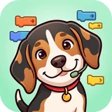

<!doctype html>
<html lang="ru"><head><meta charset="utf-8">
<meta name="viewport" content="width=device-width,initial-scale=1,viewport-fit=cover">
<title>Уроки</title>
<meta name="theme-color" content="#38bdf8"><meta name="color-scheme" content="light">
<meta name="apple-mobile-web-app-capable" content="yes"><meta name="mobile-web-app-capable" content="yes">
<meta name="apple-mobile-web-app-title" content="Уроки">
<link rel="manifest" href="manifest.webmanifest"><link rel="apple-touch-icon" href="icon-180.png"><link rel="icon" href="icon-192.png">
<link rel="preconnect" href="https://fonts.googleapis.com"><link href="https://fonts.googleapis.com/css2?family=Caveat:wght@700&display=swap" rel="stylesheet">
<style>@font-face{font-family:'Manrope';font-style:normal;font-weight:400 800;font-display:swap;src:url(fonts/manrope-cyrillic.woff2) format('woff2');unicode-range:U+0301, U+0400-045F, U+0490-0491, U+04B0-04B1, U+2116;}
@font-face{font-family:'Manrope';font-style:normal;font-weight:400 800;font-display:swap;src:url(fonts/manrope-latin.woff2) format('woff2');unicode-range:U+0000-00FF, U+0131, U+0152-0153, U+02BB-02BC, U+02C6, U+02DA, U+02DC, U+0304, U+0308, U+0329, U+2000-206F, U+20AC, U+2122, U+2191, U+2193, U+2212, U+2215, U+FEFF, U+FFFD;}
@font-face{font-family:'Nunito';font-style:normal;font-weight:400 900;font-display:swap;src:url(fonts/nunito-cyrillic.woff2) format('woff2');unicode-range:U+0301, U+0400-045F, U+0490-0491, U+04B0-04B1, U+2116;}
@font-face{font-family:'Nunito';font-style:normal;font-weight:400 900;font-display:swap;src:url(fonts/nunito-latin.woff2) format('woff2');unicode-range:U+0000-00FF, U+0131, U+0152-0153, U+02BB-02BC, U+02C6, U+02DA, U+02DC, U+0304, U+0308, U+0329, U+2000-206F, U+20AC, U+2122, U+2191, U+2193, U+2212, U+2215, U+FEFF, U+FFFD;}
@font-face{font-family:'Playfair Display';font-style:normal;font-weight:600 800;font-display:swap;src:url(fonts/playfairdisplay-cyrillic.woff2) format('woff2');unicode-range:U+0301, U+0400-045F, U+0490-0491, U+04B0-04B1, U+2116;}
@font-face{font-family:'Playfair Display';font-style:normal;font-weight:600 800;font-display:swap;src:url(fonts/playfairdisplay-latin.woff2) format('woff2');unicode-range:U+0000-00FF, U+0131, U+0152-0153, U+02BB-02BC, U+02C6, U+02DA, U+02DC, U+0304, U+0308, U+0329, U+2000-206F, U+20AC, U+2122, U+2191, U+2193, U+2212, U+2215, U+FEFF, U+FFFD;}
@font-face{font-family:'Rubik';font-style:normal;font-weight:600 800;font-display:swap;src:url(fonts/rubik-cyrillic.woff2) format('woff2');unicode-range:U+0301, U+0400-045F, U+0490-0491, U+04B0-04B1, U+2116;}
@font-face{font-family:'Rubik';font-style:normal;font-weight:600 800;font-display:swap;src:url(fonts/rubik-latin.woff2) format('woff2');unicode-range:U+0000-00FF, U+0131, U+0152-0153, U+02BB-02BC, U+02C6, U+02DA, U+02DC, U+0304, U+0308, U+0329, U+2000-206F, U+20AC, U+2122, U+2191, U+2193, U+2212, U+2215, U+FEFF, U+FFFD;}

:root{
  --paper:#fbfaf5; --grid:#e3e9f2; --ink:#1f2a44; --ink2:#55607a; --line:#d6dce8;
  --blue:#2350a8; --red:#c8312b; --green:#23824a; --gold:#e0a417; --gold2:#b37d00;
  --card:#ffffff; --soft:#eef2f9; --acc:#2350a8; --accsoft:#e6edfa;
  --r:16px; --sh:0 1px 2px rgba(20,30,60,.06),0 4px 14px rgba(20,30,60,.06);
}
@media (prefers-color-scheme: dark){
  :root{ --paper:#151a24; --grid:#1d2431; --ink:#e8ecf4; --ink2:#a4adc0; --line:#2c3446;
    --blue:#7ea3f0; --red:#ff7b73; --green:#5fcf8c; --gold:#f2bd3c; --gold2:#f2bd3c;
    --card:#1c2230; --soft:#232b3b; --acc:#7ea3f0; --accsoft:#223150; --sh:none; }
}
.yarik{ --acc:#d9620f; --accsoft:#fdeee2; }
.anya{ --acc:#0f8a84; --accsoft:#def3f1; }
@media (prefers-color-scheme: dark){ .yarik{ --acc:#ff9a52; --accsoft:#3a2a1e; } .anya{ --acc:#4fd0c6; --accsoft:#173634; } }

*{ box-sizing:border-box; -webkit-tap-highlight-color:transparent; }
html{ -webkit-text-size-adjust:100%; }
body{ margin:0; color:var(--ink); font:18px/1.5 -apple-system,BlinkMacSystemFont,"Segoe UI",Roboto,"PT Sans",sans-serif;
  background-color:var(--paper);
  background-image:linear-gradient(var(--grid) 1px,transparent 1px),linear-gradient(90deg,var(--grid) 1px,transparent 1px);
  background-size:24px 24px; min-height:100vh; padding:env(safe-area-inset-top) env(safe-area-inset-right) env(safe-area-inset-bottom) env(safe-area-inset-left); }
h1{ font-size:30px; line-height:1.2; margin:.2em 0 .4em; }
h2{ font-size:21px; margin:.2em 0 .5em; }
h3{ font-size:17px; margin:1em 0 .4em; color:var(--ink2); }
button,input,select,textarea{ font:inherit; color:inherit; }
.wrap{ max-width:860px; margin:0 auto; padding:16px 16px 60px; }
.wrap.narrow{ max-width:520px; }
.card{ background:var(--card); border:1px solid var(--line); border-radius:var(--r); padding:18px 20px; margin:14px 0; box-shadow:var(--sh); }
.hero{ padding:20px 0 6px; }
.eyebrow{ text-transform:uppercase; letter-spacing:.08em; font-size:13px; font-weight:600; color:var(--acc); margin:0; }
.hint{ color:var(--ink2); font-size:15px; }
.center{ text-align:center; }
.row{ display:flex; flex-wrap:wrap; gap:8px; margin:6px 0; }

.btn{ appearance:none; border:0; border-radius:12px; background:var(--acc); color:#fff; font-weight:600; padding:12px 20px; min-height:48px; cursor:pointer; }
.btn:disabled{ opacity:.45; cursor:default; }
.btn.big{ display:block; width:100%; font-size:20px; padding:16px 20px; min-height:60px; margin:14px 0; }
.btn.small{ padding:8px 14px; min-height:40px; font-size:16px; }
.btn.ghost{ background:var(--accsoft); color:var(--acc); }
.btn.mic{ background:var(--green); }
.btn.stop{ background:var(--red); }
.btn:active{ transform:translateY(1px); }
.link{ appearance:none; border:0; background:none; color:var(--acc); font-weight:600; padding:10px 4px; cursor:pointer; }
.chip{ appearance:none; border:1.5px solid var(--line); background:var(--card); border-radius:999px; padding:9px 16px; min-height:44px; cursor:pointer; }
.chip.on{ border-color:var(--acc); background:var(--accsoft); color:var(--acc); font-weight:600; }

.bar{ display:flex; justify-content:space-between; align-items:center; gap:10px; padding:4px 0; }
.coins{ display:inline-flex; align-items:center; gap:6px; background:var(--card); border:1px solid var(--line); border-radius:999px; padding:6px 14px; font-size:18px; }
.coin{ display:inline-block; width:20px; height:20px; border-radius:50%; background:radial-gradient(circle at 35% 35%,#ffe28a,var(--gold) 60%,var(--gold2)); box-shadow:inset 0 0 0 2px rgba(0,0,0,.08); vertical-align:-4px; }

/* вход */
.kids{ display:grid; grid-template-columns:repeat(auto-fit,minmax(240px,1fr)); gap:16px; margin:18px 0; }
.kidcard{ display:grid; justify-items:center; gap:4px; padding:28px 16px; border-radius:22px; border:2px solid var(--acc); background:var(--card); cursor:pointer; box-shadow:var(--sh); }
.avatar{ width:96px; height:96px; border-radius:50%; background:var(--acc); color:#fff; font-size:52px; font-weight:700; display:grid; place-items:center; }
.kn{ font-size:28px; font-weight:700; }
.kg{ color:var(--ink2); }
.kc{ display:inline-flex; align-items:center; gap:6px; margin-top:6px; }
.pinbox{ display:grid; justify-items:center; gap:18px; margin-top:10px; }
.dots{ display:flex; gap:16px; }
.dots i{ width:20px; height:20px; border-radius:50%; border:2px solid var(--ink2); }
.dots i.on{ background:var(--ink); border-color:var(--ink); }
.pad{ display:grid; grid-template-columns:repeat(3,84px); gap:14px; }
.pad span{ display:block; }
.key{ width:84px; height:84px; border-radius:50%; border:1px solid var(--line); background:var(--card); font-size:30px; font-weight:600; cursor:pointer; box-shadow:var(--sh); }
.key:active{ background:var(--soft); }

/* главная */
.hello h1{ margin-bottom:0; }
.hello p{ margin:.2em 0 .6em; color:var(--ink2); }
.prog{ height:10px; border-radius:99px; background:var(--soft); overflow:hidden; }
.prog i{ display:block; height:100%; background:var(--acc); border-radius:99px; transition:width .4s; }
.note{ background:#fff7d6; color:#4a3b00; border:1px solid #f0dc8a; border-radius:12px; padding:12px 16px; margin:12px 0; }
@media (prefers-color-scheme: dark){ .note{ background:#3a3214; color:#f3e3a3; border-color:#5c4f1d; } }
.tiles{ display:grid; grid-template-columns:repeat(auto-fill,minmax(250px,1fr)); gap:12px; margin:18px 0; }
.tile{ position:relative; display:flex; align-items:center; gap:14px; text-align:left; background:var(--card); border:1.5px solid var(--line); border-radius:var(--r); padding:16px; min-height:92px; cursor:pointer; box-shadow:var(--sh); }
.tile.main{ border-color:var(--acc); }
.tile.done{ opacity:.75; }
.ico{ flex:none; width:56px; height:56px; border-radius:14px; background:var(--accsoft); color:var(--acc); display:grid; place-items:center; font-weight:700; font-size:19px; }
.tt{ display:grid; gap:2px; min-width:0; }
.sn{ font-weight:700; }
.sn em{ font-style:normal; font-size:12px; background:var(--acc); color:#fff; border-radius:6px; padding:1px 6px; margin-left:4px; vertical-align:2px; }
.ut{ color:var(--ink2); font-size:15px; overflow:hidden; text-overflow:ellipsis; display:-webkit-box; -webkit-line-clamp:2; -webkit-box-orient:vertical; }
.state{ margin-left:auto; font-size:13px; color:var(--acc); font-weight:600; }
.mark,.bigmark{ font-family:"Caveat","Marker Felt","Segoe Print",cursive; color:var(--red); font-weight:700; }
.mark{ margin-left:auto; font-size:42px; line-height:1; transform:rotate(-8deg); }
.m2{ color:var(--ink2); }
.card.win{ border-color:var(--green); text-align:center; }
.speeds{ display:flex; flex-wrap:wrap; gap:8px; }
.speeds span{ background:var(--soft); border-radius:10px; padding:4px 10px; font-size:15px; }

/* урок */
.steps{ display:flex; gap:6px; list-style:none; padding:0; margin:0 0 10px; flex-wrap:wrap; }
.steps li{ font-size:14px; padding:4px 12px; border-radius:99px; background:var(--soft); color:var(--ink2); }
.steps li.now{ background:var(--acc); color:#fff; font-weight:600; }
.steps li.ok{ background:var(--accsoft); color:var(--acc); }
.steps li.ok::before{ content:"✓ "; }
.theory .th{ font-size:19px; }
.theory .th b,.theory .th strong{ color:var(--acc); }
.theory table{ border-collapse:collapse; margin:8px 0; }
.theory td,.theory th{ border:1px solid var(--line); padding:4px 10px; }
.vw{ appearance:none; border:1px solid var(--line); background:var(--soft); border-radius:10px; padding:6px 12px; margin:3px; cursor:pointer; }
.src{ font-size:14px; color:var(--ink2); margin:4px 2px; }
.author{ color:var(--ink2); margin-top:-8px; }
.counter{ font-size:15px; color:var(--ink2); margin-top:8px; }
.task .q{ font-size:24px; line-height:1.4; margin:4px 0 14px; }
.bw{ font-size:1.35em; font-weight:800; letter-spacing:.04em; } /* крупные буквы и слова для «Учимся читать» */
.gap{ display:inline-block; min-width:44px; border-bottom:2px solid var(--acc); color:var(--acc); text-align:center; }
.opts{ display:grid; grid-template-columns:repeat(auto-fit,minmax(160px,1fr)); gap:10px; }
.opt{ appearance:none; border:2px solid var(--line); background:var(--card); border-radius:14px; padding:14px; min-height:60px; font-size:21px; cursor:pointer; }
.opt:disabled{ cursor:default; }
.opt.right{ border-color:var(--green); background:rgba(35,130,74,.12); color:var(--green); font-weight:700; }
.opt.wrong{ border-color:var(--red); color:var(--red); text-decoration:line-through; opacity:.8; }
.numf{ display:flex; gap:10px; }
.numf input{ flex:1; min-width:0; font-size:26px; padding:10px 14px; border:2px solid var(--line); border-radius:12px; background:var(--card); }
.numf input:focus{ outline:none; border-color:var(--acc); }
.fb{ margin-top:14px; padding:12px 14px; border-radius:12px; }
.fb.ok{ background:rgba(35,130,74,.12); color:var(--green); }
.fb.bad{ background:rgba(200,49,43,.1); color:var(--red); }
.fb.bad .hint{ color:var(--ink2); }
.fb.try{ background:var(--soft); }
.survey textarea{ width:100%; margin-top:6px; padding:10px; border:1.5px solid var(--line); border-radius:12px; background:var(--card); }
.free{ display:block; margin-top:14px; color:var(--ink2); font-size:15px; }
.result{ text-align:center; }
.bigmark{ font-size:110px; line-height:1; transform:rotate(-6deg); display:inline-block; }
.earn{ display:inline-flex; gap:6px; align-items:center; font-size:20px; }
.check{ display:flex; gap:10px; align-items:center; padding:8px 0; font-size:19px; }
.check input{ width:26px; height:26px; }

/* чтение */
.warm{ display:flex; flex-wrap:wrap; gap:10px; margin:10px 0; }
.ww{ appearance:none; border:1.5px solid var(--acc); background:var(--accsoft); color:var(--ink); border-radius:12px; padding:10px 16px; font-size:22px; cursor:pointer; }
.reading .text,.peek .text{ font-size:26px; line-height:1.75; font-family:Georgia,"PT Serif","Times New Roman",serif; }
.anya .reading .text{ font-size:22px; }
.text p{ margin:0 0 .6em; }
.w{ border-radius:5px; padding:0 1px; transition:background .2s; }
.w.r1{ color:var(--green); }
.w.r2{ background:rgba(200,49,43,.15); color:var(--red); text-decoration:underline wavy; }
.w.rc{ background:var(--accsoft); outline:2px solid var(--acc); }
.rest summary,.peek summary{ cursor:pointer; color:var(--acc); font-weight:600; padding:8px 0; }
.rest{ margin-top:12px; color:var(--ink2); }
.readbar{ position:sticky; bottom:0; padding:8px 0 calc(8px + env(safe-area-inset-bottom)); background:linear-gradient(transparent,var(--paper) 30%); }
.readbar .btn.big{ margin:6px 0; }
.rstat{ display:block; text-align:center; color:var(--ink2); }
.readres{ display:flex; flex-wrap:wrap; gap:10px; margin:6px 0; }
.readres span{ background:var(--card); border:1px solid var(--line); border-radius:12px; padding:8px 14px; }
.readres b{ font-size:22px; color:var(--acc); }

/* магазин */
.shop{ display:grid; grid-template-columns:repeat(auto-fill,minmax(220px,1fr)); gap:12px; }
.item{ display:grid; gap:10px; margin:0; }
.iname{ font-weight:600; }
.price{ display:inline-flex; gap:6px; align-items:center; font-size:20px; }
.plain{ padding-left:20px; }

/* родителям */
.tabs{ display:flex; gap:6px; margin:10px 0; border-bottom:1px solid var(--line); }
.tab{ appearance:none; border:0; background:none; padding:10px 14px; border-bottom:3px solid transparent; cursor:pointer; color:var(--ink2); }
.tab.on{ border-color:var(--acc); color:var(--ink); font-weight:700; }
.tscroll{ overflow-x:auto; }
table{ border-collapse:collapse; width:100%; font-size:15px; }
th,td{ text-align:left; padding:6px 8px; border-bottom:1px solid var(--line); vertical-align:top; }
th{ color:var(--ink2); font-weight:600; }
.form label{ display:block; margin:10px 0; color:var(--ink2); font-size:15px; }
.form input,.form select,.shoprow input{ display:block; width:100%; margin-top:4px; padding:10px 12px; border:1.5px solid var(--line); border-radius:10px; background:var(--card); font-size:18px; color:var(--ink); }
.shoprow{ display:grid; grid-template-columns:1fr 90px auto; gap:8px; align-items:center; margin:6px 0; }
.shoprow input{ margin:0; }
.toast{ position:fixed; left:50%; bottom:30px; transform:translateX(-50%); background:var(--ink); color:var(--paper); padding:12px 20px; border-radius:12px; z-index:2000; }

@media (max-width:520px){
  body{ font-size:17px; } h1{ font-size:25px; }
  .task .q{ font-size:21px; } .reading .text{ font-size:22px; }
  .pad{ grid-template-columns:repeat(3,72px); } .key{ width:72px; height:72px; }
}

/* картинки и интересы */
.kb{ font-size:26px; letter-spacing:4px; }
.banner{ display:flex; justify-content:space-around; font-size:34px; margin:6px 0 -6px; }
.banner span{ display:inline-block; animation:bob 3s ease-in-out infinite; }
@keyframes bob{ 0%,100%{ transform:translateY(0) } 50%{ transform:translateY(-6px) rotate(-6deg) } }
@media (prefers-reduced-motion: reduce){ .banner span{ animation:none; } }
.task{ position:relative; }
.sticker{ position:absolute; top:-18px; right:12px; font-size:40px; transform:rotate(12deg); }
.pic{ display:inline-block; font-size:34px; letter-spacing:2px; line-height:1.3; }
.cheer{ font-size:28px; font-weight:700; color:var(--acc); margin-bottom:6px; }
.anya .hello h1,.anya .cheer{ font-family:Georgia,"PT Serif",serif; }
.anya .card.task{ border-color:#cdbf98; }
.tile.locked{ opacity:.45; filter:grayscale(.6); }
.tile.locked .ico::after{ content:"🔒"; position:absolute; font-size:16px; transform:translate(22px,-22px); }
.tile.locked .ico{ position:relative; }
.rtell{ min-height:4em; margin-top:10px; padding:10px 12px; border:1.5px dashed var(--acc); border-radius:12px; color:var(--ink2); font-size:17px; }
.note.warn{ background:#fff4e0; color:#7a4a00; }
@media (prefers-color-scheme: dark){ .note.warn{ background:#3a2c12; color:#ffd99a; } }
.card.example{ background:var(--accsoft); margin-top:12px; }
.card.example h3{ margin-top:0; }
.task .link[data-act="dunnotask"]{ display:block; margin-top:12px; }
.illus{ margin:12px 0 4px; display:flex; justify-content:center; }
.pic{ max-width:100%; height:auto; color:var(--ink); }
.pic.tens,.pic.arr{ max-height:200px; } .pic.pie,.pic.pct,.pic.clock,.pic.angle,.pic.bars,.pic.box{ max-height:190px; } .pic.scale{ max-height:170px; } .pic.rect{ max-height:200px; }
.wpics{ display:flex; gap:14px; justify-content:center; font-size:64px; line-height:1.1; }
.wpics span{ background:var(--soft); border-radius:18px; padding:6px 12px; }
.task .wpics{ font-size:58px; }
.groups{ display:flex; align-items:center; gap:12px; flex-wrap:wrap; justify-content:center; font-size:26px; }
.groups .grp{ background:var(--soft); border-radius:12px; padding:6px 10px; max-width:260px; word-break:break-all; }
.scenebar{ margin:-18px -20px 12px; border-radius:16px 16px 0 0; overflow:hidden; line-height:0; }
.scenebar .pic{ width:100%; height:auto; display:block; }
.coverwrap{ margin:0 0 14px; border-radius:16px; overflow:hidden; line-height:0; box-shadow:0 2px 10px rgba(0,0,0,.12); }
.coverwrap .pic{ width:100%; height:auto; display:block; }
.coverwrap.photo{ background:#1f2937 center/cover; } .coverwrap.photo img{ width:100%; aspect-ratio:3/2; max-height:340px; object-fit:cover; display:block; }
.coverwrap.chimg img{ aspect-ratio:4/3; max-height:440px; }
.pair{ display:flex; align-items:center; gap:8px; flex-wrap:wrap; justify-content:center; } .pair b{ font-size:28px; } .pic.place{ max-height:110px; } .pic.line{ max-height:110px; }
.illus .pic{ max-width:100%; height:auto; }
.stack{ display:flex; flex-direction:column; align-items:center; gap:6px; }
.pair .pic{ max-width:46%; }
.prizes{ display:flex; flex-wrap:wrap; gap:8px; margin:14px 0; }
.prizes .chip{ font-size:16px; }
.timecard h2{ margin:0 0 8px; font-size:18px; }
.timecard .tt2{ display:flex; flex-wrap:wrap; gap:10px 18px; font-size:17px; }
/* Планшеты: крупнее и на всю ширину */
body{ box-sizing:border-box; overflow-x:hidden; }
.wrap{ box-sizing:border-box; }
.wrap.login{ min-height:calc(100vh - env(safe-area-inset-top) - env(safe-area-inset-bottom)); display:flex; flex-direction:column; justify-content:center; }
.wrap.login .kids{ grid-template-columns:repeat(2,minmax(0,1fr)); }
.wrap.login .kidcard{ padding:40px 16px; }
.wrap.login .avatar{ width:120px; height:120px; font-size:64px; }
.wrap.login .kn{ font-size:34px; } .wrap.login .kb{ font-size:30px; }
@media (min-width:760px){ .wrap{ max-width:980px; padding:24px 32px 60px; } }
@media (min-width:760px) and (max-width:959px){ .wrap{ zoom:1.05; } }
@media (min-width:960px){ .wrap{ zoom:1.2; max-width:min(980px, calc(100vw / 1.2)); } }
@media (min-width:1250px){ .wrap{ zoom:1.3; max-width:min(980px, calc(100vw / 1.3)); } .tiles{ grid-template-columns:repeat(3,minmax(0,1fr)); } }
@media (max-width:520px){ .wrap.login .kids{ grid-template-columns:1fr; } }

.subjart{ float:right; width:min(34%,230px); aspect-ratio:1; object-fit:cover; border-radius:18px; margin:0 0 10px 14px; box-shadow:0 4px 14px rgba(0,0,0,.18); }
@media (max-width:560px){ .subjart{ float:none; display:block; width:100%; max-height:220px; margin:0 0 12px; } }
.steps li.tap{ cursor:pointer; text-decoration:underline; text-underline-offset:3px; }
.rtxt{ width:100%; box-sizing:border-box; font:inherit; font-size:18px; padding:12px; border-radius:12px; border:2px solid var(--accsoft); margin:8px 0; min-height:150px; }
.card .row{ display:flex; gap:10px; flex-wrap:wrap; align-items:center; }
/* Уровень PRO */
.tiles .tile.pro, .wrap .tiles .tile.pro{ background:linear-gradient(135deg,#1f1147 0%,#4a1d8f 55%,#b8860b 130%) !important; color:#fff; border:2px solid #f2c14e !important; box-shadow:0 6px 22px rgba(90,40,160,.35); overflow:hidden; }
.tiles .tile.pro .sn{ color:#ffd76a !important; font-weight:800; letter-spacing:.04em; text-transform:uppercase; }
.tiles .tile.pro .ut{ color:#efe6ff !important; }
.tile.pro .ico{ font-size:34px; filter:drop-shadow(0 0 8px rgba(255,215,106,.8)); }
.tile.pro .state{ background:#f2c14e; color:#2a1557; font-weight:700; }
.tile.pro::after{ content:""; position:absolute; top:0; left:-60%; width:40%; height:100%; background:linear-gradient(100deg,transparent,rgba(255,255,255,.28),transparent); animation:proshine 3.2s ease-in-out infinite; pointer-events:none; }
.tile.pro.done{ opacity:.85; }
.tile.pro.done::after{ display:none; }
@keyframes proshine{ 0%{ left:-60%; } 60%,100%{ left:130%; } }
/* Номера заданий: можно вернуться к решённым */
.dots{ display:flex; flex-wrap:wrap; gap:6px; margin:6px 0 4px; }
.dot{ min-width:32px; height:32px; border-radius:99px; display:inline-flex; align-items:center; justify-content:center; font-size:14px; background:var(--soft); color:var(--ink2); border:1.5px solid transparent; padding:0 6px; }
button.dot{ cursor:pointer; font:inherit; font-size:14px; }
.dot.now{ background:var(--acc); color:#fff; font-weight:700; }
.dot.ok{ background:#dff3e4; color:#1e7a3c; border-color:#7cc896; }
.dot.mid{ background:#fff4d6; color:#8a6100; border-color:#e8c25a; }
.dot.bad{ background:#fde3e1; color:#a8261b; border-color:#ec8a82; }
.hint.small{ font-size:13px; margin:0 0 8px; }
.plist{ list-style:none; padding:0; margin:8px 0 0; display:grid; gap:6px; }
.prow{ width:100%; display:flex; align-items:center; gap:10px; text-align:left; background:var(--soft); border:1.5px solid var(--line); border-radius:12px; padding:10px 12px; font:inherit; color:inherit; cursor:pointer; }
.prow:disabled{ opacity:.5; cursor:default; }
.prow .pn{ font-weight:700; min-width:22px; }
.prow .pq{ flex:1; }
.plist li.ok .ps{ color:#1e7a3c; } .plist li.mid .ps{ color:#8a6100; } .plist li.bad .ps{ color:#a8261b; }
.prow .ps{ font-weight:700; font-size:18px; }
.tiles .tile.pro{ grid-column:1 / -1; }
.tile.pro .ut{ -webkit-line-clamp:unset; display:block; overflow:visible; }
.tile.pro .state{ white-space:nowrap; font-size:15px; padding:4px 10px; }
.tiles .tile.pro .ico{ background:linear-gradient(135deg,#ffd76a,#d99a1a) !important; }
/* Копилка */
.piggy{ display:flex; flex-wrap:wrap; align-items:center; gap:8px; margin-top:10px; padding:10px 12px; border-radius:14px; background:#fff3f6; border:1.5px dashed #f19ab4; color:#6b2140; font-size:15px; }
.piggy .pig{ font-size:26px; }
.piggy b{ color:#b0124e; }
.revtag{ margin:0 0 6px; font-size:13px; color:var(--ink2); }
.txtf input{ text-align:left; letter-spacing:.02em; }

.steps li.tap{ padding:0; text-decoration:none; }
.stp{ appearance:none; -webkit-appearance:none; border:0; background:none; color:inherit; font:inherit; padding:10px 14px; min-height:40px; cursor:pointer; text-decoration:underline; text-underline-offset:3px; touch-action:manipulation; }
.note.rest{ border-left:4px solid var(--acc); font-size:18px; }

/* ===== Всегда доступно: загадки, головоломки, задачи ===== */
.alwh{ margin:26px 0 0; font-size:20px; }
.tiles.always{ margin-top:10px; }
.tile.fun .ico{ font-size:30px; }
.tile.fun{ border-style:dashed; }
.fntabs{ display:flex; flex-wrap:wrap; gap:8px; margin:10px 0 4px; }
.zgpic{ position:relative; height:260px; border-radius:16px; overflow:hidden; margin:-4px 0 14px; background:linear-gradient(160deg,#e8f3ff,#fdf6e3); display:flex; align-items:center; justify-content:center; }
.anya .zgpic{ background:linear-gradient(160deg,#2a1d4a,#5b3b8c); }
.zgpic img{ position:absolute; left:0; top:0; width:100%; height:100%; object-fit:cover; object-position:50% 70%; }
.zgpic .zgemo{ font-size:56px; letter-spacing:12px; opacity:.8; }
.zgpic .zgq{ position:absolute; right:14px; bottom:8px; font:900 64px/1 Nunito,sans-serif; color:#fff; text-shadow:0 3px 0 rgba(0,0,0,.25),0 0 18px rgba(0,0,0,.35); }
.zgtext{ font-size:24px; line-height:1.45; }
.zgopts .opt{ display:flex; align-items:center; gap:10px; justify-content:flex-start; font-size:20px; }
.zgopts .zge{ font-size:30px; line-height:1; }
.pzwrap{ background:#fbf6ea; border:1.5px solid #e6dcc4; border-radius:16px; padding:10px; margin:12px 0; touch-action:none; -webkit-user-select:none; user-select:none; }
.anya .pzwrap{ background:#21183a; border-color:#5b4a8a; }
.pzwrap.sol{ opacity:.95; }
.pzsvg{ display:block; width:100%; max-height:52vh; }
.pzsvg .hit{ stroke:transparent; stroke-width:.5; fill:transparent; }
.pzsvg .wood{ stroke:#e0b062; stroke-width:.12; stroke-linecap:round; }
.pzsvg .head{ fill:#c0392b; }
.pzsvg g.pzs, .pzsvg g.pzc{ cursor:grab; }
.pzsvg g.sel .wood{ stroke:#f39c12; stroke-width:.16; }
.pzsvg g.drag{ opacity:.85; }
.pzsvg g.new .wood{ stroke:#27ae60; }
.pzsvg .ghost{ stroke:#c9bfa8; stroke-width:.04; stroke-dasharray:.08 .08; }
.pzsvg g.pze.on .ghost{ stroke:#f39c12; stroke-width:.06; }
.pzsvg g.pze.was .ghost{ stroke:#e74c3c; }
.anya .pzsvg .ghost{ stroke:#6d5fa0; }
.pzsvg .pzfix{ stroke:#8a7a5a; stroke-width:.12; stroke-linecap:round; }
/* Равенства из спичек: пустые места не видны (иначе пунктир «достраивает» цифры: 0 похож на 8), появляются только когда спичка выбрана или её тащат */
.pzsvg.eq .wood{ stroke-width:.17; }
.pzsvg.eq g.sel .wood{ stroke-width:.2; }
.pzsvg.eq .pzfix{ stroke-width:.17; }
.pzsvg.eq g.pze .ghost{ stroke:transparent; }
/* Квадраты из спичек: пунктир пустых мест не рисует «лишние квадраты» — виден только при выборе/перетаскивании; убранные спички — бледный пунктир (на него можно нажать, чтобы вернуть) */
.pzsvg.st g.pze .ghost{ stroke:transparent; }
.pzsvg.st g.pze.was .ghost{ stroke:#c9bfa8; opacity:.6; }
.pzsvg.st g.pze.on .ghost, .pzsvg.st.dragging g.pze .ghost{ stroke:#f39c12; stroke-width:.05; opacity:.75; }
.pzsvg.eq g.pze.on .ghost, .pzsvg.eq.dragging g.pze .ghost{ stroke:#f39c12; stroke-width:.05; stroke-dasharray:.1 .08; opacity:.75; }
.anya .pzsvg .pzfix{ stroke:#cbb9ff; }
.pzsvg.coins .pzc circle{ fill:#e8b923; stroke:#a67c00; stroke-width:.05; }
.pzsvg.coins .pzc circle.in{ fill:none; stroke:#c99a10; stroke-width:.04; }
.pzsvg.coins .pzc circle.hit{ fill:transparent; stroke:none; }
.pzsvg.coins .pzc.sel circle{ fill:#ffd54f; stroke:#e67e22; }
.pzsvg.coins .pzc.new circle{ fill:#7bd389; stroke:#27ae60; }
.pzsvg .pzdot{ fill:#d8ccb0; }
.anya .pzsvg .pzdot{ fill:#6d5fa0; }
.pzcount{ font-size:17px; }
.card.task .burst{ position:relative; height:0; }
.pzwrap .pzsvg{ border:0 !important; border-radius:0 !important; background:none !important; box-shadow:none !important; outline:0 !important; }
/* Мои книги */
.bkhome h2{ margin-top:0; }
.bkthumb{ overflow:hidden; padding:0; }
.bkthumb img{ width:100%; height:100%; object-fit:cover; }
.bkcover{ display:block; max-width:180px; max-height:240px; border-radius:10px; margin:10px 0; box-shadow:var(--sh); }
.bkcover.sm{ max-width:90px; max-height:120px; margin:0 16px 0 0; }
.bkhead{ display:flex; align-items:center; }
.bksnap{ position:relative; overflow:hidden; text-align:center; background:var(--green); }
.bkread{ font-size:21px; line-height:1.45; }
.bkinp{ display:block; width:100%; margin-top:6px; padding:12px; font-size:18px; border:1.5px solid var(--line); border-radius:12px; background:var(--card); color:inherit; }
#bkup:empty{ display:none; }

.dripfly{ position:fixed; right:18px; top:64px; z-index:20; background:#1f7a3d; color:#fff; font-weight:700; padding:8px 14px; border-radius:999px; box-shadow:0 4px 14px rgba(0,0,0,.25); animation:dripup 1.6s ease-out forwards; pointer-events:none; }
@keyframes dripup{ 0%{ opacity:0; transform:translateY(10px); } 15%{ opacity:1; transform:translateY(0); } 80%{ opacity:1; } 100%{ opacity:0; transform:translateY(-30px); } }
.note.dripc{ border-left:4px solid #1f7a3d; }
/* темп чтения и словарик */
.pace .pbig{ font-size:20px; margin:4px 0 8px; } .pace .pbig b{ font-size:48px; color:var(--acc); margin-right:6px; }
.pace .ppr{ font-size:18px; background:var(--accsoft); border-radius:12px; padding:10px 12px; }
.spark{ width:100%; max-width:420px; height:auto; display:block; margin:8px auto 0; }
.spark .sl{ fill:none; stroke:var(--acc); stroke-width:3; stroke-linejoin:round; }
.spark .sc{ fill:var(--card); stroke:var(--acc); stroke-width:2.5; } .spark .sc.now{ fill:var(--acc); }
.spark .sn{ stroke:var(--ink2); stroke-width:1.5; stroke-dasharray:5 5; } .spark .st{ fill:var(--ink2); font-size:12px; }
.plv{ display:flex; align-items:center; gap:10px; flex-wrap:wrap; margin:10px 0; font-weight:600; }
.pbar{ flex:1 1 120px; height:12px; background:var(--soft); border-radius:8px; overflow:hidden; } .pbar i{ display:block; height:100%; background:var(--gold); border-radius:8px; }
.pgoal{ font-size:17px; }
.badges{ display:flex; gap:6px; flex-wrap:wrap; margin:6px 0; } .badges span{ font-size:26px; background:var(--soft); border-radius:50%; width:44px; height:44px; display:inline-flex; align-items:center; justify-content:center; }
.rlv{ margin:6px 0; } .rlvb{ background:var(--accsoft); border-radius:10px; padding:3px 10px; font-weight:700; margin-right:6px; }
.gloss .gw{ display:flex; align-items:center; gap:12px; padding:8px 0; border-top:1px solid var(--line); } .gloss .gw:first-of-type{ border-top:0; }
.gloss .gw>div{ flex:1; font-size:17px; } .gloss .ge{ font-size:34px; width:44px; text-align:center; flex:none; }
.gloss .ib{ font-size:22px; background:var(--soft); border:0; border-radius:50%; width:44px; height:44px; flex:none; cursor:pointer; }
/* стихи */
.ptext p{ margin:2px 0; font-size:21px; line-height:1.5; font-family:Georgia, 'Times New Roman', serif; } .ptext.syl p{ letter-spacing:.5px; }
.pline{ font-style:italic; font-size:19px; font-family:Georgia, serif; }
.sline{ display:flex; flex-wrap:wrap; gap:10px 14px; align-items:center; margin:14px 0; font-size:24px; line-height:1.2; }
.sline .sw{ display:inline-flex; align-items:center; white-space:nowrap; } .sline .sw.plain{ color:var(--mut,#8a8f9c); padding:6px 2px; }
.sline .sst{ font:inherit; color:inherit; border:2px solid var(--soft); background:var(--card,#fff); padding:6px 7px; margin:0 1px; border-radius:10px; min-width:34px; cursor:pointer; -webkit-appearance:none; }
.sline .sst.right{ background:#2e9d5b; border-color:#2e9d5b; color:#fff; font-weight:800; } .sline .sst.wrong{ background:#d9534f; border-color:#d9534f; color:#fff; text-decoration:line-through; }
.sline .sst:disabled{ opacity:1; cursor:default; }
.rhythm{ margin-top:12px; padding:10px 12px; border-radius:12px; background:var(--soft); } .rline{ font-size:20px; } .rline i{ font-style:normal; opacity:.4; margin:0 3px; }
.rline .rs{ font-weight:800; color:var(--acc); } .rpat{ margin:6px 0 0; letter-spacing:.5px; }
.poem textarea{ width:100%; font-size:18px; border-radius:12px; border:1px solid var(--line); padding:10px; background:var(--card); color:var(--ink); box-sizing:border-box; }
.poem .row{ display:flex; gap:8px; flex-wrap:wrap; margin-top:8px; }
/* подсказки по касанию */
.tipc{ cursor:help; text-decoration:underline dotted; text-underline-offset:3px; text-decoration-thickness:1px; }
.note.tipc, .prog.tipc, .plv.tipc{ text-decoration:none; }
.coins .tipc{ text-decoration:none; display:inline-flex; align-items:center; gap:4px; } .coins .pigh{ margin-left:10px; }
.tipbox{ position:fixed; top:0; right:0; bottom:0; left:0; background:rgba(10,15,30,.45); z-index:1000; display:flex; align-items:flex-end; justify-content:center; padding:16px; }
.tipin{ background:var(--card); color:var(--ink); border-radius:18px; padding:18px 18px 14px; max-width:520px; width:100%; box-shadow:0 10px 40px rgba(0,0,0,.3); margin-bottom:env(safe-area-inset-bottom); }
.tipin h3{ margin:0 0 8px; font-size:20px; } .tipin p{ font-size:18px; line-height:1.45; margin:0 0 12px; } .tiprow{ display:flex; gap:10px; flex-wrap:wrap; }
.micbar{ display:flex; gap:10px; align-items:center; flex-wrap:wrap; margin:6px 0 4px; } .mic2.live{ background:var(--red); color:#fff; animation:pulse 1.2s infinite; }
@keyframes pulse{ 50%{ opacity:.7; } }

.bkpic{ display:block; width:100%; max-width:440px; height:auto; margin:6px auto 10px; background:#fff; border-radius:12px; padding:6px; }
.bkstep.got{ border-color:var(--green); }

.bktext{ font-size:22px; line-height:1.7; max-height:55vh; overflow:auto; padding:10px 12px; border:1px solid var(--line); border-radius:12px; background:var(--card); margin:8px 0; }
.bkbusy{ padding:24px 0; }
.spin{ width:44px; height:44px; margin:0 auto 10px; border-radius:50%; border:5px solid var(--accsoft); border-top-color:var(--acc); animation:bkspin 1s linear infinite; }
@keyframes bkspin{ to{ transform:rotate(360deg); } }
/* Портрет ребёнка */
.pfbar{ display:block; height:8px; border-radius:4px; background:var(--line); overflow:hidden; margin:6px 0 4px; }
.pfbar i{ display:block; height:100%; background:var(--acc); border-radius:4px; }
.pfrow{ padding:8px 0; border-bottom:1px solid var(--line); }
.pfrow:last-of-type{ border-bottom:0; }
.pfrow.dim b, .card.dim h2{ opacity:.6; }
.pfrow.dim .hint{ display:block; }
.pfprof .chip{ display:inline-block; margin:3px 2px; cursor:default; }
.pfnote{ font-size:13px; margin:6px 4px 18px; }
.tabs{ overflow-x:auto; -webkit-overflow-scrolling:touch; } .tabs .tab{ white-space:nowrap; flex-shrink:0; }
/* тестовый режим */
.testbar{ position:sticky; top:0; z-index:900; background:#7a3cff; color:#fff; padding:8px 12px; font-size:15px; text-align:center; } .testbar .link{ color:#fff; text-decoration:underline; margin-left:8px; }
.notebtn{ position:fixed; right:14px; bottom:14px; z-index:950; background:#7a3cff; color:#fff; border:0; border-radius:24px; padding:12px 16px; font-size:16px; box-shadow:0 6px 20px rgba(0,0,0,.25); cursor:pointer; }
.testc{ border:2px dashed #7a3cff; } .tipin textarea{ width:100%; box-sizing:border-box; font-size:17px; border-radius:12px; border:1px solid var(--line); padding:10px; margin-bottom:6px; background:var(--card); color:var(--ink); }
.rbad{ text-decoration:underline wavy #d9534f; text-decoration-thickness:2px; text-underline-offset:4px; color:#b8322e; }
.learnt .hidmsg{ display:none; } .learnt.hid .ptext{ display:none; } .learnt.hid .hidmsg{ display:block; padding:14px; border-radius:12px; background:var(--soft); text-align:center; }
.spot .spt p{ font-size:20px; line-height:2; margin:6px 0; } .spw{ font:inherit; color:inherit; background:none; border:0; padding:2px 3px; border-radius:8px; cursor:pointer; -webkit-appearance:none; }
.spw:active{ background:var(--soft); } .spw.wrong{ background:#f3d3d2; text-decoration:line-through; } .spw.right{ background:#2e9d5b; color:#fff; font-weight:700; } .spw.miss{ background:#d9534f; color:#fff; font-weight:700; } .spw:disabled{ opacity:1; cursor:default; }
.askrest, .askrest p, .askrest h2{ color:#2a2622 !important; } .askrest .hint{ color:#5a524a !important; } .askrest{ border:2px solid var(--acc); }
.hwc .hwrow{ display:flex; align-items:center; justify-content:space-between; gap:10px; padding:8px 0; border-top:1px solid var(--soft); }
.hwc, .hwc p, .hwc b{ color:#2a2622; } .hwc .hint{ color:#5a524a !important; } .hwc{ border:2px solid var(--acc); }
.restscr h1, .restscr p, .restscr h3, .restscr li{ color:#2a2622; } .restscr .hint{ color:#5a524a !important; } .tmr{ text-align:left; margin:8px 0 12px; padding-left:20px; } .tmr li{ margin:6px 0; }
.xtrow{ display:flex; flex-wrap:wrap; align-items:center; gap:8px; margin:8px 0; }
/* Читальня */
.libc h2 .ic{ width:28px; height:28px; vertical-align:-6px; margin-right:6px; }
.libc.off{ opacity:.75; } .libc.on{ border:2px solid var(--acc); }
.libblk{ display:flex; flex-direction:column; gap:12px; margin:16px 0; }
.libbar{ display:flex; align-items:center; gap:12px; margin:8px 0 14px; } .libbar .prog{ flex:1; margin:0; } .libbar span{ white-space:nowrap; font-weight:600; }
.lib .reading .text{ font-size:22px; line-height:1.7; }
@media (max-width:480px){ .libbar{ flex-direction:column; align-items:stretch; } .lib .reading .text{ font-size:20px; } }

/* ===== Яркое оформление (сгенерировано tools/theme_css.py) ===== */
:root:root{ color-scheme:light; --paper:#f0f9ff; --grid:transparent; --ink:#1f2a44; --ink2:#55607a; --line:#e2e8f0; --card:#ffffff; --soft:#f1f5f9;
  --blue:#2563eb; --red:#e11d48; --green:#16a34a; --gold:#f59e0b; --sh:0 6px 0 rgba(15,23,42,.10),0 10px 24px rgba(15,23,42,.12); --r:22px; }
body{ background:#7dd3fc linear-gradient(160deg,#38bdf8 0%,#a78bfa 55%,#f472b6 100%) fixed; background-image:url("data:image/svg+xml,%3Csvg xmlns=%22http://www.w3.org/2000/svg%22 viewBox=%220 0 400 400%22%3E%3Cg opacity=%22.5%22%3E%3Ccircle cx=%22366%22 cy=%22266%22 r=%224%22 fill=%22%23fff%22/%3E%3Ccircle cx=%22222%22 cy=%22343%22 r=%226%22 fill=%22%23fff%22/%3E%3Ccircle cx=%22178%22 cy=%220%22 r=%222%22 fill=%22%23fff%22/%3E%3Ccircle cx=%22391%22 cy=%22397%22 r=%224%22 fill=%22%23fff%22/%3E%3Ccircle cx=%2221%22 cy=%22299%22 r=%226%22 fill=%22%23fff%22/%3E%3Ccircle cx=%22356%22 cy=%2224%22 r=%223%22 fill=%22%23fff%22/%3E%3Ccircle cx=%22348%22 cy=%2256%22 r=%222%22 fill=%22%23fff%22/%3E%3Ccircle cx=%22163%22 cy=%22107%22 r=%224%22 fill=%22%23fff%22/%3E%3Ccircle cx=%22383%22 cy=%2244%22 r=%225%22 fill=%22%23fff%22/%3E%3Ccircle cx=%22355%22 cy=%22380%22 r=%225%22 fill=%22%23fff%22/%3E%3Ccircle cx=%22382%22 cy=%22315%22 r=%223%22 fill=%22%23fff%22/%3E%3Ccircle cx=%22143%22 cy=%22269%22 r=%222%22 fill=%22%23fff%22/%3E%3Ccircle cx=%22178%22 cy=%22217%22 r=%225%22 fill=%22%23fff%22/%3E%3Ccircle cx=%22174%22 cy=%22354%22 r=%226%22 fill=%22%23fff%22/%3E%3Ccircle cx=%22378%22 cy=%22352%22 r=%225%22 fill=%22%23fff%22/%3E%3Ccircle cx=%22260%22 cy=%2227%22 r=%223%22 fill=%22%23fff%22/%3E%3Ccircle cx=%22219%22 cy=%22344%22 r=%226%22 fill=%22%23fff%22/%3E%3Ccircle cx=%22398%22 cy=%2265%22 r=%225%22 fill=%22%23fff%22/%3E%3Ccircle cx=%22390%22 cy=%2296%22 r=%222%22 fill=%22%23fff%22/%3E%3Ccircle cx=%22359%22 cy=%22286%22 r=%224%22 fill=%22%23fff%22/%3E%3Ccircle cx=%2289%22 cy=%22279%22 r=%223%22 fill=%22%23fff%22/%3E%3Ccircle cx=%22399%22 cy=%22326%22 r=%223%22 fill=%22%23fff%22/%3E%3Ccircle cx=%22278%22 cy=%22133%22 r=%223%22 fill=%22%23fff%22/%3E%3Ccircle cx=%2230%22 cy=%2286%22 r=%224%22 fill=%22%23fff%22/%3E%3Ccircle cx=%22177%22 cy=%22210%22 r=%222%22 fill=%22%23fff%22/%3E%3Ccircle cx=%22103%22 cy=%22325%22 r=%224%22 fill=%22%23fff%22/%3E%3Ccircle cx=%2270%22 cy=%2269%22 r=%225%22 fill=%22%23fff%22/%3E%3Ccircle cx=%22343%22 cy=%22247%22 r=%223%22 fill=%22%23fff%22/%3E%3Ccircle cx=%22361%22 cy=%22123%22 r=%222%22 fill=%22%23fff%22/%3E%3Ccircle cx=%22263%22 cy=%22354%22 r=%225%22 fill=%22%23fff%22/%3E%3C/g%3E%3C/svg%3E"),linear-gradient(160deg,#38bdf8 0%,#a78bfa 55%,#f472b6 100%); background-size:400px 400px,cover; color:var(--ink); }
body::before{ content:""; position:fixed; top:0; right:0; bottom:0; left:0; z-index:-1; pointer-events:none; }
body.yarik{ background:#36983f; } body.yarik::before{ background:linear-gradient(rgba(2,6,23,.55),rgba(2,6,23,.25) 260px,rgba(2,6,23,.05) 420px),url(img/bg-yarik.webp) center 70%/cover no-repeat,url("data:image/svg+xml,%3Csvg xmlns=%22http://www.w3.org/2000/svg%22 viewBox=%220 0 1000 1500%22 preserveAspectRatio=%22xMidYMin slice%22%3E%3Cdefs%3E%3ClinearGradient id=%22s%22 x1=%220%22 y1=%220%22 x2=%220%22 y2=%221%22%3E%3Cstop offset=%220%22 stop-color=%22%231e3a8a%22/%3E%3Cstop offset=%221%22 stop-color=%22%2360a5fa%22/%3E%3C/linearGradient%3E%3CradialGradient id=%22g%22%3E%3Cstop offset=%220%22 stop-color=%22%23fffbe6%22 stop-opacity=%22.95%22/%3E%3Cstop offset=%221%22 stop-color=%22%23fffbe6%22 stop-opacity=%220%22/%3E%3C/radialGradient%3E%3C/defs%3E%3Crect width=%221000%22 height=%22260%22 fill=%22url(%23s)%22/%3E%3Crect x=%2284%22 y=%2240%22 width=%2212%22 height=%22200%22 fill=%22%23334155%22/%3E%3Crect x=%2250%22 y=%2220%22 width=%2280%22 height=%2234%22 rx=%226%22 fill=%22%23e2e8f0%22/%3E%3Ccircle cx=%2290%22 cy=%2237%22 r=%22110%22 fill=%22url(%23g)%22/%3E%3Crect x=%22904%22 y=%2240%22 width=%2212%22 height=%22200%22 fill=%22%23334155%22/%3E%3Crect x=%22870%22 y=%2220%22 width=%2280%22 height=%2234%22 rx=%226%22 fill=%22%23e2e8f0%22/%3E%3Ccircle cx=%22910%22 cy=%2237%22 r=%22110%22 fill=%22url(%23g)%22/%3E%3Cpath d=%22M0,150 L1000,150 L1000,330 L0,330Z%22 fill=%22%231f2937%22/%3E%3Ccircle cx=%222.0%22 cy=%22159%22 r=%225%22 fill=%22%23ffffff%22 opacity=%22.85%22/%3E%3Ccircle cx=%2219.5%22 cy=%22158%22 r=%225%22 fill=%22%23f59e0b%22 opacity=%22.85%22/%3E%3Ccircle cx=%2235.0%22 cy=%22162%22 r=%225%22 fill=%22%23f59e0b%22 opacity=%22.85%22/%3E%3Ccircle cx=%2245.5%22 cy=%22162%22 r=%225%22 fill=%22%23ef4444%22 opacity=%22.85%22/%3E%3Ccircle cx=%2262.0%22 cy=%22159%22 r=%225%22 fill=%22%23ef4444%22 opacity=%22.85%22/%3E%3Ccircle cx=%2272.5%22 cy=%22161%22 r=%225%22 fill=%22%23ffffff%22 opacity=%22.85%22/%3E%3Ccircle cx=%2287.0%22 cy=%22159%22 r=%225%22 fill=%22%23f59e0b%22 opacity=%22.85%22/%3E%3Ccircle cx=%22105.5%22 cy=%22161%22 r=%225%22 fill=%22%23ef4444%22 opacity=%22.85%22/%3E%3Ccircle cx=%22122.0%22 cy=%22162%22 r=%225%22 fill=%22%23f59e0b%22 opacity=%22.85%22/%3E%3Ccircle cx=%22131.5%22 cy=%22162%22 r=%225%22 fill=%22%23ef4444%22 opacity=%22.85%22/%3E%3Ccircle cx=%22149.0%22 cy=%22162%22 r=%225%22 fill=%22%23ffffff%22 opacity=%22.85%22/%3E%3Ccircle cx=%22159.5%22 cy=%22159%22 r=%225%22 fill=%22%23ef4444%22 opacity=%22.85%22/%3E%3Ccircle cx=%22178.0%22 cy=%22159%22 r=%225%22 fill=%22%233b82f6%22 opacity=%22.85%22/%3E%3Ccircle cx=%22191.5%22 cy=%22159%22 r=%225%22 fill=%22%23f59e0b%22 opacity=%22.85%22/%3E%3Ccircle cx=%22207.0%22 cy=%22160%22 r=%225%22 fill=%22%23fde047%22 opacity=%22.85%22/%3E%3Ccircle cx=%22217.5%22 cy=%22162%22 r=%225%22 fill=%22%2322c55e%22 opacity=%22.85%22/%3E%3Ccircle cx=%22234.0%22 cy=%22158%22 r=%225%22 fill=%22%23f59e0b%22 opacity=%22.85%22/%3E%3Ccircle cx=%22250.5%22 cy=%22158%22 r=%225%22 fill=%22%2322c55e%22 opacity=%22.85%22/%3E%3Ccircle cx=%22264.0%22 cy=%22162%22 r=%225%22 fill=%22%23ffffff%22 opacity=%22.85%22/%3E%3Ccircle cx=%22281.5%22 cy=%22160%22 r=%225%22 fill=%22%23a855f7%22 opacity=%22.85%22/%3E%3Ccircle cx=%22294.0%22 cy=%22161%22 r=%225%22 fill=%22%23ec4899%22 opacity=%22.85%22/%3E%3Ccircle cx=%22306.5%22 cy=%22159%22 r=%225%22 fill=%22%23fde047%22 opacity=%22.85%22/%3E%3Ccircle cx=%22324.0%22 cy=%22159%22 r=%225%22 fill=%22%23f59e0b%22 opacity=%22.85%22/%3E%3Ccircle cx=%22337.5%22 cy=%22160%22 r=%225%22 fill=%22%23a855f7%22 opacity=%22.85%22/%3E%3Ccircle cx=%22350.0%22 cy=%22161%22 r=%225%22 fill=%22%233b82f6%22 opacity=%22.85%22/%3E%3Ccircle cx=%22366.5%22 cy=%22158%22 r=%225%22 fill=%22%23f59e0b%22 opacity=%22.85%22/%3E%3Ccircle cx=%22381.0%22 cy=%22161%22 r=%225%22 fill=%22%23fde047%22 opacity=%22.85%22/%3E%3Ccircle cx=%22397.5%22 cy=%22160%22 r=%225%22 fill=%22%23fde047%22 opacity=%22.85%22/%3E%3Ccircle cx=%22409.0%22 cy=%22161%22 r=%225%22 fill=%22%23ef4444%22 opacity=%22.85%22/%3E%3Ccircle cx=%22425.5%22 cy=%22158%22 r=%225%22 fill=%22%23ec4899%22 opacity=%22.85%22/%3E%3Ccircle cx=%22437.0%22 cy=%22160%22 r=%225%22 fill=%22%23a855f7%22 opacity=%22.85%22/%3E%3Ccircle cx=%22453.5%22 cy=%22161%22 r=%225%22 fill=%22%23f59e0b%22 opacity=%22.85%22/%3E%3Ccircle cx=%22470.0%22 cy=%22158%22 r=%225%22 fill=%22%233b82f6%22 opacity=%22.85%22/%3E%3Ccircle cx=%22481.5%22 cy=%22158%22 r=%225%22 fill=%22%23ef4444%22 opacity=%22.85%22/%3E%3Ccircle cx=%22498.0%22 cy=%22160%22 r=%225%22 fill=%22%23a855f7%22 opacity=%22.85%22/%3E%3Ccircle cx=%22509.5%22 cy=%22161%22 r=%225%22 fill=%22%23ec4899%22 opacity=%22.85%22/%3E%3Ccircle cx=%22522.0%22 cy=%22161%22 r=%225%22 fill=%22%23ec4899%22 opacity=%22.85%22/%3E%3Ccircle cx=%22537.5%22 cy=%22162%22 r=%225%22 fill=%22%23f59e0b%22 opacity=%22.85%22/%3E%3Ccircle cx=%22554.0%22 cy=%22158%22 r=%225%22 fill=%22%2322c55e%22 opacity=%22.85%22/%3E%3Ccircle cx=%22571.5%22 cy=%22160%22 r=%225%22 fill=%22%23fde047%22 opacity=%22.85%22/%3E%3Ccircle cx=%22585.0%22 cy=%22159%22 r=%225%22 fill=%22%23ffffff%22 opacity=%22.85%22/%3E%3Ccircle cx=%22597.5%22 cy=%22161%22 r=%225%22 fill=%22%23f59e0b%22 opacity=%22.85%22/%3E%3Ccircle cx=%22610.0%22 cy=%22161%22 r=%225%22 fill=%22%23ffffff%22 opacity=%22.85%22/%3E%3Ccircle cx=%22627.5%22 cy=%22160%22 r=%225%22 fill=%22%23fde047%22 opacity=%22.85%22/%3E%3Ccircle cx=%22644.0%22 cy=%22161%22 r=%225%22 fill=%22%233b82f6%22 opacity=%22.85%22/%3E%3Ccircle cx=%22657.5%22 cy=%22161%22 r=%225%22 fill=%22%23ec4899%22 opacity=%22.85%22/%3E%3Ccircle cx=%22672.0%22 cy=%22161%22 r=%225%22 fill=%22%2322c55e%22 opacity=%22.85%22/%3E%3Ccircle cx=%22682.5%22 cy=%22158%22 r=%225%22 fill=%22%23fde047%22 opacity=%22.85%22/%3E%3Ccircle cx=%22697.0%22 cy=%22159%22 r=%225%22 fill=%22%2322c55e%22 opacity=%22.85%22/%3E%3Ccircle cx=%22710.5%22 cy=%22161%22 r=%225%22 fill=%22%23fde047%22 opacity=%22.85%22/%3E%3Ccircle cx=%22727.0%22 cy=%22160%22 r=%225%22 fill=%22%23ef4444%22 opacity=%22.85%22/%3E%3Ccircle cx=%22740.5%22 cy=%22161%22 r=%225%22 fill=%22%23ec4899%22 opacity=%22.85%22/%3E%3Ccircle cx=%22758.0%22 cy=%22162%22 r=%225%22 fill=%22%23ec4899%22 opacity=%22.85%22/%3E%3Ccircle cx=%22769.5%22 cy=%22162%22 r=%225%22 fill=%22%23ef4444%22 opacity=%22.85%22/%3E%3Ccircle cx=%22786.0%22 cy=%22162%22 r=%225%22 fill=%22%23ffffff%22 opacity=%22.85%22/%3E%3Ccircle cx=%22800.5%22 cy=%22161%22 r=%225%22 fill=%22%23ffffff%22 opacity=%22.85%22/%3E%3Ccircle cx=%22812.0%22 cy=%22161%22 r=%225%22 fill=%22%23ffffff%22 opacity=%22.85%22/%3E%3Ccircle cx=%22826.5%22 cy=%22159%22 r=%225%22 fill=%22%23f59e0b%22 opacity=%22.85%22/%3E%3Ccircle cx=%22842.0%22 cy=%22161%22 r=%225%22 fill=%22%23fde047%22 opacity=%22.85%22/%3E%3Ccircle cx=%22855.5%22 cy=%22160%22 r=%225%22 fill=%22%23ef4444%22 opacity=%22.85%22/%3E%3Ccircle cx=%22870.0%22 cy=%22158%22 r=%225%22 fill=%22%23fde047%22 opacity=%22.85%22/%3E%3Ccircle cx=%22888.5%22 cy=%22158%22 r=%225%22 fill=%22%23ec4899%22 opacity=%22.85%22/%3E%3Ccircle cx=%22903.0%22 cy=%22158%22 r=%225%22 fill=%22%23f59e0b%22 opacity=%22.85%22/%3E%3Ccircle cx=%22919.5%22 cy=%22159%22 r=%225%22 fill=%22%23ffffff%22 opacity=%22.85%22/%3E%3Ccircle cx=%22929.0%22 cy=%22160%22 r=%225%22 fill=%22%23ec4899%22 opacity=%22.85%22/%3E%3Ccircle cx=%22946.5%22 cy=%22160%22 r=%225%22 fill=%22%23a855f7%22 opacity=%22.85%22/%3E%3Ccircle cx=%22957.0%22 cy=%22158%22 r=%225%22 fill=%22%23a855f7%22 opacity=%22.85%22/%3E%3Ccircle cx=%22974.5%22 cy=%22161%22 r=%225%22 fill=%22%23a855f7%22 opacity=%22.85%22/%3E%3Ccircle cx=%22988.0%22 cy=%22158%22 r=%225%22 fill=%22%23fde047%22 opacity=%22.85%22/%3E%3Ccircle cx=%221000.5%22 cy=%22160%22 r=%225%22 fill=%22%233b82f6%22 opacity=%22.85%22/%3E%3Ccircle cx=%223.0%22 cy=%22177%22 r=%225%22 fill=%22%23ef4444%22 opacity=%22.85%22/%3E%3Ccircle cx=%2215.5%22 cy=%22180%22 r=%225%22 fill=%22%23ec4899%22 opacity=%22.85%22/%3E%3Ccircle cx=%2230.0%22 cy=%22180%22 r=%225%22 fill=%22%23ef4444%22 opacity=%22.85%22/%3E%3Ccircle cx=%2249.5%22 cy=%22180%22 r=%225%22 fill=%22%233b82f6%22 opacity=%22.85%22/%3E%3Ccircle cx=%2263.0%22 cy=%22176%22 r=%225%22 fill=%22%233b82f6%22 opacity=%22.85%22/%3E%3Ccircle cx=%2276.5%22 cy=%22178%22 r=%225%22 fill=%22%23fde047%22 opacity=%22.85%22/%3E%3Ccircle cx=%2289.0%22 cy=%22177%22 r=%225%22 fill=%22%23ec4899%22 opacity=%22.85%22/%3E%3Ccircle cx=%22106.5%22 cy=%22177%22 r=%225%22 fill=%22%2322c55e%22 opacity=%22.85%22/%3E%3Ccircle cx=%22122.0%22 cy=%22177%22 r=%225%22 fill=%22%23ffffff%22 opacity=%22.85%22/%3E%3Ccircle cx=%22135.5%22 cy=%22177%22 r=%225%22 fill=%22%2322c55e%22 opacity=%22.85%22/%3E%3Ccircle cx=%22149.0%22 cy=%22179%22 r=%225%22 fill=%22%23ec4899%22 opacity=%22.85%22/%3E%3Ccircle cx=%22164.5%22 cy=%22176%22 r=%225%22 fill=%22%23ef4444%22 opacity=%22.85%22/%3E%3Ccircle cx=%22180.0%22 cy=%22178%22 r=%225%22 fill=%22%23a855f7%22 opacity=%22.85%22/%3E%3Ccircle cx=%22190.5%22 cy=%22177%22 r=%225%22 fill=%22%23ec4899%22 opacity=%22.85%22/%3E%3Ccircle cx=%22206.0%22 cy=%22178%22 r=%225%22 fill=%22%23ec4899%22 opacity=%22.85%22/%3E%3Ccircle cx=%22217.5%22 cy=%22177%22 r=%225%22 fill=%22%23f59e0b%22 opacity=%22.85%22/%3E%3Ccircle cx=%22233.0%22 cy=%22179%22 r=%225%22 fill=%22%2322c55e%22 opacity=%22.85%22/%3E%3Ccircle cx=%22248.5%22 cy=%22177%22 r=%225%22 fill=%22%23a855f7%22 opacity=%22.85%22/%3E%3Ccircle cx=%22265.0%22 cy=%22180%22 r=%225%22 fill=%22%23ef4444%22 opacity=%22.85%22/%3E%3Ccircle cx=%22278.5%22 cy=%22178%22 r=%225%22 fill=%22%23f59e0b%22 opacity=%22.85%22/%3E%3Ccircle cx=%22296.0%22 cy=%22176%22 r=%225%22 fill=%22%23ffffff%22 opacity=%22.85%22/%3E%3Ccircle cx=%22310.5%22 cy=%22177%22 r=%225%22 fill=%22%23a855f7%22 opacity=%22.85%22/%3E%3Ccircle cx=%22320.0%22 cy=%22179%22 r=%225%22 fill=%22%23ec4899%22 opacity=%22.85%22/%3E%3Ccircle cx=%22333.5%22 cy=%22179%22 r=%225%22 fill=%22%23a855f7%22 opacity=%22.85%22/%3E%3Ccircle cx=%22351.0%22 cy=%22176%22 r=%225%22 fill=%22%23fde047%22 opacity=%22.85%22/%3E%3Ccircle cx=%22363.5%22 cy=%22177%22 r=%225%22 fill=%22%23ef4444%22 opacity=%22.85%22/%3E%3Ccircle cx=%22378.0%22 cy=%22180%22 r=%225%22 fill=%22%23a855f7%22 opacity=%22.85%22/%3E%3Ccircle cx=%22397.5%22 cy=%22177%22 r=%225%22 fill=%22%23a855f7%22 opacity=%22.85%22/%3E%3Ccircle cx=%22411.0%22 cy=%22178%22 r=%225%22 fill=%22%23fde047%22 opacity=%22.85%22/%3E%3Ccircle cx=%22424.5%22 cy=%22180%22 r=%225%22 fill=%22%23fde047%22 opacity=%22.85%22/%3E%3Ccircle cx=%22435.0%22 cy=%22176%22 r=%225%22 fill=%22%23f59e0b%22 opacity=%22.85%22/%3E%3Ccircle cx=%22453.5%22 cy=%22177%22 r=%225%22 fill=%22%23ffffff%22 opacity=%22.85%22/%3E%3Ccircle cx=%22470.0%22 cy=%22177%22 r=%225%22 fill=%22%2322c55e%22 opacity=%22.85%22/%3E%3Ccircle cx=%22478.5%22 cy=%22178%22 r=%225%22 fill=%22%2322c55e%22 opacity=%22.85%22/%3E%3Ccircle cx=%22495.0%22 cy=%22180%22 r=%225%22 fill=%22%2322c55e%22 opacity=%22.85%22/%3E%3Ccircle cx=%22513.5%22 cy=%22180%22 r=%225%22 fill=%22%23ec4899%22 opacity=%22.85%22/%3E%3Ccircle cx=%22524.0%22 cy=%22180%22 r=%225%22 fill=%22%23ffffff%22 opacity=%22.85%22/%3E%3Ccircle cx=%22542.5%22 cy=%22177%22 r=%225%22 fill=%22%23ef4444%22 opacity=%22.85%22/%3E%3Ccircle cx=%22556.0%22 cy=%22178%22 r=%225%22 fill=%22%23a855f7%22 opacity=%22.85%22/%3E%3Ccircle cx=%22570.5%22 cy=%22180%22 r=%225%22 fill=%22%23ffffff%22 opacity=%22.85%22/%3E%3Ccircle cx=%22586.0%22 cy=%22180%22 r=%225%22 fill=%22%23fde047%22 opacity=%22.85%22/%3E%3Ccircle cx=%22598.5%22 cy=%22177%22 r=%225%22 fill=%22%23ef4444%22 opacity=%22.85%22/%3E%3Ccircle cx=%22615.0%22 cy=%22179%22 r=%225%22 fill=%22%23fde047%22 opacity=%22.85%22/%3E%3Ccircle cx=%22627.5%22 cy=%22176%22 r=%225%22 fill=%22%23fde047%22 opacity=%22.85%22/%3E%3Ccircle cx=%22639.0%22 cy=%22177%22 r=%225%22 fill=%22%23a855f7%22 opacity=%22.85%22/%3E%3Ccircle cx=%22656.5%22 cy=%22176%22 r=%225%22 fill=%22%23ef4444%22 opacity=%22.85%22/%3E%3Ccircle cx=%22669.0%22 cy=%22180%22 r=%225%22 fill=%22%23a855f7%22 opacity=%22.85%22/%3E%3Ccircle cx=%22687.5%22 cy=%22176%22 r=%225%22 fill=%22%23ef4444%22 opacity=%22.85%22/%3E%3Ccircle cx=%22697.0%22 cy=%22177%22 r=%225%22 fill=%22%233b82f6%22 opacity=%22.85%22/%3E%3Ccircle cx=%22710.5%22 cy=%22176%22 r=%225%22 fill=%22%23a855f7%22 opacity=%22.85%22/%3E%3Ccircle cx=%22729.0%22 cy=%22176%22 r=%225%22 fill=%22%23f59e0b%22 opacity=%22.85%22/%3E%3Ccircle cx=%22742.5%22 cy=%22178%22 r=%225%22 fill=%22%2322c55e%22 opacity=%22.85%22/%3E%3Ccircle cx=%22759.0%22 cy=%22178%22 r=%225%22 fill=%22%23a855f7%22 opacity=%22.85%22/%3E%3Ccircle cx=%22772.5%22 cy=%22180%22 r=%225%22 fill=%22%23a855f7%22 opacity=%22.85%22/%3E%3Ccircle cx=%22787.0%22 cy=%22177%22 r=%225%22 fill=%22%233b82f6%22 opacity=%22.85%22/%3E%3Ccircle cx=%22801.5%22 cy=%22177%22 r=%225%22 fill=%22%23a855f7%22 opacity=%22.85%22/%3E%3Ccircle cx=%22813.0%22 cy=%22179%22 r=%225%22 fill=%22%23f59e0b%22 opacity=%22.85%22/%3E%3Ccircle cx=%22829.5%22 cy=%22179%22 r=%225%22 fill=%22%23ec4899%22 opacity=%22.85%22/%3E%3Ccircle cx=%22841.0%22 cy=%22177%22 r=%225%22 fill=%22%23ffffff%22 opacity=%22.85%22/%3E%3Ccircle cx=%22855.5%22 cy=%22177%22 r=%225%22 fill=%22%233b82f6%22 opacity=%22.85%22/%3E%3Ccircle cx=%22876.0%22 cy=%22176%22 r=%225%22 fill=%22%23fde047%22 opacity=%22.85%22/%3E%3Ccircle cx=%22889.5%22 cy=%22178%22 r=%225%22 fill=%22%23fde047%22 opacity=%22.85%22/%3E%3Ccircle cx=%22901.0%22 cy=%22177%22 r=%225%22 fill=%22%23a855f7%22 opacity=%22.85%22/%3E%3Ccircle cx=%22914.5%22 cy=%22176%22 r=%225%22 fill=%22%23ffffff%22 opacity=%22.85%22/%3E%3Ccircle cx=%22931.0%22 cy=%22177%22 r=%225%22 fill=%22%2322c55e%22 opacity=%22.85%22/%3E%3Ccircle cx=%22943.5%22 cy=%22179%22 r=%225%22 fill=%22%23ffffff%22 opacity=%22.85%22/%3E%3Ccircle cx=%22959.0%22 cy=%22179%22 r=%225%22 fill=%22%2322c55e%22 opacity=%22.85%22/%3E%3Ccircle cx=%22973.5%22 cy=%22178%22 r=%225%22 fill=%22%23f59e0b%22 opacity=%22.85%22/%3E%3Ccircle cx=%22991.0%22 cy=%22178%22 r=%225%22 fill=%22%23ef4444%22 opacity=%22.85%22/%3E%3Ccircle cx=%221002.5%22 cy=%22180%22 r=%225%22 fill=%22%23a855f7%22 opacity=%22.85%22/%3E%3Ccircle cx=%223.0%22 cy=%22194%22 r=%225%22 fill=%22%23ffffff%22 opacity=%22.85%22/%3E%3Ccircle cx=%2216.5%22 cy=%22198%22 r=%225%22 fill=%22%233b82f6%22 opacity=%22.85%22/%3E%3Ccircle cx=%2233.0%22 cy=%22194%22 r=%225%22 fill=%22%23f59e0b%22 opacity=%22.85%22/%3E%3Ccircle cx=%2249.5%22 cy=%22195%22 r=%225%22 fill=%22%23f59e0b%22 opacity=%22.85%22/%3E%3Ccircle cx=%2258.0%22 cy=%22196%22 r=%225%22 fill=%22%233b82f6%22 opacity=%22.85%22/%3E%3Ccircle cx=%2272.5%22 cy=%22195%22 r=%225%22 fill=%22%233b82f6%22 opacity=%22.85%22/%3E%3Ccircle cx=%2293.0%22 cy=%22195%22 r=%225%22 fill=%22%23ffffff%22 opacity=%22.85%22/%3E%3Ccircle cx=%22107.5%22 cy=%22196%22 r=%225%22 fill=%22%23ffffff%22 opacity=%22.85%22/%3E%3Ccircle cx=%22117.0%22 cy=%22198%22 r=%225%22 fill=%22%23a855f7%22 opacity=%22.85%22/%3E%3Ccircle cx=%22135.5%22 cy=%22196%22 r=%225%22 fill=%22%23f59e0b%22 opacity=%22.85%22/%3E%3Ccircle cx=%22147.0%22 cy=%22194%22 r=%225%22 fill=%22%23fde047%22 opacity=%22.85%22/%3E%3Ccircle cx=%22162.5%22 cy=%22194%22 r=%225%22 fill=%22%233b82f6%22 opacity=%22.85%22/%3E%3Ccircle cx=%22174.0%22 cy=%22194%22 r=%225%22 fill=%22%233b82f6%22 opacity=%22.85%22/%3E%3Ccircle cx=%22188.5%22 cy=%22198%22 r=%225%22 fill=%22%2322c55e%22 opacity=%22.85%22/%3E%3Ccircle cx=%22203.0%22 cy=%22196%22 r=%225%22 fill=%22%23f59e0b%22 opacity=%22.85%22/%3E%3Ccircle cx=%22220.5%22 cy=%22194%22 r=%225%22 fill=%22%23ec4899%22 opacity=%22.85%22/%3E%3Ccircle cx=%22236.0%22 cy=%22197%22 r=%225%22 fill=%22%233b82f6%22 opacity=%22.85%22/%3E%3Ccircle cx=%22250.5%22 cy=%22195%22 r=%225%22 fill=%22%23ef4444%22 opacity=%22.85%22/%3E%3Ccircle cx=%22265.0%22 cy=%22195%22 r=%225%22 fill=%22%23f59e0b%22 opacity=%22.85%22/%3E%3Ccircle cx=%22276.5%22 cy=%22196%22 r=%225%22 fill=%22%23ef4444%22 opacity=%22.85%22/%3E%3Ccircle cx=%22291.0%22 cy=%22195%22 r=%225%22 fill=%22%233b82f6%22 opacity=%22.85%22/%3E%3Ccircle cx=%22309.5%22 cy=%22196%22 r=%225%22 fill=%22%2322c55e%22 opacity=%22.85%22/%3E%3Ccircle cx=%22321.0%22 cy=%22197%22 r=%225%22 fill=%22%23fde047%22 opacity=%22.85%22/%3E%3Ccircle cx=%22335.5%22 cy=%22196%22 r=%225%22 fill=%22%23ef4444%22 opacity=%22.85%22/%3E%3Ccircle cx=%22350.0%22 cy=%22194%22 r=%225%22 fill=%22%23ef4444%22 opacity=%22.85%22/%3E%3Ccircle cx=%22362.5%22 cy=%22198%22 r=%225%22 fill=%22%2322c55e%22 opacity=%22.85%22/%3E%3Ccircle cx=%22381.0%22 cy=%22197%22 r=%225%22 fill=%22%2322c55e%22 opacity=%22.85%22/%3E%3Ccircle cx=%22394.5%22 cy=%22194%22 r=%225%22 fill=%22%23ffffff%22 opacity=%22.85%22/%3E%3Ccircle cx=%22411.0%22 cy=%22197%22 r=%225%22 fill=%22%23ffffff%22 opacity=%22.85%22/%3E%3Ccircle cx=%22424.5%22 cy=%22196%22 r=%225%22 fill=%22%2322c55e%22 opacity=%22.85%22/%3E%3Ccircle cx=%22436.0%22 cy=%22196%22 r=%225%22 fill=%22%2322c55e%22 opacity=%22.85%22/%3E%3Ccircle cx=%22455.5%22 cy=%22195%22 r=%225%22 fill=%22%23ffffff%22 opacity=%22.85%22/%3E%3Ccircle cx=%22466.0%22 cy=%22194%22 r=%225%22 fill=%22%23fde047%22 opacity=%22.85%22/%3E%3Ccircle cx=%22478.5%22 cy=%22194%22 r=%225%22 fill=%22%233b82f6%22 opacity=%22.85%22/%3E%3Ccircle cx=%22496.0%22 cy=%22195%22 r=%225%22 fill=%22%23ef4444%22 opacity=%22.85%22/%3E%3Ccircle cx=%22507.5%22 cy=%22197%22 r=%225%22 fill=%22%233b82f6%22 opacity=%22.85%22/%3E%3Ccircle cx=%22526.0%22 cy=%22195%22 r=%225%22 fill=%22%233b82f6%22 opacity=%22.85%22/%3E%3Ccircle cx=%22536.5%22 cy=%22197%22 r=%225%22 fill=%22%23fde047%22 opacity=%22.85%22/%3E%3Ccircle cx=%22552.0%22 cy=%22196%22 r=%225%22 fill=%22%23a855f7%22 opacity=%22.85%22/%3E%3Ccircle cx=%22565.5%22 cy=%22196%22 r=%225%22 fill=%22%23ec4899%22 opacity=%22.85%22/%3E%3Ccircle cx=%22582.0%22 cy=%22198%22 r=%225%22 fill=%22%23ec4899%22 opacity=%22.85%22/%3E%3Ccircle cx=%22595.5%22 cy=%22194%22 r=%225%22 fill=%22%233b82f6%22 opacity=%22.85%22/%3E%3Ccircle cx=%22610.0%22 cy=%22196%22 r=%225%22 fill=%22%23fde047%22 opacity=%22.85%22/%3E%3Ccircle cx=%22623.5%22 cy=%22196%22 r=%225%22 fill=%22%23ffffff%22 opacity=%22.85%22/%3E%3Ccircle cx=%22638.0%22 cy=%22197%22 r=%225%22 fill=%22%233b82f6%22 opacity=%22.85%22/%3E%3Ccircle cx=%22656.5%22 cy=%22195%22 r=%225%22 fill=%22%2322c55e%22 opacity=%22.85%22/%3E%3Ccircle cx=%22671.0%22 cy=%22194%22 r=%225%22 fill=%22%23f59e0b%22 opacity=%22.85%22/%3E%3Ccircle cx=%22683.5%22 cy=%22194%22 r=%225%22 fill=%22%23fde047%22 opacity=%22.85%22/%3E%3Ccircle cx=%22699.0%22 cy=%22198%22 r=%225%22 fill=%22%23ef4444%22 opacity=%22.85%22/%3E%3Ccircle cx=%22713.5%22 cy=%22194%22 r=%225%22 fill=%22%233b82f6%22 opacity=%22.85%22/%3E%3Ccircle cx=%22727.0%22 cy=%22195%22 r=%225%22 fill=%22%23f59e0b%22 opacity=%22.85%22/%3E%3Ccircle cx=%22743.5%22 cy=%22198%22 r=%225%22 fill=%22%23fde047%22 opacity=%22.85%22/%3E%3Ccircle cx=%22759.0%22 cy=%22198%22 r=%225%22 fill=%22%23ffffff%22 opacity=%22.85%22/%3E%3Ccircle cx=%22774.5%22 cy=%22196%22 r=%225%22 fill=%22%23a855f7%22 opacity=%22.85%22/%3E%3Ccircle cx=%22784.0%22 cy=%22196%22 r=%225%22 fill=%22%23fde047%22 opacity=%22.85%22/%3E%3Ccircle cx=%22797.5%22 cy=%22198%22 r=%225%22 fill=%22%23ffffff%22 opacity=%22.85%22/%3E%3Ccircle cx=%22817.0%22 cy=%22198%22 r=%225%22 fill=%22%23fde047%22 opacity=%22.85%22/%3E%3Ccircle cx=%22830.5%22 cy=%22198%22 r=%225%22 fill=%22%23ef4444%22 opacity=%22.85%22/%3E%3Ccircle cx=%22847.0%22 cy=%22198%22 r=%225%22 fill=%22%2322c55e%22 opacity=%22.85%22/%3E%3Ccircle cx=%22855.5%22 cy=%22194%22 r=%225%22 fill=%22%23ef4444%22 opacity=%22.85%22/%3E%3Ccircle cx=%22871.0%22 cy=%22196%22 r=%225%22 fill=%22%23f59e0b%22 opacity=%22.85%22/%3E%3Ccircle cx=%22887.5%22 cy=%22197%22 r=%225%22 fill=%22%23ef4444%22 opacity=%22.85%22/%3E%3Ccircle cx=%22904.0%22 cy=%22194%22 r=%225%22 fill=%22%2322c55e%22 opacity=%22.85%22/%3E%3Ccircle cx=%22916.5%22 cy=%22196%22 r=%225%22 fill=%22%23ef4444%22 opacity=%22.85%22/%3E%3Ccircle cx=%22931.0%22 cy=%22194%22 r=%225%22 fill=%22%23f59e0b%22 opacity=%22.85%22/%3E%3Ccircle cx=%22947.5%22 cy=%22198%22 r=%225%22 fill=%22%23f59e0b%22 opacity=%22.85%22/%3E%3Ccircle cx=%22962.0%22 cy=%22197%22 r=%225%22 fill=%22%233b82f6%22 opacity=%22.85%22/%3E%3Ccircle cx=%22977.5%22 cy=%22194%22 r=%225%22 fill=%22%233b82f6%22 opacity=%22.85%22/%3E%3Ccircle cx=%22987.0%22 cy=%22195%22 r=%225%22 fill=%22%2322c55e%22 opacity=%22.85%22/%3E%3Ccircle cx=%221005.5%22 cy=%22197%22 r=%225%22 fill=%22%23a855f7%22 opacity=%22.85%22/%3E%3Ccircle cx=%226.0%22 cy=%22215%22 r=%225%22 fill=%22%23f59e0b%22 opacity=%22.85%22/%3E%3Ccircle cx=%2217.5%22 cy=%22214%22 r=%225%22 fill=%22%23ef4444%22 opacity=%22.85%22/%3E%3Ccircle cx=%2233.0%22 cy=%22213%22 r=%225%22 fill=%22%23f59e0b%22 opacity=%22.85%22/%3E%3Ccircle cx=%2247.5%22 cy=%22213%22 r=%225%22 fill=%22%23ec4899%22 opacity=%22.85%22/%3E%3Ccircle cx=%2260.0%22 cy=%22214%22 r=%225%22 fill=%22%23fde047%22 opacity=%22.85%22/%3E%3Ccircle cx=%2272.5%22 cy=%22215%22 r=%225%22 fill=%22%23ef4444%22 opacity=%22.85%22/%3E%3Ccircle cx=%2290.0%22 cy=%22214%22 r=%225%22 fill=%22%23f59e0b%22 opacity=%22.85%22/%3E%3Ccircle cx=%22106.5%22 cy=%22213%22 r=%225%22 fill=%22%23a855f7%22 opacity=%22.85%22/%3E%3Ccircle cx=%22118.0%22 cy=%22216%22 r=%225%22 fill=%22%233b82f6%22 opacity=%22.85%22/%3E%3Ccircle cx=%22133.5%22 cy=%22215%22 r=%225%22 fill=%22%23a855f7%22 opacity=%22.85%22/%3E%3Ccircle cx=%22151.0%22 cy=%22212%22 r=%225%22 fill=%22%2322c55e%22 opacity=%22.85%22/%3E%3Ccircle cx=%22161.5%22 cy=%22212%22 r=%225%22 fill=%22%23a855f7%22 opacity=%22.85%22/%3E%3Ccircle cx=%22174.0%22 cy=%22214%22 r=%225%22 fill=%22%23a855f7%22 opacity=%22.85%22/%3E%3Ccircle cx=%22188.5%22 cy=%22216%22 r=%225%22 fill=%22%23a855f7%22 opacity=%22.85%22/%3E%3Ccircle cx=%22205.0%22 cy=%22215%22 r=%225%22 fill=%22%2322c55e%22 opacity=%22.85%22/%3E%3Ccircle cx=%22218.5%22 cy=%22212%22 r=%225%22 fill=%22%23f59e0b%22 opacity=%22.85%22/%3E%3Ccircle cx=%22233.0%22 cy=%22216%22 r=%225%22 fill=%22%233b82f6%22 opacity=%22.85%22/%3E%3Ccircle cx=%22248.5%22 cy=%22213%22 r=%225%22 fill=%22%233b82f6%22 opacity=%22.85%22/%3E%3Ccircle cx=%22261.0%22 cy=%22214%22 r=%225%22 fill=%22%2322c55e%22 opacity=%22.85%22/%3E%3Ccircle cx=%22278.5%22 cy=%22215%22 r=%225%22 fill=%22%23ffffff%22 opacity=%22.85%22/%3E%3Ccircle cx=%22290.0%22 cy=%22213%22 r=%225%22 fill=%22%23ef4444%22 opacity=%22.85%22/%3E%3Ccircle cx=%22307.5%22 cy=%22215%22 r=%225%22 fill=%22%23ffffff%22 opacity=%22.85%22/%3E%3Ccircle cx=%22321.0%22 cy=%22213%22 r=%225%22 fill=%22%23ffffff%22 opacity=%22.85%22/%3E%3Ccircle cx=%22335.5%22 cy=%22215%22 r=%225%22 fill=%22%23ec4899%22 opacity=%22.85%22/%3E%3Ccircle cx=%22348.0%22 cy=%22214%22 r=%225%22 fill=%22%23ef4444%22 opacity=%22.85%22/%3E%3Ccircle cx=%22364.5%22 cy=%22214%22 r=%225%22 fill=%22%23ffffff%22 opacity=%22.85%22/%3E%3Ccircle cx=%22377.0%22 cy=%22213%22 r=%225%22 fill=%22%23ef4444%22 opacity=%22.85%22/%3E%3Ccircle cx=%22396.5%22 cy=%22214%22 r=%225%22 fill=%22%233b82f6%22 opacity=%22.85%22/%3E%3Ccircle cx=%22408.0%22 cy=%22212%22 r=%225%22 fill=%22%23ffffff%22 opacity=%22.85%22/%3E%3Ccircle cx=%22423.5%22 cy=%22216%22 r=%225%22 fill=%22%23f59e0b%22 opacity=%22.85%22/%3E%3Ccircle cx=%22437.0%22 cy=%22215%22 r=%225%22 fill=%22%233b82f6%22 opacity=%22.85%22/%3E%3Ccircle cx=%22455.5%22 cy=%22212%22 r=%225%22 fill=%22%233b82f6%22 opacity=%22.85%22/%3E%3Ccircle cx=%22464.0%22 cy=%22212%22 r=%225%22 fill=%22%233b82f6%22 opacity=%22.85%22/%3E%3Ccircle cx=%22483.5%22 cy=%22213%22 r=%225%22 fill=%22%2322c55e%22 opacity=%22.85%22/%3E%3Ccircle cx=%22495.0%22 cy=%22215%22 r=%225%22 fill=%22%23ec4899%22 opacity=%22.85%22/%3E%3Ccircle cx=%22508.5%22 cy=%22214%22 r=%225%22 fill=%22%23ffffff%22 opacity=%22.85%22/%3E%3Ccircle cx=%22522.0%22 cy=%22215%22 r=%225%22 fill=%22%2322c55e%22 opacity=%22.85%22/%3E%3Ccircle cx=%22541.5%22 cy=%22212%22 r=%225%22 fill=%22%23ef4444%22 opacity=%22.85%22/%3E%3Ccircle cx=%22556.0%22 cy=%22215%22 r=%225%22 fill=%22%23a855f7%22 opacity=%22.85%22/%3E%3Ccircle cx=%22569.5%22 cy=%22213%22 r=%225%22 fill=%22%233b82f6%22 opacity=%22.85%22/%3E%3Ccircle cx=%22583.0%22 cy=%22212%22 r=%225%22 fill=%22%23fde047%22 opacity=%22.85%22/%3E%3Ccircle cx=%22595.5%22 cy=%22215%22 r=%225%22 fill=%22%23ffffff%22 opacity=%22.85%22/%3E%3Ccircle cx=%22611.0%22 cy=%22214%22 r=%225%22 fill=%22%233b82f6%22 opacity=%22.85%22/%3E%3Ccircle cx=%22625.5%22 cy=%22214%22 r=%225%22 fill=%22%23ffffff%22 opacity=%22.85%22/%3E%3Ccircle cx=%22643.0%22 cy=%22213%22 r=%225%22 fill=%22%233b82f6%22 opacity=%22.85%22/%3E%3Ccircle cx=%22655.5%22 cy=%22216%22 r=%225%22 fill=%22%23ffffff%22 opacity=%22.85%22/%3E%3Ccircle cx=%22667.0%22 cy=%22213%22 r=%225%22 fill=%22%23fde047%22 opacity=%22.85%22/%3E%3Ccircle cx=%22681.5%22 cy=%22213%22 r=%225%22 fill=%22%23a855f7%22 opacity=%22.85%22/%3E%3Ccircle cx=%22700.0%22 cy=%22213%22 r=%225%22 fill=%22%23a855f7%22 opacity=%22.85%22/%3E%3Ccircle cx=%22712.5%22 cy=%22215%22 r=%225%22 fill=%22%23ffffff%22 opacity=%22.85%22/%3E%3Ccircle cx=%22726.0%22 cy=%22216%22 r=%225%22 fill=%22%2322c55e%22 opacity=%22.85%22/%3E%3Ccircle cx=%22740.5%22 cy=%22212%22 r=%225%22 fill=%22%23fde047%22 opacity=%22.85%22/%3E%3Ccircle cx=%22756.0%22 cy=%22216%22 r=%225%22 fill=%22%23f59e0b%22 opacity=%22.85%22/%3E%3Ccircle cx=%22770.5%22 cy=%22213%22 r=%225%22 fill=%22%23ec4899%22 opacity=%22.85%22/%3E%3Ccircle cx=%22785.0%22 cy=%22216%22 r=%225%22 fill=%22%2322c55e%22 opacity=%22.85%22/%3E%3Ccircle cx=%22797.5%22 cy=%22215%22 r=%225%22 fill=%22%23ffffff%22 opacity=%22.85%22/%3E%3Ccircle cx=%22815.0%22 cy=%22216%22 r=%225%22 fill=%22%2322c55e%22 opacity=%22.85%22/%3E%3Ccircle cx=%22829.5%22 cy=%22214%22 r=%225%22 fill=%22%23ec4899%22 opacity=%22.85%22/%3E%3Ccircle cx=%22847.0%22 cy=%22212%22 r=%225%22 fill=%22%23a855f7%22 opacity=%22.85%22/%3E%3Ccircle cx=%22857.5%22 cy=%22216%22 r=%225%22 fill=%22%23ec4899%22 opacity=%22.85%22/%3E%3Ccircle cx=%22871.0%22 cy=%22216%22 r=%225%22 fill=%22%2322c55e%22 opacity=%22.85%22/%3E%3Ccircle cx=%22884.5%22 cy=%22214%22 r=%225%22 fill=%22%2322c55e%22 opacity=%22.85%22/%3E%3Ccircle cx=%22902.0%22 cy=%22215%22 r=%225%22 fill=%22%23a855f7%22 opacity=%22.85%22/%3E%3Ccircle cx=%22916.5%22 cy=%22214%22 r=%225%22 fill=%22%23ef4444%22 opacity=%22.85%22/%3E%3Ccircle cx=%22929.0%22 cy=%22212%22 r=%225%22 fill=%22%23ffffff%22 opacity=%22.85%22/%3E%3Ccircle cx=%22947.5%22 cy=%22215%22 r=%225%22 fill=%22%23a855f7%22 opacity=%22.85%22/%3E%3Ccircle cx=%22957.0%22 cy=%22212%22 r=%225%22 fill=%22%23ffffff%22 opacity=%22.85%22/%3E%3Ccircle cx=%22977.5%22 cy=%22216%22 r=%225%22 fill=%22%23a855f7%22 opacity=%22.85%22/%3E%3Ccircle cx=%22989.0%22 cy=%22213%22 r=%225%22 fill=%22%23f59e0b%22 opacity=%22.85%22/%3E%3Ccircle cx=%221001.5%22 cy=%22213%22 r=%225%22 fill=%22%23fde047%22 opacity=%22.85%22/%3E%3Ccircle cx=%224.0%22 cy=%22230%22 r=%225%22 fill=%22%23a855f7%22 opacity=%22.85%22/%3E%3Ccircle cx=%2214.5%22 cy=%22234%22 r=%225%22 fill=%22%23ef4444%22 opacity=%22.85%22/%3E%3Ccircle cx=%2229.0%22 cy=%22231%22 r=%225%22 fill=%22%2322c55e%22 opacity=%22.85%22/%3E%3Ccircle cx=%2247.5%22 cy=%22230%22 r=%225%22 fill=%22%233b82f6%22 opacity=%22.85%22/%3E%3Ccircle cx=%2259.0%22 cy=%22232%22 r=%225%22 fill=%22%23ffffff%22 opacity=%22.85%22/%3E%3Ccircle cx=%2277.5%22 cy=%22230%22 r=%225%22 fill=%22%23f59e0b%22 opacity=%22.85%22/%3E%3Ccircle cx=%2287.0%22 cy=%22232%22 r=%225%22 fill=%22%2322c55e%22 opacity=%22.85%22/%3E%3Ccircle cx=%22104.5%22 cy=%22232%22 r=%225%22 fill=%22%2322c55e%22 opacity=%22.85%22/%3E%3Ccircle cx=%22122.0%22 cy=%22234%22 r=%225%22 fill=%22%23ef4444%22 opacity=%22.85%22/%3E%3Ccircle cx=%22130.5%22 cy=%22234%22 r=%225%22 fill=%22%233b82f6%22 opacity=%22.85%22/%3E%3Ccircle cx=%22148.0%22 cy=%22232%22 r=%225%22 fill=%22%23ec4899%22 opacity=%22.85%22/%3E%3Ccircle cx=%22164.5%22 cy=%22231%22 r=%225%22 fill=%22%23a855f7%22 opacity=%22.85%22/%3E%3Ccircle cx=%22178.0%22 cy=%22231%22 r=%225%22 fill=%22%2322c55e%22 opacity=%22.85%22/%3E%3Ccircle cx=%22188.5%22 cy=%22233%22 r=%225%22 fill=%22%233b82f6%22 opacity=%22.85%22/%3E%3Ccircle cx=%22203.0%22 cy=%22230%22 r=%225%22 fill=%22%2322c55e%22 opacity=%22.85%22/%3E%3Ccircle cx=%22220.5%22 cy=%22233%22 r=%225%22 fill=%22%23f59e0b%22 opacity=%22.85%22/%3E%3Ccircle cx=%22234.0%22 cy=%22231%22 r=%225%22 fill=%22%23ffffff%22 opacity=%22.85%22/%3E%3Ccircle cx=%22248.5%22 cy=%22231%22 r=%225%22 fill=%22%23a855f7%22 opacity=%22.85%22/%3E%3Ccircle cx=%22261.0%22 cy=%22232%22 r=%225%22 fill=%22%23ffffff%22 opacity=%22.85%22/%3E%3Ccircle cx=%22277.5%22 cy=%22233%22 r=%225%22 fill=%22%2322c55e%22 opacity=%22.85%22/%3E%3Ccircle cx=%22290.0%22 cy=%22232%22 r=%225%22 fill=%22%23f59e0b%22 opacity=%22.85%22/%3E%3Ccircle cx=%22305.5%22 cy=%22233%22 r=%225%22 fill=%22%2322c55e%22 opacity=%22.85%22/%3E%3Ccircle cx=%22321.0%22 cy=%22231%22 r=%225%22 fill=%22%2322c55e%22 opacity=%22.85%22/%3E%3Ccircle cx=%22336.5%22 cy=%22231%22 r=%225%22 fill=%22%233b82f6%22 opacity=%22.85%22/%3E%3Ccircle cx=%22354.0%22 cy=%22232%22 r=%225%22 fill=%22%23f59e0b%22 opacity=%22.85%22/%3E%3Ccircle cx=%22366.5%22 cy=%22233%22 r=%225%22 fill=%22%23fde047%22 opacity=%22.85%22/%3E%3Ccircle cx=%22378.0%22 cy=%22233%22 r=%225%22 fill=%22%23ffffff%22 opacity=%22.85%22/%3E%3Ccircle cx=%22396.5%22 cy=%22230%22 r=%225%22 fill=%22%23fde047%22 opacity=%22.85%22/%3E%3Ccircle cx=%22409.0%22 cy=%22230%22 r=%225%22 fill=%22%2322c55e%22 opacity=%22.85%22/%3E%3Ccircle cx=%22420.5%22 cy=%22234%22 r=%225%22 fill=%22%23fde047%22 opacity=%22.85%22/%3E%3Ccircle cx=%22438.0%22 cy=%22230%22 r=%225%22 fill=%22%23ef4444%22 opacity=%22.85%22/%3E%3Ccircle cx=%22450.5%22 cy=%22233%22 r=%225%22 fill=%22%23a855f7%22 opacity=%22.85%22/%3E%3Ccircle cx=%22469.0%22 cy=%22232%22 r=%225%22 fill=%22%23f59e0b%22 opacity=%22.85%22/%3E%3Ccircle cx=%22478.5%22 cy=%22231%22 r=%225%22 fill=%22%23ec4899%22 opacity=%22.85%22/%3E%3Ccircle cx=%22494.0%22 cy=%22231%22 r=%225%22 fill=%22%23a855f7%22 opacity=%22.85%22/%3E%3Ccircle cx=%22507.5%22 cy=%22232%22 r=%225%22 fill=%22%23ffffff%22 opacity=%22.85%22/%3E%3Ccircle cx=%22528.0%22 cy=%22232%22 r=%225%22 fill=%22%23ec4899%22 opacity=%22.85%22/%3E%3Ccircle cx=%22539.5%22 cy=%22231%22 r=%225%22 fill=%22%23f59e0b%22 opacity=%22.85%22/%3E%3Ccircle cx=%22551.0%22 cy=%22230%22 r=%225%22 fill=%22%233b82f6%22 opacity=%22.85%22/%3E%3Ccircle cx=%22565.5%22 cy=%22232%22 r=%225%22 fill=%22%23ffffff%22 opacity=%22.85%22/%3E%3Ccircle cx=%22580.0%22 cy=%22234%22 r=%225%22 fill=%22%2322c55e%22 opacity=%22.85%22/%3E%3Ccircle cx=%22597.5%22 cy=%22232%22 r=%225%22 fill=%22%233b82f6%22 opacity=%22.85%22/%3E%3Ccircle cx=%22615.0%22 cy=%22233%22 r=%225%22 fill=%22%23f59e0b%22 opacity=%22.85%22/%3E%3Ccircle cx=%22623.5%22 cy=%22233%22 r=%225%22 fill=%22%2322c55e%22 opacity=%22.85%22/%3E%3Ccircle cx=%22640.0%22 cy=%22234%22 r=%225%22 fill=%22%23a855f7%22 opacity=%22.85%22/%3E%3Ccircle cx=%22653.5%22 cy=%22232%22 r=%225%22 fill=%22%23ec4899%22 opacity=%22.85%22/%3E%3Ccircle cx=%22672.0%22 cy=%22233%22 r=%225%22 fill=%22%23ef4444%22 opacity=%22.85%22/%3E%3Ccircle cx=%22686.5%22 cy=%22233%22 r=%225%22 fill=%22%2322c55e%22 opacity=%22.85%22/%3E%3Ccircle cx=%22702.0%22 cy=%22233%22 r=%225%22 fill=%22%23ef4444%22 opacity=%22.85%22/%3E%3Ccircle cx=%22713.5%22 cy=%22230%22 r=%225%22 fill=%22%23a855f7%22 opacity=%22.85%22/%3E%3Ccircle cx=%22725.0%22 cy=%22230%22 r=%225%22 fill=%22%233b82f6%22 opacity=%22.85%22/%3E%3Ccircle cx=%22740.5%22 cy=%22230%22 r=%225%22 fill=%22%23ec4899%22 opacity=%22.85%22/%3E%3Ccircle cx=%22756.0%22 cy=%22232%22 r=%225%22 fill=%22%23ec4899%22 opacity=%22.85%22/%3E%3Ccircle cx=%22772.5%22 cy=%22230%22 r=%225%22 fill=%22%233b82f6%22 opacity=%22.85%22/%3E%3Ccircle cx=%22788.0%22 cy=%22232%22 r=%225%22 fill=%22%233b82f6%22 opacity=%22.85%22/%3E%3Ccircle cx=%22799.5%22 cy=%22230%22 r=%225%22 fill=%22%23f59e0b%22 opacity=%22.85%22/%3E%3Ccircle cx=%22812.0%22 cy=%22231%22 r=%225%22 fill=%22%23f59e0b%22 opacity=%22.85%22/%3E%3Ccircle cx=%22829.5%22 cy=%22233%22 r=%225%22 fill=%22%23ffffff%22 opacity=%22.85%22/%3E%3Ccircle cx=%22847.0%22 cy=%22232%22 r=%225%22 fill=%22%23ffffff%22 opacity=%22.85%22/%3E%3Ccircle cx=%22861.5%22 cy=%22233%22 r=%225%22 fill=%22%23fde047%22 opacity=%22.85%22/%3E%3Ccircle cx=%22873.0%22 cy=%22231%22 r=%225%22 fill=%22%23ef4444%22 opacity=%22.85%22/%3E%3Ccircle cx=%22890.5%22 cy=%22232%22 r=%225%22 fill=%22%23fde047%22 opacity=%22.85%22/%3E%3Ccircle cx=%22903.0%22 cy=%22231%22 r=%225%22 fill=%22%23ec4899%22 opacity=%22.85%22/%3E%3Ccircle cx=%22919.5%22 cy=%22232%22 r=%225%22 fill=%22%23a855f7%22 opacity=%22.85%22/%3E%3Ccircle cx=%22930.0%22 cy=%22234%22 r=%225%22 fill=%22%23f59e0b%22 opacity=%22.85%22/%3E%3Ccircle cx=%22946.5%22 cy=%22231%22 r=%225%22 fill=%22%23ffffff%22 opacity=%22.85%22/%3E%3Ccircle cx=%22963.0%22 cy=%22231%22 r=%225%22 fill=%22%2322c55e%22 opacity=%22.85%22/%3E%3Ccircle cx=%22974.5%22 cy=%22230%22 r=%225%22 fill=%22%23ef4444%22 opacity=%22.85%22/%3E%3Ccircle cx=%22989.0%22 cy=%22234%22 r=%225%22 fill=%22%23ec4899%22 opacity=%22.85%22/%3E%3Ccircle cx=%221001.5%22 cy=%22233%22 r=%225%22 fill=%22%23f59e0b%22 opacity=%22.85%22/%3E%3Ccircle cx=%220.0%22 cy=%22250%22 r=%225%22 fill=%22%23f59e0b%22 opacity=%22.85%22/%3E%3Ccircle cx=%2215.5%22 cy=%22248%22 r=%225%22 fill=%22%23ffffff%22 opacity=%22.85%22/%3E%3Ccircle cx=%2232.0%22 cy=%22251%22 r=%225%22 fill=%22%23fde047%22 opacity=%22.85%22/%3E%3Ccircle cx=%2244.5%22 cy=%22249%22 r=%225%22 fill=%22%23ffffff%22 opacity=%22.85%22/%3E%3Ccircle cx=%2261.0%22 cy=%22252%22 r=%225%22 fill=%22%2322c55e%22 opacity=%22.85%22/%3E%3Ccircle cx=%2277.5%22 cy=%22252%22 r=%225%22 fill=%22%23f59e0b%22 opacity=%22.85%22/%3E%3Ccircle cx=%2293.0%22 cy=%22250%22 r=%225%22 fill=%22%233b82f6%22 opacity=%22.85%22/%3E%3Ccircle cx=%22103.5%22 cy=%22252%22 r=%225%22 fill=%22%233b82f6%22 opacity=%22.85%22/%3E%3Ccircle cx=%22118.0%22 cy=%22250%22 r=%225%22 fill=%22%233b82f6%22 opacity=%22.85%22/%3E%3Ccircle cx=%22131.5%22 cy=%22251%22 r=%225%22 fill=%22%2322c55e%22 opacity=%22.85%22/%3E%3Ccircle cx=%22146.0%22 cy=%22249%22 r=%225%22 fill=%22%2322c55e%22 opacity=%22.85%22/%3E%3Ccircle cx=%22160.5%22 cy=%22250%22 r=%225%22 fill=%22%2322c55e%22 opacity=%22.85%22/%3E%3Ccircle cx=%22176.0%22 cy=%22248%22 r=%225%22 fill=%22%23ffffff%22 opacity=%22.85%22/%3E%3Ccircle cx=%22190.5%22 cy=%22249%22 r=%225%22 fill=%22%2322c55e%22 opacity=%22.85%22/%3E%3Ccircle cx=%22208.0%22 cy=%22248%22 r=%225%22 fill=%22%23a855f7%22 opacity=%22.85%22/%3E%3Ccircle cx=%22217.5%22 cy=%22248%22 r=%225%22 fill=%22%23ef4444%22 opacity=%22.85%22/%3E%3Ccircle cx=%22235.0%22 cy=%22249%22 r=%225%22 fill=%22%23a855f7%22 opacity=%22.85%22/%3E%3Ccircle cx=%22248.5%22 cy=%22248%22 r=%225%22 fill=%22%233b82f6%22 opacity=%22.85%22/%3E%3Ccircle cx=%22262.0%22 cy=%22248%22 r=%225%22 fill=%22%23ef4444%22 opacity=%22.85%22/%3E%3Ccircle cx=%22276.5%22 cy=%22252%22 r=%225%22 fill=%22%2322c55e%22 opacity=%22.85%22/%3E%3Ccircle cx=%22290.0%22 cy=%22250%22 r=%225%22 fill=%22%23fde047%22 opacity=%22.85%22/%3E%3Ccircle cx=%22307.5%22 cy=%22252%22 r=%225%22 fill=%22%233b82f6%22 opacity=%22.85%22/%3E%3Ccircle cx=%22325.0%22 cy=%22248%22 r=%225%22 fill=%22%23f59e0b%22 opacity=%22.85%22/%3E%3Ccircle cx=%22338.5%22 cy=%22252%22 r=%225%22 fill=%22%23ec4899%22 opacity=%22.85%22/%3E%3Ccircle cx=%22349.0%22 cy=%22248%22 r=%225%22 fill=%22%23ec4899%22 opacity=%22.85%22/%3E%3Ccircle cx=%22364.5%22 cy=%22249%22 r=%225%22 fill=%22%23ef4444%22 opacity=%22.85%22/%3E%3Ccircle cx=%22378.0%22 cy=%22250%22 r=%225%22 fill=%22%23ef4444%22 opacity=%22.85%22/%3E%3Ccircle cx=%22395.5%22 cy=%22249%22 r=%225%22 fill=%22%23ef4444%22 opacity=%22.85%22/%3E%3Ccircle cx=%22412.0%22 cy=%22250%22 r=%225%22 fill=%22%23ffffff%22 opacity=%22.85%22/%3E%3Ccircle cx=%22425.5%22 cy=%22250%22 r=%225%22 fill=%22%23fde047%22 opacity=%22.85%22/%3E%3Ccircle cx=%22439.0%22 cy=%22250%22 r=%225%22 fill=%22%23f59e0b%22 opacity=%22.85%22/%3E%3Ccircle cx=%22450.5%22 cy=%22248%22 r=%225%22 fill=%22%23a855f7%22 opacity=%22.85%22/%3E%3Ccircle cx=%22468.0%22 cy=%22251%22 r=%225%22 fill=%22%23f59e0b%22 opacity=%22.85%22/%3E%3Ccircle cx=%22481.5%22 cy=%22248%22 r=%225%22 fill=%22%23ffffff%22 opacity=%22.85%22/%3E%3Ccircle cx=%22498.0%22 cy=%22252%22 r=%225%22 fill=%22%23fde047%22 opacity=%22.85%22/%3E%3Ccircle cx=%22512.5%22 cy=%22252%22 r=%225%22 fill=%22%23f59e0b%22 opacity=%22.85%22/%3E%3Ccircle cx=%22527.0%22 cy=%22249%22 r=%225%22 fill=%22%23ffffff%22 opacity=%22.85%22/%3E%3Ccircle cx=%22541.5%22 cy=%22250%22 r=%225%22 fill=%22%23ffffff%22 opacity=%22.85%22/%3E%3Ccircle cx=%22553.0%22 cy=%22250%22 r=%225%22 fill=%22%23ffffff%22 opacity=%22.85%22/%3E%3Ccircle cx=%22565.5%22 cy=%22250%22 r=%225%22 fill=%22%23ec4899%22 opacity=%22.85%22/%3E%3Ccircle cx=%22583.0%22 cy=%22251%22 r=%225%22 fill=%22%23ef4444%22 opacity=%22.85%22/%3E%3Ccircle cx=%22600.5%22 cy=%22250%22 r=%225%22 fill=%22%2322c55e%22 opacity=%22.85%22/%3E%3Ccircle cx=%22612.0%22 cy=%22251%22 r=%225%22 fill=%22%2322c55e%22 opacity=%22.85%22/%3E%3Ccircle cx=%22623.5%22 cy=%22251%22 r=%225%22 fill=%22%23fde047%22 opacity=%22.85%22/%3E%3Ccircle cx=%22641.0%22 cy=%22248%22 r=%225%22 fill=%22%23f59e0b%22 opacity=%22.85%22/%3E%3Ccircle cx=%22655.5%22 cy=%22252%22 r=%225%22 fill=%22%23ec4899%22 opacity=%22.85%22/%3E%3Ccircle cx=%22670.0%22 cy=%22249%22 r=%225%22 fill=%22%23fde047%22 opacity=%22.85%22/%3E%3Ccircle cx=%22681.5%22 cy=%22248%22 r=%225%22 fill=%22%23fde047%22 opacity=%22.85%22/%3E%3Ccircle cx=%22701.0%22 cy=%22251%22 r=%225%22 fill=%22%23f59e0b%22 opacity=%22.85%22/%3E%3Ccircle cx=%22714.5%22 cy=%22252%22 r=%225%22 fill=%22%23ec4899%22 opacity=%22.85%22/%3E%3Ccircle cx=%22730.0%22 cy=%22252%22 r=%225%22 fill=%22%23fde047%22 opacity=%22.85%22/%3E%3Ccircle cx=%22740.5%22 cy=%22250%22 r=%225%22 fill=%22%233b82f6%22 opacity=%22.85%22/%3E%3Ccircle cx=%22755.0%22 cy=%22252%22 r=%225%22 fill=%22%23fde047%22 opacity=%22.85%22/%3E%3Ccircle cx=%22768.5%22 cy=%22248%22 r=%225%22 fill=%22%23ffffff%22 opacity=%22.85%22/%3E%3Ccircle cx=%22786.0%22 cy=%22249%22 r=%225%22 fill=%22%233b82f6%22 opacity=%22.85%22/%3E%3Ccircle cx=%22798.5%22 cy=%22248%22 r=%225%22 fill=%22%23a855f7%22 opacity=%22.85%22/%3E%3Ccircle cx=%22814.0%22 cy=%22248%22 r=%225%22 fill=%22%23ffffff%22 opacity=%22.85%22/%3E%3Ccircle cx=%22826.5%22 cy=%22252%22 r=%225%22 fill=%22%23fde047%22 opacity=%22.85%22/%3E%3Ccircle cx=%22846.0%22 cy=%22249%22 r=%225%22 fill=%22%23ffffff%22 opacity=%22.85%22/%3E%3Ccircle cx=%22859.5%22 cy=%22249%22 r=%225%22 fill=%22%23a855f7%22 opacity=%22.85%22/%3E%3Ccircle cx=%22871.0%22 cy=%22252%22 r=%225%22 fill=%22%2322c55e%22 opacity=%22.85%22/%3E%3Ccircle cx=%22884.5%22 cy=%22251%22 r=%225%22 fill=%22%23fde047%22 opacity=%22.85%22/%3E%3Ccircle cx=%22902.0%22 cy=%22250%22 r=%225%22 fill=%22%23f59e0b%22 opacity=%22.85%22/%3E%3Ccircle cx=%22914.5%22 cy=%22249%22 r=%225%22 fill=%22%2322c55e%22 opacity=%22.85%22/%3E%3Ccircle cx=%22928.0%22 cy=%22252%22 r=%225%22 fill=%22%23ef4444%22 opacity=%22.85%22/%3E%3Ccircle cx=%22947.5%22 cy=%22250%22 r=%225%22 fill=%22%23f59e0b%22 opacity=%22.85%22/%3E%3Ccircle cx=%22960.0%22 cy=%22252%22 r=%225%22 fill=%22%23a855f7%22 opacity=%22.85%22/%3E%3Ccircle cx=%22975.5%22 cy=%22250%22 r=%225%22 fill=%22%23ffffff%22 opacity=%22.85%22/%3E%3Ccircle cx=%22988.0%22 cy=%22252%22 r=%225%22 fill=%22%2322c55e%22 opacity=%22.85%22/%3E%3Ccircle cx=%221003.5%22 cy=%22251%22 r=%225%22 fill=%22%23ec4899%22 opacity=%22.85%22/%3E%3Ccircle cx=%223.0%22 cy=%22270%22 r=%225%22 fill=%22%23a855f7%22 opacity=%22.85%22/%3E%3Ccircle cx=%2215.5%22 cy=%22266%22 r=%225%22 fill=%22%23ef4444%22 opacity=%22.85%22/%3E%3Ccircle cx=%2233.0%22 cy=%22269%22 r=%225%22 fill=%22%23a855f7%22 opacity=%22.85%22/%3E%3Ccircle cx=%2244.5%22 cy=%22269%22 r=%225%22 fill=%22%23a855f7%22 opacity=%22.85%22/%3E%3Ccircle cx=%2264.0%22 cy=%22267%22 r=%225%22 fill=%22%23a855f7%22 opacity=%22.85%22/%3E%3Ccircle cx=%2275.5%22 cy=%22266%22 r=%225%22 fill=%22%23f59e0b%22 opacity=%22.85%22/%3E%3Ccircle cx=%2288.0%22 cy=%22268%22 r=%225%22 fill=%22%23ffffff%22 opacity=%22.85%22/%3E%3Ccircle cx=%22103.5%22 cy=%22266%22 r=%225%22 fill=%22%23a855f7%22 opacity=%22.85%22/%3E%3Ccircle cx=%22120.0%22 cy=%22270%22 r=%225%22 fill=%22%23ef4444%22 opacity=%22.85%22/%3E%3Ccircle cx=%22130.5%22 cy=%22267%22 r=%225%22 fill=%22%23f59e0b%22 opacity=%22.85%22/%3E%3Ccircle cx=%22150.0%22 cy=%22268%22 r=%225%22 fill=%22%23f59e0b%22 opacity=%22.85%22/%3E%3Ccircle cx=%22159.5%22 cy=%22270%22 r=%225%22 fill=%22%23ffffff%22 opacity=%22.85%22/%3E%3Ccircle cx=%22179.0%22 cy=%22267%22 r=%225%22 fill=%22%23ef4444%22 opacity=%22.85%22/%3E%3Ccircle cx=%22194.5%22 cy=%22266%22 r=%225%22 fill=%22%23f59e0b%22 opacity=%22.85%22/%3E%3Ccircle cx=%22204.0%22 cy=%22267%22 r=%225%22 fill=%22%23a855f7%22 opacity=%22.85%22/%3E%3Ccircle cx=%22219.5%22 cy=%22267%22 r=%225%22 fill=%22%2322c55e%22 opacity=%22.85%22/%3E%3Ccircle cx=%22232.0%22 cy=%22268%22 r=%225%22 fill=%22%233b82f6%22 opacity=%22.85%22/%3E%3Ccircle cx=%22247.5%22 cy=%22268%22 r=%225%22 fill=%22%233b82f6%22 opacity=%22.85%22/%3E%3Ccircle cx=%22267.0%22 cy=%22269%22 r=%225%22 fill=%22%23fde047%22 opacity=%22.85%22/%3E%3Ccircle cx=%22277.5%22 cy=%22270%22 r=%225%22 fill=%22%23a855f7%22 opacity=%22.85%22/%3E%3Ccircle cx=%22291.0%22 cy=%22270%22 r=%225%22 fill=%22%233b82f6%22 opacity=%22.85%22/%3E%3Ccircle cx=%22308.5%22 cy=%22270%22 r=%225%22 fill=%22%2322c55e%22 opacity=%22.85%22/%3E%3Ccircle cx=%22321.0%22 cy=%22268%22 r=%225%22 fill=%22%23ef4444%22 opacity=%22.85%22/%3E%3Ccircle cx=%22334.5%22 cy=%22267%22 r=%225%22 fill=%22%23ffffff%22 opacity=%22.85%22/%3E%3Ccircle cx=%22349.0%22 cy=%22268%22 r=%225%22 fill=%22%23ec4899%22 opacity=%22.85%22/%3E%3Ccircle cx=%22365.5%22 cy=%22267%22 r=%225%22 fill=%22%233b82f6%22 opacity=%22.85%22/%3E%3Ccircle cx=%22377.0%22 cy=%22270%22 r=%225%22 fill=%22%23ef4444%22 opacity=%22.85%22/%3E%3Ccircle cx=%22396.5%22 cy=%22268%22 r=%225%22 fill=%22%23a855f7%22 opacity=%22.85%22/%3E%3Ccircle cx=%22410.0%22 cy=%22270%22 r=%225%22 fill=%22%23f59e0b%22 opacity=%22.85%22/%3E%3Ccircle cx=%22422.5%22 cy=%22270%22 r=%225%22 fill=%22%23ffffff%22 opacity=%22.85%22/%3E%3Ccircle cx=%22440.0%22 cy=%22268%22 r=%225%22 fill=%22%233b82f6%22 opacity=%22.85%22/%3E%3Ccircle cx=%22452.5%22 cy=%22268%22 r=%225%22 fill=%22%23fde047%22 opacity=%22.85%22/%3E%3Ccircle cx=%22466.0%22 cy=%22268%22 r=%225%22 fill=%22%23f59e0b%22 opacity=%22.85%22/%3E%3Ccircle cx=%22481.5%22 cy=%22267%22 r=%225%22 fill=%22%23fde047%22 opacity=%22.85%22/%3E%3Ccircle cx=%22497.0%22 cy=%22266%22 r=%225%22 fill=%22%233b82f6%22 opacity=%22.85%22/%3E%3Ccircle cx=%22513.5%22 cy=%22270%22 r=%225%22 fill=%22%233b82f6%22 opacity=%22.85%22/%3E%3Ccircle cx=%22524.0%22 cy=%22270%22 r=%225%22 fill=%22%23ec4899%22 opacity=%22.85%22/%3E%3Ccircle cx=%22541.5%22 cy=%22266%22 r=%225%22 fill=%22%23ef4444%22 opacity=%22.85%22/%3E%3Ccircle cx=%22552.0%22 cy=%22267%22 r=%225%22 fill=%22%233b82f6%22 opacity=%22.85%22/%3E%3Ccircle cx=%22569.5%22 cy=%22269%22 r=%225%22 fill=%22%23ffffff%22 opacity=%22.85%22/%3E%3Ccircle cx=%22584.0%22 cy=%22268%22 r=%225%22 fill=%22%23ef4444%22 opacity=%22.85%22/%3E%3Ccircle cx=%22595.5%22 cy=%22269%22 r=%225%22 fill=%22%2322c55e%22 opacity=%22.85%22/%3E%3Ccircle cx=%22613.0%22 cy=%22266%22 r=%225%22 fill=%22%23ef4444%22 opacity=%22.85%22/%3E%3Ccircle cx=%22623.5%22 cy=%22266%22 r=%225%22 fill=%22%23ec4899%22 opacity=%22.85%22/%3E%3Ccircle cx=%22640.0%22 cy=%22266%22 r=%225%22 fill=%22%23ec4899%22 opacity=%22.85%22/%3E%3Ccircle cx=%22656.5%22 cy=%22267%22 r=%225%22 fill=%22%23ffffff%22 opacity=%22.85%22/%3E%3Ccircle cx=%22671.0%22 cy=%22268%22 r=%225%22 fill=%22%23fde047%22 opacity=%22.85%22/%3E%3Ccircle cx=%22682.5%22 cy=%22268%22 r=%225%22 fill=%22%23a855f7%22 opacity=%22.85%22/%3E%3Ccircle cx=%22697.0%22 cy=%22267%22 r=%225%22 fill=%22%23ef4444%22 opacity=%22.85%22/%3E%3Ccircle cx=%22716.5%22 cy=%22267%22 r=%225%22 fill=%22%23fde047%22 opacity=%22.85%22/%3E%3Ccircle cx=%22728.0%22 cy=%22266%22 r=%225%22 fill=%22%23f59e0b%22 opacity=%22.85%22/%3E%3Ccircle cx=%22744.5%22 cy=%22267%22 r=%225%22 fill=%22%233b82f6%22 opacity=%22.85%22/%3E%3Ccircle cx=%22757.0%22 cy=%22268%22 r=%225%22 fill=%22%23ef4444%22 opacity=%22.85%22/%3E%3Ccircle cx=%22768.5%22 cy=%22270%22 r=%225%22 fill=%22%23ec4899%22 opacity=%22.85%22/%3E%3Ccircle cx=%22787.0%22 cy=%22270%22 r=%225%22 fill=%22%23a855f7%22 opacity=%22.85%22/%3E%3Ccircle cx=%22801.5%22 cy=%22270%22 r=%225%22 fill=%22%23a855f7%22 opacity=%22.85%22/%3E%3Ccircle cx=%22813.0%22 cy=%22267%22 r=%225%22 fill=%22%23ef4444%22 opacity=%22.85%22/%3E%3Ccircle cx=%22826.5%22 cy=%22266%22 r=%225%22 fill=%22%23ef4444%22 opacity=%22.85%22/%3E%3Ccircle cx=%22844.0%22 cy=%22267%22 r=%225%22 fill=%22%2322c55e%22 opacity=%22.85%22/%3E%3Ccircle cx=%22856.5%22 cy=%22266%22 r=%225%22 fill=%22%23f59e0b%22 opacity=%22.85%22/%3E%3Ccircle cx=%22870.0%22 cy=%22270%22 r=%225%22 fill=%22%2322c55e%22 opacity=%22.85%22/%3E%3Ccircle cx=%22885.5%22 cy=%22269%22 r=%225%22 fill=%22%2322c55e%22 opacity=%22.85%22/%3E%3Ccircle cx=%22903.0%22 cy=%22270%22 r=%225%22 fill=%22%23ffffff%22 opacity=%22.85%22/%3E%3Ccircle cx=%22919.5%22 cy=%22270%22 r=%225%22 fill=%22%23fde047%22 opacity=%22.85%22/%3E%3Ccircle cx=%22932.0%22 cy=%22268%22 r=%225%22 fill=%22%23f59e0b%22 opacity=%22.85%22/%3E%3Ccircle cx=%22944.5%22 cy=%22266%22 r=%225%22 fill=%22%23a855f7%22 opacity=%22.85%22/%3E%3Ccircle cx=%22962.0%22 cy=%22270%22 r=%225%22 fill=%22%23ef4444%22 opacity=%22.85%22/%3E%3Ccircle cx=%22974.5%22 cy=%22269%22 r=%225%22 fill=%22%23a855f7%22 opacity=%22.85%22/%3E%3Ccircle cx=%22986.0%22 cy=%22269%22 r=%225%22 fill=%22%23fde047%22 opacity=%22.85%22/%3E%3Ccircle cx=%221001.5%22 cy=%22266%22 r=%225%22 fill=%22%233b82f6%22 opacity=%22.85%22/%3E%3Ccircle cx=%221.0%22 cy=%22284%22 r=%225%22 fill=%22%23f59e0b%22 opacity=%22.85%22/%3E%3Ccircle cx=%2216.5%22 cy=%22286%22 r=%225%22 fill=%22%23ef4444%22 opacity=%22.85%22/%3E%3Ccircle cx=%2231.0%22 cy=%22288%22 r=%225%22 fill=%22%23ffffff%22 opacity=%22.85%22/%3E%3Ccircle cx=%2248.5%22 cy=%22288%22 r=%225%22 fill=%22%233b82f6%22 opacity=%22.85%22/%3E%3Ccircle cx=%2260.0%22 cy=%22285%22 r=%225%22 fill=%22%23f59e0b%22 opacity=%22.85%22/%3E%3Ccircle cx=%2276.5%22 cy=%22284%22 r=%225%22 fill=%22%23fde047%22 opacity=%22.85%22/%3E%3Ccircle cx=%2289.0%22 cy=%22285%22 r=%225%22 fill=%22%2322c55e%22 opacity=%22.85%22/%3E%3Ccircle cx=%22102.5%22 cy=%22286%22 r=%225%22 fill=%22%2322c55e%22 opacity=%22.85%22/%3E%3Ccircle cx=%22119.0%22 cy=%22286%22 r=%225%22 fill=%22%2322c55e%22 opacity=%22.85%22/%3E%3Ccircle cx=%22133.5%22 cy=%22288%22 r=%225%22 fill=%22%23a855f7%22 opacity=%22.85%22/%3E%3Ccircle cx=%22148.0%22 cy=%22288%22 r=%225%22 fill=%22%23ef4444%22 opacity=%22.85%22/%3E%3Ccircle cx=%22165.5%22 cy=%22284%22 r=%225%22 fill=%22%23ffffff%22 opacity=%22.85%22/%3E%3Ccircle cx=%22179.0%22 cy=%22285%22 r=%225%22 fill=%22%233b82f6%22 opacity=%22.85%22/%3E%3Ccircle cx=%22194.5%22 cy=%22285%22 r=%225%22 fill=%22%23ffffff%22 opacity=%22.85%22/%3E%3Ccircle cx=%22207.0%22 cy=%22288%22 r=%225%22 fill=%22%23f59e0b%22 opacity=%22.85%22/%3E%3Ccircle cx=%22221.5%22 cy=%22285%22 r=%225%22 fill=%22%23fde047%22 opacity=%22.85%22/%3E%3Ccircle cx=%22232.0%22 cy=%22284%22 r=%225%22 fill=%22%23f59e0b%22 opacity=%22.85%22/%3E%3Ccircle cx=%22246.5%22 cy=%22288%22 r=%225%22 fill=%22%23fde047%22 opacity=%22.85%22/%3E%3Ccircle cx=%22263.0%22 cy=%22285%22 r=%225%22 fill=%22%23ef4444%22 opacity=%22.85%22/%3E%3Ccircle cx=%22275.5%22 cy=%22284%22 r=%225%22 fill=%22%23fde047%22 opacity=%22.85%22/%3E%3Ccircle cx=%22295.0%22 cy=%22284%22 r=%225%22 fill=%22%23f59e0b%22 opacity=%22.85%22/%3E%3Ccircle cx=%22309.5%22 cy=%22284%22 r=%225%22 fill=%22%23f59e0b%22 opacity=%22.85%22/%3E%3Ccircle cx=%22325.0%22 cy=%22288%22 r=%225%22 fill=%22%23ec4899%22 opacity=%22.85%22/%3E%3Ccircle cx=%22334.5%22 cy=%22288%22 r=%225%22 fill=%22%23f59e0b%22 opacity=%22.85%22/%3E%3Ccircle cx=%22354.0%22 cy=%22287%22 r=%225%22 fill=%22%23f59e0b%22 opacity=%22.85%22/%3E%3Ccircle cx=%22363.5%22 cy=%22285%22 r=%225%22 fill=%22%2322c55e%22 opacity=%22.85%22/%3E%3Ccircle cx=%22377.0%22 cy=%22284%22 r=%225%22 fill=%22%23ef4444%22 opacity=%22.85%22/%3E%3Ccircle cx=%22397.5%22 cy=%22284%22 r=%225%22 fill=%22%233b82f6%22 opacity=%22.85%22/%3E%3Ccircle cx=%22409.0%22 cy=%22284%22 r=%225%22 fill=%22%23fde047%22 opacity=%22.85%22/%3E%3Ccircle cx=%22420.5%22 cy=%22285%22 r=%225%22 fill=%22%233b82f6%22 opacity=%22.85%22/%3E%3Ccircle cx=%22437.0%22 cy=%22286%22 r=%225%22 fill=%22%23ffffff%22 opacity=%22.85%22/%3E%3Ccircle cx=%22451.5%22 cy=%22284%22 r=%225%22 fill=%22%23ec4899%22 opacity=%22.85%22/%3E%3Ccircle cx=%22466.0%22 cy=%22286%22 r=%225%22 fill=%22%23ef4444%22 opacity=%22.85%22/%3E%3Ccircle cx=%22483.5%22 cy=%22286%22 r=%225%22 fill=%22%23ec4899%22 opacity=%22.85%22/%3E%3Ccircle cx=%22499.0%22 cy=%22288%22 r=%225%22 fill=%22%23a855f7%22 opacity=%22.85%22/%3E%3Ccircle cx=%22513.5%22 cy=%22286%22 r=%225%22 fill=%22%23ef4444%22 opacity=%22.85%22/%3E%3Ccircle cx=%22528.0%22 cy=%22287%22 r=%225%22 fill=%22%23ef4444%22 opacity=%22.85%22/%3E%3Ccircle cx=%22539.5%22 cy=%22288%22 r=%225%22 fill=%22%23f59e0b%22 opacity=%22.85%22/%3E%3Ccircle cx=%22553.0%22 cy=%22287%22 r=%225%22 fill=%22%23ef4444%22 opacity=%22.85%22/%3E%3Ccircle cx=%22569.5%22 cy=%22288%22 r=%225%22 fill=%22%2322c55e%22 opacity=%22.85%22/%3E%3Ccircle cx=%22585.0%22 cy=%22284%22 r=%225%22 fill=%22%233b82f6%22 opacity=%22.85%22/%3E%3Ccircle cx=%22595.5%22 cy=%22287%22 r=%225%22 fill=%22%23ef4444%22 opacity=%22.85%22/%3E%3Ccircle cx=%22613.0%22 cy=%22285%22 r=%225%22 fill=%22%233b82f6%22 opacity=%22.85%22/%3E%3Ccircle cx=%22629.5%22 cy=%22284%22 r=%225%22 fill=%22%23ef4444%22 opacity=%22.85%22/%3E%3Ccircle cx=%22640.0%22 cy=%22287%22 r=%225%22 fill=%22%23f59e0b%22 opacity=%22.85%22/%3E%3Ccircle cx=%22655.5%22 cy=%22285%22 r=%225%22 fill=%22%23a855f7%22 opacity=%22.85%22/%3E%3Ccircle cx=%22671.0%22 cy=%22286%22 r=%225%22 fill=%22%233b82f6%22 opacity=%22.85%22/%3E%3Ccircle cx=%22685.5%22 cy=%22285%22 r=%225%22 fill=%22%233b82f6%22 opacity=%22.85%22/%3E%3Ccircle cx=%22702.0%22 cy=%22285%22 r=%225%22 fill=%22%2322c55e%22 opacity=%22.85%22/%3E%3Ccircle cx=%22713.5%22 cy=%22285%22 r=%225%22 fill=%22%23f59e0b%22 opacity=%22.85%22/%3E%3Ccircle cx=%22730.0%22 cy=%22284%22 r=%225%22 fill=%22%23a855f7%22 opacity=%22.85%22/%3E%3Ccircle cx=%22745.5%22 cy=%22288%22 r=%225%22 fill=%22%23f59e0b%22 opacity=%22.85%22/%3E%3Ccircle cx=%22759.0%22 cy=%22286%22 r=%225%22 fill=%22%23ec4899%22 opacity=%22.85%22/%3E%3Ccircle cx=%22768.5%22 cy=%22287%22 r=%225%22 fill=%22%23ffffff%22 opacity=%22.85%22/%3E%3Ccircle cx=%22788.0%22 cy=%22284%22 r=%225%22 fill=%22%23ffffff%22 opacity=%22.85%22/%3E%3Ccircle cx=%22802.5%22 cy=%22284%22 r=%225%22 fill=%22%23ec4899%22 opacity=%22.85%22/%3E%3Ccircle cx=%22813.0%22 cy=%22286%22 r=%225%22 fill=%22%233b82f6%22 opacity=%22.85%22/%3E%3Ccircle cx=%22829.5%22 cy=%22288%22 r=%225%22 fill=%22%23fde047%22 opacity=%22.85%22/%3E%3Ccircle cx=%22844.0%22 cy=%22285%22 r=%225%22 fill=%22%23a855f7%22 opacity=%22.85%22/%3E%3Ccircle cx=%22856.5%22 cy=%22288%22 r=%225%22 fill=%22%23ef4444%22 opacity=%22.85%22/%3E%3Ccircle cx=%22872.0%22 cy=%22288%22 r=%225%22 fill=%22%23ec4899%22 opacity=%22.85%22/%3E%3Ccircle cx=%22888.5%22 cy=%22285%22 r=%225%22 fill=%22%23a855f7%22 opacity=%22.85%22/%3E%3Ccircle cx=%22904.0%22 cy=%22288%22 r=%225%22 fill=%22%23ec4899%22 opacity=%22.85%22/%3E%3Ccircle cx=%22914.5%22 cy=%22287%22 r=%225%22 fill=%22%23a855f7%22 opacity=%22.85%22/%3E%3Ccircle cx=%22933.0%22 cy=%22286%22 r=%225%22 fill=%22%2322c55e%22 opacity=%22.85%22/%3E%3Ccircle cx=%22943.5%22 cy=%22286%22 r=%225%22 fill=%22%23a855f7%22 opacity=%22.85%22/%3E%3Ccircle cx=%22962.0%22 cy=%22285%22 r=%225%22 fill=%22%2322c55e%22 opacity=%22.85%22/%3E%3Ccircle cx=%22973.5%22 cy=%22286%22 r=%225%22 fill=%22%23fde047%22 opacity=%22.85%22/%3E%3Ccircle cx=%22991.0%22 cy=%22285%22 r=%225%22 fill=%22%2322c55e%22 opacity=%22.85%22/%3E%3Ccircle cx=%221005.5%22 cy=%22286%22 r=%225%22 fill=%22%23ec4899%22 opacity=%22.85%22/%3E%3Ccircle cx=%221.0%22 cy=%22303%22 r=%225%22 fill=%22%23ec4899%22 opacity=%22.85%22/%3E%3Ccircle cx=%2215.5%22 cy=%22304%22 r=%225%22 fill=%22%23f59e0b%22 opacity=%22.85%22/%3E%3Ccircle cx=%2230.0%22 cy=%22302%22 r=%225%22 fill=%22%2322c55e%22 opacity=%22.85%22/%3E%3Ccircle cx=%2246.5%22 cy=%22303%22 r=%225%22 fill=%22%23fde047%22 opacity=%22.85%22/%3E%3Ccircle cx=%2264.0%22 cy=%22304%22 r=%225%22 fill=%22%233b82f6%22 opacity=%22.85%22/%3E%3Ccircle cx=%2275.5%22 cy=%22304%22 r=%225%22 fill=%22%2322c55e%22 opacity=%22.85%22/%3E%3Ccircle cx=%2287.0%22 cy=%22302%22 r=%225%22 fill=%22%233b82f6%22 opacity=%22.85%22/%3E%3Ccircle cx=%22102.5%22 cy=%22305%22 r=%225%22 fill=%22%23a855f7%22 opacity=%22.85%22/%3E%3Ccircle cx=%22116.0%22 cy=%22302%22 r=%225%22 fill=%22%23ffffff%22 opacity=%22.85%22/%3E%3Ccircle cx=%22136.5%22 cy=%22305%22 r=%225%22 fill=%22%2322c55e%22 opacity=%22.85%22/%3E%3Ccircle cx=%22149.0%22 cy=%22304%22 r=%225%22 fill=%22%23a855f7%22 opacity=%22.85%22/%3E%3Ccircle cx=%22159.5%22 cy=%22303%22 r=%225%22 fill=%22%233b82f6%22 opacity=%22.85%22/%3E%3Ccircle cx=%22178.0%22 cy=%22305%22 r=%225%22 fill=%22%23ef4444%22 opacity=%22.85%22/%3E%3Ccircle cx=%22193.5%22 cy=%22303%22 r=%225%22 fill=%22%23ffffff%22 opacity=%22.85%22/%3E%3Ccircle cx=%22208.0%22 cy=%22306%22 r=%225%22 fill=%22%23ffffff%22 opacity=%22.85%22/%3E%3Ccircle cx=%22223.5%22 cy=%22303%22 r=%225%22 fill=%22%2322c55e%22 opacity=%22.85%22/%3E%3Ccircle cx=%22237.0%22 cy=%22303%22 r=%225%22 fill=%22%23f59e0b%22 opacity=%22.85%22/%3E%3Ccircle cx=%22249.5%22 cy=%22305%22 r=%225%22 fill=%22%23ec4899%22 opacity=%22.85%22/%3E%3Ccircle cx=%22263.0%22 cy=%22302%22 r=%225%22 fill=%22%23ffffff%22 opacity=%22.85%22/%3E%3Ccircle cx=%22276.5%22 cy=%22305%22 r=%225%22 fill=%22%23fde047%22 opacity=%22.85%22/%3E%3Ccircle cx=%22292.0%22 cy=%22305%22 r=%225%22 fill=%22%23a855f7%22 opacity=%22.85%22/%3E%3Ccircle cx=%22307.5%22 cy=%22302%22 r=%225%22 fill=%22%23ffffff%22 opacity=%22.85%22/%3E%3Ccircle cx=%22323.0%22 cy=%22303%22 r=%225%22 fill=%22%23ec4899%22 opacity=%22.85%22/%3E%3Ccircle cx=%22339.5%22 cy=%22302%22 r=%225%22 fill=%22%23ffffff%22 opacity=%22.85%22/%3E%3Ccircle cx=%22354.0%22 cy=%22305%22 r=%225%22 fill=%22%23f59e0b%22 opacity=%22.85%22/%3E%3Ccircle cx=%22362.5%22 cy=%22304%22 r=%225%22 fill=%22%2322c55e%22 opacity=%22.85%22/%3E%3Ccircle cx=%22378.0%22 cy=%22303%22 r=%225%22 fill=%22%23ec4899%22 opacity=%22.85%22/%3E%3Ccircle cx=%22391.5%22 cy=%22306%22 r=%225%22 fill=%22%23a855f7%22 opacity=%22.85%22/%3E%3Ccircle cx=%22410.0%22 cy=%22303%22 r=%225%22 fill=%22%23a855f7%22 opacity=%22.85%22/%3E%3Ccircle cx=%22424.5%22 cy=%22302%22 r=%225%22 fill=%22%23ec4899%22 opacity=%22.85%22/%3E%3Ccircle cx=%22439.0%22 cy=%22304%22 r=%225%22 fill=%22%23ffffff%22 opacity=%22.85%22/%3E%3Ccircle cx=%22454.5%22 cy=%22305%22 r=%225%22 fill=%22%2322c55e%22 opacity=%22.85%22/%3E%3Ccircle cx=%22469.0%22 cy=%22303%22 r=%225%22 fill=%22%23ffffff%22 opacity=%22.85%22/%3E%3Ccircle cx=%22482.5%22 cy=%22302%22 r=%225%22 fill=%22%23ec4899%22 opacity=%22.85%22/%3E%3Ccircle cx=%22498.0%22 cy=%22302%22 r=%225%22 fill=%22%233b82f6%22 opacity=%22.85%22/%3E%3Ccircle cx=%22509.5%22 cy=%22305%22 r=%225%22 fill=%22%23ffffff%22 opacity=%22.85%22/%3E%3Ccircle cx=%22522.0%22 cy=%22302%22 r=%225%22 fill=%22%23f59e0b%22 opacity=%22.85%22/%3E%3Ccircle cx=%22539.5%22 cy=%22305%22 r=%225%22 fill=%22%23ec4899%22 opacity=%22.85%22/%3E%3Ccircle cx=%22555.0%22 cy=%22304%22 r=%225%22 fill=%22%23f59e0b%22 opacity=%22.85%22/%3E%3Ccircle cx=%22566.5%22 cy=%22304%22 r=%225%22 fill=%22%23ffffff%22 opacity=%22.85%22/%3E%3Ccircle cx=%22584.0%22 cy=%22303%22 r=%225%22 fill=%22%23ffffff%22 opacity=%22.85%22/%3E%3Ccircle cx=%22597.5%22 cy=%22303%22 r=%225%22 fill=%22%23fde047%22 opacity=%22.85%22/%3E%3Ccircle cx=%22610.0%22 cy=%22302%22 r=%225%22 fill=%22%2322c55e%22 opacity=%22.85%22/%3E%3Ccircle cx=%22626.5%22 cy=%22306%22 r=%225%22 fill=%22%2322c55e%22 opacity=%22.85%22/%3E%3Ccircle cx=%22644.0%22 cy=%22303%22 r=%225%22 fill=%22%23ec4899%22 opacity=%22.85%22/%3E%3Ccircle cx=%22657.5%22 cy=%22305%22 r=%225%22 fill=%22%23a855f7%22 opacity=%22.85%22/%3E%3Ccircle cx=%22669.0%22 cy=%22306%22 r=%225%22 fill=%22%23fde047%22 opacity=%22.85%22/%3E%3Ccircle cx=%22687.5%22 cy=%22305%22 r=%225%22 fill=%22%23ec4899%22 opacity=%22.85%22/%3E%3Ccircle cx=%22702.0%22 cy=%22303%22 r=%225%22 fill=%22%233b82f6%22 opacity=%22.85%22/%3E%3Ccircle cx=%22715.5%22 cy=%22305%22 r=%225%22 fill=%22%233b82f6%22 opacity=%22.85%22/%3E%3Ccircle cx=%22728.0%22 cy=%22303%22 r=%225%22 fill=%22%23a855f7%22 opacity=%22.85%22/%3E%3Ccircle cx=%22739.5%22 cy=%22304%22 r=%225%22 fill=%22%23ec4899%22 opacity=%22.85%22/%3E%3Ccircle cx=%22755.0%22 cy=%22304%22 r=%225%22 fill=%22%23ec4899%22 opacity=%22.85%22/%3E%3Ccircle cx=%22771.5%22 cy=%22305%22 r=%225%22 fill=%22%23ffffff%22 opacity=%22.85%22/%3E%3Ccircle cx=%22787.0%22 cy=%22302%22 r=%225%22 fill=%22%23ec4899%22 opacity=%22.85%22/%3E%3Ccircle cx=%22798.5%22 cy=%22304%22 r=%225%22 fill=%22%23ffffff%22 opacity=%22.85%22/%3E%3Ccircle cx=%22812.0%22 cy=%22302%22 r=%225%22 fill=%22%23ec4899%22 opacity=%22.85%22/%3E%3Ccircle cx=%22832.5%22 cy=%22303%22 r=%225%22 fill=%22%23ec4899%22 opacity=%22.85%22/%3E%3Ccircle cx=%22846.0%22 cy=%22306%22 r=%225%22 fill=%22%23ef4444%22 opacity=%22.85%22/%3E%3Ccircle cx=%22860.5%22 cy=%22302%22 r=%225%22 fill=%22%2322c55e%22 opacity=%22.85%22/%3E%3Ccircle cx=%22870.0%22 cy=%22304%22 r=%225%22 fill=%22%233b82f6%22 opacity=%22.85%22/%3E%3Ccircle cx=%22888.5%22 cy=%22302%22 r=%225%22 fill=%22%23fde047%22 opacity=%22.85%22/%3E%3Ccircle cx=%22905.0%22 cy=%22303%22 r=%225%22 fill=%22%23fde047%22 opacity=%22.85%22/%3E%3Ccircle cx=%22919.5%22 cy=%22305%22 r=%225%22 fill=%22%23ec4899%22 opacity=%22.85%22/%3E%3Ccircle cx=%22934.0%22 cy=%22303%22 r=%225%22 fill=%22%2322c55e%22 opacity=%22.85%22/%3E%3Ccircle cx=%22945.5%22 cy=%22306%22 r=%225%22 fill=%22%23fde047%22 opacity=%22.85%22/%3E%3Ccircle cx=%22961.0%22 cy=%22306%22 r=%225%22 fill=%22%23f59e0b%22 opacity=%22.85%22/%3E%3Ccircle cx=%22976.5%22 cy=%22306%22 r=%225%22 fill=%22%233b82f6%22 opacity=%22.85%22/%3E%3Ccircle cx=%22987.0%22 cy=%22305%22 r=%225%22 fill=%22%2322c55e%22 opacity=%22.85%22/%3E%3Ccircle cx=%221004.5%22 cy=%22302%22 r=%225%22 fill=%22%23a855f7%22 opacity=%22.85%22/%3E%3Crect y=%22320%22 width=%221000%22 height=%2238%22 fill=%22%230f172a%22/%3E%3Crect y=%22358%22 width=%221000%22 height=%22100%22 fill=%22%2336983f%22/%3E%3Crect y=%22458%22 width=%221000%22 height=%22100%22 fill=%22%233faa4a%22/%3E%3Crect y=%22558%22 width=%221000%22 height=%22100%22 fill=%22%2336983f%22/%3E%3Crect y=%22658%22 width=%221000%22 height=%22100%22 fill=%22%233faa4a%22/%3E%3Crect y=%22758%22 width=%221000%22 height=%22100%22 fill=%22%2336983f%22/%3E%3Crect y=%22858%22 width=%221000%22 height=%22100%22 fill=%22%233faa4a%22/%3E%3Crect y=%22958%22 width=%221000%22 height=%22100%22 fill=%22%2336983f%22/%3E%3Crect y=%221058%22 width=%221000%22 height=%22100%22 fill=%22%233faa4a%22/%3E%3Crect y=%221158%22 width=%221000%22 height=%22100%22 fill=%22%2336983f%22/%3E%3Crect y=%221258%22 width=%221000%22 height=%22100%22 fill=%22%233faa4a%22/%3E%3Crect y=%221358%22 width=%221000%22 height=%22100%22 fill=%22%2336983f%22/%3E%3Crect y=%221458%22 width=%221000%22 height=%22100%22 fill=%22%233faa4a%22/%3E%3Crect x=%2260%22 y=%22370%22 width=%22880%22 height=%221120%22 stroke=%22%23ffffff%22 stroke-opacity=%22.75%22 stroke-width=%227%22 fill=%22none%22/%3E%3Crect x=%22300%22 y=%22370%22 width=%22400%22 height=%22180%22 stroke=%22%23ffffff%22 stroke-opacity=%22.75%22 stroke-width=%227%22 fill=%22none%22/%3E%3Crect x=%22400%22 y=%22370%22 width=%22200%22 height=%2270%22 stroke=%22%23ffffff%22 stroke-opacity=%22.75%22 stroke-width=%227%22 fill=%22none%22/%3E%3Cline x1=%2260%22 y1=%22930%22 x2=%22940%22 y2=%22930%22 stroke=%22%23ffffff%22 stroke-opacity=%22.75%22 stroke-width=%227%22 fill=%22none%22/%3E%3Ccircle cx=%22500%22 cy=%22930%22 r=%22130%22 stroke=%22%23ffffff%22 stroke-opacity=%22.75%22 stroke-width=%227%22 fill=%22none%22/%3E%3Ccircle cx=%22500%22 cy=%22930%22 r=%229%22 fill=%22%23fff%22 fill-opacity=%22.8%22/%3E%3Cpath d=%22M420,550 A90,90 0 0,0 580,550%22 stroke=%22%23ffffff%22 stroke-opacity=%22.75%22 stroke-width=%227%22 fill=%22none%22/%3E%3Crect x=%22410%22 y=%22300%22 width=%22180%22 height=%2274%22 fill=%22none%22 stroke=%22%23fff%22 stroke-width=%228%22/%3E%3Cline x1=%22414%22 y1=%22304%22 x2=%22414%22 y2=%22370%22 stroke=%22%23fff%22 stroke-opacity=%22.5%22 stroke-width=%222%22/%3E%3Cline x1=%22432%22 y1=%22304%22 x2=%22432%22 y2=%22370%22 stroke=%22%23fff%22 stroke-opacity=%22.5%22 stroke-width=%222%22/%3E%3Cline x1=%22450%22 y1=%22304%22 x2=%22450%22 y2=%22370%22 stroke=%22%23fff%22 stroke-opacity=%22.5%22 stroke-width=%222%22/%3E%3Cline x1=%22468%22 y1=%22304%22 x2=%22468%22 y2=%22370%22 stroke=%22%23fff%22 stroke-opacity=%22.5%22 stroke-width=%222%22/%3E%3Cline x1=%22486%22 y1=%22304%22 x2=%22486%22 y2=%22370%22 stroke=%22%23fff%22 stroke-opacity=%22.5%22 stroke-width=%222%22/%3E%3Cline x1=%22504%22 y1=%22304%22 x2=%22504%22 y2=%22370%22 stroke=%22%23fff%22 stroke-opacity=%22.5%22 stroke-width=%222%22/%3E%3Cline x1=%22522%22 y1=%22304%22 x2=%22522%22 y2=%22370%22 stroke=%22%23fff%22 stroke-opacity=%22.5%22 stroke-width=%222%22/%3E%3Cline x1=%22540%22 y1=%22304%22 x2=%22540%22 y2=%22370%22 stroke=%22%23fff%22 stroke-opacity=%22.5%22 stroke-width=%222%22/%3E%3Cline x1=%22558%22 y1=%22304%22 x2=%22558%22 y2=%22370%22 stroke=%22%23fff%22 stroke-opacity=%22.5%22 stroke-width=%222%22/%3E%3Cline x1=%22576%22 y1=%22304%22 x2=%22576%22 y2=%22370%22 stroke=%22%23fff%22 stroke-opacity=%22.5%22 stroke-width=%222%22/%3E%3Cline x1=%22414%22 y1=%22310%22 x2=%22586%22 y2=%22310%22 stroke=%22%23fff%22 stroke-opacity=%22.5%22 stroke-width=%222%22/%3E%3Cline x1=%22414%22 y1=%22326%22 x2=%22586%22 y2=%22326%22 stroke=%22%23fff%22 stroke-opacity=%22.5%22 stroke-width=%222%22/%3E%3Cline x1=%22414%22 y1=%22342%22 x2=%22586%22 y2=%22342%22 stroke=%22%23fff%22 stroke-opacity=%22.5%22 stroke-width=%222%22/%3E%3Cline x1=%22414%22 y1=%22358%22 x2=%22586%22 y2=%22358%22 stroke=%22%23fff%22 stroke-opacity=%22.5%22 stroke-width=%222%22/%3E%3Cg transform=%22translate(760,1180)%22%3E%3Ccircle r=%2240%22 fill=%22%23fff%22 stroke=%22%23111%22 stroke-width=%223%22/%3E%3Cpolygon points=%220,-14 13,-4 8,12 -8,12 -13,-4%22 fill=%22%23111%22/%3E%3Cpath d=%22M0,-14 L0,-40 M13,-4 L38,-12 M8,12 L23,33 M-8,12 L-23,33 M-13,-4 L-38,-12%22 stroke=%22%23111%22 stroke-width=%223%22/%3E%3C/g%3E%3C/svg%3E") center top/cover no-repeat; }
body.yarik .lesson > h1{ text-shadow:0 2px 14px rgba(0,0,0,.55); }
body.anya{ background:#1e1250; } body.anya::before{ background:linear-gradient(rgba(7,11,36,.35),rgba(7,11,36,.15)),url(img/bg-anya.webp) center 40%/cover no-repeat,url("data:image/svg+xml,%3Csvg xmlns=%22http://www.w3.org/2000/svg%22 viewBox=%220 0 1000 1500%22 preserveAspectRatio=%22xMidYMax slice%22%3E%3Cdefs%3E%3ClinearGradient id=%22n%22 x1=%220%22 y1=%220%22 x2=%220%22 y2=%221%22%3E%3Cstop offset=%220%22 stop-color=%22%23070b24%22/%3E%3Cstop offset=%22.55%22 stop-color=%22%231e1250%22/%3E%3Cstop offset=%221%22 stop-color=%22%233b1a5e%22/%3E%3C/linearGradient%3E%3CradialGradient id=%22m%22%3E%3Cstop offset=%220%22 stop-color=%22%23fff7d6%22/%3E%3Cstop offset=%22.6%22 stop-color=%22%23fde68a%22 stop-opacity=%22.35%22/%3E%3Cstop offset=%221%22 stop-color=%22%23fde68a%22 stop-opacity=%220%22/%3E%3C/radialGradient%3E%3CradialGradient id=%22f%22%3E%3Cstop offset=%220%22 stop-color=%22%23ffd166%22/%3E%3Cstop offset=%221%22 stop-color=%22%23ffd166%22 stop-opacity=%220%22/%3E%3C/radialGradient%3E%3C/defs%3E%3Crect width=%221000%22 height=%221500%22 fill=%22url(%23n)%22/%3E%3Ccircle cx=%22671%22 cy=%22123%22 r=%221%22 fill=%22%23fff%22 opacity=%220.52%22/%3E%3Ccircle cx=%22234%22 cy=%22146%22 r=%222%22 fill=%22%23fff%22 opacity=%220.71%22/%3E%3Ccircle cx=%22484%22 cy=%22951%22 r=%222%22 fill=%22%23fff%22 opacity=%220.51%22/%3E%3Ccircle cx=%22165%22 cy=%22630%22 r=%221%22 fill=%22%23fff%22 opacity=%220.45%22/%3E%3Ccircle cx=%22321%22 cy=%22731%22 r=%222%22 fill=%22%23fff%22 opacity=%220.78%22/%3E%3Ccircle cx=%22841%22 cy=%22394%22 r=%222%22 fill=%22%23fff%22 opacity=%221.00%22/%3E%3Ccircle cx=%22676%22 cy=%22190%22 r=%221.5%22 fill=%22%23fff%22 opacity=%220.76%22/%3E%3Ccircle cx=%2229%22 cy=%22640%22 r=%221.5%22 fill=%22%23fff%22 opacity=%220.88%22/%3E%3Ccircle cx=%2294%22 cy=%22508%22 r=%221%22 fill=%22%23fff%22 opacity=%220.37%22/%3E%3Ccircle cx=%22718%22 cy=%22657%22 r=%221.5%22 fill=%22%23fff%22 opacity=%220.41%22/%3E%3Ccircle cx=%22659%22 cy=%22358%22 r=%222.5%22 fill=%22%23fff%22 opacity=%220.71%22/%3E%3Ccircle cx=%22912%22 cy=%22298%22 r=%221.5%22 fill=%22%23fff%22 opacity=%220.62%22/%3E%3Ccircle cx=%22554%22 cy=%22868%22 r=%221.5%22 fill=%22%23fff%22 opacity=%220.58%22/%3E%3Ccircle cx=%22494%22 cy=%22350%22 r=%221.5%22 fill=%22%23fff%22 opacity=%220.92%22/%3E%3Ccircle cx=%22345%22 cy=%22214%22 r=%222%22 fill=%22%23fff%22 opacity=%220.86%22/%3E%3Ccircle cx=%22331%22 cy=%22333%22 r=%221.5%22 fill=%22%23fff%22 opacity=%220.43%22/%3E%3Ccircle cx=%22973%22 cy=%2292%22 r=%221%22 fill=%22%23fff%22 opacity=%220.61%22/%3E%3Ccircle cx=%22554%22 cy=%22426%22 r=%222.5%22 fill=%22%23fff%22 opacity=%220.38%22/%3E%3Ccircle cx=%22300%22 cy=%227%22 r=%221%22 fill=%22%23fff%22 opacity=%220.88%22/%3E%3Ccircle cx=%22475%22 cy=%22804%22 r=%221%22 fill=%22%23fff%22 opacity=%220.86%22/%3E%3Ccircle cx=%22910%22 cy=%22642%22 r=%222.5%22 fill=%22%23fff%22 opacity=%220.45%22/%3E%3Ccircle cx=%22674%22 cy=%22724%22 r=%221%22 fill=%22%23fff%22 opacity=%220.49%22/%3E%3Ccircle cx=%22667%22 cy=%22481%22 r=%221%22 fill=%22%23fff%22 opacity=%220.42%22/%3E%3Ccircle cx=%22181%22 cy=%2239%22 r=%221%22 fill=%22%23fff%22 opacity=%220.94%22/%3E%3Ccircle cx=%22656%22 cy=%22387%22 r=%221%22 fill=%22%23fff%22 opacity=%220.86%22/%3E%3Ccircle cx=%22562%22 cy=%22271%22 r=%221.5%22 fill=%22%23fff%22 opacity=%220.47%22/%3E%3Ccircle cx=%2234%22 cy=%2221%22 r=%222.5%22 fill=%22%23fff%22 opacity=%220.77%22/%3E%3Ccircle cx=%22934%22 cy=%2257%22 r=%222.5%22 fill=%22%23fff%22 opacity=%220.69%22/%3E%3Ccircle cx=%22825%22 cy=%22812%22 r=%222%22 fill=%22%23fff%22 opacity=%220.72%22/%3E%3Ccircle cx=%22919%22 cy=%22469%22 r=%221%22 fill=%22%23fff%22 opacity=%220.79%22/%3E%3Ccircle cx=%22594%22 cy=%221043%22 r=%221%22 fill=%22%23fff%22 opacity=%220.66%22/%3E%3Ccircle cx=%22412%22 cy=%22107%22 r=%222%22 fill=%22%23fff%22 opacity=%220.49%22/%3E%3Ccircle cx=%22152%22 cy=%2216%22 r=%221%22 fill=%22%23fff%22 opacity=%220.36%22/%3E%3Ccircle cx=%22669%22 cy=%221036%22 r=%221%22 fill=%22%23fff%22 opacity=%220.49%22/%3E%3Ccircle cx=%22121%22 cy=%22496%22 r=%221.5%22 fill=%22%23fff%22 opacity=%220.82%22/%3E%3Ccircle cx=%22242%22 cy=%22770%22 r=%221%22 fill=%22%23fff%22 opacity=%220.95%22/%3E%3Ccircle cx=%22366%22 cy=%22785%22 r=%221%22 fill=%22%23fff%22 opacity=%220.82%22/%3E%3Ccircle cx=%2284%22 cy=%22660%22 r=%222%22 fill=%22%23fff%22 opacity=%220.65%22/%3E%3Ccircle cx=%22932%22 cy=%22267%22 r=%221%22 fill=%22%23fff%22 opacity=%220.82%22/%3E%3Ccircle cx=%2211%22 cy=%2215%22 r=%222.5%22 fill=%22%23fff%22 opacity=%220.40%22/%3E%3Ccircle cx=%22311%22 cy=%22766%22 r=%221%22 fill=%22%23fff%22 opacity=%220.97%22/%3E%3Ccircle cx=%22835%22 cy=%22639%22 r=%221.5%22 fill=%22%23fff%22 opacity=%220.59%22/%3E%3Ccircle cx=%22575%22 cy=%22461%22 r=%221%22 fill=%22%23fff%22 opacity=%220.44%22/%3E%3Ccircle cx=%22797%22 cy=%22381%22 r=%221%22 fill=%22%23fff%22 opacity=%220.76%22/%3E%3Ccircle cx=%22418%22 cy=%22405%22 r=%222%22 fill=%22%23fff%22 opacity=%220.96%22/%3E%3Ccircle cx=%22785%22 cy=%22595%22 r=%221.5%22 fill=%22%23fff%22 opacity=%220.53%22/%3E%3Ccircle cx=%22622%22 cy=%22683%22 r=%222.5%22 fill=%22%23fff%22 opacity=%220.57%22/%3E%3Ccircle cx=%22606%22 cy=%221026%22 r=%221%22 fill=%22%23fff%22 opacity=%220.74%22/%3E%3Ccircle cx=%22309%22 cy=%22450%22 r=%221%22 fill=%22%23fff%22 opacity=%220.59%22/%3E%3Ccircle cx=%22685%22 cy=%22632%22 r=%221%22 fill=%22%23fff%22 opacity=%220.87%22/%3E%3Ccircle cx=%22283%22 cy=%222%22 r=%221.5%22 fill=%22%23fff%22 opacity=%220.52%22/%3E%3Ccircle cx=%22157%22 cy=%22967%22 r=%221%22 fill=%22%23fff%22 opacity=%220.54%22/%3E%3Ccircle cx=%22141%22 cy=%22935%22 r=%222.5%22 fill=%22%23fff%22 opacity=%220.45%22/%3E%3Ccircle cx=%22975%22 cy=%22837%22 r=%222.5%22 fill=%22%23fff%22 opacity=%220.80%22/%3E%3Ccircle cx=%22914%22 cy=%22364%22 r=%221%22 fill=%22%23fff%22 opacity=%220.70%22/%3E%3Ccircle cx=%22485%22 cy=%22401%22 r=%221%22 fill=%22%23fff%22 opacity=%220.55%22/%3E%3Ccircle cx=%2258%22 cy=%22415%22 r=%221%22 fill=%22%23fff%22 opacity=%220.95%22/%3E%3Ccircle cx=%22586%22 cy=%2210%22 r=%222%22 fill=%22%23fff%22 opacity=%220.65%22/%3E%3Ccircle cx=%2288%22 cy=%22847%22 r=%221%22 fill=%22%23fff%22 opacity=%220.50%22/%3E%3Ccircle cx=%22580%22 cy=%22942%22 r=%222.5%22 fill=%22%23fff%22 opacity=%220.56%22/%3E%3Ccircle cx=%22506%22 cy=%22212%22 r=%221%22 fill=%22%23fff%22 opacity=%220.48%22/%3E%3Ccircle cx=%22181%22 cy=%22736%22 r=%221.5%22 fill=%22%23fff%22 opacity=%220.73%22/%3E%3Ccircle cx=%22359%22 cy=%22819%22 r=%221%22 fill=%22%23fff%22 opacity=%220.51%22/%3E%3Ccircle cx=%22923%22 cy=%22518%22 r=%221%22 fill=%22%23fff%22 opacity=%220.59%22/%3E%3Ccircle cx=%22463%22 cy=%2286%22 r=%221.5%22 fill=%22%23fff%22 opacity=%220.74%22/%3E%3Ccircle cx=%22345%22 cy=%22545%22 r=%221%22 fill=%22%23fff%22 opacity=%220.41%22/%3E%3Ccircle cx=%22205%22 cy=%22914%22 r=%222.5%22 fill=%22%23fff%22 opacity=%220.67%22/%3E%3Ccircle cx=%22567%22 cy=%22275%22 r=%221.5%22 fill=%22%23fff%22 opacity=%220.63%22/%3E%3Ccircle cx=%22946%22 cy=%22806%22 r=%222.5%22 fill=%22%23fff%22 opacity=%220.98%22/%3E%3Ccircle cx=%22254%22 cy=%2240%22 r=%221%22 fill=%22%23fff%22 opacity=%221.00%22/%3E%3Ccircle cx=%22378%22 cy=%2229%22 r=%221%22 fill=%22%23fff%22 opacity=%220.71%22/%3E%3Ccircle cx=%22871%22 cy=%22481%22 r=%221%22 fill=%22%23fff%22 opacity=%220.91%22/%3E%3Ccircle cx=%22640%22 cy=%22968%22 r=%221%22 fill=%22%23fff%22 opacity=%220.52%22/%3E%3Ccircle cx=%22564%22 cy=%22673%22 r=%222.5%22 fill=%22%23fff%22 opacity=%220.61%22/%3E%3Ccircle cx=%22448%22 cy=%22168%22 r=%221%22 fill=%22%23fff%22 opacity=%220.99%22/%3E%3Ccircle cx=%22222%22 cy=%2241%22 r=%221.5%22 fill=%22%23fff%22 opacity=%220.96%22/%3E%3Ccircle cx=%2259%22 cy=%22580%22 r=%221%22 fill=%22%23fff%22 opacity=%220.89%22/%3E%3Ccircle cx=%2247%22 cy=%22826%22 r=%222%22 fill=%22%23fff%22 opacity=%220.39%22/%3E%3Ccircle cx=%22145%22 cy=%22793%22 r=%221%22 fill=%22%23fff%22 opacity=%220.79%22/%3E%3Ccircle cx=%22299%22 cy=%22621%22 r=%221%22 fill=%22%23fff%22 opacity=%220.66%22/%3E%3Ccircle cx=%22372%22 cy=%22410%22 r=%221.5%22 fill=%22%23fff%22 opacity=%220.66%22/%3E%3Ccircle cx=%22169%22 cy=%22250%22 r=%221%22 fill=%22%23fff%22 opacity=%220.94%22/%3E%3Ccircle cx=%22892%22 cy=%22491%22 r=%221%22 fill=%22%23fff%22 opacity=%220.87%22/%3E%3Ccircle cx=%22157%22 cy=%22874%22 r=%221%22 fill=%22%23fff%22 opacity=%220.96%22/%3E%3Ccircle cx=%22867%22 cy=%22933%22 r=%221%22 fill=%22%23fff%22 opacity=%220.86%22/%3E%3Ccircle cx=%22958%22 cy=%22972%22 r=%222%22 fill=%22%23fff%22 opacity=%220.90%22/%3E%3Ccircle cx=%22628%22 cy=%22475%22 r=%221.5%22 fill=%22%23fff%22 opacity=%220.56%22/%3E%3Ccircle cx=%22234%22 cy=%22121%22 r=%221.5%22 fill=%22%23fff%22 opacity=%220.44%22/%3E%3Ccircle cx=%22222%22 cy=%2260%22 r=%222%22 fill=%22%23fff%22 opacity=%220.71%22/%3E%3Ccircle cx=%22145%22 cy=%22914%22 r=%221.5%22 fill=%22%23fff%22 opacity=%220.62%22/%3E%3Ccircle cx=%22247%22 cy=%2227%22 r=%222.5%22 fill=%22%23fff%22 opacity=%220.90%22/%3E%3Ccircle cx=%22335%22 cy=%22176%22 r=%222%22 fill=%22%23fff%22 opacity=%220.42%22/%3E%3Ccircle cx=%22456%22 cy=%22507%22 r=%221%22 fill=%22%23fff%22 opacity=%220.99%22/%3E%3Ccircle cx=%2257%22 cy=%22940%22 r=%221%22 fill=%22%23fff%22 opacity=%220.71%22/%3E%3Ccircle cx=%22835%22 cy=%22125%22 r=%221%22 fill=%22%23fff%22 opacity=%220.98%22/%3E%3Ccircle cx=%22432%22 cy=%22275%22 r=%221%22 fill=%22%23fff%22 opacity=%220.95%22/%3E%3Ccircle cx=%2298%22 cy=%22304%22 r=%221%22 fill=%22%23fff%22 opacity=%220.39%22/%3E%3Ccircle cx=%22726%22 cy=%22308%22 r=%221%22 fill=%22%23fff%22 opacity=%220.64%22/%3E%3Ccircle cx=%22508%22 cy=%22536%22 r=%222%22 fill=%22%23fff%22 opacity=%220.35%22/%3E%3Ccircle cx=%22832%22 cy=%22553%22 r=%221%22 fill=%22%23fff%22 opacity=%220.58%22/%3E%3Ccircle cx=%2241%22 cy=%22429%22 r=%221.5%22 fill=%22%23fff%22 opacity=%220.72%22/%3E%3Ccircle cx=%22138%22 cy=%22189%22 r=%221%22 fill=%22%23fff%22 opacity=%220.81%22/%3E%3Ccircle cx=%22197%22 cy=%2283%22 r=%221%22 fill=%22%23fff%22 opacity=%220.93%22/%3E%3Ccircle cx=%22731%22 cy=%22799%22 r=%221%22 fill=%22%23fff%22 opacity=%220.48%22/%3E%3Ccircle cx=%22612%22 cy=%22743%22 r=%221%22 fill=%22%23fff%22 opacity=%220.73%22/%3E%3Ccircle cx=%22202%22 cy=%2269%22 r=%222.5%22 fill=%22%23fff%22 opacity=%220.62%22/%3E%3Ccircle cx=%22722%22 cy=%2258%22 r=%221.5%22 fill=%22%23fff%22 opacity=%220.57%22/%3E%3Ccircle cx=%22842%22 cy=%22908%22 r=%222%22 fill=%22%23fff%22 opacity=%220.41%22/%3E%3Ccircle cx=%22410%22 cy=%22801%22 r=%221%22 fill=%22%23fff%22 opacity=%220.92%22/%3E%3Ccircle cx=%22266%22 cy=%22195%22 r=%221.5%22 fill=%22%23fff%22 opacity=%220.37%22/%3E%3Ccircle cx=%22702%22 cy=%22604%22 r=%221%22 fill=%22%23fff%22 opacity=%220.58%22/%3E%3Ccircle cx=%22932%22 cy=%221017%22 r=%221%22 fill=%22%23fff%22 opacity=%220.43%22/%3E%3Ccircle cx=%22715%22 cy=%22857%22 r=%221.5%22 fill=%22%23fff%22 opacity=%220.86%22/%3E%3Ccircle cx=%22868%22 cy=%22605%22 r=%221%22 fill=%22%23fff%22 opacity=%220.54%22/%3E%3Ccircle cx=%22108%22 cy=%22767%22 r=%222%22 fill=%22%23fff%22 opacity=%220.68%22/%3E%3Ccircle cx=%22531%22 cy=%22564%22 r=%221%22 fill=%22%23fff%22 opacity=%220.51%22/%3E%3Ccircle cx=%2289%22 cy=%22650%22 r=%221%22 fill=%22%23fff%22 opacity=%220.42%22/%3E%3Ccircle cx=%22250%22 cy=%22858%22 r=%221%22 fill=%22%23fff%22 opacity=%220.36%22/%3E%3Ccircle cx=%22926%22 cy=%22776%22 r=%221.5%22 fill=%22%23fff%22 opacity=%220.36%22/%3E%3Ccircle cx=%22599%22 cy=%22605%22 r=%222.5%22 fill=%22%23fff%22 opacity=%220.50%22/%3E%3Ccircle cx=%22444%22 cy=%22368%22 r=%221%22 fill=%22%23fff%22 opacity=%220.82%22/%3E%3Ccircle cx=%2245%22 cy=%22129%22 r=%222%22 fill=%22%23fff%22 opacity=%220.73%22/%3E%3Ccircle cx=%22762%22 cy=%22116%22 r=%221%22 fill=%22%23fff%22 opacity=%220.61%22/%3E%3Ccircle cx=%22137%22 cy=%22621%22 r=%221%22 fill=%22%23fff%22 opacity=%220.45%22/%3E%3Ccircle cx=%22573%22 cy=%22784%22 r=%221%22 fill=%22%23fff%22 opacity=%220.97%22/%3E%3Ccircle cx=%2219%22 cy=%22667%22 r=%222%22 fill=%22%23fff%22 opacity=%220.74%22/%3E%3Ccircle cx=%22603%22 cy=%2238%22 r=%221%22 fill=%22%23fff%22 opacity=%220.85%22/%3E%3Ccircle cx=%22339%22 cy=%22252%22 r=%221.5%22 fill=%22%23fff%22 opacity=%220.82%22/%3E%3Ccircle cx=%22843%22 cy=%22593%22 r=%221.5%22 fill=%22%23fff%22 opacity=%220.88%22/%3E%3Ccircle cx=%22848%22 cy=%2256%22 r=%222.5%22 fill=%22%23fff%22 opacity=%220.45%22/%3E%3Ccircle cx=%22680%22 cy=%22371%22 r=%222%22 fill=%22%23fff%22 opacity=%220.78%22/%3E%3Ccircle cx=%2212%22 cy=%22114%22 r=%221%22 fill=%22%23fff%22 opacity=%220.40%22/%3E%3Ccircle cx=%22433%22 cy=%22530%22 r=%221%22 fill=%22%23fff%22 opacity=%220.50%22/%3E%3Ccircle cx=%22421%22 cy=%22417%22 r=%222%22 fill=%22%23fff%22 opacity=%220.76%22/%3E%3Ccircle cx=%22809%22 cy=%22929%22 r=%221%22 fill=%22%23fff%22 opacity=%220.37%22/%3E%3Ccircle cx=%22642%22 cy=%22279%22 r=%222.5%22 fill=%22%23fff%22 opacity=%220.53%22/%3E%3Ccircle cx=%22542%22 cy=%22971%22 r=%222.5%22 fill=%22%23fff%22 opacity=%220.42%22/%3E%3Ccircle cx=%22122%22 cy=%2214%22 r=%221%22 fill=%22%23fff%22 opacity=%220.97%22/%3E%3Ccircle cx=%22288%22 cy=%22321%22 r=%221%22 fill=%22%23fff%22 opacity=%220.43%22/%3E%3Ccircle cx=%22594%22 cy=%221004%22 r=%222.5%22 fill=%22%23fff%22 opacity=%220.94%22/%3E%3Ccircle cx=%2284%22 cy=%22620%22 r=%221%22 fill=%22%23fff%22 opacity=%220.64%22/%3E%3Ccircle cx=%22512%22 cy=%22929%22 r=%222%22 fill=%22%23fff%22 opacity=%220.73%22/%3E%3Ccircle cx=%22274%22 cy=%22773%22 r=%222.5%22 fill=%22%23fff%22 opacity=%220.54%22/%3E%3Ccircle cx=%22454%22 cy=%22730%22 r=%221%22 fill=%22%23fff%22 opacity=%220.77%22/%3E%3Ccircle cx=%22201%22 cy=%22746%22 r=%222%22 fill=%22%23fff%22 opacity=%220.93%22/%3E%3Ccircle cx=%22304%22 cy=%22502%22 r=%221.5%22 fill=%22%23fff%22 opacity=%220.37%22/%3E%3Ccircle cx=%22334%22 cy=%22198%22 r=%222.5%22 fill=%22%23fff%22 opacity=%220.60%22/%3E%3Ccircle cx=%22586%22 cy=%2212%22 r=%221.5%22 fill=%22%23fff%22 opacity=%220.46%22/%3E%3Ccircle cx=%22952%22 cy=%22340%22 r=%221.5%22 fill=%22%23fff%22 opacity=%220.67%22/%3E%3Ccircle cx=%22285%22 cy=%221037%22 r=%221.5%22 fill=%22%23fff%22 opacity=%220.39%22/%3E%3Ccircle cx=%2222%22 cy=%22579%22 r=%222.5%22 fill=%22%23fff%22 opacity=%220.92%22/%3E%3Ccircle cx=%22440%22 cy=%2265%22 r=%222%22 fill=%22%23fff%22 opacity=%220.89%22/%3E%3Ccircle cx=%22354%22 cy=%22801%22 r=%222.5%22 fill=%22%23fff%22 opacity=%220.50%22/%3E%3Ccircle cx=%22959%22 cy=%22776%22 r=%221%22 fill=%22%23fff%22 opacity=%220.62%22/%3E%3Ccircle cx=%22668%22 cy=%22147%22 r=%221%22 fill=%22%23fff%22 opacity=%220.75%22/%3E%3Ccircle cx=%22850%22 cy=%22862%22 r=%222.5%22 fill=%22%23fff%22 opacity=%220.41%22/%3E%3Ccircle cx=%22856%22 cy=%22968%22 r=%222%22 fill=%22%23fff%22 opacity=%220.52%22/%3E%3Ccircle cx=%22631%22 cy=%22664%22 r=%221%22 fill=%22%23fff%22 opacity=%220.62%22/%3E%3Ccircle cx=%22103%22 cy=%22431%22 r=%222.5%22 fill=%22%23fff%22 opacity=%220.73%22/%3E%3Ccircle cx=%22498%22 cy=%221011%22 r=%222.5%22 fill=%22%23fff%22 opacity=%220.45%22/%3E%3Ccircle cx=%22850%22 cy=%22293%22 r=%222.5%22 fill=%22%23fff%22 opacity=%220.74%22/%3E%3Ccircle cx=%22380%22 cy=%22475%22 r=%222%22 fill=%22%23fff%22 opacity=%220.54%22/%3E%3Ccircle cx=%22353%22 cy=%22371%22 r=%222.5%22 fill=%22%23fff%22 opacity=%220.71%22/%3E%3Ccircle cx=%22385%22 cy=%22338%22 r=%222%22 fill=%22%23fff%22 opacity=%220.60%22/%3E%3Ccircle cx=%22300%22 cy=%22564%22 r=%221%22 fill=%22%23fff%22 opacity=%220.63%22/%3E%3Ccircle cx=%22377%22 cy=%22244%22 r=%221.5%22 fill=%22%23fff%22 opacity=%220.56%22/%3E%3Ccircle cx=%22843%22 cy=%22880%22 r=%221.5%22 fill=%22%23fff%22 opacity=%220.48%22/%3E%3Ccircle cx=%22426%22 cy=%22956%22 r=%221%22 fill=%22%23fff%22 opacity=%220.37%22/%3E%3Ccircle cx=%22257%22 cy=%22941%22 r=%221.5%22 fill=%22%23fff%22 opacity=%220.95%22/%3E%3Ccircle cx=%22773%22 cy=%22565%22 r=%222%22 fill=%22%23fff%22 opacity=%220.69%22/%3E%3Ccircle cx=%22517%22 cy=%22719%22 r=%222%22 fill=%22%23fff%22 opacity=%220.65%22/%3E%3Ccircle cx=%2241%22 cy=%22710%22 r=%222%22 fill=%22%23fff%22 opacity=%220.97%22/%3E%3Ccircle cx=%22676%22 cy=%22552%22 r=%221%22 fill=%22%23fff%22 opacity=%220.62%22/%3E%3Ccircle cx=%22501%22 cy=%22681%22 r=%222.5%22 fill=%22%23fff%22 opacity=%220.45%22/%3E%3Ccircle cx=%22188%22 cy=%22442%22 r=%222%22 fill=%22%23fff%22 opacity=%220.64%22/%3E%3Ccircle cx=%22625%22 cy=%221046%22 r=%221.5%22 fill=%22%23fff%22 opacity=%220.80%22/%3E%3Ccircle cx=%22746%22 cy=%2297%22 r=%221.5%22 fill=%22%23fff%22 opacity=%220.56%22/%3E%3Ccircle cx=%22978%22 cy=%22867%22 r=%222.5%22 fill=%22%23fff%22 opacity=%220.46%22/%3E%3Ccircle cx=%22656%22 cy=%22310%22 r=%221.5%22 fill=%22%23fff%22 opacity=%220.88%22/%3E%3Ccircle cx=%22990%22 cy=%22933%22 r=%222%22 fill=%22%23fff%22 opacity=%220.76%22/%3E%3Ccircle cx=%22524%22 cy=%22857%22 r=%221%22 fill=%22%23fff%22 opacity=%220.68%22/%3E%3Ccircle cx=%22188%22 cy=%22192%22 r=%222.5%22 fill=%22%23fff%22 opacity=%220.74%22/%3E%3Ccircle cx=%22353%22 cy=%221043%22 r=%221%22 fill=%22%23fff%22 opacity=%220.80%22/%3E%3Ccircle cx=%2211%22 cy=%223%22 r=%222.5%22 fill=%22%23fff%22 opacity=%220.35%22/%3E%3Ccircle cx=%22304%22 cy=%22884%22 r=%222.5%22 fill=%22%23fff%22 opacity=%220.36%22/%3E%3Ccircle cx=%2230%22 cy=%22184%22 r=%222.5%22 fill=%22%23fff%22 opacity=%220.72%22/%3E%3Ccircle cx=%22871%22 cy=%22940%22 r=%222.5%22 fill=%22%23fff%22 opacity=%221.00%22/%3E%3Ccircle cx=%22574%22 cy=%22432%22 r=%221%22 fill=%22%23fff%22 opacity=%220.44%22/%3E%3Ccircle cx=%22518%22 cy=%22535%22 r=%221%22 fill=%22%23fff%22 opacity=%220.42%22/%3E%3Ccircle cx=%22171%22 cy=%22549%22 r=%222%22 fill=%22%23fff%22 opacity=%220.75%22/%3E%3Ccircle cx=%22807%22 cy=%2265%22 r=%221%22 fill=%22%23fff%22 opacity=%220.79%22/%3E%3Ccircle cx=%22579%22 cy=%22151%22 r=%221%22 fill=%22%23fff%22 opacity=%220.58%22/%3E%3Ccircle cx=%22169%22 cy=%22280%22 r=%221%22 fill=%22%23fff%22 opacity=%220.91%22/%3E%3Ccircle cx=%22948%22 cy=%2266%22 r=%221%22 fill=%22%23fff%22 opacity=%220.64%22/%3E%3Ccircle cx=%22386%22 cy=%2257%22 r=%222%22 fill=%22%23fff%22 opacity=%220.73%22/%3E%3Ccircle cx=%22960%22 cy=%22462%22 r=%222.5%22 fill=%22%23fff%22 opacity=%220.50%22/%3E%3Ccircle cx=%22223%22 cy=%22167%22 r=%222.5%22 fill=%22%23fff%22 opacity=%220.91%22/%3E%3Ccircle cx=%22315%22 cy=%22944%22 r=%222%22 fill=%22%23fff%22 opacity=%220.55%22/%3E%3Ccircle cx=%22603%22 cy=%221008%22 r=%222%22 fill=%22%23fff%22 opacity=%220.99%22/%3E%3Ccircle cx=%2268%22 cy=%22711%22 r=%222.5%22 fill=%22%23fff%22 opacity=%220.49%22/%3E%3Ccircle cx=%22309%22 cy=%22919%22 r=%222%22 fill=%22%23fff%22 opacity=%220.36%22/%3E%3Ccircle cx=%22868%22 cy=%2292%22 r=%221%22 fill=%22%23fff%22 opacity=%220.58%22/%3E%3Ccircle cx=%22187%22 cy=%221020%22 r=%221.5%22 fill=%22%23fff%22 opacity=%220.61%22/%3E%3Ccircle cx=%22363%22 cy=%22352%22 r=%222%22 fill=%22%23fff%22 opacity=%220.57%22/%3E%3Ccircle cx=%22651%22 cy=%221009%22 r=%222%22 fill=%22%23fff%22 opacity=%220.89%22/%3E%3Ccircle cx=%22351%22 cy=%22257%22 r=%221%22 fill=%22%23fff%22 opacity=%220.65%22/%3E%3Ccircle cx=%22344%22 cy=%22457%22 r=%221.5%22 fill=%22%23fff%22 opacity=%220.78%22/%3E%3Ccircle cx=%22341%22 cy=%22164%22 r=%221%22 fill=%22%23fff%22 opacity=%220.41%22/%3E%3Ccircle cx=%22270%22 cy=%22877%22 r=%221%22 fill=%22%23fff%22 opacity=%220.71%22/%3E%3Ccircle cx=%22467%22 cy=%22835%22 r=%221%22 fill=%22%23fff%22 opacity=%220.45%22/%3E%3Ccircle cx=%22353%22 cy=%22759%22 r=%222%22 fill=%22%23fff%22 opacity=%220.76%22/%3E%3Ccircle cx=%22581%22 cy=%22312%22 r=%222%22 fill=%22%23fff%22 opacity=%220.68%22/%3E%3Ccircle cx=%22227%22 cy=%22475%22 r=%221%22 fill=%22%23fff%22 opacity=%220.96%22/%3E%3Ccircle cx=%22998%22 cy=%22626%22 r=%222%22 fill=%22%23fff%22 opacity=%220.73%22/%3E%3Ccircle cx=%22368%22 cy=%22259%22 r=%222.5%22 fill=%22%23fff%22 opacity=%220.68%22/%3E%3Ccircle cx=%22126%22 cy=%22788%22 r=%222.5%22 fill=%22%23fff%22 opacity=%220.41%22/%3E%3Ccircle cx=%22852%22 cy=%22773%22 r=%222%22 fill=%22%23fff%22 opacity=%220.37%22/%3E%3Ccircle cx=%22718%22 cy=%22152%22 r=%221%22 fill=%22%23fff%22 opacity=%220.60%22/%3E%3Ccircle cx=%2286%22 cy=%22186%22 r=%221%22 fill=%22%23fff%22 opacity=%220.56%22/%3E%3Ccircle cx=%22663%22 cy=%22114%22 r=%222.5%22 fill=%22%23fff%22 opacity=%220.94%22/%3E%3Ccircle cx=%22820%22 cy=%22170%22 r=%22160%22 fill=%22url(%23m)%22/%3E%3Ccircle cx=%22820%22 cy=%22170%22 r=%2262%22 fill=%22%23fff4c2%22/%3E%3Ccircle cx=%22845%22 cy=%22155%22 r=%2258%22 fill=%22%231a1147%22 opacity=%22.0%22/%3E%3Cpath d=%22M0,1500 L0,1230 Q250,1180 500,1220 T1000,1200 L1000,1500Z%22 fill=%22%23160f3a%22/%3E%3Crect x=%22110%22 y=%221170%22 width=%2280%22 height=%22330%22 fill=%22%230d0a26%22/%3E%3Cpolygon points=%22102,1170 150.0,1080 198,1170%22 fill=%22%230d0a26%22/%3E%3Crect x=%22139%22 y=%221200%22 width=%2212%22 height=%2220%22 rx=%226%22 fill=%22%23fcd34d%22 opacity=%220.68%22/%3E%3Crect x=%22165%22 y=%221260%22 width=%2212%22 height=%2220%22 rx=%226%22 fill=%22%23fcd34d%22 opacity=%220.72%22/%3E%3Crect x=%22134%22 y=%221320%22 width=%2212%22 height=%2220%22 rx=%226%22 fill=%22%23fcd34d%22 opacity=%220.72%22/%3E%3Crect x=%22165%22 y=%221380%22 width=%2212%22 height=%2220%22 rx=%226%22 fill=%22%23fcd34d%22 opacity=%220.76%22/%3E%3Crect x=%22230%22 y=%221250%22 width=%22120%22 height=%22250%22 fill=%22%230d0a26%22/%3E%3Crect x=%22230%22 y=%221234%22 width=%2214%22 height=%2216%22 fill=%22%230d0a26%22/%3E%3Crect x=%22254%22 y=%221234%22 width=%2214%22 height=%2216%22 fill=%22%230d0a26%22/%3E%3Crect x=%22278%22 y=%221234%22 width=%2214%22 height=%2216%22 fill=%22%230d0a26%22/%3E%3Crect x=%22302%22 y=%221234%22 width=%2214%22 height=%2216%22 fill=%22%230d0a26%22/%3E%3Crect x=%22326%22 y=%221234%22 width=%2214%22 height=%2216%22 fill=%22%230d0a26%22/%3E%3Crect x=%22291%22 y=%221280%22 width=%2212%22 height=%2220%22 rx=%226%22 fill=%22%23fcd34d%22 opacity=%220.94%22/%3E%3Crect x=%22299%22 y=%221340%22 width=%2212%22 height=%2220%22 rx=%226%22 fill=%22%23fcd34d%22 opacity=%220.91%22/%3E%3Crect x=%22320%22 y=%221400%22 width=%2212%22 height=%2220%22 rx=%226%22 fill=%22%23fcd34d%22 opacity=%220.94%22/%3E%3Crect x=%22380%22 y=%221080%22 width=%2290%22 height=%22420%22 fill=%22%230d0a26%22/%3E%3Cpolygon points=%22372,1080 425.0,960 478,1080%22 fill=%22%230d0a26%22/%3E%3Crect x=%22407%22 y=%221110%22 width=%2212%22 height=%2220%22 rx=%226%22 fill=%22%23fcd34d%22 opacity=%220.67%22/%3E%3Crect x=%22413%22 y=%221170%22 width=%2212%22 height=%2220%22 rx=%226%22 fill=%22%23fcd34d%22 opacity=%220.87%22/%3E%3Crect x=%22500%22 y=%221200%22 width=%22180%22 height=%22300%22 fill=%22%230d0a26%22/%3E%3Crect x=%22500%22 y=%221184%22 width=%2214%22 height=%2216%22 fill=%22%230d0a26%22/%3E%3Crect x=%22524%22 y=%221184%22 width=%2214%22 height=%2216%22 fill=%22%230d0a26%22/%3E%3Crect x=%22548%22 y=%221184%22 width=%2214%22 height=%2216%22 fill=%22%230d0a26%22/%3E%3Crect x=%22572%22 y=%221184%22 width=%2214%22 height=%2216%22 fill=%22%230d0a26%22/%3E%3Crect x=%22596%22 y=%221184%22 width=%2214%22 height=%2216%22 fill=%22%230d0a26%22/%3E%3Crect x=%22620%22 y=%221184%22 width=%2214%22 height=%2216%22 fill=%22%230d0a26%22/%3E%3Crect x=%22644%22 y=%221184%22 width=%2214%22 height=%2216%22 fill=%22%230d0a26%22/%3E%3Crect x=%22599%22 y=%221230%22 width=%2212%22 height=%2220%22 rx=%226%22 fill=%22%23fcd34d%22 opacity=%220.96%22/%3E%3Crect x=%22516%22 y=%221290%22 width=%2212%22 height=%2220%22 rx=%226%22 fill=%22%23fcd34d%22 opacity=%220.86%22/%3E%3Crect x=%22628%22 y=%221350%22 width=%2212%22 height=%2220%22 rx=%226%22 fill=%22%23fcd34d%22 opacity=%220.70%22/%3E%3Crect x=%22612%22 y=%221410%22 width=%2212%22 height=%2220%22 rx=%226%22 fill=%22%23fcd34d%22 opacity=%220.74%22/%3E%3Crect x=%22700%22 y=%221120%22 width=%2290%22 height=%22380%22 fill=%22%230d0a26%22/%3E%3Cpolygon points=%22692,1120 745.0,1010 798,1120%22 fill=%22%230d0a26%22/%3E%3Crect x=%22716%22 y=%221150%22 width=%2212%22 height=%2220%22 rx=%226%22 fill=%22%23fcd34d%22 opacity=%220.67%22/%3E%3Crect x=%22717%22 y=%221210%22 width=%2212%22 height=%2220%22 rx=%226%22 fill=%22%23fcd34d%22 opacity=%220.71%22/%3E%3Crect x=%22748%22 y=%221270%22 width=%2212%22 height=%2220%22 rx=%226%22 fill=%22%23fcd34d%22 opacity=%220.89%22/%3E%3Crect x=%22755%22 y=%221330%22 width=%2212%22 height=%2220%22 rx=%226%22 fill=%22%23fcd34d%22 opacity=%220.87%22/%3E%3Crect x=%22820%22 y=%221240%22 width=%22110%22 height=%22260%22 fill=%22%230d0a26%22/%3E%3Crect x=%22820%22 y=%221224%22 width=%2214%22 height=%2216%22 fill=%22%230d0a26%22/%3E%3Crect x=%22844%22 y=%221224%22 width=%2214%22 height=%2216%22 fill=%22%230d0a26%22/%3E%3Crect x=%22868%22 y=%221224%22 width=%2214%22 height=%2216%22 fill=%22%230d0a26%22/%3E%3Crect x=%22892%22 y=%221224%22 width=%2214%22 height=%2216%22 fill=%22%230d0a26%22/%3E%3Crect x=%22835%22 y=%221270%22 width=%2212%22 height=%2220%22 rx=%226%22 fill=%22%23fcd34d%22 opacity=%220.84%22/%3E%3Crect x=%22885%22 y=%221330%22 width=%2212%22 height=%2220%22 rx=%226%22 fill=%22%23fcd34d%22 opacity=%220.68%22/%3E%3Crect x=%22868%22 y=%221390%22 width=%2212%22 height=%2220%22 rx=%226%22 fill=%22%23fcd34d%22 opacity=%220.66%22/%3E%3Crect x=%22900%22 y=%221200%22 width=%2260%22 height=%22300%22 fill=%22%230d0a26%22/%3E%3Cpolygon points=%22892,1200 930.0,1130 968,1200%22 fill=%22%230d0a26%22/%3E%3Crect x=%22911%22 y=%221230%22 width=%2212%22 height=%2220%22 rx=%226%22 fill=%22%23fcd34d%22 opacity=%220.82%22/%3E%3Crect x=%22930%22 y=%221290%22 width=%2212%22 height=%2220%22 rx=%226%22 fill=%22%23fcd34d%22 opacity=%220.86%22/%3E%3Crect x=%22915%22 y=%221350%22 width=%2212%22 height=%2220%22 rx=%226%22 fill=%22%23fcd34d%22 opacity=%220.83%22/%3E%3Crect x=%22917%22 y=%221410%22 width=%2212%22 height=%2220%22 rx=%226%22 fill=%22%23fcd34d%22 opacity=%220.83%22/%3E%3Cg transform=%22translate(415,1035) scale(1.4)%22 fill=%22%230d0a26%22%3E%3Cellipse cx=%220%22 cy=%220%22 rx=%2212%22 ry=%2216%22/%3E%3Ccircle cx=%220%22 cy=%22-16%22 r=%229%22/%3E%3Cpolygon points=%22-8,-22 -5,-30 -2,-22%22/%3E%3Cpolygon points=%228,-22 5,-30 2,-22%22/%3E%3Ccircle cx=%22-3.5%22 cy=%22-17%22 r=%222.5%22 fill=%22%23fcd34d%22/%3E%3Ccircle cx=%223.5%22 cy=%22-17%22 r=%222.5%22 fill=%22%23fcd34d%22/%3E%3C/g%3E%3C/svg%3E") center bottom/cover no-repeat; }
h1,h2,.kn,.btn,.tile .sn,.bigmark+p{ font-family:"Nunito","Arial Rounded MT Bold",-apple-system,sans-serif; }
h1{ font-weight:900; font-size:34px; }
/* текст прямо на фоне */
.hero h1,.hero .eyebrow,body .wrap > .hello h1,body .wrap > .hello p,.lesson > h1,.lesson > .eyebrow,.lesson > .author,.lesson > .hint,.lesson > p,.lesson > h2,.wrap > .center,.counter,.src,.wrap > .hint{ color:#fff; text-shadow:0 2px 6px rgba(0,0,0,.45); }
.lesson > .hint,.wrap > .hint,.counter,.src,.lesson > p,.lesson > .author,.wrap > .center{ background:rgba(15,23,42,.62); border-radius:12px; padding:6px 12px; font-size:16px; display:block; width:fit-content; max-width:100%; text-shadow:none; }
.shop-own{ background:#fff; color:var(--ink); border-radius:20px; padding:12px 18px; box-shadow:var(--sh); } .shop-own h2{ color:var(--ink); text-shadow:none; }
.wrap.login .center .link,.bar .link{ color:#fff; font-weight:800; text-shadow:0 2px 6px rgba(0,0,0,.45); }
.hello .eyebrow{ color:#fde047; text-shadow:0 2px 6px rgba(0,0,0,.5); }
.card,.tile,.kidcard,.opt,.chip{ border:0; box-shadow:var(--sh); }
.card{ border-radius:24px; }
/* кнопки — объёмные */
.btn{ border-radius:18px; font-weight:800; letter-spacing:.01em; box-shadow:0 6px 0 rgba(0,0,0,.22); transition:transform .08s, box-shadow .08s; }
.btn:active{ transform:translateY(5px); box-shadow:0 1px 0 rgba(0,0,0,.22); }
.btn.big{ font-size:22px; min-height:66px; }
.btn.mic{ background:linear-gradient(#22c55e,#16a34a); } .btn.stop{ background:linear-gradient(#fb7185,#e11d48); }
.opt{ border:3px solid transparent; border-radius:18px; font-weight:700; box-shadow:0 5px 0 rgba(15,23,42,.12); transition:transform .08s; }
.opt:not(:disabled):active{ transform:translateY(4px); }
.opt.right{ background:#dcfce7; border-color:#22c55e; animation:pop .35s; } .opt.wrong{ background:#ffe4e6; border-color:#fb7185; animation:shake .35s; }
@keyframes pop{ 50%{ transform:scale(1.08); } } @keyframes shake{ 25%{ transform:translateX(-6px); } 75%{ transform:translateX(6px); } }
/* уроки — у каждого предмета свой цвет */
.tile{ border-radius:22px; border-left:10px solid var(--sc,#94a3b8); transition:transform .1s; }
.tile:not(.locked):active{ transform:scale(.97); }
.tile .ico{ background:var(--sc,#94a3b8); color:#fff; width:62px; height:62px; border-radius:18px; font-size:22px; font-weight:900; box-shadow:0 4px 0 rgba(0,0,0,.18); }
.tile[data-subj=read]{ --sc:#f97316; } .tile[data-subj=math]{ --sc:#3b82f6; } .tile[data-subj=rus]{ --sc:#ef4444; } .tile[data-subj=world]{ --sc:#22c55e; }
.tile[data-subj=hist]{ --sc:#a855f7; } .tile[data-subj=logic]{ --sc:#eab308; } .tile[data-subj=lang]{ --sc:#06b6d4; } .tile[data-subj=hw]{ --sc:#64748b; }
.tile.locked{ opacity:1; filter:none; background:#e2e8f0; } .tile.locked .tt{ opacity:.6; } .tile.locked .ico{ filter:grayscale(1); opacity:.6; } body.anya .tile.locked{ background:#d9c9a3; }
.tile.done{ opacity:1; } .tile.done::after{ content:"✓"; position:absolute; right:12px; top:8px; color:#16a34a; font-weight:900; }
.tile.main{ border-color:var(--sc); }
.prog{ height:16px; background:rgba(255,255,255,.55); } .prog i{ background:linear-gradient(90deg,#facc15,#f97316); }
.steps li{ background:rgba(255,255,255,.85); font-weight:700; } .steps li.now{ background:var(--acc); color:#fff; }
.coins{ border:0; font-weight:900; box-shadow:0 4px 0 rgba(0,0,0,.15); }
.banner{ font-size:40px; }
/* вход */
.wrap.login .kidcard{ border:0; color:#fff; position:relative; overflow:hidden; }
.wrap.login .kidcard .kg,.wrap.login .kidcard .kc{ color:#fff; }
.kidcard.yarik{ background:linear-gradient(#22c55e,#15803d); box-shadow:0 8px 0 #14532d,0 14px 30px rgba(0,0,0,.25); }
.kidcard.anya{ background:linear-gradient(#312e81,#581c87); box-shadow:0 8px 0 #2e1065,0 14px 30px rgba(0,0,0,.25); }
.kidcard .avatar{ background:#fff; color:#15803d; box-shadow:0 5px 0 rgba(0,0,0,.2); } .kidcard.anya .avatar{ color:#6d28d9; background:#fde68a; }
.kidcard:active{ transform:translateY(4px); }
/* ===== Ярик: стадион ===== */
body.yarik .wrap{ --acc:#f97316; --accsoft:#ffedd5; }
body.yarik .coins{ background:#0f172a; color:#facc15; font-family:"Courier New",monospace; border-radius:10px; letter-spacing:.08em; }
body.yarik .coins::before{ content:"СЧЁТ"; font-size:11px; color:#94a3b8; margin-right:4px; letter-spacing:.1em; }
body.yarik .btn{ background:linear-gradient(#fb923c,#ea580c); } body.yarik .btn.ghost{ background:#fff; color:#ea580c; }
/* ===== Аня: волшебная школа ===== */
body.anya .wrap{ --acc:#9b1c31; --accsoft:#fbe7c6; --gold:#f5c542; }
body.anya .card,body.anya .tile,body.anya .opt,body.anya .chip,body.anya .note{ background:#f8ecd2 linear-gradient(135deg,#fbf3e0,#efdcb4); color:#3b2a1a; --ink:#3b2a1a; --ink2:#6b5440; --soft:#f1e2c2; box-shadow:0 0 0 2px #c9a35a inset,0 6px 0 rgba(0,0,0,.35),0 10px 30px rgba(0,0,0,.35); }
body.anya h1,body.anya h2,body.anya .lesson > h1{ font-family:"Playfair Display",Georgia,serif; }
body.anya .card h2,body.anya .card h3{ color:#7a1528; }
body.anya .hello h1,body.anya .lesson > h1{ color:#f5d27a; }
body.anya .btn{ background:linear-gradient(#b91c3c,#7f1d1d); color:#fde68a; box-shadow:0 6px 0 #3f0a12; }
body.anya .btn.ghost{ background:#fbe7c6; color:#7f1d1d; }
body.anya .coins{ background:#1e1b4b; color:#f5d27a; box-shadow:0 0 0 2px #c9a35a inset,0 4px 0 rgba(0,0,0,.4); }
body.anya .wrap > .hello::after{ content:""; display:block; height:14px; margin-top:8px; border-radius:7px; background:repeating-linear-gradient(90deg,#9b1c31 0 22px,#f5c542 22px 34px); box-shadow:0 3px 0 rgba(0,0,0,.3); }
body.anya .prog i{ background:linear-gradient(90deg,#f5c542,#fde68a); }
body.anya .opt.right{ background:#dcfce7; } body.anya .opt.wrong{ background:#ffe4e6; }
/* награды */
.burst{ position:relative; height:0; }
.burst span{ position:absolute; left:50%; top:0; font-size:30px; animation:fly 1.4s ease-out forwards; opacity:0; }
@keyframes fly{ 0%{ opacity:1; transform:translate(-50%,0) scale(.5); } 100%{ opacity:0; transform:translate(calc(-50% + var(--dx)),var(--dy)) scale(1.2) rotate(var(--r)); } }
.result .bigmark{ animation:stamp .5s cubic-bezier(.2,1.6,.4,1); }
@keyframes stamp{ 0%{ transform:scale(2.5) rotate(-20deg); opacity:0; } 100%{ transform:scale(1) rotate(-6deg); opacity:1; } }
.result .earn{ font-size:22px; font-weight:900; }
@media (prefers-reduced-motion: reduce){ .burst span,.result .bigmark,.opt.right,.opt.wrong{ animation:none; } }

/* ===== Игра «Тоби-программист» ===== */
.tiles .tile.code{ grid-column:1 / -1; background:linear-gradient(135deg,#0d3b2e 0%,#17694c 60%,#2fa36b 120%) !important; color:#fff; border:2px solid #7be0a8 !important; }
.tiles .tile.code .sn{ color:#b9ffd6 !important; font-weight:800; }
.tiles .tile.code .ut{ color:#e6fff0 !important; -webkit-line-clamp:unset; display:block; overflow:visible; }
.tiles .tile.code .ico{ background:#fff !important; overflow:hidden; padding:0; }
.tile.code .ico img{ width:100%; height:100%; object-fit:cover; display:block; }
.tile.code .state{ background:#7be0a8; color:#0d3b2e; font-weight:700; white-space:nowrap; }

.cghero{ display:flex; gap:16px; align-items:center; }
.cgtoby{ width:120px; height:120px; border-radius:24px; object-fit:cover; flex:none; box-shadow:0 6px 18px rgba(0,0,0,.18); }
@media (max-width:520px){ .cghero{ flex-direction:column; text-align:center; } }
.cgch{ margin-top:14px; }
.cgchh{ display:flex; gap:14px; align-items:center; }
.cgchh h2{ margin:0 0 4px; }
.cgcov{ width:84px; height:84px; flex:none; border-radius:18px; background:#e9f5ee center/cover no-repeat; display:flex; align-items:flex-end; justify-content:flex-end; box-shadow:0 3px 10px rgba(0,0,0,.15); }
.cgcov span{ font-size:22px; background:rgba(255,255,255,.85); border-radius:10px 0 16px 0; padding:2px 6px; }
.cglvs{ display:flex; flex-wrap:wrap; gap:10px; margin-top:12px; }
.cglv{ -webkit-appearance:none; appearance:none; width:72px; height:72px; border-radius:16px; border:2px solid var(--line); background:var(--card); display:flex; flex-direction:column; align-items:center; justify-content:center; gap:2px; cursor:pointer; font:inherit; color:inherit; }
.cglv b{ font-size:19px; }
.cglv i{ font-style:normal; font-size:14px; color:#e0a417; letter-spacing:1px; }
.cglv i s{ text-decoration:none; color:#cfd5df; }
.cglv.open{ border-color:#2fa36b; background:#eafff2; box-shadow:0 0 0 3px rgba(47,163,107,.18); }
.cglv.open i{ color:#2fa36b; font-size:18px; }
.cglv.won{ border-color:#e0a417; background:#fffaf0; }
.cglv.lock{ opacity:.45; }
.cglv.hard b::after{ content:""; display:inline-block; width:13px; height:13px; margin-left:4px; vertical-align:-1px; background:url("data:image/svg+xml,%3Csvg xmlns='http://www.w3.org/2000/svg' viewBox='0 0 32 32'%3E%3Cpath fill='%23F7883A' stroke='%231B2A44' stroke-width='2' stroke-linejoin='round' d='M16 29c-6 0-9-4-9-9 0-6 5-8 5-14 4 2 6 5 6 8 1-1 2-3 2-5 3 3 5 7 5 11 0 5-3 9-9 9z'/%3E%3Cpath fill='%23FFD35A' d='M16 27c-2.5 0-4-1.8-4-4 0-2.5 2-3.5 3-6 2 1.5 5 3.5 5 6 0 2.2-1.5 4-4 4z'/%3E%3C/svg%3E") center/contain no-repeat; }

.cglvl .bar{ align-items:center; }
.cgttl{ font-weight:800; font-size:18px; flex:1; text-align:center; }
.cgsay{ font-size:18px; line-height:1.4; background:var(--card); border-radius:14px; padding:12px 14px; box-shadow:var(--sh); margin:8px 0 10px; }
.cgtabs{ display:flex; gap:8px; justify-content:center; flex-wrap:wrap; margin:4px 0; }

/* поле */
#cgbwrap{ max-width:560px; margin:0 auto; }
.cgboard{ position:relative; width:100%; height:0; border-radius:16px; overflow:hidden; box-shadow:0 6px 20px rgba(0,0,0,.18); border:4px solid #6b4f2a; }
.cggrid{ position:absolute; left:0; top:0; right:0; bottom:0; display:grid; }
.cgcell{ position:relative; display:flex; align-items:center; justify-content:center; }
.th-park .cgcell.a{ background:#8fd16a; } .th-park .cgcell.b{ background:#82c55e; }
.th-pitch{ border-color:#fff; } .th-pitch .cgcell.a{ background:#3fa34d; } .th-pitch .cgcell.b{ background:#379445; }
.th-pitch .cgcell.net{ background:repeating-linear-gradient(45deg,#f4f4f4 0 3px,#cfd8dc 3px 7px); }
.th-street{ border-color:#5d4037; } .th-street .cgcell.a{ background:#d9c9a8; } .th-street .cgcell.b{ background:#cdbb97; }
.th-lab{ border-color:#1d3a6e; } .th-lab .cgcell.a{ background:#cfe3ff; } .th-lab .cgcell.b{ background:#c2d9fb; }
.cgsp{ position:absolute; display:flex; align-items:center; justify-content:center; -webkit-transition:left .3s ease, top .3s ease, opacity .3s, -webkit-transform .3s; transition:left .3s ease, top .3s ease, opacity .3s, transform .3s; pointer-events:none; }
.cgsp.hero{ z-index:3; }
.cgsp.ball{ z-index:4; -webkit-transition:left .14s linear, top .14s linear; transition:left .14s linear, top .14s linear; }
.cgsp.ball .cgs{ width:52%; height:52%; -webkit-transform:translate(18%,22%); transform:translate(18%,22%); }
.cgsp.ball.in .cgs{ -webkit-transform:none; transform:none; }
.cgsp.it.got{ opacity:0; -webkit-transform:scale(1.6); transform:scale(1.6); }
.cgsp.hero.bump{ -webkit-animation:cgshake .35s; animation:cgshake .35s; }
.cgsp.hero.sniff .cgs{ -webkit-animation:cgjump .35s; animation:cgjump .35s; }
.cgsp.hero.joy .cgs{ -webkit-animation:cgjump .5s 2; animation:cgjump .5s 2; }
.cgsp.hero.dL .cgs{ -webkit-transform:scaleX(-1); transform:scaleX(-1); }
.cgsp.hintdot span{ width:44%; height:44%; border-radius:50%; background:rgba(255,255,255,.75); border:2px dashed #e0a417; color:#a06b00; font-weight:800; font-size:13px; display:flex; align-items:center; justify-content:center; }
@-webkit-keyframes cgshake{ 25%{ -webkit-transform:translateX(-8%); } 75%{ -webkit-transform:translateX(8%); } }
@keyframes cgshake{ 25%{ transform:translateX(-8%); } 75%{ transform:translateX(8%); } }
@-webkit-keyframes cgjump{ 50%{ -webkit-transform:translateY(-18%); } }
@keyframes cgjump{ 50%{ transform:translateY(-18%); } }

/* спрайты: картинка, а если её нет — эмодзи */
.cgs{ display:block; width:86%; height:86%; background:center/contain no-repeat; position:relative; }
.cgs::before{ position:absolute; left:0; right:0; top:50%; -webkit-transform:translateY(-50%); transform:translateY(-50%); text-align:center; font-style:normal; line-height:1; font-size:28px; }
.cgs-toby{ background-image:url(img/code/toby.png); } .cgs-bone{ background-image:url(img/code/bone.png); width:70%; height:70%; }
.cgs-ball{ background-image:url(img/code/ball.png); } .cgs-paw{ background-image:url(img/code/paw.png); width:66%; height:66%; }
.cgs-house{ background-image:url(img/code/house.png); } .cgs-flag{ background-image:url(img/code/flag.png); }
.cgs-bush{ background-image:url(img/code/bush.png); } .cgs-tree{ background-image:url(img/code/tree.png); }
.cgs-def{ background-image:url(img/code/def.png); } .cgs-brick{ background-image:url(img/code/brick.png); width:100%; height:100%; }

/* программа и блоки */
.cgprog{ margin-top:12px; }
.cgph{ display:flex; justify-content:space-between; align-items:baseline; margin-bottom:8px; }
.cgl{ display:flex; flex-wrap:wrap; align-items:center; gap:6px; min-height:56px; padding:6px; border-radius:12px; border:2px dashed transparent; }
.cgl.on{ border-color:#2fa36b; background:rgba(47,163,107,.06); }
.cgb{ -webkit-appearance:none; appearance:none; position:relative; min-width:52px; height:52px; padding:0 8px; border-radius:12px; border:0; display:inline-flex; align-items:center; justify-content:center; font-size:26px; color:#fff; cursor:pointer; box-shadow:0 3px 0 rgba(0,0,0,.25); -webkit-user-select:none; user-select:none; font-family:inherit; }
.cgb.wide{ font-size:17px; font-weight:800; padding:0 14px; }
.cgU,.cgD,.cgL,.cgR{ background:#2f80ed; } .cgK{ background:#27ae60; } .cgT{ background:#8e44ad; }
.cgP{ background:#f2994a; } .cgW{ background:#16a085; } .cgI{ background:#9b51e0; }
.cgb[disabled]{ opacity:.4; }
.cgb.sel,.cgc.sel>.cghd{ outline:3px solid #e0a417; outline-offset:2px; }
.cgb.run,.cgc.run>.cghd{ box-shadow:0 0 0 4px #ffe066, 0 3px 0 rgba(0,0,0,.25); -webkit-transform:scale(1.08); transform:scale(1.08); }
.cgc{ border-radius:14px; padding:4px 6px 6px; color:#fff; flex-basis:100%; }
.cgc.cgP{ background:#f2994a; } .cgc.cgW{ background:#16a085; } .cgc.cgI{ background:#9b51e0; }
.cgc .cgl{ background:rgba(255,255,255,.9); min-height:52px; }
.cgc .cgl.on{ background:#effff5; }
.cghd{ display:flex; align-items:center; gap:8px; padding:4px 6px; border-radius:10px; font-weight:800; font-size:17px; cursor:pointer; position:relative; }
.cgn{ display:inline-flex; min-width:40px; height:40px; align-items:center; justify-content:center; background:#fff; color:#222; border-radius:10px; font-size:22px; padding:0 6px; box-shadow:0 2px 0 rgba(0,0,0,.2); cursor:pointer; }
.cglab{ font-size:14px; font-weight:800; margin:4px 4px 2px; opacity:.95; }
.cgdel{ position:absolute; top:-10px; right:-10px; width:26px; height:26px; border-radius:50%; background:#e53935; color:#fff; font-size:14px; display:flex; align-items:center; justify-content:center; box-shadow:0 2px 4px rgba(0,0,0,.3); z-index:2; }
.cgdrop{ display:inline-flex; min-width:14px; height:44px; align-items:center; justify-content:center; color:#2fa36b; font-size:24px; font-weight:800; cursor:pointer; }
.cgdrop.end{ -webkit-box-flex:1; -webkit-flex:1; flex:1; min-width:30px; }
.cgcur{ display:inline-block; width:4px; height:46px; border-radius:2px; background:#2fa36b; -webkit-animation:cgblink 1s infinite; animation:cgblink 1s infinite; }
@-webkit-keyframes cgblink{ 50%{ opacity:.2; } } @keyframes cgblink{ 50%{ opacity:.2; } }
.cgpal{ display:flex; flex-wrap:wrap; gap:10px; justify-content:center; margin:14px 0 6px; padding:12px; background:var(--card); border-radius:16px; box-shadow:var(--sh); }
.cgpal .cgb{ min-width:64px; height:64px; font-size:32px; }
.cgpal .cgb.wide{ font-size:18px; }
.cgctl{ display:flex; flex-wrap:wrap; gap:10px; justify-content:center; margin:10px 0; }
.cgctl .cgrun{ background:#27ae60; border-color:#27ae60; font-size:20px; padding-left:28px; padding-right:28px; }
.cgctl .glow{ box-shadow:0 0 0 3px rgba(224,164,23,.5); }
.cg .fb{ background:#fff; box-shadow:var(--sh); font-size:18px; }
.cg .fb.ok{ color:#1b7a43; } .cg .fb.try{ color:#b23b16; }
.cgdrop.lead{ height:14px; min-width:100%; font-size:0; }
.cgsay,.cgprog,.cgpal{ color:#1d2433; }
.cglvl .cgtabs + .hint{ display:inline-block; }
.cgttl{ color:#fff; text-shadow:0 1px 3px rgba(0,0,0,.6); }
.cgdrop.end.after{ font-size:22px; opacity:.55; justify-content:flex-start; padding-left:6px; min-height:44px; }
.cgbadge{ display:inline-block; margin:6px 0 0; padding:4px 12px; border-radius:999px; background:linear-gradient(135deg,#ffe58a,#f2b632); color:#5a3b00; font-weight:800; }
.cgbadge.big{ display:block; margin:10px 0 4px; font-size:19px; text-align:center; }
.cgb.tut{ -webkit-animation:cgpulse 1.1s infinite; animation:cgpulse 1.1s infinite; }
@-webkit-keyframes cgpulse{ 50%{ -webkit-transform:scale(1.15); box-shadow:0 0 0 8px rgba(47,128,237,.35); } }
@keyframes cgpulse{ 50%{ transform:scale(1.15); box-shadow:0 0 0 8px rgba(47,128,237,.35); } }
.tile.code .state{ border-radius:999px; padding:4px 10px; font-size:14px; }
.cgsp.hero.ghost{ opacity:.55; z-index:5; -webkit-filter:drop-shadow(0 0 6px #fff) saturate(.6); filter:drop-shadow(0 0 6px #fff) saturate(.6); }
.pulse{ -webkit-animation:cgpulse2 .8s infinite; animation:cgpulse2 .8s infinite; }
@-webkit-keyframes cgpulse2{ 50%{ -webkit-transform:scale(1.25); } } @keyframes cgpulse2{ 50%{ transform:scale(1.25); } }
.cgcell.net.pulse{ -webkit-animation:none; animation:none; box-shadow:inset 0 0 0 4px #ffe066; }
.cgsaybtn{ -webkit-appearance:none; appearance:none; border:0; background:#ffe9c7; border-radius:12px; font-size:22px; padding:4px 10px; margin-right:6px; cursor:pointer; vertical-align:middle; }
.cgtop{ display:flex; justify-content:center; margin:0 0 8px; }
.cgshow{ font-size:18px; }
.cgdemo{ background:#fffbe6; border:2px dashed #e0a417; border-radius:14px; padding:8px 12px; margin:0 auto 10px; max-width:560px; color:#1d2433; }
.cgdemoh{ margin:0 0 6px; font-weight:800; }
.cgdemop{ display:flex; flex-wrap:wrap; gap:6px; align-items:center; }
.cgdb{ display:inline-flex; align-items:center; gap:4px; min-width:38px; height:38px; padding:0 6px; border-radius:10px; color:#fff; font-size:20px; font-weight:800; }
.cgdb .cgdb{ height:30px; min-width:30px; font-size:16px; }
.cgover{ color:#c62828; font-weight:800; }

/* ===== Дизайн-система (21.11.2026): шрифты, чистый текст без двойных теней, свои иконки =====
   Шрифты: Ярик — Rubik (заголовки) + Nunito (текст); Аня — Playfair Display (заголовки) + Manrope (текст).
   Карточки — плотные светлые поверхности, фон — атмосфера. Тени у текста только там, где он лежит прямо на картинке, и одна мягкая. */
:root{ --fb:"Nunito",-apple-system,BlinkMacSystemFont,"Segoe UI",sans-serif; --fh:"Rubik","Nunito",-apple-system,sans-serif;
  --il:#1B2A44; --ia:#4C9BE8; --ib:#F5A524; --iw:#ffffff; }
body{ font-family:var(--fb); font-weight:500; -webkit-font-smoothing:antialiased; -moz-osx-font-smoothing:grayscale; text-rendering:optimizeLegibility; }
h1,h2,h3,.kn,.btn,.tile .sn,.sn,.bigmark+p,.alwh{ font-family:var(--fh); }
b,strong{ font-weight:800; }

/* --- иконки --- */
.ic{ width:1.2em; height:1.2em; vertical-align:-.22em; display:inline-block; overflow:visible; fill:none; stroke:var(--il); stroke-width:2; stroke-linecap:round; stroke-linejoin:round; flex:none; }
.ic .a{ fill:var(--ia); } .ic .b{ fill:var(--ib); } .ic .w{ fill:var(--iw); } .ic .l{ fill:var(--il); stroke:none; } .ic .l2{ fill:var(--il); }
.ic text{ fill:var(--il); }
.ics{ overflow:visible; fill:none; stroke:var(--il); stroke-width:2; stroke-linecap:round; stroke-linejoin:round; }
.ics .a{ fill:var(--ia); } .ics .b{ fill:var(--ib); } .ics .w{ fill:var(--iw); } .ics .l{ fill:var(--il); stroke:none; } .ics .l2{ fill:var(--il); }
.ic-fox{ --ia:#F08A3C; } .ic-lion{ --ia:#F6C453; --ib:#C9772B; } .ic-dog{ --ia:#E9C79A; --ib:#9A6A43; } .ic-cat{ --ia:#F3B36B; --ib:#F7A9A8; }
.ic-frog,.ic-turtle,.ic-dino,.ic-tree,.ic-leaf,.ic-sprout{ --ia:#6CC070; } .ic-turtle{ --ib:#B5E3A1; } .ic-dolphin,.ic-fish,.ic-drop,.ic-wave{ --ia:#5AB0E8; }
.ic-bear{ --ia:#B9875A; } .ic-wolf{ --ia:#A3AEBD; } .ic-bird{ --ia:#5AB0E8; --ib:#F5A524; } .ic-hedgehog{ --ib:#9A6A43; --ia:#E9C79A; } .ic-cap{ --ia:#2F3B55; } .ic-question{ --ia:#4C9BE8; }
.ic-rabbit{ --ib:#F7A9A8; } .ic-panda{ --ib:#3A3A48; } .ic-apple{ --ib:#EF5B4C; --ia:#6CC070; } .ic-bball{ --ib:#F08A3C; } .ic-tennis{ --ia:#D8E84A; }
.ic-piggy{ --ia:#F7A9B8; --ib:#F7A9B8; } .ic-coin,.ic-trophy,.ic-medal,.ic-crown,.ic-star,.ic-sun{ --ib:#F7C142; } .ic-fire{ --ib:#F7883A; --iw:#FFD35A; }
.ic-check{ --ia:#2EAD6B; } .ic-cross{ --ib:#F08080; } .ic-candle,.ic-moon{ --ib:#F5C451; } .ic-boot{ --ia:#2F3B55; --ib:#F5A524; } .ic-goal{ --ib:#ffffff; }
.btn .ic,.link .ic{ width:1.15em; height:1.15em; }
.btn .ic{ --il:currentColor; --iw:transparent; }
.ico .ic.big{ width:36px; height:36px; }

/* --- общий слой: чистый текст --- */
.card,.note,.tile,.opt,.chip,.kidcard,.piggy,.modal,.toast{ text-shadow:none !important; }
.card *,.note *,.tile *,.opt *,.chip *,.piggy *{ text-shadow:none !important; }
.tipc{ text-decoration:none; }
.card{ background:rgba(255,255,255,.96); border:1px solid rgba(20,33,61,.08); border-radius:22px; box-shadow:0 2px 4px rgba(15,23,42,.06),0 10px 28px rgba(15,23,42,.14); }
.note{ background:#FFF8E1; color:#3D3000; border:1px solid #F3DE94; border-radius:16px; padding:14px 18px; line-height:1.45; box-shadow:0 8px 24px rgba(15,23,42,.12); }
.note .ic{ margin-right:4px; }
.hint{ line-height:1.45; }

/* шапка */
.bar .link{ text-shadow:0 1px 8px rgba(0,0,0,.45); }
.bar .link .ic{ --il:#fff; --ia:rgba(255,255,255,.35); --iw:#fff; filter:drop-shadow(0 1px 3px rgba(0,0,0,.4)); }
.coins{ font-family:var(--fh); font-weight:700; }
.coin{ width:22px; height:22px; border-radius:0; box-shadow:none; vertical-align:-5px;
  background:url("data:image/svg+xml,%3Csvg xmlns='http://www.w3.org/2000/svg' viewBox='0 0 32 32'%3E%3Ccircle cx='16' cy='16' r='12' fill='%23F7C142' stroke='%231B2A44' stroke-width='2'/%3E%3Ccircle cx='16' cy='16' r='8.5' fill='none' stroke='%231B2A44' stroke-width='2'/%3E%3Cpath d='M16 11l1.5 3 3.3.4-2.4 2.3.6 3.3-3-1.6-3 1.6.6-3.3-2.4-2.3 3.3-.4z' fill='%23fff' stroke='%231B2A44' stroke-width='1.4' stroke-linejoin='round'/%3E%3C/svg%3E") center/contain no-repeat; }

/* приветствие прямо на фоне: белый текст, одна мягкая тень */
body .wrap > .hello > h1,body .wrap > .hello > p,.hero h1,.hero .eyebrow,.lesson > h1,.lesson > .eyebrow{ text-shadow:0 2px 14px rgba(0,0,0,.55); }
body .wrap > .hello{ text-shadow:none; }
.hello > h1{ font-size:40px; font-weight:800; letter-spacing:-.01em; line-height:1.1; }
.hello > p:not(.eyebrow){ font-size:19px; font-weight:600; }
.hello .eyebrow{ font-family:var(--fh); font-weight:700; letter-spacing:.12em; font-size:13px; }
.hello > .hint,.wrap > .hint{ background:rgba(15,23,42,.62); color:#F1F5F9 !important; border-radius:16px; padding:12px 16px; font-size:15px; text-shadow:none !important; }
.hello > .hint .ic{ --il:#F1F5F9; }

/* декоративный ряд в шапке — значки-наклейки */
.banner{ display:flex; justify-content:space-between; flex-wrap:wrap; max-width:640px; margin:10px 0 14px; font-size:34px; }
.banner span{ display:inline-block; line-height:0; }
.banner .ic{ width:58px; height:58px; padding:7px; box-sizing:border-box; border-radius:50%; background:rgba(255,255,255,.94); box-shadow:0 4px 14px rgba(0,0,0,.25); vertical-align:middle; }
.banner span:nth-child(odd) .ic{ transform:rotate(-6deg); } .banner span:nth-child(even) .ic{ transform:rotate(5deg); }

/* время на сегодня — три аккуратных «чипа» */
.timecard h2{ font-size:20px; margin:0 0 12px; }
.timecard .tt2{ display:flex; flex-wrap:wrap; margin:-5px; font-size:16px; }
.timecard .tt2 > span{ display:inline-flex; align-items:center; margin:5px; padding:8px 14px 8px 10px; border-radius:999px; background:#F1F5FB; color:var(--ink); font-weight:600; }
.timecard .tt2 > span .ic{ width:26px; height:26px; margin-right:8px; }
.timecard .tt2 b{ margin-left:4px; }
.piggy{ background:#FFF1F5; border:1px solid #F7C6D4; border-radius:16px; color:#5A1A35; font-size:15px; padding:10px 14px; }
.piggy .pig .ic{ width:34px; height:34px; }

/* плитки уроков: светлая карточка, иконка на тонированном кружке в цвет предмета */
.tile{ background:rgba(255,255,255,.97); border:1px solid rgba(20,33,61,.08); border-left:0; border-radius:20px; box-shadow:0 2px 4px rgba(15,23,42,.06),0 8px 22px rgba(15,23,42,.14); padding:14px 16px; }
.tile .sn{ font-size:18px; font-weight:700; color:var(--ink); letter-spacing:0; }
.tile .ut{ font-size:15px; color:#56627A; font-weight:500; }
.tile .ico{ width:58px; height:58px; border-radius:18px; background:var(--sct,#EEF2F7); box-shadow:none; color:var(--scd,#334155);
  --il:var(--scd,#1B2A44); --ia:var(--sc,#94a3b8); --ib:var(--sc,#94a3b8); --iw:#fff; }
.tile .ico .ic.big{ width:38px; height:38px; }
.tile[data-subj=read]{ --sc:#F97316; --sct:#FFEDD5; --scd:#7C2D12; } .tile[data-subj=math]{ --sc:#3B82F6; --sct:#DBEAFE; --scd:#1E3A8A; }
.tile[data-subj=rus]{ --sc:#EF4444; --sct:#FEE2E2; --scd:#7F1D1D; } .tile[data-subj=world]{ --sc:#22C55E; --sct:#DCFCE7; --scd:#14532D; }
.tile[data-subj=hist]{ --sc:#A855F7; --sct:#F3E8FF; --scd:#581C87; } .tile[data-subj=logic]{ --sc:#EAB308; --sct:#FEF9C3; --scd:#713F12; }
.tile[data-subj=lang]{ --sc:#06B6D4; --sct:#CFFAFE; --scd:#164E63; } .tile[data-subj=hw]{ --sc:#64748B; --sct:#F1F5F9; --scd:#1E293B; }
.tile.main{ box-shadow:0 0 0 3px var(--sc),0 8px 22px rgba(15,23,42,.14); }
.tile.locked{ opacity:1; filter:none; background:rgba(241,245,249,.92); }
.tile.locked .tt{ opacity:.7; }
.tile.locked .ico{ filter:grayscale(1); opacity:.55; position:relative; }
.tile.locked .ico::after{ content:""; position:absolute; right:-6px; top:-6px; width:22px; height:22px; transform:none; border-radius:50%; background:#fff url("data:image/svg+xml,%3Csvg xmlns='http://www.w3.org/2000/svg' viewBox='0 0 32 32'%3E%3Crect x='7' y='14' width='18' height='13' rx='3.5' fill='%2394A3B8' stroke='%231B2A44' stroke-width='2.4'/%3E%3Cpath d='M11 14v-3a5 5 0 0 1 10 0v3' fill='none' stroke='%231B2A44' stroke-width='2.4' stroke-linecap='round'/%3E%3C/svg%3E") center/16px no-repeat; box-shadow:0 1px 3px rgba(0,0,0,.25); }
.tile.done::after{ content:""; right:12px; top:12px; width:22px; height:22px; border-radius:50%; background:#22C55E url("data:image/svg+xml,%3Csvg xmlns='http://www.w3.org/2000/svg' viewBox='0 0 32 32'%3E%3Cpath d='M9 16.5l4.5 4.5L23 11' fill='none' stroke='%23fff' stroke-width='3.5' stroke-linecap='round' stroke-linejoin='round'/%3E%3C/svg%3E") center/16px no-repeat; }
.sn em{ font-family:var(--fb); font-weight:800; font-size:11px; text-transform:uppercase; letter-spacing:.04em; border-radius:999px; padding:2px 8px; }
.tile.fun{ border-style:solid; }
.tiles.always .tile .ico{ --sct:#EEF4FF; --sc:#4C9BE8; --scd:#1B2A44; }
.tile.extra .ico,.tile.pro .ico{ --il:#3B2A00; }
.tiles .tile.pro .ico{ --ib:#FFF1C2; --iw:#FFD35A; --ia:#F7C142; }

/* «Всегда доступно» — заголовок на фоне в капсуле */
.alwh{ display:inline-block; margin:26px 0 0; padding:8px 16px 8px 12px; border-radius:999px; background:rgba(15,23,42,.62); color:#fff !important; font-size:18px; font-weight:700; text-shadow:none !important; }
.alwh .ic{ --il:#fff; --ia:rgba(255,255,255,.3); --ib:rgba(255,255,255,.3); margin-right:6px; }

/* кнопки: мягче, без грубых «ступенек» */
.btn{ font-weight:700; letter-spacing:0; box-shadow:0 3px 0 rgba(0,0,0,.18),0 6px 16px rgba(15,23,42,.16); }
.btn:active{ transform:translateY(2px); box-shadow:0 1px 0 rgba(0,0,0,.18); }

/* вход */
.kb{ font-size:0; letter-spacing:0; }
.kb .ic{ width:38px; height:38px; margin:0 3px; padding:6px; box-sizing:border-box; border-radius:50%; background:rgba(255,255,255,.95); }
.kidcard .avatar{ font-family:var(--fh); }

/* ===== Ярик: стадион ===== */
body.yarik{ --il:#1B2A44; --ia:#4C9BE8; --ib:#F5A524; }
body.yarik .wrap > .hello,body.yarik .lesson > h1{ text-shadow:none; }
body.yarik .lesson > h1{ text-shadow:0 2px 14px rgba(0,0,0,.55); }
body.yarik .coins{ background:rgba(15,23,42,.88); color:#FDE68A; font-family:var(--fh); border-radius:999px; letter-spacing:0; padding:6px 14px; box-shadow:0 4px 14px rgba(0,0,0,.25); }
body.yarik .coins::before{ content:none; }
.coins .ic{ width:24px; height:24px; vertical-align:-6px; }
body.yarik .btn{ background:linear-gradient(#FB8A3C,#EA6A12); }

/* ===== Аня: школа волшебства ===== */
body.anya{ --fb:"Manrope",-apple-system,BlinkMacSystemFont,"Segoe UI",sans-serif; --fh:"Playfair Display",Georgia,"Times New Roman",serif;
  --il:#2E1F47; --ia:#8B6CC9; --ib:#E2B04A; --iw:#FFF8E8; }
body.anya h1,body.anya h2,body.anya .lesson > h1,body.anya .hello h1,body.anya .cheer{ font-family:var(--fh); }
body.anya .tile .sn,body.anya .btn,body.anya .sn em,body.anya .alwh,body.anya .coins,body.anya .hello .eyebrow{ font-family:var(--fb); }
body.anya .hello > h1{ color:#F7DA8F; font-weight:700; letter-spacing:0; }
body.anya .card,body.anya .tile,body.anya .opt,body.anya .chip,body.anya .note{ background:#FBF6EC; color:#2E2440; --ink:#2E2440; --ink2:#6A5C7C; --soft:#F1E9DA;
  border:1px solid #DCC58E; box-shadow:0 2px 4px rgba(10,6,30,.2),0 10px 28px rgba(10,6,30,.35); }
body.anya .note{ background:#FFF6DC; }
body.anya .card h2,body.anya .card h3{ color:#4A2F78; }
body.anya .tile .ut{ color:#6A5C7C; }
body.anya .tile.locked{ background:rgba(232,223,205,.95); }
body.anya .timecard .tt2 > span{ background:#F1E9DA; }
body.anya .piggy{ background:#FBEFF3; }
body.anya .btn{ background:linear-gradient(#7452B8,#53348F); color:#FFF3D1; box-shadow:0 3px 0 #2E1A55,0 6px 16px rgba(10,6,30,.35); }
body.anya .btn.ghost{ background:#F1E9DA; color:#4A2F78; }
body.anya .coins{ background:rgba(30,20,60,.88); color:#F7DA8F; box-shadow:inset 0 0 0 1px #C9A35A,0 4px 14px rgba(0,0,0,.35); }
body.anya .wrap > .hello::after{ height:2px; margin:12px 0 2px; border-radius:0; background:linear-gradient(90deg,rgba(226,176,74,0),#E2B04A 15%,#E2B04A 85%,rgba(226,176,74,0)); box-shadow:none; }
body.anya .banner .ic{ background:rgba(28,20,58,.82); box-shadow:inset 0 0 0 1.5px #C9A35A,0 4px 14px rgba(0,0,0,.35); --il:#F7E7BF; --ia:#8B6CC9; --ib:#E2B04A; --iw:#2E1F47; }
body.anya .banner .ic-candle{ --iw:#FFF8E8; } body.anya .banner .ic-potion{ --iw:rgba(255,248,232,.15); }
body.anya .tiles.always .tile .ico{ --sct:#EFE7FA; --sc:#8B6CC9; --scd:#2E1F47; }
body.anya .alwh{ background:rgba(28,20,58,.75); }
body.anya .hello > .hint{ background:rgba(28,20,58,.75); }
body.anya .kb .ic{ background:rgba(28,20,58,.82); --il:#F7E7BF; --iw:#2E1F47; }

/* узкие экраны */
@media (max-width:520px){
  .hello > h1{ font-size:32px; }
  .banner .ic{ width:40px; height:40px; padding:5px; }
  .banner{ margin:6px 0 10px; }
  .timecard .tt2{ font-size:15px; }
}

/* вкладки урока: одинаковая высота, текст по центру, без подчёркиваний */
.steps{ display:flex; flex-wrap:wrap; list-style:none; padding:0; margin:-4px -4px 10px; gap:0; }
.steps li{ display:-webkit-inline-box; display:inline-flex; -webkit-box-align:center; align-items:center; justify-content:center; height:40px; margin:4px; padding:0 16px; border-radius:999px; box-sizing:border-box;
  font-family:var(--fh); font-size:15px; font-weight:700; line-height:1; color:#56627A; background:rgba(255,255,255,.88); box-shadow:0 2px 8px rgba(15,23,42,.12); text-decoration:none; }
.steps li.tap{ padding:0; }
.steps li .stp{ display:-webkit-inline-box; display:inline-flex; -webkit-box-align:center; align-items:center; height:40px; min-height:0; padding:0 16px; line-height:1; font-weight:700; text-decoration:none; color:inherit; }
.steps li.ok{ background:#fff; color:var(--acc); }
.steps li.ok::before{ content:""; flex:none; width:18px; height:18px; margin:0 -8px 0 12px; border-radius:50%; background:var(--acc) url("data:image/svg+xml,%3Csvg xmlns='http://www.w3.org/2000/svg' viewBox='0 0 32 32'%3E%3Cpath d='M9 16.5l4.5 4.5L23 11' fill='none' stroke='%23fff' stroke-width='4' stroke-linecap='round' stroke-linejoin='round'/%3E%3C/svg%3E") center/14px no-repeat; }
.steps li.ok:not(.tap)::before{ margin:0 8px 0 -4px; }
.steps li.now{ background:var(--acc); color:#fff; box-shadow:0 4px 12px rgba(15,23,42,.2); }
.steps li.now.ok::before{ background-color:#fff; background-image:url("data:image/svg+xml,%3Csvg xmlns='http://www.w3.org/2000/svg' viewBox='0 0 32 32'%3E%3Cpath d='M9 16.5l4.5 4.5L23 11' fill='none' stroke='%23EA6A12' stroke-width='4' stroke-linecap='round' stroke-linejoin='round'/%3E%3C/svg%3E"); }
body.anya .steps li{ background:rgba(251,246,236,.92); color:#6A5C7C; }
body.anya .steps li.ok{ background:#FBF6EC; color:#5B3E96; } body.anya .steps li.ok::before{ background-color:#6E4BB0; }
body.anya .steps li.now{ background:#6E4BB0; color:#FFF3D1; }
/* пунктир под цифрами и подсказками — убрать */
.tipc,.card .tipc,.speeds .tipc{ text-decoration:none !important; border-bottom:0; }
/* чтение: у Ярика — крупный округлый шрифт, как в букваре; у Ани — книжная антиква */
body.yarik .reading .text,body.yarik .peek .text{ font-family:var(--fb); font-weight:600; letter-spacing:.01em; }
body.anya .reading .text,body.anya .peek .text,body.anya .ptext p{ font-family:"Playfair Display",Georgia,serif; font-weight:500; }
/* круглые «медальки» и мелкие значки в тексте */
.card .ic{ --iw:#fff; }
.toast .ic{ --il:#fff; }

.micbar .hint.micerr{ color:#B42318; font-weight:600; }
.tipin h3 .ic{ margin-right:6px; }

/* ===== Аня: факультеты (цвета поверх «Школы волшебства») и викторина ===== */
body.anya.h-s .wrap{ --acc:#1a6b3c; --accsoft:#e3efe6; --gold:#c0c7cf; }
body.anya.h-s .btn{ background:linear-gradient(#1f7a46,#0f3d24); color:#e5e7eb; box-shadow:0 6px 0 #072414; }
body.anya.h-s .btn.ghost{ background:#e3efe6; color:#0f3d24; }
body.anya.h-s .card h2,body.anya.h-s .card h3{ color:#14532d; }
body.anya.h-s .hello h1,body.anya.h-s .lesson > h1{ color:#dfe3e8; }
body.anya.h-s .wrap > .hello::after{ background:repeating-linear-gradient(90deg,#1a6b3c 0 22px,#c0c7cf 22px 34px); }
body.anya.h-s .coins{ background:#062a17; color:#dfe3e8; }
body.anya.h-s .prog i{ background:linear-gradient(90deg,#9ca3af,#e5e7eb); }

body.anya.h-r .wrap{ --acc:#1e3a8a; --accsoft:#e0e7f7; --gold:#c89b5e; }
body.anya.h-r .btn{ background:linear-gradient(#2a4fb0,#14245c); color:#f1d9a7; box-shadow:0 6px 0 #0a1433; }
body.anya.h-r .btn.ghost{ background:#e0e7f7; color:#14245c; }
body.anya.h-r .card h2,body.anya.h-r .card h3{ color:#1e3a8a; }
body.anya.h-r .hello h1,body.anya.h-r .lesson > h1{ color:#e8c48a; }
body.anya.h-r .wrap > .hello::after{ background:repeating-linear-gradient(90deg,#1e3a8a 0 22px,#b08d57 22px 34px); }
body.anya.h-r .coins{ background:#0c1838; color:#e8c48a; }
body.anya.h-r .prog i{ background:linear-gradient(90deg,#b08d57,#e8c48a); }

body.anya.h-h .wrap{ --acc:#8a6a00; --accsoft:#fdf3c7; --gold:#f2c230; }
body.anya.h-h .btn{ background:linear-gradient(#f5c842,#c99410); color:#1c1600; box-shadow:0 6px 0 #4a3600; }
body.anya.h-h .btn.ghost{ background:#fdf3c7; color:#4a3600; }
body.anya.h-h .card h2,body.anya.h-h .card h3{ color:#6b4f00; }
body.anya.h-h .hello h1,body.anya.h-h .lesson > h1{ color:#fcd34d; }
body.anya.h-h .wrap > .hello::after{ background:repeating-linear-gradient(90deg,#f2c230 0 22px,#1f1f1f 22px 34px); }
body.anya.h-h .coins{ background:#1f1a0a; color:#fcd34d; }
body.anya.h-h .prog i{ background:linear-gradient(90deg,#f2c230,#fde68a); }

/* Викторина */
.hpbook{ margin:0 0 6px; font-size:14px; font-weight:800; opacity:.75; }
.hpcard .q{ font-size:21px; }
.hpread{ margin-top:12px; line-height:1.45; }
.hplist{ list-style:none; padding:0; margin:8px 0 0; }
.hplist li{ display:flex; flex-wrap:wrap; align-items:center; justify-content:space-between; gap:8px; padding:8px 0; border-top:1px dashed rgba(0,0,0,.15); }
.hplist li span{ flex:1 1 220px; }
.hpbk{ display:flex; align-items:center; gap:10px; margin:6px 0; font-size:15px; }
.hpbk > span:first-child{ flex:0 0 46%; }
.hpbk .prog{ flex:1; height:10px; margin:0; }
.hprank{ margin-top:6px; }
.hpbooks .prog{ display:block; background:rgba(0,0,0,.12); border-radius:6px; overflow:hidden; }
.hpbooks .prog i{ display:block; height:100%; }

/* Шляпа */
.hatsay{ font-size:19px; line-height:1.5; }
.hatpick{ display:grid; grid-template-columns:repeat(auto-fit,minmax(150px,1fr)); gap:12px; margin-top:14px; }
.hatbtn{ display:flex; flex-direction:column; align-items:center; gap:4px; padding:14px 10px; border:0; border-radius:16px; cursor:pointer; font:inherit; color:#fff; box-shadow:0 6px 0 rgba(0,0,0,.35); text-align:center; }
.hatbtn small{ opacity:.85; font-size:13px; }
.hatbtn.rec{ outline:4px solid #f5d27a; outline-offset:2px; }
.hatbtn.h-g{ background:linear-gradient(#b91c3c,#7f1d1d); } .hatbtn.h-s{ background:linear-gradient(#1f7a46,#0f3d24); }
.hatbtn.h-r{ background:linear-gradient(#2a4fb0,#14245c); } .hatbtn.h-h{ background:linear-gradient(#f5c842,#c99410); color:#1c1600; }
.hatcrest{ font-size:44px; line-height:1; }
.hatres{ text-align:center; } .hatres .hatcrest{ font-size:72px; margin:4px 0 8px; }
.hatopts .opt{ text-align:left; }
.hppic{ display:flex; align-items:center; justify-content:center; min-height:150px; margin:6px 0 8px; padding:16px; border-radius:16px; background:linear-gradient(160deg,#1b1440,#3b2a6e 60%,#5b3b8c); box-shadow:inset 0 0 0 2px #c9a35a; }
.hppic span{ font-size:54px; line-height:1.25; letter-spacing:6px; text-align:center; color:#fde68a; font-weight:800; }
.hpcap{ margin:0 0 6px; font-style:italic; opacity:.85; }
@media (max-width:520px){ .hppic span{ font-size:40px; letter-spacing:3px; } }
.hprank .rlvb{ background:#f5d27a; color:#3b2a1a; }

/* картинки «Найди ошибку»: наши рисунки на светлых медальонах */
.hppic span{ display:block; }
.hppic .ic{ width:72px; height:72px; padding:9px; margin:6px 7px; box-sizing:border-box; border-radius:50%; background:#FBF6EC; box-shadow:inset 0 0 0 2px #C9A35A,0 4px 12px rgba(0,0,0,.35); vertical-align:middle; --il:#2A2140; }
@media (max-width:520px){ .hppic .ic{ width:54px; height:54px; padding:7px; margin:4px; } }

/* картинки «Найди ошибку»: акварельные иллюстрации (tools/illustration_style.md) */
.hppic.hpimg{ display:block; min-height:0; padding:0; overflow:hidden; background:#2a2140; box-shadow:0 0 0 2px #c9a35a,0 6px 16px rgba(0,0,0,.25); }
.hppic.hpimg img{ display:block; width:100%; height:auto; aspect-ratio:4/3; }

/* ===== Темы оформления на выбор (looks.js) ===== */
/* --- общий интерактив --- */
.lkrow{ display:flex; align-items:flex-start; } .lkrow > .lkprev{ margin-right:18px; }
.lkprev{ flex:none; width:150px; display:flex; justify-content:center; padding:10px 0; border-radius:18px; background:var(--accsoft,#f1f5f9); }
.lkmain{ flex:1; min-width:0; }
.lkopts{ display:grid; grid-template-columns:1fr 1fr; grid-gap:10px; gap:10px; }
.lkopts.grid{ grid-template-columns:repeat(4,1fr); }
.lkopt{ display:flex; flex-direction:column; align-items:center; justify-content:center; text-align:center; padding:12px 8px; min-height:64px; }
.lkopt > * + *{ margin-top:4px; } .lkopt small{ font-weight:500; font-size:13px; opacity:.75; line-height:1.25; }
.lkopt.on{ border-color:var(--acc); background:var(--accsoft,#fff); }
.lkopt .ic.big{ width:36px; height:36px; }
.lksw{ display:inline-block; width:38px; height:38px; border-radius:50%; border:2px solid #1B2A44; }
.lksw.sq{ border-radius:4px; }
.lknum{ font-size:24px; }
.lkform{ margin-top:12px; }
.lkres{ text-align:center; }
.lkbig{ display:flex; justify-content:center; margin:6px 0 10px; }
.lksay{ font-size:20px; line-height:1.4; }
.lktile .ico{ background:var(--accsoft,#fff) !important; overflow:hidden; }
.lktile .ico .lkpic{ max-height:54px; }
@media (max-width:620px){ .lkrow{ flex-direction:column; align-items:stretch; } .lkrow > .lkprev{ width:auto; margin:0 0 14px; } .lkopts.grid{ grid-template-columns:repeat(3,1fr); } }

/* --- выбор темы родителем --- */
.lkset h3{ margin:16px 0 8px; }
.lkgrid{ display:grid; grid-template-columns:repeat(3,1fr); grid-gap:10px; gap:10px; }
.lkcard{ display:flex; flex-direction:column; align-items:flex-start; text-align:left; padding:10px; border-radius:16px; border:3px solid transparent; background:#f8fafc; font:inherit; color:inherit; cursor:pointer; }
.lkcard.on{ border-color:#2563eb; background:#eff6ff; }
.lkcard > * + *{ margin-top:4px; } .lkcard b{ font-size:16px; } .lkcard small{ font-size:12.5px; opacity:.75; line-height:1.25; }
.lkcard-sw{ display:flex; padding:8px; border-radius:12px; width:100%; box-sizing:border-box; justify-content:space-around; }
.lkcard-sw .ic{ width:28px; height:28px; --iw:#fff; }
@media (max-width:620px){ .lkgrid{ grid-template-columns:1fr 1fr; } }

/* --- вход: карточки детей --- */
.kidcard.th-hero{ background:linear-gradient(#2B4FA8,#1E2E6E); box-shadow:0 8px 0 #121B45,0 14px 30px rgba(0,0,0,.25); }
.kidcard.th-cube{ background:linear-gradient(#FFB04A,#F28C28); box-shadow:0 8px 0 #A85A10,0 14px 30px rgba(0,0,0,.25); }
.kidcard.th-prin{ background:linear-gradient(#E58AB8,#A8457F); box-shadow:0 8px 0 #6E2A54,0 14px 30px rgba(0,0,0,.25); }
.kidcard.th-doll{ background:linear-gradient(#F48FC0,#E4479A); box-shadow:0 8px 0 #A3236A,0 14px 30px rgba(0,0,0,.25); }

/* ======================= СУПЕРГЕРОИ: ночной город, комикс ======================= */
body.th-hero{ background:#1D2350; --il:#141A33; --ia:#E23B3B; --ib:#FFD23F; --iw:#ffffff; }
body.th-hero::before{ background:linear-gradient(rgba(10,12,40,.45),rgba(10,12,40,.15) 300px,rgba(10,12,40,.05)),url(img/bg-hero.webp) center 60%/cover no-repeat,linear-gradient(#141838,#3C2E6E 55%,#F08A4B) !important; }
body.th-hero .wrap{ --acc:var(--b1,#E23B3B); --accsoft:#FFF3C4; }
body.th-hero h1,body.th-hero h2,body.th-hero .sn{ font-style:italic; letter-spacing:.01em; }
body.th-hero .hello > h1,body.th-hero .lesson > h1{ text-transform:uppercase; font-weight:900; color:#FFD23F; text-shadow:3px 3px 0 #141A33; }
body.th-hero .card,body.th-hero .tile,body.th-hero .opt,body.th-hero .note{ border:3px solid #141A33 !important; box-shadow:5px 5px 0 #141A33 !important; border-radius:14px; }
body.th-hero .btn{ background:var(--b1,#E23B3B); color:#fff; border:3px solid #141A33; box-shadow:4px 4px 0 #141A33; text-transform:uppercase; font-style:italic; }
body.th-hero .btn:active{ transform:translate(3px,3px); box-shadow:1px 1px 0 #141A33; }
body.th-hero .btn.ghost{ background:#FFD23F; color:#141A33; }
body.th-hero .coins{ background:#FFD23F; color:#141A33; border:3px solid #141A33; box-shadow:3px 3px 0 #141A33; }
body.th-hero .banner .ic{ background:#FFD23F; border:3px solid #141A33; border-radius:50%; box-shadow:3px 3px 0 #141A33; }
body.th-hero .tile .ico{ border:3px solid #141A33; border-radius:12px; }
body.th-hero .prog i{ background:repeating-linear-gradient(45deg,#E23B3B 0 10px,#FFD23F 10px 20px); }
body.th-hero .wrap > .hello::after{ content:""; display:block; height:8px; margin-top:10px; background:repeating-linear-gradient(90deg,#E23B3B 0 30px,#FFD23F 30px 60px,#2B4FA8 60px 90px); border:2px solid #141A33; border-radius:4px; }

/* ======================= КУБИЧЕСКИЙ МИР: яркие игрушечные кубики ======================= */
body.th-cube{ background:#BDEBFF; --il:#1B2A44; --ia:#FFC46B; --ib:#F28C28; --iw:#C9661A; }
body.th-cube::before{ background:linear-gradient(rgba(20,30,60,.35),rgba(20,30,60,.05) 300px),url(img/bg-cube.webp) center 60%/cover no-repeat,linear-gradient(#BDEBFF,#FFF1D6) !important; }
body.th-cube .wrap{ --acc:var(--b2,#E07A12); --accsoft:#FFF1D6; }
body.th-cube .ic-vtree{ --ia:#8EE08F; --ib:#4CB860; --iw:#2E8F48; } body.th-cube .ic-vcrystal{ --ia:#C7A8FF; --iw:#8B5CF6; } body.th-cube .ic-vrocket{ --ia:#F2545B; --ib:#1FB5A8; --iw:#fff; } body.th-cube .ic-vgear{ --ia:#3CCFC0; --iw:#fff; } body.th-cube .ic-vhouse{ --ia:#FF8FA3; --ib:#FFD84D; --iw:#E0B400; }
body.th-cube .hello > h1,body.th-cube .lesson > h1{ color:#FFD84D; text-shadow:3px 3px 0 #1B2A44,-1px -1px 0 #1B2A44,1px -1px 0 #1B2A44,-1px 1px 0 #1B2A44; letter-spacing:.02em; }
body.th-cube .card,body.th-cube .tile,body.th-cube .opt,body.th-cube .note,body.th-cube .chip{ border-radius:12px !important; border:3px solid #1B2A44 !important; box-shadow:0 6px 0 #1B2A44 !important; }
body.th-cube .card{ background:#FFFDF7; }
body.th-cube .btn{ border-radius:12px; background:var(--b1,#FFB04A); color:#1B2A44; border:3px solid #1B2A44; box-shadow:inset 0 -6px 0 rgba(0,0,0,.18),0 5px 0 #1B2A44; }
body.th-cube .btn:active{ transform:translateY(4px); box-shadow:inset 0 -3px 0 rgba(0,0,0,.18),0 1px 0 #1B2A44; }
body.th-cube .btn.ghost{ background:#fff; }
body.th-cube .coins{ border-radius:10px; background:#1B2A44; color:#FFD84D; border:3px solid #1B2A44; }
body.th-cube .banner .ic{ background:#fff; border:3px solid #1B2A44; border-radius:10px; box-shadow:0 4px 0 #1B2A44; }
body.th-cube .bar .link{ background:rgba(27,42,68,.75); border-radius:10px; padding:6px 12px; text-shadow:none; }
body.th-cube .tile .ico{ border-radius:10px; }
body.th-cube .prog i{ background:repeating-linear-gradient(90deg,#FFB04A 0 16px,#3CCFC0 16px 32px,#B08CF7 32px 48px); }
body.th-cube .wrap > .hello::after{ content:""; display:block; height:14px; margin-top:10px; border:3px solid #1B2A44; border-radius:6px; background:repeating-linear-gradient(90deg,#FFB04A 0 24px,#3CCFC0 24px 48px,#B08CF7 48px 72px,#FFD84D 72px 96px); }

/* ======================= ПРИНЦЕССЫ: сказочный замок, розовое золото ======================= */
body.th-prin{ background:#F7C9DD; --il:#5A2C52; --ia:#F4A6C8; --ib:#F2C14E; --iw:#FFF8FB; }
body.th-prin::before{ background:linear-gradient(rgba(90,30,70,.35),rgba(90,30,70,.05) 320px),url(img/bg-prin.webp) center 50%/cover no-repeat,linear-gradient(#F9D5E5,#FCE9D6 60%,#BFE3C4) !important; }
body.th-prin .wrap{ --acc:var(--b2,#A8457F); --accsoft:#FCE4F0; --gold:#F2C14E; }
body.th-prin .card,body.th-prin .tile,body.th-prin .opt,body.th-prin .chip,body.th-prin .note{ background:#FFF8FB !important; color:#4A2340; --ink:#4A2340; --ink2:#7D5A72; --soft:#FCE4F0; box-shadow:0 0 0 2px #E3B65B inset,0 6px 0 rgba(120,40,90,.25),0 10px 30px rgba(120,40,90,.25) !important; border-radius:22px; }
body.th-prin .card h2,body.th-prin .card h3{ color:var(--b2,#A8457F); }
body.th-prin .hello > h1,body.th-prin .lesson > h1{ color:#FFF3D1; text-shadow:0 2px 10px rgba(90,30,70,.6); }
body.th-prin .btn{ background:linear-gradient(var(--b1,#E58AB8),var(--b2,#A8457F)); color:#fff; box-shadow:0 0 0 2px #F2C14E inset,0 4px 0 rgba(90,30,70,.5),0 8px 16px rgba(90,30,70,.3); }
body.th-prin .btn.ghost{ background:#FCE4F0; color:#7A2E5E; }
body.th-prin .coins{ background:rgba(90,30,70,.85); color:#FFE29A; box-shadow:inset 0 0 0 1.5px #E3B65B,0 4px 14px rgba(0,0,0,.25); }
body.th-prin .banner .ic{ background:rgba(255,248,251,.92); box-shadow:inset 0 0 0 1.5px #E3B65B,0 4px 14px rgba(90,30,70,.3); --iw:#FFF8FB; }
body.th-prin .kb .ic{ background:rgba(255,248,251,.9); }
body.th-prin .alwh,body.th-prin .hello > .hint{ background:rgba(90,30,70,.72); }
body.th-prin .tiles.always .tile .ico{ --sct:#FCE4F0; --sc:#E58AB8; --scd:#5A2C52; }
body.th-prin .tile.locked{ background:rgba(240,225,232,.95) !important; }
body.th-prin .steps li{ background:rgba(255,248,251,.92); color:#7D5A72; } body.th-prin .steps li.now{ background:var(--b2,#A8457F); color:#fff; }
body.th-prin .prog i{ background:linear-gradient(90deg,#F2C14E,#F4A6C8); }
body.th-prin .wrap > .hello::after{ height:2px; margin:12px 0 2px; background:linear-gradient(90deg,rgba(242,193,78,0),#F2C14E 15%,#F2C14E 85%,rgba(242,193,78,0)); }

/* ======================= КУКОЛЬНЫЙ МИР: всё розовое ======================= */
body.th-doll{ background:#FFD6EA; --fh:"Rubik","Nunito",-apple-system,sans-serif; --il:#7A1F4F; --ia:#F48FC0; --ib:#FFFFFF; --iw:#FFE3F1; }
body.th-doll::before{ background:linear-gradient(rgba(160,30,100,.25),rgba(160,30,100,0) 320px),url(img/bg-doll.webp) center 50%/cover no-repeat,radial-gradient(circle at 20% 15%,#fff 0 6%,transparent 7%),linear-gradient(#FFC2DF,#FFE3F1 60%,#FFD1E8) !important; }
body.th-doll .wrap{ --acc:var(--b1,#E4479A); --accsoft:#FFE3F1; }
body.th-doll h1,body.th-doll h2,body.th-doll .hello > h1{ font-family:var(--fh); font-weight:800; }
body.th-doll .hello > h1,body.th-doll .lesson > h1{ color:#fff; text-shadow:0 2px 12px rgba(160,30,100,.55); }
body.th-doll .card,body.th-doll .tile,body.th-doll .opt,body.th-doll .chip,body.th-doll .note{ background:#fff !important; color:#5A1A3E; --ink:#5A1A3E; --ink2:#9A5A7E; --soft:#FFE3F1; border:2px solid #F9B4D6 !important; border-radius:26px !important; box-shadow:0 8px 24px rgba(228,71,154,.22) !important; }
body.th-doll .card h2,body.th-doll .card h3{ color:var(--b1,#E4479A); }
body.th-doll .btn{ border-radius:999px; background:linear-gradient(#F77DB8,var(--b1,#E4479A)); color:#fff; box-shadow:0 4px 0 #B8287A,0 8px 18px rgba(228,71,154,.35); }
body.th-doll .btn.ghost{ background:#FFE3F1; color:#B8287A; }
body.th-doll .coins{ background:#fff; color:#E4479A; border-radius:999px; box-shadow:0 4px 14px rgba(228,71,154,.3); }
body.th-doll .banner .ic{ background:#fff; border-radius:50%; box-shadow:0 4px 14px rgba(228,71,154,.3); --ib:#FFD1E8; }
body.th-doll .tile .ico{ border-radius:50%; }
body.th-doll .alwh,body.th-doll .hello > .hint{ background:rgba(184,40,122,.72); }
body.th-doll .prog i{ background:linear-gradient(90deg,#F9B4D6,#E4479A); }
body.th-doll .wrap > .hello::after{ content:""; display:block; height:10px; margin-top:10px; border-radius:5px; background:radial-gradient(circle,#fff 0 3px,transparent 3.5px) 0 0/16px 10px,#F48FC0; }

/* иконки на ярких кнопках-предметах остаются белыми; рисунки интерактива не перекрашиваются */
.lkpic .ics{ stroke-width:2; }

/* светлые темы: текст прямо на фоне — тёмный со светлым ореолом, ссылки шапки — в капсулах */
body.th-prin .hello > h1,body.th-prin .lesson > h1,body.th-prin .alw .hello h1{ color:#6E2A54; text-shadow:0 0 2px #fff,0 0 14px rgba(255,255,255,.95),0 0 24px rgba(255,255,255,.8); }
body.th-doll .hello > h1,body.th-doll .lesson > h1,body.th-doll .alw .hello h1{ color:#B8287A; text-shadow:0 0 2px #fff,0 0 14px rgba(255,255,255,.95),0 0 24px rgba(255,255,255,.8); }
body.th-prin .hello .eyebrow,body.th-doll .hello .eyebrow,body.th-prin .hello > p,body.th-doll .hello > p{ display:inline-block; width:auto; color:#fff; text-shadow:none; background:rgba(110,42,84,.78); border-radius:10px; padding:3px 10px; }
body.th-doll .hello .eyebrow,body.th-doll .hello > p{ background:rgba(184,40,122,.8); }
body.th-prin .bar .link,body.th-doll .bar .link{ background:rgba(110,42,84,.72); border-radius:999px; padding:6px 12px; text-shadow:none; }
body.th-doll .bar .link{ background:rgba(184,40,122,.75); }
body.th-cube .hello > p,body.th-hero .hello > p,body.th-cube .hello .eyebrow{ display:inline-block; width:auto; background:rgba(20,26,51,.7); color:#fff; text-shadow:none; border-radius:6px; padding:3px 10px; }

/* правки по отзывам: маска героя не в «чужих» цветах, иконки шапки на белом */
body.th-hero .ic-hmask{ --ia:#2BB3A6; } body.th-hero .banner .ic{ background:#fff; }
body.th-hero .hello > h1,body.th-hero .lesson > h1{ text-shadow:3px 3px 0 #141A33,-1.5px -1.5px 0 #141A33,1.5px -1.5px 0 #141A33,-1.5px 1.5px 0 #141A33; }
body.th-hero .bar .link{ background:rgba(20,26,51,.75); border-radius:10px; padding:6px 12px; text-shadow:none; }
body.th-prin{ --ia:#E86AA6; --il:#5A2C52; }

/* принцессы: темнее верх неба, ярче иконки */
body.th-prin::after{ content:""; position:fixed; left:0; right:0; top:0; height:220px; z-index:-1; pointer-events:none; background:linear-gradient(rgba(90,30,80,.55),rgba(90,30,80,0)); }
body.th-prin .banner .ic{ background:#fff; box-shadow:inset 0 0 0 2px #C9A35A,0 4px 14px rgba(90,30,70,.35); --ia:#E0559A; --ib:#E8B53A; --iw:#FFF; --il:#4A1E44; }
/* кукольный мир: свой характер — розовый + мятный, современный округлый шрифт */
body.th-doll .banner .ic{ background:#fff; box-shadow:0 0 0 3px #3CCFC0,0 4px 14px rgba(228,71,154,.35); --ia:#FF5FA8; --ib:#3CCFC0; --iw:#FFE3F1; --il:#5A1A3E; }
body.th-doll::after{ content:""; position:fixed; left:0; right:0; top:0; height:200px; z-index:-1; pointer-events:none; background:linear-gradient(rgba(150,20,90,.45),rgba(150,20,90,0)); }
body.th-doll .btn.ghost{ background:#DFF8F4; color:#0E7C72; }
body.th-doll .wrap > .hello::after{ background:radial-gradient(circle,#fff 0 3px,transparent 3.5px) 0 0/16px 10px,linear-gradient(90deg,#FF8CC6,#3CCFC0); }
body.th-doll .card h2,body.th-doll .card h3{ color:#D6337F; }
</style></head>
<body><div id="app"></div>
<script>window.onerror=function(m,u,l){var a=document.getElementById('app');if(a&&!a.children.length)a.innerHTML='<div style="margin:40px auto;max-width:520px;background:#fff;padding:20px;border-radius:16px;font:16px sans-serif">Не удалось запустить приложение. Закройте и откройте его заново.<br><small>'+m+' ('+l+')</small></div>';};</script>
<script>/* vac8030fc */
var FAM = 0;
const CH_IMG_LIST = ["bac1", "bac10", "bac2", "bac3", "bac4", "bac5", "bac7", "bac8", "bac9", "bcs1", "bcs2", "bcs3", "bcs4", "bcs5", "bgt1", "bgt2", "bgt3", "bka3", "bkm1", "bkm2", "bkz1", "blg1", "blg2", "bmi1", "bmi2", "bmi3", "bnp7", "bsh1", "bsh3", "bsh4", "bvv1", "bvv2", "bvv3", "bzy1"];
var TEST_SHIFT = 0; /* тестовый режим: «новый день» сдвигает календарь вперёд */
/* ===== Общие утилиты ===== */
const U = {
  h(s){ let h = 2166136261; for (const c of String(s)) { h ^= c.charCodeAt(0); h = Math.imul(h, 16777619); } return h >>> 0; },
  rng(seed){
    let a = typeof seed === 'number' ? seed : U.h(seed);
    const f = () => { a |= 0; a = a + 0x6D2B79F5 | 0; let t = Math.imul(a ^ a >>> 15, 1 | a); t = t + Math.imul(t ^ t >>> 7, 61 | t) ^ t; return ((t ^ t >>> 14) >>> 0) / 4294967296; };
    f.int = (x, y) => x + Math.floor(f() * (y - x + 1));
    f.pick = arr => arr[Math.floor(f() * arr.length)];
    f.shuffle = arr => { arr = arr.slice(); for (let i = arr.length - 1; i > 0; i--) { const j = Math.floor(f() * (i + 1)); [arr[i], arr[j]] = [arr[j], arr[i]]; } return arr; };
    f.sample = (arr, n) => f.shuffle(arr).slice(0, n);
    return f;
  },
  pl(n, one, few, many){ const m10 = n % 10, m100 = n % 100; if (m10 === 1 && m100 !== 11) return one; if (m10 >= 2 && m10 <= 4 && (m100 < 10 || m100 >= 20)) return few; return many; },
  dec(x){ return String(Math.round(x * 1000) / 1000).replace('.', ','); },
  big(n){ return String(n).replace(/\B(?=(\d{3})+(?!\d))/g, ' '); },
  esc(s){ return String(s).replace(/[&<>"]/g, c => ({'&':'&amp;','<':'&lt;','>':'&gt;','"':'&quot;'}[c])); },
  today(){ const d = new Date(Date.now() + (typeof TEST_SHIFT === 'number' ? TEST_SHIFT : 0) * 864e5); return d.getFullYear() + '-' + String(d.getMonth() + 1).padStart(2, '0') + '-' + String(d.getDate()).padStart(2, '0'); },
  dayNum(ds){ const [y, m, d] = ds.split('-').map(Number); return Math.floor(Date.UTC(y, m - 1, d) / 864e5); },
  addDays(ds, n){ const [y, m, d] = ds.split('-').map(Number); const t = new Date(Date.UTC(y, m - 1, d + n)); return t.toISOString().slice(0, 10); },
  roman(n){ const r = [[1000,'M'],[900,'CM'],[500,'D'],[400,'CD'],[100,'C'],[90,'XC'],[50,'L'],[40,'XL'],[10,'X'],[9,'IX'],[5,'V'],[4,'IV'],[1,'I']]; let s = ''; for (const [v, c] of r) while (n >= v) { s += c; n -= v; } return s; },
  gcd(a, b){ while (b) [a, b] = [b, a % b]; return Math.abs(a); }
};

/* ===== Конструкторы заданий =====
   k:'c' — выбор ответа, k:'n' — число. q — вопрос (html), a — ответ, w — неверные, e — пояснение */
function C(q, a, w, e){ a = String(a); const ws = []; for (const x of w) { const s = String(x); if (s !== a && !ws.includes(s)) ws.push(s); } return { k: 'c', q, a, w: ws.slice(0, 3), e: e || '' }; }
function N(q, a, e){ return { k: 'n', q, a: Number(a), e: e || '' }; }
function cmp(a, b){ return a > b ? '>' : a < b ? '<' : '='; }
function CMP(q, x, y, e){ const s = cmp(x, y); return C(q, s, ['>', '<', '='].filter(z => z !== s), e); }
/* Банк: строки "вопрос|ответ|неверный1;неверный2;неверный3|пояснение" */
function B(lines){
  const items = lines.map(l => { const [q, a, w, e] = l.split('|'); return { q, a, w: (w || '').split(';').filter(Boolean), e }; });
  return r => { const it = r.pick(items); return C(it.q, it.a, it.w, it.e); };
}
/* Несколько генераторов вперемешку */
function MIX(...gs){ return r => r.pick(gs)(r); }
/* Неверные числовые ответы рядом с правильным */
function near(a, r, steps){ steps = steps || [1, 2, 10, -1, -2, -10, 5, -5]; const out = []; for (const s of r.shuffle(steps)) { const v = a + s; if (v >= 0 && v !== a && !out.includes(v)) out.push(v); if (out.length === 3) break; } return out; }

/* Согласование числа и слова в задачах: «4 сов» → «4 совы», «21 очков» → «21 очко». После предлогов форму не трогаем. */
const AGREE = (() => { const L = 'единица,единицы,единиц|десяток,десятка,десятков|зверёк,зверька,зверьков|рыбка,рыбки,рыбок|мяч,мяча,мячей|монета,монеты,монет|щенок,щенка,щенков|слово,слова,слов|гол,гола,голов|место,места,мест|кораблик,кораблика,корабликов|уровень,уровня,уровней|цент,цента,центов|ведро,ведра,вёдер|нога,ноги,ног|паук,паука,пауков|конфета,конфеты,конфет|собака,собаки,собак|игрок,игрока,игроков|цветок,цветка,цветков|ряд,ряда,рядов|марка,марки,марок|яблоко,яблока,яблок|наклейка,наклейки,наклеек|минута,минуты,минут|день,дня,дней|квадрат,квадрата,квадратов|дом,дома,домов|утка,утки,уток|очко,очка,очков|команда,команды,команд|книга,книги,книг|шкатулка,шкатулки,шкатулок|письмо,письма,писем|сова,совы,сов|заклинание,заклинания,заклинаний|звёздочка,звёздочки,звёздочек|ученик,ученика,учеников|страница,страницы,страниц|кошка,кошки,кошек|мышь,мыши,мышей|сын,сына,сыновей|друг,друга,друзей|кофта,кофты,кофт|юбка,юбки,юбок|стул,стула,стульев|балл,балла,баллов|задача,задачи,задач|час,часа,часов|котёнок,котёнка,котят|птица,птицы,птиц|машина,машины,машин|карандаш,карандаша,карандашей|гриб,гриба,грибов|ягода,ягоды,ягод|лист,листа,листов|страна,страны,стран|ребёнок,ребёнка,детей';
  const m = {}; for (const g of L.split('|')) { const f = g.split(','); for (const w of f) if (!m[w] || w === f[2]) m[w] = f; } return m; })();
const AGREE_PREP = /(?:^|[\s(«])(из|от|до|без|у|для|около|кроме|с|со|по|в|во|на|о|об|к|ко|за|между|над|под|при)\s+$/i;
function agree(s){ if (typeof s !== 'string') return s; return s.replace(/(^|[^\d,.])(\d+)(\s+)([а-яё]+)(?![а-яё])/gi, (all, pre, n, sp, w, off, str) => { off += pre.length; const f = AGREE[w.toLowerCase()]; if (!f) return all;
  if (AGREE_PREP.test(str.slice(Math.max(0, off - 12), off))) return all; const k = +n, m10 = k % 10, m100 = k % 100;
  const v = m10 === 1 && m100 !== 11 ? f[0] : m10 >= 2 && m10 <= 4 && (m100 < 10 || m100 >= 20) ? f[1] : f[2]; return pre + n + sp + (w[0] === w[0].toUpperCase() ? v[0].toUpperCase() + v.slice(1) : v); }); }
/* ===== Везде — варианты ответа крупными кнопками (правило Юры 21.11): ручной ввод заменяем выбором ===== */
function numOpts(a, r){ a = Number(a); const isInt = Math.abs(a - Math.round(a)) < 1e-9, m = Math.abs(a), c = [];
  if (isInt) { c.push(a + 1, a - 1, a + 10, a - 10, a + 2); if (m >= 100) c.push(a + 100, a - 100); if (m >= 1000) c.push(a + 1000, a - 1000); if (m >= 20) c.push(a + 20, a - 20, a + 9, a - 9); /* не «×10» и «:10» — такие варианты нелепы */ const s = String(Math.abs(a)); if (s.length >= 2) { const sw = Number(s.slice(0, -2) + s.slice(-1) + s.slice(-2, -1)) * (a < 0 ? -1 : 1); c.push(sw); } }
  else c.push(a + .1, a - .1, a + 1, a - 1, a * 10, a / 10, a + .01);
  const out = []; for (const v0 of r.shuffle(c)) { const v = Math.round(v0 * 1000) / 1000; if (v !== a && (a < 0 || v >= 0) && !out.includes(v)) out.push(v); if (out.length === 3) break; }
  while (out.length < 3) { const v = a + out.length + 3; if (!out.includes(v)) out.push(v); } return out; }
function asChoice(t, seed, pool){ if (!t || t.k === 'c' || !(t.k === 'n' || t.k === 't')) return t; const r = U.rng(seed);
  if (t.k === 'n') { const a = U.dec(t.a);
    /* У автора были свои неверные варианты — берём их: соседние числа могут оказаться тоже верными («делится на 10»: 4820 и 48200) */
    const own = (t.wn || []).map(x => U.dec(Number(String(x).replace(',', '.')))).filter((x, i, A) => x !== a && A.indexOf(x) === i);
    const ws = own.length >= 2 ? own.slice(0, 3) : numOpts(t.a, r).map(U.dec);
    return Object.assign({}, t, { k: 'c', a, opts: r.shuffle([a].concat(ws)), was: 'n' }); }
  const low = x => String(x).toLowerCase().replace(/ё/g, 'е').trim(), A = String(t.a), bad = [A].concat(t.alt || []).map(low);
  const qw = (String(t.q).replace(/<[^>]+>/g, ' ').match(/«([^»]+)»/) || [])[1] || '';
  const fromQ = qw.split(/[\s,.;:!?—–-]+/).filter(w => w.length >= 2 && /[А-Яа-яЁёA-Za-zÀ-ÿ]/.test(w));
  const cand = []; const add = w => { const l = low(w); if (l && !bad.includes(l) && !cand.some(x => low(x) === l)) cand.push(/^[А-ЯЁA-Z]/.test(A) ? w : (w.length > 1 && w !== w.toUpperCase() ? w.toLowerCase() : w)); };
  (t.wx || []).forEach(add); /* сначала — неверные варианты, которые задал автор задания */
  if (A.split(/\s+/).length === 1 && fromQ.length) r.shuffle(fromQ).forEach(add);
  (pool || []).forEach(x => { if (x && x !== t && x.k === 't') add(String(x.a)); });
  if (cand.length < 1) return t; return Object.assign({}, t, { k: 'c', a: A, opts: r.shuffle([A].concat(cand.slice(0, 3))), was: 't' }); }
function allChoice(T, seed){ return (T || []).map((t, i) => asChoice(t, (seed || 1) * 31 + i * 7, T)); }

/* ===== Свои иконки вместо системных эмодзи =====
   Стиль: rounded duotone, сетка 32×32, контур 2px со скруглёнными концами, две заливки:
   .a — основной цвет, .b — акцент, .w — светлая деталь. Цвета задаются темой через CSS-переменные --il/--ia/--ib/--iw.
   Эмодзи в тексте заменяются автоматически (наблюдатель за #app), так что логика и данные не меняются. */
var ICONS = {
  /* --- интерфейс --- */
  game: '<path class="a" d="M9 10h14a6 6 0 0 1 6 6v3a4 4 0 0 1-7 2.6L20.5 20h-9L10 21.6A4 4 0 0 1 3 19v-3a6 6 0 0 1 6-6z"/><path d="M9 13.5v5M6.5 16h5"/><circle class="b" cx="21" cy="14.5" r="1.4"/><circle class="b" cx="24" cy="17.5" r="1.4"/>',
  video: '<rect class="a" x="3" y="7" width="26" height="18" rx="5"/><path class="w" d="M13.5 11.5v9l7.5-4.5z"/><path d="M9 28h14"/>',
  star: '<path class="b" d="M16 3.5l3.7 7.6 8.3 1.2-6 5.9 1.4 8.3L16 22.6l-7.4 3.9L10 18.2l-6-5.9 8.3-1.2z"/><path class="w" stroke="none" d="M12.5 12.6l2.2-.4 1.1-2.4" />',
  coin: '<circle class="b" cx="16" cy="16" r="12"/><circle cx="16" cy="16" r="8.5"/><path class="w" d="M16 11l1.5 3 3.3.4-2.4 2.3.6 3.3-3-1.6-3 1.6.6-3.3-2.4-2.3 3.3-.4z" stroke-width="1.4"/>',
  piggy: '<path class="a" d="M6 17c0-5.5 4.5-9 10.5-9 3 0 5.6.9 7.4 2.4L27 9l-.6 4.2c1 1.2 1.6 2.6 1.6 4.3V19l-2.4.8c-.8 2-2.3 3.5-4.1 4.4V27h-4v-2.1c-1 .1-2 .1-3 0V27h-4v-3.1C7.7 22.3 6 19.9 6 17z"/><path d="M6 17.5c-1.5 0-2.5-1-2.5-2.5"/><circle cx="22.5" cy="15" r="1" fill="currentColor" stroke="none" class="l"/><path class="b" d="M14 8.6l2.5-4 2.5 4"/>',
  cup: '<path class="a" d="M5 13h17v6a7 7 0 0 1-7 7h-3a7 7 0 0 1-7-7z"/><path d="M22 15h2a3 3 0 0 1 0 6h-2.5"/><path class="b" d="M10 4c-1 1.5 1 2.5 0 4M15 4c-1 1.5 1 2.5 0 4"/><path d="M4 29h20"/>',
  books: '<rect class="a" x="4" y="6" width="7" height="21" rx="1.5"/><rect class="b" x="11" y="9" width="7" height="18" rx="1.5"/><path class="a" d="M19.5 10.5l5.2-1.4 4.4 16.5-5.2 1.4z"/><path d="M6.5 10h2M13.5 13h2"/>',
  book: '<path class="w" d="M16 8c-3-2-7.5-2.5-12-1.5v19c4.5-1 9-.5 12 1.5 3-2 7.5-2.5 12-1.5v-19C23.5 5.5 19 6 16 8z"/><path d="M16 8v19"/><path class="b" d="M21 6.6V14l2-1.5 2 1.5V6.4"/>',
  key: '<circle class="b" cx="10" cy="16" r="6"/><circle cx="10" cy="16" r="2"/><path d="M16 16h13M24 16v4.5M28 16v3"/>',
  lock: '<rect class="b" x="6" y="14" width="20" height="15" rx="4"/><path d="M10.5 14V10a5.5 5.5 0 0 1 11 0v4"/><path d="M16 20v3.5"/>',
  gift: '<rect class="a" x="5" y="14" width="22" height="14" rx="2.5"/><rect class="a" x="3.5" y="9.5" width="25" height="5" rx="2"/><path class="b" d="M14 9.5h4V28h-4z"/><path d="M16 9.5c-2-4-7-5-7-1.8C9 9.5 13 9.5 16 9.5c3 0 7 0 7-1.8 0-3.2-5-2.2-7 1.8z"/>',
  camera: '<path class="a" d="M4 11.5A2.5 2.5 0 0 1 6.5 9H10l2-3h8l2 3h3.5a2.5 2.5 0 0 1 2.5 2.5V24a2.5 2.5 0 0 1-2.5 2.5h-19A2.5 2.5 0 0 1 4 24z"/><circle class="w" cx="16" cy="17.5" r="5.5"/><circle class="b" cx="16" cy="17.5" r="2.5"/>',
  puzzle: '<path class="a" d="M5 9h6a3 3 0 1 1 6 0h6v6a3 3 0 1 1 0 6v6h-6a3 3 0 1 0-6 0H5v-6a3 3 0 1 0 0-6z"/><path class="b" d="M5 15a3 3 0 1 1 0 6"/>',
  riddle: '<path class="a" d="M7 6h18a3 3 0 0 1 3 3v12a3 3 0 0 1-3 3h-8l-6 5v-5H7a3 3 0 0 1-3-3V9a3 3 0 0 1 3-3z"/><path class="w" d="M12.5 12a3.5 3.5 0 1 1 5 3.2c-1 .5-1.5 1.1-1.5 2.3"/><circle cx="16" cy="20.6" r=".6" class="l"/>',
  knight: '<path class="a" d="M10 27c0-5 2-7.5 4-9.5l-4.5 1.5-2.5-2.5 6-9 2-3 1.5 2.5C21 8 25 12 25 18.5V27z"/><path d="M8 28h18"/><circle cx="14.5" cy="11.5" r="1" class="l"/>',
  pawn: '<circle class="a" cx="16" cy="9" r="4"/><path class="a" d="M12 27c0-4 1.5-7.5 3-12h2c1.5 4.5 3 8 3 12z"/><path d="M8 28h16M12.5 15h7"/>',
  king: '<path class="a" d="M11 27c0-5 1-8 2.5-12h5c1.5 4 2.5 7 2.5 12z"/><path class="b" d="M10 15h12l-1.5-4h-9z"/><path d="M16 3v6M13 5.5h6M8 28h16"/>',
  poem: '<path class="w" d="M7 4h13l5 5v19H7z"/><path d="M11 13h10M11 17h10M11 21h6"/><path class="b" d="M28.5 5.5L19 20l-2 3.5 3.5-2L30 7z"/>',
  music: '<path d="M12 23V7l14-3v16"/><ellipse class="a" cx="9" cy="23.5" rx="3.5" ry="3"/><ellipse class="a" cx="23" cy="20.5" rx="3.5" ry="3"/><path class="b" d="M12 11l14-3V4L12 7z"/>',
  abacus: '<rect class="w" x="4" y="5" width="24" height="22" rx="2.5"/><path d="M4 11h24M4 16h24M4 21h24"/><circle class="a" cx="9" cy="11" r="2"/><circle class="a" cx="13" cy="11" r="2"/><circle class="b" cx="20" cy="16" r="2"/><circle class="a" cx="10" cy="21" r="2"/><circle class="b" cx="23" cy="21" r="2"/>',
  fire: '<path class="b" d="M16 29c-5.5 0-9-3.5-9-8.5 0-4.5 3-7 4.5-11 1.5 2 2 3.5 2 5.5 1.5-2.5 2.5-6.5 1.5-11.5 5 2.5 10 8 10 15.5 0 5.5-3.5 10-9 10z"/><path class="w" d="M16 29c-2.5 0-4-1.7-4-4 0-2.5 2-3.5 3-6 2 1.5 5 3.5 5 6.5 0 2-1.5 3.5-4 3.5z"/>',
  trophy: '<path class="b" d="M9 4h14v7a7 7 0 0 1-14 0z"/><path d="M9 7H5.5v2.5A4.5 4.5 0 0 0 10 14M23 7h3.5v2.5A4.5 4.5 0 0 1 22 14M16 18v5"/><path class="a" d="M10 28v-2a3 3 0 0 1 3-3h6a3 3 0 0 1 3 3v2z"/>',
  medal: '<path class="a" d="M9 3h5l3 8h-5zM23 3h-5l-3 8h5z"/><circle class="b" cx="16" cy="20" r="8"/><path class="w" d="M16 16l1.2 2.5 2.8.4-2 2 .5 2.7-2.5-1.3-2.5 1.3.5-2.7-2-2 2.8-.4z"/>',
  crown: '<path class="b" d="M4 11l6 5 6-9 6 9 6-5-2.5 14h-19z"/><path d="M7 28h18"/><circle class="a" cx="16" cy="19" r="2"/>',
  sound: '<path class="a" d="M5 12.5h5l7-6v19l-7-6H5z"/><path d="M21 12a5.5 5.5 0 0 1 0 8M24.5 8.5a10.5 10.5 0 0 1 0 15"/>',
  mic: '<rect class="a" x="11" y="3" width="10" height="17" rx="5"/><path d="M6.5 15a9.5 9.5 0 0 0 19 0M16 24.5V29M11 29h10"/><path class="w" d="M11 10h4M11 14h4"/>',
  stop: '<circle class="a" cx="16" cy="16" r="13"/><rect class="w" x="11" y="11" width="10" height="10" rx="2"/>',
  pause: '<circle class="a" cx="16" cy="16" r="13"/><path class="w" d="M12.5 10.5h2.5v11h-2.5zM17 10.5h2.5v11H17z"/>',
  check: '<circle class="a" cx="16" cy="16" r="13"/><path class="w" d="M10 16.5l4 4 8-9" fill="none"/>',
  cross: '<circle class="b" cx="16" cy="16" r="13"/><path d="M11 11l10 10M21 11L11 21"/>',
  mail: '<rect class="w" x="3.5" y="7" width="25" height="18" rx="3"/><path class="a" d="M4.5 8.5L16 17l11.5-8.5"/>',
  pen: '<path class="a" d="M21.5 4.5l6 6L12 26l-7.5 1.5L6 20z"/><path class="b" d="M18.5 7.5l6 6"/><path d="M6 20l6 6"/>',
  note: '<rect class="w" x="5" y="4" width="18" height="24" rx="2.5"/><path d="M9 10h10M9 14h10M9 18h6"/><path class="b" d="M28 11L18 23l-3 1 1-3 10-12z"/>',
  sparkle: '<path class="b" d="M14 3c.8 6 3 8.2 9 9-6 .8-8.2 3-9 9-.8-6-3-8.2-9-9 6-.8 8.2-3 9-9z"/><path class="a" d="M24.5 18c.4 3 1.5 4.1 4.5 4.5-3 .4-4.1 1.5-4.5 4.5-.4-3-1.5-4.1-4.5-4.5 3-.4 4.1-1.5 4.5-4.5z"/>',
  hourglass: '<path d="M7 4h18M7 28h18"/><path class="w" d="M9 4h14c0 6-7 8-7 12 0 4 7 6 7 12H9c0-6 7-8 7-12 0-4-7-6-7-12z"/><path class="b" d="M12 27c0-3 4-4.5 4-6.5 0 2 4 3.5 4 6.5zM12.5 9h7c-1 2-3.5 3-3.5 4.5 0-1.5-2.5-2.5-3.5-4.5z"/>',
  sprout: '<path d="M16 28V15"/><path class="a" d="M16 17C16 10 11 7 5 7c0 6 4 10 11 10z"/><path class="b" d="M16 14c0-5 4-8 11-8 0 5-4 8-11 8z"/><path d="M10 28h12"/>',
  chart: '<path d="M4 4v24h24"/><path class="a" d="M8 24v-6h4v6zM14.5 24V14h4v10zM21 24V9h4v15z"/><path class="b" d="M7 14l7-6 5 3 8-7" fill="none"/>',
  target: '<circle class="w" cx="15" cy="17" r="12"/><circle class="a" cx="15" cy="17" r="7.5"/><circle class="w" cx="15" cy="17" r="3"/><path class="b" d="M15 17L27 5M23 5h4v4"/>',
  party: '<path class="a" d="M4 28l5-16 11 11z"/><path d="M7.5 18.5l6 6"/><path class="b" d="M17 7c1-2 3-2 3-4M23 12c2-1 4 0 6-2M21 9l2-2"/><circle class="b" cx="26" cy="5" r="1.3"/><circle class="b" cx="13" cy="5" r="1.3"/>',
  phone: '<rect class="a" x="8" y="3" width="16" height="26" rx="3.5"/><path class="w" d="M11 7h10v15H11z"/><path d="M14.5 25.5h3"/>',
  euro: '<circle class="b" cx="16" cy="16" r="12"/><path d="M20.5 11.5a6 6 0 1 0 0 9M9.5 14.5h8M9.5 17.5h8"/>',
  search: '<circle class="w" cx="13" cy="13" r="8.5"/><path class="a" d="M19.5 19.5l7 7" stroke-width="4"/><path d="M9.5 11a4 4 0 0 1 3.5-2.5"/>',
  bulb: '<path class="b" d="M16 3a9 9 0 0 0-5 16.5V22h10v-2.5A9 9 0 0 0 16 3z"/><path d="M11.5 25.5h9M13 29h6M16 22v-6l-2.5-2.5M16 16l2.5-2.5"/>',
  think: '<circle class="b" cx="16" cy="16" r="13"/><circle cx="12" cy="13" r="1" class="l"/><circle cx="20" cy="13" r="1" class="l"/><path d="M12 21.5c2.5-1 5-1 8 0"/><path d="M19 8.5c1.5-1 3-1 4.5 0"/>',
  happy: '<circle class="b" cx="16" cy="16" r="13"/><circle cx="12" cy="13" r="1" class="l"/><circle cx="20" cy="13" r="1" class="l"/><path class="w" d="M10 18.5h12a6 6 0 0 1-12 0z"/>',
  smile: '<circle class="b" cx="16" cy="16" r="13"/><circle cx="12" cy="13" r="1" class="l"/><circle cx="20" cy="13" r="1" class="l"/><path d="M11 19c3 3 7 3 10 0"/>',
  neutral: '<circle class="b" cx="16" cy="16" r="13"/><circle cx="12" cy="13" r="1" class="l"/><circle cx="20" cy="13" r="1" class="l"/><path d="M11.5 20.5h9"/>',
  sad: '<circle class="b" cx="16" cy="16" r="13"/><circle cx="12" cy="13" r="1" class="l"/><circle cx="20" cy="13" r="1" class="l"/><path d="M11 22c3-3 7-3 10 0"/>',
  repeat: '<path d="M6.5 15.5A9.5 9.5 0 0 1 23 9.5"/><path d="M24 4v6h-6"/><path d="M25.5 16.5A9.5 9.5 0 0 1 9 22.5"/><path d="M8 28v-6h6"/><circle class="b" cx="16" cy="16" r="3"/>',
  flag: '<path d="M7 29V4"/><path class="w" d="M7 5h19l-3 6 3 6H7z"/><path class="a" d="M7 5h6.3v4H7zM19.6 5H26l-1.3 2.6-.7 1.4h-4.4zM13.3 9h6.3v4h-6.3zM7 13h6.3v4H7zM19.6 13H23l1 2 1 2h-5.4z" stroke="none"/>',
  like: '<path class="a" d="M10 14l5-10c2 0 3.5 1.5 3 4l-1 4.5h7a3 3 0 0 1 3 3.5l-1.5 8.5a3 3 0 0 1-3 2.5H10z"/><rect class="b" x="4" y="13.5" width="6" height="14" rx="1.5"/>',
  warn: '<path class="b" d="M16 4L29 27H3z"/><path d="M16 12v7"/><circle cx="16" cy="23" r=".8" class="l"/>',
  hand: '<path class="a" d="M9 17V8.5a2 2 0 0 1 4 0V15V6a2 2 0 0 1 4 0v9V7.5a2 2 0 0 1 4 0V16v-5a2 2 0 0 1 4 0v9c0 5-3.5 9-9 9-3 0-5.5-1.5-7-4l-4-6.5a2 2 0 0 1 3.5-2z"/>',
  glob: '<circle class="a" cx="16" cy="16" r="12.5"/><path class="b" d="M9 8.5c3 1 2 4 5 4.5s1 4 3.5 4.5-1 5 1.5 7c-3 .5-6 0-8.5-2 1-3-2.5-3.5-3-7 1-2.5 1.5-4.5 1.5-7zM22 7.5c1 2-1 3 1 4.5s3 0 4.2 2.5"/><path d="M3.5 16h25"/>',
  chat: '<path class="a" d="M4 7a3 3 0 0 1 3-3h12a3 3 0 0 1 3 3v7a3 3 0 0 1-3 3h-6l-5 4v-4H7a3 3 0 0 1-3-3z"/><path class="b" d="M25 11h1a3 3 0 0 1 3 3v6a3 3 0 0 1-3 3h-1v4l-5-4h-4a3 3 0 0 1-3-3v-1"/>',
  bell: '<path class="b" d="M16 4a8 8 0 0 0-8 8v6l-3 4h22l-3-4v-6a8 8 0 0 0-8-8z"/><path d="M13 26a3 3 0 0 0 6 0"/>',
  pin: '<path class="b" d="M16 29s9-8.5 9-16a9 9 0 0 0-18 0c0 7.5 9 16 9 16z"/><circle class="w" cx="16" cy="13" r="3.5"/>',
  calendar: '<rect class="w" x="4" y="6" width="24" height="22" rx="3"/><path class="a" d="M4 9a3 3 0 0 1 3-3h18a3 3 0 0 1 3 3v4H4z"/><path d="M10 3v6M22 3v6"/><path class="b" d="M10 18h4v4h-4z"/>',
  ruler: '<rect class="b" x="2.5" y="11" width="27" height="10" rx="2" transform="rotate(-30 16 16)"/><path d="M9 21.2l-1.5-2.6M13 18.9l-1-1.7M17 16.6l-1.5-2.6M21 14.3l-1-1.7M25 12l-1.5-2.6"/>',
  handshake: '<path class="a" d="M3 12l5-4 6 2 4-2 6 1 5 4-4 7-7 6-4-2-7-5z"/><path d="M14 10l-4 4c1 1.5 3 1.5 4 0l3-2 6 6M15 22l-3-3M18 20l-3-3"/>',
  home: '<path class="a" d="M5 15L16 5l11 10v12a1.5 1.5 0 0 1-1.5 1.5h-19A1.5 1.5 0 0 1 5 27z"/><path class="b" d="M13 28.5V20h6v8.5"/>',
  brain: '<path class="a" d="M16 6c-2-3-7-2.5-7.5 1.5C5 8 4 12 6 14c-2 2-1.5 6.5 2 7.5 0 4 4.5 6 8 3.5 3.5 2.5 8 .5 8-3.5 3.5-1 4-5.5 2-7.5 2-2 1-6-2.5-6.5C23 3.5 18 3 16 6z"/><path d="M16 6v19M11 11c1.5 0 3 1 3 3M21 11c-1.5 0-3 1-3 3M10.5 18.5c1.5-.5 3 0 4 1.5M21.5 18.5c-1.5-.5-3 0-4 1.5"/>',
  clock: '<circle class="w" cx="16" cy="16" r="12.5"/><path d="M16 9v7l4.5 3"/><circle class="b" cx="16" cy="16" r="1.5"/>',
  leaf: '<path class="a" d="M6 26C5 15 11 6 27 5c0 15-8 22-21 21z"/><path d="M6 26C11 19 15 15 21 11"/>',
  snow: '<path d="M16 3v26M4.7 9.5l22.6 13M4.7 22.5l22.6-13"/><path class="b" d="M12.5 5.5L16 8l3.5-2.5M12.5 26.5L16 24l3.5 2.5"/><circle class="a" cx="16" cy="16" r="3"/>',
  sun: '<circle class="b" cx="16" cy="16" r="7"/><path d="M16 2.5v3.5M16 26v3.5M2.5 16H6M26 16h3.5M6.5 6.5L9 9M23 23l2.5 2.5M6.5 25.5L9 23M23 9l2.5-2.5"/>',
  drop: '<path class="a" d="M16 3S7 13 7 19a9 9 0 0 0 18 0c0-6-9-16-9-16z"/><path class="w" d="M12 19a4 4 0 0 0 3 4"/>',
  tree: '<path class="a" d="M16 3c-5 0-8 4-7 8-3 1-4 5-2 8 2 2.5 5 2.5 7 1.5h4c2 1 5 1 7-1.5 2-3 1-7-2-8 1-4-2-8-7-8z"/><path class="b" d="M14 20h4v9h-4z"/>',
  wind: '<path d="M3 12h15a4 4 0 1 0-4-4"/><path class="b" d="M3 18h20a4 4 0 1 1-4 4" fill="none"/><path d="M3 24h9"/>',
  wave: '<path class="a" d="M3 22c3-3 6-3 9 0s6 3 9 0 5-3 8-1v7H3z"/><path d="M3 15c3-3 6-3 9 0s6 3 9 0 5-3 8-1"/>',
  abc: '<rect class="a" x="3" y="6" width="26" height="20" rx="5"/><text x="16" y="21" text-anchor="middle" font-size="11.5" font-weight="800" stroke="none" class="l" style="font-family:inherit">Абв</text>',
  cap: '<path class="a" d="M2.5 12L16 6l13.5 6L16 18z"/><path class="b" d="M8 15v6c0 2 3.5 4 8 4s8-2 8-4v-6l-8 3.5z"/><path d="M29.5 12v8"/>',
  question: '<circle class="a" cx="16" cy="16" r="13"/><path d="M12 12.5a4 4 0 1 1 5.5 3.7c-1 .5-1.5 1.2-1.5 2.6" stroke="#fff" stroke-width="2.6"/><circle cx="16" cy="22.5" r="1.2" fill="#fff" stroke="none"/>',
  people: '<circle class="a" cx="11" cy="10" r="4.5"/><circle class="b" cx="22" cy="11" r="3.8"/><path class="a" d="M3 27c0-5 3.5-9 8-9s8 4 8 9z"/><path class="b" d="M19.5 18.5c.8-.3 1.6-.5 2.5-.5 4 0 7 3.5 7 9h-9"/>',
  /* --- Ярик: футбол и звери --- */
  ball: '<circle class="w" cx="16" cy="16" r="13"/><path class="l2" d="M16 10.5l5 3.6-1.9 5.9h-6.2l-1.9-5.9z"/><path d="M16 10.5V3.5M21 14.1l6.5-2.3M19.1 20l3.9 5.5M12.9 20L9 25.5M11 14.1l-6.5-2.3"/>',
  dog: '<path class="b" d="M7 6c-3 0-4.5 5-3.5 10l3.5-1.5zM25 6c3 0 4.5 5 3.5 10L25 14.5z"/><path class="a" d="M16 5c-6 0-9.5 4.5-9.5 10.5S10 28 16 28s9.5-6.5 9.5-12.5S22 5 16 5z"/><path class="w" d="M16 15c-3.5 0-6 3-6 6.5 0 3 3 6.5 6 6.5s6-3.5 6-6.5c0-3.5-2.5-6.5-6-6.5z"/><circle cx="11.5" cy="13" r="1.2" class="l"/><circle cx="20.5" cy="13" r="1.2" class="l"/><path class="l2" d="M14 18.5h4l-2 2z"/><path d="M16 20.5v2c-1 1.5-2.5 1.5-3.5.5M16 22.5c1 1.5 2.5 1.5 3.5.5"/>',
  lion: '<path class="b" d="M16 2.5l3 2.5 4-1 1.5 3.5 3.5 1.5-.5 4 2.5 3-2.5 3 .5 4-3.5 1.5-1.5 3.5-4-1-3 2.5-3-2.5-4 1-1.5-3.5L4 23l.5-4L2 16l2.5-3-.5-4 3.5-1.5L9 4l4 1z"/><circle class="a" cx="16" cy="16.5" r="8"/><circle cx="13" cy="15" r="1" class="l"/><circle cx="19" cy="15" r="1" class="l"/><path class="l2" d="M14.3 18.5h3.4L16 20.3z"/><path d="M16 20.3c-.5 1.5-2 2-3 1.3M16 20.3c.5 1.5 2 2 3 1.3"/>',
  fox: '<path class="a" d="M4 4l6.5 6h11L28 4l-1 12c0 6-5 12-11 12S5 22 5 16z"/><path class="w" d="M6 17c3 0 6 2 10 7 4-5 7-7 10-7-1 5.5-5 11-10 11S7 22.5 6 17z"/><path class="b" d="M6.5 7l3.5 3M25.5 7L22 10"/><circle cx="11.5" cy="15.5" r="1.2" class="l"/><circle cx="20.5" cy="15.5" r="1.2" class="l"/><path class="l2" d="M14.5 23h3L16 25z"/>',
  cat: '<path class="a" d="M5 4l6 5h10l6-5v13c0 6.5-5 11-11 11S5 23.5 5 17z"/><path class="b" d="M7 8l2.5 2M25 8l-2.5 2"/><circle cx="11.5" cy="16" r="1.3" class="l"/><circle cx="20.5" cy="16" r="1.3" class="l"/><path class="l2" d="M14.5 20h3L16 21.6z"/><path d="M16 21.6v1.4M3 19l6 .5M3 23l6-1.5M29 19l-6 .5M29 23l-6-1.5"/>',
  turtle: '<path class="b" d="M24 17c2.5-2.5 6-2 6 1s-3 3.5-5 3"/><path class="a" d="M4 21c0-7 5-12 11-12s11 5 11 12z"/><path d="M8 21l3-6h8l3 6M11 15l4-6M19 15l-4-6"/><path class="b" d="M6 21h4v4H6zM19 21h4v4h-4z"/><path d="M2.5 21h26"/><circle cx="27" cy="17.5" r=".8" class="l"/>',
  dolphin: '<path class="a" d="M3 20c4-10 13-14 22-12l3-4 0 6c2 2 2 5 0 6-6-3-12 0-14 6l2 5-6-3c-2 1-5 0-7-4z"/><path class="w" d="M8 21c3 0 6-1 8-3"/><circle cx="23" cy="12" r="1" class="l"/>',
  panda: '<circle class="b" cx="8" cy="8" r="4"/><circle class="b" cx="24" cy="8" r="4"/><circle class="w" cx="16" cy="17" r="11.5"/><path class="b" d="M9.5 13c2-1.5 4-.5 4 2s-2 4-4 3-2-3.5 0-5zM22.5 13c-2-1.5-4-.5-4 2s2 4 4 3 2-3.5 0-5z"/><path class="l2" d="M14.5 21h3L16 22.5z"/>',
  frog: '<circle class="a" cx="10" cy="9" r="4.5"/><circle class="a" cx="22" cy="9" r="4.5"/><path class="a" d="M3 20c0-6 5.5-9 13-9s13 3 13 9-5.5 8-13 8-13-2-13-8z"/><circle class="w" cx="10" cy="9" r="2.2"/><circle class="w" cx="22" cy="9" r="2.2"/><path d="M10 20c3.5 3 8.5 3 12 0"/>',
  rabbit: '<path class="w" d="M10 15C8 9 8 3 11 3s4 6 4 11M22 15c2-6 2-12-1-12s-4 6-4 11"/><circle class="w" cx="16" cy="20" r="9"/><path class="b" d="M11 6c1 2 1.5 5 2 8M21 6c-1 2-1.5 5-2 8"/><circle cx="12.5" cy="19" r="1.2" class="l"/><circle cx="19.5" cy="19" r="1.2" class="l"/><path class="l2" d="M14.5 22.5h3L16 24z"/>',
  fish: '<path class="a" d="M3 16c4-6 10-8 16-6 3 1 5 3 6 6-1 3-3 5-6 6-6 2-12 0-16-6z"/><path class="b" d="M25 16l4-5v10z"/><circle cx="9" cy="14.5" r="1.2" class="l"/><path d="M14 11c1.5 3 1.5 7 0 10"/>',
  dino: '<path class="a" d="M4 27v-7c0-6 4-9 9-9h3V7c0-2 1.5-3.5 3.5-3.5h5c2 0 3.5 1.5 3.5 3.5v3c0 1.5-1 2.5-2.5 2.5H22v6c0 4-2 6-4 7v2h-3v-2h-4v2H8v-2c-2 0-4-1-4-3"/><circle cx="21.5" cy="7.5" r="1" class="l"/><path class="b" d="M8 11.5l1.5-3 2 2.5 1.5-3 1.5 2.5"/>',
  boot: '<path class="a" d="M4 13.5c0-1.5 1-2.5 2.5-2.5H12c1 2 3 3 6 3.5 5 .8 9 2 10 5.5.3 1.2-.5 2-1.5 2H5.5C4.5 22 4 21.2 4 20.5z"/><path class="b" d="M4 20h24.2c-.3 1.5-1.5 2.5-3 2.5H6c-1 0-2-1-2-2.5z"/><path d="M14 14l1.5-2.5M17.5 14.6l1.5-2.5M7 22.5V25M12 22.5V25M18 22.5V25M24 22.5V25"/>',
  whistle: '<path class="a" d="M12 10h15v6h-6a8.5 8.5 0 1 1-9-6z"/><circle class="w" cx="12.5" cy="18.5" r="3"/><path class="b" d="M22 10v-3h5v3"/><path d="M4 9L2 6M7 6.5L6 3"/>',
  goal: '<path class="w" d="M3 26V7h26v19"/><path d="M3 12l5 3v11M29 12l-5 3v11M8 15h16M8 20h16M13 7v19M19 7v19"/><circle class="b" cx="16" cy="23" r="3.5"/>',
  apple: '<path class="b" d="M16 9c-3-2-9-2-10.5 3.5S6.5 28 11 28.5c2 .2 3-1 5-1s3 1.2 5 1c4.5-.5 7-11 5.5-16S19 7 16 9z"/><path d="M16 9c0-3 1-5 3-6"/><path class="a" d="M17 6c2-2.5 5-2.5 7-1.5-2 2.5-5 2.5-7 1.5z"/>',
  bball: '<circle class="b" cx="16" cy="16" r="13"/><path d="M3 16h26M16 3v26M7 6.5c4 5 4 14 0 19M25 6.5c-4 5-4 14 0 19"/>',
  tennis: '<circle class="a" cx="16" cy="16" r="13"/><path class="w" d="M6 7c4.5 5 4.5 13 0 18M26 7c-4.5 5-4.5 13 0 18" fill="none"/>',
  paw: '<ellipse class="a" cx="16" cy="21" rx="6.5" ry="5.5"/><ellipse class="a" cx="8" cy="14" rx="2.6" ry="3.3"/><ellipse class="a" cx="13" cy="9" rx="2.6" ry="3.3"/><ellipse class="a" cx="19" cy="9" rx="2.6" ry="3.3"/><ellipse class="a" cx="24" cy="14" rx="2.6" ry="3.3"/>',
  bird: '<path class="a" d="M5 18c0-6 4.5-10 10-10 4 0 6 2 7 4.5l5 .5-4 3c0 6-4.5 10-10.5 10C8 26 5 23 5 18z"/><path class="b" d="M10 17c3 0 6 1.5 8 4-4 1-7 0-8-4z"/><circle cx="19" cy="12.5" r="1" class="l"/><path d="M12 26l-1 3M16 26l1 3"/>',
  bear: '<circle class="a" cx="8" cy="8" r="4"/><circle class="a" cx="24" cy="8" r="4"/><circle class="a" cx="16" cy="17" r="11"/><ellipse class="w" cx="16" cy="21" rx="5" ry="4"/><circle cx="11.5" cy="14.5" r="1.2" class="l"/><circle cx="20.5" cy="14.5" r="1.2" class="l"/><path class="l2" d="M14.5 19.5h3L16 21z"/>',
  wolf: '<path class="a" d="M5 3l6 7h10l6-7v14c0 6.5-5 11-11 11S5 23.5 5 17z"/><path class="w" d="M9 18c2 0 4.5 1 7 4 2.5-3 5-4 7-4-1 5-3.5 8-7 8s-6-3-7-8z"/><circle cx="11.5" cy="15" r="1.2" class="l"/><circle cx="20.5" cy="15" r="1.2" class="l"/><path class="l2" d="M14.5 21.5h3L16 23z"/>',
  hedgehog: '<path class="b" d="M4 22c0-7 5-12 12-12 3 0 5 1 7 2.5L20 10l5 1-1-3 4 3.5-2 1.5 3 2-3 .5c.5 1.5 1 3.5 1 5.5z"/><path class="a" d="M21 22c0-3 2-6 5-6 2 0 3.5 2 3.5 4l-2 2z"/><circle cx="26" cy="19" r=".9" class="l"/><path d="M3 22h26M9 22v3M17 22v3"/>',
  /* --- Аня: школа волшебства --- */
  owl: '<path class="a" d="M6 6l4 3.5h12L26 6v13c0 5.5-4.5 10-10 10S6 24.5 6 19z"/><circle class="w" cx="11.5" cy="14.5" r="4"/><circle class="w" cx="20.5" cy="14.5" r="4"/><circle class="b" cx="11.5" cy="14.5" r="1.6"/><circle class="b" cx="20.5" cy="14.5" r="1.6"/><path class="b" d="M14.5 19h3L16 21.5z"/><path d="M11 25l2-1.5M21 25l-2-1.5"/>',
  wand: '<path class="a" d="M4 28L19 13" stroke-width="3.5"/><path class="w" d="M4 28l4-4" stroke-width="3.5"/><path class="b" d="M23 3l1.2 3.5 3.8.3-3 2.3 1 3.7L23 10.7 19.9 12.8l1-3.7-3-2.3 3.8-.3z"/><path d="M27 16v3M25.5 17.5h3M15 5v2M14 6h2"/>',
  potion: '<path class="w" d="M12 3h8M13 3v7L6 22a5 5 0 0 0 4.3 7.5h11.4A5 5 0 0 0 26 22l-7-12V3"/><path class="a" d="M8.5 19h15l2 3.5a4.2 4.2 0 0 1-3.8 6H10.3a4.2 4.2 0 0 1-3.8-6z"/><circle class="w" cx="13" cy="23.5" r="1.3"/><circle class="w" cx="18" cy="21.5" r=".9"/>',
  scroll: '<path class="w" d="M8 6h17v18a3 3 0 0 1-3 3H8"/><path class="b" d="M5 6a3 3 0 0 1 6 0v18a3 3 0 1 1-6 0z"/><path class="b" d="M22 27a3 3 0 0 0 3-3h4a3 3 0 0 1-3 3z"/><path d="M14 11h7M14 15h7M14 19h5"/>',
  castle: '<path class="a" d="M4 28V13h4v-3h3v3h3V9h4v4h3v-3h3v3h4v15z"/><path class="b" d="M14 9l2-6 2 6M4 13l2-5 2 5M24 13l2-5 2 5"/><path class="w" d="M13 28v-6a3 3 0 0 1 6 0v6"/><path d="M8 18v2M24 18v2"/>',
  moon: '<path class="b" d="M20 4a12 12 0 1 0 8.5 17A10 10 0 0 1 20 4z"/><path class="w" d="M24.5 6l.8 2 2 .8-2 .8-.8 2-.8-2-2-.8 2-.8z"/>',
  dragon: '<path class="a" d="M5 24c0-6 4-11 10-12l2-5 3 4 3-3v5c3 1 6 4 6 8-3-1-5-1-7 1-1 3 0 5 3 6H9c-2 0-4-1.5-4-4z"/><path class="b" d="M13 13L8 6l-1 7zM20 16c2-2 5-2 7 0"/><circle cx="21" cy="11.5" r="1" class="l"/>',
  crystal: '<circle class="a" cx="16" cy="14" r="10"/><path class="w" d="M11 9a6 6 0 0 1 5-2.5"/><path class="b" d="M9 25h14l2 4H7z"/><path class="w" d="M19 13l.8 2 2 .8-2 .8-.8 2-.8-2-2-.8 2-.8z" stroke-width="1.2"/>',
  candle: '<path class="b" d="M16 3c-2.5 3-3 5-3 6.5a3 3 0 0 0 6 0c0-1.5-.5-3.5-3-6.5z"/><path d="M16 12.5V14"/><rect class="w" x="11" y="14" width="10" height="12" rx="1.5"/><path class="a" d="M6 26h20l-2 3H8z"/><path d="M14 17v4"/>',
  grimoire: '<path class="a" d="M7 4h17a2 2 0 0 1 2 2v20a2 2 0 0 1-2 2H7a3 3 0 0 1-3-3V7a3 3 0 0 1 3-3z"/><path class="w" d="M4 25a3 3 0 0 1 3-3h19v6H7a3 3 0 0 1-3-3z"/><path class="b" d="M15 8l1.2 2.8 3 .2-2.3 2 .8 3-2.7-1.6-2.7 1.6.8-3-2.3-2 3-.2z"/>',
  bkey: '<circle class="b" cx="9" cy="9" r="5.5"/><circle class="w" cx="9" cy="9" r="2"/><path d="M13 13l14 14M22 22l-3 3M25.5 25.5l-2.5 2.5"/>',
  broom: '<path d="M27 4L14 17"/><path class="b" d="M12 15l5 5-4 8c-3 1-7-1-9-3s-4-6-3-9z"/><path d="M8 20l-3 3M11 22l-3 4"/>',
  spider: '<circle class="a" cx="16" cy="18" r="6"/><circle class="a" cx="16" cy="10" r="3.5"/><path d="M11 15L4 10M11 18H3M11 21l-7 5M21 15l7-5M21 18h8M21 21l7 5M16 3v3.5"/>',
  wizard: '<path class="a" d="M8 15L16 2l8 13z"/><path class="b" d="M4 15h24l-2 3H6z"/><circle class="w" cx="16" cy="23" r="6"/><path class="w" d="M16 29c-6 0-10 0-10 0 2-3 5-4 10-4s8 1 10 4c0 0-4 0-10 0z"/><path d="M14 7l1-1.5M17.5 10l1-1.5"/>',
  constel: '<path d="M5 22l7-6 6 3 5-9 4 3"/><circle class="b" cx="5" cy="22" r="2"/><circle class="b" cx="12" cy="16" r="2"/><circle class="b" cx="18" cy="19" r="2"/><circle class="b" cx="23" cy="10" r="2.5"/><circle class="b" cx="27" cy="13" r="1.6"/>',
  feather: '<path class="w" d="M26 4C14 5 8 13 7 25l3-1c9-2 15-8 16-20z"/><path d="M5 28L20 11M10 18h6M12 15h6M14 12h5"/>',
  /* --- предметы --- */
  s_read: '<path class="w" d="M16 8c-3-2-7.5-2.5-12-1.5v19c4.5-1 9-.5 12 1.5 3-2 7.5-2.5 12-1.5v-19C23.5 5.5 19 6 16 8z"/><path d="M16 8v19M7.5 12c2-.5 4-.2 5.5.5M7.5 16c2-.5 4-.2 5.5.5M19 12.5c1.5-.7 3.5-1 5.5-.5M19 16.5c1.5-.7 3.5-1 5.5-.5"/>',
  s_math: '<rect class="w" x="4" y="4" width="24" height="24" rx="5"/><path d="M8.5 11h6M11.5 8v6M18 11h6M8.5 19.5l5 5M13.5 19.5l-5 5M18 20.5h6M18 23.5h6"/>',
  s_rus: '<rect class="w" x="3.5" y="5" width="25" height="22" rx="5"/><text x="16" y="22.5" text-anchor="middle" font-size="15" font-weight="800" stroke="none" class="l" style="font-family:inherit">Ёё</text>',
  s_world: '<circle class="w" cx="16" cy="16" r="12.5"/><path class="b" d="M9 8.5c3 1 2 4 5 4.5s1 4 3.5 4.5-1 5 1.5 7c-3 .5-6 0-8.5-2 1-3-2.5-3.5-3-7 1-2.5 1.5-4.5 1.5-7zM22 7.5c1 2-1 3 1 4.5s3 0 4.2 2.5"/>',
  s_hist: '<path class="w" d="M6 9l10-5 10 5zM8 9h16v2H8zM8 25h16v2H8zM5 27h22v2H5z"/><path d="M10 11v14M14 11v14M18 11v14M22 11v14"/>',
  s_logic: '<path class="w" d="M16 3a9 9 0 0 0-5 16.5V22h10v-2.5A9 9 0 0 0 16 3z"/><path d="M11.5 25.5h9M13 29h6M13.5 9.5a2.8 2.8 0 1 1 3.5 2.7c-.7.3-1 .8-1 1.8"/><circle cx="16" cy="17" r=".6" class="l"/>',
  s_lang: '<path class="w" d="M4 7a3 3 0 0 1 3-3h12a3 3 0 0 1 3 3v7a3 3 0 0 1-3 3h-6l-5 4v-4H7a3 3 0 0 1-3-3z"/><path class="w" d="M25 11h1a3 3 0 0 1 3 3v6a3 3 0 0 1-3 3h-1v4l-5-4h-4a3 3 0 0 1-3-3v-1"/><path d="M9 10.5h8M18 19.5h6"/>',
  s_hw: '<rect class="w" x="6" y="3.5" width="20" height="25" rx="2.5"/><path d="M6 9h-2M6 15h-2M6 21h-2M11 10h10M11 15h10M11 20h6"/>',
  s_fin: '<circle class="w" cx="16" cy="16" r="12"/><path d="M20.5 11.5a6 6 0 1 0 0 9M9.5 14.5h8M9.5 17.5h8"/>',
  s_en: '<path class="w" d="M4 7a3 3 0 0 1 3-3h18a3 3 0 0 1 3 3v12a3 3 0 0 1-3 3h-8l-6 5v-5H7a3 3 0 0 1-3-3z"/><path d="M10 9h-0.5v8H10M9.5 13H13M9.5 9H14M9.5 17H14M17 17V9l5 8V9"/>'
};
/* Эмодзи → иконка */
var EMO_ICON = { '🎮':'game','▶️':'video','▶':'video','📺':'video','🎬':'video','⭐':'star','🌟':'star','🪙':'coin','💰':'coin','🐷':'piggy','☕':'cup','📚':'books','📖':'book','🔑':'key','🔒':'lock','🎁':'gift','📷':'camera','📸':'camera','🧩':'puzzle','🎵':'music','🎶':'music','🧮':'abacus','🔥':'fire','🏆':'trophy','🏅':'medal','🎖️':'medal','👑':'crown',
  '🔊':'sound','🔈':'sound','🎤':'mic','⏹':'stop','⏹️':'stop','⏸':'pause','⏸️':'pause','✅':'check','❌':'cross','✉':'mail','✉️':'mail','📩':'mail','✒️':'pen','✍️':'pen','✏️':'pen','📝':'note','✨':'sparkle','⏳':'hourglass','⌛':'hourglass','🌱':'sprout','📈':'chart','📊':'chart','🎯':'target','🔤':'abc','🔡':'abc','🎓':'cap','❓':'question','❔':'question','💬':'chat','🧑‍🤝‍🧑':'people','👪':'people','🥇':'medal','🐦':'bird','🐻':'bear','🐺':'wolf','🦔':'hedgehog','🎉':'party','📲':'phone','📱':'phone','💶':'euro','🔍':'search','🔎':'search','💡':'bulb',
  '🤔':'think','😀':'happy','😃':'happy','🙂':'smile','😊':'smile','😐':'neutral','🙁':'sad','😕':'sad','🔁':'repeat','🔄':'repeat','🏁':'flag','👍':'like','⚠':'warn','⚠️':'warn','💪':'medal','👏':'hand','🌍':'glob','🗣️':'chat','🗣':'chat','📏':'ruler','🤝':'handshake','🏠':'home','🏡':'home','🧠':'brain','🕰️':'clock','⏰':'clock','🍂':'leaf','🍁':'leaf','❄️':'snow','🌨️':'snow','☀️':'sun','💧':'drop','🌳':'tree','🌲':'tree','🌊':'wave','🌬️':'wind','🌬':'wind','💨':'wind',
  '⚽':'ball','🐶':'dog','🐕':'dog','🦁':'lion','🦊':'fox','🐱':'cat','🐈':'cat','🐢':'turtle','🐬':'dolphin','🐼':'panda','🐸':'frog','🐰':'rabbit','🐟':'fish','🦖':'dino','👟':'boot','📯':'whistle','🥅':'goal','🍎':'apple','🏀':'bball','🎾':'tennis','🐾':'paw',
  '🦉':'owl','🪄':'wand','🧪':'potion','📜':'scroll','🏰':'castle','🌙':'moon','🐉':'dragon','🔮':'crystal','🕯️':'candle','🕯':'candle','📕':'grimoire','🗝':'bkey','🗝️':'bkey','🧹':'broom','🕷':'spider','🕷️':'spider','🧙‍♀️':'wizard','🧙':'wizard','🌌':'constel','🪶':'feather' };
/* Фигуры шахмат меняем только в плитках (.ico), на доске — нет */
var ICO_ONLY = { '♞':'knight','♙':'pawn','♚':'king' };
var SUBJ_IC = { read:'s_read', math:'s_math', rus:'s_rus', world:'s_world', hist:'s_hist', logic:'s_logic', lang:'s_lang', hw:'s_hw' };
function icon(name, cls){ var p = ICONS[name]; if (!p) return ''; return '<svg class="ic ic-' + name + (cls ? ' ' + cls : '') + '" viewBox="0 0 32 32" aria-hidden="true" focusable="false">' + p + '</svg>'; }
function icoBuildRe(){ var ks = Object.keys(EMO_ICON).concat(Object.keys(ICO_ONLY)).sort(function(a, b){ return b.length - a.length; });
  return new RegExp('(' + ks.map(function(k){ return k.replace(/[.*+?^${}()|[\]\\]/g, '\\$&'); }).join('|') + ')️?', 'g'); }
var EMO_RE = icoBuildRe();
function icoSkip(el){ for (var n = el; n && n.nodeType === 1; n = n.parentNode) { var c = n.className; if (typeof c !== 'string') c = n.getAttribute && n.getAttribute('class') || '';
    var t = n.tagName; if (t === 'TEXTAREA' || t === 'INPUT' || t === 'SCRIPT' || t === 'STYLE' || t === 'OPTION' || t === 'svg' || t === 'SVG' || t === 'TITLE') return true;
    if (/(^| )(noico|ic|chboard|pc)( |$)/.test(c)) return true; if (n.id === 'app' || n.tagName === 'BODY') break; } return false; }
function icoize(root){ if (!root || !document.createTreeWalker) return; var w = document.createTreeWalker(root, 4, null, false), list = [], n;
  while ((n = w.nextNode())) { EMO_RE.lastIndex = 0; if (EMO_RE.test(n.nodeValue)) list.push(n); }
  for (var i = 0; i < list.length; i++) { n = list[i]; var par = n.parentNode; if (!par || icoSkip(par)) continue;
    var inIco = false; for (var q = par; q && q.nodeType === 1 && q.id !== 'app'; q = q.parentNode) if (q.classList && q.classList.contains('ico')) { inIco = true; break; }
    EMO_RE.lastIndex = 0; var s = n.nodeValue, html = '', last = 0, m, any = false;
    while ((m = EMO_RE.exec(s))) { var k = m[1], nm = EMO_ICON[k] || (inIco ? ICO_ONLY[k] : null); if (!nm) continue; any = true;
      html += U.esc(s.slice(last, m.index)) + icon(nm, inIco ? 'big' : ''); last = m.index + m[0].length; }
    if (!any) continue; html += U.esc(s.slice(last));
    var span = document.createElement('span'); span.className = 'icw'; span.innerHTML = html;
    var frag = document.createDocumentFragment(); while (span.firstChild) frag.appendChild(span.firstChild); par.replaceChild(frag, n); }
}
// Эмодзи внутри SVG-сцен (<text>⚽</text>) → вложенный <svg> с нашей иконкой того же размера
var SVGNS = 'http://www.w3.org/2000/svg';
function icoSvgText(root){ if (!root || !root.getElementsByTagName) return; var ts = root.getElementsByTagName('text'), arr = [], i;
  for (i = 0; i < ts.length; i++) arr.push(ts[i]);
  for (i = 0; i < arr.length; i++) { var t = arr[i], s = t.textContent, names = [], m, rest;
    if (!s || t.getAttribute('data-ico')) continue; EMO_RE.lastIndex = 0;
    while ((m = EMO_RE.exec(s))) { var nm = EMO_ICON[m[1]]; if (!nm) { names = null; break; } names.push(nm); }
    if (!names || !names.length) continue; EMO_RE.lastIndex = 0; rest = s.replace(EMO_RE, '').replace(/[\s‍️]/g, ''); if (rest) continue;
    var fs = parseFloat(t.getAttribute('font-size')) || parseFloat((t.style && t.style.fontSize) || '') || 16, x = parseFloat(t.getAttribute('x')) || 0, y = parseFloat(t.getAttribute('y')) || 0;
    var w = fs * 1.1, tot = w * names.length, an = t.getAttribute('text-anchor') || '';
    var x0 = an === 'middle' ? x - tot / 2 : an === 'end' ? x - tot : x, y0 = y - fs * .92;
    var g = document.createElementNS(SVGNS, 'g'); g.setAttribute('data-ico', '1'); var tr = t.getAttribute('transform'); if (tr) g.setAttribute('transform', tr);
    var op = t.getAttribute('opacity'); if (op) g.setAttribute('opacity', op);
    for (var j = 0; j < names.length; j++) { var src = '<svg xmlns="' + SVGNS + '" class="ics ic-' + names[j] + '" x="' + (x0 + j * w) + '" y="' + y0 + '" width="' + w + '" height="' + w + '" viewBox="0 0 32 32">' + ICONS[names[j]] + '</svg>';
      try { var d = new DOMParser().parseFromString(src, 'image/svg+xml').documentElement; g.appendChild(document.importNode(d, true)); } catch (e) {} }
    if (g.firstChild) t.parentNode.replaceChild(g, t); }
}
(function(){ var busy = false, sched = false;
  function run(){ sched = false; var a = document.getElementById('app'); if (!a) return; busy = true; try { icoize(a); icoSvgText(a); var ms = document.querySelectorAll('.modal,.tipbox,.testbar,.toast,.dripfly'); for (var i = 0; i < ms.length; i++) { if (a.contains(ms[i])) continue; icoize(ms[i]); icoSvgText(ms[i]); } } catch (e) {} busy = false; }
  function start(){ var a = document.getElementById('app'); if (!a || !window.MutationObserver) return;
    new MutationObserver(function(){ if (busy) return; if (!sched) { sched = true; run(); } }).observe(document.body, { childList: true, subtree: true, characterData: true }); run(); }
  if (document.readyState === 'loading') document.addEventListener('DOMContentLoaded', start); else start(); })();
/* Весы ⚖ (были настоящим эмодзи в загадках и в уроке шахмат «Сколько стоят фигуры») */
if (!ICONS.scales) ICONS.scales = '<path d="M16 6v20M10 27h12M6 10h20M6 10l-3.5 8M6 10l3.5 8M26 10l-3.5 8M26 10l3.5 8"/><path class="a" d="M2.5 18h7a3.5 3.5 0 0 1-7 0zM22.5 18h7a3.5 3.5 0 0 1-7 0z"/><circle class="l" cx="16" cy="6" r="1.8"/>';
if (!EMO_ICON['⚖']) { EMO_ICON['⚖'] = 'scales'; EMO_RE = icoBuildRe(); }

// Картинки внутри заданий (сгенерировано tools/ic2/gen.py, не править руками)
var ICONS2 = {"p_boy": "<circle cx=\"16\" cy=\"18\" r=\"10\" fill=\"#F6C9A0\"/><circle cx=\"10.5\" cy=\"21\" r=\"1.6\" fill=\"#F59A9A\" stroke=\"none\" opacity=\".7\"/><circle cx=\"21.5\" cy=\"21\" r=\"1.6\" fill=\"#F59A9A\" stroke=\"none\" opacity=\".7\"/><path fill=\"#7A4A2A\" d=\"M6.2 17.5C5.5 10 10 6.5 16 6.5s10.5 3.5 9.8 11c-1.5-3.5-4-5-6.3-5.2-1 1.6-4 2.6-8 2.4-2.2-.1-3.8 1.2-5.3 2.8z\"/><circle cx=\"12\" cy=\"18\" r=\"1.2\" class=\"l\"/><circle cx=\"20\" cy=\"18\" r=\"1.2\" class=\"l\"/><path d=\"M12.5 21.5c2 2 5 2 7 0\"/>", "p_girl": "<path fill=\"#7A4A2A\" d=\"M5 18C5 10 9.5 6 16 6s11 4 11 12v10h-5V19H10v9H5z\"/><circle cx=\"16\" cy=\"18\" r=\"10\" fill=\"#F6C9A0\"/><circle cx=\"10.5\" cy=\"21\" r=\"1.6\" fill=\"#F59A9A\" stroke=\"none\" opacity=\".7\"/><circle cx=\"21.5\" cy=\"21\" r=\"1.6\" fill=\"#F59A9A\" stroke=\"none\" opacity=\".7\"/><path fill=\"#7A4A2A\" d=\"M6.3 16.5C6.5 10.5 10.5 7.5 16 7.5s9.5 3 9.7 9c-3-.3-6.5-2-8.2-4.5-1.7 2.5-6 4.3-11.2 4.5z\"/><circle cx=\"12\" cy=\"18\" r=\"1.2\" class=\"l\"/><circle cx=\"20\" cy=\"18\" r=\"1.2\" class=\"l\"/><path d=\"M12.5 21.5c2 2 5 2 7 0\"/>", "p_kid": "<circle cx=\"16\" cy=\"18\" r=\"10\" fill=\"#F6C9A0\"/><circle cx=\"10.5\" cy=\"21\" r=\"1.6\" fill=\"#F59A9A\" stroke=\"none\" opacity=\".7\"/><circle cx=\"21.5\" cy=\"21\" r=\"1.6\" fill=\"#F59A9A\" stroke=\"none\" opacity=\".7\"/><path fill=\"#E8B84A\" d=\"M6.2 17.5C5.5 10 10 6.5 16 6.5s10.5 3.5 9.8 11c-1.5-3.5-4-5-6.3-5.2-1 1.6-4 2.6-8 2.4-2.2-.1-3.8 1.2-5.3 2.8z\"/><circle cx=\"12\" cy=\"18\" r=\"1.2\" class=\"l\"/><circle cx=\"20\" cy=\"18\" r=\"1.2\" class=\"l\"/><path d=\"M12.5 21.5c2 2 5 2 7 0\"/>", "p_man": "<circle cx=\"16\" cy=\"18\" r=\"10\" fill=\"#F6C9A0\"/><path fill=\"#2F3B55\" d=\"M6.2 17.5C5.5 10 10 6.5 16 6.5s10.5 3.5 9.8 11c-1.5-3.5-4-5-6.3-5.2-1 1.6-4 2.6-8 2.4-2.2-.1-3.8 1.2-5.3 2.8z\"/><circle cx=\"12\" cy=\"18\" r=\"1.2\" class=\"l\"/><circle cx=\"20\" cy=\"18\" r=\"1.2\" class=\"l\"/><path d=\"M12.5 21.5c2 2 5 2 7 0\"/>", "p_woman": "<path fill=\"#E8B84A\" d=\"M5 18C5 10 9.5 6 16 6s11 4 11 12v10h-5V19H10v9H5z\"/><circle cx=\"16\" cy=\"18\" r=\"10\" fill=\"#F6C9A0\"/><circle cx=\"10.5\" cy=\"21\" r=\"1.6\" fill=\"#F59A9A\" stroke=\"none\" opacity=\".7\"/><circle cx=\"21.5\" cy=\"21\" r=\"1.6\" fill=\"#F59A9A\" stroke=\"none\" opacity=\".7\"/><path fill=\"#E8B84A\" d=\"M6.3 16.5C6.5 10.5 10.5 7.5 16 7.5s9.5 3 9.7 9c-3-.3-6.5-2-8.2-4.5-1.7 2.5-6 4.3-11.2 4.5z\"/><circle cx=\"12\" cy=\"18\" r=\"1.2\" class=\"l\"/><circle cx=\"20\" cy=\"18\" r=\"1.2\" class=\"l\"/><path d=\"M12.5 21.5c2 2 5 2 7 0\"/>", "p_redhead": "<path fill=\"#D9673A\" d=\"M5 18C5 10 9.5 6 16 6s11 4 11 12v10h-5V19H10v9H5z\"/><circle cx=\"16\" cy=\"18\" r=\"10\" fill=\"#F6C9A0\"/><circle cx=\"10.5\" cy=\"21\" r=\"1.6\" fill=\"#F59A9A\" stroke=\"none\" opacity=\".7\"/><circle cx=\"21.5\" cy=\"21\" r=\"1.6\" fill=\"#F59A9A\" stroke=\"none\" opacity=\".7\"/><path fill=\"#D9673A\" d=\"M6.3 16.5C6.5 10.5 10.5 7.5 16 7.5s9.5 3 9.7 9c-3-.3-6.5-2-8.2-4.5-1.7 2.5-6 4.3-11.2 4.5z\"/><circle cx=\"12\" cy=\"18\" r=\"1.2\" class=\"l\"/><circle cx=\"20\" cy=\"18\" r=\"1.2\" class=\"l\"/><path d=\"M12.5 21.5c2 2 5 2 7 0\"/>", "p_person": "<circle cx=\"16\" cy=\"18\" r=\"10\" fill=\"#F6C9A0\"/><path fill=\"#9A6A43\" d=\"M6.2 17.5C5.5 10 10 6.5 16 6.5s10.5 3.5 9.8 11c-1.5-3.5-4-5-6.3-5.2-1 1.6-4 2.6-8 2.4-2.2-.1-3.8 1.2-5.3 2.8z\"/><circle cx=\"12\" cy=\"18\" r=\"1.2\" class=\"l\"/><circle cx=\"20\" cy=\"18\" r=\"1.2\" class=\"l\"/><path d=\"M12.5 21.5c2 2 5 2 7 0\"/>", "p_beard": "<circle cx=\"16\" cy=\"18\" r=\"10\" fill=\"#F6C9A0\"/><path fill=\"#7A4A2A\" d=\"M6.2 17.5C5.5 10 10 6.5 16 6.5s10.5 3.5 9.8 11c-1.5-3.5-4-5-6.3-5.2-1 1.6-4 2.6-8 2.4-2.2-.1-3.8 1.2-5.3 2.8z\"/><circle cx=\"12\" cy=\"18\" r=\"1.2\" class=\"l\"/><circle cx=\"20\" cy=\"18\" r=\"1.2\" class=\"l\"/><path d=\"M12.5 21.5c2 2 5 2 7 0\"/><path fill=\"#7A4A2A\" d=\"M6.5 19c1 6 4.5 9 9.5 9s8.5-3 9.5-9c-1.5 1.5-3 2-4 2-1 1.8-3 2.5-5.5 2.5s-4.5-.7-5.5-2.5c-1 0-2.5-.5-4-2z\"/><path d=\"M13.5 22.5c1.5 1 3.5 1 5 0\"/>", "p_grandpa": "<circle cx=\"16\" cy=\"18\" r=\"10\" fill=\"#F6C9A0\"/><path fill=\"#C9CED6\" d=\"M6.3 19c-.8-3 0-6 2-7.5 0 2 .5 3.5 1.2 4.5M25.7 19c.8-3 0-6-2-7.5 0 2-.5 3.5-1.2 4.5\"/><circle cx=\"12\" cy=\"18\" r=\"1.2\" class=\"l\"/><circle cx=\"20\" cy=\"18\" r=\"1.2\" class=\"l\"/><path d=\"M12.5 21.5c2 2 5 2 7 0\"/><circle cx=\"12\" cy=\"18\" r=\"2.8\" fill=\"#fff\" fill-opacity=\".35\"/><circle cx=\"20\" cy=\"18\" r=\"2.8\" fill=\"#fff\" fill-opacity=\".35\"/><path d=\"M14.8 18h2.4\"/><path fill=\"#C9CED6\" d=\"M11.5 21.5c1.5-1.8 3.3-2 4.5-1 1.2-1 3-.8 4.5 1-1.5.5-3 .5-4.5-.3-1.5.8-3 .8-4.5.3z\"/>", "p_grandma": "<circle cx=\"16\" cy=\"6\" r=\"3.5\" fill=\"#C9CED6\"/><circle cx=\"16\" cy=\"18\" r=\"10\" fill=\"#F6C9A0\"/><circle cx=\"10.5\" cy=\"21\" r=\"1.6\" fill=\"#F59A9A\" stroke=\"none\" opacity=\".7\"/><circle cx=\"21.5\" cy=\"21\" r=\"1.6\" fill=\"#F59A9A\" stroke=\"none\" opacity=\".7\"/><path fill=\"#C9CED6\" d=\"M6.3 16.5C6.5 10.5 10.5 7.5 16 7.5s9.5 3 9.7 9c-3-.3-6.5-2-8.2-4.5-1.7 2.5-6 4.3-11.2 4.5z\"/><circle cx=\"12\" cy=\"18\" r=\"1.2\" class=\"l\"/><circle cx=\"20\" cy=\"18\" r=\"1.2\" class=\"l\"/><path d=\"M12.5 21.5c2 2 5 2 7 0\"/><circle cx=\"12\" cy=\"18\" r=\"2.8\" fill=\"#fff\" fill-opacity=\".35\"/><circle cx=\"20\" cy=\"18\" r=\"2.8\" fill=\"#fff\" fill-opacity=\".35\"/><path d=\"M14.8 18h2.4\"/>", "p_baby": "<circle cx=\"16\" cy=\"18\" r=\"10\" fill=\"#F6C9A0\"/><circle cx=\"10.5\" cy=\"21\" r=\"1.6\" fill=\"#F59A9A\" stroke=\"none\" opacity=\".7\"/><circle cx=\"21.5\" cy=\"21\" r=\"1.6\" fill=\"#F59A9A\" stroke=\"none\" opacity=\".7\"/><path d=\"M15 8.5c0-2 2.5-2.5 3-1\"/><circle cx=\"12\" cy=\"18\" r=\"1.2\" class=\"l\"/><circle cx=\"20\" cy=\"18\" r=\"1.2\" class=\"l\"/><ellipse cx=\"16\" cy=\"22.5\" rx=\"1.8\" ry=\"2.3\" fill=\"#7A2E2E\"/>", "p_teacher": "<path fill=\"#7A4A2A\" d=\"M5 18C5 10 9.5 6 16 6s11 4 11 12v10h-5V19H10v9H5z\"/><circle cx=\"16\" cy=\"18\" r=\"10\" fill=\"#F6C9A0\"/><circle cx=\"10.5\" cy=\"21\" r=\"1.6\" fill=\"#F59A9A\" stroke=\"none\" opacity=\".7\"/><circle cx=\"21.5\" cy=\"21\" r=\"1.6\" fill=\"#F59A9A\" stroke=\"none\" opacity=\".7\"/><path fill=\"#7A4A2A\" d=\"M6.3 16.5C6.5 10.5 10.5 7.5 16 7.5s9.5 3 9.7 9c-3-.3-6.5-2-8.2-4.5-1.7 2.5-6 4.3-11.2 4.5z\"/><circle cx=\"12\" cy=\"18\" r=\"1.2\" class=\"l\"/><circle cx=\"20\" cy=\"18\" r=\"1.2\" class=\"l\"/><path d=\"M12.5 21.5c2 2 5 2 7 0\"/><circle cx=\"12\" cy=\"18\" r=\"2.8\" fill=\"#fff\" fill-opacity=\".35\"/><circle cx=\"20\" cy=\"18\" r=\"2.8\" fill=\"#fff\" fill-opacity=\".35\"/><path d=\"M14.8 18h2.4\"/>", "p_princess": "<path fill=\"#E8B84A\" d=\"M5 18C5 10 9.5 6 16 6s11 4 11 12v10h-5V19H10v9H5z\"/><circle cx=\"16\" cy=\"18\" r=\"10\" fill=\"#F6C9A0\"/><circle cx=\"10.5\" cy=\"21\" r=\"1.6\" fill=\"#F59A9A\" stroke=\"none\" opacity=\".7\"/><circle cx=\"21.5\" cy=\"21\" r=\"1.6\" fill=\"#F59A9A\" stroke=\"none\" opacity=\".7\"/><path fill=\"#E8B84A\" d=\"M6.3 16.5C6.5 10.5 10.5 7.5 16 7.5s9.5 3 9.7 9c-3-.3-6.5-2-8.2-4.5-1.7 2.5-6 4.3-11.2 4.5z\"/><circle cx=\"12\" cy=\"18\" r=\"1.2\" class=\"l\"/><circle cx=\"20\" cy=\"18\" r=\"1.2\" class=\"l\"/><path d=\"M12.5 21.5c2 2 5 2 7 0\"/><path fill=\"#F7C142\" d=\"M9.5 9l2.5 2.5L16 6l4 5.5L22.5 9l-1 5h-11z\"/>", "p_prince": "<circle cx=\"16\" cy=\"18\" r=\"10\" fill=\"#F6C9A0\"/><circle cx=\"10.5\" cy=\"21\" r=\"1.6\" fill=\"#F59A9A\" stroke=\"none\" opacity=\".7\"/><circle cx=\"21.5\" cy=\"21\" r=\"1.6\" fill=\"#F59A9A\" stroke=\"none\" opacity=\".7\"/><path fill=\"#7A4A2A\" d=\"M6.2 17.5C5.5 10 10 6.5 16 6.5s10.5 3.5 9.8 11c-1.5-3.5-4-5-6.3-5.2-1 1.6-4 2.6-8 2.4-2.2-.1-3.8 1.2-5.3 2.8z\"/><circle cx=\"12\" cy=\"18\" r=\"1.2\" class=\"l\"/><circle cx=\"20\" cy=\"18\" r=\"1.2\" class=\"l\"/><path d=\"M12.5 21.5c2 2 5 2 7 0\"/><path fill=\"#F7C142\" d=\"M9.5 9l2.5 2.5L16 6l4 5.5L22.5 9l-1 5h-11z\"/>", "p_doctor": "<circle cx=\"16\" cy=\"18\" r=\"10\" fill=\"#F6C9A0\"/><path fill=\"#2F3B55\" d=\"M6.2 17.5C5.5 10 10 6.5 16 6.5s10.5 3.5 9.8 11c-1.5-3.5-4-5-6.3-5.2-1 1.6-4 2.6-8 2.4-2.2-.1-3.8 1.2-5.3 2.8z\"/><circle cx=\"12\" cy=\"18\" r=\"1.2\" class=\"l\"/><circle cx=\"20\" cy=\"18\" r=\"1.2\" class=\"l\"/><path d=\"M12.5 21.5c2 2 5 2 7 0\"/><path fill=\"#fff\" d=\"M7 13c0-5 4-7.5 9-7.5s9 2.5 9 7.5z\"/><path fill=\"#EF5B4C\" stroke=\"none\" d=\"M15 7.5h2v2h2v2h-2v2h-2v-2h-2v-2h2z\"/>", "p_nurse": "<circle cx=\"16\" cy=\"18\" r=\"10\" fill=\"#F6C9A0\"/><path fill=\"#2F3B55\" d=\"M6.2 17.5C5.5 10 10 6.5 16 6.5s10.5 3.5 9.8 11c-1.5-3.5-4-5-6.3-5.2-1 1.6-4 2.6-8 2.4-2.2-.1-3.8 1.2-5.3 2.8z\"/><circle cx=\"12\" cy=\"18\" r=\"1.2\" class=\"l\"/><circle cx=\"20\" cy=\"18\" r=\"1.2\" class=\"l\"/><path d=\"M12.5 21.5c2 2 5 2 7 0\"/><path fill=\"#fff\" d=\"M7 13c0-5 4-7.5 9-7.5s9 2.5 9 7.5z\"/><path fill=\"#EF5B4C\" stroke=\"none\" d=\"M15 7.5h2v2h2v2h-2v2h-2v-2h-2v-2h2z\"/>", "p_fire": "<circle cx=\"16\" cy=\"18\" r=\"10\" fill=\"#F6C9A0\"/><circle cx=\"12\" cy=\"18\" r=\"1.2\" class=\"l\"/><circle cx=\"20\" cy=\"18\" r=\"1.2\" class=\"l\"/><path d=\"M12.5 21.5c2 2 5 2 7 0\"/><path fill=\"#EF5B4C\" d=\"M5 13.5c0-5.5 5-8.5 11-8.5s11 3 11 8.5H5z\"/><path d=\"M3.5 13.5h25\"/><path fill=\"#F7C142\" d=\"M14 6.5h4v5h-4z\"/>", "p_police": "<circle cx=\"16\" cy=\"18\" r=\"10\" fill=\"#F6C9A0\"/><circle cx=\"12\" cy=\"18\" r=\"1.2\" class=\"l\"/><circle cx=\"20\" cy=\"18\" r=\"1.2\" class=\"l\"/><path d=\"M12.5 21.5c2 2 5 2 7 0\"/><path fill=\"#2F5FA8\" d=\"M6 13c0-4 4.5-7 10-7s10 3 10 7z\"/><path fill=\"#1E3A6E\" d=\"M5 13h22v2H5z\"/><circle cx=\"16\" cy=\"9.5\" r=\"1.6\" fill=\"#F7C142\"/>", "p_cook": "<circle cx=\"16\" cy=\"18\" r=\"10\" fill=\"#F6C9A0\"/><circle cx=\"12\" cy=\"18\" r=\"1.2\" class=\"l\"/><circle cx=\"20\" cy=\"18\" r=\"1.2\" class=\"l\"/><path d=\"M12.5 21.5c2 2 5 2 7 0\"/><path fill=\"#fff\" d=\"M9 13v-3a3.5 3.5 0 0 1 2-6.3A4.5 4.5 0 0 1 20.8 3.5 3.5 3.5 0 0 1 23 10v3z\"/><path d=\"M9 11h14\"/>", "p_pilot": "<circle cx=\"16\" cy=\"18\" r=\"10\" fill=\"#F6C9A0\"/><path fill=\"#7A4A2A\" d=\"M6.2 17.5C5.5 10 10 6.5 16 6.5s10.5 3.5 9.8 11c-1.5-3.5-4-5-6.3-5.2-1 1.6-4 2.6-8 2.4-2.2-.1-3.8 1.2-5.3 2.8z\"/><circle cx=\"12\" cy=\"18\" r=\"1.2\" class=\"l\"/><circle cx=\"20\" cy=\"18\" r=\"1.2\" class=\"l\"/><path d=\"M12.5 21.5c2 2 5 2 7 0\"/><path fill=\"#1E3A6E\" d=\"M6 12.5c0-4 4.5-6.5 10-6.5s10 2.5 10 6.5z\"/><path fill=\"#F7C142\" d=\"M12 9.5h8l-1 1.5h-6z\"/>", "p_astronaut": "<circle cx=\"16\" cy=\"16\" r=\"13\" fill=\"#E6EBF2\"/><circle cx=\"16\" cy=\"16\" r=\"9\" fill=\"#2F3B55\"/><path fill=\"#fff\" stroke=\"none\" opacity=\".6\" d=\"M10.5 12a7 7 0 0 1 5-4l.4 1.6a5.5 5.5 0 0 0-4 3.2z\"/><circle cx=\"12.5\" cy=\"18\" r=\"1\" fill=\"#fff\" stroke=\"none\"/><circle cx=\"19.5\" cy=\"18\" r=\"1\" fill=\"#fff\" stroke=\"none\"/>", "p_detective": "<circle cx=\"16\" cy=\"18\" r=\"10\" fill=\"#F6C9A0\"/><circle cx=\"12\" cy=\"18\" r=\"1.2\" class=\"l\"/><circle cx=\"20\" cy=\"18\" r=\"1.2\" class=\"l\"/><path d=\"M12.5 21.5c2 2 5 2 7 0\"/><path fill=\"#9A6A43\" d=\"M8 12.5c0-5 3.5-7.5 8-7.5s8 2.5 8 7.5z\"/><path fill=\"#9A6A43\" d=\"M3.5 13.5c4-1.5 21-1.5 25 0-4 1.5-21 1.5-25 0z\"/>", "p_hero": "<circle cx=\"16\" cy=\"18\" r=\"10\" fill=\"#F6C9A0\"/><path fill=\"#2F3B55\" d=\"M6.2 17.5C5.5 10 10 6.5 16 6.5s10.5 3.5 9.8 11c-1.5-3.5-4-5-6.3-5.2-1 1.6-4 2.6-8 2.4-2.2-.1-3.8 1.2-5.3 2.8z\"/><circle cx=\"12\" cy=\"18\" r=\"1.2\" class=\"l\"/><circle cx=\"20\" cy=\"18\" r=\"1.2\" class=\"l\"/><path d=\"M12.5 21.5c2 2 5 2 7 0\"/><path fill=\"#EF5B4C\" d=\"M7.5 15.5h17v4.5h-17z\"/><circle cx=\"12\" cy=\"17.8\" r=\"1.3\" fill=\"#fff\" stroke=\"none\"/><circle cx=\"20\" cy=\"17.8\" r=\"1.3\" fill=\"#fff\" stroke=\"none\"/>", "p_villain": "<circle cx=\"16\" cy=\"18\" r=\"10\" fill=\"#F6C9A0\"/><path fill=\"#3A3A48\" d=\"M6.2 17.5C5.5 10 10 6.5 16 6.5s10.5 3.5 9.8 11c-1.5-3.5-4-5-6.3-5.2-1 1.6-4 2.6-8 2.4-2.2-.1-3.8 1.2-5.3 2.8z\"/><circle cx=\"12\" cy=\"18\" r=\"1.2\" class=\"l\"/><circle cx=\"20\" cy=\"18\" r=\"1.2\" class=\"l\"/><path d=\"M13 22.5h6\"/><path fill=\"#3A3A48\" d=\"M7.5 15.5h17v4.5h-17z\"/><circle cx=\"12\" cy=\"17.8\" r=\"1.3\" fill=\"#F7C142\" stroke=\"none\"/><circle cx=\"20\" cy=\"17.8\" r=\"1.3\" fill=\"#F7C142\" stroke=\"none\"/>", "p_mermaid": "<path fill=\"#E05A7A\" d=\"M5 18C5 10 9.5 6 16 6s11 4 11 12v10h-5V19H10v9H5z\"/><circle cx=\"16\" cy=\"18\" r=\"10\" fill=\"#F6C9A0\"/><circle cx=\"10.5\" cy=\"21\" r=\"1.6\" fill=\"#F59A9A\" stroke=\"none\" opacity=\".7\"/><circle cx=\"21.5\" cy=\"21\" r=\"1.6\" fill=\"#F59A9A\" stroke=\"none\" opacity=\".7\"/><path fill=\"#E05A7A\" d=\"M6.3 16.5C6.5 10.5 10.5 7.5 16 7.5s9.5 3 9.7 9c-3-.3-6.5-2-8.2-4.5-1.7 2.5-6 4.3-11.2 4.5z\"/><circle cx=\"12\" cy=\"18\" r=\"1.2\" class=\"l\"/><circle cx=\"20\" cy=\"18\" r=\"1.2\" class=\"l\"/><path d=\"M12.5 21.5c2 2 5 2 7 0\"/><path fill=\"#4CC3B0\" d=\"M10 27c2-1.5 4-2 6-2s4 .5 6 2c-2 2-4 3-6 3s-4-1-6-3z\"/>", "p_silh": "<circle cx=\"16\" cy=\"10\" r=\"5.5\" fill=\"#A3AEBD\"/><path fill=\"#A3AEBD\" d=\"M6 28c0-6 4.5-10 10-10s10 4 10 10z\"/>", "p_stand": "<circle cx=\"16\" cy=\"6\" r=\"3.5\" fill=\"#F6C9A0\"/><path fill=\"#4C9BE8\" d=\"M11 11h10l-1 9h-8z\"/><path d=\"M13 20v9M19 20v9M11 12l-3 8M21 12l3 8\"/>", "p_runner": "<circle cx=\"19\" cy=\"5.5\" r=\"3.2\" fill=\"#F6C9A0\"/><path fill=\"#EF5B4C\" d=\"M14 10l6 1-1 8-6-1z\"/><path d=\"M14 18l-4 5-3-1M18 19l2 5 3 4M15 11l-5 3M20 11l4 4 3-1\"/>", "p_swim": "<circle cx=\"11\" cy=\"12\" r=\"3.5\" fill=\"#F6C9A0\"/><path d=\"M14 14l7-3 6 2M14.5 15l5 1\"/><path fill=\"#5AB0E8\" d=\"M2 20c3-2 5-2 7 0s5 2 7 0 5-2 7 0 5 2 7 0v8H2z\"/>", "p_dancer": "<circle cx=\"16\" cy=\"5.5\" r=\"3.2\" fill=\"#F6C9A0\"/><path fill=\"#E05A7A\" d=\"M13 10h6l4 11H9z\"/><path d=\"M14 21l-2 8M18 21l3 7M13 11l-6-4M19 11l6-3\"/>", "p_dancer2": "<circle cx=\"15\" cy=\"5.5\" r=\"3.2\" fill=\"#F6C9A0\"/><path fill=\"#8B6CC9\" d=\"M12 10h6l1 10h-8z\"/><path d=\"M12.5 20l-4 8M17.5 20l4 7 3 0M12 11l-5 5M18 11l6-6\"/>", "p_cyclist": "<circle cx=\"8\" cy=\"22\" r=\"5\" fill=\"none\"/><circle cx=\"24\" cy=\"22\" r=\"5\" fill=\"none\"/><path d=\"M8 22l5-9h8l3 9M13 13l3 9h-8M19 9h3\"/><circle cx=\"16\" cy=\"5\" r=\"2.6\" fill=\"#F6C9A0\"/><path fill=\"#4C9BE8\" d=\"M14 8l4 0 1 5h-5z\"/>", "p_rower": "<path fill=\"#9A6A43\" d=\"M3 21h26l-3 5H6z\"/><circle cx=\"14\" cy=\"10\" r=\"3\" fill=\"#F6C9A0\"/><path fill=\"#F59E3A\" d=\"M12 14h5v7h-5z\"/><path d=\"M6 12l20 14\"/><path fill=\"#5AB0E8\" stroke=\"none\" d=\"M2 27h28v3H2z\"/>", "p_rider": "<path fill=\"#9A6A43\" d=\"M6 16c2-3 6-4 12-3l6-4 3 2-2 3c1 3 0 6-2 7v7h-2.5v-5h-8v5H10v-6c-3 0-4-3-4-6z\"/><circle cx=\"15\" cy=\"4.5\" r=\"2.6\" fill=\"#F6C9A0\"/><path fill=\"#EF5B4C\" d=\"M13 7h4l1 6h-6z\"/>", "p_acro": "<circle cx=\"16\" cy=\"25\" r=\"3\" fill=\"#F6C9A0\"/><path fill=\"#F59E3A\" d=\"M13 12h6v10h-6z\"/><path d=\"M13 13l-5-8M19 13l5-8M14 21l-4 5M18 21l4 5\"/>", "p_shrug": "<circle cx=\"16\" cy=\"18\" r=\"10\" fill=\"#F6C9A0\"/><path fill=\"#7A4A2A\" d=\"M6.2 17.5C5.5 10 10 6.5 16 6.5s10.5 3.5 9.8 11c-1.5-3.5-4-5-6.3-5.2-1 1.6-4 2.6-8 2.4-2.2-.1-3.8 1.2-5.3 2.8z\"/><circle cx=\"12\" cy=\"18\" r=\"1.2\" class=\"l\"/><circle cx=\"20\" cy=\"18\" r=\"1.2\" class=\"l\"/><path d=\"M13 22.5h6\"/><path d=\"M3 23l4-3 2 2M29 23l-4-3-2 2\"/>", "p_wave": "<path fill=\"#F6C9A0\" d=\"M10 17V9a2 2 0 0 1 4 0v6V6a2 2 0 0 1 4 0v9V7.5a2 2 0 0 1 4 0V16v-4a2 2 0 0 1 4 0v8c0 5-3.5 9-9 9-3 0-5.5-1.5-7-4l-4-6.5a2 2 0 0 1 3.5-2z\"/><path d=\"M5 8c-1-1.5-1-3.5 0-5M3 10c-2-2-2-6 0-8\"/>", "p_hand": "<path fill=\"#F6C9A0\" d=\"M10 17V9a2 2 0 0 1 4 0v6V6a2 2 0 0 1 4 0v9V7.5a2 2 0 0 1 4 0V16v-4a2 2 0 0 1 4 0v8c0 5-3.5 9-9 9-3 0-5.5-1.5-7-4l-4-6.5a2 2 0 0 1 3.5-2z\"/>", "p_pray": "<path fill=\"#F6C9A0\" d=\"M15.5 4c-1 0-2 1-2.5 3l-4 13-4 4 3 4 6-5 1.5-6zM16.5 4c1 0 2 1 2.5 3l4 13 4 4-3 4-6-5-1.5-6z\"/>", "p_raise": "<path fill=\"#F6C9A0\" d=\"M4 16V8a1.8 1.8 0 0 1 3.5 0v5V5a1.8 1.8 0 0 1 3.5 0v8-6a1.8 1.8 0 0 1 3.5 0v8c0 4-1 7-4 8l-1 4H6l-1-5c-1-1-1-2-1-2z\"/><path fill=\"#F6C9A0\" d=\"M28 16V8a1.8 1.8 0 0 0-3.5 0v5V5A1.8 1.8 0 0 0 21 5v8-6a1.8 1.8 0 0 0-3.5 0v8c0 4 1 7 4 8l1 4H26l1-5c1-1 1-2 1-2z\"/>", "p_eyes": "<ellipse cx=\"10\" cy=\"16\" rx=\"6\" ry=\"8\" fill=\"#fff\"/><ellipse cx=\"22\" cy=\"16\" rx=\"6\" ry=\"8\" fill=\"#fff\"/><circle cx=\"11.5\" cy=\"17\" r=\"3\" fill=\"#4A3220\"/><circle cx=\"23.5\" cy=\"17\" r=\"3\" fill=\"#4A3220\"/><circle cx=\"12.3\" cy=\"16\" r=\"1\" fill=\"#fff\" stroke=\"none\"/><circle cx=\"24.3\" cy=\"16\" r=\"1\" fill=\"#fff\" stroke=\"none\"/>", "p_eye": "<path fill=\"#fff\" d=\"M2.5 16C6 10 10.5 7.5 16 7.5S26 10 29.5 16C26 22 21.5 24.5 16 24.5S6 22 2.5 16z\"/><circle cx=\"16\" cy=\"16\" r=\"5.5\" fill=\"#6A9ED6\"/><circle cx=\"16\" cy=\"16\" r=\"2.5\" class=\"l\"/><circle cx=\"17.5\" cy=\"14.5\" r=\"1\" fill=\"#fff\" stroke=\"none\"/>", "p_nose": "<path fill=\"#F6C9A0\" d=\"M17 4c-1 6-5 12-7 16-1.5 3 1 6 4 5.5 1 1.5 3 1.5 4.5 0 3 .5 5-2 3.5-5\"/><path d=\"M13.5 24c.5-1.5 1.5-2 2.5-2\"/>", "p_ear": "<path fill=\"#F6C9A0\" d=\"M10 13a8 8 0 0 1 16 0c0 4-2 6-4 8s-2 7-6 7c-2.5 0-4-1.5-4.5-3.5\"/><path d=\"M14 13a4 4 0 0 1 8 0c0 2-2 3-3 4\"/>", "p_mouth": "<path fill=\"#E0525E\" d=\"M3 16c3-4 7-6 9.5-5 1.5.6 2.5.6 3.5 0s2-.6 3.5 0c2.5-1 6.5 1 9.5 5-3 5-7.5 7-13 7S6 21 3 16z\"/><path d=\"M3 16c5 1.5 21 1.5 26 0\"/>", "p_tongue": "<path fill=\"#E0525E\" d=\"M4 11c3-3 7-4 12-4s9 1 12 4c-3 2-7 3-12 3S7 13 4 11z\"/><path fill=\"#F7A9B8\" d=\"M10 13v6a6 6 0 0 0 12 0v-6\"/><path d=\"M16 14v5\"/>", "p_tooth": "<path fill=\"#fff\" d=\"M8 5c3-1.5 5.5 0 8 0s5-1.5 8 0c3 2 2.5 7 1 11-1 3-1 6-2 10-.6 2.2-3 2.2-3.5 0L18 20c-.3-1.5-3.7-1.5-4 0l-1.5 6c-.5 2.2-2.9 2.2-3.5 0-1-4-1-7-2-10C5.5 12 5 7 8 5z\"/>", "p_foot": "<path fill=\"#F6C9A0\" d=\"M10 28c-3 0-4.5-2.5-4-6 .5-4 2-6 2-11 0-3 2-5 5-5s5 3 5 6c0 4-1 6 1 9 2 4 0 7-4 7z\"/><circle cx=\"21\" cy=\"6\" r=\"2\" fill=\"#F6C9A0\"/><circle cx=\"24\" cy=\"9\" r=\"1.6\" fill=\"#F6C9A0\"/><circle cx=\"25.5\" cy=\"12.5\" r=\"1.4\" fill=\"#F6C9A0\"/>", "p_leg": "<path fill=\"#F6C9A0\" d=\"M13 3h7l-1 13c0 3 0 5 1 7h6c2 0 3 1.5 3 3s-1 2.5-3 2.5H14c-2 0-3-1-3-3 0-3 2-5 2-8z\"/>", "p_steps": "<path fill=\"#9A6A43\" d=\"M8 4c2.5 0 3.5 2.5 3 6s-2 5-4 5-3-2-2.5-5S5.5 4 8 4zM22 14c2.5 0 3.5 2.5 3 6s-2 5-4 5-3-2-2.5-5 1-6 3.5-6z\"/><path fill=\"#9A6A43\" d=\"M6 17h4v3H6zM20 27h4v3h-4z\"/>", "p_muscle2": "<path fill=\"#F6C9A0\" d=\"M5 25c0-5 2-11 5-18h5l-1 3h-3l1 6c3-3 9-3 12 1 3 4 0 11-6 11H9c-2.5 0-4-1.5-4-3z\"/><path d=\"M13 21c2-2.5 5-2.5 7-.5\"/>", "p_heart_r": "<path fill=\"#EF5B4C\" d=\"M16 28S3 20 3 11.5A6.5 6.5 0 0 1 16 8a6.5 6.5 0 0 1 13 3.5C29 20 16 28 16 28z\"/>", "e_sleep": "<circle cx=\"16\" cy=\"16\" r=\"13\" fill=\"#F7C142\"/><path d=\"M9.7 13.5q1.8 1.5 3.6 0M18.7 13.5q1.8 1.5 3.6 0\"/><g transform=\"translate(0 -1.5)\"><ellipse cx=\"16\" cy=\"22.5\" rx=\"1.8\" ry=\"2.3\" fill=\"#7A2E2E\"/></g><path d=\"M22 5h4l-4 4h4\" stroke-width=\"1.6\"/>", "e_cold": "<circle cx=\"16\" cy=\"16\" r=\"13\" fill=\"#7CC4F0\"/><circle cx=\"11.5\" cy=\"13.5\" r=\"2\" fill=\"#fff\"/><circle cx=\"20.5\" cy=\"13.5\" r=\"2\" fill=\"#fff\"/><circle cx=\"11.5\" cy=\"13.5\" r=\".9\" class=\"l\"/><circle cx=\"20.5\" cy=\"13.5\" r=\".9\" class=\"l\"/><g transform=\"translate(0 -1.5)\"><path d=\"M12 22h8M13.5 21v2M16 21v2M18.5 21v2\"/></g>", "e_hot": "<circle cx=\"16\" cy=\"16\" r=\"13\" fill=\"#F58A5A\"/><path d=\"M9.7 13.5q1.8 1.5 3.6 0M18.7 13.5q1.8 1.5 3.6 0\"/><g transform=\"translate(0 -1.5)\"><path fill=\"#7A2E2E\" d=\"M12.5 21h7a3.5 3.5 0 0 1-7 0z\"/></g><path fill=\"#5AB0E8\" d=\"M27 9c0 2-1 3-2 3s-2-1-2-3 2-4 2-4 2 2 2 4z\"/>", "e_angry": "<circle cx=\"16\" cy=\"16\" r=\"13\" fill=\"#F07A5A\"/><circle cx=\"11.5\" cy=\"13.5\" r=\"1.2\" class=\"l\"/><circle cx=\"20.5\" cy=\"13.5\" r=\"1.2\" class=\"l\"/><g transform=\"translate(0 -1.5)\"><path d=\"M12.5 23.5c2-2 5-2 7 0\"/></g><path d=\"M8.5 9.5l5 2M23.5 9.5l-5 2\"/>", "e_cry": "<circle cx=\"16\" cy=\"16\" r=\"13\" fill=\"#F7C142\"/><path d=\"M9.7 13.5q1.8 1.5 3.6 0M18.7 13.5q1.8 1.5 3.6 0\"/><g transform=\"translate(0 -1.5)\"><path d=\"M12.5 23.5c2-2 5-2 7 0\"/></g><path fill=\"#5AB0E8\" d=\"M10 17c0 2-1 3.5-1 4.5a1.5 1.5 0 0 0 3 0c0-1-1-2.5-2-4.5z\"/>", "e_scared": "<circle cx=\"16\" cy=\"16\" r=\"13\" fill=\"#C9D6F2\"/><circle cx=\"11.5\" cy=\"13.5\" r=\"2\" fill=\"#fff\"/><circle cx=\"20.5\" cy=\"13.5\" r=\"2\" fill=\"#fff\"/><circle cx=\"11.5\" cy=\"13.5\" r=\".9\" class=\"l\"/><circle cx=\"20.5\" cy=\"13.5\" r=\".9\" class=\"l\"/><g transform=\"translate(0 -1.5)\"><ellipse cx=\"16\" cy=\"22.5\" rx=\"1.8\" ry=\"2.3\" fill=\"#7A2E2E\"/></g>", "e_sorry": "<circle cx=\"16\" cy=\"16\" r=\"13\" fill=\"#F7C142\"/><path d=\"M9.7 13.5q1.8 1.5 3.6 0M18.7 13.5q1.8 1.5 3.6 0\"/><g transform=\"translate(0 -1.5)\"><path d=\"M12.5 23.5c2-2 5-2 7 0\"/></g>", "e_surprise": "<circle cx=\"16\" cy=\"16\" r=\"13\" fill=\"#F7C142\"/><circle cx=\"11.5\" cy=\"13.5\" r=\"2\" fill=\"#fff\"/><circle cx=\"20.5\" cy=\"13.5\" r=\"2\" fill=\"#fff\"/><circle cx=\"11.5\" cy=\"13.5\" r=\".9\" class=\"l\"/><circle cx=\"20.5\" cy=\"13.5\" r=\".9\" class=\"l\"/><g transform=\"translate(0 -1.5)\"><ellipse cx=\"16\" cy=\"22.5\" rx=\"1.8\" ry=\"2.3\" fill=\"#7A2E2E\"/></g>", "e_glad": "<circle cx=\"16\" cy=\"16\" r=\"13\" fill=\"#F7C142\"/><path d=\"M9.7 13.5q1.8 1.5 3.6 0M18.7 13.5q1.8 1.5 3.6 0\"/><g transform=\"translate(0 -1.5)\"><path fill=\"#fff\" d=\"M11.5 20.5h9a4.5 4.5 0 0 1-9 0z\"/></g>", "e_bored": "<circle cx=\"16\" cy=\"16\" r=\"13\" fill=\"#F7C142\"/><path d=\"M9.7 13.5q1.8 1.5 3.6 0M18.7 13.5q1.8 1.5 3.6 0\"/><g transform=\"translate(0 -1.5)\"><ellipse cx=\"16\" cy=\"22.5\" rx=\"1.8\" ry=\"2.3\" fill=\"#7A2E2E\"/></g><path d=\"M8 10h5M19 10h5\"/>", "e_wow": "<circle cx=\"16\" cy=\"16\" r=\"13\" fill=\"#F7C142\"/><path fill=\"#F7C142\" stroke-width=\"1.2\" d=\"M11.5 11.0l.8 1.7 1.8.2-1.3 1.2.4 1.8-1.7-.9-1.7.9.4-1.8-1.3-1.2 1.8-.2zM20.5 11.0l.8 1.7 1.8.2-1.3 1.2.4 1.8-1.7-.9-1.7.9.4-1.8-1.3-1.2 1.8-.2z\"/><g transform=\"translate(0 -1.5)\"><path fill=\"#fff\" d=\"M11.5 20.5h9a4.5 4.5 0 0 1-9 0z\"/></g>", "e_upside": "<g transform=\"rotate(180 16 16)\"><circle cx=\"16\" cy=\"16\" r=\"13\" fill=\"#F7C142\"/><circle cx=\"11.5\" cy=\"13.5\" r=\"1.2\" class=\"l\"/><circle cx=\"20.5\" cy=\"13.5\" r=\"1.2\" class=\"l\"/><g transform=\"translate(0 -1.5)\"><path d=\"M12.5 21.5c2 2 5 2 7 0\"/></g></g>", "e_dizzy": "<circle cx=\"16\" cy=\"16\" r=\"13\" fill=\"#F7C142\"/><path d=\"M10.0 12.0l3 3M13.0 12.0l-3 3M19.0 12.0l3 3M22.0 12.0l-3 3\"/><g transform=\"translate(0 -1.5)\"><ellipse cx=\"16\" cy=\"22.5\" rx=\"1.8\" ry=\"2.3\" fill=\"#7A2E2E\"/></g>", "e_silly": "<circle cx=\"16\" cy=\"16\" r=\"13\" fill=\"#F7C142\"/><circle cx=\"11.5\" cy=\"13.5\" r=\"1.2\" class=\"l\"/><path d=\"M18.7 13.5q1.8 1.5 3.6 0\"/><g transform=\"translate(0 -1.5)\"><path fill=\"#7A2E2E\" d=\"M12.5 21h7a3.5 3.5 0 0 1-7 0z\"/></g>", "e_huff": "<circle cx=\"16\" cy=\"16\" r=\"13\" fill=\"#F07A5A\"/><circle cx=\"11.5\" cy=\"13.5\" r=\"1.2\" class=\"l\"/><circle cx=\"20.5\" cy=\"13.5\" r=\"1.2\" class=\"l\"/><g transform=\"translate(0 -1.5)\"><path d=\"M13 22.5h6\"/></g><path d=\"M5 22c-1.5 0-2.5-1-2.5-2M27 22c1.5 0 2.5-1 2.5-2\"/>", "e_shh": "<circle cx=\"16\" cy=\"16\" r=\"13\" fill=\"#F7C142\"/><circle cx=\"11.5\" cy=\"13.5\" r=\"1.2\" class=\"l\"/><circle cx=\"20.5\" cy=\"13.5\" r=\"1.2\" class=\"l\"/><g transform=\"translate(0 -1.5)\"><path d=\"M14 22h4\"/></g><path fill=\"#F6C9A0\" d=\"M15 18v-6a1.5 1.5 0 0 1 3 0v6\"/>", "e_zip": "<circle cx=\"16\" cy=\"16\" r=\"13\" fill=\"#F7C142\"/><circle cx=\"11.5\" cy=\"13.5\" r=\"1.2\" class=\"l\"/><circle cx=\"20.5\" cy=\"13.5\" r=\"1.2\" class=\"l\"/><g transform=\"translate(0 -1.5)\"><path d=\"M12 22h8M13.5 21v2M16 21v2M18.5 21v2\"/></g>", "e_dead": "<circle cx=\"16\" cy=\"16\" r=\"13\" fill=\"#C9CED6\"/><path d=\"M10.0 12.0l3 3M13.0 12.0l-3 3M19.0 12.0l3 3M22.0 12.0l-3 3\"/><g transform=\"translate(0 -1.5)\"><path d=\"M13 22.5h6\"/></g>", "e_monkeyeyes": "<circle cx=\"16\" cy=\"16\" r=\"12\" fill=\"#9A6A43\"/><path fill=\"#E9C79A\" d=\"M9 14c0-3 3-4 7-4s7 1 7 4c0 2 1 3 1 5 0 4-4 7-8 7s-8-3-8-7c0-2 1-3 1-5z\"/><path fill=\"#E3A97C\" d=\"M6 13h9v5H6zM17 13h9v5h-9z\"/><path d=\"M13 23c2 1 4 1 6 0\"/>", "e_ogre": "<circle cx=\"16\" cy=\"17\" r=\"11\" fill=\"#E0525E\"/><path fill=\"#fff\" d=\"M8 8L6 2l5 4zM24 8l2-6-5 4z\"/><circle cx=\"11.5\" cy=\"15\" r=\"1.2\" class=\"l\"/><circle cx=\"20.5\" cy=\"15\" r=\"1.2\" class=\"l\"/><path fill=\"#fff\" d=\"M10 21h12l-2 4h-8z\"/><path d=\"M13 21v2M19 21v2\"/>", "e_zzz": "<path d=\"M6 8h7l-7 8h7M17 4h5l-5 6h5M21 16h7l-7 9h7\"/>", "e_thought": "<path fill=\"#fff\" d=\"M9 20a6 6 0 0 1 1-12 7 7 0 0 1 12-1 5.5 5.5 0 0 1 3 11z\"/><circle cx=\"8\" cy=\"24\" r=\"2.2\" fill=\"#fff\"/><circle cx=\"4.5\" cy=\"28\" r=\"1.3\" fill=\"#fff\"/>", "e_skull": "<path fill=\"#F1F3F6\" d=\"M6 14a10 10 0 0 1 20 0c0 4-2 6-3 7v4h-3v-2h-2v2h-4v-2h-2v2H9v-4c-1-1-3-3-3-7z\"/><circle cx=\"12\" cy=\"14.5\" r=\"2.5\" class=\"l\"/><circle cx=\"20\" cy=\"14.5\" r=\"2.5\" class=\"l\"/><path class=\"l2\" d=\"M15 18.5h2l-1 2z\"/>", "a_mouse": "<circle cx=\"7\" cy=\"9\" r=\"5\" fill=\"#C9CED6\"/><circle cx=\"25\" cy=\"9\" r=\"5\" fill=\"#C9CED6\"/><circle cx=\"7\" cy=\"9\" r=\"2.5\" fill=\"#F7A9B8\" stroke=\"none\"/><circle cx=\"25\" cy=\"9\" r=\"2.5\" fill=\"#F7A9B8\" stroke=\"none\"/><path fill=\"#C9CED6\" d=\"M16 9c6 0 10 5 9 11-1 4-5 8-9 8s-8-4-9-8c-1-6 3-11 9-11z\"/><circle cx=\"12\" cy=\"17\" r=\"1.3\" class=\"l\"/><circle cx=\"20\" cy=\"17\" r=\"1.3\" class=\"l\"/><circle cx=\"16\" cy=\"23\" r=\"1.6\" fill=\"#F07A9A\"/><path d=\"M12 23l-7-1M12 24.5l-6 2M20 23l7-1M20 24.5l6 2\"/>", "a_tiger": "<circle cx=\"8\" cy=\"8\" r=\"3.5\" fill=\"#F59E3A\"/><circle cx=\"24\" cy=\"8\" r=\"3.5\" fill=\"#F59E3A\"/><circle cx=\"16\" cy=\"17\" r=\"11\" fill=\"#F59E3A\"/><path fill=\"#fff\" d=\"M10 20c2-1 4 0 6 2 2-2 4-3 6-2 0 4-3 7-6 7s-6-3-6-7z\"/><path stroke-width=\"2.2\" d=\"M16 7v3.5M13 7.5l.8 2.5M19 7.5l-.8 2.5M5.5 15h3M5.5 19h3M26.5 15h-3M26.5 19h-3\"/><circle cx=\"11.5\" cy=\"15\" r=\"1.3\" class=\"l\"/><circle cx=\"20.5\" cy=\"15\" r=\"1.3\" class=\"l\"/><path class=\"l2\" d=\"M14.3 19.5h3.4L16 21.3z\"/>", "a_cow": "<path fill=\"#fff\" d=\"M3 10c2-2 4-2 6 0M29 10c-2-2-4-2-6 0\"/><path fill=\"#E9C79A\" d=\"M8 6c0-2 1.5-3 3-3M24 6c0-2-1.5-3-3-3\"/><path fill=\"#fff\" d=\"M8 9c0-3 3.5-5 8-5s8 2 8 5v8H8z\"/><path fill=\"#3A3A48\" stroke=\"none\" d=\"M18 5c3 0 5 1.5 5.5 4l-3 2-3-1z\"/><path fill=\"#F7A9B8\" d=\"M7 19c0-3 4-4.5 9-4.5s9 1.5 9 4.5v3c0 3.5-4 5.5-9 5.5s-9-2-9-5.5z\"/><circle cx=\"12.5\" cy=\"21\" r=\"1.2\" class=\"l\"/><circle cx=\"19.5\" cy=\"21\" r=\"1.2\" class=\"l\"/><circle cx=\"12\" cy=\"11\" r=\"1.3\" class=\"l\"/><circle cx=\"20\" cy=\"11\" r=\"1.3\" class=\"l\"/>", "a_horse": "<path fill=\"#A0673E\" d=\"M9 9l1-6 3 4h6l3-4 1 6c1 3 0 7-1 10l-1 6c0 2-2 4-5 4s-5-2-5-4l-1-6C8 16 8 12 9 9z\"/><path fill=\"#5A3A22\" d=\"M12 7c1-3 3-4 4-4s3 1 4 4c-1 1-2 3-4 4-2-1-3-3-4-4z\"/><circle cx=\"12.5\" cy=\"14\" r=\"1.2\" class=\"l\"/><circle cx=\"19.5\" cy=\"14\" r=\"1.2\" class=\"l\"/><ellipse cx=\"16\" cy=\"24\" rx=\"4\" ry=\"3\" fill=\"#A0673E\"/><circle cx=\"14.5\" cy=\"24\" r=\".8\" class=\"l\"/><circle cx=\"17.5\" cy=\"24\" r=\".8\" class=\"l\"/>", "a_unicorn": "<path fill=\"#fff\" d=\"M9 9l1-6 3 4h6l3-4 1 6c1 3 0 7-1 10l-1 6c0 2-2 4-5 4s-5-2-5-4l-1-6C8 16 8 12 9 9z\"/><path fill=\"#C08AE8\" d=\"M12 7c1-3 3-4 4-4s3 1 4 4c-1 1-2 3-4 4-2-1-3-3-4-4z\"/><circle cx=\"12.5\" cy=\"14\" r=\"1.2\" class=\"l\"/><circle cx=\"19.5\" cy=\"14\" r=\"1.2\" class=\"l\"/><ellipse cx=\"16\" cy=\"24\" rx=\"4\" ry=\"3\" fill=\"#fff\"/><circle cx=\"14.5\" cy=\"24\" r=\".8\" class=\"l\"/><circle cx=\"17.5\" cy=\"24\" r=\".8\" class=\"l\"/><path fill=\"#F7C142\" d=\"M15 6l1-6 1 6z\"/>", "a_zebra": "<path fill=\"#fff\" d=\"M9 9l1-6 3 4h6l3-4 1 6c1 3 0 7-1 10l-1 6c0 2-2 4-5 4s-5-2-5-4l-1-6C8 16 8 12 9 9z\"/><path fill=\"#3A3A48\" d=\"M12 7c1-3 3-4 4-4s3 1 4 4c-1 1-2 3-4 4-2-1-3-3-4-4z\"/><circle cx=\"12.5\" cy=\"14\" r=\"1.2\" class=\"l\"/><circle cx=\"19.5\" cy=\"14\" r=\"1.2\" class=\"l\"/><ellipse cx=\"16\" cy=\"24\" rx=\"4\" ry=\"3\" fill=\"#fff\"/><circle cx=\"14.5\" cy=\"24\" r=\".8\" class=\"l\"/><circle cx=\"17.5\" cy=\"24\" r=\".8\" class=\"l\"/><path stroke-width=\"2\" d=\"M10 11l3 1M10 17l3 0M22 11l-3 1M22 17l-3 0M14 8l2 1 2-1\"/>", "a_snake": "<path fill=\"#6CC070\" d=\"M6 26c-3-1-3-5 0-6l14-4c3-1 3-5 0-6L12 9c-3-1-3-5 0-6 2-.6 5-.5 8 0l1 3-9-.5c1 1 9 2 10 2.5 6 2 6 10 0 12l-14 4c3 1 14 0 16 0l-1 4c-4 1-14 1-17-1z\"/><circle cx=\"17\" cy=\"4.5\" r=\".9\" class=\"l\"/><path d=\"M21 5h4l1-1M25 5l1 1\" stroke=\"#EF5B4C\" stroke-width=\"1.4\"/>", "a_eagle": "<path fill=\"#7A4A2A\" d=\"M3 17c4-6 9-9 13-9s9 3 13 9c-4-1-8-1-10 0 0 4-1 8-3 11-2-3-3-7-3-11-2-1-6-1-10 0z\"/><path fill=\"#fff\" d=\"M13 9c0-3 1.5-5 3.5-5s3.5 2 3.5 5c0 1.5-1.5 2.5-3.5 2.5S13 10.5 13 9z\"/><path fill=\"#F7C142\" d=\"M19.5 7l3 1.5-3 1z\"/><circle cx=\"17.5\" cy=\"7\" r=\".8\" class=\"l\"/>", "a_duck": "<path fill=\"#fff\" d=\"M5 18c0-3 3-5 7-5h3c-2-1-3-3-3-5a5 5 0 0 1 10 0c0 2-1 3-2 4 4 0 8 2 8 6 0 5-5 9-11 9S5 23 5 18z\"/><path fill=\"#F59E3A\" d=\"M21 8.5l5 1-5 1.5z\"/><circle cx=\"18\" cy=\"7.5\" r=\"1\" class=\"l\"/><path d=\"M11 18c3 2 7 2 10 0\"/>", "a_goose": "<path fill=\"#E8ECF1\" d=\"M5 18c0-3 3-5 7-5h3c-2-1-3-3-3-5a5 5 0 0 1 10 0c0 2-1 3-2 4 4 0 8 2 8 6 0 5-5 9-11 9S5 23 5 18z\"/><path fill=\"#F59E3A\" d=\"M21 8.5l5 1-5 1.5z\"/><circle cx=\"18\" cy=\"7.5\" r=\"1\" class=\"l\"/><path d=\"M11 18c3 2 7 2 10 0\"/>", "a_swan": "<path fill=\"#fff\" d=\"M4 20c4 2 8 2 12 1-2-6-2-12 1-15 2-2 5-1 5 2 0 2-2 2-3 3-2 3-1 7 1 10 5-1 9-2 10-1 0 5-5 8-12 8-7 0-12-3-14-8z\"/><path fill=\"#F59E3A\" d=\"M22 7l3 2-3 .5z\"/><circle cx=\"19.5\" cy=\"6.5\" r=\".8\" class=\"l\"/>", "a_dove": "<path fill=\"#fff\" d=\"M3 14c4 0 7 1 9 3 2-5 6-9 12-10-2 3-3 6-3 9 2 0 4-1 6-3 1 5-3 9-9 10l-3 4-1-4c-5 0-9-4-11-9z\"/><circle cx=\"23\" cy=\"12\" r=\".8\" class=\"l\"/><path fill=\"#6CC070\" d=\"M25 12c2-1 4 0 5 1-2 1-4 1-5-1z\"/>", "a_crow": "<path fill=\"#2F3B55\" d=\"M4 22l6-2c0-6 4-11 10-11 2-3 5-4 7-3l-3 2 4 1-5 2c1 6-2 11-8 12l-3 4-1-3-7 1z\"/><circle cx=\"22\" cy=\"9.5\" r=\".9\" fill=\"#fff\" stroke=\"none\"/>", "a_chicken": "<path fill=\"#fff\" d=\"M8 16c0-5 3-9 7-9 3 0 5 2 5 5 3-2 6-3 8-1-1 3-2 5-1 8 0 5-5 9-10 9s-9-4-9-12z\"/><path fill=\"#EF5B4C\" d=\"M12 7c-1-2 0-4 1-4 0-1 2-1 2 1 1-1 2.5 0 2 2z\"/><path fill=\"#F59E3A\" d=\"M8 12l-4 1.5L8 15z\"/><circle cx=\"11.5\" cy=\"11.5\" r=\"1\" class=\"l\"/><path d=\"M14 28v2M19 28v2\"/>", "a_rooster": "<path fill=\"#F59E3A\" d=\"M8 16c0-5 3-9 7-9 3 0 5 2 5 5 3-2 6-3 8-1-1 3-2 5-1 8 0 5-5 9-10 9s-9-4-9-12z\"/><path fill=\"#EF5B4C\" d=\"M12 7c-1-2 0-4 1-4 0-1 2-1 2 1 1-1 2.5 0 2 2z\"/><path fill=\"#F59E3A\" d=\"M8 12l-4 1.5L8 15z\"/><circle cx=\"11.5\" cy=\"11.5\" r=\"1\" class=\"l\"/><path d=\"M14 28v2M19 28v2\"/><path fill=\"#3E9A55\" d=\"M27 11c2 1 3 4 2 7-2-1-3-3-2-7z\"/>", "a_turkey": "<path fill=\"#C8553D\" d=\"M3 18A13 13 0 0 1 29 18z\"/><path fill=\"#F59E3A\" d=\"M6 18A10 10 0 0 1 26 18z\"/><path fill=\"#9A6A43\" d=\"M11 22a5 7 0 1 0 10 0c0-4-2-7-5-7s-5 3-5 7z\"/><circle cx=\"16\" cy=\"12\" r=\"3.5\" fill=\"#9A6A43\"/><path fill=\"#EF5B4C\" d=\"M16 14v4l1.5-2z\"/><circle cx=\"15\" cy=\"11.5\" r=\".8\" class=\"l\"/>", "a_chick": "<path fill=\"#F7D34A\" d=\"M6 19c0-6 4-10 10-10s10 4 10 10-4 9-10 9-10-3-10-9z\"/><path fill=\"#fff\" d=\"M4 18c3-3 6-4 8-2 0 3-3 6-6 6-1 0-2-2-2-4z\"/><path fill=\"#F59E3A\" d=\"M16 15l4 1.5-4 1.5z\"/><circle cx=\"13.5\" cy=\"13.5\" r=\"1\" class=\"l\"/>", "a_ladybug": "<path fill=\"#EF5B4C\" d=\"M5 18a11 11 0 0 1 22 0c0 6-5 10-11 10S5 24 5 18z\"/><path fill=\"#3A3A48\" d=\"M9 10a7 7 0 0 1 14 0z\"/><path d=\"M16 10v18M5 8l4 2M27 8l-4 2\"/><circle cx=\"10.5\" cy=\"17\" r=\"2\" class=\"l\"/><circle cx=\"21.5\" cy=\"17\" r=\"2\" class=\"l\"/><circle cx=\"11.5\" cy=\"23\" r=\"1.6\" class=\"l\"/><circle cx=\"20.5\" cy=\"23\" r=\"1.6\" class=\"l\"/>", "a_butterfly": "<path fill=\"#8B6CC9\" d=\"M16 13C13 6 7 3 4 5s0 9 5 11c-4 1-6 5-4 8s7 1 11-5z\"/><path fill=\"#F59E3A\" d=\"M16 13c3-7 9-10 12-8s0 9-5 11c4 1 6 5 4 8s-7 1-11-5z\"/><path fill=\"#3A3A48\" d=\"M15 10h2v15h-2z\"/><path d=\"M15 10l-2-5M17 10l2-5\"/>", "a_bee": "<ellipse cx=\"16\" cy=\"18\" rx=\"8\" ry=\"7\" fill=\"#F7C142\"/><path fill=\"#3A3A48\" stroke=\"none\" d=\"M13 11.5h2.5v13H13zM18.5 12h2.5v12h-2.5z\"/><ellipse cx=\"16\" cy=\"18\" rx=\"8\" ry=\"7\"/><path fill=\"#fff\" fill-opacity=\".8\" d=\"M11 11c-3-5-1-8 2-7 2 1 3 4 2 7zM21 11c3-5 1-8-2-7-2 1-3 4-2 7z\"/><path d=\"M24 18l4 0\"/><circle cx=\"10.5\" cy=\"17\" r=\".9\" class=\"l\"/>", "a_ant": "<circle cx=\"7\" cy=\"14\" r=\"3.5\" fill=\"#7A2E2E\"/><ellipse cx=\"14\" cy=\"16\" rx=\"3\" ry=\"2.5\" fill=\"#7A2E2E\"/><ellipse cx=\"23\" cy=\"17\" rx=\"6\" ry=\"4.5\" fill=\"#7A2E2E\"/><path d=\"M12 18l-3 6M14 18v6M16 18l3 6M5 11l-2-5M8 11l1-5\"/>", "a_beetle": "<ellipse cx=\"16\" cy=\"19\" rx=\"8\" ry=\"9\" fill=\"#3E7A55\"/><circle cx=\"16\" cy=\"9\" r=\"3.5\" fill=\"#2F3B55\"/><path d=\"M16 11v17M8 15l-4-2M8 20H3M9 25l-4 2M24 15l4-2M24 20h5M23 25l4 2M14 6l-2-3M18 6l2-3\"/>", "a_fly": "<ellipse cx=\"16\" cy=\"19\" rx=\"5\" ry=\"7\" fill=\"#3A3A48\"/><circle cx=\"16\" cy=\"10\" r=\"3.5\" fill=\"#3A3A48\"/><circle cx=\"14.5\" cy=\"9.5\" r=\"1.3\" fill=\"#C8553D\" stroke=\"none\"/><circle cx=\"17.5\" cy=\"9.5\" r=\"1.3\" fill=\"#C8553D\" stroke=\"none\"/><path fill=\"#DDEFFC\" fill-opacity=\".9\" d=\"M12 15C6 12 3 15 4 18s5 2 8 0zM20 15c6-3 9 0 8 3s-5 2-8 0z\"/>", "a_mosquito": "<ellipse cx=\"17\" cy=\"15\" rx=\"7\" ry=\"3\" fill=\"#7A5A3A\"/><circle cx=\"8.5\" cy=\"14\" r=\"2.5\" fill=\"#7A5A3A\"/><path d=\"M6 15l-4 3M12 17l-3 9M16 17l-1 10M20 17l2 9\"/><path fill=\"#DDEFFC\" fill-opacity=\".9\" d=\"M13 12c-2-6 2-9 4-8 2 1 1 5-2 8zM18 12c1-6 6-8 8-6s-1 5-6 7z\"/>", "a_snail": "<path fill=\"#C9CED6\" d=\"M3 26c3 0 6-1 8-3h15c2 0 3-1 3-3l-3-1\"/><circle cx=\"16\" cy=\"15\" r=\"8\" fill=\"#E0A55A\"/><path d=\"M16 15a3 3 0 1 1 3 3 5 5 0 0 1-8-1 7 7 0 0 1 9-8\"/><path d=\"M27 19l1-6M29 19l2-5\"/>", "a_monkey": "<circle cx=\"6\" cy=\"16\" r=\"4\" fill=\"#9A6A43\"/><circle cx=\"26\" cy=\"16\" r=\"4\" fill=\"#9A6A43\"/><circle cx=\"6\" cy=\"16\" r=\"2\" fill=\"#E9C79A\" stroke=\"none\"/><circle cx=\"26\" cy=\"16\" r=\"2\" fill=\"#E9C79A\" stroke=\"none\"/><circle cx=\"16\" cy=\"15\" r=\"10\" fill=\"#9A6A43\"/><path fill=\"#E9C79A\" d=\"M10 14c0-3 2.5-4 6-4s6 1 6 4c0 1 1 2 1 4 0 4-3 7-7 7s-7-3-7-7c0-2 1-3 1-4z\"/><circle cx=\"12.8\" cy=\"14\" r=\"1.3\" class=\"l\"/><circle cx=\"19.2\" cy=\"14\" r=\"1.3\" class=\"l\"/><path d=\"M13.5 21c1.5 1.2 3.5 1.2 5 0\"/>", "a_croc": "<path fill=\"#6CC070\" d=\"M2 18c0-3 3-5 7-5h6l2-3 2 3h4l9 3v4l-9 2H9c-4 0-7-1-7-4z\"/><path d=\"M15 18h15\"/><path fill=\"#fff\" stroke-width=\"1.2\" d=\"M18 18l1 1.5 1-1.5 1 1.5 1-1.5 1 1.5 1-1.5\"/><circle cx=\"17\" cy=\"12\" r=\"1\" class=\"l\"/><path d=\"M7 21l-1 4M13 21l-1 4\"/>", "a_shark": "<path fill=\"#8FA3B8\" d=\"M2 18c4-4 10-6 15-6l3-6 2 7c3 1 6 3 8 5-2 2-6 4-12 4l-3 4-1-4c-5 0-9-2-12-4z\"/><path fill=\"#fff\" d=\"M17 19c4 0 9 0 13-1-2 2-6 4-12 4z\"/><circle cx=\"23\" cy=\"15\" r=\".9\" class=\"l\"/><path d=\"M19 15v3M20.5 15v3\"/>", "a_whale": "<path fill=\"#5A8FD8\" d=\"M3 17c0-5 5-9 12-9 6 0 11 4 12 9l3-3v8l-4-2c-2 4-6 6-11 6-7 0-12-4-12-9z\"/><path fill=\"#DDEFFC\" d=\"M4 19c4 3 14 3 22 1-2 3-6 5-11 5-6 0-10-2-11-6z\"/><circle cx=\"9\" cy=\"15\" r=\"1\" class=\"l\"/><path d=\"M14 8c0-2-1-4-3-5M14 8c0-2 1-4 3-5\"/>", "a_tropfish": "<path fill=\"#F7C142\" d=\"M3 16c3-6 9-9 15-8 4 1 7 4 8 8-1 4-4 7-8 8-6 1-12-2-15-8z\"/><path fill=\"#4C9BE8\" stroke=\"none\" d=\"M10 9.5h3v13h-3zM17 8.5h3v15h-3z\"/><path d=\"M3 16c3-6 9-9 15-8 4 1 7 4 8 8-1 4-4 7-8 8-6 1-12-2-15-8z\" fill=\"none\"/><path fill=\"#4C9BE8\" d=\"M26 16l4-5v10z\"/><circle cx=\"7.5\" cy=\"15\" r=\"1\" class=\"l\"/>", "a_penguin": "<path fill=\"#2F3B55\" d=\"M16 3c6 0 9 6 9 13 0 7-3 12-9 12s-9-5-9-12c0-7 3-13 9-13z\"/><path fill=\"#fff\" d=\"M16 9c3.5 0 5 4 5 9s-2 8-5 8-5-3-5-8 1.5-9 5-9z\"/><circle cx=\"13.5\" cy=\"8\" r=\"1\" fill=\"#fff\" stroke=\"none\"/><circle cx=\"18.5\" cy=\"8\" r=\"1\" fill=\"#fff\" stroke=\"none\"/><path fill=\"#F59E3A\" d=\"M14.5 10h3L16 12z\"/><path fill=\"#F59E3A\" d=\"M11 28h4v1.5h-4zM17 28h4v1.5h-4z\"/>", "a_parrot": "<path fill=\"#3EAD5E\" d=\"M12 28l2-8c-3-2-5-5-5-9 0-5 3-8 8-8 4 0 7 3 7 7 0 3-1 5-3 7l-1 11z\"/><path fill=\"#EF5B4C\" d=\"M13 8a5 5 0 0 1 9 0z\"/><path fill=\"#F7C142\" d=\"M21 9c3 0 5 2 5 4s-1 3-3 3c0-2-1-3-2-3z\"/><circle cx=\"18\" cy=\"10\" r=\"1\" class=\"l\"/><path fill=\"#4C9BE8\" d=\"M14 16c2 2 5 3 7 2l-1 8c-3 0-5-4-6-10z\"/>", "a_camel": "<path fill=\"#D9A866\" d=\"M5 9c0-3 2-4 4-4s3 2 3 5c0 4 1 6 2 6 1-4 3-6 5-6s3 2 4 4c1-2 2-3 3-3 2 0 3 3 3 6s-2 5-4 5v8h-2.5v-6H11v6H8.5v-8C7 20 6 18 6 15c-1-1-1-4-1-6z\"/><circle cx=\"8\" cy=\"7\" r=\".8\" class=\"l\"/>", "a_polarbear": "<circle cx=\"8\" cy=\"8\" r=\"4\" fill=\"#fff\"/><circle cx=\"24\" cy=\"8\" r=\"4\" fill=\"#fff\"/><circle cx=\"16\" cy=\"17\" r=\"11\" fill=\"#fff\"/><ellipse cx=\"16\" cy=\"21\" rx=\"5\" ry=\"4\" fill=\"#EEF2F7\"/><circle cx=\"11.5\" cy=\"14.5\" r=\"1.3\" class=\"l\"/><circle cx=\"20.5\" cy=\"14.5\" r=\"1.3\" class=\"l\"/><path class=\"l2\" d=\"M14.3 19.5h3.4L16 21.3z\"/>", "a_pig": "<path fill=\"#F7A9B8\" d=\"M7 5l5 4M25 5l-5 4\"/><path fill=\"#F7A9B8\" d=\"M6 4l6 5-5 3zM26 4l-6 5 5 3z\"/><circle cx=\"16\" cy=\"17\" r=\"11\" fill=\"#F7A9B8\"/><ellipse cx=\"16\" cy=\"20\" rx=\"5\" ry=\"3.5\" fill=\"#F48AA2\"/><circle cx=\"14.3\" cy=\"20\" r=\"1\" class=\"l\"/><circle cx=\"17.7\" cy=\"20\" r=\"1\" class=\"l\"/><circle cx=\"11.5\" cy=\"13.5\" r=\"1.3\" class=\"l\"/><circle cx=\"20.5\" cy=\"13.5\" r=\"1.3\" class=\"l\"/>", "a_sheep": "<path fill=\"#fff\" d=\"M8 10a4 4 0 0 1 4-4 4 4 0 0 1 8 0 4 4 0 0 1 4 4 4 4 0 0 1 2 6 4 4 0 0 1-3 6 4 4 0 0 1-6 3 4 4 0 0 1-6 0 4 4 0 0 1-6-3 4 4 0 0 1-3-6 4 4 0 0 1 2-6z\"/><path fill=\"#3A3A48\" d=\"M11 14c0-3 2-4 5-4s5 1 5 4v5c0 3-2 5-5 5s-5-2-5-5z\"/><circle cx=\"13.8\" cy=\"15.5\" r=\"1\" fill=\"#fff\" stroke=\"none\"/><circle cx=\"18.2\" cy=\"15.5\" r=\"1\" fill=\"#fff\" stroke=\"none\"/>", "a_goat": "<path fill=\"#fff\" d=\"M9 8c0-3 1-5 3-6M23 8c0-3-1-5-3-6\"/><path fill=\"#E8ECF1\" d=\"M9 10c0-3 3-5 7-5s7 2 7 5v8c0 4-3 7-7 7s-7-3-7-7z\"/><path fill=\"#E8ECF1\" d=\"M4 12l5-1v3zM28 12l-5-1v3z\"/><path fill=\"#C9CED6\" d=\"M14 24l2 6 2-6\"/><circle cx=\"12.5\" cy=\"13\" r=\"1.3\" class=\"l\"/><circle cx=\"19.5\" cy=\"13\" r=\"1.3\" class=\"l\"/><path class=\"l2\" d=\"M14.5 20h3L16 21.5z\"/>", "a_deer": "<path d=\"M9 9C7 6 7 3 8 1M8 5L5 4M23 9c2-3 2-6 1-8M24 5l3-1\"/><path fill=\"#B9875A\" d=\"M5 12l5-1 1 3zM27 12l-5-1-1 3z\"/><path fill=\"#B9875A\" d=\"M10 11c0-3 3-4 6-4s6 1 6 4v8c0 5-3 9-6 9s-6-4-6-9z\"/><circle cx=\"13\" cy=\"14\" r=\"1.3\" class=\"l\"/><circle cx=\"19\" cy=\"14\" r=\"1.3\" class=\"l\"/><circle cx=\"16\" cy=\"25\" r=\"1.6\" class=\"l\"/>", "a_moose": "<path fill=\"#B9875A\" d=\"M10 9C6 9 3 6 3 2c2 1 2 2 3 2 0-1 1-2 1-2 0 2 1 3 2 3 0-1 1-2 1-2 1 2 1 5 0 6zM22 9c4 0 7-3 7-7-2 1-2 2-3 2 0-1-1-2-1-2 0 2-1 3-2 3 0-1-1-2-1-2-1 2-1 5 0 6z\"/><path fill=\"#7A4A2A\" d=\"M10 11c0-3 3-4 6-4s6 1 6 4v6c2 2 3 5 2 8-1 2-4 3-8 3s-7-1-8-3c-1-3 0-6 2-8z\"/><circle cx=\"13\" cy=\"14\" r=\"1.3\" class=\"l\"/><circle cx=\"19\" cy=\"14\" r=\"1.3\" class=\"l\"/><circle cx=\"13.5\" cy=\"24\" r=\"1\" fill=\"#fff\" stroke=\"none\"/><circle cx=\"18.5\" cy=\"24\" r=\"1\" fill=\"#fff\" stroke=\"none\"/>", "a_giraffe": "<path fill=\"#F2C35B\" d=\"M14 30V13c-3 0-6-1-6-4s3-5 7-5c3 0 6 2 6 5v21z\"/><path d=\"M12 4l-1-3M17 4l1-3\"/><path fill=\"#B9783A\" stroke=\"none\" d=\"M15 15h3v3h-3zM18 21h2.5v3H18zM15 25h3v3h-3zM16 9h2v2h-2z\"/><circle cx=\"11\" cy=\"8\" r=\"1\" class=\"l\"/>", "a_leopard": "<circle cx=\"8\" cy=\"8\" r=\"3.5\" fill=\"#F2C35B\"/><circle cx=\"24\" cy=\"8\" r=\"3.5\" fill=\"#F2C35B\"/><circle cx=\"16\" cy=\"17\" r=\"11\" fill=\"#F2C35B\"/><path fill=\"#fff\" d=\"M10 20c2-1 4 0 6 2 2-2 4-3 6-2 0 4-3 7-6 7s-6-3-6-7z\"/><circle cx=\"9\" cy=\"14\" r=\"1.3\" class=\"l\"/><circle cx=\"23\" cy=\"14\" r=\"1.3\" class=\"l\"/><circle cx=\"16\" cy=\"9.5\" r=\"1.3\" class=\"l\"/><circle cx=\"11\" cy=\"24\" r=\"1\" class=\"l\"/><circle cx=\"21\" cy=\"24\" r=\"1\" class=\"l\"/><circle cx=\"12\" cy=\"15\" r=\"1.3\" class=\"l\"/><circle cx=\"20\" cy=\"15\" r=\"1.3\" class=\"l\"/><path class=\"l2\" d=\"M14.3 19.5h3.4L16 21.3z\"/>", "a_badger": "<circle cx=\"16\" cy=\"17\" r=\"11\" fill=\"#fff\"/><path fill=\"#3A3A48\" d=\"M8 9c2 4 3 8 3 13-2 1-4-1-5-4-1-4 0-7 2-9zM24 9c-2 4-3 8-3 13 2 1 4-1 5-4 1-4 0-7-2-9z\"/><circle cx=\"12\" cy=\"16\" r=\"1.3\" class=\"l\"/><circle cx=\"20\" cy=\"16\" r=\"1.3\" class=\"l\"/><path class=\"l2\" d=\"M14.3 21h3.4L16 22.8z\"/>", "a_kangaroo": "<path fill=\"#C9874A\" d=\"M18 4l2-3 1 4c3 1 4 4 3 6l-3 1c-1 3 0 6 1 9 1 2 3 3 6 3v2h-8l-3-4-5 4c-3 1-8 1-10 0 4 0 7-1 9-3-1-4 0-8 3-11z\"/><circle cx=\"21\" cy=\"8\" r=\".9\" class=\"l\"/><path fill=\"#E9C79A\" d=\"M16 16c1 2 3 3 4 3\"/>", "a_squirrel": "<path fill=\"#C8743A\" d=\"M20 27c5 0 9-4 9-10 0-7-5-12-10-11 3 2 4 5 3 8-2 1-4 3-4 7 0 3 1 5 2 6z\"/><path fill=\"#E0A55A\" d=\"M6 27c-1-4 0-8 3-10-2-2-2-5 0-7l1-3 2 3c3 1 4 4 3 6 2 2 3 6 2 9-1 1-2 2-3 2z\"/><circle cx=\"10\" cy=\"12\" r=\".9\" class=\"l\"/><path fill=\"#9A6A43\" d=\"M12 19c-2 0-3 1-3 3\"/>", "a_beaver": "<path fill=\"#9A6A43\" d=\"M6 22c0-7 4-12 10-12s10 5 10 12c0 4-4 6-10 6S6 26 6 22z\"/><circle cx=\"10\" cy=\"11\" r=\"2.5\" fill=\"#9A6A43\"/><circle cx=\"22\" cy=\"11\" r=\"2.5\" fill=\"#9A6A43\"/><circle cx=\"12\" cy=\"17\" r=\"1.3\" class=\"l\"/><circle cx=\"20\" cy=\"17\" r=\"1.3\" class=\"l\"/><ellipse cx=\"16\" cy=\"21\" rx=\"3\" ry=\"2\" fill=\"#E9C79A\"/><path fill=\"#fff\" d=\"M14.5 23h3v3h-3z\"/><path d=\"M16 23v3\"/>", "a_mole": "<path fill=\"#4A4A5A\" d=\"M3 22c0-7 6-12 13-12s13 5 13 12H3z\"/><path fill=\"#F7A9B8\" d=\"M14 13c0-3 1-5 2-5s2 2 2 5\"/><path fill=\"#F7A9B8\" d=\"M5 22l-3 3h5M27 22l3 3h-5\"/><path d=\"M12 15l-.5.5M20 15l.5.5\"/>", "a_lobster": "<path fill=\"#E0503C\" d=\"M12 14h8v9c0 3-2 5-4 5s-4-2-4-5z\"/><path fill=\"#E0503C\" d=\"M12 15C8 14 4 11 5 6c2 2 3 2 4 1 1 3 2 5 4 6zM20 15c4-1 8-4 7-9-2 2-3 2-4 1-1 3-2 5-4 6z\"/><path d=\"M14 13l-2-5M18 13l2-5M12 18H8M12 21H8M20 18h4M20 21h4\"/><circle cx=\"14.5\" cy=\"15.5\" r=\".8\" class=\"l\"/><circle cx=\"17.5\" cy=\"15.5\" r=\".8\" class=\"l\"/>", "a_oyster": "<path fill=\"#C9CED6\" d=\"M3 18c0-6 6-10 13-10s13 4 13 10z\"/><path fill=\"#E8ECF1\" d=\"M3 18c2 5 7 8 13 8s11-3 13-8z\"/><circle cx=\"16\" cy=\"18\" r=\"3\" fill=\"#fff\"/><path d=\"M9 11l2 4M16 9v5M23 11l-2 4\"/>", "a_dino2": "<path fill=\"#6CC070\" d=\"M3 27v-3c0-4 2-7 6-7h7c2 0 3-1 3-3V7c0-2 1.5-3.5 3.5-3.5S26 5 26 7c0 1.5-1 2.5-2.5 2.5V17c0 4-2 7-6 8v3h-3v-3h-4v3H7.5v-3C5 25 4 26 3 27z\"/><circle cx=\"23.5\" cy=\"6.5\" r=\".9\" class=\"l\"/>", "a_bone": "<path fill=\"#F5EEDD\" d=\"M7 6a3 3 0 0 1 5 2l10 10a3 3 0 0 1 2 5 3 3 0 0 1-4 3 3 3 0 0 1-5-2L5 14a3 3 0 0 1-2-5 3 3 0 0 1 4-3z\"/>", "a_nest": "<path fill=\"#9A6A43\" d=\"M3 17h26c0 6-6 10-13 10S3 23 3 17z\"/><ellipse cx=\"11\" cy=\"15\" rx=\"3.5\" ry=\"4\" fill=\"#BFE3F5\"/><ellipse cx=\"17\" cy=\"14\" rx=\"3.5\" ry=\"4.5\" fill=\"#BFE3F5\"/><ellipse cx=\"22.5\" cy=\"15.5\" rx=\"3\" ry=\"3.5\" fill=\"#BFE3F5\"/><path d=\"M5 21c4 1 8 1 11 0s7-1 11 0M7 24c3 1 6 1 9 0\"/>", "a_blackcat": "<path fill=\"#2F3B55\" d=\"M5 4l6 5h10l6-5v13c0 6.5-5 11-11 11S5 23.5 5 17z\"/><circle cx=\"11.5\" cy=\"16\" r=\"1.8\" fill=\"#F7C142\" stroke=\"none\"/><circle cx=\"20.5\" cy=\"16\" r=\"1.8\" fill=\"#F7C142\" stroke=\"none\"/><path fill=\"#F7A9B8\" stroke=\"none\" d=\"M14.5 20h3L16 21.6z\"/><path stroke=\"#C9CED6\" d=\"M3 19l6 .5M3 23l6-1.5M29 19l-6 .5M29 23l-6-1.5\"/>", "a_horsehead": "<path fill=\"#A0673E\" d=\"M9 9l1-6 3 4h6l3-4 1 6c1 3 0 7-1 10l-1 6c0 2-2 4-5 4s-5-2-5-4l-1-6C8 16 8 12 9 9z\"/><path fill=\"#5A3A22\" d=\"M12 7c1-3 3-4 4-4s3 1 4 4c-1 1-2 3-4 4-2-1-3-3-4-4z\"/><circle cx=\"12.5\" cy=\"14\" r=\"1.2\" class=\"l\"/><circle cx=\"19.5\" cy=\"14\" r=\"1.2\" class=\"l\"/><ellipse cx=\"16\" cy=\"24\" rx=\"4\" ry=\"3\" fill=\"#A0673E\"/><circle cx=\"14.5\" cy=\"24\" r=\".8\" class=\"l\"/><circle cx=\"17.5\" cy=\"24\" r=\".8\" class=\"l\"/>", "a_elephant": "<path fill=\"#A3AEBD\" d=\"M4 14c0-6 3-9 7-9 1-2 3-3 5-3s4 1 5 3c4 0 7 3 7 9 0 4-2 6-5 6-1 0-2 0-2-1v3c0 4-1 7-2 9h-2c0-3 0-5-1-6s-3 0-3 2v4h-2c-2-3-3-7-3-11v-1c0 1-1 1-2 1-3 0-5-2-5-6z\"/><path fill=\"#C9CED6\" d=\"M8 9c-3 1-4 4-3 7 1 2 3 2 5 1M24 9c3 1 4 4 3 7-1 2-3 2-5 1\"/><circle cx=\"13\" cy=\"12\" r=\"1\" class=\"l\"/><circle cx=\"19\" cy=\"12\" r=\"1\" class=\"l\"/>", "f_plate": "<circle cx=\"16\" cy=\"16\" r=\"12\" fill=\"#fff\"/><circle cx=\"16\" cy=\"16\" r=\"7.5\" fill=\"#EEF2F7\"/><path d=\"M2 6v6M4 6v22M2 12h4M30 6c-1.5 0-2.5 2-2.5 6 0 1.5 1 2.5 2.5 2.5V28\" stroke-width=\"1.6\"/>", "f_soup": "<path fill=\"#EF5B4C\" d=\"M3 14h26c0 7-5 12-13 12S3 21 3 14z\"/><path fill=\"#F59E3A\" d=\"M4 14h24v1H4z\"/><path d=\"M1.5 14h29M10 10c-1-1.5 1-2.5 0-4M16 10c-1-1.5 1-2.5 0-4M22 10c-1-1.5 1-2.5 0-4M10 26l-1 3h14l-1-3\"/>", "f_pear": "<path fill=\"#C5D94A\" d=\"M16 8c-3 0-4 3-4 6-3 2-5 5-5 8 0 4 4 7 9 7s9-3 9-7c0-3-2-6-5-8 0-3-1-6-4-6z\"/><path fill=\"#6CC070\" d=\"M16 6c2-3 5-3 7-2-2 3-5 3-7 2z\"/><path d=\"M16 8c0-2 0-3-1-4\"/>", "f_egg": "<path fill=\"#fff\" d=\"M16 3c5 0 9 8 9 15 0 6-4 10-9 10s-9-4-9-10c0-7 4-15 9-15z\"/><path stroke=\"none\" fill=\"#EEF2F7\" d=\"M20 9c2 3 3 6 3 9 0 4-2 7-5 8 3-3 3-11 2-17z\"/>", "f_icecream": "<path fill=\"#E9C79A\" d=\"M9 15l7 15 7-15z\"/><path d=\"M11 18l8 4M13 22l5 3M21 18l-8 4\"/><circle cx=\"12\" cy=\"12\" r=\"4.5\" fill=\"#F7A9B8\"/><circle cx=\"20\" cy=\"12\" r=\"4.5\" fill=\"#F5EEDD\"/><circle cx=\"16\" cy=\"7\" r=\"4.5\" fill=\"#8B5A3C\"/><circle cx=\"16\" cy=\"3\" r=\"1.5\" fill=\"#EF5B4C\"/>", "f_cupdrink": "<path fill=\"#EF5B4C\" d=\"M8 9h16l-2 20H10z\"/><path fill=\"#fff\" d=\"M7 7h18v3H7z\"/><path d=\"M17 7l3-6h4\" stroke-width=\"2\"/><path fill=\"#fff\" stroke=\"none\" d=\"M10.5 15h11l-.3 3h-10.4z\"/>", "f_bread": "<path fill=\"#E0A55A\" d=\"M5 14c-2 0-3-2-3-4 0-3 5-5 14-5s14 2 14 5c0 2-1 4-3 4v12c0 1-1 2-2 2H7c-1 0-2-1-2-2z\"/><path d=\"M10 10c1 1 2 1 3 0M17 10c1 1 2 1 3 0\"/>", "f_milk": "<path fill=\"#fff\" d=\"M10 9l2-5h8l2 5v19H10z\"/><path fill=\"#4C9BE8\" d=\"M10 15h12v7H10z\"/><path d=\"M10 9h12M12 4h8\"/>", "f_cheese": "<path fill=\"#F7C142\" d=\"M3 14l20-8 6 8v12H3z\"/><path d=\"M3 14h26\"/><circle cx=\"9\" cy=\"20\" r=\"2\" fill=\"#E0A72E\"/><circle cx=\"19\" cy=\"22\" r=\"1.5\" fill=\"#E0A72E\"/><circle cx=\"23\" cy=\"17.5\" r=\"1.2\" fill=\"#E0A72E\"/>", "f_juice": "<path fill=\"#F59E3A\" d=\"M8 8h16v20H8z\"/><path fill=\"#FFD39A\" d=\"M8 8l3-4h10l3 4z\"/><path d=\"M19 4l2-3h4\" stroke-width=\"1.6\"/><circle cx=\"16\" cy=\"18\" r=\"4\" fill=\"#F7C142\"/>", "f_watermelon": "<path fill=\"#6CC070\" d=\"M2 10h28a14 14 0 0 1-28 0z\"/><path fill=\"#EF5B4C\" d=\"M5 10h22a11 11 0 0 1-22 0z\" stroke=\"none\"/><path d=\"M2 10h28\"/><path class=\"l2\" d=\"M10 14l1 2M16 15v2M22 14l-1 2M13 18.5l.5 1.5M19 18.5l-.5 1.5\" stroke-width=\"1.6\"/>", "f_strawberry": "<path fill=\"#EF5B4C\" d=\"M16 9c-6 0-10 2-10 6 0 6 5 13 10 13s10-7 10-13c0-4-4-6-10-6z\"/><path fill=\"#6CC070\" d=\"M9 10l4-1-1-4 4 3 4-3-1 4 4 1-5 2h-4z\"/><path fill=\"#FFE3A0\" stroke=\"none\" d=\"M11 15h1v1.5h-1zM16 14h1v1.5h-1zM20.5 15.5h1V17h-1zM13 20h1v1.5h-1zM18.5 20h1v1.5h-1zM16 24h1v1.5h-1z\"/>", "f_bowl": "<path fill=\"#4C9BE8\" d=\"M3 14h26c0 7-5 12-13 12S3 21 3 14z\"/><path fill=\"#F5EEDD\" d=\"M5 14c2-2 6-3 11-3s9 1 11 3z\"/><path d=\"M22 4l-6 10\" stroke-width=\"2.2\"/><path d=\"M10 26l-1 3h14l-1-3\"/>", "f_cake": "<path fill=\"#F5D6E0\" d=\"M5 16h22v12H5z\"/><path fill=\"#F7A9B8\" d=\"M5 16c2 3 4 3 5.5 0 1.5 3 4 3 5.5 0 1.5 3 4 3 5.5 0 1.5 3 4 3 5.5 0z\"/><path d=\"M3 28h26\"/><path fill=\"#F7C142\" d=\"M10 10h2v6h-2zM15 10h2v6h-2zM20 10h2v6h-2z\"/><path fill=\"#F59E3A\" d=\"M11 5c-1 2 1 3 0 4zM16 5c-1 2 1 3 0 4zM21 5c-1 2 1 3 0 4z\"/>", "f_cherry": "<path d=\"M10 20c1-8 5-14 12-17M22 20c0-6-1-12 0-17\"/><circle cx=\"10\" cy=\"22\" r=\"6\" fill=\"#EF5B4C\"/><circle cx=\"22\" cy=\"23\" r=\"6\" fill=\"#EF5B4C\"/><path fill=\"#6CC070\" d=\"M22 3c2-3 5-3 7-2-2 3-5 3-7 2z\"/><path d=\"M22 5c0-2 0-3-1-4\"/>", "f_honey": "<path fill=\"#F7C142\" d=\"M7 12h18v13a3 3 0 0 1-3 3H10a3 3 0 0 1-3-3z\"/><path fill=\"#E8D6B0\" d=\"M6 7h20v5H6z\"/><path fill=\"#F59E3A\" stroke=\"none\" d=\"M8 13h16c0 3-3 3-3 6 0 1-2 1-2 0 0-2-3-1-3 1s-2 2-2 0c0-3-6-2-6-7z\"/>", "f_nut": "<path fill=\"#B4703A\" d=\"M6 14c0-5 4-8 10-8s10 3 10 8c0 8-6 14-10 14S6 22 6 14z\"/><path fill=\"#7A4A2A\" d=\"M5 13c1-4 5-7 11-7s10 3 11 7c-3 1-7 1.5-11 1.5S8 14 5 13z\"/><path d=\"M16 6V3\"/>", "f_candy": "<path fill=\"#F7A9B8\" d=\"M10 16a6 6 0 1 0 12 0 6 6 0 1 0-12 0z\"/><path fill=\"#8B6CC9\" d=\"M10 16L3 11v10zM22 16l7-5v10z\"/><path d=\"M13 12c2 2 4 6 6 8\" stroke=\"#fff\" stroke-width=\"1.5\"/>", "f_lolly": "<circle cx=\"16\" cy=\"11\" r=\"9\" fill=\"#F7A9B8\"/><path d=\"M16 11a3 3 0 1 1 3 3 5 5 0 0 1-8-1 7 7 0 0 1 9-8\" stroke=\"#fff\" stroke-width=\"1.8\"/><path d=\"M16 20v10\"/>", "f_grapes": "<circle cx=\"11\" cy=\"10\" r=\"3.6\" fill=\"#8B6CC9\"/><circle cx=\"17\" cy=\"10\" r=\"3.6\" fill=\"#8B6CC9\"/><circle cx=\"23\" cy=\"10\" r=\"3.6\" fill=\"#8B6CC9\"/><circle cx=\"14\" cy=\"16\" r=\"3.6\" fill=\"#8B6CC9\"/><circle cx=\"20\" cy=\"16\" r=\"3.6\" fill=\"#8B6CC9\"/><circle cx=\"17\" cy=\"22\" r=\"3.6\" fill=\"#8B6CC9\"/><circle cx=\"11\" cy=\"16\" r=\"3.6\" fill=\"#8B6CC9\"/><circle cx=\"23\" cy=\"16\" r=\"3.6\" fill=\"#8B6CC9\"/><circle cx=\"14\" cy=\"22\" r=\"3.6\" fill=\"#8B6CC9\"/><circle cx=\"20\" cy=\"22\" r=\"3.6\" fill=\"#8B6CC9\"/><path d=\"M17 7V3\"/><path fill=\"#6CC070\" d=\"M17 4c2-3 5-3 7-2-2 3-5 3-7 2z\"/><path d=\"M17 6c0-2 0-3-1-4\"/>", "f_banana": "<path fill=\"#F7C142\" d=\"M5 8c-1 10 5 18 15 19 4 0 7-1 8-3-6 1-13-2-16-8-2-4-3-7-3-9z\"/><path d=\"M5 8l-1-3M28 24l1 1\"/>", "f_orange": "<circle cx=\"16\" cy=\"18\" r=\"11\" fill=\"#F59E3A\"/><path d=\"M16 7V4\"/><path fill=\"#6CC070\" d=\"M16 5c2-3 5-3 7-2-2 3-5 3-7 2z\"/><path d=\"M16 7c0-2 0-3-1-4\"/><circle cx=\"12\" cy=\"14\" r=\".8\" fill=\"#fff\" stroke=\"none\"/>", "f_lemon": "<path fill=\"#F7C142\" d=\"M4 16c0-6 5-10 12-10s12 4 12 10-5 10-12 10S4 22 4 16z\"/><path d=\"M4 16H1.5M28 16h2.5\"/>", "f_peach": "<path fill=\"#F7A880\" d=\"M16 9c-5-3-12 0-12 8 0 6 5 11 12 11s12-5 12-11c0-8-7-11-12-8z\"/><path d=\"M16 9c-2 5-2 12 0 19\"/><path fill=\"#6CC070\" d=\"M16 7c2-3 5-3 7-2-2 3-5 3-7 2z\"/><path d=\"M16 9c0-2 0-3-1-4\"/>", "f_pineapple": "<path fill=\"#F7C142\" d=\"M8 19c0-5 3-8 8-8s8 3 8 8-3 10-8 10-8-5-8-10z\"/><path d=\"M10 14l12 12M8.5 20l9 9M14 11.5l9.5 9.5M22 14L10 26M23.5 20l-9 9M18 11.5L8.5 21\"/><path fill=\"#3E9A55\" d=\"M16 11c-3-2-6-2-7-1 2-3 4-4 6-3-1-2-1-4 1-6 2 2 2 4 1 6 2-1 4 0 6 3-1-1-4-1-7 1z\"/>", "f_pizza": "<path fill=\"#F2C35B\" d=\"M4 6c8-3 16-3 24 0L16 30z\"/><path fill=\"#E0A55A\" d=\"M4 6c8-3 16-3 24 0l-1 3c-7-2.5-15-2.5-22 0z\"/><circle cx=\"13\" cy=\"13\" r=\"2\" fill=\"#EF5B4C\"/><circle cx=\"19\" cy=\"15\" r=\"2\" fill=\"#EF5B4C\"/><circle cx=\"16\" cy=\"21\" r=\"1.8\" fill=\"#EF5B4C\"/>", "f_baguette": "<path fill=\"#E0A55A\" d=\"M5 27c-2-2-2-4 0-6L21 5c2-2 4-2 6 0s2 4 0 6L11 27c-2 2-4 2-6 0z\"/><path d=\"M10 18l3 3M14 14l3 3M18 10l3 3\"/>", "f_pie": "<path fill=\"#E0A55A\" d=\"M3 17h26l-2 8H5z\"/><path fill=\"#F2C35B\" d=\"M3 17c1-5 6-8 13-8s12 3 13 8z\"/><path d=\"M9 13l2 2M15 11v3M21 13l-2 2\"/>", "f_onion": "<path fill=\"#E8C47A\" d=\"M16 7c-6 4-11 8-11 13 0 5 5 8 11 8s11-3 11-8c0-5-5-9-11-13z\"/><path d=\"M16 7V3M12 3l4 4 4-4M16 12c-3 3-4 9-2 16M16 12c3 3 4 9 2 16M13 28h6\"/>", "f_garlic": "<path fill=\"#F5EEDD\" d=\"M16 8c-6 3-10 7-10 12 0 5 4 8 10 8s10-3 10-8c0-5-4-9-10-12z\"/><path d=\"M16 8V3M16 12c-3 3-4 9-2 16M16 12c3 3 4 9 2 16M11 14c-2 3-2 9 0 13M21 14c2 3 2 9 0 13\"/>", "f_cabbage": "<circle cx=\"16\" cy=\"17\" r=\"11\" fill=\"#9CD36B\"/><path fill=\"#C8E89A\" d=\"M16 9c-4 0-7 3-7 7 0 3 2 5 4 6 1-4 2-8 3-13zM16 9c4 0 7 3 7 7 0 3-2 5-4 6-1-4-2-8-3-13z\"/><path d=\"M16 9v19\"/>", "f_potato": "<path fill=\"#D9A866\" d=\"M5 17c-1-6 4-10 10-11 7-1 12 2 12 8 0 7-5 12-12 12-6 0-9-4-10-9z\"/><path class=\"l2\" d=\"M11 13l1 .5M19 11l1 .5M21 20l1 .5M13 21l1 .5\" stroke-width=\"1.6\"/>", "f_cucumber": "<path fill=\"#3E9A55\" d=\"M5 26c-2-2-2-5 1-8L18 6c3-3 6-3 8-1s2 5-1 8L13 25c-3 3-6 3-8 1z\"/><path class=\"l2\" d=\"M11 20l.5 .5M15 16l.5.5M19 12l.5.5M15 21l.5.5M20 16l.5.5\" stroke-width=\"1.6\" stroke=\"#C8E89A\"/>", "f_tomato": "<circle cx=\"16\" cy=\"18\" r=\"11\" fill=\"#EF5B4C\"/><path fill=\"#6CC070\" d=\"M10 9l4 1 2-3 2 3 4-1-2 3h-8z\"/><circle cx=\"11\" cy=\"15\" r=\"1.2\" fill=\"#fff\" stroke=\"none\"/>", "f_pumpkin": "<path fill=\"#F59E3A\" d=\"M16 9c-3-2-8-2-11 2-3 5-2 12 2 15 3 2 6 2 9 1 3 1 6 1 9-1 4-3 5-10 2-15-3-4-8-4-11-2z\"/><path d=\"M16 9c-3 4-3 13 0 18M16 9c3 4 3 13 0 18M9 12c-2 4-2 10 0 13M23 12c2 4 2 10 0 13\"/><path fill=\"#3E9A55\" d=\"M15 4h3v5h-3z\"/>", "f_melon": "<ellipse cx=\"16\" cy=\"17\" rx=\"12\" ry=\"10\" fill=\"#D8E86A\"/><path d=\"M6 12c4 2 6 8 4 14M12 8c3 4 3 14 0 18M20 8c-3 4-3 14 0 18M26 12c-4 2-6 8-4 14\"/>", "f_corn": "<path fill=\"#F7C142\" d=\"M16 3c4 0 6 5 6 12s-2 12-6 12-6-5-6-12 2-12 6-12z\"/><path d=\"M12 9h8M11 14h10M11 19h10M12 24h8M14 4v22M18 4v22\"/><path fill=\"#6CC070\" d=\"M10 13c-3 3-4 8-2 13 2 3 5 3 8 2-4-3-6-9-6-15zM22 13c3 3 4 8 2 13-2 3-5 3-8 2 4-3 6-9 6-15z\"/>", "f_teapot": "<path fill=\"#4C9BE8\" d=\"M7 14c0-3 4-5 9-5s9 2 9 5v8c0 3-3 5-9 5s-9-2-9-5z\"/><path d=\"M25 14c3 0 4 2 4 4s-2 4-4 4M7 16l-4-3v4l4 4\"/><path fill=\"#F7C142\" d=\"M13 9c0-2 1-3 3-3s3 1 3 3z\"/><path d=\"M3 29h26\"/>", "f_pan": "<circle cx=\"13\" cy=\"17\" r=\"10\" fill=\"#3A3A48\"/><circle cx=\"13\" cy=\"17\" r=\"7\" fill=\"#5A5A6A\" stroke=\"none\"/><path d=\"M22 13l8-5\" stroke-width=\"3.2\"/><ellipse cx=\"13\" cy=\"17\" rx=\"4\" ry=\"3.5\" fill=\"#fff\" stroke=\"none\"/><circle cx=\"13\" cy=\"17\" r=\"1.8\" fill=\"#F7C142\" stroke=\"none\"/>", "f_cutlery": "<path d=\"M7 3v8a3 3 0 0 0 6 0V3M10 3v26M23 29V3c-3 2-4 6-4 10 0 2 1 3 4 3\"/>", "f_spoon": "<ellipse cx=\"16\" cy=\"9\" rx=\"5\" ry=\"6.5\" fill=\"#C9CED6\"/><path d=\"M16 15.5V29\" stroke-width=\"3\"/>", "f_ice": "<path fill=\"#CDEBFA\" d=\"M6 10l10-5 10 5v12l-10 5-10-5z\"/><path d=\"M6 10l10 5 10-5M16 15v12\"/><path stroke=\"#fff\" d=\"M9 14l3 1.5\"/>", "f_coat": "<path fill=\"#4C9BE8\" d=\"M11 4l5 4 5-4 7 4 1 12-4 1v8H7v-8l-4-1 1-12z\"/><path d=\"M16 8v21M11 4l1 6 4-2M21 4l-1 6-4-2\"/><circle cx=\"18\" cy=\"14\" r=\".9\" class=\"l\"/><circle cx=\"18\" cy=\"19\" r=\".9\" class=\"l\"/><circle cx=\"18\" cy=\"24\" r=\".9\" class=\"l\"/>", "f_gloves": "<path fill=\"#EF5B4C\" d=\"M6 20V10a2 2 0 0 1 4 0v3-5a2 2 0 0 1 4 0v12l2-2c1.5-1 3 .5 2 2l-4 5c-1 2-3 3-5 3H9c-2 0-3-1-3-3z\"/><path fill=\"#fff\" d=\"M6 23h10v5H6z\"/><path fill=\"#EF5B4C\" d=\"M19 22V12a2 2 0 0 1 4 0v-1a2 2 0 0 1 4 0v11c0 2-1 3-3 3h-3c-1 0-2-1-2-3z\"/>", "f_tshirt": "<path fill=\"#4C9BE8\" d=\"M11 4c1 2 3 3 5 3s4-1 5-3l8 4-3 6-3-1v15H9V13l-3 1-3-6z\"/><path fill=\"#fff\" d=\"M13 15h6v6h-6z\" stroke=\"none\"/><path d=\"M14.5 19l1-3 1 3\"/>", "f_cap": "<path fill=\"#EF5B4C\" d=\"M5 18c0-7 5-11 11-11s11 4 11 11z\"/><path fill=\"#EF5B4C\" d=\"M5 18h24c2 0 3 2 2 3H5z\"/><path d=\"M16 7v11M11 8c-1 3-1 7 0 10\"/><circle cx=\"16\" cy=\"6.5\" r=\"1.3\" fill=\"#EF5B4C\"/>", "f_socks": "<path fill=\"#4C9BE8\" d=\"M6 3h7v13l3 6c1 3-1 6-4 6-2 0-3-1-4-3l-2-6z\"/><path fill=\"#fff\" d=\"M6 3h7v4H6z\"/><path fill=\"#EF5B4C\" d=\"M17 5h7v12l3 6c1 3-1 6-4 6-2 0-3-1-4-3l-2-6z\"/><path fill=\"#fff\" d=\"M17 5h7v4h-7z\"/>", "f_dress": "<path fill=\"#F7A9B8\" d=\"M12 3h8v5l-2 4h-4l-2-4z\"/><path fill=\"#F7A9B8\" d=\"M14 12h4l7 16H7z\"/><path d=\"M12 12h8M12 3l-2-1M20 3l2-1\"/><path fill=\"#E05A7A\" stroke=\"none\" d=\"M8.5 24h15l1 4h-17z\"/>", "f_yarn": "<circle cx=\"15\" cy=\"16\" r=\"10\" fill=\"#E05A7A\"/><path d=\"M7 11c5 1 11 6 13 13M10 8c5 2 11 8 13 14M6 17c4 0 9 4 10 9M14 6c4 3 9 8 10 13\"/><path d=\"M24 22c3 2 4 5 3 8\"/>", "f_sunhat": "<ellipse cx=\"16\" cy=\"20\" rx=\"14\" ry=\"5\" fill=\"#F2D488\"/><path fill=\"#F2D488\" d=\"M8 19c0-6 4-10 8-10s8 4 8 10c-5 1.5-11 1.5-16 0z\"/><path fill=\"#EF5B4C\" d=\"M8.5 16c5 1.5 10 1.5 15 0l.3 2.5c-5 1.5-11 1.5-15.6 0z\"/>", "f_jeans": "<path fill=\"#4A6FB8\" d=\"M8 3h16l2 26h-6l-4-17-4 17H6z\"/><path d=\"M8 7h16M16 7v5M11 7c0 2-1 3-2.5 3M21 7c0 2 1 3 2.5 3\"/>", "f_scarf": "<path fill=\"#EF5B4C\" d=\"M6 8c3 3 7 4 10 4s7-1 10-4l1 5c-3 3-7 4-11 4s-8-1-11-4z\"/><path fill=\"#EF5B4C\" d=\"M17 15h6l1 14h-6z\"/><path stroke=\"#fff\" d=\"M19 26v3M21 26v3M10 11l1 3M16 12v4M22 11l-1 3\"/>", "f_shoe": "<path fill=\"#7A4A2A\" d=\"M3 16c0-3 2-5 4-5 2 2 5 3 9 3 2 0 4 1 6 3 4 1 7 2 7 5v3H3z\"/><path fill=\"#3A3A48\" d=\"M3 25h26v2H3z\"/><path d=\"M12 14l1 3M16 14l.5 3\"/>", "f_blouse": "<path fill=\"#E08AC0\" d=\"M11 4c1 2 3 3 5 3s4-1 5-3l7 4-2 7-4-1v14H10V14l-4 1-2-7z\"/><path fill=\"#fff\" d=\"M12 5l4 4 4-4\" /><circle cx=\"16\" cy=\"14\" r=\".9\" class=\"l\"/><circle cx=\"16\" cy=\"19\" r=\".9\" class=\"l\"/>", "f_heels": "<path fill=\"#EF5B4C\" d=\"M3 12c2 0 4 2 6 5 3 4 8 6 15 6 3 0 5 1 5 3v1H11l-2-4-3 0v7H4z\"/><path d=\"M4 27h2\"/>", "f_boot": "<path fill=\"#7A4A2A\" d=\"M8 3h9v15c3 0 7 1 10 3 2 1 2 3 2 5v2H8z\"/><path fill=\"#3A3A48\" d=\"M8 26h21v2H8z\"/><path d=\"M8 8h9\"/>", "f_hikeboot": "<path fill=\"#9A6A43\" d=\"M7 4h10v12c4 0 8 1 11 4 1 1 1 3 1 4v2H5l2-6z\"/><path fill=\"#3A3A48\" d=\"M5 26h24v3H5z\"/><path d=\"M10 8h5M10 11h5M10 14h5M7 4h10\"/>", "f_tophat": "<path fill=\"#3A3A48\" d=\"M9 4h14v18H9z\"/><path fill=\"#EF5B4C\" d=\"M9 17h14v3H9z\" stroke=\"none\"/><ellipse cx=\"16\" cy=\"23\" rx=\"13\" ry=\"3.5\" fill=\"#3A3A48\"/>", "f_glasses": "<circle cx=\"9\" cy=\"18\" r=\"6\" fill=\"#DDEFFC\"/><circle cx=\"23\" cy=\"18\" r=\"6\" fill=\"#DDEFFC\"/><path d=\"M15 18c0-1.5 2-1.5 2 0M3 17L1 11M29 17l2-6\"/>", "f_goggles": "<path fill=\"#5AB0E8\" d=\"M3 14c0-3 3-4 6-4h14c3 0 6 1 6 4v3c0 3-2 5-5 5-3 0-4-3-6-3h-4c-2 0-3 3-6 3s-5-2-5-5z\"/><path d=\"M3 15H1M29 15h2M16 14v4\"/>", "f_suitcase": "<rect x=\"4\" y=\"9\" width=\"24\" height=\"18\" rx=\"3\" fill=\"#C8743A\"/><path d=\"M12 9V5h8v4M4 15h24M11 9v18M21 9v18\"/>", "f_chair": "<path fill=\"#C8743A\" d=\"M8 3h16v12H8z\"/><path fill=\"#E0A55A\" d=\"M6 15h20v4H6z\"/><path d=\"M8 19v10M24 19v10M10 23h12M12 7h8M12 11h8\"/>", "f_bed": "<path fill=\"#4C9BE8\" d=\"M3 18h26v6H3z\"/><path fill=\"#fff\" d=\"M5 13c0-2 1-3 3-3h4c2 0 3 1 3 3v5H5z\"/><path fill=\"#9CC8F0\" d=\"M15 14h12a2 2 0 0 1 2 2v2H15z\"/><path d=\"M3 9v20M29 15v14M3 24h26\"/>", "f_door": "<path fill=\"#C8743A\" d=\"M7 3h18v26H7z\"/><path d=\"M4 29h24M11 7h10v7H11zM11 17h10v8H11z\"/><circle cx=\"21\" cy=\"16\" r=\"1.2\" fill=\"#F7C142\"/>", "f_window": "<rect x=\"5\" y=\"4\" width=\"22\" height=\"24\" rx=\"2\" fill=\"#BFE3F5\"/><path d=\"M16 4v24M5 16h22M3 28h26\"/><path stroke=\"#fff\" d=\"M8 8l4-2M8 11l6-3\"/>", "f_notebook": "<rect x=\"7\" y=\"3\" width=\"19\" height=\"26\" rx=\"2\" fill=\"#6CC070\"/><path d=\"M7 7H4M7 12H4M7 17H4M7 22H4M7 27H4\"/><path fill=\"#fff\" d=\"M12 9h10v5H12z\"/>", "f_backpack": "<path fill=\"#EF5B4C\" d=\"M7 13c0-5 4-8 9-8s9 3 9 8v14c0 1-1 2-2 2H9c-1 0-2-1-2-2z\"/><path fill=\"#F48A7A\" d=\"M10 18h12v8H10z\"/><path d=\"M12 5c0-2 2-3 4-3s4 1 4 3M10 22h12\"/>", "f_pen": "<path fill=\"#4C9BE8\" d=\"M22 3l6 6L12 25l-7 2 2-7z\"/><path fill=\"#fff\" d=\"M7 20l5 5-7 2z\"/><path d=\"M19 6l6 6\"/>", "f_basket": "<path fill=\"#D9A866\" d=\"M4 14h24l-3 14H7z\"/><path d=\"M9 14c0-6 3-10 7-10s7 4 7 10M3 14h26M10 14l1 14M16 14v14M22 14l-1 14M5 19h22M6 24h20\"/>", "f_brick": "<path fill=\"#C8553D\" d=\"M3 7h26v18H3z\"/><path d=\"M3 13h26M3 19h26M11 7v6M21 7v6M7 13v6M16 13v6M25 13v6M11 19v6M21 19v6\"/>", "f_tools": "<path fill=\"#C9CED6\" d=\"M5 24L18 11c-1-3 0-6 3-7l4 1-3 3 1 3 3 1 3-3 1 4c-1 3-4 4-7 3L10 29z\"/><path fill=\"#EF5B4C\" d=\"M4 8l4-4 4 4-2 2 13 13-3 3L7 13l-1 1z\"/>", "f_bucket": "<path fill=\"#4C9BE8\" d=\"M6 11h20l-3 17H9z\"/><path d=\"M6 11c0-5 4-8 10-8s10 3 10 8M5 11h22\"/>", "f_sofa": "<path fill=\"#8B6CC9\" d=\"M6 9c0-2 1-3 3-3h14c2 0 3 1 3 3v8H6z\"/><path fill=\"#8B6CC9\" d=\"M2 14c0-2 1-3 3-3s3 1 3 3v3h16v-3c0-2 1-3 3-3s3 1 3 3v10H2z\"/><path d=\"M5 24v4M27 24v4M8 20h16\"/>", "f_bath": "<path fill=\"#fff\" d=\"M3 15h26v5c0 4-3 7-7 7H10c-4 0-7-3-7-7z\"/><path d=\"M2 15h28M6 15V7a3 3 0 0 1 6 0M8 27l-1 2M24 27l1 2\"/><circle cx=\"14\" cy=\"11\" r=\"1.6\" fill=\"#BFE3F5\"/><circle cx=\"19\" cy=\"9\" r=\"2\" fill=\"#BFE3F5\"/><circle cx=\"22\" cy=\"12.5\" r=\"1.3\" fill=\"#BFE3F5\"/>", "f_sponge": "<path fill=\"#F7C142\" d=\"M4 12l6-4h18v12l-6 4H4z\"/><path fill=\"#F59ECE\" d=\"M4 12h18v12H4z\"/><path d=\"M22 12l6-4M22 24l6-4\"/><circle cx=\"10\" cy=\"17\" r=\"1\" class=\"l\"/><circle cx=\"15\" cy=\"20\" r=\"1\" class=\"l\"/><circle cx=\"17\" cy=\"15\" r=\"1\" class=\"l\"/>", "f_teddy": "<circle cx=\"9\" cy=\"6\" r=\"3.5\" fill=\"#9A6A43\"/><circle cx=\"23\" cy=\"6\" r=\"3.5\" fill=\"#9A6A43\"/><circle cx=\"16\" cy=\"11\" r=\"7.5\" fill=\"#9A6A43\"/><ellipse cx=\"16\" cy=\"13.5\" rx=\"3.5\" ry=\"2.5\" fill=\"#E9C79A\"/><path fill=\"#9A6A43\" d=\"M8 28c-1-6 2-10 8-10s9 4 8 10z\"/><ellipse cx=\"16\" cy=\"23\" rx=\"4\" ry=\"3.5\" fill=\"#E9C79A\"/><circle cx=\"13\" cy=\"10\" r=\"1\" class=\"l\"/><circle cx=\"19\" cy=\"10\" r=\"1\" class=\"l\"/><circle cx=\"16\" cy=\"13\" r=\".9\" class=\"l\"/>", "f_trash": "<path fill=\"#C9CED6\" d=\"M7 9h18l-2 19H9z\"/><path d=\"M4 9h24M12 9V5h8v4M13 13l.5 11M19 13l-.5 11\"/>", "f_picture": "<rect x=\"3\" y=\"5\" width=\"26\" height=\"22\" rx=\"1\" fill=\"#C8743A\"/><rect x=\"7\" y=\"9\" width=\"18\" height=\"14\" fill=\"#BFE3F5\"/><path fill=\"#6CC070\" d=\"M7 23l6-7 4 4 3-3 5 6z\"/><circle cx=\"20\" cy=\"13\" r=\"2\" fill=\"#F7C142\"/>", "f_piano": "<rect x=\"3\" y=\"9\" width=\"26\" height=\"15\" rx=\"2\" fill=\"#fff\"/><path d=\"M3 15h26M7.5 15v9M12 15v9M16 15v9M20.5 15v9M25 15v9\"/><path class=\"l\" d=\"M6 15h3v5H6zM10.5 15h3v5h-3zM19 15h3v5h-3zM23.5 15h3v5h-3z\"/><path fill=\"#3A3A48\" d=\"M3 9h26v4H3z\"/>", "f_drum": "<path fill=\"#EF5B4C\" d=\"M5 11v12c0 3 5 5 11 5s11-2 11-5V11\"/><ellipse cx=\"16\" cy=\"11\" rx=\"11\" ry=\"4\" fill=\"#F5EEDD\"/><path d=\"M8 15l4 10M24 15l-4 10M12 25l4-10 4 10M9 2l6 7M23 2l-6 7\"/>", "f_guitar": "<path fill=\"#E0A55A\" d=\"M14 13c-2-2-6-2-8 0s-2 5 0 7c-1 3 0 6 2 7s5 1 7-1c2-2 2-4 1-6 2 0 4-1 5-3s1-4-1-5c-2-1-4 0-6 1z\"/><circle cx=\"12\" cy=\"19\" r=\"2\" class=\"l\"/><path d=\"M14 17L27 4M25 2l4 4\" stroke-width=\"2.2\"/>", "f_violin": "<path fill=\"#B4703A\" d=\"M16 9c-3 0-5 2-5 4 0 1 1 2 1 3s-2 2-2 5c0 4 3 7 6 7s6-3 6-7c0-3-2-4-2-5s1-2 1-3c0-2-2-4-5-4z\"/><path d=\"M16 9V2M14 18c.5 1 .5 2 0 3M18 18c-.5 1-.5 2 0 3M16 12v14M4 29L28 5\" stroke-width=\"1.6\"/>", "f_flute": "<path fill=\"#C9A35A\" d=\"M3 25L25 3l4 4L7 29z\"/><circle cx=\"12\" cy=\"20\" r=\"1\" class=\"l\"/><circle cx=\"15\" cy=\"17\" r=\"1\" class=\"l\"/><circle cx=\"18\" cy=\"14\" r=\"1\" class=\"l\"/><circle cx=\"21\" cy=\"11\" r=\"1\" class=\"l\"/>", "f_crayon": "<path fill=\"#4C9BE8\" d=\"M23 3l6 6-15 15-6-6z\"/><path fill=\"#E9C79A\" d=\"M8 18l6 6-7 3-2-2z\"/><path fill=\"#4C9BE8\" d=\"M5 25l2 2-4 2z\"/><path d=\"M20 6l6 6\"/>", "f_brush": "<path fill=\"#9A6A43\" d=\"M29 3L16 18l-2-2z\"/><path fill=\"#C9CED6\" d=\"M14 16l2 2-2 2-2-2z\"/><path fill=\"#EF5B4C\" d=\"M12 18l2 2c0 4-3 8-10 9 1-4 2-10 8-11z\"/>", "f_palette": "<path fill=\"#F2D488\" d=\"M16 3C8 3 3 9 3 15c0 7 5 12 11 12 2 0 3-1 3-3s-2-3 0-5h5c5 0 7-3 7-6 0-6-6-10-13-10z\"/><circle cx=\"10\" cy=\"11\" r=\"2\" fill=\"#EF5B4C\"/><circle cx=\"16\" cy=\"8\" r=\"2\" fill=\"#F7C142\"/><circle cx=\"22\" cy=\"10\" r=\"2\" fill=\"#4C9BE8\"/><circle cx=\"8\" cy=\"18\" r=\"2\" fill=\"#6CC070\"/>", "f_gem": "<path fill=\"#5AC8E8\" d=\"M8 5h16l5 7-13 16L3 12z\"/><path d=\"M3 12h26M12 5l-3 7 7 16 7-16-3-7M9 12l7-7 7 7\"/>", "f_barrel": "<path fill=\"#B4703A\" d=\"M7 4h18c2 4 2 20 0 24H7c-2-4-2-20 0-24z\"/><path d=\"M5.5 10h21M5.5 22h21M12 4c-1 6-1 18 0 24M20 4c1 6 1 18 0 24\"/>", "f_saw": "<path fill=\"#C9CED6\" d=\"M3 22L22 6l5 5L9 27c-2 0-5-3-6-5z\"/><path d=\"M5 24l1-3M8 26l1-3M11 24l1-3M14 22l1-3M17 19l1-3M20 16l1-3\"/><path fill=\"#EF5B4C\" d=\"M22 6l3-3 6 6-3 3z\"/>", "f_axe": "<path d=\"M6 28L22 8\" stroke=\"#9A6A43\" stroke-width=\"3.5\"/><path d=\"M6 28L22 8\" stroke-width=\"1\" stroke=\"none\"/><path fill=\"#C9CED6\" d=\"M16 4c4-2 9 0 12 4-3 1-5 3-6 6l-7-5c0-2 0-4 1-5z\"/>", "f_hammer": "<path d=\"M8 28L20 11\" stroke=\"#9A6A43\" stroke-width=\"3.5\"/><path fill=\"#C9CED6\" d=\"M13 7l6-4 9 7-3 4-5-3-3 3z\"/>", "f_pick": "<path d=\"M8 28L20 11\" stroke=\"#9A6A43\" stroke-width=\"3.5\"/><path fill=\"#C9CED6\" d=\"M13 7l6-4 9 7-3 4-5-3-3 3z\"/><path fill=\"#C9CED6\" d=\"M3 9c4-6 10-7 14-4l-2 3c-3-1-7 0-10 3z\"/>", "f_wrench": "<path fill=\"#C9CED6\" d=\"M5 24L18 11c-1-3 0-6 3-7l4 1-3 3 1 3 3 1 3-3 1 4c-1 3-4 4-7 3L10 29c-1 1-3 1-4 0l-1-1c-1-1-1-3 0-4z\"/>", "f_nutbolt": "<path fill=\"#C9CED6\" d=\"M10 3l6 3.5v7L10 17l-6-3.5v-7z\"/><circle cx=\"10\" cy=\"10\" r=\"2.5\" fill=\"#fff\"/><path fill=\"#C9CED6\" d=\"M18 14h6v4h-6zM19.5 18h3v11h-3z\"/><path d=\"M19.5 21h3M19.5 24h3M19.5 27h3\"/>", "f_needle": "<path d=\"M5 27L25 5\" stroke=\"#C9CED6\" stroke-width=\"3\"/><path d=\"M5 27L25 5\"/><ellipse cx=\"24\" cy=\"6\" rx=\"1\" ry=\"2.2\" transform=\"rotate(45 24 6)\" fill=\"#fff\"/><path d=\"M24 6c4 3 3 9-3 12s-10 2-12 7\" stroke=\"#EF5B4C\" stroke-width=\"1.6\"/>", "f_thread": "<path fill=\"#E0A55A\" d=\"M8 4h16v3H8zM8 25h16v3H8z\"/><path fill=\"#EF5B4C\" d=\"M10 7h12v18H10z\"/><path d=\"M10 11l12 2M10 15l12 2M10 19l12 2M22 9c3 0 5 2 6 5\"/>", "f_scissors": "<circle cx=\"8\" cy=\"23\" r=\"4.5\" fill=\"#EF5B4C\"/><circle cx=\"24\" cy=\"23\" r=\"4.5\" fill=\"#EF5B4C\"/><circle cx=\"8\" cy=\"23\" r=\"2\" fill=\"#fff\"/><circle cx=\"24\" cy=\"23\" r=\"2\" fill=\"#fff\"/><path fill=\"#C9CED6\" d=\"M11 20L22 3l2 1-10 18zM21 20L10 3 8 4l10 18z\"/>", "f_button": "<circle cx=\"16\" cy=\"16\" r=\"12\" fill=\"#4C9BE8\"/><circle cx=\"16\" cy=\"16\" r=\"8.5\"/><circle cx=\"13\" cy=\"13\" r=\"1.4\" fill=\"#fff\"/><circle cx=\"19\" cy=\"13\" r=\"1.4\" fill=\"#fff\"/><circle cx=\"13\" cy=\"19\" r=\"1.4\" fill=\"#fff\"/><circle cx=\"19\" cy=\"19\" r=\"1.4\" fill=\"#fff\"/>", "f_tag": "<path fill=\"#F7C142\" d=\"M3 5h12l14 14-10 10L5 15z\"/><circle cx=\"9\" cy=\"10\" r=\"2\" fill=\"#fff\"/>", "f_anchor": "<circle cx=\"16\" cy=\"6\" r=\"3\"/><path d=\"M16 9v19M10 13h12M4 18c0 6 5 10 12 10s12-4 12-10M4 18l-1.5 3M4 18l3 1.5M28 18l1.5 3M28 18l-3 1.5\" stroke-width=\"2.4\"/>", "f_compass": "<circle cx=\"16\" cy=\"16\" r=\"13\" fill=\"#F5EEDD\"/><circle cx=\"16\" cy=\"16\" r=\"10\"/><path fill=\"#EF5B4C\" d=\"M16 6l3 10h-6z\"/><path fill=\"#C9CED6\" d=\"M16 26l-3-10h6z\"/><circle cx=\"16\" cy=\"16\" r=\"1.5\" class=\"l\"/>", "f_dagger": "<path fill=\"#C9CED6\" d=\"M24 2l6 0 0 6-14 14-6-6z\"/><path fill=\"#F7C142\" d=\"M7 14l11 11-2 2L5 16z\"/><path fill=\"#9A6A43\" d=\"M10 21l1 1-6 6-1-1z\"/>", "f_swords": "<path fill=\"#C9CED6\" d=\"M4 4l3-1 15 15-2 2L5 6zM28 4l-3-1L10 18l2 2L27 6z\"/><path fill=\"#F7C142\" d=\"M17 21l6-6 2 2-6 6zM15 21l-6-6-2 2 6 6z\"/><path d=\"M22 22l5 5M10 22l-5 5\" stroke-width=\"2.6\"/>", "f_shield": "<path fill=\"#4C9BE8\" d=\"M16 3l11 4v8c0 7-5 12-11 14C10 27 5 22 5 15V7z\"/><path fill=\"#F7C142\" d=\"M16 3v26c6-2 11-7 11-14V7z\"/>", "f_box": "<path fill=\"#D9A866\" d=\"M4 10l12-5 12 5v14l-12 5-12-5z\"/><path d=\"M4 10l12 5 12-5M16 15v14M10 7.5l12 5\"/>", "f_roll": "<path fill=\"#fff\" d=\"M7 6c0-2 2-3 4-3h14v20H11c-2 0-4-1-4-3z\"/><ellipse cx=\"11\" cy=\"13\" rx=\"4\" ry=\"10\" fill=\"#fff\"/><ellipse cx=\"11\" cy=\"13\" rx=\"1.5\" ry=\"3.5\" fill=\"#C9CED6\"/><path d=\"M25 23v6H15v-6\"/>", "f_knot": "<path d=\"M4 20c4-8 10-8 12 0s8 8 12 0M4 12c4 8 10 8 12 0s8-8 12 0\" stroke=\"#C8743A\" stroke-width=\"3.4\"/>", "f_fishrod": "<path d=\"M4 29L22 3\" stroke=\"#9A6A43\" stroke-width=\"2.4\"/><path d=\"M22 3c4 6 5 12 4 18\"/><path fill=\"#4C9BE8\" d=\"M20 24c2-2 5-3 7-2l3-2v6l-3-2c-2 1-5 0-7-2z\"/><circle cx=\"9\" cy=\"23\" r=\"2.5\" fill=\"#EF5B4C\"/>", "f_hook": "<path d=\"M16 3v16a5 5 0 0 1-10 0v-2l-2 2\" stroke-width=\"2.6\"/><circle cx=\"16\" cy=\"3.5\" r=\"2\" fill=\"#C9CED6\"/>", "f_cabinet": "<rect x=\"6\" y=\"3\" width=\"20\" height=\"26\" rx=\"1.5\" fill=\"#C8743A\"/><path d=\"M6 12h20M6 21h20M14 8h4M14 17h4M14 26h4\"/>", "f_laptop": "<rect x=\"6\" y=\"6\" width=\"20\" height=\"14\" rx=\"1.5\" fill=\"#3A3A48\"/><rect x=\"8\" y=\"8\" width=\"16\" height=\"10\" fill=\"#5AB0E8\" stroke=\"none\"/><path fill=\"#C9CED6\" d=\"M3 22h26l-2 4H5z\"/>", "f_lantern": "<path fill=\"#EF5B4C\" d=\"M9 9c-3 2-3 12 0 14h14c3-2 3-12 0-14z\"/><path d=\"M11 6h10v3H11zM11 23h10v3H11zM16 3v3M12 9c-1 3-1 11 0 14M20 9c1 3 1 11 0 14M16 26v3\"/>", "f_balloon": "<path fill=\"#EF5B4C\" d=\"M16 3c5 0 9 4 9 9 0 6-5 11-9 11S7 18 7 12c0-5 4-9 9-9z\"/><path d=\"M15 23h2l-1 2zM16 25c-2 2 2 3 0 6\"/><path stroke=\"#fff\" d=\"M11 9c1-2 2-3 4-3\"/>", "f_doll": "<path fill=\"#EF5B4C\" d=\"M16 3c4 0 6 3 6 6 0 2-1 3-1 4 3 2 5 6 5 10 0 4-4 6-10 6s-10-2-10-6c0-4 2-8 5-10 0-1-1-2-1-4 0-3 2-6 6-6z\"/><circle cx=\"16\" cy=\"9\" r=\"4\" fill=\"#F6C9A0\"/><circle cx=\"14.5\" cy=\"9\" r=\".7\" class=\"l\"/><circle cx=\"17.5\" cy=\"9\" r=\".7\" class=\"l\"/><path fill=\"#F7C142\" d=\"M12 19c2-2 6-2 8 0-2 3-6 3-8 0z\"/>", "f_joystick": "<path fill=\"#3A3A48\" d=\"M4 22c0-3 2-4 5-4h14c3 0 5 1 5 4v3c0 2-1 3-3 3H7c-2 0-3-1-3-3z\"/><path d=\"M16 18V9\" stroke-width=\"2.6\"/><circle cx=\"16\" cy=\"7\" r=\"4\" fill=\"#EF5B4C\"/><circle cx=\"23\" cy=\"22\" r=\"1.5\" fill=\"#F7C142\"/>", "f_alien": "<path fill=\"#8B6CC9\" d=\"M6 8h4V4h4v4h4V4h4v4h4v6h3v8h-3v-4h-2v6h-6v-4h-4v4H8v-6H6v4H3v-8h3z\"/><path class=\"l\" d=\"M10 12h3v3h-3zM19 12h3v3h-3z\"/>", "f_robot": "<rect x=\"6\" y=\"9\" width=\"20\" height=\"15\" rx=\"3\" fill=\"#C9CED6\"/><path d=\"M16 9V5\"/><circle cx=\"16\" cy=\"4\" r=\"1.6\" fill=\"#EF5B4C\"/><circle cx=\"11.5\" cy=\"15\" r=\"2.3\" fill=\"#5AC8E8\"/><circle cx=\"20.5\" cy=\"15\" r=\"2.3\" fill=\"#5AC8E8\"/><path d=\"M12 20h8M6 15H3v5M26 15h3v5M10 24v4M22 24v4\"/>", "f_chain": "<rect x=\"3\" y=\"11\" width=\"12\" height=\"10\" rx=\"5\" fill=\"none\" stroke-width=\"2.6\"/><rect x=\"17\" y=\"11\" width=\"12\" height=\"10\" rx=\"5\" fill=\"none\" stroke-width=\"2.6\"/><path d=\"M11 16h10\" stroke-width=\"2.6\"/>", "f_sign": "<path fill=\"#E0A55A\" d=\"M4 6h24v12H4z\"/><path d=\"M10 18v11M22 18v11M8 10h16M8 14h11\"/>", "f_pill": "<path fill=\"#EF5B4C\" d=\"M5 20L16 9l7 7-11 11a5 5 0 0 1-7-7z\"/><path fill=\"#fff\" d=\"M16 9l3-3a5 5 0 0 1 7 7l-3 3z\"/>", "f_bandage": "<path fill=\"#F2C9A0\" d=\"M3 20L20 3a5 5 0 0 1 7 7L10 27a5 5 0 0 1-7-7z\"/><path fill=\"#fff\" d=\"M11 14l5-5 6 6-5 5z\"/><circle cx=\"14\" cy=\"15\" r=\".6\" class=\"l\"/><circle cx=\"17\" cy=\"15\" r=\".6\" class=\"l\"/><circle cx=\"16\" cy=\"12\" r=\".6\" class=\"l\"/>", "f_stetho": "<path d=\"M7 3v8a6 6 0 0 0 12 0V3M13 17v4a5 5 0 0 0 10 0v-4\" stroke-width=\"2.2\"/><circle cx=\"23\" cy=\"14\" r=\"3.5\" fill=\"#C9CED6\"/>", "f_shower": "<path d=\"M5 29V8a4 4 0 0 1 4-4h6a4 4 0 0 1 4 4v1\"/><path fill=\"#C9CED6\" d=\"M13 9h12l-2 4h-8z\"/><path stroke=\"#5AB0E8\" d=\"M15 16l-1 3M19 16v3M23 16l1 3M14 22l-1 3M19 22v3M24 22l1 3\"/>", "f_toothbrush": "<path fill=\"#4C9BE8\" d=\"M3 27L21 9l2 2L5 29z\"/><path fill=\"#fff\" d=\"M21 9l4-4 4 4-4 4z\"/><path d=\"M23 5l-1-2M26 6l1-2M28 9l2-1\"/>", "f_log": "<path fill=\"#B4703A\" d=\"M4 12h20v12H4z\"/><ellipse cx=\"24\" cy=\"18\" rx=\"4\" ry=\"6\" fill=\"#E0A55A\"/><ellipse cx=\"24\" cy=\"18\" rx=\"1.6\" ry=\"2.5\"/><path d=\"M8 15h8M10 20h10\"/>", "f_rock": "<path fill=\"#A3AEBD\" d=\"M3 25l3-9 6-6 8 1 6 6 3 8z\"/><path d=\"M12 10l2 6-3 9M20 11l-6 5 8 9\"/>", "f_circus": "<path fill=\"#fff\" d=\"M4 14L16 4l12 10v14H4z\"/><path fill=\"#EF5B4C\" stroke=\"none\" d=\"M16 4l-4 10v14H8V14zM16 4l4 10v14h4V14z\"/><path d=\"M4 14L16 4l12 10v14H4zM2 14h28M16 4V1l4 1-4 1M13 28v-6c0-2 1-3 3-3s3 1 3 3v6\"/>", "f_masks": "<path fill=\"#F7C142\" d=\"M3 6c4-2 8-2 12 0v8c0 4-2 7-6 7s-6-3-6-7z\"/><path fill=\"#4C9BE8\" d=\"M17 11c4-2 8-2 12 0v8c0 4-2 7-6 7s-6-3-6-7z\"/><path d=\"M6 10h2M10 10h2M6 15c1.5 2 4.5 2 6 0M20 15h2M24 15h2M20 22c1.5-2 4.5-2 6 0\"/>", "f_ballet": "<path fill=\"#F7A9B8\" d=\"M3 22c0-3 3-4 6-2l6 4c2 1 3 3 1 4H6c-2 0-3-3-3-6zM14 16c0-3 3-4 6-2l6 4c2 1 3 3 1 4H17c-2 0-3-3-3-6z\"/><path d=\"M8 20c2-6 4-12 9-16M19 14c2-4 4-8 8-11\" stroke=\"#F7A9B8\" stroke-width=\"1.6\"/>", "f_bookblue": "<path fill=\"#4C9BE8\" d=\"M7 4h17a2 2 0 0 1 2 2v20a2 2 0 0 1-2 2H7a3 3 0 0 1-3-3V7a3 3 0 0 1 3-3z\"/><path fill=\"#fff\" d=\"M4 25a3 3 0 0 1 3-3h19v6H7a3 3 0 0 1-3-3z\"/>", "f_bookgreen": "<path fill=\"#3E9A55\" d=\"M7 4h17a2 2 0 0 1 2 2v20a2 2 0 0 1-2 2H7a3 3 0 0 1-3-3V7a3 3 0 0 1 3-3z\"/><path fill=\"#fff\" d=\"M4 25a3 3 0 0 1 3-3h19v6H7a3 3 0 0 1-3-3z\"/>", "f_heart_g": "<path fill=\"#6CC070\" d=\"M16 28S3 20 3 11.5A6.5 6.5 0 0 1 16 8a6.5 6.5 0 0 1 13 3.5C29 20 16 28 16 28z\"/>", "f_heart_y": "<path fill=\"#F7C142\" d=\"M16 28S3 20 3 11.5A6.5 6.5 0 0 1 16 8a6.5 6.5 0 0 1 13 3.5C29 20 16 28 16 28z\"/>", "f_heart_p": "<path fill=\"#F48AB0\" d=\"M16 28S3 20 3 11.5A6.5 6.5 0 0 1 16 8a6.5 6.5 0 0 1 13 3.5C29 20 16 28 16 28z\"/>", "f_heart_s": "<path fill=\"#A3AEBD\" d=\"M16 28S3 20 3 11.5A6.5 6.5 0 0 1 16 8a6.5 6.5 0 0 1 13 3.5C29 20 16 28 16 28z\"/>", "f_heart_pk": "<path fill=\"#F7A9B8\" d=\"M16 28S3 20 3 11.5A6.5 6.5 0 0 1 16 8a6.5 6.5 0 0 1 13 3.5C29 20 16 28 16 28z\"/>", "f_heart_sp": "<path fill=\"#F48AB0\" d=\"M16 28S3 20 3 11.5A6.5 6.5 0 0 1 16 8a6.5 6.5 0 0 1 13 3.5C29 20 16 28 16 28z\"/><path fill=\"#fff\" d=\"M25 3l.8 2 2 .8-2 .8-.8 2-.8-2-2-.8 2-.8z\" stroke-width=\"1\"/>", "f_clock1": "<circle cx=\"16\" cy=\"16\" r=\"13\" fill=\"#fff\"/><path d=\"M16 16L18.8 11.2\" stroke-width=\"2.6\"/><path d=\"M16 16L16.0 7.5\"/><circle cx=\"16\" cy=\"16\" r=\"1.5\" class=\"l\"/>", "f_clock3": "<circle cx=\"16\" cy=\"16\" r=\"13\" fill=\"#fff\"/><path d=\"M16 16L21.5 16.0\" stroke-width=\"2.6\"/><path d=\"M16 16L16.0 7.5\"/><circle cx=\"16\" cy=\"16\" r=\"1.5\" class=\"l\"/>", "f_cal": "<rect x=\"4\" y=\"6\" width=\"24\" height=\"22\" rx=\"3\" fill=\"#fff\"/><path fill=\"#EF5B4C\" d=\"M4 9a3 3 0 0 1 3-3h18a3 3 0 0 1 3 3v4H4z\"/><path d=\"M10 3v6M22 3v6\"/><text x=\"16\" y=\"25.5\" text-anchor=\"middle\" font-size=\"11\" font-weight=\"800\" stroke=\"none\" class=\"l\" style=\"font-family:inherit\">17</text>", "f_megaphone": "<path fill=\"#EF5B4C\" d=\"M4 13h5l14-7v20L9 19H4z\"/><path fill=\"#C9CED6\" d=\"M9 19l2 8h4l-2-7\"/><path d=\"M26 12c2 1 2 7 0 8\"/>", "f_n100": "<text x=\"16\" y=\"22\" text-anchor=\"middle\" font-size=\"15\" font-weight=\"900\" stroke=\"none\" fill=\"#EF5B4C\" style=\"font-family:inherit\">100</text><path d=\"M4 25h24M6 28h20\" stroke=\"#EF5B4C\"/>", "f_n1234": "<rect x=\"3\" y=\"5\" width=\"26\" height=\"22\" rx=\"4\" fill=\"#4C9BE8\"/><text x=\"16\" y=\"21\" text-anchor=\"middle\" font-size=\"9\" font-weight=\"900\" stroke=\"none\" fill=\"#fff\" style=\"font-family:inherit\">1234</text>", "f_no": "<circle cx=\"16\" cy=\"16\" r=\"12\" fill=\"#fff\" stroke=\"#EF5B4C\" stroke-width=\"3.2\"/><path d=\"M7.5 7.5l17 17\" stroke=\"#EF5B4C\" stroke-width=\"3.2\"/>", "f_arrow": "<path fill=\"#4C9BE8\" d=\"M3 12h15V5l11 11-11 11v-7H3z\"/>", "f_rails": "<path d=\"M10 3L6 29M22 3l4 26M8 7h16M7.5 13h17M7 19h18M6.5 25h19\" stroke=\"#9A6A43\" stroke-width=\"2.4\"/>", "f_carrot": "<path fill=\"#F59E3A\" d=\"M20 9c3 2 3 5 1 7L7 29c-1 1-3 0-2-2l10-16c2-3 3-3 5-2z\"/><path d=\"M12 18l2 1M10 22l2 1M15 14l2 1\"/><path fill=\"#6CC070\" d=\"M20 9c0-4 2-6 4-7 0 2 0 4-1 5 2-1 4-1 6 0-2 2-4 3-6 3z\"/>", "n_cloud": "<path fill=\"#fff\" transform=\"translate(0 1)\" d=\"M8 22a5 5 0 0 1 0-10 7 7 0 0 1 13-2 5.5 5.5 0 0 1 3 12z\"/>", "n_rain": "<path fill=\"#C9CED6\" transform=\"translate(0 -3)\" d=\"M8 22a5 5 0 0 1 0-10 7 7 0 0 1 13-2 5.5 5.5 0 0 1 3 12z\"/><path stroke=\"#4C9BE8\" d=\"M10 23l-1.5 4M16 23l-1.5 4M22 23l-1.5 4\"/>", "n_storm": "<path fill=\"#A3AEBD\" transform=\"translate(0 -4)\" d=\"M8 22a5 5 0 0 1 0-10 7 7 0 0 1 13-2 5.5 5.5 0 0 1 3 12z\"/><path fill=\"#F7C142\" d=\"M15 18l-4 7h4l-2 6 7-9h-4l2-4z\"/>", "n_suncloud": "<circle cx=\"11\" cy=\"11\" r=\"6\" fill=\"#F7C142\"/><path d=\"M11 2v2M3 11h2M5 5l1.5 1.5M17 5l-1.5 1.5\"/><path fill=\"#fff\" transform=\"translate(4 4)\" d=\"M8 22a5 5 0 0 1 0-10 7 7 0 0 1 13-2 5.5 5.5 0 0 1 3 12z\"/>", "n_sunface": "<circle cx=\"16\" cy=\"16\" r=\"8\" fill=\"#F7C142\"/><path d=\"M16 3v3M16 26v3M3 16h3M26 16h3M7 7l2 2M23 23l2 2M7 25l2-2M23 9l2-2\"/><circle cx=\"13\" cy=\"15\" r=\"1\" class=\"l\"/><circle cx=\"19\" cy=\"15\" r=\"1\" class=\"l\"/><path d=\"M13 19c2 1.5 4 1.5 6 0\"/>", "n_fog": "<path d=\"M4 10h18M8 15h20M4 20h16M10 25h16\" stroke=\"#C9CED6\" stroke-width=\"3\"/>", "n_wind": "<path d=\"M3 12h15a4 4 0 1 0-4-4\"/><path d=\"M3 18h20a4 4 0 1 1-4 4\"/><path d=\"M3 24h9\"/>", "n_tornado": "<path d=\"M4 6h24M6 11h20M9 16h14M12 21h9M14 26h4\" stroke=\"#C9CED6\" stroke-width=\"3\"/>", "n_umbrella": "<path fill=\"#8B6CC9\" d=\"M3 16C3 9 9 4 16 4s13 5 13 12c-2-2-4-2-6 0-2-2-5-2-7 0-2-2-5-2-7 0-2-2-4-2-6 0z\"/><path d=\"M16 4V2M16 16v10a3 3 0 0 1-6 0\"/>", "n_rainbow": "<path d=\"M3 24a13 13 0 0 1 26 0\" stroke=\"#EF5B4C\" stroke-width=\"3\"/><path d=\"M6.5 24a9.5 9.5 0 0 1 19 0\" stroke=\"#F7C142\" stroke-width=\"3\"/><path d=\"M10 24a6 6 0 0 1 12 0\" stroke=\"#4C9BE8\" stroke-width=\"3\"/><path fill=\"#fff\" transform=\"translate(-5 6)\" d=\"M8 22a5 5 0 0 1 0-10 7 7 0 0 1 13-2 5.5 5.5 0 0 1 3 12z\"/><path fill=\"#fff\" transform=\"translate(14 6)\" d=\"M8 22a5 5 0 0 1 0-10 7 7 0 0 1 13-2 5.5 5.5 0 0 1 3 12z\"/>", "n_snowman": "<circle cx=\"16\" cy=\"22\" r=\"7\" fill=\"#fff\"/><circle cx=\"16\" cy=\"11\" r=\"5\" fill=\"#fff\"/><path fill=\"#3A3A48\" d=\"M12 7h8V2h-8z\"/><path d=\"M10 7h12\"/><path fill=\"#F59E3A\" d=\"M16 11l4 1-4 1z\"/><circle cx=\"14\" cy=\"10\" r=\".8\" class=\"l\"/><path d=\"M9 17l-5-3M23 17l5-3\"/><circle cx=\"16\" cy=\"20\" r=\".8\" class=\"l\"/><circle cx=\"16\" cy=\"24\" r=\".8\" class=\"l\"/>", "n_bolt": "<path fill=\"#F7C142\" d=\"M18 3L6 18h8l-3 11 13-16h-8z\"/>", "n_boom": "<path fill=\"#F59E3A\" d=\"M16 2l3 8 8-4-4 8 8 3-8 3 4 8-8-4-3 8-3-8-8 4 4-8-8-3 8-3-4-8 8 4z\"/><path fill=\"#F7C142\" d=\"M16 9l2 5 5-2-2 5 5 1-5 2 2 4-5-2-2 5-2-5-5 2 2-4-5-2 5-1-2-5 5 2z\" stroke=\"none\"/>", "n_splash": "<path fill=\"#4C9BE8\" d=\"M9 4s-5 7-5 10a5 5 0 0 0 10 0c0-3-5-10-5-10zM22 12s-5 7-5 10a5 5 0 0 0 10 0c0-3-5-10-5-10z\"/>", "n_smoke": "<path fill=\"#C9CED6\" d=\"M5 24a4 4 0 0 1 2-7.5 5 5 0 0 1 9-3 4 4 0 0 1 7 2 4 4 0 0 1 3 7.5z\"/><path d=\"M8 10c2-2 5-2 7 0M18 8c2-2 5-2 7 0\" stroke=\"#C9CED6\"/>", "n_swirl": "<path d=\"M16 16a3 3 0 1 1 3 3 6 6 0 0 1-9-4 9 9 0 0 1 12-9 12 12 0 0 1 4 18\" stroke=\"#4C9BE8\" stroke-width=\"2.6\"/>", "n_infinity": "<path d=\"M16 16c-3-4-5-6-8-6a6 6 0 0 0 0 12c3 0 5-2 8-6s5-6 8-6a6 6 0 0 1 0 12c-3 0-5-2-8-6z\" stroke=\"#8B6CC9\" stroke-width=\"2.8\"/>", "n_blossom": "<path d=\"M16 17v12\"/><path fill=\"#6CC070\" d=\"M16 25c-4 0-6-2-7-5 4 0 6 2 7 5zM16 23c3 0 5-2 6-4-3 0-5 1-6 4z\"/><circle cx=\"21.0\" cy=\"12.0\" r=\"4\" fill=\"#F7B6CC\"/><circle cx=\"17.5\" cy=\"16.8\" r=\"4\" fill=\"#F7B6CC\"/><circle cx=\"12.0\" cy=\"14.9\" r=\"4\" fill=\"#F7B6CC\"/><circle cx=\"12.0\" cy=\"9.1\" r=\"4\" fill=\"#F7B6CC\"/><circle cx=\"17.5\" cy=\"7.2\" r=\"4\" fill=\"#F7B6CC\"/><circle cx=\"16\" cy=\"12\" r=\"3\" fill=\"#F7C142\"/>", "n_daisy": "<path d=\"M16 17v12\"/><path fill=\"#6CC070\" d=\"M16 25c-4 0-6-2-7-5 4 0 6 2 7 5zM16 23c3 0 5-2 6-4-3 0-5 1-6 4z\"/><circle cx=\"21.0\" cy=\"12.0\" r=\"4\" fill=\"#fff\"/><circle cx=\"17.5\" cy=\"16.8\" r=\"4\" fill=\"#fff\"/><circle cx=\"12.0\" cy=\"14.9\" r=\"4\" fill=\"#fff\"/><circle cx=\"12.0\" cy=\"9.1\" r=\"4\" fill=\"#fff\"/><circle cx=\"17.5\" cy=\"7.2\" r=\"4\" fill=\"#fff\"/><circle cx=\"16\" cy=\"12\" r=\"3\" fill=\"#F7C142\"/>", "n_sunflower": "<path d=\"M16 17v12\"/><path fill=\"#6CC070\" d=\"M16 25c-4 0-6-2-7-5 4 0 6 2 7 5zM16 23c3 0 5-2 6-4-3 0-5 1-6 4z\"/><ellipse cx=\"16\" cy=\"5\" rx=\"2.4\" ry=\"4.5\" fill=\"#F7C142\" transform=\"rotate(0 16 12)\"/><ellipse cx=\"16\" cy=\"5\" rx=\"2.4\" ry=\"4.5\" fill=\"#F7C142\" transform=\"rotate(36 16 12)\"/><ellipse cx=\"16\" cy=\"5\" rx=\"2.4\" ry=\"4.5\" fill=\"#F7C142\" transform=\"rotate(72 16 12)\"/><ellipse cx=\"16\" cy=\"5\" rx=\"2.4\" ry=\"4.5\" fill=\"#F7C142\" transform=\"rotate(108 16 12)\"/><ellipse cx=\"16\" cy=\"5\" rx=\"2.4\" ry=\"4.5\" fill=\"#F7C142\" transform=\"rotate(144 16 12)\"/><ellipse cx=\"16\" cy=\"5\" rx=\"2.4\" ry=\"4.5\" fill=\"#F7C142\" transform=\"rotate(180 16 12)\"/><ellipse cx=\"16\" cy=\"5\" rx=\"2.4\" ry=\"4.5\" fill=\"#F7C142\" transform=\"rotate(216 16 12)\"/><ellipse cx=\"16\" cy=\"5\" rx=\"2.4\" ry=\"4.5\" fill=\"#F7C142\" transform=\"rotate(252 16 12)\"/><ellipse cx=\"16\" cy=\"5\" rx=\"2.4\" ry=\"4.5\" fill=\"#F7C142\" transform=\"rotate(288 16 12)\"/><ellipse cx=\"16\" cy=\"5\" rx=\"2.4\" ry=\"4.5\" fill=\"#F7C142\" transform=\"rotate(324 16 12)\"/><circle cx=\"16\" cy=\"12\" r=\"4.5\" fill=\"#9A6A43\"/>", "n_tulip": "<path d=\"M16 17v12\"/><path fill=\"#6CC070\" d=\"M16 25c-4 0-6-2-7-5 4 0 6 2 7 5zM16 23c3 0 5-2 6-4-3 0-5 1-6 4z\"/><path fill=\"#EF5B4C\" d=\"M10 6l3 3 3-5 3 5 3-3v6c0 4-3 6-6 6s-6-2-6-6z\"/>", "n_rose": "<path d=\"M16 17v12\"/><path fill=\"#6CC070\" d=\"M16 25c-4 0-6-2-7-5 4 0 6 2 7 5zM16 23c3 0 5-2 6-4-3 0-5 1-6 4z\"/><path fill=\"#EF5B4C\" d=\"M16 4c4 0 7 3 7 7s-3 6-7 6-7-2-7-6 3-7 7-7z\"/><path d=\"M13 9c1-2 5-2 6 1-1 2-4 2-5 0M11 12c2 3 8 3 10 0\"/>", "n_wheat": "<path d=\"M16 29V6\"/><ellipse cx=\"13\" cy=\"8\" rx=\"2\" ry=\"3.6\" fill=\"#F7C142\" transform=\"rotate(-30 13 8)\"/><ellipse cx=\"19\" cy=\"8\" rx=\"2\" ry=\"3.6\" fill=\"#F7C142\" transform=\"rotate(30 19 8)\"/><ellipse cx=\"13\" cy=\"13\" rx=\"2\" ry=\"3.6\" fill=\"#F7C142\" transform=\"rotate(-30 13 13)\"/><ellipse cx=\"19\" cy=\"13\" rx=\"2\" ry=\"3.6\" fill=\"#F7C142\" transform=\"rotate(30 19 13)\"/><ellipse cx=\"13\" cy=\"18\" rx=\"2\" ry=\"3.6\" fill=\"#F7C142\" transform=\"rotate(-30 13 18)\"/><ellipse cx=\"19\" cy=\"18\" rx=\"2\" ry=\"3.6\" fill=\"#F7C142\" transform=\"rotate(30 19 18)\"/><ellipse cx=\"16\" cy=\"4.5\" rx=\"2\" ry=\"3.2\" fill=\"#F7C142\"/>", "n_herb": "<path d=\"M6 28C10 20 16 12 26 5\"/><path fill=\"#6CC070\" d=\"M10 22c-4 0-6-2-6-5 4 0 6 2 6 5zM10 22c0-4 2-6 5-6 0 4-2 6-5 6z\"/><path fill=\"#6CC070\" d=\"M15 16c-4 0-6-2-6-5 4 0 6 2 6 5zM15 16c0-4 2-6 5-6 0 4-2 6-5 6z\"/><path fill=\"#6CC070\" d=\"M20 11c-4 0-6-2-6-5 4 0 6 2 6 5zM20 11c0-4 2-6 5-6 0 4-2 6-5 6z\"/>", "n_palm": "<path fill=\"#9A6A43\" d=\"M15 13c-1 6 0 11 1 16h3c-1-5-2-10-1-16z\"/><path fill=\"#6CC070\" d=\"M16 12C12 7 6 6 3 9c4-1 7 0 9 3-4-1-7 1-8 4 3-2 7-3 10-2zM17 12c4-5 10-6 13-3-4-1-7 0-9 3 4-1 7 1 8 4-3-2-7-3-10-2zM16 12c-1-4 0-8 3-9-1 3-1 6-1 9z\"/><path d=\"M8 29h16\"/>", "n_cactus": "<path fill=\"#3E9A55\" d=\"M13 28V8a3 3 0 0 1 6 0v20zM13 18H9a2 2 0 0 1-2-2v-4a1.5 1.5 0 0 1 3 0v3h3M19 15h3v-4a1.5 1.5 0 0 1 3 0v5a2 2 0 0 1-2 2h-4\"/><path fill=\"#F59E3A\" d=\"M9 28h14l-1 3H10z\"/>", "n_xmas": "<path fill=\"#3E9A55\" d=\"M16 2l6 8h-3l5 7h-3l6 8H5l6-8H8l5-7h-3z\"/><path fill=\"#9A6A43\" d=\"M14 25h4v4h-4z\"/><circle cx=\"13\" cy=\"18\" r=\"1.3\" fill=\"#EF5B4C\"/><circle cx=\"19\" cy=\"21\" r=\"1.3\" fill=\"#F7C142\"/><circle cx=\"17\" cy=\"13\" r=\"1.2\" fill=\"#4C9BE8\"/>", "n_mushroom": "<path fill=\"#F5EEDD\" d=\"M12 17h8l1 10c0 1-1 2-2 2h-6c-1 0-2-1-2-2z\"/><path fill=\"#EF5B4C\" d=\"M3 17c0-7 6-12 13-12s13 5 13 12z\"/><circle cx=\"10\" cy=\"11\" r=\"1.6\" fill=\"#fff\"/><circle cx=\"17\" cy=\"9\" r=\"2\" fill=\"#fff\"/><circle cx=\"23\" cy=\"13\" r=\"1.5\" fill=\"#fff\"/>", "n_potplant": "<path fill=\"#C8743A\" d=\"M8 18h16l-2 11H10z\"/><path d=\"M7 18h18\"/><path d=\"M16 18V8\"/><path fill=\"#6CC070\" d=\"M16 14c-4 0-7-2-8-6 4 0 7 2 8 6zM16 11c3-1 6-3 6-7-4 1-6 3-6 7zM16 18c3-1 7-1 9 1-3 2-7 2-9-1z\"/>", "n_clover": "<path fill=\"#3E9A55\" d=\"M16 15c-4-3-9-2-9 2s5 4 9 1c-3 4-2 9 2 9 4 0 3-6 0-9 4 3 9 3 9-1s-5-5-9-2c3-4 2-9-2-9s-3 6 0 9z\"/><path d=\"M16 17c1 4 3 8 7 12\"/>", "n_school": "<path fill=\"#F2D488\" d=\"M3 14l13-8 13 8v14H3z\"/><path fill=\"#EF5B4C\" d=\"M3 14l13-8 13 8\"/><path d=\"M16 6V2l4 1-4 1\"/><path fill=\"#BFE3F5\" d=\"M7 17h4v4H7zM21 17h4v4h-4z\"/><path fill=\"#C8743A\" d=\"M13 28v-8h6v8z\"/><circle cx=\"16\" cy=\"12\" r=\"2\" fill=\"#fff\"/>", "n_river": "<rect x=\"3\" y=\"4\" width=\"26\" height=\"24\" rx=\"4\" fill=\"#9CD3F5\"/><path fill=\"#6CC070\" d=\"M3 17c6-2 12-2 26 1v10H3z\" stroke=\"none\"/><path fill=\"#4C9BE8\" d=\"M12 16c4 1 4 4 1 6s-6 4-4 6h10c-2-2 2-4 4-6s0-5-5-6z\"/><path fill=\"#3E9A55\" d=\"M5 17l3-6 3 6zM21 16l3-6 3 6z\"/><rect x=\"3\" y=\"4\" width=\"26\" height=\"24\" rx=\"4\" fill=\"none\"/>", "n_sunrise": "<rect x=\"3\" y=\"4\" width=\"26\" height=\"24\" rx=\"4\" fill=\"#FBD38D\"/><circle cx=\"16\" cy=\"20\" r=\"6\" fill=\"#F59E3A\"/><path fill=\"#4C9BE8\" stroke=\"none\" d=\"M3 20h26v8H3z\"/><path d=\"M3 20h26M8 24h6M18 24h6\"/><rect x=\"3\" y=\"4\" width=\"26\" height=\"24\" rx=\"4\" fill=\"none\"/>", "n_sunset": "<rect x=\"3\" y=\"4\" width=\"26\" height=\"24\" rx=\"4\" fill=\"#F7A880\"/><circle cx=\"16\" cy=\"21\" r=\"6\" fill=\"#F7C142\"/><path fill=\"#8B6CC9\" d=\"M3 22l7-7 5 5 5-6 9 8v6H3z\"/><rect x=\"3\" y=\"4\" width=\"26\" height=\"24\" rx=\"4\" fill=\"none\"/>", "n_dawnmnt": "<rect x=\"3\" y=\"4\" width=\"26\" height=\"24\" rx=\"4\" fill=\"#FBD38D\"/><circle cx=\"16\" cy=\"20\" r=\"6\" fill=\"#F59E3A\"/><path fill=\"#8B6CC9\" d=\"M3 26l8-10 5 6 4-4 9 8v2H3z\"/><rect x=\"3\" y=\"4\" width=\"26\" height=\"24\" rx=\"4\" fill=\"none\"/>", "n_night": "<rect x=\"3\" y=\"4\" width=\"26\" height=\"24\" rx=\"4\" fill=\"#2F3B6E\"/><path fill=\"#F7C142\" d=\"M21 7a5 5 0 1 0 4 8 4 4 0 0 1-4-8z\"/><path fill=\"#5A5A7A\" d=\"M3 28V18h5v-4h5v6h4v-8h6v6h6v10z\"/><path fill=\"#F7C142\" stroke=\"none\" d=\"M15 15h2v2h-2zM19 21h2v2h-2zM6 21h2v2H6z\"/><circle cx=\"9\" cy=\"9\" r=\".8\" fill=\"#fff\" stroke=\"none\"/><circle cx=\"14\" cy=\"7\" r=\".6\" fill=\"#fff\" stroke=\"none\"/><rect x=\"3\" y=\"4\" width=\"26\" height=\"24\" rx=\"4\" fill=\"none\"/>", "n_evening": "<rect x=\"3\" y=\"4\" width=\"26\" height=\"24\" rx=\"4\" fill=\"#F2A26B\"/><path fill=\"#6A5A8A\" d=\"M3 28V17h5v-4h5v6h4v-8h6v6h6v11z\"/><path fill=\"#F7C142\" stroke=\"none\" d=\"M15 14h2v2h-2zM19 20h2v2h-2zM6 20h2v2H6z\"/><rect x=\"3\" y=\"4\" width=\"26\" height=\"24\" rx=\"4\" fill=\"none\"/>", "n_city": "<rect x=\"3\" y=\"4\" width=\"26\" height=\"24\" rx=\"4\" fill=\"#9CD3F5\"/><path fill=\"#8FA3B8\" d=\"M3 28V17h5v-6h5v8h4V8h6v9h6v11z\"/><path fill=\"#fff\" stroke=\"none\" d=\"M15 11h1.5v2H15zM18 11h1.5v2H18zM15 15h1.5v2H15zM18 15h1.5v2H18zM9 14h1.5v2H9z\"/><rect x=\"3\" y=\"4\" width=\"26\" height=\"24\" rx=\"4\" fill=\"none\"/>", "n_bridge": "<rect x=\"3\" y=\"4\" width=\"26\" height=\"24\" rx=\"4\" fill=\"#9CD3F5\"/><path fill=\"#4C9BE8\" stroke=\"none\" d=\"M3 22h26v6H3z\"/><path fill=\"#EF5B4C\" d=\"M3 18h26v3H3z\"/><path d=\"M8 7v15M24 7v15M8 7c3 6 13 6 16 0M3 10c2 3 4 5 5 7M29 10c-2 3-4 5-5 7M12 12v6M16 13v5M20 12v6\"/><rect x=\"3\" y=\"4\" width=\"26\" height=\"24\" rx=\"4\" fill=\"none\"/>", "n_mountain": "<path fill=\"#A3AEBD\" d=\"M2 27L12 9l5 8 4-5 9 15z\"/><path fill=\"#fff\" d=\"M9.5 13.5L12 9l2.5 4.5-1.3 1.5-1.2-1.2-1.3 1.2zM19 14.5l2-2.5 2 2.5-1 1-1-.8-1 .8z\"/>", "n_snowmnt": "<path fill=\"#A3AEBD\" d=\"M2 27L12 9l5 8 4-5 9 15z\"/><path fill=\"#fff\" d=\"M9.5 13.5L12 9l2.5 4.5-1.3 1.5-1.2-1.2-1.3 1.2zM19 14.5l2-2.5 2 2.5-1 1-1-.8-1 .8z\"/>", "n_volcano": "<path fill=\"#9A6A43\" d=\"M2 28l9-14h10l9 14z\"/><path fill=\"#EF5B4C\" d=\"M11 14h10l-2 5c-1-1-2-1-3 1-1-2-2-2-3-1z\"/><path fill=\"#C9CED6\" d=\"M12 10a3 3 0 0 1 2-5 4 4 0 0 1 7 0 3 3 0 0 1 1 5z\"/>", "n_beach": "<rect x=\"3\" y=\"4\" width=\"26\" height=\"24\" rx=\"4\" fill=\"#9CD3F5\"/><path fill=\"#F2D488\" stroke=\"none\" d=\"M3 20h26v4a4 4 0 0 1-4 4H7a4 4 0 0 1-4-4z\"/><path fill=\"#4C9BE8\" stroke=\"none\" d=\"M3 17h26v3H3z\"/><path fill=\"#EF5B4C\" d=\"M8 14a8 8 0 0 1 16 0z\"/><path d=\"M16 14v10\"/><circle cx=\"24\" cy=\"8\" r=\"2.5\" fill=\"#F7C142\"/><rect x=\"3\" y=\"4\" width=\"26\" height=\"24\" rx=\"4\" fill=\"none\"/>", "n_island": "<path fill=\"#4C9BE8\" d=\"M2 24c4-2 8-2 14-2s10 0 14 2v4H2z\"/><path fill=\"#F2D488\" d=\"M7 23c2-4 6-5 10-5s7 2 9 5z\"/><path fill=\"#9A6A43\" d=\"M15 19c0-4 1-8 3-11l1.5.5c-2 3-2.5 6-2.5 10.5z\"/><path fill=\"#6CC070\" d=\"M18 8c-3-3-7-3-9-1 3 0 5 1 6 3-3 0-5 2-5 4 2-2 5-3 8-3zM18 8c3-3 7-3 9-1-3 0-5 1-6 3 3 0 5 2 5 4-2-2-5-3-8-3z\"/>", "n_desert": "<rect x=\"3\" y=\"4\" width=\"26\" height=\"24\" rx=\"4\" fill=\"#FBD38D\"/><path fill=\"#E0A55A\" stroke=\"none\" d=\"M3 20c6-4 14-4 26 0v4a4 4 0 0 1-4 4H7a4 4 0 0 1-4-4z\"/><circle cx=\"22\" cy=\"10\" r=\"3\" fill=\"#F7C142\"/><path fill=\"#3E9A55\" d=\"M9 24v-9a1.5 1.5 0 0 1 3 0v9zM9 20H7.5v-3M12 18h1.5v-3\"/><rect x=\"3\" y=\"4\" width=\"26\" height=\"24\" rx=\"4\" fill=\"none\"/>", "n_hut": "<path fill=\"#E0A55A\" d=\"M2 16L16 4l14 12z\"/><path fill=\"#C8743A\" d=\"M6 16h20v12H6z\"/><path fill=\"#3A3A48\" d=\"M13 28v-7h6v7z\"/><path d=\"M6 10l4 3M26 10l-4 3\"/>", "n_stadium": "<ellipse cx=\"16\" cy=\"19\" rx=\"14\" ry=\"8\" fill=\"#8FA3B8\"/><ellipse cx=\"16\" cy=\"19\" rx=\"10\" ry=\"5\" fill=\"#6CC070\"/><path d=\"M16 14v10M6 19h20\"/><path d=\"M5 8v8M27 8v8\"/><path fill=\"#F7C142\" d=\"M3 6h4v3H3zM25 6h4v3h-4z\"/>", "n_museum": "<path fill=\"#F5EEDD\" d=\"M3 12L16 4l13 8z\"/><path fill=\"#F5EEDD\" d=\"M4 26h24v3H4zM5 12h22v2H5z\"/><path d=\"M8 14v12M13 14v12M19 14v12M24 14v12\"/>", "n_bank": "<path fill=\"#F5EEDD\" d=\"M3 12L16 4l13 8z\"/><path fill=\"#F5EEDD\" d=\"M4 26h24v3H4zM5 12h22v2H5z\"/><path d=\"M8 14v12M13 14v12M19 14v12M24 14v12\"/><circle cx=\"16\" cy=\"9\" r=\"1.6\" fill=\"#F7C142\"/>", "n_tower": "<path fill=\"#E8ECF1\" d=\"M12 29l2-20h4l2 20z\"/><path fill=\"#EF5B4C\" stroke=\"none\" d=\"M13 22h6l.5 4h-7zM13.8 15h4.4l.4 3.5h-5.2z\"/><path d=\"M12 29l2-20h4l2 20z\" fill=\"none\"/><path fill=\"#F7C142\" d=\"M13 5h6v4h-6z\"/><path d=\"M12 5l4-3 4 3M9 29h14M6 6l5 1M26 6l-5 1\"/>", "n_church": "<path fill=\"#F5EEDD\" d=\"M10 14l6-6 6 6v15H10z\"/><path fill=\"#F5EEDD\" d=\"M4 18h6v11H4zM22 18h6v11h-6z\"/><path d=\"M16 8V2M13.5 4h5\"/><path fill=\"#C8743A\" d=\"M14 29v-5a2 2 0 0 1 4 0v5z\"/><circle cx=\"16\" cy=\"16\" r=\"2\" fill=\"#BFE3F5\"/>", "n_hospital": "<rect x=\"4\" y=\"8\" width=\"24\" height=\"21\" fill=\"#fff\"/><path fill=\"#EF5B4C\" stroke=\"none\" d=\"M14 11h4v3h3v4h-3v3h-4v-3h-3v-4h3z\"/><path fill=\"#BFE3F5\" d=\"M7 22h4v4H7zM21 22h4v4h-4z\"/><path d=\"M2 29h28\"/>", "n_station": "<path fill=\"#E0A55A\" d=\"M3 12l13-6 13 6z\"/><path fill=\"#F5EEDD\" d=\"M5 12h22v14H5z\"/><circle cx=\"16\" cy=\"9\" r=\"1.6\" fill=\"#fff\"/><path fill=\"#4C9BE8\" d=\"M9 16h14v6H9z\"/><path d=\"M3 28h26M7 26l1 2M24 26l1 2\"/>", "n_busstop": "<path d=\"M8 29V4\"/><circle cx=\"8\" cy=\"7\" r=\"5\" fill=\"#4C9BE8\"/><text x=\"8\" y=\"10\" text-anchor=\"middle\" font-size=\"8\" font-weight=\"900\" fill=\"#fff\" stroke=\"none\" style=\"font-family:inherit\">A</text><path fill=\"#BFE3F5\" d=\"M14 12h14v13H14z\"/><path d=\"M14 25v4M28 25v4M14 19h14\"/>", "n_mailbox": "<path fill=\"#EF5B4C\" d=\"M4 11a5 5 0 0 1 10 0v9H4zM9 6h14a5 5 0 0 1 5 5v9H14\"/><path d=\"M14 11v9M18 20v9\"/><path fill=\"#fff\" d=\"M7 13h4v2H7z\"/><path d=\"M22 6V2h4v2.5h-4\"/>", "n_shopcart": "<path d=\"M2 4h4l3 14h16l3-10H8\"/><path fill=\"#F7C142\" d=\"M8.6 9H26.7L24.5 16H10z\"/><circle cx=\"11\" cy=\"24\" r=\"2.5\" fill=\"#3A3A48\"/><circle cx=\"22\" cy=\"24\" r=\"2.5\" fill=\"#3A3A48\"/><path d=\"M9 18l-1 3h17\"/>", "n_map": "<path fill=\"#F2D488\" d=\"M3 7l8-3 10 3 8-3v21l-8 3-10-3-8 3z\"/><path d=\"M11 4v21M21 7v21\"/><path stroke=\"#EF5B4C\" stroke-dasharray=\"2 2\" d=\"M6 20c3-4 6 0 9-4s6-3 9-7\"/><path stroke=\"#EF5B4C\" d=\"M23 7l3 3M26 7l-3 3\"/>", "n_toilet": "<rect x=\"3\" y=\"5\" width=\"26\" height=\"22\" rx=\"4\" fill=\"#4C9BE8\"/><path d=\"M16 8v16\" stroke=\"#fff\"/><circle cx=\"10\" cy=\"10\" r=\"1.8\" fill=\"#fff\" stroke=\"none\"/><circle cx=\"22\" cy=\"10\" r=\"1.8\" fill=\"#fff\" stroke=\"none\"/><path fill=\"#fff\" stroke=\"none\" d=\"M8 13h4v6h-1v5H9v-5H8zM20 13h4l1.5 6H24v5h-4v-5h-1.5z\"/>", "n_hole": "<ellipse cx=\"16\" cy=\"20\" rx=\"13\" ry=\"6\" fill=\"#9A6A43\"/><ellipse cx=\"16\" cy=\"19\" rx=\"9\" ry=\"4\" fill=\"#3A3A48\"/>", "n_road": "<path fill=\"#6A6A7A\" d=\"M11 4h10l7 25H4z\"/><path stroke=\"#fff\" stroke-width=\"2\" d=\"M16 6v4M16 13v4M16 20v5\"/>", "n_telescope": "<path fill=\"#4C9BE8\" d=\"M3 15L22 5l3 6L6 21z\"/><path fill=\"#C9CED6\" d=\"M22 5l3-1 3 6-3 1z\"/><path d=\"M13 16l-5 13M14 16l3 13M14 16l7 11\"/>", "n_planet": "<circle cx=\"16\" cy=\"16\" r=\"8\" fill=\"#F59E3A\"/><ellipse cx=\"16\" cy=\"16\" rx=\"14\" ry=\"4\" transform=\"rotate(-20 16 16)\" fill=\"none\" stroke-width=\"2.2\"/><path fill=\"#F59E3A\" stroke=\"none\" d=\"M8.5 13a8 8 0 0 1 15 0z\"/>", "n_satellite": "<path fill=\"#4C9BE8\" d=\"M2 9l6-6 6 6-6 6zM18 23l6-6 6 6-6 6z\"/><path fill=\"#C9CED6\" d=\"M11 16l5-5 5 5-5 5z\"/><path d=\"M8 9l3 3M21 21l3 3M24 3c3 1 5 3 6 6M22 6c2 .5 3 2 4 4\"/>", "n_rocket": "<path fill=\"#fff\" d=\"M16 2c5 4 7 10 6 18h-12c-1-8 1-14 6-18z\"/><circle cx=\"16\" cy=\"12\" r=\"3\" fill=\"#BFE3F5\"/><path fill=\"#EF5B4C\" d=\"M10 16l-5 6 1 4 4-3zM22 16l5 6-1 4-4-3z\"/><path fill=\"#F59E3A\" d=\"M12 22h8l-1 4-3 4-3-4z\"/>", "n_car": "<path fill=\"#EF5B4C\" d=\"M3 20c0-2 1-4 3-4l4-6h11l5 6c2 0 3 2 3 4v3H3z\"/><path fill=\"#BFE3F5\" d=\"M11 11.5h4v4.5H8.5zM17 11.5h3.5l3.5 4.5h-7z\"/><circle cx=\"9\" cy=\"23\" r=\"3\" fill=\"#3A3A48\"/><circle cx=\"9\" cy=\"23\" r=\"1\" fill=\"#fff\" stroke=\"none\"/><circle cx=\"23\" cy=\"23\" r=\"3\" fill=\"#3A3A48\"/><circle cx=\"23\" cy=\"23\" r=\"1\" fill=\"#fff\" stroke=\"none\"/>", "n_racecar": "<path fill=\"#EF5B4C\" d=\"M2 20l4-5h8l4-3h6l2 3h4v6H2z\"/><path fill=\"#3A3A48\" d=\"M24 9h5v3h-5z\"/><path fill=\"#fff\" stroke=\"none\" d=\"M11 17h4v3h-4z\"/><circle cx=\"8\" cy=\"22\" r=\"3.5\" fill=\"#3A3A48\"/><circle cx=\"8\" cy=\"22\" r=\"1\" fill=\"#fff\" stroke=\"none\"/><circle cx=\"24\" cy=\"22\" r=\"3.5\" fill=\"#3A3A48\"/><circle cx=\"24\" cy=\"22\" r=\"1\" fill=\"#fff\" stroke=\"none\"/>", "n_bus": "<rect x=\"3\" y=\"6\" width=\"26\" height=\"17\" rx=\"3\" fill=\"#F7C142\"/><path fill=\"#BFE3F5\" d=\"M6 9h5v5H6zM13 9h5v5h-5zM20 9h6v5h-6z\"/><path d=\"M3 18h26\"/><circle cx=\"9\" cy=\"24\" r=\"3\" fill=\"#3A3A48\"/><circle cx=\"9\" cy=\"24\" r=\"1\" fill=\"#fff\" stroke=\"none\"/><circle cx=\"23\" cy=\"24\" r=\"3\" fill=\"#3A3A48\"/><circle cx=\"23\" cy=\"24\" r=\"1\" fill=\"#fff\" stroke=\"none\"/>", "n_tram": "<rect x=\"5\" y=\"7\" width=\"22\" height=\"18\" rx=\"4\" fill=\"#EF5B4C\"/><path fill=\"#BFE3F5\" d=\"M8 10h7v6H8zM17 10h7v6h-7z\"/><path d=\"M12 7L16 2l4 5M10 2h12M8 28l3-3M24 28l-3-3\"/>", "n_metro": "<rect x=\"6\" y=\"4\" width=\"20\" height=\"21\" rx=\"5\" fill=\"#4C9BE8\"/><path fill=\"#BFE3F5\" d=\"M9 8h14v7H9z\"/><circle cx=\"11\" cy=\"20\" r=\"1.5\" fill=\"#F7C142\"/><circle cx=\"21\" cy=\"20\" r=\"1.5\" fill=\"#F7C142\"/><path d=\"M9 29l3-4M23 29l-3-4\"/>", "n_train": "<path fill=\"#EF5B4C\" d=\"M3 22V12h6V7h8v15z\"/><path fill=\"#3A3A48\" d=\"M17 13h12v9H17z\"/><path fill=\"#BFE3F5\" d=\"M11 9h4v4h-4z\"/><path fill=\"#C9CED6\" d=\"M5 6h3v6H5z\"/><path d=\"M5 3c0-1 2-2 3-1\"/><circle cx=\"7\" cy=\"24\" r=\"3\" fill=\"#3A3A48\"/><circle cx=\"7\" cy=\"24\" r=\"1\" fill=\"#fff\" stroke=\"none\"/><circle cx=\"14\" cy=\"24\" r=\"3\" fill=\"#3A3A48\"/><circle cx=\"14\" cy=\"24\" r=\"1\" fill=\"#fff\" stroke=\"none\"/><circle cx=\"23\" cy=\"24\" r=\"3\" fill=\"#3A3A48\"/><circle cx=\"23\" cy=\"24\" r=\"1\" fill=\"#fff\" stroke=\"none\"/>", "n_fasttrain": "<path fill=\"#fff\" d=\"M2 22V14c0-3 3-5 7-5h12c5 0 9 6 9 13z\"/><path fill=\"#4C9BE8\" d=\"M2 18h28v4H2z\" stroke=\"none\"/><path fill=\"#BFE3F5\" d=\"M22 11c3 0 5 2 6 5h-6zM8 12h4v4H8zM14 12h4v4h-4z\"/><path d=\"M2 22V14c0-3 3-5 7-5h12c5 0 9 6 9 13z\" fill=\"none\"/><path d=\"M1 26h30\"/>", "n_wagon": "<rect x=\"3\" y=\"7\" width=\"26\" height=\"15\" rx=\"2\" fill=\"#6CC070\"/><path fill=\"#BFE3F5\" d=\"M6 10h5v5H6zM13.5 10h5v5h-5zM21 10h5v5h-5z\"/><circle cx=\"9\" cy=\"24\" r=\"3\" fill=\"#3A3A48\"/><circle cx=\"9\" cy=\"24\" r=\"1\" fill=\"#fff\" stroke=\"none\"/><circle cx=\"23\" cy=\"24\" r=\"3\" fill=\"#3A3A48\"/><circle cx=\"23\" cy=\"24\" r=\"1\" fill=\"#fff\" stroke=\"none\"/>", "n_plane": "<path fill=\"#fff\" d=\"M2 15c0-1 1-2 3-2h18l5-6h2l-2 8 1 2H5c-2 0-3-1-3-2z\"/><path fill=\"#4C9BE8\" d=\"M12 15l-4 9h3l7-9zM14 13l-3-6h3l5 6z\"/><path fill=\"#BFE3F5\" d=\"M5 13h2v2H5z\" stroke=\"none\"/>", "n_ship": "<path fill=\"#EF5B4C\" d=\"M3 19h26l-4 8H7z\"/><path fill=\"#fff\" d=\"M8 13h16v6H8z\"/><path fill=\"#3A3A48\" d=\"M12 7h4v6h-4zM18 9h3v4h-3z\"/><path fill=\"#4C9BE8\" stroke=\"none\" d=\"M2 28c4-2 7-2 10 0s7 2 10 0 6-2 8-1v3H2z\"/>", "n_sailboat": "<path fill=\"#fff\" d=\"M16 3v16H6z\"/><path fill=\"#F7C142\" d=\"M18 6c5 3 8 8 8 13h-8z\"/><path fill=\"#C8743A\" d=\"M4 21h24l-4 6H8z\"/><path fill=\"#4C9BE8\" stroke=\"none\" d=\"M2 28c4-2 7-2 10 0s7 2 10 0 6-2 8-1v3H2z\"/>", "n_canoe": "<path fill=\"#C8743A\" d=\"M2 18c8 4 20 4 28 0-2 4-7 6-14 6S4 22 2 18z\"/><path d=\"M8 8l16 14M24 22l3 2-1-3\"/><path fill=\"#4C9BE8\" stroke=\"none\" d=\"M2 27c4-2 7-2 10 0s7 2 10 0 6-2 8-1v3H2z\"/>", "n_bike": "<circle cx=\"8\" cy=\"21\" r=\"5\" fill=\"none\"/><circle cx=\"8\" cy=\"21\" r=\"1\" fill=\"#fff\" stroke=\"none\"/><circle cx=\"24\" cy=\"21\" r=\"5\" fill=\"none\"/><circle cx=\"24\" cy=\"21\" r=\"1\" fill=\"#fff\" stroke=\"none\"/><path d=\"M8 21l5-9h8l3 9M13 12l3 9h-8M19 8h4M11 9h4\"/><path fill=\"#EF5B4C\" d=\"M13 12h8l-5 9z\" stroke=\"none\" opacity=\".0\"/>", "n_tractor": "<path fill=\"#6CC070\" d=\"M4 20v-6h9V7h8l2 7h5v6z\"/><path fill=\"#BFE3F5\" d=\"M15 9h4l1.5 5H15z\"/><path d=\"M8 14V9\"/><circle cx=\"10\" cy=\"22\" r=\"5\" fill=\"#3A3A48\"/><circle cx=\"10\" cy=\"22\" r=\"1\" fill=\"#fff\" stroke=\"none\"/><circle cx=\"25\" cy=\"23\" r=\"3.5\" fill=\"#3A3A48\"/><circle cx=\"25\" cy=\"23\" r=\"1\" fill=\"#fff\" stroke=\"none\"/>", "n_sled": "<path fill=\"#EF5B4C\" d=\"M6 14h18v5H6z\"/><path d=\"M3 23h22c3 0 4-2 4-4M8 19v4M22 19v4\"/>", "n_skis": "<path d=\"M5 28L22 3M11 30L28 5\" stroke=\"#EF5B4C\" stroke-width=\"3\"/><path d=\"M3 21l10 3M8 24l9 3\" stroke-width=\"1.6\"/>", "n_skates": "<path fill=\"#fff\" d=\"M8 3h9v11c4 0 7 2 9 4v3H6z\"/><path d=\"M8 8h9M5 26h22c1 0 2-1 2-2M8 21v5M22 21v5\"/>", "n_wheel": "<circle cx=\"16\" cy=\"16\" r=\"13\" fill=\"#3A3A48\"/><circle cx=\"16\" cy=\"16\" r=\"7\" fill=\"#C9CED6\"/><circle cx=\"16\" cy=\"16\" r=\"2\" fill=\"#fff\"/><path d=\"M16 9v4M16 19v4M9 16h4M19 16h4\"/>", "n_c_blue": "<circle cx=\"16\" cy=\"16\" r=\"12\" fill=\"#3B82F6\"/>", "n_c_red": "<circle cx=\"16\" cy=\"16\" r=\"12\" fill=\"#EF4444\"/>", "n_c_black": "<circle cx=\"16\" cy=\"16\" r=\"12\" fill=\"#2A2A35\"/>", "n_c_green": "<circle cx=\"16\" cy=\"16\" r=\"12\" fill=\"#22C55E\"/>", "n_c_yellow": "<circle cx=\"16\" cy=\"16\" r=\"12\" fill=\"#FACC15\"/>", "n_c_white": "<circle cx=\"16\" cy=\"16\" r=\"12\" fill=\"#FFFFFF\"/>", "n_c_orange": "<circle cx=\"16\" cy=\"16\" r=\"12\" fill=\"#F97316\"/>", "n_c_brown": "<circle cx=\"16\" cy=\"16\" r=\"12\" fill=\"#8B5A2B\"/>", "n_c_purple": "<circle cx=\"16\" cy=\"16\" r=\"12\" fill=\"#9B59D0\"/>", "n_sq_red": "<rect x=\"4\" y=\"4\" width=\"24\" height=\"24\" rx=\"4\" fill=\"#EF4444\"/>", "n_sq_yellow": "<rect x=\"5\" y=\"3\" width=\"22\" height=\"26\" rx=\"3\" fill=\"#FACC15\"/>", "n_fl_pt": "<rect x=\"3\" y=\"7\" width=\"26\" height=\"18\" rx=\"2\" fill=\"#E0363A\"/><path fill=\"#1E8A3C\" stroke=\"none\" d=\"M4.5 8.5h9.5v15H4.5z\"/><circle cx=\"14\" cy=\"16\" r=\"4\" fill=\"#F7C142\"/><rect x=\"3\" y=\"7\" width=\"26\" height=\"18\" rx=\"2\" fill=\"none\"/>", "n_fl_ie": "<rect x=\"3\" y=\"7\" width=\"26\" height=\"18\" rx=\"2\" fill=\"#fff\"/><path fill=\"#1E9A50\" stroke=\"none\" d=\"M4.5 8.5H12v15H4.5z\"/><path fill=\"#F58A2A\" stroke=\"none\" d=\"M20 8.5h7.5v15H20z\"/><rect x=\"3\" y=\"7\" width=\"26\" height=\"18\" rx=\"2\" fill=\"none\"/>", "n_fl_fr": "<rect x=\"3\" y=\"7\" width=\"26\" height=\"18\" rx=\"2\" fill=\"#fff\"/><path fill=\"#2A54B0\" stroke=\"none\" d=\"M4.5 8.5H12v15H4.5z\"/><path fill=\"#E0363A\" stroke=\"none\" d=\"M20 8.5h7.5v15H20z\"/><rect x=\"3\" y=\"7\" width=\"26\" height=\"18\" rx=\"2\" fill=\"none\"/>", "n_fl_pirate": "<path d=\"M6 29V3\"/><path fill=\"#2A2A35\" d=\"M6 4h22v14H6z\"/><circle cx=\"17\" cy=\"10\" r=\"3.5\" fill=\"#fff\" stroke=\"none\"/><path stroke=\"#fff\" d=\"M12 15l10-2M12 13l10 2\"/>", "n_cowboy": "<path fill=\"#C8743A\" d=\"M10 14c0-6 2-9 6-9s6 3 6 9z\"/><path fill=\"#C8743A\" d=\"M2 13c3 3 7 4 14 4s11-1 14-4c-1 4-6 6-14 6S3 17 2 13z\"/><circle cx=\"16\" cy=\"24\" r=\"0\" />", "n_graduate": "<path fill=\"#2F3B55\" d=\"M2.5 12L16 6l13.5 6L16 18z\"/><path fill=\"#2F3B55\" d=\"M8 15v6c0 2 3.5 4 8 4s8-2 8-4v-6l-8 3.5z\"/><path d=\"M29.5 12v8\"/><circle cx=\"29.5\" cy=\"21\" r=\"1.4\" fill=\"#F7C142\"/>", "n_tdino": "<path fill=\"#6CC070\" d=\"M4 27v-7c0-6 4-9 9-9h3V7c0-2 1.5-3.5 3.5-3.5h5c2 0 3.5 1.5 3.5 3.5v3c0 1.5-1 2.5-2.5 2.5H22v6c0 4-2 6-4 7v2h-3v-2h-4v2H8v-2c-2 0-4-1-4-3\"/><circle cx=\"21.5\" cy=\"7.5\" r=\"1\" class=\"l\"/>", "f_arrow_l": "<g transform=\"rotate(180 16 16)\"><path fill=\"#4C9BE8\" d=\"M3 12h15V5l11 11-11 11v-7H3z\"/></g>", "f_arrow_u": "<g transform=\"rotate(-90 16 16)\"><path fill=\"#4C9BE8\" d=\"M3 12h15V5l11 11-11 11v-7H3z\"/></g>", "f_arrow_d": "<g transform=\"rotate(90 16 16)\"><path fill=\"#4C9BE8\" d=\"M3 12h15V5l11 11-11 11v-7H3z\"/></g>", "ch_rook": "<path class=\"a\" d=\"M10 27c0-4 1-8 2-12h8c1 4 2 8 2 12z\"/><path class=\"b\" d=\"M9 15V8h3v2.5h2.5V8h3v2.5H20V8h3v7z\"/><path d=\"M8 28h16M11.5 15h9\"/>", "ch_bishop": "<path class=\"a\" d=\"M11 27c0-4 1.5-7 3-10h4c1.5 3 3 6 3 10z\"/><path class=\"b\" d=\"M16 4.5c3.5 2.5 5 5.5 4 9.5a4 4 0 0 1-8 0c-1-4 .5-7 4-9.5z\"/><path d=\"M8 28h16M17.5 8.5l-2.5 3.5\"/><circle cx=\"16\" cy=\"3.5\" r=\"1.4\" class=\"l\"/>", "ch_queen": "<path class=\"a\" d=\"M11 27c0-5 1-8 2.5-12h5c1.5 4 2.5 7 2.5 12z\"/><path class=\"b\" d=\"M9.5 15h13l1.5-8-4 4-4-6-4 6-4-4z\"/><path d=\"M8 28h16\"/><circle cx=\"8\" cy=\"6.5\" r=\"1.3\" class=\"l\"/><circle cx=\"16\" cy=\"4\" r=\"1.3\" class=\"l\"/><circle cx=\"24\" cy=\"6.5\" r=\"1.3\" class=\"l\"/>"};
var EMO2 = {"🧒": "p_kid", "👧": "p_girl", "👦": "p_boy", "👩": "p_woman", "👨": "p_man", "👵": "p_grandma", "👴": "p_grandpa", "🧑‍🏫": "p_teacher", "🧔": "p_beard", "👶": "p_baby", "🧑": "p_person", "👩‍🦰": "p_redhead", "👸": "p_princess", "🤴": "p_prince", "🧑‍⚕": "p_doctor", "👨‍⚕": "p_doctor", "🧑‍🚒": "p_fire", "👮": "p_police", "👨‍🍳": "p_cook", "🧑‍🍳": "p_cook", "👨‍✈": "p_pilot", "👨‍🚀": "p_astronaut", "🕵": "p_detective", "🦸": "p_hero", "🦹": "p_villain", "🧜": "p_mermaid", "👤": "p_silh", "🧍": "p_stand", "🏃": "p_runner", "🏊": "p_swim", "💃": "p_dancer", "🕺": "p_dancer2", "🚴": "p_cyclist", "🚣": "p_rower", "🏇": "p_rider", "🤸": "p_acro", "🤷": "p_shrug", "👋": "p_wave", "✋": "p_hand", "🖐": "p_hand", "🙏": "p_pray", "🙌": "p_raise", "👀": "p_eyes", "👁": "p_eye", "👃": "p_nose", "👂": "p_ear", "👄": "p_mouth", "👅": "p_tongue", "🦷": "p_tooth", "🦶": "p_foot", "🦵": "p_leg", "👣": "p_steps", "❤": "p_heart_r", "😴": "e_sleep", "🥶": "e_cold", "🥵": "e_hot", "😠": "e_angry", "😢": "e_cry", "😨": "e_scared", "😔": "e_sorry", "😮": "e_surprise", "😄": "e_glad", "🥱": "e_bored", "🤩": "e_wow", "🙃": "e_upside", "😵": "e_dizzy", "🤪": "e_silly", "😤": "e_huff", "🤫": "e_shh", "🤐": "e_zip", "🙈": "e_monkeyeyes", "👹": "e_ogre", "💤": "e_zzz", "💭": "e_thought", "💀": "e_skull", "🧑‍🤝‍🧑": "people", "👭": "people", "🐭": "a_mouse", "🐯": "a_tiger", "🐄": "a_cow", "🐮": "a_cow", "🐴": "a_horse", "🐎": "a_horse", "🦄": "a_unicorn", "🦓": "a_zebra", "🐍": "a_snake", "🦅": "a_eagle", "🦆": "a_duck", "🪿": "a_goose", "🦢": "a_swan", "🕊": "a_dove", "🐦‍⬛": "a_crow", "🐔": "a_chicken", "🐓": "a_rooster", "🦃": "a_turkey", "🐥": "a_chick", "🐞": "a_ladybug", "🦋": "a_butterfly", "🐝": "a_bee", "🐜": "a_ant", "🪲": "a_beetle", "🪰": "a_fly", "🦟": "a_mosquito", "🐌": "a_snail", "🐒": "a_monkey", "🐊": "a_croc", "🦈": "a_shark", "🐳": "a_whale", "🐠": "a_tropfish", "🐧": "a_penguin", "🦜": "a_parrot", "🐪": "a_camel", "🐻‍❄": "a_polarbear", "🐖": "a_pig", "🐑": "a_sheep", "🐐": "a_goat", "🦌": "a_deer", "🫎": "a_moose", "🦒": "a_giraffe", "🐆": "a_leopard", "🦡": "a_badger", "🦘": "a_kangaroo", "🐿": "a_squirrel", "🦫": "a_mole", "🦞": "a_lobster", "🦪": "a_oyster", "🦕": "a_dino2", "🦴": "a_bone", "🪺": "a_nest", "🐈‍⬛": "a_blackcat", "🐇": "rabbit", "🐘": "a_elephant", "🍽": "f_plate", "🍲": "f_soup", "🍐": "f_pear", "🥚": "f_egg", "🍦": "f_icecream", "🥤": "f_cupdrink", "🍞": "f_bread", "🥛": "f_milk", "🧀": "f_cheese", "🧃": "f_juice", "🍉": "f_watermelon", "🍓": "f_strawberry", "🥣": "f_bowl", "🎂": "f_cake", "🍒": "f_cherry", "🍯": "f_honey", "🌰": "f_nut", "🍬": "f_candy", "🍭": "f_lolly", "🍇": "f_grapes", "🍌": "f_banana", "🍊": "f_orange", "🍋": "f_lemon", "🍑": "f_peach", "🍍": "f_pineapple", "🍕": "f_pizza", "🥖": "f_baguette", "🥧": "f_pie", "🧅": "f_onion", "🧄": "f_garlic", "🥬": "f_cabbage", "🥔": "f_potato", "🥒": "f_cucumber", "🍅": "f_tomato", "🎃": "f_pumpkin", "🍈": "f_melon", "🌽": "f_corn", "🫖": "f_teapot", "🍳": "f_pan", "🍴": "f_cutlery", "🥄": "f_spoon", "🧊": "f_ice", "🥕": "f_carrot", "🧥": "f_coat", "🧤": "f_gloves", "👕": "f_tshirt", "🧢": "f_cap", "🧦": "f_socks", "👗": "f_dress", "🧶": "f_yarn", "👒": "f_sunhat", "👖": "f_jeans", "🧣": "f_scarf", "👞": "f_shoe", "👚": "f_blouse", "👠": "f_heels", "👢": "f_boot", "🥾": "f_hikeboot", "🎩": "f_tophat", "👓": "f_glasses", "🥽": "f_goggles", "🧳": "f_suitcase", "🪑": "f_chair", "🛏": "f_bed", "🚪": "f_door", "🪟": "f_window", "📓": "f_notebook", "🎒": "f_backpack", "🖊": "f_pen", "🧺": "f_basket", "🧱": "f_brick", "🛠": "f_tools", "🪣": "f_bucket", "🛋": "f_sofa", "🛁": "f_bath", "🧽": "f_sponge", "🧸": "f_teddy", "🗑": "f_trash", "🖼": "f_picture", "🎹": "f_piano", "🥁": "f_drum", "🎸": "f_guitar", "🎻": "f_violin", "🪈": "f_flute", "🖍": "f_crayon", "🖌": "f_brush", "🎨": "f_palette", "💎": "f_gem", "🛢": "f_barrel", "🪚": "f_saw", "🪓": "f_axe", "🔨": "f_hammer", "⚒": "f_pick", "🔧": "f_wrench", "🔩": "f_nutbolt", "🪡": "f_needle", "🧵": "f_thread", "✂": "f_scissors", "🔘": "f_button", "🏷": "f_tag", "⚓": "f_anchor", "🧭": "f_compass", "🗡": "f_dagger", "⚔": "f_swords", "🛡": "f_shield", "📦": "f_box", "🧻": "f_roll", "🪢": "f_knot", "🎣": "f_fishrod", "🪝": "f_hook", "🗄": "f_cabinet", "💻": "f_laptop", "🏮": "f_lantern", "🎈": "f_balloon", "🪆": "f_doll", "🕹": "f_joystick", "👾": "f_alien", "🤖": "f_robot", "⛓": "f_chain", "🪧": "f_sign", "💊": "f_pill", "🩹": "f_bandage", "🩺": "f_stetho", "🚿": "f_shower", "🪥": "f_toothbrush", "🪵": "f_log", "🪨": "f_rock", "🎪": "f_circus", "🎭": "f_masks", "🩰": "f_ballet", "📘": "f_bookblue", "📗": "f_bookgreen", "💚": "f_heart_g", "💛": "f_heart_y", "💖": "f_heart_sp", "🩷": "f_heart_pk", "🩶": "f_heart_s", "🕐": "f_clock1", "🕒": "f_clock3", "📅": "f_cal", "🗓": "f_cal", "📣": "f_megaphone", "💯": "f_n100", "🔢": "f_n1234", "🚫": "f_no", "➡": "f_arrow", "🛤": "f_rails", "☁": "n_cloud", "🌧": "n_rain", "⛈": "n_storm", "🌤": "n_suncloud", "🌞": "n_sunface", "🌫": "n_fog", "🌪": "n_tornado", "☂": "n_umbrella", "🌈": "n_rainbow", "⛄": "n_snowman", "⚡": "n_bolt", "💥": "n_boom", "💦": "n_splash", "💨": "n_smoke", "🌀": "n_swirl", "♾": "n_infinity", "🌸": "n_blossom", "🌼": "n_daisy", "🌻": "n_sunflower", "🌷": "n_tulip", "🌹": "n_rose", "🌾": "n_wheat", "🌿": "n_herb", "🌴": "n_palm", "🌵": "n_cactus", "🎄": "n_xmas", "🍄": "n_mushroom", "🪴": "n_potplant", "☘": "n_clover", "🏫": "n_school", "🏞": "n_river", "🌅": "n_sunrise", "🌄": "n_dawnmnt", "🌃": "n_night", "🌆": "n_evening", "🏙": "n_city", "🌉": "n_bridge", "⛰": "n_mountain", "🏔": "n_snowmnt", "🌋": "n_volcano", "🏖": "n_beach", "🏝": "n_island", "🏜": "n_desert", "🛖": "n_hut", "🏟": "n_stadium", "🏛": "n_museum", "🏦": "n_bank", "🗼": "n_tower", "⛪": "n_church", "🏥": "n_hospital", "🚉": "n_station", "🚏": "n_busstop", "📮": "n_mailbox", "🛒": "n_shopcart", "🗺": "n_map", "🚻": "n_toilet", "🕳": "n_hole", "🛣": "n_road", "🔭": "n_telescope", "🪐": "n_planet", "🛰": "n_satellite", "🚀": "n_rocket", "🚗": "n_car", "🏎": "n_racecar", "🚌": "n_bus", "🚋": "n_tram", "🚇": "n_metro", "🚂": "n_train", "🚆": "n_fasttrain", "🚃": "n_wagon", "✈": "n_plane", "🚢": "n_ship", "⛵": "n_sailboat", "🛶": "n_canoe", "🚲": "n_bike", "🚜": "n_tractor", "🛷": "n_sled", "🎿": "n_skis", "⛸": "n_skates", "🛞": "n_wheel", "🔵": "n_c_blue", "🔴": "n_c_red", "⚫": "n_c_black", "🟢": "n_c_green", "🟡": "n_c_yellow", "⚪": "n_c_white", "🟠": "n_c_orange", "🟤": "n_c_brown", "🟣": "n_c_purple", "🟥": "n_sq_red", "🟨": "n_sq_yellow", "🇵🇹": "n_fl_pt", "🇮🇪": "n_fl_ie", "🇫🇷": "n_fl_fr", "🏴‍☠": "n_fl_pirate", "🤠": "n_cowboy", "🎓": "n_graduate", "🦖": "n_tdino", "💅": "sparkle", "🧙‍♀": "wizard", "⬅": "f_arrow_l", "⬆": "f_arrow_u", "⬇": "f_arrow_d", "📈": "chart", "📒": "f_notebook", "♟": "pawn", "♙": "pawn", "♞": "knight", "♘": "knight", "♚": "king", "♔": "king", "♜": "ch_rook", "♖": "ch_rook", "♝": "ch_bishop", "♗": "ch_bishop", "♛": "ch_queen", "♕": "ch_queen"};
(function(){ for (var k in ICONS2) if (!ICONS[k]) ICONS[k] = ICONS2[k]; for (var e in EMO2) if (!EMO_ICON[e]) EMO_ICON[e] = EMO2[e]; EMO_RE = icoBuildRe(); })();

/* ===== Português para quem já fala: 2.º–3.º ano da escola portuguesa (gramática, ortografia, leitura) =====
   Только выбор ответа: неверные варианты — правдоподобные ошибки написания, а не случайные слова. */
function TX(q, a, e, alt){ return { k: 't', q, a: String(a), alt: alt || [], e: e || '' }; }
function TB(lines, mk){ const it = lines.map(l => l.split('|')); return r => mk(r.pick(it), r); }
/* Неверные варианты деления на слоги: сдвигаем одну границу на букву */
function sylWrong(ok, r){ const P = ok.split('-'), out = [];
  for (let i = 0; i < P.length - 1; i++) { if (P[i].length > 1) { const q = P.slice(); q[i + 1] = q[i].slice(-1) + q[i + 1]; q[i] = q[i].slice(0, -1); out.push(q.join('-')); } if (P[i + 1].length > 1) { const q = P.slice(); q[i] = q[i] + q[i + 1][0]; q[i + 1] = q[i + 1].slice(1); out.push(q.join('-')); } }
  if (P.length > 1) out.push(P.slice(0, -2).concat([P[P.length - 2] + P[P.length - 1]]).join('-'));
  return r.shuffle(out.filter(x => x !== ok)).slice(0, 3); }
/* «ca_a» + буквы → варианты написания (подсказка в скобках убирается) */
function ptFill(pat, ls){ const w = pat.replace(/\s*\(.*\)\s*$/, ''); return ls.map(l => w.replace('_', l)); }
function ptGap(pat){ return pat.replace(/\s*\(.*\)\s*$/, '').replace('_', '<span class="gap">?</span>'); }
function ptHint(pat){ const m = pat.match(/\((.*)\)\s*$/); return m ? ` <i>(${m[1]})</i>` : ''; }
const PT_SYL = ['sol|1|sol','mar|1|mar','pão|1|pão','casa|2|ca-sa','carro|2|car-ro','livro|2|li-vro','janela|3|ja-ne-la','pássaro|3|pás-sa-ro','coelho|3|co-e-lho','sapato|3|sa-pa-to','borboleta|4|bor-bo-le-ta','bicicleta|4|bi-ci-cle-ta','telefone|4|te-le-fo-ne','chocolate|4|cho-co-la-te','hipopótamo|5|hi-po-pó-ta-mo','computador|4|com-pu-ta-dor','escola|3|es-co-la','futebol|3|fu-te-bol','guarda-chuva|4|guar-da-chu-va','abelha|3|a-be-lha','girafa|3|gi-ra-fa','frigorífico|5|fri-go-rí-fi-co','elefante|4|e-le-fan-te','professora|4|pro-fes-so-ra','flor|1|flor','mesa|2|me-sa','massa|2|mas-sa','terra|2|ter-ra','banana|3|ba-na-na','cenoura|3|ce-nou-ra'].map(l => l.split('|'));
const PT_TON = ['café|aguda|ca-fé','papel|aguda|pa-pel','sofá|aguda|so-fá','avó|aguda|a-vó','jardim|aguda|jar-dim','animal|aguda|a-ni-mal','futebol|aguda|fu-te-bol','maracujá|aguda|ma-ra-cu-já','camião|aguda|ca-mi-ão','casa|grave|ca-sa','janela|grave|ja-ne-la','livro|grave|li-vro','escola|grave|es-co-la','sapato|grave|sa-pa-to','boneca|grave|bo-ne-ca','telefone|grave|te-le-fo-ne','fácil|grave|fá-cil','lápis|grave|lá-pis','árvore|esdrúxula|ár-vo-re','pássaro|esdrúxula|pás-sa-ro','médico|esdrúxula|mé-di-co','lâmpada|esdrúxula|lâm-pa-da','música|esdrúxula|mú-si-ca','número|esdrúxula|nú-me-ro','chávena|esdrúxula|chá-ve-na','helicóptero|esdrúxula|he-li-cóp-te-ro'].map(l => { const [w, t, s] = l.split('|'), P = s.split('-'), k = t === 'aguda' ? 1 : t === 'grave' ? 2 : 3; return { w, t, P, ton: P[P.length - k] }; });
const PT_VERB_P = [['Eu',0],['Tu',1],['O Ivo',2],['Nós',3],['Eles',4]];
const PT_PRES = { ar:['o','as','a','amos','am'], er:['o','es','e','emos','em'], ir:['o','es','e','imos','em'] };
const PT_PERF = { ar:['ei','aste','ou','ámos','aram'], er:['i','este','eu','emos','eram'], ir:['i','iste','iu','imos','iram'] };
function ptPerf(v, i){ const st = v.slice(0, -2), f = st + PT_PERF[v.slice(-2)][i]; return i === 0 ? f.replace(/gei$/, 'guei').replace(/cei$/, 'quei') : f; }
const PT_NAT = [
 { id:'pn_1', t:'Ordem alfabética',
   th:'O alfabeto tem 26 letras: a b c d e f g h i j k l m n o p q r s t u v w x y z.<br>Para ordenar palavras, olhamos para a <b>1.ª letra</b>; se for igual, para a <b>2.ª</b>, depois a 3.ª…<br>Ex.: <b>bola</b> vem antes de <b>bolo</b> (a &lt; o na 4.ª letra).',
   g: r => { const W = ['abelha','árvore','bola','bolo','barco','cão','casa','castelo','dado','dente','escola','estrela','faca','festa','gato','gelado','janela','jogo','lápis','leão','livro','mesa','mochila','navio','ovo','pato','peixe','pão','queijo','rato','rua','sapato','sol','tigre','uva','vaca','zebra'];
     const t = r.int(0, 2); const ws = r.shuffle(W).slice(0, 4); const s = ws.slice().sort((a, b) => a.localeCompare(b, 'pt'));
     if (t === 0) return C(`Qual destas palavras vem <b>primeiro</b> na ordem alfabética?`, s[0], s.slice(1), `Ordem: ${s.join(', ')}.`);
     if (t === 1) return C(`Qual destas palavras vem <b>em último</b> na ordem alfabética?`, s[3], s.slice(0, 3), `Ordem: ${s.join(', ')}.`);
     const L = 'abcdefghijklmnopqrstuvwxyz', i = r.int(2, 23); return C(`Que letra vem <b>entre</b> ${L[i - 1]} e ${L[i + 1]} no alfabeto?`, L[i], [L[i - 2], L[i + 2], L[(i + 7) % 26]], `${L[i - 1]}, ${L[i]}, ${L[i + 1]}.`); } },
 { id:'pn_2', t:'Sílabas: divisão silábica',
   th:'Dividimos as palavras em sílabas como as dizemos devagar: <b>bor-bo-le-ta</b> (4 sílabas).<br>Palavras com 1 sílaba — monossílabas (<i>sol</i>), 2 — dissílabas (<i>ca-sa</i>), 3 — trissílabas (<i>ja-ne-la</i>), 4 ou mais — polissílabas (<i>bi-ci-cle-ta</i>).<br>Os dígrafos <b>rr</b> e <b>ss</b> separam-se: <i>car-ro</i>, <i>pás-sa-ro</i>. <b>ch, lh, nh</b> ficam juntos: <i>co-e-lho</i>.',
   g: r => { const x = r.pick(PT_SYL), t = r.int(0, 2);
     if (t === 0) return N(`Quantas sílabas tem a palavra <b>${x[0]}</b>?`, x[1], `${x[2]} — ${x[1]}.`);
     if (t === 1 && +x[1] > 1) return C(`Como se divide em sílabas a palavra <b>${x[0]}</b>?`, x[2], sylWrong(x[2], r), `${x[2]}.`);
     const n = r.int(1, 4), ok = r.shuffle(PT_SYL.filter(y => +y[1] === n))[0], bad = r.shuffle(PT_SYL.filter(y => +y[1] !== n)).slice(0, 3).map(y => y[0]);
     const nm = ['', 'uma sílaba (monossílaba)', 'duas sílabas (dissílaba)', 'três sílabas (trissílaba)', 'quatro sílabas'][n];
     return C(`Qual destas palavras tem <b>${nm}</b>?`, ok[0], bad, `${ok[2]} — ${ok[1]}.`); } },
 { id:'pn_3', t:'Sílaba tónica: aguda, grave, esdrúxula',
   th:'A sílaba que se diz com mais força é a <b>sílaba tónica</b>.<br><b>Aguda</b> — a última (<i>ca-fé, pa-pel</i>). <b>Grave</b> — a penúltima (<i>ca-sa, ja-ne-la</i>) — a maioria das palavras! <b>Esdrúxula</b> — a antepenúltima (<i>pás-sa-ro, mé-di-co</i>) — leva sempre acento.',
   g: r => { const x = r.pick(PT_TON);
     if (r() < .5) return C(`A palavra <b>${x.w}</b> é…`, x.t, ['aguda', 'grave', 'esdrúxula'], `${x.P.join('-')}: a sílaba tónica é «${x.ton}».`);
     return C(`Qual é a <b>sílaba tónica</b> da palavra <b>${x.w}</b>?`, x.ton, x.P.filter(s => s !== x.ton), `${x.P.join('-')}: diz-se com mais força «${x.ton}» — palavra ${x.t}.`); } },
 { id:'pn_4', t:'Acentos: escrever bem',
   th:'Acento <b>agudo</b> (´) — som aberto: <i>café, avó, pé</i>. <b>Circunflexo</b> (^) — som fechado: <i>avô, você, lâmpada</i>. <b>Til</b> (~) — som nasal: <i>mãe, pão, limão</i>. <b>Grave</b> (`) — só em <i>à, às, àquele</i>.<br>Todas as esdrúxulas têm acento: <i>árvore, máquina</i>.',
   g: TB(['árvore|arvore;árvóre;arvóre|','pássaro|passaro;pásaro;passáro|','médico|medico;medíco;mèdico|','café|cafe;cáfe;cafê|','mãe|mae;mâe;máe|','pão|pao;páo;pâo|','limão|limao;límão;limâo|','avó|avo;ávo;avõ|a mãe da mãe','avô|avo;ávo;avõ|o pai da mãe','você|voce;vocé;vóce|','lâmpada|lampada;lámpada;lampâda|','música|musica;musíca;músicá|','fácil|facil;facíl;fâcil|','lápis|lapis;lapís;lâpis|','número|numero;numéro;númeró|','maçã|maca;maçá;macã|fruta','água|agua;agúa;águá|','também|tambem;tâmbem;tambêm|','má|ma;mã;mâ|não é boa','irmão|irmao;írmão;irmâo|','coração|coracao;coraçao;córação|','lição|licao;liçao;lícão|'],
     x => C(`Como se escreve <b>${x[1].split(';')[0]}</b> com os acentos certos?${x[2] ? ` <i>(${x[2]})</i>` : ''}`, x[0], x[1].split(';'), `Escreve-se «${x[0]}».`)) },
 { id:'pn_5', t:'C, Ç, S ou SS?',
   th:'<b>ç</b> só antes de a, o, u: <i>caça, poço, açúcar</i> (nunca no início da palavra e nunca antes de e, i).<br><b>c</b> antes de e, i soa [s]: <i>cebola, cinema</i>.<br>Entre vogais: <b>s</b> soa [z] (<i>casa, rosa</i>), <b>ss</b> soa [s] (<i>passo, massa</i>).',
   g: TB(['ca_a (vai à caça)|ç|c;s;ss|caça','po_o (de água)|ç|c;s;ss|poço','a_úcar|ç|c;s;ss|açúcar','_ebola|c|ç;s;ss|cebola','_inema|c|ç;ss;s|cinema','ca_a (onde moro)|s|ss;ç;c|casa','ro_a (flor)|s|ss;ç;c|rosa','pá_aro|ss|s;ç;c|pássaro','ma_a (esparguete)|ss|s;ç;c|massa','pê_ego (fruta)|ss|s;ç;c|pêssego','cabe_a|ç|c;s;ss|cabeça','pa_o (dar um passo)|ss|s;ç;c|passo','me_a (para comer)|s|ss;ç;c|mesa','pre_unto|s|ss;ç;c|presunto','almo_o|ç|c;s;ss|almoço','do_e (como o açúcar)|c|ç;s;ss|doce','cora_ão|ç|c;s;ss|coração','ma_ã (fruta)|ç|c;s;ss|maçã','pi_ina|sc|ss;c;s|piscina','cami_ola|s|ss;ç;c|camisola'],
     (x, r) => r() < .5 ? C(`Que letra falta? <b>${ptGap(x[0])}</b>${ptHint(x[0])}`, x[1], x[2].split(';'), `Escreve-se «${x[3]}».`)
       : C(`<b>${ptGap(x[0])}</b>${ptHint(x[0])} — qual palavra está <b>bem escrita</b>?`, x[3], ptFill(x[0], x[2].split(';')), `Escreve-se «${x[3]}».`)) },
 { id:'pn_6', t:'R ou RR? S ou Z?',
   th:'Som forte [R] entre vogais escreve-se <b>rr</b>: <i>carro, terra, ferro</i>. No início da palavra basta um <b>r</b>: <i>rato, rua</i>. Depois de consoante também: <i>honra, tenro</i>.<br>Som [z] entre vogais: às vezes <b>s</b> (<i>casa</i>), às vezes <b>z</b> (<i>vizinho, prazer</i>) — decora as palavras!',
   g: TB(['ca_o (automóvel)|rr|r|carro','ca_o (custa muito)|r|rr|caro','te_a (o planeta)|rr|r|terra','_ato (animal)|r|rr|rato','ga_afa|rr|r|garrafa','pe_a (fruta)|r|rr|pera','co_er|rr|r|correr','ba_ata (custa pouco)|r|rr|barata','fe_o (metal)|rr|r|ferro','to_e (do castelo)|rr|r|torre','pa_ede|r|rr|parede','ca_amelo|r|rr|caramelo','ce_eja|r|rr|cereja','go_o (para a cabeça)|rr|r|gorro','vi_inho|z|s|vizinho','pra_er|z|s|prazer','a_eite|z|s|azeite','co_inha|z|s|cozinha','bu_ina|z|s|buzina','me_a (para comer)|s|z|mesa','pre_ente|s|z|presente','cami_a|s|z|camisa','ro_a (flor)|s|z|rosa'],
     (x, r) => r() < .5 ? C(`<b>${x[1] < x[2] ? x[1] : x[2]}</b> ou <b>${x[1] < x[2] ? x[2] : x[1]}</b>? <b>${ptGap(x[0])}</b>${ptHint(x[0])}`, x[1], [x[2]], `Escreve-se «${x[3]}».`)
       : C(`<b>${ptGap(x[0])}</b>${ptHint(x[0])} — qual palavra está <b>bem escrita</b>?`, x[3], ptFill(x[0], [x[2]]), `Escreve-se «${x[3]}».`)) },
 { id:'pn_7', t:'Nomes: masculino e feminino',
   th:'Muitos nomes mudam <b>-o → -a</b>: <i>gato → gata</i>. Outros têm formas próprias: <i>leão → leoa, galo → galinha, cavalo → égua, rei → rainha, homem → mulher, pai → mãe, ator → atriz, príncipe → princesa, cão → cadela, boi → vaca</i>.',
   g: TB(['gato|gata|gate;gatona','leão|leoa|leã;leona','galo|galinha|gala;galona','cavalo|égua|cavala;cavalinha','rei|rainha|reia;reina','homem|mulher|homena;homeia','ator|atriz|atora;atriza','príncipe|princesa|príncipa;principessa','cão|cadela|cã;cãona','boi|vaca|boia;boa','professor|professora|professoria;professa','avô|avó|avoa;avôa','padrinho|madrinha|padrinha;padrona','genro|nora|genra;sogra','carneiro|ovelha|cabra;vaca','irmão|irmã|irmoa;irmona','alemão|alemã|alemoa;alemona','campeão|campeã|campeoa;campeona','bode|cabra|boda;ovelha'],
     (x, r) => { if (r() < .75) return C(`Qual é o <b>feminino</b> de <b>${x[0]}</b>?`, x[1], x[2].split(';').concat([x[0]]), `${x[0]} → ${x[1]}.`);
       return C(`Qual é o <b>masculino</b> de <b>${x[1]}</b>?`, x[0], [x[1].replace(/a$/, 'o') === x[1] ? x[1] + 'o' : x[1].replace(/a$/, 'o'), x[1]], `${x[1]} → ${x[0]}.`); }) },
 { id:'pn_8', t:'Singular e plural',
   th:'Regra geral: <b>+s</b> (<i>casa → casas</i>). Depois de r, z: <b>+es</b> (<i>flor → flores, luz → luzes</i>). <b>-m → -ns</b> (<i>homem → homens</i>). <b>-al, -ol → -ais, -óis</b> (<i>animal → animais, anzol → anzóis</i>). <b>-il → -is</b> (<i>funil → funis</i>).<br><b>-ão</b> tem três plurais: <i>mão → mãos, pão → pães, leão → leões</i>.',
   g: TB(['flor|flores|flors;flóris|f','luz|luzes|luzs;luses|f','homem|homens|homems;homemes|m','animal|animais|animals;animales|m','jornal|jornais|jornals;jornales|m','anzol|anzóis|anzols;anzoles|m','caracol|caracóis|caracols;caracoles|m','funil|funis|funils;funiles|m','mão|mãos|mães;mões|f','pão|pães|pãos;pões|m','leão|leões|leãos;leães|m','cão|cães|cãos;cões|m','avião|aviões|aviãos;aviães|m','irmão|irmãos|irmões;irmães|m','limão|limões|limãos;limães|m','balão|balões|balãos;balães|m','papel|papéis|papels;papeles|m','lápis|lápis|lápises;lápiss|m','mar|mares|mars;maris|m','nuvem|nuvens|nuvems;nuvemes|f','botão|botões|botãos;botães|m','alemão|alemães|alemões;alemãos|m','cidadão|cidadãos|cidadões;cidadães|m','rapaz|rapazes|rapazs;rapazis|m'],
     x => C(`Qual é o <b>plural</b> de <b>${x[0]}</b>?`, x[1], x[2].split(';').concat(x[1] === x[0] ? [] : [x[0]]), x[3] === 'f' ? `uma ${x[0]} → duas ${x[1]}.` : `um ${x[0]} → dois ${x[1]}.`)) },
 { id:'pn_9', t:'Classes de palavras: nome, adjetivo, verbo',
   th:'<b>Nome</b> — pessoa, animal, coisa, lugar: <i>Rita, cão, bola, Lisboa</i>.<br><b>Adjetivo</b> — diz como é: <i>grande, azul, simpático</i>.<br><b>Verbo</b> — o que se faz ou acontece: <i>correr, chove, brinca</i>.',
   g: TB(['O cão preto corre no jardim.|adjetivo|preto|cão;corre;jardim','O cão preto corre no jardim.|verbo|corre|cão;preto;jardim','A Rita come uma maçã vermelha.|nome próprio|Rita|come;maçã;vermelha','O mar está calmo hoje.|adjetivo|calmo|mar;está;hoje','Os meninos jogam à bola.|verbo|jogam|meninos;bola;os','A professora simpática lê uma história.|adjetivo|simpática|professora;lê;história','O avô planta árvores.|verbo|planta|avô;árvores;o','O gato dorme no sofá velho.|adjetivo|velho|gato;dorme;sofá','A cegonha faz o ninho na torre.|nome comum|cegonha|faz;o;na','O Tiago marcou um golo fantástico.|verbo|marcou|golo;fantástico;um','A Ana mora em Lisboa.|nome próprio|Lisboa|mora;em;a','O comboio rápido chegou cedo.|adjetivo|rápido|comboio;chegou;cedo'],
     x => C(`Na frase «${x[0]}», qual é o <b>${x[1]}</b>?`, x[2], x[3].split(';'), `«${x[2]}» é ${x[1]}.`)) },
 { id:'pn_10', t:'Sinónimos e antónimos',
   th:'<b>Sinónimos</b> — significam o mesmo: <i>bonito = lindo, contente = feliz</i>.<br><b>Antónimos</b> — significam o contrário: <i>alto ≠ baixo, abrir ≠ fechar</i>.',
   g: TB(['alto|baixo|antónimo|enorme;comprido;forte','quente|frio|antónimo|morno;seco;bonito','abrir|fechar|antónimo|destapar;entrar;correr','cheio|vazio|antónimo|completo;pesado;grande','rápido|lento|antónimo|veloz;ligeiro;forte','longe|perto|antónimo|distante;depois;atrás','novo|velho|antónimo|recente;bonito;pequeno','começar|acabar|antónimo|iniciar;continuar;abrir','dia|noite|antónimo|manhã;tarde;sol','entrar|sair|antónimo|chegar;subir;voltar','contente|feliz|sinónimo|triste;zangado;cansado','bonito|lindo|sinónimo|feio;velho;sujo','casa|lar|sinónimo|rua;escola;jardim','começar|iniciar|sinónimo|acabar;parar;esperar','grande|enorme|sinónimo|pequeno;baixo;fraco','falar|dizer|sinónimo|calar;ouvir;ler'],
     x => C(`Qual é o <b>${x[2]}</b> de <b>${x[0]}</b>?`, x[1], x[3].split(';'), `${x[0]} — ${x[1]}: ${x[2] === 'antónimo' ? 'significam o contrário' : 'significam o mesmo'}.`)) },
 { id:'pn_11', t:'Verbos no presente',
   th:'Verbos em <b>-ar</b> (cantar): eu cant<b>o</b>, tu cant<b>as</b>, ele cant<b>a</b>, nós cant<b>amos</b>, vocês/eles cant<b>am</b>.<br><b>-er</b> (comer): com<b>o</b>, com<b>es</b>, com<b>e</b>, com<b>emos</b>, com<b>em</b>.<br><b>-ir</b> (partir): part<b>o</b>, part<b>es</b>, part<b>e</b>, part<b>imos</b>, part<b>em</b>.',
   g: r => { const v = r.pick(['cantar','saltar','jogar','nadar','desenhar','comer','beber','correr','escrever','aprender','partir','abrir','dividir','decidir']); const st = v.slice(0, -2), E = PT_PRES[v.slice(-2)]; const [pp, i] = r.pick(PT_VERB_P); const f = st + E[i];
     return C(`Completa com o verbo <b>${v}</b> no presente:<br>${pp} <span class="gap">?</span> todos os dias.`, f, r.shuffle(E.filter((_, j) => j !== i).map(e => st + e)).slice(0, 3), `${pp} ${f}.`); } },
 { id:'pn_12', t:'Pretérito perfeito: o que aconteceu',
   th:'Para falar do que já aconteceu (ontem, no sábado):<br><b>-ar</b>: eu cant<b>ei</b>, tu cant<b>aste</b>, ele cant<b>ou</b>, nós cant<b>ámos</b>, eles cant<b>aram</b>.<br><b>-er</b>: com<b>i</b>, com<b>este</b>, com<b>eu</b>, com<b>emos</b>, com<b>eram</b>.<br><b>-ir</b>: part<b>i</b>, part<b>iste</b>, part<b>iu</b>, part<b>imos</b>, part<b>iram</b>.<br>Irregulares: <i>ser/ir → fui, foi; ter → tive, teve; fazer → fiz, fez; estar → estive, esteve</i>.',
   g: r => { if (r() < .25) { const x = r.pick([['ir','Eu','fui','foi;vou;ia'],['ir','Ele','foi','fui;vai;fomos'],['ter','Eu','tive','teve;tenho;tinha'],['ter','Ela','teve','tive;tem;teveu'],['fazer','Eu','fiz','fez;fazi;faço'],['fazer','Ele','fez','fiz;fazeu;faz'],['estar','Eu','estive','esteve;estou;esti'],['estar','Ela','esteve','estive;está;estou'],['dizer','Eu','disse','dizi;digo;dizei'],['ver','Eu','vi','vei;vejo;viu']]); return C(`Ontem… <b>${x[1]}</b> <span class="gap">?</span> (${x[0]})`, x[2], x[3].split(';'), `${x[1]} ${x[2]} — verbo irregular.`); }
     const v = r.pick(['cantar','jogar','nadar','brincar','comer','beber','correr','escrever','abrir','partir','dormir']); const [pp, i] = r.pick(PT_VERB_P); const f = ptPerf(v, i);
     const wr = r.shuffle([0, 1, 2, 3, 4].filter(j => j !== i).map(j => ptPerf(v, j))).slice(0, 2).concat([v.slice(0, -2) + PT_PRES[v.slice(-2)][i]]);
     return C(`Ontem… <b>${pp === 'O Ivo' ? 'A Rita' : pp}</b> <span class="gap">?</span> (${v})`, f, wr, `${pp === 'O Ivo' ? 'A Rita' : pp} ${f}.`); } },
 { id:'pn_13', t:'Tipos de frase e pontuação',
   th:'<b>Declarativa</b> — informa, termina em ponto (.): <i>Está sol.</i><br><b>Interrogativa</b> — pergunta (?): <i>Vens comigo?</i><br><b>Exclamativa</b> — emoção (!): <i>Que golo!</i><br><b>Imperativa</b> — ordem ou pedido: <i>Fecha a porta.</i>',
   g: TB(['A Ana tem oito anos|declarativa|.','Vais ao treino amanhã|interrogativa|?','Que golo fantástico|exclamativa|!','Arruma o teu quarto|imperativa|.','Onde está a minha mochila|interrogativa|?','O comboio chega às dez|declarativa|.','Que bonito é o mar|exclamativa|!','Quantos golos marcaste|interrogativa|?','Lava as mãos antes de comer|imperativa|.','Os golfinhos vivem no mar|declarativa|.'],
     (x, r) => x[1] === 'imperativa' || r() < .5 ? C(`Que tipo de frase é: «${x[0]}${x[2]}»`, x[1], ['declarativa','interrogativa','exclamativa','imperativa'], `É uma frase ${x[1]}.`) : C(`Que sinal se põe no fim desta frase?<br>«${x[0]}»`, x[2], ['.','?','!'], `Frase ${x[1]}: «${x[0]}${x[2]}»`)) },
 { id:'pn_14', t:'Diminutivos e aumentativos',
   th:'<b>Diminutivo</b> — mais pequeno ou carinhoso: <i>casa → casinha, gato → gatinho, pão → pãozinho, flor → florzinha</i>.<br><b>Aumentativo</b> — maior: <i>casa → casarão, cão → canzarrão, rapaz → rapagão, boca → bocarra</i>.',
   g: TB(['casa|casinha|diminutivo|casarão;casona','gato|gatinho|diminutivo|gatão;gatarrão','livro|livrinho|diminutivo|livrão;livrarão','pão|pãozinho|diminutivo|pãoinho;pãozão','flor|florzinha|diminutivo|florona;florzão','mesa|mesinha|diminutivo|mesona;mesão','bola|bolinha|diminutivo|bolão;bolona','pé|pezinho|diminutivo|pezão;peinho','avó|avozinha|diminutivo|avozona;avoinha','casa|casarão|aumentativo|casinha;casita','rapaz|rapagão|aumentativo|rapazinho;rapazito','boca|bocarra|aumentativo|boquinha;boquita','homem|homenzarrão|aumentativo|homenzinho;homemzito','sala|salão|aumentativo|salinha;saleta','cão|canzarrão|aumentativo|cãozinho;cãozito'],
     x => C(`Qual é o <b>${x[2]}</b> de <b>${x[0]}</b>?`, x[1], x[3].split(';'), `${x[0]} → ${x[1]}.`)) },
 { id:'pn_15', t:'Família de palavras',
   th:'Palavras da mesma <b>família</b> têm a mesma parte principal (o radical): <i>mar → marinheiro, marítimo, maré</i>; <i>pão → padeiro, padaria</i>; <i>flor → florista, floresta, florido</i>.',
   g: TB(['pão|padaria|pastelaria;sapataria;livraria','mar|marinheiro|martelo;marmelada;margarida','flor|florista|floco;fogo;forte','livro|livraria|limão;livre;lixo','sapato|sapateiro|sapo;sopa;saco','terra|terramoto|terça;termo;teia','pedra|pedreiro|pedido;pedal;perna','leite|leiteiro|leitor;leito;lei','casa|casota|cascata;casaco;castelo','jardim|jardineiro|janela;jarra;jantar','dente|dentista|dentro;dez;dança','chuva|chuvoso|chupa;chave;chá'],
     x => C(`Qual destas palavras é da <b>família</b> de <b>${x[0]}</b>?`, x[1], x[2].split(';'), `${x[0]} → ${x[1]}.`)) },
 { id:'pn_16', t:'Escrever bem: palavras difíceis',
   th:'Palavras que se escrevem de forma diferente de como se dizem — é preciso <b>decorar</b>: <i>hoje, hora, homem</i> (h mudo), <i>exame, táxi</i> (x), <i>gelo, girafa / jogo, jardim</i> (g ou j), <i>chave, xícara</i> (ch ou x).',
   g: TB(['_oje|h|','_ora (do relógio)|h|','_omem|h|','_ospital|h|','_elado|g|j','_irafa|g|j','_ardim|j|g','_anela|j|g','_ogo (de futebol)|j|g','_ave (da porta)|ch|x','pei_e|x|ch','cai_a|x|ch','_uva|ch|x','e_ame|x|z','be_iga|x|ch','a_ul|z|s','co_inha|z|s'],
     (x, r) => { const ok = ptFill(x[0], [x[1]])[0], bad = ptFill(x[0], [x[2]])[0];
       return C(`<b>${ptGap(x[0])}</b>${ptHint(x[0])} — qual palavra está <b>bem escrita</b>?`, ok, [bad], `Escreve-se «${ok}».`); }) }
];

/* ===== Деньги: финансовая грамотность для 2–3 класса =====
   По мотивам национальных стандартов США (Jump$tart, K-2 и 3-5): заработок, траты, нужды и желания, сбережения и цели, проценты, сравнение цен, обмен и доверие.
   Главное — понятия; счёт — в пределах 2 класса (сложение и вычитание до 100, табличное умножение). В каждой теме вопросы на понимание идут чаще, чем примеры на счёт. */
/* Числовой ответ с правдоподобными неверными суммами (типичные ошибки), а не просто соседние числа */
function finN(q, a, cands, e){ const w = []; for (const x of cands) if (Number.isInteger(x) && x >= 0 && x !== a && !w.includes(x)) w.push(x); for (let d = 1; w.length < 3; d++) { if (!w.includes(a + d)) w.push(a + d); } return C(q, a, w.slice(0, 3), e); }
const Y_FIN = [
 { id:'f_1', t:'Откуда берутся деньги',
   th:'Деньги <b>зарабатывают</b> трудом: взрослые работают и получают <b>зарплату</b>. Врач лечит, водитель возит, повар готовит — и за это им платят.<br>Деньги не растут на деревьях и не берутся из банкомата сами: в банкомате лежат деньги, которые человек раньше заработал и положил в банк.<br>Дети тоже могут «зарабатывать» — баллы за уроки и помощь дома.',
   g: (() => { const bank = B(['Откуда берутся деньги в банкомате?|Их туда положил человек, который их заработал|Банкомат их печатает;Они там появляются сами;Их приносит почтальон|Банкомат только выдаёт твои же деньги.',
     'Как взрослые чаще всего получают деньги?|Работают и получают зарплату|Находят на улице;Берут в магазине;Просят у соседей|Зарплата — плата за работу.',
     'Что такое зарплата?|Деньги за работу|Подарок на день рождения;Сдача в магазине;Деньги из копилки|Зарплату платят за выполненную работу.',
     'Что из этого — работа, за которую платят?|Лечить людей в больнице|Смотреть мультики;Спать;Играть в приставку|Врач получает зарплату за то, что лечит.',
     'Как ты сам можешь заработать баллы?|Сделать все уроки внимательно|Попросить у Юры;Нажимать быстрее;Пропустить урок|Баллы — твоя «зарплата» за уроки.',
     'Почему взрослые ходят на работу?|Чтобы приносить пользу и зарабатывать деньги|Потому что дома скучно;Чтобы тратить деньги;Просто так, это игра|Работа нужна людям, а за неё платят.',
     'За что пекарь получает деньги?|За хлеб, который он испёк|За то, что любит хлеб;За то, что рано встаёт;Ни за что, деньги ему дарят|Люди покупают хлеб — пекарь получает деньги за свой труд.',
     'Может ли банкомат дать деньги, если на счёте пусто?|Нет, он выдаёт только то, что лежит на счёте|Да, сколько попросишь;Да, если нажать сильнее;Да, по выходным|Банкомат — не волшебная шкатулка.']);
     const ar = r => { const d = r.int(2, 5), p = r.pick([1, 2, 5]); return finN(`Ярик ${d} дня помогал бабушке поливать сад, за каждый день она давала ему ${p} €. Сколько евро он заработал?`, d * p, [d + p, d * p + p, d * p - p, d * (p + 1)], `${d} × ${p} = ${d * p} €.`); };
     return MIX(bank, bank, ar); })() },
 { id:'f_2', t:'Нужды и желания',
   th:'<b>Нужды</b> — то, без чего нельзя жить: еда, вода, жильё, одежда по погоде, лекарства.<br><b>Желания</b> — то, что приятно иметь, но можно и без этого: игрушки, сладости, новая игра.<br>Сначала тратим на нужды, потом — на желания.',
   g: B(['Что из этого — нужда?|Хлеб и вода|Новая приставка;Конфеты;Наклейки с футболистами|Без еды нельзя жить.',
     'Что можно купить и потом, без этого легко прожить?|Новая игра для приставки|Зимняя куртка;Лекарство от простуды;Обед|Без игры можно прожить.',
     'Без чего нельзя обойтись зимой?|Тёплые ботинки|Третий футбольный мяч;Шоколадка;Игрушечная машинка|Ноги должны быть в тепле.',
     'На что разумнее потратить деньги в первую очередь?|На еду для семьи|На вторую игрушку;На наклейки;На мороженое каждый день|Сначала — нужды.',
     'Футболка с любимым игроком — это…|желание|нужда;долг;зарплата|Без такой футболки можно обойтись.',
     'За что семья обязательно должна платить каждый месяц?|За квартиру|Билет в кино;Новые наушники;Мороженое|Жильё — нужда.',
     'Ты заболел. Что сейчас нужда?|Лекарство|Новая игрушка;Жвачка;Наклейки|Без лекарства трудно выздороветь.',
     'Шоколадка — это…|желание|нужда;лекарство;обед|Без шоколадки можно прожить.',
     'Мама купила хлеб, молоко и крупу. Это…|нужды|желания;подарки;долги|Еда — нужда.',
     'У тебя уже есть два мяча, а хочется третий. Это…|желание|нужда;долг;зарплата|Без третьего мяча можно обойтись.',
     'Почему сначала платят за нужды?|Без них нельзя жить|Они всегда дороже;Так веселее;Желания не продаются|Сначала главное, потом — приятное.',
     'Денег хватает только на одно. Что выбрать?|Тёплую куртку на зиму|Пятую машинку;Большой торт;Новые наклейки|Сначала нужды, потом желания.']) },
 { id:'f_3', t:'Монеты и купюры евро',
   th:'В Португалии деньги — <b>евро</b> (€). 1 евро = <b>100 центов</b>.<br>Монеты: 1, 2, 5, 10, 20, 50 центов, 1 € и 2 €. Купюры (бумажные деньги): 5, 10, 20, 50, 100, 200 €.<br>2 евро 50 центов пишут так: <b>2,50 €</b>.',
   g: (() => { const bank = B(['Какие деньги в Португалии?|евро|рубли;доллары;фунты|В Португалии платят евро.',
     'Сколько центов в одном евро?|100|10;50;1000|1 € = 100 центов.',
     'Какой монеты евро НЕ бывает?|3 €|2 €;1 €;50 центов|Монеты в 3 € нет.',
     '5 € — это монета или купюра?|купюра (бумажные деньги)|монета;и то и другое;таких денег нет|Самая крупная монета — 2 €, дальше идут купюры.',
     'Что больше: 1 € или 50 центов?|1 €|50 центов;одинаково|1 € = 100 центов, это больше, чем 50 центов.',
     'Как записать 2 евро 50 центов?|2,50 €|250 €;25 €;2,5 цента|Евро — до запятой, центы — после.',
     'Какая самая крупная монета евро?|2 €|5 €;1 €;50 центов|Дальше уже купюры: 5 €, 10 €…']);
     const ar = r => { const t = r.int(0, 3);
       if (t === 0) { const n1 = r.int(1, 3), n2 = r.int(1, 4), c = r.pick([1, 2]); return finN(`У тебя ${n1} ${U.pl(n1, 'купюра', 'купюры', 'купюр')} по 5 € и ${n2} ${U.pl(n2, 'монета', 'монеты', 'монет')} по ${c} €. Сколько всего евро?`, n1 * 5 + n2 * c, [n1 + n2, n1 * 5 + n2, n1 + n2 * c, n1 * 5 + n2 * c + 5], `${n1} × 5 + ${n2} × ${c} = ${n1 * 5 + n2 * c} €.`); }
       if (t === 1) { const e = r.int(1, 5); return finN(`Сколько центов в ${e} евро?`, e * 100, [e * 10, e * 1000, e * 100 + 100, e], `1 € = 100 центов, значит, ${e} € = ${e * 100} центов.`); }
       if (t === 2) { const c = r.pick([20, 50, 10]), k = 100 / c; return finN(`Сколько монет по ${c} центов нужно, чтобы получился 1 евро?`, k, [k + 1, k * 2, c / 10, 100 - c], `${k} × ${c} = 100 центов = 1 €.`); }
       const c50 = r.int(1, 3), c20 = r.int(1, 3); return finN(`В кошельке ${c50} ${U.pl(c50, 'монета', 'монеты', 'монет')} по 50 центов и ${c20} ${U.pl(c20, 'монета', 'монеты', 'монет')} по 20 центов. Сколько это центов?`, c50 * 50 + c20 * 20, [c50 + c20, c50 * 50 + c20, c50 * 50 + c20 * 20 + 20, c50 * 50 + c20 * 20 - 10], `${c50 * 50} + ${c20 * 20} = ${c50 * 50 + c20 * 20} центов.`); };
     return MIX(bank, ar); })() },
 { id:'f_4', t:'Покупка и сдача',
   th:'Чтобы найти <b>сдачу</b>, из того, что дал продавцу, вычитаем цену: дал 10 €, книга стоит 7 € → сдача 10 − 7 = <b>3 €</b>.<br>Перед покупкой сложи цены всех вещей и проверь, хватит ли денег.',
   g: (() => { const bank = B(['Что такое сдача?|Деньги, которые продавец возвращает, если ты дал больше цены|Скидка на покупку;Деньги в копилке;Зарплата продавца|Дал 10 €, вещь стоит 7 € — 3 € вернут сдачей.',
     'Что сделать перед покупкой?|Сложить цены и проверить, хватит ли денег|Сразу отдать все деньги;Не смотреть на цены;Взять в долг у прохожего|Сначала считаем — потом платим.',
     'Книга стоит 7 €, а у тебя 5 €. Что делать?|Накопить ещё или выбрать вещь дешевле|Взять книгу и не платить;Попросить денег у незнакомца;Обидеться на продавца|Не хватает — копим или выбираем другое.',
     'Зачем проверять сдачу?|Чтобы убедиться, что тебе вернули правильно|Чтобы задержать очередь;Незачем;Чтобы продавец обиделся|Все могут ошибиться — проверять сдачу нормально.',
     'Ты дал продавцу 10 €, а покупка стоит ровно 10 €. Сколько сдачи?|нисколько|1 €;10 €;5 €|Дал ровно столько, сколько стоит.']);
     const ar = r => { const t = r.int(0, 2);
       if (t === 0) { const p = r.int(3, 18), g = p < 10 ? 10 : 20; return finN(`Мяч стоит ${p} €. Ты дал продавцу ${g} €. Сколько сдачи?`, g - p, [g - p + 1, g - p - 1, g + p, p], `${g} − ${p} = ${g - p} €.`); }
       if (t === 1) { const a = r.int(2, 6), b = r.int(2, 6), c = r.int(1, 4); return finN(`Тетрадь стоит ${a} €, ручка ${b} €, ластик ${c} €. Сколько стоит всё вместе?`, a + b + c, [a + b + c + 1, a + b + c - 1, a + b, a + b + c + 10], `${a} + ${b} + ${c} = ${a + b + c} €.`); }
       const have = r.int(10, 20), a = r.int(4, 9), b = r.int(4, 9), d = have - a - b;
       if (d >= 0) return C(`У тебя ${have} €. Хватит ли на книгу за ${a} € и мяч за ${b} €?`, d ? `да, ещё останется ${d} €` : 'да, ровно без сдачи', [d ? 'да, ровно без сдачи' : 'да, ещё останется 1 €', `да, ещё останется ${d + 10} €`, `нет, не хватит ${d + 1} €`], `${a} + ${b} = ${a + b} €, а у тебя ${have} €.`);
       return C(`У тебя ${have} €. Хватит ли на книгу за ${a} € и мяч за ${b} €?`, `нет, не хватит ${-d} €`, [`да, ещё останется ${-d} €`, 'да, ровно без сдачи', `нет, не хватит ${-d + 10} €`], `${a} + ${b} = ${a + b} €, а у тебя только ${have} €.`); };
     return MIX(bank, ar, ar); })() },
 { id:'f_5', t:'Копилка и цель',
   th:'<b>Сбережения</b> — деньги, которые не тратишь сразу, а откладываешь на большую цель.<br>Если хочешь вещь за 30 €, а откладываешь по 5 € в неделю, то копить нужно 30 : 5 = <b>6 недель</b>.<br>Чтобы копить быстрее: откладывать больше или тратить меньше на мелочи.',
   g: (() => { const bank = B(['Что такое сбережения?|Деньги, которые откладываешь, а не тратишь сразу|Деньги, которые потратил;Долг другу;Сдача в магазине|Сбережения копят на цель.',
     'Как накопить на цель быстрее?|Откладывать больше и меньше тратить на мелочи|Тратить всё сразу;Брать деньги из копилки;Каждый день покупать сладости|Чем больше откладываешь, тем быстрее цель.',
     'Зачем ставить цель, когда копишь?|Чтобы знать, на что копишь, и не тратить по мелочам|Чтобы быстрее всё потратить;Незачем;Чтобы похвастаться|С целью копить легче.',
     'Ты копишь на бутсы, а тебе захотелось чипсов. Что поможет?|Вспомнить про цель и подождать|Купить чипсы и забыть про бутсы;Разбить копилку;Взять в долг|Мелкие траты отодвигают большую цель.',
     'Где лучше хранить сбережения ребёнку?|В копилке дома или на счёте в банке|В кармане куртки;Под камнем во дворе;У незнакомца|Сбережения должны лежать в надёжном месте.']);
     const ar = r => { const t = r.int(0, 2);
       if (t === 0) { const w = r.pick([2, 3, 5]), n = r.int(3, 8); return finN(`Ты хочешь купить бутсы за ${w * n} €. Каждую неделю откладываешь по ${w} €. Сколько недель нужно копить?`, n, [n + 1, n - 1, w * n, n + w], `${w * n} : ${w} = ${n} ${U.pl(n, 'неделя', 'недели', 'недель')}.`); }
       if (t === 1) { const w = r.int(2, 5), n = r.int(3, 6); return finN(`Ты откладываешь по ${w} € в неделю. Сколько будет в копилке через ${n} ${U.pl(n, 'неделю', 'недели', 'недель')}?`, w * n, [w + n, w * n + w, w * n - w, w * (n + 1) + 1], `${w} × ${n} = ${w * n} €.`); }
       const goal = r.pick([30, 40, 50]), have = r.int(1, 2) * 10, w = r.pick([5, 10]); const k = (goal - have) / w; return finN(`Цель — ${goal} €. В копилке уже ${have} €. Откладываешь по ${w} € в неделю. Через сколько недель соберёшь?`, k, [goal / w, k + 1, k - 1, have / w], `Осталось ${goal - have} €, ${goal - have} : ${w} = ${k}.`); };
     return MIX(bank, ar); })() },
 { id:'f_6', t:'Проценты: копилка растёт',
   th:'Банк платит тебе за то, что твои деньги лежат у него, — это <b>процент</b>.<br><b>10%</b> — это одна десятая часть: 10% от 50 = 50 : 10 = <b>5</b>.<br>В твоей копилке баллов: если не трогаешь её всю неделю, в воскресенье добавляется <b>+10%</b>.',
   g: (() => { const bank = B(['За что банк платит проценты?|За то, что твои деньги лежат у него|Просто так, в подарок;За то, что ты их тратишь;За то, что ты пришёл в гости|Банк берёт деньги на хранение и доплачивает за это.',
     'Когда в копилке баллов добавляется 10%?|Если не трогать её всю неделю|Если тратить каждый день;Если нажимать быстрее;Если пропускать уроки|Копилка растёт, когда её не трогаешь.',
     '10% — это…|одна десятая часть|половина;всё целиком;десять целых|10% от 100 — это 10.',
     'Что выгоднее для копилки?|Не трогать её всю неделю|Забирать баллы каждый день;Разбить копилку;Отдать баллы незнакомцу|Тогда в воскресенье добавятся 10%.']);
     const ar = r => { const a = r.int(2, 9) * 10;
       if (r() < .5) return finN(`В копилке ${a} баллов. В воскресенье добавили 10% — одну десятую часть. Сколько баллов добавили?`, a / 10, [a / 10 + 1, a / 2, 10, a + a / 10], `${a} : 10 = ${a / 10}.`);
       return finN(`В копилке ${a} баллов. В воскресенье добавили 10%. Сколько стало баллов?`, a + a / 10, [a + 10, a / 10, a + a / 10 + 1, a * 2], `10% от ${a} — это ${a / 10}. ${a} + ${a / 10} = ${a + a / 10}.`); };
     return MIX(bank, ar); })() },
 { id:'f_7', t:'Сравниваем цены',
   th:'Одна и та же вещь в разных магазинах может стоить по-разному. Перед покупкой <b>сравни</b>.<br>Если упаковки разные, считай цену <b>одной штуки</b>: 3 йогурта за 6 € — это 2 € за штуку; 4 йогурта за 6 € — дешевле.',
   g: (() => { const bank = B(['Зачем сравнивать цены?|Чтобы не переплатить за одну и ту же вещь|Чтобы купить подороже;Незачем;Чтобы дольше гулять|Одинаковая вещь может стоить по-разному.',
     'Одинаковые мячи: в одном магазине за 8 €, в соседнем за 12 €. Где выгоднее купить?|где за 8 €|где за 12 €;одинаково;нигде|Мяч тот же, а платишь меньше.',
     'Самая дорогая вещь — всегда самая лучшая?|Нет, надо смотреть, подходит ли она тебе|Да, всегда;Да, если блестит;Да, если её рекламируют|Цена не всегда говорит о качестве.']);
     const ar = r => { if (r() < .5) { const a = r.int(2, 5), b = a + r.int(1, 3); return finN(`В одном магазине мяч стоит ${b * 3} €, в соседнем — ${a * 3} €. Сколько евро ты сэкономишь, если купишь дешевле?`, (b - a) * 3, [b * 3 + a * 3, (b - a) * 3 + 1, (b - a) * 3 - 1, a * 3], `${b * 3} − ${a * 3} = ${(b - a) * 3} €.`); }
       const p = r.int(2, 4), n1 = r.int(2, 4), n2 = n1 + r.int(1, 2); return C(`Где один йогурт дешевле: ${n1} шт. за ${p * n1} € или ${n2} шт. за ${p * n1} €?`, `${n2} шт. за ${p * n1} €`, [`${n1} шт. за ${p * n1} €`, 'одинаково'], `Цена та же, а йогуртов больше — значит, каждый дешевле.`); };
     return MIX(bank, ar); })() },
 { id:'f_8', t:'Бюджет: план трат',
   th:'<b>Бюджет</b> — план: сколько денег пришло и на что их потратим.<br>Удобное правило для детей: из каждых 10 € — <b>5 € на траты, 4 € в копилку, 1 € на подарок или помощь другим</b>.',
   g: (() => { const bank = B(['Что такое бюджет?|План: сколько денег есть и на что их потратить|Копилка;Магазин;Банкомат|Бюджет помогает не потратить всё сразу.',
     'Зачем записывать свои траты?|Чтобы видеть, куда уходят деньги|Чтобы тратить больше;Незачем;Чтобы деньги прибавлялись сами|Записи помогают планировать.',
     'По правилу «5–4–1» куда идёт 1 € из каждых 10 €?|На подарок или помощь другим|В копилку;На сладости;Никуда|5 € — траты, 4 € — копилка, 1 € — подарки и помощь.',
     'По правилу «5–4–1» куда идут 4 € из каждых 10 €?|В копилку|На сладости;На подарки;Продавцу|4 € из каждых 10 € — в копилку.']);
     const ar = r => { const t = r.int(0, 2), k = r.int(1, 5), m = k * 10;
       if (t === 0) return finN(`Тебе подарили ${m} €. По правилу на траты идёт 5 € из каждых 10 €. Сколько можно потратить?`, k * 5, [k * 4, k * 6, m, k * 5 + 1], `${k} × 5 = ${k * 5} €.`);
       if (t === 1) return finN(`Тебе подарили ${m} €. По правилу в копилку идёт 4 € из каждых 10 €. Сколько отложишь?`, k * 4, [k * 5, 4, k * 4 + 4, m - 4], `В ${m} € — ${k} по 10 €, ${k} × 4 = ${k * 4} €.`);
       const a = r.int(3, 8), b = r.int(2, 6), rest = r.int(1, 9); return finN(`На неделю у тебя ${a + b + rest} €. На обеды — ${a} €, на автобус — ${b} €. Сколько осталось?`, rest, [rest + 1, rest + a, rest + b, a + b], `${a + b + rest} − ${a} − ${b} = ${rest} €.`); };
     return MIX(bank, ar); })() },
 { id:'f_9', t:'Реклама и хитрые покупки',
   th:'Реклама хочет, чтобы ты <b>захотел</b> купить. Перед покупкой спроси себя: «Мне это нужно? Я буду этим пользоваться через неделю?»<br>«Скидка 50%» — это значит половина цены. «Купи 2 — получи 3-й в подарок» выгодно, только если тебе нужны три.',
   g: (() => { const bank = B(['Реклама говорит: «Эта игрушка сделает тебя счастливым!» Что правильно?|Реклама хочет, чтобы я купил; надо подумать самому|Это обязательно правда;Надо купить сразу;Реклама всегда честная|Реклама — это продажа.',
     'В игре предлагают купить монеты за настоящие деньги. Что сделать?|Спросить взрослого и подумать, нужно ли это|Сразу купить;Ввести мамину карточку;Купить побольше, пока скидка|Покупки внутри игр — частая ловушка.',
     'Что значит «скидка 50%»?|Цена в два раза меньше|Цена в два раза больше;Бесплатно;Цена на 50 € меньше|50% — половина.',
     'Тебе пишут: «Ты выиграл приз! Пришли номер маминого телефона». Что делать?|Показать взрослому: это может быть обман|Сразу прислать номер;Прислать свой адрес;Обрадоваться и всё отправить|Настоящие призы так не раздают.',
     '«Купи 2 — получи 3-й в подарок». Когда это выгодно?|Только если тебе нужны все три|Всегда;Никогда не выгодно;Если вещь дорогая|Ненужная вещь — не подарок, а лишняя трата.',
     'Что спросить у себя перед покупкой?|Мне это правда нужно?|Это самое блестящее?;Это есть у всех?;Это показали в рекламе?|Хороший вопрос помогает не тратить зря.']);
     const ar = r => { const p = r.int(2, 9) * 2; return finN(`Кроссовки стоили ${p} €, скидка 50% — цена стала в два раза меньше. Сколько они стоят теперь?`, p / 2, [p * 2, p - 2, p / 2 + 2, p / 2 - 1], `${p} : 2 = ${p / 2} €.`); };
     return MIX(bank, bank, ar); })() },
 { id:'f_10', t:'Банк, карта и долг',
   th:'<b>Банк</b> хранит деньги. <b>Карта</b> — это не волшебные деньги: платишь картой — тратятся деньги со своего счёта.<br><b>Долг</b> — когда взял чужие деньги и должен вернуть. Часто вернуть нужно <b>больше</b>, чем взял.',
   g: (() => { const bank = B(['Если платить банковской карточкой, откуда берутся деньги?|Со счёта в банке, где лежат заработанные деньги|Карточка их придумывает;Из магазина;Ниоткуда, это бесплатно|Карточка — ключ к твоему счёту.',
     'Друг одолжил тебе 5 €. Что честно сделать?|Вернуть 5 € в срок|Забыть;Вернуть 2 €;Попросить ещё|Долг надо возвращать.',
     'Где безопаснее хранить большие деньги?|В банке|Под подушкой;В кармане куртки;У незнакомца|Банк охраняет деньги.',
     'Что такое долг?|Чужие деньги, которые надо вернуть|Подарок;Зарплата;Сдача|Взял — верни.',
     'Можно ли говорить кому-то ПИН-код от карточки?|Нет, никому, кроме своих взрослых|Да, если вежливо попросят;Да, по телефону;Да, в игре|ПИН-код — секрет.',
     'Почему с долгами надо быть осторожным?|Часто вернуть нужно больше, чем взял|Долг не надо возвращать;Долги сами исчезают;Долг — это подарок|Банк за долг берёт плату.']);
     const ar = r => { const a = r.int(4, 10), b = r.int(1, a - 1); return finN(`Ты взял у друга в долг ${a} € и вернул ${b} €. Сколько ещё ты должен?`, a - b, [a + b, a - b + 1, a - b - 1, b], `${a} − ${b} = ${a - b} €.`); };
     return MIX(bank, bank, ar); })() },
 { id:'f_11', t:'Как заработать: свой маленький бизнес',
   th:'<b>Доход</b> — сколько получил от продажи. <b>Расход</b> — сколько потратил, чтобы сделать товар. <b>Прибыль</b> = доход − расход.<br>Продал лимонад на 20 €, а лимоны и сахар стоили 8 € — прибыль 12 €.',
   g: (() => { const bank = B(['Что такое прибыль?|Сколько осталось от продажи, когда вычли расходы|Все деньги от продажи;Цена лимонов;Сдача покупателю|Прибыль = доход − расход.',
     'Ты продаёшь лимонад. Что здесь расход?|Деньги на лимоны, сахар и стаканчики|Деньги от покупателей;Прибыль;Подарок от друга|Расход — то, что потратил на товар.',
     'Ты продаёшь лимонад. Что здесь доход?|Деньги, которые заплатили покупатели|Деньги на лимоны;Сахар;Стаканчики|Доход — всё, что получил от продажи.',
     'Как сделать так, чтобы лимонад покупали?|Сделать его вкусным и продавать по честной цене|Продавать очень дорого;Кричать на прохожих;Разбавить водой побольше|Покупатель возвращается к честному продавцу.']);
     const ar = r => { if (r() < .5) { const n = r.int(5, 10), cost = r.int(2, n - 2); return finN(`Ты продал ${n} стаканов лимонада по 1 €. Лимоны и сахар стоили ${cost} €. Какая прибыль?`, n - cost, [n, n + cost, cost, n - cost + 1], `Доход ${n} €, прибыль ${n} − ${cost} = ${n - cost} €.`); }
       const n = r.int(3, 6), p = r.int(2, 4), c = r.int(1, p - 1); return finN(`Ты сделал ${n} ${U.pl(n, 'браслет', 'браслета', 'браслетов')}. Материал на один стоит ${c} €, продаёшь по ${p} €. Сколько прибыли, если продашь все?`, n * (p - c), [n * p, n * c, n * (p - c) + n, p - c], `С одного ${p} − ${c} = ${p - c} €, всего ${n} × ${p - c} = ${n * (p - c)} €.`); };
     return MIX(bank, ar); })() },
 { id:'f_12', t:'Делиться и помогать',
   th:'Часть денег люди отдают на <b>помощь другим</b>: в приют для животных, тем, кто заболел, на подарки близким.<br>Подарок не обязательно покупать — можно сделать своими руками или помочь делом.',
   g: (() => { const bank = B(['Как можно помочь приюту для собак, если денег мало?|Принести старые одеяла или погулять с собаками со взрослым|Ничем;Только деньгами;Забрать всех собак домой|Помогать можно делом.',
     'Ты накопил 20 €. Что разумно?|Часть отложить, часть потратить, немного отдать на подарок|Потратить всё в первый день;Никогда ничего не тратить;Отдать всё незнакомцу|Баланс — главное правило.',
     'Как порадовать бабушку, если денег нет?|Сделать подарок своими руками|Взять деньги из её кошелька;Ничего не делать;Попросить подарок у неё|Самодельный подарок очень ценный.',
     'Что такое благотворительность?|Помощь тем, кому трудно|Покупка игрушек себе;Долг;Зарплата|Помогать можно деньгами, вещами и делом.',
     'Друг забыл дома обед. Как поступить?|Поделиться своим|Посмеяться;Продать ему бутерброд втридорога;Ничего не делать|Делиться — значит помогать.']);
     const ar = r => { const a = r.int(2, 5) * 10; return finN(`Ты отдаёшь 1 € из каждых 10 € на помощь животным. Сколько отдашь из ${a} €?`, a / 10, [a / 10 + 1, a / 2, 10, a - 1], `В ${a} € — ${a / 10} раз по 10 €, значит, ${a / 10} €.`); };
     return MIX(bank, bank, ar); })() }
];

const R2 = x => Math.round(x * 100) / 100;
/* Сумма в евро для варианта ответа: 87,50 € / 7 260 € (не «чистое» число — варианты автора сохраняются) */
const EU = x => (Math.abs(x - Math.round(x)) < 1e-9 ? U.big(Math.round(x)) : x.toFixed(2).replace('.', ',')) + ' €';
function EC(q, a, w, e){ return C(q, EU(a), w.filter(x => x > 0 && Math.abs(x - a) > 1e-9).map(EU), e); }
/* ===== Финансы для 5–6 класса (11–12 лет) =====
   По мотивам Jump$tart National Standards (6–8): доход и налоги, бюджет, сложный процент, кредит и долг, инфляция, инвестиции и риск, страхование, мошенничество. */
const A_FIN = [
 { id:'af_1', t:'Доход: зарплата, «грязными» и «чистыми»',
   th:'<b>Доход</b> — деньги, которые получает человек: зарплата, плата за услуги, проценты, подарки.<br>Из зарплаты удерживают <b>налоги</b> и взносы. «Грязными» (брутто) — до вычета, «чистыми» (нетто) — то, что приходит на счёт.<br>Пример: брутто 1 500 €, удержали 20% → нетто 1 500 − 300 = <b>1 200 €</b>.',
   g: r => { const t = r.int(0, 2);
     if (t === 0) { const g = r.int(10, 30) * 100, p = r.pick([10, 15, 20, 25]); return N(`Зарплата брутто ${g} €, удерживают ${p}%. Сколько евро придёт на счёт?`, g - g * p / 100, `${p}% от ${g} = ${g * p / 100}; ${g} − ${g * p / 100} = ${g - g * p / 100} €.`); }
     if (t === 1) { const h = r.int(15, 40), w = r.int(6, 12); return N(`Подросток работает в кафе летом ${h} часов в месяц по ${w} € в час. Сколько он заработает за 3 месяца?`, h * w * 3, `${h} × ${w} × 3 = ${h * w * 3} €.`); }
     return C('Что из этого — доход?', 'Проценты по вкладу в банке', ['Оплата за интернет', 'Покупка телефона', 'Налог'], 'Доход — деньги, которые приходят к тебе.'); } },
 { id:'af_2', t:'Налоги: зачем они и как считать',
   th:'<b>Налоги</b> — деньги, которые граждане и компании платят государству. На них работают школы, больницы, дороги, полиция.<br>В Португалии в цену почти всех товаров уже входит <b>НДС (IVA) 23%</b>. Цена без налога 100 € → в магазине 123 €.',
   g: r => { const t = r.int(0, 2);
     if (t === 0) { const p = r.int(2, 9) * 100; return N(`Цена товара без НДС ${p} €. НДС 23%. Какая цена в магазине?`, R2(p * 1.23), `${p} × 1,23 = ${U.dec(R2(p * 1.23))} €.`); }
     if (t === 1) { const p = r.int(1, 9) * 100; return N(`Сколько составит НДС 23% от ${p} €?`, R2(p * .23), `${p} × 0,23 = ${U.dec(R2(p * .23))} €.`); }
     return C('На что государство тратит налоги?', 'На школы, больницы и дороги', ['На карманные деньги школьникам', 'Ни на что, их копят', 'На покупки чиновникам для себя'], 'Налоги — общий бюджет страны.'); } },
 { id:'af_3', t:'Бюджет: правило 50/30/20',
   th:'Популярное правило бюджета: <b>50%</b> дохода — на необходимое (жильё, еда, транспорт), <b>30%</b> — на желания, <b>20%</b> — в сбережения.<br>Если расходы больше доходов — <b>дефицит</b>, если меньше — <b>профицит</b>.',
   g: r => { const t = r.int(0, 4), inc = r.int(8, 30) * 100;
     if (t === 3) { const it = r.pick([['Оплата квартиры', 'на необходимое'], ['Продукты на неделю', 'на необходимое'], ['Проезд до школы и работы', 'на необходимое'], ['Лекарства', 'на необходимое'], ['Билеты в кино', 'на желания'], ['Новая игра для приставки', 'на желания'], ['Ужин в кафе', 'на желания'], ['Запас денег на случай болезни или поломки', 'в сбережения'], ['Копилка на летнюю поездку', 'в сбережения']]);
       return C(`По правилу 50/30/20: куда относится трата «${it[0]}»?`, it[1], ['на необходимое', 'на желания', 'в сбережения', 'в налоги'].filter(x => x !== it[1]).slice(0, 3), 'Необходимое — без чего не прожить; желания — то, без чего можно обойтись; сбережения — на будущее.'); }
     if (t === 4) { const w = inc * r.pick([20, 30, 40, 50]) / 100, ok = w <= inc * .3; return C(`Доход семьи ${U.big(inc)} €, на желания (кафе, игры, кино) уходит ${U.big(w)} €. Укладывается ли семья в правило 50/30/20?`, ok ? 'да, на желания не больше 30%' : 'нет, на желания больше 30%', [ok ? 'нет, на желания больше 30%' : 'да, на желания не больше 30%', 'нет, на желания нужно 50%', 'правило про желания ничего не говорит'], `30% от ${U.big(inc)} = ${U.big(inc * .3)} €.`); }
     if (t === 0) { const k = r.pick([[50, 'на необходимое'], [30, 'на желания'], [20, 'в сбережения']]); return N(`Доход семьи ${inc} €. Сколько по правилу 50/30/20 идёт ${k[1]}?`, inc * k[0] / 100, `${k[0]}% от ${inc} = ${inc * k[0] / 100} €.`); }
     if (t === 1) { const a = r.int(3, 8) * 100, b = r.int(2, 6) * 100, c = r.int(1, 4) * 100, d = r.int(1, 10) * 50, inc2 = a + b + c + d; return N(`Доход семьи ${inc2} € в месяц. Жильё ${a} €, еда ${b} €, транспорт ${c} €. Сколько евро останется на желания и сбережения?`, d, `${inc2} − ${a} − ${b} − ${c} = ${d} € — расходы меньше дохода, это профицит.`); }
     const a = r.int(20, 60) * 10, b = a + r.int(1, 10) * 10; return C(`Доход ${a} €, расходы ${b} €. Это…`, 'дефицит', ['профицит', 'баланс', 'инфляция'], `Расходы больше доходов на ${b - a} €.`); } },
 { id:'af_4', t:'Простой и сложный процент',
   th:'<b>Простой процент</b> начисляется только на первоначальную сумму: 1 000 € под 10% → каждый год +100 €.<br><b>Сложный процент</b> — «процент на процент»: 1 000 → 1 100 → 1 210 → 1 331…<br>Чем раньше начнёшь копить, тем сильнее работает сложный процент.',
   g: r => { const t = r.int(0, 2), s = r.int(1, 9) * 1000, p = r.pick([5, 10]);
     if (t === 0) return N(`Вклад ${s} € под ${p}% годовых, простой процент. Сколько будет через 3 года?`, s + s * p / 100 * 3, `Каждый год +${s * p / 100}; ${s} + 3 × ${s * p / 100} = ${s + s * p / 100 * 3} €.`);
     if (t === 1) { const y1 = s * (1 + p / 100), y2 = R2(y1 * (1 + p / 100)); return EC(`Вклад ${U.big(s)} € под ${p}%, проценты добавляются к вкладу каждый год (сложный процент). Сколько будет через 2 года?`, y2, [s * (1 + 2 * p / 100), y1, s * (1 + 3 * p / 100), R2(y2 * (1 + p / 100))], `${U.big(s)} → ${EU(R2(y1))} → ${EU(y2)}. Во второй год процент начисляется уже на ${EU(R2(y1))}.`); }
     const a = r.int(2, 9) * 100; return N(`В копилке ${a} баллов, каждую неделю прибавляется 10%, если не трогать. Сколько будет через 2 недели?`, Math.round(a * 1.21), `${a} × 1,1 = ${U.dec(R2(a * 1.1))}; × 1,1 = ${U.dec(R2(a * 1.21))}.`); } },
 { id:'af_5', t:'Кредит и долг: сколько стоит «взять сейчас»',
   th:'<b>Кредит</b> — деньги, взятые в долг у банка. Возвращать нужно больше: сумму + <b>проценты</b>.<br>Кредитная карта под 20% годовых: долг 1 000 € через год превращается в 1 200 €, если не платить.<br>Правило: в долг — только на важное и если точно сможешь вернуть.',
   g: r => { const t = r.int(0, 2);
     if (t === 0) { const s = r.int(2, 9) * 100, p = r.pick([10, 15, 20]); return N(`Взяли кредит ${s} € на год под ${p}%. Сколько всего придётся вернуть?`, R2(s * (1 + p / 100)), `${s} + ${s * p / 100} = ${R2(s * (1 + p / 100))} €.`); }
     if (t === 1) { const m = r.pick([6, 10, 12]), pay = r.int(5, 12) * 10, price = pay * m - r.int(2, 6) * 10; return N(`Телефон стоит ${price} €. В рассрочку — ${m} платежей по ${pay} €. На сколько евро рассрочка дороже?`, pay * m - price, `${m} × ${pay} = ${pay * m}; ${pay * m} − ${price} = ${pay * m - price} €.`); }
     if (r() < .5) { const n = r.pick([6, 10, 12]), pay = r.int(3, 8) * 10, fee = r.int(2, 6) * 5, cash = pay * n + r.pick([-1, 1]) * r.int(1, 3) * 5 + (r() < .5 ? fee : 0), tot = pay * n + fee;
       return C(`Телефон за ${U.big(cash)} € сразу — или «рассрочка без процентов»: ${n} платежей по ${pay} € плюс плата за оформление ${fee} €. Что дешевле?`, tot < cash ? `рассрочка: ${U.big(tot)} €` : `сразу: ${U.big(cash)} €`, [tot < cash ? `сразу: ${U.big(cash)} €` : `рассрочка: ${U.big(tot)} €`, tot < cash ? `сразу: рассрочка всегда дороже` : `рассрочка: в ней нет процентов`, 'одинаково'], `${n} × ${pay} + ${fee} = ${U.big(tot)} €. Скрытая плата тоже входит в цену!`); }
     return C('Когда разумнее всего брать кредит?', 'На важную вещь, если точно знаешь, из чего будешь платить', ['На новую игру, потому что хочется сейчас', 'Чтобы отдать другой кредит', 'Когда банк звонит и предлагает'], 'Кредит стоит денег — нужен план возврата.'); } },
 { id:'af_6', t:'Инфляция: почему всё дорожает',
   th:'<b>Инфляция</b> — рост цен. При инфляции 5% то, что стоило 100 €, через год стоит 105 €.<br>Деньги «под подушкой» теряют силу: на ту же сумму можно купить меньше. Поэтому сбережения стараются хранить так, чтобы процент был не ниже инфляции.',
   g: r => { const t = r.int(0, 2);
     if (t === 0) { const p = r.int(2, 8) * 10, i = r.pick([2, 5, 10]); return N(`Корзина продуктов стоит ${p} €. Инфляция ${i}% в год. Сколько она будет стоить через год?`, R2(p * (1 + i / 100)), `${p} + ${i}% = ${U.dec(R2(p * (1 + i / 100)))} €.`); }
     if (t === 1) return C('Вклад даёт 2% в год, инфляция 5%. Что происходит с деньгами?', 'Их покупательная сила падает', ['Они растут быстрее цен', 'Ничего не меняется', 'Их становится меньше в банке'], 'Цены растут быстрее, чем проценты.');
     return C('Что такое инфляция?', 'Рост цен со временем', ['Снижение зарплат', 'Налог на покупки', 'Скидка в магазине'], 'Инфляция — деньги дешевеют, цены растут.'); } },
 { id:'af_7', t:'Инвестиции, риск и доходность',
   th:'<b>Инвестиция</b> — вложение денег, чтобы они приносили доход: вклад в банке, акции, облигации, своё дело.<br>Правило: <b>чем выше возможная доходность, тем выше риск</b>. Не кладут «все яйца в одну корзину» — <b>диверсификация</b>.',
   g: MIX(B(['Что обычно даёт самый высокий возможный доход и самый высокий риск?|Акции одной компании|Вклад в банке;Наличные дома;Облигации государства|Акции могут сильно вырасти — или упасть.',
     'Что значит «не класть все яйца в одну корзину»?|Распределять деньги между разными вложениями|Хранить деньги только в банке;Покупать только яйца;Не инвестировать никогда|Это и есть диверсификация.',
     'Что такое акция?|Доля в компании|Долг банку;Скидочный купон;Налог|Купив акцию, ты владеешь кусочком компании.',
     'Кто-то обещает «гарантированные 50% в месяц». Это…|Почти наверняка обман|Отличная возможность;Обычный банковский вклад;Государственная программа|Высокая доходность без риска не бывает.']),
     r => { const a = r.int(2, 9) * 100, p = r.pick([10, 20, 30]), up = r() < .5; return N(`Купили акции на ${a} €. Цена ${up ? 'выросла' : 'упала'} на ${p}%. Сколько они стоят теперь?`, R2(a * (1 + (up ? 1 : -1) * p / 100)), `${a} ${up ? '+' : '−'} ${a * p / 100} = ${R2(a * (1 + (up ? 1 : -1) * p / 100))} €. Акции могут и дорожать, и дешеветь — это и есть риск.`); }) },
 { id:'af_8', t:'Банки, карты и безопасность',
   th:'<b>Дебетовая карта</b> тратит твои деньги со счёта. <b>Кредитная</b> — деньги банка в долг.<br>Никому не сообщают <b>PIN, пароль, код из SMS</b> — даже «сотруднику банка». Банк никогда не просит их по телефону.',
   g: B(['Звонит «сотрудник банка» и просит код из SMS. Что делать?|Положить трубку и позвонить в банк по номеру с карты|Назвать код;Назвать только половину кода;Отправить код в мессенджер|Настоящий банк не просит коды.',
     'Чем дебетовая карта отличается от кредитной?|Дебетовая тратит твои деньги, кредитная — деньги банка в долг|Ничем;Кредитная бесплатная;Дебетовой нельзя платить в интернете|Долг по кредитке нужно возвращать с процентами.',
     'Пришло письмо: «Вы выиграли iPhone, оплатите доставку 2 €». Это…|Мошенничество (фишинг)|Удача;Обычная акция магазина;Подарок от школы|Так выманивают данные карты.',
     'Какой пароль надёжнее?|K7#rTq!9mZ|123456;anya2014;password|Длинный и разный.']) },
 { id:'af_9', t:'Сравнение предложений и цена за единицу',
   th:'Чтобы сравнить упаковки разного размера, считай <b>цену за единицу</b> (за 1 кг, 1 л, 1 шт.).<br>1,5 л за 1,20 € → 0,80 € за литр; 2 л за 1,50 € → 0,75 € за литр — выгоднее.',
   g: r => { const a = r.pick([[1, 2], [2, 3], [0.5, 1], [1, 1.5]]), p1 = r.int(8, 20) / 10 * a[0], p2 = Math.round((p1 / a[0] * a[1] * r.pick([.85, .9, 1.1, 1.15])) * 100) / 100, m = x => x.toFixed(2).replace('.', ',');
     const u1 = p1 / a[0], u2 = p2 / a[1], o1 = `${U.dec(a[0])} л за ${m(p1)} €`, o2 = `${U.dec(a[1])} л за ${m(p2)} €`, best = u1 < u2 ? o1 : o2, other = u1 < u2 ? o2 : o1;
     return C(`Что выгоднее: ${U.dec(a[0])} л молока за ${m(p1)} € или ${U.dec(a[1])} л за ${m(p2)} €?`, best, [other, 'одинаково', 'то, что дешевле по цене упаковки'], `За 1 литр: ${m(u1)} € и ${m(u2)} €. Сравниваем цену за единицу, а не цену упаковки.`); } },
 { id:'af_10', t:'Цели и план накоплений',
   th:'Хорошая финансовая цель — <b>конкретная</b>: что, сколько стоит, к какому сроку.<br>Сколько откладывать в месяц = (цена − уже есть) : число месяцев.',
   g: r => { const t = r.int(0, 1);
     if (t === 0) { const m = r.pick([4, 5, 6, 8, 10]), per = r.int(2, 9) * 5, have = r.int(0, 4) * 10, price = per * m + have; return N(`Ноутбук для учёбы стоит ${price} €. Уже накоплено ${have} €. Нужно купить через ${m} ${U.pl(m, 'месяц', 'месяца', 'месяцев')}. Сколько откладывать в месяц?`, per, `(${price} − ${have}) : ${m} = ${per} €.`); }
     const w = r.int(5, 15), g = w * r.int(6, 12); return N(`Ты откладываешь ${w} € в неделю. Цель — ${g} €. Сколько недель копить?`, g / w, `${g} : ${w} = ${g / w}.`); } },
 { id:'af_11', t:'Страхование: плата за спокойствие',
   th:'<b>Страховка</b>: платишь небольшую сумму регулярно (<b>страховой взнос</b>), а если случится беда, страховая компания оплатит большой ущерб.<br>Страхуют здоровье, дом, машину, путешествия.',
   g: MIX(B(['Зачем нужна страховка дома?|Чтобы при пожаре или потопе компания оплатила ремонт|Чтобы дом стал больше;Чтобы не платить налоги;Чтобы получать доход|Страховка — защита от крупных потерь.',
     'Что такое страховой взнос?|Регулярная плата страховой компании|Выплата при аварии;Налог;Кредит|Взнос платит клиент.']),
     r => { const y = r.int(10, 30) * 10, dmg = r.int(3, 9) * 1000; return N(`Страховка телефона стоит ${y / 10} € в месяц. Сколько это в год?`, y / 10 * 12, `${y / 10} × 12 = ${y / 10 * 12} €.`); }) },
 { id:'af_12', t:'Предпринимательство: доход, расход, прибыль',
   th:'<b>Выручка</b> — все деньги от продаж. <b>Расходы</b> — материалы, аренда, реклама. <b>Прибыль</b> = выручка − расходы.<br>Наценка: купил за 10 €, продаёшь за 15 € — наценка 50%.',
   g: r => { const t = r.int(0, 2);
     if (t === 2) { const x = r.int(5, 40) * 10, pct = r.pick([1, 2, 3]), fx = r.int(2, 6), f1 = x * pct / 100;
       if (Math.abs(f1 - fx) < 1e-9) return C(`Перевод ${x} €. Банк А берёт комиссию ${pct}%, банк Б — ${fx} € за любой перевод. Где дешевле?`, 'одинаково', ['в банке А', 'в банке Б', 'бесплатно в обоих'], `${pct}% от ${x} = ${fx} €.`);
       return C(`Перевод ${x} €. Банк А берёт комиссию ${pct}%, банк Б — ${fx} € за любой перевод. Где дешевле?`, f1 < fx ? 'в банке А' : 'в банке Б', [f1 < fx ? 'в банке Б' : 'в банке А', 'одинаково', 'бесплатно в обоих'], `${pct}% от ${x} = ${U.dec(f1)} €, а в банке Б — ${fx} €.`); }
     if (t === 0) { const n = r.int(20, 60), p = r.int(3, 8), c = r.int(1, p - 1), fix = Math.min(r.int(2, 6) * 10, Math.floor((n * (p - c) - 5) / 10) * 10) || 0; return N(`Аня печёт печенье: продала ${n} ${U.pl(n, 'упаковку', 'упаковки', 'упаковок')} по ${p} €. Материалы на упаковку ${c} €, аренда места на ярмарке ${fix} €. Какая прибыль?`, n * (p - c) - fix, `${n} × (${p} − ${c}) − ${fix} = ${n * (p - c) - fix} €.`); }
     const c = r.int(2, 9) * 10, m = r.pick([20, 25, 50]); return EC(`Товар куплен за ${c} €, наценка ${m}%. За сколько его продают?`, R2(c * (1 + m / 100)), [c * m / 100, c + m, R2(c * (1 - m / 100)), c * 2], `${m}% от ${c} = ${U.dec(c * m / 100)} €; ${c} + ${U.dec(c * m / 100)} = ${EU(R2(c * (1 + m / 100)))}.`); } }
];

/* ===== Ярик: «Учимся читать» — блок в начале курса русского (решение методсовета 21.11.2026, п.1).
   Опора — букварь Горецкого (1988–1994): звуки → буквы → слияние → слоги → слова → предложения → текст.
   Только выбор кнопками; озвучка — только после «Не понимаю». Картинка к заданию — поле pic (слово из WORD_PIC в src/pics.js).
   Темы с first:1 проходятся первыми (src/posmap.js), потом ребёнок возвращается на свою прежнюю тему. ===== */
const Y_READL = (function(){
  const bw = s => `<span class="bw">${s}</span>`;
  const q = s => `«${bw(s)}»`;
  /* Банк: "вопрос|ответ|неверные через ;|пояснение|слово для картинки" */
  const RB = lines => { const it = lines.map(l => l.split('|')); return r => { const x = r.pick(it); const t = C(x[0], x[1], (x[2] || '').split(';').filter(Boolean), x[3] || ''); if (x[4]) t.pic = x[4]; return t; }; };
  /* По картинке выбрать слово: "слово|неверные через ;". В вопросе — первая буква слова (так вопросы не повторяются) */
  const PW = lines => { const it = lines.map(l => l.split('|')); return r => { const x = r.pick(it), w = x[0]; const t = C(`Что нарисовано? Найди слово на букву ${bw(w[0].toUpperCase())}.`, w, x[1].split(';'), `На картинке — ${w}.`); t.pic = w; return t; }; };
  const snd = s => `[${s}]`;
  /* Похожие звуки и буквы — для правдоподобных ошибок */
  const SIM = { к:'г', г:'к', т:'д', д:'т', с:'з', з:'с', ш:'ж', ж:'ш', м:'н', н:'м', р:'л', л:'р', в:'ф', ф:'в', б:'п', п:'б', о:'у', у:'о', а:'о', ы:'и', и:'ы', х:'к', ч:'щ', щ:'ч', ц:'с' };
  /* Слова, где буквы = звукам (твёрдые согласные). [слово, звуков, 1-й звук, 2-й звук (null — безударный, не спрашиваем), последний (null — не спрашиваем)] */
  const SW = [['кот',3,'к','о','т'],['дом',3,'д','о','м'],['сыр',3,'с','ы','р'],['шар',3,'ш','а','р'],['нос',3,'н','о','с'],['сом',3,'с','о','м'],['мак',3,'м','а','к'],['рак',3,'р','а','к'],['жук',3,'ж','у','к'],
    ['мост',4,'м','о','т'],['слон',4,'с','л','н'],['волк',4,'в','о','к'],['луна',4,'л','у','а'],['рука',4,'р','у','а'],['рыба',4,'р','ы','а'],['сова',4,'с',null,'а'],['коза',4,'к',null,'а'],['нога',4,'н',null,'а'],['утка',4,'у','т','а'],
    ['кошка',5,'к','о','а'],['лодка',5,'л','о','а'],['мышка',5,'м','ы','а'],['машина',6,'м','а','а'],['собака',6,'с',null,'а'],['корова',6,'к',null,'а'],['облако',6,'о','б',null],['ворона',6,'в',null,'а']];
  const sndOpts = (w, a, r) => { const ws = []; for (const x of [w[2], w[3], w[4], SIM[a]]) if (x && x !== a && !ws.includes(x)) ws.push(x); return r.shuffle(ws).slice(0, 3).map(snd); };
  const cnt = (a, r) => r.shuffle([a - 1, a + 1, a + 2].filter(x => x > 0)).concat([a + 3]).slice(0, 3);
  /* Слоги: согласный + гласный */
  const SV = { А:'О', О:'А', У:'О', Ы:'И', И:'Ы' };
  const SC = { М:'Н', Н:'М', Р:'Л', Л:'Р', С:'З', З:'С', К:'Г', Г:'К', Т:'Д', Д:'Т', В:'Ф', Б:'П', П:'Б', Ш:'Ж', Ж:'Ш' };
  const sylW = (c, v) => [v + c, c + SV[v], SC[c] + v];
  /* Слова из открытых слогов: [слово по слогам, картинка] */
  const OW = [['МА-МА','мама'],['РЫ-БА','рыба'],['ЛУ-НА','луна'],['РУ-КА','рука'],['СО-ВА','сова'],['КО-ЗА','коза'],['ЛИ-СА','лиса'],['НО-ГА','нога'],['ЗИ-МА','зима'],['РО-ЗА','роза'],['ГО-РА','гора'],['ВО-ДА','вода']];

  const U1 = { id:'rl_1', first:1, t:'Учимся читать: звуки речи',
    th:`Мы говорим словами. Слова состоят из <b>звуков</b>.<br>Скажи медленно: ${bw('к-о-т')}.<br>Поменяй один звук — получится новое слово: <b>кот — кит</b>.<br>Звуки мы <b>слышим</b> и <b>говорим</b>.`,
    g: MIX(
      RB([`Скажи ${q('кот')}. Первый звук замени на [р]. Что вышло?|рот|кит;ток;кол|кот — рот: звук [к] стал [р].`,
          `Скажи ${q('дом')}. Первый звук замени на [с]. Что вышло?|сом|дым;ком;сок|дом — сом: звук [д] стал [с].`,
          `Скажи ${q('коза')}. Первый звук замени на [р]. Что вышло?|роза|кора;коса;лоза|коза — роза.`,
          `Скажи ${q('мак')}. Первый звук замени на [р]. Что вышло?|рак|бак;мох;рот|мак — рак.`,
          `Скажи ${q('лес')}. Первый звук замени на [в]. Что вышло?|вес|лис;нос;лев|лес — вес.`,
          `Скажи ${q('дочка')}. Первый звук замени на [т]. Что вышло?|точка|бочка;тучка;дачка|дочка — точка.`,
          `Скажи ${q('шар')}. Первый звук замени на [ж]. Что вышло?|жар|шум;пар;жук|шар — жар.`,
          `Скажи ${q('рак')}. Первый звук замени на [л]. Что вышло?|лак|рот;бак;мак|рак — лак.`,
          `Скажи ${q('ком')}. Первый звук замени на [д]. Что вышло?|дом|дым;сом;кот|ком — дом.`]),
      RB([`Скажи ${q('кот')}. Последний звук замени на [м]. Что вышло?|ком|кит;ток;дом|кот — ком: звук [т] стал [м].`,
          `Скажи ${q('сыр')}. Последний звук замени на [н]. Что вышло?|сын|сор;сок;нос|сыр — сын.`,
          `Скажи ${q('сок')}. Последний звук замени на [н]. Что вышло?|сон|сом;нос;бок|сок — сон.`,
          `Скажи ${q('сом')}. Последний звук замени на [к]. Что вышло?|сок|сон;кот;ком|сом — сок.`,
          `Скажи ${q('гол')}. Последний звук замени на [д]. Что вышло?|год|кол;гул;дом|гол — год.`,
          `Скажи ${q('нос')}. Последний звук замени на [ж]. Что вышло?|нож|сон;нас;ёж|нос — нож.`]),
      RB([`Скажи звуки слова ${q('кот')} задом наперёд. Что вышло?|ток|кит;рот;кто|к-о-т → т-о-к: ток.`,
          `Скажи звуки слова ${q('нос')} задом наперёд. Что вышло?|сон|сом;нож;сок|н-о-с → с-о-н: сон.`,
          `Скажи звуки слова ${q('сон')} задом наперёд. Что вышло?|нос|нож;сок;сом|с-о-н → н-о-с: нос.`,
          `Скажи звуки слова ${q('лес')} задом наперёд. Что вышло?|сел|лис;сок;вес|л-е-с → с-е-л: сел.`,
          `Скажи звуки слова ${q('кит')} задом наперёд. Что вышло?|тик|кот;ток;тук|к-и-т → т-и-к: тик.`]),
      RB([`Убери первый звук в слове ${q('коса')}. Что осталось?|оса|кос;коза;роса|к-оса → оса.`,
          `Убери первый звук в слове ${q('гроза')}. Что осталось?|роза|гроз;коза;роса|г-роза → роза.`,
          `Убери первый звук в слове ${q('шутка')}. Что осталось?|утка|шут;утки;шутки|ш-утка → утка.`,
          `Убери первый звук в слове ${q('крот')}. Что осталось?|рот|кот;рост;грот|к-рот → рот.`,
          `Убери первый звук в слове ${q('смех')}. Что осталось?|мех|мох;смел;снег|с-мех → мех.`,
          `Убери первый звук в слове ${q('глаз')}. Что осталось?|лаз|газ;лес;глаза|г-лаз → лаз.`]),
      RB([`Слова ${q('кот')} и ${q('кит')}. Чем они отличаются?|одним звуком|двумя звуками;ничем;порядком звуков|[о] и [и] — разные, остальные звуки одинаковые.`,
          `Слова ${q('дом')} и ${q('дым')}. Чем они отличаются?|одним звуком|двумя звуками;ничем;порядком звуков|[о] и [ы] — разные.`,
          `Слова ${q('мак')} и ${q('рак')}. Чем они отличаются?|одним звуком|двумя звуками;ничем;порядком звуков|[м] и [р] — разные.`,
          `Слова ${q('шар')} и ${q('жар')}. Чем они отличаются?|одним звуком|двумя звуками;ничем;порядком звуков|[ш] и [ж] — разные.`,
          `Слова ${q('коза')} и ${q('коса')}. Чем они отличаются?|одним звуком|двумя звуками;ничем;порядком звуков|[з] и [с] — разные.`,
          `Слова ${q('кот')} и ${q('ток')}. Чем они отличаются?|порядком звуков|одним звуком;ничем;всеми звуками|Звуки те же: [к], [о], [т], но стоят в другом порядке.`,
          `Слова ${q('нос')} и ${q('сон')}. Чем они отличаются?|порядком звуков|одним звуком;ничем;всеми звуками|Звуки те же, порядок другой.`,
          `Слова ${q('кот')} и ${q('дом')}. Чем они отличаются?|двумя звуками|одним звуком;ничем;порядком звуков|[к] и [д], [т] и [м] — два разных звука, а [о] одинаковый.`,
          `Слова ${q('сыр')} и ${q('сон')}. Чем они отличаются?|двумя звуками|одним звуком;ничем;порядком звуков|[ы] и [о], [р] и [н] — два разных звука.`])
    ) };

  const VSTART = { 'у':['утка','улитка','ухо','удочка'], 'о':['облако','осень','озеро','остров'], 'а':['арбуз','акула','апельсин','аист'], 'и':['ива','игла','иголка'], 'э':['эхо','экран'] };
  const U2 = { id:'rl_2', first:1, t:'Гласные и согласные звуки',
    th:`<b>Гласные</b> звуки можно петь: ${bw('а-а-а, о-о-о, у-у-у')}. Воздух идёт свободно.<br><b>Согласные</b> так не поются: воздуху мешают губы, зубы, язык: [м], [с], [т].<br>Гласных звуков шесть: [а], [о], [у], [ы], [и], [э].`,
    g: MIX(
      r => { const w = r.pick(['кот','дом','сыр','шар','нос','сом','мак','жук','мост','слон','волк','сок','суп','гол']);
        const L = w.split(''), v = L.find(c => 'аоуыиэ'.includes(c)); return C(`Какой звук в слове ${q(w)} гласный?`, snd(v), L.filter(c => c !== v).map(snd), `[${v}] можно петь — это гласный. Остальные звуки согласные.`); },
      r => { const w = r.pick(SW); const n = (w[0].match(/[аоуыиэ]/g) || []).length; return C(`Сколько гласных звуков в слове ${q(w[0])}?`, n, cnt(n, r), `Гласные буквы: ${w[0].toUpperCase().split('').filter(c => 'АОУЫИЭ'.includes(c)).join(', ')}. Сколько гласных букв, столько гласных звуков.`); },
      r => { const v = r.pick(Object.keys(VSTART)), a = r.pick(VSTART[v]); const cons = r.sample(SW.filter(x => !'аоуыиэ'.includes(x[2])).map(x => x[0]), 3);
        return C(`Какое слово начинается с гласного звука [${v}]?`, a, cons, `${a} — первый звук [${v}], гласный.`); },
      r => { const c = r.pick(['м','с','р','л','н','ш']); const words = { м:['мак','мост','мышка','машина'], с:['сыр','слон','сова','собака'], р:['рыба','рука','рак'], л:['луна','лодка'], н:['нос','нога'], ш:['шар'] };
        const a = r.pick(words[c]); const vow = r.sample(['утка','облако','арбуз','окно','улитка','осень'], 3); return C(`Какое слово начинается с согласного звука [${c}]?`, a, vow, `${a} — первый звук [${c}], согласный. Остальные слова начинаются с гласного.`); },
      RB([`Какой звук можно петь долго-долго?|[а]|[к];[т];[п]|Гласные звуки поются: а-а-а.`,
          `Какой звук нельзя петь: мешают губы?|[м]|[а];[у];[о]|[м] — губы сомкнуты. Это согласный.`,
          `Какой звук нельзя петь: мешает язык?|[т]|[о];[ы];[у]|[т] — язык мешает воздуху. Это согласный.`,
          `Сколько всего гласных звуков?|шесть|пять;десять;два|Гласных звуков шесть: [а], [о], [у], [ы], [и], [э].`,
          `Какой звук гласный, его можно тянуть?|[о]|[с];[м];[к]|[о] поётся — это гласный.`])
    ) };

  const U3 = { id:'rl_3', first:1, t:'Звуковой анализ слова',
    th:`Слушаем слово по звукам. Скажи медленно: ${bw('с-ы-р')}.<br><b>Первый</b> звук [с], <b>второй</b> [ы], <b>последний</b> [р].<br>Всего в слове <b>три звука</b>.`,
    g: MIX(
      r => { const w = r.pick(SW); return C(`Какой первый звук в слове ${q(w[0])}?`, snd(w[2]), sndOpts(w, w[2], r), `${w[0]}: первый звук ${snd(w[2])}.`); },
      r => { const w = r.pick(SW.filter(x => x[4])); return C(`Какой последний звук в слове ${q(w[0])}?`, snd(w[4]), sndOpts(w, w[4], r), `${w[0]}: последний звук ${snd(w[4])}.`); },
      r => { const w = r.pick(SW.filter(x => x[3])); return C(`Какой второй звук в слове ${q(w[0])}?`, snd(w[3]), sndOpts(w, w[3], r), `${w[0]}: ${snd(w[2])} — первый, ${snd(w[3])} — второй.`); },
      r => { const w = r.pick(SW); return C(`Сколько звуков в слове ${q(w[0])}?`, w[1], cnt(w[1], r), `${w[0].split('').join('-')}: ${w[1]} ${U.pl(w[1], 'звук', 'звука', 'звуков')}.`); },
      r => { const s = r.pick(['м','с','р','к','л','н']); const a = r.pick(SW.filter(x => x[2] === s)); const w = r.sample(SW.filter(x => x[2] !== s && x[2] !== SIM[s]).map(x => x[0]), 2).concat(SW.filter(x => x[2] === SIM[s]).map(x => x[0]).slice(0, 1));
        return C(`Какое слово начинается со звука [${s}]?`, a[0], w, `${a[0]} — первый звук [${s}].`); },
      RB([`В каком слове есть звук [ш]?|кошка|жук;коза;сова|ко-ш-ка: звук [ш]. В слове «жук» — звук [ж].`,
          `В каком слове есть звук [ж]?|жук|шар;кошка;сова|ж-у-к: звук [ж].`,
          `В каком слове есть звук [р]?|рыба|лодка;луна;слон|р-ы-б-а: звук [р].`,
          `В каком слове есть звук [л]?|слон|рука;рыба;корова|с-л-о-н: звук [л].`,
          `В каком слове есть звук [з]?|коза|сова;собака;нос|к-о-з-а: звук [з].`,
          `В каком слове есть звук [с]?|сова|коза;жук;шар|с-о-в-а: звук [с].`])
    ) };

  const LET = [['м','М','Л;Н;Ш'],['н','Н','И;П;М'],['т','Т','Г;П;Ш'],['п','П','Н;Т;Л'],['ш','Ш','Щ;Ж;Ч'],['с','С','З;О;Э'],['к','К','Х;Ж;Г'],['ж','Ж','Ш;Х;К'],['б','Б','В;П;Д'],['д','Д','Л;Б;Т'],['г','Г','Т;К;Р'],['л','Л','Д;М;П'],
    ['в','В','Б;Ф;Р'],['р','Р','В;Л;Ь'],['з','З','С;Э;В'],['х','Х','Ж;К;Ч'],['ч','Ч','Щ;Ц;У'],['ц','Ц','Щ;Ч;С'],['ф','Ф','В;Х;П'],['а','А','Д;Л;О'],['о','О','С;Э;У'],['у','У','Ч;О;Ы'],['ы','Ы','Ь;Б;Ъ'],['э','Э','З;С;О'],['и','И','Й;Н;Ы']];
  const FIRST = [['кот','К','Х;Т;Ж'],['рыба','Р','В;Л;Ь'],['луна','Л','Д;М;Р'],['машина','М','Н;Л;Ш'],['слон','С','З;О;Л'],['дом','Д','Т;Б;Л'],['шар','Ш','Щ;Ж;Ч'],['жук','Ж','Ш;Х;К'],['утка','У','Ю;Ч;Т'],['облако','О','С;Ю;Б'],
    ['ёлка','Ё','Е;О;Ю'],['ёжик','Ё','Е;Ж;О'],['яблоко','Я','А;Р;Ю'],['зебра','З','С;Э;В'],['волк','В','Б;Ф;Р'],['банан','Б','В;П;Д'],['гриб','Г','Т;К;Р'],['цветок','Ц','Щ;Ч;С'],['пингвин','П','Н;Б;Т'],['тигр','Т','Г;П;Д'],['хлеб','Х','Ж;К;Л'],['арбуз','А','Я;Д;Л']];
  const U4 = { id:'rl_4', first:1, t:'Звук и буква',
    th:`<b>Звуки</b> мы слышим и говорим. <b>Буквы</b> мы видим и пишем.<br>Звук пишем в скобках: [м]. Буква выглядит так: ${bw('М м')}.<br>Буква — значок для звука.`,
    g: MIX(
      r => { const [s, L, w] = r.pick(LET); return C(`Какой буквой пишем звук [${s}]?`, L, w.split(';'), `Звук [${s}] пишем буквой ${L}.`); },
      r => { const [w, L, ws] = r.pick(FIRST); return C(`С какой буквы начинается слово ${q(w)}?`, L, ws.split(';'), `${w} — первая буква ${L}.`); },
      r => { const w = r.pick(SW.filter(x => x[0].length === x[1])); return C(`Сколько букв в слове ${q(w[0])}?`, w[1], cnt(w[1], r), `${w[0].toUpperCase().split('').join(' ')} — ${w[1]} ${U.pl(w[1], 'буква', 'буквы', 'букв')}.`); },
      RB([`Что мы слышим и говорим?|звуки|буквы;точки;цифры|Звуки мы слышим и говорим, а буквы видим и пишем.`,
          `Что мы видим и пишем?|буквы|звуки;шумы;голоса|Буквы мы видим и пишем.`,
          `Чем буква отличается от звука?|букву видим, звук слышим|ничем, это одно и то же;звук пишем, а букву слышим;буква бывает только большая|Букву видим и пишем, звук слышим и говорим.`])
    ) };

  const ONEV = [['мост','О','М;С;Т'],['слон','О','С;Л;Н'],['волк','О','В;Л;К'],['тигр','И','Т;Г;Р'],['гриб','И','Г;Р;Б'],['хлеб','Е','Х;Л;Б'],['лист','И','Л;С;Т'],['кот','О','К;Т;Р'],['сыр','Ы','С;Р;М'],['жук','У','Ж;К;Ш'],['мяч','Я','М;Ч;Щ'],['мёд','Ё','М;Д;Т'],['лев','Е','Л;В;Ф'],['дуб','У','Д;Б;П'],['кит','И','К;Т;Н'],['шар','А','Ш;Р;Ж']];
  const GAPV = [['к_т (мяукает)','о','а;и;у','кот'],['с_р (жёлтый, с дырками)','ы','и;о;а','сыр'],['д_м (в нём живут)','о','а;ы;у','дом'],['ш_р (летит в небо)','а','о;у;ы','шар'],['ж_к (ползёт и жужжит)','у','а;о;ы','жук'],
    ['л_на (светит ночью)','у','а;о;ы','луна'],['р_ба (плавает в реке)','ы','и;у;о','рыба'],['р_ка (ею берём)','у','е;о;ы','рука'],['к_т (живёт в море)','и','о;е;ы','кит'],['л_са (рыжая, хитрая)','и','а;ы;у','лиса'],['м_ст (через реку)','о','а;у;ы','мост'],['сл_н (с хоботом)','о','а;у;ы','слон']];
  const U5 = { id:'rl_5', first:1, t:'Гласные буквы',
    th:`Гласных букв <b>десять</b>:<br>${bw('А О У Ы Э')}<br>${bw('Я Ё Ю И Е')}<br>Сколько в слове гласных, столько и слогов.`,
    g: MIX(
      r => { const [w, a, ws] = r.pick(ONEV); return C(`Какая буква в слове ${q(w)} гласная?`, a, ws.split(';'), `${a} — гласная буква.`); },
      r => { const [w, a, ws, p] = r.pick(GAPV); const t = C(`Какой гласной не хватает: ${w}?`, a, ws.split(';'), `Получилось слово «${p}».`); t.pic = p; return t; },
      r => { const w = r.pick(SW.concat([['яблоко'],['ёлка'],['юла'],['малина'],['пингвин']])); const n = (w[0].match(/[аоуыэяёюие]/g) || []).length; return C(`Сколько гласных букв в слове ${q(w[0])}?`, n, cnt(n, r), `Гласные: ${w[0].toUpperCase().split('').filter(c => 'АОУЫЭЯЁЮИЕ'.includes(c)).join(', ')}.`); },
      RB([`Сколько всего гласных букв?|десять|шесть;пять;тридцать три|Гласных букв десять: А О У Ы Э Я Ё Ю И Е.`,
          `Какая буква гласная?|Ю|Б;Ж;Ш|Ю — гласная буква.`,
          `Найди гласную букву.|Ы|Ь;Ъ;Б|Ы — гласная. Ь и Ъ — знаки, а не гласные.`,
          `Где гласная буква?|Э|З;С;В|Э — гласная буква.`,
          `Какая из этих букв гласная?|Ё|Ж;Д;Ц|Ё — гласная буква.`,
          `Покажи гласную букву.|Я|Р;Ч;Г|Я — гласная буква.`])
    ) };

  const ONEC = [['оса','С','О;А;Э'],['ухо','Х','У;О;Ю'],['ива','В','И;А;Ы'],['эхо','Х','Э;О;У'],['уха','Х','У;А;Ю'],['Ира','Р','И;А;Ы'],['Аня','Н','А;Я;Э'],['Оля','Л','О;Я;А'],['Юля','Л','Ю;Я;У']];
  const GAPC = [['_ыба (плавает)','р','л;д;в','рыба'],['ко_а (даёт молоко)','з','с;ж;в','коза'],['_от (мяукает)','к','т;р;г','кот'],['ма_ина (едет по дороге)','ш','щ;ж;ч','машина'],['ры_а (живёт в реке)','б','п;д;в','рыба'],
    ['_ом (в нём живут)','д','т;с;б','дом'],['сло_ (с хоботом)','н','м;в;т','слон'],['_уб (во рту)','з','с;д;ж','зуб'],['ла_па (светит)','м','н;п;л','лампа'],['ло_ка (плывёт)','д','т;ж;п','лодка'],['_уна (светит ночью)','л','р;д;н','луна'],['со_а (ухает ночью)','в','ф;б;д','сова']];
  const U6 = { id:'rl_6', first:1, t:'Согласные буквы',
    th:`Согласных букв <b>21</b>:<br>${bw('Б В Г Д Ж З Й К Л М Н')}<br>${bw('П Р С Т Ф Х Ц Ч Ш Щ')}<br>Буквы <b>Ь</b> и <b>Ъ</b> звуков не обозначают.`,
    g: MIX(
      r => { const [w, a, ws] = r.pick(ONEC); return C(`Какая буква в слове ${q(w)} согласная?`, a, ws.split(';'), `${a} — согласная буква.`); },
      r => { const [w, a, ws, p] = r.pick(GAPC); const t = C(`Какой согласной не хватает: ${w}?`, a, ws.split(';'), `Получилось слово «${p}».`); t.pic = p; return t; },
      r => { const w = r.pick(SW.filter(x => x[0].length === x[1])); const n = (w[0].match(/[бвгджзйклмнпрстфхцчшщ]/g) || []).length; return C(`Сколько согласных букв в слове ${q(w[0])}?`, n, cnt(n, r), `Согласные: ${w[0].toUpperCase().split('').filter(c => !'АОУЫЭЯЁЮИЕ'.includes(c)).join(', ')}.`); },
      RB([`Какая буква не обозначает звука?|Ь|Б;Ы;В|Ь — мягкий знак. Своего звука у него нет.`,
          `Найди букву без звука.|Ъ|Р;Ы;Б|Ъ — твёрдый знак. Своего звука у него нет.`,
          `Какая буква согласная?|Щ|Ы;Ю;Э|Щ — согласная буква.`,
          `Найди согласную букву.|Й|И;Е;Ы|Й (и краткое) — согласная буква.`,
          `Где согласная буква?|Ц|Ю;Е;А|Ц — согласная буква.`,
          `Сколько всего согласных букв?|двадцать одна|десять;шесть;тридцать три|Согласных букв 21.`])
    ) };

  const PAIR = [['б','п'],['в','ф'],['г','к'],['д','т'],['ж','ш'],['з','с']];
  const U7 = { id:'rl_7', first:1, t:'Звонкие и глухие согласные',
    th:`Пары: ${bw('Б–П  В–Ф  Г–К  Д–Т  Ж–Ш  З–С')}<br><b>Звонкий</b> звук — с голосом: [б], [з]. <b>Глухой</b> — шёпотом: [п], [с].<br>Положи руку на горло: на звонком оно дрожит.<br>В конце слова звонкий звучит глухо: <b>дуб</b> — слышим [дуп], а пишем Б (ду<b>б</b>ы).`,
    g: MIX(
      r => { const p = r.pick(PAIR), i = r.int(0, 1), a = p[1 - i], s = p[i]; const other = r.sample(PAIR.filter(x => x !== p).map(x => x[1 - i]), 2);
        return C(`Какая пара у звука [${s}]?`, snd(a), other.map(snd).concat([snd(r.pick(['м','н','л','р']))]), `[${p[0]}] — звонкий, [${p[1]}] — глухой. Это пара.`); },
      RB([`Какой звук слышим в конце слова ${q('дуб')}?|[п]|[б];[д];[т]|Пишем ДУБ, а слышим [дуп]. Проверка: дубы.|дуб`,
          `Какой звук слышим в конце слова ${q('зуб')}?|[п]|[б];[з];[с]|Пишем ЗУБ, а слышим [зуп]. Проверка: зубы.|зуб`,
          `Какой звук слышим в конце слова ${q('гриб')}?|[п]|[б];[г];[к]|Пишем ГРИБ, а слышим [грип]. Проверка: грибы.|гриб`,
          `Какой звук слышим в конце слова ${q('хлеб')}?|[п]|[б];[х];[ф]|Пишем ХЛЕБ, слышим [п]. Проверка: хлеба.|хлеб`,
          `Какой звук слышим в конце слова ${q('сад')}?|[т]|[д];[с];[з]|Пишем САД, слышим [сат]. Проверка: сады.|сад`,
          `Какой звук слышим в конце слова ${q('мёд')}?|[т]|[д];[м];[б]|Пишем МЁД, слышим [т]. Проверка: медовый.|мёд`,
          `Какой звук слышим в конце слова ${q('снег')}?|[к]|[г];[х];[с]|Пишем СНЕГ, слышим [к]. Проверка: снега.|снег`,
          `Какой звук слышим в конце слова ${q('нож')}?|[ш]|[ж];[з];[щ]|Пишем НОЖ, слышим [ш]. Проверка: ножи.`,
          `Какой звук слышим в конце слова ${q('глаз')}?|[с]|[з];[ж];[ш]|Пишем ГЛАЗ, слышим [с]. Проверка: глаза.|глаз`,
          `Какой звук слышим в конце слова ${q('мороз')}?|[с]|[з];[ж];[р]|Пишем МОРОЗ, слышим [с]. Проверка: морозы.|мороз`]),
      RB([`Какой буквы не хватает: ду_ (дерево)?|б|п;т;д|Дубы — слышим [б]. Пишем: дуб.`,
          `Какой буквы не хватает: зу_ (во рту)?|б|п;в;д|Зубы — слышим [б]. Пишем: зуб.`,
          `Какой буквы не хватает: гри_ (в лесу)?|б|п;в;ф|Грибы — слышим [б]. Пишем: гриб.`,
          `Какой буквы не хватает: са_ (с яблонями)?|д|т;ж;с|Сады — слышим [д]. Пишем: сад.`,
          `Какой буквы не хватает: сне_ (белый, холодный)?|г|к;х;ж|Снега — слышим [г]. Пишем: снег.`,
          `Какой буквы не хватает: но_ (им режут)?|ж|ш;з;с|Ножи — слышим [ж]. Пишем: нож.`,
          `Какой буквы не хватает: моро_ (зимой)?|з|с;ж;ш|Морозы — слышим [з]. Пишем: мороз.`,
          `Какой буквы не хватает: ло_ка (плывёт)?|д|т;б;п|Лодочка — слышим [д]. Пишем: лодка.`,
          `Какой буквы не хватает: ры_ка (маленькая рыба)?|б|п;д;в|Рыба — слышим [б]. Пишем: рыбка.`]),
      RB([`Замени в слове ${q('гол')} звонкий [г] на глухой [к]. Что вышло?|кол|кот;год;пол|гол — кол.`,
          `Замени в слове ${q('дом')} звонкий [д] на глухой [т]. Что вышло?|том|ком;дым;сом|дом — том.`,
          `Замени в слове ${q('жар')} звонкий [ж] на глухой [ш]. Что вышло?|шар|пар;жук;шаг|жар — шар.`,
          `Замени в слове ${q('бочка')} звонкий [б] на глухой [п]. Что вышло?|почка|дочка;точка;бочки|бочка — почка.`,
          `Замени в слове ${q('коза')} звонкий [з] на глухой [с]. Что вышло?|коса|кожа;роза;козы|коза — коса.`,
          `Замени в слове ${q('дочка')} звонкий [д] на глухой [т]. Что вышло?|точка|бочка;почка;дочки|дочка — точка.`])
    ) };

  const SOFTF = [["л'",'лиса','луна;лодка;лампа'],["л'",'лес','лук;лодка;луна'],["м'",'мяч','мама;мост;муха'],["м'",'мёд','мак;мост;мышка'],["к'",'кит','кот;коза;кукла'],["р'",'река','рука;рыба;роза'],["т'",'тигр','торт;туча;танк'],["б'",'белка','банан;бант;бык'],["в'",'вишня','волк;вода;ваза'],["п'",'пёс','пол;пух;пар']];
  const SOFTL = [['лиса','И','Л;С;А'],['мёд','Ё','М;Д;О'],['мяч','Я','М;Ч;А'],['лес','Е','Л;С;Э'],['конь','Ь','К;О;Н'],['кит','И','К;Т;Ы'],['гусь','Ь','Г;У;С'],['люк','Ю','Л;К;У'],['лёд','Ё','Л;Д;О'],['белка','Е','Б;Л;А'],['соль','Ь','С;О;Л'],['тигр','И','Т;Г;Р']];
  const U8 = { id:'rl_8', first:1, t:'Твёрдые и мягкие согласные',
    th:`Согласный бывает <b>твёрдым</b> и <b>мягким</b>.<br><b>мал</b> — [м] твёрдый, <b>мял</b> — [м'] мягкий.<br>После мягкого согласного пишем ${bw('Я Ё Ю Е И')} или ${bw('Ь')}.<br>После твёрдого — ${bw('А О У Ы Э')}.`,
    g: MIX(
      r => { const [s, a, w] = r.pick(SOFTF); return C(`В каком слове первый звук мягкий [${s}]?`, a, w.split(';'), `${a}: первый звук [${s}] — мягкий.`); },
      r => { const [w, a, ws] = r.pick(SOFTL); return C(`Какая буква в слове ${q(w)} показывает мягкий согласный?`, a, ws.split(';'), `${a} показывает: согласный перед ней мягкий.`); },
      r => { const c = r.pick(['М','Н','Л','Р','Т','С','П','Б']), v = r.pick(['И','Я','Ю','Е','Ё']); const hv = { И:'Ы', Я:'А', Ю:'У', Е:'Э', Ё:'О' }[v]; const ws = [c + hv].concat(r.sample(['А','О','У','Ы'].filter(x => x !== hv), 2).map(x => c + x));
        return C(`Какой слог начинается с мягкого [${c.toLowerCase()}']?`, c + v, ws, `${c + v}: буква ${v} показывает мягкость.`); },
      RB([`Какой буквы не хватает: м_ч (играем в футбол)?|я|а;е;ю|Мяч: [м'] мягкий, пишем Я.|мяч`,
          `Какой буквы не хватает: т_гр (полосатый зверь)?|и|ы;е;у|Тигр: [т'] мягкий, пишем И.|тигр`,
          `Какой буквы не хватает: р_ка (течёт)?|е|у;и;а|Река: [р'] мягкий, пишем Е.|река`,
          `Какой буквы не хватает: л_д (на катке)?|ё|о;ю;я|Лёд: [л'] мягкий, пишем Ё.|лёд`,
          `Какой буквы не хватает: б_лка (рыжая, на дереве)?|е|а;и;у|Белка: [б'] мягкий, пишем Е.|белка`,
          `Какой буквы не хватает: к_т (большой, живёт в море)?|и|ы;о;е|Кит: [к'] мягкий, пишем И.|кит`])
    ) };

  const TWO = [['яблоко','Я','два звука'],['ёлка','Ё','два звука'],['юла','Ю','два звука'],['ель','Е','два звука'],['ёжик','Ё','два звука'],['маяк','Я','два звука'],['заяц','Я','два звука'],['мяч','Я','один звук'],['мёд','Ё','один звук'],['люк','Ю','один звук'],['лес','Е','один звук'],['пёс','Ё','один звук'],['моя','Я','два звука'],['поёт','Ё','два звука']];
  const U9 = { id:'rl_9', first:1, t:'Буквы Е, Ё, Ю, Я',
    th:`Буквы ${bw('Е Ё Ю Я')} хитрые.<br>В начале слова и после гласной они дают <b>два звука</b>: <b>яма</b> — [й'а], <b>ёлка</b> — [й'о], <b>юла</b> — [й'у], <b>ель</b> — [й'э].<br>После согласной — <b>один звук</b> и смягчают согласный: <b>мяч, мёд, люк, лес</b>.<br>Над <b>Ё</b> всегда ставим две точки.`,
    g: MIX(
      r => { const [w, L, a] = r.pick(TWO); return C(`Сколько звуков даёт буква ${L} в слове ${q(w)}?`, a, ['один звук','два звука','три звука'], a === 'два звука' ? `${L} стоит в начале слова или после гласной — два звука.` : `${L} стоит после согласной — один звук, и согласный мягкий.`); },
      RB([`Какой буквы не хватает: _лка (зелёная, колючая)?|ё|о;ю;я|Ёлка — пишем Ё с двумя точками.|ёлка`,
          `Какой буквы не хватает: _жик (колючий)?|ё|о;ю;я|Ёжик — пишем Ё.|ёжик`,
          `Какой буквы не хватает: м_д (сладкий, у пчёл)?|ё|о;ю;я|Мёд — пишем Ё.|мёд`,
          `Какой буквы не хватает: _блоко (растёт на яблоне)?|я|а;ю;ё|Яблоко — пишем Я.|яблоко`,
          `Какой буквы не хватает: м_ч (круглый, прыгает)?|я|а;ю;ё|Мяч — пишем Я.|мяч`,
          `Какой буквы не хватает: л_с (много деревьев)?|е|и;я;ю|Лес — пишем Е.|лес`,
          `Какой буквы не хватает: п_с (лает)?|ё|о;я;ю|Пёс — пишем Ё.|пёс`]),
      RB([`В каком слове буква Я даёт два звука?|яма|мяч;пять;мясо|В «яма» Я в начале слова — два звука [й'а].`,
          `В каком слове буква Ё даёт два звука?|ёлка|мёд;лёд;пёс|В «ёлка» Ё в начале слова — два звука [й'о].`,
          `В каком слове буква Ю даёт два звука?|юла|люк;клюв;тюль|В «юла» Ю в начале слова — два звука [й'у].`,
          `В каком слове буква Е даёт два звука?|ель|лес;мел;хлеб|В «ель» Е в начале слова — два звука [й'э].`,
          `В каком слове буква Я даёт один звук?|мяч|яма;яблоко;моя|В «мяч» Я после согласной — один звук.`,
          `В каком слове буква Ё даёт один звук?|мёд|ёлка;ёжик;поёт|В «мёд» Ё после согласной — один звук.`]),
      RB([`Какая буква даёт два звука в слове ${q('ёлка')}?|Ё|Л;К;А|Ё в начале слова: [й'о].|ёлка`,
          `Какая буква даёт два звука в слове ${q('юла')}?|Ю|Л;А;У|Ю в начале слова: [й'у].`,
          `Какая буква даёт два звука в слове ${q('маяк')}?|Я|М;А;К|Я после гласной А: [й'а].`,
          `Какая буква даёт два звука в слове ${q('заяц')}?|Я|З;А;Ц|Я после гласной А: [й'а].|заяц`,
          `Какая буква даёт два звука в слове ${q('яблоко')}?|Я|Б;Л;О|Я в начале слова: [й'а].|яблоко`])
    ) };

  const U10 = { id:'rl_10', first:1, t:'Мягкий знак Ь и твёрдый знак Ъ',
    th:`${bw('Ь')} — мягкий знак. Звука не даёт. Делает согласный мягким: <b>конь, соль, гусь</b>.<br>Ещё Ь разделяет: <b>листья, воробьи</b>.<br>${bw('Ъ')} — твёрдый знак. Тоже без звука. Разделяет: <b>подъезд, съел</b>.`,
    g: MIX(
      RB([`Добавь Ь в конце слова ${q('угол')}. Что вышло?|уголь|угол;уголок;угли|угол + Ь = уголь.`,
          `Добавь Ь в конце слова ${q('кон')}. Что вышло?|конь|кон;кони;конец|кон + Ь = конь.|конь`,
          `Добавь Ь в конце слова ${q('мел')}. Что вышло?|мель|мел;мелок;ель|мел + Ь = мель.`,
          `Добавь Ь в конце слова ${q('был')}. Что вышло?|быль|был;была;пыль|был + Ь = быль.`,
          `Добавь Ь в конце слова ${q('шест')}. Что вышло?|шесть|шест;шерсть;честь|шест + Ь = шесть.`,
          `Добавь Ь в конце слова ${q('ел')}. Что вышло?|ель|ел;ели;мель|ел + Ь = ель.`]),
      RB([`Сколько звуков в слове ${q('конь')}?|3|4;2;5|К-О-Н-Ь: 4 буквы, а звуков 3. Ь звука не даёт.|конь`,
          `Сколько звуков в слове ${q('соль')}?|3|4;2;5|С-О-Л-Ь: 4 буквы, а звуков 3.`,
          `Сколько звуков в слове ${q('мышь')}?|3|4;2;5|М-Ы-Ш-Ь: 4 буквы, а звуков 3.|мышь`,
          `Сколько звуков в слове ${q('гусь')}?|3|4;2;5|Г-У-С-Ь: 4 буквы, а звуков 3.|гусь`,
          `Сколько звуков в слове ${q('день')}?|3|4;2;5|Д-Е-Н-Ь: 4 буквы, а звуков 3.`,
          `Сколько звуков в слове ${q('лось')}?|3|4;2;5|Л-О-С-Ь: 4 буквы, а звуков 3.`]),
      RB([`Вставь знак: кон_ (скачет)|ь|ъ;без знака|Конь — пишем Ь в конце.|конь`,
          `Вставь знак: мыш_ (серая, с хвостом)|ь|ъ;без знака|Мышь — пишем Ь в конце.|мышь`,
          `Вставь знак: гус_ (гогочет)|ь|ъ;без знака|Гусь — пишем Ь в конце.|гусь`,
          `Вставь знак: под_езд (вход в дом)|ъ|ь;без знака|Подъезд — Ъ разделяет.`,
          `Вставь знак: с_ел (пирожок)|ъ|ь;без знака|Съел — Ъ разделяет.`,
          `Вставь знак: лист_я (на дереве)|ь|ъ;без знака|Листья — Ь разделяет.|листья`,
          `Вставь знак: вороб_и (птицы)|ь|ъ;без знака|Воробьи — Ь разделяет.|воробьи`,
          `Вставь знак: кот_ (мяукает)|без знака|ь;ъ|Кот — без знака.|кот`,
          `Вставь знак: дом_ (в нём живут)|без знака|ь;ъ|Дом — без знака.|дом`]),
      RB([`Какой знак в слове ${q('подъезд')}?|твёрдый знак Ъ|мягкий знак Ь;буква Е;знака нет|В слове «подъезд» Ъ разделяет.`,
          `Какой знак в слове ${q('семья')}?|мягкий знак Ь|твёрдый знак Ъ;буква Я;знака нет|В слове «семья» Ь разделяет.`,
          `Какая буква не даёт звука в слове ${q('пень')}?|Ь|П;Е;Н|Ь звука не даёт.`,
          `Какая буква не даёт звука в слове ${q('съел')}?|Ъ|С;Е;Л|Ъ звука не даёт.`])
    ) };

  const MERGE = ['М','Н','С','Л','Р','Т','К','П','Ш','В','Д','Б','З'];
  const U11 = { id:'rl_11', first:1, t:'Слияние: МА, МО, МУ',
    th:`Согласный и гласный читаем <b>вместе</b>, как будто катимся с горки:<br>${bw('М → А = МА')}<br>Тяни первый звук и сразу говори второй: м-м-ма.<br>${bw('МА МО МУ МЫ МИ')}`,
    g: MIX(
      r => { const c = r.pick(MERGE), v = r.pick(['А','О','У','Ы','И']); return C(`Сложи: ${bw(c)} + ${bw(v)}. Какой слог?`, c + v, sylW(c, v), `${c} и ${v} вместе: ${c + v}.`); },
      r => { const [w, p] = r.pick(OW); const s = w.split('-')[0]; return C(`С какого слога начинается слово ${q(p)}?`, s, sylW(s[0], s[1]), `${w}: первый слог ${s}.`); },
      r => { const [w, p] = r.pick(OW); const s = w.split('-')[1]; return C(`Какой второй слог в слове ${q(p)}?`, s, sylW(s[0], s[1]), `${w}: второй слог ${s}.`); },
      r => { const [w, p] = r.pick(OW); const s = w.split('-')[0]; const ws = r.sample(OW.filter(x => x[0].split('-')[0] !== s && x[0][0] !== w[0]).map(x => x[1]), 2).concat(OW.filter(x => x[0][0] === s[0] && x[0].split('-')[0] !== s).map(x => x[1]).slice(0, 1));
        return C(`Какое слово начинается со слога ${bw(s)}?`, p, ws, `${w}: начинается с ${s}.`); },
      r => { const c = r.pick(MERGE), v = r.pick(['А','О','У']); return C(`Где буква ${bw(c)} идёт первой, а за ней ${bw(v)}?`, c + v, [v + c, c + SV[v], SC[c] + v], `Сначала ${c}, потом ${v}: ${c + v}.`); }
    ) };

  const OWH = { мама:'это человек', рыба:'плавает', луна:'светит ночью', рука:'часть тела', сова:'птица', коза:'даёт молоко', лиса:'рыжий зверь', нога:'часть тела, ею ходим', зима:'время года', роза:'цветок', гора:'высокая', вода:'течёт в реке' };
  const U12 = { id:'rl_12', first:1, t:'Открытые слоги: читаем слова',
    th:`Слоги-слияния складываем в слово:<br>${bw('МА-МА')} &nbsp; ${bw('ЛИ-СА')} &nbsp; ${bw('РЫ-БА')}<br>Читаем слог за слогом, потом всё слово сразу.`,
    g: MIX(
      PW(['лиса|липа;коса;киса','рука|река;мука;руда','сова|софа;сода;вода','коза|коса;роза;кора','луна|лупа;лужа;дыня','рыба|губа;руда;рама','роза|коза;поза;роса','гора|нора;кора;гром','нога|нора;нота;рога','вода|сода;вата;дома']),
      RB([`Сложи слоги: ${bw('РУ + КА')}. Какое слово?|рука|река;мука;руда|РУ-КА: рука.`,
          `Сложи слоги: ${bw('ЛИ + СА')}. Какое слово?|лиса|липа;киса;сани|ЛИ-СА: лиса.`,
          `Сложи слоги: ${bw('СО + ВА')}. Какое слово?|сова|сода;вода;софа|СО-ВА: сова.`,
          `Сложи слоги: ${bw('КО + ЗА')}. Какое слово?|коза|коса;роза;кора|КО-ЗА: коза.`,
          `Сложи слоги: ${bw('НО + ГА')}. Какое слово?|нога|нора;нота;рога|НО-ГА: нога.`,
          `Сложи слоги: ${bw('ЗИ + МА')}. Какое слово?|зима|зола;мази;зимы|ЗИ-МА: зима.`,
          `Сложи слоги: ${bw('ВО + ДА')}. Какое слово?|вода|дома;воды;сода|ВО-ДА: вода.`,
          `Сложи слоги: ${bw('ЛУ + НА')}. Какое слово?|луна|лужа;лупа;нора|ЛУ-НА: луна.`,
          `Сложи слоги: ${bw('РЫ + БА')}. Какое слово?|рыба|рыбы;губа;руда|РЫ-БА: рыба.`,
          `Сложи слоги: ${bw('ГО + РА')}. Какое слово?|гора|нора;кора;рога|ГО-РА: гора.`]),
      r => { const [w, p] = r.pick(OW.filter(x => x[1] !== 'мама')); const [a, b] = w.split('-'); const t = C(`Что нарисовано (${OWH[p]})? Как это читается по слогам?`, w, [b + '-' + a, a + '-' + SC[b[0]] + b[1], SC[a[0]] + a[1] + '-' + b], `На картинке — ${p}: ${w}.`); t.pic = p; return t; }
    ) };

  const U13 = { id:'rl_13', first:1, t:'Закрытые слоги: АМ, ОН, УС',
    th:`Слог может начинаться с гласной: ${bw('АМ  ОН  УС  ЫР')}.<br>Сравни: <b>МА — АМ</b>, <b>НО — ОН</b>.<br>Слово ${bw('КОТ')} = КО + Т. Слова <b>кот, дом, сыр, шар</b> — из одного слога.`,
    g: MIX(
      r => { const c = r.pick(MERGE), v = r.pick(['А','О','У','И']); return C(`Сложи: ${bw(v)} + ${bw(c)}. Какой слог?`, v + c, [c + v, SV[v] + c, v + SC[c]], `Сначала ${v}, потом ${c}: ${v + c}.`); },
      RB([`Сложи: ${bw('КО + Т')}. Какое слово?|кот|ток;кит;код|КО-Т: кот.`,`Сложи: ${bw('ДО + М')}. Какое слово?|дом|дым;сом;том|ДО-М: дом.`,`Сложи: ${bw('СЫ + Р')}. Какое слово?|сыр|сор;сын;сыт|СЫ-Р: сыр.`,
          `Сложи: ${bw('ША + Р')}. Какое слово?|шар|жар;шаг;пар|ША-Р: шар.`,`Сложи: ${bw('ЖУ + К')}. Какое слово?|жук|лук;сук;жар|ЖУ-К: жук.`,`Сложи: ${bw('ГО + Л')}. Какое слово?|гол|год;пол;лог|ГО-Л: гол.`,
          `Сложи: ${bw('НО + С')}. Какое слово?|нос|сон;нож;нас|НО-С: нос.`,`Сложи: ${bw('РА + К')}. Какое слово?|рак|мак;рок;рад|РА-К: рак.`,`Сложи: ${bw('СО + К')}. Какое слово?|сок|кос;сук;сон|СО-К: сок.`]),
      PW(['кот|ток;кит;код','дом|дым;сом;том','сыр|сор;сын;сыт','шар|жар;шаг;пар','жук|жар;лук;сук','кит|кот;тик;кол','гол|кол;год;пол','лес|лис;вес;лез','мёд|мох;лёд;мел']),
      RB([`Какой слог читается наоборот к ${bw('МА')}?|АМ|МО;НА;ОМ|МА — АМ: те же буквы в другом порядке.`,`Какой слог читается наоборот к ${bw('НО')}?|ОН|НА;ОМ;МО|НО — ОН.`,
          `Какой слог читается наоборот к ${bw('СУ')}?|УС|СО;УЗ;ЗУ|СУ — УС.`,`Какой слог читается наоборот к ${bw('РЫ')}?|ЫР|РИ;ЫЛ;ЛЫ|РЫ — ЫР.`])
    ) };

  const SYL = [['кот',1],['дом',1],['шар',1],['жук',1],['слон',1],['мост',1],['торт',1],['лес',1],['рыба',2],['луна',2],['рука',2],['сова',2],['коза',2],['кошка',2],['утка',2],['лампа',2],['ёлка',2],['машина',3],['собака',3],['корова',3],['ракета',3],['облако',3],['яблоко',3],['малина',3],['бабочка',3],['черепаха',4],['крокодил',3],['самолёт',3]];
  const U14 = { id:'rl_14', first:1, t:'Слова из двух слогов',
    th:`Сколько в слове <b>гласных</b>, столько и <b>слогов</b>.<br>${bw('РЫ-БА')} — 2 слога. ${bw('ЛУ-НА')} — 2 слога. ${bw('КОТ')} — 1 слог.<br>Хлопай в ладоши на каждый слог.`,
    g: MIX(
      r => { const [w, n] = r.pick(SYL.filter(x => x[1] <= 2)); return C(`Сколько слогов в слове ${q(w)}?`, n, [1, 2, 3].filter(x => x !== n).concat([4]).slice(0, 3), `Гласных в слове ${n} — значит, ${n} ${U.pl(n, 'слог', 'слога', 'слогов')}.`); },
      r => { const [w, p] = r.pick(OW); const [a, b] = w.split('-'); const t = C(`Как разделить слово ${q(p)} на слоги?`, w, [a + b[0] + '-' + b[1], a[0] + '-' + a[1] + b, a + b], `${w}: в каждом слоге одна гласная.`); return t; },
      r => { const ex = r.pick(OW); const a = r.pick(SYL.filter(x => x[1] === 2 && x[0] !== ex[1])); const ws = r.sample(SYL.filter(x => x[1] === 1), 2).concat(r.sample(SYL.filter(x => x[1] === 3), 1)).map(x => x[0]);
        return C(`Найди слово из двух слогов, как ${bw(ex[0])}.`, a[0], ws, `${a[0]} — две гласные, два слога.`); },
      PW(['утка|шутка;утро;уха','кошка|кашка;ложка;мошка','ёлка|полка;иголка;ёжик','лампа|лапа;лама;шапка','белка|булка;полка;бегал','кукла|кулак;купол;кружка'])
    ) };

  const T3 = [['МА-ШИ-НА','машина','малина;маслина;мешок'],['СО-БА-КА','собака','сорока;забава;рубака'],['КО-РО-ВА','корова','корона;корыто;хорошо'],['РА-КЕ-ТА','ракета','карета;ракетка;пакет'],
    ['МО-ЛО-КО','молоко','молоток;облако;колесо'],['БА-БОЧ-КА','бабочка','бабушка;бочка;булочка'],['БА-БУШ-КА','бабушка','бабочка;будка;пушка'],['ПО-ДА-РОК','подарок','подруга;порог;пирог'],
    ['КА-РАН-ДАШ','карандаш','караван;барабан;каравай'],['БА-РА-БАН','барабан','баран;банан;караван'],['ДЕ-ВОЧ-КА','девочка','дудочка;веточка;дырочка']];
  const U15 = { id:'rl_15', first:1, t:'Слова из трёх слогов',
    th:`${bw('МА-ШИ-НА')} &nbsp; ${bw('СО-БА-КА')} &nbsp; ${bw('РА-КЕ-ТА')}<br>Три гласных — три слога.<br>Читай по слогам, потом всё слово сразу.`,
    g: MIX(
      r => { const [w, n] = r.pick(SYL.filter(x => x[1] >= 2)); return C(`Сколько слогов в слове ${q(w)}?`, n, [1, 2, 3, 4].filter(x => x !== n), `Гласных в слове ${n} — значит, ${n} ${U.pl(n, 'слог', 'слога', 'слогов')}.`); },
      r => { const [s, w, ws] = r.pick(T3); return C(`Сложи слоги: ${bw(s.replace(/-/g, ' + '))}. Какое слово?`, w, ws.split(';'), `${s}: ${w}.`); },
      PW(T3.map(x => x[1] + '|' + x[2])),
      r => { const [s, w] = r.pick(T3.filter(x => x[0].split('-')[1].length === 2)); const p = s.split('-'), m = p[1]; const t = C(`Какой слог пропущен: ${bw(p[0] + '-?-' + p[2])}?`, m, [m[1] + m[0], m[0] + (SV[m[1]] || 'А'), (SC[m[0]] || 'Н') + m[1]].filter(x => x !== m), `${s}: ${w}.`); t.pic = w; return t; }
    ) };

  const CL = [['слон','СЛ','СО;ЛО;ОН'],['мост','СТ','МО;ОС;МТ'],['торт','РТ','ТО;ОР;ТТ'],['волк','ЛК','ВО;ОЛ;ВЛ'],['книга','КН','НИ;ИГ;КИ'],['гроза','ГР','РО;ОЗ;ГО'],
    ['хлеб','ХЛ','ЛЕ;ЕБ;ХЕ'],['кошка','ШК','КО;ОШ;КА'],['утка','ТК','УТ;КА;УК'],['лампа','МП','ЛА;АМ;ПА'],['кукла','КЛ','КУ;УК;ЛА'],['стол','СТ','ТО;ОЛ;СО'],['крот','КР','РО;ОТ;КО']];
  const U16 = { id:'rl_16', first:1, t:'Стечение согласных: СТОЛ, КНИГА',
    th:`Иногда два согласных стоят рядом: ${bw('СТ')}ОЛ, ${bw('КН')}ИГА, ${bw('СЛ')}ОН.<br>Читай оба согласных быстро, потом гласную: с-т-о-л → стол.<br>Не пропускай ни одной буквы!`,
    g: MIX(
      PW(['слон|сон;стон;салон','мост|рост;мох;место','торт|рот;тот;крот','волк|вол;полк;толк','звезда|езда;узда;звонок','гроза|роза;коза;горох','гриб|гриф;рис;горб','хлеб|хлев;лев;клей','тигр|тир;игра;гиря','книга|кнопка;игра;клетка','лодка|ложка;полка;лапка']),
      r => { const [w, a, ws] = r.pick(CL); return C(`Какие две согласные стоят рядом в слове ${q(w)}?`, a, ws.split(';'), `${w.toUpperCase()}: ${a} — два согласных рядом.`); },
      RB(['Какой буквы не хватает: с_он (с хоботом)?|л|р;т;м|Слон: С и Л рядом.|слон','Какой буквы не хватает: мо_т (через реку)?|с|х;р;л|Мост: С и Т рядом.|мост',
          'Какой буквы не хватает: то_т (со свечами)?|р|л;н;с|Торт: Р и Т рядом.|торт','Какой буквы не хватает: во_к (серый, в лесу)?|л|р;н;д|Волк: Л и К рядом.|волк',
          'Какой буквы не хватает: к_ига (её читают)?|н|р;л;м|Книга: К и Н рядом.|книга','Какой буквы не хватает: з_езда (на небе)?|в|б;д;ф|Звезда: З и В рядом.|звезда',
          'Какой буквы не хватает: ко_ка (мяукает)?|ш|щ;ж;с|Кошка: Ш и К рядом.|кошка','Какой буквы не хватает: ла_па (светит)?|м|н;л;п|Лампа: М и П рядом.|лампа',
          'Какой буквы не хватает: ку_ла (игрушка)?|к|т;п;х|Кукла: К и Л рядом.|кукла','Какой буквы не хватает: ти_р (полосатый)?|г|к;р;д|Тигр: Г и Р рядом.|тигр']),
      RB([`Сложи: ${bw('СТ + О + Л')}. Какое слово?|стол|сол;стул;ствол|С-Т-О-Л: стол.`,`Сложи: ${bw('КР + О + Т')}. Какое слово?|крот|кот;рот;грот|К-Р-О-Т: крот.`,
          `Сложи: ${bw('СЛ + О + Н')}. Какое слово?|слон|сон;слои;салон|С-Л-О-Н: слон.`,`Сложи: ${bw('ПЛ + О + Т')}. Какое слово?|плот|пот;лот;плут|П-Л-О-Т: плот.`])
    ) };

  const SOFTW = [['мяч','меч;мял;мачта'],['лёд','лот;мёд;лес'],['конь','кон;конец;клён'],['гусь','гул;гусли;грусть'],['лес','лис;лез;вес'],['ёлка','полка;ёлки;иголка'],['ключ','клюв;луч;крюк'],['лев','лов;лес;лён'],['мышь','мыс;мушка;мыло'],['кит','кот;кино;тик'],['белка','булка;полка;пчёлка'],['тигр','тир;игра;гиря']];
  const U17 = { id:'rl_17', first:1, t:'Читаем мягко: МЯ, ЛЮ, НЁ',
    th:`Буквы ${bw('Я Ё Ю Е И')} и ${bw('Ь')} подсказывают: согласный читай <b>мягко</b>.<br>${bw('МА — МЯ')} &nbsp; ${bw('ЛУ — ЛЮ')} &nbsp; ${bw('НО — НЁ')} &nbsp; ${bw('ЛЫ — ЛИ')}<br><b>мал — мял</b>, <b>лук — люк</b>, <b>угол — уголь</b>: одна буква — и другое слово!`,
    g: MIX(
      PW(SOFTW.map(x => x.join('|'))),
      RB([`Напиши Ю вместо У в слове ${q('лук')}. Что вышло?|люк|лак;лик;лук|лук — люк: [л] стал мягким.`,
          `Напиши Я вместо А в слове ${q('мал')}. Что вышло?|мял|мел;мил;мал|мал — мял.`,
          `Напиши И вместо Ы в слове ${q('мыл')}. Что вышло?|мил|мел;мял;мыл|мыл — мил.`,
          `Напиши Ё вместо О в слове ${q('нос')}. Что вышло?|нёс|нас;нож;нос|нос — нёс.`,
          `Напиши Ё вместо О в слове ${q('вол')}. Что вышло?|вёл|вил;вал;вол|вол — вёл.`,
          `Напиши Я вместо А в слове ${q('рад')}. Что вышло?|ряд|рад;рядом;род|рад — ряд.`,
          `Напиши Ю вместо У в слове ${q('тук')}. Что вышло?|тюк|тук;тик;тюль|тук — тюк.`]),
      r => { const c = r.pick(['М','Н','Л','Р','С','Т','П','В']), pr = r.pick([['А','Я'],['У','Ю'],['О','Ё'],['Ы','И']]); const ws = [c + pr[0]].concat(r.sample(['А','О','У','Ы'].filter(x => x !== pr[0]), 2).map(x => c + x));
        return C(`Какой слог с буквой ${bw(c)} читаем мягко?`, c + pr[1], ws, `${c + pr[1]}: буква ${pr[1]} — согласный мягкий.`); }
    ) };

  const SENT = [['Кот спит на окне.','Где спит кот?','на окне','на столе;на крыше;под окном'],['Ярик бьёт по мячу.','Кто бьёт по мячу?','Ярик','Юра;Аня;вратарь'],['У Ани рыжая кошка.','Какая кошка у Ани?','рыжая','серая;белая;чёрная'],
    ['Утка плывёт по реке.','Кто плывёт по реке?','утка','рыба;лодка;гусь'],['Мама купила сыр и хлеб.','Что купила мама?','сыр и хлеб','сыр и мёд;хлеб и мёд;молоко и хлеб'],['Белка несёт гриб.','Что несёт белка?','гриб','орех;шишку;ягоду'],
    ['Пёс Рекс ловит мяч.','Как зовут пса?','Рекс','Рыжик;Шарик;Тоби'],['Ёжик спит под ёлкой.','Где спит ёжик?','под ёлкой','под дубом;на ёлке;в норе'],['Лиса бежит в лес.','Куда бежит лиса?','в лес','из леса;к реке;домой'],
    ['Ярик забил гол. Счёт два — один.','Кто забил гол?','Ярик','Юра;вратарь;Аня'],['Луна светит ночью.','Когда светит луна?','ночью','днём;утром;вечером'],['Зимой в горах лежит снег.','Где лежит снег?','в горах','в саду;у моря;в поле'],
    ['Рыба живёт в воде.','Где живёт рыба?','в воде','в норе;в лесу;на дереве'],['Коза ест траву.','Что ест коза?','траву','морковь;листья;хлеб']];
  const SPIC = [['лиса','Лиса бежит.','Лось бежит.;Лев бежит.;Лошадь бежит.'],['кот','Кот спит.','Кит спит.;Крот спит.;Конь спит.'],['коза','Коза ест траву.','Коса лежит в траве.;Корова ест траву.;Роза растёт в траве.'],
    ['утка','Утка плывёт.','Улитка ползёт.;Лодка плывёт.;Удочка висит.'],['мяч','Мяч летит.','Меч висит.;Мак растёт.;Мышь бежит.'],['сова','Сова сидит на ветке.','Софа стоит в комнате.;Вода течёт в реке.;Сорока сидит на ветке.']];
  const U18 = { id:'rl_18', first:1, t:'Читаем предложения',
    th:`Предложение — несколько слов про одно. Первое слово — с <b>большой</b> буквы. В конце — <b>.</b> или <b>?</b> или <b>!</b><br>Читай слово за словом. Потом прочитай всё сразу и подумай, что ты узнал.`,
    g: MIX(
      r => { const [s, qq, a, w] = r.pick(SENT); return C(`Прочитай: ${q(s)} ${qq}`, a, w.split(';'), `В предложении сказано: «${s}»`); },
      r => { const [s] = r.pick(SENT.filter(x => x[0].split('.').length === 2)); const n = s.split(/\s+/).filter(x => x !== '—').length; return C(`Сколько слов в предложении: ${q(s)}?`, n, cnt(n, r), `${s.replace(/[.!?]/g, '').split(/\s+/).filter(x => x !== '—').join(' / ')} — ${n} ${U.pl(n, 'слово', 'слова', 'слов')}.`); },
      r => { const [p, a, w] = r.pick(SPIC); const t = C(`Найди предложение к картинке: слово на букву ${bw(p[0].toUpperCase())}.`, a, w.split(';'), `На картинке — ${p}: «${a}»`); t.pic = p; return t; },
      RB(['Какое предложение записано верно?|Кот спит.|кот спит.;Кот спит;кот спит|Большая буква в начале и точка в конце.','Где предложение записано без ошибок?|Мяч летит.|мяч летит.;Мяч летит;мяч летит|Большая буква в начале и точка в конце.',
          'Как правильно записать вопрос?|Где мой мяч?|где мой мяч?;Где мой мяч.;где мой мяч|Это вопрос: большая буква и знак «?».'])
    ) };

  const TXT = [['У Ярика есть мяч. Мяч синий. Ярик играет в футбол во дворе. Сегодня он забил два гола.',[['Какого цвета мяч?','синий','красный;белый;жёлтый'],['Где играет Ярик?','во дворе','в школе;в парке;дома'],['Сколько голов забил Ярик?','два','один;три;пять']]],
    ['Жил-был ёжик. Ёжик любил яблоки. Осенью он нашёл в саду три яблока и унёс их в нору.',[['Что любил ёжик?','яблоки','грибы;груши;орехи'],['Где ёжик нашёл яблоки?','в саду','в лесу;у реки;в норе'],['Сколько яблок нашёл ёжик?','три','два;пять;одно']]],
    ['Аня и Ярик пошли на море. Вода была холодная. Аня строила замок из песка. Ярик искал ракушки.',[['Куда пошли дети?','на море','в лес;в парк;на речку'],['Какая была вода?','холодная','тёплая;горячая;грязная'],['Что искал Ярик?','ракушки','камешки;крабов;рыбок']]],
    ['Кот Пух любит спать. Днём он спит на диване. Ночью Пух ловит мышей.',[['Как зовут кота?','Пух','Пушок;Барсик;Рыжик'],['Где спит кот днём?','на диване','на окне;на шкафу;под столом'],['Что кот делает ночью?','ловит мышей','спит;ест кашу;играет с мячом']]],
    ['Утром пошёл дождь. Юра взял зонт. Ярик надел сапоги. Они вместе пошли в магазин.',[['Когда пошёл дождь?','утром','вечером;ночью;днём'],['Что взял Юра?','зонт','мяч;сумку;шапку'],['Куда пошли Юра и Ярик?','в магазин','в школу;в парк;домой']]],
    ['В зоопарке живёт слон. Слон большой и серый. Он берёт хоботом воду и поливает себя.',[['Где живёт слон?','в зоопарке','в лесу;в цирке;в саду'],['Какой слон?','большой и серый','маленький и серый;большой и белый;маленький и белый'],['Чем слон берёт воду?','хоботом','ушами;ногой;ртом']]]];
  const U19 = { id:'rl_19', first:1, t:'Читаем короткий текст',
    th:`<b>Текст</b> — несколько предложений про одно.<br>Прочитай весь текст. Потом ответь на вопрос.<br>Забыл — прочитай ещё раз. Это не стыдно, так делают все хорошие читатели.`,
    g: r => { const [tx, qs] = r.pick(TXT); const [qq, a, w] = r.pick(qs); return C(`${bw(tx)}<br><br>${qq}`, a, w.split(';'), `В тексте: «${tx}»`); } };

  const U20 = { id:'rl_20', first:1, t:'Проверка: учимся читать',
    th:`Проверим, чему ты научился:<br>звуки и буквы, слоги, слова, предложения и текст.<br>Читай внимательно, не спеши.`,
    g: r => r.pick([U3, U5, U9, U10, U11, U12, U13, U14, U15, U16, U17, U18, U19]).g(r) };

  return [U1, U2, U3, U4, U5, U6, U7, U8, U9, U10, U11, U12, U13, U14, U15, U16, U17, U18, U19, U20];
})();

/* ===== Ярик, 2 класс. Математика — по учебнику М. И. Моро и др. (1986) ===== */
/* Числовой ответ со своими правдоподобными неверными вариантами (типичные ошибки), а не автоматическими «×10» и «:10» */
function NW(q, a, w, e){ const ws = []; for (const x of w) if (x >= 0 && x !== a && !ws.includes(x)) ws.push(x); return C(q, a, ws, e); }
const Y_MATH = [
 { id:'m2_1', t:'Числа от 1 до 100. Десятки и единицы',
   th:'Число 47 состоит из <b>4 десятков</b> и <b>7 единиц</b>. Десятки пишут слева, единицы справа.<br>10 единиц = 1 десяток. 10 десятков = 1 сотня (100).<br>Сравнивая числа, сначала смотрим на десятки: 52 &gt; 48, потому что 5 дес. больше 4 дес.',
   g: r => { const t = r.int(0,5), n = r.int(11,99), d = Math.floor(n/10), u = n%10;
     if (t===0) return N(`Сколько десятков в числе ${n}?`, d, `${n} = ${d} дес. ${u} ед.`);
     if (t===1) return N(`Запиши число: ${d} дес. ${u} ед.`, n, `${d} десятков и ${u} единиц — это ${n}.`);
     if (t===2) { const m = r()<.5 ? r.int(1,9)*10 + 9 : r.int(10,98); return NW(`Какое число идёт при счёте сразу после ${m}?`, m+1, [m+2, m+10, m%10===9 ? m+1-10 : m+11, m+1-10], `${m} + 1 = ${m+1}`); }
     if (t===3) { const m = r()<.5 ? r.int(2,9)*10 : r.int(11,99); return NW(`Какое число стоит при счёте прямо перед ${m}?`, m-1, [m-2, m+1, m%10===0 ? m-1+10 : m-11, m-10], `${m} − 1 = ${m-1}`); }
     if (t===4) { const dd = r.int(1,9), uu = r.int(1,9); return N(`Запиши число: ${uu} ед. ${dd} дес. (будь внимателен!)`, dd*10+uu, `Десятки пишем слева: ${dd} дес. и ${uu} ед. — это ${dd*10+uu}.`); }
     const a = r.int(10,99), b = r() < .3 ? (a%10)*10 + Math.floor(a/10) : r.int(10,99); return CMP(`Сравни числа: ${a} ? ${b}`, a, b, 'Сначала сравниваем десятки, потом единицы.'); } },
 { id:'m2_2', t:'Сложение и вычитание без перехода через десяток',
   th:'Десятки складываем с десятками, единицы — с единицами:<br>34 + 25 = (30 + 20) + (4 + 5) = 50 + 9 = <b>59</b>.<br>Так же вычитаем: 68 − 23 = (60 − 20) + (8 − 3) = 40 + 5 = <b>45</b>.',
   g: r => { if (r()<.5) { const d1=r.int(1,7), d2=r.int(1,9-d1), u1=r.int(0,8), u2=r.int(0,9-u1), a=d1*10+u1, b=d2*10+u2; return N(`${a} + ${b} = ?`, a+b, `${d1*10} + ${d2*10} = ${(d1+d2)*10}, ${u1} + ${u2} = ${u1+u2}`); }
     const a = r.int(3,9)*10 + r.int(1,9), u1 = a%10, b = r.int(1,Math.floor(a/10)-1)*10 + r.int(0,u1); return N(`${a} − ${b} = ?`, a-b, `Десятки: ${Math.floor(a/10)} − ${Math.floor(b/10)}, единицы: ${u1} − ${b%10}`); } },
 { id:'m2_3', t:'Единицы длины: сантиметр, дециметр, метр',
   th:'<b>1 дм = 10 см</b>, <b>1 м = 10 дм = 100 см</b>.<br>4 дм 6 см = 40 см + 6 см = 46 см.<br>Чтобы сравнить длины, переводим их в одинаковые единицы.',
   g: r => { const t = r.int(0,6);
     if (t===0) { const d=r.int(2,9); return N(`${d} дм = ? см`, d*10, `1 дм = 10 см, значит ${d} дм = ${d*10} см`); }
     if (t===1) { const c=r.int(2,9)*10; return N(`${c} см = ? дм`, c/10, `В 1 дм 10 см`); }
     if (t===2) { const d=r.int(1,9), c=r.int(1,9); return N(`${d} дм ${c} см = ? см`, d*10+c, `${d*10} см + ${c} см`); }
     if (t===3) { const m=r.int(1,5); return N(`${m} м = ? см`, m*100, `1 м = 100 см`); }
     if (t===4) { const k=r.int(1,8); return N(`Длина ленты 1 м. От неё отрезали ${k} дм. Сколько дециметров осталось?`, 10-k, `1 м = 10 дм; 10 − ${k} = ${10-k}`); }
     if (t===5) { const d=r.int(2,8), c=r.int(1,9), b = r()<.5 ? c*10+d : d*10+c+r.pick([-1,0,1]); return CMP(`Сравни: ${d} дм ${c} см ? ${b} см`, d*10+c, b, `${d} дм ${c} см = ${d*10+c} см`); }
     const a=r.int(2,9), b=r.int(15,95); return CMP(`Сравни: ${a} дм ? ${b} см`, a*10, b, `${a} дм = ${a*10} см`); } },
 { id:'m2_4', t:'Сложение с переходом через десяток',
   th:'38 + 7: дополняем до круглого числа. 38 + 2 = 40, и ещё 5 — получается <b>45</b>.<br>Столбиком: 8 + 7 = 15, пишем 5 единиц, а 1 десяток добавляем к десяткам.',
   g: r => { const u1=r.int(2,9), u2=r.int(10-u1,9), d1=r.int(1,7), d2=r.int(0,8-d1), a=d1*10+u1, b=d2*10+u2; return N(`${a} + ${b} = ?`, a+b, `${u1} + ${u2} = ${u1+u2}: пишем ${(u1+u2)%10}, 1 десяток запоминаем`); } },
 { id:'m2_5', t:'Вычитание с переходом через десяток',
   th:'52 − 7: сначала вычтем 2, получим 50, потом ещё 5 — получится <b>45</b>.<br>Столбиком: из 2 нельзя вычесть 7, занимаем 1 десяток: 12 − 7 = 5.',
   g: r => { const d1=r.int(2,9), u1=r.int(0,8), u2=r.int(u1+1,9), d2=r.int(0,d1-1), a=d1*10+u1, b=d2*10+u2; return N(`${a} − ${b} = ?`, a-b, `Занимаем десяток: ${10+u1} − ${u2} = ${10+u1-u2}`); } },
 { id:'m2_6', t:'Уравнения: найди неизвестное число',
   th:'□ + 8 = 15. Какое число спряталось в окошке? Чтобы найти неизвестное слагаемое, из суммы вычитаем известное слагаемое: 15 − 8 = <b>7</b>.<br>Неизвестное уменьшаемое = разность + вычитаемое: □ − 5 = 9, в окошке 9 + 5 = 14.<br>Неизвестное вычитаемое = уменьшаемое − разность: 20 − □ = 12, в окошке 20 − 12 = 8.',
   g: r => { const t=r.int(0,4), a=r.int(5,40), x=r.int(5,50);
     if (t===0) return N(`□ + ${a} = ${x+a}. Какое число в окошке?`, x, `Неизвестное слагаемое: ${x+a} − ${a} = ${x}`);
     if (t===1) return N(`${a} + □ = ${x+a}. Какое число в окошке?`, x, `Неизвестное слагаемое: ${x+a} − ${a} = ${x}`);
     if (t===2) return N(`□ − ${a} = ${x}. Какое число в окошке?`, x+a, `Неизвестное уменьшаемое: ${x} + ${a} = ${x+a}`);
     if (t===3) { const m = x + a; return N(`${m} − □ = ${x}. Какое число в окошке?`, a, `Неизвестное вычитаемое: ${m} − ${x} = ${a}`); }
     return N(`Какое число нужно прибавить к ${a}, чтобы получилось ${x+a}?`, x, `${x+a} − ${a} = ${x}`); } },
 { id:'m2_7', t:'Задачи в два действия',
   th:'Читаем задачу, находим, что известно и что нужно узнать. Если сразу ответить нельзя, сначала находим недостающее число.<br><i>В одной корзине 10 кг яблок, в другой на 4 кг меньше. Сколько в двух корзинах?</i><br>1) 10 − 4 = 6 (кг) — во второй; 2) 10 + 6 = <b>16</b> (кг).',
   g: MIX(
     r => { const a=r.int(8,20), b=r.int(2,a-3); return N(`В одной корзине ${a} кг яблок, а в другой на ${b} кг меньше. Сколько килограммов яблок в двух корзинах?`, a+a-b, `1) ${a} − ${b} = ${a-b}; 2) ${a} + ${a-b} = ${2*a-b}`); },
     r => { const a=r.int(5,15), b=r.int(2,9), c=r.int(2,a+b-1); return N(`На остановке стояли ${a} человек. Подошли ещё ${b}, а ${c} сели в автобус. Сколько человек осталось на остановке?`, a+b-c, `1) ${a} + ${b} = ${a+b}; 2) ${a+b} − ${c} = ${a+b-c}`); },
     r => { const a=r.int(2,6)*5, b=r.int(3,9)*5; return NW(`Мама купила хлеб за ${a} центов и молоко за ${b} центов. Она дала 1 евро (100 центов). Сколько центов сдачи она получила?`, 100-a-b, [100-a, 100-b, 100-a-b+10, 100-a-b-5, a+b], `1) ${a} + ${b} = ${a+b}; 2) 100 − ${a+b} = ${100-a-b}`); },
     r => { const a=r.int(30,60), b=r.int(10,a-5), c=r.int(5,30); return N(`В бочке было ${a} вёдер воды. На полив взяли ${b} вёдер, потом долили ${c}. Сколько вёдер воды стало в бочке?`, a-b+c, `1) ${a} − ${b} = ${a-b}; 2) ${a-b} + ${c} = ${a-b+c}`); },
     r => { const a=r.int(6,15), b=r.int(2,a-2); return N(`Саша сделал ${a} корабликов, а Миша на ${b} меньше. Сколько корабликов сделали мальчики вместе?`, 2*a-b, `1) ${a} − ${b} = ${a-b}; 2) ${a} + ${a-b} = ${2*a-b}`); },
     r => { const a=r.int(15,30), b=r.int(3,9), c=r.int(5,a+b-3); return N(`На первой полке ${a} книг, на второй — на ${b} больше, чем на первой, а на третьей — на ${c} меньше, чем на второй. Сколько книг на третьей полке?`, a+b-c, `1) ${a} + ${b} = ${a+b} — на второй; 2) ${a+b} − ${c} = ${a+b-c}`); },
     r => { const a=r.int(10,30), b=r.int(5,15), c=r.int(3,a+b-5); return N(`У Оли было ${a} марок. Ей подарили ещё ${b}, и теперь у неё на ${c} марок больше, чем у Кати. Сколько марок у Кати?`, a+b-c, `1) ${a} + ${b} = ${a+b} — у Оли теперь; 2) ${a+b} − ${c} = ${a+b-c}`); },
     r => { const a=r.int(20,40), b=r.int(10,25), c=r.int(10, a+b-5); return N(`Аня придумала ${a} слов, Ира ${b} слов, а Серёжа на ${c} слов меньше, чем Аня и Ира вместе. Сколько слов придумал Серёжа?`, a+b-c, `1) ${a} + ${b} = ${a+b}; 2) ${a+b} − ${c} = ${a+b-c}`); }
   ) },
 { id:'m2_8', t:'Периметр',
   th:'<b>Периметр</b> — это сумма длин всех сторон фигуры.<br>У прямоугольника противоположные стороны равны: P = 5 + 3 + 5 + 3 = 16 см.<br>У квадрата все 4 стороны равны: P = 4 + 4 + 4 + 4 = 16 см.',
   g: MIX(
     r => { const a=r.int(3,12), b=r.int(3,12), c=r.int(3,12); return N(`Стороны треугольника ${a} см, ${b} см и ${c} см. Найди периметр.`, a+b+c, `${a} + ${b} + ${c}`); },
     r => { const a=r.int(4,15), b=r.int(2,a-1); return N(`Длина прямоугольника ${a} см, ширина ${b} см. Найди периметр.`, 2*(a+b), `${a} + ${b} + ${a} + ${b}`); },
     r => { const a=r.int(2,10); return N(`Сторона квадрата ${a} см. Найди периметр.`, 4*a, `${a} + ${a} + ${a} + ${a}`); },
     r => { const a=r.int(2,9); return N(`Периметр квадрата ${4*a} см. Какова длина его стороны?`, a, `У квадрата 4 равные стороны: ${4*a} : 4`); },
     r => { const a=r.int(4,12), b=r.int(2,a-1); return N(`Периметр прямоугольника ${2*(a+b)} см, длина ${a} см. Найди ширину.`, b, `Длина и ширина вместе — половина периметра: ${2*(a+b)} − ${a} − ${a} = ${2*b}, ${2*b} : 2 = ${b}`); }
   ) },
 { id:'m2_9', t:'Время: часы и минуты',
   th:'<b>1 ч = 60 мин</b>, <b>1 сутки = 24 ч</b>, <b>1 мин = 60 с</b>.<br>Полчаса = 30 мин, четверть часа = 15 мин.<br>Короткая стрелка часов — часовая, длинная — минутная.',
   g: MIX(
     r => { const h=r.int(2,5); return N(`Сколько минут в ${h} ч?`, 60*h, `60 · ${h}`); },
     r => { const h=r.int(8,15), m=r.pick([0,10,15,20,30]), d=r.pick([20,25,35,40,45]); const t=h*60+m+d; const f=x=>`${Math.floor(x/60)} ч ${String(x%60).padStart(2,'0')} мин`; return C(`Урок начался в ${f(h*60+m)} и длился ${d} мин. Когда он закончился?`, f(t), [f(t+5), f(t-10), f(t+60)], `${f(h*60+m)} + ${d} мин`); },
     r => { const h=r.int(9,17), m=r.pick([10,20,30,40,50]), d=r.pick([15,20,25,35,40,45]); const s=h*60+m, e=s+d, f=x=>`${Math.floor(x/60)}:${String(x%60).padStart(2,'0')}`; return N(`Мультфильм начался в ${f(s)} и закончился в ${f(e)}. Сколько минут он шёл?`, d, `От ${f(s)} до ${f(e)}`); },
     r => { const h=r.int(1,2), m=r.pick([5,10,15,20,30,40,45]); return N(`Фильм идёт ${h} ${U.pl(h,'час','часа','часов')} ${m} минут. Сколько это минут?`, 60*h+m, `${h} ч = ${60*h} мин; ${60*h} + ${m} = ${60*h+m}`); },
     B(['Сколько часов в сутках?|24|12;60;100|1 сутки = 24 часа','Сколько минут в половине часа?|30|15;50;60|60 : 2 = 30','Сколько минут в четверти часа?|15|25;30;4|60 : 4 = 15','Сколько секунд в минуте?|60|100;30;24|1 мин = 60 с','Что дольше: 1 час или 70 минут?|70 минут|1 час;одинаково|1 ч = 60 мин, а 70 мин больше','Что дольше: 1 час или 45 минут?|1 час|45 минут;одинаково|1 ч = 60 мин'])
   ) },
 { id:'m2_10', t:'Что такое умножение',
   th:'Если складываем <b>одинаковые</b> числа, можно записать короче — умножением:<br>3 + 3 + 3 + 3 = 3 · 4 = 12. Первое число — что складываем, второе — сколько раз.<br>От перестановки множителей произведение не меняется: 3 · 4 = 4 · 3.',
   g: MIX(
     r => { const a=r.int(2,9), n=r.int(3,5); return C(`Замени сложение умножением: ${Array(n).fill(a).join(' + ')}`, `${a} · ${n}`, [`${a} + ${n}`, `${n} · ${n+1}`, `${a+1} · ${n}`], `Число ${a} сложили ${n} ${U.pl(n,'раз','раза','раз')}`); },
     r => { const a=r.int(2,6), n=r.int(2,5); return N(`В ${n} вазах стоит по ${a} ${U.pl(a,'цветку','цветка','цветков')}. Сколько всего цветов?`, a*n, `${a} · ${n} = ${a*n}`); },
     r => { const a=r.int(2,9), n=r.int(2,4), k=r.pick([n-1,n,n+1].filter(x=>x>=2)); return CMP(`Сравни: ${Array(n).fill(a).join(' + ')} ? ${a} · ${k}`, a*n, a*k, `Слева ${a} взяли ${n} ${U.pl(n,'раз','раза','раз')}, справа — ${k} ${U.pl(k,'раз','раза','раз')}`); },
     r => { const a=r.int(2,9), b=r.int(2,9); return N(`${a} · ${b} = ${b} · ?`, a, 'От перестановки множителей произведение не меняется'); }
   ) },
 { id:'m2_11', t:'Таблица умножения на 2 и 3. Деление',
   th:'<b>Деление</b> — действие, обратное умножению.<br>3 · 4 = 12, значит 12 : 3 = 4 и 12 : 4 = 3.<br>Выучи: 2 · 2 = 4, 2 · 3 = 6, … 3 · 3 = 9, 3 · 4 = 12, 3 · 5 = 15 … 3 · 10 = 30.',
   g: r => { const a=r.pick([2,3]), b=r.int(2,10); return r()<.55 ? N(`${a} · ${b} = ?`, a*b, `${a} · ${b} = ${a*b}`) : N(`${a*b} : ${a} = ?`, b, `${a} · ${b} = ${a*b}`); } },
 { id:'m2_12', t:'Порядок действий и скобки',
   th:'Сначала выполняем действия <b>в скобках</b>.<br>Потом <b>умножение и деление</b>, затем <b>сложение и вычитание</b> — по порядку слева направо.<br>5 + 2 · 3 = 5 + 6 = 11, а (5 + 2) · 3 = 7 · 3 = 21.',
   g: MIX(
     r => { const a=r.int(2,30), b=r.int(2,5), c=r.int(2,5); return N(`${a} + ${b} · ${c} = ?`, a+b*c, `Сначала ${b} · ${c} = ${b*c}`); },
     r => { const a=r.int(1,5), b=r.int(1,5), c=r.int(2,3); return N(`(${a} + ${b}) · ${c} = ?`, (a+b)*c, `Сначала скобки: ${a+b}`); },
     r => { const a=r.int(20,60), b=r.int(5,19), c=r.int(5,30); return N(`${a} − ${b} + ${c} = ?`, a-b+c, 'Слева направо'); },
     r => { const a=r.int(2,5), b=r.int(2,5), c=r.int(1,a*b-1); return N(`${a} · ${b} − ${c} = ?`, a*b-c, `Сначала ${a} · ${b} = ${a*b}`); },
     r => { const a=r.int(30,60), b=r.int(5,15), c=r.int(5,15); return N(`${a} − (${b} + ${c}) = ?`, a-b-c, `Сначала скобки: ${b} + ${c} = ${b+c}; ${a} − ${b+c} = ${a-b-c}`); },
     r => { const c=r.int(2,5), q=r.int(2,9), b=r.int(5,30); return N(`${b} + ${q*c} : ${c} = ?`, b+q, `Сначала деление: ${q*c} : ${c} = ${q}; ${b} + ${q} = ${b+q}`); },
     r => { const a=r.int(2,5), c=r.int(1,6), b=c+r.int(1,4); return N(`${a} · (${b} − ${c}) = ?`, a*(b-c), `Сначала скобки: ${b} − ${c} = ${b-c}; ${a} · ${b-c} = ${a*(b-c)}`); }
   ) },
 { id:'m2_13', t:'Таблица умножения на 4 и 5',
   th:'4 · 2 = 8, 4 · 3 = 12, 4 · 4 = 16, 4 · 5 = 20, 4 · 6 = 24, 4 · 7 = 28, 4 · 8 = 32, 4 · 9 = 36.<br>5 · 2 = 10, 5 · 3 = 15, … 5 · 9 = 45. Произведение на 5 всегда оканчивается на 0 или 5.',
   g: r => { const a=r.pick([4,5]), b=r.int(2,10); return r()<.55 ? N(`${a} · ${b} = ?`, a*b) : N(`${a*b} : ${a} = ?`, b, `${a} · ${b} = ${a*b}`); } },
 { id:'m2_14', t:'Таблица умножения на 6, 7, 8, 9',
   th:'Самые трудные: 6 · 7 = 42, 6 · 8 = 48, 7 · 7 = 49, 7 · 8 = 56, 8 · 8 = 64, 8 · 9 = 72, 9 · 9 = 81.<br>Подсказка для 9: 9 · 6 = 54 — сумма цифр ответа всегда 9.',
   g: r => { const a=r.int(6,9), b=r.int(2,10); return r()<.55 ? N(`${a} · ${b} = ?`, a*b) : N(`${a*b} : ${a} = ?`, b, `${a} · ${b} = ${a*b}`); } },
 { id:'m2_15', t:'Задачи на умножение и деление',
   th:'<i>По 4 в 5 рядов</i> — умножение: 4 · 5 = 20.<br><i>20 разложили по 4</i> — деление: 20 : 4 = 5.<br><i>В 3 раза больше</i> — умножаем, <i>в 3 раза меньше</i> — делим.',
   g: MIX(
     r => { const a=r.int(2,9), n=r.int(2,6); return N(`В зале ${n} ${U.pl(n,'ряд','ряда','рядов')} стульев, по ${a} в каждом. Сколько всего стульев?`, a*n, `${a} · ${n}`); },
     r => { const a=r.int(2,6), n=r.int(2,8); return N(`${a*n} яблок разложили в пакеты по ${a}. Сколько получилось пакетов?`, n, `${a*n} : ${a}`); },
     r => { const a=r.int(2,9), n=r.int(2,4); return N(`У Ани ${a} ${U.pl(a,'марка','марки','марок')}, а у Ярика в ${n} раза больше. Сколько марок у Ярика?`, a*n, `${a} · ${n}`); },
     r => { const n=r.int(2,5), a=r.int(2,9); return N(`Уменьши ${a*n} в ${n} ${U.pl(n,'раз','раза','раз')}.`, a, `${a*n} : ${n}`); },
     r => { const a=r.int(2,9), n=r.int(2,4); return N(`У Ярика ${a*n} ${U.pl(a*n,'наклейка','наклейки','наклеек')}, а у Ани в ${n} раза меньше. Сколько наклеек у Ани?`, a, `В ${n} раза меньше — делим: ${a*n} : ${n} = ${a}`); }
   ) }
];

/* ===== Русский язык — по учебнику Закожурниковой, Рождественского и др. (1987) ===== */
const Y_RUS = [...Y_READL, /* блок «Учимся читать» (src/cur_read_y.js) — в начале; темы из cur_more_y.js добавляются в этот же массив через push */
 { id:'r2_0', t:'Повторение: жи-ши, ча-ща, чу-щу, чк, чн',
   th:'<b>ЖИ, ШИ</b> пиши с буквой <b>И</b>: жираф, шишка.<br><b>ЧА, ЩА</b> пиши с буквой <b>А</b>: чаща, роща.<br><b>ЧУ, ЩУ</b> пиши с буквой <b>У</b>: чудо, щука.<br><b>ЧК, ЧН</b> пиши без мягкого знака: дочка, речка.',
   g: B(['Вставь букву: ж_раф (животное с длинной шеей)|и|ы;е;у|ЖИ пишем с буквой И: жираф.','Вставь букву: маш_на (едет по дороге)|и|ы;е;у|ШИ пишем с буквой И: машина.','Вставь букву: ш_шка (растёт на ёлке)|и|ы;е;у|ШИ пишем с буквой И: шишка.','Вставь букву: ж_вот (у человека)|и|ы;е;у|ЖИ пишем с буквой И: живот.','Вставь букву: лыж_ (на них катаются)|и|ы;е;ю|ЖИ пишем с буквой И: лыжи.','Вставь букву: ч_шка (из неё пьют чай)|а|я;о;ю|ЧА пишем с буквой А: чашка.','Вставь букву: ч_сы (показывают время)|а|я;о;у|ЧА пишем с буквой А: часы.','Вставь букву: щ_вель (кислая трава)|а|я;е;о|ЩА пишем с буквой А: щавель.','Вставь букву: ч_йник (в нём кипятят воду)|а|я;е;о|ЧА пишем с буквой А: чайник.','Вставь букву: щ_ка (рыба)|у|ю;и;ы|ЩУ пишем с буквой У: щука.','Вставь букву: ч_до (что-то удивительное)|у|ю;е;о|ЧУ пишем с буквой У: чудо.','Вставь букву: ч_десный (очень хороший)|у|ю;е;о|ЧУ пишем с буквой У: чудесный.','Как пишется: доч_ка|без ь|ь;ъ|В сочетании ЧК мягкий знак не пишем: дочка.','Как пишется: реч_ка|без ь|ь;ъ|В сочетании ЧК мягкий знак не пишем: речка.','Как пишется: мощ_ный|без ь|ь;ъ|В сочетании ЩН мягкий знак не пишем: мощный.']) },
 { id:'r2_1', t:'Предложение',
   th:'<b>Предложение</b> выражает законченную мысль. Первое слово пишем с большой буквы.<br>В конце ставим <b>.</b> (сообщаем), <b>?</b> (спрашиваем) или <b>!</b> (сильное чувство).',
   g: B(['Какой знак нужен в конце: «Как ты провёл лето_»|?|.;!|Это вопрос — ставим «?».','Какой знак нужен в конце: «Наступила осень_»|.|?;!|Мы просто сообщаем — ставим точку.','Какой знак нужен в конце: «Какой чудесный день_»|!|?;.|Сильное чувство — ставим «!».','Какой знак нужен в конце: «Где живёт ёжик_»|?|.;!|Это вопрос — ставим «?».','Какой знак нужен в конце: «Ура, каникулы_»|!|.;?|Сильное чувство — ставим «!».','Какой знак нужен в конце: «Дети пошли в школу_»|.|?;!|Мы просто сообщаем — ставим точку.','Какой знак нужен в конце: «Ты любишь кашу_»|?|.;!|Это вопрос — ставим «?».','Какой знак нужен в конце: «Мама купила хлеб_»|.|?;!|Мы просто сообщаем — ставим точку.','Сколько предложений: «Ярко светит солнце. Дует тёплый ветерок. Ребята купаются.»|три|одно;два;четыре|Считаем точки: их три.','Сколько предложений: «Опадают листья. Часто идёт дождь.»|два|одно;три;четыре|Считаем точки: их две.','Сколько предложений: «Кот спит. Пёс лает. Мыши бегут. Сова летит.»|четыре|одно;два;три|Каждое начинается с большой буквы и кончается точкой: их четыре.','Где предложение записано правильно?|Кот спит на диване.|кот спит на диване.;Кот спит на диване;кот спит на диване|Первое слово — с большой буквы, в конце — точка.']) },
 { id:'r2_2', t:'Слова — предметы, действия, признаки',
   th:'Слова, которые отвечают на вопросы <b>кто? что?</b>, называют предметы: мама, стол.<br>На вопросы <b>что делает? что делал?</b> — действия: бежит, читал.<br>На вопросы <b>какой? какая? какое?</b> — признаки: зелёный, тёплая.',
   g: r => { const W=[['кот','кто?'],['мама','кто?'],['учитель','кто?'],['птица','кто?'],['дом','что?'],['море','что?'],['книга','что?'],['стол','что?'],['зелёный','какой?'],['быстрый','какой?'],['весёлый','какой?'],['высокий','какой?'],['бежит','что делает?'],['читает','что делает?'],['поёт','что делает?'],['рисует','что делает?'],['спит','что делает?']]; const [w,a]=r.pick(W); return C(`На какой вопрос отвечает слово «${w}»?`, a, ['кто?','что?','какой?','что делает?'], a==='кто?'||a==='что?'?'Это предмет':a==='какой?'?'Это признак предмета':'Это действие'); } },
 { id:'r2_3', t:'Разделительный мягкий знак',
   th:'<b>Ь</b> пишем после согласных перед буквами <b>е, ё, ю, я, и</b>, когда они звучат отдельно: вьюга, пьёт, листья, воробьи, семья.',
   g: B(['Вставь: в_юга (зимний ветер со снегом)|ь|ъ;без знака|Е, Ё, Ю, Я, И звучат отдельно — пишем Ь: вьюга.','Вставь: сем_я (мама, папа и я)|ь|ъ;без знака|Пишем Ь: семья.','Вставь: лист_я (на ветках)|ь|ъ;без знака|Пишем Ь: листья.','Вставь: п_ёт (воду)|ь|ъ;без знака|Пишем Ь: пьёт.','Вставь: солов_и (птицы)|ь|ъ;без знака|Пишем Ь: соловьи.','Вставь: руч_и (весной бегут)|ь|ъ;без знака|Пишем Ь: ручьи.','Вставь: ул_и (домики для пчёл)|ь|ъ;без знака|Пишем Ь: ульи.','Вставь: бел_ё (его стирают)|ь|ъ;без знака|Пишем Ь: бельё.','Вставь: друз_я (товарищи)|ь|ъ;без знака|Пишем Ь: друзья.','Вставь: пер_я (у птицы)|ь|ъ;без знака|Пишем Ь: перья.','Вставь: вороб_и (птицы)|ь|ъ;без знака|Пишем Ь: воробьи.']) },
 { id:'r2_4', t:'Слова с двойными согласными',
   th:'Некоторые слова пишутся с двумя одинаковыми согласными: <b>касса, класс, группа, суббота, аллея, ванна, теннис, Анна, Алла</b>. Их надо запомнить.',
   g: B(['Вставь: ка_а (где платят деньги)|сс|с;зз;шш|Касса — пишем две С.','Вставь: су_ота (день недели)|бб|б;пп;п|Суббота — пишем две Б.','Вставь: гру_а (отряд, кружок)|пп|п;бб;б|Группа — пишем две П.','Вставь: кла_ (в школе)|сс|с;зз;з|Класс — пишем две С.','Вставь: а_ея (дорожка с деревьями)|лл|л;нн;н|Аллея — пишем две Л.','Вставь: ва_а (в ней купаются)|нн|н;мм;м|Ванна — пишем две Н.','Вставь: те_ис (спорт с мячиком и сеткой)|нн|н;мм;м|Теннис — пишем две Н.','Вставь: ми_ион (очень большое число)|лл|л;нн;н|Миллион — пишем две Л.','Вставь: ко_екция (много марок)|лл|л;нн;н|Коллекция — пишем две Л.']) },
 { id:'r2_5', t:'Состав слова. Корень. Однокоренные слова',
   th:'<b>Корень</b> — главная общая часть родственных слов: <b>лес</b> — <b>лес</b>ник — <b>лес</b>ной.<br>Однокоренные слова близки по смыслу. Слова «вода» и «водитель» не родственные: смысл разный.',
   g: B(['Какое слово однокоренное к слову «лес»?|лесник|лестница;листья;лиса|Лес — лесник: оба про лес.','Какое слово однокоренное к слову «вода»?|подводный|водитель;воротник;вдова|Подводный — под водой. Водитель водит машину — это другое.','Какое слово однокоренное к слову «гора»?|горный|горе;горох;город|Горный — про горы.','Какое слово однокоренное к слову «снег»?|снежинка|сноп;сени;сено|Снежинка — из снега.','Какое слово однокоренное к слову «сад»?|садовник|сажа;сами;сало|Садовник работает в саду.','Какое слово однокоренное к слову «рыба»?|рыбак|рябина;рубашка;рыжий|Рыбак ловит рыбу.','Какое слово однокоренное к слову «кот»?|котёнок|которые;коттедж;кофта|Котёнок — маленький кот.','Найди корень в слове «подводный»|вод|под;одн;ный|Общая часть с «вода» — ВОД.','Найди корень в слове «лесник»|лес|ник;ес;сник|Общая часть с «лес» — ЛЕС.','Найди корень в слове «садовник»|сад|ник;овн;садов|Общая часть с «сад» — САД.']) },
 { id:'r2_6', t:'Звонкие и глухие согласные на конце слова',
   th:'На конце слова звонкий согласный звучит глухо: «дуп», а пишем <b>дуб</b>.<br>Проверка: измени слово так, чтобы после согласного стоял гласный: дуб — ду<b>б</b>ы, сад — са<b>д</b>ы, снег — сне<b>г</b>а.',
   g: B(['Вставь: ду_ (дерево)|б|п;в;д|Проверка: ду<b>б</b>ы.','Вставь: гри_ (растёт в лесу)|б|п;д;т|Проверка: гри<b>б</b>ы.','Вставь: сне_ (белый, зимой)|г|к;х;т|Проверка: сне<b>г</b>а.','Вставь: моро_ (зимой холодно)|з|с;ж;ш|Проверка: моро<b>з</b>ы.','Вставь: гла_ (им смотрят)|з|с;ж;ш|Проверка: гла<b>з</b>а.','Вставь: хле_ (едим с супом)|б|п;д;т|Проверка: хле<b>б</b>а.','Вставь: дру_ (товарищ)|г|к;х;т|Проверка: дру<b>г</b>а.','Вставь: сугро_ (куча снега)|б|п;в;д|Проверка: сугро<b>б</b>ы.','Вставь: зу_ (во рту)|б|п;в;т|Проверка: зу<b>б</b>ы.','Вставь: са_ (с яблонями)|д|т;з;с|Проверка: са<b>д</b>ы.','Вставь: пиро_ (печёт бабушка)|г|к;х;т|Проверка: пиро<b>г</b>и.','Вставь: но_ (им режут хлеб)|ж|ш;щ;з|Проверка: но<b>ж</b>и.','Вставь: ёр_ (рыба)|ш|ж;щ;з|Проверка: ер<b>ш</b>и.','Вставь: шка_ (для одежды)|ф|в;б;т|Проверка: шка<b>ф</b>ы.']) },
 { id:'r2_7', t:'Звонкие и глухие согласные перед согласными',
   th:'Перед другим согласным звонкий может звучать глухо: «лошка» — пишем <b>ложка</b>.<br>Проверка: ложка — ложечка, сказка — сказочка, рыбка — рыба.',
   g: B(['Вставь: ло_ка (ей едят суп)|ж|ш;з;с|Проверка: ло<b>ж</b>ечка.','Вставь: ска_ка (её читают на ночь)|з|с;ж;ш|Проверка: ска<b>з</b>очка.','Вставь: ры_ка (плавает)|б|п;д;т|Проверка: ры<b>б</b>а.','Вставь: шу_ка (тёплая одежда)|б|п;в;д|Проверка: шу<b>б</b>а.','Вставь: кру_ка (из неё пьют)|ж|ш;з;с|Проверка: кру<b>ж</b>ечка.','Вставь: ла_ка (скамейка)|в|ф;з;ж|Проверка: ла<b>в</b>очка.','Вставь: ре_кий (бывает не часто)|д|т;б;п|Проверка: ре<b>д</b>ок.','Вставь: ни_кий (не высокий)|з|с;ж;ш|Проверка: ни<b>з</b>ок.','Вставь: ко_ти (у кошки)|г|к;х;д|Проверка: ко<b>г</b>оток.','Вставь: берё_ка (дерево)|з|с;ж;ш|Проверка: берё<b>з</b>а.']) },
 { id:'r2_8', t:'Безударные гласные в корне (проверяемые)',
   th:'Безударный гласный проверяем ударением: измени слово так, чтобы этот звук стал ударным.<br>в<b>о</b>да — в<b>О</b>ды, з<b>и</b>ма — з<b>И</b>мы, тр<b>а</b>ва — тр<b>А</b>вы.',
   g: B(['Вставь: в_да (её пьют)|о|а;у;ы|Проверка: в<b>о</b>дный, в<b>о</b>ды.','Вставь: тр_ва (зелёная)|а|о;е;у|Проверка: тр<b>а</b>вы.','Вставь: з_ма (время года)|и|е;а;ы|Проверка: з<b>и</b>мы.','Вставь: гр_бы (растут в лесу)|и|е;ы;ю|Проверка: гр<b>и</b>б.','Вставь: л_сник (охраняет деревья)|е|и;а;я|Проверка: л<b>е</b>с.','Вставь: к_ты (мурлыкают)|о|а;ы;у|Проверка: к<b>о</b>т.','Вставь: сл_ны (большие звери)|о|а;у;ы|Проверка: сл<b>о</b>н.','Вставь: д_мик (где живёт гном)|о|а;у;ы|Проверка: д<b>о</b>м.','Вставь: м_ря (большие воды)|о|а;у;ы|Проверка: м<b>о</b>ре.','Вставь: ст_на (у дома)|е|и;я;ы|Проверка: ст<b>е</b>ны.','Вставь: тр_пинка (дорожка)|о|а;у;е|Проверка: тр<b>о</b>пы.','Вставь: л_сток (на ветке)|и|е;а;я|Проверка: л<b>и</b>ст.','Вставь: кр_чать (громко звать)|и|е;а;ы|Проверка: кр<b>и</b>к.','Вставь: гн_здо (у птиц)|е|и;я;о|Проверка: гн<b>ё</b>зда — ё превращается в е.','Вставь: в_дро (носят воду)|е|и;я;о|Проверка: в<b>ё</b>дра — ё превращается в е.']) },
 { id:'r2_9', t:'Словарные слова',
   th:'Есть слова, в которых безударный гласный нельзя проверить. Их запоминаем: к<b>о</b>рова, с<b>о</b>бака, в<b>о</b>рона, м<b>о</b>локо, б<b>е</b>рёза, к<b>а</b>рандаш, п<b>е</b>нал, т<b>е</b>традь, уч<b>е</b>ник, ог<b>у</b>рец, в<b>о</b>робей, м<b>о</b>роз, з<b>а</b>яц, п<b>о</b>суда, ябл<b>о</b>ко.',
   g: B(['Вставь: к_рова (даёт молоко)|о|а;у;ы|Словарное слово: к<b>о</b>рова.','Вставь: с_бака (лает)|о|а;у;ы|Словарное слово: с<b>о</b>бака.','Вставь: в_рона (птица)|о|а;у;ы|Словарное слово: в<b>о</b>рона.','Вставь: м_локо (его пьют)|о|а;у;ы|Словарное слово: м<b>о</b>локо.','Вставь: б_рёза (дерево)|е|и;я;а|Словарное слово: б<b>е</b>рёза.','Вставь: к_рандаш (им рисуют)|а|о;е;у|Словарное слово: к<b>а</b>рандаш.','Вставь: п_нал (для ручек)|е|а;я;ы|Словарное слово: п<b>е</b>нал.','Вставь: т_традь (в ней пишут)|е|и;а;я|Словарное слово: т<b>е</b>традь.','Вставь: уч_ник (учится в школе)|е|и;а;я|Словарное слово: уч<b>е</b>ник.','Вставь: ог_рец (овощ)|у|о;а;ы|Словарное слово: ог<b>у</b>рец.','Вставь: в_робей (птица)|о|а;у;е|Словарное слово: в<b>о</b>робей.','Вставь: м_роз (зимой холодно)|о|а;у;ы|Словарное слово: м<b>о</b>роз.','Вставь: з_яц (длинные уши)|а|е;о;я|Словарное слово: з<b>а</b>яц.','Вставь: п_суда (тарелки, чашки)|о|а;у;ы|Словарное слово: п<b>о</b>суда.','Вставь: ябл_ко (фрукт)|о|а;у;ы|Словарное слово: ябл<b>о</b>ко.']) },
 { id:'r2_10', t:'Непроизносимые согласные',
   th:'В некоторых словах согласный не произносится, но пишется: со<b>л</b>нце (солнышко), звёз<b>д</b>ный (звезда), чес<b>т</b>ный (честь).<br>Проверяем так, чтобы согласный стал слышен. В словах «опасный», «вкусный», «интересный» лишней буквы нет.',
   g: B(['Вставь: со_нце (светит)|л|без буквы;д|Проверка: со<b>л</b>нышко.','Вставь: звёз_ный (… вечер, ночное небо)|д|без буквы;т|Проверка: звез<b>д</b>а.','Вставь: чес_ный (не обманывает)|т|без буквы;д|Проверка: чес<b>т</b>ь.','Вставь: мес_ный (здешний)|т|без буквы;д|Проверка: мес<b>т</b>о.','Вставь: праз_ник (день рождения)|д|без буквы;т|Проверка: праз<b>д</b>ничек — запомни: праздник.','Вставь: сер_це (стучит в груди)|д|без буквы;т|Проверка: сер<b>д</b>ечко.','Вставь: опас_ный (страшный)|без буквы|т;д|Проверка: опасен — буквы Т нет.','Вставь: вкус_ный (про еду)|без буквы|т;д|Проверка: вкусен — буквы Т нет.','Вставь: интерес_ный (про книгу)|без буквы|т;д|Проверка: интересен — буквы Т нет.','Вставь: гиган_ский (огромный)|т|без буквы;д|Проверка: гиган<b>т</b>.']) },
 { id:'r2_11', t:'Приставки и предлоги',
   th:'<b>Приставка</b> — часть слова, пишется слитно: <b>под</b>бежал, <b>за</b>шёл.<br><b>Предлог</b> — отдельное слово, пишется раздельно: <b>под</b> берёзой, <b>за</b> рекой.<br>Проверка: между предлогом и словом можно вставить другое слово: под (высокой) берёзой.',
   g: B(['Как пишется: (под)бежал|слитно|раздельно;через дефис|ПОД — приставка: подбежал.','Как пишется: (под)берёзой|раздельно|слитно;через дефис|ПОД — предлог: под (высокой) берёзой.','Как пишется: (за)рекой|раздельно|слитно;через дефис|ЗА — предлог: за (широкой) рекой.','Как пишется: (за)бежал|слитно|раздельно;через дефис|ЗА — приставка: забежал.','Как пишется: (до)дома|раздельно|слитно;через дефис|ДО — предлог: до (нашего) дома.','Как пишется: (до)писал|слитно|раздельно;через дефис|ДО — приставка: дописал.','Как пишется: (на)столе|раздельно|слитно;через дефис|НА — предлог: на (большом) столе.','Как пишется: (на)рисовал|слитно|раздельно;через дефис|НА — приставка: нарисовал.','Как пишется: (по)лесу|раздельно|слитно;через дефис|ПО — предлог: по (густому) лесу.','Как пишется: (по)шёл|слитно|раздельно;через дефис|ПО — приставка: пошёл.','Как пишется: (у)бежал|слитно|раздельно;через дефис|У — приставка: убежал.','Как пишется: (у)окна|раздельно|слитно;через дефис|У — предлог: у (большого) окна.']) },
 { id:'r2_12', t:'Разделительный твёрдый знак',
   th:'<b>Ъ</b> пишем после приставки, которая оканчивается на согласный, перед <b>е, ё, ю, я</b>: подъезд, съел, объявление.<br>Внутри корня и в окончаниях пишем <b>Ь</b>: пьёт, ружьё.',
   g: B(['Вставь: под_езд (вход в дом)|ъ|ь;без знака|ПОД — приставка, после неё Ъ: подъезд.','Вставь: с_ел (всё скушал)|ъ|ь;без знака|С — приставка, после неё Ъ: съел.','Вставь: об_явление (на стене)|ъ|ь;без знака|ОБ — приставка, после неё Ъ: объявление.','Вставь: в_езд (дорога внутрь двора)|ъ|ь;без знака|В — приставка, после неё Ъ: въезд.','Вставь: под_ём (вверх в гору)|ъ|ь;без знака|ПОД — приставка, после неё Ъ: подъём.','Вставь: об_ехал (проехал вокруг)|ъ|ь;без знака|ОБ — приставка, после неё Ъ: объехал.','Вставь: п_ёт (воду)|ь|ъ;без знака|Приставки нет — пишем Ь: пьёт.','Вставь: сол_ю (посыпать)|ь|ъ;без знака|Приставки нет — пишем Ь: солью.','Вставь: руж_ё (у охотника)|ь|ъ;без знака|Приставки нет — пишем Ь: ружьё.','Вставь: бел_ё (его стирают)|ь|ъ;без знака|Приставки нет — пишем Ь: бельё.']) },
 { id:'r2_13', t:'Род имён существительных',
   th:'Подставь слово: <b>он, мой</b> — мужской род (стол, папа); <b>она, моя</b> — женский род (книга, ночь); <b>оно, моё</b> — средний род (окно, море).',
   g: r => { const W=[['стол','мужской'],['книга','женский'],['окно','средний'],['солнце','средний'],['мама','женский'],['папа','мужской'],['дедушка','мужской'],['ночь','женский'],['конь','мужской'],['море','средний'],['тетрадь','женский'],['день','мужской'],['поле','средний'],['мышь','женский'],['рояль','мужской']]; const [w,a]=r.pick(W); return C(`Какого рода слово «${w}»?`, a, ['мужской','женский','средний'], `Подставь: ${a==='мужской'?'он, мой':a==='женский'?'она, моя':'оно, моё'} ${w}`); } },
 { id:'r2_14', t:'Единственное и множественное число',
   th:'Один предмет — <b>единственное</b> число (стол), много — <b>множественное</b> (столы).<br>Некоторые слова меняются необычно: человек — люди, ребёнок — дети, друг — друзья, ухо — уши.',
   g: B(['Как будет «много» от слова «стул»?|стулья|стулы;стулей;стулев','Как будет «много» от слова «дерево»?|деревья|деревы;деревов;деревьи','Как будет «много» от слова «друг»?|друзья|другы;други;другов','Как будет «много» от слова «человек»?|люди|человеки;людья;человеков','Как будет «много» от слова «ребёнок»?|дети|ребёнки;ребёнков;детя','Как будет «много» от слова «ухо»?|уши|ухи;ухов;уша','Как будет «много» от слова «брат»?|братья|браты;братов;брати','Как будет «много» от слова «глаз»?|глаза|глазы;глазья;глазов','Как будет «много» от слова «котёнок»?|котята|котёнки;котёнков;котяты','Как будет «много» от слова «цыплёнок»?|цыплята|цыплёнки;цыплёнков;цыпляты','Как будет «много» от слова «перо»?|перья|пера;перы;перов']) },
 { id:'r2_15', cont:1, t:'Мягкий знак после шипящих на конце существительных',
   th:'У существительных <b>женского рода</b> после шипящих на конце пишем <b>ь</b>: ночь, мышь, рожь, дочь.<br>У <b>мужского рода</b> — без ь: нож, врач, плащ, мяч.',
   g: B(['Как пишется: ноч_|ь|без ь;ъ|Ночь — она, женский род: пишем Ь.','Как пишется: мыш_|ь|без ь;ъ|Мышь — она, женский род: пишем Ь.','Как пишется: рож_|ь|без ь;ъ|Рожь — она, женский род: пишем Ь.','Как пишется: доч_|ь|без ь;ъ|Дочь — она, женский род: пишем Ь.','Как пишется: печ_|ь|без ь;ъ|Печь — она, женский род: пишем Ь.','Как пишется: вещ_|ь|без ь;ъ|Вещь — она, женский род: пишем Ь.','Как пишется: нож_|без ь|ь;ъ|Нож — он, мужской род: без Ь.','Как пишется: врач_|без ь|ь;ъ|Врач — он, мужской род: без Ь.','Как пишется: плащ_|без ь|ь;ъ|Плащ — он, мужской род: без Ь.','Как пишется: мяч_|без ь|ь;ъ|Мяч — он, мужской род: без Ь.','Как пишется: ключ_|без ь|ь;ъ|Ключ — он, мужской род: без Ь.','Как пишется: камыш_|без ь|ь;ъ|Камыш — он, мужской род: без Ь.']) },
 { id:'r2_16', cont:1, t:'Имя прилагательное. Изменение по родам',
   th:'Прилагательное стоит в том же роде, что и существительное:<br>какой? — зелён<b>ый</b> лист, летн<b>ий</b> день; какая? — высок<b>ая</b> берёза, весенн<b>яя</b> погода; какое? — тёпл<b>ое</b> солнце, син<b>ее</b> море.',
   g: B(['Подбери окончание: высок__ берёза|ая|ий;ое|Берёза — какая? высокая.','Подбери окончание: зелён__ лист|ый|ая;ое|Лист — какой? зелёный.','Подбери окончание: тёпл__ солнце|ое|ый;ая|Солнце — какое? тёплое.','Подбери окончание: летн__ день|ий|яя;ее|День — какой? летний.','Подбери окончание: весенн__ погода|яя|ий;ее|Погода — какая? весенняя.','Подбери окончание: больш__ окно|ое|ой;ая|Окно — какое? большое.','Подбери окончание: син__ море|ее|ий;яя|Море — какое? синее.','Подбери окончание: красн__ яблоко|ое|ый;ая|Яблоко — какое? красное.','Подбери окончание: тёпл__ шарф|ый|ое;ая|Шарф — какой? тёплый.','Подбери окончание: добр__ мама|ая|ый;ое|Мама — какая? добрая.','Подбери окончание: син__ небо|ее|ий;яя|Небо — какое? синее.']) },
 { id:'r2_17', cont:1, t:'Глагол. Время глагола',
   th:'<b>Настоящее</b> время — что делает? (читает). <b>Прошедшее</b> — что делал? что сделал? (читал, прочитал). <b>Будущее</b> — что будет делать? что сделает? (будет читать, прочитает).',
   g: r => { const W=[['читает','настоящее'],['читал','прошедшее'],['прочитает','будущее'],['бежал','прошедшее'],['будет рисовать','будущее'],['поёт','настоящее'],['построил','прошедшее'],['полетит','будущее'],['светит','настоящее'],['светило','прошедшее'],['плавает','настоящее'],['напишет','будущее']]; const [w,a]=r.pick(W); return C(`В каком времени глагол «${w}»?`, a, ['настоящее','прошедшее','будущее'], ''); } },
 { id:'r2_18', t:'НЕ с глаголами',
   th:'<b>НЕ</b> с глаголами пишется <b>раздельно</b>: не знал, не бегай, не будет.',
   g: B(['Как пишется: (не)знал|раздельно|слитно;через дефис|НЕ с глаголами — раздельно: не знал.','Как пишется: (не)бегай|раздельно|слитно;через дефис|НЕ с глаголами — раздельно: не бегай.','Как пишется: (не)спал|раздельно|слитно;через дефис|НЕ с глаголами — раздельно: не спал.','Как пишется: (не)пришёл|раздельно|слитно;через дефис|НЕ с глаголами — раздельно: не пришёл.','Как пишется: (не)шуми|раздельно|слитно;через дефис|НЕ с глаголами — раздельно: не шуми.','Как пишется: (не)забудь|раздельно|слитно;через дефис|НЕ с глаголами — раздельно: не забудь.','Как пишется: (не)трогай|раздельно|слитно;через дефис|НЕ с глаголами — раздельно: не трогай.','Как пишется: (не)видел|раздельно|слитно;через дефис|НЕ с глаголами — раздельно: не видел.','Как пишется: (не)хочу|раздельно|слитно;через дефис|НЕ с глаголами — раздельно: не хочу.','Где написано правильно: «Мальчик (не)плакал»?|Мальчик не плакал.|Мальчик неплакал.;Мальчик не-плакал.|НЕ с глаголами — раздельно.']) }
];

/* ===== Мир вокруг нас — природоведение 2–3 кл. (1989), атлас «Мир вокруг нас» (1991), начатки истории ===== */
const Y_WORLD = [
 { id:'w2_1', t:'Времена года и месяцы',
   th:'В году 12 месяцев и 4 времени года. Зима: декабрь, январь, февраль. Весна: март, апрель, май. Лето: июнь, июль, август. Осень: сентябрь, октябрь, ноябрь.<br>В Южном полушарии (Австралия, Бразилия) всё наоборот: когда у нас зима, там лето.<br>Зимой Солнце поднимается невысоко и греет слабее, а летом — высоко, и дни длинные.',
   g: B(['Какой месяц идёт после октября?|ноябрь|сентябрь;декабрь;март','Какие месяцы зимние?|декабрь, январь, февраль|январь, февраль, март;ноябрь, декабрь, январь;июнь, июль, август','Какой месяц самый короткий?|февраль|январь;апрель;июнь','Первый месяц весны?|март|апрель;февраль;май','Последний месяц лета?|август|июль;сентябрь;июнь','Когда в Австралии лето?|в декабре–феврале|в июне–августе;в марте–мае;в сентябре–ноябре','Почему зимой холоднее, чем летом?|Солнце поднимается ниже и меньше греет|Земля зимой дальше от Солнца;Солнце зимой светит слабее само по себе;зимой всегда дует северный ветер','Когда день самый длинный?|летом, в июне|зимой, в декабре;весной, в марте;осенью, в ноябре','В каком месяце в Португалии начинается учебный год?|в сентябре|в январе;в июне;в марте']) },
 { id:'w2_2', t:'Погода. Термометр',
   th:'Температуру воздуха измеряют <b>термометром</b>. Выше нуля: +15°, ниже нуля — мороз: −5°. При 0° вода замерзает.<br><b>Осадки</b> — дождь, снег, град. Направление ветра показывает <b>флюгер</b>.<br>В Лиссабоне зимой прохладно и дождливо, а снег почти не выпадает.<br><b>Град</b> — ледяные шарики, которые падают из тучи.',
   g: B(['Чем измеряют температуру воздуха?|термометром|линейкой;часами;флюгером','Термометр показывает −5°. Что на улице?|мороз|жара;тепло;ровно ноль','При какой температуре замерзает вода?|0°|10°;−20°;100°','Что из этого — осадки?|снег|ветер;туман;радуга','Что теплее?|+15°|−15°;0°;−5°','Что показывает флюгер?|откуда дует ветер|температуру;время;давление','Какая погода обычно в Лиссабоне в январе?|прохладно и дождливо|сильный мороз и метели;жара +35°;сухо и солнечно каждый день','Что такое град?|ледяные шарики, которые падают из тучи|белые кристаллики на ветках;мелкие капли тумана;снег с сильным ветром','Термометр показывает +30°. Какая погода?|жарко|прохладно;мороз;идёт снег']) },
 { id:'w2_3', t:'Растения',
   th:'Части растения: <b>корень</b>, <b>стебель</b>, <b>листья</b>, <b>цветок</b>, <b>плод с семенами</b>. Корень всасывает воду из почвы.<br>У дерева один толстый ствол (дуб, сосна), у кустарника много тонких стволиков (смородина, шиповник), у трав мягкие стебли (ромашка).<br>Растению нужны свет, вода, тепло и воздух.<br>Стебель держит листья и цветы. Новое растение вырастает из <b>семени</b>.',
   g: B(['Какая часть растения всасывает воду из почвы?|корень|цветок;лист;плод','Что из этого — кустарник?|смородина|дуб;ромашка;сосна','Чем дерево отличается от кустарника?|у дерева один толстый ствол|дерево всегда цветёт;у кустарника нет листьев;у кустарника всегда есть ягоды','Что нужно растению для жизни?|свет, вода, тепло, воздух|только вода;только свет;только почва','Какое дерево хвойное?|сосна|берёза;дуб;клён','Где созревают семена?|в плоде|в корне;в стебле;в листьях','Какое растение — трава?|одуванчик|сирень;дуб;малина','Как часто снимают кору с пробкового дуба в Португалии?|раз в 9 лет|каждый год;раз в месяц;один раз в жизни','Из чего вырастает новое растение?|из семени|из листа;из коры;из корня соседа','Какая часть растения держит листья и цветы?|стебель|корень;плод;семя']) },
 { id:'w2_4', t:'Животные: звери, птицы, рыбы, насекомые',
   th:'<b>Звери</b> покрыты шерстью и кормят детёнышей молоком (кит и летучая мышь — тоже звери!).<br><b>Птицы</b> — перья. <b>Рыбы</b> — чешуя и плавники. <b>Насекомые</b> — шесть ног. У паука восемь ног: он не насекомое.<br>Рыбы дышат <b>жабрами</b>.',
   g: B(['Кит — это…|зверь|рыба;птица;насекомое','Сколько ног у насекомого?|6|8;4;10','Паук — насекомое?|нет, у него 8 ног|да, у него 6 ног;да, ведь он маленький;нет, он червяк','Летучая мышь — это…|зверь|птица;насекомое;рыба','Пингвин — это…|птица|зверь;рыба;насекомое','Чем покрыто тело рыбы?|чешуёй|перьями;шерстью;панцирем','Чем покрыто тело птицы?|перьями|шерстью;чешуёй;панцирем','Кто кормит детёнышей молоком?|звери|птицы;рыбы;насекомые','Кто из них насекомое?|бабочка|паук;воробей;лягушка','Чем дышит рыба?|жабрами|лёгкими;кожей;плавниками']) },
 { id:'w2_5', t:'Как животные готовятся к зиме',
   th:'<b>Перелётные</b> птицы улетают на зиму в тёплые края (ласточки, аисты), <b>зимующие</b> остаются (воробьи, синицы).<br>Медведь, ёж, барсук зимой спят. Белка запасает орехи и грибы. Заяц меняет серую шубку на белую.<br>В Португалии многие аисты теперь зимуют и никуда не улетают.<br>Ёж зимой спит в норке под листьями. Медведь спит, потому что зимой ему почти нечего есть.',
   g: B(['Кто впадает в зимнюю спячку?|медведь|белка;заяц;лиса','Зачем заяц зимой белеет?|чтобы его не было видно на снегу|чтобы было теплее;от холода;чтобы его заметила зайчиха','Какая птица перелётная?|ласточка|воробей;синица;голубь','Кто запасает на зиму орехи и грибы?|белка|волк;заяц;лиса','Какая птица остаётся зимовать?|синица|ласточка;скворец;журавль','Куда улетают аисты из Европы на зиму?|в Африку|в Антарктиду;в Сибирь;никуда, все остаются','Что делает ёж зимой?|спит в норке под листьями|запасает орехи;улетает на юг;меняет шубку','Почему медведь зимой спит?|зимой ему почти нечего есть|он устал за лето;ему жарко в шубе;он ждёт снега']) },
 { id:'w2_6', t:'Вода',
   th:'Вода бывает жидкой, твёрдой (лёд, снег) и в виде пара.<br><b>Круговорот воды</b>: вода испаряется, пар поднимается и собирается в облака, потом выпадает дождём или снегом.<br>Морская вода солёная, в реках и озёрах — пресная. Через Лиссабон течёт река Тежу. А самая длинная река Европы — Волга.<br>В реках и озёрах вода <b>пресная</b>. Лёд легче воды — он плавает. В тепле лёд тает.',
   g: B(['Во что превращается вода при сильном нагревании?|в пар|в лёд;в песок;в соль','Лёд — это…|вода в твёрдом виде|камень;стекло;соль','Откуда берутся облака?|из испарившейся воды|из дыма;из пыли;из снега на вершинах гор','Вода в море…|солёная|пресная;сладкая;горькая','Какая вода в реках и озёрах?|пресная|солёная;сладкая;газированная','Какая река течёт через Лиссабон?|Тежу|Дору;Волга;Нил','Самая длинная река Европы?|Волга|Тежу;Дунай;Рейн','Лёд в стакане с водой…|плавает сверху|тонет;сразу исчезает;становится паром','Что будет со льдом в тёплой комнате?|растает и станет водой|превратится в камень;станет больше;ничего']) },
 { id:'w2_7', t:'Воздух',
   th:'Воздух прозрачный, без цвета и запаха. Он нужен для дыхания и для горения.<br>При нагревании воздух расширяется, тёплый воздух поднимается вверх. Движение воздуха — <b>ветер</b>.<br>Воздух плохо проводит тепло, поэтому между двойными стёклами в окне сохраняется тепло.<br>Свеча под банкой гаснет: кончается воздух. Воздух не видно, но его можно почувствовать — подуй на ладонь.',
   g: B(['Что нужно для горения?|воздух|вода;темнота;холод','Тёплый воздух…|поднимается вверх|опускается вниз;стоит на месте;становится водой','Как называется движение воздуха?|ветер|дождь;туман;облако','Чем дышат растения и животные?|воздухом|водой;светом;землёй','Почему в двойных окнах тепло?|воздух между стёклами плохо проводит тепло|стёкла сами нагреваются;двойное стекло светится;в стекле есть вода','Какого цвета воздух?|он бесцветный|голубой;белый;серый','Что будет со свечой под стеклянной банкой?|погаснет: кончится воздух|будет гореть всегда;станет гореть ярче;начнёт дымить и расти','Как убедиться, что воздух есть, хотя его не видно?|подуть на ладонь или надуть шарик|посмотреть в зеркало;понюхать камень;никак']) },
 { id:'w2_8', t:'Солнце, Луна и планеты',
   th:'<b>Солнце</b> — звезда, огромный раскалённый шар. Вокруг него вращаются 8 планет: Меркурий, Венера, <b>Земля</b>, Марс, Юпитер, Сатурн, Уран, Нептун.<br><b>Луна</b> — спутник Земли. В 1961 году Юрий Гагарин первым полетел в космос, а в 1969 году Нил Армстронг первым ступил на Луну.<br>Луна не светится сама — она отражает свет Солнца.',
   g: B(['Солнце — это…|звезда|планета;спутник;комета','Какая по счёту от Солнца планета Земля?|третья|первая;пятая;восьмая','Самая большая планета?|Юпитер|Земля;Марс;Венера','У какой планеты яркие кольца?|Сатурн|Марс;Земля;Меркурий','Какую планету называют красной?|Марс|Венера;Юпитер;Нептун','Как называется спутник Земли?|Луна|Солнце;Марс;Полярная звезда','Кто первым полетел в космос (1961)?|Юрий Гагарин|Нил Армстронг;Валентина Терешкова;Алексей Леонов','Кто первым ступил на Луну (1969)?|Нил Армстронг|Юрий Гагарин;Алексей Леонов;Валентина Терешкова','Почему Луна светит ночью?|она отражает свет Солнца|она сама горит;она сделана изо льда;на ней горят вулканы']) },
 { id:'w2_9', t:'Земля вращается: день, ночь, год',
   th:'Земля вращается вокруг своей оси за <b>сутки</b> (24 часа) — поэтому бывает день и ночь.<br>Вокруг Солнца Земля облетает за <b>год</b>. Ось Земли наклонена, поэтому то северная, то южная половина Земли больше освещается Солнцем — так сменяются времена года.<br>Когда в Лиссабоне зимой полдень (12:00), в Москве уже 15:00.<br>В сутках 24 часа. Когда у нас день, на другой стороне Земли — ночь.',
   g: B(['Почему бывает день и ночь?|Земля вращается вокруг своей оси|Солнце на ночь гаснет;Луна закрывает Солнце;Солнце ходит вокруг Земли','За сколько времени Земля облетает Солнце?|за год|за сутки;за месяц;за неделю','За сколько времени Земля поворачивается вокруг оси?|за сутки|за год;за час;за месяц','В Лиссабоне зимой 12:00. Сколько времени в Москве?|15:00|12:00;9:00;18:00','Почему сменяются времена года?|Земля летит вокруг Солнца, наклонив ось|Солнце то больше, то меньше;Луна заслоняет Солнце;Земля то ближе, то дальше от Солнца','Сколько часов в сутках?|24|12;10;7','Когда в Лиссабоне полдень, что на другой стороне Земли?|ночь|тоже полдень;утро того же дня всегда;ничего не меняется','Сколько дней в году?|365|100;30;1000']) },
 { id:'w2_10', t:'Глобус и карта. Материки и океаны',
   th:'<b>Глобус</b> — модель Земли. На карте вода синяя, равнины зелёные, горы коричневые.<br>Материки: Евразия, Африка, Северная Америка, Южная Америка, Австралия, Антарктида.<br>Океаны: Тихий (самый большой), Атлантический, Индийский, Северный Ледовитый; сейчас часто выделяют ещё Южный.<br><b>Экватор</b> делит Землю на Северное и Южное полушария. Португалия — в Евразии, на берегу Атлантического океана.<br>Глобус — уменьшенная модель Земли.',
   g: B(['На каком материке Португалия?|Евразия|Африка;Южная Америка;Австралия','Какой океан омывает Португалию?|Атлантический|Тихий;Индийский;Северный Ледовитый','Самый большой океан?|Тихий|Атлантический;Индийский;Северный Ледовитый','Самый холодный материк?|Антарктида|Евразия;Африка;Австралия','Что такое глобус?|модель Земли|карта города;прибор для погоды;модель Луны','Каким цветом на карте показывают воду?|синим|зелёным;коричневым;жёлтым','Каким цветом на карте показывают горы?|коричневым|синим;зелёным;голубым','На каком материке Египет?|Африка|Евразия;Австралия;Южная Америка','Что делит Землю на Северное и Южное полушария?|экватор|Гринвич;Уральские горы;река Нил']) },
 { id:'w2_11', t:'Природные зоны Земли',
   th:'От полюса к экватору: <b>ледяная зона</b> (Арктика), <b>тундра</b> (мхи, лишайники, нет деревьев), <b>лесная зона</b> (тайга, смешанные леса), <b>степь</b>, <b>пустыня</b>, <b>влажные тропические леса</b>.<br>В тундре растут мхи и лишайники, живут северные олени. В пустыне растут кактусы.',
   g: B(['Где живёт белый медведь?|в Арктике|в пустыне;в тропическом лесу;в степи','Верблюд — житель…|пустыни|тундры;тайги;Арктики','Тундра — это…|холодная равнина без деревьев|жаркий лес;песчаная пустыня;высокие горы','Где больше всего разных растений и животных?|во влажных тропических лесах|в тундре;в Арктике;в пустыне','Сахара — это…|пустыня в Африке|лес в Европе;гора в Азии;река в Америке','Тайга — это…|хвойный лес|степь;пустыня;лиственный лес','Что растёт в тундре?|мхи и лишайники|пальмы;дубы;кактусы','Где растут кактусы?|в пустыне|в тундре;в Арктике;в тайге','Где живёт северный олень?|в тундре|в пустыне;в тропическом лесу;в степи']) },
 { id:'w2_12', t:'Животные разных материков',
   th:'Кенгуру и коала — <b>Австралия</b>. Жираф, зебра, слон — <b>Африка</b>. Лама и ленивец — <b>Южная Америка</b>. Бизон — <b>Северная Америка</b>. Панда и тигр — <b>Евразия</b>. Пингвины — <b>Антарктида</b>.',
   g: r => { const A=[['кенгуру','Австралия'],['коала','Австралия'],['жираф','Африка'],['зебра','Африка'],['лама','Южная Америка'],['ленивец','Южная Америка'],['бизон','Северная Америка'],['панда','Евразия'],['императорский пингвин','Антарктида']]; const [a,m]=r.pick(A); return C(`На каком материке живёт ${a}?`, m, ['Австралия','Африка','Южная Америка','Северная Америка','Евразия','Антарктида'].filter(x=>x!==m).sort(()=>r()-.5), ''); } },
 { id:'w2_13', t:'Наше тело и здоровье',
   th:'<b>Сердце</b> качает кровь, <b>лёгкие</b> дышат, <b>мозг</b> управляет телом.<br>Чтобы быть здоровым: чистить зубы утром и вечером, мыть руки, спать 9–10 часов, гулять, есть овощи и фрукты.<br>От сладкого портятся зубы.',
   g: B(['Какой орган качает кровь?|сердце|желудок;лёгкие;мозг','Какой орган помогает нам дышать?|лёгкие|сердце;желудок;печень','Какой орган управляет телом?|мозг|сердце;желудок;лёгкие','Сколько часов нужно спать школьнику?|9–10|4–5;6–7;14–15','Какой перекус полезнее?|яблоко|чипсы;газировка;торт','Зачем мыть руки перед едой?|чтобы смыть микробы|чтобы руки стали теплее;чтобы еда стала вкуснее;чтобы руки пахли мылом','Почему вредно есть много сладкого?|портятся зубы|растут мышцы;улучшается зрение;сладкое заменяет овощи','Что полезно для здоровья?|гулять на свежем воздухе|весь день сидеть у экрана;есть одни сладости;ложиться спать за полночь']) },
 { id:'w2_14', t:'Как жили люди давным-давно',
   th:'Первобытные люди жили в пещерах, охотились на мамонтов и собирали ягоды. Орудия делали из камня. Огонь согревал, защищал от зверей и помогал готовить пищу.<br>На стенах пещер люди рисовали животных. В Португалии, в долине реки Коа, есть рисунки на скалах старше 20 тысяч лет.<br>Динозавры вымерли задолго до появления людей — люди их никогда не видели.<br>Огонь берегли: поддерживали костёр, чтобы он не погас.',
   g: B(['Где жили первобытные люди?|в пещерах|в замках;в многоэтажных домах;на кораблях','Из чего делали первые орудия?|из камня|из бронзы;из стекла;из железа','Кого рисовали на стенах пещер?|животных|буквы;карты;портреты королей','Что помогло людям согреваться и готовить пищу?|огонь|электричество;газ;свечи','Мамонт — это…|древний слон с густой шерстью|древний кит;огромная птица;динозавр с крыльями','На кого охотились первобытные люди?|на мамонтов|на динозавров;на драконов;на китов','Где в Португалии есть очень древние рисунки на скалах?|в долине реки Коа|на Мадейре;в Лиссабоне;на пляже в Алгарве','Как люди сохраняли огонь?|поддерживали костёр и не давали ему погаснуть|носили его в кармане;зажигали спичками;ждали молнии каждый день','Что первобытные люди собирали в лесу?|ягоды, орехи и коренья|хлеб и сыр;конфеты;макароны']) },
 { id:'w2_15', t:'Древний Египет',
   th:'Египет — в Африке, на реке <b>Нил</b>. Правителя называли <b>фараоном</b>. Для фараонов строили огромные гробницы — <b>пирамиды</b>.<br>Египтяне писали значками-<b>иероглифами</b> на <b>папирусе</b>, придумали календарь из 365 дней.',
   g: B(['Какая река течёт в Египте?|Нил|Тежу;Волга;Амазонка','Как называли правителя Египта?|фараон|король;царь;император','Что строили для фараонов?|пирамиды|крепости;мосты;маяки','Как писали египтяне?|иероглифами|латинскими буквами;цифрами;русскими буквами','На чём писали египтяне?|на папирусе|на глиняных табличках;на пергаменте;на бересте','На каком материке Египет?|Африка|Евразия;Австралия;Америка','Сколько дней было в календаре египтян?|365|100;300;1000','Кого хоронили в пирамидах?|фараонов|рабов-строителей;кошек;моряков']) },
 { id:'w2_16', t:'Великие мореплаватели',
   th:'Португальцы первыми начали плавать далеко в океан на лёгких кораблях — <b>каравеллах</b>. Принц Генрих Мореплаватель собирал капитанов и картографов.<br>В 1498 году <b>Васко да Гама</b> первым доплыл морем до Индии. В 1492 году <b>Колумб</b> достиг Америки. <b>Магеллан</b> начал первое кругосветное плавание. Путь находили по звёздам и <b>компасу</b>.<br>Каравеллы — лёгкие парусные корабли.',
   g: B(['Кто первым доплыл морем из Европы до Индии?|Васко да Гама|Колумб;Магеллан;Кабрал','Как назывались корабли португальских мореплавателей?|каравеллы|галеры;драккары;пароходы','Что открыл Колумб в 1492 году?|Америку|Индию;Австралию;Антарктиду','Кто начал первое кругосветное плавание?|Магеллан|Васко да Гама;Колумб;Кабрал','Что показывает стрелка компаса?|север|время;глубину;скорость','Какой принц помогал морским открытиям Португалии?|Генрих Мореплаватель|Пётр Первый;Наполеон;Ричард Львиное Сердце','Как моряки находили путь в открытом океане?|по звёздам и компасу|по следам на воде;по цвету волн;по запаху берега','Куда доплыл Васко да Гама в 1498 году?|в Индию|в Америку;в Австралию;в Антарктиду']) }
];

/* ===== Логика — по «Игровым и занимательным заданиям по математике для 2 класса» (Жикалкина, 1987) ===== */
const Y_LOGIC = [
 { id:'l2_1', t:'Закономерности в числах и фигурах',
   th:'Посмотри, как меняется каждое следующее число: прибавляют? вычитают? чередуют? Или шаг каждый раз растёт?<br>2, 5, 8, 11 … — каждый раз +3, дальше будет 14.<br>1, 2, 4, 7, 11 … — прибавляем 1, 2, 3, 4, дальше +5: будет 16.<br>Фигуры тоже повторяются: круг, квадрат, квадрат, круг, квадрат, квадрат … — найди кусочек, который повторяется.',
   g: r => { const t=r.int(0,4);
     if (t===0) { const a=r.int(1,20), d=r.int(2,9), s=[0,1,2,3,4].map(i=>a+i*d), n=a+5*d; return NW(`Какое число следующее? ${s.join(', ')}, …`, n, [n+1, n-1, n+d, s[4]+d+2], `Каждый раз +${d}: ${s[4]} + ${d} = ${n}`); }
     if (t===1) { const a=r.int(60,99), d=r.int(3,9), s=[0,1,2,3,4].map(i=>a-i*d), n=a-5*d; return NW(`Какое число следующее? ${s.join(', ')}, …`, n, [n+1, n-1, n-d, s[4]+d], `Каждый раз −${d}: ${s[4]} − ${d} = ${n}`); }
     if (t===2) { const a=r.int(1,15), p=r.int(3,7), q=r.int(1,p-1); const s=[a]; for (let i=0;i<4;i++) s.push(s[i]+(i%2===0?p:q)); const n=s[4]+p; return NW(`Какое число следующее? ${s.join(', ')}, …`, n, [s[4]+q, s[4]+p+q, n+1], `По очереди +${p} и +${q}. Последним было +${q}, теперь +${p}: ${s[4]} + ${p} = ${n}`); }
     if (t===3) { const a=r.int(1,10), s=[a, a+1, a+3, a+6, a+10], n=a+15; return NW(`Какое число следующее? ${s.join(', ')}, …`, n, [n-1, n+1, a+20, n+3], `Прибавляем по очереди 1, 2, 3, 4 — значит, теперь +5: ${a+10} + 5 = ${n}`); }
     const F=['круг','квадрат','треугольник','овал'], [A,Bf,Cf]=r.sample(F,3), P=r.pick([[A,Bf],[A,A,Bf],[A,Bf,Bf],[A,Bf,Cf]]), L=r.int(6,8), s=[]; for (let i=0;i<=L;i++) s.push(P[i%P.length]);
     return C(`Фигуры идут по правилу: ${s.slice(0,L).join(', ')}, … Какая фигура будет следующей?`, s[L], F.filter(x=>x!==s[L]), `Повторяется кусочек: ${P.join(', ')}.`); } },
 { id:'l2_2', t:'Найди лишнее',
   th:'Найди, что объединяет большинство предметов. Лишний — тот, кто не подходит под это правило.<br>Иногда правило спрятано: 15, 25, 35, 42 — лишнее 42, потому что остальные оканчиваются на 5.',
   g: B(['Что лишнее: яблоко, груша, морковь, слива?|морковь|яблоко;груша;слива|Морковь — овощ, остальное фрукты','Что лишнее: воробей, ворона, бабочка, голубь?|бабочка|воробей;ворона;голубь|Бабочка — насекомое, остальные птицы','Что лишнее: треугольник, квадрат, круг, куб?|куб|треугольник;квадрат;круг|Куб объёмный, его можно взять в руки, остальные фигуры плоские','Что лишнее: понедельник, среда, май, пятница?|май|понедельник;среда;пятница|Май — месяц, остальное дни недели','Что лишнее: 12, 24, 36, 7?|7|12;24;36|7 — однозначное число, остальные двузначные','Что лишнее: стол, стул, шкаф, ложка?|ложка|стол;стул;шкаф|Ложка — не мебель','Что лишнее: кит, акула, дельфин, сова?|сова|кит;акула;дельфин|Сова не живёт в воде','Что лишнее: 2, 4, 6, 9?|9|2;4;6|9 — нечётное, остальные чётные','Что лишнее: 15, 25, 35, 42?|42|15;25;35|Остальные оканчиваются на 5','Что лишнее: 3 + 4, 5 + 2, 6 + 1, 4 + 4?|4 + 4|3 + 4;5 + 2;6 + 1|Остальные суммы равны 7, а 4 + 4 = 8','Что лишнее: 10, 30, 50, 35?|35|10;30;50|Остальные — круглые десятки','Что лишнее: берёза, дуб, клён, ромашка?|ромашка|берёза;дуб;клён|Ромашка — цветок, остальные деревья','Что лишнее: зима, весна, январь, осень?|январь|зима;весна;осень|Январь — месяц, остальные времена года','Что лишнее: сантиметр, метр, дециметр, килограмм?|килограмм|сантиметр;метр;дециметр|Килограммом измеряют массу, остальным — длину','Что лишнее: ручка, карандаш, фломастер, линейка?|линейка|ручка;карандаш;фломастер|Линейкой не пишут','Что лишнее: 21, 32, 43, 50?|50|21;32;43|У остальных чисел десятков на 1 больше, чем единиц']) },
 { id:'l2_3', t:'Кто выше, кто быстрее',
   th:'Расставь всех по порядку. Если Маша выше Пети, а Петя выше Оли, то выше всех Маша, ниже всех Оля, а Петя — в середине.<br>Осторожно: «Оля ниже Пети» — это то же самое, что «Петя выше Оли».',
   g: r => { const NM=[['Маша','Маши'],['Петя','Пети'],['Оля','Оли'],['Ваня','Вани'],['Катя','Кати'],['Миша','Миши'],['Лена','Лены'],['Дима','Димы']]; const [A,Bn,Cn]=r.sample(NM,3);
     const R=r.pick([['выше','ниже','Кто выше всех?','Кто ниже всех?'],['бегает быстрее','бегает медленнее','Кто бегает быстрее всех?','Кто бегает медленнее всех?'],['старше','младше','Кто старше всех?','Кто младше всех?']]);
     const s1 = r()<.5 ? `${A[0]} ${R[0]} ${Bn[1]}.` : `${Bn[0]} ${R[1]} ${A[1]}.`, s2 = r()<.5 ? `${Bn[0]} ${R[0]} ${Cn[1]}.` : `${Cn[0]} ${R[1]} ${Bn[1]}.`;
     const t=r.int(0,2), q = t===0 ? R[2] : t===1 ? R[3] : 'Кто в середине?', a = t===0 ? A[0] : t===1 ? Cn[0] : Bn[0];
     return C(`${r()<.5?s1+' '+s2:s2+' '+s1} ${q}`, a, [A[0],Bn[0],Cn[0]], `По порядку: ${A[0]}, ${Bn[0]}, ${Cn[0]}`); } },
 { id:'l2_4', t:'Задачи-шутки',
   th:'В задачах-шутках есть хитрость. Читай внимательно каждое слово!',
   g: B(['На берёзе росло 3 яблока. Одно сорвали. Сколько осталось?|ни одного|2;3;1|На берёзе яблоки не растут','Что тяжелее: килограмм ваты или килограмм железа?|одинаково|железо;вата;не знаю|И то и другое весит 1 кг','У семи братьев по одной сестре. Сколько всего сестёр?|одна|семь;четырнадцать;ни одной|У всех братьев одна и та же сестра','Тройка лошадей пробежала 5 км. Сколько пробежала каждая лошадь?|5 км|15 км;1 км;3 км|Лошади бежали вместе','Бревно распилили на 4 части. Сколько сделали распилов?|3|4;5;2|Распилов всегда на один меньше, чем частей','Сколько месяцев в году имеют 28 дней?|все 12|1;2;6|28 дней есть в каждом месяце','Сколько концов у двух палок?|4|2;6;8|У каждой палки 2 конца','Петух снёс яйцо на крышу. В какую сторону оно покатится?|ни в какую|влево;вправо;вниз|Петухи не несут яиц']) },
 { id:'l2_5', t:'Дни недели',
   th:'Дни недели идут по кругу: понедельник, вторник, среда, четверг, пятница, суббота, воскресенье — и снова понедельник. Через 7 дней наступает тот же день недели.<br>Вчера — на 1 день назад, позавчера — на 2 дня назад, завтра — на 1 день вперёд, послезавтра — на 2 дня вперёд.',
   g: r => { const D=['понедельник','вторник','среда','четверг','пятница','суббота','воскресенье']; const i=r.int(0,6), t=r.int(0,2);
     if (t===0) { const n=r.int(2,10), a=D[(i+n)%7]; return C(`Сегодня ${D[i]}. Какой день недели будет через ${n} ${U.pl(n,'день','дня','дней')}?`, a, r.sample(D.filter(x=>x!==a),3), n>=7 ? `Через 7 дней снова ${D[i]}, и ещё ${n-7} ${U.pl(n-7,'день','дня','дней')} — ${a}` : `Считаем от ${D[i]}: ${n} ${U.pl(n,'шаг','шага','шагов')} вперёд — ${a}`); }
     const P=r.pick([['Вчера был',-1,'завтра','будет',1],['Позавчера был',-2,'сегодня','',0],['Завтра будет',1,'вчера','был',-1],['Послезавтра будет',2,'вчера','был',-1],['Вчера был',-1,'послезавтра','будет',2]]);
     const today=(i-P[1]+7)%7, a=D[(today+P[4]+7)%7], was = P[0].includes('был') ? (D[i]==='среда'||D[i]==='пятница'||D[i]==='суббота' ? P[0].replace('был','была') : D[i]==='воскресенье' ? P[0].replace('был','было') : P[0]) : P[0];
     return C(`${was} ${D[i]}. Какой день недели ${P[3] ? P[3] + ' ' : ''}${P[2]}?`, a, r.sample(D.filter(x=>x!==a),3), P[2]==='сегодня' ? `После ${['понедельника','вторника','среды','четверга','пятницы','субботы','воскресенья'][i]} прошло два дня: сегодня ${a}` : `Сегодня ${D[today]}, значит, ${P[2]} — ${a}`); } },
 { id:'l2_6', t:'Считаем лапы и ноги',
   th:'У кошки, собаки и кролика 4 лапы, у курицы и утки 2 ноги, у паука 8 ног.<br>Хитрая задача: во дворе куры и кролики, всего 3 головы и 8 ног. Представь, что все — куры: тогда ног 3 · 2 = 6. Лишние 2 ноги — это вторая пара ног у кролика. Значит, кролик один, кур две.',
   g: r => { const t=r.int(0,2);
     if (t===0) { const h=r.int(3,6), k=r.int(1,h-1), L=2*h+2*k; return NW(`Во дворе гуляют куры и кролики. У них всего ${h} ${U.pl(h,'голова','головы','голов')} и ${L} ${U.pl(L,'нога','ноги','ног')}. Сколько кроликов?`, k, [h-k, k+1, L/4|0, h], `Если бы все были курами, ног было бы ${2*h}. Лишние ${2*k} ${U.pl(2*k,'нога','ноги','ног')} — по 2 у каждого кролика: кроликов ${k}`); }
     if (t===1) { const a=r.int(1,5), b=r.int(1,9); const ca=4*a, cb=2*b, ans = ca>cb ? 'у кошек' : ca<cb ? 'у кур' : 'поровну'; return C(`У кого больше ног: у ${a} ${U.pl(a,'кошки','кошек','кошек')} или у ${b} ${U.pl(b,'курицы','кур','кур')}?`, ans, ['у кошек','у кур','поровну'], `У кошек ${ca} ${U.pl(ca,'лапа','лапы','лап')}, у кур ${cb} ${U.pl(cb,'нога','ноги','ног')}`); }
     const a=r.int(1,5), b=r.int(1,6); return NW(`Во дворе гуляют кошки и куры. Кошек — ${a}, кур — ${b}. Сколько у них всего ног?`, 4*a+2*b, [2*a+2*b, 4*a+4*b, 4*a+2*b+2, a+b], `4 · ${a} + 2 · ${b} = ${4*a+2*b}`); } },
 { id:'l2_7', t:'Волшебный квадрат',
   th:'В волшебном квадрате сумма чисел в каждой строке, каждом столбце и по диагоналям одинаковая. В квадрате из чисел 1–9 эта сумма равна 15.<br>Найди строку или столбец, где спрятано только одно число, и дополни до 15.',
   g: r => { let M=[[2,7,6],[9,5,1],[4,3,8]]; for(let k=r.int(0,3);k>0;k--) M=M[0].map((_,j)=>M.map(row=>row[j]).reverse()); if (r()<.5) M=M.map(row=>row.slice().reverse()); const i=r.int(0,2), j=r.int(0,2); const ans=M[i][j]; const rest=M[i].filter((_,cj)=>cj!==j); const rows=M.map((row,ri)=>row.map((v,cj)=>ri===i&&cj===j?'□':v).join('  ')).join('<br>'); return NW(`Сумма в каждой строке и каждом столбце — 15. Какое число спрятано в □?<div class="sq">${rows}</div>`, ans, [ans+1, ans-1, ans+2, ans-2].filter(x=>x>=1&&x<=9), `В строке ${rest[0]} + ${rest[1]} + □ = 15, значит □ = ${ans}`); } }
];

/* ===== Português — Ярик (уровень A1) ===== */
const PT_Y_THEMES = {
  ola:   [['olá','привет','👋'],['bom dia','доброе утро','🌅'],['boa tarde','добрый день','☀️'],['boa noite','добрый вечер / спокойной ночи','🌙'],['adeus','до свидания','👋'],['obrigado','спасибо (говорит мальчик)','🙏'],['por favor','пожалуйста','🙂'],['desculpa','извини','😔'],['sim','да','✅'],['não','нет','❌'],['Chamo-me Yarik.','Меня зовут Ярик.','🧒'],['Como estás?','Как дела?','❓'],['Estou bem.','У меня всё хорошо.','👍']],
  num10: [['zero','ноль','0'],['um','один','1'],['dois','два','2'],['três','три','3'],['quatro','четыре','4'],['cinco','пять','5'],['seis','шесть','6'],['sete','семь','7'],['oito','восемь','8'],['nove','девять','9'],['dez','десять','10']],
  num20: [['onze','одиннадцать','11'],['doze','двенадцать','12'],['treze','тринадцать','13'],['catorze','четырнадцать','14'],['quinze','пятнадцать','15'],['dezasseis','шестнадцать','16'],['dezassete','семнадцать','17'],['dezoito','восемнадцать','18'],['dezanove','девятнадцать','19'],['vinte','двадцать','20']],
  cores: [['vermelho','красный','🔴'],['azul','синий','🔵'],['verde','зелёный','🟢'],['amarelo','жёлтый','🟡'],['preto','чёрный','⚫'],['branco','белый','⚪'],['cor de laranja','оранжевый','🟠'],['cor-de-rosa','розовый','🌸'],['castanho','коричневый','🟤'],['roxo','фиолетовый','🟣']],
  familia:[['mãe','мама','👩'],['pai','папа','👨'],['irmão','брат','👦'],['irmã','сестра','👧'],['avó','бабушка','👵'],['avô','дедушка','👴'],['filho','сын','🧒'],['tio','дядя','🧔'],['tia','тётя','👩‍🦰'],['primo','двоюродный брат','🧑']],
  animais:[['gato','кошка','🐱'],['cão','собака','🐶'],['peixe','рыба','🐟'],['pássaro','птица','🐦'],['cavalo','лошадь','🐴'],['vaca','корова','🐮'],['porco','свинья','🐷'],['rato','мышь','🐭'],['coelho','кролик','🐰'],['leão','лев','🦁'],['golfinho','дельфин','🐬'],['cegonha','аист','']],
  comida:[['maçã','яблоко','🍎'],['banana','банан','🍌'],['laranja','апельсин','🍊'],['pão','хлеб','🍞'],['leite','молоко','🥛'],['água','вода','💧'],['queijo','сыр','🧀'],['ovo','яйцо','🥚'],['gelado','мороженое','🍦'],['sumo','сок','🧃'],['sopa','суп','🍲'],['pequeno-almoço','завтрак','🥣']],
  escola:[['escola','школа','🏫'],['livro','книга','📖'],['lápis','карандаш','✏️'],['caderno','тетрадь','📓'],['mochila','рюкзак','🎒'],['professor','учитель','🧑‍🏫'],['mesa','стол',''],['borracha','ластик','🧽'],['régua','линейка','📏'],['recreio','перемена','⚽']],
  corpo: [['cabeça','голова','🙂'],['olho','глаз','👁️'],['nariz','нос','👃'],['boca','рот','👄'],['orelha','ухо','👂'],['mão','рука (кисть)','✋'],['braço','рука (от плеча до кисти)',''],['pé','ступня','🦶'],['perna','нога','🦵'],['dente','зуб','🦷']],
  dias:  [['segunda-feira','понедельник','1'],['terça-feira','вторник','2'],['quarta-feira','среда','3'],['quinta-feira','четверг','4'],['sexta-feira','пятница','5'],['sábado','суббота','6'],['domingo','воскресенье','7'],['hoje','сегодня','📅'],['amanhã','завтра','➡️'],['ontem','вчера','⬅️']],
  casa:  [['casa','дом','🏠'],['quarto','комната / спальня','🛏️'],['cozinha','кухня','🍳'],['casa de banho','ванная','🛁'],['porta','дверь','🚪'],['janela','окно','🪟'],['cama','кровать','🛏️'],['cadeira','стул','🪑'],['sofá','диван','🛋️'],['jardim','сад','🌳']],
  roupa: [['camisola','свитер','🧶'],['calças','брюки','👖'],['sapatos','туфли, обувь','👞'],['casaco','куртка','🧥'],['chapéu','шляпа','👒'],['meias','носки','🧦'],['vestido','платье','👗'],['saia','юбка','']],
  frases:[['Eu sou o Yarik.','Я Ярик.','🧒'],['Eu tenho oito anos.','Мне восемь лет.','8️⃣'],['Eu gosto de futebol.','Я люблю футбол.','⚽'],['Eu moro em Portugal.','Я живу в Португалии.','🇵🇹'],['Tenho fome.','Я голоден.','🍽️'],['Tenho sede.','Я хочу пить.','🥤'],['Posso ir à casa de banho?','Можно выйти в туалет?','🚻'],['Não percebo.','Я не понимаю.','🤔']]
};
const PT_UNITS_DATA = {
  10: 'zero um dois três quatro cinco seis sete oito nove dez onze doze treze catorze quinze dezasseis dezassete dezoito dezanove'.split(' '),
  T: ['', '', 'vinte', 'trinta', 'quarenta', 'cinquenta', 'sessenta', 'setenta', 'oitenta', 'noventa'],
  H: ['', 'cento', 'duzentos', 'trezentos', 'quatrocentos', 'quinhentos', 'seiscentos', 'setecentos', 'oitocentos', 'novecentos']
};
function ptNum(n){ const D = PT_UNITS_DATA; if (n < 20) return D[10][n]; if (n < 100) { const t = Math.floor(n / 10), u = n % 10; return D.T[t] + (u ? ' e ' + D[10][u] : ''); } if (n === 100) return 'cem'; const h = Math.floor(n / 100), rest = n % 100; return D.H[h] + (rest ? ' e ' + ptNum(rest) : ''); }
function vocabGen(words, lname){ lname = lname || 'по-португальски';
  return r => { const [pt, ru, em] = r.pick(words); const others = words.filter(w => w[0] !== pt); const t = r.int(0, 2);
    /* неверные варианты — сначала из той же группы: фразы к фразам, действия к действиям, предметы к предметам */
    const kind = x => /^[А-ЯЁ]/.test(x) ? 's' : /^[а-яё]+(ть|ти|ться)(?![а-яё])/.test(x) ? 'v' : 'w', k0 = kind(ru);
    const pick3 = () => r.shuffle(others.filter(w => kind(w[1]) === k0)).concat(r.shuffle(others.filter(w => kind(w[1]) !== k0))).slice(0, 3);
    if (t === 0) return Object.assign(C(`Что значит <span class="pt">${pt}</span>?`, ru, pick3().map(w => w[1]), `${pt} — ${ru}`), { sp: pt });
    if (t === 1) return Object.assign(C(`Как ${lname} «${ru}»? <span class="em">${em || ''}</span>`, pt, pick3().map(w => w[0]), `${ru} — ${pt}`), { sp: pt, spAfter: true });
    return Object.assign(C(`Послушай и выбери перевод 🔊`, ru, pick3().map(w => w[1]), `${pt} — ${ru}`), { sp: pt, auto: true }); };
}
function vocabTheory(words, intro){ return (intro ? intro + '<br>' : '') + '<div class="vocab">' + words.map(([pt, ru, em]) => `<button class="vw" data-say="${U.esc(pt)}"><span class="em">${em || ''}</span> <b>${pt}</b> — ${ru}</button>`).join('') + '</div><p class="hint">Нажми на слово, чтобы послушать.</p>'; }
const PT_Y = [
 { id:'p2_1', t:'Olá! Приветствия', th: vocabTheory(PT_Y_THEMES.ola, 'В Португалии здороваются по времени суток: утром <b>bom dia</b>, днём <b>boa tarde</b>, вечером <b>boa noite</b>.'), g: vocabGen(PT_Y_THEMES.ola) },
 { id:'p2_2', t:'Números 0–10', th: vocabTheory(PT_Y_THEMES.num10), g: vocabGen(PT_Y_THEMES.num10) },
 { id:'p2_3', t:'Cores — цвета', th: vocabTheory(PT_Y_THEMES.cores), g: vocabGen(PT_Y_THEMES.cores) },
 { id:'p2_4', t:'A família — семья', th: vocabTheory(PT_Y_THEMES.familia, 'Слова мужского рода часто оканчиваются на <b>-o</b>, женского — на <b>-a</b>: tio — tia.'), g: vocabGen(PT_Y_THEMES.familia) },
 { id:'p2_5', t:'Números 11–20', th: vocabTheory(PT_Y_THEMES.num20, 'В Португалии говорят <b>dezasseis, dezassete, dezanove</b> (в Бразилии — по-другому).'), g: vocabGen(PT_Y_THEMES.num20) },
 { id:'p2_6', t:'Animais — животные', th: vocabTheory(PT_Y_THEMES.animais), g: vocabGen(PT_Y_THEMES.animais) },
 { id:'p2_7', t:'Comida — еда', th: vocabTheory(PT_Y_THEMES.comida), g: vocabGen(PT_Y_THEMES.comida) },
 { id:'p2_8', t:'A escola — школа', th: vocabTheory(PT_Y_THEMES.escola), g: vocabGen(PT_Y_THEMES.escola) },
 { id:'p2_9', t:'O corpo — тело', th: vocabTheory(PT_Y_THEMES.corpo), g: vocabGen(PT_Y_THEMES.corpo) },
 { id:'p2_10', t:'Dias da semana — дни недели', th: vocabTheory(PT_Y_THEMES.dias, 'Дни недели с понедельника по пятницу — «второй день», «третий день»…: segunda-feira, terça-feira.'), g: vocabGen(PT_Y_THEMES.dias) },
 { id:'p2_11', t:'Números até 100', th: 'Десятки: vinte (20), trinta (30), quarenta (40), cinquenta (50), sessenta (60), setenta (70), oitenta (80), noventa (90), cem (100).<br>Между десятками и единицами ставим <b>e</b>: 34 = trinta <b>e</b> quatro.',
   g: r => { const n=r.int(21,99); if(r()<.5) return Object.assign(C(`Как по-португальски ${n}?`, ptNum(n), [ptNum(n%10?n+10>99?n-10:n+10:n+1), ptNum(Math.floor(n/10)+ (n%10)*10 > 20 && n%10? (n%10)*10+Math.floor(n/10):n-1), ptNum(n===99?98:n+1)]), {sp: ptNum(n), spAfter:true}); return Object.assign(N(`Какое число: <span class="pt">${ptNum(n)}</span>?`, n, ''), {sp: ptNum(n)}); } },
 { id:'p2_12', t:'A casa — дом', th: vocabTheory(PT_Y_THEMES.casa), g: vocabGen(PT_Y_THEMES.casa) },
 { id:'p2_13', t:'A roupa — одежда', th: vocabTheory(PT_Y_THEMES.roupa), g: vocabGen(PT_Y_THEMES.roupa) },
 { id:'p2_14', t:'Простые фразы', th: vocabTheory(PT_Y_THEMES.frases, '<b>Eu sou</b> — я есть, <b>eu tenho</b> — у меня есть, <b>eu gosto de</b> — я люблю.'), g: vocabGen(PT_Y_THEMES.frases) }
];

const CUR_Y = {
  math:  { name:'Математика', src:'Моро, Бантова, Бельтюкова. Математика, 2 класс (1986)', units: Y_MATH },
  rus:   { name:'Русский язык', src:'Закожурникова, Рождественский и др. Русский язык, 2 класс (1987)', units: Y_RUS },
  read:  { name:'Чтение', src:'Горецкий, Климанова и др. Книга для чтения, 2 класс (1989)' },
  world: { name:'Мир вокруг нас', src:'Природоведение 2–3 кл. (1989), атлас «Мир вокруг нас» (1991)', units: Y_WORLD },
  logic: { name:'Логика', src:'Жикалкина. Игровые и занимательные задания, 2 класс (1987)', units: Y_LOGIC },
  pt:    { name:'Português', src:'Португальский, уровень A1', units: PT_Y }
};

/* ===== Аня, 5 класс. Математика — по учебнику Виленкина, Чеснокова, Шварцбурда, Жохова (1990) ===== */
const FR = (a, b) => `${a}/${b}`;
/* Числовой вариант, который должен остаться кнопкой с вариантами автора: «чистые» числа genTasks превращает в N
   и подставляет свои соседние числа (тогда в «Какое число простое?» оказывается три простых). Неразрывный пробел в конце не виден. */
const NK = x => String(x) + ' ';
function NC(q, a, w, e, f){ f = f || (x => U.big(x)); const A = f(a), ws = [];
  for (const x of w) { if (x == null || !isFinite(x) || x < 0 || Math.abs(x - a) < 1e-9) continue; const s = f(x); if (s !== A && !ws.includes(s)) ws.push(s); }
  return C(q, NK(A), ws.map(NK), e); }
/* Округление натурального n до k (10, 100, 1000): варианты — округлил не в ту сторону, не до того разряда */
function roundNC(q, n, k, e){ const a = Math.round(n / k) * k, dn = Math.floor(n / k) * k;
  return NC(q, a, [a === dn ? dn + k : dn, Math.round(n / (k / 10)) * (k / 10), Math.round(n / (k * 10)) * (k * 10), a + k, a - k, a + 2 * k], e); }
/* Округление десятичной дроби n/10^s до d знаков после запятой (ответ пишем с нужным числом знаков: 2,96 ≈ 3,0) */
function roundDC(q, n, s, d, e){ const k = 10 ** (s - d), a = Math.round(n / k), f = v => (v / 10 ** d).toFixed(d).replace('.', ','), A = f(a), val = x => +x.replace(',', '.');
  const other = d > 0 ? (Math.round(n / 10 ** (s - d + 1)) / 10 ** (d - 1)).toFixed(d - 1).replace('.', ',') : (Math.round(n / 10 ** (s - 1)) / 10).toFixed(1).replace('.', ',');
  const w = []; for (const x of [f(a * k > n ? a - 1 : a + 1), other, f(a * k > n ? a + 1 : a - 1), f(a + 2), f(a + 10)]) if (Math.abs(val(x) - val(A)) > 1e-9 && !w.includes(x)) w.push(x);
  return C(q, NK(A), w.slice(0, 3).map(NK), e); }
const A_MATH = [
 { id:'m5_1', t:'Натуральные числа. Разряды и классы',
   th:'Многозначное число делят на <b>классы</b> по три цифры справа: единицы, тысячи, миллионы, миллиарды.<br>45 702 318: 45 миллионов 702 тысячи 318. В каждом классе разряды: единицы, десятки, сотни.<br>Округлить до тысяч: смотрим на цифру сотен — если 5 и больше, тысяч становится на одну больше.',
   g: MIX(
     r => { const n=r.int(1e6,99e6), P=[['единиц',0],['десятков',1],['сотен',2],['единиц тысяч',3],['десятков тысяч',4],['сотен тысяч',5],['единиц миллионов',6]], [nm,p]=r.pick(P), dg=i=>Math.floor(n/10**i)%10, a=dg(p), w=[];
       for (const i of r.shuffle([p-1,p+1,p+2,p-2])) if (i>=0 && i<=7 && dg(i)!==a && !w.includes(dg(i))) w.push(dg(i));
       while (w.length<3) { const v=r.int(0,9); if (v!==a && !w.includes(v)) w.push(v); }
       return NC(`Какая цифра стоит в разряде ${nm} числа ${U.big(n)}?`, a, w, 'Разряды считаем справа: единицы, десятки, сотни, потом единицы, десятки, сотни тысяч, потом миллионы', String); },
     r => { const n=r.int(10000,9999999); return N(`Сколько всего тысяч в числе ${U.big(n)}?`, Math.floor(n/1000), 'Отбрасываем последние три цифры'); },
     r => { const a=r.int(1e5,9e6), sa=String(a).split(''); let b;
       if (r()<.6) { let i, j, g=0; do { i=r.int(1,sa.length-2); j=i+1; } while (sa[i]===sa[j] && g++<20); const sb=sa.slice(); [sb[i],sb[j]]=[sb[j],sb[i]]; b=+sb.join(''); }
       else b=r.pick([a*10+r.int(0,9), Math.floor(a/10)]);
       return CMP(`Сравни: ${U.big(a)} ? ${U.big(b)}`, a, b, 'Сначала сравниваем количество цифр, потом цифры слева направо — по разрядам'); },
     r => { let n; do n=r.int(10000,999999); while (n%1000===0); return roundNC(`Округли ${U.big(n)} до тысяч.`, n, 1000, 'Смотрим на цифру сотен: 5 и больше — вверх, меньше 5 — вниз'); }
   ) },
 { id:'m5_2', t:'Сложение и вычитание натуральных чисел',
   th:'Переместительное свойство: a + b = b + a. Сочетательное: (a + b) + c = a + (b + c).<br>Удобный порядок: 37 + 289 + 63 = (37 + 63) + 289 = 100 + 289 = 389.<br>Проверка вычитания сложением: 5 000 − 1 237 = 3 763, потому что 3 763 + 1 237 = 5 000.',
   g: MIX(
     r => { const a=r.int(1000,99999), b=r.int(1000,99999); return N(`${U.big(a)} + ${U.big(b)} = ?`, a+b, ''); },
     r => { const a=r.int(10000,99999), b=r.int(1000,a-1); return N(`${U.big(a)} − ${U.big(b)} = ?`, a-b, ''); },
     r => { const a=r.int(11,89), c=100-a, b=r.int(101,899); return N(`Вычисли удобным способом: ${a} + ${b} + ${c}`, a+b+c, `(${a} + ${c}) + ${b} = 100 + ${b}`); }
   ) },
 { id:'m5_3', t:'Буквенные выражения и уравнения',
   th:'В выражение 3a + 5 вместо a подставляем число: при a = 7 получаем 3 · 7 + 5 = 26.<br>Уравнение x + 137 = 500: неизвестное слагаемое x = 500 − 137 = 363.<br>x − 48 = 152: x = 152 + 48 = 200. 250 − x = 175: x = 250 − 175 = 75.',
   g: MIX(
     r => { const k=r.int(2,9), b=r.int(1,30), a=r.int(2,20); return N(`Найди значение выражения ${k}a + ${b} при a = ${a}.`, k*a+b, `${k} · ${a} + ${b}`); },
     r => { const x=r.int(100,900), a=r.int(100,900); return N(`Реши уравнение: x + ${a} = ${x+a}`, x, `x = ${x+a} − ${a}`); },
     r => { const x=r.int(100,900), a=r.int(10,99); return N(`Реши уравнение: x − ${a} = ${x-a}`, x, `x = ${x-a} + ${a}`); },
     r => { const m=r.int(200,999), x=r.int(10,m-50); return N(`Реши уравнение: ${m} − x = ${m-x}`, x, `x = ${m} − ${m-x}`); },
     r => { const k=r.int(3,12), x=r.int(5,60); return N(`Реши уравнение: ${k}x = ${k*x}`, x, `x = ${k*x} : ${k}`); }
   ) },
 { id:'m5_4', t:'Умножение и деление. Свойства',
   th:'Распределительное свойство: (a + b) · c = a · c + b · c. Поэтому 7a + 5a = 12a.<br>Удобно: 25 · 17 · 4 = (25 · 4) · 17 = 100 · 17 = 1 700.<br>Деление проверяем умножением: 1 344 : 32 = 42, так как 42 · 32 = 1 344.',
   g: MIX(
     r => { const a=r.int(101,999), b=r.int(12,99); return N(`${a} · ${b} = ?`, a*b, ''); },
     r => { const d=r.int(12,48), q=r.int(21,199); return N(`${U.big(d*q)} : ${d} = ?`, q, `Проверка: ${q} · ${d} = ${d*q}`); },
     r => { const a=r.int(2,15), b=r.int(2,15); return N(`Упрости: ${a}a + ${b}a = ?·a. Сколько?`, a+b, `(${a} + ${b})a`); },
     r => { const m=r.int(11,99), p=r.pick([[25,4],[50,2],[125,8],[20,5]]); return N(`Вычисли удобно: ${p[0]} · ${m} · ${p[1]}`, p[0]*p[1]*m, `(${p[0]} · ${p[1]}) · ${m} = ${p[0]*p[1]} · ${m}`); }
   ) },
 { id:'m5_5', t:'Порядок действий. Квадрат и куб числа',
   th:'<b>Квадрат</b> числа: 7² = 7 · 7 = 49. <b>Куб</b>: 2³ = 2 · 2 · 2 = 8.<br>Порядок: скобки → степени → умножение и деление → сложение и вычитание.',
   g: MIX(
     r => { const n=r.int(2,20); return N(`${n}² = ?`, n*n, `${n} · ${n}`); },
     r => { const n=r.int(2,6); return N(`${n}³ = ?`, n**3, `${n} · ${n} · ${n}`); },
     r => { const a=r.int(2,9), b=r.int(2,9), c=r.int(2,9); return N(`${a}² + ${b} · ${c} = ?`, a*a+b*c, `${a*a} + ${b*c}`); },
     r => { const a=r.int(20,99), b=r.int(2,9), c=r.int(2,9), d=r.int(Math.max(1,b*c-a),b*c); return N(`${a} − (${b} · ${c} − ${d}) = ?`, a-(b*c-d), `В скобках: ${b*c} − ${d} = ${b*c-d}`); }
   ) },
 { id:'m5_6', t:'Площадь. Единицы площади',
   th:'Площадь прямоугольника <b>S = a · b</b>, квадрата — <b>S = a²</b>.<br>1 м² = 100 дм² = 10 000 см². 1 ар (сотка) = 100 м². 1 га = 10 000 м².',
   g: MIX(
     r => { const a=r.int(3,40), b=r.int(3,40); return N(`Длина комнаты ${a} м, ширина ${b} м. Найди площадь (м²).`, a*b, `${a} · ${b}`); },
     r => { const m=r.int(2,9); return N(`${m} м² = ? дм²`, m*100, '1 м² = 100 дм²'); },
     r => { const h=r.int(2,9); return N(`${h} га = ? м²`, h*10000, '1 га = 10 000 м²'); },
     r => { const s=r.int(2,15), a=r.pick([10,20,25,50].filter(x=>s*100%x===0)), b=s*100/a; return N(`Участок прямоугольной формы ${a} м × ${b} м. Сколько это соток (1 сотка = 100 м²)?`, s, `${a} · ${b} = ${a*b} м²`); }
   ) },
 { id:'m5_7', t:'Объём прямоугольного параллелепипеда',
   th:'<b>V = a · b · c</b>. Объём куба V = a³.<br>1 дм³ = 1 литр = 1 000 см³. 1 м³ = 1 000 дм³.',
   g: MIX(
     r => { const a=r.int(2,12), b=r.int(2,12), c=r.int(2,12); return N(`Найди объём коробки ${a} см × ${b} см × ${c} см (см³).`, a*b*c, `${a} · ${b} · ${c}`); },
     r => { const a=r.int(2,8)*10, b=r.int(2,6)*10, c=r.int(2,6)*10; return N(`Аквариум ${a} см × ${b} см × ${c} см. Сколько литров воды в нём помещается?`, a*b*c/1000, `${a/10} · ${b/10} · ${c/10} дм³`); },
     r => { const a=r.int(2,9); return N(`Ребро куба ${a} дм. Найди объём (дм³).`, a**3, `${a}³`); }
   ) },
 { id:'m5_8', t:'Обыкновенные дроби',
   th:'Дробь <b>3/4</b>: целое разделили на 4 равные части (знаменатель) и взяли 3 (числитель).<br>Найти 3/4 от 48: 48 : 4 · 3 = 36.<br>Дробь <b>правильная</b>, если числитель меньше знаменателя (3/4), и <b>неправильная</b>, если больше или равен (7/4 = 1 3/4).',
   g: MIX(
     r => { const d=r.pick([2,3,4,5,6,8,10]); let n; do n=r.int(1,d-1); while (U.gcd(n,d)!==1); const k=r.int(2,12); return N(`Найди ${FR(n,d)} от ${d*k}.`, n*k, `${d*k} : ${d} · ${n}`); },
     r => { if (r()<.5) { const d=r.int(5,12), a=r.int(1,d-1), b=r.int(1,d-1); return CMP(`Сравни дроби: ${FR(a,d)} ? ${FR(b,d)}`, a, b, 'У дробей с одинаковыми знаменателями больше та, у которой больше числитель'); }
       const n=r.int(1,6), a=r.int(n+1,12), b=r.int(n+1,12); return CMP(`Сравни дроби: ${FR(n,a)} ? ${FR(n,b)}`, b, a, 'Числители одинаковые: чем больше знаменатель, тем мельче доли, тем меньше дробь'); },
     r => { const d=r.int(3,9); const good=FR(d+r.int(1,5),d); return C('Какая дробь неправильная?', good, [FR(1,d), FR(d-1,d), FR(2,d+1)], 'Числитель больше знаменателя'); },
     r => { const d=r.int(3,9), w=r.int(1,5), n=r.int(1,d-1); return C(`Выдели целую часть: ${FR(w*d+n,d)}`, `${w} ${FR(n,d)}`, [`${w+1} ${FR(n,d)}`, d-n!==n ? `${w} ${FR(d-n,d)}` : `${w} ${FR(n,d+1)}`, n<d-1 ? `${w} ${FR(n+1,d)}` : `${w} ${FR(n-1,d)}`, w>1 ? `${w-1} ${FR(n,d)}` : `${n+1} ${FR(w,d)}`].filter(x=>!/ 0\//.test(x)), `${w*d+n} : ${d} = ${w} (ост. ${n})`); }
   ) },
 { id:'m5_9', t:'Сложение и вычитание дробей с одинаковыми знаменателями',
   th:'Складываем числители, знаменатель оставляем: 2/7 + 3/7 = 5/7.<br>Смешанные числа: целые с целыми, дроби с дробями: 2 3/7 + 1 2/7 = 3 5/7.',
   g: MIX(
     r => { const d=r.int(5,15), a=r.int(1,d-2), b=r.int(1,d-1-a); return C(`${FR(a,d)} + ${FR(b,d)} = ?`, FR(a+b,d), [FR(a+b,d+d), FR(a*b,d), FR(a+b+1,d)], 'Знаменатель не меняется'); },
     r => { const d=r.int(5,15), a=r.int(3,d-1), b=r.int(1,a-1); return C(`${FR(a,d)} − ${FR(b,d)} = ?`, FR(a-b,d), [FR(a-b,0||d*2), FR(a+b,d), FR(a-b+1,d)], 'Вычитаем числители'); },
     r => { const d=r.int(5,11), w1=r.int(1,5), w2=r.int(1,4), a=r.int(1,d-2), b=r.int(1,d-1-a); return C(`${w1} ${FR(a,d)} + ${w2} ${FR(b,d)} = ?`, `${w1+w2} ${FR(a+b,d)}`, [`${w1+w2+1} ${FR(a+b,d)}`, `${w1+w2} ${FR(a+b,2*d)}`, `${w1*w2} ${FR(a+b,d)}`], 'Целые с целыми, дроби с дробями'); }
   ) },
 { id:'m5_10', t:'Десятичные дроби. Сравнение и округление',
   th:'0,7 = 7/10, 0,35 = 35/100, 3,125 = 3 125/1000.<br>Сравниваем по разрядам: 0,7 &gt; 0,65, потому что 7 десятых больше 6 десятых. Нули в конце не меняют дробь: 0,5 = 0,50.<br>Округлить 3,47 до десятых: смотрим на сотые (7 ≥ 5) — получаем 3,5.',
   g: MIX(
     r => { const a=r.int(10,99), b=r.int(1,9); return CMP(`Сравни: 0,${a} ? 0,${b}`, a, b*10, a===b*10 ? 'Нули в конце не меняют дробь: 0,' + a + ' = 0,' + b : 'Сравниваем десятые, потом сотые'); },
     r => { let n; do n=r.int(101,999); while (n%10===0); return roundDC(`Округли ${U.dec(n/100)} до десятых.`, n, 2, 1, 'Смотрим на цифру сотых: 5 и больше — вверх, меньше 5 — вниз'); },
     r => { let n; do n=r.int(11,99); while (n%10===0); return C(`Запиши десятичной дробью: ${n}/100`, NK(U.dec(n/100)), [NK(U.dec(n/10)), NK(U.dec(n/1000)), NK(String(n))], `${n}/100 — это ${n} сотых: две цифры после запятой`); },
     r => { let n; do n=r.int(11,99); while (n%10===0); return N(`Сколько сотых в числе ${U.dec(n/100)}?`, n, `0,${n} = ${n}/100`); }
   ) },
 { id:'m5_11', t:'Сложение и вычитание десятичных дробей',
   th:'Записываем столбиком <b>запятая под запятой</b>, уравниваем число знаков нулями: 3,7 + 2,45 = 3,70 + 2,45 = 6,15.<br>Нули в конце дробной части можно не писать: 6,10 = 6,1.',
   g: MIX(
     r => { const a=r.int(10,999)/10, b=r.int(10,999)/100; return N(`${U.dec(a)} + ${U.dec(b)} = ?`, Math.round((a+b)*100)/100, 'Запятая под запятой'); },
     r => { const a=r.int(500,999)/10, b=r.int(10,499)/100; return N(`${U.dec(a)} − ${U.dec(b)} = ?`, Math.round((a-b)*100)/100, 'Допиши нуль: ' + U.dec(a) + '0'); }
   ) },
 { id:'m5_12', t:'Умножение и деление десятичных на натуральные числа',
   th:'Умножаем, не обращая внимания на запятую, потом отделяем столько знаков, сколько было: 2,35 · 4 = 9,40 = 9,4.<br>Умножить на 10, 100, 1000 — перенести запятую вправо на 1, 2, 3 знака. Делить — влево.',
   g: MIX(
     r => { const a=r.int(11,99)/10, n=r.int(2,9); return N(`${U.dec(a)} · ${n} = ?`, Math.round(a*n*100)/100, ''); },
     r => { const q=r.int(11,99)/10, n=r.int(2,9); return N(`${U.dec(Math.round(q*n*100)/100)} : ${n} = ?`, q, `Проверка: ${U.dec(q)} · ${n}`); },
     r => { const a=r.int(101,999)/100, k=r.pick([10,100,1000]); return N(`${U.dec(a)} · ${k} = ?`, Math.round(a*k*100)/100, 'Переносим запятую вправо'); },
     r => { const a=r.int(11,999)/10, k=r.pick([10,100]); return N(`${U.dec(a)} : ${k} = ?`, Math.round(a/k*10000)/10000, 'Переносим запятую влево'); }
   ) },
 { id:'m5_13', t:'Умножение десятичных дробей',
   th:'Умножаем как натуральные числа, а в ответе отделяем запятой столько знаков, сколько их в обоих множителях вместе: 1,5 · 0,4 = 0,60 = 0,6.',
   g: r => { let a; do a=r.int(2,99); while (a%10===0); a/=10; const b=r.int(2,9)/10; return N(`${U.dec(a)} · ${U.dec(b)} = ?`, Math.round(a*b*1000)/1000, `${Math.round(a*10)} · ${Math.round(b*10)} = ${Math.round(a*10)*Math.round(b*10)}, отделяем 2 знака`); } },
 { id:'m5_14', t:'Проценты',
   th:'<b>Процент</b> — сотая часть числа. 1% = 0,01.<br>25% от 80: 80 · 0,25 = 20. 10% — это десятая часть, 50% — половина, 25% — четверть.<br>Сколько процентов 15 составляет от 60: 15 : 60 = 0,25 = 25%.',
   g: MIX(
     r => { const p=r.pick([5,10,20,25,50,75]), base=r.int(1,20)*20; return N(`Найди ${p}% от ${base}.`, base*p/100, `${base} · ${p/100}`.replace('.',',')); },
     r => { const p=r.pick([10,20,25,50,75]), base=r.int(2,10)*20; return N(`Сколько процентов составляет ${base*p/100} от ${base}?`, p, `${base*p/100} : ${base} = ${p/100}`.replace('.',',')); },
     r => { const p=r.pick([10,20,25,50]), price=r.int(2,20)*20; return N(`Книга стоила ${price} €. Цену снизили на ${p}%. Сколько стоит книга теперь?`, price*(100-p)/100, `${price} − ${price*p/100}`); }
   ) },
 { id:'m5_15', t:'Углы. Транспортир',
   th:'<b>Прямой</b> угол = 90°. <b>Острый</b> — меньше 90°. <b>Тупой</b> — больше 90°, но меньше 180°. <b>Развёрнутый</b> = 180°.<br>Если развёрнутый угол разделить лучом, сумма двух углов = 180°.',
   g: MIX(
     r => { const v=r.pick([r.int(5,89),90,r.int(91,179),180]); const a=v<90?'острый':v===90?'прямой':v<180?'тупой':'развёрнутый'; return C(`Какой угол в ${v}°?`, a, ['острый','прямой','тупой','развёрнутый'], ''); },
     r => { const a=r.int(10,170); return N(`Развёрнутый угол разделили лучом. Один из углов ${a}°. Найди другой.`, 180-a, `180° − ${a}°`); },
     r => { const a=r.int(10,80); return N(`Прямой угол разделили лучом. Один из углов ${a}°. Найди другой.`, 90-a, `90° − ${a}°`); }
   ) },
 { id:'m5_16', t:'Среднее арифметическое',
   th:'<b>Среднее арифметическое</b> = сумма чисел : их количество. (4 + 7 + 10) : 3 = 7.<br>Средняя скорость = весь путь : всё время.',
   g: MIX(
     r => { const n=r.int(3,5), m=r.int(15,40); let xs=[]; let s=0; for(let i=0;i<n-1;i++){const x=m+r.int(-3,3);xs.push(x);s+=x;} xs.push(m*n-s); return N(`Найди среднее арифметическое: ${xs.join(', ')}`, m, `Сумма ${m*n} : ${n}`); },
     r => { const v1=r.pick([40,50,60]), v2=r.pick([70,80,90]), t1=2, t2=1; const S=v1*t1+v2*t2; if (S%3) return N(`Найди среднее арифметическое: 12, 15, 18`, 15, ''); return N(`Машина ехала ${t1} ч со скоростью ${v1} км/ч и ${t2} ч со скоростью ${v2} км/ч. Найди среднюю скорость (км/ч).`, S/3, `(${v1*t1} + ${v2}) : 3`); }
   ) }
];

/* ===== Русский язык — по учебнику Ладыженской, Баранова и др. для 5–6 классов ===== */
/* ===== Орфография Ани (решение методсовета 21.11): не «одна из двух букв» (угадывается в половине случаев), а 3–4 варианта:
   «вставь в два слова по порядку» (4 сочетания), «в каком слове пропущена такая буква» (4 слова) и «Почему так пишется?» (выбор правила).
   Слово: [с пропуском, верно, типичная ошибка, номер правила (-1 — слово на запоминание), правила, которые к слову не предлагать (100+k — ловушки), проверочное слово для пояснения].
   o.same — правила с той же буквой ясно различаются и годятся как неверные варианты; o.traps — неверные «правила» (типичные заблуждения); o.wq — вопрос «в каком слове». */
function ORF(items, rules, o){ o = o || {}; const traps = o.traps || [];
  const I = items.map(x => ({ gap: x[0], a: x[1], w: x[2], ri: x[3], x: x[4] || [], why: x[5] || '' }));
  const full = it => it.gap.indexOf('(не)') >= 0 ? it.gap.replace('(не)', it.a === 'слитно' ? '<b>не</b>' : '<b>не</b> ') : /^без /.test(it.a) ? it.gap.replace('_', '') : it.gap.replace('_', '<b>' + it.a + '</b>');
  const why = it => (rules[it.ri] || 'это написание надо запомнить') + (it.why ? ` (${it.why})` : '');
  const rl = j => { const it = I.find(z => z.ri === j); return it ? it.a : ''; };
  const pair = r => { const [p, q] = r.sample(I, 2);
    return C(`Вставь пропущенное по порядку:<br>1) ${p.gap}<br>2) ${q.gap}`, `${p.a}, ${q.a}`, [`${p.a}, ${q.w}`, `${p.w}, ${q.a}`, `${p.w}, ${q.w}`], `1) ${full(p)} — ${why(p)}.<br>2) ${full(q)} — ${why(q)}.`); };
  const which = r => { const ok = I.filter(it => I.filter(z => z.w === it.a).length >= 3); if (!ok.length) return pair(r);
    const X = r.pick(ok).a, c = r.pick(I.filter(z => z.a === X)), ds = r.sample(I.filter(z => z.w === X), 3);
    return C(o.wq ? o.wq(X) : `В каком слове пропущена буква <b>${X}</b>?`, c.gap, ds.map(z => z.gap), `${full(c)} — ${why(c)}.<br>В остальных: ${ds.map(full).join(', ')}.`); };
  const because = r => { const it = r.pick(I.filter(z => z.ri >= 0)), right = rules[it.ri];
    const pool = rules.map((t, j) => j).filter(j => j !== it.ri && it.x.indexOf(j) < 0 && (o.same || rl(j) !== it.a)).map(j => rules[j])
      .concat(traps.filter((t, k) => it.x.indexOf(100 + k) < 0)).filter(t => t !== right);
    if (pool.length < 2) return pair(r);
    const w = full(it).replace(/ \([^)]*\)$/, ''); /* подсказку в скобках («под ударением», «каков?») здесь не показываем — она называет правило */
    return C(/^без /.test(it.a) ? `Почему в слове «${w}» ${it.a.replace('без ', 'не пишем ')}?` : `Почему так пишется: «${w}»?`, right, r.sample(pool, 3), `${w} — ${why(it)}.`); };
  const gs = [pair, which, because].concat(o.extra ? [o.extra] : []);
  return r => r.pick(gs)(r); }

const A_RUS = [
 { id:'r5_1', t:'Главные члены предложения',
   th:'<b>Подлежащее</b> отвечает на вопрос кто? что? и обозначает, о ком или о чём говорится.<br><b>Сказуемое</b> — что делает предмет (что делает? что сделал? какой он?).',
   g: B(['«Утром над рекой поднялся туман». Подлежащее —|туман|рекой;утром;поднялся','«Мой брат читает интересную книгу». Сказуемое —|читает|брат;книгу;интересную','«В саду зацвели яблони». Подлежащее —|яблони|саду;зацвели;в саду','«Скоро наступит весна». Сказуемое —|наступит|весна;скоро;нет сказуемого','«Над городом летят журавли». Подлежащее —|журавли|городом;летят;над','«Вечером мы пошли на пляж». Сказуемое —|пошли|мы;вечером;пляж','«Ветер гнал по небу тучи». Подлежащее —|ветер|тучи;небу;гнал']) },
 { id:'r5_2', t:'Однородные члены. Запятые',
   th:'Однородные члены отвечают на один вопрос и относятся к одному слову: <i>Росли яблони, груши и сливы.</i><br>Перед <b>а, но</b> запятая ставится всегда. Перед одиночным <b>и</b> — не ставится.',
   g: B(['Где нужна запятая: «В саду росли яблони груши и сливы»?|после «яблони»|после «груши»;после «росли»;не нужна','Где нужна запятая: «Ветер шумел но дождя не было»?|перед «но»|после «ветер»;перед «дождя»;не нужна','Где нужна запятая: «Мы купили хлеб и молоко»?|не нужна|перед «и»;после «купили»;после «хлеб»','Где нужна запятая: «День был тёплый но пасмурный»?|перед «но»|перед «тёплый»;после «день»;не нужна','Где нужна запятая: «Не ветер а солнце разбудило меня»?|перед «а»|после «солнце»;после «разбудило»;не нужна','Где нужна запятая: «Аня читала рисовала и пела»?|после «читала»|после «рисовала»;перед «и»;не нужна']) },
 { id:'r5_3', t:'Обращение',
   th:'<b>Обращение</b> — слово, которым называют того, к кому обращаются. Выделяется запятыми: <i>Мама, посмотри!</i> <i>Расскажи, Аня, что ты прочитала.</i> Обращение не является членом предложения.',
   g: B(['Найди обращение: «Мама, посмотри на радугу!»|мама|радугу;посмотри;на','Найди обращение: «Расскажи, Аня, что ты прочитала»|Аня|расскажи;что;прочитала','Найди обращение: «Здравствуй, лес!»|лес|здравствуй;нет обращения','Найди обращение: «Друзья, пойдёмте в поход»|друзья|поход;пойдёмте;в','Есть ли обращение: «Аня пошла в школу»?|нет|да, Аня;да, школу;да, пошла','Где запятая: «Ребята идите обедать»?|после «Ребята»|после «идите»;не нужна;перед «Ребята»']) },
 { id:'r5_4', t:'Лексика: синонимы, антонимы, фразеологизмы',
   th:'<b>Синонимы</b> — близкие по смыслу слова (храбрый — смелый). <b>Антонимы</b> — противоположные (горячий — холодный).<br><b>Фразеологизм</b> — устойчивое выражение: «бить баклуши» = бездельничать.<br>Есть <b>устаревшие</b> слова (око — глаз) и <b>заимствованные</b> (компьютер, футбол; «мармелад» пришёл из португальского: marmelada — от marmelo, айва).',
   g: B(['Синоним к слову «храбрый»|смелый|трусливый;весёлый;тихий','Антоним к слову «горячий»|холодный|тёплый;жаркий;мокрый','Синоним к слову «грустный»|печальный|радостный;громкий;быстрый','Антоним к слову «враг»|друг|недруг;сосед;соперник','Что значит «бить баклуши»?|бездельничать|работать;драться;играть в мяч','Что значит «водить за нос»?|обманывать|гулять;помогать;лечить','Что значит «как две капли воды»?|очень похожи|очень мокрые;очень мало;совсем разные','Что значит устаревшее слово «око»?|глаз|ухо;рука;окно','Слово «мармелад» по происхождению — из какого языка?|из португальского|из китайского;из японского;это исконно русское слово|Португальское marmelada — повидло из айвы (marmelo). В русский язык слово пришло через французский и немецкий','Что значит «с гулькин нос»?|очень мало|очень много;очень длинный;быстро']) },
 { id:'r5_5', t:'Чередование о/а в корнях',
   th:'<b>-лаг-/-лож-</b>: перед г пишем а, перед ж — о (положить, излагать).<br><b>-раст-/-ращ-/-рос-</b>: перед ст, щ — а, иначе о (растение, выросли; исключения: росток, отрасль).<br><b>-гар-/-гор-</b>: без ударения — о (загорать), под ударением — как слышим (загар).<br><b>-кас-/-кос-</b>: если после корня суффикс -а-, пишем а (касаться), иначе о (коснуться).',
   g: ORF([['пол_жить','о','а',0],['предл_жение','о','а',0],['изл_гать','а','о',1],['предл_гать','а','о',1],['р_стение','а','о',2],['выр_щенный','а','о',2],['выр_сли','о','а',3],['р_сток','о','а',4],['отр_сль','а','о',4],['заг_рать','о','а',5],['заг_релый','о','а',5],['заг_р (под ударением)','а','о',6,[100]],['к_саться','а','о',7],['к_сательная','а','о',7],['к_снуться','о','а',8]],
     ['перед ж пишем о (-лож-)','перед г пишем а (-лаг-)','перед ст и щ пишем а (-раст-, -ращ-)','нет ст и щ — пишем о (-рос-)','исключение из правила -раст-/-рос-','в корне -гар-/-гор- без ударения пишем о','под ударением пишем то, что слышим','после корня суффикс -а- — пишем а (-кас-)','после корня нет суффикса -а- — пишем о (-кос-)'],
     { same: true, traps: ['проверяем ударением, как безударную гласную'] }) },
 { id:'r5_6', cont:1, t:'Буквы ы и и после приставок',
   th:'После приставок на согласный вместо <b>и</b> пишем <b>ы</b>: предыстория, розыгрыш, сыграть, подытожить.<br>Исключения: взимать, сверх- и меж- (сверхинтересный, межинститутский). После приставок на гласный — <b>и</b>: поиграть.',
   g: ORF([['пред_стория','ы','и',0],['раз_грать','ы','и',0],['без_нтересный','ы','и',0],['под_тожить','ы','и',0],['с_грать','ы','и',0],['без_дейный','ы','и',0],['по_грать','и','ы',1],['пере_грать','и','ы',1],['про_грыш','и','ы',1],['сверх_нтересный','и','ы',2],['меж_нститутский','и','ы',2],['вз_мать','и','ы',3]],
     ['после приставки на согласный и меняется на ы','после приставки на гласный пишем и','после сверх- и меж- пишем и','это слово-исключение, его надо запомнить'],
     { same: true, traps: ['после приставки всегда пишем ы'] }) },
 { id:'r5_7', cont:1, t:'Приставки пре- и при-',
   th:'<b>При-</b>: приближение (приехать), присоединение (пришить), близость (приморский), неполнота действия (приоткрыть).<br><b>Пре-</b>: «очень» (прекрасный = очень красивый) или «пере-» (преградить = перегородить, прервать = перервать).',
   g: ORF([['пр_ехать','и','е',0],['пр_бежать','и','е',0],['пр_землиться','и','е',0],['пр_шить','и','е',1],['пр_клеить','и','е',1],['пр_морский','и','е',2],['пр_школьный','и','е',2],['пр_открыть (немного)','и','е',3],['пр_сесть (ненадолго)','и','е',3],['пр_красный','е','и',4],['пр_мудрый','е','и',4],['пр_добрый','е','и',4],['пр_рвать (= перервать)','е','и',5],['пр_градить (= перегородить)','е','и',5],['пр_одолеть','е','и',-1]],
     ['при- значит приближение','при- значит присоединение','при- значит близость, рядом','при- значит неполное действие','пре- значит «очень»','пре- значит то же, что пере-'],
     { traps: ['проверяем ударением, как безударную гласную', 'пишем, как слышим'] }) },
 { id:'r5_8', cont:1, t:'Несклоняемые существительные и их род',
   th:'Несклоняемые слова не меняются по падежам: пальто, кофе, метро, кино.<br>Неодушевлённые обычно среднего рода (пальто, метро), но <b>кофе</b> — мужского. Названия животных обычно мужского рода (какаду, пони). Род географического названия — по слову «город, река, озеро»: Сочи (город) — м.р., Миссисипи (река) — ж.р.',
   g: B(['Какого рода «кофе»?|мужского|среднего;женского','Какого рода «пальто»?|среднего|мужского;женского','Какого рода «метро»?|среднего|мужского;женского','Какого рода «шоссе»?|среднего|мужского;женского','Какого рода «Миссисипи» (река)?|женского|мужского;среднего','Какого рода «Тбилиси» (город)?|мужского|женского;среднего','Как правильно?|чёрный кофе|чёрное кофе;чёрная кофе','Как правильно?|новое пальто|новый пальто;новая пальто']) },
 { id:'r5_9', cont:1, t:'НЕ с существительными',
   th:'<b>Слитно</b>: если без не слово не употребляется (невежда, неряха, негодование) или его можно заменить синонимом без не (неправда = ложь, неприятель = враг).<br><b>Раздельно</b>: при противопоставлении с союзом а (не правда, а ложь).',
   g: ORF([['(не)вежда','слитно','раздельно',0],['(не)годование','слитно','раздельно',0],['(не)ряха','слитно','раздельно',0],['(не)дуг (болезнь)','слитно','раздельно',0],['(не)правда (= ложь)','слитно','раздельно',1],['(не)приятель (= враг)','слитно','раздельно',1],['(не)погода (= ненастье)','слитно','раздельно',1],['(не)счастье (= беда)','слитно','раздельно',1],['(не)правда, а ложь','раздельно','слитно',2],['(не)друг, а враг','раздельно','слитно',2],['(не)дружба, а вражда','раздельно','слитно',2],['(не)приятель, а друг','раздельно','слитно',2]],
     ['без не это слово не употребляется','можно подобрать синоним без не','есть противопоставление с союзом а'],
     { traps: ['НЕ с существительными всегда пишется раздельно', 'НЕ с существительными всегда пишется слитно'], wq: X => X === 'слитно' ? 'Где НЕ пишется <b>слитно</b>?' : 'Где НЕ пишется <b>раздельно</b>?' }) },
 { id:'r5_10', cont:1, t:'Суффиксы -чик- и -щик-',
   th:'После <b>д, т, з, с, ж</b> пишем <b>-чик</b>: разведчик, переводчик, заказчик, лётчик, перебежчик.<br>В остальных случаях <b>-щик</b>: каменщик, банщик, барабанщик, кровельщик.',
   g: ORF([['развед_ик','ч','щ',0],['перевод_ик','ч','щ',0],['лёт_ик','ч','щ',0],['заказ_ик','ч','щ',0],['перебеж_ик','ч','щ',0],['навод_ик','ч','щ',0],['камен_ик','щ','ч',1],['бан_ик','щ','ч',1],['барабан_ик','щ','ч',1],['кровель_ик','щ','ч',1],['обман_ик','щ','ч',1]],
     ['после д, т, з, с, ж пишем -чик','после остальных согласных пишем -щик'],
     { traps: ['после н и л пишем -чик', 'после д и т пишем -щик'], wq: X => `В каком слове пишется суффикс <b>-${X}ик</b>?` }) },
 { id:'r5_11', cont:1, t:'Н и НН в суффиксах прилагательных',
   th:'<b>-ан-, -ян-, -ин-</b> — одна н: кожаный, глиняный, лебединый. Исключения: стеклянный, оловянный, деревянный.<br><b>-онн-, -енн-</b> — две н: станционный, клюквенный. Исключение: ветреный.<br>Корень на н + суффикс н — нн: карманный, лимонный.',
   g: ORF([['кожа_ый','н','нн',0],['глиня_ый','н','нн',0],['лебеди_ый','н','нн',0],['серебря_ый','н','нн',0],['песча_ый','н','нн',0],['стекля_ый','нн','н',1],['деревя_ый','нн','н',1],['оловя_ый','нн','н',1],['клюкве_ый','нн','н',2],['соломе_ый','нн','н',2],['станцио_ый','нн','н',2],['ветре_ый','н','нн',1],['карма_ый','нн','н',3],['лимо_ый','нн','н',3]],
     ['суффиксы -ан-, -ян-, -ин- пишем с одной н','это слово-исключение, его надо запомнить','суффиксы -онн-, -енн- пишем с нн','корень оканчивается на н, и суффикс -н-'],
     { same: true, wq: X => X === 'нн' ? 'В каком слове пишется <b>нн</b>?' : 'В каком слове пишется <b>одна н</b>?' }) },
 { id:'r5_12', cont:1, t:'Степени сравнения прилагательных',
   th:'Сравнительная степень: выше, красивее, <b>более</b> красивый. Превосходная: <b>самый</b> высокий, высочайший.<br>Особые формы: хороший — лучше, плохой — хуже, маленький — меньше.<br>Ошибка: «более красивее» — так нельзя.',
   g: B(['Сравнительная степень от «хороший»|лучше|хорошее;хорошше;самый хороший','Сравнительная степень от «плохой»|хуже|плохее;плохше;более плохее','Сравнительная степень от «маленький»|меньше|маленьче;малее;маленькее','Какая форма неправильная?|более красивее|красивее;более красивый;самый красивый','«Самый высокий» — это степень…|превосходная|сравнительная;положительная;краткая','Сравнительная степень от «высокий»|выше|высокее;высче;высокей']) },
 { id:'r5_13', cont:1, t:'Мягкий знак в числительных',
   th:'От 5 до 20 и 30 — <b>ь на конце</b>: пятнадцать, тридцать.<br>От 50 до 80 и от 500 до 900 — <b>ь в середине</b>: пятьдесят, шестьсот.<br>В середине слов на -надцать ь нет: пятнадцать.',
   g: ORF([['пятнадцат_','ь','без ь',0],['семнадцат_','ь','без ь',0],['тридцат_','ь','без ь',0],['четырнадцат_','ь','без ь',0],['пят_десят','ь','без ь',1],['сем_десят','ь','без ь',1],['восем_десят','ь','без ь',1],['шест_сот','ь','без ь',1],['девят_сот','ь','без ь',1],['пят_надцать','без ь','ь',2],['шест_надцать','без ь','ь',2],['восем_надцать','без ь','ь',2]],
     ['от 5 до 20 и 30 — ь на конце','от 50 до 80 и от 500 до 900 — ь в середине','в середине слов на -надцать ь не пишем'],
     { same: true, traps: ['в числительных ь пишем и в середине, и на конце', 'в числительных ь не пишем, его не слышно'], wq: X => X === 'ь' ? 'В каком числительном на месте пропуска нужен <b>ь</b>?' : 'В каком числительном на месте пропуска <b>ь не нужен</b>?' }) },
 { id:'r5_14', cont:1, t:'Разряды местоимений',
   th:'Личные: я, ты, он. Возвратное: себя. Притяжательные: мой, твой, свой. Вопросительные: кто? что? какой? Указательные: этот, тот, такой. Определительные: весь, каждый, сам. Отрицательные: никто, ничего. Неопределённые: кто-то, некто.',
   g: r => { const W=[['себя','возвратное'],['мой','притяжательное'],['кто-то','неопределённое'],['никто','отрицательное'],['этот','указательное'],['весь','определительное'],['я','личное'],['каждый','определительное'],['ничего','отрицательное'],['твой','притяжательное'],['тот','указательное'],['некто','неопределённое']]; const [w,a]=r.pick(W); const all=['личное','возвратное','притяжательное','указательное','определительное','отрицательное','неопределённое']; return C(`Разряд местоимения «${w}»`, a, r.sample(all.filter(x=>x!==a),3), ''); } },
 { id:'r5_15', t:'-тся и -ться в глаголах',
   th:'Задай вопрос к глаголу. <b>Что делать?</b> — пишем <b>-ться</b> (надо учиться). <b>Что делает?</b> — <b>-тся</b> (он учится).',
   g: ORF([['Он хорошо учи_','тся','ться',1],['Солнце сади_','тся','ться',1],['Вода в чайнике грее_','тся','ться',1],['Дверь легко открывае_','тся','ться',1],['Кошка умывае_','тся','ться',1],['Надо учи_','ться','тся',0],['Мальчик хочет научи_ плавать','ться','тся',0],['Не стоит волнова_','ться','тся',0],['Пора собира_ в школу','ться','тся',0],['Нужно умыва_ каждый день','ться','тся',0]],
     ['к глаголу ставим вопрос «что делать?» — пишем -ться','к глаголу ставим вопрос «что делает?» — пишем -тся'],
     { traps: ['слышим мягкий звук — пишем ь', 'после гласной всегда пишем -тся'], wq: X => `В каком предложении пишется <b>-${X}</b>?` }) },
 { id:'r5_16', cont:1, t:'Наклонения глагола',
   th:'<b>Изъявительное</b> — действие происходит на самом деле: читаю, читал, буду читать.<br><b>Условное</b> — при условии, с частицей бы: читал бы.<br><b>Повелительное</b> — просьба, приказ: читай!',
   g: r => { const W=[['читаю','изъявительное'],['прочитал бы','условное'],['прочитай','повелительное'],['пойду (завтра в кино)','изъявительное'],['напишите','повелительное'],['пошёл бы','условное'],['буду рисовать','изъявительное'],['не шумите','повелительное'],['помог бы','условное']]; const [w,a]=r.pick(W); return C(`Наклонение глагола «${w}»`, a, ['изъявительное','условное','повелительное'], ''); } },
 { id:'r5_17', t:'Части речи (обобщение)',
   th:'Существительное — кто? что? Прилагательное — какой? Глагол — что делать? Наречие — как? где? когда? Числительное — сколько? который? Местоимение указывает, не называя.',
   g: r => { const W=[['радость','существительное'],['радостный','прилагательное'],['радоваться','глагол'],['радостно (улыбнулся)','наречие'],['семь','числительное'],['они','местоимение'],['тишина','существительное'],['тихий','прилагательное'],['затихать','глагол'],['тихо (сказал)','наречие'],['вчера','наречие'],['сорок','числительное'],['себя','местоимение'],['весёлый','прилагательное'],['веселиться','глагол']]; const [w,a]=r.pick(W); const all=['существительное','прилагательное','глагол','наречие','числительное','местоимение']; return C(`Какая часть речи «${w}»?`, a, r.sample(all.filter(x=>x!==a),3), ''); } }
];

/* ===== История Древнего мира — по учебнику Ф. П. Коровкина (1984), без идеологии ===== */
const A_HIST = [
 { id:'h5_1', t:'Счёт лет в истории. Века',
   th:'Счёт лет <b>нашей эры</b> (н. э.) ведётся от Рождества Христова. (Римляне считали годы от основания Рима, греки — по Олимпиадам.) Годы <b>до нашей эры</b> (до н. э.) считают в обратную сторону: чем больше число, тем давнее событие. 776 г. до н. э. был раньше, чем 509 г. до н. э.<br><b>Век</b> — 100 лет. 1–100 гг. — I век, 101–200 — II век. Год 1492 — XV век: отбрасываем две последние цифры и прибавляем 1 (если год не круглая сотня; 1500 г. — последний год XV века). Века до н. э. считают так же, только в обратную сторону.',
   g: (() => { const yr = y => y < 0 ? `${-y} г. до н. э.` : `${y} г.`, cen = y => y < 0 ? U.roman(Math.ceil(-y / 100)) + ' в. до н. э.' : U.roman(Math.ceil(y / 100)) + ' в.';
     /* Хронология — на событиях, которые Аня проходит в курсе */
     const EV = [[-2560,'построили пирамиду Хеопса'],[-1750,'Хаммурапи записал законы'],[-776,'прошли первые Олимпийские игры'],[-753,'по легенде, основан Рим'],[-509,'в Риме возникла республика'],[-490,'греки победили персов при Марафоне'],[-336,'Александр Македонский стал царём'],[-218,'Ганнибал перешёл Альпы'],[-146,'римляне разрушили Карфаген'],[-44,'убит Юлий Цезарь'],[476,'пала Западная Римская империя'],[800,'Карл Великий стал императором'],[988,'крещение Руси'],[1143,'Португалия стала королевством'],[1492,'Колумб доплыл до Америки']];
     const pick4 = r => r.sample(EV.slice(0, 11), 4);
     return MIX(
     r => { const y=r.int(101,2099), c=Math.ceil(y/100), rnd=y%100===0; return C(`В каком веке был ${y} год?`, U.roman(c), [U.roman(c-1), U.roman(c+1), U.roman(c+2)], rnd ? `${y} — круглая сотня, это последний год ${U.roman(c)} века` : `${y}: ${Math.floor(y/100)} + 1 = ${c}`); },
     r => { const y=r.int(1,9)*100+r.int(1,99); const c=Math.ceil(y/100); return C(`В каком веке был ${y} г. до н. э.?`, U.roman(c)+' в. до н. э.', [U.roman(c+1)+' в. до н. э.', U.roman(c)+' в. н. э.', U.roman(c-1)+' в. до н. э.'], `Века до н. э. считают так же: ${y} → ${Math.floor(y/100)} + 1 = ${c}`); },
     r => { const ev = pick4(r), s = ev.slice().sort((x, y) => x[0] - y[0]); return C('Какое событие произошло <b>раньше</b> всех?', `${s[0][1]} (${yr(s[0][0])})`, s.slice(1).map(e => `${e[1]} (${yr(e[0])})`), 'По порядку: ' + s.map(e => `${yr(e[0])} — ${e[1]}`).join('; ')); },
     r => { const ev = pick4(r), s = ev.slice().sort((x, y) => y[0] - x[0]); return C('Какое событие произошло <b>позже</b> всех?', `${s[0][1]} (${yr(s[0][0])})`, s.slice(1).map(e => `${e[1]} (${yr(e[0])})`), 'По порядку: ' + s.slice().reverse().map(e => `${yr(e[0])} — ${e[1]}`).join('; ')); },
     r => { const [y, t] = r.pick(EV.filter(e => e[0] % 100 !== 0)), c = Math.ceil(Math.abs(y) / 100), bc = y < 0, era = bc ? ' в. до н. э.' : ' в.';
       return C(`Событие: ${t}, ${yr(y)} В каком веке это было?`, cen(y), [U.roman(c + 1) + era, U.roman(c - 1 || c + 2) + era, U.roman(c) + (bc ? ' в. н. э.' : ' в. до н. э.')], `${Math.abs(y)}: ${Math.floor(Math.abs(y) / 100)} + 1 = ${c}` + (bc ? ', и это до нашей эры' : '')); },
     r => { const a=r.int(4,9)*100, b=a-r.int(1,3)*100; return C(`От ${a} г. до н. э. до ${b} г. до н. э. прошло…`, `${a-b} лет`, [`${a+b} лет`, `${a-b+100} лет`, `${a-b-100 || a+b+100} лет`], `До н. э. годы идут на убыль, поэтому вычитаем: ${a} − ${b} = ${a-b}`); },
     r => { const a=r.int(2,15)*100+r.int(1,99), b=r.int(1,9)*100+r.int(1,99); return C('Что было раньше?', `${a} г. до н. э.`, [`${b} г. н. э.`, `${a} г. н. э.`, `${Math.max(1,a-r.int(100,180))} г. до н. э.`], 'Чем больше число до н. э., тем дальше от нас это событие'); },
     B(['От какого события ведётся счёт лет нашей эры?|от Рождества Христова|от основания Рима;от первых Олимпийских игр;от постройки пирамид|Римляне считали годы от основания Рима, греки — по Олимпиадам, а мы — от Рождества Христова','Один век — это…|сто лет|десять лет;тысяча лет;пятьдесят лет','Как записать римскими цифрами двадцатый век?|XX в.|XIX в.;XXI в.;IIXX в.','Что было раньше: основание Рима (753 г. до н. э.) или разрушение Карфагена (146 г. до н. э.)?|основание Рима|разрушение Карфагена;они были в один год|Чем больше число до н. э., тем раньше','Колумб доплыл до Америки в 1492 г. В каком веке?|XV|XIV;XVI;XIX','Португалия стала королевством в 1143 г. Это какой век?|XII|XI;XIII;XIV','Тысячелетие — это…|тысяча лет|сто лет;десять лет;десять тысяч лет','Мы живём в 2026 году. Какой сейчас век?|XXI|XX;XXII;XIX','Как пишут «пятый век» в учебнике истории?|V в.|5 в.;IIIII в.;VV в.','Пирамиду Хеопса построили около 2560 г. до н. э. Это какой век?|XXVI в. до н. э.|XXV в. до н. э.;XXVI в. н. э.;II в. до н. э.'])
   ); })() },
 { id:'h5_2', t:'Первобытные собиратели и охотники',
   th:'Древнейшие люди жили группами, собирали плоды и охотились. Орудия делали из камня, дерева, кости. Огонь научились поддерживать, а потом добывать трением.<br>Во время ледникового периода охотились на мамонтов, шили одежду из шкур, рисовали животных на стенах пещер (пещера Альтамира в Испании), выбивали их изображения на скалах (долина Коа в Португалии). Огонь добывали трением дерева о дерево или высекали искры ударом камня о камень.',
   g: B(['Из чего делали первые орудия труда?|из камня, дерева и кости|из железа;из бронзы;из меди|Металлы люди научились добывать гораздо позже','Чем занимались древнейшие люди?|собирательством и охотой|торговлей;земледелием на полях;ремеслом в городах','Где в Португалии сохранились древние изображения животных на скалах?|в долине Коа|в Лиссабоне;на Азорах;на Мадейре','На кого охотились в ледниковый период?|на мамонтов|на динозавров;на домашних коров;на домашних кур|Динозавры вымерли за миллионы лет до появления людей','Как древние люди добывали огонь?|трением и высеканием искр|спичками;увеличительным стеклом;железным огнивом|Спички, стекло и железо появились намного позже','Пещера Альтамира с рисунками находится в…|Испании|Египте;Китае;Греции']) },
 { id:'h5_3', t:'Земледельцы и скотоводы. Металлы',
   th:'Около 10 тысяч лет назад люди начали выращивать растения и приручать животных — появились <b>земледелие</b> и <b>скотоводство</b>. Люди стали жить оседло, в посёлках.<br>Появились ремёсла: гончарство, ткачество. Первым металлом была медь, затем <b>бронза</b> (медь + олово), позже <b>железо</b>.',
   g: B(['Что такое земледелие?|выращивание растений|охота на зверей;рыбалка;торговля','Бронза — это сплав…|меди и олова|железа и угля;золота и серебра;глины и песка','Какой металл люди начали использовать первым?|медь|железо;сталь;олово','Что изменилось, когда люди стали земледельцами?|они стали жить оседло|они стали кочевать;они стали жить только охотой;они переселились в пещеры','Кто такой гончар?|мастер, который делает посуду из глины|охотник;пастух;воин','Какое животное одним из первых приручил человек?|собаку|лошадь;кошку;верблюда|Собаку приручили ещё охотники — раньше, чем других животных']) },
 { id:'h5_4', t:'Древний Египет',
   th:'Египет лежит в долине <b>Нила</b>. Разливы реки приносили плодородный ил. Царём был <b>фараон</b>. Для фараона Хеопса около 2560 г. до н. э. построили пирамиду высотой около 146 м.<br>Египтяне писали <b>иероглифами</b> на <b>папирусе</b>, знали календарь из 365 дней. Иероглифы прочитал француз Шампольон в 1822 г. по Розеттскому камню.',
   g: B(['Почему земля в долине Нила была плодородной?|разливы приносили ил|там часто шли дожди;её поливали из колодцев;там были леса','Как называли царя Египта?|фараон|император;консул;султан','Чья пирамида — самая большая?|Хеопса|Тутанхамона;Рамсеса II;Клеопатры','Кто расшифровал египетские иероглифы?|Шампольон|Геродот;Колумб;Гомер','На чём писали египтяне?|на папирусе|на глиняных табличках;на бумаге;на шёлке','Сколько дней было в египетском году?|365|360;300;100|12 месяцев по 30 дней и ещё 5 праздничных дней']) },
 { id:'h5_5', t:'Западная Азия: Междуречье, Финикия, Персия',
   th:'<b>Междуречье</b> (Месопотамия) — между реками Тигр и Евфрат. Писали <b>клинописью</b> на глиняных табличках. Царь Вавилона <b>Хаммурапи</b> записал законы на каменном столбе (около 1750 г. до н. э.).<br><b>Финикийцы</b> — мореплаватели и торговцы, придумали буквенное письмо — <b>алфавит</b> из 22 букв; от него произошли греческий и латинский алфавиты.<br>Персидская держава была огромной; цари строили дороги и почту.',
   g: B(['Между какими реками лежит Междуречье?|Тигр и Евфрат|Нил и Тежу;Инд и Ганг;Хуанхэ и Янцзы','Как писали в Междуречье?|клинописью на глине|иероглифами на папирусе;буквами на бумаге;узелками','Кто записал свод законов в Вавилоне?|Хаммурапи|Хеопс;Дарий;Цезарь','Что придумали финикийцы?|буквенное письмо — алфавит|бумагу;порох;клинопись|От финикийского письма произошли греческий и латинский алфавиты. Клинопись придумали в Междуречье, бумагу и порох — в Китае','Чем занимались финикийцы?|мореплаванием и торговлей|только земледелием;строили пирамиды;охотились на мамонтов','Что строили персидские цари, чтобы управлять огромной державой?|дороги и почту|пирамиды;Великую стену;акведуки']) },
 { id:'h5_6', t:'Древняя Индия и Китай',
   th:'В <b>Индии</b> (реки Инд и Ганг) придумали цифры, которые мы называем «арабскими», и знак нуля; там появилась игра — предок шахмат.<br>В <b>Китае</b> (реки Хуанхэ и Янцзы) изобрели <b>бумагу</b>, шёлк, компас. Император Цинь Шихуанди объединил страну и начал строить <b>Великую Китайскую стену</b>. Мудрец Конфуций учил уважать старших и учиться всю жизнь.',
   g: B(['Где придумали цифры, которыми мы пишем?|в Индии|в Египте;в Риме;в Португалии','Что изобрели в Древнем Китае?|бумагу|алфавит;пирамиды;олимпийские игры','Зачем строили Великую Китайскую стену?|для защиты от набегов кочевников|для защиты от наводнений;чтобы отделить Китай от Индии;как дорогу для торговых караванов','Предок какой игры появился в Индии?|шахматы|футбол;домино;теннис','Чему учил Конфуций?|уважать старших и учиться всю жизнь|воевать;строить пирамиды;плавать по морю','Какие реки текут в Китае?|Хуанхэ и Янцзы|Тигр и Евфрат;Нил и Конго;Инд и Ганг']) },
 { id:'h5_7', t:'Древняя Греция: мифы, Троя, Гомер',
   th:'Греки жили на Балканах и островах Эгейского моря. Поэт <b>Гомер</b> сложил поэмы «Илиада» (о Троянской войне) и «Одиссея» (о странствиях царя Одиссея).<br>По легенде, греки взяли Трою с помощью <b>деревянного коня</b>. На острове Крит жили мореплаватели, о них сложен миф о Минотавре и лабиринте.',
   g: B(['Кто автор «Илиады» и «Одиссеи»?|Гомер|Геродот;Сократ;Цезарь','Как, по легенде, греки взяли Трою?|с помощью деревянного коня|подкопом;тараном;голодом','О чём «Одиссея»?|о странствиях Одиссея|о строительстве пирамид;о войне с Римом;о путешествии в Индию','На каком острове жил, по мифу, Минотавр?|Крит|Сицилия;Мадейра;Британия','Какое море омывает Грецию?|Эгейское|Балтийское;Чёрное;Северное']) },
 { id:'h5_8', t:'Афины и Спарта. Олимпийские игры',
   th:'В <b>Афинах</b> возникла <b>демократия</b>: важные дела решало народное собрание граждан. В <b>Спарте</b> мальчиков с детства воспитывали воинами.<br>Первые Олимпийские игры прошли в 776 г. до н. э. в Олимпии. В 490 г. до н. э. греки победили персов при <b>Марафоне</b> — отсюда марафонский бег.<br>Греки строили театры, изучали математику (Пифагор) и философию (Сократ).',
   g: B(['Где возникла демократия?|в Афинах|в Спарте;в Египте;в Персии','Когда прошли первые Олимпийские игры в Древней Греции?|776 г. до н. э.|490 г. до н. э.;476 г.;1500 г. до н. э.|Современные Олимпийские игры возродили гораздо позже — в 1896 году','Как воспитывали мальчиков в Спарте?|воинами|художниками;торговцами;мореплавателями','В честь какой битвы назван марафонский бег?|битва при Марафоне|Троянская война;битва при Каннах;Куликовская битва','Кто такой Пифагор?|математик|полководец;царь Спарты;поэт «Илиады»','Что означает слово «демократия»?|власть народа|власть царя;власть жрецов;власть войска']) },
 { id:'h5_9', t:'Александр Македонский',
   th:'<b>Александр Македонский</b> (356–323 гг. до н. э.), ученик философа Аристотеля, в 20 лет стал царём Македонии. Он разгромил Персидскую державу и дошёл до Индии.<br>Основал много городов, самый известный — <b>Александрия</b> в Египте с огромной библиотекой и маяком — одним из семи чудес света.',
   g: B(['Кто был учителем Александра Македонского?|Аристотель|Гомер;Пифагор;Конфуций','До какой страны дошёл Александр со своим войском?|до Индии|до Португалии;до Китая;до Британии','Какой город он основал в Египте?|Александрию|Каир;Рим;Карфаген','Что было знаменито в Александрии?|библиотека и маяк|Колизей;пирамида Хеопса;Великая стена','Какую державу разгромил Александр?|Персидскую|Римскую;Китайскую;Карфагенскую']) },
 { id:'h5_10', t:'Древний Рим: город и республика',
   th:'По легенде, Рим основали братья <b>Ромул и Рем</b>, вскормленные волчицей, в 753 г. до н. э. В 509 г. до н. э. римляне изгнали царя — возникла <b>республика</b>: правили два консула и сенат.<br>Римляне строили дороги, акведуки (водопроводы), мосты. Их язык — <b>латынь</b>, от неё произошли португальский, испанский, итальянский, французский.',
   g: B(['Кто, по легенде, основал Рим?|Ромул и Рем|Цезарь и Август;Одиссей;Александр','Кто правил Римской республикой?|два консула и сенат|фараон;царь Спарты;император Китая','Что такое акведук?|водопровод|театр;корабль;крепость','Из какого языка произошёл португальский?|из латыни|из греческого;из арабского;из финикийского','В каком году, по легенде, основан Рим?|753 г. до н. э.|476 г.;1147 г.;776 г. до н. э.']) },
 { id:'h5_11', t:'Рим: Карфаген, Цезарь, империя',
   th:'Рим долго воевал с <b>Карфагеном</b>. Полководец Карфагена <b>Ганнибал</b> в 218 г. до н. э. перешёл со слонами через Альпы. В 146 г. до н. э. Карфаген был разрушен.<br><b>Юлий Цезарь</b> завоевал Галлию и стал диктатором; в 44 г. до н. э. его убили заговорщики. Его наследник <b>Октавиан Август</b> стал первым императором.<br>В Риме построили <b>Колизей</b> — амфитеатр на 50 тысяч зрителей.',
   g: B(['Кто перешёл через Альпы со слонами?|Ганнибал|Цезарь;Александр;Спартак','С каким городом Рим вёл долгие войны?|Карфаген|Афины;Вавилон;Александрия','Кто стал первым римским императором?|Октавиан Август|Юлий Цезарь;Ромул;Нерон','Что такое Колизей?|амфитеатр для зрелищ|храм;дворец императора;маяк','Какую страну завоевал Юлий Цезарь?|Галлию|Персию;Индию;Китай']) },
 { id:'h5_12', t:'Лузитания. Конец Западной Римской империи',
   th:'Римляне пришли на Пиренейский полуостров. Племена <b>лузитан</b> во главе с <b>Вириатом</b> долго им сопротивлялись. Потом здесь была римская провинция <b>Лузитания</b>; Лиссабон назывался <b>Олисипо</b>, в Эворе сохранился римский храм.<br>Империя ослабла и была разделена на Западную и Восточную. В <b>476 году</b> пала Западная Римская империя — этим годом заканчивается история Древнего мира.',
   g: B(['Как римляне называли Лиссабон?|Олисипо|Лузитания;Эвора;Карфаген','Кто возглавил борьбу лузитан против Рима?|Вириат|Ганнибал;Спартак;Ромул','В каком городе Португалии сохранился римский храм?|в Эворе|в Авейру;на Мадейре;на Азорах','Когда пала Западная Римская империя?|в 476 году|в 1500 году;в 753 г. до н. э.;в 1755 году','Как называлась римская провинция на месте Португалии?|Лузитания|Галлия;Британия;Македония']) }
];
/* ===== Мир вокруг нас — природоведение 5 кл. (1992), физическая география 5 кл. (1988), атлас (1991) ===== */
const A_GEO = [
 { id:'g5_1', t:'Земля во Вселенной',
   th:'Земля — третья планета от Солнца, одна из восьми. Солнце — звезда; свет от него идёт до Земли около 8 минут.<br>Луна — спутник Земли, оборот вокруг Земли около 27 суток, а полная смена её фаз (от новолуния до новолуния) — около 29,5 суток.',
   g: B(['Сколько минут идёт свет от Солнца до Земли?|около 8|около 1;около 60;мгновенно','Какая планета ближе всех к Солнцу?|Меркурий|Венера;Земля;Нептун','За сколько суток примерно Луна проходит все фазы?|29,5|7;365;1','Что такое звезда?|огромный раскалённый шар газа, светящийся сам|планета, отражающая свет Солнца;спутник, светящийся отражённым светом;облако пыли, освещённое Солнцем','Какая самая большая планета Солнечной системы?|Юпитер|Сатурн;Земля;Нептун']) },
 { id:'g5_2', t:'План и карта. Масштаб',
   th:'<b>Масштаб</b> показывает, во сколько раз расстояние на карте меньше настоящего.<br>1 : 100 000 — в 1 см на карте 100 000 см = 1 км. 1 : 1 000 000 — в 1 см 10 км.',
   g: MIX(
     r => { const s=r.pick([1,2,5,10]), d=r.int(2,12); return N(`Масштаб 1 : ${U.big(s*100000)}. На карте ${d} см. Сколько это километров?`, s*d, `В 1 см — ${s} км`); },
     r => { const s=r.pick([1,2,5]), km=s*r.int(2,10); return N(`Масштаб 1 : ${U.big(s*100000)}. Расстояние ${km} км. Сколько это сантиметров на карте?`, km/s, `В 1 см — ${s} км`); },
     B(['На плане 1 см = 10 м. Это масштаб…|1 : 1 000|1 : 10;1 : 100;1 : 100 000','Как на карте показывают север?|вверху|внизу;слева;справа'])
   ) },
 { id:'g5_3', t:'Градусная сетка: широта и долгота',
   th:'<b>Широта</b> — расстояние от экватора к северу (с. ш.) или югу (ю. ш.), от 0° до 90°.<br><b>Долгота</b> — от нулевого (Гринвичского) меридиана к востоку (в. д.) или западу (з. д.), от 0° до 180°.<br>Лиссабон: около 39° с. ш., 9° з. д. Москва: 56° с. ш., 38° в. д.',
   g: B(['Какая широта у экватора?|0°|90°;180°;45°','Какая широта у Северного полюса?|90° с. ш.|0°;180°;45° с. ш.','Через какой город проходит нулевой меридиан?|Гринвич (Лондон)|Лиссабон;Париж;Москва','Лиссабон находится в…|северном и западном полушариях|южном и восточном;северном и восточном;южном и западном','Какой город севернее?|Москва (56° с. ш.)|Лиссабон (39° с. ш.);одинаково;нельзя сказать','Долгота отсчитывается от…|нулевого меридиана|экватора;полюса;тропика']) },
 { id:'g5_4', t:'Земная кора: горы, вулканы, землетрясения',
   th:'Земная кора состоит из плит, которые медленно движутся. На их границах бывают <b>землетрясения</b> и извержения <b>вулканов</b>.<br>В 1755 году Лиссабон разрушило сильное землетрясение и цунами. Азорские острова — вулканические, гора Пику (2 351 м) — самая высокая в Португалии. Самая высокая гора мира — Эверест (8 849 м).',
   g: B(['Что разрушило Лиссабон в 1755 году?|землетрясение и цунами|извержение Везувия;война;наводнение реки Дору','Самая высокая гора Португалии?|Пику на Азорах|Серра-да-Эштрела;Эверест;Монблан','Самая высокая гора мира?|Эверест|Эльбрус;Пику;Килиманджаро','Как появились Азорские острова?|из-за извержений вулканов|это обломки материка;их принёс ледник;из кораллов','Почему бывают землетрясения?|движутся плиты земной коры|дуют сильные ветры;бывают приливы и отливы;идут сильные ливни']) },
 { id:'g5_5', t:'Вода на Земле',
   th:'Почти 3/4 поверхности Земли покрыто водой. Самый большой и глубокий океан — <b>Тихий</b>, в нём Марианская впадина (около 11 км).<br>Самая длинная река — Нил (или Амазонка — споры идут), самая полноводная — Амазонка. Самая длинная река Пиренейского полуострова — Тежу (около 1 000 км).',
   g: B(['Какая часть поверхности Земли покрыта водой?|почти три четверти|половина;четверть;девять десятых','Где находится самая глубокая впадина?|в Тихом океане|в Атлантическом;в Индийском;в Средиземном море','Самая полноводная река мира?|Амазонка|Тежу;Волга;Темза','Самая длинная река Пиренейского полуострова?|Тежу|Дору;Гвадиана;Эбро','Глубина Марианской впадины около…|11 км|1 км;100 м;50 км']) },
 { id:'g5_6', t:'Атмосфера и погода',
   th:'<b>Атмосфера</b> — воздушная оболочка Земли. С высотой воздух холоднее: примерно на 6° на каждый километр.<br>Погоду описывают температура, давление (барометр), ветер (флюгер), осадки, облачность. Климат Португалии — средиземноморский: жаркое сухое лето и мягкая дождливая зима.',
   g: MIX(
     r => { const t=r.int(15,30), h=r.int(1,4), sg=v=>(v>0?'+':v<0?'−':'')+Math.abs(v)+'°'; const v=t-6*h; return C(`У подножия горы +${t}°. Какая температура на высоте ${h} км (−6° на каждый км)?`, sg(v), [sg(v+6), sg(v-6), sg(t+6*h), sg(-v)], `${t} − 6 · ${h}`); },
     B(['Чем измеряют атмосферное давление?|барометром|термометром;флюгером;линейкой','Какой климат в Португалии?|средиземноморский|тропический;полярный;резко континентальный','Что такое атмосфера?|воздушная оболочка Земли|водная оболочка;земная кора;облака','Когда в Португалии больше всего дождей?|зимой|летом;весной;одинаково весь год'])
   ) },
 { id:'g5_7', t:'Природные зоны и живой мир',
   th:'Природные зоны меняются от экватора к полюсам: влажные леса, саванны, пустыни, степи, леса умеренного пояса, тайга, тундра, ледяные пустыни.<br>В Португалии растут пробковый дуб, оливы, эвкалипты, живут аисты, рыси (иберийская рысь — редкий вид).',
   g: B(['Какой редкий зверь живёт на Пиренейском полуострове?|иберийская рысь|белый медведь;амурский тигр;панда','На каком материке больше всего саванн?|в Африке|в Антарктиде;в Евразии;в Северной Америке','Какое дерево — символ Португалии, его кору делают пробкой?|пробковый дуб|берёза;баобаб;кедр','Тайга — это зона…|хвойных лесов|пустынь;саванн;тропических лесов','Где нет деревьев из-за холода?|в тундре|в тайге;в саванне;в тропиках']) }
];

/* ===== Логика — по книге А. Г. Гайштута «Математика в логических упражнениях» (1985) ===== */
const A_LOGIC = [
 { id:'l5_1', t:'Числовые последовательности',
   th:'Ищи правило: прибавляют одно и то же? умножают? прибавляют всё больше? складывают два предыдущих?<br>1, 4, 9, 16, … — квадраты. 1, 1, 2, 3, 5, 8 — каждое число равно сумме двух предыдущих.',
   g: r => { const t=r.int(0,4); let s=[], rule='';
     if(t===0){const a=r.int(1,5),q=r.pick([2,3]);for(let i=0;i<6;i++)s.push(a*q**i);rule=`каждый раз ×${q}`;}
     else if(t===1){const k=r.int(1,6);for(let i=0;i<6;i++)s.push((k+i)**2);rule='квадраты чисел';}
     else if(t===2){let v=r.int(1,10),d=r.int(1,4);for(let i=0;i<6;i++){s.push(v);v+=d+i;}rule='прибавляют на 1 больше каждый раз';}
     else if(t===3){let a=r.int(1,5),b=r.int(1,5);s=[a,b];for(let i=2;i<6;i++)s.push(s[i-1]+s[i-2]);rule='сумма двух предыдущих';}
     else {const d=r.int(3,9),a=d*5+r.int(1,20);for(let i=0;i<6;i++)s.push(a-i*d);rule=`каждый раз −${d}`;}
     const d1=s[4]-s[3], w=[s[4]+d1, s[4]+(s[4]-s[3])+(s[3]-s[2]), s[4]+s[3], s[4]*2, s[5]+1, s[5]-1, s[5]+(s[5]-s[4])].filter(x=>x>0);
     return NC(`Какое число следующее? ${s.slice(0,5).join(', ')}, …`, s[5], w, rule, String); } },
 { id:'l5_2', t:'Логические выводы',
   th:'Если все A — это B, а X — это A, то X — тоже B. Но если все A — это B, из того, что X — это B, не следует, что X — это A.',
   g: B(['Все кошки — животные. Мурка — кошка. Значит…|Мурка — животное|Мурка — не животное;все животные — кошки;про Мурку ничего сказать нельзя|Мурка входит в кошек, а все кошки — животные.',
     'Все рыбы умеют плавать. Мой питомец умеет плавать. Значит…|нельзя сказать, рыба он или нет|он точно рыба;он точно не рыба;все, кто плавает, — рыбы|Плавать умеют не только рыбы: из условия не следует ни «рыба», ни «не рыба».',
     'Некоторые ученики — отличники. Аня — ученица. Значит…|Аня может быть отличницей, а может и нет|Аня точно отличница;Аня точно не отличница;все ученики — отличники|«Некоторые» — значит не все.',
     'Если идёт дождь, асфальт мокрый. Асфальт сухой. Значит…|дождь сейчас не идёт|дождь идёт;асфальт мокрый;ничего сказать нельзя|Если бы шёл дождь, асфальт был бы мокрым.',
     'Если идёт дождь, асфальт мокрый. Асфальт мокрый. Значит…|дождь мог идти, а мог и нет|дождь точно идёт;дождь точно не идёт;асфальт сухой|Асфальт могли, например, полить из шланга.',
     'Все квадраты — прямоугольники. Эта фигура — не прямоугольник. Значит…|она не квадрат|она квадрат;она треугольник;ничего сказать нельзя|Будь она квадратом, она была бы и прямоугольником.',
     'Ни у одной змеи нет ног. Уж — змея. Значит…|у ужа нет ног|у ужа есть ноги;уж — не змея;у некоторых змей есть ноги|Уж входит в змей, а у змей ног нет.',
     'Все жители острова Ля — рыбаки. Тим — не рыбак. Значит…|Тим живёт не на острове Ля|Тим живёт на острове Ля;Тим — рыбак;ничего сказать нельзя|Если бы Тим жил на острове, он был бы рыбаком.',
     'Все совы любят ночь. Некоторые птицы — совы. Значит…|некоторые птицы любят ночь|все птицы любят ночь;ни одна птица не любит ночь;все, кто любит ночь, — совы|Те птицы, которые совы, любят ночь.',
     'Все, кто играет в шахматы, ходят в кружок. Лена не ходит в кружок. Значит…|Лена не играет в шахматы|Лена играет в шахматы;Лена ходит в кружок;ничего сказать нельзя|Если бы Лена играла в шахматы, она ходила бы в кружок.']) },
 { id:'l5_3', t:'Задачи на смекалку',
   th:'Не спеши с ответом: представь ситуацию, нарисуй схему.',
   g: B(['Улитка ползёт на столб 10 м: днём +3 м, ночью −2 м. На какой день она будет на вершине?|на 8-й|на 10-й;на 7-й;на 9-й|За 7 суток она на 7 м, на 8-й день поднимется на 10 м',
     '5 кошек ловят 5 мышей за 5 минут. Сколько кошек поймают 100 мышей за 100 минут?|5 кошек|100 кошек;20 кошек;25 кошек|Каждая кошка ловит 1 мышь за 5 минут, значит за 100 минут — 20 мышей.',
     'Кувшинки на пруду удваиваются каждый день и закрывают пруд за 30 дней. Когда закрыли половину?|на 29-й день|на 15-й;на 10-й;на 28-й|На следующий день половина удвоится и закроет весь пруд.',
     'В забеге ты обогнал второго. Каким ты стал?|вторым|первым;третьим;последним|Ты занял его место.',
     'У отца 6 сыновей, и у каждого из них одна сестра. Сколько всего детей?|7 детей|12 детей;6 детей;8 детей|Сестра у всех сыновей одна и та же.',
     'Книга стоит 1 евро и ещё половину своей цены. Сколько она стоит?|2 евро|1,5 евро;1 евро;3 евро|Половина цены — это 1 евро, значит вся цена 2 евро.',
     'Сколько нулей в записи числа миллиард?|9 нулей|6 нулей;12 нулей;10 нулей|1 000 000 000',
     'Сколько месяцев в году имеют 28 дней?|все 12|только февраль;2 месяца;6 месяцев|28-е число есть в каждом месяце.',
     'Горели 5 свечей. 2 свечи погасили. Сколько свечей останется?|2 свечи|3 свечи;5 свечей;ни одной|Горящие свечи сгорят до конца, а погашенные останутся.',
     'Тройка лошадей пробежала 30 км. Сколько километров пробежала каждая лошадь?|30 км|10 км;90 км;15 км|Лошади бежали вместе.']) },
 { id:'l5_4', t:'Комбинаторика',
   th:'Если первый выбор можно сделать a способами, а второй — b способами, то вместе — <b>a · b</b> способами.<br>Рукопожатия n человек: каждый жмёт руку (n − 1) людям, но каждое рукопожатие считается дважды: n · (n − 1) : 2.',
   g: MIX(
     r => { const n=r.int(4,10); return N(`Встретились ${n} друзей, и каждый пожал руку каждому. Сколько было рукопожатий?`, n*(n-1)/2, `${n} · ${n-1} : 2`); },
     r => { const a=r.int(2,5), b=r.int(2,5); return N(`У Ани ${a} ${U.pl(a,'юбка','юбки','юбок')} и ${b} ${U.pl(b,'кофта','кофты','кофт')}. Сколько разных нарядов (юбка + кофта) можно составить?`, a*b, `${a} · ${b}`); },
     B(['Сколько двузначных чисел можно составить из цифр 1, 2, 3, если цифры не повторяются?|6 чисел|9 чисел;3 числа;5 чисел|12, 13, 21, 23, 31, 32','Сколькими способами можно рассадить 3 человек на 3 стула?|6 способов|3 способа;9 способов;1 способом|3 · 2 · 1 = 6','Сколько двузначных чисел можно составить из цифр 1, 2, 3, если цифры могут повторяться?|9 чисел|6 чисел;3 числа;8 чисел|3 · 3 = 9: 11, 12, 13, 21, 22, 23, 31, 32, 33'])
   ) },
 { id:'l5_5', t:'Задачи на возраст и время',
   th:'Разница в возрасте не меняется со временем. Через x лет каждому станет на x лет больше.',
   g: MIX(
     r => { const g=r.int(22,34), d=r.int(4,12), x=g-d, m=g+d; return N(`Маме ${m} ${U.pl(m,'год','года','лет')}, дочке ${d} ${U.pl(d,'год','года','лет')}. Через сколько лет мама будет ровно вдвое старше дочки?`, x, `${m} + x = 2 · (${d} + x)`); },
     r => { const D=['понедельник','вторник','среда','четверг','пятница','суббота','воскресенье']; const i=r.int(0,6); let n; do n=r.int(10,40); while (n%7===0); const a=D[(i+n)%7]; return C(`Сегодня ${D[i]}. Какой день недели будет через ${n} ${U.pl(n,'день','дня','дней')}?`, a, r.sample(D.filter(x=>x!==a),3), `${n} = ${Math.floor(n/7)} · 7 + ${n%7}`); },
     r => { const a=r.int(8,15), b=r.int(2,a-1); return N(`Брату ${a} ${U.pl(a,'год','года','лет')}, сестре ${b}. Сколько лет будет брату, когда сестре исполнится ${a}?`, 2*a-b, `Разница ${a-b} не меняется`); }
   ) },
 { id:'l5_6', t:'Числовые загадки',
   th:'Загадку о числе решай по шагам: выпиши все числа, которые подходят под первое условие, и проверь для каждого второе.<br>Сумма цифр 7, десятков на 3 больше единиц: 70, 61, 52, 43, 34, 25, 16 — подходит только <b>52</b>.',
   g: r => { let t, u; do { t=r.int(1,9); u=r.int(0,9); } while (t===u || t+u<3 || t+u>15); const n=10*t+u, s=t+u, k=r.int(0,2); let q, e;
     if (k===0 || u===0 || t*u===0) { q=`Я задумала двузначное число. Сумма его цифр ${s}, а цифра десятков на ${Math.abs(t-u)} ${t>u?'больше':'меньше'} цифры единиц. Какое это число?`; e=`Цифры: ${t} и ${u}`; }
     else if (k===1) { q=`Я задумала двузначное число. Сумма его цифр ${s}, произведение ${t*u}, и цифра десятков ${t>u?'больше':'меньше'} цифры единиц. Какое это число?`; e=`${t} + ${u} = ${s}, ${t} · ${u} = ${t*u}`; }
     else { q=`Я задумала двузначное число. Если поменять его цифры местами, получится ${10*u+t}. Сумма цифр ${s}. Какое число я задумала?`; e=`Меняем цифры обратно: ${n}`; }
     const w=[]; if (u>0) w.push(10*u+t); for (let a=1; a<=9; a++) { const b=s-a; if (b>=0 && b<=9 && 10*a+b!==n && !w.includes(10*a+b)) w.push(10*a+b); }
     return NC(q, n, r.shuffle(w.slice(1)).concat(w.slice(0,1)).reverse().concat([n+9, n-9]), e, String); } },
 { id:'l5_7', t:'Правдивые и лжецы',
   th:'Рыцари всегда говорят правду, лжецы всегда лгут. Проверяй каждую возможность: если считать человека рыцарем, нет ли противоречия?',
   g: B(['Человек говорит: «Я лжец». Кто может так сказать?|ни рыцарь, ни лжец|только рыцарь;только лжец;и рыцарь, и лжец|Рыцарь так не скажет — это ложь. Лжец тоже — это была бы правда.',
     'A говорит: «B — лжец». B говорит: «Мы оба рыцари». Кто A и кто B?|A — рыцарь, B — лжец|A — лжец, B — рыцарь;оба рыцари;оба лжецы|Если B рыцарь, то и A рыцарь, но тогда A солгал про B. Значит, B лжец, и A сказал правду.',
     'Житель сказал: «Я рыцарь». Кто он?|нельзя определить|точно рыцарь;точно лжец;такого не может быть|Так скажет и рыцарь (правда), и лжец (ложь).',
     'A говорит: «Хотя бы один из нас лжец». Кто A и кто B?|A — рыцарь, B — лжец|A — лжец, B — рыцарь;оба рыцари;оба лжецы|Если A лжец, то его слова правдивы — противоречие. Значит, A рыцарь, и лжец среди них есть — это B.',
     'A говорит: «Мы оба лжецы». Кто A и кто B?|A — лжец, B — рыцарь|A — рыцарь, B — лжец;оба рыцари;оба лжецы|Рыцарь так о себе не скажет, значит A лжец. Его слова ложны, поэтому B — рыцарь.',
     'A говорит: «Мы с B одинаковые: или оба рыцари, или оба лжецы». Что можно сказать о B наверняка?|B — рыцарь|B — лжец;о B ничего сказать нельзя;B такой же, как A|Если A рыцарь, B тоже рыцарь. Если A лжец, они разные — и B снова рыцарь.',
     'A говорит: «B — лжец». B говорит: «A — лжец». Что можно сказать наверняка?|один из них рыцарь, другой лжец|оба рыцари;оба лжецы;A — рыцарь, B — лжец|Два рыцаря не назовут друг друга лжецами, два лжеца тоже. Но кто из них кто — не узнать.',
     'Жителя спросили: «Ты рыцарь?» Он ответил: «Да». Мог ли так ответить лжец?|да, лжец тоже скажет «да»|нет, только рыцарь;лжец промолчит;лжец ответит «нет»|Лжец не признается, что он лжец.']) }
];

/* ===== Português — Аня (A1–A2) ===== */
const PT_REG = { ar:['o','as','a','amos','am'], er:['o','es','e','emos','em'], ir:['o','es','e','imos','em'] };
const PT_PRET = { ar:['ei','aste','ou','ámos','aram'], er:['i','este','eu','emos','eram'], ir:['i','iste','iu','imos','iram'] };
const PT_PRON = ['eu','tu','ele / ela','nós','eles / elas'];
/* в задании — одно местоимение (ele или ela), без косой черты */
function ptP(i, r){ const p = PT_PRON[i]; return p.indexOf(' / ') >= 0 ? r.pick(p.split(' / ')) : p; }
const PT_IRR = { ser:['sou','és','é','somos','são'], estar:['estou','estás','está','estamos','estão'], ter:['tenho','tens','tem','temos','têm'], ir:['vou','vais','vai','vamos','vão'], fazer:['faço','fazes','faz','fazemos','fazem'], poder:['posso','podes','pode','podemos','podem'], querer:['quero','queres','quer','queremos','querem'] };
const PT_VERBS = { ar:[['falar','говорить'],['cantar','петь'],['morar','жить'],['estudar','учиться'],['trabalhar','работать'],['nadar','плавать'],['jogar','играть'],['comprar','покупать']], er:[['comer','есть'],['beber','пить'],['correr','бегать'],['escrever','писать'],['aprender','учить(ся)'],['vender','продавать']], ir:[['partir','уезжать'],['abrir','открывать'],['decidir','решать'],['dividir','делить'],['assistir','смотреть, присутствовать']] };
function conjGen(table){ return r => { const g=r.pick(Object.keys(PT_VERBS).filter(k=>table===PT_REG||true)); const [v,ru]=r.pick(PT_VERBS[g]); const st=v.slice(0,-2); const forms=table[g].map(e=>st+e); const i=r.int(0,4); const P=ptP(i,r); return Object.assign(C(`${P} ___ (${v} — ${ru})`, forms[i], r.sample(forms.filter((_,j)=>j!==i),3), `${v}: ${forms.join(', ')}`), {sp: P+' '+forms[i], spAfter:true}); }; }
const PT_A = [
 { id:'p5_1', t:'Artigos: o, a, os, as',
   th:'Мужской род: <b>o</b> livro, <b>um</b> livro. Женский: <b>a</b> mesa, <b>uma</b> mesa. Множественное: <b>os</b> livros, <b>as</b> mesas; <b>uns</b> livros, <b>umas</b> mesas (какие-то, несколько).<br>Исключения: <b>a</b> mão (рука), <b>o</b> dia (день), <b>o</b> mapa, <b>o</b> problema.',
   g: r => { const W=[['livro','m','livros'],['mesa','f','mesas'],['mão','f','mãos'],['dia','m','dias'],['flor','f','flores'],['mapa','m','mapas'],['cidade','f','cidades'],['problema','m','problemas'],['lição','f','lições'],['coração','m','corações'],['viagem','f','viagens'],['sol','m',''],['lua','f','luas'],['água','f',''],['leite','m',''],['árvore','f','árvores'],['carro','m','carros'],['ponte','f','pontes'],['país','m','países'],['cão','m','cães'],['nuvem','f','nuvens'],['papel','m','papéis']];
     const [s0,gn,pl]=r.pick(W); const plural=!!pl && r()<.5; const w=plural?pl:s0; const ind=!!pl && r()<.4; const T=ind?['um','uma','uns','umas']:['o','a','os','as']; const a=T[(gn==='m'?0:1)+(plural?2:0)];
     return Object.assign(C(`Какой ${ind?'неопределённый ':''}артикль: ___ ${w}?`, a, T.filter(x=>x!==a), `${a} ${w}`), {sp:`${a} ${w}`, spAfter:true}); } },
 { id:'p5_2', t:'Plural — множественное число',
   th:'Обычно + <b>s</b>: livro → livros. На согласный + <b>es</b>: flor → flores, mês → meses.<br>-al, -ol → <b>-ais, -óis</b>: animal → animais. -ão → <b>-ões, -ães, -ãos</b>: lição → lições, pão → pães, mão → mãos. -m → <b>-ns</b>: homem → homens.',
   g: B(['Plural de «flor»|flores|flors;floris;flore','Plural de «animal»|animais|animals;animales;animaus','Plural de «pão»|pães|pãos;pões;pãoes','Plural de «mão»|mãos|mães;mões;mãoes','Plural de «lição»|lições|lição;liçãos;liçãoes','Plural de «homem»|homens|homems;homemes;homes','Plural de «papel»|papéis|papels;papeles;papeis','Plural de «mês»|meses|mêss;mes;mêses']) },
 { id:'p5_3', t:'Ser e estar',
   th:'<b>Ser</b> — постоянное: кто ты, откуда, какой по характеру. Eu <b>sou</b> a Anya. <b>Sou</b> russa.<br><b>Estar</b> — временное состояние и место: <b>Estou</b> cansada. A mãe <b>está</b> em casa.<br>ser: sou, és, é, somos, são. estar: estou, estás, está, estamos, estão.',
   g: B(['Eu ___ a Anya.|sou|estou;é;está','Hoje eu ___ cansada.|estou|sou;é;somos','A mãe ___ em casa.|está|é;sou;são','Nós ___ de Portugal.|somos|estamos;são;está','O céu ___ azul hoje, sem nuvens.|está|é;sou;são','Lisboa ___ a capital de Portugal.|é|está;sou;estão','Tu ___ muito simpática, sempre foste assim.|és|estou;é;sou','Eles ___ na escola agora.|estão|são;está;somos']) },
 { id:'p5_4', t:'Presente: verbos em -ar', th:'falar → eu fal<b>o</b>, tu fal<b>as</b>, ele fal<b>a</b>, nós fal<b>amos</b>, eles fal<b>am</b>.', g: r => { const sav=PT_VERBS; const [v,ru]=r.pick(sav.ar); const st=v.slice(0,-2); const f=PT_REG.ar.map(e=>st+e); const i=r.int(0,4); const P=ptP(i,r); return Object.assign(C(`${P} ___ (${v} — ${ru})`, f[i], r.sample(f.filter((_,j)=>j!==i),3), `${v}: ${f.join(', ')}`), {sp:P+' '+f[i], spAfter:true}); } },
 { id:'p5_5', t:'Presente: verbos em -er e -ir', th:'comer → com<b>o</b>, com<b>es</b>, com<b>e</b>, com<b>emos</b>, com<b>em</b>.<br>partir → part<b>o</b>, part<b>es</b>, part<b>e</b>, part<b>imos</b>, part<b>em</b>.', g: r => { const g=r.pick(['er','ir']); const [v,ru]=r.pick(PT_VERBS[g]); const st=v.slice(0,-2); const f=PT_REG[g].map(e=>st+e); const i=r.int(0,4); const P=ptP(i,r); return Object.assign(C(`${P} ___ (${v} — ${ru})`, f[i], r.sample(f.filter((_,j)=>j!==i),3), `${v}: ${f.join(', ')}`), {sp:P+' '+f[i], spAfter:true}); } },
 { id:'p5_6', t:'Verbos irregulares: ter, ir, fazer, poder, querer',
   th:'ter: tenho, tens, tem, temos, têm. ir: vou, vais, vai, vamos, vão.<br>fazer: faço, fazes, faz, fazemos, fazem. poder: posso, podes, pode, podemos, podem. querer: quero, queres, quer, queremos, querem.',
   g: r => { const v=r.pick(Object.keys(PT_IRR).filter(k=>k!=='ser'&&k!=='estar')); const f=PT_IRR[v]; const i=r.int(0,4); const P=ptP(i,r); return Object.assign(C(`${P} ___ (${v})`, f[i], r.sample(f.filter((_,j)=>j!==i),3), `${v}: ${f.join(', ')}`), {sp:P+' '+f[i], spAfter:true}); } },
 { id:'p5_7', t:'Números até 1000', th:'cem (100), cento e um (101), duzentos (200), trezentos, quatrocentos, quinhentos (500), seiscentos, setecentos, oitocentos, novecentos, mil (1000).<br>345 = trezentos <b>e</b> quarenta <b>e</b> cinco.',
   g: r => { const n=r.int(101,999); if(r()<.5) return Object.assign(N(`Какое число: <span class="pt">${ptNum(n)}</span>?`, n, ''), {sp:ptNum(n)}); const w=[n+100>999?n-100:n+100, n%10===9?n-1:n+1, n+10>999?n-10:n+10]; return Object.assign(C(`Como se escreve ${n}?`, ptNum(n), w.map(ptNum)), {sp:ptNum(n), spAfter:true}); } },
 { id:'p5_8', t:'As horas — время',
   th:'Que horas são? — São <b>três horas</b> (3:00). É <b>uma hora</b> (1:00). São três <b>e meia</b> (3:30). São três <b>e um quarto</b> (3:15). São quatro <b>menos um quarto</b> (3:45). É <b>meio-dia</b> (12:00), é <b>meia-noite</b> (0:00).',
   g: B(['São três e meia.|3:30|3:15;3:45;2:30','São duas e um quarto.|2:15|2:45;1:15;2:30','São cinco menos um quarto.|4:45|5:15;5:45;4:15','É meio-dia.|12:00|0:00;6:00;12:30','É uma hora.|1:00|11:00;1:30;12:00','São dez horas.|10:00|2:00;12:00;10:30']) },
 { id:'p5_9', t:'Preposições: em, de, a + artigo',
   th:'em + o = <b>no</b>, em + a = <b>na</b>: no parque, na escola.<br>de + o = <b>do</b>, de + a = <b>da</b>: o livro do João, a casa da avó.<br>a + o = <b>ao</b>, a + a = <b>à</b>: vou ao cinema, vou à praia.',
   g: B(['Estou ___ escola.|na|no;da;à','Vou ___ praia.|à|na;ao;da','O livro ___ professor.|do|da;no;ao','Moro ___ Porto.|no|na;ao;do','Vamos ___ cinema.|ao|à;no;do','A casa ___ avó.|da|do;na;à']) },
 { id:'p5_10', t:'Frases do dia a dia',
   th:'Фразы для школы и улицы. Нажми, чтобы послушать.',
   g: vocabGen([['Como te chamas?','Как тебя зовут?'],['Quantos anos tens?','Сколько тебе лет?'],['Onde moras?','Где ты живёшь?'],['Não percebo.','Я не понимаю.'],['Pode repetir, por favor?','Повторите, пожалуйста.'],['Qual é a tua disciplina preferida?','Какой твой любимый предмет?'],['Hoje está a chover.','Сегодня идёт дождь.'],['Amanhã temos teste de Matemática.','Завтра у нас контрольная по математике.'],['Esqueci-me do caderno.','Я забыла тетрадь.'],['Estou atrasada.','Я опаздываю.'],['Concordo contigo.','Я с тобой согласна.'],['Quanto custa?','Сколько стоит?']]) },
 { id:'p5_11', t:'Pretérito perfeito — прошедшее время',
   th:'falar → fal<b>ei</b>, fal<b>aste</b>, fal<b>ou</b>, fal<b>ámos</b>, fal<b>aram</b>.<br>comer → com<b>i</b>, com<b>este</b>, com<b>eu</b>, com<b>emos</b>, com<b>eram</b>.<br>partir → part<b>i</b>, part<b>iste</b>, part<b>iu</b>, part<b>imos</b>, part<b>iram</b>.<br>Ontem eu <b>estudei</b> muito.',
   g: r => { const g=r.pick(['ar','er','ir']); const [v,ru]=r.pick(PT_VERBS[g]); const st=v.slice(0,-2); const f=PT_PRET[g].map(e=>(st+e).replace(/gei$/,'guei').replace(/cei$/,'quei').replace(/çei$/,'cei')); const i=r.int(0,4); const P=ptP(i,r); return Object.assign(C(`Ontem ${P} ___ (${v} — ${ru})`, f[i], r.sample(f.filter((_,j)=>j!==i),3), `${v}: ${f.join(', ')}`), {sp:P+' '+f[i], spAfter:true}); } }
];

/* ===== English — оба ребёнка ===== */
const EN_THEMES = {
  hello:[['hello','привет','👋'],['good morning','доброе утро','🌅'],['goodbye','до свидания','👋'],['please','пожалуйста','🙂'],['thank you','спасибо','🙏'],['yes','да','✅'],['no','нет','❌'],['My name is…','Меня зовут…','🧒'],['How are you?','Как дела?','❓'],['I am fine.','У меня всё хорошо.','👍']],
  num:[['one','один','1'],['two','два','2'],['three','три','3'],['four','четыре','4'],['five','пять','5'],['six','шесть','6'],['seven','семь','7'],['eight','восемь','8'],['nine','девять','9'],['ten','десять','10'],['eleven','одиннадцать','11'],['twelve','двенадцать','12']],
  colours:[['red','красный','🔴'],['blue','синий','🔵'],['green','зелёный','🟢'],['yellow','жёлтый','🟡'],['black','чёрный','⚫'],['white','белый','⚪'],['orange','оранжевый','🟠'],['pink','розовый','🌸'],['brown','коричневый','🟤'],['purple','фиолетовый','🟣']],
  animals:[['cat','кошка','🐱'],['dog','собака','🐶'],['fish','рыба','🐟'],['bird','птица','🐦'],['horse','лошадь','🐴'],['cow','корова','🐮'],['rabbit','кролик','🐰'],['lion','лев','🦁'],['mouse','мышь','🐭'],['dolphin','дельфин','🐬']],
  family:[['mother','мама','👩'],['father','папа','👨'],['brother','брат','👦'],['sister','сестра','👧'],['grandmother','бабушка','👵'],['grandfather','дедушка','👴'],['family','семья','👪'],['friend','друг','🧑']],
  food:[['apple','яблоко','🍎'],['bread','хлеб','🍞'],['milk','молоко','🥛'],['water','вода','💧'],['cheese','сыр','🧀'],['egg','яйцо','🥚'],['ice cream','мороженое','🍦'],['juice','сок','🧃'],['soup','суп','🍲'],['breakfast','завтрак','🥣']],
  school:[['school','школа','🏫'],['book','книга','📖'],['pencil','карандаш','✏️'],['pen','ручка','🖊️'],['bag','сумка, рюкзак','🎒'],['teacher','учитель','🧑‍🏫'],['desk','парта','🪑'],['ruler','линейка','📏'],['lesson','урок','📚'],['homework','домашнее задание','📝']],
  verbs:[['I can swim.','Я умею плавать.','🏊'],['I like reading.','Я люблю читать.','📖'],['She is my sister.','Она моя сестра.','👧'],['We live in Portugal.','Мы живём в Португалии.','🇵🇹'],['I have a cat.','У меня есть кошка.','🐱'],['It is sunny today.','Сегодня солнечно.','☀️'],['Where is the library?','Где библиотека?','🏛️'],['What time is it?','Который час?','🕒']]
};
const EN_UNITS = [
 { id:'e_1', t:'Hello! Приветствия', th: vocabTheory(EN_THEMES.hello), g: vocabGen(EN_THEMES.hello, 'по-английски') },
 { id:'e_2', t:'Numbers 1–12', th: vocabTheory(EN_THEMES.num), g: vocabGen(EN_THEMES.num, 'по-английски') },
 { id:'e_3', t:'Colours', th: vocabTheory(EN_THEMES.colours), g: vocabGen(EN_THEMES.colours, 'по-английски') },
 { id:'e_4', t:'Animals', th: vocabTheory(EN_THEMES.animals), g: vocabGen(EN_THEMES.animals, 'по-английски') },
 { id:'e_5', t:'My family', th: vocabTheory(EN_THEMES.family), g: vocabGen(EN_THEMES.family, 'по-английски') },
 { id:'e_6', t:'Food', th: vocabTheory(EN_THEMES.food), g: vocabGen(EN_THEMES.food, 'по-английски') },
 { id:'e_7', t:'At school', th: vocabTheory(EN_THEMES.school), g: vocabGen(EN_THEMES.school, 'по-английски') },
 { id:'e_8', t:'Simple sentences', th: vocabTheory(EN_THEMES.verbs, '<b>I am</b> — я есть, <b>I have</b> — у меня есть, <b>I can</b> — я умею, <b>I like</b> — я люблю.'), g: vocabGen(EN_THEMES.verbs, 'по-английски') }
];

const CUR_A = {
  math:  { name:'Математика', src:'Виленкин, Чесноков, Шварцбурд, Жохов. Математика, 5 класс (1990)', units: A_MATH },
  rus:   { name:'Русский язык', src:'Баранов, Ладыженская и др. Русский язык, 5–6 классы', units: A_RUS },
  read:  { name:'Чтение', src:'Родная литература. Хрестоматия, 5 класс' },
  hist:  { name:'История и мир', src:'Коровкин. История Древнего мира (1984); Природоведение 5 кл. (1992); атлас «Мир вокруг нас» (1991)', units: A_HIST, alt: A_GEO, altName:'Мир вокруг нас' },
  logic: { name:'Логика', src:'Гайштут. Математика в логических упражнениях (1985)', units: A_LOGIC },
  lang:  { name:'Языки', src:'Português A1–A2 и English', units: PT_A, alt: EN_UNITS, altName:'English' }
};

/* ===== Ярик: продолжение программы (декабрь — март). Моро и др., 2–3 класс (1986–1987); Закожурникова, 2 кл.; Природоведение; Жикалкина ===== */
Y_MATH.push(
 { id:'m2_16', t:'Сложение и вычитание столбиком',
   th:'Пишем число под числом: единицы под единицами, десятки под десятками.<br>Сначала складываем единицы, потом десятки. Если единиц получилось 10 и больше — 1 десяток переносим.<br><b>47 + 38</b>: 7 + 8 = 15, пишем 5, 1 запоминаем; 4 + 3 + 1 = 8 → <b>85</b>.',
   g: MIX(
     r => { const a=r.int(15,79), b=r.int(12,99-a); return N(`Сложи столбиком: ${a} + ${b} = ?`, a+b, `Единицы: ${a%10} + ${b%10} = ${a%10+b%10}`); },
     r => { const a=r.int(40,99), b=r.int(11,a-5); return N(`Вычти столбиком: ${a} − ${b} = ?`, a-b, `Если единиц не хватает — занимаем 1 десяток`); },
     r => { const a=r.int(20,60), b=r.int(10,39); return N(`⚽ К началу матча на трибунах было ${a} ${U.pl(a,'болельщик','болельщика','болельщиков')}, а ко второму тайму пришли ещё ${b}. Сколько болельщиков стало на трибунах?`, a+b, `${a} + ${b} = ${a+b}`); }) },
 { id:'m2_17', t:'Угол. Прямоугольник и квадрат',
   th:'У <b>прямого угла</b> стороны как у угла тетрадного листа. У <b>прямоугольника</b> 4 прямых угла, противоположные стороны равны. <b>Квадрат</b> — прямоугольник, у которого все стороны равны.',
   g: MIX(B(['Сколько углов у прямоугольника?|4|3;5;2','Сколько прямых углов у квадрата?|4|2;1;0','У какой фигуры все стороны равны и все углы прямые?|квадрат|треугольник;круг;овал','Квадрат — это тоже прямоугольник?|да|нет;только большой;только маленький|У квадрата 4 прямых угла, значит, он прямоугольник','Сколько прямых углов у прямоугольника?|4|2;1;3','Сколько сторон у прямоугольника?|4|2;3;6','Сколько углов у треугольника?|3|4;2;5','Есть ли углы у круга?|нет|да, 4;да, 1;да, 3','Какой угол у страницы книги?|прямой|острый;тупой;круглый']),
     r => { const a=r.int(2,9), b=r.int(2,9); return N(`У прямоугольника длина ${a} см, ширина ${b} см. Чему равна сумма всех сторон (периметр)?`, 2*(a+b), `${a} + ${b} + ${a} + ${b}`); }) },
 { id:'m2_18', t:'Умножение на 0, 1 и 10',
   th:'Любое число умножить на <b>1</b> — получится то же число: 7 · 1 = 7. Разделить на 1 — тоже: 7 : 1 = 7.<br>Любое число умножить на <b>0</b> — получится 0: 7 · 0 = 0. И 0 : 7 = 0.<br>Число разделить на само себя — получится <b>1</b>: 7 : 7 = 1.<br>Умножить на <b>10</b> — приписать ноль: 7 · 10 = 70.',
   g: r => { const a=r.int(2,9), b=r.int(2,9), t=r.int(0,7);
     if(t===0) return N(`${a} · 1 = ?`, a, 'Умножить на 1 — получится то же число');
     if(t===1) return N(`${a} · 0 = ?`, 0, 'На ноль — всегда ноль');
     if(t===2) return N(`${a} · 10 = ?`, a*10, 'Умножить на 10 — приписать ноль');
     if(t===3) return N(`0 : ${a} = ?`, 0, 'Ноль разделить на любое число — получится 0');
     if(t===4) return N(`${a} : 1 = ?`, a, 'Разделить на 1 — получится то же число');
     if(t===5) return N(`${a} : ${a} = ?`, 1, 'Число разделить на само себя — получится 1');
     if(t===6) return N(`(${a} − ${a}) · ${b} = ?`, 0, `${a} − ${a} = 0, а 0 · ${b} = 0`);
     return N(`${a} · 10 + ${b} · 0 = ?`, a*10, `${a} · 10 = ${a*10}, ${b} · 0 = 0; ${a*10} + 0 = ${a*10}`); } },
 { id:'m2_19', t:'Связь умножения и деления. Неизвестный множитель',
   th:'Если 4 · 6 = 24, то 24 : 6 = 4 и 24 : 4 = 6.<br>□ · 5 = 30. Чтобы найти неизвестный множитель, произведение делим на известный множитель: 30 : 5 = <b>6</b>.',
   g: MIX(r => { const a=r.int(2,9), b=r.int(2,9); return N(`□ · ${b} = ${a*b}. Какое число в окошке?`, a, `Неизвестный множитель: ${a*b} : ${b} = ${a}`); },
     r => { const a=r.int(2,9), b=r.int(2,9); return N(`${a} · □ = ${a*b}. Какое число в окошке?`, b, `Неизвестный множитель: ${a*b} : ${a} = ${b}`); },
     r => { const a=r.int(2,9), b=r.int(2,9); return N(`Какое число нужно умножить на ${b}, чтобы получилось ${a*b}?`, a, `${a*b} : ${b} = ${a}`); },
     r => { const a=r.int(2,9), b=r.int(2,9); return N(`${a} · ${b} = ${a*b}. Значит, ${a*b} : ${b} = ?`, a, `Деление обратно умножению: ${a*b} : ${b} = ${a}`); }) },
 { id:'m2_20', t:'Увеличить и уменьшить в несколько раз',
   th:'<b>Увеличить в 3 раза</b> — умножить на 3: 5 → 15.<br><b>Уменьшить в 3 раза</b> — разделить на 3: 15 → 5.<br>Не путай: «на 3 больше» — это прибавить 3!',
   g: MIX(r => { const a=r.int(2,9), k=r.int(2,5); return N(`Увеличь ${a} в ${k} ${U.pl(k,'раз','раза','раз')}.`, a*k, `${a} · ${k}`); },
     r => { const a=r.int(2,9), k=r.int(2,5); return N(`Уменьши ${a*k} в ${k} ${U.pl(k,'раз','раза','раз')}.`, a, `${a*k} : ${k}`); },
     r => { const a=r.int(2,9), k=r.int(2,5); return N(`Число ${a} увеличили на ${k}, а потом ещё в ${k} ${U.pl(k,'раз','раза','раз')}. Что получилось?`, (a+k)*k, `«На» — прибавляем: ${a} + ${k} = ${a+k}; «в» — умножаем: ${a+k} · ${k} = ${(a+k)*k}`); },
     r => { const a=r.int(2,8), k=r.int(2,4); return N(`🐢 Черепаха проползла ${a} м, а заяц пробежал в ${k} раза больше. Сколько метров пробежал заяц?`, a*k); }) },
 { id:'m2_21', t:'Во сколько раз больше или меньше',
   th:'Чтобы узнать, <b>во сколько раз</b> одно число больше другого, большее делим на меньшее: 18 больше 6 в 18 : 6 = <b>3</b> раза.<br>А «на сколько больше» — вычитаем: 18 − 6 = 12.',
   g: MIX(r => { const a=r.int(2,9), k=r.int(2,5); return N(`Во сколько раз ${a*k} больше ${a}?`, k, `${a*k} : ${a}`); },
     r => { const a=r.int(2,9), k=r.int(2,5); return N(`На сколько ${a*k} больше ${a}?`, a*k-a, `${a*k} − ${a}`); },
     r => { const a=r.int(2,9), k=r.int(2,5); return N(`Во сколько раз ${a} меньше ${a*k}?`, k, `${a*k} : ${a} = ${k}`); },
     r => { const a=r.int(2,4), k=r.int(4,6); return N(`🦁 Лев весит ${a*k}0 кг, а собака ${a}0 кг. Во сколько раз лев тяжелее собаки?`, k, `${a*k}0 : ${a}0 = ${k}`); }) },
 { id:'m2_22', cont:1, t:'Деление с остатком',
   th:'17 конфет делим на 5 детей поровну: каждому по 3, и 2 остаются. Пишут: <b>17 : 5 = 3 (ост. 2)</b>.<br>Остаток всегда <b>меньше</b> делителя.',
   g: MIX(r => { const b=r.int(2,9), q=r.int(1,9), o=r.int(1,b-1); return N(`${b*q+o} : ${b} = ? (ост. ${o}). Сколько получится в частном?`, q, `${b} · ${q} = ${b*q}, остаётся ${o}`); },
     r => { const b=r.int(3,9), q=r.int(1,9), o=r.int(1,b-1); return N(`Найди остаток: ${b*q+o} : ${b}`, o, `${b} · ${q} = ${b*q}, ${b*q+o} − ${b*q} = ${o}`); },
     r => { const b=r.int(3,6); return C(`Может ли при делении на ${b} остаток быть равен ${b}?`, 'нет', ['да','иногда','только у больших чисел'], 'Остаток меньше делителя'); }) },
 { id:'m2_23', t:'Доли: половина, треть, четверть',
   th:'Разделили пиццу на 2 равные части — каждая часть <b>половина</b> (1/2). На 3 части — <b>треть</b> (1/3), на 4 — <b>четверть</b> (1/4).<br>Чтобы найти треть числа, делим его на 3: треть от 12 = 12 : 3 = 4.',
   g: MIX(r => { const k=r.pick([2,3,4,5]), a=r.int(2,9)*k, nm={2:'половину',3:'треть',4:'четверть',5:'пятую часть'}[k]; return N(`Найди ${nm} от ${a}.`, a/k, `${a} : ${k}`); },
     r => { const k=r.pick([2,3,4]); return C(`На сколько равных частей разрезали торт, если каждый кусок — ${ {2:'половина',3:'треть',4:'четверть'}[k] }?`, k, [k+1, k-1 || 5, 6]); },
     r => { const p=r.int(2,9), q=r.int(2,9), A=`половина от ${2*p}`, Bq=`треть от ${3*q}`; return C(`Что больше: половина от ${2*p} или треть от ${3*q}?`, p>q?A:p<q?Bq:'поровну', [A, Bq, 'поровну'], `Половина от ${2*p} = ${p}, треть от ${3*q} = ${q}`); }) },
 { id:'m2_24', t:'Внетабличное умножение',
   th:'23 · 3: разложим 23 = 20 + 3. 20 · 3 = 60, 3 · 3 = 9, вместе <b>69</b>.<br>Так умножаем десятки и единицы отдельно, потом складываем.',
   g: r => { const k=r.int(2,6), a=r.int(11, Math.floor(99/k)), d=Math.floor(a/10), u=a%10; return N(`${a} · ${k} = ?`, a*k, u ? `${d*10} · ${k} = ${d*10*k}, ${u} · ${k} = ${u*k}; ${d*10*k} + ${u*k} = ${a*k}` : `${d} дес. · ${k} = ${d*k} дес.`); } },
 { id:'m2_25', t:'Внетабличное деление',
   th:'84 : 4: разложим 84 = 80 + 4. 80 : 4 = 20, 4 : 4 = 1, вместе <b>21</b>.<br>72 : 4: 70 на 4 не делится, поэтому разложим 72 = 40 + 32. 40 : 4 = 10, 32 : 4 = 8, вместе <b>18</b>.<br>Раскладываем на слагаемые, которые делятся сами: круглое число десятков и остаток из таблицы.',
   g: r => { const k=r.int(2,6); let q=r.int(11, Math.floor(99/k)); for (let i=0; i<6 && Math.floor(k*q/10)%k===0; i++) q=r.int(11, Math.floor(99/k)); const a=k*q, t=k*Math.floor(q/10)*10, o=a-t; return N(`${a} : ${k} = ?`, q, o ? `${a} = ${t} + ${o}; ${t} : ${k} = ${t/k}, ${o} : ${k} = ${o/k}; ${t/k} + ${o/k} = ${q}` : `${a/10} дес. : ${k} = ${q/10} дес.`); } },
 { id:'m2_26', cont:1, t:'Числа до 1000. Сотни',
   th:'10 десятков = 1 <b>сотня</b> (100). Число 345: 3 сотни, 4 десятка, 5 единиц.<br>Сотни пишут слева. 1000 — это 10 сотен (тысяча).',
   g: MIX(r => { const n=r.int(101,999); return N(`Сколько сотен в числе ${n}?`, Math.floor(n/100)); },
     r => { const s=r.int(1,9), d=r.int(0,9), e=r.int(0,9); return N(`Запиши число: ${s} сот. ${d} дес. ${e} ед.`, s*100+d*10+e); },
     r => { const a=r.int(100,999), b=r.int(100,999); return CMP(`Сравни: ${a} ? ${b}`, a, b, 'Сначала сравниваем сотни'); },
     r => { const n=r.int(100,998); return N(`Какое число идёт после ${n}?`, n+1); }) },
 { id:'m2_27', cont:1, t:'Сложение и вычитание круглых чисел до 1000',
   th:'300 + 400 — это 3 сотни + 4 сотни = 7 сотен = <b>700</b>.<br>650 − 200 = 450: из 6 сотен вычли 2 сотни.',
   g: MIX(r => { const a=r.int(1,6), b=r.int(1,9-a); return N(`${a}00 + ${b}00 = ?`, (a+b)*100); },
     r => { const a=r.int(3,9), b=r.int(1,a-1); return N(`${a}00 − ${b}00 = ?`, (a-b)*100); },
     r => { const a=r.int(11,59)*10, b=r.int(1,3)*100; return N(`${a} + ${b} = ?`, a+b); },
     r => { const a=r.int(30,99)*10, b=r.int(1,2)*100; return N(`${a} − ${b} = ?`, a-b); }) },
 { id:'m2_28', cont:1, t:'Масса и ёмкость: килограмм, грамм, литр',
   th:'Массу измеряют в <b>килограммах</b> (кг) и <b>граммах</b> (г): 1 кг = 1000 г.<br>Жидкость измеряют в <b>литрах</b> (л): большая бутылка воды — 1,5 л, ведро — 10 л.',
   g: MIX(B(['Что тяжелее: 1 кг ваты или 1 кг железа?|одинаково|железо;вата;нельзя сравнить','Сколько граммов в 1 кг?|1000|100;10;500','В чём измеряют воду в ведре?|в литрах|в килограммах;в метрах;в часах','Что примерно весит 1 кг?|пакет сахара|слон;пёрышко;машина']),
     r => { const a=r.int(2,9), b=r.int(2,9); return N(`В одном ведре ${a} л воды, в другом ${b} л. Сколько литров в двух вёдрах?`, a+b); },
     r => { const a=r.int(2,5); return N(`${a} кг = ? г`, a*1000); }) },
 { id:'m2_29', t:'Деньги: евро и центы',
   th:'1 евро = 100 центов. Монеты: 1, 2, 5, 10, 20, 50 центов, 1 и 2 евро. Купюры: 5, 10, 20, 50 евро.<br>Сдача = сколько дали − сколько стоит.',
   g: MIX(r => { const p=r.int(2,9), g=r.pick([10,20]); return N(`🍦 Мороженое стоит ${p} €. Ярик дал ${g} €. Сколько сдачи?`, g-p, `${g} − ${p}`); },
     r => { const a=r.int(2,5); return N(`${a} € = ? центов`, a*100); },
     r => { const p=r.int(2,5), n=r.int(2,5); return N(`⚽ Пачка наклеек с футболистами стоит ${p} €. Сколько стоят ${n} ${U.pl(n,'пачка','пачки','пачек')}?`, p*n, `${p} · ${n} = ${p*n}`); },
     r => { const p=r.int(2,4), n=r.int(2,3), g=p*n<10 ? r.pick([10,20]) : 20; return N(`🍦 Ярик купил ${n} мороженых по ${p} € и дал ${g} €. Сколько сдачи он получил?`, g-p*n, `1) ${p} · ${n} = ${p*n}; 2) ${g} − ${p*n} = ${g-p*n}`); },
     r => { const c=r.pick([50,20,10]), n=r.int(2,5); return N(`Сколько центов в ${n} монетах по ${c} центов?`, c*n); }) },
 { id:'m2_30', cont:1, t:'Площадь. Квадратный сантиметр',
   th:'<b>Площадь</b> — сколько места занимает фигура. Её меряют квадратиками: квадрат со стороной 1 см — это 1 см².<br>Площадь прямоугольника = длина · ширина: 4 см · 3 см = <b>12 см²</b>.',
   g: MIX(r => { const a=r.int(2,9), b=r.int(2,6); return N(`Длина прямоугольника ${a} см, ширина ${b} см. Найди площадь (см²).`, a*b, `${a} · ${b}`); },
     r => { const a=r.int(2,9); return N(`Сторона квадрата ${a} см. Найди площадь (см²).`, a*a, `${a} · ${a}`); },
     r => { const a=r.int(2,9), b=r.int(2,6); return N(`Площадь ${a*b} см², длина ${a} см. Чему равна ширина?`, b, `${a*b} : ${a}`); }) }
);

Y_RUS.push(
 { id:'r2_19', t:'Имена собственные. Большая буква',
   th:'С большой буквы пишем <b>имена, фамилии, отчества</b> людей, <b>клички</b> животных, названия <b>городов, рек, улиц, стран</b>: Ярик, кот Барсик, город Лиссабон, река Тежу.',
   g: B(['Как правильно написать кличку кота?|кот Барсик|кот барсик;Кот барсик;кот БАРСИК|Кличка — с большой буквы, слово «кот» — с маленькой.','Как правильно написать название города?|город Лиссабон|город лиссабон;Город лиссабон;ГОРОД лиссабон|Название города — с большой буквы.','Как правильно написать название реки?|река Волга|Река волга;река волга;РЕКА Волга|Название реки — с большой буквы.','Как правильно написать название улицы?|улица Цветочная|Улица цветочная;улица цветочная;улица ЦВЕТОЧНАЯ|Название улицы — с большой буквы.','Как правильно написать имя и фамилию?|Анна Петрова|анна петрова;Анна петрова;анна Петрова|Имя и фамилия — с большой буквы.','Какое слово пишется с большой буквы?|Португалия|страна;море;улица|Португалия — название страны.','Какое слово всегда пишется с большой буквы?|Москва|город;река;столица|Москва — название города.','Какое слово пишется с маленькой буквы?|собака|Шарик;Мурка;Бобик|Шарик, Мурка, Бобик — клички. «Собака» — просто название животного.','Где всё написано правильно?|Ярик живёт в Португалии.|ярик живёт в Португалии.;Ярик живёт в португалии.;ярик живёт в португалии.|Имя и название страны — с большой буквы.']) },
 { id:'r2_20', t:'Перенос слов',
   th:'Слова переносят <b>по слогам</b>: ма-ши-на. Сколько в слове гласных — столько и слогов.<br>Нельзя оставлять одну букву на строке: «я-ма», «ю-ла» — так нельзя.<br>Буквы <b>й, ь, ъ</b> не отрываем от предыдущей: чай-ник, конь-ки. Двойные согласные разделяем: кас-са.',
   g: B(['Как правильно перенести слово «машина»?|ма-ши-на|м-ашина;маш-и-на;машин-а|Переносим по слогам.','Как правильно перенести слово «чайник»?|чай-ник|ча-йник;ч-айник;чайн-ик|Й не отрываем от гласной.','Как правильно перенести слово «касса»?|кас-са|ка-сса;касс-а;к-асса|Двойные согласные разделяем.','Как правильно перенести слово «коньки»?|конь-ки|кон-ьки;ко-ньки;к-оньки|Ь не отрываем от согласной.','Как правильно перенести слово «классы»?|клас-сы|кла-ссы;к-лассы;класс-ы|Двойные согласные разделяем.','Как правильно перенести слово «майка»?|май-ка|ма-йка;м-айка;майк-а|Й не отрываем от гласной.','Какое слово нельзя перенести?|юла|корова;дорога;малина|«Ю-ла» — одна буква осталась бы на строке.','Какое из этих слов нельзя разделить для переноса?|яма|рыба;лиса;сова|«Я-ма» — одна буква осталась бы на строке.','Сколько слогов в слове «корова»?|три|два;четыре;один|Ко-ро-ва: три гласных — три слога.','Сколько слогов в слове «кот»?|один|два;три;ни одного|Одна гласная — один слог.','Сколько слогов в слове «зима»?|два|один;три;четыре|Зи-ма: две гласных — два слога.','Сколько слогов в слове «молоко»?|три|два;четыре;один|Мо-ло-ко: три слога.']) },
 { id:'r2_21', t:'Ударение',
   th:'<b>Ударный</b> слог произносится сильнее и длиннее. Чтобы найти ударение, позови слово: «зааамок!».<br>От ударения зависит смысл: <b>за́мок</b> (крепость) и <b>замо́к</b> (на двери).',
   g: B(['Как правильно сказать: «звонИт» или «звОнит»?|звонИт|звОнит;оба верно;нет ударения|Правильно: звони́т.','Как правильно сказать: «щавЕль» или «щАвель»?|щавЕль|щАвель;оба верно;нет ударения|Правильно: щаве́ль.','Как правильно сказать: «тОрты» или «тортЫ»?|тОрты|тортЫ;оба верно;нет ударения|Правильно: то́рты.','Сколько ударных слогов бывает в обычном слове?|один|два;три;ни одного|В слове один ударный слог.','На какой слог ударение в слове «ворона»?|на второй|на первый;на третий;ни на какой|Воро́на — на второй.','На какой слог ударение в слове «мама»?|на первый|на второй;на третий;ни на какой|Ма́ма — на первый.','На какой слог ударение в слове «окно»?|на второй|на первый;на третий;ни на какой|Окно́ — на второй.','На какой слог ударение в слове «молоко»?|на третий|на первый;на второй;ни на какой|Молоко́ — на третий.']) },
 { id:'r2_22', t:'Сочетания ЧК, ЧН, ЩН',
   th:'В сочетаниях <b>чк, чн, щн</b> мягкий знак <b>не пишется</b>: ручка, точный, мощный, речка.',
   g: B(['Чем пишут в тетради? Выбери, как написано правильно.|ручка|ручька;руцка;рутчка|ЧК — без мягкого знака.','Как правильно написать: «… поезд» (едет ночью)?|ночной|ночьной;нощной;ночнной|ЧН — без мягкого знака.','Как правильно написать: «… трактор» (очень сильный)?|мощный|мощьный;мошный;мощнный|ЩН — без мягкого знака.','Маленькая река — это …|речка|речька;рещка;ретчка|ЧК — без мягкого знака.','Дочь ласково — это …|дочка|дочька;дощка;дочкка|ЧК — без мягкого знака.','Как правильно написать: «… лес» (как в сказке)?|сказочный|сказочьный;сказощный;сказачный|ЧН — без мягкого знака.','Тот, кто помогает, — это …|помощник|помощьник;помошник;помочник|ЩН — без мягкого знака.','Как правильно назвать маленькую птицу?|птичка|птичька;птищка;птитчка|ЧК — без мягкого знака.','Как правильно написать: «… каша» (из молока)?|молочная|молочьная;молощная;молочнная|ЧН — без мягкого знака.']) },
 { id:'r2_23', t:'Предлог. Раздельное написание',
   th:'<b>Предлоги</b> (в, на, под, над, за, из, с, к, от, до, по, о, у) пишутся <b>отдельно</b> от слов: в лесу, на столе, под ёлкой.<br>Между предлогом и словом можно вставить другое слово: в (густом) лесу.',
   g: B(['Как правильно: подарки лежат (под)ёлкой?|под ёлкой|подёлкой;под-ёлкой;подъёлкой|Предлог пишем отдельно: под (зелёной) ёлкой.','Как правильно: книга лежит (на)столе?|на столе|настоле;на-столе|Предлог пишем отдельно: на (большом) столе.','Как правильно: грибы растут (в)лесу?|в лесу|влесу;в-лесу|Предлог пишем отдельно: в (густом) лесу.','Найди предлог: «Мяч лежит за воротами»|за|лежит;мяч;воротами|ЗА — предлог.','Найди предлог: «Кот прыгнул на диван»|на|кот;прыгнул;диван|НА — предлог.','Найди предлог: «Ёжик спрятался под листом»|под|ёжик;спрятался;листом|ПОД — предлог.','Какое слово — предлог?|над|надо;надел;надежда|НАД — предлог: над рекой.']) },
 { id:'r2_24', cont:1, t:'Местоимение',
   th:'<b>Местоимения</b> заменяют имя: я, ты, он, она, оно, мы, вы, они.<br>«Ярик забил гол. <b>Он</b> очень рад». «Он» — вместо «Ярик».',
   g: B(['Найди местоимение: «Мы пошли в парк»|мы|пошли;в;парк|МЫ — местоимение.','Найди местоимение: «Она читает книгу»|она|читает;книгу;книга|ОНА — местоимение.','Каким местоимением заменить слово «собака»?|она|он;оно;они|Собака — она.','Каким местоимением заменить слово «мяч»?|он|она;оно;они|Мяч — он.','Каким местоимением заменить слово «солнце»?|оно|он;она;они|Солнце — оно.','Каким местоимением заменить слово «бабушка»?|она|он;оно;они|Бабушка — она.','Каким местоимением заменить слова «Маша и Петя»?|они|она;мы;оно|Маша и Петя — они.','Что из этого — местоимение?|ты|тут;там;так|ТЫ — местоимение.']) },
 { id:'r2_25', t:'Текст. Заголовок. Части текста',
   th:'<b>Текст</b> — несколько предложений, связанных по смыслу. У текста есть тема и <b>заголовок</b>.<br>Части текста: <b>начало</b>, <b>основная часть</b>, <b>концовка</b>. Каждую часть пишут с красной строки.',
   g: B(['Что такое текст?|предложения, связанные по смыслу|любые слова подряд;одно длинное слово;одна строчка букв','Как называется название текста?|заголовок|абзац;строчка;точка','С чего пишут новую часть текста?|с красной строки|с новой страницы;с середины строки;с маленькой буквы','Сколько обычно частей в тексте?|три: начало, основная часть, концовка|две: начало и подпись;одна: только заголовок;четыре: четыре заголовка','Прочитай: «Зимой выпал снег. Дети слепили снеговика. Нос ему сделали из морковки.» Какой заголовок подходит?|Снеговик|Летний день;Морковка в огороде;Котёнок','Прочитай: «Утром Маша пошла в лес. Она нашла много грибов. Корзина стала тяжёлой.» Какой заголовок подходит?|Маша за грибами|Зимняя прогулка;Маша в школе;Рыбалка','Прочитай: «Ночью лиса подкралась к курятнику. Но пёс Дружок громко залаял. Лиса убежала в лес.» Какой заголовок подходит?|Дружок прогнал лису|Лиса поймала курицу;Дружок спит;Куры гуляют','Какая это часть текста: «Так Дружок спас кур.»?|концовка|начало;заголовок;основная часть']) },
 { id:'r2_26', t:'Повторение: безударные гласные',
   th:'Проверяем безударную гласную ударением: г<b>о</b>ра — г<b>о́</b>ры, л<b>е</b>са — л<b>е́</b>с, тр<b>а</b>ва — тр<b>а́</b>вы.<br>Меняем слово так, чтобы нужный звук стал ударным.',
   g: B(['Вставь: г_ра (высокая)|о|а;е;у|Проверка: г<b>о</b>ры.','Вставь: тр_ва (зелёная)|а|о;е;и|Проверка: тр<b>а</b>вы.','Вставь: з_мля (на ней растут деревья)|е|и;я;а|Проверка: з<b>е</b>мли.','Вставь: в_сна (время года)|е|и;я;а|Проверка: в<b>ё</b>сны — ё превращается в е.','Вставь: сн_га (белые, зимой)|е|и;я;а|Проверка: сн<b>е</b>г.','Вставь: м_ста (свободные … в автобусе)|е|и;я;а|Проверка: м<b>е</b>сто.','Вставь: р_ка (течёт)|е|и;я;ы|Проверка: р<b>е</b>ки.','Вставь: х_дить (шагать)|о|а;у;е|Проверка: х<b>о</b>дит.','Вставь: сл_ды (на снегу)|е|и;я;а|Проверка: сл<b>е</b>д.','Вставь: д_жди (идут осенью)|о|а;у;е|Проверка: д<b>о</b>ждь.']) },
 { id:'r2_27', t:'Повторение: парные согласные',
   th:'Проверяем согласную на конце или перед согласной так, чтобы после неё стояла гласная: дуб — ду<b>б</b>ы, ло<b>ж</b>ка — ло<b>ж</b>ечка.',
   g: B(['Вставь: гла_ (им смотрят)|з|с;ж;ш|Проверка: гла<b>з</b>а.','Вставь: сне_ (белый, зимой)|г|к;х;ш|Проверка: сне<b>г</b>а.','Вставь: моро_ (зимой холодно)|з|с;ж;ш|Проверка: моро<b>з</b>ы.','Вставь: ска_ка (её читают на ночь)|з|с;ж;ш|Проверка: ска<b>з</b>очка.','Вставь: оре_ (у белки)|х|г;к;з|Проверка: оре<b>х</b>и.','Вставь: кни_ка (её читают)|ж|ш;з;с|Проверка: кни<b>ж</b>ечка.','Вставь: ло_ка (ей едят суп)|ж|ш;з;с|Проверка: ло<b>ж</b>ечка.','Вставь: голу_ь (птица)|б|п;в;ф|Проверка: голу<b>б</b>и.']) },
 { id:'r2_28', t:'Словарные слова — 2',
   th:'Эти слова нельзя проверить — их запоминаем: в<b>о</b>р<b>о</b>бей, к<b>а</b>пуста, м<b>е</b>дведь, п<b>е</b>тух, г<b>о</b>род, д<b>е</b>журный, з<b>а</b>вод, м<b>о</b>роз, р<b>е</b>бята, с<b>о</b>бака, м<b>о</b>лоток.',
   g: B(['Вставь: в_робей (птица)|о|а;е;и|Словарное слово: в<b>о</b>робей.','Вставь: к_пуста (овощ)|а|о;е;и|Словарное слово: к<b>а</b>пуста.','Вставь: м_дведь (большой зверь)|е|и;я;а|Словарное слово: м<b>е</b>дведь.','Вставь: п_тух (кукарекает)|е|и;я;а|Словарное слово: п<b>е</b>тух.','Вставь: г_род (много домов)|о|а;у;е|Словарное слово: г<b>о</b>род.','Вставь: д_журный (следит за порядком)|е|и;я;а|Словарное слово: д<b>е</b>журный.','Вставь: з_вод (там делают машины)|а|о;е;и|Словарное слово: з<b>а</b>вод.','Вставь: р_бята (дети)|е|и;я;а|Словарное слово: р<b>е</b>бята.','Вставь: с_бака (лает)|о|а;у;е|Словарное слово: с<b>о</b>бака.','Вставь: м_лоток (им забивают гвозди)|о|а;у;е|Словарное слово: м<b>о</b>лоток.']) },
 { id:'r2_29', t:'Глагол: число и вопросы',
   th:'Глагол отвечает на вопросы <b>что делать? что делает? что делают? что делал?</b><br>Один — <b>бежит</b>, много — <b>бегут</b>. Глаголы изменяются по числам.',
   g: B(['На какой вопрос отвечает «бегут»?|что делают?|что делает?;что делал?;кто?','На какой вопрос отвечает «читала»?|что делала?|что делает?;что сделает?;какая?','Как будет «много» от «играет»?|играют|играл;играть;играя','Как будет «много» от «поёт»?|поют|пел;петь;пою','Найди глагол: «Мальчик быстро ведёт мяч»|ведёт|быстро;мяч;мальчик','Найди глагол: «Кошка тихо спит»|спит|кошка;тихо;тихая','Как будет «один» от «летят»?|летит|летел;лететь;летают|Один — летит, много — летят.','Какой глагол говорит о многих?|рисуют|рисует;рисовать;рисунок|Рисуют — что делают? Много.']) },
 { id:'r2_30', t:'Как писать письмо и открытку',
   th:'Письмо начинаем с <b>обращения</b> («Дорогая бабушка!»), потом рассказываем новости, в конце — <b>прощание</b> и подпись («Твой внук Ярик»). Обращение пишем с восклицательным знаком.',
   g: B(['С чего начинается письмо?|с обращения|с подписи;с даты в конце;с прощания','Какой знак ставят после обращения в начале письма «Дорогая бабушка»?|!|?;—;…|Обращение в письме пишем с восклицательным знаком: «Дорогая бабушка!»','Как подписать письмо бабушке?|Твой внук Ярик|Ярик пишет;Конец;Здравствуй, бабушка!','Что пишут в конце письма?|прощание и подпись|обращение;заголовок;вопрос','Что пишут в середине письма?|новости о себе|подпись;обращение;адрес на конверте']) }
);

Y_WORLD.push(
 { id:'w2_17', t:'Зимние явления природы',
   th:'Зимой бывает <b>снегопад</b>, <b>метель</b> (снег с сильным ветром), <b>гололёд</b>, <b>иней</b> (белые кристаллики на ветках), <b>оттепель</b> (когда снег тает).<br>Снежинки всегда шестиугольные!<br>Снежинка — это кристаллик льда. Снег укрывает растения от мороза, как одеяло. По гололёду идут медленно, маленькими шагами.',
   g: B(['Как называется снег с сильным ветром?|метель|оттепель;иней;роса','Что такое оттепель?|когда зимой тает снег|сильный мороз;снегопад;гололёд','Сколько лучей у снежинки?|6|4;5;8','Белые кристаллики льда на ветках — это…|иней|роса;град;туман','Почему зимой скользко на дорогах?|гололёд|иней;туман;листопад','Из чего состоит снежинка?|изо льда|из пара;из соли;из облака ваты','Как идти по гололёду?|медленно, маленькими шагами|бегом, чтобы быстрее;задом наперёд;засунув руки в карманы','Чем снег полезен растениям?|укрывает их от мороза, как одеяло|кормит их сахаром;будит их весной;ничем, только вредит']) },
 { id:'w2_18', t:'Зимующие и перелётные птицы',
   th:'<b>Перелётные</b> птицы улетают на юг: ласточки, скворцы, журавли, утки.<br><b>Зимующие</b> остаются: воробьи, синицы, снегири, вороны, голуби. Зимой птицам помогают кормушками.<br>Птиц кормят семечками и несолёным салом; солёное и сладкое им вредно.<br>Ласточки ловят летающих насекомых — зимой их нет, поэтому ласточки улетают.',
   g: B(['Какая птица зимует у нас?|синица|ласточка;журавль;скворец','Какая птица улетает на юг?|журавль|воробей;снегирь;ворона','Чем помочь птицам зимой?|сделать кормушку|посадить их в клетку;прогнать их на юг;ничем, они сами справятся','Почему птицы улетают на юг?|зимой нет насекомых и холодно|на юге они выводят птенцов;у них линяют перья;они боятся снега','У какой птицы красная грудка?|снегирь|воробей;ворона;голубь','Какая птица перелётная?|скворец|воробей;синица;ворона','Чем кормить птиц в кормушке?|семечками и несолёным салом|солёными чипсами;конфетами;хлебом с плесенью','Чем питаются ласточки?|летающими насекомыми|семечками;рыбой;ягодами рябины']) },
 { id:'w2_19', t:'Лес — наш друг',
   th:'В лесу растут деревья, кусты, травы, грибы. Лес даёт <b>кислород</b>, дом для животных, ягоды и древесину.<br>Правила: не шуми, не ломай ветки, не разводи костёр, забирай мусор с собой.<br>Если рядом шуметь и трогать гнездо, птицы могут его бросить. Дятел — «доктор» леса: достаёт жуков из-под коры. Потерялся — остановись и зови на помощь.',
   g: B(['Что даёт лес?|кислород, дом зверям, ягоды|нефть и уголь;соль и сахар;пластмассу и стекло','Можно ли разводить костёр в лесу без взрослых?|нет|да;только летом;только зимой','Что делать с мусором после пикника?|забрать с собой|закопать;оставить под кустом;сжечь','Почему птицы могут бросить гнездо?|если рядом шумят и трогают гнездо|если пошёл дождь;если выросли новые листья;если наступило утро','Какое дерево остаётся зелёным зимой?|ель|берёза;дуб;клён','Кого называют «доктором» леса?|дятла|воробья;сову;зайца','Почему нельзя ломать ветки?|дерево болеет и может засохнуть|ветки сразу вырастут снова;так дереву легче;от этого дерево растёт быстрее','Что делать, если потерялся в лесу?|остановиться и звать на помощь|бежать куда глаза глядят;спрятаться и молчать;уйти поглубже в лес']) },
 { id:'w2_20', t:'Домашние и дикие животные',
   th:'<b>Домашние</b> животные живут рядом с человеком, он о них заботится: корова, лошадь, собака, кошка, курица.<br><b>Дикие</b> добывают пищу сами: волк, лиса, заяц, медведь.<br>Овцы дают шерсть, куры — яйца, кошка ловит мышей.',
   g: B(['Какое животное — домашнее?|корова|волк;лиса;ёж','Какое животное — дикое?|лось|овца;кошка;коза','Кто даёт нам молоко?|корова|лиса;собака;курица','Кто сторожит дом?|собака|кошка;корова;курица','Чем дикие животные отличаются от домашних?|сами добывают себе еду и жильё|они всегда больше;у них нет хвостов;они никогда не спят','Из чьей шерсти вяжут свитер?|из овечьей|из куриной;из рыбьей;из собачьей','Кто несёт яйца?|курица|корова;собака;кошка','Кто ловит мышей в доме?|кошка|корова;курица;лошадь']) },
 { id:'w2_21', t:'Цепи питания',
   th:'Растения → растительноядные → хищники. Например: <b>трава → заяц → лиса</b>.<br>В природе всё связано: если исчезнут зайцы, лисам будет нечего есть.<br>Ещё цепочка: листья → гусеница → синица.',
   g: B(['Продолжи цепочку: трава → заяц → …|лиса|морковь;белка;корова','Кто ест растения?|заяц|волк;лиса;сова','Хищник — это…|тот, кто ест других животных|тот, кто ест траву;тот, кто спит зимой;тот, кто живёт в воде','Продолжи цепочку: жёлудь → мышь → …|сова|заяц;гриб;лось','Что будет с волками, если исчезнут зайцы и олени?|им будет нечего есть|их станет больше;они начнут есть траву;ничего не изменится','Кто из них хищник?|волк|заяц;корова;лось','Продолжи цепочку: листья → гусеница → …|синица|морковь;лось;заяц','Кто из них растительноядный?|олень|волк;сова;лиса']) },
 { id:'w2_22', t:'Полезные ископаемые',
   th:'Из-под земли люди добывают <b>полезные ископаемые</b>: уголь, нефть, газ, железную руду, песок, глину, гранит.<br>Из глины делают кирпичи и посуду, из песка — стекло, из нефти — бензин.<br>Из железной руды выплавляют железо и сталь.',
   g: B(['Из чего делают стекло?|из песка|из угля;из глины;из нефти','Из чего делают бензин?|из нефти|из песка;из глины;из гранита','Что делают из глины?|кирпичи и посуду|бензин;стекло;бумагу','Где добывают уголь?|под землёй, в шахтах|в песке на пляже;в сосновом лесу;в морской воде','Что из этого — полезное ископаемое?|уголь|хлеб;пластмасса;бумага','Какое полезное ископаемое горит и даёт тепло?|уголь|песок;глина;гранит','Какой прочный камень идёт на ступени и памятники?|гранит|глина;песок;мел','Что делают из железной руды?|железо и сталь|стекло;бумагу;бензин']) },
 { id:'w2_23', t:'Почва',
   th:'<b>Почва</b> — верхний слой земли, в котором растут растения. В почве есть перегной (остатки растений), песок, глина, вода и воздух.<br>Дождевые черви рыхлят почву — они помощники!<br>Почву делают плодороднее, добавляя перегной или компост.',
   g: B(['Кто рыхлит почву?|дождевые черви|гусеницы;бабочки;улитки','Что такое перегной?|остатки растений в почве|камни;песок;вода','Зачем растениям почва?|из неё они берут воду и питание|чтобы прятаться от солнца;чтобы им было тепло зимой;чтобы их не видели звери','Чем плодородная почва отличается от песка?|в ней много перегноя|она мокрая;она жёлтая;в ней нет воздуха','Как сделать почву плодороднее?|добавить перегной или компост|насыпать камней;полить солёной водой;утоптать её','Где растения растут лучше всего?|в плодородной почве|в сухом песке;на камне;на асфальте','Какой слой земли называют почвой?|верхний, где растут растения|самый глубокий;только песок на пляже;камни в горах','Что дождевые черви делают для почвы?|рыхлят её и делают плодородной|едят корни растений;высушивают её;делают её солёной']) },
 { id:'w2_24', t:'Правила дорожного движения',
   th:'Переходим дорогу по <b>пешеходному переходу</b> (зебре) на <b>зелёный</b> свет. Сначала смотрим налево, потом направо.<br>В машине — пристёгиваемся, на велосипеде — шлем.<br>Вечером носи светоотражающий значок — так водители тебя увидят.<br>На велосипеде катаются по велодорожке или во дворе, а не по проезжей части.',
   g: B(['На какой свет переходят дорогу?|на зелёный|на красный;на жёлтый;на любой, если машин нет','Как называется пешеходный переход?|зебра|дорожка;тропинка;обочина','Куда сначала смотрим при переходе?|налево|направо;прямо перед собой;назад','Что надевают на велосипеде?|шлем|шарф;очки от солнца;кепку','Можно ли играть в мяч у дороги?|нет|да;только днём;только с другом','Где безопаснее всего переходить дорогу?|по пешеходному переходу|между машинами;на повороте;там, где ближе','Что поможет водителю увидеть тебя вечером?|светоотражающий значок|тёмная куртка;тёмные очки;наушники','Где можно кататься на велосипеде?|на велодорожке или во дворе|по проезжей части;по пешеходному переходу;по шоссе']) },
 { id:'w2_25', t:'Безопасность дома',
   th:'Не трогай <b>розетки</b> и провода, не играй со спичками, не открывай дверь незнакомым.<br>Телефон помощи в Европе — <b>112</b>. Назови адрес и что случилось.<br>Запахло газом — скажи взрослым и открой окно, свет не включай. Лекарства берут только у взрослых.<br>Пожар — сразу выходи на улицу и звони 112.',
   g: B(['Какой телефон помощи в Европе?|112|911;100;03','Что делать, если звонят в дверь незнакомые?|не открывать, позвать взрослых|открыть;спросить имя и открыть;открыть, если вежливые','Можно ли играть со спичками?|нет|да;только на кухне;только с другом','Почему нельзя трогать розетку?|может ударить током|она всегда горячая;в ней живут микробы;она может выпасть из стены','Что сказать, когда звонишь 112?|что случилось и свой адрес|только своё имя;какая сегодня погода;ничего, там всё знают','Что делать, если запахло газом?|сказать взрослым и открыть окно|включить свет;зажечь спичку;закрыть окна','Можно ли брать лекарства без взрослых?|нет|да, если вкусные;да, если немного;да, если болит голова','Что делать, если в доме начался пожар?|выйти на улицу и позвонить 112|спрятаться под кровать;тушить провод водой;собирать игрушки']) },
 { id:'w2_26', t:'Профессии',
   th:'<b>Врач</b> лечит, <b>учитель</b> учит, <b>повар</b> готовит, <b>строитель</b> строит дома, <b>пожарный</b> тушит огонь, <b>фермер</b> выращивает урожай, <b>тренер</b> учит спортсменов.',
   g: B(['Кто лечит людей?|врач|повар;тренер;строитель','Кто тушит пожары?|пожарный|почтальон;водитель;учитель','Кто учит футболистов?|тренер|врач;пилот;продавец','Кто строит дома?|строитель|художник;учитель;фермер','Кто выращивает урожай?|фермер|пилот;пожарный;повар','Кто водит самолёт?|пилот|моряк;водитель;машинист','Кто приносит письма?|почтальон|пилот;повар;строитель','Кто лечит животных?|ветеринар|повар;пожарный;тренер']) },
 { id:'w2_27', t:'Португалия — страна, где мы живём',
   th:'Португалия — на западе Европы, у <b>Атлантического океана</b>. Столица — <b>Лиссабон</b> на реке Тежу. Большие города: Порту, Брага, Коимбра. Язык — португальский, деньги — евро.<br>Сосед Португалии — Испания. Португалии принадлежат острова Мадейра и Азорские. Порту стоит на реке Дору.',
   g: B(['Столица Португалии?|Лиссабон|Порту;Мадрид;Коимбра','У какого океана Португалия?|Атлантического|Тихого;Индийского;Северного Ледовитого','На какой реке стоит Лиссабон?|Тежу|Волга;Дунай;Нил','Какие деньги в Португалии?|евро|рубли;доллары;фунты','На каком языке говорят в Португалии?|на португальском|на испанском;на английском;на французском','С какой страной граничит Португалия?|с Испанией|с Францией;с Италией;с Германией','Какие острова принадлежат Португалии?|Мадейра и Азорские острова|Канарские острова;Сицилия и Сардиния;Крит','Какой большой город стоит на реке Дору?|Порту|Фару;Лиссабон;Мадрид']) },
 { id:'w2_28', t:'Россия на карте',
   th:'Россия — самая большая страна в мире. Столица — <b>Москва</b>. Самая длинная река в Европе — <b>Волга</b>, самое глубокое озеро в мире — <b>Байкал</b>. Горы <b>Урал</b> делят страну на европейскую и азиатскую части.<br>С севера Россию омывает Северный Ледовитый океан. Санкт-Петербург стоит на реке Неве.<br>Самое большое озеро в мире — Каспийское море: его называют морем, но это озеро.',
   g: B(['Столица России?|Москва|Санкт-Петербург;Казань;Новосибирск','Самое глубокое озеро в мире?|Байкал|Ладога;Онега;Каспий','Какие горы делят Россию на Европу и Азию?|Уральские|Альпы;Кавказ;Карпаты','Самая длинная река Европы?|Волга|Дон;Днепр;Тежу','Какой океан омывает Россию с севера?|Северный Ледовитый|Индийский;Атлантический;Южный','На каком материке Россия?|Евразия|Африка;Австралия;Северная Америка','Какой город стоит на реке Неве?|Санкт-Петербург|Москва;Казань;Новосибирск','Какое самое большое озеро в мире?|Каспийское море|Байкал;Ладожское озеро;Онежское озеро']) },
 { id:'w2_29', t:'Весна в природе',
   th:'Весной дни становятся длиннее, тает снег, бегут <b>ручьи</b>, на реках <b>ледоход</b>. Появляются первые цветы — <b>подснежники</b>. Возвращаются перелётные птицы, просыпаются медведи и ежи.<br>На деревьях набухают почки и появляются молодые листья.<br>Весной на берёзе появляются «серёжки».',
   g: B(['Какой цветок появляется первым?|подснежник|ромашка;роза;василёк','Что такое ледоход?|лёд плывёт по реке|снегопад;каток;мороз','Кто весной просыпается после спячки?|медведь|волк;лиса;заяц','Какие птицы прилетают весной первыми?|грачи|снегири;синицы;воробьи','Что происходит весной с днём?|становится длиннее|становится короче;не меняется;становится короче ночи','Почему весной бегут ручьи?|тает снег|идёт град;начинается листопад;замерзают реки','Что появляется на деревьях весной?|почки и молодые листья|жёлтые листья;жёлуди;шишки и орехи','Какое дерево весной покрывается «серёжками»?|берёза|ель;сосна;кактус']) },
 { id:'w2_30', t:'Как беречь природу',
   th:'Мы бережём природу: выключаем воду и свет, сортируем мусор (бумага, пластик, стекло), сажаем деревья, не рвём редкие цветы. <b>Красная книга</b> — список редких животных и растений.<br>Из старой бумаги делают новую. Уходя, выключай свет — так бережём электричество.<br>Старые батарейки сдают в специальный пункт — в земле и воде они отравляют природу.',
   g: B(['Что такое Красная книга?|список редких животных и растений|книга сказок;учебник;кулинарная книга','Куда выбросить пластиковую бутылку?|в контейнер для пластика|в контейнер для бумаги;в речку;в любой бак','Как экономить воду?|закрывать кран, когда чистишь зубы|мыть руки под сильной струёй;принимать ванну каждый час;поливать сад днём в жару','Почему нельзя рвать подснежники в лесу?|их мало, они редкие|они ядовитые;они колючие;они быстро вырастают снова','Что можно сделать из старой бумаги?|новую бумагу|стекло;бензин;пластик','Зачем выключать свет, уходя из комнаты?|чтобы беречь электричество|чтобы лампа отдохнула;чтобы в комнате было холоднее;чтобы не мешать соседям','Что делать с батарейками?|сдавать в специальный пункт|выбрасывать в лес;бросать в реку;закапывать в саду','Какие цветы можно рвать?|те, что выросли в своём саду|редкие из Красной книги;первые подснежники в лесу;любые в заповеднике']) }
);

Y_LOGIC.push(
 { id:'l2_8', t:'Мир кубиков и фигур',
   th:'Считай внимательно: у куба <b>6 граней</b>, 8 вершин и 12 рёбер. Квадрат из спичек — 4 спички, два квадрата рядом — 7 спичек: общую сторону считаем один раз.',
   g: MIX(B(['Сколько граней у кубика?|6|4;8;12','Сколько вершин у куба?|8|6;4;12','Сколько рёбер у куба?|12|8;6;4','Сколько спичек нужно на один квадрат?|4|3;5;6','Сколько спичек на два квадрата рядом с общей стороной?|7|8;6;9','Сколько треугольников получится, если квадрат разрезать по диагонали?|2|4;1;3']),
     r => { const n=r.int(2,6); return NW(`Сколько спичек нужно на ${n} ${U.pl(n,'квадрат','квадрата','квадратов')} в ряд (соседние делят сторону)?`, 3*n+1, [4*n, 3*n, 4*n-1, 3*n+2], `Первый — 4 спички, каждый следующий +3: 4 + 3 · ${n-1} = ${3*n+1}`); }) },
 { id:'l2_9', t:'Кто где стоит',
   th:'Читай условие внимательно и рисуй! «Ярик стоит пятым с начала и третьим с конца» — значит всего 5 + 3 − 1 = 7 детей: Ярика посчитали два раза.',
   g: MIX(r => { const a=r.int(2,8), b=r.int(2,8); return NW(`В очереди Ярик ${a}-й с начала и ${b}-й с конца. Сколько всего детей в очереди?`, a+b-1, [a+b, a+b-2, a+b+1], `${a} + ${b} − 1: Ярика посчитали дважды`); },
     r => { const n=r.int(5,12), k=r.int(2,n-1); return NW(`В ряду ${n} домов. Наш дом ${k}-й слева. Каким он будет справа?`, n-k+1, [n-k, n-k+2, k], `Справа от нашего дома ${n-k} ${U.pl(n-k,'дом','дома','домов')}, значит, он ${n-k+1}-й`); },
     r => { const a=r.int(2,6), g=r.int(1,4), b=a+g+1; return NW(`Ярик в очереди ${a}-й, а Аня — ${b}-я. Сколько человек стоит между ними?`, g, [g+1, g+2, g-1], `Между ${a}-м и ${b}-м стоят ${b-a-1}: ${b} − ${a} − 1`); }) },
 { id:'l2_10', t:'Задачи на смекалку',
   th:'В таких задачах есть хитрость. Не торопись считать — подумай, что на самом деле спрашивают.',
   g: B(['Горело 5 свечей. 2 свечи погасли, остальные догорели. Сколько свечей осталось?|2 свечи|3 свечи;5 свечей;ни одной|Горящие свечи догорели, а погасшие остались','У трёх братьев по одной сестре. Сколько всего детей в семье?|4|6;3;5|Сестра у всех одна: 3 брата и 1 сестра','Сколько концов у палки? А у двух с половиной палок?|6|5;4;7|Половинка палки — тоже палка с двумя концами: 3 палки, 6 концов','Батон разрезали на 3 части. Сколько сделали разрезов?|2|3;4;1|Разрезов на один меньше, чем частей','Чего больше: пальцев на одной руке или промежутков между ними?|пальцев|промежутков;поровну;не знаю|5 пальцев, а промежутков 4','У стола 4 угла. Один угол отпилили. Сколько углов стало у стола?|5|3;4;2|На месте одного угла появились два новых','Ярик идёт до школы 10 минут. Сколько минут будут идти до школы Ярик и Аня, если пойдут вместе?|10 минут|20 минут;5 минут;15 минут|Они идут одновременно']) },
 { id:'l2_11', t:'Взвешивания и сравнения',
   th:'Если А тяжелее Б, а Б тяжелее В, то А тяжелее В. Выстраивай всех в ряд: от самого тяжёлого к самому лёгкому.<br>«Петя тяжелее Вани, но легче Коли» — значит, Петя в середине.',
   g: B(['Слон тяжелее лошади, лошадь тяжелее собаки. Кто легче всех?|собака|слон;лошадь;все одинаковые','Аня выше Ярика, Ярик выше кота. Кто выше всех?|Аня|Ярик;кот;одинаково','Мяч дороже куклы, кукла дороже машинки. Что дешевле всего?|машинка|мяч;кукла;одинаково','Утром Ярик пришёл раньше Ани, Аня раньше мамы. Кто пришёл последним?|мама|Ярик;Аня;все вместе','Петя тяжелее Вани, но легче Коли. Кто тяжелее всех?|Коля|Петя;Ваня;одинаково|По порядку: Коля, Петя, Ваня','Красная коробка легче синей, а зелёная тяжелее синей. Какая коробка самая лёгкая?|красная|синяя;зелёная;одинаковые|По порядку от лёгкой: красная, синяя, зелёная','Кот тяжелее мышки, но легче собаки. Кто в середине по весу?|кот|мышка;собака;никто','Два яблока весят столько же, сколько одна груша. Что тяжелее: одно яблоко или одна груша?|груша|яблоко;одинаково;нельзя узнать|Одна груша уравновешивает целых два яблока']) },
 { id:'l2_12', t:'Числовые фигуры',
   th:'В фигурах числа связаны одним правилом: в середине может быть сумма чисел в углах, их разность или произведение. Найди правило по первым двум фигурам и примени к третьей.<br>Пример: (3 и 5 → 8), (4 и 2 → 6) — это сумма.',
   g: r => { const R=[['сумма',(a,b)=>a+b],['разность',(a,b)=>Math.abs(a-b)],['произведение',(a,b)=>a*b]];
     for (let guard=0; guard<50; guard++) { const ri=r.int(0,2), hi=ri===2?6:15, ex=[0,1,2].map(()=>[r.int(2,hi), r.int(2,hi)]); const f=R[ri][1];
       if (ex.some(([a,b])=>a===b)) continue; if (R.filter(([,g])=>ex.slice(0,2).every(([a,b])=>g(a,b)===f(a,b))).length!==1) continue;
       const [a,b]=ex[2], ans=f(a,b); return NW(`В каждой фигуре число в середине получено из чисел в углах по одному правилу.<br>1) В углах ${ex[0][0]} и ${ex[0][1]}, в середине ${f(...ex[0])}.<br>2) В углах ${ex[1][0]} и ${ex[1][1]}, в середине ${f(...ex[1])}.<br>3) В углах ${a} и ${b}. Что в середине?`, ans, R.filter((_,i)=>i!==ri).map(([,g])=>g(a,b)).concat([ans+1, ans+2]), `Правило — ${R[ri][0]}: ${ri===0?`${a} + ${b}`:ri===1?`${Math.max(a,b)} − ${Math.min(a,b)}`:`${a} · ${b}`} = ${ans}`); }
     return NW('В углах 3 и 5, в середине 8. В углах 4 и 6, в середине 10. В углах 7 и 2. Что в середине?', 9, [5, 14, 10], 'Правило — сумма: 7 + 2 = 9'); } },
 { id:'l2_13', t:'Логика с «все» и «некоторые»',
   th:'«Все кошки — животные» не значит, что все животные — кошки! Проверяй, кто входит в группу.<br>Если про всех сказано «все», это верно для каждого. Если сказано «некоторые» — только для части.',
   g: B(['Все собаки умеют лаять. Бобик — собака. Умеет ли Бобик лаять?|да|нет;неизвестно|Бобик входит в группу «все собаки»','Только у птиц есть перья. У пингвина есть перья. Пингвин — птица?|да|нет;неизвестно|Перья бывают только у птиц','Некоторые мальчики любят футбол. Значит ли это, что все мальчики любят футбол?|нет|да;только Ярик|«Некоторые» — значит не все','Все рыбы живут в воде. Лягушка живёт в воде. Можно ли отсюда узнать, что лягушка — рыба?|нет|да;только зимой|В воде живут не только рыбы','Ни одна кошка не умеет летать. Мурка — кошка. Умеет ли Мурка летать?|нет|да;неизвестно|Про всех кошек сказано: не умеют','Все красные шары в коробке большие. Этот шар из коробки маленький. Может ли он быть красным?|нет|да;неизвестно|Был бы красным — был бы большим','Все круги на листе синие. Эта фигура на листе синяя. Она точно круг?|не обязательно|да, точно;точно не круг|Синими могут быть и другие фигуры','Все ученики класса пришли на экскурсию. Миша учится в этом классе. Пришёл ли Миша?|да|нет;неизвестно|Пришли все ученики, значит, и Миша']) },
 { id:'l2_14', t:'Шифры и коды',
   th:'Каждой букве соответствует число по порядку в алфавите: А=1, Б=2, В=3, Г=4, Д=5, Е=6, Ё=7, Ж=8, З=9, И=10, Й=11, К=12, Л=13, М=14, Н=15, О=16, П=17, Р=18, С=19, Т=20, У=21 …<br>Буквы Ё и Й тоже считаем! Другой шифр: каждую букву заменяют следующей: КОТ → ЛПУ.',
   g: r => { const AB='абвгдеёжзийклмнопрстуфхцчшщъыьэюя', W=['кот','дом','сом','лом','ком','мак','рак','лак','сок','нос','сон','рот','бок','лук','жук','сад','гол','кит','рис','мир'];
     const w=r.pick(W), wr=r.sample(W.filter(x=>x!==w),3), t=r.int(0,2);
     if (t===0) return C(`Расшифруй: ${[...w].map(c=>AB.indexOf(c)+1).join('-')} (А=1, Б=2, В=3 …, Ё и Й тоже считаем)`, w, wr, `${[...w].map(c=>c.toUpperCase()+'='+(AB.indexOf(c)+1)).join(', ')}`);
     if (t===1) return C(`Каждую букву слова заменили следующей буквой алфавита и получили «${[...w].map(c=>AB[AB.indexOf(c)+1]).join('').toUpperCase()}». Какое слово зашифровано?`, w, wr, `Меняем каждую букву на предыдущую: ${w.toUpperCase()}`);
     const n=r.int(3,20), L=AB[n-1].toUpperCase(); return C(`Если А=1, Б=2, В=3 …, то какая буква стоит под номером ${n}? (Ё и Й тоже считаем)`, L, [AB[n-2], AB[n], AB[n+1]].map(c=>c.toUpperCase()), `По порядку: ${AB.slice(0,n).toUpperCase().split('').join(', ')}`); } },
 { id:'l2_15', t:'Футбольные задачи',
   th:'В турнире каждая команда играет с каждой один раз. Если команд 4, то каждая сыграет 3 матча, а всего матчей 4 · 3 : 2 = 6: каждый матч посчитали дважды — за обе команды.<br>За победу дают 3 очка, за ничью — 1, за поражение — 0.',
   g: MIX(r => { const n=r.int(3,6); return NW(`⚽ В турнире ${n} команд, каждая играет с каждой один раз. Сколько матчей сыграет одна команда?`, n-1, [n, n-2, n*(n-1)/2], `Со всеми, кроме себя: ${n} − 1 = ${n-1}`); },
     r => { const n=r.int(3,5); return NW(`⚽ ${n} команды играют каждая с каждой один раз. Сколько всего матчей?`, n*(n-1)/2, [n*(n-1), n, n-1], `${n} · ${n-1} : 2 = ${n*(n-1)/2}`); },
     r => { const w=r.int(1,5), d=r.int(1,3), l=r.int(0,2); return NW(`⚽ За победу дают 3 очка, за ничью — 1, за поражение — 0. Команда выиграла ${w} ${U.pl(w,'раз','раза','раз')}, сыграла вничью ${d} ${U.pl(d,'раз','раза','раз')}${l?` и проиграла ${l} ${U.pl(l,'раз','раза','раз')}`:''}. Сколько у неё очков?`, 3*w+d, [w+d, 3*w, 3*(w+d), 3*w+d+l], `3 · ${w} + 1 · ${d}${l?' + 0':''} = ${3*w+d}`); }) }
);

Y_LOGIC.push(
 { id:'l2_16', t:'Кто за кем: четыре в очереди',
   th:'Читай условия по одному и рисуй очередь: кто первый, кто за кем. «Ярик стоит перед Мишей» — значит, Ярик ближе к началу. «Сразу за» — прямо следующий, без никого между ними.<br>После каждого условия проверяй: какие места ещё возможны?',
   g: r => { const NM=r.sample(['Ярик','Аня','Миша','Катя','Петя','Оля'],4), P=r.shuffle(NM), pos=x=>P.indexOf(x), fem=x=>['Аня','Катя','Оля'].includes(x);
     const perms=[]; const pm=(a,res)=>{ if(!a.length){perms.push(res);return;} a.forEach((x,i)=>pm(a.filter((_,j)=>j!==i),res.concat([x]))); }; pm(NM,[]);
     const mk=()=>{ const t=r.int(0,4), a=r.pick(NM), b=r.pick(NM.filter(x=>x!==a));
       if(t===0){ const p=pos(a); if(p===0) return [`${a} стоит ${fem(a)?'первой':'первым'}.`, Q=>Q[0]===a]; if(p===3) return [`${a} стоит ${fem(a)?'последней':'последним'}.`, Q=>Q[3]===a]; return [`${a} стоит не ${fem(a)?'первой':'первым'} и не ${fem(a)?'последней':'последним'}.`, Q=>Q.indexOf(a)>0&&Q.indexOf(a)<3]; }
       if(t===1){ if(pos(a)===pos(b)+1) return [`${a} стоит сразу за ${b==='Аня'?'Аней':b==='Ярик'?'Яриком':b==='Миша'?'Мишей':b==='Катя'?'Катей':b==='Петя'?'Петей':'Олей'}.`, Q=>Q.indexOf(a)===Q.indexOf(b)+1]; return null; }
       if(t===2){ const [x,y]=pos(a)<pos(b)?[a,b]:[b,a]; return [`${x} стоит где-то перед ${({'Ярик':'Яриком','Аня':'Аней','Миша':'Мишей','Катя':'Катей','Петя':'Петей','Оля':'Олей'})[y]}.`, Q=>Q.indexOf(x)<Q.indexOf(y)]; }
       if(t===3){ if(Math.abs(pos(a)-pos(b))===1) return [`${a} и ${b} стоят рядом.`, Q=>Math.abs(Q.indexOf(a)-Q.indexOf(b))===1]; return [`${a} и ${b} стоят не рядом.`, Q=>Math.abs(Q.indexOf(a)-Q.indexOf(b))!==1]; }
       if (pos(a)===3) return null; return [`${a} не ${fem(a)?'последняя':'последний'} в очереди.`, Q=>Q[3]!==a]; };
     for (let guard=0; guard<40; guard++) { const cl=[]; for (let k=0; k<30 && cl.length<4; k++) { const c=mk(); if(!c||cl.some(x=>x[0]===c[0])) continue; cl.push(c); const left=perms.filter(Q=>cl.every(([,f])=>f(Q))); if(left.length===1) break; }
       const left=perms.filter(Q=>cl.every(([,f])=>f(Q))); if(left.length!==1||cl.length<2) continue;
       const ks=[0,1,2,3].filter(k=>!cl.some(([c])=>c.startsWith(P[k]+' стоит ') && /(перв|последн)(ым|ой|ей)\.$/.test(c))); if (!ks.length) continue; const k=r.pick(ks), ord=['первым','вторым','третьим','последним'][k];
       return C(`В очереди за мороженым стоят ${NM.join(', ').replace(/, ([^,]*)$/,' и $1')}. ${cl.map(x=>x[0]).join(' ')} Кто стоит ${ord}?`, P[k], NM.filter(x=>x!==P[k]), `Очередь по порядку: ${P.join(', ')}`); }
     return C('В очереди Ярик перед Мишей, а Миша перед Петей. Кто последний?', 'Петя', ['Ярик','Миша'], 'По порядку: Ярик, Миша, Петя'); } },
 { id:'l2_17', t:'Спички и палочки',
   th:'Считай, сколько палочек у каждой фигуры, и помни: общая сторона считается один раз. Треугольник — 3 палочки, квадрат — 4. Два треугольника с общей стороной — 5 палочек.',
   g: MIX(r => { const n=r.int(2,6); return NW(`Сколько палочек нужно на ${n} отдельных ${U.pl(n,'треугольник','треугольника','треугольников')}?`, 3*n, [2*n+1, 3*n-1, 4*n], `3 · ${n} = ${3*n}`); },
     r => { const n=r.int(3,6); return NW(`Треугольники выложили полоской: каждый следующий делит одну палочку с соседним (вершина вверх, вершина вниз, вверх…). Сколько палочек нужно на ${n} ${U.pl(n,'треугольник','треугольника','треугольников')}?`, 2*n+1, [3*n, 2*n, 3*n-1], `Первый — 3 палочки, каждый следующий +2: 3 + 2 · ${n-1} = ${2*n+1}`); },
     B(['Сколько палочек нужно на 2 треугольника с общей стороной?|5|6;4;3|3 + 2 = 5','Из 12 палочек сложили отдельные квадраты. Сколько квадратов получилось?|3|4;2;6|12 : 4 = 3','Сколько палочек в цифре 8, сложенной как на электронных часах?|7|8;6;5|Три поперечные и четыре боковые','Сколько палочек в цифре 1, сложенной как на электронных часах?|2|1;3;4|Две вертикальные палочки одна над другой'])) },
 { id:'l2_18', t:'Задачи про возраст',
   th:'Каждый год все становятся старше на 1 год — и разница в возрасте не меняется!<br>Ярику 8, Ане 11. Разница 3 года — и через 10 лет будет 3 года. Когда Ярику исполнится 10 (через 2 года), Ане будет 11 + 2 = 13.',
   g: MIX(r => { const a=r.int(5,10), d=r.int(2,5), t=r.int(2,10); return NW(`Пете ${a} ${U.pl(a,'год','года','лет')}, а его сестре ${a+d}. На сколько лет сестра будет старше Пети через ${t} ${U.pl(t,'год','года','лет')}?`, d, [d+t, t, d+1], 'Разница в возрасте не меняется'); },
     r => { const y=r.int(6,9), d=r.int(2,4), f=y+r.int(2,4); return NW(`Ярику ${y} ${U.pl(y,'год','года','лет')}, а Ане ${y+d}. Сколько лет будет Ане, когда Ярику исполнится ${f}?`, f+d, [f, y+d, f+d+1, f-y], `Ярик станет старше на ${f-y} ${U.pl(f-y,'год','года','лет')}, и Аня тоже: ${y+d} + ${f-y} = ${f+d}`); },
     r => { const n=r.int(8,12), k=r.int(2,3); return NW(`Через ${k} года Пете будет ${n} ${U.pl(n,'год','года','лет')}. Сколько лет ему было год назад?`, n-k-1, [n-k, n-1, n-k+1, n+1], `Сейчас ему ${n} − ${k} = ${n-k}, год назад было ${n-k-1}`); },
     B(['Брат старше сестры на 3 года. Кто из них родился раньше?|брат|сестра;в один день;нельзя узнать|Кто старше, тот родился раньше','Маме 30 лет, дочке 6. Сколько лет было маме, когда родилась дочка?|24 года|30 лет;36 лет;6 лет|30 − 6 = 24','Дедушке 60 лет, а внуку 8. На сколько лет дедушка будет старше внука через 5 лет?|на 52 года|на 57 лет;на 47 лет;на 5 лет|Разница не меняется: 60 − 8 = 52'])) },
 { id:'l2_19', t:'Сколько дней и часов',
   th:'В сутках <b>24 часа</b>, в неделе <b>7 дней</b>, в году <b>12 месяцев</b>. Час — это <b>60 минут</b>.<br>Месяцы идут по кругу: после декабря снова январь.',
   g: MIX(r => { const M=['январь','февраль','март','апрель','май','июнь','июль','август','сентябрь','октябрь','ноябрь','декабрь'], i=r.int(0,11), n=r.int(2,6), a=M[(i+n)%12]; return C(`Сейчас ${M[i]}. Какой месяц будет через ${n} ${U.pl(n,'месяц','месяца','месяцев')}?`, a, [M[(i+n+1)%12], M[(i+n+11)%12], M[(i+n+2)%12]], `Считаем вперёд по кругу: ${[1,2,3,4,5,6].slice(0,n).map(k=>M[(i+k)%12]).join(', ')}`); },
     r => { const d=r.int(1,20), w=r.int(1,2); return C(`Сегодня ${d} мая. Какое число будет через ${w===1?'неделю':'2 недели'}?`, `${d+7*w} мая`, [`${d+w} мая`, `${d+7*w+1} мая`, `${d+7*w-1} мая`], `В неделе 7 дней: ${d} + ${7*w} = ${d+7*w}`); },
     B(['Что длиннее: 1 час или 50 минут?|1 час|50 минут;одинаково|1 час = 60 минут','Что дольше: 2 суток или 40 часов?|2 суток|40 часов;одинаково|2 суток = 48 часов','Что дольше: неделя или 8 дней?|8 дней|неделя;одинаково|В неделе 7 дней','Какой месяц идёт после декабря?|январь|ноябрь;февраль;март|После декабря начинается новый год','Сколько месяцев в году?|12|10;7;24'])) },
 { id:'l2_20', t:'Лабиринт и маршрут',
   th:'Шаги: «вверх», «вниз», «вправо», «влево». Шаг вправо и шаг влево отменяют друг друга, вверх и вниз — тоже.<br>Считай отдельно: сколько всего вправо-влево и сколько вверх-вниз.',
   g: MIX(r => { const a=r.int(2,6), b=r.int(1,a); return NW(`Робот прошёл ${a} ${U.pl(a,'клетку','клетки','клеток')} вправо и ${b} ${U.pl(b,'клетку','клетки','клеток')} влево. На сколько клеток правее старта он стоит?`, a-b, [a+b, a, b], `${a} − ${b} = ${a-b}`); },
     r => { const D=[['вправо',1,0],['влево',-1,0],['вверх',0,1],['вниз',0,-1]]; let x=0,y=0; const st=[]; const n=r.int(3,4); for (let i=0;i<n;i++){ const d=r.pick(D), k=r.int(1,3); st.push(`${k} ${U.pl(k,'клетку','клетки','клеток')} ${d[0]}`); x+=d[1]*k; y+=d[2]*k; }
       const ds=(x,y)=>{ if(!x&&!y) return 'на старте'; const p=[]; if(x) p.push(`на ${Math.abs(x)} ${U.pl(Math.abs(x),'клетку','клетки','клеток')} ${x>0?'правее':'левее'}`); if(y) p.push(`на ${Math.abs(y)} ${U.pl(Math.abs(y),'клетку','клетки','клеток')} ${y>0?'выше':'ниже'}`); return p.join(' и ') + ' старта'; };
       return C(`Робот прошёл: ${st.join(', ')}. Где он теперь?`, ds(x,y), [ds(-x,y), ds(x,-y), ds(-x,-y), ds(x+1,y), ds(x,y+1)], `По горизонтали: ${x>=0?'+':''}${x}, по вертикали: ${y>=0?'+':''}${y}`); },
     B(['Робот сделал: вверх, вправо, вниз, влево. Где он теперь?|там же, где начал|выше;правее;ниже','Мяч катился 3 клетки вниз и 3 вверх. Где он?|на старте|ниже;выше;правее'])) },
 { id:'l2_21', t:'Загадки',
   th:'Отгадывай по признакам: что это, где бывает, что умеет. Подходит ли отгадка ко <b>всем</b> словам загадки?',
   g: B(['Два кольца, два конца, а посередине гвоздик.|ножницы|очки;замок;ключ|Кольца — для пальцев, концы режут','Сидит дед, во сто шуб одет. Кто его раздевает, тот слёзы проливает.|лук|капуста;чеснок;морковь|От лука плачут','Не лает, не кусает, а в дом не пускает.|замок|собака;кот;ветер','Без рук, без ног, а ворота открывает.|ветер|дождь;снег;кот','Красна девица сидит в темнице, а коса на улице.|морковь|свёкла;репа;редиска|Морковь в земле, а ботва — «коса» — снаружи','Один льёт, другой пьёт, третий растёт.|дождь, земля, трава|река, рыба, лес;ведро, кот, дуб;снег, лёд, цветок','Не море, не земля, корабли не плавают, а ходить нельзя.|болото|река;лёд;пустыня','Кто приходит, кто уходит — все её за ручку водят.|дверь|мама;сумка;кошка','Никто его не видывал, а слышать — всякий слыхивал. Без тела, а живёт оно, без языка — кричит.|эхо|ветер;гром;радио','Летом — в огороде, свежие, зелёные, а зимою — в бочке, крепкие, солёные.|огурцы|помидоры;яблоки;кабачки']) },
 { id:'l2_22', t:'Весы и равенства',
   th:'Если весы в равновесии, слева и справа поровну. Одна груша весит как два яблока — значит, две груши весят как четыре яблока.<br>Заменяй одно на другое шаг за шагом.',
   g: MIX(r => { const k=r.int(2,4), n=r.int(2,4); return NW(`Одна груша весит как ${k} ${U.pl(k,'яблоко','яблока','яблок')}. Сколько яблок уравновесят ${n} ${U.pl(n,'грушу','груши','груш')}?`, k*n, [k+n, k*n+1, k*n-1], `${k} · ${n} = ${k*n}`); },
     r => { const k=r.int(2,3), m=r.int(2,4); return NW(`Арбуз весит как ${k} дыни, а одна дыня — как ${m} ${U.pl(m,'яблоко','яблока','яблок')}. Сколько яблок уравновесят арбуз?`, k*m, [k+m, k*m+1, k*m-k], `Каждую дыню заменим на ${m} ${U.pl(m,'яблоко','яблока','яблок')}: ${m} · ${k} = ${k*m}`); },
     r => { const c=r.int(2,3), x=r.int(1,4), w=r.int(1,4); return NW(`На одной чаше весов ${c} одинаковых кубика и гиря ${w} кг, на другой — гиря ${c*x+w} кг. Весы в равновесии. Сколько килограммов весит один кубик?`, x, [c*x, x+1, c*x+w], `Без гири ${w} кг кубики весят ${c*x+w} − ${w} = ${c*x} кг, один кубик — ${c*x} : ${c} = ${x} кг`); },
     B(['🍎 + 🍎 = 🍐, 🍐 + 🍐 = 🍉. Сколько яблок весит арбуз?|4|2;3;6|Арбуз = 2 груши = 4 яблока','Кубик весит 2 кг, мячик — 1 кг. Сколько мячиков уравновесят 3 кубика?|6|3;5;2|3 · 2 = 6'])) },
 { id:'l2_23', t:'Правда или неправда',
   th:'Высказывание бывает <b>верным</b> или <b>неверным</b>. «Все кошки — животные» — верно. «Все животные — кошки» — неверно.',
   g: B(['Все собаки — животные. Это…|верно|неверно;не знаю','Все животные — собаки. Это…|неверно|верно;не знаю','У треугольника 4 угла. Это…|неверно|верно;не знаю','Зимой в Португалии бывают дожди. Это…|верно|неверно;не знаю','Каждое число, которое больше 10, больше и чем 5. Это…|верно|неверно;не знаю|Если больше 10, то и подавно больше 5','Если сегодня суббота, то завтра понедельник. Это…|неверно|верно;не знаю|После субботы — воскресенье','Квадрат — это тоже прямоугольник. Это…|верно|неверно;не знаю|У квадрата 4 прямых угла','Все четырёхугольники — квадраты. Это…|неверно|верно;не знаю|Прямоугольник — тоже четырёхугольник, но не всегда квадрат','Если завтра среда, то вчера был понедельник. Это…|верно|неверно;не знаю|Сегодня вторник','Число 7 больше 5, а 5 больше 3. Значит, 7 больше 3. Это…|верно|неверно;не знаю','Если число оканчивается на 5, оно нечётное. Это…|верно|неверно;не знаю|5, 15, 25 … — все нечётные']) },
 { id:'l2_24', t:'Числовые цепочки',
   th:'Найди, что делают с числом каждый раз, и продолжи. 2, 4, 6, 8 — каждый раз +2. 3, 6, 12, 24 — каждый раз в 2 раза больше.<br>Бывает, что в цепочке спрятаны две: 1, 10, 2, 20, 3, 30 … Бывает, что пропущено число в середине.',
   g: r => { const t=r.int(0,3);
     if (t===0) { const a=r.int(2,20), d=r.int(2,9), s=[0,1,2,3,4].map(i=>a+i*d); return NW(`Какое число пропущено? ${s[0]}, ${s[1]}, ?, ${s[3]}, ${s[4]}`, s[2], [s[2]+1, s[2]-1, s[1]+1, s[3]+d], `Каждый раз +${d}: ${s[1]} + ${d} = ${s[2]}`); }
     if (t===1) { const a=r.int(1,3), s=[a,2*a,4*a,8*a]; return NW(`Продолжи: ${s.join(', ')}, …`, 16*a, [12*a, 10*a, 16*a+2], `Каждое число в 2 раза больше предыдущего: ${8*a} · 2 = ${16*a}`); }
     if (t===2) { const a=r.int(1,5), d=r.pick([10,5,2]), b=a*d, s=[]; for (let i=0;i<3;i++) s.push(a+i, b+i*d); return NW(`Продолжи: ${s.join(', ')}, ${a+3}, …`, b+3*d, [a+4, b+2*d+1, b+3*d+1], `Тут две цепочки через одну: ${a}, ${a+1}, ${a+2}, ${a+3} и ${b}, ${b+d}, ${b+2*d}, дальше ${b+3*d}`); }
     const a=r.int(1,20), s=[a, a+5, a+9, a+12, a+14]; return NW(`Продолжи: ${s.join(', ')}, …`, a+15, [a+16, a+13, a+17], `Прибавляли 5, 4, 3, 2 — теперь +1: ${a+14} + 1 = ${a+15}`); } },
 { id:'l2_25', t:'Задачи на смекалку',
   th:'Подвох часто прячется в словах. Перечитай вопрос ещё раз!',
   g: B(['Два отца и два сына съели 3 яблока, каждому по целому. Как так?|это дед, отец и сын|одно яблоко поделили;один не ел;это ошибка|Отец — одновременно и сын деда','Сколько яиц можно съесть натощак?|одно|два;три;пять|Второе уже будет не натощак','Курица на одной ноге весит 2 кг. Сколько она весит, если встанет на обе ноги?|2 кг|4 кг;1 кг;3 кг|Вес от этого не меняется','В комнате 4 угла. В каждом углу сидит кошка, а напротив каждой кошки — 3 кошки. Сколько всего кошек?|4 кошки|16 кошек;12 кошек;7 кошек|Каждая кошка видит трёх других','Сын моего отца, а мне не брат. Кто это?|я сам|дядя;дедушка;сосед|Это я','Пара лошадей пробежала 20 км. Сколько километров пробежала каждая лошадь?|20 км|10 км;40 км;2 км|Они бежали рядом']) }
);
/* ===== Логика Ярика: новые типы задач по решению методсовета (п. 6) =====
   Лишняя фигура, закономерности фигур, аналогии, найди отличия, повороты и отражения, матрицы, перебор вариантов, таблицы условий,
   переправы и взвешивания, рыцари и лжецы. Рисунки — свои SVG; ответ — буква карточки (А, Б, В, Г) или слово, один верный вариант. */
const LG = {
  COL: { к: ['#ef4444', '#b91c1c'], с: ['#3b82f6', '#1e40af'], з: ['#22c55e', '#15803d'], ж: ['#facc15', '#a16207'] },
  CN: { к: ['красный', 'красные', 'красная', 'красного'], с: ['синий', 'синие', 'синяя', 'синего'], з: ['зелёный', 'зелёные', 'зелёная', 'зелёного'], ж: ['жёлтый', 'жёлтые', 'жёлтая', 'жёлтого'] },
  SH: ['круг', 'квадрат', 'треугольник', 'ромб'],
  SHF: { 'круг': ['круг', 'круга', 'кругов', 'круги'], 'квадрат': ['квадрат', 'квадрата', 'квадратов', 'квадраты'], 'треугольник': ['треугольник', 'треугольника', 'треугольников', 'треугольники'], 'ромб': ['ромб', 'ромба', 'ромбов', 'ромбы'] },
  L: ['А', 'Б', 'В', 'Г'],
  svg: (w, h, body) => `<svg class="pic lg" width="${Math.round(w * 1.2)}" height="${Math.round(h * 1.2)}" viewBox="0 0 ${w} ${h}" role="img" aria-hidden="true" xmlns="http://www.w3.org/2000/svg" style="display:block;margin:10px auto 0;max-width:100%;height:auto">${body}</svg>`,
  txt: (x, y, s, size, fill) => `<text x="${x}" y="${y}" font-size="${size || 18}" fill="${fill || 'currentColor'}" text-anchor="middle" font-family="system-ui,-apple-system,sans-serif" font-weight="700">${s}</text>`,
  /* фигура: { sh, c, big:false — маленькая, sz — свой масштаб, empty — не закрашена } */
  fig(f, cx, cy, s){ const k = s * (f.sz || (f.big === false ? .55 : 1)), col = LG.COL[f.c], a = `fill="${f.empty ? 'none' : col[0]}" stroke="${f.empty ? col[0] : col[1]}" stroke-width="${f.empty ? 4 : 2}" stroke-linejoin="round"`;
    if (f.sh === 'круг') return `<circle cx="${cx}" cy="${cy}" r="${k}" ${a}/>`;
    if (f.sh === 'квадрат') return `<rect x="${cx - k * .85}" y="${cy - k * .85}" width="${k * 1.7}" height="${k * 1.7}" ${a}/>`;
    if (f.sh === 'треугольник') return `<polygon points="${cx},${cy - k} ${cx + k},${cy + k * .8} ${cx - k},${cy + k * .8}" ${a}/>`;
    return `<polygon points="${cx},${cy - k * 1.05} ${cx + k * .8},${cy} ${cx},${cy + k * 1.05} ${cx - k * .8},${cy}" ${a}/>`; },
  box: (x, y, w, h) => `<rect x="${x}" y="${y}" width="${w}" height="${h}" rx="10" fill="none" stroke="#94a3b8" stroke-width="2"/>`,
  qbox: (x, y, w, h) => `<rect x="${x}" y="${y}" width="${w}" height="${h}" rx="10" fill="#fef3c7" stroke="#f59e0b" stroke-width="2" stroke-dasharray="6 4"/>` + LG.txt(x + w / 2, y + h / 2 + 11, '?', 30, '#b45309'),
  /* ряд вариантов с буквами А–Г под ними */
  cands(n, draw, y0, cw){ cw = cw || 78; let g = ''; for (let i = 0; i < n; i++) { const x = 4 + i * cw; g += LG.box(x + 4, y0, cw - 8, cw - 8) + draw(i, x + cw / 2, y0 + (cw - 8) / 2) + LG.txt(x + cw / 2, y0 + cw + 14, LG.L[i], 20); } return { g, w: n * cw + 8, h: y0 + cw + 22 }; },
  key: f => [f.sh, f.c, f.big === false ? 's' : 'b', f.sz || '', f.empty ? 'e' : 'f', f.d == null ? '' : f.d, f.n || ''].join('/'),
  /* правильный и неверные варианты → буквы; неверные без повторов, при нехватке добираем из gen() */
  pick(r, right, wrongs, gen){ const ks = [LG.key(right)], w = []; for (const x of wrongs.concat(gen ? [0, 1, 2, 3, 4, 5, 6, 7, 8, 9].map(() => gen()) : [])) { if (!x) continue; const k = LG.key(x); if (ks.includes(k)) continue; ks.push(k); w.push(x); if (w.length === 3) break; }
    const all = r.shuffle([right].concat(w)), i = all.indexOf(right); return { all, i, a: LG.L[i], w: LG.L.slice(0, all.length).filter((_, j) => j !== i) }; }
};
/* ответ — буква карточки: варианты А, Б, В, Г идут по порядку (ord) */
function LC(q, a, w, e){ return Object.assign(C(q, a, w, e), { ord: 1 }); }
function lgArrow(d, cx, cy, s, col){ col = col || '#0f766e'; return `<g transform="rotate(${d * 90} ${cx} ${cy})"><line x1="${cx}" y1="${cy + s}" x2="${cx}" y2="${cy - s * .2}" stroke="${col}" stroke-width="6" stroke-linecap="round"/><polygon points="${cx},${cy - s} ${cx + s * .62},${cy - s * .12} ${cx - s * .62},${cy - s * .12}" fill="${col}"/></g>`; }
function lgCorner(p, cx, cy, s){ const q = s * .8, P = [[-1, -1], [1, -1], [1, 1], [-1, 1]][p]; return `<rect x="${cx - q}" y="${cy - q}" width="${2 * q}" height="${2 * q}" rx="4" fill="none" stroke="#64748b" stroke-width="3"/><circle cx="${cx + P[0] * q * .62}" cy="${cy + P[1] * q * .62}" r="${q * .3}" fill="#e11d48"/>`; }

/* --- 1. Лишняя фигура --- */
function lgOdd(r){
  const AT = ['sh', 'c', 'big', 'empty'], V = { sh: LG.SH, c: ['к', 'с', 'з', 'ж'], big: [true, false], empty: [false, true] };
  for (let guard = 0; guard < 300; guard++) {
    const K = r.pick(AT), odd = r.int(0, 3), F = [0, 1, 2, 3].map(() => ({}));
    for (const at of AT) { const vals = V[at];
      if (at === K) { const vu = r.sample(vals, 2); F.forEach((f, i) => { f[at] = i === odd ? vu[1] : vu[0]; }); continue; }
      const mode = r.int(0, 2);
      if (mode === 0 || (mode === 2 && vals.length < 4)) { const v = r.pick(vals); F.forEach(f => { f[at] = v; }); }
      else if (mode === 1) { const vu = r.sample(vals, 2), ord = r.shuffle([vu[0], vu[0], vu[1], vu[1]]); F.forEach((f, i) => { f[at] = ord[i]; }); }
      else { const ord = r.shuffle(vals); F.forEach((f, i) => { f[at] = ord[i]; }); } }
    const isOdd = i => AT.some(at => { const o = F.filter((_, j) => j !== i).map(f => f[at]); return o[0] === o[1] && o[1] === o[2] && F[i][at] !== o[0]; });
    const odds = [0, 1, 2, 3].filter(isOdd); if (odds.length !== 1 || odds[0] !== odd) continue;
    if (!AT.some(at => at !== K && new Set(F.map(f => f[at])).size > 1)) continue; /* кроме главного признака меняется ещё что-то — иначе слишком просто */
    const v = F[(odd + 1) % 4][K], u = F[odd][K], L = LG.L[odd];
    const e = K === 'sh' ? `Три фигуры — ${LG.SHF[v][3]}, а ${L} — ${u}.` : K === 'c' ? `Три фигуры ${LG.CN[v][1]}, а ${L} — ${LG.CN[u][2]}.` : K === 'big' ? (v ? `Три фигуры большие, а ${L} — маленькая.` : `Три фигуры маленькие, а ${L} — большая.`) : (v ? `Три фигуры пустые, а ${L} — закрашена.` : `Три фигуры закрашены, а ${L} — пустая.`);
    const P = LG.cands(4, (i, cx, cy) => LG.fig(F[i], cx, cy, 25), 4);
    const q = r.pick(['Какая фигура лишняя?', 'Три фигуры похожи, а одна отличается. Какая?', 'Найди фигуру, которая не подходит к остальным.', 'Какую фигуру нужно убрать, чтобы остались похожие?', 'Одна карточка попала сюда случайно. Какая?', 'Что общего у трёх фигур? Найди четвёртую — лишнюю.', 'Ярик собрал три похожие карточки и одну чужую. Какая карточка чужая?', 'Какая карточка не похожа на другие?', 'Убери одну фигуру так, чтобы три оставшиеся были похожи. Какую?', 'Аня загадала правило: три фигуры ему подходят, а одна — нет. Какая не подходит?']);
    return LC(q + LG.svg(P.w, P.h, P.g), L, LG.L.filter(x => x !== L), e + ' Смотри на форму, цвет, размер и закраску.'); }
  return C('Что лишнее: круг, квадрат, треугольник, яблоко?', 'яблоко', ['круг', 'квадрат', 'треугольник'], 'Круг, квадрат и треугольник — фигуры, а яблоко — фрукт.'); }

/* --- 2. Закономерности фигур --- */
function lgSeq(r){
  const t = r.int(0, 6), C4 = ['к', 'с', 'з', 'ж'], n = r.int(5, 6), P = r.pick([[0, 1], [0, 1, 2], [0, 0, 1], [0, 1, 1]]);
  let seq, e, draw = (f, cx, cy, s) => LG.fig(f, cx, cy, s), gen, extra = [];
  if (t === 0) { const shs = r.sample(LG.SH, 3), c = r.pick(C4); seq = i => ({ sh: shs[P[i % P.length]], c }); gen = () => ({ sh: r.pick(LG.SH), c });
    e = `Повторяется кусочек: ${P.map(j => shs[j]).join(', ')}. Значит, дальше — ${seq(n).sh}.`; }
  else if (t === 1) { const cs = r.sample(C4, 3), sh = r.pick(LG.SH); seq = i => ({ sh, c: cs[P[i % P.length]] }); gen = () => ({ sh, c: r.pick(C4) });
    e = `Цвета повторяются: ${P.map(j => LG.CN[cs[j]][0]).join(', ')}. Значит, дальше — ${LG.CN[seq(n).c][0]} ${sh}.`; }
  else if (t === 2) { const shs = r.sample(LG.SH, 2), cs = r.sample(C4, 3); seq = i => ({ sh: shs[i % 2], c: cs[i % 3] }); gen = () => ({ sh: r.pick(shs), c: r.pick(cs) });
    const a = seq(n); extra = [{ sh: a.sh, c: cs[(n + 1) % 3] }, { sh: shs[(n + 1) % 2], c: a.c }];
    e = `Форма меняется через одну (${shs.join(', ')}), а цвет — по кругу из трёх (${cs.map(c => LG.CN[c][0]).join(', ')}). Дальше — ${LG.CN[a.c][0]} ${a.sh}.`; }
  else if (t === 3) { const d0 = r.int(0, 3), st = r.pick([1, 3]); seq = i => ({ sh: 'стрелка', d: (d0 + i * st) % 4 }); gen = () => ({ sh: 'стрелка', d: r.int(0, 3) }); draw = (f, cx, cy, s) => lgArrow(f.d, cx, cy, s);
    e = `Стрелка каждый раз поворачивается на четверть круга ${st === 1 ? 'по часовой стрелке' : 'против часовой стрелки'}. Теперь она смотрит ${['вверх', 'вправо', 'вниз', 'влево'][seq(n).d]}.`; }
  else if (t === 4) { const sh = r.pick(LG.SH), c = r.pick(C4), S3 = [.45, .72, 1], up = r() < .5; seq = i => ({ sh, c, sz: S3[up ? i % 3 : 2 - i % 3] }); gen = () => ({ sh, c, sz: r.pick(S3) }); extra = [{ sh: r.pick(LG.SH.filter(x => x !== sh)), c, sz: seq(n).sz }];
    e = `Фигуры по очереди: ${up ? 'маленькая, средняя, большая' : 'большая, средняя, маленькая'} — и снова сначала. Следующая — ${['маленькая', 'средняя', 'большая'][S3.indexOf(seq(n).sz)]}.`; }
  else if (t === 5) { const p0 = r.int(0, 3), st = r.pick([1, 3]); seq = i => ({ sh: 'угол', d: (p0 + i * st) % 4 }); gen = () => ({ sh: 'угол', d: r.int(0, 3) }); draw = (f, cx, cy, s) => lgCorner(f.d, cx, cy, s);
    e = `Точка каждый раз переходит в соседний угол ${st === 1 ? 'по часовой стрелке' : 'против часовой стрелки'}. Теперь она ${['в левом верхнем', 'в правом верхнем', 'в правом нижнем', 'в левом нижнем'][seq(n).d]} углу.`; }
  else { const shs = r.sample(LG.SH, 3), c = r.pick(C4); seq = i => ({ sh: shs[i % 3], c, empty: i % 2 === 1 }); gen = () => ({ sh: r.pick(shs), c, empty: r() < .5 }); const a = seq(n); extra = [{ sh: a.sh, c, empty: !a.empty }, { sh: shs[(n + 1) % 3], c, empty: a.empty }];
    e = `Фигуры идут по кругу: ${shs.join(', ')}, а закрашенная и пустая чередуются. Дальше — ${a.empty ? 'пустой' : 'закрашенный'} ${a.sh}.`; }
  const ans = seq(n), pk = LG.pick(r, ans, extra.concat([seq(n - 1), seq(n + 1)]), gen);
  if (pk.all.length < 4) return lgOdd(r);
  const sw = 48; let g = ''; for (let i = 0; i <= n; i++) { const x = 6 + i * sw; g += i < n ? LG.box(x + 2, 4, sw - 4, sw - 4) + draw(seq(i), x + sw / 2, 4 + (sw - 4) / 2, 15) : LG.qbox(x + 2, 4, sw - 4, sw - 4); }
  const W1 = (n + 1) * sw + 12, PC = LG.cands(4, (i, cx, cy) => draw(pk.all[i], cx, cy, 22), 70), W = Math.max(W1, PC.w);
  const q = r.pick(['Какая фигура будет следующей?', 'Что должно стоять вместо знака вопроса?', 'Найди правило и выбери фигуру вместо «?».', 'Продолжи ряд. Какая карточка следующая?', 'Какую карточку положить на место «?»?']);
  return LC(q + LG.svg(W, PC.h, `<g transform="translate(${(W - W1) / 2},0)">${g}</g><g transform="translate(${(W - PC.w) / 2},0)">${PC.g}</g>`), pk.a, pk.w, e); }

/* --- 3. Аналогии: фигуры --- */
function lgAnal(r){
  const C4 = ['к', 'с', 'з', 'ж'], t = r.int(0, 3), A = { sh: r.pick(LG.SH), c: r.pick(C4) }; let Cf = { sh: r.pick(LG.SH.filter(x => x !== A.sh)), c: r.pick(C4) }, f, e, draw = (x, cx, cy, s) => LG.fig(x, cx, cy, s);
  if (t === 0) { f = x => Object.assign({}, x, { big: false }); e = 'Фигура стала маленькой, а форма и цвет остались. Значит, и вторая фигура просто уменьшится.'; }
  else if (t === 1) { f = x => Object.assign({}, x, { empty: true }); e = 'Фигуру «опустошили»: форма и цвет те же, только она не закрашена. Со второй фигурой — так же.'; }
  else if (t === 2) { const c2 = r.pick(C4.filter(x => x !== A.c)); Cf = { sh: Cf.sh, c: A.c }; f = x => Object.assign({}, x, { c: c2 }); e = `Фигура была ${LG.CN[A.c][3]} цвета и стала ${LG.CN[c2][3]}, форма та же. Вторая фигура тоже станет ${LG.CN[c2][3]} цвета.`; }
  else { const d = r.int(0, 3), st = r.pick([1, 2, 3]); delete A.c; A.sh = 'стрелка'; A.d = d; Cf = { sh: 'стрелка', d: (d + r.pick([1, 2, 3])) % 4 }; f = x => Object.assign({}, x, { d: (x.d + st) % 4 }); draw = (x, cx, cy, s) => lgArrow(x.d, cx, cy, s);
    e = `Первая стрелка повернулась ${st === 2 ? 'на пол-оборота' : `на четверть круга ${st === 1 ? 'по часовой стрелке' : 'против часовой стрелки'}`}. Вторую поворачиваем так же.`; }
  const Bf = f(A), ans = f(Cf);
  const wr = t === 3 ? [Bf, Cf, { sh: 'стрелка', d: (ans.d + 2) % 4 }, { sh: 'стрелка', d: (ans.d + 1) % 4 }] : [Cf, Object.assign({}, Bf, { sh: Bf.sh }), t === 0 ? Object.assign({}, Cf, { empty: true }) : t === 1 ? Object.assign({}, Cf, { big: false }) : Object.assign({}, Cf, { c: r.pick(C4.filter(x => x !== ans.c && x !== Cf.c)) }), Object.assign({}, ans, { sh: A.sh })];
  const pk = LG.pick(r, ans, wr); if (pk.all.length < 4) return lgOdd(r);
  const cw = 60; let g = '';
  const pair = (x0, a, b) => LG.box(x0, 4, cw - 6, cw - 6) + draw(a, x0 + (cw - 6) / 2, 4 + (cw - 6) / 2, 18) + LG.txt(x0 + cw + 8, 4 + cw / 2 + 4, '→', 24) + (b ? LG.box(x0 + cw + 22, 4, cw - 6, cw - 6) + draw(b, x0 + cw + 22 + (cw - 6) / 2, 4 + (cw - 6) / 2, 18) : LG.qbox(x0 + cw + 22, 4, cw - 6, cw - 6));
  g += pair(6, A, Bf) + pair(6 + 2 * cw + 40, Cf, null);
  const W1 = 4 * cw + 70, P = LG.cands(4, (i, cx, cy) => draw(pk.all[i], cx, cy, 22), 76), W = Math.max(W1, P.w);
  const q = r.pick(['Первая фигура изменилась по правилу. Что будет со второй фигурой по тому же правилу?', 'Как первая карточка превратилась в соседнюю? Сделай то же со второй. Что получится?', 'Найди правило в первой паре и выбери фигуру вместо «?».', 'Подбери пару по образцу: какая карточка встанет на место «?»?']);
  return LC(q + LG.svg(W, P.h, `<g transform="translate(${(W - W1) / 2},0)">${g}</g><g transform="translate(${(W - P.w) / 2},0)">${P.g}</g>`), pk.a, pk.w, e); }

/* --- 4. Найди отличия --- */
function lgDiff(r){
  const OB = ['sun', 'win', 'flag', 'apples', 'ball', 'cloud'];
  const NM = { sun: 'солнце', win: 'окно', flag: 'флажок', apples: 'яблоня', ball: 'мяч', cloud: 'облако' };
  const base = { sun: r() < .5, win: r() < .6, flag: r() < .5, apples: r.int(2, 3), ball: r() < .5, cloud: r() < .7 };
  const k = r.int(1, 3), ch = r.sample(OB, k), R = Object.assign({}, base);
  for (const o of ch) { if (o === 'apples') R.apples = base.apples === 2 ? r.pick([1, 3]) : r.pick([1, 2]); else R[o] = !base[o]; }
  const say = o => { const a = base[o], b = R[o];
    if (o === 'sun') return b ? 'у солнца появились лучи' : 'у солнца пропали лучи';
    if (o === 'win') return b ? 'у домика появилось окно' : 'у домика пропало окно';
    if (o === 'flag') return 'флажок на крыше повернулся в другую сторону';
    if (o === 'apples') return b > a ? 'на яблоне стало больше яблок' : 'на яблоне стало меньше яблок';
    if (o === 'ball') return b ? 'мяч стал красным' : 'мяч стал синим';
    return b ? 'появилось облако' : 'пропало облако'; };
  const fake = o => { if (o === 'sun') return base.sun ? 'у солнца пропали лучи' : 'у солнца появились лучи'; if (o === 'win') return base.win ? 'у домика пропало окно' : 'у домика появилось окно'; if (o === 'flag') return 'флажок на крыше повернулся в другую сторону'; if (o === 'apples') return 'на яблоне стало больше яблок'; if (o === 'ball') return base.ball ? 'мяч стал синим' : 'мяч стал красным'; return base.cloud ? 'пропало облако' : 'появилось облако'; };
  const pic = (S, x0) => { let g = `<rect x="${x0}" y="4" width="160" height="136" rx="10" fill="#e0f2fe" stroke="#94a3b8" stroke-width="2"/><rect x="${x0 + 1}" y="108" width="158" height="31" fill="#86efac"/>`;
    g += `<circle cx="${x0 + 136}" cy="22" r="11" fill="#facc15"/>` + (S.sun ? [0, 1, 2, 3, 4, 5, 6, 7].map(i => { const a = i * Math.PI / 4; return `<line x1="${(x0 + 136 + 15 * Math.cos(a)).toFixed(1)}" y1="${(22 + 15 * Math.sin(a)).toFixed(1)}" x2="${(x0 + 136 + 20 * Math.cos(a)).toFixed(1)}" y2="${(22 + 20 * Math.sin(a)).toFixed(1)}" stroke="#f59e0b" stroke-width="3" stroke-linecap="round"/>`; }).join('') : '');
    if (S.cloud) g += `<g fill="#fff" stroke="#94a3b8"><ellipse cx="${x0 + 84}" cy="24" rx="18" ry="9"/><ellipse cx="${x0 + 96}" cy="18" rx="11" ry="8"/></g>`;
    g += `<rect x="${x0 + 18}" y="72" width="54" height="44" fill="#fde68a" stroke="#b45309" stroke-width="2"/><polygon points="${x0 + 12},72 ${x0 + 45},46 ${x0 + 78},72" fill="#dc2626" stroke="#7f1d1d" stroke-width="2"/><rect x="${x0 + 50}" y="90" width="14" height="26" fill="#92400e"/>`;
    if (S.win) g += `<rect x="${x0 + 26}" y="82" width="16" height="14" fill="#bae6fd" stroke="#0369a1" stroke-width="2"/>`;
    g += `<line x1="${x0 + 45}" y1="46" x2="${x0 + 45}" y2="30" stroke="#334155" stroke-width="2"/><polygon points="${x0 + 45},30 ${x0 + 45 + (S.flag ? 14 : -14)},35 ${x0 + 45},40" fill="#2563eb"/>`;
    g += `<rect x="${x0 + 118}" y="84" width="8" height="32" fill="#92400e"/><circle cx="${x0 + 122}" cy="72" r="23" fill="#16a34a"/>`;
    const AP = [[111, 65], [133, 68], [121, 82]]; for (let i = 0; i < S.apples; i++) g += `<circle cx="${x0 + AP[i][0]}" cy="${AP[i][1]}" r="5" fill="#ef4444" stroke="#7f1d1d"/>`;
    g += `<circle cx="${x0 + 96}" cy="122" r="9" fill="${S.ball ? '#ef4444' : '#3b82f6'}" stroke="#1e293b" stroke-width="1.5"/>`;
    return g; };
  const svg = LG.svg(344, 146, pic(base, 4) + pic(R, 180));
  const tq = k === 1 ? r.int(0, 1) : k === 3 ? r.pick([0, 2]) : 0;
  if (tq === 0) { const w = [k - 1, k + 1, k + 2, k + 3].filter(x => x >= 1 && x !== k).slice(0, 3);
    return C(r.pick(['Сколько отличий между левой и правой картинкой?', 'Сравни две картинки. Сколько всего отличий?', 'Художник нарисовал картинку два раза и кое-что поменял. Сколько отличий?', 'Найди все отличия. Сколько их?']) + svg, String(k), w.map(String), 'Отличия: ' + ch.map(say).join('; ') + '. Проверяй по порядку: солнце, облако, домик, флажок, яблоня, мяч.'); }
  if (tq === 1) { const o = ch[0], w = r.sample(OB.filter(x => x !== o), 3).map(fake).filter(x => x !== say(o));
    return C(r.pick(['Что изменилось на правой картинке?', 'Найди отличие. Что стало по-другому справа?', 'На правой картинке одно отличие. Какое?', 'Что художник поменял на правой картинке?']) + svg, say(o), w, `Сравни по порядку: ${say(o)}. Остальное не изменилось.`); }
  const same = OB.filter(x => !ch.includes(x)), o = r.pick(same);
  return C(r.pick(['Что на правой картинке НЕ изменилось?', 'Три вещи на картинке изменились. Что осталось таким же?', 'Что художник оставил без изменений?']) + svg, NM[o], ch.map(x => NM[x]), 'Изменились: ' + ch.map(say).join('; ') + `. А ${NM[o]} — такое же.`); }

/* --- 5. Повороты и отражения --- */
function lgTurn(r){
  const T = { id: (a, b) => [a, b], cw: (a, b) => [b, 2 - a], ccw: (a, b) => [2 - b, a], r180: (a, b) => [2 - a, 2 - b], mLR: (a, b) => [a, 2 - b], mUD: (a, b) => [2 - a, b], tr: (a, b) => [b, a], atr: (a, b) => [2 - b, 2 - a] };
  let cells, im;
  for (let guard = 0; guard < 200; guard++) { cells = r.sample([0, 1, 2, 3, 4, 5, 6, 7, 8], r.int(3, 4)).map(i => [Math.floor(i / 3), i % 3]);
    im = {}; for (const k of Object.keys(T)) im[k] = cells.map(([a, b]) => T[k](a, b)).map(([a, b]) => a * 3 + b).sort((x, y) => x - y).join(',');
    if (new Set(Object.values(im)).size === 8) break; }
  const card = (k, cx, cy, s) => { const set = im[k].split(',').map(Number); let g = ''; for (let i = 0; i < 9; i++) { const x = cx - 1.5 * s + (i % 3) * s, y = cy - 1.5 * s + Math.floor(i / 3) * s; g += `<rect x="${x}" y="${y}" width="${s}" height="${s}" fill="${set.includes(i) ? '#7c3aed' : '#fff'}" stroke="#94a3b8" stroke-width="1.5"/>`; } return g; };
  const Q = [
    ['cw', ['Карточку повернули на четверть оборота по часовой стрелке. Какой она стала?', 'Ярик повернул карточку вправо, по часовой стрелке, на четверть круга. Что у него получилось?'], ['ccw', 'mLR', 'r180'], 'При повороте по часовой стрелке верхний ряд становится правым столбцом. Проверь по одной закрашенной клетке.', 'rot'],
    ['ccw', ['Карточку повернули на четверть оборота против часовой стрелки. Какой она стала?', 'Аня повернула карточку влево, против часовой стрелки, на четверть круга. Что получилось?'], ['cw', 'mUD', 'r180'], 'При повороте против часовой стрелки верхний ряд становится левым столбцом. Проверь по одной закрашенной клетке.', 'rotl'],
    ['r180', ['Карточку повернули на пол-оборота: верх стал низом. Какой она стала?', 'Карточку повернули два раза по четверти оборота в одну сторону. Что получилось?'], ['mUD', 'mLR', 'cw'], 'После пол-оборота верхний ряд становится нижним, а левый столбец — правым, причём задом наперёд. Угловая клетка уходит в противоположный угол.', 'rot'],
    ['mLR', ['Справа от карточки поставили зеркало. Что видно в зеркале?', 'Ярик поднёс карточку к зеркалу (зеркало справа). Какое отражение он увидит?'], ['id', 'r180', 'mUD'], 'В зеркале сбоку правое и левое меняются местами, а верх и низ остаются на месте.', 'mir'],
    ['mUD', ['Карточка стоит над водой. Какое отражение видно в воде?', 'Под карточкой лежит зеркало. Какое отражение в нём видно?'], ['mLR', 'r180', 'id'], 'В воде верх и низ меняются местами, а правое и левое остаются на месте.', 'wat']];
  const t = r.int(0, Q.length + 1); let a, wr, q, e, mark = '';
  if (t < Q.length) { const x = Q[t]; a = x[0]; wr = x[2]; q = r.pick(x[1]); e = x[3]; mark = x[4]; }
  else if (t === Q.length) { a = r.pick(['cw', 'ccw', 'r180']); wr = ['mLR', 'mUD', r.pick(['tr', 'atr'])]; q = r.pick(['Какую карточку можно получить, если эту повернуть, не переворачивая?', 'Какая карточка — та же самая, только повёрнутая?']); e = `Повернули ${a === 'cw' ? 'на четверть по часовой стрелке' : a === 'ccw' ? 'на четверть против часовой стрелки' : 'на пол-оборота'}. Остальные — зеркальные отражения: их поворотом не получить.`; }
  else { a = r.pick(['mLR', 'mUD', 'tr']); wr = ['cw', 'ccw', 'r180']; q = r.pick(['Какую карточку нельзя получить поворотом этой карточки?', 'Три карточки — это та же карточка, только повёрнутая. Какая карточка — другая?']); e = 'Эта карточка — зеркальное отражение: её можно получить, только если перевернуть карточку обратной стороной. Остальные — повороты.'; }
  const all = r.shuffle([a].concat(wr)), i = all.indexOf(a), L = LG.L[i];
  let top = LG.txt(172, 18, 'Карточка', 15) + card('id', 172, 64, 22);
  if (mark === 'mir') top += `<rect x="216" y="22" width="7" height="86" rx="2" fill="#38bdf8" stroke="#0369a1"/>`;
  if (mark === 'wat') top += `<path d="M120,112 q10,-6 20,0 t20,0 t20,0 t20,0 t20,0" fill="none" stroke="#0284c7" stroke-width="4"/>`;
  if (mark === 'rot' || mark === 'rotl') top += `<path d="M${mark === 'rot' ? '214,40 a30,30 0 0 1 8,40' : '130,40 a30,30 0 0 0 -8,40'}" fill="none" stroke="#f59e0b" stroke-width="4"/><polygon points="${mark === 'rot' ? '214,86 228,74 216,72' : '130,86 116,74 128,72'}" fill="#f59e0b"/>`;
  const P = LG.cands(4, (j, cx, cy) => card(all[j], cx, cy, 18), 122);
  return LC(q + LG.svg(Math.max(344, P.w), P.h, `<g transform="translate(${(Math.max(344, P.w) - 344) / 2},0)">${top}</g><g transform="translate(${(Math.max(344, P.w) - P.w) / 2},0)">${P.g}</g>`), L, LG.L.filter(x => x !== L), e); }

/* --- 6. Матрицы 3×3 --- */
function lgMatrix(r){
  const C4 = ['к', 'с', 'з', 'ж'], t = r.int(0, 3), shs = r.sample(LG.SH, 3), cs = r.sample(C4, 3), mi = r.int(0, 2), mj = r.int(0, 2);
  const lat = () => { const p = r.pick([1, 2]), o = r.int(0, 2), sw = r() < .5; return (i, j) => sw ? (p * j + i + o) % 3 : (p * i + j + o) % 3; };
  let cell, e, wr, drawC = (f, cx, cy, s) => { if (!f.n) return LG.fig(f, cx, cy, s); let g = ''; const xs = f.n === 1 ? [0] : f.n === 2 ? [-.55, .55] : [-.9, 0, .9]; for (const dx of xs) g += LG.fig(Object.assign({}, f, { n: 0 }), cx + dx * s, cy, s * .42); return g; };
  if (t === 0) { cell = (i, j) => ({ sh: shs[j], c: cs[i] }); const a = cell(mi, mj); wr = [{ sh: a.sh, c: cs[(mi + 1) % 3] }, { sh: shs[(mj + 1) % 3], c: a.c }, { sh: shs[(mj + 2) % 3], c: cs[(mi + 2) % 3] }];
    e = `В каждой строке все фигуры одного цвета, а в каждом столбце — одной формы. Значит, в пустой клетке — ${LG.CN[a.c][0]} ${a.sh}.`; }
  else if (t === 1) { const A = lat(), Bc = lat(); cell = (i, j) => ({ sh: shs[A(i, j)], c: cs[Bc(i, j)] }); const a = cell(mi, mj); wr = [{ sh: a.sh, c: cs[(Bc(mi, mj) + 1) % 3] }, { sh: shs[(A(mi, mj) + 1) % 3], c: a.c }, { sh: shs[(A(mi, mj) + 2) % 3], c: cs[(Bc(mi, mj) + 1) % 3] }];
    e = `В каждой строке и в каждом столбце по одному разу есть ${shs.join(', ')} — и три цвета, тоже по одному разу. Не хватает: ${LG.CN[a.c][0]} ${a.sh}.`; }
  else if (t === 2) { const A = lat(), c = r.pick(C4); cell = (i, j) => ({ sh: shs[i], c, n: A(i, j) + 1 }); const a = cell(mi, mj); wr = [Object.assign({}, a, { n: a.n % 3 + 1 }), Object.assign({}, a, { n: (a.n + 1) % 3 + 1 }), Object.assign({}, a, { sh: shs[(mi + 1) % 3] })];
    e = `В каждой строке фигуры одной формы, а в каждой строке и в каждом столбце есть одна, две и три фигуры. Значит, тут — ${a.n} ${U.pl(a.n, LG.SHF[a.sh][0], LG.SHF[a.sh][1], LG.SHF[a.sh][2])}.`; }
  else { const A = lat(), c = r.pick(C4), fe = r.pick([[false, true, false], [true, false, true]]); cell = (i, j) => ({ sh: shs[A(i, j)], c, empty: fe[i] }); const a = cell(mi, mj); wr = [Object.assign({}, a, { empty: !a.empty }), Object.assign({}, a, { sh: shs[(A(mi, mj) + 1) % 3] }), { sh: shs[(A(mi, mj) + 2) % 3], c, empty: !a.empty }];
    e = `В каждой строке и в каждом столбце есть ${shs.join(', ')} — по одному. А в строке все фигуры ${a.empty ? 'пустые' : 'закрашенные'}. Значит, тут — ${a.empty ? 'пустой' : 'закрашенный'} ${a.sh}.`; }
  const pk = LG.pick(r, cell(mi, mj), wr); if (pk.all.length < 4) return lgOdd(r);
  const s = 54, x0 = (320 - 3 * s) / 2; let g = '';
  for (let i = 0; i < 3; i++) for (let j = 0; j < 3; j++) { const x = x0 + j * s, y = 4 + i * s; g += i === mi && j === mj ? LG.qbox(x + 2, y + 2, s - 4, s - 4) : `<rect x="${x}" y="${y}" width="${s}" height="${s}" fill="none" stroke="#94a3b8" stroke-width="2"/>` + drawC(cell(i, j), x + s / 2, y + s / 2, 18); }
  const P = LG.cands(4, (k, cx, cy) => drawC(pk.all[k], cx, cy, 22), 3 * s + 18), W = Math.max(320, P.w);
  const q = r.pick(['Какая фигура должна стоять вместо знака вопроса?', 'В таблице есть правило для строк и столбцов. Что спряталось под «?»?', 'Посмотри на строки и столбцы. Какой фигуры не хватает?', 'Выбери фигуру для пустой клетки.', 'Что нужно поставить в клетку со знаком вопроса?', 'Одна клетка таблицы пустая. Какая карточка туда подходит?', 'Найди правило таблицы и заполни пустую клетку.', 'Какой карточки не хватает в таблице?', 'Сравни строки и столбцы. Что должно быть в клетке с «?»?', 'Ярик потерял одну карточку из таблицы. Какую?']);
  return LC(q + LG.svg(W, P.h, `<g transform="translate(${(W - 320) / 2},0)">${g}</g><g transform="translate(${(W - P.w) / 2},0)">${P.g}</g>`), pk.a, pk.w, e); }

/* --- 7. Таблица условий: трое ребят и три предмета --- */
function lgTable(r){
  const KIDS3 = [['Маша', 'Маши', 'f'], ['Петя', 'Пети', 'm'], ['Оля', 'Оли', 'f'], ['Миша', 'Миши', 'm'], ['Катя', 'Кати', 'f'], ['Ваня', 'Вани', 'm'], ['Лена', 'Лены', 'f'], ['Дима', 'Димы', 'm']];
  const CAT = [
    { it: ['кошка', 'собака', 'попугай'], gen: ['кошки', 'собаки', 'попугая'], pos: (k, x) => `У ${k[1]} живёт ${x}.`, neg: (k, x) => `У ${k[1]} живёт не ${x}.`, nn: (a, b, x) => `Ни у ${a[1]}, ни у ${b[1]} нет ${x}.`, qa: k => `Кто живёт у ${k[1]}?`, qb: x => `У кого живёт ${x}?`, who: k => `у ${k[1]}` },
    { it: ['футбол', 'плавание', 'шахматы'], ins: ['футболом', 'плаванием', 'шахматами'], pos: (k, x, i) => `${k[0]} занимается ${CAT[1].ins[i]}.`, neg: (k, x, i) => `${k[0]} не занимается ${CAT[1].ins[i]}.`, nn: (a, b, x, i) => `Ни ${a[0]}, ни ${b[0]} не занимаются ${CAT[1].ins[i]}.`, qa: k => `Чем занимается ${k[0]}?`, qb: (x, i) => `Кто занимается ${CAT[1].ins[i]}?`, ansA: i => CAT[1].ins[i], who: k => k[0] },
    { it: ['красный', 'синий', 'жёлтый'], gen: ['красного', 'синего', 'жёлтого'], pos: (k, x) => `У ${k[1]} ${x} шарик.`, neg: (k, x) => `У ${k[1]} шарик не ${x}.`, nn: (a, b, x, i) => `Ни у ${a[1]}, ни у ${b[1]} нет ${CAT[2].gen[i]} шарика.`, qa: k => `Какого цвета шарик у ${k[1]}?`, qb: x => `У кого ${x} шарик?`, ansA: i => CAT[2].it[i], who: k => `у ${k[1]}` },
    { it: ['каша', 'омлет', 'блины'], acc: ['кашу', 'омлет', 'блины'], pos: (k, x, i) => `${k[0]} ест на завтрак ${CAT[3].acc[i]}.`, neg: (k, x, i) => `${k[0]} не ест на завтрак ${CAT[3].acc[i]}.`, nn: (a, b, x, i) => `Ни ${a[0]}, ни ${b[0]} не едят на завтрак ${CAT[3].acc[i]}.`, qa: k => `Что ест на завтрак ${k[0]}?`, qb: (x, i) => `Кто ест на завтрак ${CAT[3].acc[i]}?`, ansA: i => CAT[3].acc[i], who: k => k[0] }];
  const ci = r.int(0, 3), cat = CAT[ci], K = r.sample(KIDS3, 3), sol = r.shuffle([0, 1, 2]); /* sol[k] — предмет ребёнка k */
  const perms = [[0, 1, 2], [0, 2, 1], [1, 0, 2], [1, 2, 0], [2, 0, 1], [2, 1, 0]];
  const itA = i => ci === 0 ? cat.it[i] : cat.ansA(i);
  for (let guard = 0; guard < 60; guard++) {
    const cl = [], known = [];
    for (let s = 0; s < 12 && cl.length < 4; s++) { const t = r.int(0, 5);
      let c;
      if (t === 0) { const k = r.int(0, 2); c = [cat.pos(K[k], cat.it[sol[k]], sol[k]), p => p[k] === sol[k], 'pos' + k, [0, 1, 2].filter(v => v !== sol[k]).map(v => k + ':' + v)]; }
      else if (t <= 3) { const k = r.int(0, 2), x = r.pick([0, 1, 2].filter(v => v !== sol[k])); c = [cat.neg(K[k], cat.it[x], x), p => p[k] !== x, 'neg' + k + x, [k + ':' + x]]; }
      else { const x = r.int(0, 2), o = [0, 1, 2].filter(k => sol[k] !== x); c = [cat.nn(K[o[0]], K[o[1]], ci === 0 ? cat.gen[x] : cat.it[x], x), p => p[o[0]] !== x && p[o[1]] !== x, 'nn' + x, [o[0] + ':' + x, o[1] + ':' + x]]; }
      if (cl.some(z => z[2] === c[2]) || c[3].every(f => known.includes(f))) continue; /* подсказка должна добавлять новое */ cl.push(c); c[3].forEach(f => known.push(f)); if (perms.filter(p => cl.every(z => z[1](p))).length === 1) break; }
    if (perms.filter(p => cl.every(z => z[1](p))).length !== 1 || cl.length < 2) continue;
    const ask = r() < .5 ? 'a' : 'b', k = r.int(0, 2);
    if (cl.some(z => z[2] === 'pos' + k)) continue; /* ответ не должен быть прямо написан в условии */
    const x = sol[k], intro = ci === 0 ? `У ${K[0][1]}, ${K[1][1]} и ${K[2][1]} живут кошка, собака и попугай — у каждого свой.` : ci === 1 ? `${K[0][0]}, ${K[1][0]} и ${K[2][0]} занимаются футболом, плаванием и шахматами — каждый чем-то одним.` : ci === 2 ? `У ${K[0][1]}, ${K[1][1]} и ${K[2][1]} шарики трёх цветов: красный, синий и жёлтый.` : `${K[0][0]}, ${K[1][0]} и ${K[2][0]} едят на завтрак кашу, омлет и блины — каждый своё.`;
    const solTxt = K.map((kk, j) => `${kk[0]} — ${cat.it[sol[j]]}`).join(', ');
    const e = `Начерти таблицу и ставь «−», где нельзя. Получается: ${solTxt}.`;
    if (ask === 'a') return C(`${intro} ${cl.map(z => z[0]).join(' ')} ${cat.qa(K[k])}`, itA(x), [0, 1, 2].filter(v => v !== x).map(itA), e);
    return C(`${intro} ${cl.map(z => z[0]).join(' ')} ${cat.qb(cat.it[x], x)}`, cat.who(K[k]), [0, 1, 2].filter(v => v !== k).map(v => cat.who(K[v])), e); }
  return C('У Маши, Пети и Оли живут кошка, собака и попугай — у каждого свой. У Маши живёт не кошка и не собака. У Пети живёт не кошка. Кто живёт у Оли?', 'кошка', ['собака', 'попугай'], 'У Маши — попугай, у Пети — собака, значит, у Оли — кошка.'); }

/* --- 8. Перебор вариантов --- */
function lgComb(r){ const t = r.int(0, 5);
  if (t === 0) { const N = r.sample(['Аня', 'Миша', 'Катя', 'Петя', 'Оля', 'Ярик'], r.int(3, 4)), pairs = []; for (let i = 0; i < N.length; i++) for (let j = i + 1; j < N.length; j++) pairs.push([N[i], N[j]]);
    const miss = r.pick(pairs), shown = pairs.filter(p => p !== miss), dup = r.pick(shown), sw = r.pick(shown);
    const f = p => `${p[0]} и ${p[1]}`;
    return C(`${N.join(', ').replace(/, ([^,]*)$/, ' и $1')} играют в шашки: каждый должен сыграть с каждым один раз. Записали пары: ${shown.map(f).join('; ')}. Какой пары не хватает?`, f(miss), [f(dup), `${sw[1]} и ${sw[0]}`, f(r.pick(shown.filter(p => p !== dup)) || dup)], `Выпиши пары по порядку: сначала все пары с первым, потом со вторым. Не хватает пары «${f(miss)}». «${sw[1]} и ${sw[0]}» — это та же пара, что «${f(sw)}».`); }
  if (t === 1) { const D = r.sample([1, 2, 3, 4, 5, 6, 7, 8, 9], 3).sort((a, b) => a - b), all = []; for (const a of D) for (const b of D) for (const c of D) if (a !== b && b !== c && a !== c) all.push(100 * a + 10 * b + c);
    const miss = r.pick(all), shown = all.filter(x => x !== miss), rep = 100 * D[0] + 10 * D[0] + D[1], other = r.pick([1, 2, 3, 4, 5, 6, 7, 8, 9].filter(x => !D.includes(x)));
    return C(`Из цифр ${D.join(', ')} составили все трёхзначные числа, в которых цифры не повторяются: ${shown.join(', ')}. Какого числа не хватает?`, String(miss), [String(rep), String(r.pick(shown)), String(100 * D[2] + 10 * other + D[0])], `Всего таких чисел 6: на первое место — любая из трёх цифр, на второе — любая из двух оставшихся. Не хватает ${miss}. В числе ${rep} цифра повторяется, а в числе с цифрой ${other} есть лишняя цифра.`); }
  if (t === 2) { const n = r.int(2, 3), m = r.int(2, 3), C1 = ['красная', 'синяя', 'белая'].slice(0, n), C2 = ['шорты', 'брюки', 'юбка'];
    return C(`У Ярика ${n} ${U.pl(n, 'футболка', 'футболки', 'футболок')} (${C1.join(', ')}) и ${m} пары шорт: ${m === 2 ? 'чёрные и зелёные' : 'чёрные, зелёные и серые'}. Сколько разных нарядов «футболка + шорты» он может надеть?`, String(n * m), [String(n + m), String(n * m + 1), String(n * m - 1), String(Math.max(n, m))].filter((x, i, A) => x !== String(n * m) && A.indexOf(x) === i), `Перебираем: к каждой футболке — ${m} ${U.pl(m, 'пара', 'пары', 'пар')} шорт. ${n} футболки по ${m} — всего ${n * m} нарядов.`); }
  if (t === 3) return B(['Флажок из трёх полосок: красной, синей и белой — каждый цвет один раз. Сколько разных флажков можно сшить?|6|3;9;4|Сверху — любой из 3 цветов, в середине — любой из 2 оставшихся, внизу — последний: 3 · 2 = 6. Выпиши: КСБ, КБС, СКБ, СБК, БКС, БСК.', 'Сколько двузначных чисел можно записать цифрами 1 и 2, если цифры не повторяются?|2|4;1;3|Только 12 и 21.', 'Сколько двузначных чисел можно записать цифрами 1 и 2, если цифры могут повторяться?|4|2;3;6|11, 12, 21, 22 — четыре числа.', 'Трое друзей при встрече пожали друг другу руки. Сколько было рукопожатий?|3|6;2;9|Пары: первый и второй, первый и третий, второй и третий — три рукопожатия.', 'Ярик выбирает 2 разных мороженых из трёх: ванильное, шоколадное, клубничное. Сколько способов выбрать?|3|6;2;9|Пары: ванильное и шоколадное, ванильное и клубничное, шоколадное и клубничное.', 'Сколькими способами можно посадить Аню и Ярика на два стула?|2|1;4;3|Аня слева и Ярик справа или наоборот.', 'Сколькими способами можно поставить в ряд трёх котят?|6|3;9;4|Первым — любой из трёх, вторым — любой из двух оставшихся, третьим — последний: 3 · 2 = 6.'])(r);
  if (t === 4) { const m = r.int(3, 5); return C(`${m} ${U.pl(m, 'друг', 'друга', 'друзей')} при встрече пожали друг другу руки — каждый с каждым по одному разу. Сколько было рукопожатий?`, String(m * (m - 1) / 2), [String(m * (m - 1)), String(m), String(m * (m - 1) / 2 + 1), String(m - 1)].filter((x, i, A) => x !== String(m * (m - 1) / 2) && A.indexOf(x) === i), `Первый жмёт руку ${m - 1} друзьям, второй — ещё ${m - 2} (с первым уже здоровался) и так далее: ${Array.from({ length: m - 1 }, (_, i) => m - 1 - i).join(' + ')} = ${m * (m - 1) / 2}.`); }
  const W = r.sample(['сок', 'чай', 'молоко'], 2), F = r.sample(['пирожок', 'бутерброд', 'булочка', 'яблоко'], 3);
  return C(`На полдник можно выбрать напиток (${W.join(' или ')}) и что-то одно из еды: ${F.join(', ')}. Сколько разных полдников можно составить?`, '6', ['5', '3', '8'], `К каждому напитку — 3 вида еды: 3 + 3 = 6 вариантов.`); }

/* --- 9. Переправы и взвешивания --- */
function lgCoins(r){ const L = ['А', 'Б', 'В', 'Г', 'Д', 'Е'], t = r.int(0, 2), heavy = r() < .25;
  const bal = (x0, lt, rt, tilt) => { /* tilt: 0 — равновесие, -1 — левая чаша ниже, 1 — правая ниже */ const cx = x0 + 86, dy = tilt * 12; let g = `<polygon points="${cx},40 ${cx - 12},112 ${cx + 12},112" fill="#64748b"/><rect x="${cx - 40}" y="110" width="80" height="8" rx="3" fill="#475569"/>`;
    g += `<line x1="${cx - 56}" y1="${38 - dy}" x2="${cx + 56}" y2="${38 + dy}" stroke="#334155" stroke-width="5" stroke-linecap="round"/>`;
    const pan = (px, py, coins) => `<line x1="${px}" y1="${py}" x2="${px - 24}" y2="${py + 36}" stroke="#94a3b8" stroke-width="2"/><line x1="${px}" y1="${py}" x2="${px + 24}" y2="${py + 36}" stroke="#94a3b8" stroke-width="2"/>` + coins.map((c, i) => `<circle cx="${px + (i - (coins.length - 1) / 2) * 22}" cy="${py + 25}" r="11" fill="#fbbf24" stroke="#b45309" stroke-width="2"/>` + LG.txt(px + (i - (coins.length - 1) / 2) * 22, py + 30, c, 13, '#78350f')).join('') + `<path d="M${px - 28},${py + 36} h56 a28,9 0 0 1 -56,0 z" fill="#cbd5e1" stroke="#64748b"/>`;
    return g + pan(cx - 56, 38 - dy, lt) + pan(cx + 56, 38 + dy, rt); };
  let svg, fake, n, story;
  const tl = (side) => heavy ? (side === 'L' ? -1 : 1) : (side === 'L' ? 1 : -1); /* чаша с фальшивой монетой: тяжёлая — ниже, лёгкая — выше */
  if (t === 0) { n = 3; fake = r.int(0, 2); const tilt = fake === 2 ? 0 : tl(fake === 0 ? 'L' : 'R'); svg = LG.svg(172, 128, bal(0, ['А'], ['Б'], tilt)); story = 'Положили на весы монеты А и Б.'; }
  else if (t === 1) { n = 4; fake = r.int(0, 3); const t1 = fake > 1 ? 0 : tl(fake === 0 ? 'L' : 'R'), t2 = fake < 2 ? 0 : tl(fake === 2 ? 'L' : 'R'); svg = LG.svg(344, 128, bal(0, ['А'], ['Б'], t1) + bal(172, ['В'], ['Г'], t2)); story = 'Сначала взвесили А и Б, потом В и Г.'; }
  else { n = 6; fake = r.int(0, 5); const g1 = fake < 2 ? 'L' : fake < 4 ? 'R' : '', t1 = g1 ? tl(g1) : 0, pr = fake < 2 ? ['А', 'Б'] : fake < 4 ? ['В', 'Г'] : ['Д', 'Е'], t2 = tl(fake % 2 === 0 ? 'L' : 'R'); svg = LG.svg(344, 128, bal(0, ['А', 'Б'], ['В', 'Г'], t1) + bal(172, [pr[0]], [pr[1]], t2)); story = `Сначала на весы положили А и Б против В и Г. Потом взвесили ${pr[0]} и ${pr[1]}.`; }
  const coins = L.slice(0, n), a = coins[fake], others = coins.filter(c => c !== a);
  const e = `${heavy ? 'Фальшивая монета тяжелее — её чаша опускается' : 'Фальшивая монета легче — её чаша поднимается вверх'}. Если весы в равновесии, все монеты на них настоящие. Фальшивая — ${a}.`;
  return LC(`Есть ${n} ${U.pl(n, 'монета', 'монеты', 'монет')} (${coins.join(', ')}). Одна из них фальшивая — она ${heavy ? 'тяжелее' : 'легче'} настоящих. ${story} Какая монета фальшивая?` + svg, a, r.sample(others, 3), e); }
const LG_CROSS = ['Крестьянин перевозит через реку волка, козу и капусту. В лодке он может везти только что-то одно. Кого нельзя оставлять вдвоём без крестьянина?|волка с козой и козу с капустой|волка с капустой;только волка с козой;никого|Волк съест козу, коза съест капусту. А волк капусту не ест.',
  'Крестьянин перевозит волка, козу и капусту, в лодке место только для одного груза. Кого он повезёт первым?|козу|волка;капусту;всех сразу|Если увезти козу, волк и капуста останутся вдвоём — им ничего не грозит.',
  'Почему крестьянин не может первым перевезти волка?|коза съест капусту|волк убежит;капуста тяжёлая;лодка утонет|Без крестьянина на берегу останутся коза и капуста.',
  'Крестьянин перевёз козу, вернулся и перевёз волка. Что он должен сделать дальше?|увезти козу обратно|оставить волка с козой;сразу везти капусту;увезти волка обратно|Волка с козой оставлять нельзя: козу забирают назад, потом везут капусту, а в конце — снова козу.',
  'Ярик, его друг Миша и Юра хотят переплыть реку. Лодка выдерживает одного взрослого или двух мальчиков. Кто плывёт первым?|оба мальчика|Юра;один Ярик;все вместе|Мальчики переплывают вдвоём, один возвращается с лодкой, и тогда плывёт Юра. Потом второй мальчик возвращается за другом.',
  'Лодка выдерживает 80 кг. Юра весит 80 кг, Аня — 40 кг, Ярик — 30 кг. Могут ли Аня и Ярик плыть вместе?|да|нет;только с Юрой;только по одному|40 + 30 = 70 кг — меньше 80 кг.',
  'Лодка выдерживает 80 кг. Юра весит 80 кг, Аня — 40 кг, Ярик — 30 кг. Может ли Юра взять с собой Ярика?|нет|да;только если Ярик сядет на нос лодки;только без вёсел|Вместе 110 кг — больше, чем выдерживает лодка.',
  'Есть 3 монеты, одна из них легче. Сколько раз нужно взвесить на чашечных весах, чтобы точно найти лёгкую?|1 раз|2 раза;3 раза;нельзя найти|Кладём две монеты на чаши. Равновесие — лёгкая третья, иначе — та, что поднялась.',
  'Есть 9 монет, одна легче. Как лучше начать взвешивание?|положить по 3 монеты на каждую чашу|положить по 1 монете на каждую чашу;положить по 4 монеты на каждую чашу;положить по 2 монеты на каждую чашу|Три кучки по 3: одно взвешивание показывает, в какой кучке лёгкая монета, второе — какая монета в кучке.',
  'На чашечных весах слева 2 яблока, справа 1 груша, и весы в равновесии. Что тяжелее: яблоко или груша?|груша|яблоко;одинаково;нельзя сказать|Одна груша весит столько же, сколько два яблока, значит, груша тяжелее одного яблока.'];

/* --- 10. Рыцари и лжецы --- */
function lgKnights(r){ const NM = r.sample(['Том', 'Ник', 'Сэм', 'Бен', 'Макс', 'Дан'], 2), [A, Bn] = NM, t = r.int(0, 5), ins = Bn + 'ом';
  const TR = ['снег белый', 'у кошки четыре лапы', 'в неделе семь дней', 'рыбы живут в воде', 'после зимы наступает весна', 'у треугольника три угла', 'летом теплее, чем зимой'];
  const FL = ['снег чёрный', 'у кошки пять лап', 'в неделе десять дней', 'рыбы живут на деревьях', 'после зимы наступает осень', 'у квадрата три угла', 'зимой теплее, чем летом'];
  const TY = ['рыцарь', 'лжец', 'нельзя узнать'];
  if (t === 0) { const tru = r() < .5, s = r.pick(tru ? TR : FL); return C(`${A} сказал: «${s[0].toUpperCase() + s.slice(1)}». Кто ${A} — рыцарь или лжец?`, tru ? 'рыцарь' : 'лжец', TY.filter(x => x !== (tru ? 'рыцарь' : 'лжец')), tru ? 'Это правда — значит, сказал рыцарь.' : 'Это неправда — так может сказать только лжец.'); }
  if (t === 1) { const sp = r.pick(['рыцарь', 'лжец']), cl = r.pick(['рыцарь', 'лжец']), b = sp === 'рыцарь' ? cl : cl === 'рыцарь' ? 'лжец' : 'рыцарь';
    return C(`${A} — ${sp}. Он сказал: «${Bn} — ${cl}». Кто ${Bn}?`, b, TY.filter(x => x !== b), sp === 'рыцарь' ? `Рыцарь говорит правду, значит, ${Bn} — ${cl}.` : `Лжец всегда лжёт, значит, на самом деле ${Bn} — не ${cl}, а ${b}.`); }
  if (t === 2) { const bt = r.pick(['рыцарь', 'лжец']), cl = r.pick(['рыцарь', 'лжец']), a = cl === bt ? 'рыцарь' : 'лжец';
    return C(`${Bn} — ${bt}. ${A} сказал: «${Bn} — ${cl}». Кто ${A}?`, a, TY.filter(x => x !== a), cl === bt ? `${A} сказал правду — значит, он рыцарь.` : `${A} сказал неправду — значит, он лжец.`); }
  if (t === 3) { const sp = r.pick(['рыцарь', 'лжец']), act = r.pick([['Я съел все конфеты', 'Съел ли он все конфеты?'], ['Я был в саду', 'Был ли он в саду?'], ['Я видел дракона', 'Видел ли он дракона?'], ['Я разбил вазу', 'Разбил ли он вазу?'], ['Я не брал мяч', 'Брал ли он мяч?']]);
    const neg = /не /.test(act[0]), yes = (sp === 'рыцарь') !== neg ? 'да' : 'нет';
    return C(`${A} — ${sp}. Он сказал: «${act[0]}». ${act[1]}`, yes, ['да', 'нет', 'нельзя узнать'].filter(x => x !== yes), sp === 'рыцарь' ? 'Рыцарь говорит правду — верим его словам.' : 'Лжец всегда лжёт — на самом деле всё наоборот.'); }
  if (t === 4) return B(['Житель острова сказал: «Я рыцарь». Кто он?|нельзя узнать|рыцарь;лжец|Так скажет и рыцарь (это правда), и лжец (он обманывает).', 'Кто из жителей острова может сказать: «Я лжец»?|никто|только рыцарь;только лжец;любой|Рыцарь не скажет неправду о себе, а лжец не скажет правду о себе.', 'Лжеца спросили: «Ты лжец?» Что он ответит?|«Нет»|«Да»;промолчит;«Не знаю»|Правдивый ответ был бы «да», а лжец всегда лжёт.', 'Рыцаря спросили: «Ты лжец?» Что он ответит?|«Нет»|«Да»;промолчит;«Не знаю»|Рыцарь говорит правду: он не лжец.', 'Любого жителя острова спросили: «Ты рыцарь?» Что он ответит?|«Да»|«Нет»;рыцарь — «да», лжец — «нет»;нельзя узнать|Рыцарь честно скажет «да», а лжец соврёт и тоже скажет «да».', 'Лжец сказал: «Сегодня солнечно». Какая сегодня погода?|не солнечно|солнечно;нельзя узнать|Лжец всегда говорит неправду.'])(r);
  const say = r() < .5 ? 'мы оба рыцари' : 'мы оба лжецы';
  if (say === 'мы оба лжецы') return C(`${A} сказал: «Мы с ${ins} оба лжецы». Кто ${A}?`, 'лжец', ['рыцарь', 'нельзя узнать'], 'Рыцарь так сказать не может: он не лжец. Значит, говорит лжец (а его друг на самом деле рыцарь).');
  return C(`${Bn} — лжец. ${A} сказал: «Мы с ${ins} оба рыцари». Кто ${A}?`, 'лжец', ['рыцарь', 'нельзя узнать'], `${Bn} — лжец, значит, слова «мы оба рыцари» — неправда. Неправду говорит лжец.`); }

/* Аналогии словами */
const LG_ANAL = ['Птица — гнездо, собака — …?|будка|кость;хвост;кошка|Птица живёт в гнезде, а собака — в будке.',
  'День — ночь, лето — …?|зима|осень;жара;отпуск|День и ночь — противоположности, лето и зима — тоже.',
  'Рыба — вода, птица — …?|небо|гнездо;перья;червяк|Рыба плавает в воде, птица летает в небе.',
  'Корова — телёнок, овца — …?|ягнёнок|шерсть;щенок;баран|Телёнок — детёныш коровы, ягнёнок — детёныш овцы.',
  'Нога — ботинок, рука — …?|перчатка|палец;шапка;носок|Ботинок надевают на ногу, перчатку — на руку.',
  'Врач — больница, учитель — …?|школа|урок;ученик;книга|Врач работает в больнице, учитель — в школе.',
  'Ножницы — резать, карандаш — …?|рисовать|точить;бумага;ручка|Ножницами режут, карандашом рисуют.',
  'Большой — маленький, высокий — …?|низкий|длинный;большой;толстый|Это слова с противоположным смыслом.',
  'Глаз — видеть, ухо — …?|слышать|нос;говорить;смотреть|Глазом видим, ухом слышим.',
  'Пчела — улей, муравей — …?|муравейник|нора;гнездо;мёд|Пчёлы живут в улье, муравьи — в муравейнике.',
  'Хлеб — пекарь, дом — …?|строитель|кирпич;крыша;повар|Хлеб печёт пекарь, дом строит строитель.',
  'Утро — завтрак, вечер — …?|ужин|обед;сон;ночь|Утром завтракают, вечером ужинают.',
  'Котёнок — кошка, щенок — …?|собака|кот;будка;волк|Котёнок вырастет в кошку, щенок — в собаку.',
  'Молоко — корова, мёд — …?|пчела|медведь;цветок;улей|Молоко даёт корова, мёд делают пчёлы. Медведь мёд только ест.',
  'Апельсин — оранжевый, лимон — …?|жёлтый|кислый;круглый;зелёный|Пара по цвету: апельсин оранжевый, лимон жёлтый.',
  'Часы — время, термометр — …?|температура|погода;градусник;жара|Часы показывают время, термометр — температуру.',
  'Лес — деревья, библиотека — …?|книги|читатели;тишина;библиотекарь|Лес состоит из деревьев, библиотека — из книг.',
  'Холодно — шуба, жарко — …?|майка|шапка;валенки;зонт|В холод надевают шубу, в жару — майку.'];

const KC = g => r => Object.assign(g(r), { kc: 1 }); /* ответ-слово из условия всё равно выбираем кнопкой из своих вариантов */
const LG_UNITS = {
  l2_26: { id:'l2_26', t:'Лишняя фигура', th:'Сравни фигуры по очереди: <b>форма</b> (круг, квадрат, треугольник, ромб), <b>цвет</b>, <b>размер</b> (большая или маленькая), <b>закраска</b> (закрашена или пустая).<br>Лишняя — та, которая отличается, когда три другие в этом одинаковые. Ответ — буква под карточкой.', g: KC(lgOdd) },
  l2_27: { id:'l2_27', t:'Закономерности фигур', th:'Найди, что повторяется или меняется шаг за шагом: форма, цвет, размер, поворот стрелки, место точки.<br>Пример: круг, квадрат, круг, квадрат … — дальше круг. Стрелка вверх, вправо, вниз … — каждый раз поворот по часовой стрелке, дальше — влево.', g: KC(lgSeq) },
  l2_35: { id:'l2_35', t:'Аналогии', th:'В первой паре найди, как связаны слова или фигуры, и сделай так же во второй паре.<br>«Птица — гнездо, собака — будка»: где живёт. «Большой круг → маленький круг, большой квадрат → маленький квадрат»: фигура уменьшилась.', g: KC(MIX(B(LG_ANAL), B(LG_ANAL), lgAnal)) },
  l2_34: { id:'l2_34', t:'Найди отличия', th:'Сравнивай картинки по частям, по порядку: солнце, облако, домик, окно, флажок, дерево, мяч. Находишь отличие — запоминай и иди дальше.', g: KC(lgDiff) },
  l2_28: { id:'l2_28', t:'Повороты и отражения', th:'<b>Поворот по часовой стрелке</b> на четверть: верх уходит вправо. <b>Против часовой</b>: верх уходит влево. <b>Пол-оборота</b>: верх становится низом.<br><b>Зеркало сбоку</b> меняет местами правое и левое, <b>вода снизу</b> — верх и низ. Зеркальную карточку поворотом не получить.', g: KC(lgTurn) },
  l2_29: { id:'l2_29', t:'Таблицы с фигурами', th:'Смотри на <b>строки</b> (слева направо) и на <b>столбцы</b> (сверху вниз). Обычно в каждой строке и каждом столбце каждая фигура (или цвет, или число фигур) встречается один раз. Или в строке — один цвет, а в столбце — одна форма.', g: KC(lgMatrix) },
  l2_33: { id:'l2_33', t:'Перебор вариантов', th:'Чтобы ничего не пропустить и не посчитать два раза, перебирай <b>по порядку</b>: сначала все варианты с первым, потом со вторым…<br>Пары «Аня и Миша» и «Миша и Аня» — одна и та же пара.', g: KC(lgComb) },
  l2_30: { id:'l2_30', t:'Таблица условий', th:'Нарисуй таблицу: строки — ребята, столбцы — предметы. Где условие говорит «нет», ставь <b>−</b>. Если в строке осталась одна пустая клетка — там <b>+</b>, а в этом столбце у остальных — <b>−</b>.', g: KC(lgTable) },
  l2_32: { id:'l2_32', t:'Переправы и взвешивания', th:'На чашечных весах <b>тяжёлая</b> чаша опускается, лёгкая поднимается. Если весы в равновесии — на чашах поровну.<br>В задачах на переправу проверяй каждый шаг: кого нельзя оставлять вдвоём без взрослого и сколько выдерживает лодка.', g: KC(MIX(lgCoins, lgCoins, B(LG_CROSS))) },
  l2_31: { id:'l2_31', t:'Рыцари и лжецы', th:'На острове живут <b>рыцари</b> — они всегда говорят правду, и <b>лжецы</b> — они всегда лгут.<br>Сказал правду — рыцарь, неправду — лжец. Если сказал лжец, на самом деле всё наоборот. Сказать «Я лжец» не может никто.', g: KC(lgKnights) }
};
(function(){ const ins = (after, id) => { const i = Y_LOGIC.findIndex(u => u.id === after); Y_LOGIC.splice(i < 0 ? Y_LOGIC.length : i + 1, 0, LG_UNITS[id]); };
  ins('l2_2', 'l2_26'); ins('l2_26', 'l2_27'); ins('l2_27', 'l2_35'); ins('l2_4', 'l2_34'); ins('l2_8', 'l2_28'); ins('l2_28', 'l2_29');
  ins('l2_15', 'l2_33'); ins('l2_16', 'l2_30'); ins('l2_22', 'l2_32'); ins('l2_23', 'l2_31'); })();
/* Ярик, математика и логика: у числовых ответов — правдоподобные неверные варианты (±1, ±2, ±10, переставленные цифры), без нелепых «×10» и «:10» */
function yWrongs(a, r){ const c = [a + 1, a - 1, a + 10, a - 10, a + 2, a - 2]; if (a >= 12 && a < 100 && a % 10 && a % 11) c.push((a % 10) * 10 + Math.floor(a / 10)); const out = []; for (const v of r.shuffle(c)) if (v >= 0 && v !== a && !out.includes(v)) { out.push(v); if (out.length === 3) break; } return out; }
function YN(q, a, e){ return C(q, a, yWrongs(a, U.rng(U.h(q))), e); }
(function(){ for (const u of Y_MATH.concat(Y_LOGIC)) { const g0 = u.g; u.g = r => { const t = g0(r); if (!t || t.k !== 'n' || !Number.isInteger(t.a)) return t; return Object.assign(C(t.q, t.a, yWrongs(t.a, r), t.e), Object.fromEntries(Object.entries(t).filter(([k]) => !['k', 'q', 'a', 'w', 'e'].includes(k)))); }; } })();

Object.assign(PT_Y_THEMES, {
  tempo:[['sol','солнце','☀️'],['chuva','дождь','🌧️'],['vento','ветер','💨'],['nuvem','облако','☁️'],['frio','холод','🥶'],['calor','жара','🥵'],['neve','снег','❄️'],['arco-íris','радуга','🌈']],
  futebol:[['bola','мяч','⚽'],['golo','гол','🥅'],['equipa','команда','👕'],['jogador','игрок','🏃'],['guarda-redes','вратарь','🧤'],['árbitro','судья','🟨'],['campo','поле','🏟️'],['ganhar','выиграть','🏆']],
  transporte:[['carro','машина','🚗'],['autocarro','автобус','🚌'],['comboio','поезд','🚆'],['avião','самолёт','✈️'],['barco','лодка, корабль','⛵'],['bicicleta','велосипед','🚲'],['metro','метро','🚇'],['elétrico','трамвай','🚋']],
  verbos:[['correr','бегать','🏃'],['saltar','прыгать','🦘'],['comer','есть','🍽️'],['beber','пить','🥤'],['dormir','спать','😴'],['ler','читать','📖'],['nadar','плавать','🏊'],['jogar','играть','🎮']],
  natureza:[['árvore','дерево','🌳'],['flor','цветок','🌸'],['mar','море','🌊'],['praia','пляж','🏖️'],['montanha','гора','⛰️'],['rio','река','🏞️'],['floresta','лес','🌲'],['pedra','камень','🪨']],
  sentimentos:[['feliz','счастливый','😊'],['triste','грустный','😢'],['cansado','уставший','😴'],['zangado','сердитый','😠'],['com medo','испуганный','😨'],['com fome','голодный','🍽️'],['com sede','хочет пить','🥤'],['surpreendido','удивлённый','😮']],
  profissoes:[['professor','учитель','🧑‍🏫'],['médico','врач','👨‍⚕️'],['bombeiro','пожарный','🧑‍🚒'],['polícia','полицейский','👮'],['cozinheiro','повар','👨‍🍳'],['piloto','пилот','👨‍✈️'],['veterinário','ветеринар','🐾'],['futebolista','футболист','⚽']],
  frutas:[['morango','клубника','🍓'],['uvas','виноград','🍇'],['pera','груша','🍐'],['melancia','арбуз','🍉'],['ananás','ананас','🍍'],['limão','лимон','🍋'],['cereja','вишня','🍒'],['pêssego','персик','🍑']],
  frases2:[['Posso ir à casa de banho?','Можно выйти в туалет?','🚻'],['Não percebo.','Я не понимаю.','🤔'],['Como se diz…?','Как сказать…?','💬'],['Pode repetir?','Повторите, пожалуйста.','🔁'],['Tenho fome.','Я хочу есть.','🍽️'],['Vamos jogar!','Давай играть!','⚽'],['Obrigado!','Спасибо! (говорит мальчик)','🙏'],['Até amanhã!','До завтра!','👋']]
});
PT_Y.push(
 { id:'p2_15', t:'O tempo — погода', th: vocabTheory(PT_Y_THEMES.tempo, 'Что за погода? — <b>Está sol!</b> (солнечно) <b>Está a chover!</b> (идёт дождь)'), g: vocabGen(PT_Y_THEMES.tempo) },
 { id:'p2_16', t:'Futebol ⚽', th: vocabTheory(PT_Y_THEMES.futebol, 'В Португалии говорят <b>golo</b> (а в Бразилии — gol) и <b>guarda-redes</b> — «охранник сетки».'), g: vocabGen(PT_Y_THEMES.futebol) },
 { id:'p2_17', t:'Transportes — транспорт', th: vocabTheory(PT_Y_THEMES.transporte, 'В Лиссабоне ездят жёлтые трамваи — <b>elétricos</b>.'), g: vocabGen(PT_Y_THEMES.transporte) },
 { id:'p2_18', t:'Verbos — действия', th: vocabTheory(PT_Y_THEMES.verbos, '<b>Eu gosto de correr</b> — я люблю бегать.'), g: vocabGen(PT_Y_THEMES.verbos) },
 { id:'p2_19', t:'A natureza — природа', th: vocabTheory(PT_Y_THEMES.natureza), g: vocabGen(PT_Y_THEMES.natureza) },
 { id:'p2_20', t:'Como te sentes? — чувства', th: vocabTheory(PT_Y_THEMES.sentimentos, '<b>Estou feliz</b> — я счастлив. <b>Tenho fome</b> — я голоден (дословно «у меня голод»).'), g: vocabGen(PT_Y_THEMES.sentimentos) },
 { id:'p2_21', t:'Profissões — профессии', th: vocabTheory(PT_Y_THEMES.profissoes, '<b>Quero ser futebolista</b> — я хочу быть футболистом.'), g: vocabGen(PT_Y_THEMES.profissoes) },
 { id:'p2_22', t:'Frutas — фрукты', th: vocabTheory(PT_Y_THEMES.frutas), g: vocabGen(PT_Y_THEMES.frutas) },
 { id:'p2_23', t:'Na escola — фразы для школы', th: vocabTheory(PT_Y_THEMES.frases2, 'Эти фразы пригодятся в классе каждый день.'), g: vocabGen(PT_Y_THEMES.frases2) },
 { id:'p2_24', t:'Eu tenho, eu gosto', th:'<b>Eu tenho</b> — у меня есть: Eu tenho um cão. <b>Eu gosto de</b> — я люблю: Eu gosto de futebol. <b>Eu quero</b> — я хочу: Eu quero água.',
   g: B(['Я люблю футбол. — Eu ___ de futebol.|gosto|tenho;quero;sou','У меня есть мяч. — Eu ___ uma bola.|tenho|gosto;sou;quero','Я хочу воды. — Eu ___ água.|quero|tenho;gosto;sou','Я Ярик. — Eu ___ o Yarik.|sou|tenho;gosto;quero','Мне восемь лет. — Eu ___ oito anos.|tenho|sou;gosto;quero','Я хочу мороженое. — Eu ___ um gelado.|quero|gosto;sou;tenho','У меня есть сестра. — Eu ___ uma irmã.|tenho|sou;gosto;quero','Я люблю рисовать. — Eu ___ de desenhar.|gosto|quero;tenho;sou','Я русский. — Eu ___ russo.|sou|tenho;gosto;quero']) },
 { id:'p2_25', t:'Números até 1000', th:'cem (100), cento e um (101), duzentos (200), trezentos (300), quinhentos (500), novecentos (900).<br>Между сотнями, десятками и единицами — <b>e</b>: cento <b>e</b> vinte <b>e</b> três (123).',
   g: r => { const n=r.pick([100,200,300,400,500,600,700,800,900, r.int(101,199)]); if(r()<.5) return Object.assign(N(`Какое число: <span class="pt">${ptNum(n)}</span>?`, n, ''), {sp:ptNum(n)}); return Object.assign(C(`Как по-португальски ${n}?`, ptNum(n), [ptNum(n%100===0?n+(n<900?100:-100):n+1), ptNum(n===100?200:100), ptNum(n===900?800:900), ptNum(n%100===0?n/10:n+10)].filter(x=>x!==ptNum(n)), ''), {sp:ptNum(n), spAfter:true}); } }
);

Object.assign(EN_THEMES, {
  body:[['head','голова','🙂'],['eyes','глаза','👀'],['ears','уши','👂'],['nose','нос','👃'],['mouth','рот','👄'],['hands','руки (кисти)','🙌'],['legs','ноги','🦵'],['feet','ступни','🦶']],
  clothes:[['T-shirt','футболка','👕'],['jeans','джинсы','👖'],['shoes','ботинки, туфли','👟'],['hat','шапка, шляпа','🧢'],['jacket','куртка','🧥'],['socks','носки','🧦'],['dress','платье','👗'],['scarf','шарф','🧣']],
  weather:[['sunny','солнечно','☀️'],['rainy','дождливо','🌧️'],['windy','ветрено','💨'],['cloudy','облачно','☁️'],['snowy','снежно','❄️'],['hot','жарко','🥵'],['cold','холодно','🥶'],['rainbow','радуга','🌈']],
  sport:[['football','футбол','⚽'],['ball','мяч','⚽'],['goal','гол, ворота','🥅'],['team','команда','👕'],['run','бегать','🏃'],['jump','прыгать','🦘'],['kick','бить ногой','🦵'],['win','выигрывать','🏆']],
  days:[['Monday','понедельник','1'],['Tuesday','вторник','2'],['Wednesday','среда','3'],['Thursday','четверг','4'],['Friday','пятница','5'],['Saturday','суббота','6'],['Sunday','воскресенье','7']],
  home:[['house','дом','🏠'],['kitchen','кухня','🍳'],['bedroom','спальня','🛏️'],['bathroom','ванная','🛁'],['door','дверь','🚪'],['window','окно','🪟'],['table','стол',''],['garden','сад','🌳']],
  wild:[['monkey','обезьяна','🐒'],['elephant','слон','🐘'],['tiger','тигр','🐯'],['giraffe','жираф','🦒'],['bear','медведь','🐻'],['snake','змея','🐍'],['crocodile','крокодил','🐊'],['shark','акула','🦈']],
  num20:[['thirteen','тринадцать','13'],['fourteen','четырнадцать','14'],['fifteen','пятнадцать','15'],['sixteen','шестнадцать','16'],['seventeen','семнадцать','17'],['eighteen','восемнадцать','18'],['nineteen','девятнадцать','19'],['twenty','двадцать','20']]
});
EN_UNITS.push(
 { id:'e_9', t:'My body', th: vocabTheory(EN_THEMES.body, '<b>I have got two eyes.</b> — У меня два глаза.'), g: vocabGen(EN_THEMES.body, 'по-английски') },
 { id:'e_10', t:'Numbers 13–20', th: vocabTheory(EN_THEMES.num20, 'Числа от 13 до 19 оканчиваются на <b>-teen</b>.'), g: vocabGen(EN_THEMES.num20, 'по-английски') },
 { id:'e_11', t:'Clothes', th: vocabTheory(EN_THEMES.clothes), g: vocabGen(EN_THEMES.clothes, 'по-английски') },
 { id:'e_12', t:'Sport ⚽', th: vocabTheory(EN_THEMES.sport, '<b>I can kick the ball!</b>'), g: vocabGen(EN_THEMES.sport, 'по-английски') },
 { id:'e_13', t:'Weather', th: vocabTheory(EN_THEMES.weather, '<b>It is sunny today.</b> — Сегодня солнечно.'), g: vocabGen(EN_THEMES.weather, 'по-английски') },
 { id:'e_14', t:'Days of the week', th: vocabTheory(EN_THEMES.days, 'Дни недели в английском всегда пишутся с <b>большой буквы</b>.'), g: vocabGen(EN_THEMES.days, 'по-английски') },
 { id:'e_15', t:'My home', th: vocabTheory(EN_THEMES.home), g: vocabGen(EN_THEMES.home, 'по-английски') },
 { id:'e_16', t:'Wild animals', th: vocabTheory(EN_THEMES.wild), g: vocabGen(EN_THEMES.wild, 'по-английски') },
 { id:'e_17', t:'I am, I have got, I can', th:'<b>I am</b> Yarik. — Я Ярик. <b>I have got</b> a dog. — У меня есть собака. <b>I can</b> run. — Я умею бегать.',
   g: B(['Я Ярик. — I ___ Yarik.|am|have got;can;is','У меня есть мяч. — I ___ a ball.|have got|am;can;is','Я умею плавать. — I ___ swim.|can|am;have got;is','Мне восемь. — I ___ eight.|am|have got;can;are','Он умеет прыгать. — He ___ jump.|can|is;has got;am','У меня есть кошка. — I ___ a cat.|have got|am;can;is','Я умею рисовать. — I ___ draw.|can|am;have got;is','Я счастлив. — I ___ happy.|am|have got;can;is']) },
 { id:'e_18', t:'One — many', th:'Много предметов — добавляем <b>-s</b>: one cat — two cat<b>s</b>, one ball — three ball<b>s</b>.<br>Особые слова: one mouse — two <b>mice</b>, one foot — two <b>feet</b>, one child — two <b>children</b>.',
   g: B(['one dog — two ___|dogs|dog;doges;doggs','one ball — five ___|balls|ball;balles;ballz','one mouse — two ___|mice|mouses;mouse;mices','one foot — two ___|feet|foots;foot;feets','one box — three ___|boxes|boxs;box;boxen','one child — two ___|children|childs;child;childrens','one bus — two ___|buses|bus;buss;busis','one apple — four ___|apples|apple;applees;appls']) }
);

/* ===== Аня: продолжение программы (декабрь — март). Виленкин 5–6 кл. (1990); Ладыженская 5–6 кл.; Агибалова, Донской. История Средних веков (1988); география 5–6 кл. ===== */
const FS = (n, d) => { const g = U.gcd(n, d) || 1; n /= g; d /= g; return d === 1 ? String(n) : `${n}/${d}`; };
const MXS = (n, d) => { const w = Math.floor(n / d), m = n % d; return !m ? String(w) : w ? `${w} ${m}/${d}` : `${m}/${d}`; };
/* Ответ-дробь: сокращаем и выделяем целую часть (17/15 → 1 2/15). ex — типичные ошибки [числитель, знаменатель], идут первыми */
const FM = (n, d) => { const g = U.gcd(n, d) || 1; return MXS(n / g, d / g); };
function frC(q, n, d, r, e, ex){ const v = n / d, a = FM(n, d), w = [];
  for (const [x, y] of (ex || []).concat(r.shuffle([[n + d, d], [n, d + 1], [n + 1, d], [Math.max(1, n - 1), d], [n, d * 2], [n * 2, d]]))) { if (x > 0 && y > 0 && Math.abs(x / y - v) > 1e-9) { const s = FM(x, y); if (s !== a && !w.includes(s)) w.push(s); } if (w.length === 3) break; }
  if (/^\d+$/.test(a) && w.every(x => /^\d+$/.test(x))) return C(q, NK(a), w.map(NK), e);
  return C(q, a, w, e); }

A_MATH.push(
 { id:'m5_17', t:'Округление натуральных чисел',
   th:'Чтобы округлить до десятков, смотрим на цифру единиц: <b>0–4</b> — отбрасываем (вниз), <b>5–9</b> — увеличиваем десятки (вверх).<br>4 372 ≈ 4 370 (до десятков) ≈ 4 400 (до сотен) ≈ 4 000 (до тысяч).',
   g: r => { const k=r.pick([10,100,1000]), nm={10:'десятков',100:'сотен',1000:'тысяч'}[k]; let n; do n=r.int(1001,99999); while (n%k===0); return roundNC(`Округли ${U.big(n)} до ${nm}.`, n, k, `Смотри на цифру справа от разряда ${nm}`); } },
 { id:'m5_18', t:'Шкалы. Координатный луч',
   th:'На <b>координатном луче</b> есть начало — точка O(0), единичный отрезок и направление. Точка A(5) стоит на расстоянии 5 единичных отрезков от O.<br>Расстояние между A(3) и B(11) = 11 − 3 = 8.',
   g: MIX(r => { const a=r.int(0,40), b=a+r.int(2,30); return N(`На координатном луче отмечены точки A(${a}) и B(${b}). Сколько единичных отрезков между ними?`, b-a, `${b} − ${a}`); },
     r => { const a=r.int(3,40), d=r.int(2,15); return N(`Точка C стоит на ${d} ${U.pl(d,'единичный отрезок','единичных отрезка','единичных отрезков')} правее точки M(${a}). Какая координата у C?`, a+d); },
     r => { const a=r.int(10,40), d=r.int(2,9); return N(`Точка K стоит на ${d} ${U.pl(d,'единичный отрезок','единичных отрезка','единичных отрезков')} левее точки P(${a}). Какая координата у K?`, a-d); }) },
 { id:'m5_19', t:'Уравнения в два действия',
   th:'3x + 5 = 26. Сначала находим неизвестное слагаемое: 3x = 26 − 5 = 21. Потом неизвестный множитель: x = 21 : 3 = <b>7</b>.<br>Проверка: 3 · 7 + 5 = 26 ✓',
   g: MIX(r => { const x=r.int(2,15), a=r.int(2,9), b=r.int(1,30); return N(`${a}x + ${b} = ${a*x+b}. Найди x.`, x, `${a}x = ${a*x}, x = ${a*x} : ${a}`); },
     r => { const x=r.int(5,20), a=r.int(2,9), b=r.int(1,x-1); return N(`(x − ${b}) · ${a} = ${(x-b)*a}. Найди x.`, x, `x − ${b} = ${x-b}`); },
     r => { const x=r.int(2,12), a=r.int(2,9), b=r.int(1,20); return N(`${a}x − ${b} = ${a*x-b}. Найди x.`, x, `${a}x = ${a*x}`); }) },
 { id:'m5_20', t:'Деление с остатком',
   th:'<b>a = b · q + r</b>, где остаток r всегда <b>меньше</b> делителя b.<br>47 : 5 = 9 (ост. 2), потому что 5 · 9 + 2 = 47.',
   g: MIX(r => { const b=r.int(3,12), q=r.int(3,20), m=r.int(1,b-1); return N(`${b*q+m} : ${b} = ${q} (ост. ?). Найди остаток.`, m, `${b} · ${q} = ${b*q}, ${b*q+m} − ${b*q}`); },
     r => { const b=r.int(3,9), q=r.int(3,12), m=r.int(1,b-1); return N(`Делимое неизвестно, делитель ${b}, неполное частное ${q}, остаток ${m}. Найди делимое.`, b*q+m, `${b} · ${q} + ${m}`); },
     r => { const b=r.int(4,8), n=r.int(20,60); return N(`${n} учеников рассаживают в лодки по ${b} человек. Сколько лодок нужно, чтобы уехали все?`, Math.ceil(n/b), `${n} : ${b} = ${Math.floor(n/b)} (ост. ${n%b}) — ${n%b ? 'нужна ещё одна лодка' : 'остатка нет'}`); }) },
 { id:'m5_21', t:'Формулы. Путь, скорость, время',
   th:'<b>s = v · t</b> — путь равен скорости, умноженной на время. Отсюда <b>v = s : t</b> и <b>t = s : v</b>.<br>Периметр прямоугольника: P = 2(a + b). Площадь: S = a · b.',
   g: MIX(r => { const v=r.int(4,90), t=r.int(2,6); return N(`Сова летит со скоростью ${v} км/ч. Какой путь она пролетит за ${t} ч?`, v*t, `s = ${v} · ${t}`); },
     r => { const v=r.int(4,90), t=r.int(2,6); return N(`Поезд проехал ${v*t} км за ${t} ч. Найди скорость (км/ч).`, v, `v = ${v*t} : ${t}`); },
     r => { const v=r.int(4,20), t=r.int(2,9); return N(`Велосипедист едет ${v} км/ч. За сколько часов он проедет ${v*t} км?`, t, `t = ${v*t} : ${v}`); },
     r => { const a=r.int(3,25), b=r.int(2,15); return N(`P = 2(a + b). Найди P при a = ${a}, b = ${b}.`, 2*(a+b)); }) },
 { id:'m5_22', t:'Смешанные числа',
   th:'<b>2 1/3</b> — два целых и одна третья. Неправильная дробь 7/3 = 2 1/3: 7 : 3 = 2 (ост. 1).<br>Обратно: 2 1/3 = (2 · 3 + 1)/3 = 7/3.',
   g: MIX(r => { const d=r.pick([3,4,5,7,8]), w=r.int(1,5), m=r.int(1,d-1), n=w*d+m; return C(`Выдели целую часть: ${n}/${d}`, MXS(n,d), [MXS(n+1,d), MXS(n+d,d), `${m} ${w}/${d}`, MXS(n-1,d)], `${n} : ${d} = ${w} (ост. ${m})`); },
     r => { const d=r.pick([3,4,5,7,8]), w=r.int(1,5), m=r.int(1,d-1), n=w*d+m; return C(`Запиши неправильной дробью: ${w} ${m}/${d}`, `${n}/${d}`, [`${w+m}/${d}`, `${w*m}/${d}`, `${n+1}/${d}`, `${w*d}/${d}`], `(${w} · ${d} + ${m})/${d}`); }) },
 { id:'m5_23', t:'Сложение и вычитание смешанных чисел',
   th:'Складываем отдельно целые и отдельно дробные части: 2 1/5 + 1 3/5 = 3 4/5.<br>Если дробная часть стала ≥ 1 — выделяем целое: 1 4/7 + 2 5/7 = 3 9/7 = 4 2/7.',
   g: MIX(r => { const d=r.pick([5,7,9,11]), a=r.int(1,5)*d+r.int(1,d-1), b=r.int(0,4)*d+r.int(1,d-1); return C(`${MXS(a,d)} + ${MXS(b,d)} = ?`, MXS(a+b,d), [MXS(a+b+d,d), MXS(a+b-1,d), MXS(a+b+1,d), MXS(a+b-d,d)].filter(x=>x!=='0'), 'Целые с целыми, дроби с дробями'); },
     r => { const d=r.pick([5,7,9,11]), b=r.int(0,3)*d+r.int(1,d-1), a=b+r.int(1,4)*d+r.int(1,d-1); return C(`${MXS(a,d)} − ${MXS(b,d)} = ?`, MXS(a-b,d), [MXS(a-b+d,d), MXS(a-b+1,d), MXS(Math.max(1,a-b-1),d), MXS(a-b+2,d)], 'Если дробной части не хватает — займи одну целую'); }) },
 { id:'m5_24', t:'Округление десятичных дробей',
   th:'Округляем до десятых — смотрим на сотые: 3,47 ≈ 3,5. До целых — смотрим на десятые: 3,47 ≈ 3.<br>Цифра 5 и больше — вверх, меньше 5 — вниз.',
   g: r => { const d=r.pick([0,1,2]), nm=['целых','десятых','сотых'][d], k=10**(3-d); let n; do n=r.int(1001,99999); while (n%k===0 || n%10===0); return roundDC(`Округли ${U.dec(n/1000)} до ${nm}.`, n, 3, d, `Смотри на следующую цифру после ${['запятой','цифры десятых','цифры сотых'][d]}: 5 и больше — вверх`); } },
 { id:'m5_25', t:'Деление десятичной дроби на натуральное число',
   th:'Делим, как натуральные числа, а запятую в частном ставим, <b>когда закончилось деление целой части</b>.<br>9,6 : 4 = 2,4. Если целая часть меньше делителя, пишем 0: 1,5 : 3 = 0,5.',
   g: r => { const b=r.int(2,9), q=r.int(3,99); return N(`${U.dec(q*b/10)} : ${b} = ?`, q/10, `${U.dec(q*b/10)} : ${b} = ${U.dec(q/10)}, проверка: ${U.dec(q/10)} · ${b}`); } },
 { id:'m5_26', t:'Деление на десятичную дробь',
   th:'Переносим запятую в делителе вправо, пока он не станет натуральным, и <b>на столько же</b> — в делимом.<br>4,8 : 0,6 = 48 : 6 = <b>8</b>. 3,5 : 0,05 = 350 : 5 = 70.',
   g: MIX(r => { const d=r.int(2,9), q=r.int(2,12); return N(`${U.dec(q*d/10)} : ${U.dec(d/10)} = ?`, q, `${q*d} : ${d}`); },
     r => { const d=r.int(2,9), q=r.int(2,30)*10; return N(`${U.dec(q*d/100)} : ${U.dec(d/100)} = ?`, q, `${q*d} : ${d}`); }) },
 { id:'m5_27', t:'Задачи на движение навстречу и вдогонку',
   th:'<b>Навстречу:</b> скорость сближения = v₁ + v₂. <b>Вдогонку:</b> скорость сближения = v₁ − v₂.<br>Время встречи = расстояние : скорость сближения.',
   g: MIX(r => { const a=r.int(3,15), b=r.int(3,15), t=r.int(2,6); return N(`Из двух деревень навстречу друг другу вышли два пешехода: ${a} км/ч и ${b} км/ч. Через сколько часов они встретятся, если между деревнями ${(a+b)*t} км?`, t, `${(a+b)*t} : (${a} + ${b})`); },
     r => { const a=r.int(40,90), b=r.int(40,90), t=r.int(2,5); return N(`Два поезда выехали навстречу друг другу со скоростями ${a} и ${b} км/ч. Какое расстояние (км) между ними было, если встретились через ${t} ч?`, (a+b)*t, `(${a} + ${b}) · ${t}`); },
     r => { const v2=r.int(3,8), dv=r.int(2,10), t=r.int(2,5); return N(`Лиса бежит за зайцем. Скорость лисы ${v2+dv} км/ч, зайца ${v2} км/ч, между ними ${dv*t} км. Через сколько часов лиса догонит зайца?`, t, `${dv*t} : (${v2+dv} − ${v2})`); }) },
 { id:'m5_28', cont:1, t:'Делители и кратные',
   th:'<b>Делитель</b> числа a — число, на которое a делится без остатка. Делители 12: 1, 2, 3, 4, 6, 12.<br><b>Кратное</b> числа a — число, которое делится на a: кратные 5: 5, 10, 15, 20…',
   g: MIX(r => { const n=r.pick([12,18,20,24,28,30,36,40,42,48]); const ds=[]; for(let i=1;i<=n;i++) if(n%i===0) ds.push(i); const non=[]; for(let i=2;i<n;i++) if(n%i) non.push(i); return NC(`Какое число является делителем ${n}?`, r.pick(ds.filter(x=>x>1&&x<n)), r.sample(non,3), `Делители ${n}: ${ds.join(', ')}`, String); },
     r => { const n=r.pick([6,8,10,12,15,16,18,20,21,24]); let c=0; const ds=[]; for(let i=1;i<=n;i++) if(n%i===0){c++;ds.push(i);} return N(`Сколько делителей у числа ${n}?`, c, ds.join(', ')); },
     r => { const k=r.int(3,9), m=r.int(3,12); return NC(`Какое число кратно ${k}?`, k*m, r.shuffle([k*m+1, k*m-1, k*m+Math.ceil(k/2), k*m+k+1]), `${k*m} = ${k} · ${m}`, String); }) },
 { id:'m5_29', cont:1, t:'Признаки делимости на 2, 3, 5, 9, 10',
   th:'На <b>2</b> — последняя цифра чётная. На <b>5</b> — оканчивается на 0 или 5. На <b>10</b> — оканчивается на 0.<br>На <b>3</b> — сумма цифр делится на 3. На <b>9</b> — сумма цифр делится на 9. 387: 3 + 8 + 7 = 18 → делится и на 3, и на 9.',
   g: MIX(r => { const S=[[x=>x%2===0,'делится на 2',x=>x%2,'последняя цифра чётная'],[x=>x%3===0,'делится на 3',x=>x%3,'сумма цифр делится на 3'],[x=>x%5===0,'делится на 5',x=>x%5,'на конце 0 или 5'],
       [x=>x%9===0,'делится на 9',x=>x%3===0&&x%9,'сумма цифр делится на 9'],[x=>x%10===0,'делится на 10',x=>x%5===0&&x%10,'на конце 0'],[x=>x%10===0,'делится и на 2, и на 5',x=>x%2===0&&x%10,'делится на 10: на конце 0'],
       [x=>x%6===0,'делится и на 2, и на 3',x=>x%2===0&&x%3,'чётное и сумма цифр делится на 3'],[x=>x%3===0&&x%9,'делится на 3, но не делится на 9',x=>x%9===0,'сумма цифр делится на 3, но не на 9'],
       [x=>x%2,'не делится на 2',x=>x%2===0,'последняя цифра нечётная'],[x=>x%3,'не делится на 3',x=>x%3===0,'сумма цифр не делится на 3'],[x=>x%5,'не делится на 5',x=>x%5===0,'на конце не 0 и не 5']];
       const [ok,nm,trap,hint]=r.pick(S), get=f=>{ let x, g=0; do x=r.int(100,9999); while (!f(x) && g++<500); return x; }, a=get(ok), w=[];
       while (w.length<3) { const x=get(y=>!ok(y) && (w.length<2 ? trap(y) : true)); if (!ok(x) && !w.includes(x)) w.push(x); }
       return NC(`Какое число ${nm}?`, a, w, hint); },
     r => { const k=r.pick([3,9]), a=r.int(1,9), b=r.int(0,9), d=(k-(a+b)%k)%k; return NC(`Какую самую маленькую цифру можно поставить вместо *, чтобы число ${a}*${b} делилось на ${k}?`, d, r.shuffle([d+1, d+2, d-1, d-2, d+k<10?d+k:d+3]).filter(x=>x>=0&&x<=9), `Сумма цифр ${a} + ${b} + ${d} = ${a+b+d} делится на ${k}`, String); }) },
 { id:'m5_30', cont:1, t:'Простые и составные числа',
   th:'<b>Простое</b> число имеет ровно два делителя: 1 и само себя (2, 3, 5, 7, 11, 13, 17, 19, 23, 29…). <b>Составное</b> — больше двух делителей. Число 1 — ни простое, ни составное.<br>Разложение на простые множители: 60 = 2 · 2 · 3 · 5.',
   g: MIX(r => { const P=[2,3,5,7,11,13,17,19,23,29,31,37,41,43,47,53,59,61,67,71,73,79,83,89,97], Cm=[4,6,9,15,21,25,27,33,35,39,49,51,57,63,69,77,81,87,91,93]; const f=x=>{ for (let i=2;i<x;i++) if (x%i===0) return `${x} = ${i} · ${x/i}`; return ''; };
       if (r()<.5) { const w=r.sample(Cm,3); return NC('Какое число простое?', r.pick(P.slice(4)), w, 'Остальные составные: ' + w.map(f).join(', '), String); }
       const a=r.pick([51,57,87,91,93,49,77,39]); return NC('Какое число составное?', a, r.sample(P.slice(4),3), f(a), String); },
     B(['Сколько делителей у простого числа?|2|1;3;бесконечно много','Число 1 — простое или составное?|ни то ни другое|простое;составное;и то и другое','Какое единственное чётное простое число?|2|такого нет;4;0','Разложи на простые множители 12|2 · 2 · 3|3 · 4;2 · 6;1 · 12','Разложи на простые множители 30|2 · 3 · 5|5 · 6;3 · 10;2 · 15','Разложи на простые множители 18|2 · 3 · 3|2 · 9;3 · 6;1 · 18'])) },
 { id:'m5_31', cont:1, t:'Наибольший общий делитель',
   th:'<b>НОД</b> — самое большое число, на которое делятся оба числа. НОД(24, 36) = 12.<br>Способ: разложи оба числа на простые множители и перемножь общие: 24 = 2·2·2·3, 36 = 2·2·3·3 → 2·2·3 = 12.',
   g: r => { let x, y; do { x=r.int(1,9); y=r.int(1,9); } while (x===y || U.gcd(x,y)!==1); const g=r.int(2,12); return N(`Найди НОД(${g*x}, ${g*y}).`, g, `${g*x} = ${g} · ${x}, ${g*y} = ${g} · ${y}`); } },
 { id:'m5_32', cont:1, t:'Наименьшее общее кратное',
   th:'<b>НОК</b> — самое маленькое число, которое делится на оба числа. НОК(4, 6) = 12.<br>НОК(a, b) = a · b : НОД(a, b). Если числа взаимно простые, НОК = их произведение: НОК(4, 9) = 36.',
   g: MIX(r => { const a=r.int(2,15), b=r.int(2,15); return N(`Найди НОК(${a}, ${b}).`, a*b/U.gcd(a,b), `${a} · ${b} : ${U.gcd(a,b)}`); },
     r => { const a=r.pick([3,4,5,6]), b=r.pick([4,6,8,10].filter(x=>x!==a)); return N(`Автобус №1 приходит каждые ${a} мин, №2 — каждые ${b} мин. Сейчас пришли вместе. Через сколько минут снова придут вместе?`, a*b/U.gcd(a,b), `НОК(${a}, ${b})`); }) },
 { id:'m5_33', cont:1, t:'Основное свойство дроби. Сокращение',
   th:'Числитель и знаменатель можно умножить или разделить на одно и то же число — дробь не изменится: 2/3 = 4/6 = 6/9.<br><b>Сократить</b> — разделить на общий делитель: 12/18 = 2/3 (делим на 6).',
   g: MIX(r => { let x, y; do { x=r.int(1,8); y=r.int(2,9); } while (x>=y || U.gcd(x,y)!==1); const k=r.int(2,9); return C(`Сократи дробь ${x*k}/${y*k}`, `${x}/${y}`, [`${x+1}/${y}`, `${x}/${y+1}`, `${x*k}/${y}`, `${x}/${y*k}`], `Делим числитель и знаменатель на ${k}`); },
     r => { let x, y; do { x=r.int(1,6); y=r.int(2,9); } while (x>=y); const k=r.int(2,6); return N(`${x}/${y} = ?/${y*k}. Найди числитель.`, x*k, `${y} · ${k} = ${y*k}, значит и ${x} · ${k}`); }) },
 { id:'m5_34', cont:1, t:'Общий знаменатель. Сравнение дробей',
   th:'Чтобы сравнить 3/4 и 5/6, приведём к общему знаменателю 12: 3/4 = 9/12, 5/6 = 10/12. Значит 3/4 < 5/6.<br>Общий знаменатель — НОК знаменателей.',
   g: MIX(r => { const b=r.pick([3,4,5,6,8]), d=r.pick([3,4,6,9,10,12]); const a=r.int(1,b-1), c=r.int(1,d-1); return CMP(`Сравни: ${a}/${b} ? ${c}/${d}`, a*d, c*b, `${a}/${b} = ${a*d}/${b*d}, ${c}/${d} = ${c*b}/${b*d}`); },
     r => { const b=r.pick([2,3,4,5,6]), d=r.pick([3,4,6,8,10].filter(x=>x!==b)); return N(`Найди наименьший общий знаменатель дробей 1/${b} и 1/${d}.`, b*d/U.gcd(b,d), `НОК(${b}, ${d})`); }) },
 { id:'m5_35', cont:1, t:'Сложение и вычитание дробей с разными знаменателями',
   th:'Приводим к общему знаменателю, потом складываем числители: 1/4 + 1/6 = 3/12 + 2/12 = <b>5/12</b>.<br>Ответ сокращаем, если можно: 1/6 + 1/3 = 1/6 + 2/6 = 3/6 = 1/2.',
   g: r => { const b=r.pick([2,3,4,5,6,8]), d=r.pick([3,4,6,9,10,12].filter(x=>x!==b)); const a=r.int(1,b-1), c=r.int(1,d-1); const plus = r() < .6 || a*d===c*b; const [p,q] = plus ? [a,b] : (a*d > c*b ? [a,b] : [c,d]); const [s,t] = plus ? [c,d] : (a*d > c*b ? [c,d] : [a,b]); const n = plus ? p*t+s*q : p*t-s*q; return frC(`${p}/${q} ${plus?'+':'−'} ${s}/${t} = ?`, n, q*t, r, `Общий знаменатель ${q*t/U.gcd(q,t)}, потом сокращаем и выделяем целую часть`, [plus ? [p+s, q+t] : [p-s, Math.abs(q-t)], [n, q+t]]); } },
 { id:'m5_36', cont:1, t:'Умножение обыкновенных дробей',
   th:'Числитель умножаем на числитель, знаменатель — на знаменатель: 2/3 · 3/5 = 6/15 = <b>2/5</b>.<br>Дробь на натуральное число: 3/8 · 2 = 6/8 = 3/4.',
   g: MIX(r => { const a=r.int(1,5), b=r.int(a+1,9), c=r.int(1,5), d=r.int(c+1,9); return frC(`${a}/${b} · ${c}/${d} = ?`, a*c, b*d, r, `(${a} · ${c})/(${b} · ${d}) и сокращаем`); },
     r => { const a=r.int(1,7), b=r.int(a+1,12), k=r.int(2,6); return frC(`${a}/${b} · ${k} = ?`, a*k, b, r, `${a} · ${k} = ${a*k}`); }) },
 { id:'m5_37', cont:1, t:'Нахождение дроби от числа',
   th:'Чтобы найти 3/4 от 20: делим на знаменатель и умножаем на числитель: 20 : 4 · 3 = <b>15</b>.<br>Чтобы найти число по его части: 2/5 числа = 8 → всё число 8 : 2 · 5 = 20.',
   g: MIX(r => { const b=r.int(2,9); let a; do a=r.int(1,b-1); while (U.gcd(a,b)!==1); const n=b*r.int(2,15); return N(`Найди ${a}/${b} от ${n}.`, n/b*a, `${n} : ${b} · ${a}`); },
     r => { const b=r.int(3,8); let a; do a=r.int(1,b-1); while (U.gcd(a,b)!==1); const n=b*r.int(2,10); return N(`В книге ${n} страниц. Аня прочитала ${a}/${b} книги. Сколько страниц она прочитала?`, n/b*a, `${n} : ${b} · ${a}`); },
     r => { const b=r.int(3,8); let a; do a=r.int(1,b-1); while (U.gcd(a,b)!==1); const m=r.int(2,10); return N(`${a}/${b} числа равны ${a*m}. Найди всё число.`, b*m, `${a*m} : ${a} · ${b}`); }) },
 { id:'m5_38', t:'Окружность и круг',
   th:'<b>Радиус</b> — отрезок от центра до окружности. <b>Диаметр</b> — через центр, d = 2r.<br>Длина окружности C = 2πr ≈ 2 · 3,14 · r. Площадь круга S = πr².',
   g: MIX(r => { const R=r.int(2,40); return N(`Радиус окружности ${R} см. Найди диаметр.`, 2*R); },
     r => { const R=r.int(2,40); return N(`Диаметр окружности ${2*R} см. Найди радиус.`, R); },
     r => { const R=r.int(1,10); return N(`Найди длину окружности радиуса ${R} см (π ≈ 3,14).`, Math.round(628*R)/100, `2 · 3,14 · ${R}`); }) }
);

A_RUS.push(
 { id:'r5_18', t:'Звуки и буквы. Фонетика',
   th:'Буквы мы пишем и видим, звуки — слышим и произносим. <b>Е, Ё, Ю, Я</b> в начале слова и после гласной обозначают два звука: <b>яма</b> [й\'ама]. <b>Ь и Ъ</b> звуков не обозначают.<br>В слове <b>ёж</b> 2 буквы, но 3 звука: [й\'ош].',
   g: B(['Сколько звуков в слове «ёж»?|3|2;4;1','Сколько звуков в слове «конь»?|3|4;2;5','Сколько звуков в слове «яма»?|4|3;5;2','Какая буква не обозначает звука?|ь|я;й;ю','Сколько звуков в слове «мяч»?|3|4;2;5','В каком слове букв больше, чем звуков?|день|юла;стол;кит','В каком слове звуков больше, чем букв?|ёлка|стол;мышь;рука','Сколько гласных звуков в слове «колокол»?|3|2;4;7']) },
 { id:'r5_19', t:'Разделительные Ъ и Ь',
   th:'<b>Ъ</b> пишем после <b>приставки на согласную</b> перед е, ё, ю, я: <b>подъезд, объявление</b>.<br><b>Ь</b> — в корне и после корня перед е, ё, ю, я, и: <b>вьюга, семья, ручьи</b>.<br>В некоторых словах из других языков <b>ь</b> пишем перед <b>о</b>: <b>компаньон, бульон, медальон</b>.',
   g: ORF([['под_езд','ъ','ь',0],['об_явление','ъ','ь',0],['с_ел пирожок','ъ','ь',0],['раз_езд','ъ','ь',0],['пред_юбилейный','ъ','ь',0],['в_юга','ь','ъ',1],['сем_я','ь','ъ',1],['руч_и','ь','ъ',1],['солов_и','ь','ъ',1],['компан_он','ь','ъ',2]],
     ['после приставки на согласную перед е, ё, ю, я пишем ъ','в корне или после корня перед е, ё, ю, я, и пишем ь','в словах из других языков перед о пишем ь'],
     { traps: ['после приставки пишем ь', 'ъ пишем перед любой гласной'], wq: X => `В каком слове пропущен <b>${X}</b>?`, extra: B(['Вставь: под_езд|ъ|ь;без знака','Вставь: в_юга|ь|ъ;без знака','Вставь: сем_я|ь|ъ;без знака','Вставь: об_явление|ъ|ь;без знака','Вставь: руч_и|ь|ъ;без знака','Вставь: с_ел пирожок|ъ|ь;без знака','Вставь: солов_и|ь|ъ;без знака','Вставь: раз_езд|ъ|ь;без знака','Вставь: пред_юбилейный|ъ|ь;без знака','Вставь: компан_он|ь|ъ;без знака']) }) },
 { id:'r5_20', t:'О и Ё после шипящих в корне',
   th:'В корне под ударением после ж, ч, ш, щ пишем <b>Ё</b>, если можно подобрать слово с <b>Е</b>: <b>жёлтый — желтеть, шёпот — шепчет</b>.<br>Если такого слова нет — пишем <b>О</b>: <b>шорох, обжора, крыжовник</b>.',
   g: ORF([['ж_лтый','ё','о',0,[],'проверка: желтеть'],['ш_пот','ё','о',0,[],'проверка: шептать'],['ч_рный','ё','о',0,[],'проверка: чернеть'],['щ_тка','ё','о',0,[],'проверка: щетина'],['ж_рдочка','ё','о',0,[],'проверка: жердей'],['ш_лк','ё','о',0,[],'проверка: шелка'],['ч_лка','ё','о',0,[],'проверка: чело'],['ш_рох','о','ё',1],['крыж_вник','о','ё',1],['обж_ра','о','ё',1],['ш_мпол','о','ё',1]],
     ['можно подобрать родственное слово с е — пишем ё','нельзя подобрать родственное слово с е — пишем о'],
     { traps: ['после шипящих всегда пишем о', 'после шипящих всегда пишем ё'] }) },
 { id:'r5_21', t:'И и Ы после Ц',
   th:'В <b>корне</b> после ц пишем <b>и</b>: <b>цирк, цифра, медицина</b>. Исключения: <b>цыган на цыпочках цыкнул цыплёнку: цыц!</b><br>В <b>окончаниях и суффиксах</b> — <b>ы</b>: <b>огурцы, сестрицын</b>.<br>В словах на <b>-ция</b> пишем <b>и</b>: <b>станция, традиция</b>.',
   g: ORF([['ц_рк','и','ы',0],['ц_фра','и','ы',0],['медиц_на','и','ы',0],['ц_линдр','и','ы',0],['станц_я','и','ы',3,[0]],['традиц_я','и','ы',3,[0]],['ц_плёнок','ы','и',1],['на ц_почках','ы','и',1],['ц_ган','ы','и',1],['огурц_','ы','и',2],['птиц_','ы','и',2],['молодц_','ы','и',2],['сестриц_н','ы','и',2]],
     ['в корне после ц пишем и','слово-исключение: в корне пишем ы','в окончаниях и суффиксах после ц пишем ы','в словах на -ция пишем и'],
     { traps: ['после ц всегда пишем ы', 'после ц всегда пишем и'] }) },
 { id:'r5_22', t:'Приставки на З и С',
   th:'Перед <b>звонкой</b> согласной и гласной пишем <b>з</b>: <b>раздать, бездомный</b>. Перед <b>глухой</b> — <b>с</b>: <b>раскрыть, бесполезный</b>.<br>Так ведут себя приставки без-/бес-, раз-/рас-, из-/ис-, воз-/вос-, вз-/вс-, низ-/нис-, через-/черес-.',
   g: ORF([['ра_дать','з','с',0],['бе_вкусный','з','с',0],['ра_бить','з','с',0],['и_грызть','з','с',0],['в_лететь','з','с',0],['бе_облачный','з','с',2],['бе_ответный','з','с',2],['и_учить','з','с',2],['ра_крыть','с','з',1],['бе_полезный','с','з',1],['и_пить','с','з',1],['во_ход солнца','с','з',1],['бе_шумный','с','з',1],['ра_писание','с','з',1]],
     ['перед звонкой согласной пишем з','перед глухой согласной пишем с','перед гласной пишем з'],
     { same: true, traps: ['приставка без- всегда пишется с з', 'приставка никогда не меняется'], wq: X => `В каком слове на конце приставки пишется <b>${X}</b>?` }) },
 { id:'r5_23', t:'Корни -лаг-/-лож-, -раст-/-рос-',
   th:'Перед <b>г</b> — <b>а</b>: предл<b>а</b>гать; перед <b>ж</b> — <b>о</b>: предл<b>о</b>жить.<br>Перед <b>ст</b> и <b>щ</b> — <b>а</b>: р<b>а</b>сти, вы<b>ра</b>щенный; перед <b>с</b> — <b>о</b>: выр<b>о</b>с. Исключения: <b>росток, ростовщик, Ростов, Ростислав, отрасль</b>.',
   g: ORF([['предл_гать','а','о',0],['изл_гать','а','о',0],['пол_гать','а','о',0],['предл_жить','о','а',1],['сл_жение','о','а',1],['р_сти','а','о',2],['подр_стать','а','о',2],['выр_щенный','а','о',2],['выр_с','о','а',3],['нар_сли','о','а',3],['р_сток','о','а',4],['отр_сль','а','о',4],['Р_стов','о','а',4]],
     ['перед г пишем а (-лаг-)','перед ж пишем о (-лож-)','перед ст и щ пишем а (-раст-, -ращ-)','перед с без т пишем о (-рос-)','исключение из правила -раст-/-рос-'],
     { same: true, traps: ['проверяем ударением, как безударную гласную'] }) },
 { id:'r5_24', cont:1, t:'Корни -гор-/-гар-, -зар-/-зор-',
   th:'<b>-гар-/-гор-</b>: без ударения пишем <b>о</b>: з<b>а</b>гар — заг<b>о</b>реть, г<b>о</b>рячий.<br><b>-зор-/-зар-</b>: без ударения пишем <b>а</b>: з<b>о</b>ри — з<b>а</b>ря, оз<b>а</b>рить. Исключение: <b>выгарки</b>.<br>Под ударением пишем то, что слышим: заг<b>а</b>р, з<b>о</b>рька.',
   g: ORF([['заг_реть','о','а',0],['г_рячий','о','а',0],['уг_рать','о','а',0],['г_релка','о','а',0],['з_ря','а','о',1],['оз_рять','а','о',1],['з_рница','а','о',1],['оз_рённый светом','а','о',1],['заг_р (под ударением)','а','о',2,[100]],['з_рька (под ударением)','о','а',2,[100]],['выг_рки','а','о',3]],
     ['в -гар-/-гор- без ударения пишем о','в -зар-/-зор- без ударения пишем а','под ударением пишем то, что слышим','это слово-исключение, его надо запомнить'],
     { same: true, traps: ['проверяем ударением, как безударную гласную'] }) },
 { id:'r5_25', t:'Е и И в окончаниях существительных',
   th:'Подставь слово того же склонения с ударным окончанием: <b>на земле</b> (е) — на берёз<b>е</b>; <b>к земле</b> — к берёз<b>е</b>.<br>У слов на <b>-ия, -ие, -ий</b> в Д.п. и П.п. пишем <b>и</b>: <b>в здании, о Марии, в санатории</b>.',
   g: ORF([['на берёз_','е','и',0,[],'проверка: на земле'],['к сестр_','е','и',0,[],'проверка: к земле'],['по дорог_','е','и',0,[],'проверка: по земле'],['в сказк_','е','и',0,[],'проверка: в земле'],['у бабушк_','и','е',0,[],'проверка: у земли'],['о лошад_','и','е',0,[],'проверка: о степи'],['в здани_','и','е',1],['о Мари_','и','е',1],['в санатори_','и','е',1]],
     ['проверяем словом того же склонения с ударным окончанием','у слов на -ия, -ие, -ий в дательном и предложном падеже пишем и'],
     { same: true, traps: ['в предложном падеже всегда пишем е', 'после предлога всегда пишем и'] }) },
 { id:'r5_26', t:'Склонение существительных',
   th:'<b>1-е склонение</b> — ж. и м. р. на -а, -я: мама, папа, земля. <b>2-е</b> — м. р. без окончания и ср. р. на -о, -е: дом, окно, поле. <b>3-е</b> — ж. р. на ь: ночь, мышь.<br><b>Разносклоняемые</b>: путь и 10 слов на -мя (время, имя…).',
   g: r => { const W=[['мама','1-е'],['земля','1-е'],['дядя','1-е'],['дом','2-е'],['окно','2-е'],['поле','2-е'],['конь','2-е'],['ночь','3-е'],['мышь','3-е'],['дочь','3-е'],['тетрадь','3-е'],['время','разносклоняемое'],['путь','разносклоняемое'],['имя','разносклоняемое']]; const [w,a]=r.pick(W); return C(`Какое склонение у слова «${w}»?`, a, ['1-е','2-е','3-е','разносклоняемое'], ''); } },
 { id:'r5_27', t:'Краткие прилагательные',
   th:'Полные: <b>какой?</b> — красивый, хороший. Краткие: <b>каков?</b> — красив, хорош.<br>В кратких прилагательных на шипящий <b>ь не пишется</b>: <b>могуч, хорош, свеж</b>.',
   g: B(['Как правильно?|хорош|хорошь;хорошъ;харош','Как правильно?|могуч|могучь;магуч;могучъ','Какое прилагательное краткое?|весел|весёлый;веселиться;веселье','Как правильно?|свеж|свежь;свежъ;свеш','Каков?.. «Лес ___» (дремучий)|дремуч|дремучь;дремучем;дримуч','Какое прилагательное полное?|горячий|горяч;горячо;жар']) },
 { id:'r5_28', t:'Спряжение глаголов. Е и И в окончаниях',
   th:'<b>II спряжение</b> — глаголы на <b>-ить</b> (кроме брить, стелить) и 11 исключений: гнать, держать, дышать, слышать, смотреть, видеть, ненавидеть, обидеть, терпеть, вертеть, зависеть. Окончания: -ишь, -ит, -им, -ите, -ат/-ят.<br>Остальные — <b>I спряжение</b>: -ешь, -ет, -ем, -ете, -ут/-ют.',
   g: ORF([['ты гон_шь','и','е',1],['ты дыш_шь','и','е',1],['вы смотр_те','и','е',1],['он вид_т','и','е',1],['они стро_т','я','ю',0],['она кле_т','и','е',0],['ты говор_шь','и','е',0],['он пиш_т','е','и',2],['мы реж_м','е','и',2],['они бор_тся','ю','я',2],['ты чита_шь','е','и',2],['ты бре_шь','е','и',3]],
     ['глагол на -ить — II спряжение: -ишь, -ит, -ат/-ят','глагол-исключение II спряжения','I спряжение: -ешь, -ет, -ут/-ют','глагол на -ить, но исключение — I спряжение'],
     { same: true, traps: ['все глаголы на -ать — II спряжения', 'проверяем ударением, как безударную гласную в корне'] }) },
 { id:'r5_29', t:'Ь после шипящих',
   th:'Существительные <b>ж. р.</b> — с ь: ночь, мышь, рожь. <b>М. р.</b> — без ь: луч, нож, камыш.<br>Глаголы — с ь: <b>читаешь, беречь, режь</b>. Краткие прилагательные — без ь: свеж. Наречия — с ь: <b>сплошь, наотмашь</b> (исключения: уж, замуж, невтерпёж).',
   g: ORF([['ноч_','ь','без ь',0],['мыш_','ь','без ь',0],['рож_ (злак)','ь','без ь',0],['доч_','ь','без ь',0],['луч_','без ь','ь',1],['нож_','без ь','ь',1],['врач_','без ь','ь',1],['ты читаеш_','ь','без ь',2],['береч_ (что делать?)','ь','без ь',2],['не плач_!','ь','без ь',2],['могуч_ (каков?)','без ь','ь',3],['хорош_ (каков?)','без ь','ь',3],['сплош_','ь','без ь',4],['наотмаш_','ь','без ь',4]],
     ['существительное женского рода 3-го склонения — пишем ь','существительное мужского рода — ь не пишем','глагол — пишем ь','краткое прилагательное — ь не пишем','наречие — пишем ь'],
     { same: true, traps: ['после шипящих ь не пишем никогда', 'после ж и ш ь пишем всегда'], wq: X => X === 'ь' ? 'В каком слове на конце нужен <b>ь</b>?' : 'В каком слове на конце <b>ь не нужен</b>?' }) },
 { id:'r5_30', t:'Прямая речь',
   th:'Если слова автора <b>перед</b> прямой речью: <b>А: «П».</b> — Мама сказала: «Пора домой».<br>Если <b>после</b>: <b>«П», — а.</b> — «Пора домой», — сказала мама. Если прямая речь — вопрос: «Ты где?» — спросил Ярик.',
   g: B(['Как правильно?|Мама сказала: «Пора домой».|Мама сказала «Пора домой».;Мама сказала, «Пора домой».;Мама сказала: «пора домой».','Как правильно?|«Пора домой», — сказала мама.|«Пора домой» — сказала мама.;«Пора домой», сказала мама.;«Пора домой». — сказала мама.','Как правильно?|«Ты где?» — спросил Ярик.|«Ты где?», — спросил Ярик.;«Ты где»? — спросил Ярик.;«Ты где?» спросил Ярик.','Какой знак ставим после слов автора перед прямой речью?|двоеточие|запятую;тире;точку','С какой буквы начинается прямая речь?|с заглавной|со строчной;с той же буквы, что и слова автора;с любой']) },
 { id:'r5_31', t:'Сложное предложение',
   th:'В <b>сложном</b> предложении две и больше грамматические основы. Между частями ставим <b>запятую</b>: <b>Солнце село, и стало прохладно.</b><br>В простом с однородными сказуемыми запятой перед <b>и</b> нет: <b>Солнце село и скрылось.</b>',
   g: B(['В каком предложении перед «и» нужна запятая?|Дождь кончился и выглянуло солнце.|Дождь кончился и стих.;Мы пели и танцевали.;Кошка мяукнула и убежала.|Две основы: «дождь кончился» и «выглянуло солнце» — это сложное предложение','Сколько основ в предложении «Ветер дул, и деревья качались»?|две|одна;три;ни одной','Какое предложение сложное?|Наступила весна, и прилетели птицы.|Наступила тёплая весна.;Птицы прилетели и запели.;Весной и летом тепло.','Нужна ли запятая перед «а»: «Я читала книгу а брат рисовал»?|нужна|не нужна;нужна точка;нужно тире']) },
 { id:'r5_32', t:'Члены предложения',
   th:'<b>Подлежащее</b> — кто? что? <b>Сказуемое</b> — что делает? <b>Дополнение</b> — косвенные падежи: кого? чего? чем? <b>Определение</b> — какой? чей? <b>Обстоятельство</b> — где? когда? как? почему?',
   g: r => { const S=[['Рыжая лиса быстро бежала по лесу.',[['лиса','подлежащее'],['бежала','сказуемое'],['рыжая','определение'],['быстро','обстоятельство'],['по лесу','обстоятельство']]],['Аня читает интересную книгу.',[['Аня','подлежащее'],['читает','сказуемое'],['книгу','дополнение'],['интересную','определение']]],['Вечером Ярик забил красивый гол.',[['Ярик','подлежащее'],['забил','сказуемое'],['гол','дополнение'],['вечером','обстоятельство'],['красивый','определение']]],['Старый маяк светил кораблям.',[['маяк','подлежащее'],['светил','сказуемое'],['кораблям','дополнение'],['старый','определение']]]]; const [s,ws]=r.pick(S); const [w,a]=r.pick(ws); return C(`${s}<br>Каким членом предложения является «${w}»?`, a, ['подлежащее','сказуемое','дополнение','определение','обстоятельство'], ''); } },
 { id:'r5_33', t:'Морфемы. Разбор слова по составу',
   th:'<b>Приставка</b> — перед корнем, <b>корень</b> — общая часть родственных слов, <b>суффикс</b> — после корня, <b>окончание</b> — изменяемая часть.<br>под-<b>снеж</b>-ник-∅: приставка под-, корень снеж, суффикс -ник, окончание нулевое.',
   g: B(['Найди корень: подснежник|снеж|под;ник;подснеж','Найди приставку: переход|пере|ход;од;перех','Найди суффикс: лесник|ник|лес;ес;к','Найди окончание: книга|а|книг;ниг;га','Найди корень: водяной|вод|вода;ян;ной','Найди приставку: безоблачный|без|облак;облачн;ый','Найди суффикс: домик|ик|дом;м;ок','Найди корень: пригородный|город|при;н;пригород']) },
 { id:'r5_34', t:'НЕ с глаголами',
   th:'<b>НЕ</b> с глаголами пишем <b>раздельно</b>: не знал, не пришёл, не могу.<br>Слитно — если без НЕ глагол не употребляется: <b>негодовать, ненавидеть, нездоровиться</b>.',
   g: ORF([['(не)знал','раздельно','слитно',0],['(не)пришёл','раздельно','слитно',0],['(не)могу','раздельно','слитно',0],['(не)буду','раздельно','слитно',0],['(не)навидеть','слитно','раздельно',1],['(не)годовать','слитно','раздельно',1],['(не)здоровится','слитно','раздельно',1],['(не)домогать','слитно','раздельно',1]],
     ['НЕ с глаголами пишем раздельно','без НЕ этот глагол не употребляется — пишем слитно'],
     { traps: ['НЕ с глаголами всегда пишется слитно', 'можно подобрать синоним без НЕ — пишем слитно'], wq: X => X === 'слитно' ? 'Где НЕ пишется <b>слитно</b>?' : 'Где НЕ пишется <b>раздельно</b>?',
       extra: B(['Как написать: (не)знал|раздельно|слитно;через дефис','Как написать: (не)навидеть|слитно|раздельно;через дефис','Как написать: (не)пришёл|раздельно|слитно;через дефис','Как написать: (не)годовать|слитно|раздельно;через дефис','Как написать: (не)могу|раздельно|слитно;через дефис','Как написать: (не)здоровится|слитно|раздельно;через дефис','Как написать: (не)буду|раздельно|слитно;через дефис']) }) },
 { id:'r5_35', t:'Корни -бер-/-бир-, -мер-/-мир-, -тер-/-тир-',
   th:'Если после корня суффикс <b>-а-</b> — пишем <b>и</b>: соб<b>и</b>рать, зам<b>и</b>рать, выт<b>и</b>рать. Без суффикса <b>-а-</b> — <b>е</b>: соб<b>е</b>ру, зам<b>е</b>реть, выт<b>е</b>реть.<br>Так же <b>-пер-/-пир-</b> (отпереть — отпирать), <b>-блест-/-блист-</b> (блестеть — блистать), <b>-жег-/-жиг-</b> (зажечь — зажигать).',
   g: ORF([['соб_рать','и','е',0],['зам_рать','и','е',0],['выт_рать','и','е',0],['ст_рать','и','е',0],['отп_рать','и','е',0],['бл_стать','и','е',0],['заж_гать','и','е',0],['соб_ру','е','и',1],['зам_реть','е','и',1],['выт_реть','е','и',1],['ст_реть','е','и',1],['отп_реть','е','и',1],['бл_стеть','е','и',1],['заж_чь','е','и',1]],
     ['после корня суффикс -а- — пишем и','после корня нет суффикса -а- — пишем е'],
     { traps: ['проверяем ударением, как безударную гласную', 'в корне всегда пишем е'] }) }
);

A_HIST.push(
 { id:'h5_13', cont:1, t:'Великое переселение народов. Карл Великий',
   th:'После падения Рима в Европе появились королевства германских племён. Самым сильным стало <b>королевство франков</b>. Король <b>Карл Великий</b> объединил большую часть Западной Европы и в <b>800 году</b> был коронован императором.<br>Здесь начинаются <b>Средние века</b> — время рыцарей, замков и монастырей (примерно 476–1500 гг.).',
   g: B(['Какое германское племя создало самое сильное королевство после падения Рима?|франки|гунны;греки;викинги','Когда Карл Великий стал императором?|в 800 году|в 476 году;в 1000 году;в 1492 году','С какого события обычно начинают Средние века?|с падения Западной Римской империи|с открытия Америки;с первых Олимпийских игр;с постройки пирамид','Где в Средние века хранили и переписывали книги?|в монастырях|в рыцарских замках;в королевских дворцах;в типографиях|Типографии появились только около 1450 года']) },
 { id:'h5_14', cont:1, t:'Византия',
   th:'Восточная Римская империя прожила ещё тысячу лет и называлась <b>Византия</b>. Столица — <b>Константинополь</b> (сейчас Стамбул). Император <b>Юстиниан</b> построил собор <b>Святой Софии</b> (537 г.) и собрал римские законы в один свод.<br>Из Византии на Русь пришли христианство, письменность и иконы. В 1453 г. Константинополь взяли турки.',
   g: B(['Как называлась Восточная Римская империя?|Византия|Галлия;Лузитания;Персия','Столица Византии?|Константинополь|Рим;Афины;Киев','Какой собор построил Юстиниан?|Святой Софии|Святого Петра;Нотр-Дам;Василия Блаженного','В каком году турки взяли Константинополь?|1453|1066;800;1492','Как сейчас называется Константинополь?|Стамбул|Анкара;Афины;Каир']) },
 { id:'h5_15', cont:1, t:'Арабы. Аль-Андалус',
   th:'В VII веке в Аравии возникла новая религия — <b>ислам</b>. Арабы создали огромную державу — <b>халифат</b>. В 711 г. они пришли на Пиренейский полуостров; эту землю называли <b>Аль-Андалус</b>.<br>Арабы принесли в Европу цифры, которыми мы пишем (их называют <b>арабскими</b>), слово «алгебра», рис, лимоны и сахарный тростник. В португальском много арабских слов: <b>azeite, açúcar, almofada</b>.',
   g: B(['Как называлось арабское государство?|халифат|империя франков;Византия;республика','Когда арабы пришли на Пиренейский полуостров?|в 711 году|в 1143 году;в 476 году;в 1500 году','Как называли арабские земли на полуострове?|Аль-Андалус|Лузитания;Галлия;Олисипо','Какие цифры мы называем арабскими?|1, 2, 3…|I, V, X;α, β, γ;славянские буквы-цифры с титлом','Какое португальское слово пришло из арабского?|azeite|mesa;livro;escola']) },
 { id:'h5_16', cont:1, t:'Викинги',
   th:'<b>Викинги</b> (норманны) жили в Скандинавии. На быстрых <b>драккарах</b> они плавали по морям и рекам, торговали и нападали на города. Около 1000 года викинг <b>Лейф Эрикссон</b> доплыл до Северной Америки — за 500 лет до Колумба.<br>По рекам Руси шёл торговый путь <b>«из варяг в греки»</b> — от Балтийского моря до Византии.',
   g: B(['Откуда были викинги?|из Скандинавии|из Африки;из Греции;из Индии','Как назывались их корабли?|драккары|каравеллы;триремы;фрегаты','Кто из викингов доплыл до Америки?|Лейф Эрикссон|Колумб;Магеллан;Васко да Гама','Как назывался путь из Балтики в Византию?|из варяг в греки|шёлковый путь;путь в Индию;янтарная тропа']) },
 { id:'h5_17', cont:1, t:'Древняя Русь',
   th:'Восточные славяне жили по Днепру и Волхову. Главными городами стали <b>Новгород</b> и <b>Киев</b>. В <b>988 г.</b> князь <b>Владимир</b> крестил Русь. Его сын <b>Ярослав Мудрый</b> строил школы и собор Святой Софии в Киеве, при нём появился свод законов — <b>«Русская Правда»</b>.<br>Братья <b>Кирилл и Мефодий</b> создали славянскую азбуку.',
   g: B(['Кто крестил Русь?|князь Владимир|Ярослав Мудрый;Рюрик;Олег','Когда крестили Русь?|в 988 году|в 1240 году;в 800 году;в 1380 году','Как назывался свод законов Ярослава Мудрого?|Русская Правда|Кодекс Юстиниана;Повесть временных лет;Судебник','Кто создал славянскую азбуку?|Кирилл и Мефодий|Владимир и Ярослав;Борис и Глеб;Минин и Пожарский','Какие два города были главными на Руси?|Киев и Новгород|Москва и Казань;Москва и Владимир;Киев и Константинополь']) },
 { id:'h5_18', cont:1, t:'Рыцари и замки',
   th:'<b>Рыцарь</b> — воин на коне в доспехах. Мальчик сначала был пажом, потом оруженосцем, а примерно в 21 год его <b>посвящали в рыцари</b>. Рыцарь должен был быть храбрым, верным и защищать слабых.<br><b>Замок</b> строили на холме, вокруг — ров с водой и подъёмный мост; главная башня — <b>донжон</b>. В Португалии сохранились замки в Гимарайнше, Синтре, Обидуше.',
   g: B(['Кем был будущий рыцарь до посвящения?|оруженосцем|монахом;купцом;королём','Как называлась главная башня замка?|донжон|минарет;пирамида;акведук','Что окружало замок?|ров с водой|сад с фонтанами;виноградник;пустыня','В каком португальском городе стоит замок, где, по преданию, родился первый король?|в Гимарайнше|в Фару;в Порту;в Лагуше']) },
 { id:'h5_19', cont:1, t:'Средневековый город. Университеты',
   th:'Города росли вокруг рынков и замков. Ремесленники одной профессии объединялись в <b>цехи</b>: ученик → подмастерье → мастер. Город окружали стены, на главной площади стояли собор и ратуша.<br>Появились первые <b>университеты</b>: Болонья, Париж, Оксфорд. В Португалии университет основали в 1290 г.; позже он переехал в <b>Коимбру</b>.',
   g: B(['Как назывались союзы ремесленников одной профессии?|цехи|клубы;партии;профсоюзы','Кем становился ученик после обучения в мастерской?|подмастерьем|рыцарем;монахом;королём','В каком городе Португалии старинный университет?|в Коимбре|в Фару;в Синтре;в Обидуше','Что строили на главной площади?|собор и ратушу|амфитеатр и бани;рыцарский замок;королевскую крепость']) },
 { id:'h5_20', cont:1, t:'Крестовые походы',
   th:'В 1096 г. начался <b>первый крестовый поход</b>: рыцари Западной Европы пошли освобождать Иерусалим. Походов было много, они длились почти 200 лет.<br>Из походов европейцы привезли новые знания, пряности, сахар, зеркала. Часть крестоносцев в 1147 г. помогла португальцам взять <b>Лиссабон</b>.',
   g: B(['Когда начался первый крестовый поход?|в 1096 году|в 988 году;в 1492 году;в 1380 году','Какой город хотели освободить крестоносцы?|Иерусалим|Рим;Лиссабон;Париж','Сколько примерно длились крестовые походы?|около 200 лет|10 лет;1 год;500 лет','Какой португальский город крестоносцы помогли взять в 1147 году?|Лиссабон|Порту;Фару;Брагу']) },
 { id:'h5_21', cont:1, t:'Рождение Португалии',
   th:'Христианские королевства отвоёвывали полуостров у арабов — это называлось <b>Реконкиста</b>. <b>Афонсу Энрикеш</b>, родившийся, по преданию, в Гимарайнше, в 1128 г. победил при Сан-Мамеде, в 1139 г. назвался королём, а в <b>1143 г.</b> Кастилия признала королевство <b>Португалия</b>.<br>В 1249 г. взяли Алгарве — так сложились границы страны, почти не менявшиеся до сих пор.',
   g: B(['Кто был первым королём Португалии?|Афонсу Энрикеш|Васко да Гама;Карл Великий;Вириат','Какой город называют «колыбелью Португалии»?|Гимарайнш|Лиссабон;Фару;Эвора','Как называлось отвоевание земель у арабов?|Реконкиста|Возрождение;крестовый поход;Великое переселение','В каком году признали королевство Португалия?|1143|1492;800;1500','Какую область отвоевали последней, в 1249 году?|Алгарве|Минью;Алентежу;Бейру']) },
 { id:'h5_22', cont:1, t:'Русь и Орда. Александр Невский. Куликовская битва',
   th:'В XIII веке на Русь пришли монголы хана <b>Батыя</b>; русские земли попали в зависимость от <b>Золотой Орды</b>. Князь <b>Александр Невский</b> разбил шведов на Неве (1240) и рыцарей на Чудском озере — <b>Ледовое побоище</b> (1242).<br>В <b>1380 г.</b> московский князь <b>Дмитрий Донской</b> победил ордынцев на <b>Куликовом поле</b>.',
   g: B(['Кто командовал русским войском в Ледовом побоище?|Александр Невский|Дмитрий Донской;Ярослав Мудрый;Батый','Где произошло Ледовое побоище?|на Чудском озере|на Неве;на Куликовом поле;на Днепре','Когда была Куликовская битва?|в 1380 году|в 1240 году;в 1242 году;в 988 году','Кто командовал русскими на Куликовом поле?|Дмитрий Донской|Александр Невский;Владимир;Батый']) },
 { id:'h5_23', cont:1, t:'Великие географические открытия',
   th:'Португальский принц <b>Генрих Мореплаватель</b> собирал моряков и картографов. На лёгких <b>каравеллах</b> португальцы шли вдоль Африки: <b>Бартоломеу Диаш</b> обогнул мыс Доброй Надежды (1488), <b>Васко да Гама</b> доплыл до Индии (1498), <b>Кабрал</b> открыл Бразилию (1500).<br><b>Колумб</b> в 1492 г. доплыл до Америки. Экспедиция <b>Магеллана</b> (1519–1522) впервые обошла Землю.',
   g: B(['Кто первым доплыл из Европы до Индии вокруг Африки?|Васко да Гама|Колумб;Магеллан;Кабрал','В каком году Колумб доплыл до Америки?|1492|1498;1500;1143','Кто открыл Бразилию?|Кабрал|Диаш;Колумб;Магеллан','Чья экспедиция впервые обошла Землю?|Магеллана|Колумба;Васко да Гамы;Генриха','Как назывались корабли португальцев?|каравеллы|драккары;триремы;пароходы','Кто обогнул мыс Доброй Надежды?|Бартоломеу Диаш|Васко да Гама;Кабрал;Колумб']) },
 { id:'h5_24', cont:1, t:'Книгопечатание и Возрождение',
   th:'Около 1450 г. <b>Иоганн Гутенберг</b> изобрёл печатный станок — книги стали дешевле. Это время называют <b>Возрождением</b>: учёные и художники снова изучали древних греков и римлян.<br><b>Леонардо да Винчи</b> написал «Мону Лизу» и придумывал машины. <b>Микеланджело</b> расписал потолок Сикстинской капеллы. На Руси первую точно датированную книгу напечатал <b>Иван Фёдоров</b> (1564).',
   g: B(['Кто изобрёл книгопечатание в Европе?|Гутенберг|Леонардо;Колумб;Фёдоров','Кто написал «Мону Лизу»?|Леонардо да Винчи|Микеланджело;Рафаэль;Гутенберг','Кто напечатал первую датированную книгу на Руси?|Иван Фёдоров|Ярослав Мудрый;Кирилл;Дмитрий Донской','Что «возрождали» в эпоху Возрождения?|знания древних греков и римлян|рыцарские турниры;обычаи викингов;старинные русские былины']) }
);

A_GEO.push(
 { id:'g5_8', t:'Материки и океаны',
   th:'На Земле 6 материков: <b>Евразия</b> (самый большой), <b>Африка</b>, <b>Северная Америка</b>, <b>Южная Америка</b>, <b>Антарктида</b>, <b>Австралия</b> (самый маленький).<br>Океаны: <b>Тихий</b>, <b>Атлантический</b>, <b>Индийский</b>, <b>Северный Ледовитый</b>, иногда выделяют <b>Южный</b>.',
   g: B(['Самый большой материк?|Евразия|Африка;Австралия;Антарктида','Самый маленький материк?|Австралия|Антарктида;Африка;Южная Америка','Сколько материков выделяют в российских учебниках географии?|6|5;8;4|Евразия, Африка, Северная и Южная Америка, Антарктида, Австралия. В некоторых странах Европу и Азию считают отдельно — тогда получается 7','Самый большой океан?|Тихий|Атлантический;Индийский;Северный Ледовитый','Какой океан омывает Португалию?|Атлантический|Тихий;Индийский;Северный Ледовитый','На каком материке нет постоянных жителей?|Антарктида|Австралия;Африка;Евразия']) },
 { id:'g5_9', t:'Евразия',
   th:'<b>Евразия</b> — две части света: Европа и Азия; граница идёт по Уральским горам. Здесь самая высокая гора мира — <b>Эверест</b> (8 849 м) в Гималаях, самое глубокое озеро — <b>Байкал</b>, самое большое озеро — <b>Каспийское море</b>.<br>Португалия — на самом западе Евразии; мыс Рока — её крайняя западная точка.',
   g: B(['По каким горам проходит граница Европы и Азии?|Уральским|Альпам;Пиренеям;Гималаям','Самая высокая гора мира?|Эверест|Эльбрус;Монблан;Килиманджаро','Где находится Эверест?|в Гималаях|в Альпах;в Андах;на Урале','Самое глубокое озеро мира?|Байкал|Каспийское море;Ладожское;Виктория','Крайняя западная точка Евразии?|мыс Рока|мыс Доброй Надежды;мыс Горн;Гибралтар']) },
 { id:'g5_10', t:'Африка',
   th:'<b>Африка</b> — самый жаркий материк, её пересекает экватор. На севере — самая большая жаркая пустыня <b>Сахара</b>. Самая длинная река — <b>Нил</b>. Самая высокая гора — вулкан <b>Килиманджаро</b>.<br>В саваннах живут слоны, жирафы, львы, зебры. Португальский язык — официальный в Анголе, Мозамбике, Кабо-Верде.',
   g: B(['Самая большая жаркая пустыня?|Сахара|Гоби;Атакама;Каракумы','Самая длинная река Африки?|Нил|Конго;Нигер;Замбези','Самая высокая гора Африки?|Килиманджаро|Эверест;Атлас;Монблан','В какой африканской стране говорят по-португальски?|в Анголе|в Египте;в Марокко;в Кении','Какая линия пересекает Африку посередине?|экватор|Северный полярный круг;Южный полярный круг;граница Европы и Азии']) },
 { id:'g5_11', t:'Северная и Южная Америка',
   th:'<b>Южная Америка</b>: самая полноводная река мира — <b>Амазонка</b>, самые длинные горы — <b>Анды</b>, самый большой тропический лес. Крупнейшая страна — <b>Бразилия</b>, там говорят по-португальски.<br><b>Северная Америка</b>: Канада, США, Мексика; Великие озёра, Ниагарский водопад, гейзеры Йеллоустона.',
   g: B(['На каком языке говорят в Бразилии?|на португальском|на испанском;на английском;на бразильском','Самые длинные горы на суше?|Анды|Альпы;Уральские;Гималаи','Самая полноводная река мира?|Амазонка|Миссисипи;Нил;Волга','Где находится Ниагарский водопад?|в Северной Америке|в Африке;в Австралии;в Европе','Какая страна самая большая в Южной Америке?|Бразилия|Аргентина;Чили;Перу']) },
 { id:'g5_12', t:'Австралия и Антарктида',
   th:'<b>Австралия</b> — самый маленький и самый сухой материк. Только там живут <b>кенгуру, коала, утконос</b>. У побережья — Большой Барьерный риф из кораллов.<br><b>Антарктида</b> — самый холодный материк, почти весь покрыт льдом; там была измерена температура около −89 °C. Открыли её в 1820 г. русские моряки <b>Беллинсгаузен и Лазарев</b>.',
   g: B(['Где живут кенгуру и коалы?|в Австралии|в Африке;в Антарктиде;в Южной Америке','Самый холодный материк?|Антарктида|Евразия;Северная Америка;Австралия','Кто открыл Антарктиду?|Беллинсгаузен и Лазарев|Колумб и Магеллан;Васко да Гама;Кук и Дрейк','Что такое Большой Барьерный риф?|коралловый риф у Австралии|горы в Антарктиде;пустыня;река','Какой материк самый сухой (из тех, где живут люди)?|Австралия|Африка;Евразия;Южная Америка']) },
 { id:'g5_13', t:'Природа Португалии',
   th:'На севере Португалии — горы и много дождей, на юге (Алентежу, Алгарве) — жарко и сухо. Самая высокая точка страны — вулкан <b>Пику</b> на Азорах (2 351 м), на материке — <b>Серра-да-Эштрела</b> (1 993 м).<br>Реки: <b>Тежу</b>, <b>Дору</b>, <b>Гвадиана</b>, Мондегу. Острова: <b>Азорские</b> и <b>Мадейра</b>. Национальный парк — <b>Пенеда-Жереш</b>.',
   g: B(['Самая высокая точка Португалии?|гора Пику на Азорах|Серра-да-Эштрела;Синтра;мыс Рока','Самые высокие горы материковой Португалии?|Серра-да-Эштрела|Пиренеи;Альпы;Анды','Где в Португалии жарче и суше?|на юге|на севере;в горах Серра-да-Эштрела;в Минью','Какие острова принадлежат Португалии?|Азорские и Мадейра|Канарские;Балеарские;Сицилия','Какая река впадает в океан у Порту?|Дору|Тежу;Гвадиана;Мондегу','Как называется национальный парк на севере?|Пенеда-Жереш|Йеллоустон;Серенгети;Байкальский']) },
 { id:'g5_14', t:'Природа России',
   th:'Россия — самая большая страна мира, в ней 11 часовых поясов. С севера на юг сменяются зоны: <b>арктическая пустыня, тундра, тайга, смешанные леса, степь</b>.<br>Великие реки: <b>Волга</b>, Обь, Енисей, Лена, Амур. Самая высокая гора — <b>Эльбрус</b> (5 642 м) на Кавказе. На Камчатке — вулканы и гейзеры.',
   g: B(['Самая высокая гора России?|Эльбрус|Эверест;Белуха;Ключевская сопка','Какая природная зона самая большая в России?|тайга|степь;пустыня;саванна','Где в России есть действующие вулканы и гейзеры?|на Камчатке|на Кавказе;на Урале;в Карелии','Сколько часовых поясов в России?|11|3;24;7','Какая зона лежит к югу от тундры (через узкую лесотундру)?|тайга|степь;пустыня;саванна']) },
 { id:'g5_15', t:'Ориентирование. Компас',
   th:'Стороны горизонта: <b>север, юг, запад, восток</b>. Стрелка <b>компаса</b> показывает на север (синий или тёмный конец).<br>В полдень Солнце в северном полушарии стоит на <b>юге</b>, тень показывает на <b>север</b>. Мох на деревьях чаще растёт с северной стороны, но это не точный способ.',
   g: B(['Куда показывает тёмный (синий) конец стрелки компаса?|на север|на юг;на восток;на запад','Где Солнце в полдень (в Португалии)?|на юге|на севере;на западе;на востоке','Где восходит Солнце?|на востоке|на западе;на юге;на севере','Если стоишь лицом на север, где восток?|справа|слева;сзади;впереди','Если идёшь на запад, а потом поворачиваешь назад, куда идёшь?|на восток|на север;на юг;на запад']) },
 { id:'g5_16', t:'Солнечная система',
   th:'Вокруг Солнца — 8 планет: <b>Меркурий, Венера, Земля, Марс</b> (земные, каменные), <b>Юпитер, Сатурн, Уран, Нептун</b> (газовые гиганты). Самая большая — <b>Юпитер</b>. Кольца лучше всего видны у <b>Сатурна</b>. Красная планета — <b>Марс</b>.<br>Плутон с 2006 г. считают карликовой планетой.',
   g: B(['Самая большая планета?|Юпитер|Сатурн;Земля;Нептун','Какую планету называют красной?|Марс|Венера;Юпитер;Меркурий','У какой планеты самые заметные кольца?|Сатурн|Марс;Венера;Земля','Сколько планет в Солнечной системе?|8|9;7;12','Какая планета дальше всех от Солнца?|Нептун|Плутон;Уран;Юпитер','Какая по счёту от Солнца Земля?|третья|первая;вторая;пятая']) },
 { id:'g5_17', t:'Время. Часовые пояса',
   th:'Земля поворачивается на 15° за час, поэтому Землю разделили на <b>часовые пояса</b>. На востоке день наступает раньше.<br>В Лиссабоне время на 1 час меньше, чем в Париже и Мадриде, и на 3 часа меньше, чем в Москве (зимой). На Азорах — ещё на час меньше, чем в Лиссабоне.',
   g: MIX(r => { const h=r.int(8,20), f=x=>x+':00'; return C(`В Лиссабоне ${h}:00. Который час в Москве (зимой)?`, f(h+3), [f(h-3), f(h+2), f(h+1)], 'Москва восточнее — там время на 3 часа больше'); },
     r => { const h=r.int(10,20), f=x=>x+':00'; return C(`В Москве ${h}:00. Который час в Лиссабоне (зимой)?`, f(h-3), [f(h+3), f(h-2), f(h-1)], 'Лиссабон западнее — там время на 3 часа меньше'); },
     r => { const h=r.int(9,20), f=x=>x+':00'; return C(`В Лиссабоне ${h}:00. Который час на Азорах?`, f(h-1), [f(h+1), f(h), f(h-2)], 'Азоры западнее Лиссабона — там на час меньше'); },
     B(['На сколько градусов Земля поворачивается за час?|15|1;24;360','Где день наступает раньше: во Владивостоке или в Лиссабоне?|во Владивостоке|в Лиссабоне;одновременно;зависит от погоды'])) },
 { id:'g5_18', t:'Реки и озёра',
   th:'Начало реки — <b>исток</b>, место впадения — <b>устье</b>. Река с притоками — <b>речная система</b>. Где река падает с уступа — <b>водопад</b>.<br>Самая длинная река — <b>Нил</b> (около 6 700 км), самая полноводная — <b>Амазонка</b>. Самый высокий водопад — <b>Анхель</b> (979 м) в Венесуэле.',
   g: B(['Как называется начало реки?|исток|устье;приток;дельта','Как называется место, где река впадает в море?|устье|исток;русло;порог','Самый высокий водопад мира?|Анхель|Ниагарский;Виктория;Игуасу','Какая река течёт через Лиссабон?|Тежу|Дору;Гвадиана;Сена','Как называется река, впадающая в другую реку?|приток|исток;устье;озеро']) },
 { id:'g5_19', t:'Горные породы и полезные ископаемые',
   th:'Горные породы бывают <b>магматические</b> (гранит, базальт — из застывшей магмы), <b>осадочные</b> (песок, глина, известняк, уголь) и <b>метаморфические</b> (мрамор).<br>В Португалии добывают <b>мрамор</b> (Эштремош), гранит, медь, вольфрам. Знаменитая португальская плитка <b>азулежу</b> делается из глины.',
   g: B(['Из чего образовался гранит?|из застывшей магмы|из песка;из ракушек;из льда','К какой группе относится известняк?|осадочные|магматические;метаморфические;металлы','Какой камень добывают у Эштремоша?|мрамор|алмазы;уголь;нефть','Из чего делают плитку азулежу?|из глины|из мрамора;из стекла;из гранита','Базальт — это…|застывшая лава|песок;соль;торф']) },
 { id:'g5_20', t:'Человек и природа',
   th:'Люди меняют природу: строят города и дороги, вырубают леса, загрязняют воду и воздух. Чтобы сохранить редких животных и растения, создают <b>заповедники</b> и <b>национальные парки</b>.<br>Беречь природу может каждый: сортировать мусор, экономить воду и электричество, не оставлять мусор в лесу и на пляже.',
   g: B(['Для чего создают заповедники?|чтобы сохранить природу|чтобы там охотиться;чтобы разводить скот;чтобы добывать полезные ископаемые','Какой редкий зверь живёт в Португалии и Испании?|иберийская рысь|амурский тигр;белый медведь;панда','Куда выбросить пластиковую бутылку в Португалии?|в жёлтый контейнер (пластик и металл)|в синий контейнер (бумага);в зелёный контейнер (стекло);в общий мусор','Как экономить воду?|выключать кран, пока чистишь зубы|мыть посуду под сильной струёй;поливать сад в жаркий полдень;принимать долгую ванну вместо душа']) }
);

A_LOGIC.push(
 { id:'l5_8', t:'Задачи на взвешивание',
   th:'Раздели предметы на три кучки. Сравни две на весах: если равны — особый предмет в третьей кучке; если нет — в той, что легче (или тяжелее).<br>Из 9 монет одну фальшивую (более лёгкую) можно найти за 2 взвешивания.',
   g: B(['Из 9 монет одна фальшивая, легче. За сколько взвешиваний на чашечных весах без гирь её точно найти?|за 2 взвешивания|за 1 взвешивание;за 3 взвешивания;за 4 взвешивания|Делим на 3 кучки по 3: первое взвешивание находит кучку, второе — монету.',
     'Из 3 монет одна легче. Сколько взвешиваний нужно, чтобы её точно найти?|1 взвешивание|2 взвешивания;3 взвешивания;ни одного|Кладём по монете на чаши: если равны — лёгкая третья.',
     'Из 27 монет одна легче. Сколько взвешиваний нужно, чтобы её точно найти?|3 взвешивания|2 взвешивания;4 взвешивания;9 взвешиваний|27 → 9 → 3 → 1: каждый раз делим на три кучки.',
     'Из 4 монет одна легче. Сколько взвешиваний нужно, чтобы её точно найти?|2 взвешивания|1 взвешивание;3 взвешивания;4 взвешивания|У весов три исхода, а монет четыре — одного взвешивания не хватит; двух хватит.',
     'Из 8 монет одна легче. Сколько взвешиваний нужно, чтобы её точно найти?|2 взвешивания|3 взвешивания;4 взвешивания;1 взвешивание|Кладём 3 и 3: если равны — лёгкая среди двух оставшихся, иначе — среди трёх лёгких.',
     'Кирпич весит 1 кг и ещё полкирпича. Сколько весит кирпич?|2 кг|1,5 кг;1 кг;3 кг|Полкирпича — это 1 кг, значит целый — 2 кг.',
     'Что тяжелее: килограмм ваты или килограмм железа?|одинаково|железо;вата;зависит от размера|Оба весят 1 кг.',
     '3 яблока весят столько же, сколько 1 дыня. 1 дыня весит столько же, сколько 6 груш. Сколько груш уравновесят 1 яблоко?|2 груши|3 груши;6 груш;18 груш|3 яблока = 6 груш, значит 1 яблоко = 2 груши.',
     'Есть гиря 1 кг и гиря 3 кг, гири можно класть на обе чаши. Какой груз нельзя взвесить за один раз?|5 кг|1 кг;2 кг;4 кг|2 кг: груз с гирей 1 кг против гири 3 кг. 4 кг: обе гири. 5 кг не получится.']) },
 { id:'l5_9', t:'Круги Эйлера',
   th:'Если в классе 25 учеников, 15 любят математику, 12 — историю, а каждый любит хотя бы один предмет, то оба предмета любят 15 + 12 − 25 = <b>2</b> ученика.<br>Рисуй два пересекающихся круга — так видно, кто попал в оба.',
   g: MIX(r => { const both=r.int(2,8), a=both+r.int(3,12), b=both+r.int(3,12), n=a+b-both; return NC(`В классе ${n} учеников. ${a} ходят в бассейн, ${b} — на рисование, каждый занимается хотя бы одним. Сколько ходят и туда, и туда?`, both, [a-both, b-both, both+1, both-1, n-a], `${a} + ${b} − ${n} = ${both}`, String); },
     r => { const both=r.int(2,8), a=both+r.int(3,12), b=both+r.int(3,12); return NC(`${a} ребят знают английский, ${b} — португальский, ${both} знают оба языка. Сколько всего ребят (каждый знает хотя бы один язык)?`, a+b-both, [a+b, a+b-2*both, a+b+both, a+b-both+1], `${a} + ${b} − ${both}: тех, кто знает оба, иначе посчитаем дважды`, String); },
     r => { const both=r.int(2,6), a=both+r.int(2,8), b=both+r.int(2,8); return NC(`${a} ребят любят кошек, ${b} — собак, ${both} любят и тех, и других. Сколько ребят любят только кошек?`, a-both, [a, both, b-both, a+b-both].filter(x=>x!==a-both), `${a} − ${both}`, String); }) },
 { id:'l5_10', t:'Задачи на переливание',
   th:'Записывай, сколько воды в каждом сосуде после каждого шага. Например, есть 3-литровая и 5-литровая банки. Чтобы отмерить 4 л: наполни 5 л, перелей в 3 л (в 5-литровой осталось 2 л), вылей 3 л, перелей 2 л в 3-литровую, наполни 5 л, долей 3-литровую (уйдёт 1 л) — в 5-литровой <b>4 л</b>.',
   g: B(['Есть банки 3 л и 5 л. Наполнили 5-литровую и долили из неё 3-литровую до верха. Сколько осталось в 5-литровой?|2 л|3 л;1 л;0 л|5 − 3 = 2',
     'Есть пустые банки 3 л и 5 л. Наполнили 3-литровую и перелили в 5-литровую. Снова наполнили 3-литровую и доливали 5-литровую до верха. Сколько воды осталось в 3-литровой?|1 л|2 л;0 л;3 л|В 5-литровой было 3 л, вошло ещё 2 л, из 3 л остался 1 л.',
     'В бочке 8 л, есть пустые банки 5 л и 3 л. Сколько литров останется в бочке, если наполнить из неё обе банки?|0 л|3 л;5 л;2 л|5 + 3 = 8',
     'Сколько раз нужно наполнить 3-литровую банку, чтобы налить в бак 12 литров?|4 раза|3 раза;6 раз;12 раз|12 : 3 = 4',
     'Есть пустые банки 3 л и 5 л. Наполнили 3-литровую и вылили в 5-литровую. Сколько ещё литров войдёт в 5-литровую?|2 л|3 л;5 л;8 л|5 − 3 = 2',
     'Есть банки 4 л и 9 л. Наполнили 9-литровую и два раза наливали из неё полную 4-литровую (и выливали её). Сколько осталось в 9-литровой?|1 л|5 л;4 л;0 л|9 − 4 − 4 = 1',
     'Есть банки 7 л и 3 л. Наполнили 7-литровую и долили из неё пустую 3-литровую до верха. Сколько осталось в 7-литровой?|4 л|3 л;10 л;1 л|7 − 3 = 4']) },
 { id:'l5_11', t:'Шифр Цезаря',
   th:'Юлий Цезарь заменял каждую букву на букву, стоящую на 3 дальше по алфавиту: А → Г, Б → Д… Чтобы расшифровать, сдвигай назад.',
   g: r => { const A='АБВГДЕЖЗИКЛМНОПРСТУФХЦЧШЭЮЯ'; const W=['КОТ','МОРЕ','РИМ','ЗАМОК','СОВА','КЛЮЧ','МАЯК','ЛУНА','КНИГА','ПОРТУ','ВОЛНА']; const w=r.pick(W); const k=r.pick([1,2,3]); const enc=s=>[...s].map(c=>{const i=A.indexOf(c);return i<0?c:A[(i+k)%A.length];}).join(''); const others=r.sample(W.filter(x=>x!==w&&x.length===w.length).concat(W.filter(x=>x!==w)),3); return C(`Расшифруй слово (каждая буква сдвинута на ${k} вперёд по алфавиту без Ё, Й, Ъ, Ы, Ь, Щ): <b>${enc(w)}</b>`, w, others, `Сдвигай каждую букву на ${k} назад`); } },
 { id:'l5_12', t:'Магические квадраты',
   th:'В магическом квадрате 3×3 суммы в каждой строке, каждом столбце и на диагоналях одинаковы. Для чисел 1–9 эта сумма равна <b>15</b>, а в центре всегда стоит <b>5</b>.',
   g: MIX(B(['Какое число стоит в центре магического квадрата из чисел 1–9?|5|1;9;3|Центр входит в 4 линии, подходит только 5.','Какая сумма в каждой строке магического квадрата из чисел 1–9?|15|10;18;45|Сумма 1 + 2 + … + 9 = 45, строк три: 45 : 3 = 15.','Какие числа стоят в углах магического квадрата из чисел 1–9?|чётные: 2, 4, 6, 8|нечётные: 1, 3, 7, 9;любые;только 1 и 9|Так устроен единственный такой квадрат (с поворотами).']),
     r => { let M=[[2,7,6],[9,5,1],[4,3,8]]; const T=m=>m[0].map((_,j)=>m.map(row=>row[j])); for (let k=r.int(0,3); k>0; k--) M=T(M).map(x=>x.reverse()); if (r()<.5) M=M.map(x=>x.slice().reverse());
       let i1, j1, i2, j2; do { i1=r.int(0,2); j1=r.int(0,2); i2=r.int(0,2); j2=r.int(0,2); } while (i1===i2 || j1===j2);
       const g=M.map((row,i)=>row.map((x,j)=>i===i1&&j===j1?'?':i===i2&&j===j2?'■':x).join(' ')).join('<br>');
       return N(`Магический квадрат (сумма в каждой строке, столбце и на диагоналях 15). Чему равно число вместо «?»<br><b>${g}</b>`, M[i1][j1], `Бери строку или столбец, где неизвестно только «?»: 15 минус два других числа`); }) },
 { id:'l5_13', t:'Задачи на переправу',
   th:'Классика: крестьянину нужно перевезти через реку волка, козу и капусту. В лодке он помещается только с одним из них. Нельзя оставлять вместе волка с козой и козу с капустой.<br>Решение: сначала везём козу, а потом её же один раз возвращаем обратно.',
   g: B(['Кого крестьянин перевозит первым: волка, козу или капусту?|козу|волка;капусту;никого|Волк капусту не ест — их можно оставить вдвоём.','Сколько всего раз крестьянину придётся переплыть реку (туда и обратно считаются отдельно)?|7 раз|3 раза;5 раз;9 раз|Коза; назад; волк; назад с козой; капуста; назад; коза.','Взрослый и двое мальчиков на одном берегу. Лодка выдерживает или одного взрослого, или двух мальчиков. Сколько раз лодка переплывёт реку, пока все трое окажутся на другом берегу?|5 раз|3 раза;4 раза;7 раз|Мальчики туда, один назад, взрослый туда, второй мальчик назад, мальчики туда.','Кого крестьянин везёт обратно в середине переправы?|козу|волка;капусту;никого|Иначе коза останется с волком или с капустой.','Почему крестьянин не может первым рейсом взять волка?|коза съест капусту|волк съест капусту;капуста испортится;лодка утонет|Останутся вдвоём коза и капуста.','Почему крестьянин не может первым рейсом взять капусту?|волк съест козу|коза съест волка;волк съест капусту;капуста уплывёт|Останутся вдвоём волк и коза.']) },
 { id:'l5_14', t:'Принцип Дирихле',
   th:'Если 5 кроликов посадить в 4 клетки, то хотя бы в одной клетке окажется не меньше двух кроликов.<br>В ящике носки двух цветов. Чтобы наверняка достать пару одного цвета в темноте, нужно взять <b>3</b> носка.',
   g: MIX(r => { const c=r.int(2,5); return N(`В ящике носки ${c} цветов, вперемешку. Сколько носков нужно взять в темноте, чтобы наверняка была пара одного цвета?`, c+1, `${c} разных + 1`); },
     r => { const n=r.pick([r.int(8,12), r.int(13,35)]); return C(`В классе ${n} учеников. Обязательно ли хотя бы у двоих день рождения в одном месяце?`, n>12?'да':'нет', n>12?['нет','только в високосный год','только если есть близнецы']:['да','только в високосный год','только если есть близнецы'], n>12?'Месяцев 12, а учеников больше — кто-то обязательно совпадёт':`Месяцев 12, а учеников ${n} — все могли родиться в разные месяцы`); },
     r => { const R=r.int(3,12), Bl=r.int(3,12); return NC(`В мешке ${R} красных и ${Bl} синих шаров. Сколько шаров надо вынуть не глядя, чтобы среди них наверняка был красный?`, Bl+1, [R, Bl, R+1, 2, R+Bl].filter(x=>x!==Bl+1), `В худшем случае сначала вынем все ${Bl} синих, следующий — красный`, String); }) },
 { id:'l5_15', t:'Решаем с конца',
   th:'Если известен результат, иди назад и делай обратные действия: вместо «+» — «−», вместо «×» — «:».<br>Я задумала число, умножила на 3, прибавила 4 — получилось 19. Назад: 19 − 4 = 15, 15 : 3 = <b>5</b>.',
   g: MIX(r => { const x=r.int(2,15), a=r.int(2,9), b=r.int(2,4), c=r.int(1,9), res=(x+a)*b-c; return N(`Я задумала число, прибавила к нему ${a}, результат умножила на ${b} и отняла ${c}. Получилось ${res}. Какое число я задумала?`, x, `Назад: ${res} + ${c} = ${res+c}; ${res+c} : ${b} = ${x+a}; ${x+a} − ${a} = ${x}`); },
     r => { const L=r.int(2,15), k=r.int(1,9), m=2*(L+k); return N(`Аня потратила половину своих денег, а потом ещё ${k} €. У неё осталось ${L} €. Сколько денег было у Ани сначала?`, m, `Назад: ${L} + ${k} = ${L+k} — это половина; ${L+k} · 2 = ${m}`); },
     r => { const x=r.int(3,12), d=r.int(2,5); return N(`Число увеличили в ${d} ${d<5?'раза':'раз'}, потом уменьшили на ${d}, и получилось ${x*d-d}. Какое было число?`, x, `Назад: ${x*d-d} + ${d} = ${x*d}; ${x*d} : ${d} = ${x}`); }) },
 { id:'l5_16', t:'Логические таблицы',
   th:'Чертим таблицу: строки — люди, столбцы — предметы. Ставим «−», когда точно нет, и «+», когда точно да. В каждой строке и столбце должен быть один «+».',
   g: B(['Аня, Лиза и Вера играют на скрипке, флейте и пианино. Аня не на скрипке и не на пианино. Лиза не на скрипке. Кто играет на пианино?|Лиза|Аня;Вера;никто|Аня — на флейте, Лиза не на скрипке, значит на пианино.','Маша, Катя и Оля живут на 1, 2 и 3 этажах. Маша живёт выше Кати, Оля — ниже Кати. Кто на 3 этаже?|Маша|Катя;Оля;никто|Порядок снизу: Оля, Катя, Маша.','Три кота: рыжий, чёрный и белый — Барсик, Мурзик и Снежок. Снежок не белый, Барсик не рыжий и не белый. Какого цвета Мурзик?|белый|рыжий;чёрный;серый|Барсик чёрный, Снежок рыжий, Мурзик белый.','У Пети, Коли и Димы кошка, собака и попугай. У Пети нет кошки и собаки. У Коли нет собаки. У кого собака?|у Димы|у Пети;у Коли;ни у кого|У Пети попугай, у Коли кошка.',
     'Ваня, Петя и Саша в синей, красной и зелёной футболках. Ваня не в синей и не в зелёной. Петя не в синей. Кто в синей?|Саша|Ваня;Петя;никто|Ваня в красной, Петя в зелёной.','Оля, Таня и Ира любят разные фрукты: яблоки, груши и сливы. Таня не любит ни груши, ни сливы. Оля не любит груши. Что любит Ира?|груши|яблоки;сливы;ничего|Таня — яблоки, Оля — сливы, Ира — груши.','Лена, Маша и Даша заняли 1-е, 2-е и 3-е места. Лена не первая и не третья. Маша не первая. Кто на третьем месте?|Маша|Лена;Даша;никто|Лена вторая, Маша не первая — значит третья.','У Белова, Чернова и Рыжова волосы белые, чёрные и рыжие, но ни у кого цвет не совпадает с фамилией. У Рыжова волосы белые. Какие волосы у Белова?|чёрные|белые;рыжие;каштановые|Чернов не чёрный и не белый — рыжий. Белову остаются чёрные.']) },
 { id:'l5_17', t:'Календарь и дни недели',
   th:'Через 7 дней снова тот же день недели. Чтобы узнать день через n дней, найди остаток от деления n на 7 и отсчитай столько дней вперёд.<br>Сегодня понедельник. Через 10 дней: 10 = 7 + 3 → четверг.',
   g: r => { const D=['понедельник','вторник','среда','четверг','пятница','суббота','воскресенье']; const s=r.int(0,6); let n; do n=r.int(8,60); while (n%7===0); const a=D[(s+n)%7]; return C(`Сегодня ${D[s]}. Какой день недели будет через ${n} ${U.pl(n,'день','дня','дней')}?`, a, [D[(s+n+1)%7], D[(s+n+6)%7], D[s]], `${n} = 7 · ${Math.floor(n/7)} + ${n%7}: отсчитываем ${n%7} ${U.pl(n%7,'день','дня','дней')} вперёд`); } },
 { id:'l5_18', t:'Задачи на части',
   th:'Если у Ани в 3 раза больше марок, чем у брата, а вместе 48, то это 1 + 3 = 4 равные части. Одна часть 48 : 4 = 12 (у брата), у Ани 36.',
   g: MIX(r => { const p=r.int(6,20), k=r.int(2,5); return N(`У Ани в ${k} ${k<5?'раза':'раз'} больше наклеек, чем у Ярика. Вместе у них ${p*(k+1)}. Сколько наклеек у Ярика?`, p, `${p*(k+1)} : ${k+1}`); },
     r => { const p=r.int(5,15), a=r.int(2,4), b=r.int(1,3); return N(`Для пирога берут ${a} части муки и ${b} ${U.pl(b,'часть','части','частей')} сахара. Всего ${p*(a+b)} г. Сколько граммов муки?`, p*a, `${p*(a+b)} : ${a+b} · ${a}`); }) },
 { id:'l5_19', t:'Считаем фигуры',
   th:'Считай по порядку: сначала маленькие фигуры, потом составленные из двух, из трёх и так далее.<br>В квадрате 2×2 клетки: 4 маленьких квадрата + 1 большой = <b>5</b> квадратов.',
   g: B(['Сколько всего квадратов в квадрате 2×2 клетки?|5 квадратов|4 квадрата;6 квадратов;8 квадратов|4 маленьких + 1 большой','Сколько всего квадратов в квадрате 3×3 клетки?|14 квадратов|9 квадратов;10 квадратов;13 квадратов|9 маленьких + 4 квадрата 2×2 + 1 большой','В треугольнике провели отрезок из вершины к противоположной стороне. Сколько всего треугольников на чертеже (вместе с большим)?|3 треугольника|2 треугольника;4 треугольника;5 треугольников|2 маленьких + 1 большой','Сколько всего прямоугольников в полоске из 3 клеток (квадраты тоже считаются)?|6 прямоугольников|3 прямоугольника;4 прямоугольника;5 прямоугольников|3 по одной клетке + 2 по две + 1 из трёх','На прямой отметили 4 точки. Сколько отрезков с концами в этих точках?|6 отрезков|4 отрезка;3 отрезка;8 отрезков|3 + 2 + 1','На прямой отметили 5 точек. Сколько отрезков с концами в этих точках?|10 отрезков|5 отрезков;8 отрезков;15 отрезков|4 + 3 + 2 + 1','Сколько всего прямоугольников в полоске из 4 клеток (квадраты тоже считаются)?|10 прямоугольников|4 прямоугольника;7 прямоугольников;8 прямоугольников|4 + 3 + 2 + 1','В треугольнике из одной вершины провели 2 отрезка к противоположной стороне. Сколько всего треугольников на чертеже?|6 треугольников|3 треугольника;4 треугольника;5 треугольников|3 маленьких + 2 из двух + 1 большой']) },
 { id:'l5_20', t:'Двоичная система',
   th:'Компьютеры считают двумя цифрами: <b>0 и 1</b>. Разряды двоичного числа: 1, 2, 4, 8, 16…<br>1011₂ = 8 + 0 + 2 + 1 = <b>11</b>.',
   g: MIX(r => { const n=r.int(2,31); return N(`Переведи из двоичной системы в обычную: ${n.toString(2)}₂`, n, n.toString(2).split('').map((d,i,a)=>d==='1'?2**(a.length-1-i):null).filter(x=>x).join(' + ')); },
     r => { const n=r.int(2,15), b=n.toString(2), rv=parseInt(b.split('').reverse().join(''),2); return NC(`Как записать число ${n} в двоичной системе?`, n, [n+1, n-1, n^2, rv, n*2].filter(x=>x>0), b.split('').map((d,i,a)=>d==='1'?2**(a.length-1-i):null).filter(x=>x).join(' + ') + ` = ${n}`, x=>x.toString(2)); }) },
 { id:'l5_21', t:'Чётность',
   th:'Чётное + чётное = чётное, нечётное + нечётное = чётное, чётное + нечётное = нечётное. Произведение чётное, если хоть один множитель чётный.<br>Сумма пяти нечётных чисел — нечётная.',
   g: B(['Какой будет сумма 7 нечётных чисел?|нечётная|чётная;любая;ноль|Нечётных слагаемых нечётное количество.','Какой будет сумма двух нечётных чисел?|чётная|нечётная;любая;нельзя сказать|Нечётное + нечётное = чётное.','Каким будет произведение 3 · 5 · 7 · 8?|чётным|нечётным;нулём;нельзя сказать|Есть чётный множитель 8.','Можно ли заплатить ровно 25 евро только монетами по 2 евро?|нет|да;только 12 монетами;только 13 монетами|Сумма монет по 2 евро всегда чётная.','Кузнечик прыгает только по 2 клетки вперёд. Может ли он попасть с клетки 1 на клетку 10?|нет|да;только за 5 прыжков;только за 4 прыжка|С нечётной клетки он попадает только на нечётные.','Какой будет сумма 10 нечётных чисел?|чётная|нечётная;любая;нельзя сказать|Нечётные слагаемые разбиваются на пары, каждая пара даёт чётное.','Петя купил 3 тетради, и каждая стоит нечётное число евро. Мог ли он заплатить за всё ровно 10 евро?|нет|да;только если тетради одинаковые;только картой|Сумма трёх нечётных чисел нечётная.','Каким будет произведение 3 · 5 · 7 · 9?|нечётным|чётным;нулём;нельзя сказать|Ни одного чётного множителя.']) },
 { id:'l5_22', t:'Олимпиадные задачи',
   th:'Не спеши: перечитай условие, нарисуй схему, проверь ответ на маленьких числах.',
   g: B(['Бревно распилили на 5 частей. Сколько сделали распилов?|4 распила|5 распилов;6 распилов;10 распилов|Распилов на один меньше, чем частей.','Сколько концов у четырёх с половиной палок?|10 концов|8 концов;9 концов;12 концов|У половины палки тоже два конца.','В комнате 4 угла. В каждом углу сидит кошка, напротив каждой кошки — 3 кошки. Сколько всего кошек?|4 кошки|12 кошек;16 кошек;7 кошек|Напротив каждой сидят остальные три.','Поезд длиной 1 км едет со скоростью 1 км в минуту через тоннель длиной 1 км. Сколько минут пройдёт от въезда головы поезда в тоннель до выезда хвоста?|2 минуты|1 минута;3 минуты;полминуты|Голове нужно проехать тоннель и ещё длину поезда: 2 км.','Часы бьют 3 раза за 2 секунды (от первого удара до последнего). За сколько секунд они пробьют 7 раз?|за 6 секунд|за 7 секунд;за 14 секунд;за 4 секунды|Между 3 ударами 2 промежутка по 1 секунде, между 7 ударами — 6 промежутков.','Между соседними столбами забора 10 м. Сколько столбов на прямом заборе длиной 50 м, если столбы стоят и на обоих концах?|6 столбов|5 столбов;4 столба;10 столбов|50 : 10 = 5 промежутков, столбов на 1 больше.','У Маши братьев столько же, сколько сестёр, а у её брата сестёр вдвое больше, чем братьев. Сколько детей в семье?|7 детей|5 детей;6 детей;8 детей|4 девочки и 3 мальчика.']) },
);

/* действия «в процессе» с местом или дополнением — для estar a + inf. и ir + inf. */
const PT_ACT=[['estudar','na biblioteca','заниматься в библиотеке'],['ler','um livro','читать книгу'],['comer','uma sopa','есть суп'],['jogar','à bola no parque','играть в мяч в парке'],['nadar','na piscina','плавать в бассейне'],['escrever','uma carta à avó','писать письмо бабушке'],['beber','um sumo','пить сок'],['correr','no jardim','бегать в саду'],['falar','ao telefone','говорить по телефону'],['desenhar','um gato','рисовать кошку'],['ver','um filme','смотреть фильм'],['ouvir','música','слушать музыку'],['cantar','uma canção','петь песню'],['fazer','os trabalhos de casa','делать уроки'],['arrumar','o quarto','убирать комнату'],['lavar','a loiça','мыть посуду']];
PT_A.push(
 { id:'p5_12', t:'Pretérito imperfeito — «бывало, раньше»',
   th:'Imperfeito — длительное или привычное действие в прошлом: <b>Quando eu era pequena, brincava no parque</b> (когда я была маленькой, я играла в парке).<br>-ar: brinc<b>ava</b>, brinc<b>avas</b>, brinc<b>ava</b>, brinc<b>ávamos</b>, brinc<b>avam</b>. -er/-ir: com<b>ia</b>, com<b>ias</b>, com<b>ia</b>, com<b>íamos</b>, com<b>iam</b>.<br>Неправильные: ser — <b>era</b>, ter — <b>tinha</b>, ir — <b>ia</b>.',
   g: MIX(r => { const g=r.pick(['ar','er','ir']); const [v,ru]=r.pick(PT_VERBS[g]); const st=v.slice(0,-2); const E=g==='ar'?['ava','avas','ava','ávamos','avam']:['ia','ias','ia','íamos','iam']; const f=E.map(e=>st+e); const i=r.int(0,4); const P=ptP(i,r); return Object.assign(C(`Antigamente ${P} ___ (${v} — ${ru})`, f[i], r.sample([...new Set(f.filter(x=>x!==f[i]).concat([(st+PT_PRET[g][i]).replace(/gei$/,'guei')]))],3), `${v}: ${f.join(', ')}`), {sp:P+' '+f[i], spAfter:true}); },
     B(['Quando eu ___ pequena, morava em Moscovo.|era|fui;sou;estava','Antigamente nós ___ um cão.|tínhamos|temos;tinham;teremos','Antigamente, todos os dias, ele ___ à escola a pé.|ia|vai;foi;irá'])) },
 { id:'p5_13', t:'Futuro: ir + infinitivo',
   th:'Самый простой способ сказать о будущем: <b>ir</b> в настоящем времени + инфинитив.<br><b>Vou estudar</b> — я буду учиться. <b>Vamos jogar</b> — мы будем играть. <b>Amanhã ela vai ler</b> — завтра она будет читать.',
   g: r => { const f=PT_IRR.ir; const i=r.int(0,4); const P=ptP(i,r); const [v,c,ru]=r.pick(PT_ACT); return Object.assign(C(`Amanhã ${P} ___ ${v} ${c}. (${ru})`, f[i], f.filter((_,j)=>j!==i), `ir: ${f.join(', ')} — ${P} ${f[i]} ${v} ${c}`), {sp:P+' '+f[i]+' '+v+' '+c, spAfter:true}); } },
 { id:'p5_14', t:'Прилагательные: род и число',
   th:'Прилагательное согласуется с существительным: <b>o gato preto, a gata preta, os gatos pretos, as gatas pretas</b>.<br>На -e и согласную в м. и ж. роде одинаково: <b>o livro grande, a casa grande</b>; plural: <b>grandes, azuis, felizes</b>.',
   g: B(['a casa ___ (bonito)|bonita|bonito;bonitos;bonitas','os livros ___ (novo)|novos|novo;nova;novas','as flores ___ (amarelo)|amarelas|amarela;amarelos;amarelo','o carro ___ (vermelho)|vermelho|vermelha;vermelhos;vermelhas','a menina ___ (feliz)|feliz|feliza;felizes;felizo','os olhos ___ (azul)|azuis|azuls;azules;azul','as mesas ___ (grande)|grandes|grande;grandas;grandos']) },
 { id:'p5_15', t:'Possessivos: meu, minha…',
   th:'Притяжательное согласуется с <b>предметом</b>, а не с хозяином: <b>o meu livro, a minha casa, os meus livros, as minhas casas</b>.<br>teu/tua (твой), seu/sua (его, её, ваш), nosso/nossa (наш). В Португалии перед ними обычно ставят артикль.',
   g: B(['a ___ mãe (моя)|minha|meu;meus;minhas','os ___ amigos (мои)|meus|minhas;meu;minha','o ___ irmão (твой)|teu|tua;teus;tuas','a ___ escola (наша)|nossa|nosso;nossas;nossos','as ___ irmãs (мои)|minhas|meus;minha;meu','o ___ cão (наш)|nosso|nossa;nossos;nossas']) },
 { id:'p5_16', t:'Demonstrativos: este, esse, aquele',
   th:'<b>este/esta</b> — этот (рядом со мной), <b>esse/essa</b> — этот (рядом с тобой), <b>aquele/aquela</b> — тот (далеко от нас обоих).<br>Neutral: isto, isso, aquilo — «это» о предмете без названия: <b>O que é isto?</b>',
   g: B(['___ livro aqui na minha mão é interessante.|Este|Aquele;Essa;Isto','Olha ___ montanha lá longe!|aquela|esta;essa;este','___ casaco que tens vestido é bonito.|Esse|Este;Aquela;Isso','O que é ___? (о предмете у меня в руке)|isto|isso;aquilo;este','___ casas lá ao fundo são antigas.|Aquelas|Estas;Essas;Aqueles']) },
 { id:'p5_17', t:'Estar a + infinitivo — «сейчас делаю»',
   th:'В Португалии о действии прямо сейчас говорят: <b>estar a + infinitivo</b>.<br><b>Estou a ler</b> — я (сейчас) читаю. <b>O Yarik está a jogar à bola</b> — Ярик играет в мяч. (В Бразилии говорят иначе: estou lendo.)',
   g: r => { const f=PT_IRR.estar; const i=r.int(0,4); const P=ptP(i,r); const [v,c,ru]=r.pick(PT_ACT); return Object.assign(C(`Agora ${P} ___ ${v} ${c}. (${ru})`, `${f[i]} a`, r.sample([`${PT_IRR.ser[i]} a`, `${f[i]} de`, `${PT_IRR.ir[i]} a`, f[i]],3), `estar a + infinitivo: ${P} ${f[i]} a ${v} ${c}`), {sp:P+' '+f[i]+' a '+v+' '+c, spAfter:true}); } },
 { id:'p5_18', t:'Comparativos: mais… do que',
   th:'<b>mais … do que</b> — больше/более, чем: O Tejo é <b>mais</b> comprido <b>do que</b> o Douro.<br><b>menos … do que</b> — менее. <b>tão … como</b> — такой же, как.<br>Особые формы: bom → <b>melhor</b>, mau → <b>pior</b>, grande → <b>maior</b>, pequeno → <b>menor</b>.',
   g: B(['O Tejo é ___ comprido do que o Douro. (длиннее)|mais|menos;tão;muito','Este bolo é ___ do que aquele. (лучше)|melhor|mais bom;pior;bem','A Rússia é ___ do que Portugal. (больше)|maior|mais grande;menor;melhor','A Ana é tão alta ___ a irmã.|como|do que;que;de','Hoje o tempo está ___ do que ontem. (хуже)|pior|mais mau;melhor;menos']) },
 { id:'p5_19', t:'Gostar de',
   th:'После <b>gostar</b> всегда <b>de</b>: <b>Gosto de</b> chocolate. С артиклем: de + o = <b>do</b>, de + a = <b>da</b>: Gosto <b>do</b> verão. Gostas <b>da</b> escola?<br>Глагол после gostar de — в инфинитиве: <b>Gosto de ler.</b>',
   g: B(['Eu gosto ___ Lisboa.|de|do;da;a','Ela gosta ___ escola nova.|da|do;de;na','Nós gostamos ___ verão.|do|da;de;no','Gostas ___ ler?|de|do;da;a','O Yarik gosta ___ gatos da avó.|dos|das;de;os','A Anya gosta ___ histórias da avó.|das|dos;de;da']) },
 { id:'p5_20', t:'O tempo e as estações — погода',
   th:'Que tempo faz? — Какая погода? <b>Está sol</b> — солнечно, <b>está a chover</b> — идёт дождь, <b>está frio / calor</b> — холодно / жарко.',
   g: vocabGen([['a primavera','весна','🌸'],['o verão','лето','☀️'],['o outono','осень','🍂'],['o inverno','зима','❄️'],['Está sol.','Солнечно.','🌞'],['Está a chover.','Идёт дождь.','🌧️'],['Está vento.','Ветрено.','💨'],['Está frio.','Холодно.','🥶'],['Está calor.','Жарко.','🥵'],['a nuvem','облако','☁️'],['a trovoada','гроза','⛈️'],['o guarda-chuva','зонт','☂️']]) },
 { id:'p5_21', t:'Na cidade — в городе',
   th:'Onde fica…? — Где находится…? <b>à direita</b> — направо, <b>à esquerda</b> — налево, <b>em frente</b> — прямо.',
   g: vocabGen([['a farmácia','аптека','💊'],['o hospital','больница','🏥'],['a padaria','булочная','🥖'],['o supermercado','супермаркет','🛒'],['a estação','вокзал, станция','🚉'],['a paragem de autocarro','автобусная остановка','🚏'],['a biblioteca','библиотека','📚'],['os correios','почта','📮'],['à direita','направо','➡️'],['à esquerda','налево','⬅️'],['em frente','прямо','⬆️'],['Onde fica…?','Где находится…?','❓']]) },
 { id:'p5_22', t:'Imperativo — просьбы и команды',
   th:'Обращаясь на «ты», берём форму <b>ele</b> настоящего времени: <b>Fala!</b> (говори), <b>Come!</b> (ешь), <b>Abre a porta!</b> (открой).<br>Неправильные: ir → <b>vai</b>, ter → <b>tem</b>, fazer → <b>faz</b>. Вежливо: <b>Por favor, fecha a janela.</b>',
   g: B(['Говори медленнее! — ___ mais devagar!|Fala|Falar;Falo;Falas','Открой окно! — ___ a janela!|Abre|Abrir;Abro;Abres','Ешь суп! — ___ a sopa!|Come|Comer;Como;Comes','Иди спать! — ___ dormir!|Vai|Ir;Vou;Vais','Сделай уроки! — ___ os trabalhos de casa!|Faz|Fazer;Faço;Fazes','Слушай учителя! — ___ o professor!|Ouve|Ouvir;Ouço;Ouves']) }
);

/* ===== English для Ани (A1+ → A2): своя программа, у Ярика остаётся базовая ===== */
const EN_A2_THEMES = {
  daily:[['get up','вставать','⏰'],['have breakfast','завтракать','🥣'],['go to school','ходить в школу','🏫'],['do homework','делать уроки','📝'],['have a shower','принимать душ','🚿'],['go to bed','ложиться спать','🛏️'],['brush my teeth','чистить зубы','🪥'],['walk the dog','гулять с собакой','🐕']],
  hobbies:[['surfing','сёрфинг','🌊'],['horse riding','верховая езда','🏇'],['playing chess','игра в шахматы','♟️'],['collecting stamps','коллекционирование марок','📮'],['gardening','работа в саду','🌱'],['painting','рисование красками','🖌️'],['knitting','вязание','🧶'],['playing the guitar','игра на гитаре','🎸'],['baking bread','выпечка хлеба','🥖'],['taking photos','фотографирование','📷']],
  places:[['library','библиотека','📚'],['museum','музей','🏛️'],['castle','замок','🏰'],['bridge','мост','🌉'],['beach','пляж','🏖️'],['market','рынок','🧺'],['station','вокзал','🚉'],['lighthouse','маяк','🗼']],
  feelings:[['happy','счастливый','😊'],['sad','грустный','😢'],['tired','уставший','😴'],['angry','сердитый','😠'],['scared','испуганный','😨'],['bored','скучающий','🥱'],['excited','взволнованный, в восторге','🤩'],['surprised','удивлённый','😮']],
  magic:[['wand','волшебная палочка','🪄'],['spell','заклинание','✨'],['potion','зелье','🧪'],['owl','сова','🦉'],['broom','метла','🧹'],['dragon','дракон','🐉'],['witch','ведьма','🧙‍♀️'],['secret','тайна, секрет','🤫']]
};
const EN_A = [
 { id:'ea_1', t:'To be: am, is, are', th:'I <b>am</b>, you <b>are</b>, he/she/it <b>is</b>, we/they <b>are</b>.<br>Вопрос: <b>Are</b> you ready? Отрицание: She <b>is not</b> (isn\'t) at home.',
   g: B(['I ___ eleven years old.|am|is;are;be','My brother ___ eight.|is|am;are;be','We ___ from Russia.|are|is;am;be','___ you happy today?|Are|Is;Am;Be','The owls ___ very clever.|are|is;am;be','It ___ cold today.|is|are;am;be']) },
 { id:'ea_2', t:'Daily routine', th: vocabTheory(EN_A2_THEMES.daily, '<b>I get up at seven.</b> — Я встаю в семь.'), g: vocabGen(EN_A2_THEMES.daily, 'по-английски') },
 { id:'ea_3', t:'Present Simple', th:'Обычные, повторяющиеся действия: <b>I play</b>, you play, <b>he plays</b>, <b>she watches</b>, <b>it goes</b>.<br>С he/she/it добавляем <b>-s / -es</b>. Вопрос: <b>Do</b> you like…? <b>Does</b> she like…? Отрицание: I <b>don\'t</b>, she <b>doesn\'t</b>.',
   g: B(['She ___ to school every day.|goes|go;going;is go','Yarik ___ football on Saturdays.|plays|play;playing;is play','I ___ like spiders.|don\'t|doesn\'t;not;am not','___ your sister read books?|Does|Do;Is;Are','My cat ___ milk.|drinks|drink;drinking;drinkes','They ___ in Portugal.|live|lives;living;is live']) },
 { id:'ea_4', t:'Hobbies', th: vocabTheory(EN_A2_THEMES.hobbies, '<b>I like surfing.</b> <b>I\'m good at chess.</b> <b>I\'m interested in painting.</b> После like, love, enjoy и после предлогов (at, in) глагол идёт с <b>-ing</b>: I enjoy taking photos.'), g: vocabGen(EN_A2_THEMES.hobbies, 'по-английски') },
 { id:'ea_5', t:'Present Continuous', th:'То, что происходит <b>прямо сейчас</b>: am/is/are + глагол<b>-ing</b>.<br><b>I am reading.</b> She <b>is drawing</b>. They <b>are swimming</b> (удваиваем согласную: swim → swimming).',
   g: B(['Look! The dog ___.|is running|runs;run;are running','I ___ a book now.|am reading|read;reads;is reading','They ___ in the sea at the moment.|are swimming|swim;is swimming;swimming','Be quiet! The baby ___.|is sleeping|sleeps;sleep;are sleeping','What ___ you doing?|are|is;do;does']) },
 { id:'ea_6', t:'Places in town', th: vocabTheory(EN_A2_THEMES.places, '<b>There is a castle in Sintra.</b> — В Синтре есть замок.'), g: vocabGen(EN_A2_THEMES.places, 'по-английски') },
 { id:'ea_7', t:'There is / There are', th:'<b>There is</b> + один предмет: There is a lighthouse on the hill.<br><b>There are</b> + много: There are three towers in the castle.<br>Вопрос: <b>Is there</b> a library? <b>Are there</b> any shops?<br>Неисчисляемое (milk, water, bread, money) — всегда <b>is</b>: There is some milk. Вопрос: <b>How much</b> water…? (а для штук — <b>How many</b>).<br>В прошлом: <b>There was</b> a storm. <b>There were</b> many people.',
   g: B(['___ a cat on the sofa.|There is|There are;It is;They are','___ many books in the library.|There are|There is;It are;Is there','___ there a bridge in Lisbon?|Is|Are;Do;Does','There ___ two owls in the tower.|are|is;am;be','___ any milk in the fridge?|Is there|Are there;There is;There are','There ___ some bread on the table.|is|are;am;be','There ___ a big storm last night.|was|were;is;are','There ___ a lot of people at the beach yesterday.|were|was;are;is','There isn\'t ___ water in the bottle.|any|some;a;many','How ___ money is there in your piggy bank?|much|many;lot;more','How ___ apples are there in the bag?|many|much;lot;more']) },
 { id:'ea_8', t:'Feelings', th: vocabTheory(EN_A2_THEMES.feelings, '<b>How are you feeling?</b> — <b>I\'m a bit tired.</b>'), g: vocabGen(EN_A2_THEMES.feelings, 'по-английски') },
 { id:'ea_9', t:'Past Simple: was / were', th:'Прошедшее время глагола to be: I/he/she/it <b>was</b>, you/we/they <b>were</b>.<br>Yesterday <b>I was</b> at the beach. <b>We were</b> happy. <b>Was</b> it cold?',
   g: B(['Yesterday I ___ at home.|was|were;am;is','We ___ in Sintra last week.|were|was;are;is','___ the film good last night?|Was|Were;Did;Does','My parents ___ at work yesterday.|were|was;is;be','It ___ very hot last summer.|was|were;is;be']) },
 { id:'ea_10', t:'Past Simple: правильные глаголы', th:'Добавляем <b>-ed</b>: play → play<b>ed</b>, watch → watch<b>ed</b>, live → live<b>d</b>, stop → stop<b>ped</b>, study → stud<b>ied</b>.<br>Вопрос: <b>Did</b> you play? Отрицание: I <b>didn\'t</b> play.',
   g: B(['Yesterday we ___ football. (play)|played|play;plays;playing','She ___ a film last night. (watch)|watched|watch;watches;watching','I ___ English yesterday. (study)|studied|studyed;study;studies','___ you visit the museum last Sunday?|Did|Do;Was;Were','He ___ like the soup yesterday. (не)|didn\'t|doesn\'t;don\'t;wasn\'t','The bus ___ at the station an hour ago. (stop)|stopped|stoped;stops;stop']) },
 { id:'ea_11', t:'Past Simple: неправильные глаголы', th:'go → <b>went</b>, have → <b>had</b>, see → <b>saw</b>, eat → <b>ate</b>, make → <b>made</b>, read → <b>read</b> [red], write → <b>wrote</b>, find → <b>found</b>, fly → <b>flew</b>.',
   g: r => { const V=[['go','went'],['have','had'],['see','saw'],['eat','ate'],['make','made'],['write','wrote'],['find','found'],['fly','flew'],['come','came'],['take','took'],['give','gave'],['buy','bought']]; const [v,p]=r.pick(V); const o=r.sample(V.filter(x=>x[0]!==v),2).map(x=>x[1]).concat([v.endsWith('e')?v+'d':v+'ed']); return C(`Past Simple от «${v}»?`, p, o, `${v} → ${p}`); } },
 { id:'ea_12', t:'Magic words', th: vocabTheory(EN_A2_THEMES.magic), g: vocabGen(EN_A2_THEMES.magic, 'по-английски') },
 { id:'ea_13', t:'Comparatives', th:'Короткие слова: + <b>-er / -est</b>: tall → taller → the tallest; big → bigger → the biggest.<br>Длинные: <b>more / the most</b>: interesting → more interesting.<br>Особые: good → <b>better</b> → the best; bad → <b>worse</b> → the worst.',
   g: B(['An elephant is ___ than a dog.|bigger|biger;more big;biggest','This book is ___ than that one.|more interesting|interestinger;most interesting;interesting','My English is ___ now than last year.|better|best;well;more well','Everest is the ___ mountain in the world.|highest|higher;most high;high','The weather today is ___ than yesterday. (bad)|worse|worst;badly;more bad']) },
 { id:'ea_14', t:'Can, must, should', th:'<b>can</b> — могу, умею: I can swim. <b>must</b> — должен (обязательно): You must stop at the red light. <b>should</b> — следует, стоит (совет): You should sleep more.<br>После них глагол без to.',
   g: B(['I ___ ride a bike. (умею)|can|must;should;am','You ___ wear a helmet. (обязательно)|must|can;may;could','You look tired. You ___ go to bed. (совет)|should|can;must not;are','Owls ___ see in the dark.|can|must;should;are','You ___ not run in the library. It\'s a rule!|must|are;is;does']) },
 { id:'ea_15', t:'Future: will / going to', th:'<b>going to</b> — план: I\'m going to visit Porto next week.<br><b>will</b> — решение сейчас или прогноз: It will rain tomorrow. I\'ll help you!',
   g: B(['Look at the clouds! It ___ rain.|is going to|goes to;will be;rains','I think Yarik ___ win the match.|will|is;does;going','We ___ visit Grandma on Sunday. (план)|are going to|will be;go to;going','Wait, I ___ help you!|\'ll|am;going;is','What ___ you going to do?|are|will;do;is']) },
 { id:'ea_16', t:'Questions: who, what, where…', th:'<b>Who</b> — кто, <b>What</b> — что, <b>Where</b> — где, <b>When</b> — когда, <b>Why</b> — почему, <b>How</b> — как, <b>How many</b> — сколько (штук), <b>How much</b> — сколько (денег, воды).',
   g: B(['___ do you live? — In Lisbon.|Where|When;Who;What','___ is your best friend? — Vera.|Who|What;Where;How','___ is the lesson? — At nine.|When|Where;Who;Why','___ brothers have you got? — One.|How many|How much;How;What','___ is this book? — Ten euros.|How much|How many;What;When','___ are you sad? — Because it\'s raining.|Why|What;How;Who']) }
];
CUR_A.lang.alt = EN_A; CUR_A.lang.altName = 'English';

/* Усложнённые задания для «Уровня PRO» (по типам из учебников Моро; идеи сверены с Gemini) */
/* PRO к таблице умножения: неизвестный множитель, сравнение произведений, «в несколько раз» */
function HTAB(r, F){ const a = r.pick(F), b = r.int(3, 9), t = r.int(0, 3), p = a * b;
  if (t === 0) return NW(`□ · ${a} = ${p}. Какое число в окошке?`, b, [b + 1, b - 1, p - a], `${p} : ${a} = ${b}`);
  if (t === 1) { const c = r.pick(F.length > 1 ? F.filter(x => x !== a) : [a + 1]), d = r.int(3, 9); return CMP(`Сравни: ${a} · ${b} ? ${c} · ${d}`, p, c * d, `${a} · ${b} = ${p}, ${c} · ${d} = ${c * d}`); }
  if (t === 2) { const c = r.int(1, a - 1); return NW(`${a} · ${b} − ${c} · ${b} = ?`, (a - c) * b, [p - c, p - c * b + b, (a - c) * b + 1], `${p} − ${c * b} = ${(a - c) * b}`); }
  return NW(`Какое число в ${a} ${U.pl(a, 'раз', 'раза', 'раз')} больше ${b}, а потом ещё на ${a}?`, p + a, [p, a + b + a, p + a + 1], `${b} · ${a} = ${p}; ${p} + ${a} = ${p + a}`); }
const HARD = {
 /* Ярик, 2 класс: PRO — задачи, где надо подумать (по типам Моро 1986–90: таблица, скобки, задачи в 2 действия, периметр, время, величины) */
 m2_3: r => { const t = r.int(0, 2);
   if (t === 0) { const d = r.int(5, 9), c = r.int(1, 9); return NW(`Сколько сантиметров не хватает палке длиной ${d} дм ${c} см до 1 метра?`, 100 - d * 10 - c, [100 - d - c, 10 - d, 100 - d * 10 - c + 10, d * 10 + c], `1 м = 100 см; ${d} дм ${c} см = ${d * 10 + c} см; 100 − ${d * 10 + c} = ${100 - d * 10 - c}`); }
   if (t === 1) { const a = r.int(3, 7), b = r.int(12, 25); return NW(`Лента у Ярика ${a} дм, а у Ани на ${b} см длиннее. Сколько сантиметров лента у Ани?`, a * 10 + b, [a + b, a * 10 - b, a * 10 + b + 10, b], `${a} дм = ${a * 10} см; ${a * 10} + ${b} = ${a * 10 + b}`); }
   const d = r.int(6, 9), c = r.int(1, 9), x = r.pick([100, d * 10 + c + r.pick([-11, 9, 1, -1])]); return CMP(`Сравни: ${d} дм ${c} см ? ${x === 100 ? '1 м' : x + ' см'}`, d * 10 + c, x, `${d} дм ${c} см = ${d * 10 + c} см${x === 100 ? ', 1 м = 100 см' : ''}`); },
 m2_4: r => { const t = r.int(0, 2);
   if (t === 0) { const a = r.int(15, 39), b = r.int(13, 29), c = r.int(6, 9), s = a + b + c; if (s > 100) return NW(`48 + 27 + 9 = ?`, 84, [74, 83, 94], '48 + 27 = 75; 75 + 9 = 84'); return NW(`${a} + ${b} + ${c} = ?`, s, [s - 10, s + 10, s - 1, s - 20], `${a} + ${b} = ${a + b}; ${a + b} + ${c} = ${s}`); }
   if (t === 1) { const a = r.int(2, 6) * 10 + r.int(5, 9), x = r.int(1, 3) * 10 + r.int(5, 9); return NW(`${a} + □ = ${a + x}. Какое число в окошке?`, x, [x + 10, x - 10, x + 1, a + x - a % 10], `${a + x} − ${a} = ${x}`); }
   const s = r.int(55, 95), a = r.int(18, s - 15); return NW(`Сумма двух чисел ${s}. Одно из них ${a}. Найди другое.`, s - a, [s + a, s - a + 10, s - a - 10, s - a + 1].filter(v => v <= 100), `${s} − ${a} = ${s - a}`); },
 m2_5: r => { const t = r.int(0, 2);
   if (t === 0) { const a = r.int(60, 95), b = r.int(13, 27), c = r.int(6, 9); return NW(`${a} − ${b} − ${c} = ?`, a - b - c, [a - b + c, a - b - c + 10, a - b - c - 10, a - b - c + 1], `${a} − ${b} = ${a - b}; ${a - b} − ${c} = ${a - b - c}`); }
   if (t === 1) { const x = r.int(25, 60), b = r.int(13, 29); return NW(`□ − ${b} = ${x}. Какое число в окошке?`, x + b, [x - b, x + b - 10, x + b + 10, x + b + 1], `Уменьшаемое = разность + вычитаемое: ${x} + ${b} = ${x + b}`); }
   const a = r.int(5, 9) * 10 + r.int(1, 4), b = r.int(2, 4) * 10 + r.int(6, 9); return NW(`Ярик решил: ${a} − ${b} = ${a - b + 10}. Он забыл занять десяток. Какой ответ правильный?`, a - b, [a - b + 10, a - b + 1, a - b - 1], `Из ${a % 10} нельзя вычесть ${b % 10}, занимаем десяток: ${a} − ${b} = ${a - b}`); },
 m2_6: r => { const t = r.int(0, 2), x = r.int(12, 40), a = r.int(10, 30), p = r.int(10, 30), q = r.int(5, 15);
   if (t === 0) { const s = x + a; return NW(`□ + ${a} = ${s - q} + ${q}. Какое число в окошке?`, x, [x + q, s, x - 1, s - q], `Справа ${s - q} + ${q} = ${s}; ${s} − ${a} = ${x}`); }
   if (t === 1) { const d = p - q; return NW(`□ − ${a} = ${p} − ${q}. Какое число в окошке?`, d + a, [d, a - d < 0 ? d + a + 10 : a - d, d + a + 10, p + a], `Справа ${p} − ${q} = ${d}; ${d} + ${a} = ${d + a}`); }
   const m = x + a + q; return NW(`${m} − □ = ${x} + ${q}. Какое число в окошке?`, a, [a + q, m - x, a - 1, a + 10], `Справа ${x} + ${q} = ${x + q}; ${m} − ${x + q} = ${a}`); },
 m2_7: r => { const t = r.int(0, 2);
   if (t === 0) { const a = r.int(20, 40), b = r.int(5, 12), c = r.int(2, 6); return NW(`В автобусе ехали ${a} человек. На остановке вышли ${b}, а вошли на ${c} больше, чем вышли. Сколько человек стало в автобусе?`, a + c, [a - b + c, a + b + c, a - c, a + c + 1], `1) ${b} + ${c} = ${b + c} — вошли; 2) ${a} − ${b} + ${b + c} = ${a + c}`); }
   if (t === 1) { const a = r.int(40, 70), b = r.int(10, 20), c = r.int(3, 8); return NW(`У Ярика было ${a} ${U.pl(a, 'монета', 'монеты', 'монет')}. В понедельник он потратил ${b}, а во вторник — на ${c} меньше. Сколько монет у него осталось?`, a - b - (b - c), [a - b - c, a - b, a - 2 * b, a - b + c], `1) ${b} − ${c} = ${b - c} — во вторник; 2) ${a} − ${b} − ${b - c} = ${a - 2 * b + c}`); }
   const a = r.int(12, 25), b = r.int(3, 8), c = r.int(3, 8); return NW(`Аня собрала ${a} ${U.pl(a, 'гриб', 'гриба', 'грибов')}, Ярик — на ${b} меньше Ани, а папа — на ${c} больше Ярика. Сколько грибов собрал папа?`, a - b + c, [a + b + c, a - b - c, a + c, a - b], `1) ${a} − ${b} = ${a - b} — у Ярика; 2) ${a - b} + ${c} = ${a - b + c}`); },
 m2_8: r => { const t = r.int(0, 2);
   if (t === 0) { const a = r.int(5, 12), b = r.int(2, a - 1); return NW(`Периметр прямоугольника ${2 * (a + b)} см, длина ${a} см. Найди ширину.`, b, [2 * (a + b) - a, a + b, 2 * (a + b) - 2 * a, b + 1], `${2 * (a + b)} − ${a} − ${a} = ${2 * b}; ${2 * b} : 2 = ${b}`); }
   if (t === 1) { const a = r.int(5, 12), d = r.int(1, a - 2); return NW(`Длина прямоугольника ${a} см, а ширина на ${d} см меньше. Найди периметр.`, 2 * (2 * a - d), [2 * a - d, 4 * a, 2 * (a + d), 2 * (2 * a - d) + 2], `Ширина ${a} − ${d} = ${a - d}; P = ${a} + ${a - d} + ${a} + ${a - d} = ${2 * (2 * a - d)}`); }
   const s = r.int(3, 8), b = r.int(1, s - 1), a = 2 * s - b; return NW(`Прямоугольник со сторонами ${a} см и ${b} см и квадрат имеют одинаковый периметр. Какая сторона у квадрата?`, s, [a + b, 2 * (a + b), s + 1, a], `P = ${a} + ${b} + ${a} + ${b} = ${2 * (a + b)}; ${2 * (a + b)} : 4 = ${s}`); },
 m2_9: r => { const t = r.int(0, 2), f = x => `${Math.floor(x / 60) % 24}:${String(x % 60).padStart(2, '0')}`;
   if (t === 0) { const h1 = r.int(20, 22), h2 = r.int(6, 8), m = r.pick([0, 30]); const d = 24 - h1 + h2; return C(`Ярик лёг спать в ${h1}:${m ? '30' : '00'}, а проснулся в ${h2}:${m ? '30' : '00'}. Сколько часов он спал?`, `${d} ч`, [`${d - 1} ч`, `${d + 1} ч`, `${h1 - h2} ч`].filter(x => x !== `${d} ч`), `До полуночи ${24 - h1} ч, после — ${h2} ч: ${24 - h1} + ${h2} = ${d}`); }
   if (t === 1) { const s = r.pick([8 * 60, 8 * 60 + 30, 9 * 60]), L = r.pick([40, 45]), p = r.pick([10, 15, 20]); return C(`Урок длится ${L} мин, перемена — ${p} мин. Первый урок начался в ${f(s)}. Когда начнётся второй урок?`, f(s + L + p), [f(s + L), f(s + L + p + 10), f(s + 60 + p)], `${f(s)} + ${L} мин = ${f(s + L)}; + ${p} мин = ${f(s + L + p)}`); }
   const h = 1, m = r.int(1, 5) * 10, x = 60 + m + r.pick([-5, 5, 10, -10]); return C(`Что дольше: ${h} час ${m} минут или ${x} минут?`, 60 + m > x ? `${h} час ${m} минут` : `${x} минут`, [`${h} час ${m} минут`, `${x} минут`, 'одинаково'], `${h} час ${m} минут = ${60 + m} минут`); },
 m2_10: r => { const a = r.int(3, 9), n = r.int(3, 5), k = r.int(1, 3); return NW(`${Array(n).fill(a).join(' + ')} + ${Array(k).fill(a).join(' + ')} = ${a} · ?`, n + k, [n, k, n + k + 1, a], `Число ${a} взяли ${n} + ${k} = ${n + k} ${U.pl(n + k, 'раз', 'раза', 'раз')}`); },
 m2_11: r => HTAB(r, [2, 3]), m2_13: r => HTAB(r, [4, 5]), m2_14: r => HTAB(r, [6, 7, 8, 9]),
 m2_12: r => { const t = r.int(0, 2);
   if (t === 0) { const c = r.int(2, 5), q = r.int(2, 6), b = r.int(1, c * q - 1), a = r.int(c * q + 5, 60); return NW(`${a} − (${c * q - b} + ${b}) : ${c} = ?`, a - q, [a - c * q, a - q + 1, a - q - 1, a + q], `Скобки: ${c * q - b} + ${b} = ${c * q}; деление: ${c * q} : ${c} = ${q}; ${a} − ${q} = ${a - q}`); }
   if (t === 1) { const a = r.int(2, 5), b = r.int(2, 5), c = r.int(2, 4), d = r.int(1, 9); return NW(`(${a} + ${b}) · ${c} − ${d} = ?`, (a + b) * c - d, [a + b * c - d, (a + b) * c + d, (a + b) * c - d + 1, (a + b) * c - d - 10].filter(v => v >= 0), `${a} + ${b} = ${a + b}; ${a + b} · ${c} = ${(a + b) * c}; ${(a + b) * c} − ${d} = ${(a + b) * c - d}`); }
   const a = r.int(20, 50), b = r.int(2, 5), c = r.int(2, 5), d = r.int(2, 9); return NW(`${a} − ${b} · ${c} + ${d} = ?`, a - b * c + d, [(a - b) * c + d > 100 ? a - b * c - d : (a - b) * c + d, a - b * c - d, a - b * c + d + 1, a - b * c + d - 1, a - b * c + d + 10], `Сначала ${b} · ${c} = ${b * c}; потом слева направо: ${a} − ${b * c} = ${a - b * c}; ${a - b * c} + ${d} = ${a - b * c + d}`); },
 m2_15: r => { const t = r.int(0, 2);
   if (t === 0) { const n = r.int(3, 5), a = r.int(4, 8), c = r.int(3, n * a - 3); return NW(`В ${n} коробках по ${a} ${U.pl(a, 'карандашу', 'карандаша', 'карандашей')}. ${c} ${U.pl(c, 'карандаш', 'карандаша', 'карандашей')} раздали. Сколько осталось?`, n * a - c, [n + a - c > 0 ? n + a - c : n * a + c, n * a, n * a - c + 1, n * a + c], `1) ${a} · ${n} = ${n * a}; 2) ${n * a} − ${c} = ${n * a - c}`); }
   if (t === 1) { const k = r.int(2, 4), b = r.int(2, 6), a = b * k; return NW(`У Ани ${a} ${U.pl(a, 'марка', 'марки', 'марок')}, а у Ярика в ${k} раза меньше. Сколько марок у них вместе?`, a + b, [a + a * k > 100 ? a - b : a * k + a, b, a - b, a + k], `1) ${a} : ${k} = ${b} — у Ярика; 2) ${a} + ${b} = ${a + b}`); }
   const k = r.int(3, 5), q = r.int(4, 8), e = r.int(1, 3); return NW(`${k * q} конфет разложили поровну в ${k} ${U.pl(k, 'коробку', 'коробки', 'коробок')}, а потом из каждой коробки съели по ${e}. Сколько конфет осталось в каждой коробке?`, q - e, [q, k * q - e, q - e * k > 0 ? q - e * k : q + e, q - e + 1], `1) ${k * q} : ${k} = ${q}; 2) ${q} − ${e} = ${q - e}`); },
 m2_16: r => { const a = r.int(2, 6) * 10 + r.int(5, 9), b = r.int(1, 3) * 10 + r.int(10 - a % 10, 9); return NW(`Ярик сложил столбиком ${a} + ${b} и получил ${a + b - 10}. Он забыл перенести десяток. Какой ответ правильный?`, a + b, [a + b - 10, a + b + 10, a + b - 1], `${a % 10} + ${b % 10} = ${a % 10 + b % 10}: пишем ${(a + b) % 10}, 1 десяток переносим`); },
 m2_19: r => { const t = r.int(0, 2), a = r.int(2, 9), b = r.int(2, 9);
   if (t === 0) { const c = r.int(2, 9), p = a * b; let d = 0; for (const v of [2, 3, 4, 5, 6, 8, 9]) if (p % v === 0 && p / v <= 10 && v !== b) { d = v; break; } if (!d) return NW(`□ · 4 = 6 · 6. Какое число в окошке?`, 9, [6, 8, 36], '6 · 6 = 36; 36 : 4 = 9'); return NW(`□ · ${d} = ${a} · ${b}. Какое число в окошке?`, p / d, [p, p / d + 1, a, b].filter(v => v !== p / d), `${a} · ${b} = ${p}; ${p} : ${d} = ${p / d}`); }
   if (t === 1) return NW(`□ : ${b} = ${a}. Какое число в окошке?`, a * b, [a + b, a * b + b, a * b - a], `Делимое = частное · делитель: ${a} · ${b} = ${a * b}`);
   return NW(`${a * b} : □ = ${a}. Какое число в окошке?`, b, [a * b - a, b + 1, b + 2, a * b + a], `${a * b} : ${a} = ${b}`); },
 m2_20: r => { const t = r.int(0, 1), a = r.int(2, 9), k = r.int(2, 5);
   if (t === 0) return NW(`Задумали число, увеличили его в ${k} ${U.pl(k, 'раз', 'раза', 'раз')} и получили ${a * k}. Какое число задумали?`, a, [a * k * k > 100 ? a * k - k : a * k * k, a * k - k, a + 1], `Обратное действие: ${a * k} : ${k} = ${a}`);
   return NW(`Задумали число, уменьшили его на ${k}, а потом увеличили в ${k} ${U.pl(k, 'раз', 'раза', 'раз')} и получили ${a * k}. Какое число задумали?`, a + k, [a, a * k + k, a - k > 0 ? a - k : a + k + 1], `Идём назад: ${a * k} : ${k} = ${a}; ${a} + ${k} = ${a + k}`); },
 m2_22: r => { const t = r.int(0, 1), b = r.int(3, 9);
   if (t === 0) return NW(`Какой самый большой остаток может получиться при делении на ${b}?`, b - 1, [b, b + 1, b - 2, 1], `Остаток всегда меньше делителя: ${b - 1}`);
   const q = r.int(2, 6), o = r.int(1, b - 1), n = b * q + o; return NW(`${n} ${U.pl(n, 'яблоко', 'яблока', 'яблок')} раскладывают в пакеты по ${b}. Сколько пакетов понадобится, чтобы уложить все яблоки?`, q + 1, [q, q + 2, o], `${n} : ${b} = ${q} (ост. ${o}) — для ${o} ${U.pl(o, 'яблока', 'яблок', 'яблок')} нужен ещё один пакет`); },
 m2_23: r => { const t = r.int(0, 1), k = r.pick([2, 3, 4]), nm = { 2: 'Половина', 3: 'Треть', 4: 'Четверть' }[k], a = r.int(2, 9);
   if (t === 0) return NW(`${nm} числа равна ${a}. Какое это число?`, a * k, [a, a + k, a * k + k], `Целое — это ${k} таких части: ${a} · ${k} = ${a * k}`);
   const p = r.int(2, 9), q = r.int(2, 6), A = `половина от ${2 * p}`, Bq = `четверть от ${4 * q}`; return C(`Что больше: половина от ${2 * p} или четверть от ${4 * q}?`, p > q ? A : p < q ? Bq : 'поровну', [A, Bq, 'поровну'], `Половина от ${2 * p} = ${p}, четверть от ${4 * q} = ${q}`); },
 l2_1: r => { const t = r.int(0, 2);
   if (t === 0) { const a = r.int(1, 9), d = r.int(1, 3), s = [a]; for (let i = 1; i < 5; i++) s.push(s[i - 1] + d * i); const n = s[4] + d * 5; return NW(`Какое число следующее? ${s.join(', ')}, …`, n, [s[4] + d * 4, n + 1, n - 1, n + d], `Прибавляем ${[1, 2, 3, 4].map(i => d * i).join(', ')}, теперь +${d * 5}: ${s[4]} + ${d * 5} = ${n}`); }
   if (t === 1) { const a = r.int(1, 4), d = r.int(2, 5), s = []; let v = a; for (let i = 0; i < 6; i++) { s.push(v); v = i % 2 === 0 ? v * 2 : v + d; } return NW(`Какое число следующее? ${s.join(', ')}, …`, v, [s[5] * 2, v + 1, v + d, s[5] + d * 2], `По очереди: ×2, потом +${d}. Последним было ×2, теперь +${d}: ${s[5]} + ${d} = ${v}`); }
   const a = r.int(2, 9), b = r.int(20, 40), s = [a, b, a + 2, b - 2, a + 4, b - 4]; return NW(`Какое число следующее? ${s.join(', ')}, …`, a + 6, [b - 6, a + 5, a + 8], `Две цепочки через одну: ${a}, ${a + 2}, ${a + 4} (+2) и ${b}, ${b - 2}, ${b - 4} (−2). Теперь очередь первой: ${a + 6}`); },
 l2_6: r => { const h = r.int(5, 9), k = r.int(1, h - 1), L = 2 * h + 2 * k, t = r.int(0, 1); return NW(`Во дворе гуляют куры и кролики. У них всего ${h} ${U.pl(h, 'голова', 'головы', 'голов')} и ${L} ${U.pl(L, 'нога', 'ноги', 'ног')}. Сколько ${t ? 'кур' : 'кроликов'}?`, t ? h - k : k, t ? [k, h - k + 1, h] : [h - k, k + 1, L / 4 | 0, h + k, k + 2], `Если бы все были курами — ${2 * h} ног. Лишние ${2 * k} — по 2 у каждого кролика: кроликов ${k}, кур ${h - k}`); },
 l2_9: r => { const t = r.int(0, 1);
   if (t === 0) { const a = r.int(3, 7), b = r.int(3, 7), n = a + b - 1, k = r.int(2, n - 1); return NW(`Ярик в очереди ${a}-й с начала и ${b}-й с конца. Миша стоит ${k}-м с начала. Каким он стоит с конца?`, n - k + 1, [n - k, b, n - k + 2, k], `Всего ${a} + ${b} − 1 = ${n}; с конца Миша ${n} − ${k} + 1 = ${n - k + 1}-й`); }
   const n = r.int(5, 9); return NW(`Вдоль дорожки посадили ${n} деревьев, между каждыми соседними — по скамейке. Сколько скамеек?`, n - 1, [n, n + 1, n - 2], `Промежутков между ${n} деревьями на один меньше: ${n - 1}`); },
 m2_1: r => { const t = r.int(0, 4);
   if (t === 0) { const d = r.int(1, 6), k = r.int(1, 9 - d); return YN(`Задумали число. В нём ${d} дес., а единиц на ${k} больше, чем десятков. Какое это число?`, d * 10 + d + k, `Десятков ${d}, единиц ${d} + ${k} = ${d + k}. Число ${d * 10 + d + k}.`); }
   if (t === 1) { const k = r.int(3, 7); const all = []; for (let d = 1; d + k <= 9; d++) all.push(d * 10 + d + k); return YN(`Сколько есть двузначных чисел, у которых единиц на ${k} больше, чем десятков?`, all.length, `Это числа ${all.join(', ')}.`); }
   if (t === 2) { const a = r.int(2, 8), b = r.int(1, 8); return YN(`Какую самую большую цифру можно поставить вместо звёздочки: ${a}* < ${a}${b}?`, b - 1, `Десятки равны, значит единиц должно быть меньше ${b}: самая большая цифра ${b - 1}.`); }
   if (t === 3) { const s = r.int(19, 29), st = r.pick([9, 11]); const seq = [0, 1, 2, 3].map(i => s + st * i); return YN(`Найди закономерность и запиши следующее число: ${seq.join(', ')}, …`, s + st * 4, `Каждый раз прибавляем ${st}: десятки растут на 1, а единицы ${st === 9 ? 'уменьшаются' : 'увеличиваются'} на 1.`); }
   const d = r.int(3, 5), m = r.int(1, d - 1) * 10; return YN(`В одном ящике ${d} десятков яблок, а в другом на ${m} яблок меньше. Сколько яблок в двух ящиках вместе?`, d * 10 * 2 - m, `${d * 10} − ${m} = ${d * 10 - m}; ${d * 10} + ${d * 10 - m} = ${d * 20 - m}.`); },
 m2_2: r => { const t = r.int(0, 3);
   if (t === 0) { const a = r.int(2, 5) * 10 + r.int(1, 4), b = r.int(1, 3) * 10 + r.int(1, 4), c = r.int(1, 2) * 10 + r.int(0, 1); return YN(`${a} + ${b} − ${c} = ?`, a + b - c, `${a} + ${b} = ${a + b}; ${a + b} − ${c} = ${a + b - c}.`); }
   if (t === 1) { const x = r.int(2, 6) * 10 + r.int(1, 5), b = r.int(1, 3) * 10 + r.int(1, 4); return YN(`Какое число нужно взять, чтобы, прибавив к нему ${b}, получить ${x + b}?`, x, `${x + b} − ${b} = ${x}.`); }
   if (t === 2) { const au = r.int(2, 4), a = r.int(3, 4) * 10 + au, b = r.int(1, 2) * 10 + r.int(0, au - 1); return YN(`У Пети ${a} марки, у Коли на ${b} меньше. Сколько марок у мальчиков вместе?`, a + a - b, `У Коли ${a} − ${b} = ${a - b}; вместе ${a} + ${a - b} = ${2 * a - b}.`); }
   const a = r.int(4, 8) * 10 + r.int(5, 9), d = r.int(1, 3) * 10 + r.int(1, 4); return YN(`Вставь число: ${a} − □ = ${a - d}`, d, `${a} − ${a - d} = ${d}.`); }
};

/* ===== Тексты для чтения. Классика (общественное достояние) и короткие познавательные тексты.
   qs: [вопрос, правильный, неверные...] ===== */
const READ_Y = [
 { id:'y1', title:'Котёнок и дождь', author:'',
   text:'Кот Барсик не любил дождь. Когда на улице капало, он садился на подоконник и смотрел на капли. Капли бежали по стеклу, и Барсик пытался поймать их лапой. Но стекло мешало.\nОднажды дождь кончился, и на небе появилась радуга. Барсик вышел во двор, понюхал мокрую траву и чихнул. «Нет, — подумал кот, — лучше я пойду спать на диван». И ушёл в дом.',
   qs:[['Где сидел Барсик во время дождя?','на подоконнике','на крыше','под столом','на дереве'],['Что появилось на небе после дождя?','радуга','луна','самолёт','туча'],['Что решил кот в конце?','пойти спать на диван','ловить мышей','гулять под дождём','залезть на дерево']] },
 { id:'y2', title:'Утренние лучи', author:'К. Д. Ушинский',
   text:'Выплыло на небо красное солнышко и стало рассылать повсюду свои золотые лучи — будить землю.\nПервый луч полетел и попал на жаворонка. Встрепенулся жаворонок, выпорхнул из гнёздышка, поднялся высоко-высоко и запел свою серебряную песенку: «Ах, как хорошо в свежем утреннем воздухе! Как хорошо! Как привольно!»\nВторой луч попал на зайчика. Передёрнул ушами зайчик и весело запрыгал по росистому лугу: побежал он добывать себе сочной травки на завтрак.\nТретий луч попал в курятник. Петух захлопал крыльями и запел: «Ку-ка-ре-ку!» Куры слетели с нашестей, закудахтали, стали разгребать сор и червяков искать.\nЧетвёртый луч попал в улей. Выползла пчёлка из восковой кельи, села на окошечко, расправила крылья и «зум-зум-зум!» — полетела собирать медок с душистых цветов.\nПятый луч попал в детскую на постельку к маленькому лентяю: режет ему прямо в глаза, а он повернулся на другой бок и опять заснул.',
   qs:[['Кого разбудил первый луч?','жаворонка','зайчика','петуха','пчёлку'],['Куда побежал зайчик?','за сочной травкой на завтрак','в лес к волку','в курятник','в улей'],['Кто не захотел вставать?','маленький лентяй','пчёлка','петух','жаворонок'],['Кого разбудил третий луч?','петуха','жаворонка','зайчика','пчёлку']] },
 { id:'y3', title:'Ёжик готовится к зиме', author:'',
   text:'Осенью в лесу стало холодно. Ёжик знал: скоро зима. Он ходил по лесу и собирал сухие листья и мох. Всё это он носил в свою норку под корнями старого дуба.\nБелка спросила ёжика: «Зачем тебе столько листьев? Ты же их не ешь!» Ёжик ответил: «Из листьев я сделаю тёплую постель. Я буду спать всю зиму, до самой весны».\nБелка удивилась. Сама она зимой не спит, а прыгает по веткам и ищет орехи, которые спрятала осенью.',
   qs:[['Что собирал ёжик?','сухие листья и мох','грибы и ягоды','орехи','шишки'],['Где была норка ёжика?','под корнями старого дуба','на дереве','у реки','в доме лесника'],['Что делает белка зимой?','ищет спрятанные орехи','спит до весны','улетает на юг','живёт у людей']] },
 { id:'y4', title:'Четыре желания', author:'К. Д. Ушинский',
   text:'Митя накатался на саночках с ледяной горы и на коньках по замёрзшей реке, прибежал домой румяный, весёлый и говорит отцу: «Уж как весело зимой! Я бы хотел, чтобы всё зима была!»\n«Запиши твоё желание в мою карманную книжку», — сказал отец. Митя записал.\nПришла весна. Митя вволю набегался за пёстрыми бабочками по зелёному лугу, нарвал цветов, прибежал к отцу и говорит: «Что за прелесть эта весна! Я бы желал, чтобы всё весна была».\nОтец опять вынул книжку и приказал Мите записать своё желание.\nНастало лето. Митя с отцом отправились на сенокос. Весь длинный день веселился мальчик: ловил рыбу, набрал ягод, кувыркался в душистом сене, а вечером сказал отцу: «Вот уж сегодня я повеселился вволю! Я бы желал, чтобы лету конца не было». И это желание Мити было записано в ту же книжку.\nНаступила осень. В саду собирали плоды — румяные яблоки и жёлтые груши. Митя был в восторге и говорил отцу: «Осень лучше всех времён года!» Тогда отец вынул свою записную книжку и показал мальчику, что он то же самое говорил и о весне, и о зиме, и о лете.',
   qs:[['Что делал Митя зимой?','катался на санках и коньках','ловил бабочек','собирал яблоки','ходил на сенокос'],['Куда записывали желания Мити?','в карманную книжку отца','в школьную тетрадь','на листок на стене','никуда'],['Что хотел показать Мите отец?','каждое время года хорошо по-своему','зима лучше всех времён года','записывать желания вредно','лето скоро кончится']] },
 { id:'y5', title:'Ракушки', author:'',
   text:'В субботу Ярик с Юрой и мамой поехали на пляж. Море было холодным, но солнце светило ярко. Ярик решил собрать ракушки. Сначала он нашёл три белые ракушки, потом две розовые. Самую большую ракушку он нашёл у камней. Она была похожа на ухо.\nЮра сказал, что если приложить её к уху, кажется, будто шумит море. На самом деле ракушка просто отражает звуки вокруг, как маленькая пещера. Ярик приложил ракушку и засмеялся: шумело! Дома он положил все ракушки в банку и поставил её на окно.',
   qs:[['Что собирал Ярик на пляже?','ракушки','камешки','водоросли','крабов'],['Где он нашёл самую большую ракушку?','у камней','в воде','на песке у зонтика','в банке'],['Что на самом деле «шумит» в ракушке?','звуки вокруг','настоящее море','маленький краб','ветер внутри']] },
 { id:'y6', title:'Ветер и Солнце', author:'К. Д. Ушинский (по Эзопу)',
   text:'Однажды Солнце и сердитый северный Ветер затеяли спор о том, кто из них сильнее. Долго спорили они и, наконец, решились померяться силами над путешественником, который в это самое время ехал верхом по большой дороге.\n— Посмотри, — сказал Ветер, — как я налечу на него: мигом сорву с него плащ.\nСказал — и начал дуть что было мочи. Но чем более старался Ветер, тем крепче закутывался путешественник в свой плащ: он ворчал на непогоду, но ехал всё дальше и дальше. Ветер сердился, свирепел, осыпал бедного путника дождём и снегом; путешественник надел свой плащ в рукава и подвязался поясом. Тут уж Ветер и сам убедился, что ему плаща не сдёрнуть.\nСолнце, видя бессилие своего соперника, улыбнулось, выглянуло из-за облаков, обогрело, осушило землю, а вместе с тем и бедного полузамёрзшего путешественника. Почувствовав теплоту солнечных лучей, он приободрился, сам снял свой плащ, свернул его и привязал к седлу.\n— Видишь ли, — сказало тогда кроткое Солнце сердитому Ветру, — лаской и добротой можно сделать гораздо более, чем гневом.',
   qs:[['О чём спорили Солнце и Ветер?','кто из них сильнее','кто красивее','кто раньше встаёт','куда поедет путник'],['Что делал путник, когда дул Ветер?','крепче закутывался в плащ','снимал плащ','прятался в доме','бежал домой'],['Какой вывод в конце?','лаской можно сделать больше, чем гневом','сильнее всех тот, кто громче','плащ в дороге не нужен','спорить всегда интересно']] },
 { id:'y7', title:'Дельфины', author:'',
   text:'Дельфины живут в море, но они не рыбы. Дельфины дышат воздухом, как люди. Поэтому они часто поднимаются к поверхности, чтобы вдохнуть.\nДельфины живут большими семьями — стаями. Они «разговаривают» друг с другом свистом и щелчками. У каждого дельфина есть свой свист, как имя.\nУ берегов Португалии, в устье реки Саду возле города Сетубал, живёт целая стая дельфинов. Туда приезжают люди, чтобы посмотреть на них с лодки.',
   qs:[['Чем дышат дельфины?','воздухом','водой','жабрами','они не дышат'],['Как дельфины «разговаривают»?','свистом и щелчками','лаем','песнями птиц','никак'],['Где в Португалии живёт стая дельфинов?','у города Сетубал','в горах Серра-да-Эштрела','в городском фонтане','в лесном озере']] },
 { id:'y8', title:'Лев и собачка', author:'Л. Н. Толстой',
   text:'В Лондоне показывали диких зверей и за смотренье брали деньгами или собаками и кошками на корм диким зверям.\nОдному человеку захотелось поглядеть зверей: он ухватил на улице собачонку и принёс её в зверинец. Его пустили смотреть, а собачонку взяли и бросили в клетку ко льву на съеденье.\nСобачка поджала хвост и прижалась в угол клетки. Лев подошёл к ней и понюхал её.\nСобачка легла на спину, подняла лапки и стала махать хвостиком.\nЛев тронул её лапой и перевернул.\nСобачка вскочила и стала перед львом на задние лапки.\nЛев смотрел на собачку, поворачивал голову со стороны на сторону и не трогал её.\nКогда хозяин бросил льву мяса, лев оторвал кусок и оставил собачке.\nВечером, когда лев лёг спать, собачка легла подле него и положила свою голову ему на лапу.\nС тех пор собачка жила в одной клетке со львом, лев не трогал её, ел корм, спал с ней вместе, а иногда играл с ней.\nТак прожили лев и собачка целый год в одной клетке.',
   qs:[['В каком городе был зверинец?','в Лондоне','в Лиссабоне','в Москве','в Париже'],['Что сделал лев, когда ему бросили мясо?','оторвал кусок и оставил собачке','съел всё сам','отдал хозяину','не стал есть'],['Сколько времени лев и собачка прожили вместе в этом отрывке?','целый год','один день','неделю','десять лет'],['Какими стали лев и собачка?','друзьями','врагами','чужими','соседями, которые ссорились']] },
 { id:'y9', title:'Почему листья желтеют', author:'',
   text:'Летом листья зелёные. Им помогает особое вещество — хлорофилл. С его помощью лист ловит солнечный свет и делает из него пищу для дерева.\nОсенью дни становятся короче, солнца меньше. Дерево готовится к зиме и перестаёт делать хлорофилл. Зелёный цвет исчезает, и становятся видны жёлтые и оранжевые краски, которые прятались в листе всё лето.\nПотом листья опадают, а дерево отдыхает до весны.',
   qs:[['Какое вещество делает листья зелёными?','хлорофилл','сок','краска','вода'],['Почему осенью листья меняют цвет?','солнца меньше, и дерево перестаёт делать хлорофилл','их красят птицы','от дождя','от ветра'],['Где были жёлтые краски летом?','прятались в листе','в корнях','в земле','их не было']] },
 { id:'y10', title:'Прыжок', author:'Л. Н. Толстой',
   text:'Один корабль обошёл вокруг света и возвращался домой. Была тихая погода, весь народ был на палубе. Посреди народа вертелась большая обезьяна и забавляла всех.\nОна подпрыгнула к двенадцатилетнему мальчику, сыну капитана корабля, сорвала с его головы шляпу, надела и живо взобралась на мачту. Все засмеялись, а мальчик остался без шляпы и сам не знал, смеяться ли ему или плакать.\nОбезьяна села на первой перекладине мачты, сняла шляпу и стала зубами и лапами рвать её. Мальчик погрозил ей и крикнул на неё, но она ещё злее рвала шляпу. Матросы громче стали смеяться, а мальчик покраснел, скинул куртку и бросился за обезьяной на мачту.\nТак обезьяна и мальчик добрались до самого верха. Обезьяна повесила шляпу на край последней перекладины. Мальчик бросил мачту и ступил на перекладину. Все замерли от страха: стоило ему только оступиться — и он бы разбился о палубу.\nВ это время капитан корабля, отец мальчика, вышел из каюты. Он увидал сына на мачте и тотчас закричал: «В воду! Прыгай сейчас в воду!» Мальчик размахнулся и прыгнул.\nТочно пушечное ядро, шлёпнуло тело мальчика в море, и не успели волны закрыть его, как уже двадцать молодцов-матросов спрыгнули с корабля в море. Его схватили и вытащили на корабль. Через несколько минут мальчик стал дышать.\nКогда капитан увидал это, он вдруг закричал, как будто его что-то душило, и убежал к себе в каюту, чтоб никто не видал, как он плачет.',
   qs:[['Что сделала обезьяна?','сорвала шляпу с мальчика','украла еду','прыгнула в море','разбудила капитана'],['Куда велел прыгнуть капитан?','в воду','на палубу','на соседнюю мачту','в лодку'],['Почему капитан велел прыгать в воду?','упасть на палубу — разбиться, а в воду — нет','он хотел наказать сына','чтобы мальчик искупался','чтобы мальчик поймал обезьяну'],['Почему капитан убежал в каюту?','чтобы никто не видел, как он плачет','он рассердился','ему стало скучно','его позвали обедать']] },
 { id:'y11', title:'Воробьишко', author:'М. Горький',
   text:'Жил-был желторотый воробей, звали его Пудик, а жил он над окошком бани, за верхним наличником, в тёплом гнезде из пакли, моховинок и других мягких материалов. Летать он ещё не пробовал, но уже крыльями махал и всё выглядывал из гнезда: хотелось поскорее узнать — что такое мир и годится ли он для него?\n— Что, что? — спрашивала его воробьиха-мама.\nОн потряхивал крыльями и, глядя на землю, чирикал:\n— Чересчур черна, чересчур!\nПудик не верил маме; он ещё не знал, что если маме не верить, это плохо кончится. Он сидел на самом краю гнезда и во всё горло распевал стихи собственного сочинения. Пел, пел да и вывалился из гнезда, а воробьиха за ним, а кошка — рыжая, зелёные глаза — тут как тут.\nИспугался Пудик, растопырил крылья, качается на сереньких ногах и чирикает. А воробьиха отталкивает его в сторону, перья у неё дыбом встали — страшная, храбрая, клюв раскрыла — в глаз кошке целит.\n— Прочь, прочь! Лети, Пудик, лети на окно, лети…\nСтрах приподнял с земли воробьишку, он подпрыгнул, замахал крыльями — раз, раз и — на окне! Тут и мама подлетела — без хвоста, но в большой радости, села рядом с ним, клюнула его в затылок.\n— Ну что ж! — сказал Пудик. — Всему сразу не научишься!',
   qs:[['Как звали воробья?','Пудик','Чик','Барсик','Пушок'],['Где было гнездо?','над окошком бани','на берёзе','под крышей школы','в скворечнике'],['Кто спас Пудика от кошки?','мама-воробьиха','папа-воробей','собака','мальчик'],['Что потеряла мама-воробьиха?','хвост','крыло','гнездо','голос']] },
 { id:'y12', title:'Муравьи-строители', author:'',
   text:'Муравьи маленькие, но очень сильные. Муравей может поднять груз в двадцать раз тяжелее себя.\nВ муравейнике у каждого своя работа. Одни муравьи строят ходы, другие приносят еду, третьи охраняют вход. Главная в муравейнике — царица. Она откладывает яйца.\nМуравейник похож на подземный город с комнатами и коридорами. Зимой муравьи закрывают входы и спят глубоко под землёй.',
   qs:[['На что похож муравейник?','на подземный город','на птичье гнездо','на пчелиный улей','на высокую башню'],['Кто откладывает яйца?','царица','охранник','строитель','никто'],['Что делают муравьи зимой?','закрывают входы и спят под землёй','улетают на юг','строят новый муравейник','собирают грибы']] },
 /* Короткие тексты для начинающего чтеца: короткие предложения, простые слова */
 { id:'y13', title:'Мой кот', author:'',
   text:'У меня есть кот. Его зовут Пух. Пух серый и пушистый.\nУтром Пух пьёт молоко. Днём он спит на окне. А вечером Пух играет с мячом.\nЯ люблю моего кота.',
   qs:[['Как зовут кота?','Пух','Барсик','Мурзик','Снежок'],['Где кот спит днём?','на окне','на шкафу','под столом','в корзинке'],['С чем Пух играет вечером?','с мячом','с бантиком','с мышкой','с клубком']] },
 { id:'y14', title:'Дождь', author:'',
   text:'Пошёл дождь. Капли стучат по крыше. На дороге лужи.\nМаша надела сапоги и взяла зонт. Она идёт по лужам: шлёп, шлёп!\nДождь кончился. На небе солнце. Маша сняла сапоги и пошла домой пить чай.',
   qs:[['Что надела Маша?','сапоги','тапки','шапку','перчатки'],['Что Маша взяла с собой?','зонт','мяч','книгу','сумку'],['Что было на небе, когда дождь кончился?','солнце','радуга','луна','тучи']] },
 { id:'y15', title:'Ёжик и гриб', author:'',
   text:'Ёжик шёл по лесу. Он увидел гриб. Гриб был большой и красный.\n«Это мухомор, — сказала белка. — Его есть нельзя!»\nЁжик не взял мухомор. Он нашёл три белых гриба и понёс их домой.',
   qs:[['Какой гриб увидел ёжик сначала?','мухомор','белый','лисичку','опёнок'],['Кто сказал, что гриб есть нельзя?','белка','заяц','сова','мама-ежиха'],['Какие грибы ёжик понёс домой?','белые','мухоморы','поганки','никакие']] },
 /* Самые первые тексты для Ярика (план чтения по неделям, методсовет 21.11, п.1): нед. 1 — 20–30 слов, нед. 2 — 30–40, нед. 3 — 40–50, нед. 4 — 50–70. Свои, простые, с «ё» */
 { id:'ys1', title:'Мой мяч', author:'',
   text:'У меня есть мяч. Мяч синий.\nМы играем во дворе. Я бью по мячу. Мяч летит в ворота. Гол!\nМама хлопает. Я рад.',
   qs:[['Какого цвета мяч?','синий','красный','белый','жёлтый'],['Где играют дети?','во дворе','в школе','в парке','дома'],['Куда летит мяч?','в ворота','в окно','в сад','на крышу']] },
 { id:'ys2', title:'Кот Тим', author:'',
   text:'Это кот Тим. Тим серый. Он сидит у норы.\nВ норе мышка. Мышка сидит тихо.\nКот ждёт и ждёт. Скучно коту. Тим ушёл спать.',
   qs:[['Как зовут кота?','Тим','Том','Пух','Тоби'],['Кто сидит в норе?','мышка','ёжик','крот','жук'],['Что сделал кот в конце?','ушёл спать','поймал мышку','ушёл гулять','съел сыр']] },
 { id:'ys3', title:'Жук', author:'',
   text:'Вот жук. Жук ползёт по листу. Лист большой и зелёный.\nЖук хочет есть. Он ест лист. Ам-ам! Листа нет.\nЖук сыт. Он спит.',
   qs:[['Кто ползёт по листу?','жук','муравей','паук','улитка'],['Какой был лист?','большой и зелёный','маленький и зелёный','большой и жёлтый','сухой'],['Что делает жук в конце?','спит','ест','ползёт','летит']] },
 { id:'ys4', title:'Утка', author:'',
   text:'На пруду живёт утка. У утки пять утят. Утята плывут за мамой.\nВот рыбка! Утка ныряет. Утка поймала рыбку.\nУтята смотрят. Мама у них молодец!',
   qs:[['Где живёт утка?','на пруду','на реке','в лесу','на море'],['Сколько у утки утят?','пять','три','четыре','шесть'],['Кого поймала утка?','рыбку','жука','лягушку','муху']] },
 { id:'ys5', title:'Ёжик', author:'',
   text:'Ёжик живёт в лесу. У ёжика иголки.\nНочью ёжик ищет жуков. Днём он спит под кустом.\nЗимой ёжик спит долго. Он спит до весны.',
   qs:[['Где живёт ёжик?','в лесу','в саду','у реки','в поле'],['Когда ёжик ищет жуков?','ночью','днём','утром','зимой'],['До какого времени ёжик спит зимой?','до весны','до лета','до осени','до утра']] },
 { id:'ys6', title:'Пёс Бим', author:'',
   text:'У Юры есть пёс Бим. Бим большой и чёрный.\nУтром Юра и Бим идут гулять. Бим бегает за палкой. Он несёт палку Юре.\nЮра даёт Биму косточку.',
   qs:[['Какой пёс Бим?','большой и чёрный','маленький и чёрный','большой и белый','маленький и рыжий'],['Когда Юра и Бим идут гулять?','утром','вечером','днём','ночью'],['Что Юра даёт Биму?','косточку','сыр','мяч','палку']] },
 { id:'ys7', title:'Снеговик', author:'',
   text:'Зимой мы поехали в горы. Там лежал снег. Всё было белое!\nЯрик и Аня слепили снеговика. Нос у него из морковки. Глаза из камешков.',
   qs:[['Куда поехали дети зимой?','в горы','на море','в лес','к бабушке'],['Кого слепили Ярик и Аня?','снеговика','крепость','горку','ёжика'],['Из чего нос у снеговика?','из морковки','из камешка','из шишки','из ветки']] },
 { id:'ys8', title:'Вратарь', author:'',
   text:'Сегодня у Ярика игра. Его команда в синей форме. Ярик стоит в воротах.\nМяч летит прямо в угол. Ярик прыгает и ловит мяч! Ребята кричат: «Молодец!»\nИгра кончилась вничью. Все довольны.',
   qs:[['Кем играет Ярик?','вратарём','нападающим','защитником','судьёй'],['Какого цвета форма у команды Ярика?','синяя','красная','белая','зелёная'],['Чем кончилась игра?','вничью','победой Ярика','проигрышем','игру отменили']] },
 { id:'ys9', title:'Попугай Кеша', author:'',
   text:'У бабушки живёт попугай Кеша. Он зелёный, с жёлтым хвостом.\nКеша умеет говорить. Утром он кричит: «Привет! Привет!»\nБабушка даёт ему зёрна и яблоко. Кеша ест и поёт. Вечером Кеша спит в клетке.',
   qs:[['У кого живёт Кеша?','у бабушки','у Ярика','в зоопарке','у соседа'],['Какой у Кеши хвост?','жёлтый','зелёный','красный','синий'],['Что кричит Кеша утром?','Привет!','Пока!','Кеша хороший!','Доброе утро!'],['Где Кеша спит вечером?','в клетке','на шкафу','на окне','в гнезде']] },
 { id:'ys10', title:'Прятки', author:'',
   text:'Аня, Ярик и Миша играют в прятки. Водит Миша. Он считает до десяти.\nАня спряталась за дерево. Ярик залез под стол на веранде.\nМиша быстро нашёл Аню. А Ярика он искал долго!',
   qs:[['Кто водит?','Миша','Аня','Ярик','Юра'],['Где спряталась Аня?','за деревом','под столом','за домом','в кустах'],['Кого Миша искал долго?','Ярика','Аню','кота','маму']] },
 { id:'ys11', title:'Черепаха Тиша', author:'',
   text:'В нашем классе живёт черепаха Тиша. Она маленькая и тихая.\nТиша ест салат и морковку. Ходит она медленно.\nНо если положить рядом яблоко, черепаха идёт быстрее! Мы по очереди её кормим.',
   qs:[['Как зовут черепаху?','Тиша','Тоша','Миша','Маша'],['Где живёт черепаха?','в классе','дома','в зоопарке','в саду'],['Когда черепаха идёт быстрее?','когда рядом яблоко','когда её зовут','утром','когда холодно']] },
 { id:'ys12', title:'Дельфины', author:'',
   text:'Летом мы были на море. Вдруг Аня крикнула: «Смотрите!»\nИз воды выпрыгнул дельфин. Потом ещё один. Дельфины плыли рядом с лодкой. Они играли в волнах.\nЯрик махал им рукой. Это был лучший день лета.',
   qs:[['Кто первым увидел дельфина?','Аня','Ярик','Юра','мама'],['Сколько было дельфинов?','два','один','три','много'],['Что делал Ярик?','махал рукой','плавал с дельфинами','кормил дельфинов','ловил рыбу']] },
 { id:'ys13', title:'Новая игра', author:'',
   text:'Юра принёс домой новую настольную игру. В коробке было поле, фишки и кубик.\nЯрик бросил кубик. Выпало шесть! Его фишка прыгнула далеко вперёд.\nАня бросила кубик и получила один. «Ничего, — сказала Аня, — игра ещё не кончилась». И правда: в конце победила Аня.',
   qs:[['Что принёс Юра?','настольную игру','мяч','книгу','пазл'],['Сколько выпало у Ярика?','шесть','один','три','пять'],['Кто победил?','Аня','Ярик','Юра','мама']] },
 { id:'ys14', title:'Лиса и ёжик', author:'',
   text:'Лиса увидела ёжика и сказала: «Ёжик, давай дружить! Иди ко мне поближе».\nЁжик был умный. Он знал: лиса хитрая. Ёжик свернулся в колючий шар.\nЛиса тронула его лапой и укололась. «Ой-ой!» — закричала лиса и убежала в лес. С тех пор лиса не трогает ежей.',
   qs:[['Что предложила лиса?','дружить','играть в прятки','пойти в лес','поесть грибов'],['Почему ёжик не пошёл к лисе?','знал, что лиса хитрая','боялся темноты','хотел спать','был занят'],['Что случилось с лисой?','она укололась','она заблудилась','она поймала ёжика','она уснула']] },
 { id:'ys15', title:'Рыбалка', author:'',
   text:'В субботу Юра и Ярик пошли на реку. Они взяли удочки и банку с червями.\nЯрик долго сидел тихо. Вдруг поплавок дёрнулся! Ярик потянул удочку. На крючке была маленькая рыбка.\n«Отпустим её, — сказал Юра. — Пусть подрастёт». Ярик отпустил рыбку в воду.',
   qs:[['Куда пошли Юра и Ярик?','на реку','на море','на озеро','в лес'],['Что они взяли с собой?','удочки и банку с червями','сачок и ведро','лодку и сеть','удочки и хлеб'],['Что сделали с рыбкой?','отпустили в воду','отдали коту','унесли домой','положили в ведро']] },
 { id:'ys16', title:'Звёзды', author:'',
   text:'Ярик любит смотреть на звёзды. Вечером он берёт с Юрой карту неба и выходит в сад.\nВот самая яркая звезда. А вот Луна. Она похожа на большой жёлтый шар.\n«Когда вырасту, полечу на ракете к Луне», — говорит Ярик. Юра улыбается: «Учись хорошо — и полетишь».',
   qs:[['На что любит смотреть Ярик?','на звёзды','на облака','на птиц','на самолёты'],['На что похожа Луна?','на большой жёлтый шар','на лимон','на футбольный мяч','на фонарь'],['Куда хочет полететь Ярик?','к Луне','к Солнцу','на Марс','к звёздам']] },
 { id:'ys17', title:'Котёнок на берёзе', author:'',
   text:'Утром во дворе кто-то жалобно мяукал. Ярик выбежал посмотреть. На высокой берёзе сидел рыжий котёнок. Он залез наверх, а слезть боялся.\nЯрик позвал Юру. Юра принёс лестницу и осторожно снял котёнка. Котёнок дрожал. Аня дала ему молока.\nВечером пришла соседка. «Это мой Рыжик!» — обрадовалась она. Котёнка отдали хозяйке.',
   qs:[['Где сидел котёнок?','на берёзе','на крыше','на заборе','на дубе'],['Кто снял котёнка?','Юра','Ярик','Аня','соседка'],['Что дала котёнку Аня?','молока','рыбки','сыра','воды'],['Как звали котёнка?','Рыжик','Барсик','Пушок','Мурзик']] },
 { id:'ys18', title:'Муравей и капля', author:'',
   text:'Муравей спешил домой с травинкой. Вдруг начался дождь. Большая капля упала рядом и чуть не унесла муравья.\nМуравей залез на лист. Лист поплыл по ручейку, как лодка. Муравей крепко держался лапками.\nСкоро лист прибило к берегу. Муравей спрыгнул на землю и побежал к муравейнику. Там его уже ждали.',
   qs:[['Что нёс муравей?','травинку','листик','зёрнышко','каплю'],['На чём муравей плыл?','на листе','на палке','на щепке','на капле'],['Куда побежал муравей?','к муравейнику','к ручейку','на дерево','в траву']] },
 { id:'ys19', title:'Матч', author:'',
   text:'В воскресенье Юра повёл Ярика на настоящий футбольный матч. Стадион был огромный. Вокруг шумели тысячи болельщиков. Ярик надел шарф своей команды.\nПервый тайм закончился ноль — ноль. Во втором тайме наш нападающий ударил головой, и мяч влетел в сетку! Весь стадион вскочил. Ярик кричал громче всех.\nДомой он ехал счастливый и охрипший.',
   qs:[['В какой день Юра и Ярик пошли на матч?','в воскресенье','в субботу','в понедельник','в пятницу'],['Что надел Ярик?','шарф своей команды','кепку','перчатки вратаря','футболку с номером'],['Как был забит гол?','головой','с пенальти','пяткой','рукой'],['Каким Ярик ехал домой?','счастливым и охрипшим','грустным','сонным и голодным','сердитым']] }
];

const READ_A = [
 { id:'a1', title:'Волк и Ягнёнок', author:'И. А. Крылов',
   text:'У сильного всегда бессильный виноват:\nТому в Истории мы тьму примеров слышим,\nНо мы Истории не пишем;\nА вот о том, как в Баснях говорят.\nЯгнёнок в жаркий день зашёл к ручью напиться;\nИ надобно ж беде случиться,\nЧто около тех мест голодный рыскал Волк.\nЯгнёнка видит он, на добычу стремится;\nНо, делу дать хотя законный вид и толк,\nКричит: «Как смеешь ты, наглец, нечистым рылом\nЗдесь чистое мутить питьё\nМоё\nС песком и с илом?\nЗа дерзость такову\nЯ голову с тебя сорву».\n«Когда светлейший Волк позволит,\nОсмелюсь я донесть, что ниже по ручью\nОт Светлости его шагов я на сто пью;\nИ гневаться напрасно он изволит:\nПитья мутить ему никак я не могу».\n«Поэтому я лгу!\nНегодный! слыхана ль такая дерзость в свете!\nДа помнится, что ты ещё в запрошлом лете\nМне здесь же как-то нагрубил:\nЯ этого, приятель, не забыл!»\n«Помилуй, мне ещё и отроду нет году», —\nЯгнёнок говорит. «Так это был твой брат». —\n«Нет братьев у меня». — «Так это кум иль сват\nИ, словом, кто-нибудь из вашего же роду».\n«Ах, я чем виноват?» — «Молчи! устал я слушать,\nДосуг мне разбирать вины твои, щенок!\nТы виноват уж тем, что хочется мне кушать».\nСказал и в тёмный лес Ягнёнка поволок.',
   qs:[['Какова мораль басни?','у сильного всегда бессильный виноват','кто рано встаёт, тому бог подаёт','не плюй в колодец','без труда не выловишь рыбку'],['Почему Ягнёнок не мог замутить Волку воду?','он пил ниже по ручью на сто шагов','он не пил вовсе','вода была чистой','Волк пил из другого ручья'],['Почему Ягнёнок не мог нагрубить Волку «в запрошлом лете»?','ему ещё не было года','он был в другом лесу','он спал','он был с братом'],['Какова настоящая причина, по которой Волк утащил Ягнёнка?','Волку хотелось есть','Ягнёнок нагрубил','Ягнёнок замутил воду','так велел закон']] },
 { id:'a2', title:'Край земли', author:'',
   text:'Если поехать из Лиссабона на запад, через час дороги окажешься на мысе Рока — самой западной точке континентальной Европы. Дальше только Атлантический океан.\nСкалы здесь поднимаются над водой почти на сто сорок метров, а ветер бывает таким сильным, что трудно стоять на ногах. На памятном камне высечены слова поэта Луиша де Камоэнса: «Здесь, где земля кончается и начинается море».\nПятьсот лет назад отсюда смотрели на горизонт люди, которые не знали, что лежит за океаном. Сегодня рядом с мысом стоит маяк. Его свет виден за десятки километров и помогает кораблям не разбиться о скалы в тумане.',
   qs:[['Чем знаменит мыс Рока?','это самая западная точка континентальной Европы','там самая высокая гора','там начинается река Тежу','там жил Камоэнс'],['Чьи слова высечены на камне?','поэта Луиша де Камоэнса','Васко да Гамы','короля Португалии','неизвестного моряка'],['Зачем у мыса нужен маяк?','чтобы корабли не разбились о скалы в тумане','чтобы показывать морякам время','чтобы освещать дорогу машинам','чтобы отпугивать морских птиц']] },
 { id:'a3', title:'Квартет', author:'И. А. Крылов',
   text:'Проказница-Мартышка,\nОсёл,\nКозёл\nДа косолапый Мишка\nЗатеяли сыграть Квартет.\nДостали нот, баса, альта, две скрипки\nИ сели на лужок под липки, —\nПленять своим искусством свет.\nУдарили в смычки, дерут, а толку нет.\n«Стой, братцы, стой! — кричит Мартышка. — Погодите!\nКак музыке идти? Ведь вы не так сидите.\nТы с басом, Мишенька, садись против альта,\nЯ, прима, сяду против вторы;\nТогда пойдёт уж музыка не та:\nУ нас запляшут лес и горы!»\nРасселись, начали Квартет;\nОн всё-таки на лад нейдёт.\n«Постойте ж, я сыскал секрет! —\nКричит Осёл, — мы, верно, уж поладим,\nКоль рядом сядем».\nПослушались Осла: уселись чинно в ряд;\nА всё-таки Квартет нейдёт на лад.\nВот пуще прежнего пошли у них разборы\nИ споры,\nКому и как сидеть.\nСлучилось Соловью на шум их прилететь.\nТут с просьбой все к нему, чтоб их решить сомненье.\n«Пожалуй, — говорят, — возьми на час терпенье,\nЧтобы Квартет в порядок наш привесть:\nИ ноты есть у нас, и инструменты есть,\nСкажи лишь, как нам сесть!» —\n«Чтоб музыкантом быть, так надобно уменье\nИ уши ваших понежней, —\nИм отвечает Соловей, —\nА вы, друзья, как ни садитесь,\nВсё в музыканты не годитесь».',
   qs:[['Кто затеял сыграть квартет?','Мартышка, Осёл, Козёл и Мишка','Соловей и Мартышка','Волк и Ягнёнок','Лиса и Журавль'],['Что музыканты меняли, чтобы музыка пошла?','как сидеть','инструменты','ноты','музыкантов'],['Что сказал Соловей?','чтобы быть музыкантом, нужно уменье и чуткий слух','садитесь в круг','купите новые скрипки','играйте громче'],['Над чем смеётся басня?','над теми, кто подменяет умение пустыми переменами','над музыкой','над соловьями','над лесом']] },
 { id:'a4', title:'Пробковый дуб', author:'',
   text:'Португалия — главный в мире производитель пробки. Её получают из коры пробкового дуба. Удивительно, но дерево при этом не срубают. Кору аккуратно снимают вручную специальным топориком, и через девять лет она вырастает снова.\nПервый раз кору снимают, когда дереву исполнится около двадцати пяти лет, а живёт пробковый дуб около двухсот лет. Из пробки делают не только затычки для бутылок, но и полы, обувь, сумки и даже детали для космических кораблей: пробка лёгкая, не пропускает воду и хорошо защищает от жары.\nНа стволе каждого дерева белой краской пишут последнюю цифру года, когда сняли кору, чтобы знать, когда приходить снова.',
   qs:[['Через сколько лет кора вырастает снова?','через девять','через год','через сто','никогда'],['Почему пробку используют даже в космической технике?','она лёгкая и защищает от жары','она красивая','она дешёвая','она тяжёлая и прочная'],['Зачем на стволе пишут цифру?','чтобы знать, когда снимали кору','чтобы пронумеровать деревья для туристов','это возраст дерева','это номер хозяина'],['Почему пробковый дуб не погибает, когда с него берут пробку?','кору снимают аккуратно, и она вырастает снова','дерево сначала срубают, а потом сажают новое','пробку берут из корней','пробку берут из жёлудей']] },
 { id:'a5', title:'Кавказский пленник (начало)', author:'Л. Н. Толстой',
   text:'Служил на Кавказе офицером один барин. Звали его Жилин.\nПришло ему раз письмо из дома. Пишет ему старуха мать: «Стара я уж стала, и хочется перед смертью повидать любимого сынка. Приезжай со мной проститься». Жилин и раздумался: «И в самом деле, плоха уж старуха стала, может, и не придётся увидать».\nНа Кавказе тогда война была. По дорогам ни днём, ни ночью не было проезда. И было заведено, что два раза в неделю из крепости в крепость ходили провожатые солдаты. Спереди и сзади идут солдаты, а в середине едет народ.\nДело было летом. Обоз шёл тихо: то солдаты остановятся, то в обозе колесо у кого соскочит или лошадь станет, и все стоят дожидаются. Солнце уже и за полдни перешло, а обоз только половину дороги прошёл. Пыль, жара, солнце так и печёт, и укрыться негде.\nВыехал Жилин вперёд и думает: «А не уехать ли одному, без солдат? Лошадь подо мной добрая». И подъезжает к нему на лошади другой офицер, Костылин, с ружьём, и говорит:\n— Поедем, Жилин, одни. Мочи нет, есть хочется, да и жара.\nПодумал Жилин и говорит:\n— А ружьё заряжено?\n— Заряжено.\n— Ну, так поедем. Только уговор — не разъезжаться.',
   qs:[['Почему Жилин собрался ехать домой?','мать прислала письмо и просила приехать','ему надоела служба','его выгнали из армии','он хотел купить лошадь'],['Почему по дорогам ездили только с солдатами?','шла война, и в дороге было опасно','так было веселее','солдаты везли почту','у всех не было лошадей'],['Почему офицеры решили ехать без обоза?','обоз шёл медленно, было жарко и хотелось есть','им приказали','обоз заблудился','у них сломалось колесо'],['О чём договорились Жилин и Костылин?','не разъезжаться','ехать порознь','вернуться к обозу','ехать ночью']] },
 { id:'a6', title:'Танец пчёл', author:'',
   text:'Пчела-разведчица находит поле, полное цветов. Как рассказать остальным, куда лететь? Слов у пчёл нет, зато есть танец.\nВернувшись в улей, разведчица начинает бегать по сотам восьмёркой и при этом виляет брюшком. Направление танца показывает, куда лететь относительно солнца, а длительность виляния — насколько далеко цветы. Чем дольше пчела виляет, тем дальше находится поле.\nЭтот танец разгадал австрийский учёный Карл фон Фриш и получил за это Нобелевскую премию в 1973 году.',
   qs:[['Как пчела сообщает о найденных цветах?','танцем','жужжанием одной ноты','запахом','звуком крыльев'],['Что означает долгое виляние брюшком?','поле с цветами далеко','поле близко','цветов мало','пчела устала'],['Кто разгадал танец пчёл?','Карл фон Фриш','Чарльз Дарвин','Исаак Ньютон','Луи Пастер'],['Что показывает направление танца?','куда лететь относительно солнца','сколько цветов на поле','какого цвета цветы','сколько пчёл должно лететь']] },
 { id:'a7', title:'Муму (начало)', author:'И. С. Тургенев',
   text:'В одной из отдалённых улиц Москвы, в сером доме с белыми колоннами, антресолью и покривившимся балконом, жила некогда барыня, вдова, окружённая многочисленною дворней.\nИз числа всей её челяди самым замечательным лицом был дворник Герасим, мужчина двенадцати вершков роста, сложённый богатырём и глухонемой от рожденья. Барыня взяла его из деревни, где он жил один, в небольшой избушке, и считался едва ли не самым исправным мужиком. Одарённый необычайной силой, он работал за четверых — дело спорилось в его руках, и весело было смотреть на него, когда он пахал или косил.\nНо вот Герасима привезли в Москву, купили ему сапоги, сшили кафтан на лето, на зиму тулуп, дали ему в руки метлу и лопату и определили его дворником.\nКрепко не полюбилось ему сначала его новое житьё. С детства привык он к полевым работам, к деревенскому быту. Но ко всему привыкает человек, и Герасим привык наконец к городскому житью. Вся обязанность его состояла в том, чтобы двор содержать в чистоте, два раза в день привезти бочку с водой, натаскать и наколоть дров да чужих не пускать и по ночам караулить. И надо сказать, усердно исполнял он свою обязанность.',
   qs:[['Кем служил Герасим в Москве?','дворником','кучером','поваром','сторожем в лавке'],['Откуда привезли Герасима?','из деревни','из Петербурга','с Кавказа','из-за границы'],['Как Герасим работал?','за четверых, очень усердно','лениво','только по праздникам','плохо, потому что был глухонемым'],['Как сначала Герасим отнёсся к жизни в городе?','ему не понравилось, он скучал по деревне','ему сразу понравилось','он сбежал','он ничего не заметил']] },
 { id:'a8', title:'Азорские острова', author:'',
   text:'Посреди Атлантического океана, примерно в полутора тысячах километров от Лиссабона, лежат девять Азорских островов. Все они появились из-за извержений подводных вулканов.\nНа острове Сан-Мигел есть озёра в старых кратерах, а в долине Фурнаш из земли поднимается горячий пар. Местные жители даже готовят там блюдо «козиду»: кастрюлю с мясом и овощами закапывают в горячую землю, и через несколько часов обед готов.\nСамая высокая гора Португалии — Пику — тоже находится на Азорах, её высота 2351 метр.',
   qs:[['Как появились Азорские острова?','из-за извержений подводных вулканов','их намыло течением','это обломки материка','их насыпали люди'],['Как готовят козиду в долине Фурнаш?','закапывают кастрюлю в горячую землю','жарят на костре','варят в океане','сушат на солнце'],['Где самая высокая гора Португалии?','на Азорах','у Лиссабона','на Мадейре','в Алгарве'],['Почему в долине Фурнаш можно сварить обед прямо в земле?','земля там горячая из-за вулканов','там всегда светит солнце','там жарко, как в пустыне','там есть подземная печь, построенная людьми']] },
 { id:'a9', title:'Белолобый (начало)', author:'А. П. Чехов',
   text:'Голодная волчиха встала, чтобы идти на охоту. Её волчата, все трое, крепко спали, сбившись в кучу, и грели друг друга. Она облизала их и пошла.\nБыл уже весенний месяц март, но по ночам деревья трещали от холода, как в декабре, и едва высунешь язык, как его начинало сильно щипать. Волчиха была слабого здоровья, мнительная; она вздрагивала от малейшего шума и всё думала о том, как бы дома без неё кто не обидел волчат.\nВ верстах четырёх от её логовища, у почтовой дороги, стояло зимовье. Тут жил сторож Игнат, старик лет семидесяти, который всё кашлял и разговаривал сам с собой. Должно быть, раньше он служил в механиках, потому что каждый раз, прежде чем остановиться, кричал себе: «Стоп, машина!» и прежде чем пойти дальше: «Полный ход!» При нём находилась громадная чёрная собака неизвестной породы, по имени Арапка.\nВолчиха помнила, что летом и осенью около зимовья паслись баран и две ярки, и когда она не так давно пробегала мимо, то ей послышалось, будто в хлеву блеяли. Её мучил голод, она думала о том, с какою жадностью она будет есть ягнёнка, и от таких мыслей зубы у неё щёлкали и глаза светились в потёмках, как два огонька.',
   qs:[['Зачем волчиха вышла из логова?','на охоту, она была голодна','погулять','спрятаться от охотников','искать новое логово'],['О ком всё время беспокоилась волчиха?','о своих волчатах','о стороже','об Арапке','о лесе'],['Почему Игнат кричал «Стоп, машина!»?','раньше он, видимо, служил механиком','он ездил на машине','так звали собаку','он играл с детьми'],['Какое время года описано?','март, но ночью ещё морозно','лето','глубокая осень','декабрь']] },
 { id:'a10', title:'Почему бывает високосный год', author:'',
   text:'Земля обходит вокруг Солнца не ровно за 365 дней, а примерно за 365 дней и 6 часов. Кажется, шесть часов — это немного. Но за четыре года набегают целые сутки.\nЕсли не обращать на это внимания, календарь постепенно разойдётся с временами года, и через несколько сотен лет весна по календарю наступала бы в разгар зимы. Поэтому раз в четыре года в феврале добавляют лишний день — 29 февраля. Такой год называют високосным.\nЛюди, родившиеся 29 февраля, могут праздновать день рождения в настоящий день только раз в четыре года.',
   qs:[['За сколько времени Земля обходит вокруг Солнца?','примерно за 365 дней и 6 часов','ровно за 365 дней','за 360 дней','за 12 месяцев по 30 дней'],['Какой день добавляют в високосный год?','29 февраля','30 февраля','31 декабря','1 марта'],['Что случилось бы, если бы лишний день не добавляли?','календарь разошёлся бы с временами года','год стал бы короче на месяц','Земля стала бы вращаться быстрее','ничего, 6 часов — это мелочь'],['Почему лишний день добавляют раз в четыре года, а не каждый год?','за четыре года по 6 часов набегают целые сутки','так решили ради праздника','каждый год не хватает целого дня','в феврале мало дней']] }
];

/* ===== Тексты на португальском и английском ===== */
const READ_PT = [
 { id:'pt1', lvl:1, title:'O meu gato', text:'Eu tenho um gato. O meu gato chama-se Tico. Ele é preto e branco. O Tico gosta de leite e de dormir no sofá. À noite, ele brinca com uma bola.',
   qs:[['Como se chama o gato?','Tico','Rex','Bolinha','Max'],['De que cor é o gato?','preto e branco','amarelo','cinzento','castanho'],['O que faz o gato à noite?','brinca com uma bola','come peixe','vai à escola','dorme na rua']] },
 { id:'pt2', lvl:1, title:'Na praia', text:'Hoje é sábado. A família vai à praia. O sol está quente e o mar é azul. O Yarik faz um castelo de areia. A Anya nada no mar. O pai lê um livro.',
   qs:[['Que dia é hoje?','sábado','segunda-feira','domingo','quarta-feira'],['O que faz o Yarik?','um castelo de areia','nada no mar','lê um livro','come um gelado'],['Quem lê um livro?','o pai','a Anya','o Yarik','a mãe']] },
 { id:'pt3', lvl:1, title:'A minha escola', text:'A minha escola é grande. Tem muitas salas e um recreio com árvores. Eu tenho aulas de Português, Matemática e Estudo do Meio. No recreio, jogo à bola com os meus amigos.',
   qs:[['Como é a escola?','grande','pequena','velha','azul'],['O que há no recreio?','árvores','um rio','uma piscina','cavalos'],['O que faz no recreio?','joga à bola','dorme','lê','canta']] },
 { id:'pt4', lvl:2, title:'O pastel de nata', text:'O pastel de nata é um doce famoso de Portugal. Tem massa folhada e creme de ovos, leite e açúcar. Os pastéis são cozidos num forno muito quente, por isso ficam com manchas escuras por cima. Muitas pessoas comem o pastel com canela. O mais famoso é de Belém, em Lisboa.',
   qs:[['O que tem o creme?','ovos, leite e açúcar','chocolate','fruta','queijo'],['Porque ficam com manchas escuras?','o forno é muito quente','têm chocolate','são velhos','têm canela por dentro'],['Onde é o pastel mais famoso?','em Belém, Lisboa','no Porto','em Faro','em Coimbra']] },
 { id:'pt5', lvl:2, title:'As cegonhas', text:'As cegonhas são aves grandes, brancas e pretas, com bico vermelho. Fazem ninhos enormes em cima de árvores, torres e postes. Antigamente, as cegonhas iam para África no inverno. Hoje, muitas ficam em Portugal o ano inteiro, porque encontram comida perto dos rios e dos campos.',
   qs:[['Onde fazem ninhos as cegonhas?','em árvores, torres e postes','no chão','na água','em casas de pessoas'],['Para onde iam antigamente no inverno?','para África','para o Brasil','para a Rússia','para a Lua'],['Porque muitas ficam hoje em Portugal?','encontram comida perto dos rios e campos','não sabem voar','gostam do frio','as pessoas dão-lhes pão']] },
 { id:'pt6', lvl:2, title:'O Cabo da Roca', text:'O Cabo da Roca é o ponto mais ocidental da Europa continental. Fica perto de Sintra. Lá há um farol e uma pedra com as palavras de Camões: «Onde a terra se acaba e o mar começa». O vento é muito forte e as ondas batem nas rochas.',
   qs:[['O que é o Cabo da Roca?','o ponto mais ocidental da Europa continental','uma montanha','uma praia de areia','uma cidade'],['Perto de que cidade fica?','Sintra','Porto','Faro','Braga'],['De quem são as palavras na pedra?','de Camões','do rei','de Vasco da Gama','de um turista']] }
];
const READ_EN = [
 { id:'en1', lvl:1, title:'My dog', text:'I have a dog. His name is Bob. Bob is big and brown. He likes to run in the park. He can catch a ball. I love my dog.',
   qs:[['What is the dog’s name?','Bob','Tom','Rex','Sam'],['What colour is the dog?','brown','black','white','grey'],['What can Bob do?','catch a ball','swim','read','sing']] },
 { id:'en2', lvl:1, title:'At the market', text:'Mum and I go to the market. We buy apples, bread and cheese. The apples are red and sweet. The bread is warm. We put everything in a big bag and go home.',
   qs:[['Where do they go?','to the market','to school','to the park','to the beach'],['What colour are the apples?','red','green','yellow','orange'],['What is warm?','the bread','the cheese','the apples','the bag']] },
 { id:'en3', lvl:1, title:'My day', text:'I get up at seven o’clock. I have breakfast with my sister. Then we go to school. After school I do my homework and read a book. At nine o’clock I go to bed.',
   qs:[['When does the child get up?','at seven','at nine','at six','at eight'],['Who has breakfast with the child?','the sister','the teacher','the dog','grandmother'],['What happens at nine o’clock?','going to bed','breakfast','school starts','homework']] },
 { id:'en4', lvl:2, title:'The lighthouse', text:'A lighthouse is a tall tower near the sea. At night it has a very bright light at the top. The light helps ships to find the way and not to hit the rocks. In the past, a keeper lived in the lighthouse and looked after the lamp. Today most lighthouses work automatically.',
   qs:[['Where is a lighthouse?','near the sea','in a forest','in the desert','on a farm'],['Why is the light important?','ships do not hit the rocks','it is beautiful','people read with it','it warms the sea'],['Who lived in a lighthouse in the past?','a keeper','a king','a teacher','a fisherman’s cat']] },
 { id:'en5', lvl:2, title:'Penguins', text:'Penguins are birds, but they cannot fly. They are excellent swimmers and use their wings like flippers. Most penguins live in the southern half of the world, many of them in Antarctica. Emperor penguin fathers keep the egg warm on their feet for about two months.',
   qs:[['Can penguins fly?','no','yes','only at night','only young penguins'],['How do they use their wings?','like flippers for swimming','to dig','to hold food','they do not have wings'],['Who keeps the emperor penguin egg warm?','the father','the mother','the sun','nobody']] }
];

/* ===== Интересы детей: Ярик — футбол, животные, игры; Аня — волшебство (своя «Школа волшебства», без чужих героев) ===== */
const THEME = {
  yarik: { banner:['⚽','🐶','👟','🦁','🏆','🦊','📯','🐢'], pics:['⚽','🐶','🐱','🦁','🐸','🐢','🦊','🐼','🐬','🦖','🏆','🎮'],
    win:['⚽ ГОЛ!','🏆 Чемпион!','🐶 Ура!','🎮 Новый уровень!','🦁 Сильно!'], hello:'Сегодня тренировка мозга!', world:'Футбольная лига знаний' },
  anya: { banner:['🦉','🪄','📕','🌙','🧪','🗝','🕯️','🔮'], pics:['🦉','🪄','🧪','📜','🏰','🌙','🐉','🔮','🧙‍♀️','🧹','⭐','🐈‍⬛'],
    win:['✨ +10 очков факультету!','🪄 Заклинание сработало!','🦉 Сова несёт пятёрку!','🔮 Предсказание сбылось!','🧪 Зелье удалось!'], hello:'Добро пожаловать в Школу волшебства!', world:'Школа волшебства' }
};

/* Картинка-счёт: ⚽⚽⚽ */
function pics(e, n){ return `<span class="pic">${Array(n).fill(e).join('')}</span>`; }

/* ----- Ярик: футбол, животные, игры ----- */
const Y_FUN = {
  add: [
    r => { const a=r.int(2,6), b=r.int(1,5), e=r.pick(['⚽','🐶','🐱','🐸','🐢']); return N(`${pics(e,a)} + ${pics(e,b)}<br>Сколько всего?`, a+b); },
    r => { let a=r.int(12,45); if(a%10===0) a+=3; const b=r.int(1,2)*10+r.int(10-a%10,9); return N(`⚽ За первую половину сезона «Звёздочка» забила ${a} мячей, а за вторую — ещё ${b}. Сколько мячей за весь сезон?`, a+b); },
    r => { const a=r.int(20,60), b=r.int(5,a-5); return N(`🎮 В игре у Ярика было ${a} монет. Он купил скин за ${b} монет. Сколько монет осталось?`, a-b); },
    r => { const a=r.int(10,40), b=r.int(5,30); return N(`🐬 В океанариуме ${a} рыбок в одном аквариуме и ${b} в другом. Сколько рыбок в двух аквариумах?`, a+b); },
    r => { const a=r.int(6,9), b=r.int(1,a-1), e=r.pick(['🐶','🦊','🐼']); return N(`${pics(e,a)}<br>${b} ${U.pl(b,'зверёк убежал','зверька убежали','зверьков убежали')} домой. Сколько осталось?`, a-b); }
  ],
  two: [
    r => { const a=r.int(3,9), b=r.int(1,a-1); return N(`⚽ «Барсы» забили ${a} голов, а «Тигры» на ${b} меньше. Сколько голов забили обе команды вместе?`, 2*a-b, `1) ${a} − ${b} = ${a-b}; 2) ${a} + ${a-b} = ${2*a-b}`); },
    r => { const a=r.int(20,40), b=r.int(5,15), c=r.int(5,15); return N(`🎮 Ярик прошёл ${a} уровней. В субботу он прошёл ещё ${b}, а в воскресенье — ${c}. Сколько уровней пройдено теперь?`, a+b+c, `${a} + ${b} + ${c}`); },
    r => { const a=r.int(10,20), b=r.int(2,6), c=r.int(2,6); return N(`🐶 В приюте было ${a} щенков. ${b} щенков забрали домой, а ${c} новых привезли. Сколько щенков стало в приюте?`, a-b+c, `1) ${a} − ${b} = ${a-b}; 2) ${a-b} + ${c} = ${a-b+c}`); },
    r => { const a=r.int(30,60), b=r.int(5,20); return N(`🏆 На стадионе ${a} мест на одной трибуне, а на другой на ${b} больше. Сколько мест на двух трибунах?`, 2*a+b, `1) ${a} + ${b} = ${a+b}; 2) ${a} + ${a+b} = ${2*a+b}`); }
  ],
  mul: [
    r => { const a=r.int(2,5), b=r.int(2,5), e=r.pick(['⚽','🐾','🍎']); return N(`${Array(a).fill(pics(e,b)).join(' &nbsp; ')}<br>${a} по ${b}. Сколько всего?`, a*b, `${b} · ${a} = ${a*b}`); },
    r => { const a=r.int(2,9); return N(`⚽ В футбольной команде на поле 11 игроков. А в мини-футболе — 5. Сколько игроков в ${a} командах мини-футбола?`, 5*a, `5 · ${a} = ${5*a}`); },
    r => { const a=r.int(2,9); return N(`🐶 У одной собаки 4 лапы. Сколько лап у ${a} ${U.pl(a,'собаки','собак','собак')}?`, 4*a, `4 · ${a} = ${4*a}`); },
    r => { const k=r.int(2,5), n=k*r.int(2,6); return N(`🎮 ${n} конфет поделили поровну между ${k} игроками. Сколько конфет у каждого?`, n/k, `${n} : ${k} = ${n/k}`); },
    r => { const a=r.int(2,8); return N(`🕷 У паука 8 ног. Сколько ног у ${a} пауков?`, 8*a, `8 · ${a} = ${8*a}`); }
  ],
  logic: [
    r => { const a=r.int(1,2), b=r.pick([1,2,3,4].filter(x=>x!==3||a!==1)), ca=8*a, cb=4*b; return C(`🕷 У кого больше ног: у ${a} ${U.pl(a,'паука','пауков','пауков')} или у ${b} ${U.pl(b,'собаки','собак','собак')}?`, ca>cb?'у пауков':ca<cb?'у собак':'поровну', ['у пауков','у собак','поровну'], `У паука 8 ног, у собаки 4 лапы: ${ca} и ${cb}`); },
    B([
      'Кто лишний? ⚽ 🏀 🎾 🍎|🍎|⚽;🏀;🎾|Яблоко — не мяч.',
      'Кто лишний? 🐶 🐱 🐰 🐟|🐟|🐶;🐱;🐰|Рыба живёт в воде и у неё нет лап.',
      'Кто лишний? 🦁 🐯 🐆 🐄|🐄|🦁;🐯;🐆|Корова — домашнее животное, остальные — дикие кошки.',
      'Вратарь стоит в воротах. Кто может брать мяч руками в штрафной площади?|вратарь|нападающий;защитник;судья|Только вратарь.',
      'Матч начался в 15:00 и шёл 2 тайма по 45 минут и перерыв 15 минут. Когда закончился матч?|16:45|16:30;17:00;16:15|90 + 15 = 105 минут = 1 час 45 минут.',
      '⚽ → 🥅. Что дальше: 1, 3, 5, 7, …?|9|8;10;11|Каждый раз +2.',
      'Черепаха ползла к морю 3 дня, а обратно 72 часа. Когда быстрее?|одинаково|туда;обратно;не знаю|72 часа — это 3 суток.',
      'В игре у Ярика 3 жизни. Он потерял одну и нашёл две. Сколько жизней?|4|3;5;2|3 − 1 + 2 = 4.'
    ])
  ]
};

/* ----- Аня: Школа волшебства ----- */
const A_FUN = {
  nat: [
    r => { const a=r.int(120,980), b=r.int(100,900); return N(`🧪 В котле было ${a} мл зелья. Ученица добавила ещё ${b} мл. Сколько миллилитров зелья в котле?`, a+b); },
    r => { const a=r.int(1200,9800), b=r.int(150,a-100); return N(`🏰 В библиотеке Школы волшебства ${U.big(a)} книг. ${b} книг взяли ученики. Сколько книг осталось на полках?`, a-b); },
    r => { const a=r.int(120,480), b=r.int(80,400), c=r.int(50,300); return N(`✨ Факультет Совы набрал ${a} очков, Дракона — ${b}, Лиса — ${c}. Сколько очков у трёх факультетов вместе?`, a+b+c); }
  ],
  mul: [
    r => { const a=r.int(12,48), b=r.int(3,9); return N(`🦉 Одна сова несёт ${a} писем в неделю. Сколько писем отнесут ${b} сов?`, a*b, `${a} · ${b}`); },
    r => { const b=r.int(3,9), q=r.int(12,60); return N(`🪄 ${b*q} волшебных палочек разложили поровну в ${b} ${U.pl(b,'шкатулку','шкатулки','шкатулок')}. Сколько палочек в каждой?`, q, `${b*q} : ${b}`); },
    r => { const s=r.int(6,15), t=r.int(3,8); return N(`🧹 Метла летит со скоростью ${s} км/ч. Какое расстояние она пролетит за ${t} ч?`, s*t, `${s} · ${t}`); }
  ],
  frac: [
    r => { const d=r.pick([4,5,6,8,10]), n=r.int(1,d-1); return C(`🧪 Зелье в котле разделили на ${d} ${U.pl(d,'равную часть','равные части','равных частей')} и ${n} из них разлили по флаконам. Какая часть зелья разлита?`, `${n}/${d}`, [`${d-n}/${d}`, `${n}/${d+1}`, n<d-1 ? `${n+1}/${d}` : `${n}/${d-n}`]); },
    r => { const d=r.pick([3,4,5,6]); let n; do n=r.int(1,d-1); while (U.gcd(n,d)!==1); const all=d*r.int(3,8); return N(`📜 В свитке ${all} заклинаний. Аня выучила ${n}/${d} из них. Сколько заклинаний она выучила?`, all/d*n, `${all} : ${d} · ${n}`); }
  ],
  pct: [
    r => { const p=r.pick([10,20,25,50]), all=r.pick([40,80,120,200,400]); return N(`🔮 В хрустальном шаре ${all} звёздочек. ${p}% из них золотые. Сколько золотых звёздочек?`, all*p/100, `${all} · ${p} : 100`); },
    r => { const a=r.int(3,9)*10, b=r.int(3,9)*10, c=r.int(3,9)*10; return N(`🦉 Сова летала три ночи: ${a}, ${b} и ${c} км. Сколько в среднем за ночь? (округли до целых)`, Math.round((a+b+c)/3), `(${a} + ${b} + ${c}) : 3`); }
  ],
  logic: [
    B([
      'Три ученицы: Ира, Лена и Ната. Одна держит сову, другая кота, третья жабу. У Иры не сова и не кот. У Лены не кот. Кто держит кота?|Ната|Ира;Лена;никто|У Иры жаба, у Лены сова, значит кот у Наты.',
      'Зелье варится 45 минут, его поставили в 23:30. Во сколько оно будет готово?|0:15|23:75;0:45;23:15|23:30 + 45 мин = 0:15.',
      'Последовательность заклинаний: 2, 6, 18, 54, … Что дальше?|162|108;72;216|Каждый раз ×3.',
      'Волшебник всегда лжёт по вторникам, а в остальные дни говорит правду. Он сказал: «Сегодня вторник». Какой это день?|такого не может быть|вторник;среда;любой|Во вторник слова «Сегодня вторник» были бы правдой, а во вторник он лжёт. В другой день они были бы ложью, а тогда он говорит правду.',
      'Сколько способов рассадить 3 сов на 3 жёрдочки, по одной сове на каждую?|6|3;9;8|3 · 2 · 1 = 6.',
      'В шкафу висят 3 мантии: чёрная, синяя и зелёная. Синюю взяла Лиза, а Аня никогда не берёт чёрную. Какую мантию взяла Аня?|зелёную|чёрную;синюю;никакую|Синяя занята, чёрную Аня не берёт — остаётся зелёная.'
    ])
  ]
};

/* Какие темы подмешиваем к урокам (примерно каждое третье задание) */
/* Тематические задачи — только к своей теме */
const YL = Y_FUN.logic[1], AL = A_FUN.logic[0];
const pickB = (lines) => B(lines);
const FUN_MAP = {
  m2_4: [Y_FUN.add[0], Y_FUN.add[1], Y_FUN.add[3]], m2_5: [Y_FUN.add[2], Y_FUN.add[4]], m2_7: Y_FUN.two,
  m2_10: [Y_FUN.mul[0], Y_FUN.mul[1], Y_FUN.mul[2], Y_FUN.mul[4]], m2_11: [Y_FUN.mul[0]], m2_13: [Y_FUN.mul[1], Y_FUN.mul[2]], m2_14: [Y_FUN.mul[4]], m2_15: Y_FUN.mul,
  l2_2: [pickB(['Кто лишний? ⚽ 🏀 🎾 🍎|🍎|⚽;🏀;🎾|Яблоко — не мяч.','Кто лишний? 🐶 🐱 🐰 🐟|🐟|🐶;🐱;🐰|Рыба живёт в воде, и у неё нет лап.','Кто лишний? 🦁 🐯 🐆 🐄|🐄|🦁;🐯;🐆|Корова — домашнее животное, остальные — дикие кошки.'])],
  l2_4: [pickB(['Черепаха ползла к морю 3 дня, а обратно 72 часа. Когда быстрее?|одинаково|туда;обратно;не знаю|72 часа — это 3 суток.','В игре у Ярика 3 жизни. Он потерял одну и нашёл две. Сколько жизней?|4|3;5;2|3 − 1 + 2 = 4.','Вратарь стоит в воротах. Кто может брать мяч руками в штрафной площади?|вратарь|нападающий;защитник;судья|Только вратарь.'])],
  l2_6: [Y_FUN.logic[0]],
  m5_2: A_FUN.nat, m5_4: A_FUN.mul, m5_8: A_FUN.frac, m5_14: [A_FUN.pct[0]], m5_16: [A_FUN.pct[1]],
  l5_2: [pickB(['Три ученицы: Ира, Лена и Ната. Одна держит сову, другая кота, третья жабу. У Иры не сова и не кот. У Лены не кот. Кто держит кота?|Ната|Ира;Лена;никто|У Иры жаба, у Лены сова, значит кот у Наты.'])],
  l5_3: [pickB(['Зелье варится 45 минут, его поставили в 23:30. Во сколько оно будет готово?|0:15|23:75;0:45;23:15|23:30 + 45 мин = 0:15.','В шкафу висят 3 мантии: чёрная, синяя и зелёная. Синюю взяла Лиза, а Аня никогда не берёт чёрную. Какую мантию взяла Аня?|зелёную|чёрную;синюю;никакую|Синяя занята, чёрную Аня не берёт — остаётся зелёная.'])],
  l5_4: [pickB(['Сколько способов рассадить 3 сов на 3 жёрдочки, по одной сове на каждую?|6|3;9;8|3 · 2 · 1 = 6.'])]
};
(function(){
  const all = [].concat(...Object.values(CUR_Y).map(c => (c.units || []).concat(c.alt || [])), ...Object.values(CUR_A).map(c => (c.units || []).concat(c.alt || [])));
  for (const u of all) { const extra = FUN_MAP[u.id]; if (!extra) continue; const g0 = u.g; u.g = r => r() < .4 ? r.pick(extra)(r) : g0(r); }
})();

/* ----- Тексты по интересам (авторские) ----- */
READ_Y.splice(0, 0,
 { id:'yf1', title:'Мяч во дворе', author:'',
   text:'Во дворе у Ярика жил старый мяч. Он был немного потёртый, но очень весёлый.\nКаждый вечер ребята выходили играть. Ярик стоял в воротах. Он прыгал то влево, то вправо и ловил трудные мячи.\nОднажды мяч улетел через забор прямо в сад к соседке. Ребята испугались. Но соседка вынесла мяч и сказала: «Хорошо играете! Только цветы мои не трогайте».\nС тех пор ребята били по воротам аккуратнее. А Ярик научился ловить мяч даже в прыжке.',
   qs:[['Кем играл Ярик?','вратарём','нападающим','судьёй','болельщиком'],['Куда улетел мяч?','в сад к соседке','на крышу','в речку','в окно школы'],['Что попросила соседка?','не трогать цветы','больше не играть','отдать мяч ей','играть тише']] },
 { id:'yf2', title:'Щенок Тоби', author:'',
   text:'У бабушки родились щенки. Самый маленький был рыжий, с белым пятном на носу. Его назвали Тоби.\nТоби был смелый. Он первым вылез из корзинки и пошёл знакомиться с котом. Кот зашипел, и Тоби удивлённо сел на хвост.\nНа следующий день Тоби принёс коту свою косточку. Кот понюхал её и отвернулся. Но больше не шипел.\nТеперь они спят рядом у печки: большой серый кот и маленький рыжий щенок.',
   qs:[['Какого цвета был Тоби?','рыжий','серый','чёрный','белый'],['Что Тоби принёс коту?','косточку','мячик','молоко','игрушку'],['Где теперь спят кот и щенок?','у печки','в корзинке','на крыльце','под столом']] },
 { id:'yf3', title:'Новый уровень', author:'',
   text:'Ярик очень хотел пройти трудный уровень в игре. Он пробовал десять раз, и каждый раз падал в яму.\nТогда Юра сказал: «Давай подумаем. Где ты ошибаешься?» Ярик посмотрел внимательно и заметил: прыгать надо чуть раньше, когда платформа ещё внизу.\nОн попробовал ещё раз. Прыжок! И герой перелетел через яму.\n«Видишь, — улыбнулся Юра, — не нужно спешить. Нужно думать». Ярик понял: так бывает и в игре, и в учёбе.',
   qs:[['Сколько раз Ярик пробовал пройти уровень сначала?','десять','два','сто','пять'],['Когда надо было прыгать?','когда платформа ещё внизу','когда платформа наверху','с закрытыми глазами','два раза подряд'],['Что понял Ярик?','надо не спешить, а думать','игры — это плохо','надо играть быстрее','взрослые всегда правы']] }
);
READ_A.splice(0, 0,
 { id:'af1', title:'Ключ под ракушкой', author:'',
   text:'Летом, на каникулах у бабушки в Назаре, Вера нашла на берегу странную ракушку. Внутри лежал маленький медный ключ, а к нему была привязана записка на тонкой синей ленте.\n«Тому, кто нашёл этот ключ, — было написано серебряными буквами. — Маяк на Северном мысе открывает свою библиотеку только для того, кто умеет задавать вопросы. Приходи в полнолуние, когда начнётся прилив. Ключ подходит только к одной двери».\nВера перечитала записку три раза. Потом аккуратно сложила её и спрятала в карман вместе с ключом. Бабушке она ничего не сказала: пусть это будет её собственная тайна.\nВечером Вера долго не могла уснуть. Она смотрела на луну, которая с каждой ночью становилась всё круглее, и думала: «Какие книги хранятся в маяке? И кто их туда принёс?»',
   qs:[['Где Вера нашла ключ?','в ракушке на берегу','в почтовом ящике','у бабушки в шкафу','в библиотеке'],['Какого цвета были буквы в записке?','серебряные','зелёные','синие','золотые'],['Когда нужно прийти к маяку?','в полнолуние, когда начнётся прилив','на закате','через неделю','в день рождения'],['Почему Вера ничего не сказала бабушке?','хотела, чтобы это была её тайна','бабушка спала','боялась наказания','забыла']] },
 { id:'af2', title:'Урок зельеварения', author:'',
   text:'В подземелье пахло мятой и дымом. Профессор Корнелия поставила на стол двенадцать котлов и сказала: «Сегодня варим Зелье Ясной Головы. Оно помогает вспомнить забытое. Но будьте внимательны: если перепутать порядок, получится Зелье Икоты».\nРецепт был такой: три листа мяты, щепотка толчёного лунного камня, потом мешать семь раз по часовой стрелке и один раз против.\nВера всё делала точно. А её соседка Мила торопилась и помешала восемь раз по часовой стрелке. Через минуту по классу разнеслось громкое «ИК!».\nВсе засмеялись, и даже профессор улыбнулась. «Ошибки — тоже наука, — сказала она. — Завтра Мила расскажет нам, почему важен порядок».',
   qs:[['Для чего нужно Зелье Ясной Головы?','вспомнить забытое','летать','стать невидимым','быстро бегать'],['Сколько раз надо мешать по часовой стрелке?','семь','восемь','три','один'],['Какую ошибку сделала Мила?','помешала восемь раз','забыла мяту','разбила котёл','взяла не тот камень'],['Что сказала профессор?','ошибки — тоже наука','Мила наказана','урок окончен','зелье испорчено навсегда']] },
 { id:'af3', title:'Совы и созвездия', author:'',
   text:'Совы — ночные птицы. У них огромные глаза, которые хорошо видят в темноте. Но повернуть глаза сова не может: они неподвижны. Зато сова умеет поворачивать голову почти на три четверти круга!\nПерья у совы мягкие, с бахромой по краю. Поэтому она летает почти бесшумно, и мышь не слышит её приближения.\nВ старину моряки и путешественники ориентировались ночью по звёздам. Полярная звезда всегда указывает на север. Найти её легко: нужно провести линию через две крайние звезды ковша Большой Медведицы.\nПолучается, что ночью не спят не только совы, но и те, кто ищет дорогу по небу.',
   qs:[['Почему сова поворачивает голову?','её глаза неподвижны','ей скучно','она плохо слышит','у неё длинная шея'],['Почему сова летает бесшумно?','у перьев мягкая бахрома','она очень лёгкая','она не машет крыльями','она летает высоко'],['На что указывает Полярная звезда?','на север','на юг','на восток','на луну']] }
);

/* Награды по интересам */
const THEME_SHOP = [
  { id:'t2', name:'🐬 Поход в океанариум или зоопарк', price:350 },
  { id:'t3', name:'🎮 +30 минут любимой игры', price:30 },
  { id:'t4', name:'🪄 Вечер волшебного кино', price:60 },
  { id:'t5', name:'📚 Новая книга о волшебстве', price:150 },
  { id:'t6', name:'🦉 Наклейки или значок с совой', price:50 }
];

/* ----- Классика в собственном пересказе (оригиналы — общественное достояние) ----- */
READ_Y.splice(1, 0,
 { id:'yh1', title:'Шерлок Холмс и следы на снегу', author:'по мотивам А. Конан Дойла',
   text:'Утром к Шерлоку Холмсу прибежал мальчик. «Пропала наша собака Джек!» — сказал он.\nХолмс взял лупу и вышел во двор. На свежем снегу были видны следы: маленькие собачьи лапы и большие сапоги.\n«Смотрите, Ватсон, — сказал Холмс. — Сапоги идут к воротам, а лапы рядом. Значит, собака шла сама, её не несли. Она знает этого человека».\nСледы привели к пекарне. Там сидел Джек и ел булку. Пекарь улыбнулся: «Он каждое утро приходит ко мне за завтраком!»\n«Элементарно», — сказал Холмс.',
   qs:[['Кто пропал?','собака Джек','кот','мальчик','пекарь'],['Что взял Холмс?','лупу','зонтик','фонарь','карту'],['Почему Холмс решил, что собаку не несли?','лапы шли рядом с сапогами','собака лаяла','на снегу была кровь','пекарь так сказал'],['Где нашли Джека?','в пекарне','в парке','на вокзале','дома']] },
 { id:'yh2', title:'Холмс и рыжий клуб', author:'по мотивам А. Конан Дойла',
   text:'К Холмсу пришёл рыжий господин. «Меня взяли в Клуб рыжих! — рассказал он. — Мне платят деньги, чтобы я каждый день переписывал книги в маленькой комнате. А сегодня клуб закрылся!»\nХолмс задумался. Он спросил: «А кто работает у вас в лавке, пока вас нет?» — «Мой помощник. Он всё время лазит в подвал».\nХолмс пошёл к лавке и постучал тростью по тротуару. Под землёй было пусто!\n«Ватсон, всё ясно! Рыжего господина нарочно уводили из дома. А помощник в это время копал подземный ход к банку!»\nНочью полиция поймала грабителей прямо в подвале банка.',
   qs:[['За что рыжему господину платили?','за переписывание книг','за охрану банка','за рыжие волосы на фото','за уборку'],['Что делал помощник?','копал подземный ход','продавал книги','спал','писал письма'],['Чем Холмс стучал по тротуару?','тростью','молотком','ногой','лупой'],['Куда вёл подземный ход?','к банку','к реке','к вокзалу','к школе']] },
 { id:'yk1', title:'Мальчик и робот Шарик', author:'',
   text:'В двухтысячном каком-то году у Миши появился робот. Он был круглый, как мяч, и Миша назвал его Шарик.\nШарик умел катиться, мигать лампочками и говорить: «Задача принята!»\nОднажды Миша сказал: «Шарик, найди мой носок». Шарик укатился и через минуту вернулся… с котом. «Задача выполнена! Это мягкое и пахнет», — гордо сказал робот.\nМиша засмеялся и объяснил: «Носок — это то, что надевают на ногу». Шарик мигнул синим, подумал и привёз носок. Только мамин.\n«Ничего, — сказал Миша. — Учиться трудно всем. Даже роботам».',
   qs:[['Почему робота назвали Шарик?','он был круглый','он лаял','он был синий','так звали кота'],['Что сначала привёз Шарик?','кота','носок','мяч','тапок'],['Какой носок привёз робот потом?','мамин','Мишин','папин','дырявый'],['Что сказал Миша в конце?','учиться трудно всем','робот сломался','носки не нужны','кот лучше робота']] }
);
READ_A.splice(1, 0,
 { id:'ao1', title:'Волшебник страны Оз. Ураган', author:'Л. Ф. Баум, пересказ',
   text:'Девочка Дороти жила в канзасской степи вместе с дядей Генри, тётей Эм и чёрным пёсиком Тото. Их домик был маленьким, в одну комнату, а вокруг на много миль тянулась серая выжженная солнцем трава.\nОднажды небо потемнело, и с севера донёсся низкий вой ветра. «Циклон идёт!» — крикнул дядя Генри. Тётя Эм бросилась к люку в погреб, а Тото испугался и забился под кровать. Дороти побежала за ним — и в этот миг дом вздрогнул, закружился и медленно поднялся в воздух.\nЦиклон нёс домик, как пёрышко. Сначала Дороти было страшно, но часы шли, а ничего не случалось. Тогда она легла на кровать, обняла Тото и уснула.\nПроснулась она от сильного толчка. В окно светило яркое солнце. Дороти открыла дверь и ахнула: вокруг были зелёные луга, высокие деревья с чудесными плодами, пели птицы с ярким оперением и журчал ручей. Это была волшебная Страна Оз.',
   qs:[['Как звали пёсика Дороти?','Тото','Тим','Джек','Шарик'],['Почему Дороти не успела спрятаться в погреб?','побежала за Тото','спала','была в поле','потеряла ключ'],['Что сделала Дороти во время полёта?','уснула','плакала всё время','выпрыгнула','звала на помощь'],['Чем новая страна отличалась от Канзаса?','она была яркой и цветущей','там была зима','там не было солнца','она была пустой']] },
 { id:'ao2', title:'Алиса и Чеширский Кот', author:'Л. Кэрролл, пересказ',
   text:'Алиса шла по лесу и вдруг увидела на ветке дерева Кота. Кот улыбался до ушей.\n«Скажите, пожалуйста, куда мне отсюда идти?» — вежливо спросила Алиса.\n«А куда ты хочешь попасть?» — ответил Кот.\n«Мне всё равно…»\n«Тогда всё равно, куда идти», — заметил Кот.\n«…только бы попасть куда-нибудь», — пояснила Алиса.\n«Куда-нибудь ты обязательно попадёшь, — сказал Кот. — Нужно только достаточно долго идти».\nПотом Кот сказал, что в одной стороне живёт Шляпник, а в другой — Мартовский Заяц, и оба они не в своём уме. «Здесь все не в своём уме, — добавил он. — И я, и ты». И Кот стал медленно исчезать: сначала хвост, потом лапы, потом туловище. Последней исчезла улыбка. Она ещё долго висела в воздухе.\n«Кота без улыбки я видела много раз, — подумала Алиса. — А вот улыбку без кота — впервые!»',
   qs:[['Где сидел Кот?','на ветке дерева','на крыше','у реки','на стуле'],['Что ответил Кот, когда Алисе было всё равно, куда попасть?','тогда всё равно, куда идти','иди направо','иди к королеве','оставайся здесь'],['Что исчезло последним?','улыбка','хвост','глаза','уши'],['Что Кот объяснил Алисе?','если не знаешь, куда идёшь, подойдёт любая дорога','что коты умеют говорить','что в лесу опасно','где живёт Королева']] },
 { id:'ao3', title:'Снежная королева. Осколок зеркала', author:'Г. Х. Андерсен, пересказ',
   text:'Жил-был злой тролль. Однажды он сделал зеркало, в котором всё доброе и красивое казалось маленьким и некрасивым, а всё плохое — большим и важным. Ученики тролля понесли зеркало на небо, чтобы посмеяться над ангелами, но оно задрожало, выскользнуло и разбилось на миллионы осколков.\nКрошечные осколки разлетелись по всему свету. Если такой осколок попадал человеку в глаз, тот начинал видеть во всём только плохое. А если в сердце — сердце становилось холодным, как лёд.\nВ большом городе жили мальчик Кай и девочка Герда. Они не были братом и сестрой, но любили друг друга, как родные. Летом они сидели в садике на крыше, где в ящиках росли розы, а зимой грели на печке медные монетки и прикладывали к замёрзшему стеклу, чтобы сделать круглое окошко.\nОднажды Кай вскрикнул: «Ой! Что-то кольнуло меня в сердце! И в глаз попало!» Осколок зеркала попал прямо в него. Кай стал грубым и насмешливым, а розы назвал противными. Скоро за ним приедут сани Снежной королевы…',
   qs:[['Что делало зеркало тролля?','показывало доброе плохим','исполняло желания','показывало будущее','делало людей невидимыми'],['Что происходило, если осколок попадал в сердце?','сердце становилось ледяным','человек засыпал','человек летал','сердце болело один день'],['Что росло в садике на крыше?','розы','яблоки','тюльпаны','кактусы'],['Как изменился Кай?','стал грубым и насмешливым','заболел','стал добрее','уехал к бабушке']] }
);

const BOOK_TXT = {"sh1": "Первый осенний холод, от которого пожелтела трава, привёл всех птиц в большую тревогу. Все начали готовиться в далёкий путь, и все имели такой серьёзный, озабоченный вид. Да, нелегко перелететь пространство в несколько тысяч вёрст… Сколько бедных птиц дорогой выбьются из сил, сколько погибнут от разных случайностей, — вообще было о чем серьёзно подумать.\nСерьёзная большая птица, как лебеди, гуси и утки, собирались в дорогу с важным видом, сознавая всю трудность предстоящего подвига; а более всех шумели, суетились и хлопотали маленькие птички, как кулички-песочники, кулички-плавунчики, чернозобики, черныши, зуйки. Они давно уже собирались стайками и переносились с одного берега на другой по отмелям и болотам с такой быстротой, точно кто бросил горсть гороху. У маленьких птичек была такая большая работа…\nЛес стоял тёмный и молчаливый, потому что главные певцы улетели, не дожидаясь холода.\n— И куда эта мелочь торопится! — ворчал старый Селезень, не любивший себя беспокоить. — В своё время все улетим… Не понимаю, о чем тут беспокоиться.\n— Ты всегда был лентяем, поэтому тебе и неприятно смотреть на чужие хлопоты, — объяснила его жена, старая Утка.\n— Я был лентяем? Ты просто несправедлива ко мне, и больше ничего. Может быть, я побольше всех забочусь, а только не показываю вида. Толку от этого немного, если буду бегать с утра до ночи по берегу, кричать, мешать другим, надоедать всем.\nУтка вообще была не совсем довольна своим супругом, а теперь окончательно рассердилась:\n— Ты посмотри на других-то, лентяй! Вон наши соседи, гуси или лебеди, — любо на них посмотреть. Живут душа в душу… Небось лебедь или гусь не бросит своего гнезда и всегда впереди выводка. Да, да… А тебе до детей и дела нет. Только и думаешь о себе, чтобы набить зоб. Лентяй, одним словом… Смотреть-то на тебя даже противно!\n— Не ворчи, старуха!.. Ведь я ничего но говорю, что у тебя такой неприятный характер. У всякого есть свои недостатки… Я не виноват, что гусь — глупая птица и поэтому нянчится со своим выводком. Вообще моё правило — не вмешиваться в чужие дела. Зачем? Пусть всякий живёт по-своему.\nСелезень любил серьёзные рассуждения, причём оказывалось как-то так, что именно он, Селезень, всегда прав, всегда умён и всегда лучше всех. Утка давно к этому привыкла, а сейчас волновалась по совершенно особенному случаю.\n— Какой ты отец? — накинулась она на мужа. — Отцы заботятся о детях, а тебе — хоть трава не расти!..\n— Ты это о Серой Шейке говоришь? Что же я могу поделать, если она не может летать? Я не виноват…\nСерой Шейкой они называли свою калеку-дочь, у которой было переломлено крыло ещё весной, когда подкралась к выводку Лиса и схватила утёнка. Старая Утка смело бросилась на врага и отбила утёнка; но одно крылышко оказалось сломанным.\n— Даже и подумать страшно, как мы покинем здесь Серую Шейку одну, — повторяла Утка со слезами. — Все улетят, а она останется одна-одинёшенька. Да, совсем одна… Мы улетим на юг, в тепло, а она, бедняжка, здесь будет мёрзнуть… Ведь она наша дочь, и как я её люблю, мою Серую Шейку! Знаешь, старик, останусь-ка я с ней зимовать здесь вместе…\n— А другие дети?\n— Те здоровы, обойдутся и без меня.\nСелезень всегда старался замять разговор, когда речь заходила о Серой Шейке. Конечно, он тоже любил её, но зачем же напрасно тревожить себя? Ну, останется, ну, замёрзнет, — жаль, конечно, а всё-таки ничего не поделаешь. Наконец, нужно подумать и о других детях. Жена вечно волнуется, а нужно смотреть на вещи серьёзно. Селезень про себя жалел жену, но не понимал в полной мере её материнского горя. Уж лучше было бы, если бы тогда Лиса совсем съела Серую Шейку, — ведь всё равно она должна погибнуть зимой.", "sh2": "Старая Утка ввиду близившейся разлуки относилась к дочери-калеке с удвоенной нежностью. Бедняжка ещё не знала, что такое разлука и одиночество, и смотрела на сборы других в дорогу с любопытством новичка. Правда, ей иногда делалось завидно, что её братья и сёстры так весело собираются к отлёту, что они будут опять где-то там, далеко-далеко, где не бывает зимы.\n— Ведь вы весной вернётесь? — спрашивала Серая Шейка у матери.\n— Да, да, вернёмся, моя дорогая… И опять будем жить все вместе.\nДля утешения начинавшей задумываться Серой Шейки мать рассказала ей несколько таких же случаев, когда утки оставались на зиму. Она была лично знакома с двумя такими парами.\n— Как-нибудь, милая, пробьёшься, — успокаивала старая Утка. — Сначала поскучаешь, а потом привыкнешь. Если бы можно было тебя перенести на тёплый ключ, что и зимой не замерзает, — совсем было бы хорошо. Это недалеко отсюда… Впрочем, что же и говорить-то попусту, всё равно нам не перенести тебя туда!\n— Я буду всё время думать о вас… — повторяла бедная Серая Шейка. — Всё буду думать: где вы, что вы делаете, весело ли вам? Всё равно и будет, точно и я с вами вместе.\nСтарой Утке нужно было собрать все силы, чтобы не выдать своего отчаяния. Она старалась казаться весёлой и плакала потихоньку ото всех. Ах, как ей было жаль милой, бедненькой Серой Шейки… Других детей она теперь почти не замечала и не обращала на них внимания, и ей казалось, что она даже совсем их не любит.\nА как быстро летело время… Был уже целый ряд холодных утренников, а от инея пожелтели берёзки и покраснели осины. Вода в реке потемнела, и сама река казалась больше, потому что берега оголели, — береговая поросль быстро теряла листву. Холодный осенний ветер обрывал засыхавшие листья и уносил их. Небо часто покрывалось тяжёлыми осенними облаками, ронявшими мелкий осенний дождь. Вообще хорошего было мало, и который день уже неслись мимо стаи перелётной птицы… Первыми тронулись болотные птицы, потому что болота уже начинали замерзать. Дольше всех оставались водоплавающие. Серую Шейку больше всех огорчал перелёт журавлей, потому что они так жалобно курлыкали, точно звали её с собой. У неё ещё в первый раз сжалось сердце от какого-то тайного предчувствия, и она долго провожала глазами уносившуюся в небе журавлиную стаю.\n«Как им, должно быть, хорошо», — думала Серая Шейка.\nЛебеди, гуси и утки тоже начинали готовиться к отлёту. Отдельные гнёзда соединялись в большие стаи. Старые и бывалые птицы учили молодых. Каждое утро эта молодёжь с весёлым криком делала большие прогулки, чтобы укрепить крылья для далёкого перелёта. Умные вожаки сначала обучали отдельные партии, а потом всех вместе. Сколько было крика, молодого веселья и радости… Одна Серая Шейка не могла принимать участия в этих прогулках и любовалась ими только издали. Что делать, приходилось мириться со своей судьбой. Зато как она плавала, как ныряла! Вода для неё составляла всё.\n— Нужно отправляться… пора! — говорили старики вожаки. — Что нам здесь ждать?\nА время летело, быстро летело… Наступил и роковой день. Вся стая сбилась в одну живую кучу на реке. Это было ранним осенним утром, когда вода ещё была покрыта густым туманом. Утиный косяк сбился из трёхсот штук. Слышно было только кряканье главных вожаков. Старая Утка не спала всю ночь, — это была последняя ночь, которую она проводила вместе с Серой Шейкой.\n— Ты держись вон около того берега, где в реку сбегает ключик, — советовала она. — Там вода не замёрзнет целую зиму…\nСерая Шейка держалась в стороне от косяка, как чужая… Да, все были так заняты общим отлётом, что на неё никто не обращал внимания. У старой Утки изболелось всё сердце, глядя на бедную Серую Шейку. Несколько раз она решала про себя, что останется; но как останешься, когда есть другие дети и нужно лететь вместе с косяком?..\n— Ну, трогай! — громко скомандовал главный вожак, и стая поднялась разом вверх.\nСерая Шейка осталась на реке одна и долго провожала глазами улетавший косяк. Сначала все летели одной живой кучей, а потом вытянулись в правильный треугольник и скрылись.\n«Неужели я совсем одна? — думала Серая Шейка, заливаясь слезами. — Лучше бы было, если бы тогда Лиса меня съела…»", "sh3": "Река, на которой осталась Серая Шейка, весело катилась в горах, покрытых густым лесом. Место было глухое, и никакого жилья кругом. По утрам вода у берегов начинала замерзать, а днём тонкий, как стекло, лёд таял.\n«Неужели вся река замёрзнет?» — думала Серая Шейка с ужасом.\nСкучно ей было одной, и она всё думала про своих улетевших братьев и сестёр. Где-то они сейчас? Благополучно ли долетели? Вспоминают ли про неё? Времени было достаточно, чтобы подумать обо всём. Узнала она и одиночество. Река была пуста, и жизнь сохранялась только в лесу, где посвистывали рябчики, прыгали белки и зайцы. Раз со скуки Серая Шейка забралась в лес и страшно перепугалась, когда из-под куста кубарем вылетел Заяц.\n— Ах, как ты меня напугала, глупая! — проговорил Заяц, немного успокоившись. — Душа в пятки ушла… И зачем ты толчёшься здесь? Ведь все утки давно улетели…\n— Я не могу летать: Лиса мне крылышко перекусила, когда я ещё была совсем маленькой…\n— Уж эта мне Лиса!.. Нет хуже зверя. Она и до меня давно добирается… Ты берегись её, особенно когда река покроется льдом. Как раз сцапает…\nОни познакомились. Заяц был такой же беззащитный, как и Серая Шейка, и спасал свою жизнь постоянным бегством.\n— Если бы мне крылья, как птице, так я бы, кажется, никого на свете не боялся!.. У тебя вот хоть и крыльев нет, так зато ты плавать умеешь, а не то возьмёшь и нырнёшь в воду, — говорил он. — А я постоянно дрожу со страху… У меня — кругом враги. Летом ещё можно спрятаться куда-нибудь, а зимой всё видно.\nСкоро выпал и первый снег, а река всё ещё не поддавалась холоду. Всё, что замерзало по ночам, вода разбивала. Борьба шла не на живот, а на смерть. Всего опаснее были ясные, звёздные ночи, когда всё затихало и на реке не было волн. Река точно засыпала, и холод старался сковать её льдом сонную. Так и случилось. Была тихая-тихая звёздная ночь. Тихо стоял тёмный лес на берегу, точно стража из великанов. Горы казались выше, как это бывает ночью. Высокий месяц обливал всё своим трепетным искрившимся светом. Бурлившая днём горная река присмирела, и к ней тихо-тихо подкрался холод, крепко-крепко обнял гордую, непокорную красавицу и точно прикрыл её зеркальным стеклом. Серая Шейка была в отчаянии, потому что не замёрзла только самая середина реки, где образовалась широкая полынья. Свободного места, где можно было плавать, оставалось не больше пятнадцати сажен. Огорчение Серой Шейки дошло до последней степени, когда на берегу показалась Лиса, — это была та самая Лиса, которая переломила ей крыло.\n— А, старая знакомая, здравствуй! — ласково проговорила Лиса, останавливаясь на берегу. — Давненько не видались… Поздравляю с зимой.\n— Уходи, пожалуйста, я совсем не хочу с тобой разговаривать, — ответила Серая Шейка.\n— Это за мою-то ласку! Хороша же ты, нечего сказать!.. А впрочем, про меня много лишнего говорят. Сами наделают что-нибудь, а потом на меня и свалят… Пока — до свидания!\nКогда Лиса убралась, приковылял Заяц и сказал:\n— Берегись, Серая Шейка: она опять придёт.\nИ Серая Шейка тоже начала бояться, как боялся Заяц. Бедная даже не могла любоваться творившимися кругом неё чудесами. Наступила уже настоящая зима. Земля была покрыта белоснежным ковром. Не оставалось ни одного тёмного пятнышка. Даже голые берёзы, ольхи, ивы и рябины убрались инеем, точно серебристым пухом. А ели сделались ещё важнее. Они стояли засыпанные снегом, как будто надели дорогую тёплую шубу. Да, чудно, хорошо было кругом; а бедная Серая Шейка знала только одно, что эта красота не для неё, и трепетала при одной мысли, что её полынья вот-вот замёрзнет и ей некуда будет деться. Лиса действительно пришла через несколько дней, села на берегу и опять заговорила:\n— Соскучилась я по тебе, уточка… Выходи сюда; а не хочешь, так я сама к тебе приду. Я не спесива…\nИ Лиса принялась ползти осторожно по льду к самой полынье. У Серой Шейки замерло сердце. Но Лиса не могла подобраться к самой воде, потому что там лёд был ещё очень тонок. Она положила голову на передние лапки, облизнулась и проговорила:\n— Какая ты глупая, уточка… Вылезай на лёд! А впрочем, до свидания! Я тороплюсь по своим делам…\nЛиса начала приходить каждый день — проведать, не застыла ли полынья. Наступившие морозы делали своё дело. От большой полыньи оставалось всего одно окно в сажень величиной. Лёд был крепкий, и Лиса садилась на самом краю. Бедная Серая Шейка со страху ныряла в воду, а Лиса сидела и зло подсмеивалась над ней:\n— Ничего, ныряй, а я тебя всё равно съем… Выходи лучше сама.\nЗаяц видел с берега, что проделывала Лиса, и возмущался всем своим заячьим сердцем:\n— Ах, какая бессовестная эта Лиса… Какая несчастная эта Серая Шейка! Съест её Лиса…", "sh4": "По всей вероятности, Лиса и съела бы Серую Шейку, когда полынья замёрзла бы совсем, но случилось иначе. Заяц всё видел своими собственными косыми глазами.\nДело было утром. Заяц выскочил из своего логова покормиться и поиграть с другими зайцами. Мороз был здоровый, и зайцы грелись, поколачивая лапку о лапку. Хотя и холодно, а всё-таки весело.\n— Братцы, берегитесь! — крикнул кто-то.\nДействительно, опасность была на носу. На опушке леса стоял сгорбленный старичок охотник, который подкрался на лыжах совершенно неслышно и высматривал, которого бы зайца застрелить.\n«Эх, тёплая старухе шуба будет», — соображал он, выбирая самого крупного зайца.\nОн даже прицелился из ружья, но зайцы его заметили и кинулись в лес, как сумасшедшие.\n— Ах, лукавцы! — рассердился старичок. — Вот ужо я вас… Того не понимают, глупые, что нельзя старухе без шубы. Не мёрзнуть же ей… А вы Акинтича не обманете, сколько ни бегайте. Акинтич-то похитрее будет… А старуха Акинтичу вон как наказывала: «Ты, смотри, старик, без шубы не приходи!» А вы сигать…\nСтаричок пустился разыскивать зайцев по следам, но зайцы рассыпались по лесу, как горох. Старичок порядком измучился, обругал лукавых зайцев и присел на берегу реки отдохнуть.\n— Эх, старуха, старуха, убежала наша шуба! — думал он вслух. — Ну, вот отдохну и пойду искать другую…\nСидит старичок, горюет, а тут, глядь, Лиса по реке ползёт, — так и ползёт, точно кошка.\n— Ге, ге, вот так штука! — обрадовался старичок. — К старухиной-то шубе воротник сам ползёт… Видно, пить захотела, а то, может, и рыбки вздумала половить…\nЛиса действительно подползла к самой полынье, в которой плавала Серая Шейка, и улеглась на льду. Стариковские глаза видели плохо и из-за лисы не замечали утки.\n«Надо так её застрелять, чтобы воротника не испортить, — соображал старик, прицеливаясь в Лису. — А то вот как старуха будет браниться, если воротник-то в дырьях окажется… Тоже своя сноровка везде надобна, а без снасти и клопа не убьёшь».\nСтаричок долго прицеливался, выбирая место в будущем воротнике. Наконец грянул выстрел. Сквозь дым от выстрела охотник видел, как что-то метнулось на льду, — и со всех ног кинулся к полынье; по дороге он два раза упал, а когда добежал до полыньи, то только развёл руками, — воротника как не бывало, а в полынье плавала одна перепуганная Серая Шейка.\n— Вот так штука! — ахнул старичок, разводя руками. — В первый раз вижу, как Лиса в утку обратилась. Ну, и хитёр зверь.\n— Дедушка, Лиса убежала, — объяснила Серая Шейка.\n— Убежала? Вот тебе, старуха, и воротник к шубе… Что же я теперь буду делать, а? Ну и грех вышел… А ты, глупая, зачем тут плаваешь?\n— А я, дедушка, не могла улететь вместе с другими. У меня одно крылышко попорчено…\n— Ах, глупая, глупая… Да ведь ты замёрзнешь тут или Лиса тебя съест! Да…\nСтаричок подумал-подумал, покачал головой и решил:\n— А мы вот что с тобой сделаем: я тебя внучкам унесу. Вот-то обрадуются… А весной ты старухе яичек нанесёшь да утяток выведешь. Так я говорю? Вот то-то, глупая…\nСтаричок добыл Серую Шейку из полыньи и положил за пазуху. «А старухе я ничего не скажу, — соображал он, направляясь домой.\n— Пусть её шуба с воротником вместе ещё погуляет в лесу. Главное: внучки вот как обрадуются…»\nЗайцы всё это видели и весело смеялись. Ничего, старуха и без шубы на печке не замёрзнет.", "lg1": "Жила-была на свете лягушка-квакушка. Сидела она в болоте, ловила комаров да мошку, весною громко квакала вместе со своими подругами. И весь век она прожила бы благополучно — конечно, в том случае, если бы не съел её аист. Но случилось одно происшествие.\nОднажды она сидела на сучке высунувшейся из воды коряги и наслаждалась тёплым мелким дождиком.\n«Ах, какая сегодня прекрасная мокрая погода! — думала она. — Какое это наслаждение — жить на свете!»\nДождик моросил по её пёстренькой лакированной спинке; капли его подтекали ей под брюшко и за лапки, и это было восхитительно приятно, так приятно, что она чуть-чуть не заквакала, но, к счастью, вспомнила, что была уже осень и что осенью лягушки не квакают, — на это есть весна, — и что, заквакав, она может уронить своё лягушечье достоинство. Поэтому она промолчала и продолжала нежиться.\nВдруг тонкий, свистящий, прерывистый звук раздался в воздухе. Есть такая порода уток: когда они летят, то их крылья, рассекая воздух, точно поют, или, лучше сказать, посвистывают. Фью-фью-фью-фью — раздаётся в воздухе, когда летит высоко над вами стадо таких уток, а их самих даже и не видно, так они высоко летят. На этот раз утки, описав огромный полукруг, спустились и сели как раз в то самое болото, где жила лягушка.\n— Кря, кря! — сказала одна из них, — Лететь ещё далеко; надо покушать.\nИ лягушка сейчас же спряталась. Хотя она и знала, что утки не станут есть её, большую и толстую квакушку, но всё-таки, на всякий случай, она нырнула под корягу. Однако, подумав, она решилась высунуть из воды свою лупоглазую голову: ей было очень интересно узнать, куда летят утки.\n— Кря, кря! — сказала другая утка, — уже холодно становится! Скорей на юг! Скорей на юг!\nИ все утки стали громко крякать в знак одобрения.\n— Госпожи утки! — осмелилась сказать лягушка, — что такое юг, на который вы летите? Прошу извинения за беспокойство.\nИ утки окружили лягушку. Сначала у них явилось желание съесть её, но каждая из них подумала, что лягушка слишком велика и не пролезет в горло. Тогда все они начали кричать, хлопая крыльями:\n— Хорошо на юге! Теперь там тепло! Там есть такие славные тёплые болота! Какие там червяки! Хорошо на юге!\nОни так кричали, что почти оглушили лягушку. Едва-едва она убедила их замолчать и попросила одну из них, которая казалась ей толще и умнее всех, объяснить ей, что такое юг. И когда та рассказала ей о юге, то лягушка пришла в восторг, но в конце всё-таки спросила, потому что была осторожна:\n— А много ли там мошек и комаров?\n— О! целые тучи! — отвечала утка.\n— Ква! — сказала лягушка и тут же обернулась посмотреть, нет ли здесь подруг, которые могли бы услышать её и осудить за кваканье осенью. Она уж никак не могла удержаться, чтобы не квакнуть хоть разик.\n— Возьмите меня с собой!\n— Это мне удивительно! — воскликнула утка. — Как мы тебя возьмём? У тебя нет крыльев.\n— Когда вы летите? — спросила лягушка.\n— Скоро, скоро! — закричали все утки. — Кря, кря! кря! кря! Тут холодно! На юг! На юг!\n— Позвольте мне подумать только пять минут, — сказала лягушка, — я сейчас вернусь, я наверно придумаю что-нибудь хорошее.", "lg2": "И она шлёпнулась с сучка, на который было снова влезла, в воду, нырнула в тину и совершенно зарылась в ней, чтобы посторонние предметы не мешали ей размышлять. Пять минут прошло, утки совсем было собрались лететь, как вдруг из воды, около сучка, на котором она сидела, показалась её морда, и выражение этой морды было самое сияющее, на какое только способна лягушка.\n— Я придумала! Я нашла! — сказала она. — Пусть две из вас возьмут в свои клювы прутик, а я прицеплюсь за него посередине. Вы будете лететь, а я ехать. Нужно только, чтобы вы не крякали, а я не квакала, и всё будет превосходно.\nХотя молчать и тащить хоть бы и лёгкую лягушку три тысячи вёрст не бог знает какое удовольствие, но её ум привёл уток в такой восторг, что они единодушно согласились нести её. Решили переменяться каждые два часа, и так как уток было, как говорится в загадке, столько, да ещё столько, да полстолько, да четверть столька, а лягушка была одна, то нести её приходилось не особенно часто. Нашли хороший, прочный прутик, две утки взяли его в клювы, лягушка прицепилась ртом за середину, и всё стадо поднялось на воздух. У лягушки захватило дух от страшной высоты, на которую её подняли; кроме того, утки летели неровно и дёргали прутик; бедная квакушка болталась в воздухе, как бумажный паяц, и изо всей мочи стискивала свои челюсти, чтобы не оторваться и не шлёпнуться на землю. Однако она скоро привыкла к своему положению и даже начала осматриваться. Под нею быстро проносились поля, луга, реки и горы, которые ей, впрочем, было очень трудно рассматривать, потому что, вися на прутике, она смотрела назад и немного вверх, но кое-что всё-таки видела и радовалась и гордилась.\n«Вот как я превосходно придумала», — думала она про себя.\nА утки летели вслед за нёсшей её передней парой, кричали и хвалили её.\n— Удивительно умная голова наша лягушка, — говорили они, — даже между утками мало таких найдётся.\nОна едва удержалась, чтобы не поблагодарить их, но вспомнив, что, открыв рот, она свалится со страшной высоты, ещё крепче стиснула челюсти и решилась терпеть. Она болталась таким образом целый день: нёсшие её утки переменялись на лету, ловко подхватывая прутик; это было очень страшно: не раз лягушка чуть было не квакала от страха, но нужно было иметь присутствие духа, и она его имела. Вечером вся компания остановилась в каком-то болоте; с зарёю утки с лягушкой снова пустились в путь, но на этот раз путешественница, чтобы лучше видеть, что делается на пути, прицепилась спинкой и головой вперёд, а брюшком назад. Утки летели над сжатыми полями, над пожелтевшими лесами и над деревнями, полными хлеба в скирдах; оттуда доносился людской говор и стук цепов, которыми молотили рожь. Люди смотрели на стаю уток и, замечая в ней что-то странное, показывали на неё руками. И лягушке ужасно захотелось лететь поближе к земле, показать себя и послушать, что об ней говорят. На следующем отдыхе она сказала:\n— Нельзя ли нам лететь не так высоко? У меня от высоты кружится голова, и я боюсь свалиться, если мне вдруг сделается дурно.\nИ добрые утки обещали ей лететь пониже. На следующий день они летели так низко, что слышали голоса:\n— Смотрите, смотрите! — кричали дети в одной деревне, — утки лягушку несут!\nЛягушка услышала это, и у неё прыгало сердце.\n— Смотрите, смотрите! — кричали в другой деревне взрослые, — вот чудо-то!\n«Знают ли они, что это придумала я, а не утки?» — подумала квакушка.\n— Смотрите, смотрите! — кричали в третьей деревне. — Экое чудо! И кто это придумал такую хитрую штуку?\nТут лягушка уж не выдержала и, забыв всякую осторожность, закричала изо всей мочи:\n— Это я! Я!\nИ с этим криком она полетела вверх тормашками на землю. Утки громко закричали; одна из них хотела подхватить бедную спутницу на лету, но промахнулась. Лягушка, дрыгая всеми четырьмя лапками, быстро падала на землю; но так как утки летели очень быстро, то и она упала не прямо на то место, над которым закричала и где была твёрдая дорога, а гораздо дальше, что было для неё большим счастьем, потому что она бултыхнулась в грязный пруд на краю деревни.\nОна скоро вынырнула из воды и тотчас же опять сгоряча закричала во всё горло:\n— Это я! Это я придумала!\nНо вокруг неё никого не было. Испуганные неожиданным плеском, местные лягушки все попрятались в воду. Когда они начали показываться из неё, то с удивлением смотрели на новую.\nИ она рассказала им чудную историю о том, как она думала всю жизнь и наконец изобрела новый, необыкновенный способ путешествия на утках; как у неё были свои собственные утки, которые носили её, куда ей было угодно; как она побывала на прекрасном юге, где так хорошо, где такие прекрасные тёплые болота и так много мошек и всяких других съедобных насекомых.\n— Я заехала к вам посмотреть, как вы живёте, — сказала она. — Я пробуду у вас до весны, пока не вернутся мои утки, которых я отпустила.\nНо утки уж никогда не вернулись. Они думали, что квакушка разбилась о землю, и очень жалели её.", "ka1": "Глава первая. Дурное поведение\nМолодая рыжая собака — помесь такса с дворняжкой — очень похожая мордой на лисицу, бегала взад и вперёд по тротуару и беспокойно оглядывалась по сторонам. Изредка она останавливалась и, плача, приподнимая то одну озябшую лапу, то другую, старалась дать себе отчёт: как это могло случиться, что она заблудилась?\nОна отлично помнила, как она провела день и как в конце концов попала на этот незнакомый тротуар.\nДень начался с того, что её хозяин, столяр Лука Александрыч, надел шапку, взял под мышку какую-то деревянную штуку, завёрнутую в красный платок, и крикнул:\n— Каштанка, пойдём!\nУслыхав своё имя, помесь таксы с дворняжкой вышла из-под верстака, где она спала на стружках, сладко потянулась и побежала за хозяином. Заказчики Луки Александрыча жили ужасно далеко, так что, прежде чем дойти до каждого из них, столяр должен был по нескольку раз заходить в трактир и подкрепляться. Каштанка помнила, что по дороге она вела себя крайне неприлично. От радости, что её взяли гулять, она прыгала, бросалась с лаем на вагоны конно-железки, забегала во дворы и гонялась за собаками. Столяр то и дело терял её из виду, останавливался и сердито кричал на неё. Раз даже он с выражением алчности на лице забрал в кулак её лисье ухо, потрепал и проговорил с расстановкой:\n— Чтоб… ты… из… дох…ла, холера!\nПобывав у заказчиков, Лука Александрыч зашёл на минутку к сестре, у которой пил и закусывал; от сестры пошёл он к знакомому переплётчику, от переплётчика в трактир, из трактира к куму и т. д. Одним словом, когда Каштанка попала на незнакомый тротуар, то уже вечерело и столяр был пьян, как сапожник. Он размахивал руками и, глубоко вздыхая, бормотал:\n— Во гресех роди мя мати во утробе моей! Ох, грехи, грехи! Теперь вот мы по улице идём и на фонарики глядим, а как помрём — в гиене огненной гореть будем…\nИли же он впадал в добродушный тон, подзывал к себе Каштанку и говорил ей:\n— Ты, Каштанка, насекомое существо и больше ничего. Супротив человека ты всё равно, что плотник супротив столяра…\nКогда он разговаривал с ней таким образом, вдруг загремела музыка. Каштанка оглянулась и увидела, что по улице прямо на неё шёл полк солдат. Не вынося музыки, которая расстраивала ей нервы, она заметалась и завыла. К великому её удивлению, столяр, вместо того, чтобы испугаться, завизжать и залаять, широко улыбнулся, вытянулся во фрунт и всей пятернёй сделал под козырёк. Видя, что хозяин не протестует, Каштанка ещё громче завыла и, не помня себя, бросилась через дорогу на другой тротуар.\nКогда она опомнилась, музыка уже не играла и полка не было. Она перебежала дорогу к тому месту, где оставила хозяина, но, увы! столяра уже там не было. Она бросилась вперёд, потом назад, ещё раз перебежала дорогу, но столяр точно сквозь землю провалился… Каштанка стала обнюхивать тротуар, надеясь найти хозяина по запаху его следов, но раньше какой-то негодяй прошёл в новых резиновых калошах, и теперь все тонкие запахи мешались с острою каучуковою вонью, так что ничего нельзя было разобрать.\nКаштанка бегала взад и вперёд и не находила хозяина, а между тем становилось темно. По обе стороны улицы зажглись фонари и в окнах домов показались огни. Шёл крупный, пушистый снег и красил в белое мостовую, лошадиные спины, шапки извозчиков, и чем больше темнел воздух, тем белее становились предметы. Мимо Каштанки, заслоняя ей поле зрения и толкая её ногами, безостановочно взад и вперёд проходили незнакомые заказчики. (Всё человечество Каштанка делила на две очень неравные части: на хозяев и на заказчиков; между теми и другими была существенная разница: первые имели право бить её, а вторых она сама имела право хватать за икры.) Заказчики куда-то спешили и не обращали на неё никакого внимания.\nКогда стало совсем темно, Каштанкою овладели отчаяние и ужас. Она прижалась к какому-то подъезду и стала горько плакать. Целодневное путешествие с Лукой Александрычем утомило её, уши и лапы её озябли, и к тому же ещё она была ужасно голодна. За весь день ей приходилось жевать только два раза: покушала у переплётчика немножко клейстеру да в одном из трактиров около прилавка нашла колбасную кожицу — вот и всё. Если бы она была человеком, то наверное подумала бы:\n«Нет, так жить невозможно! Нужно застрелиться!»\nГлава вторая.Таинственный незнакомец\nНо она ни о чём не думала и только плакала. Когда мягкий, пушистый снег совсем облепил её спину и голову и она от изнеможения погрузилась в тяжёлую дремоту, вдруг подъездная дверь щёлкнула, запищала и ударила её по боку. Она вскочила. Из отворённой двери вышел какой-то человек, принадлежащий к разряду заказчиков. Так как Каштанка взвизгнула и попала ему под ноги, то он не мог не обратить на неё внимания. Он нагнулся к ней и спросил:\n— Псина, ты откуда? Я тебя ушиб? О, бедная, бедная… Ну, не сердись, не сердись… Виноват.\nКаштанка поглядела на незнакомца сквозь снежинки, нависшие на ресницы, и увидела перед собой коротенького и толстенького человечка с бритым пухлым лицом, в цилиндре и в шубе нараспашку.\n— Что же ты скулишь? — продолжал он, сбивая пальцем с её спины снег. — Где твой хозяин? Должно быть, ты потерялась? Ах, бедный пёсик! Что же мы теперь будем делать?\nУловив в голосе незнакомца тёплую, душевную нотку, Каштанка лизнула ему руку и заскулила ещё жалостнее.\n— А ты хорошая, смешная! — сказал незнакомец. — Совсем лисица! Ну, что ж, делать нечего, пойдём со мной! Может быть, ты и сгодишься на что-нибудь… Ну, фюйть!\nОн чмокнул губами и сделал Каштанке знак рукой, который мог означать только одно: «Пойдём!» Каштанка пошла.\nНе больше как через полчаса она уже сидела на полу в большой, светлой комнате и, склонив голову набок, с умилением и с любопытством глядела на незнакомца, который сидел за столом и обедал. Он ел и бросал ей кусочки… Сначала он дал ей хлеба и зелёную корочку сыра, потом кусочек мяса, полпирожка, куриных костей, а она с голодухи всё это съела так быстро, что не успела разобрать вкуса. И чем больше она ела, тем сильнее чувствовался голод.\n— Однако, плохо же кормят тебя твои хозяева! — говорил незнакомец, глядя, с какою свирепою жадностью она глотала неразжеванные куски. — И какая ты тощая! Кожа да кости…\nКаштанка съела много, но не наелась, а только опьянела от еды. После обеда она разлеглась среди комнаты, протянула ноги и, чувствуя во всём теле приятную истому, завиляла хвостом. Пока её новый хозяин, развалившись в кресле, курил сигару, она виляла хвостом и решала вопрос: где лучше — у незнакомца или у столяра? У незнакомца обстановка бедная и некрасивая; кроме кресел, дивана, лампы и ковров, у него нет ничего, и комната кажется пустою; у столяра же вся квартира битком набита вещами; у него есть стол, верстак, куча стружек, рубанки, стамески, пилы, клетка с чижиком, лохань… У незнакомца не пахнет ничем, у столяра же в квартире всегда стоит туман и великолепно пахнет клеем, лаком и стружками. Зато у незнакомца есть одно очень важное преимущество — он даёт много есть и, надо отдать ему полную справедливость, когда Каштанка сидела перед столом и умильно глядела на него, он ни разу не ударил её, не затопал ногами и ни разу не крикнул: «По-ошла вон, треклятая!»\nВыкурив сигару, новый хозяин вышел и через минуту вернулся, держа в руках маленький матрасик.\n— Эй ты, пёс, поди сюда! — сказал он, кладя матрасик в углу около дивана. — Ложись здесь. Спи!\nЗатем он потушил лампу и вышел. Каштанка разлеглась на матрасике и закрыла глаза; с улицы послышался лай, и она хотела ответить на него, но вдруг неожиданно ею овладела грусть. Она вспомнила Луку Александрыча, его сына Федюшку, уютное местечко под верстаком… Вспомнила она, что в длинные зимние вечера, когда столяр строгал или читал вслух газету, Федюшка обыкновенно играл с нею… Он вытаскивал её за задние лапы из-под верстака и выделывал с нею такие фокусы, что у неё зеленело в глазах и болело во всех суставах. Он заставлял её ходить на задних лапах, изображал из неё колокол, то есть сильно дёргал её за хвост, отчего она визжала и лаяла, давал ей нюхать табаку… Особенно мучителен был следующий фокус: Федюшка привязывал на ниточку кусочек мяса и давал его Каштанке, потом же, когда она проглатывала, он с громким смехом вытаскивал его обратно из её желудка. И чем ярче были воспоминания, тем громче и тоскливее скулила Каштанка.\nНо скоро утомление и теплота взяли верх над грустью… Она стала засыпать. В её воображении забегали собаки; пробежал, между прочим, и мохнатый старый пудель, которого она видела сегодня на улице, с бельмом на глазу и с клочьями шерсти около носа. Федюшка, с долотом в руке, погнался за пуделем, потом вдруг сам покрылся мохнатой шерстью, весело залаял и очутился около Каштанки. Каштанка и он добродушно понюхали друг другу носы и побежали на улицу…", "ka2": "Глава третья. Новое, очень приятное знакомство\nКогда Каштанка проснулась, было уже светло и с улицы доносился шум, какой бывает только днём. В комнате не было ни души. Каштанка потянулась, зевнула и, сердитая, угрюмая, прошлась по комнате. Она обнюхала углы и мебель, заглянула в переднюю и не нашла ничего интересного. Кроме двери, которая вела в переднюю, была ещё одна дверь. Подумав, Каштанка поцарапала её обеими лапами, отворила и вошла в следующую комнату. Тут на кровати, укрывшись байковым одеялом, спал заказчик, в котором она узнала вчерашнего незнакомца.\n— Рррр… — заворчала она, но, вспомнив про вчерашний обед, завиляла хвостом и стала нюхать.\nОна понюхала одежду и сапоги незнакомца и нашла, что они очень пахнут лошадью. Из спальни вела куда-то ещё одна дверь, тоже затворённая. Каштанка поцарапала эту дверь, налегла на неё грудью, отворила и тотчас же почувствовала странный, очень подозрительный запах. Предчувствуя неприятную встречу, ворча и оглядываясь, Каштанка вошла в маленькую комнатку с грязными обоями и в страхе попятилась назад. Она увидела нечто неожиданное и страшное. Пригнув к земле шею и голову, растопырив крылья и шипя, прямо на неё шёл серый гусь. Несколько в стороне от него, на матрасике, лежал белый кот; увидев Каштанку, он вскочил, выгнул спину в дугу, задрал хвост, взъерошил шерсть и тоже зашипел. Собака испугалась не на шутку, но, не желая выдавать своего страха, громко залаяла и бросилась к коту… Кот ещё сильнее выгнул спину, зашипел и ударил Каштанку лапой по голове. Каштанка отскочила, присела на все четыре лапы и, протягивая к коту морду, залилась громким, визгливым лаем; в это время гусь подошёл сзади и больно долбанул её клювом в спину. Каштанка вскочила и бросилась на гуся…\n— Это что такое? — послышался громкий, сердитый голос, и в комнату вошёл незнакомец в халате и с сигарой в зубах. — Что это значит? На место!\nОн подошёл к коту, щёлкнул его по выгнутой спине и сказал:\n— Фёдор Тимофеич, это что значит? Драку подняли? Ах ты, старая каналья! Ложись!\nИ, обратившись к гусю, он крикнул:\n— Иван Иваныч, на место!\nКот покорно лёг на свой матрасик и закрыл глаза. Судя по выражению его морды и усов, он сам был недоволен, что погорячился и вступил в драку. Каштанка обиженно заскулила, а гусь вытянул шею и заговорил о чём-то быстро, горячо и отчётливо, но крайне непонятно.\n— Ладно, ладно! — сказал хозяин, зевая. — Надо жить мирно и дружно. — Он погладил Каштанку и продолжал: — А ты, рыжик, не бойся… Это хорошая публика, не обидит. Постой, как же мы тебя звать будем? Без имени нельзя, брат.\nНезнакомец подумал и сказал:\n— Вот что… Ты будешь — Тётка… Понимаешь? Тётка!\nИ, повторив несколько раз слово «Тётка», он вышел. Каштанка села и стала наблюдать. Кот неподвижно сидел на матрасике и делал вид, что спит. Гусь, вытягивая шею и топчась на одном месте, продолжал говорить о чём-то быстро и горячо. По-видимому, это был очень умный гусь; после каждой длинной тирады он всякий раз удивлённо пятился назад и делал вид, что восхищается своею речью… Послушав его и ответив ему «рррр…», Каштанка принялась обнюхивать углы. В одном из углов стояло маленькое корытце, в котором она увидела мочёный горох и размокшие ржаные корки. Она попробовала горох — невкусно, попробовала корки — и стала есть. Гусь нисколько не обиделся, что незнакомая собака поедает его корм, а, напротив, заговорил ещё горячее и, чтобы показать своё доверие, сам подошёл к корытцу и съел несколько горошинок.\nГлава четвёртая. Чудеса в решете\nНемного погодя опять вошёл незнакомец и принёс с собой какую-то странную вещь, похожую на ворота и на букву П. На перекладине этого деревянного, грубо сколоченного П висел колокол и был привязан пистолет; от языка колокола и от курка пистолета тянулись верёвочки. Незнакомец поставил П посреди комнаты, долго что-то развязывал и завязывал, потом посмотрел на гуся и сказал:\n— Иван Иваныч, пожалуйте!\nГусь подошёл к нему и остановился в ожидательной позе.\n— Ну-с, — сказал незнакомец, — начнём с самого начала. Прежде всего поклонись и сделай реверанс! Живо!\nИван Иваныч вытянул шею, закивал во все стороны и шаркнул лапкой.\n— Так, молодец… Теперь умри!\nГусь лёг на спину и задрал вверх лапы. Проделав ещё несколько подобных неважных фокусов, незнакомец вдруг схватил себя за голову, изобразил на своём лице ужас и закричал:\n— Караул! Пожар! Горим!\nИван Иваныч подбежал к П, взял в клюв верёвку и зазвонил в колокол.\nНезнакомец остался очень доволен. Он погладил гуся по шее и сказал:\n— Молодец, Иван Иваныч! Теперь представь, что ты ювелир и торгуешь золотом и брильянтами. Представь теперь, что ты приходишь к себе в магазин и застаёшь в нём воров. Как бы ты поступил в данном случае?\nГусь взял в клюв другую верёвочку и потянул, отчего тотчас же раздался оглушительный выстрел. Каштанке очень понравился звон, а от выстрела она пришла в такой восторг, что забегала вокруг П и залаяла.\n— Тётка, на место! — крикнул ей незнакомец. — Молчать!\nРабота Ивана Иваныча не кончилась стрельбой. Целый час потом незнакомец гонял его вокруг себя на корде и хлопал бичом, причём гусь должен был прыгать через барьер и сквозь обруч, становиться на дыбы, то есть садиться на хвост и махать лапками. Каштанка не отрывала глаз от Ивана Иваныча, завывала от восторга и несколько раз принималась бегать за ним со звонким лаем. Утомив гуся и себя, незнакомец вытер со лба пот и крикнул:\n— Марья, позови-ка сюда Хавронью Ивановну!\nЧерез минуту послышалось хрюканье… Каштанка заворчала, приняла очень храбрый вид и на всякий случай подошла поближе к незнакомцу. Отворилась дверь, в комнату поглядела какая-то старуха и, сказав что-то, впустила чёрную, очень некрасивую свинью. Не обращая никакого внимания на ворчанье Каштанки, свинья подняла вверх свой пятачок и весело захрюкала. По-видимому, ей было очень приятно видеть своего хозяина, кота и Ивана Иваныча. Когда она подошла к коту и слегка толкнула его под живот своим пятачком и потом о чём-то заговорила с гусем, в её движениях, в голосе и в дрожании хвостика чувствовалось много добродушия. Каштанка сразу поняла, что ворчать и лаять на таких субъектов — бесполезно.\nХозяин убрал П и крикнул:\n— Фёдор Тимофеич, пожалуйте!\nКот поднялся, лениво потянулся и нехотя, точно делая одолжение, подошёл к свинье.\n— Ну-с, начнём с египетской пирамиды, — начал хозяин.\nОн долго объяснял что-то, потом скомандовал: «Раз… два… три!» Иван Иваныч при слове «три» взмахнул крыльями и вскочил на спину свиньи… Когда он, балансируя крыльями и шеей, укрепился на щетинистой спине, Фёдор Тимофеич вяло и лениво, с явным пренебрежением и с таким видом, как будто он презирает и ставит ни в грош своё искусство, полез на спину свиньи, потом нехотя взобрался на гуся и стал на задние лапы. Получилось то, что незнакомец называл египетской пирамидой. Каштанка взвизгнула от восторга, но в это время старик кот зевнул и, потеряв равновесие, свалился с гуся. Иван Иваныч пошатнулся и тоже свалился. Незнакомец закричал, замахал руками и стал опять что-то объяснять. Провозившись целый час с пирамидой, неутомимый хозяин принялся учить Ивана Иваныча ездить верхом на коте, потом стал учить кота курить и т. п.\nУченье кончилось тем, что незнакомец вытер со лба пот и вышел. Фёдор Тимофеич брезгливо фыркнул, лёг на матрасик и закрыл глаза, Иван Иваныч направился к корытцу, а свинья была уведена старухой. Благодаря массе новых впечатлений день прошёл для Каштанки незаметно, а вечером она со своим матрасиком была уже водворена в комнатке с грязными обоями и ночевала в обществе Фёдора Тимофеича и гуся.", "ka3": "Глава пятая. Талант! Талант!\nПрошёл месяц.\nКаштанка уже привыкла к тому, что её каждый вечер кормили вкусным обедом и звали Тёткой. Привыкла она и к незнакомцу, и к своим новым сожителям. Жизнь потекла как по маслу.\nВсе дни начинались одинаково. Обыкновенно раньше всех просыпался Иван Иваныч и тотчас же подходил к Тётке или к коту, выгибал шею и начинал говорить о чём-то горячо и убедительно, но по-прежнему непонятно. Иной раз он поднимал вверх голову и произносил длинные монологи. В первые дни знакомства Каштанка думала, что он говорит много потому, что очень умён, но прошло немного времени, и она потеряла к нему всякое уважение; когда он подходил к ней со своими длинными речами, она уж не виляла хвостом, а третировала его, как надоедливого болтуна, который не даёт никому спать, и без всякой церемонии отвечала ему: «рррр»…\nФёдор же Тимофеич был иного рода господин. Этот, проснувшись, не издавал никакого звука, не шевелился и даже не открывал глаз. Он охотно бы не просыпался, потому что, как видно было, он недолюбливал жизни. Ничто его не интересовало, ко всему он относился вяло и небрежно, всё презирал и даже, поедая свой вкусный обед, брезгливо фыркал.\nПроснувшись, Каштанка начинала ходить по комнатам и обнюхивать углы. Только ей и коту позволялось ходить по всей квартире; гусь же не имел права переступать порог комнатки с грязными обоями, а Хавронья Ивановна жила где-то на дворе в сарайчике и появлялась только во время ученья. Хозяин просыпался поздно и, напившись чаю, тотчас же принимался за свои фокусы. Каждый день в комнатку вносились П, бич, обручи, и каждый день проделывалось почти одно и то же. Ученье продолжалось часа три-четыре, так что иной раз Фёдор Тимофеич от утомления пошатывался, как пьяный, Иван Иваныч раскрывал клюв и тяжело дышал, а хозяин становился красным и никак не мог стереть со лба пот.\nУченье и обед делали дни очень интересными, вечера же проходили скучновато. Обыкновенно вечерами хозяин уезжал куда-то и увозил с собою гуся и кота. Оставшись одна, Тётка ложилась на матрасик и начинала грустить… Грусть подкрадывалась к ней как-то незаметно и овладевала ею постепенно, как потёмки комнатой. Начиналось с того, что у собаки пропадала всякая охота лаять, есть, бегать по комнатам и даже глядеть, затем в воображении её появлялись какие-то две неясные фигуры, не то собаки, не то люди, с физиономиями симпатичными, милыми, но непонятными; при появлении их Тётка виляла хвостом, и ей казалось, что она их где-то когда-то видела и любила… А засыпая, она всякий раз чувствовала, что от этих фигурок пахнет клеем, стружками и лаком.\nКогда она совсем уже свыклась с новой жизнью и из тощей, костлявой дворняжки обратилась в сытого, выхоленного пса, однажды перед ученьем хозяин погладил её и сказал:\n— Пора нам, Тётка, делом заняться. Довольно тебе бить баклуши. Я хочу из тебя артистку сделать… Ты хочешь быть артисткой?\nИ он стал учить её разным наукам. В первый урок она училась стоять и ходить на задних лапах, что ей ужасно нравилось. Во второй урок она должна была прыгать на задних лапах и хватать сахар, который высоко над её головой держал учитель. Затем в следующие уроки она плясала, бегала на корде, выла под музыку, звонила и стреляла, а через месяц уже могла с успехом заменять Фёдора Тимофеича в «египетской пирамиде». Училась она очень охотно и была довольна своими успехами; беганье с высунутым языком на корде, прыганье в обруч и езда верхом на старом Фёдоре Тимофеиче доставляли ей величайшее наслаждение. Всякий удавшийся фокус она сопровождала звонким, восторженным лаем, а учитель удивлялся, приходил тоже в восторг и потирал руки.\n— Талант! Талант! — говорил он. — Несомненный талант! Ты положительно будешь иметь успех!\nИ Тётка так привыкла к слову «талант», что всякий раз, когда хозяин произносил его, вскакивала и оглядывалась, как будто оно было её кличкой.\nГлава шестая. Беспокойная ночь\nТётке приснился собачий сон, будто за нею гонится дворник с метлой, и она проснулась от страха.\nВ комнатке было тихо, темно и очень душно. Кусались блохи. Тётка раньше никогда не боялась потёмок, но теперь почему-то ей стало жутко и захотелось лаять. В соседней комнате громко вздохнул хозяин, потом, немного погодя, в своём сарайчике хрюкнула свинья, и опять всё смолкло. Когда думаешь об еде, то на душе становится легче, и Тётка стала думать о том, как она сегодня украла у Фёдора Тимофеича куриную лапку и спрятала её в гостиной между шкапом и стеной, где очень много паутины и пыли. Не мешало бы теперь пойти и посмотреть: цела эта лапка или нет? Очень может быть, что хозяин нашёл её и скушал. Но раньше утра нельзя выходить из комнатки — такое правило. Тётка закрыла глаза, чтобы поскорее уснуть, так как она знала по опыту, что чем скорее уснёшь, тем скорее наступит утро. Но вдруг недалеко от неё раздался странный крик, который заставил её вздрогнуть и вскочить на все четыре лапы. Это крикнул Иван Иваныч, и крик его был не болтливый и убедительный, как обыкновенно, а какой-то дикий, пронзительный и неестественный, похожий на скрип отворяемых ворот. Ничего не разглядев в потёмках и не поняв, Тётка почувствовала ещё больший страх и проворчала:\n— Ррррр…\nПрошло немного времени, сколько его требуется на то, чтобы обглодать хорошую кость; крик не повторялся. Тётка мало-помалу успокоилась и задремала. Ей приснились две большие чёрные собаки с клочьями прошлогодней шерсти на бёдрах и на боках; они из большой лохани с жадностью ели помои, от которых шёл белый пар и очень вкусный запах; изредка они оглядывались на Тётку, скалили зубы и ворчали: «А тебе мы не дадим!» Но из дому выбежал мужик в шубе и прогнал их кнутом; тогда Тётка подошла к лохани и стала кушать, но, как только мужик ушёл за ворота, обе чёрные собаки с рёвом бросились на неё, и вдруг опять раздался пронзительный крик.\n— К-ге! К-ге-ге! — крикнул Иван Иваныч.\nТётка проснулась, вскочила и, не сходя с матрасика, залилась воющим лаем. Ей уже казалось, что кричит не Иван Иваныч, а кто-то другой, посторонний. И почему-то в сарайчике опять хрюкнула свинья.\nНо вот послышалось шарканье туфель, и в комнатку вошёл хозяин в халате и со свечой. Мелькающий свет запрыгал по грязным обоям и по потолку и прогнал потёмки. Тётка увидела, что в комнатке нет никого постороннего. Иван Иваныч сидел на полу и не спал. Крылья у него были растопырены и клюв раскрыт, и вообще он имел такой вид, как будто очень утомился и хотел пить. Старый Фёдор Тимофеич тоже не спал. Должно быть, и он был разбужен криком.\n— Иван Иваныч, что с тобой? — спросил хозяин у гуся. — Что ты кричишь! Ты болен?\nГусь молчал. Хозяин потрогал его за шею, погладил по спине и сказал:\n— Ты чудак. И сам не спишь, и другим не даёшь.\nКогда хозяин вышел и унёс с собою свет, опять наступили потёмки. Тётке было страшно. Гусь не кричал, но ей опять стало чудиться, что в потёмках стоит кто-то чужой. Страшнее всего было то, что этого чужого нельзя было укусить, так как он был невидим и не имел формы. И почему-то она думала, что в эту ночь должно непременно произойти что-то очень худое. Фёдор Тимофеич тоже был непокоен. Тётка слышала, как он возился на своём матрасике, зевал и встряхивал головой.\nГде-то на улице застучали в ворота, и в сарайчике хрюкнула свинья. Тётка заскулила, протянула передние лапы и положила на них голову. В стуке ворот, в хрюканье не спавшей почему-то свиньи, в потёмках и в тишине почудилось ей что-то такое же тоскливое и страшное, как в крике Ивана Иваныча. Всё было в тревоге и в беспокойстве, но отчего? Кто этот чужой, которого не было видно? Вот около Тётки на мгновение вспыхнули две тусклые зелёные искорки. Это в первый раз за всё время знакомства подошёл к ней Фёдор Тимофеич. Что ему нужно было? Тётка лизнула ему лапу и, не спрашивая, зачем он пришёл, завыла тихо и на разные голоса.\n— К-ге! — крикнул Иван Иваныч. — К-ге-ге!\nОпять отворилась дверь, и вошёл хозяин со свечой. Гусь сидел в прежней позе, с разинутым клювом и растопырив крылья. Глаза у него были закрыты.\n— Иван Иваныч! — позвал хозяин.\nГусь не шевельнулся. Хозяин сел перед ним на полу, минуту глядел на него молча и сказал:\n— Иван Иваныч! Что же это такое? Умираешь ты, что ли? Ах, я теперь вспомнил, вспомнил! — вскрикнул он и схватил себя за голову. — Я знаю, отчего это! Это оттого, что сегодня на тебя наступила лошадь! Боже мой, боже мой!\nТётка не понимала, что говорит хозяин, но по его лицу видела, что и он ждёт чего-то ужасного. Она протянула морду к тёмному окну, в которое, как казалось ей, глядел кто-то чужой, и завыла.\n— Он умирает, Тётка! — сказал хозяин и всплеснул руками. — Да, да, умирает! К вам в комнату пришла смерть. Что нам делать?\nБледный, встревоженный хозяин, вздыхая и покачивая головой, вернулся к себе в спальню. Тётке жутко было оставаться в потёмках, и она пошла за ним. Он сел на кровать и несколько раз повторил:\n— Боже мой, что же делать?\nТётка ходила около его ноги, не понимая, отчего это у неё такая тоска и отчего все так беспокоятся, и стараясь понять, следила за каждым его движением. Фёдор Тимофеич, редко покидавший свой матрасик, тоже вошёл в спальню хозяина и стал тереться около его ног. Он встряхивал головой, как будто хотел вытряхнуть из неё тяжёлые мысли, и подозрительно заглядывал под кровать.\nХозяин взял блюдечко, налил в него из рукомойника воды и опять пошёл к гусю.\n— Пей, Иван Иваныч! — сказал он нежно, ставя перед ним блюдечко. — Пей, голубчик.\nНо Иван Иваныч не шевелился и не открывал глаз. Хозяин пригнул его голову к блюдечку и окунул клюв в воду, но гусь не пил, ещё шире растопырил крылья, и голова его так и осталась лежать в блюдечке.\n— Нет, ничего уже нельзя сделать! — вздохнул хозяин. — Всё кончено. Пропал Иван Иваныч!\nИ по его щёкам поползли вниз блестящие капельки, какие бывают на окнах во время дождя. Не понимая, в чём дело, Тётка и Фёдор Тимофеич жались к нему и с ужасом смотрели на гуся.\n— Бедный Иван Иваныч! — говорил хозяин, печально вздыхая. — А я-то мечтал, что весной повезу тебя на дачу и буду гулять с тобой по зелёной травке. Милое животное, хороший мой товарищ, тебя уже нет! Как же я теперь буду обходиться без тебя?\nТётке казалось, что и с нею случится то же самое, то есть что и она тоже вот так, неизвестно отчего, закроет глаза, протянет лапы, оскалит рот, и все на неё будут смотреть с ужасом. По-видимому, такие же мысли бродили и в голове Фёдора Тимофеича. Никогда раньше старый кот не был так угрюм и мрачен, как теперь.\nНачинался рассвет, и в комнатке уже не было того невидимого чужого, который пугал так Тётку. Когда совсем рассвело, пришёл дворник, взял гуся за лапы и унёс его куда-то. А немного погодя явилась старуха и вынесла корытце.\nТётка пошла в гостиную и посмотрела за шкап: хозяин не скушал куриной лапки, она лежала на своём месте, в пыли и паутине. Но Тётке было скучно, грустно и хотелось плакать. Она даже не понюхала лапки, а пошла под диван, села там и начала скулить тихо, тонким голоском:\n— Ску-ску-ску…", "ka4": "Глава седьмая. Неудачный дебют\nВ один прекрасный вечер хозяин вошёл в комнатку с грязными обоями и, потирая руки, сказал:\n— Ну-с…\nЧто-то он хотел ещё сказать, но не сказал и вышел. Тётка, отлично изучившая во время уроков его лицо и интонацию, догадалась, что он был взволнован, озабочен и, кажется, сердит. Немного погодя он вернулся и сказал:\n— Сегодня я возьму с собой Тётку и Фёдора Тимофеича. В египетской пирамиде ты, Тётка, заменишь сегодня покойного Ивана Иваныча. Чёрт знает что! Ничего не готово, не выучено, репетиций было мало! Осрамимся, провалимся!\nЗатем он опять вышел и через минуту вернулся в шубе и в цилиндре. Подойдя к коту, он взял его за передние лапы, поднял и спрятал его на груди под шубу, причём Фёдор Тимофеич казался очень равнодушным и даже не потрудился открыть глаз. Для него, по-видимому, было решительно всё равно: лежать ли, или быть поднятым за ноги, валяться ли на матрасике, или покоиться на груди хозяина под шубой…\n— Тётка, пойдём, — сказал хозяин.\nНичего не понимая и виляя хвостом, Тётка пошла за ним. Через минуту она уже сидела в санях около ног хозяина и слушала, как он, пожимаясь от холода и волнения, бормотал:\n— Осрамимся! Провалимся!\nСани остановились около большого странного дома, похожего на опрокинутый супник. Длинный подъезд этого дома с тремя стеклянными дверями был освещён дюжиной ярких фонарей. Двери со звоном отворялись и, как рты, глотали людей, которые сновали у подъезда. Людей было много, часто к подъезду подбегали и лошади, но собак не было видно.\nХозяин взял на руки Тётку и сунул её на грудь, под шубу, где находился Фёдор Тимофеич. Тут было темно и душно, но тепло. На мгновение вспыхнули две тусклые зелёные искорки — это открыл глаза кот, обеспокоенный холодными, жёсткими лапами соседки. Тётка лизнула его ухо и, желая усесться возможно удобнее, беспокойно задвигалась, смяла его под себя холодными лапами и нечаянно высунула из-под шубы голову, но тотчас же сердито заворчала и нырнула под шубу. Ей показалось, что она увидела громадную, плохо освещённую комнату, полную чудовищ; из-за перегородок и решёток, которые тянулись по обе стороны комнаты, выглядывали страшные рожи: лошадиные, рогатые, длинноухие, и какая-то одна толстая, громадная рожа с хвостом вместо носа и с двумя длинными обглоданными костями, торчащими изо рта.\nКот сипло замяукал под лапами Тётки, но в это время шуба распахнулась, хозяин сказал «гоп!», и Фёдор Тимофеич с Тёткою прыгнули на пол. Они уже были в маленькой комнате с серыми дощатыми стенами; тут, кроме небольшого столика с зеркалом, табурета и тряпья, развешанного по углам, не было никакой другой мебели, и, вместо лампы или свечи, горел яркий веерообразный огонёк, приделанный к трубочке, вбитой в стену. Фёдор Тимофеич облизал свою шубу, помятую Тёткой, пошёл под табурет и лёг. Хозяин, всё ещё волнуясь и потирая руки, стал раздеваться… Он разделся так, как обыкновенно раздевался у себя дома, готовясь лечь под байковое одеяло, то есть снял всё, кроме белья, потом сел на табурет и, глядя в зеркало, начал выделывать над собой удивительные штуки. Прежде всего он надел на голову парик с пробором и с двумя вихрами, похожими на рога, потом густо намазал лицо чем-то белым и сверх белой краски нарисовал ещё брови, усы и румяны. Затеи его этим не кончились. Опачкавши лицо и шею, он стал облачаться в какой-то необыкновенный, ни с чем не сообразный костюм, какого Тётка никогда не видала раньше ни в домах, ни на улице. Представьте вы себе широчайшие панталоны, сшитые из ситца с крупными цветами, какой употребляется в мещанских домах для занавесок и обивки мебели, панталоны, которые застёгиваются у самых подмышек; одна панталона сшита из коричневого ситца, другая из светло-жёлтого. Утонувши в них, хозяин надел ещё ситцевую курточку с большим зубчатым воротником и с золотой звездой на спине, разноцветные чулки и зелёные башмаки…\nУ Тётки запестрило в глазах и в душе. От белолицей мешковатой фигуры пахло хозяином, голос у неё был тоже знакомый, хозяйский, но бывали минуты, когда Тётку мучили сомнения, и тогда она готова была бежать от пёстрой фигуры и лаять. Новое место, веерообразный огонёк, запах, метаморфоза, случившаяся с хозяином, — всё это вселяло в неё неопределённый страх и предчувствие, что она непременно встретится с каким-нибудь ужасом вроде толстой рожи с хвостом вместо носа. А тут ещё где-то за стеной далеко играла ненавистная музыка и слышался временами непонятный рёв. Одно только и успокаивало её — это невозмутимость Фёдора Тимофеича. Он преспокойно дремал под табуретом и не открывал глаз, даже когда двигался табурет.\nКакой-то человек во фраке и в белой жилетке заглянул в комнатку и сказал:\n— Сейчас выход мисс Арабеллы. После неё — вы.\nХозяин ничего не ответил. Он вытащил из-под стола небольшой чемодан, сел и стал ждать. По губам и по рукам его было заметно, что он волновался, и Тётка слышала, как дрожало его дыхание.\n— M-r Жорж, пожалуйте! — крикнул кто-то за дверью.\nХозяин встал и три раза перекрестился, потом достал из-под табурета кота и сунул его в чемодан.\n— Иди, Тётка! — сказал он тихо.\nТётка, ничего не понимая, подошла к его рукам; он поцеловал её в голову и положил рядом с Фёдором Тимофеичем. Засим наступили потёмки… Тётка топталась по коту, царапала стенки чемодана и от ужаса не могла произнести ни звука, а чемодан покачивался, как на волнах, и дрожал…\n— А вот и я! — громко крикнул хозяин. — А вот и я!\nТётка почувствовала, что после этого крика чемодан ударился о что-то твёрдое и перестал качаться. Послышался громкий густой рёв: по ком-то хлопали, и этот кто-то, вероятно рожа с хвостом вместо носа, ревел и хохотал так громко, что задрожали замочки у чемодана. В ответ на рёв раздался пронзительный, визгливый смех хозяина, каким он никогда не смеялся дома.\n— Га! — крикнул он, стараясь перекричать рёв. — Почтеннейшая публика! Я сейчас только с вокзала! У меня издохла бабушка и оставила мне наследство! В чемодане что-то очень тяжёлое — очевидно, золото… Га-а! И вдруг здесь миллион! Сейчас мы откроем и посмотрим…\nВ чемодане щёлкнул замок. Яркий свет ударил Тётку по глазам; она прыгнула вон из чемодана и, оглушённая рёвом, быстро, во всю прыть забегала вокруг своего хозяина и залилась звонким лаем.\n— Га! — закричал хозяин. — Дядюшка Фёдор Тимофеич! Дорогая тётушка! Милые родственники, чёрт бы вас взял!\nОн упал животом на песок, схватил кота и Тётку и принялся обнимать их. Тётка, пока он тискал её в своих объятиях, мельком оглядела тот мир, в который занесла её судьба, и, поражённая его грандиозностью, на минуту застыла от удивления и восторга, потом вырвалась из объятий хозяина и от остроты впечатления, как волчок, закружилась на одном месте. Новый мир был велик и полон яркого света; куда ни взглянешь, всюду, от пола до потолка, видны были одни только лица, лица, лица и больше ничего.\n— Тётушка, прошу вас сесть! — крикнул хозяин.\nПомня, что это значит, Тётка вскочила на стул и села. Она поглядела на хозяина. Глаза его, как всегда, глядели серьёзно и ласково, но лицо, в особенности рот и зубы, были изуродованы широкой неподвижной улыбкой. Сам он хохотал, прыгал, подёргивал плечами и делал вид, что ему очень весело в присутствии тысячей лиц. Тётка поверила его весёлости, вдруг почувствовала всем своим телом, что на неё смотрят эти тысячи лиц, подняла вверх свою лисью морду и радостно завыла.\n— Вы, Тётушка, посидите, — сказал ей хозяин, — а мы с дядюшкой попляшем камаринского.\nФёдор Тимофеич в ожидании, когда его заставят делать глупости, стоял и равнодушно поглядывал по сторонам. Плясал он вяло, небрежно, угрюмо, и видно было по его движениям, по хвосту и по усам, что он глубоко презирал и толпу, и яркий свет, и хозяина, и себя… Протанцевав свою порцию, он зевнул и сел.\n— Ну-с, Тётушка, — сказал хозяин, — сначала мы с вами споём, а потом попляшем. Хорошо?\nОн вынул из кармана дудочку и заиграл. Тётка, не вынося музыки, беспокойно задвигалась на стуле и завыла. Со всех сторон послышались рёв и аплодисменты. Хозяин поклонился и, когда всё стихло, продолжал играть… Во время исполнения одной очень высокой ноты где-то наверху среди публики кто-то громко ахнул.\n— Тятька! — крикнул детский голос. — А ведь это Каштанка!\n— Каштанка и есть! — подтвердил пьяненький дребезжащий тенорок. — Каштанка! Федюшка, это, накажи бог, Каштанка! Фюйть!\nКто-то на галерее свистнул, и два голоса, один — детский, другой — мужской, громко позвали:\n— Каштанка! Каштанка!\nТётка вздрогнула и посмотрела туда, где кричали. Два лица: одно волосатое, пьяное и ухмыляющееся, другое — пухлое, краснощёкое и испуганное — ударили её по глазам, как раньше ударил яркий свет… Она вспомнила, упала со стула и забилась на песке, потом вскочила и с радостным визгом бросилась к этим лицам. Раздался оглушительный рёв, пронизанный насквозь свистками и пронзительным детским криком:\n— Каштанка! Каштанка!\nТётка прыгнула через барьер, потом через чьё-то плечо, очутилась в ложе; чтобы попасть в следующий ярус, нужно было перескочить высокую стену; Тётка прыгнула, но не допрыгнула и поползла назад по стене. Затем она переходила с рук на руки, лизала чьи-то руки и лица, подвигалась всё выше и выше и наконец попала на галёрку…\nСпустя полчаса Каштанка шла уже по улице за людьми, от которых пахло клеем и лаком. Лука Александрыч покачивался и инстинктивно, наученный опытом, старался держаться подальше от канавы.\n— В бездне греховней валяюся во утробе моей… — бормотал он. — А ты, Каштанка, — недоумение. Супротив человека ты всё равно, что плотник супротив столяра.\nРядом с ним шагал Федюшка в отцовском картузе. Каштанка глядела им обоим в спины, и ей казалось, что она давно уже идёт за ними и радуется, что жизнь её не обрывалась ни на минуту.\nВспоминала она комнатку с грязными обоями, гуся, Фёдора Тимофеича, вкусные обеды, ученье, цирк, но всё это представлялось ей теперь, как длинный, перепутанный, тяжёлый сон…", "sl1": "Маленькая девочка нездорова. Каждый день к ней ходит доктор Михаил Петрович, которого она знает уже давно-давно. А иногда он приводит с собою еще двух докторов, незнакомых. Они переворачивают девочку на спину и на живот, слушают что-то, приложив ухо к телу, оттягивают вниз нижнее веко и смотрят. При этом они как-то важно посапывают, лица у них строгие, и говорят они между собою на непонятном языке.\nПотом переходят из детской в гостиную, где их дожидается мама. Самый главный доктор — высокий, седой, в золотых очках — рассказывает ей о чем-то серьезно и долго. Дверь не закрыта, и девочке с ее кровати все видно и слышно. Многого она не понимает, но знает, что речь идет о ней. Мама глядит на доктора большими, усталыми, заплаканными глазами. Прощаясь, главный доктор говорит громко:\n— Главное, — не давайте ей скучать. Исполняйте все ее капризы.\n— Ах, доктор, но она ничего не хочет!\n— Ну, не знаю… вспомните, что ей нравилось раньше, до болезни. Игрушки… какие-нибудь лакомства…\n— Нет, нет, доктор, она ничего не хочет…\n— Ну, постарайтесь ее как-нибудь развлечь… Ну, хоть чем-нибудь… Даю вам честное слово, что если вам удастся ее рассмешить, развеселить, — то это будет лучшим лекарством. Поймите же, что ваша дочка больна равнодушием к жизни, и больше ничем… До свидания, сударыня!\n— Милая Надя, милая моя девочка, — говорит мама, — не хочется ли тебе чего-нибудь?\n— Нет, мама, ничего не хочется.\n— Хочешь, я посажу к тебе на постельку всех твоих кукол. Мы поставим креслица, диван, столик и чайный прибор. Куклы будут пить чай и разговаривать о погоде и о здоровье своих детей.\n— Спасибо, мама… Мне не хочется… Мне скучно…\n— Ну, хорошо, моя девочка, не надо кукол. А может быть, позвать к тебе Катю или Женечку? Ты ведь их так любишь.\n— Не надо, мама. Правда же, не надо. Я ничего, ничего не хочу. Мне так скучно!\n— Хочешь, я тебе принесу шоколаду?\nНо девочка не отвечает и смотрит в потолок неподвижными, невеселыми глазами. У нее ничего не болит и даже нет жару. Но она худеет и слабеет с каждым днем. Что бы с ней ни делали, ей все равно, и ничего ей не нужно. Так лежит она целые дни и целые ночи, тихая, печальная. Иногда она задремлет на полчаса, но и во сне ей видится что-то серое, длинное, скучное, как осенний дождик.\nКогда из детской отворена дверь в гостиную, а из гостиной дальше в кабинет, то девочка видит папу. Папа ходит быстро из угла в угол и все курит, курит. Иногда он приходит в детскую, садится на край постельки и тихо поглаживает Надины ноги. Потом вдруг встает и отходит к окну. Он что-то насвистывает, глядя на улицу, но плечи у него трясутся. Затем он торопливо прикладывает платок к одному глазу, к другому и, точно рассердись, уходит к себе в кабинет. Потом он опять бегает из угла в угол и все… курит, курит, курит… И кабинет от табачного дыма делается весь синий.\nНо однажды утром девочка просыпается немного бодрее, чем всегда. Она что-то видела во сне, но никак не может вспомнить, что именно, и смотрит долго и внимательно в глаза матери.\n— Тебе что-нибудь нужно? — спрашивает мама.\nНо девочка вдруг вспоминает свой сон и говорит шепотом, точно по секрету:\n— Мама… а можно мне… слона? Только не того, который нарисован на картинке… Можно?\n— Конечно, моя девочка, конечно, можно.\nОна идет в кабинет и говорит папе, что девочка хочет слона. Папа тотчас же надевает пальто и шляпу и куда-то уезжает. Через полчаса он возвращается с дорогой, красивой игрушкой. Это большой серый слон, который сам качает головою и машет хвостом; на слоне красное седло, а на седле золотая палатка и в ней сидят трое маленьких человечков. Но девочка глядит на игрушку так же равнодушно, как на потолок и на стены, и говорит вяло:\n— Нет. Это совсем не то. Я хотела настоящего, живого слона, а этот мертвый.\n— Ты погляди только, Надя, — говорит папа. — Мы его сейчас заведем, и он будет совсем, совсем как живой.\nСлона заводят ключиком, и он, покачивая головой и помахивая хвостом, начинает переступать ногами и медленно идет по столу. Девочке это совсем не интересно и даже скучно, но, чтобы не огорчить отца, она шепчет кротко:\n— Я тебя очень, очень благодарю, милый папа. Я думаю, ни у кого нет такой интересной игрушки… Только… помнишь… ведь ты давно обещал свозить меня в зверинец посмотреть на настоящего слона… и ни разу не повез…\n— Но, послушай же, милая моя девочка, пойми, что это невозможно. Слон очень большой, он до потолка, он не поместится в наших комнатах… И потом, где я его достану?\n— Папа, да мне не нужно такого большого… Ты мне привези хоть маленького, только живого. Ну, хоть вот, вот такого… Хоть слоненышка.\n— Милая девочка, я рад все для тебя сделать, но этого я не могу. Ведь это все равно как если бы ты вдруг мне сказала: папа, достань мне с неба солнце.\nДевочка грустно улыбается.\n— Какой ты глупый, папа. Разве я не знаю, что солнце нельзя достать, потому что оно жжется. И луну тоже нельзя. Нет, мне бы слоника… настоящего.\nИ она тихо закрывает глаза и шепчет:\n— Я устала… Извини меня, папа…\nПапа хватает себя за волосы и убегает в кабинет. Там он некоторое время мелькает из угла в угол. Потом решительно бросает на пол недокуренную папиросу (за что ему всегда достается от мамы) и кричит горничной:\n— Ольга! Пальто и шляпу!\nВ переднюю выходит жена.\n— Ты куда, Саша? — спрашивает она.\nОн тяжело дышит, застегивая пуговицы пальто.\n— Я сам, Машенька, не знаю куда… только, кажется, я сегодня к вечеру и в самом деле приведу сюда, к нам, настоящего слона.\nЖена смотрит на него тревожно.\n— Милый, здоров ли ты? Не болит ли у тебя голова? Может быть, ты плохо спал сегодня?\n— Я совсем не спал, — отвечает он сердито. — Я вижу, ты хочешь спросить, не сошел ли я с ума? Покамест нет еще. До свиданья! Вечером все будет видно.\nИ он исчезает, громко хлопнув входной дверью.", "sl2": "Через два часа он сидит в зверинце, в первом ряду, и смотрит, как ученые звери по приказанию хозяина выделывают разные штуки. Умные собаки прыгают, кувыркаются, танцуют, поют под музыку, складывают слова из больших картонных букв. Обезьянки — одни в красных юбках, другие в синих штанишках — ходят по канату и ездят верхом на большом пуделе. Огромные рыжие львы скачут сквозь горящие обручи. Неуклюжий тюлень стреляет из пистолета. Под конец выводят слонов. Их три: один большой, два совсем маленькие, карлики, но все-таки ростом куда больше, чем лошадь. Странно смотреть, как эти громадные животные, на вид такие неповоротливые и тяжелые, исполняют самые трудные фокусы, которые не под силу и очень ловкому человеку. Особенно отличается самый большой слон. Он становится сначала на задние лапы, садится, становится на голову, ногами вверх, ходит по деревянным бутылкам, ходит по катящейся бочке, переворачивает хоботом страницы большой картонной книги и, наконец, садится за стол и, повязавшись салфеткой, обедает, совсем как благовоспитанный мальчик.\nПредставление оканчивается. Зрители расходятся. Надин отец подходит к толстому немцу, хозяину зверинца. Хозяин стоит за дощатой перегородкой и держит во рту большую черную сигару.\n— Извините, пожалуйста, — говорит Надин отец. — Не можете ли вы отпустить вашего слона ко мне домой на некоторое время?\nНемец от удивления широко открывает глаза и даже рот, отчего сигара падает на землю. Он, кряхтя, нагибается, подымает сигару, вставляет ее опять в рот и только тогда произносит:\n— Отпустить? Слона? Домой? Я вас не понимаю.\nПо глазам немца видно, что он тоже хочет спросить, не болит ли у Надиного отца голова… Но отец поспешно объясняет, в чем дело: его единственная дочь, Надя, больна какой-то странной болезнью, которой даже доктора не понимают как следует. Она лежит уж месяц в кроватке, худеет, слабеет с каждым днем, ничем не интересуется, скучает и потихоньку гаснет. Доктора велят ее развлекать, но ей ничто не нравится; велят исполнять все ее желания, но у нее нет никаких желаний. Сегодня она захотела видеть живого слона. Неужели это невозможно сделать?\nИ он добавляет дрожащим голосом, взявши немца за пуговицу пальто:\n— Ну вот… Я, конечно, надеюсь, что моя девочка выздоровеет. Но… спаси бог… вдруг ее болезнь окончится плохо… вдруг девочка умрет?.. Подумайте только: ведь меня всю жизнь будет мучить мысль, что я не исполнил ее последнего желания!..\nНемец хмурится и в раздумье чешет мизинцем левую бровь. Наконец он спрашивает:\n— Гм… А сколько вашей девочке лет?\n— Шесть.\n— Гм… Моей Лизе тоже шесть. Гм… Но, знаете, вам это будет дорого стоить. Придется привести слона ночью и только на следующую ночь увести обратно. Днем нельзя. Соберется публикум, и сделается один скандал… Таким образом выходит, что я теряю целый день, и вы мне должны возвратить убыток.\n— О, конечно, конечно… не беспокойтесь об этом…\n— Потом: позволит ли полиция водить один слон в один дом?\n— Я это устрою. Позволит.\n— Еще один вопрос: позволит ли хозяин вашего дома вводить в свой дом один слон?\n— Позволит. Я сам хозяин этого дома.\n— Ага! Это еще лучше. И потом еще один вопрос: в котором этаже вы живете?\n— Во втором.\n— Гм… Это уже не так хорошо… Имеете ли вы в своем доме широкую лестницу, высокий потолок, большую комнату, широкие двери и очень крепкий пол? Потому что мой Томми имеет высоту три аршина и четыре вершка, а в длину четыре аршин. Кроме того, он весит сто двенадцать пудов.\nНадин отец задумывается на минуту.\n— Знаете ли что? — говорит он. — Поедем сейчас ко мне и рассмотрим все на месте. Если надо, я прикажу расширить проход в стенах.\n— Очень хорошо! — соглашается хозяин зверинца.\nНочью слона ведут в гости к больной девочке.\nВ белой попоне он важно шагает по самой середине улицы, покачивает головой и то свивает, то развивает хобот. Вокруг него, несмотря на поздний час, большая толпа. Но слон не обращает на нее внимания: он каждый день видит сотни людей в зверинце. Только один раз он немного рассердился.\nКакой-то уличный мальчишка подбежал к нему под самые ноги и начал кривляться на потеху зевакам.\nТогда слон спокойно снял с него хоботом шляпу и перекинул ее через соседний забор, утыканный гвоздями.\nГородовой идет среди толпы и уговаривает ее:\n— Господа, прошу разойтись. И что вы тут находите такого необыкновенного? Удивляюсь! Точно не видали никогда живого слона на улице.\nПодходят к дому. На лестнице, так же как и по всему пути слона, до самой столовой, все двери растворены настежь, для чего приходилось отбивать молотком дверные щеколды. Точно так же делалось однажды, когда в дом вносили большую чудотворную икону.\nНо перед лестницей слон останавливается в беспокойстве и упрямится.\n— Надо дать ему какое-нибудь лакомство… — говорит немец. — Какой-нибудь сладкий булка или что… Но… Томми!.. Ого-го!.. Томми!\nНадин отец бежит в соседнюю булочную и покупает большой круглый фисташковый торт. Слон обнаруживает желание проглотить его целиком вместе с картонной коробкой, но немец дает ему всего четверть. Торт приходится по вкусу Томми, и он протягивает хобот за вторым ломтем. Однако немец оказывается хитрее. Держа в руке лакомство, он подымается вверх со ступеньки на ступеньку, и слон с вытянутым хоботом, с растопыренными ушами поневоле следует за ним. На площадке Томми получает второй кусок.\nТаким образом его приводят в столовую, откуда заранее вынесена вся мебель, а пол густо застлан соломой… Слона привязывают за ногу к кольцу, ввинченному в пол. Кладут перед ним свежей моркови, капусты и репы. Немец располагается рядом, на диване. Тушат огни, и все ложатся спать.\nНа другой день девочка просыпается чуть свет в прежде всего спрашивает:\n— А что же слон? Он пришел?\n— Пришел, — отвечает мама, — но только он велел, чтобы Надя сначала умылась, а потом съела яйцо всмятку и выпила горячего молока.\n— А он добрый?\n— Он добрый. Кушай, девочка. Сейчас мы пойдем к нему.\n— А он смешной?\n— Немножко. Надень теплую кофточку.\nЯйцо быстро съедено, молоко выпито. Надю сажают в ту самую колясочку, в которой она ездила, когда была еще такой маленькой, что совсем не умела ходить, и везут в столовую.\nСлон оказывается гораздо больше, чем думала Надя, когда разглядывала его на картинке. Ростом он только чуть-чуть пониже двери, а в длину занимает половину столовой. Кожа на нем грубая, в тяжелых складках. Ноги толстые, как столбы. Длинный хвост с чем-то вроде помела на конце. Голова в больших шишках. Уши большие, как лопухи, и висят вниз. Глаза совсем крошечные, но умные и добрые. Клыки обрезаны. Хобот — точно длинная змея и оканчивается двумя ноздрями, а между ними подвижной, гибкий палец. Если бы слон вытянул хобот во всю длину, то наверно достал бы он им до окна.\nДевочка вовсе не испугана. Она только немножко поражена громадной величиной животного. Зато нянька, шестнадцатилетняя Поля, начинает визжать от страха.\nХозяин слона, немец, подходит к колясочке и говорит:\n— Доброго утра, барышня. Пожалуйста, не бойтесь. Томми очень добрый и любит детей.\nДевочка протягивает немцу свою маленькую бледную ручку.\n— Здравствуйте, как вы поживаете? — отвечает она. — Я вовсе ни капельки не боюсь. А как его зовут?\n— Томми.\n— Здравствуйте, Томми, — произносит девочка и кланяется головой. Оттого, что слон такой большой, она не решается говорить ему на «ты». — Как вы спали эту ночь?\nОна и ему протягивает руку. Слон осторожно берет и пожимает ее тоненькие пальчики своим подвижным сильным пальцем и делает это гораздо нежнее, чем доктор Михаил Петрович. При этом слон качает головой, а его маленькие глаза совсем сузились, точно смеются.\n— Ведь он все понимает? — спрашивает девочка немца.\n— О, решительно все, барышня!\n— Но только он не говорит?\n— Да, вот только не говорит. У меня, знаете, есть тоже одна дочка, такая же маленькая, как и вы. Ее зовут Лиза. Томми с ней большой, очень большой приятель.\n— А вы, Томми, уже пили чай? — спрашивает девочка слона.\nСлон опять вытягивает хобот и дует в самое лицо девочки теплым сильным дыханием, отчего легкие волосы на голове девочки разлетаются во все стороны.\nНадя хохочет и хлопает в ладоши. Немец густо смеется. Он сам такой большой, толстый и добродушный, как слон, и Наде кажется, что они оба похожи друг на друга. Может быть, они родня?\n— Нет, он не пил чаю, барышня. Но он с удовольствием пьет сахарную воду. Также он очень любит булки.\nПриносят поднос с булками. Девочка угощает слона. Он ловко захватывает булку своим пальцем и, согнув хобот кольцом, прячет ее куда-то вниз под голову, где у него движется смешная, треугольная, мохнатая нижняя губа. Слышно, как булка шуршит о сухую кожу. То же самое Томми проделывает с другой булкой, и с третьей, и с четвертой, и с пятой и в знак благодарности кивает головой, и его маленькие глазки еще больше суживаются от удовольствия. А девочка радостно хохочет.\nКогда все булки съедены, Надя знакомит слона со своими куклами:\n— Посмотрите, Томми, вот эта нарядная кукла — это Соня. Она очень добрый ребенок, но немножко капризна и не хочет есть суп. А это Наташа — Сонина дочь. Она уже начинает учиться и знает почти все буквы. А вот это — Матрешка. Это моя самая первая кукла. Видите, у нее нет носа, и голова приклеена, и нет больше волос. Но все-таки нельзя же выгонять из дому старушку. Правда, Томми? Она раньше была Сониной матерью, а теперь служит у нас кухаркой. Ну, так давайте играть, Томми: вы будете папой, а я мамой, а это будут наши дети.\nТомми согласен. Он смеется, берет Матрешку за шею и тащит к себе в рот. Но это только шутка. Слегка пожевав куклу, он опять кладет ее девочке на колени, правда немного мокрую и помятую.\nПотом Надя показывает ему большую книгу с картинками и объясняет:\n— Это лошадь, это канарейка, это ружье… Вот клетка с птичкой, вот ведро, зеркало, печка, лопата, ворона… А это вот, посмотрите, это слон! Правда, совсем не похоже? Разве же слоны бывают такие маленькие, Томми?\nТомми находит, что таких маленьких слонов никогда не бывает на свете. Вообще ему эта картинка не нравится. Он захватывает пальцем край страницы и переворачивает ее.\nНаступает час обеда, но девочку никак нельзя оторвать от слона. На помощь приходит немец:\n— Позвольте, я все это устрою. Они пообедают вместе.\nОн приказывает слону сесть. Слон послушно садится, отчего пол во всей квартире сотрясается и дребезжит посуда в шкафу, а у нижних жильцов сыплется с потолка штукатурка. Напротив его садится девочка. Между ними ставят стол. Слону подвязывают скатерть вокруг шеи, и новые друзья начинают обедать. Девочка ест суп из курицы и котлетку, а слон — разные овощи и салат. Девочке дают крошечную рюмку хересу, а слону — теплой воды со стаканом рома, и он с удовольствием вытягивает этот напиток хоботом из миски. Затем они получают сладкое — девочка чашку какао, а слон половину торта, на этот раз орехового. Немец в это время сидит с папой в гостиной и с таким же наслаждением, как и слон, пьет пиво, только в большем количестве.\nПосле обеда приходят какие-то папины знакомые, их еще в передней предупреждают о слоне, чтобы они не испугались. Сначала они не верят, а потом, увидев Томми, жмутся к дверям.\n— Не бойтесь, он добрый! — успокаивает их девочка.\nНо знакомые поспешно уходят в гостиную и, не просидев и пяти минут, уезжают.\nНаступает вечер. Поздно. Девочке пора спать. Однако ее невозможно оттащить от слона. Она так и засыпает около него, и ее уже сонную отвозят в детскую. Она даже не слышит, как ее раздевают.\nВ эту ночь Надя видит во сне, что она женилась на Томми, и у них много детей, маленьких, веселых слоняток. Слон, которого ночью отвели в зверинец, тоже видит во сне милую, ласковую девочку. Кроме того, ему снятся большие торты, ореховые и фисташковые, величиною с ворота…\nУтром девочка просыпается бодрая, свежая и, как в прежние времена, когда она была еще здорова, кричит на весь дом, громко и нетерпеливо:\n— Мо-лоч-ка!\nУслышав этот крик, мама радостно крестится у себя в спальне.\nНо девочка тут же вспоминает о вчерашнем и спрашивает:\n— А слон?\nЕй объясняют, что слон ушел домой по делам, что у него есть дети, которых нельзя оставлять одних, что он просил кланяться Наде и что он ждет ее к себе в гости, когда она будет здорова.\nДевочка хитро улыбается и говорит:\n— Передайте Томми, что я уже совсем здорова!"};
const BOOK_X = [{"id": "bnp1", "k": "a", "book": "Ночь перед Рождеством", "title": "Часть 1. Чёрт крадёт месяц", "author": "Н. В. Гоголь", "text": "Последний день перед Рождеством прошел. Зимняя, ясная ночь наступила. Глянули звезды. Месяц величаво поднялся на небо посветить добрым людям и всему миру, чтобы всем было весело колядовать и славить Христа. Морозило сильнее, чем с утра; но зато так было тихо, что скрып мороза под сапогом слышался за полверсты. Еще ни одна толпа парубков не показывалась под окнами хат; месяц один только заглядывал в них украдкою, как бы вызывая принаряживавшихся девушек выбежать скорее на скрыпучий снег. Тут через трубу одной хаты клубами повалился дым и пошел тучею по небу, и вместе с дымом поднялась ведьма верхом на метле.\nЕсли бы в это время проезжал сорочинский заседатель на тройке обывательских лошадей, в шапке с барашковым околышком, сделанной по манеру уланскому, в синем тулупе, подбитом черными смушками, с дьявольски сплетенною плетью, которою имеет он обыкновение подгонять своего ямщика, то он бы верно приметил ее, потому что от сорочинского заседателя ни одна ведьма на свете не ускользнет. Он знает наперечет, сколько у каждой бабы свинья мечет поросенков и сколько в сундуке лежит полотна и что именно из своего платья и хозяйства заложит добрый человек в воскресный день в шинке. Но сорочинский заседатель не проезжал, да и какое ему дело до чужих, у него своя волость. А ведьма, между тем, поднялась так высоко, что одним только черным пятнышком мелькала вверху. Но где ни показывалось пятнышко, там звезды, одна за другою, пропадали на небе. Скоро ведьма набрала их полный рукав. Три или четыре еще блестели. Вдруг, с другой стороны, показалось другое пятнышко, увеличилось, стало растягиваться, и уже было не пятнышко. Близорукий, хотя бы надел на нос, вместо очков, колеса с комиссаровой брички, и тогда бы не распознал, что это такое. Спереди совершенно немец: узинькая, беспрестанно вертевшаяся и нюхавшая все, что ни попадалось, мордочка, оканчивалась, как и у наших свиней, кругленьким пятачком; ноги были так тонки, что если бы такие имел яресковский голова, то он переломал бы их в первом козачке. Но зато сзади он был настоящий губернский стряпчий в мундире, потому что у него висел хвост, такой острый и длинный, как теперешние мундирные фалды; только разве по козлиной бороде под мордой, по небольшим рожкам, торчавшим на голове, и что весь был не белее трубочиста, можно было догадаться, что он не немец и не губернский стряпчий, а просто черт, которому последняя ночь осталась шататься по белому свету и выучивать грехам добрых людей. Завтра же, с первыми колоколами к заутрене, побежит он без оглядки, поджавши хвост, в свою берлогу. Между тем черт крался потихоньку к месяцу, и уже протянул было руку, схватить его; но вдруг отдернул ее назад, как бы обжегшись, пососал пальцы, заболтал ногою и забежал с другой стороны, и снова отскочил и отдернул руку. Однако ж, несмотря на все неудачи, хитрый черт не оставил своих проказ. Подбежавши, вдруг схватил он обеими руками месяц, кривляясь и дуя перекидывал его из одной руки в другую, как мужик, доставший голыми руками огонь для своей люльки; наконец, поспешно спрятал в карман и, как будто ни в чем ни бывал, побежал далее. В Диканьке никто не слышал, как черт украл месяц. Правда, волостной писарь, выходя на четвереньках из шинка, видел, что месяц, ни с сего, ни с того, танцевал на небе, и уверял с божбою в том все село; но миряне качали головами и даже подымали его на смех. Но какая же была причина решиться черту на такое беззаконное дело? А вот какая: он знал, что богатый козак Чуб приглашен дьяком на кутю, где будут: голова; приехавший из архиерейской певческой родич дьяка, в синем сюртуке, бравший самого низкого баса; козак Свербыгуз и еще кое-кто; где, кроме кути, будет варенуха, перегонная на шафран водка и много всякого съестного. А между тем его дочка, красавица на всем селе, останется дома, а к дочке наверное придет кузнец, силач и детина хоть куда, который черту был противнее проповедей отца Кондрата. В досужее от дел время кузнец занимался малеванием и слыл лучшим живописцем во всем околодке. Сам, еще тогда здравствовавший сотник Л…ко вызывал его нарочно в Полтаву выкрасить досчатый забор около его дома. Все миски, из которых диканьские козаки хлебали борщ, были размалеваны кузнецом. Кузнец был богобоязливый человек и писал часто образа святых, и теперь еще можно найти в Т… церкве его Евангелиста Луку. Но торжеством его искусства была одна картина, намалеванная на стене церковной в правом притворе, в которой изобразил он святого Петра в день Страшного суда, с ключами в руках, изгонявшего из ада злого духа: испуганный черт метался во все стороны, предчувствуя свою погибель, а заключенные прежде грешники били и гоняли его кнутами, поленами и всем, чем ни попало. В то время, когда живописец трудился над этою картиною и писал ее на большой деревянной доске, черт всеми силами старался мешать ему: толкал невидимо под руку, подымал из горнила в кузнице золу и обсыпал ею картину; но, несмотря на все, работа была кончена, доска внесена в церковь и вделана в стену притвора, и с той поры черт поклялся мстить кузнецу. Одна только ночь оставалась ему шататься на белом свете; но и в эту ночь он выискивал чем-нибудь выместить на кузнеце свою злобу. И для этого решился украсть месяц, в той надежде, что старый Чуб ленив и не легок на подъем, к дьяку же от избы не так близко: дорога шла по-за селом, мимо мельниц, мимо кладбища, огибала овраг. Еще при месячной ночи варенуха и водка, настоенная на шафран, могла бы заманить Чуба; но в такую темноту вряд ли бы удалось кому стащить его с печки и вызвать из хаты. А кузнец, который был издавна не в ладах с ним, при нем ни за что не отважится идти к дочке, несмотря на свою силу. Таким-то образом, как только черт спрятал в карман свой месяц, вдруг по всему миру сделалось так темно, что не всякой бы нашел дорогу к шинку, не только к дьяку. Ведьма, увидевши себя вдруг в темноте, вскрикнула. Тут черт, подъехавши мелким бесом, подхватил ее под руку и пустился нашептывать на ухо то самое, что обыкновенно нашептывают всему женскому роду. Чудно устроено на нашем свете! Все, что ни живет в нем, все силится перенимать и передразнивать один другого. Прежде, бывало, в Миргороде один судья да городничий хаживали зимою в крытых сукном тулупах, а все мелкое чиновничество носило просто нагольные; теперь же и заседатель, и подкоморий отсмалили себе новые шубы из решетиловских смушек с суконною покрышкою. Канцелярист и волостной писарь, третьего году, взяли синей китайки по шести гривен аршин. Пономарь сделал себе нанковые на лето шаровары и жилет из полосатого гаруса. Словом, все лезет в люди! Когда эти люди не будут суетны! Можно побиться об заклад, что многим покажется удивительно видеть черта, пустившегося и себе туда же. Досаднее всего то, что он верно воображает себя красавцем, между тем как фигура — взглянуть совестно. Рожа, как говорит Фома Григорьевич, мерзость мерзостью, однако ж и он строит любовные куры! Но на небе и под небом так сделалось темно, что ничего нельзя уже было видеть, что происходило далее между ними.\n*  *  *\n«Так ты, кум, еще не был у дьяка в новой хате?» — говорил козак Чуб, выходя из дверей своей избы, сухощавому, высокому, в коротком тулупе, мужику с обросшею бородою, показывавшею, что уже более двух недель не прикасался к ней обломок косы, которым обыкновенно мужики бреют свою бороду за неимением бритвы. «Там теперь будет добрая попойка! — продолжал Чуб, осклабив при этом свое лицо. — Как бы только нам не опоздать». При сем Чуб поправил свой пояс, перехватывавший плотно его тулуп, нахлобучил крепче свою шапку, стиснул в руке кнут — страх и грозу докучливых собак; но, взглянув вверх, остановился… «Что за дьявол! Смотри! смотри, Панас!..»\n— Что? — произнес кум и поднял свою голову также вверх.\n— Как что? месяца нет!\n— Что за пропасть! В самом деле нет месяца.\n— То-то что нет, — выговорил Чуб с некоторою досадою на неизменное равнодушие кума. — Тебе, небось, и нужды нет.\n— А что мне делать!\n«Надобно же было, — продолжал Чуб, утирая рукавом усы, — какому-то дьяволу, чтоб ему не довелось, собаке, поутру рюмки водки выпить, вмешаться!.. Право, как будто на смех… Нарочно, сидевши в хате, глядел в окно: ночь — чудо! Светло; снег блещет при месяце. Все было видно, как днем. Не успел выйти за дверь, и вот, хоть глаз выколи!» Чуб долго еще ворчал и бранился, а между тем, в то же время, раздумывал, на что бы решиться. Ему до смерти хотелось покалякать о всяком вздоре у дьяка, где, без всякого сомнения, сидел уже и голова, и приезжий бас, и дегтярь Микита, ездивший через каждые две недели в Полтаву на торги и отпускавший такие шутки, что все миряне брались за животы со смеху. Уже видел Чуб мысленно стоявшую на столе варенуху. Все это было заманчиво, правда; но темнота ночи напомнила ему о той лени, которая так мила всем козакам. Как бы хорошо теперь лежать, поджавши под себя ноги, на лежанке, курить спокойно люльку и слушать сквозь упоительную дремоту колядки и песни веселых парубков и девушек, толпящихся кучами под окнами. Он бы, без всякого сомнения, решился на последнее, если бы был один; но теперь обоим не так скучно и страшно идти темною ночью, да и не хотелось-таки показаться перед другими ленивым или трусливым. Окончивши побранки, обратился он снова к куму.\n— Так нет, кум, месяца?\n— Нет.\n— Чудно, право. А дай понюхать табаку! У тебя, кум, славный табак! Где ты берешь его?\n— Кой черт, славный! — отвечал кум, закрывая березовую тавлинку, исколотую узорами. — Старая курица не чихнет!\n— Я помню, — продолжал все так же Чуб, — мне покойный шинкарь Зузуля раз привез табаку из Нежина. Эх, табак был! добрый табак был! Так что же, кум, как нам быть? ведь темно на дворе.\n— Так, пожалуй, останемся дома, — произнес кум, ухватясь за ручку двери.\nЕсли бы кум не сказал этого, то Чуб, верно бы, решился остаться; но теперь его как будто что-то дергало идти наперекор. «Нет, кум, пойдем! нельзя, нужно идти!» Сказавши это, он уже и досадовал на себя, что сказал. Ему было очень неприятно тащиться в такую ночь; но его утешало то, что он сам нарочно этого захотел и сделал-таки не так, как ему советовали.", "kw": ["месяц", "ведьма", "черт", "кузнец", "Чуб", "дьяк"], "qs": [["Что сделал чёрт с месяцем?", "спрятал в карман", "разбил на кусочки", "закрыл тучей", "отдал ведьме"], ["Кто вылетел из трубы и поднялся высоко в небо?", "ведьма", "кузнец", "Чуб", "кум"], ["Чем расписывал кузнец посуду в Диканьке?", "миски, из которых хлебали борщ", "сани, на которых катались парубки", "ставни на окнах у соседей", "шапки и пояса козаков"], ["Куда собирались Чуб и кум?", "к дьяку", "в Петербург", "на ярмарку", "к Пацюку"], ["Почему Чуб всё-таки пошёл в тёмную ночь?", "вдвоём не так страшно и не хотелось казаться трусом", "его позвала Оксана и велела идти к дьяку", "его выгнали из дому за то, что он шумел", "он заблудился и не мог найти дорогу назад"]]}, {"id": "bnp2", "k": "a", "book": "Ночь перед Рождеством", "title": "Часть 2. Оксана у зеркала", "author": "Н. В. Гоголь", "text": "Кум, не выразив на лице своем ни малейшего движения досады, как человек, которому решительно все равно, сидеть ли дома, или тащиться из дому, обсмотрелся, почесал палочкой батога свои плечи, и два кума отправились в дорогу.\n*  *  *\nТеперь посмотрим, что делает, оставшись одна, красавица дочка. Оксане не минуло еще и семнадцати лет, как во всем почти свете, и по ту сторону Диканьки, и по эту сторону Диканьки, только и речей было, что про нее. Парубки гуртом провозгласили, что лучшей девки и не было еще никогда и не будет никогда на селе. Оксана знала и слышала все, что про нее говорили, и была капризна, как красавица. Если бы она ходила не в плахте и запаске, а в каком-нибудь капоте, то разогнала бы всех своих девок. Парубки гонялись за нею толпами, но, потерявши терпение, оставляли мало-помалу и обращались к другим, не так избалованным. Один только кузнец был упрям и не оставлял своего волокитства, несмотря на то, что и с ним поступаемо было ничуть не лучше, как с другими. По выходе отца своего, она долго еще принаряживалась и жеманилась перед небольшим в оловянных рамках зеркалом и не могла налюбоваться собою. «Что людям вздумалось расславлять, будто я хороша? — говорила она, как бы рассеянно, для того только, чтобы об чем-нибудь поболтать с собою. — Лгут люди, я совсем не хороша». Но мелькнувшее в зеркале свежее живое в детской юности лицо с блестящими черными очами и невыразимо приятной усмешкой, прожигавшей душу, вдруг доказало противное. «Разве черные брови и очи мои, — продолжала красавица, не выпуская зеркала, — так хороши, что уже равных им нет и на свете. Что тут хорошего в этом вздернутом кверху носе? и в щеках? и в губах? будто хороши мои черные косы? Ух! Их можно испугаться вечером: они, как длинные змеи, перевились и обвились вокруг моей головы. Я вижу теперь, что я совсем не хороша! — и, отдвигая несколько подалее от себя зеркало, вскрикнула: Нет, хороша я! Ах, как хороша! Чудо! Какую радость принесу я тому, кого буду женою! Как будет любоваться мною мой муж! Он не вспомнит себя. Он зацелует меня насмерть!»\n— Чудная девка! — прошептал вошедший тихо кузнец, — и хвастовства у нее мало! С час стоит, глядясь в зеркало, и не наглядится, и еще хвалит себя вслух!\n— Да, парубки, вам ли чета я? Вы поглядите на меня, — продолжала хорошенькая кокетка, — как я плавно выступаю; у меня сорочка шита красным шелком. А какие ленты на голове! Вам век не увидать богаче галуна! Все это накупил мне отец мой для того, чтобы на мне женился самый лучший молодец на свете! — и, усмехнувшись, поворотилась она в другую сторону, и увидела кузнеца…\nВскрикнула и сурово остановилась перед ним.\nКузнец и руки опустил.\nТрудно рассказать, что выражало смугловатое лицо чудной девушки: и суровость в нем была видна, и сквозь суровость какая-то издевка над смутившимся кузнецом, и едва заметная краска досады тонко разливалась по лицу; и все это так смешалось и так было неизобразимо хорошо, что расцеловать ее миллион раз — вот все, что можно было сделать тогда наилучшего.\n— Зачем ты пришел сюда? — так начала говорить Оксана. — Разве хочется, чтобы выгнала за дверь лопатою? Вы все мастера подъезжать к нам. Вмиг пронюхаете, когда отцов нет дома. О, я знаю вас! Что, сундук мой готов?\n— Будет готов, мое серденько, после праздника будет готов. Если бы ты знала, сколько возился около него: две ночи не выходил из кузницы; зато ни у одной поповны не будет такого сундука. Железо на оковку положил такое, какого не клал на сотникову таратайку, когда ходил на работу в Полтаву. А как будет расписан! Хоть весь околодок выходи своими беленькими ножками, не найдешь такого! По всему полю будут раскиданы красные и синие цветы. Гореть будет, как жар. Не сердись же на меня! Позволь хоть поговорить, хоть поглядеть на тебя!\n— Кто же тебе запрещает, говори и гляди! — Тут села она на лавку и снова взглянула в зеркало, и стала поправлять на голове свои косы. Взглянула на шею, на новую сорочку, вышитую шелком, и тонкое чувство самодовольствия выразилось на устах, на свежих ланитах и отсветилось в очах.\n— Позволь и мне сесть возле тебя! — сказал кузнец.\n— Садись, — проговорила Оксана, сохраняя в устах и в довольных очах то же самое чувство.\n— Чудная, ненаглядная Оксана, позволь поцеловать тебя! — произнес ободренный кузнец и прижал ее к себе в намерении схватить поцелуй; но Оксана отклонила свои щеки, находившиеся уже на неприметном расстоянии от губ кузнеца, и оттолкнула его. «Чего тебе еще хочется? Ему когда мед, так и ложка нужна! Поди прочь, у тебя руки жестче железа. Да и сам ты пахнешь дымом. Я думаю, меня всю обмарал сажею». Тут она поднесла зеркало и снова начала перед ним охорашиваться.\n«Не любит она меня! — думал про себя, повеся голову, кузнец. — Ей все игрушки; а я стою перед нею, как дурак, и очей не свожу с нее. И все бы стоял перед нею, и век бы не сводил с нее очей! Чудная девка! Чего бы я не дал, чтобы узнать, что у нее на сердце, кого она любит. Но нет, ей и нужды нет ни до кого. Она любуется сама собою; мучит меня бедного; а я за грустью не вижу света; а я ее так люблю, как ни один человек на свете не любил и не будет никогда любить».\n— Правда ли, что твоя мать ведьма? — произнесла Оксана и засмеялась; и кузнец почувствовал, что внутри его все засмеялось. Смех этот как будто разом отозвался в сердце и в тихо встрепенувших жилах, и со всем тем досада запала в его душу, что он не во власти расцеловать так приятно засмеявшееся лицо.\n— Что мне до матери? ты у меня мать, и отец, и все, что ни есть дорогого на свете. Если б меня призвал царь и сказал: кузнец Вакула, проси у меня всего, что ни есть лучшего в моем царстве, все отдам тебе. Прикажу тебе сделать золотую кузницу, и станешь ты ковать серебряными молотами. Не хочу, сказал бы я царю, ни каменьев дорогих, ни золотой кузницы, ни всего твоего царства: дай мне лучше мою Оксану!\n— Видишь какой ты! только отец мой сам не промах. Увидишь, когда он не женится на твоей матери! — проговорила, лукаво усмехнувшись, Оксана. — Однако ж девчата не приходят… Что б это значило? Давно уже пора колядовать. Мне становится скучно.\n— Бог с ними, моя красавица!\n— Как бы не так! с ними, верно, придут парубки. Тут-то пойдут балы. Воображаю, каких наговорят смешных историй!\n— Так тебе весело с ними?\n— Да уж веселее, чем с тобою. А! кто-то стукнул; верно, девчата с парубками.\n«Чего мне больше ждать? — говорил сам с собою кузнец. — Она издевается надо мною. Ей я столько же дорог, как перержавевшая подкова. Но если ж так, не достанется по крайней мере другому посмеяться надо мною. Пусть только я наверное замечу, кто ей нравится более моего; я отучу…»\nСтук в двери и резко зазвучавший на морозе голос: отвори! прервал его размышления.\n— Постой, я сам отворю, — сказал кузнец и вышел в сени в намерении отломать с досады бока первому попавшемуся человеку.\n*  *  *", "kw": ["Оксана", "зеркало", "кузнец", "Вакула", "кум", "красавица"], "qs": [["Что делала Оксана, оставшись одна?", "любовалась собой в зеркало", "пряла пряжу у окна", "пекла пироги к празднику", "пела колядки с подругами"], ["Как звали кузнеца?", "Вакула", "Чуб", "Пацюк", "Свербыгуз"], ["Чем хвалился кузнец перед Оксаной?", "железом на оковку её сундука", "новой шапкой", "своими конями", "картиной в церкви"], ["Что сказал Вакула, если бы его спросил царь?", "что ничего лучшего, кроме Оксаны, ему не нужно", "что попросил бы у царя мешок золота", "что попросил бы самого лучшего коня", "что попросил бы новую кузню в Диканьке"], ["Кто отправился в дорогу вместе с Чубом?", "кум", "дьяк", "голова", "кузнец"]]}, {"id": "bnp3", "k": "a", "book": "Ночь перед Рождеством", "title": "Часть 3. Гости у Солохи", "author": "Н. В. Гоголь", "text": "Мороз увеличился, и вверху так сделалось холодно, что черт перепрыгивал с одного копытца на другое и дул себе в кулак, желая сколько-нибудь отогреть мерзнувшие руки. Не мудрено однако ж и смерзнуть тому, кто толкался от утра до утра в аду, где, как известно, не так холодно, как у нас зимою, и где, надевши колпак и ставши перед очагом, будто в самом деле кухмистр, поджаривал он грешников с таким удовольствием, с каким обыкновенно баба жарит на Рождество колбасу. Ведьма сама почувствовала, что холодно, несмотря на то, что была тепло одета; и потому, поднявши руки кверху, отставила ногу и, приведши себя в такое положение, как человек, летящий на коньках, не сдвинувшись ни одним суставом, спустилась по воздуху, будто по ледяной покатой горе, и прямо в трубу. Черт таким же порядком отправился вслед за нею. Но так как это животное проворнее всякого франта в чулках, то не мудрено, что он наехал при самом входе в трубу на шею своей любовницы и оба очутились в просторной печке между горшками. Путешественница отодвинула потихоньку заслонку поглядеть, не назвал ли сын ее Вакула в хату гостей, но увидевши, что никого не было, выключая только мешки, которые лежали посереди хаты, вылезла из печки, скинула теплый кожух, оправилась, и никто бы не мог узнать, что она за минуту назад ездила на метле. Мать кузнеца Вакулы имела от роду не больше сорока лет. Она была ни хороша, ни дурна собою. Трудно и быть хорошею в такие года. Однако ж она так умела причаровать к себе самых степенных козаков (которым, не мешает между прочим заметить, мало было нужды до красоты), что к ней хаживал и голова, и дьяк Осип Никифорович (конечно, если дьячихи не было дома), и козак Корний Чуб, и козак Касьян Свербыгуз. И, к чести ее сказать, она умела искусно обходиться с ними. Ни одному из них и в ум не приходило, что у него есть соперник. Шел ли набожный мужик или дворянин, как называют себя козаки, одетый в кобеняк с видлогою, в воскресенье в церковь, или, если дурная погода, в шинок, как не зайти к Солохе, не поесть жирных с сметаною вареников и не поболтать в теплой избе с говорливой и угодливой хозяйкой? И дворянин нарочно для этого давал большой крюк прежде чем достигал шинка, и называл это заходить по дороге. А пойдет ли, бывало, Солоха в праздник в церковь, надевши яркую плахту с китайчатою запаскою, а сверх ее синюю юбку, на которой сзади нашиты были золотые усы, и станет прямо близ правого крылоса, то дьяк уже, верно, закашливался и прищуривал невольно в ту сторону глаза; голова гладил усы, заматывал за ухо оселедец и говорил стоявшему близ его соседу: «Эх, добрая баба! Черт-баба!» Солоха кланялась каждому, и каждый думал, что она кланяется ему одному. Но охотник мешаться в чужие дела тотчас бы заметил, что Солоха была приветливее всего с козаком Чубом. Чуб был вдов; восемь скирд хлеба всегда стояли перед его хатою. Две пары дюжих волов всякий раз высовывали свои головы из плетеного сарая на улицу и мычали, когда завидывали шедшую куму корову или дядю, толстого быка. Бородатый козел взбирался на самую крышу и дребезжал оттуда резким голосом, как городничий, дразня выступавших по двору индеек и оборачиваяся задом, когда завидывал своих неприятелей, мальчишек, издевавшихся над его бородою. В сундуках у Чуба водилось много полотна, жупанов и старинных кунтушей с золотыми галунами: покойная жена его была щеголиха. В огороде, кроме маку, капусты, подсолнечников, засевалось еще каждый год две нивы табаку. Все это Солоха находила не лишним присоединить к своему хозяйству, заранее размышляя о том, какой оно примет порядок, когда перейдет в ее руки, и удвоивала благосклонность к старому Чубу. А чтобы, каким-нибудь образом, сын ее Вакула не подъехал к его дочери и не успел прибрать всего себе, и тогда бы наверно не допустил ее мешаться ни во что, она прибегнула к обыкновенному средству всех сорокалетних кумушек: ссорить как можно чаще Чуба с кузнецом. Может быть, эти самые хитрости и сметливость ее были виною, что кое-где начали поговаривать старухи, особливо когда выпивали где-нибудь на веселой сходке лишнее, что Солоха точно ведьма; что парубок Кизяколупенко видел у нее сзади хвост величиною не более бабьего веретена; что она еще в позапрошлый четверг черною кошкою перебежала дорогу, что к попадье раз прибежала свинья, закричала петухом, надела на голову шапку отца Кондрата и убежала назад. Случилось, что тогда, когда старушки толковали об этом, пришел как-то коровий пастух Тымиш Коростявый. Он не преминул рассказать, как летом, перед самою петровкою, когда он лег спать в клеву, подмостивши под голову солому, видел собственными глазами, что ведьма с распущенною косою, в одной рубашке, начала доить коров, а он не мог пошевельнуться, так был околдован; подоивши коров, она пришла к нему и помазала его губы чем-то таким гадким, что он плевал после того целый день. Но все это что-то сомнительно, потому что один только сорочинский заседатель может увидеть ведьму. И оттого все именитые козаки махали руками, когда слышали такие речи. «Брешут, сучи бабы!» — бывал обыкновенный ответ их.\nВылезши из печки и оправившись, Солоха, как добрая хозяйка, начала убирать и ставить все к своему месту; но мешков не тронула: это Вакула принес, пусть же сам и вынесет! Черт между тем, когда еще влетал в трубу, как-то нечаянно оборотившись, увидел Чуба об руку с кумом, уже далеко от избы. Вмиг вылетел он из печки, перебежал им дорогу и начал разрывать со всех сторон кучи замерзшего снега. Поднялась метель. В воздухе забелело. Снег метался взад и вперед сетью и угрожал залепить глаза, рот и уши пешеходам. А черт улетел снова в трубу, в твердой уверенности, что Чуб возвратится вместе с кумом назад, застанет кузнеца и отпотчевает его так, что он долго будет не в силах взять в руки кисть и малевать обидные карикатуры.\n*  *  *\nВ самом деле, едва только поднялась метель и ветер стал резать прямо в глаза, как Чуб уже изъявил раскаяние и, нахлобучивая глубже на голову капелюхи, угощал побранками себя, черта и кума. Впрочем эта досада была притворная. Чуб очень рад был поднявшейся метели. До дьяка еще оставалось в восемь раз больше того расстояния, которое они прошли. Путешественники поворотили назад. Ветер дул в затылок; но сквозь метущий снег ничего не было видно.\n— Стой, кум! мы, кажется, не туда идем, — сказал, немного отошедши, Чуб, — я не вижу ни одной хаты. Эх, какая метель! свороти-ка ты, кум, немного в сторону, не найдешь ли дороги; а я тем временем поищу здесь. Дернет же нечистая сила потаскаться по такой вьюге! Не забудь закричать, когда найдешь дорогу. Эк, какую кучу снега напустил в очи сатана!\nДороги, однако ж, не было видно. Кум, отошедши в сторону, бродил в длинных сапогах взад и вперед и наконец набрел прямо на шинок. Эта находка так его обрадовала, что он позабыл все и, стряхнувши с себя снег, вошел в сени, нимало не беспокоясь об оставшемся на улице куме. Чубу показалось между тем, что он нашел дорогу; остановившись, принялся он кричать во все горло, но видя, что кум не является, решился идти сам. Немного пройдя, увидел он свою хату. Сугробы снега лежали около нее и на крыше. Хлопая намерзнувшими на холоде руками, принялся он стучать в дверь и кричать повелительно своей дочери отпереть ее.\n— Чего тебе тут нужно? — сурово закричал вышедший кузнец.\nЧуб, узнавши голос кузнеца, отступил несколько назад. «Э, нет, это не моя хата, — говорил он про себя, — в мою хату не забредет кузнец. Опять же, если присмотреться хорошенько, то и не кузнецова. Чья бы была это хата? Вот на! не распознал! это хромого Левченка, который недавно женился на молодой жене. У него одного только хата похожа на мою. То-то мне показалось и сначала немного чудно, что так скоро пришел домой. Однако ж Левченко сидит теперь у дьяка, это я знаю; зачем же кузнец?.. Е, ге, ге! он ходит к его молодой жене. Вот как! хорошо! теперь я все понял».\n— Кто ты такой и зачем таскаешься под дверями? — произнес кузнец суровее прежнего и подойдя ближе.\n«Нет не скажу ему, кто я, — подумал Чуб, — чего доброго, еще приколотит проклятый выродок!» — и, переменив голос, отвечал: «Это я, человек добрый, пришел вам на забаву поколядовать немного под окнами».\n— Убирайся к черту с своими колядками! — сердито закричал Вакула. — Что ж ты стоишь? Слышишь, убирайся сей же час вон!\nЧуб сам уже имел это благоразумное намерение; но ему досадно показалось, что принужден слушаться приказаний кузнеца. Казалось, какой-то злой дух толкал его под руку и вынуждал сказать что-нибудь наперекор. «Что ж ты, в самом деле, так раскричался? — произнес он тем же голосом. — Я хочу колядовать, да и полно».\n— Эге! да ты от слов не уймешься!.. — Вслед за сими словами Чуб почувствовал пребольной удар в плечо.\n— Да вот это ты, как я вижу, начинаешь уже драться! — произнес он, немного отступая.\n— Пошел, пошел! — кричал кузнец, наградив Чуба другим толчком.\n— Что ж ты! — произнес Чуб таким голосом, в котором изображалась и боль, и досада, и робость, — ты, вижу, не в шутку дерешься и еще больно дерешься!\n— Пошел, пошел! — закричал кузнец и захлопнул дверь.\n— Смотри, как расхрабрился! — говорил Чуб, оставшись один на улице. — Попробуй, подойди! вишь какой! вот большая цяця! Ты думаешь, я на тебя суда не найду. Нет, голубчик, я пойду, и пойду прямо к комиссару. Ты у меня будешь знать. Я не посмотрю, что ты кузнец и маляр. Однако ж посмотреть на спину и плечи: я думаю, синие пятна есть. Должно быть, больно поколотил вражий сын! Жаль, что холодно и не хочется скидать кожуха! Постой ты, бесовской кузнец, чтоб черт поколотил и тебя, и твою кузницу, ты у меня напляшешься! Вишь, проклятый шибеник! Однако ж, ведь теперь его нет дома. Солоха, думаю, сидит одна. Гм… оно ведь недалеко отсюда; пойти бы! Время теперь такое, что нас никто не застанет. Может, и того будет можно… вишь, как больно поколотил проклятый кузнец!", "kw": ["Солоха", "черт", "мешки", "голова", "дьяк", "мороз"], "qs": [["Почему чёрт прыгал с копытца на копытце?", "наверху было очень холодно", "он танцевал", "убегал от кузнеца", "искал месяц"], ["Что думал каждый козак, когда Солоха ему кланялась?", "что она кланяется ему одному", "что она смеётся над ним", "что она его боится", "что она просит денег"], ["Что Солоха не стала трогать, убирая хату?", "мешки, которые принёс Вакула", "печь", "свои сундуки", "стол с угощением"], ["Что росло у Солохи в огороде, кроме мака и капусты?", "табак и подсолнечники", "виноград", "пшеница и рожь", "картошка"], ["Почему Чуб забыл о куме, оставшемся на улице?", "он обрадовался находке и вошёл в сени", "кум ушёл домой", "его унесла метель", "кум превратился в чёрта"]]}, {"id": "bnp4", "k": "a", "book": "Ночь перед Рождеством", "title": "Часть 4. Мешки и черевики", "author": "Н. В. Гоголь", "text": "Тут Чуб, почесав свою спину, отправился в другую сторону. Приятность, ожидавшая его впереди при свидании с Солохою, умаливала немного боль и делала нечувствительным и самый мороз, который трескался по всем улицам, не заглушаемый вьюжным свистом. По временам на лице его, которого бороду и усы метель намылила снегом проворнее всякого цирюльника, тирански хватающего за нос свою жертву, показывалась полусладкая мина. Но если бы однако ж снег не крестил взад и вперед всего перед глазами, то долго еще можно было бы видеть, как Чуб останавливался, почесывал спину, произносил: «больно поколотил проклятый кузнец!» и снова отправлялся в путь.\n*  *  *\nВ то время, когда проворный франт с хвостом и козлиною бородою летал из трубы и потом снова в трубу, висевшая у него на перевязи при боку ладунка, в которую он спрятал украденный месяц, как-то нечаянно зацепившись в печке, растворилась, и месяц, пользуясь этим случаем, вылетел чрез трубу Солохиной хаты и плавно поднялся по небу. Все осветилось. Метели как не бывало. Снег загорелся широким серебряным полем и весь обсыпался хрустальными звездами. Мороз как бы потеплел. Толпы парубков и девушек показались с мешками. Песни зазвенели, и под редкою хатою не толпились колядующие. Чудно блещет месяц! Трудно рассказать, как хорошо потолкаться, в такую ночь, между кучею хохочущих и поющих девушек и между парубками, готовыми на все шутки и выдумки, какие может только внушить весело смеющаяся ночь. Под плотным кожухом тепло; от мороза еще живее горят щеки; а на шалости сам лукавый подталкивает сзади. Кучи девушек с мешками вломились в хату Чуба, окружили Оксану. Крик, хохот, рассказы оглушили кузнеца. Все наперерыв спешили рассказать красавице что-нибудь новое, выгружали мешки и хвастались паляницами, колбасами, варениками, которых успели уже набрать довольно за свои колядки. Оксана, казалось, была в совершенном удовольствии и радости, болтала то с той, то с другою и хохотала без умолку. С какой-то досадою и завистью глядел кузнец на такую веселость и на этот раз проклинал колядки, хотя сам бывал от них без ума.\n— Э, Одарка! — сказала веселая красавица, оборотившись к одной из девушек, — у тебя новые черевики! Ах, какие хорошие! и с золотом! Хорошо тебе, Одарка, у тебя есть такой человек, который все тебе покупает; а мне некому достать такие славные черевики.\n— Не тужи, моя ненаглядная Оксана! — подхватил кузнец, — я тебе достану такие черевики, какие редкая панночка носит.\n— Ты? — сказала, скоро и надменно поглядев на него, Оксана. — Посмотрю я, где ты достанешь черевики, которые могла бы я надеть на свою ногу. Разве принесешь те самые, которые носит царица.\n— Видишь, какие захотела! — закричала со смехом девичья толпа.\n— Да! — продолжала гордо красавица. — Будьте все вы свидетельницы, если кузнец Вакула принесет те самые черевики, которые носит царица, то, вот мое слово, что выйду тот же час за него замуж.\nДевушки увели с собою капризную красавицу.\n«Смейся, смейся! — говорил кузнец, выходя вслед за ними. — Я сам смеюсь над собою! Думаю, и не могу вздумать, куда девался ум мой? Она меня не любит — ну, Бог с ней! будто только на всем свете одна Оксана. Слава Богу, девчат много хороших и без нее на селе. Да что́ Оксана? с нее никогда не будет доброй хозяйки; она только мастерица рядиться. Нет, полно, пора перестать дурачиться». Но в самое то время, когда кузнец готовился быть решительным, какой-то злой дух проносил пред ним смеющийся образ Оксаны, говорившей насмешливо: «достань, кузнец, царицыны черевики, выйду за тебя замуж!» Все в нем волновалось, и он думал только об одной Оксане.\nТолпы колядующих, парубки особо, девушки особо, спешили из одной улицы в другую. Но кузнец шел и ничего не видал и не участвовал в тех веселостях, которые когда-то любил более всех.\n*  *  *\nЧерт между тем не на шутку разнежился у Солохи: целовал ее руку с такими ужимками, как заседатель у поповны, брался за сердце, охал и сказал напрямик, что если она не согласится удовлетворить его страсти и, как водится, наградить, то он готов на все, кинется в воду; а душу отправит прямо в пекло. Солоха была не так жестока, притом же черт, как известно, действовал с нею заодно. Она таки любила видеть волочившуюся за собою толпу и редко бывала без компании; этот вечер однако ж думала провесть одна, потому что все именитые обитатели села званы были на кутью к дьяку. Но все пошло иначе: черт только что представил свое требование, как вдруг послышался голос дюжего головы. Солоха побежала отворить дверь, а проворный черт влез в лежавший мешок. Голова, стряхнув с своих капелюх снег и выпивши из рук Солохи чарку водки, рассказал, что он не пошел к дьяку, потому что поднялась метель; а увидевши свет в ее хате, завернул к ней в намерении провесть вечер с нею. Не успел голова это сказать, как в дверь послышался стук и голос дьяка. «Спрячь меня куда-нибудь, — шептал голова. — Мне не хочется теперь встретиться с дьяком». Солоха думала долго, куда спрятать такого плотного гостя; наконец выбрала самый большой мешок с углем; уголь высыпала в кадку, и дюжий голова влез с усами, с головою и с капелюхами в мешок.\nДьяк взошел, покряхтывая и потирая руки, и рассказал, что у него не был никто, и что он сердечно рад этому случаю погулять немного у нее, и не испугался метели. Тут он подошел к ней ближе, кашлянул, усмехнулся, дотронулся своими длинными пальцами ее обнаженной, полной руки и произнес с таким видом, в котором выказывалось и лукавство и самодовольствие: «А что это у вас, великолепная Солоха?» — и, сказавши это, отскочил он несколько назад.\n— Как что? Рука, Осип Никифорович! — отвечала Солоха.\n— Гм! рука! хе, хе, хе! — произнес сердечно довольный своим началом дьяк и прошелся по комнате.\n— А это что у вас, дражайшая Солоха? — произнес он с таким же видом, приступив к ней снова и схватив ее слегка рукою за шею и таким же порядком отскочив назад.\n— Будто не видите, Осип Никифорович! — отвечала Солоха. — Шея, а на шее монисто.\n— Гм! на шее монисто! хе, хе, хе! — и дьяк снова прошелся по комнате, потирая руки.\n— А это что у вас, несравненная Солоха?.. — Неизвестно, к чему бы теперь притронулся дьяк своими длинными пальцами, как вдруг послышался в дверь стук и голос козака Чуба.\n— Ах, Боже мой, стороннее лицо! — закричал в испуге дьяк. — Что теперь, если застанут особу моего звания?.. Дойдет до отца Кондрата!.. — Но опасения дьяка были другого рода: он боялся более того, чтобы не узнала его половина, которая и без того страшною рукою своею сделала из его толстой косы самую узинькую. — Ради Бога, добродетельная Солоха, — говорил он, дрожа всем телом, — Ваша доброта, как говорит писание Луки глава трина… трин… Стучатся, ей-богу, стучатся! Ох, спрячьте меня куда-нибудь!\nСолоха высыпала уголь в кадку из другого мешка, и не слишком объемистый телом дьяк влез в него и сел на самое дно, так что сверх его можно было насыпать еще с полмешка угля.\n— Здравствуй, Солоха! — сказал, входя в хату, Чуб. — Ты, может быть, не ожидала меня, а? правда, не ожидала? Может быть, я помешал… — продолжал Чуб, показав на лице своем веселую и значительную мину, которая заранее давала знать, что неповоротливая голова его трудилась и готовилась отпустить какую-нибудь колкую и затейливую шутку. — Может быть, вы тут забавлялись с кем-нибудь!.. может быть, ты кого-нибудь спрятала уже, а? — и восхищенный таким своим замечанием, Чуб засмеялся, внутренно торжествуя, что он один только пользуется благосклонностью Солохи. — Ну, Солоха, дай теперь выпить водки. Я думаю, у меня горло замерзло от проклятого мороза. Послал же Бог такую ночь перед Рождеством! Как схватилась, слышишь, Солоха, как схватилась… эк окостенели руки: не расстегну кожуха! как схватилась вьюга…\n— Отвори! — раздался на улице голос, сопровождаемый толчком в дверь.\n— Стучит кто-то? — сказал остановившийся Чуб.\n— Отвори! — закричали сильнее прежнего.\n— Это кузнец! — произнес, схватясь за капелюхи, Чуб. — Слышишь, Солоха, куда хочешь девай меня; я ни за что на свете не захочу показаться этому выродку проклятому, чтоб ему набежало, дьявольскому сыну, под обоими глазами по пузырю в копну величиною! — Солоха, испугавшись сама, металась, как угорелая, и, позабывшись, дала знак Чубу лезть в тот самый мешок, в котором сидел уже дьяк. Бедный дьяк не смел даже изъявить кашлем и кряхтением боли, когда сел ему почти на голову тяжелый мужик и поместил свои намерзнувшие на морозе сапоги по обеим сторонам его висков.\nКузнец вошел не говоря ни слова, не снимая шапки, и почти повалился на лавку. Заметно, что он был весьма не в духе. В то самое время, когда Солоха затворяла за ним дверь, кто-то постучался снова. Это был козак Свербыгуз. Этого уже нельзя было спрятать в мешок, потому что и мешка такого нельзя было найти. Он был погрузнее телом самого головы и повыше ростом Чубова кума. И потому Солоха вывела его в огород, чтоб выслушать от него все то, что он хотел ей объявить.", "kw": ["Чуб", "черевики", "голова", "дьяк", "мешок", "девушки"], "qs": [["Что заметила Оксана у подруги?", "новые черевики", "новую плахту", "новые ленты", "новый платок"], ["Кто помешал чёрту, когда он стал о чём-то просить Солоху?", "голова, постучавший в дверь", "кузнец, пришедший за мешками", "Оксана, заглянувшая в окно", "петух, закричавший на насесте"], ["Куда прятались гости Солохи?", "в мешки", "в печь", "под кровать", "в сундук"], ["Каково пришлось дьяку в мешке?", "на него сел тяжёлый мужик", "его укачало", "ему было жарко", "его покусали мыши"], ["Почему Чуб был доволен собой у Солохи?", "готовился отпустить какую-то шутку", "нашёл в сенях спрятанный клад", "получил от неё дорогой подарок", "выиграл спор у кума"]]}, {"id": "bnp5", "k": "a", "book": "Ночь перед Рождеством", "title": "Часть 5. У Пузатого Пацюка", "author": "Н. В. Гоголь", "text": "Кузнец рассеянно оглядывал углы своей хаты, вслушиваясь по временам в далеко разносившиеся песни колядующих; наконец остановил глаза на мешках: «Зачем тут лежат эти мешки? их давно бы пора убрать отсюда. Через эту глупую любовь я одурел совсем. Завтра праздник, а в хате до сих пор лежит всякая дрянь. Отнести их в кузницу!» Тут кузнец присел к огромным мешкам, перевязал их крепче и готовился взвалить себе на плечи. Но заметно было, что его мысли гуляли, Бог знает где, иначе он бы услышал, как зашипел Чуб, когда волоса на голове его прикрутила завязавшая мешок веревка, и дюжий голова начал было икать довольно явственно. «Неужели не выбьется из ума моего эта негодная Оксана? — говорил кузнец. — Не хочу думать о ней; а все думается, и как нарочно, о ней одной только. Отчего это так, что дума против воли лезет в голову? Кой черт, мешки стали как будто тяжелее прежнего! Тут верно положено еще что-нибудь кроме угля. Дурень я! и позабыл, что теперь мне все кажется тяжелее. Прежде, бывало, я мог согнуть и разогнуть в одной руке медный пятак и лошадиную подкову; а теперь мешков с углем не подыму. Скоро буду от ветра валиться. Нет, — вскричал он, помолчав и ободрившись, — что я за баба! Не дам никому смеяться над собою! Хоть десять таких мешков, все подыму». И бодро взвалил себе на плеча мешки, которых не понесли бы два дюжих человека. «Взять и этот, — продолжал он, подымая маленькой, на дне которого лежал, свернувшись, черт. — Тут, кажется, я положил струмент свой». Сказав это, он вышел вон из хаты, насвистывая песню:\nМини с жинкой не возиться.\n*  *  *\nШумнее и шумнее раздавались по улицам песни и крики. Толпы толкавшегося народа были увеличены еще пришедшими из соседних деревень. Парубки шалили и бесились вволю. Часто между колядками, слышалась какая-нибудь веселая песня, которую тут же успел сложить кто-нибудь из молодых козаков. То вдруг один из толпы, вместо колядки, отпускал щедровку и ревел во все горло:\nЩедрик, ведрик!\nДайте вареник!\nГрудочку кашки,\nКильце ковбаски!\nХохот награждал затейника. Маленькие окна подымались, и сухощавая рука старухи, которые одни только вместе с степенными отцами оставались в избах, высовывалась из окошка с колбасою в руках или куском пирога. Парубки и девушки наперерыв подставляли мешки и ловили свою добычу. В одном месте парубки, зашедши со всех сторон, окружали толпу девушек: шум, крик, один бросал комом снега, другой вырывал мешок со всякой всячиной. В другом месте девушки ловили парубка, подставляли ему ногу, и он летел вместе с мешком стремглав на землю. Казалось, всю ночь напролет готовы были провеселиться. И ночь, как нарочно, так роскошно теплилась! и еще белее казался свет месяца от блеска снега. Кузнец остановился с своими мешками. Ему почудился в толпе девушек голос и тоненький смех Оксаны. Все жилки в нем вздрогнули; бросивши на землю мешки, так, что находившийся на дне дьяк заохал от ушибу и голова икнул во все горло, побрел он с маленьким мешком на плечах вместе с толпою парубков, шедших следом за девичьей толпою, между которою ему послышался голос Оксаны.\nТак: это она! стоит, как царица, и блестит черными очами! Ей рассказывает что-то видный парубок; верно, забавное, потому что она смеется. Но она всегда смеется. Как будто невольно, сам не понимая как, протерся кузнец сквозь толпу и стал около нее. «А, Вакула, ты тут! здравствуй! — сказала красавица с той же самой усмешкой, которая чуть не сводила Вакулу с ума. — Ну, много наколядовал? Э, какой маленький мешок! А черевики, которые носит царица, достал? Достань черевики, выйду замуж!» — и, засмеявшись, убежала с толпою.\nКак вкопанный стоял кузнец на одном месте. «Нет, не могу; нет сил больше… — произнес он наконец. — Но, Боже ты мой, отчего она так чертовски хороша? Ее взгляд, и речи, и все, ну вот так и жжет, так и жжет… Нет, не в мочь уже пересилить себя! Пора положить конец всему: пропадай душа, пойду утоплюсь в пролубе, и поминай как звали!» Тут решительным шагом пошел он вперед, догнал толпу, поравнялся с Оксаною и сказал твердым голосом: «Прощай, Оксана! Ищи себе какого хочешь жениха, дурачь кого хочешь; а меня не увидишь уже больше на этом свете». Красавица казалась удивленною, хотела что-то сказать, но кузнец махнул рукою и убежал.\n«Куда, Вакула?» — кричали парубки, видя бегущего кузнеца. «Прощайте, братцы! — кричал в ответ кузнец. — Даст Бог, увидимся на том свете; а на этом уже не гулять нам вместе. Прощайте, не поминайте лихом! Скажите отцу Кондрату, чтобы сотворил панихиду по моей грешной душе. Свечей к иконам Чудотворца и Божией Матери, грешен, не обмалевал за мирскими делами. Все добро, какое найдется в моей скрыне, на церковь! Прощайте!» Проговоривши это, кузнец принялся снова бежать с мешком на спине. «Он повредился!» — говорили парубки. «Пропадшая душа! — набожно пробормотала проходившая мимо старуха, — пойти рассказать, как кузнец повесился!»\n*  *  *\nВакула между тем, пробежавши несколько улиц, остановился перевесть дух. «Куда я в самом деле бегу? — подумал он, — как будто уже все пропало. Попробую еще средство: пойду к запорожцу Пузатому Пацюку. Он, говорят, знает всех чертей и все сделает, что захочет. Пойду, ведь душе все же придется пропадать!» При этом черт, который долго лежал без всякого движения, запрыгал в мешке от радости; но кузнец, подумав, что он как-нибудь зацепил мешок рукою и произвел сам это движение, ударил по мешку дюжим кулаком и, стряхнув его на плечах, отправился к Пузатому Пацюку.\nЭтот Пузатой Пацюк был точно когда-то запорожцем; но выгнали его, или он сам убежал из Запорожья, этого никто не знал. Давно уже, лет десять, а может и пятнадцать, как он жил в Диканьке. Сначала он жил, как настоящий запорожец: ничего не работал, спал три четверти дня, ел за шестерых косарей и выпивал за одним разом почти по целому ведру; впрочем было где и поместиться, потому что Пацюк, несмотря на небольшой рост, в ширину был довольно увесист. Притом шаровары, которые носил он, были так широки, что какой бы большой ни сделал он шаг, ног было совершенно не заметно, и, казалось, винокуренная кадь двигалась по улице. Может быть, это самое подало повод прозвать его Пузатым. Не прошло нескольких дней после прибытия его в село, как все уже узнали, что он знахарь. Бывал ли кто болен чем, тотчас призывал Пацюка; а Пацюку стоило только пошептать несколько слов, и недуг как будто рукою снимался. Случалось ли, что проголодавшийся дворянин подавился рыбьей костью, Пацюк умел так искусно ударить кулаком в спину, что кость отправлялась куда ей следует, не причинив никакого вреда дворянскому горлу. В последнее время его редко видали где-нибудь. Причина этому была, может быть, лень, а может и то, что пролезать в двери делалось для него с каждым годом труднее. Тогда миряне должны были отправляться к нему сами, если имели в нем нужду. Кузнец не без робости отворил дверь и увидел Пацюка, сидевшего на полу, по-турецки, перед небольшою кадушкою, на которой стояла миска с галушками. Эта миска стояла, как нарочно, наравне с его ртом. Не подвинувшись ни одним пальцем, он наклонил слегка голову к миске и хлебал жижу, схватывая по временам зубами галушки. «Нет, этот, — подумал Вакула про себя, — еще ленивее Чуба: тот по крайней мере ест ложкою; а этот и руки не хочет поднять!» Пацюк, верно, крепко занят был галушками, потому что, казалось, совсем не заметил прихода кузнеца, который, едва ступивши на порог, отвесил ему пренизкой поклон.\n— Я к твоей милости пришел, Пацюк! — сказал Вакула, кланяясь снова. Толстый Пацюк поднял голову и снова начал хлебать галушки.\n— Ты, говорят, не во гнев будь сказано… — сказал, собираясь с духом, кузнец, — я веду об этом речь не для того, чтобы тебе нанесть какую обиду, приходишься немного сродни черту.\nПроговоря эти слова, Вакула испугался, подумав, что выразился все еще напрямик и мало смягчил крепкие слова, и ожидая, что Пацюк, схвативши кадушку вместе с мискою, пошлет ему прямо в голову, отсторонился немного и закрылся рукавом, чтобы горячая жижа с галушек не обрызгала ему лица.\nНо Пацюк взглянул и снова начал хлебать галушки.\nОбодренный кузнец решился продолжать: «К тебе пришел, Пацюк, дай Боже тебе всего, добра всякого в довольствии, хлеба в пропорции!» Кузнец иногда умел ввернуть модное слово; в том он понаторел в бытность еще в Полтаве, когда размалевывал сотнику досчатый забор. «Пропадать приходится мне, грешному! ничто не помогает на свете! Что будет, то будет, приходится просить помощи у самого черта. Что ж, Пацюк? — произнес кузнец, видя неизменное его молчание, — как мне быть?»\n— Когда нужно черта, то и ступай к черту! — отвечал Пацюк, не подымая на него глаз и продолжая убирать галушки.\n— Для того-то я и пришел к тебе, — отвечал кузнец, отвешивая поклон, — кроме тебя, думаю, никто на свете не знает к нему дороги.\nПацюк ни слова, и доедал остальные галушки. «Сделай милость, человек добрый, не откажи! — наступал кузнец. — Свинины ли, колбас, муки гречневой, ну, полотна, пшена, или иного прочего в случае потребности… как обыкновенно между добрыми людьми водится… не поскупимся, расскажи хоть, как, примерно сказать, попасть к нему на дорогу?»\n— Тому не нужно далеко ходить, у кого черт за плечами, — произнес равнодушно Пацюк, не изменяя своего положения.", "kw": ["кузнец", "мешки", "Пацюк", "галушки", "колядки", "уголь"], "qs": [["Что удивило кузнеца, когда он поднимал мешки?", "что не может поднять мешки с углём", "что мешки пустые", "что мешки шевелятся и поют", "что мешки горячие"], ["Что ел Пацюк?", "галушки", "блины", "кашу", "борщ с пампушками"], ["Чем знаменит был Пацюк у соседей?", "умел лечить болезни, пошептав слова", "ковал лучшие подковы", "пел лучше всех", "был очень богат"], ["Что сказал Пацюк о дороге к чёрту?", "тому не нужно далеко ходить, у кого чёрт за плечами", "чертей не бывает, не стоит их искать", "к чёрту надо идти в лес на перекрёсток", "дорогу к чёрту знает только Солоха"], ["Что подумала старуха, увидев убегающего кузнеца?", "что он пошёл вешаться", "что он пошёл в церковь", "что он пьяный", "что он идёт к Оксане"]]}, {"id": "bnp6", "k": "a", "book": "Ночь перед Рождеством", "title": "Часть 6. Чёрт в мешке", "author": "Н. В. Гоголь", "text": "Вакула уставил в него глаза, как будто бы на лбу его написано было изъяснение этих слов. Что он говорит? безмолвно спрашивала его мина; а полуотверстый рот готовился проглотить, как галушку, первое слово. Но Пацюк молчал. Тут заметил Вакула, что ни галушек, ни кадушки перед ним не было; но вместо того на полу стояли две деревянные миски: одна была наполнена варениками, другая сметаною. Мысли его и глаза невольно устремились на эти кушанья. «Посмотрим, — говорил он сам себе, — как будет есть Пацюк вареники. Наклоняться он, верно, не захочет, чтобы хлебать, как галушки, да и нельзя: нужно вареник сперва обмакнуть в сметану». Только что он успел это подумать, Пацюк разинул рот; поглядел на вареники и еще сильнее разинул рот. В это время вареник выплеснул из миски, шлепнул в сметану, перевернулся на другую сторону, подскочил вверх и как раз попал ему в рот. Пацюк съел и снова разинул рот, и вареник таким же порядком отправился снова. На себя только принимал он труд жевать и проглатывать. «Вишь, какое диво!» — подумал кузнец, разинув от удивления рот, и тот же час заметил, что вареник лезет и к нему в рот и уже вымазал губы сметаною. Оттолкнувши вареник и вытерши губы, кузнец начал размышлять о том, какие чудеса бывают на свете и до каких мудростей доводит человека нечистая сила, заметя притом, что один только Пацюк может помочь ему. «Поклонюсь ему еще, пусть растолкует хорошенько… Однако, что за черт! ведь сегодня голодная кутья; а он ест вареники, вареники скоромные! Что я, в самом деле, за дурак: стою тут и греха набираюсь! назад!» — и набожный кузнец опрометью выбежал из хаты.\nОднако ж черт, сидевший в мешке и заранее уже радовавшийся, не мог вытерпеть, чтобы ушла из рук его такая славная добыча. Как только кузнец опустил мешок, он выскочил из него и сел верхом ему на шею.\nМороз подрал по коже кузнеца; испугавшись и побледнев, не знал он, что делать, уже хотел перекреститься… Но черт, наклонив свое собачье рыльце ему на правое ухо, сказал: «Это я — твой друг; все сделаю для товарища и друга! Денег дам сколько хочешь, — пискнул он ему в левое ухо. — Оксана будет сегодня же наша», — шепнул он, заворотивши свою морду снова на правое ухо. Кузнец стоял размышляя.\n— Изволь, — сказал он наконец, — за такую цену готов быть твоим!\nЧерт всплеснул руками и начал от радости галопировать на шее кузнеца. «Теперь-то попался кузнец! — думал он про себя, — теперь-то я вымещу на тебе, голубчик, все твои малеванья и небылицы, взводимые на чертей! Что теперь скажут мои товарищи, когда узнают, что самый набожнейший из всего села человек в моих руках?» Тут черт засмеялся от радости, вспомнивши, как будет дразнить в аде все хвостатое племя, как будет беситься хромой черт, считавшийся между ими первым на выдумки.\n— Ну, Вакула! — пропищал черт, все так же не слезая с шеи, как бы опасаясь, чтобы он не убежал, — ты знаешь, что без контракта ничего не делают.\n— Я готов! — сказал кузнец. — У вас, я слышал, расписываются кровью; постой же, я достану в кармане гвоздь! — Тут он заложил назад руку — и хвать черта за хвост.\n— Вишь, какой шутник! — закричал смеясь черт, — ну, полно, довольно уже шалить!\n— Постой, голубчик! — закричал кузнец, — а вот это как тебе покажется? — При сем слове он сотворил крест, и черт сделался так тих, как ягненок. — Постой же, — сказал он, стаскивая его за хвост на землю, — будешь ты у меня знать подучивать на грехи добрых людей и честных християн. — Тут кузнец, не выпуская хвоста, вскочил на него верхом и поднял руку для крестного знамения.\n— Помилуй, Вакула! — жалобно простонал черт, — все, что для тебя нужно, все сделаю; отпусти только душу на покаяние: не клади на меня страшного креста!\n— А, вот каким голосом запел, немец проклятый! Теперь я знаю, что делать. Вези меня сей же час на себе! слышишь, неси как птица!\n— Куда? — произнес печальный черт.\n— В Петембург, прямо к царице! — и кузнец обомлел от страха, чувствуя себя подымающимся на воздух.\n*  *  *\nДолго стояла Оксана, раздумывая о странных речах кузнеца. Уже внутри ее что-то говорило, что она слишком жестоко поступила с ним. «Что, если он в самом деле решится на что-нибудь страшное? Чего доброго! может быть, он с горя вздумает влюбиться в другую и с досады станет называть ее первою красавицею на селе? Но нет, он меня любит. Я так хороша! Он меня ни за что не променяет; он шалит, прикидывается. Не пройдет минут десять, как он верно придет поглядеть на меня. Я, в самом деле, сурова. Нужно ему дать, как будто нехотя, поцеловать себя. То-то он обрадуется!» — и ветреная красавица уже шутила со своими подругами. «Постойте, — сказала одна из них, — кузнец позабыл мешки свои; смотрите: какие страшные мешки! Он не по-нашему наколядовал: я думаю, сюда по целой четверти барана кидали; а колбасам и хлебам верно счету нет. Роскошь! целые праздники можно объедаться».\n— Это кузнецовы мешки? — подхватила Оксана, — утащим скорее их ко мне в хату, и разглядим хорошенько, что он сюда наклал. — Все со смехом одобрили такое предложение.\n— Но мы не поднимем их! — закричала вся толпа вдруг, силясь сдвинуть мешки.\n— Постойте, — сказала Оксана, — побежим скорее за санками и отвезем на санках!\nИ толпа побежала за санками.\nПленникам сильно прискучило сидеть в мешках, несмотря на то, что дьяк проткнул для себя пальцем порядочную дыру. Если бы еще не было народу, то, может быть, он нашел бы средство вылезть; но вылезть из мешка при всех, показать себя на смех… это удерживало его, и он решился ждать, слегка только покряхтывая под невежливыми сапогами Чуба. Чуб сам не менее желал свободы, чувствуя, что под ним лежит что-то такое, на котором сидеть страх было неловко. Но как скоро услышал решение своей дочери, то успокоился и не хотел уже вылезть, рассуждая, что к хате своей нужно пройти, по крайней мере, шагов с сотню, а может быть и другую. Вылезши же, нужно оправиться, застегнуть кожух, подвязать пояс — сколько работы! да и капелюхи остались у Солохи. Пусть же лучше девчата довезут на санках. Но случилось совсем не так, как ожидал Чуб: в то время, когда девчата побежали за санками, худощавый кум выходил из шинка расстроенный и не в духе. Шинкарка никаким образом не решалась ему верить в долг; он хотел было дожидаться, авось-либо придет какой-нибудь набожный дворянин и попотчевает его; но, как нарочно, все дворяне оставались дома и, как честные християне, ели кутью посреди своих домашних. Размышляя о развращении нравов и о деревянном сердце жидовки, продающей вино, кум набрел на мешки и остановился в изумлении. «Вишь какие мешки кто-то бросил на дороге! — сказал он, осматриваясь по сторонам, — должно быть тут и свинина есть. Полезло же кому-то счастие наколядовать столько всякой всячины! Экие страшные мешки! Положим, что они набиты гречаниками да коржами, и то добре. Хотя бы были тут одни паляницы, и то в шмак: жидовка за каждую паляницу дает осьмуху водки. Утащить скорее, чтобы кто не увидел». Тут взвалил он себе на плеча мешок, с Чубом и дьяком, но почувствовал, что он слишком тяжел. «Нет, одному будет тяжело несть, — проговорил он, — а вот, как нарочно, идет ткач Шапуваленко. Здравствуй, Остап!»\n— Здравствуй, — сказал, остановившись, ткач.\n— Куда идешь?\n— А так, иду, куда ноги идут.\n— Помоги, человек добрый, мешки снесть! Кто-то колядовал, да и кинул посереди дороги. Добром разделимся пополам.\n— Мешки? а с чем мешки, с книшами или паляницами?\n— Да думаю, всего есть. — Тут выдернули они наскоро из плетня палки, положили на них мешок и понесли на плечах.\n— Куда ж мы понесем его? в шинок? — спросил дорогою ткач.\n— Оно бы и я так думал, чтобы в шинок; но ведь проклятая жидовка не поверит, подумает еще, что где-нибудь украли; к тому же я только что из шинка. Мы отнесем его в мою хату. Нам никто не помешает: жинки нет дома.\n— Да точно ли нет дома? — спросил осторожный ткач.\n— Слава Богу, мы не совсем еще без ума, — сказал кум, — черт ли бы принес меня туда, где она. Она, думаю, протаскается с бабами до света.\n— Кто там? — закричала кумова жена, услышав шум в сенях, произведенный приходом двух приятелей с мешком, и отворяя дверь.\nКум остолбенел.\n— Вот тебе на! — произнес ткач, опустя руки.\nКумова жена была такого рода сокровище, каких не мало на белом свете. Так же, как и ее муж, она почти никогда не сидела дома и почти весь день пресмыкалась у кумушек и зажиточных старух, хвалила и ела с большим аппетитом и дралась только по утрам с своим мужем, потому что в это только время и видела его иногда. Хата их была вдвое старее шаровар волостного писаря: крыша в некоторых местах была без соломы. Плетня видны были одни остатки, потому что всякой, выходивший из дому, никогда не брал палки для собак в надежде, что будет проходить мимо кумова огорода и выдернет любую из его плетня. Печь не топилась дня по три. Все, что ни напрашивала нежная супруга у добрых людей, прятала как можно подалее от своего мужа и часто самоуправно отнимала у него добычу, если он не успевал ее пропить в шинке. Кум, несмотря на всегдашнее хладнокровие, не любил уступать ей; и оттого почти всегда уходил из дому с фонарями под обоими глазами, а дорогая половина, охая, плелась рассказывать старушкам о бесчинстве своего мужа и о претерпенных ею от него побоях.\nТеперь можно себе представить, как были озадачены ткач и кум таким неожиданным явлением. Опустивши мешок, они заступили его собою и закрыли полами; но уже было поздно: кумова жена, хотя и дурно видела старыми глазами, однако ж мешок заметила. «Вот это хорошо! — сказала она с таким видом, в котором заметна была радость ястреба. — Это хорошо, что наколядовали столько! Вот так всегда делают добрые люди; только нет, я думаю, где-нибудь подцепили. Покажите мне сейчас, слышите, покажите сей же час мешок ваш!»\n— Лысой черт тебе покажет, а не мы, — сказал приосанясь кум.\n— Тебе какое дело? — сказал ткач, — мы наколядовали, а не ты.", "kw": ["Вакула", "черт", "мешок", "Оксана", "санки", "колядовать"], "qs": [["Кто выскочил из мешка за спиной у Вакулы?", "чёрт", "кот", "поросёнок", "дьяк"], ["Что предложил чёрт кузнецу?", "помочь как друг и товарищ", "деньги и золото", "сразиться", "поменяться мешками"], ["Что решили девушки сделать с мешками на улице?", "отвезти их на санках", "спрятать в снегу", "сжечь", "отнести в церковь"], ["Что думала Оксана о кузнеце, когда он ушёл?", "что он, может быть, влюбится в другую", "что он вернётся через час", "что он уехал в Полтаву", "что он ей совсем не нужен"], ["Кто принёс мешок в хату кума?", "кум и ткач", "голова и дьяк", "Оксана и девушки", "Солоха и Чуб"]]}, {"id": "bnp7", "k": "a", "book": "Ночь перед Рождеством", "title": "Часть 7. Полёт в Петербург", "author": "Н. В. Гоголь", "text": "— Нет, ты мне покажешь, негодный пьяница! — вскричала жена, ударив высокого кума кулаком в подбородок и продираясь к мешку. Но ткач и кум мужественно отстояли мешок и заставили ее попятиться назад. Не успели они оправиться, как супруга выбежала в сени уже с кочергою в руках. Проворно хватила кочергою мужа по рукам, ткача по спине и уже стояла возле мешка.\n— Что мы допустили ее? — сказал ткач очнувшись.\n— Э, что мы допустили! а отчего ты допустил! — сказал хладнокровно кум.\n— У вас кочерга, видно, железная! — сказал после небольшого молчания ткач, почесывая спину. — Моя жинка купила прошлый год на ярмарке кочергу; дала пивкопы; та ничего… не больно…\nМежду тем торжествующая супруга, поставив на пол каганец, развязала мешок и заглянула в него.\nНо, верно, старые глаза ее, которые так хорошо увидели мешок, на этот раз обманулись. «Э, да тут лежит целый кабан!» — вскрикнула она, всплеснув от радости в ладоши.\n— Кабан! слышишь, целый кабан! — толкал ткач кума, — а все ты виноват!\n— Что ж делать! — произнес, пожимая плечами, кум.\n— Как что? чего мы стоим? отнимем мешок! Ну, приступай!\n— Пошла прочь! пошла! это наш кабан! — кричал, выступая, ткач.\n— Ступай, ступай, чертова баба! это не твое добро! — говорил, приближаясь, кум.\nСупруга принялась снова за кочергу, но Чуб в это время вылез из мешка и стал посреди сеней, потягиваясь, как человек, только что пробудившийся от долгого сна.\nКумова жена вскрикнула, ударивши об полы руками, и все невольно разинули рты.\n— Что ж она, дура, говорит: кабан! Это не кабан! — сказал кум, выпуча глаза.\n— Вишь, какого человека кинуло в мешок! — сказал ткач, пятясь от испугу. — Хоть что хочешь говори, хоть тресни, а не обошлось без нечистой силы. Ведь он не пролезет в окошко!\n— Это кум! — вскрикнул, вглядевшись, кум.\n— А ты думал кто? — сказал Чуб усмехаясь. — Что, славную я выкинул над вами штуку? А вы, небось, хотели меня съесть вместо свинины? Постойте же, я вас порадую: в мешке лежит еще что-то, если не кабан, то наверно поросенок или иная живность. Подо мною беспрестанно что-то шевелилось.\nТкач и кум кинулись к мешку, хозяйка дома уцепилась с противной стороны, и драка возобновилась бы снова, если бы дьяк, увидевши теперь, что ему некуда скрыться, не выкарабкался из мешка.\nКумова жена, остолбенев, выпустила из рук ногу, за которую начала было тянуть дьяка из мешка.\n— Вот и другой еще! — вскрикнул со страхом ткач, — черт знает, как стало на свете… голова идет кругом… не колбас и не паляниц, а людей кидают в мешки!\n— Это дьяк! — произнес, изумившийся более всех, Чуб, — вот тебе на! ай да Солоха! посадить в мешок… То-то я гляжу, у нее полная хата мешков… Теперь я все знаю: у нее в каждом мешке сидело по два человека. А я думал, что она только мне одному… вот тебе и Солоха!\n*  *  *\nДевушки немного удивились, не найдя одного мешка. «Нечего делать, будет с нас и этого», — лепетала Оксана. Все принялись за мешок и взвалили его на санки. Голова решился молчать, рассуждая: если он закричит, чтобы его выпустили и развязали мешок — глупые девчата разбегутся, подумают, что в мешке сидит дьявол, и он останется на улице, может быть, до завтра. Девушки между тем, дружно взявшись за руки, полетели, как вихорь, с санками по скрыпучему снегу. Множество, шаля, садилось на санки; другие взбирались на самого голову. Голова решился сносить все. Наконец приехали, отворили настежь дверь в сенях и хате, и с хохотом втащили мешок. «Посмотрим, что-то лежит тут», — закричали все, бросившись развязывать. Тут икотка, которая не переставала мучить голову во все время сидения его в мешке, так усилилась, что он начал икать и кашлять во все горло. «Ах, тут сидит кто-то!» — закричали все и в испуге бросились вон из дверей.\n— Что за черт! куда вы мечетесь, как угорелые? — сказал, входя в дверь, Чуб.\n— Ах, батько! — произнесла Оксана, — в мешке сидит кто-то!\n— В мешке? где вы взяли этот мешок?\n— Кузнец бросил его посереди дороги, — сказали все вдруг.\n«Ну, так, не говорил ли я?..» — подумал про себя Чуб. «Чего ж вы испугались? посмотрим: а ну-ка, чоловиче, прошу не погневиться, что не называем по имени и отчеству, вылезай из мешка!»\nГолова вылез.\n— Ах! — вскрикнули девушки.\n«И голова влез туда ж, — говорил про себя Чуб в недоумении, меряя его с головы до ног, — вишь как!.. Э!..» — более он ничего не мог сказать.\nГолова сам был не меньше смущен и не знал, что начать. «Должно быть, на дворе холодно?» — сказал он, обращаясь к Чубу.\n— Морозец есть, — отвечал Чуб, — а позволь спросить себя, чем ты смазываешь свои сапоги, смальцем или дегтем? — Он хотел не то сказать; он хотел спросить: как ты, голова, залез в этот мешок; но сам не понимал, как выговорил совершенно другое.\n— Дегтем лучше, — сказал голова. — Ну, прощай, Чуб! — и, нахлобучив капелюхи, вышел из хаты.\n— Для чего спросил я сдуру, чем он мажет сапоги! — произнес Чуб, поглядывая на двери, в которые вышел голова. — Ай да Солоха! эдакого человека засадить в мешок!.. Вишь, чертова баба! А я дурак… да где же тот проклятый мешок?\n— Я кинула его в угол, там больше ничего нет, — сказала Оксана.\n— Знаю я эти штуки, ничего нет! Подайте его сюда: там еще один сидит! Встряхните его хорошенько… Что, нет?.. Вишь, проклятая баба! А поглядеть на нее, как святая, как будто и скоромного никогда не брала в рот.\nНо оставим Чуба изливать на досуге свою досаду и возвратимся к кузнецу, потому что уже на дворе верно есть час девятый.\n*  *  *\nСначала страшно показалось Вакуле, когда поднялся он от земли на такую высоту, что ничего уже не мог видеть внизу, и пролетел, как муха, под самым месяцем так, что если бы не наклонился немного, то зацепил бы его шапкою. Однако ж мало спустя он ободрился и уже стал подшучивать над чертом. Его забавляло до крайности, как черт чихал и кашлял, когда он снимал с шеи кипарисный крестик и подносил к нему. Нарочно поднимал он руку почесать голову, а черт, думая, что его собираются крестить, летел еще быстрее. Все было светло в вышине. Воздух, в легком серебряном тумане, был прозрачен. Все было видно, и даже можно было заметить, как вихрем пронесся мимо их, сидя в горшке, колдун; как звезды, собравшись в кучу, играли в жмурки; как клубился в стороне облаком целый рой духов; как плясавший при месяце черт снял шапку, увидавши кузнеца, скачущего верхом; как летела возвращавшаяся назад метла, на которой, видно, только что съездила, куда нужно, ведьма… много еще дряни встречали они. Все, видя кузнеца, на минуту останавливалось поглядеть на него и потом снова неслось далее и продолжало свое; кузнец все летел, и вдруг заблестел перед ним Петербург весь в огне. (Тогда была по какому-то случаю иллюминация.) Черт, перелетев через шлахбаум, оборотился в коня, и кузнец увидел себя на лихом бегуне середи улицы. Боже мой! стук, гром, блеск; по обеим сторонам громоздятся четырехэтажные стены; копыт коня, звук колеса отзывались громом и отдавались с четырех сторон; домы росли, и будто подымались из земли, на каждом шагу; мосты дрожали; кареты летали; извозчики, форейторы кричали; снег свистел под тысячью летящих со всех сторон саней; пешеходы жались и теснились под домами, унизанными плошками, и огромные тени их мелькали по стенам, досягая головою труб и крыш. С изумлением оглядывался кузнец на все стороны. Ему казалось, что все домы устремили на него свои бесчисленные, огненные очи и глядели. Господ, в крытых сукном шубах, он увидел так много, что не знал, кому шапку снимать. «Боже ты мой, сколько тут панства! — подумал кузнец. — Я думаю, каждый, кто ни пройдет по улице в шубе, то и заседатель, то и заседатель! а те, что катаются в таких чудных бричках со стеклами, те, когда не городничие, то, верно, комиссары, а может, еще и больше». Его слова прерваны были вопросом черта: «Прямо ли ехать к царице?» — «Нет, страшно, — подумал кузнец. — Тут, где-то, не знаю, пристали запорожцы, которые проезжали осенью через Диканьку. Они ехали из Сечи с бумагами к царице; все бы таки посоветоваться с ними. Эй, сатана, полезай ко мне в карман, да веди к запорожцам!» Черт в одну минуту похудел и сделался таким маленьким, что без труда влез к нему в карман. А Вакула не успел оглянуться, как очутился перед большим домом, вошел, сам не зная как, на лестницу, отворил дверь и подался немного назад от блеска, увидевши убранную комнату; но немного ободрился, узнавши тех самых запорожцев, которые проезжали через Диканьку, сидевших на шелковых диванах, поджав под себя намазанные дегтем сапоги, и куривших самый крепкий табак, называемый обыкновенно корешками.\n— Здравствуйте, панове! помогай Бог вам! вот где увиделись! — сказал кузнец, подошевши близко и отвесивши поклон до земли.\n— Что там за человек? — спросил сидевший перед самым кузнецом другого, сидевшего подалее.\n— А вы не познали? — сказал кузнец, — это я, Вакула кузнец! Когда проезжали осенью через Диканьку, то прогостили, дай Боже вам всякого здоровья и долголетия, без малого два дни. И новую шину тогда поставил на переднее колесо вашей кибитки!\n— А! — сказал тот же запорожец, — это тот самый кузнец, который малюет важно. Здорово, земляк! зачем тебя Бог принес?\n— А так, захотелось поглядеть, говорят…\n— Что ж, земляк, — сказал, приосанясь, запорожец и желая показать, что он может говорить и по-русски. — Што балшой город?\nКузнец и себе не хотел осрамиться и показаться новичком; притом же, как имели случай видеть выше сего, он знал и сам грамотной язык. «Губерния знатная! — отвечал он равнодушно, — нечего сказать, домы балшущие, картины висят скрозь важные. Многие домы исписаны буквами из сусального золота до чрезвычайности. Нечего сказать, чудная пропорция!»\nЗапорожцы, услышавши кузнеца, так свободно изъясняющегося, вывели заключение, очень для него выгодное.\n— После потолкуем с тобою, земляк, побольше; теперь же мы едем сейчас к царице.\n— К царице? А будьте ласковы, панове, возьмите и меня с собою!", "kw": ["кабан", "Чуб", "мешок", "крестик", "Петербург", "запорожцы"], "qs": [["Что подумала жена кума, увидев мешок?", "что там целый кабан", "что там уголь", "что там чёрт", "что там подарки"], ["Кого нашли в мешке?", "Чуба", "кузнеца", "голову", "Солоху"], ["Как кузнец заставлял чёрта слушаться?", "подносил к нему крестик", "бил кочергой", "дёргал за хвост", "пел колядки"], ["Кого встретил Вакула в Петербурге?", "запорожцев", "Оксану", "своего отца", "Пацюка"], ["Чем кузнец напомнил запорожцам о себе?", "он поставил шину на колесо их кибитки", "он нарисовал их портреты на стене", "он спел им старую козацкую песню", "он выковал им новые сабли"]]}, {"id": "bnp8", "k": "a", "book": "Ночь перед Рождеством", "title": "Часть 8. У царицы", "author": "Н. В. Гоголь", "text": "— Тебя? — произнес запорожец с таким видом, с каким говорит дядька четырехлетнему своему воспитаннику, просящему посадить его на настоящую, на большую лошадь. — Что ты будешь там делать? Нет, не можно. — При этом на лице его выразилась значительная мина. — Мы, брат, будем с царицей толковать про свое.\n— Возьмите! — настаивал кузнец. — Проси! — шепнул он тихо черту, ударив кулаком по карману. Не успел он этого сказать, как другой запорожец проговорил: «Возьмем его, в самом деле, братцы!»\n— Пожалуй, возьмем! — произнесли другие.\n— Надевай же платье такое, как и мы.\nКузнец схватился натянуть на себя зеленый жупан, как вдруг дверь отворилась и вошедший с позументами человек сказал, что пора ехать.\nЧудно снова показалось кузнецу, когда он понесся в огромной карете, качаясь на рессорах, когда с обеих сторон мимо его бежали назад четырехэтажные домы и мостовая, гремя, казалось, сама катилась под ноги лошадям.\n«Боже ты мой, какой свет! — думал про себя кузнец, — у нас днем не бывает так светло».\nКареты остановились перед дворцом. Запорожцы вышли, вступили в великолепные сени и начали подыматься на блистательно освещенную лестницу.\n«Что за лестница! — шептал про себя кузнец, — жаль ногами топтать. Экие украшения! вот говорят: лгут сказки! кой черт лгут! Боже ты мой, что за перила! какая работа! тут одного железа рублей на пятьдесят пошло!»\nУже взобравшись на лестницу, запорожцы прошли первую залу. Робко следовал за ними кузнец, опасаясь на каждом шагу поскользнуться на паркете. Прошли три залы, кузнец все еще не переставал удивляться. Вступивши в четвертую, он невольно подошел к висевшей на стене картине. Это была Пречистая Дева с младенцем на руках: «Что за картина! что за чудная живопись! — рассуждал он, — вот, кажется, говорит! кажется, живая! а Дитя Святое! и ручки прижало! и усмехается, бедное! а краски! Боже ты мой, какие краски! тут вохры, я думаю, и на копейку не пошло, все ярь да бакан. А голубая так и горит! важная работа! должно быть, грунт наведен был блейвасом. Сколь однако ж ни удивительны сии малевания, но эта медная ручка, — продолжал он, подходя к двери и щупая замок, — еще большего достойна удивления. Эк какая чистая выделка! это все, я думаю, немецкие кузнецы, за самые дорогие цены делали…» Может быть, долго еще бы рассуждал кузнец, если бы лакей с галунами не толкнул его под руку и не напомнил, чтобы он не отставал от других. Запорожцы прошли еще две залы и остановились. Тут велено им было дожидаться. В зале толпилось несколько генералов в шитых золотом мундирах. Запорожцы поклонились на все стороны и стали в кучу. Минуту спустя вошел, в сопровождении целой свиты, величественного росту довольно плотный человек в гетманском мундире, в желтых сапожках. Волосы на нем были растрепаны, один глаз немного крив, на лице изображалась какая-то надменная величавость, во всех движениях видна была привычка повелевать. Все генералы, которые расхаживали довольно спесиво в золотых мундирах, засуетились и с низкими поклонами, казалось, ловили его каждое слово и даже малейшее движение, чтобы сейчас лететь выполнять его. Но гетман не обратил даже и внимания, едва кивнул головою и подошел к запорожцам.\nЗапорожцы отвесили все поклон в ноги.\n— Все ли вы здесь? — спросил он протяжно, произнося слова немного в нос.\n— Та вси, батько! — отвечали запорожцы, кланяясь снова.\n— Не забудете говорить так, как я вас учил?\n— Нет, батько, не позабудем.\n— Это царь? — спросил кузнец одного из запорожцев.\n— Куда тебе царь! это сам Потемкин, — отвечал тот.\nВ другой комнате послышались голоса, и кузнец не знал, куда деть свои глаза от множества вошедших дам в атласных платьях с длинными хвостами и придворных в шитых золотом кафтанах и с пучками назади. Он только видел один блеск и больше ничего. Запорожцы вдруг все пали на землю и закричали в один голос: «Помилуй, Мамо! помилуй!» Кузнец, не видя ничего, растянулся и сам со всем усердием на полу.\n— Встаньте! — прозвучал над ними повелительный и вместе приятный голос. Некоторые из придворных засуетились и толкали запорожцев.\n— Не встанем, Мамо! не встанем! умрем, а не встанем! — кричали запорожцы.\nПотемкин кусал себе губы; наконец подошел сам и повелительно шепнул одному из запорожцев. Запорожцы поднялись.\nТут осмелился и кузнец поднять голову и увидел стоявшую перед собою небольшого роста женщину, несколько даже дородную, напудренную, с голубыми глазами и вместе с тем величественно улыбающимся видом, который так умел покорять себе все и мог только принадлежать одной царствующей женщине.\n— Светлейший обещал меня познакомить сегодня с моим народом, которого я до сих пор еще не видала, — говорила дама с голубыми глазами, рассматривая с любопытством запорожцев. — Хорошо ли вас здесь содержат? — продолжала она, подходя ближе.\n— Та спасиби, Мамо! Провиянт дают хороший, хотя бараны здешние совсем не то, что у нас на Запорожьи, почему ж не жить как-нибудь?..\nПотемкин поморщился, видя, что запорожцы говорят совершенно не то, чему он их учил…\nОдин из запорожцев, приосанясь, выступил вперед: «Помилуй, Мамо! чем Тебя твой верной народ прогневил? Разве держали мы руку поганого татарина; разве соглашались в чем-либо с турчином; разве изменили Тебе делом или помышлением? За что ж немилость? Прежде слыхали мы, что приказываешь везде строить крепости от нас; после слышали, что хочешь поворотить в карабинеры; теперь слышим новые напасти. Чем виновато запорожское войско? тем ли, что перевело Твою армию чрез Перекоп и помогло Твоим енералам порубать крымцев?..»\nПотемкин молчал и небрежно чистил небольшою щеточкою свои бриллианты, которыми были унизаны его руки.\n— Чего же хотите вы? — заботливо спросила Екатерина.\nЗапорожцы значительно взглянули друг на друга.\n«Теперь пора! царица спрашивает, чего хотите!» — сказал сам себе кузнец и вдруг повалился на землю:\n— Ваше Царское Величество, не прикажите казнить, прикажите миловать! Из чего, не во гнев будь сказано Вашей Царской милости, сделаны черевички, что на ногах Ваших? Я думаю, ни один швець, ни в одном государстве на свете не сумеет так сделать. Боже ты мой, что, если бы моя жинка надела такие черевики!\nГосударыня засмеялась. Придворные засмеялись тоже. Потемкин и хмурился и улыбался вместе. Запорожцы начали толкать под руку кузнеца, думая, не с ума ли он сошел.\n— Встань! — сказала ласково государыня, — если так тебе хочется иметь такие башмаки, то это не трудно сделать. Принесите ему сей же час башмаки самые дорогие, с золотом! Право, мне очень нравится это простодушие! Вот вам, — продолжала государыня, устремив глаза на стоявшего подалее от других средних лет человека с полным, но несколько бледным лицом, которого скромный кафтан с большими перламутровыми пуговицами показывал, что он не принадлежал к числу придворных, — предмет достойный остроумного пера вашего!\n— Вы, Ваше Императорское Величество, слишком милостивы. Сюда нужно, по крайней мере, Лафонтена! — отвечал, поклонясь, человек с перламутровыми пуговицами.\n— По чести скажу вам: я до сих пор без памяти от вашего «Бригадира». Вы удивительно хорошо читаете! Однако ж, — продолжала Государыня, обращаясь снова к запорожцам, — я слышала, что на Сече у вас никогда не женятся.\n— Як же, Мамо! ведь человеку, сама знаешь, без жинки нельзя жить, — отвечал тот самый запорожец, который разговаривал с кузнецом, и кузнец удивился, слыша, что этот запорожец, зная так хорошо грамотный язык, говорит с царицею, как будто нарочно, самым грубым, обыкновенно называемым мужицким наречием. «Хитрый народ! — подумал он сам себе, — верно, не даром он это делает».\n— Мы не чернецы, — продолжал запорожец, — а люди грешные. Падки, как и все честное християнство, до скоромного. Есть у нас не мало таких, которые имеют жен, только не живут с ними на Сече. Есть такие, что имеют жен в Польше; есть такие, что имеют жен в Украйне; есть такие, что имеют жен и в Турещине.\nВ это время кузнецу принесли башмаки. «Боже ты мой, что за украшение! — вскрикнул он радостно, ухватив башмаки. — Ваше Царское Величество! что ж, когда башмаки такие на ногах, и в них, чаятельно, Ваше Благородие, ходите и на лед ковзяться, какие ж должны быть самые ножки? думаю, по малой мере из чистого сахара».\nГосударыня, которая точно имела самые стройные и прелестные ножки, не могла не улыбнуться, слыша такой комплимент из уст простодушного кузнеца, который в своем запорожском платье мог почесться красавцем, несмотря на смуглое лицо.\nОбрадованный таким благосклонным вниманием, кузнец уже хотел было расспросить хорошенько царицу о всем: правда ли, что цари едят один только мед да сало, и тому подобное, — но почувствовав, что запорожцы толкают его под бока, решился замолчать; и когда Государыня, обратившись к старикам, начала расспрашивать, как у них живут на Сече, какие обычаи водятся — он, отошедши назад, нагнулся к карману, сказал тихо: «Выноси меня отсюда скорее!» — и вдруг очутился за шлахбаумом.\n*  *  *\n— Утонул! ей-богу, утонул! вот: чтобы я не сошла с этого места, если не утонул! — лепетала толстая ткачиха, стоя в куче диканьских баб посереди улицы.\n— Что ж, разве я лгунья какая? разве я у кого-нибудь корову украла? разве я сглазила кого, что ко мне не имеют веры? — кричала баба в козацкой свитке с фиолетовым носом, размахивая руками. — Вот, чтобы мне воды не захотелось пить, если старая Переперчиха не видела собственными глазами, как повесился кузнец!\n— Кузнец повесился? вот тебе на! — сказал голова, выходивший от Чуба, остановился и протеснился ближе к разговаривавшим.\n— Скажи лучше, чтоб тебе водки не захотелось пить, старая пьяница! — отвечала ткачиха, — нужно быть такой сумасшедшей, как ты, чтобы повеситься! Он утонул! утонул в пролубе! Это я так знаю, как то, что ты была сейчас у шинкарки.\n— Срамница! вишь, чем стала попрекать! — гневно возразила баба с фиолетовым носом. — Молчала бы, негодница! Разве я не знаю, что к тебе дьяк ходит каждый вечер.\nТкачиха вспыхнула.\n— Что дьяк? к кому дьяк? что ты врешь?\n— Дьяк? — пропела, теснясь к спорившим, дьячиха, в тулупе из заячьего меха, крытом синею китайкою. — Я дам знать дьяка! Кто это говорит дьяк?\n— А вот к кому ходит дьяк! — сказала баба с фиолетовым носом, указывая на ткачиху.\n— Так это ты, сука, — сказала дьячиха, подступая к ткачихе, — так это ты, ведьма, напускаешь ему туман и поишь нечистым зельем, чтобы ходил к тебе!\n— Отвяжись от меня, сатана! — говорила, пятясь, ткачиха.\n— Вишь, проклятая ведьма, чтоб ты не дождала детей своих видеть, негодная! Тьфу!.. — тут дьячиха плюнула прямо в глаза ткачихе.", "kw": ["запорожец", "генералы", "государыня", "башмаки", "Сеча", "голова"], "qs": [["Что сделал кузнец, когда царица спросила, чего хотят запорожцы?", "повалился на землю", "убежал из залы", "запел колядку", "заплакал"], ["Что ответила государыня на просьбу о башмачках?", "что это не трудно сделать", "что башмаков нет", "что надо заплатить", "что это смешно"], ["Кто толпился в первой зале дворца?", "генералы в шитых золотом мундирах", "кузнецы со всей столицы", "девушки в плахтах и венках", "запорожцы со своими конями"], ["О чём спорили бабы в Диканьке?", "что случилось с кузнецом", "кто лучше колядует", "кто первая красавица", "где взять черевики"], ["Что ответил запорожец, когда кузнец попросился с ними к царице?", "отказал: «Нет, не можно»", "сразу согласился и взял его", "прогнал его палкой", "засмеялся и уехал"]]}, {"id": "bnp9", "k": "a", "book": "Ночь перед Рождеством", "title": "Часть 9. Сватовство", "author": "Н. В. Гоголь", "text": "Ткачиха хотела и себе сделать то же, но вместо того плюнула в небритую бороду голове, который, чтобы лучше все слышать, подобрался к самим спорившим. «А, скверная баба!» — закричал голова, обтирая полою лицо и поднявши кнут. Это движение заставило всех разойтиться с ругательствами в разные стороны. «Экая мерзость! — повторял он, продолжая обтираться. — Так кузнец утонул! Боже ты мой, а какой важной живописец был! Какие ножи крепкие, серпы, плуги умел выковывать! Что за сила была! Да, — продолжал он задумавшись, — таких людей мало у нас на селе. То-то я, еще сидя в проклятом мешке, замечал, что бедняжка был крепко не в духе. Вот тебе и кузнец! был, а теперь и нет! А я собирался было подковать свою рябую кобылу!..» — и, будучи полон таких християнских мыслей, голова тихо побрел в свою хату.\nОксана смутилась, когда до нее дошли такие вести. Она мало верила глазам Переперчихи и толкам баб: она знала, что кузнец довольно набожен, чтобы решиться погубить свою душу. Но что, если он, в самом деле, ушел с намерением никогда не возвращаться в село? А вряд ли и в другом месте найдется такой молодец, как кузнец! Он же так любил ее! Он долее всех выносил ее капризы! Красавица всю ночь под своим одеялом поворачивалась с правого бока на левой, с левого на правой, и не могла заснуть. То, разметавшись в обворожительной наготе, которую ночной мрак скрывал даже от нее самой, она почти вслух бранила себя; то, приутихнув, решалась ни о чем не думать — и все думала. И вся горела; и к утру влюбилась по уши в кузнеца.\nЧуб не изъявил ни радости, ни печали об участи Вакулы. Его мысли заняты были одним: он никак не мог позабыть вероломства Солохи и сонный не переставал бранить ее.\nНастало утро. Вся церковь еще до света была полна народа. Пожилые женщины в белых намитках, в белых суконных свитках, набожно крестились у самого входа церковного. Дворянки в зеленых и желтых кофтах, а иные даже в синих кунтушах с золотыми назади усами, стояли впереди их. Девчата, у которых на головах намотана была целая лавка лент, а на шее монист, крестов и дукатов, старались пробраться еще ближе к иконостасу. Но впереди всех стояли дворяне и простые мужики с усами, с чубами, с толстыми шеями и только что выбритыми подбородками, все большею частию в кобеняках, из-под которых выказывалась белая, а у иных и синяя свитка. На всех лицах, куда ни взглянь, виден был праздник: голова облизывался, воображая, как он разговеется колбасою; девчата помышляли о том, как они будут ковзаться с хлопцами на льду; старухи усерднее, нежели когда-либо, шептали молитвы. По всей церкве слышно было, как козак Свербыгуз клал поклоны. Одна только Оксана стояла как будто не своя. Молилась и не молилась. На сердце у нее столпилось столько разных чувств, одно другого досаднее, одно другого печальнее, что лицо ее выражало одно только сильное смущение; слезы дрожали на глазах. Девчата не могли понять этому причины и не подозревали, чтобы виною был кузнец. Однако ж не одна Оксана была занята кузнецом. Все миряне заметили, что праздник — как будто не праздник; что как будто все чего-то недостает. Как на беду, дьяк, после путешествия в мешке, охрип и дребезжал едва слышным голосом; правда, приезжий певчий славно брал баса, но куда бы лучше, если бы и кузнец был, который всегда, бывало, как только пели Отче наш или Иже херувими, всходил на крылос и выводил оттуда тем же самым напевом, каким поют и в Полтаве. К тому же он один исправлял должность церковного титара. Уже отошла заутреня; после заутрени отошла обедня… куда же это, в самом деле, запропастился кузнец?\n*  *  *\nЕще быстрее в остальное время ночи несся черт с кузнецом назад. И мигом очутился Вакула около своей хаты. В это время пропел петух. «Куда? — закричал он, ухватя за хвост хотевшего убежать черта, — постой, приятель, еще не все: я еще не поблагодарил тебя». Тут, схвативши хворостину, отвесил он ему три удара, и бедный черт припустил бежать, как мужик, которого только что выпарил заседатель. Итак, вместо того, чтобы провесть, соблазнить и одурачить других, враг человеческого рода был сам одурачен. После сего Вакула вошел в сени, зарылся в сено и проспал до обеда. Проснувшись, он испугался, когда увидел, что солнце уже высоко: «Я проспал заутреню и обедню!» Тут благочестивый кузнец погрузился в уныние, рассуждая, что это верно Бог, нарочно, в наказание за грешное его намерение погубить свою душу, наслал сон, который не дал даже ему побывать, в такой торжественный праздник, в церкве. Но, однако ж, успокоив себя тем, что в следующую неделю исповедается в этом попу и с сегоднишнего же дня начнет бить по пятидесяти поклонов через весь год, заглянул он в хату; но в ней не было никого. Видно, Солоха еще не возвращалась. Бережно вынул он из пазухи башмаки и снова изумился дорогой работе и чудному происшествию минувшей ночи; умылся, оделся как можно лучше, надел то самое платье, которое достал от запорожцев, вынул из сундука новую шапку из решетиловских смушек с синим верхом, который не надевал еще ни разу с того времени, как купил ее еще в бытность в Полтаве; вынул также новый всех цветов пояс; положил все это вместе с нагайкою в платок и отправился прямо к Чубу.\nЧуб выпучил глаза, когда вошел к нему кузнец, и не знал, чему дивиться: тому ли, что кузнец воскрес, тому ли, что кузнец смел к нему прийти, или тому, что он нарядился таким щеголем и запорожцем. Но еще больше изумился он, когда Вакула развязал платок и положил перед ним новехонькую шапку и пояс, какого не видано было на селе, а сам повалился ему в ноги и проговорил умоляющим голосом: «Помилуй, батько! не гневись! вот тебе и нагайка: бей, сколько душа пожелает, отдаюсь сам; во всем каюсь; бей, да не гневись только! Ты ж когда-то братался с покойным батьком, вместе хлеб-соль ели и магарыч пили».\nЧуб не без тайного удовольствия видел, как кузнец, который никому на селе в ус не дул, сгибал в руке пятаки и подковы, как гречневые блины, тот самый кузнец лежал у ног его. Чтоб еще больше не уронить себя, Чуб взял нагайку и ударил его три раза по спине. «Ну, будет с тебя, вставай! старых людей всегда слушай! Забудем все, что было меж нами! Ну, теперь говори, чего тебе хочется?»\n— Отдай, батько, за меня Оксану!\nЧуб немного подумал, поглядел на шапку и пояс, шапка была чудная, пояс также не уступал ей, вспомнил о вероломной Солохе и сказал решительно: «добре! присылай сватов!»\n— Ай! — вскрикнула Оксана, переступив через порог и увидев кузнеца, и вперила с изумлением и радостью в него очи.\n— Погляди, какие я тебе принес черевики! — сказал Вакула, — те самые, которые носит царица.\n— Нет! нет! мне не нужно черевиков! — говорила она, махая руками и не сводя с него очей, — я и без черевиков… — далее она не договорила и покраснела.\nКузнец подошел ближе, взял ее за руку; красавица и очи потупила. Еще никогда не была она так чудно хороша. Восхищенный кузнец тихо поцеловал ее, и лицо ее пуще загорелось, и она стала еще лучше.\n*  *  *\nПроезжал через Диканьку блаженной памяти архиерей, хвалил место, на котором стоит село, и, проезжая по улице, остановился перед новою хатою. «А чья это такая размалеванная хата?» — спросил преосвященный у стоявшей близ дверей красивой женщины с дитятей на руках. «Кузнеца Вакулы!» — сказала ему кланяясь Оксана, потому что это именно была она. «Славно! славная работа!» — сказал преосвященный, разглядывая двери и окна. А окна все были обведены кругом красною краскою; на дверях же везде были козаки на лошадях с трубками в зубах. Но еще больше похвалил преосвященный Вакулу, когда узнал, что он выдержал церковное покаяние и выкрасил даром весь левый крылос зеленою краскою с красными цветами. Это однако ж не все: на стене сбоку, как войдешь в церковь, намалевал Вакула черта в аду, такого гадкого, что все плевали, когда проходили мимо; а бабы, как только расплакивалось у них на руках дитя, подносили его к картине и говорили: он бачь, яка кака намалевана! и дитя, удерживая слезенки, косилось на картину и жалось к груди своей матери.", "kw": ["Вакула", "Чуб", "шапка", "пояс", "церковь", "Оксана"], "qs": [["Что подарил Вакула Чубу?", "шапку и пояс", "сапоги и коня", "мешок угля", "черевики"], ["Что ответил Чуб на сватовство?", "«Добре!»", "«Ни за что!»", "«Подожди год»", "«Спроси Солоху»"], ["Чем отблагодарил Вакула чёрта?", "отстегал его хворостиной", "подарил ему месяц", "отпустил с подарком", "угостил галушками"], ["Во что не верила Оксана, слушая толки баб?", "что кузнец погубил свою душу", "что кузнец её любит", "что настало Рождество", "что Чуб вернулся"], ["Что увидел архиерей, проезжая через Диканьку?", "новую хату и рисунки кузнеца", "запорожцев, гуляющих на улице", "царицу в золотой карете", "пустую церковь без прихожан"]]}, {"id": "bmu1", "k": "a", "book": "Муму", "title": "Часть 1. Дворник Герасим", "author": "И. С. Тургенев", "text": "В одной из отдаленных улиц Москвы, в сером доме с белыми колоннами, антресолью и покривившимся балконом, жила некогда барыня, вдова, окруженная многочисленною дворней. Сыновья ее служили в Петербурге, дочери вышли замуж; она выезжала редко и уединенно доживала последние годы своей скупой и скучающей старости. День ее, нерадостный и ненастный, давно прошел; но и вечер ее был чернее ночи.\nИз числа всей ее челяди самым замечательным лицом был дворник Герасим, мужчина двенадцати вершков роста, сложенный богатырем и глухонемой от рожденья. Барыня взяла его из деревни, где он жил один, в небольшой избушке, отдельно от братьев, и считался едва ли не самым исправным тягловым мужиком. Одаренный необычайной силой, он работал за четверых — дело спорилось в его руках, и весело было смотреть на него, когда он либо пахал и, налегая огромными ладонями на соху, казалось, один, без помощи лошаденки, взрезывал упругую грудь земли, либо о Петров день так сокрушительно действовал косой, что хоть бы молодой березовый лесок смахивать с корней долой, либо проворно и безостановочно молотил трехаршинным цепом, и как рычаг опускались и поднимались продолговатые и твердые мышцы его плечей. Постоянное безмолвие придавало торжественную важность его неистомной работе. Славный он был мужик, и не будь его несчастье, всякая девка охотно пошла бы за него замуж… Но вот Герасима привезли в Москву, купили ему сапоги, сшили кафтан на лето, на зиму тулуп, дали ему в руки метлу и лопату и определили его дворником.\nКрепко не полюбилось ему сначала его новое житье. С детства привык он к полевым работам, к деревенскому быту. Отчужденный несчастьем своим от сообщества людей, он вырос немой и могучий, как дерево растет на плодородной земле… Переселенный в город, он не понимал, что с ним такое деется, — скучал и недоумевал, как недоумевает молодой, здоровый бык, которого только что взяли с нивы, где сочная трава росла ему по брюхо, — взяли, поставили на вагон железной дороги — и вот, обдавая его тучное тело то дымом с искрами, то волнистым паром, мчат его теперь, мчат со стуком и визгом, а куда мчат — Бог весть! Занятия Герасима по новой его должности казались ему шуткой после тяжких крестьянских работ; в полчаса всё у него было готово, и он опять то останавливался посреди двора и глядел, разинув рот, на всех проходящих, как бы желая добиться от них решения загадочного своего положения, то вдруг уходил куда-нибудь в уголок и, далеко швырнув метлу и лопату, бросался на землю лицом и целые часы лежал на груди неподвижно, как пойманный зверь. Но ко всему привыкает человек, и Герасим привык наконец к городскому житью. Дела у него было немного; вся обязанность его состояла в том, чтобы двор содержать в чистоте, два раза в день привезти бочку с водой, натаскать и наколоть дров для кухни и дома да чужих не пускать и по ночам караулить. И надо сказать, усердно исполнял он свою обязанность: на дворе у него никогда ни щепок не валялось, ни сору; застрянет ли в грязную пору где-нибудь с бочкой отданная под его начальство разбитая кляча-водовозка, он только двинет плечом — и не только телегу, самое лошадь спихнет с места; дрова ли примется он колоть, топор так и звенит у него, как стекло, и летят во все стороны осколки и поленья; а что насчет чужих, так после того, как он однажды ночью, поймав двух воров, стукнул их друг о дружку лбами, да так стукнул, что хоть в полицию их потом не води, все в околотке очень стали уважать его; даже днем проходившие, вовсе уже не мошенники, а просто незнакомые люди, при виде грозного дворника отмахивались и кричали на него, как будто он мог слышать их крики. Со всей остальной челядью Герасим находился в отношениях не то чтобы приятельских, — они его побаивались, — а коротких: он считал их за своих. Они с ним объяснялись знаками, и он их понимал, в точности исполнял все приказания, но права свои тоже знал, и уже никто не смел садиться на его место в застолице. Вообще Герасим был нрава строгого и серьезного, любил во всем порядок; даже петухи при нем не смели драться, — а то беда! Увидит, тотчас схватит за ноги, повертит раз десять на воздухе колесом и бросит врозь. На дворе у барыни водились тоже гуси; но гусь, известно, птица важная и рассудительная; Герасим чувствовал к ним уважение, ходил за ними и кормил их; он сам смахивал на степенного гусака. Ему отвели над кухней каморку; он устроил ее себе сам, по своему вкусу, соорудил в ней кровать из дубовых досок на четырех чурбанах, — истинно богатырскую кровать; сто пудов можно было положить на нее — не погнулась бы; под кроватью находился дюжий сундук; в уголку стоял столик такого же крепкого свойства, а возле столика — стул на трех ножках, да такой прочный и приземистый, что сам Герасим, бывало, поднимет его, уронит и ухмыльнется. Каморка запиралась на замок, напоминавший своим видом калач, только черный; ключ от этого замка Герасим всегда носил с собой на пояске. Он не любил, чтобы к нему ходили.\nТак прошел год, по окончании которого с Герасимом случилось небольшое происшествие.\nСтарая барыня, у которой он жил в дворниках, во всем следовала древним обычаям и прислугу держала многочисленную; в доме у ней находились не только прачки, швеи, столяры, портные и портнихи, — был даже один шорник, он же считался ветеринарным врачом и лекарем для людей, был домашний лекарь для госпожи, был, наконец, один башмачник, по имени Капитон Климов, пьяница горький. Климов почитал себя существом обиженным и не оцененным по достоинству, человеком образованным и столичным, которому не в Москве бы жить, без дела, в каком-то захолустье, и если пил, как он сам выражался с расстановкой и стуча себя в грудь, то пил уже именно с горя. Вот зашла однажды о нем речь у барыни с ее главным дворецким, Гаврилой, человеком, которому, судя по одним его желтым глазкам и утиному носу, сама судьба, казалось, определила быть начальствующим лицом. Барыня сожалела об испорченной нравственности Капитона, которого накануне только что отыскали где-то на улице.\n— А что, Гаврила, — заговорила вдруг она, — не женить ли нам его, как ты думаешь? Может, он остепенится.\n— Отчего же не женить-с! Можно-с, — ответил Гаврила, — и очень даже будет хорошо-с.\n— Да; только кто за него пойдет?\n— Конечно-с. А впрочем, как вам будет угодно-с. Всё же он, так сказать, на что-нибудь может быть потребен; из десятка его не выкинешь.\n— Кажется, ему Татьяна нравится?\nГаврила хотел было что-то возразить, да сжал губы.\n— Да!.. пусть посватает Татьяну, — решила барыня, с удовольствием понюхивая табачок, — слышишь?\n— Слушаю-с, — произнес Гаврила и удалился.\nВозвратясь в свою комнату (она находилась во флигеле и была почти вся загромождена коваными сундуками), Гаврила сперва выслал вон свою жену, а потом подсел к окну и задумался. Неожиданное распоряжение барыни его, видимо, озадачило. Наконец он встал и велел кликнуть Капитона. Капитон явился… Но прежде чем мы передадим читателям их разговор, считаем нелишним рассказать в немногих словах, кто была эта Татьяна, на которой приходилось Капитону жениться, и почему повеление барыни смутило дворецкого.", "kw": ["барыня", "Герасим", "дворник", "Москва", "метла", "Татьяна"], "qs": [["Кем служил Герасим у барыни?", "дворником", "кучером", "поваром", "сапожником"], ["Каким был Герасим от рождения?", "глухонемым", "слепым", "хромым", "очень маленьким"], ["Что сделали петухи при Герасиме?", "не смели драться", "перестали петь", "убежали со двора", "клевали его"], ["Что решила барыня насчёт Капитона?", "женить его на Татьяне", "выгнать его", "сделать дворецким", "отправить в деревню"], ["Откуда привезли Герасима в Москву?", "из деревни", "из Петербурга", "из Крыма", "с Кавказа"]]}, {"id": "bmu2", "k": "a", "book": "Муму", "title": "Часть 2. Прачка Татьяна", "author": "И. С. Тургенев", "text": "Татьяна, состоявшая, как мы сказали выше, в должности прачки (впрочем, ей, как искусной и ученой прачке, поручалось одно тонкое белье), была женщина лет двадцати осьми, маленькая, худая, белокурая, с родинками на левой щеке. Родинки на левой щеке почитаются на Руси худой приметой — предвещанием несчастной жизни… Татьяна не могла похвалиться своей участью. С ранней молодости ее держали в черном теле; работала она за двоих, а ласки никакой никогда не видала; одевали ее плохо, жалованье она получала самое маленькое; родни у ней всё равно что не было: один какой-то старый ключник, оставленный за негодностью в деревне, доводился ей дядей да другие дядья у ней в мужиках состояли, — вот и всё. Когда-то она слыла красавицей, но красота с нее очень скоро соскочила. Нрава она была весьма смирного, или, лучше сказать, запуганного, к самой себе она чувствовала полное равнодушие, других боялась смертельно; думала только о том, как бы работу к сроку кончить, никогда ни с кем не говорила и трепетала при одном имени барыни, хотя та ее почти в глаза не знала. Когда Герасима привезли из деревни, она чуть не обмерла от ужаса при виде его громадной фигуры, всячески старалась не встречаться с ним, даже жмурилась, бывало, когда ей случалось пробегать мимо него, спеша из дома в прачечную — Герасим сперва не обращал на нее особенного внимания, потом стал посмеиваться, когда она ему попадалась, потом и заглядываться на нее начал, наконец и вовсе глаз с нее не спускал. Полюбилась она ему; кротким ли выражением лица, робостью ли движений — Бог его знает! Вот однажды пробиралась она по двору, осторожно поднимая на растопыренных пальцах накрахмаленную барынину кофту… кто-то вдруг сильно схватил ее за локоть; она обернулась и так и вскрикнула: за ней стоял Герасим. Глупо смеясь и ласково мыча, протягивал он ей пряничного петушка, с сусальным золотом на хвосте и крыльях. Она было хотела отказаться, но он насильно впихнул его ей прямо в руку, покачал головой, пошел прочь и, обернувшись, еще раз промычал ей что-то очень дружелюбное. С того дня он уж ей не давал покоя: куда, бывало, она ни пойдет, он уж тут как тут, идет ей навстречу, улыбается, мычит, махает руками, ленту вдруг вытащит из-за пазухи и всучит ей, метлой перед ней пыль расчистит. Бедная девка просто не знала, как ей быть и что делать. Скоро весь дом узнал о проделках немого дворника; насмешки, прибауточки, колкие словечки посыпались на Татьяну. Над Герасимом, однако, глумиться не все решались: он шуток не любил; да и ее при нем оставляли в покое. Рада не рада, а попала девка под его покровительство. Как все глухонемые, он очень был догадлив и очень хорошо понимал, когда над ним или над ней смеялись. Однажды за обедом кастелянша, начальница Татьяны, принялась ее, как говорится, шпынять и до того ее довела, что та, бедная, не знала куда глаза деть и чуть не плакала с досады. Герасим вдруг приподнялся, протянул свою огромную ручищу, наложил ее на голову кастелянши и с такой угрюмой свирепостью посмотрел ей в лицо, что та так и пригнулась к столу. Все умолкли. Герасим снова взялся за ложку и продолжал хлебать щи. «Вишь, глухой чёрт, леший!» — пробормотали все вполголоса, а кастелянша встала да ушла в девичью. А то в другой раз, заметив, что Капитон, тот самый Капитон, о котором сейчас шла речь, как-то слишком любезно раскалякался с Татьяной, Герасим подозвал его к себе пальцем, отвел в каретный сарай да, ухватив за конец стоявшее в углу дышло, слегка, но многозначительно погрозил ему им. С тех пор уж никто не заговаривал с Татьяной. И всё это ему сходило с рук. Правда, кастелянша, как только прибежала в девичью, тотчас упала в обморок и вообще так искусно действовала, что в тот же день довела до сведения барыни грубый поступок Герасима; но причудливая старуха только рассмеялась, несколько раз, к крайнему оскорблению кастелянши, заставила ее повторить, как, дескать, он принагнул тебя своей тяжелой ручкой, и на другой день выслала Герасиму целковый. Она его жаловала как верного и сильного сторожа. Герасим порядком ее побаивался, но все-таки надеялся на ее милость и собирался уже отправиться к ней с просьбой, не позволит ли она ему жениться на Татьяне. Он только ждал нового кафтана, обещанного ему дворецким, чтоб в приличном виде явиться перед барыней, как вдруг этой самой барыне пришла в голову мысль выдать Татьяну за Капитона.\nЧитатель теперь легко сам поймет причину смущения, овладевшего дворецким Гаврилой после разговора с госпожой. «Госпожа, — думал он, посиживая у окна, — конечно, жалует Герасима (Гавриле хорошо это было известно, и оттого он сам ему потакал), всё же он существо бессловесное; не доложить же госпоже, что вот Герасим, мол, за Татьяной ухаживает. Да и наконец, оно и справедливо, какой он муж? А с другой стороны, стоит этому, прости Господи, лешему узнать, что Татьяну выдают за Капитона, ведь он всё в доме переломает, ей-ей. Ведь с ним не столкуешь; ведь его, чёрта этакого, согрешил я, грешный, никаким способом не уломаешь… право!..»\nПоявление Капитона прервало нить Гаврилиных размышлений. Легкомысленный башмачник вошел, закинул руки назад и, развязно прислонясь к выдающемуся углу стены подле двери, поставил правую ножку крестообразно перед левой и встряхнул головой. «Вот, мол, я. Чего вам потребно?»\nГаврила посмотрел на Капитона и застучал пальцами по косяку окна. Капитон только прищурил немного свои оловянные глазки, но не опустил их, даже усмехнулся слегка и провел рукой по своим белесоватым волосам, которые так и ерошились во все стороны. «Ну да, я, мол, я. Чего глядишь?»\n— Хорош, — проговорил Гаврила и помолчал. — Хорош, нечего сказать!\nКапитон только плечиками передернул. «А ты небось лучше?» — подумал он про себя.\n— Ну, посмотри на себя, ну, посмотри, — продолжал с укоризной Гаврила, — ну, на кого ты похож?\nКапитон окинул спокойным взором свой истасканный и оборванный сюртук, свои заплатанные панталоны, с особенным вниманием осмотрел он свои дырявые сапоги, особенно тот, о носок которого так щеголевато опиралась его правая ножка, и снова уставился на дворецкого.\n— А что-с?\n— Что-с? — повторил Гаврила. — Что-с? Еще ты говоришь: что-с? На чёрта ты похож, согрешил я, грешный, вот на кого ты похож.\nКапитон проворно замигал глазками.\n«Ругайтесь, мол, ругайтесь, Гаврила Андреич», — подумал он опять про себя.\n— Ведь вот ты опять пьян был, — начал Гаврила, — ведь опять? А? Ну, отвечай же.\n— По слабости здоровья спиртным напиткам подвергался действительно, — возразил Капитон.\n— По слабости здоровья!.. Мало тебя наказывают — вот что; а в Питере еще был в ученье… Многому ты выучился в ученье! Только хлеб даром ешь.\n— В этом случае, Гаврила Андреич, один мне судья: Сам Господь Бог — и больше никого. Тот один знает, каков я человек на сем свете суть и точно ли даром хлеб ем. А что касается в соображении до пьянства, то и в этом случае виноват не я, а более один товарищ; сам же меня он сманул, да и сполитиковал, ушел то есть, а я…\n— А ты остался, гусь, на улице. Ах ты, забубенный человек! Ну, да дело не в том, — продолжал дворецкий., — а вот что. Барыне… — тут он помолчал, — барыне угодно, чтоб ты женился. Слышишь? Оне полагают, что ты остепенишься женившись. Понимаешь?\n— Как не понимать-с.\n— Ну, да. По-моему, лучше бы тебя хорошенько в руки взять. Ну, да это уж их дело. Что ж? Ты согласен?\nКапитон осклабился.\n— Женитьба дело хорошее для человека, Гаврила Андреич; и я, с своей стороны, с очень моим приятным удовольствием.\n— Ну, да, — возразил Гаврила и подумал про себя: «Нечего сказать, аккуратно говорит человек». — Только вот что, — продолжал он вслух, — невесту-то тебе приискали неладную.\n— А какую, позвольте полюбопытствовать?..\n— Татьяну.\n— Татьяну?\nИ Капитон вытаращил глаза и отделился от стены.\n— Ну, чего ж ты всполохнулся?.. Разве она тебе не по нраву?\n— Какое не по нраву, Гаврила Андреич! Девка она ничего, работница, смирная девка… Да ведь вы сами знаете, Гаврила Андреич, ведь тот-то, леший, кикимора-то степная, ведь он за ней…\n— Знаю, брат, всё знаю, — с досадой прервал его дворецкий, — да ведь…\n— Да помилуйте, Гаврила Андреич! Ведь он меня убьет, ей-Богу убьет, как муху какую-нибудь прихлопнет; ведь у него рука, ведь вы извольте сами посмотреть, что у него за рука; ведь у него просто Минина и Пожарского рука. Ведь он глухой, бьет и не слышит, как бьет! Словно во сне кулачищами-то махает. И унять его нет никакой возможности; почему? Потому, вы сами знаете, Гаврила Андреич, он глух и, вдобавку, глуп, как пятка. Ведь это какой-то зверь, идол, Гаврила Андреич, — хуже идола… осина какая-то: за что же я теперь от него страдать должен? Конечно, мне уже теперь всё нипочем: обдержался, обтерпелся человек, обмаслился, как коломенский горшок, — всё же я, однако, человек, а не какой-нибудь, в самом деле, ничтожный горшок.\n— Знаю, знаю, не расписывай…\n— Господи Боже мой! — с жаром продолжал башмачник, — Когда же конец? Когда, господи! Горемыка я, горемыка неисходная! Судьба-то, судьба-то моя, подумаешь! В младых летах был я бит через немца хозяина, в лучший сустав жизни моей бит от своего же брата, наконец в зрелые годы вот до чего дослужился…\n— Эх ты, мочальная душа, — проговорил Гаврила. — Чего распространяешься, право!\n— Как чего, Гаврила Андреич! Не побоев я боюсь, Гаврила Андреич. Накажи меня господин в стенах да подай мне при людях приветствие, и всё я в числе человеков, а тут ведь от кого приходится…\n— Ну, пошел вон, — нетерпеливо перебил его Гаврила.\nКапитон отвернулся и поплелся вон.\n— А положим, его бы не было, — крикнул ему вслед дворецкий, — ты-то сам согласен?\n— Изъявляю, — возразил Капитон и удалился.\nКрасноречие не покидало его даже в крайних случаях.\nДворецкий несколько раз прошелся по комнате.\n— Ну, позовите теперь Татьяну, — промолвил он наконец.\nЧерез несколько мгновений Татьяна вошла чуть слышно и остановилась у порога.\n— Что прикажете, Гаврила Андреич? — проговорила она тихим голосом.\nДворецкий пристально посмотрел на нее.", "kw": ["Татьяна", "прачка", "Герасим", "Капитон", "Гаврила", "кастелянша"], "qs": [["Кем служила Татьяна?", "прачкой", "кухаркой", "горничной", "няней"], ["Что сделал Герасим, когда кастелянша обидела Татьяну?", "заступился за неё", "ушёл со двора", "засмеялся", "пожаловался барыне"], ["Чего боялся дворецкий Гаврила?", "что Герасим всё в доме переломает", "что Татьяна убежит", "что барыня заболеет", "что Капитон уйдёт"], ["Чем занимался Капитон?", "был башмачником и пьяницей", "был дворником и жил при доме", "был кучером у барыни", "был лекарем и лечил дворню"], ["Что сделал Герасим, подарив Татьяне пряник?", "насильно сунул его в руку и ушёл", "съел его сам на крыльце", "бросил его на пол и рассердился", "отдал его собаке во дворе"]]}, {"id": "bmu3", "k": "a", "book": "Муму", "title": "Часть 3. Хитрость дворецкого", "author": "И. С. Тургенев", "text": "— Ну, — промолвил он, — Танюша, хочешь замуж идти? Барыня тебе жениха сыскала.\n— Слушаю, Гаврила Андреич. А кого они мне в женихи назначают? — прибавила она с нерешительностью.\n— Капитона, башмачника.\n— Слушаю-с.\n— Он легкомысленный человек, это точно. Но госпожа в этом случае на тебя надеется.\n— Слушаю-с.\n— Одна беда… ведь этот глухарь-то, Гераська, он ведь за тобой ухаживает. И чем ты этого медведя к себе приворожила? А ведь он убьет тебя, пожалуй, медведь этакой..\n— Убьет, Гаврила Андреич, беспременно убьет.\n— Убьет… Ну, это мы увидим. Как это ты говоришь: убьет! Разве он имеет право тебя убивать, посуди сама.\n— А не знаю, Гаврила Андреич, имеет ли, нет ли.\n— Экая! Ведь ты ему этак ничего не обещала…\n— Чего изволите-с?\nДворецкий помолчал и подумал:\n«Безответная ты душа!» — Ну, хорошо, — прибавил он, — мы еще поговорим с тобой, а теперь ступай, Танюша; я вижу, ты точно смиренница.\nТатьяна повернулась, оперлась легонько о притолоку и ушла.\n«А может быть, барыня-то завтра и забудет об этой свадьбе, — подумал дворецкий, — я-то из чего растревожился? Озорника-то мы этого скрутим; коли что — в полицию знать дадим…» — Устинья Федоровна! — крикнул он громким голосом своей жене, — поставьте-ка самоварчик, моя почтенная…\nТатьяна почти весь тот день не выходила из прачечной. Сперва она всплакнула, потом утерла слезы и принялась по-прежнему за работу. Капитон до самой поздней ночи просидел в заведении с каким-то приятелем мрачного вида и подробно ему рассказал, как он в Питере проживал у одного барина, который всем бы взял, да за порядками был наблюдателен и притом одной ошибкой маленечко произволялся: хмелем гораздо забирал, а что до женского пола, просто во все качества доходил… Мрачный товарищ только поддакивал; но когда Капитон объявил наконец, что он, по одному случаю, должен завтра же руку на себя наложить, мрачный товарищ заметил, что пора спать. И они разошлись грубо и молча.\nМежду тем ожидания дворецкого не сбылись. Барыню так заняла мысль о Капитоновой свадьбе, что она даже ночью только об этом разговаривала с одной из своих компаньонок, которая держалась у ней в доме единственно на случай бессонницы и, как ночной извозчик, спала днем. Когда Гаврила вошел к ней после чаю с докладом, первым ее вопросом было: а что наша свадьба, идет? Он, разумеется, отвечал, что идет как нельзя лучше и что Капитон сегодня же к ней явится с поклоном. Барыне что-то нездоровилось; она недолго занималась делами. Дворецкий возвратился к себе в комнату и созвал совет. Дело точно требовало особенного обсуждения. Татьяна не прекословила, конечно; но Капитон объявлял во всеуслышание, что у него одна голова, а не две и не три… Герасим сурово и быстро на всех поглядывал, не отходил от девичьего крыльца и, казалось, догадывался, что затевается что-то для него недоброе. Собравшиеся (в числе их присутствовал старый буфетчик, по прозвищу дядя Хвост, к которому все с почтеньем обращались за советом, хотя только и слышали от него, что: вот оно как, да: да, да, да) начали с того, что, на всякий случай для безопасности, заперли Капитона в чуланчик с водоочистительной машиной и принялись думать крепкую думу. Конечно, легко было прибегнуть к силе; но боже сохрани! Выйдет шум, барыня обеспокоится — беда! Как быть? Думали, думали и выдумали наконец. Неоднократно было замечено, что Герасим терпеть не мог пьяниц… Сидя за воротами, он всякий раз, бывало, с негодованием отворачивался, когда мимо его неверными шагами и с козырьком фуражки на ухе проходил какой-нибудь нагрузившийся человек. Решили научить Татьяну, чтобы она притворилась хмельной и прошла бы, пошатываясь и покачиваясь, мимо Герасима. Бедная девка долго не соглашалась, но ее уговорили; притом она сама видела, что иначе она не отделается от своего обожателя. Она пошла. Капитона выпустили из чуланчика: дело все-таки до него касалось. Герасим сидел на тумбочке у ворот и тыкал лопатой в землю… Из-за всех углов, из-под штор за окнами глядели на него…\nХитрость удалась как нельзя лучше. Увидев Татьяну, он сперва, по обыкновению, с ласковым мычаньем закивал головой; потом вгляделся, уронил лопату, вскочил, подошел к ней, придвинул свое лицо к самому ее лицу… Она от страха еще более зашаталась и закрыла глаза… Он схватил ее за руку, помчал через весь двор и, войдя с нею в комнату, где заседал совет, толкнул ее прямо к Капитону. Татьяна так и обмерла… Герасим постоял, поглядел на нее, махнул рукой, усмехнулся и пошел, тяжело ступая, в свою каморку… Целые сутки не выходил он оттуда. Форейтор Антипка сказывал потом, что он сквозь щелку видел, как Герасим, сидя на кровати, приложив к щеке руку, тихо, мерно и только изредка мыча, пел, то есть покачивался, закрывал глаза и встряхивал головой, как ямщики или бурлаки, когда они затягивают свои заунывные песни. Антипке стало жутко, и он отошел от щели. Когда же на другой день Герасим вышел из каморки, в нем особенной перемены нельзя было заметить. Он только стал как будто поугрюмее, а на Татьяну и на Капитона не обращал ни малейшего внимания. В тот же вечер они оба с гусями под мышкой отправились к барыне и через неделю женились. В самый день свадьбы Герасим не изменил своего поведения ни в чем; только с реки он приехал без воды: он как-то на дороге разбил бочку; а на ночь, в конюшне он так усердно чистил и тер свою лошадь, что та шаталась как былинка на ветру и переваливалась с ноги на ногу под его железными кулаками.\nВсё это происходило весною. Прошел еще год, в течение которого Капитон окончательно спился с кругу и, как человек решительно никуда негодный, был отправлен с обозом в дальнюю деревню, вместе с своею женой. В день отъезда он сперва очень храбрился и уверял, что, куда его ни пошли, хоть туда, где бабы рубахи моют да вальки на небо кладут, он всё не пропадет; но потом упал духом, стал жаловаться, что его везут к необразованным людям, и так ослабел наконец, что даже собственную шапку на себя надеть не мог; какая-то сострадательная душа надвинула ее ему на лоб, поправила козырек и сверху ее прихлопнула. Когда же всё было готово и мужики уже держали вожжи в руках и ждали только слова: «С Богом!», Герасим вышел из своей каморки, приблизился к Татьяне и подарил ей на память красный бумажный платок, купленный им для нее же с год тому назад. Татьяна, с великим равнодушием переносившая до того мгновения все превратности своей жизни, тут, однако, не вытерпела, прослезилась и, садясь в телегу, по-христиански три раза поцеловалась с Герасимом. Он хотел проводить ее до заставы и пошел сперва рядом с ее телегой, но вдруг остановился на Крымском Броду, махнул рукой и отправился вдоль реки.\nДело было к вечеру. Он шел тихо и глядел на воду. Вдруг ему показалось, что что-то барахтается в тине у самого берега. Он нагнулся и увидел небольшого щенка, белого с черными пятнами, который, несмотря на все свои старания, никак не мог вылезть из воды, бился, скользил и дрожал всем своим мокреньким и худеньким телом. Герасим поглядел на несчастную собачонку, подхватил ее одной рукой, сунул ее к себе в пазуху и пустился большими шагами домой. Он вошел в свою каморку, уложил спасенного щенка на кровати, прикрыл его своим тяжелым армяком, сбегал сперва в конюшню за соломой, потом в кухню за чашечкой молока. Осторожно откинув армяк и разостлав солому, поставил он молоко на кровать. Бедной собачонке было всего недели три, глаза у ней прорезались недавно; один глаз даже казался немножко больше другого; она еще не умела пить из чашки и только дрожала и щурилась. Герасим взял ее легонько двумя пальцами за голову и принагнул ее мордочку к молоку. Собачка вдруг начала пить с жадностью, фыркая, трясясь и захлебываясь. Герасим глядел, глядел да как засмеется вдруг… Всю ночь он возился с ней, укладывал ее, обтирал и заснул наконец сам возле нее каким-то радостным и тихим сном.", "kw": ["Татьяна", "Капитон", "свадьба", "пьяная", "щенок", "Герасим"], "qs": [["Какую хитрость придумали с Татьяной?", "притвориться пьяной перед Герасимом", "спрятать её в чулане от Герасима", "увезти её тайком в деревню", "заставить её плакать при всех"], ["Что сделал Герасим, увидев «пьяную» Татьяну?", "толкнул её прямо к Капитону", "убежал", "побил Капитона", "пожаловался барыне"], ["Куда уехала Татьяна с Капитоном?", "в деревню", "в Петербург", "за границу", "в Крым"], ["Кого спас Герасим, возвращаясь с проводов?", "тонущего щенка", "котёнка", "утку", "ребёнка"], ["Что сделал Герасим со щенком дома?", "уложил на кровать и принёс молока", "отнёс его барыне в подарок", "оставил его на улице у ворот", "отнёс в конюшню к лошадям"]]}, {"id": "bmu4", "k": "a", "book": "Муму", "title": "Часть 4. Муму и барыня", "author": "И. С. Тургенев", "text": "Ни одна мать так не ухаживает за своим ребенком, как ухаживал Герасим за своей питомицей. (Собака оказалась сучкой.) Первое время она была очень слаба, тщедушна и собой некрасива, но понемногу справилась и выровнялась, а месяцев через восемь, благодаря неусыпным попечениям своего спасителя, превратилась в очень ладную собачку испанской породы, с длинными ушами, пушистым хвостом в виде трубы и большими выразительными глазами. Она страстно привязалась к Герасиму и не отставала от него ни на шаг, всё ходила за ним, повиливая хвостиком. Он и кличку ей дал — немые знают, что мычанье их обращает на себя внимание других, — он назвал ее Муму. Все люди в доме ее полюбили и тоже кликали Мумуней. Она была чрезвычайно умна, ко всем ласкалась, но любила одного Герасима. Герасим сам ее любил без памяти… и ему было неприятно, когда другие ее гладили: боялся он, что ли, за нее, ревновал ли он к ней — Бог весть! Она его будила по утрам, дергая его за полу, приводила к нему за повод старую водовозку, с которой жила в большой дружбе, с важностью на лице отправлялась вместе с ним на реку, караулила его метлы и лопаты, никого не подпускала к его каморке. Он нарочно для нее прорезал отверстие в своей двери, и она как будто чувствовала, что только в Герасимовой каморке она была полная хозяйка, и потому, войдя в нее, тотчас с довольным видом вскакивала на кровать. Ночью она не спала вовсе, но не лаяла без разбору, как иная глупая дворняжка, которая, сидя на задних лапах и подняв морду и зажмурив глаза, лает просто от скуки, так, на звезды, и обыкновенно три раза сряду, — нет! Тонкий голосок Муму никогда не раздавался даром: либо чужой близко подходил к забору, либо где-нибудь поднимался подозрительный шум или шорох… Словом, она сторожила отлично. Правда, был еще, кроме ее, на дворе старый пес желтого цвета, с бурыми крапинами, по имени Волчок, но того никогда, даже ночью, не спускали с цепи, да и он сам, по дряхлости своей, вовсе не требовал свободы — лежал себе, свернувшись, в своей конуре и лишь изредка издавал сиплый, почти беззвучный лай, который тотчас же прекращал, как бы сам чувствуя всю его бесполезность. В господский дом Муму не ходила и, когда Герасим носил в комнаты дрова, всегда оставалась назади и нетерпеливо его выжидала у крыльца, навострив уши и поворачивая голову то направо, то вдруг налево, при малейшем стуке за дверями…\nТак прошел еще год. Герасим продолжал свои дворнические занятия и очень был доволен своей судьбой, как вдруг произошло одно неожиданное обстоятельство… а именно.\nВ один прекрасный летний день барыня с своими приживалками расхаживала по гостиной. Она была в духе, смеялась и шутила; приживалки смеялись и шутили тоже, но особенной радости они не чувствовали: в доме не очень-то любили, когда на барыню находил веселый час, потому что, во-первых, она тогда требовала от всех немедленного и полного сочувствия и сердилась, если у кого-нибудь лицо не сияло удовольствием, а во-вторых, эти вспышки у ней продолжались недолго и обыкновенно заменялись мрачным и кислым расположением духа. В тот день она как-то счастливо встала; на картах ей вышло четыре валета: исполнение желаний (она всегда гадала по утрам), — и чай ей показался особенно вкусным, за что горничная получила на словах похвалу и деньгами гривенник. С сладкой улыбкой на сморщенных губах гуляла барыня по гостиной и подошла к окну. Перед окном был разбит палисадник, и на самой средней клумбе, под розовым кусточком, лежала Муму и тщательно грызла кость. Барыня увидала ее.\n— Боже мой! — воскликнула она вдруг, — что это за собака?\nПриживалка, к которой обратилась барыня, заметалась, бедненькая, с тем тоскливым беспокойством, которое обыкновенно овладевает подвластным человеком, когда он еще не знает хорошенько, как ему понять восклицание начальника.\n— Н…н…е знаю-с, — пробормотала она, — кажется, немого.\n— Боже мой! — прервала барыня, — да она премиленькая собачка! Велите ее привести. Давно она у него? Как же я это ее не видала до сих пор?.. Велите ее привести.\nПриживалка тотчас порхнула в переднюю.\n— Человек, человек! — закричала она, — приведите поскорей Муму! Она в палисаднике.\n— А ее Муму зовут, — промолвила барыня, — очень хорошее имя.\n— Ах, очень-с! — возразила приживалка. — Скорей, Степан!\nСтепан, дюжий парень, состоявший в должности лакея, бросился сломя голову в палисадник и хотел было схватить Муму, но та ловко вывернулась из-под его пальцев и, подняв хвост, пустилась во все лопатки к Герасиму, который в то время у кухни выколачивал и вытряхивал бочку, перевертывая ее в руках, как детский барабан. Степан побежал за ней вслед, начал ловить ее у самых ног ее хозяина; но проворная собачка не давалась чужому в руки, прыгала и увертывалась. Герасим смотрел с усмешкой на всю эту возню; наконец Степан с досадой приподнялся и поспешно растолковал ему знаками, что барыня, мол, требует твою собаку к себе. Герасим немного изумился, однако подозвал Муму, поднял ее с земли и передал Степану. Степан принес ее в гостиную и поставил на паркет. Барыня начала ее ласковым голосом подзывать к себе. Муму, отроду еще не бывавшая в таких великолепных покоях, очень испугалась и бросилась было к двери, но, оттолкнутая услужливым Степаном, задрожала и прижалась к стене.\n— Муму, Муму, подойди же ко мне, подойди к барыне, — говорила госпожа, — подойди, глупенькая… не бойся…\n— Подойди, подойди, Муму, к барыне, — твердили приживалки, — подойди.\nНо Муму тоскливо оглядывалась кругом и не трогалась с места.\n— Принесите ей что-нибудь поесть, — сказала барыня. — Какая она глупая! к барыне не идет. Чего боится?\n— Оне не привыкли еще, — произнесла робким и умильным голосом одна из приживалок.\nСтепан принес блюдечко с молоком, поставил перед Муму, но Муму даже и не понюхала молока и всё дрожала и озиралась по-прежнему.\n— Ах, какая же ты! — промолвила барыня, подходя к ней, нагнулась и хотела погладить ее, но Муму судорожно повернула голову и оскалила зубы. Барыня проворно отдернула руку…\nПроизошло мгновенное молчание. Муму слабо визгнула, как бы жалуясь и извиняясь… Барыня отошла и нахмурилась. Внезапное движение собаки ее испугало.\n— Ах! — закричали разом все приживалки, — не укусила ли она вас, сохрани Бог! (Муму в жизнь свою никого никогда не укусила.) Ах, ах!\n— Отнести ее вон, — проговорила изменившимся голосом старуха. — Скверная собачонка! Какая она злая!\nИ, медленно повернувшись, направилась она в свой кабинет. Приживалки робко переглянулись и пошли было за ней, но она остановилась, холодно посмотрела на них, промолвила: «Зачем это? Ведь я вас не зову», — и ушла.\nПриживалки отчаянно замахали руками на Степана; тот подхватил Муму и выбросил ее поскорей за дверь, прямо к ногам Герасима, — а через полчаса в доме уже царствовала глубокая тишина, и старая барыня сидела на своем диване мрачнее грозовой тучи.\nКакие безделицы, подумаешь, могут иногда расстроить человека!\nДо самого вечера барыня была не в духе, ни с кем не разговаривала, не играла в карты и ночь дурно провела. Вздумала, что одеколон ей подали не тот, который обыкновенно подавали, что подушка у ней пахнет мылом, и заставила кастеляншу всё белье перенюхать, — словом, волновалась и «горячилась» очень. На другое утро она велела позвать Гаврилу часом ранее обыкновенного.\n— Скажи, пожалуйста, — начала она, как только тот, не без некоторого внутреннего лепетания, переступил порог ее кабинета, — что это за собака у нас на дворе всю ночь лаяла? Мне спать не дала!\n— Собака-с… какая-с… может быть, немого собака-с, — произнес он не совсем твердым голосом.\n— Не знаю, немого ли, другого ли кого, только спать мне не дала. Да я и удивляюсь, на что такая пропасть собак! Желаю знать. Ведь есть у нас дворная собака?\n— Как же-с, есть-с. Волчок-с.\n— Ну, чего еще, на что нам еще собака? Только одни беспорядки заводить. Старшего нет в доме — вот что. И на что немому собака? Кто ему позволил собак у меня на дворе держать? Вчера я подошла к окну, а она в палисаднике лежит, какую-то мерзость притащила, грызет, — а у меня там розы посажены…\nБарыня помолчала.\n— Чтоб ее сегодня же здесь не было… слышишь?\n— Слушаю-с.\n— Сегодня же. А теперь ступай. К докладу я тебя потом позову.\nГаврила вышел.\nПроходя через гостиную, дворецкий для порядка переставил колокольчик с одного стола на другой, втихомолочку высморкал в зале свой утиный нос и вышел в переднюю. В передней на конике спал Степан, в положении убитого воина на батальной картине, судорожно вытянув обнаженные ноги из-под сюртука, служившего ему вместо одеяла. Дворецкий растолкал его и вполголоса сообщил ему какое-то приказание, на которое Степан отвечал полузевком, полухохотом. Дворецкий удалился, а Степан вскочил, натянул на себя кафтан и сапоги, вышел и остановился у крыльца. Не прошло пяти минут, как появился Герасим с огромной вязанкой дров за спиной, в сопровождении неразлучной Муму. (Барыня свою спальню и кабинет приказывала протапливать даже летом.) Герасим стал боком перед дверью, толкнул ее плечом и ввалился в дом с своей ношей. Муму, по обыкновению, осталась его дожидаться. Тогда Степан, улучив удобное мгновение, внезапно бросился на нее, как коршун на цыпленка, придавил ее грудью к земле, сгреб в охапку и, не надев даже картуза, выбежал с нею на двор, сел на первого попавшегося извозчика и поскакал в Охотный ряд. Там он скоро отыскал покупщика, которому уступил ее за полтинник, с тем только, чтобы он по крайней мере неделю продержал ее на привязи, и тотчас вернулся; но, не доезжая до дому, слез с извозчика и, обойдя двор кругом, с заднего переулка, через забор перескочил на двор; в калитку-то он побоялся идти, как бы не встретить Герасима.", "kw": ["Муму", "барыня", "приживалки", "Степан", "каморка", "розы"], "qs": [["Как Герасим ухаживал за Муму?", "как мать за ребёнком", "строго, как хозяин", "никак", "как за лошадью"], ["Что сделал Герасим для собаки в двери?", "прорезал отверстие", "повесил колокольчик", "приделал замок", "снял дверь"], ["Что сделала Муму, когда её привели к барыне?", "оскалила зубы", "облизала ей руку", "уснула", "стала танцевать"], ["Что приказала барыня после этого?", "чтобы собаки сегодня же не было", "купить ей ещё собаку", "отвести Муму в сад", "накормить Муму"], ["Почему барыня жаловалась на собаку в палисаднике?", "у неё там посажены розы", "там гуляли куры", "там спала кошка", "там сушилось бельё"]]}, {"id": "bmu5", "k": "a", "book": "Муму", "title": "Часть 5. Муму вернулась", "author": "И. С. Тургенев", "text": "Впрочем, его беспокойство было напрасно: Герасима уже не было на дворе. Выйдя из дому, он тотчас хватился Муму; он еще не помнил, чтоб она когда-нибудь не дождалась его возвращения, стал повсюду бегать, искать ее, кликать по-своему… бросился в свою каморку, на сеновал, выскочил на улицу — туда-сюда… Пропала! Он обратился к людям, с самыми отчаянными знаками спрашивал о ней, показывая на пол-аршина от земли, рисовал ее руками… Иные точно не знали, куда девалась Муму, и только головами качали, другие знали и посмеивались ему в ответ, а дворецкий принял чрезвычайно важный вид и начал кричать на кучеров. Тогда Герасим побежал со двора долой.\nУже смеркалось, как он вернулся. По его истомленному виду, по неверной походке, по запыленной одежде его можно было предполагать, что он успел обежать пол-Москвы. Он остановился против барских окон, окинул взором крыльцо, на котором столпилось человек семь дворовых, отвернулся и промычал еще раз: «Муму!» — Муму не отозвалась. Он пошел прочь. Все посмотрели ему вслед, но никто не улыбнулся, не сказал слова… а любопытный форейтор Антипка рассказывал на другое утро в кухне, что немой-де всю ночь охал.\nВесь следующий день Герасим не показывался, так что вместо его за водой должен был съездить кучер Потап, чем кучер Потап очень остался недоволен. Барыня спросила Гаврилу, исполнено ли ее приказание. Гаврила отвечал, что исполнено. На другое утро Герасим вышел из своей каморки на работу. К обеду он пришел, поел и ушел опять, никому не поклонившись. Его лицо, и без того безжизненное, как у всех глухонемых, теперь словно окаменело. После обеда он опять уходил со двора, но ненадолго, вернулся и тотчас отправился на сеновал. Настала ночь, лунная, ясная. Тяжело вздыхая и беспрестанно поворачиваясь, лежал Герасим и вдруг почувствовал, как будто его дергают за полу; он весь затрепетал, однако не поднял головы, даже зажмурился; но вот опять его дернули, сильнее прежнего; он вскочил… перед ним, с обрывком на шее, вертелась Муму. Протяжный крик радости вырвался из его безмолвной груди; он схватил Муму, стиснул ее в своих объятьях; она в одно мгновенье облизала ему нос, глаза, усы и бороду… Он постоял, подумал, осторожно слез с сенника, оглянулся и, удостоверившись, что никто его не увидит, благополучно пробрался в свою каморку. Герасим уже прежде догадался, что собака пропала не сама собой, что ее, должно быть, свели по приказанию барыни; люди-то ему объяснили знаками, как его Муму на нее окрысилась, — и он решился принять свои меры. Сперва он накормил Муму хлебушком, обласкал ее, уложил, потом начал соображать, да всю ночь напролет и соображал, как бы получше ее спрятать. Наконец он придумал весь день оставлять ее в каморке и только изредка к ней наведываться, а ночью выводить. Отверстие в двери он плотно заткнул старым своим армяком и чуть свет был уже на дворе, как ни в чем не бывало, сохраняя даже (невинная хитрость!) прежнюю унылость на лице. Бедному глухому в голову не могло прийти, что Муму себя визгом своим выдаст: действительно, все в доме скоро узнали, что собака немого воротилась и сидит у него взаперти, но, из сожаления к нему и к ней, а отчасти, может быть, и из страху перед ним, не давали ему понять, что проведали его тайну. Дворецкий один почесал у себя в затылке, да махнул рукой. «Ну, мол, Бог с ним! Авось до барыни не дойдет!» Зато никогда немой так не усердствовал, как в тот день: вычистил и выскреб весь двор, выполол все травки до единой, собственноручно повыдергал все колышки в заборе палисадника, чтобы удостовериться, довольно ли они крепки, и сам же их потом вколотил — словом, возился и хлопотал так, что даже барыня обратила внимание на его радение. В течение дня Герасим раза два украдкой ходил к своей затворнице; когда же наступила ночь, он лег спать вместе с ней в каморке, а не на сеновале и только во втором часу вышел погулять с ней на чистом воздухе. Походив с ней довольно долго по двору, он уже было собирался вернуться, как вдруг за забором, со стороны переулка, раздался шорох. Муму навострила уши, зарычала, подошла к забору, понюхала и залилась громким и пронзительным лаем. Какой-то пьяный человек вздумал там угнездиться на ночь. В это самое время барыня только что засыпала после продолжительного «нервического волнения»: эти волнения у ней всегда случались после слишком сытного ужина. Внезапный лай ее разбудил; сердце у ней забилось и замерло. «Девки, девки! — простонала она. — Девки!» Перепуганные девки вскочили к ней в спальню. «Ох, ох, умираю! — проговорила она, тоскливо разводя руками. — Опять, опять эта собака!.. Ох, пошлите за доктором. Они меня убить хотят… Собака, опять собака! Ох!» — и она закинула голову назад, что должно было означать обморок. Бросились за доктором, то есть за домашним лекарем Харитоном. Этот лекарь, которого всё искусство состояло в том, что он носил сапоги с мягкими подошвами, умел деликатно браться за пульс, спал четырнадцать часов в сутки, а остальное время всё вздыхал да беспрестанно потчевал барыню лавровишневыми каплями, — этот лекарь тотчас прибежал, покурил жжеными перьями и, когда барыня открыла глаза, немедленно поднес ей на серебряном подносике рюмку с заветными каплями. Барыня приняла их, но тотчас же слезливым голосом стала опять жаловаться на собаку, на Гаврилу, на свою участь, на то, что ее, бедную старую женщину, все бросили, что никто о ней не сожалеет, что все хотят ее смерти. Между тем несчастная Муму продолжала лаять, а Герасим напрасно старался отозвать ее от забора. «Вот… вот… опять…» — пролепетала барыня и снова подкатила глаза под лоб. Лекарь шепнул девке, та бросилась в переднюю, растолкала Степана, тот побежал будить Гаврилу, Гаврила сгоряча велел поднять весь дом.\nГерасим обернулся, увидал замелькавшие огни и тени в окнах и, почуяв сердцем беду, схватил Муму под мышку, вбежал в каморку и заперся. Через несколько мгновений пять человек ломились в его дверь, но, почувствовав сопротивление засова, остановились. Гаврила прибежал в страшных попыхах, приказал им всем оставаться тут до утра и караулить, а сам потом ринулся в девичью и через старшую компаньонку Любовь Любимовну, с которой вместе крал и учитывал чай, сахар и прочую бакалею, велел доложить барыне, что собака, к несчастью, опять откуда-то прибежала, но что завтра же ее в живых не будет и чтобы барыня сделала милость, не гневалась и успокоилась. Барыня, вероятно, не так-то бы скоро успокоилась, да лекарь второпях вместо двенадцати капель налил целых сорок; сила лавровишенья и подействовала — через четверть часа барыня уже почивала крепко и мирно; а Герасим лежал, весь бледный, на своей кровати и сильно сжимал пасть Муму.\nНа следующее утро барыня проснулась довольно поздно. Гаврила ожидал ее пробуждения для того, чтобы дать приказ к решительному натиску на Герасимово убежище, а сам готовился выдержать сильную грозу. Но грозы не приключилось. Лежа в постели, барыня велела позвать к себе старшую приживалку.\n— Любовь Любимовна, — начала она тихим и слабым голосом; она иногда любила прикинуться загнанной и сиротливой страдалицей; нечего и говорить, что всем людям в доме становилось тогда очень неловко, — Любовь Любимовна, вы видите, каково мое положение; подите, душа моя, к Гавриле Андреичу, поговорите с ним: неужели для него какая-нибудь собачонка дороже спокойствия, самой жизни его барыни? Я бы не желала этому верить, — прибавила она с выражением глубокого чувства, — подите, душа моя, будьте так добры, подите к Гавриле Андреичу.\nЛюбовь Любимовна отправилась в Гаврилину комнату. Неизвестно о чем происходил у них разговор; но спустя некоторое время целая толпа людей подвигалась через двор в направлении каморки Герасима: впереди выступал Гаврила, придерживая рукою картуз, хотя ветру не было; около него шли лакеи и повара; из окна глядел дядя Хвост и распоряжался, то есть только так руками разводил; позади всех прыгали и кривлялись мальчишки, из которых половина набежала чужих. На узкой лестнице, ведущей к каморке, сидел один караульщик; у двери стояли два других, с палками. Стали взбираться по лестнице, заняли ее во всю длину. Гаврила подошел к двери, стукнул в нее кулаком, крикнул:\n— Отвори.\nПослышался сдавленный лай; но ответа не было.\n— Говорят, отвори! — повторил он.\n— Да, Гаврила Андреич, — заметил снизу Степан, — ведь он глухой — не слышит.\nВсе рассмеялись.\n— Как же быть? — возразил сверху Гаврила.\n— А у него там дыра в двери, — отвечал Степан, — так вы палкой-то пошевелите.\nГаврила нагнулся.\n— Он её армяком каким-то заткнул, дыру-то.\n— А вы армяк пропихните внутрь.\nТут опять раздался глухой лай.\n— Вишь, вишь, сама сказывается, — заметили в толпе и опять рассмеялись.\nГаврила почесал у себя за ухом.\n— Нет, брат, — продолжал он наконец, — армяк-то ты пропихивай сам, коли хочешь.\n— А что ж, извольте!\nИ Степан вскарабкался наверх, взял палку, просунул внутрь армяк и начал болтать в отверстии палкой, приговаривая: «Выходи, выходи!» Он еще болтал палкой, как вдруг дверь каморки быстро распахнулась — вся челядь тотчас кубарем скатилась с лестницы, Гаврила прежде всех. Дядя Хвост запер окно.\n— Ну, ну, ну, ну, — кричал Гаврила со двора, — смотри у меня, смотри!\nГерасим неподвижно стоял на пороге. Толпа собралась у подножия лестницы. Герасим глядел на всех этих людишек в немецких кафтанах сверху, слегка уперши руки в бока; в своей красной крестьянской рубашке он казался каким-то великаном перед ними. Гаврила сделал шаг вперед.\n— Смотри, брат, — промолвил он, — у меня не озорничай.\nИ он начал ему объяснять знаками, что барыня, мол, непременно требует твоей собаки: подавай, мол, ее сейчас, а то беда тебе будет.\nГерасим посмотрел на него, указал на собаку, сделал знак рукою у своей шеи, как бы затягивая петлю, и с вопросительным лицом взглянул на дворецкого.\n— Да, да, — возразил тот, кивая головой, — да, непременно.\nГерасим опустил глаза, потом вдруг встряхнулся, опять указал на Муму, которая всё время стояла возле него, невинно помахивая хвостом и с любопытством поводя ушами, повторил знак удушения над своей шеей и значительно ударил себя в грудь, как бы объявляя, что он сам берет на себя уничтожить Муму.\n— Да ты обманешь, — замахал ему в ответ Гаврила.\nГерасим поглядел на него, презрительно усмехнулся, опять ударил себя в грудь и захлопнул дверь. Все молча переглянулись.", "kw": ["Муму", "Герасим", "лай", "каморка", "Гаврила", "караульщик"], "qs": [["Что случилось с Муму после того, как её продали?", "она вернулась к Герасиму с обрывком верёвки", "она убежала в лес", "она осталась у нового хозяина", "она заболела"], ["Как Герасим прятал Муму?", "держал в каморке и заткнул отверстие армяком", "увёз её в деревню к родным", "спрятал на сеновале под крышей", "отдал соседу на другой улице"], ["Что выдало Муму ночью?", "её лай", "её следы на снегу", "её вой днём", "Степан"], ["Кто велел поднять весь дом?", "Гаврила", "барыня", "Герасим", "лекарь"], ["Что показал Герасим, ударив себя в грудь?", "что сам всё сделает", "что он сердится", "что ему больно", "что он уходит"]]}, {"id": "bmu6", "k": "a", "book": "Муму", "title": "Часть 6. Герасим уходит", "author": "И. С. Тургенев", "text": "— Что ж это такое значит? — начал Гаврила. — Он заперся?\n— Оставьте его, Гаврила Андреич, — промолвил Степан, — он сделает, коли обещал. Уж он такой… Уж коли он обещает, это наверное. Он на это не то что наш брат. Что правда, то правда. Да.\n— Да, — повторили все и тряхнули головами. — Это так. Да.\nДядя Хвост отворил окно и тоже сказал: «Да».\n— Ну, пожалуй, посмотрим, — возразил Гаврила, — а караул все-таки не снимать. Эй ты, Ерошка! — прибавил он, обращаясь к какому-то бледному человеку, в желтом нанковом казакине, который считался садовником, — что тебе делать? Возьми палку да сиди тут, и чуть что, тотчас ко мне беги!\nЕрошка взял палку и сел на последнюю ступеньку лестницы. Толпа разошлась, исключая немногих любопытных и мальчишек, а Гаврила вернулся домой и через Любовь Любимовну велел доложить барыне, что всё исполнено, а сам на всякий случай послал форейтора к хожалому. Барыня завязала в носовом платке узелок, налила на него одеколону, понюхала, потерла себе виски, накушалась чаю и, будучи еще под влиянием лавровишневых капель, заснула опять.\nСпустя час после всей этой тревоги дверь каморки растворилась, и показался Герасим. На нем был праздничный кафтан; он вел Муму на веревочке. Ерошка посторонился и дал ему пройти. Герасим направился к воротам. Мальчишки и все бывшие на дворе проводили его глазами, молча. Он даже не обернулся; шапку надел только на улице. Гаврила послал вслед за ним того же Ерошку в качестве наблюдателя. Ерошка увидал издали, что он вошел в трактир вместе с собакой, и стал дожидаться его выхода.\nВ трактире знали Герасима и понимали его знаки. Он спросил себе щей с мясом и сел, опершись руками на стол. Муму стояла подле его стула, спокойно поглядывая на него своими умными глазками. Шерсть на ней так и лоснилась: видно было, что ее недавно вычесали. Принесли Герасиму щей. Он накрошил туда хлеба, мелко изрубил мясо и поставил тарелку на пол. Муму принялась есть с обычной своей вежливостью, едва прикасаясь мордочкой до кушанья. Герасим долго глядел на нее; две тяжелые слезы выкатились вдруг из его глаз: одна упала на крутой лобик собачки, другая — во щи. Он заслонил лицо свое рукой. Муму съела полтарелки и отошла, облизываясь. Герасим встал, заплатил за щи и вышел вон, сопровождаемый несколько недоумевающим взглядом полового. Ерошка, увидав Герасима, заскочил за угол и, пропустив его мимо, опять отправился вслед за ним.\nГерасим шел не торопясь и не спускал Муму с веревочки. Дойдя до угла улицы, он остановился, как бы в раздумье, и вдруг быстрыми шагами отправился прямо к Крымскому Броду. На дороге он зашел на двор дома, к которому пристраивался флигель, и вынес оттуда два кирпича под мышкой. От Крымского Брода он повернул по берегу, дошел до одного места, где стояли две лодочки с веслами, привязанными к колышкам (он уже заметил их прежде), и вскочил в одну из них вместе с Муму. Хромой старичишка вышел из-за шалаша, поставленного в углу огорода, и закричал на него. Но Герасим только закивал головою и так сильно принялся грести, хотя и против теченья реки, что в одно мгновенье умчался саженей на сто. Старик постоял, постоял, почесал себе спину сперва левой, потом правой рукой и вернулся, хромая, в шалаш.\nА Герасим всё грёб да грёб. Вот уже Москва осталась назади. Вот уже потянулись по берегам луга, огороды, поля, рощи, показались избы. Повеяло деревней. Он бросил весла, приник головой к Муму, которая сидела перед ним на сухой перекладинке — дно было залито водой, — и остался неподвижным, скрестив могучие руки у ней на спине, между тем как лодку волной помаленьку относило назад к городу. Наконец Герасим выпрямился, поспешно, с каким-то болезненным озлоблением на лице, окутал веревкой взятые им кирпичи, приделал петлю, надел ее на шею Муму, поднял ее над рекой, в последний раз посмотрел на нее… Она доверчиво и без страха поглядывала на него и слегка махала хвостиком. Он отвернулся, зажмурился и разжал руки… Герасим ничего не слыхал, ни быстрого визга падающей Муму, ни тяжкого всплеска воды; для него самый шумный день был безмолвен и беззвучен, как ни одна самая тихая ночь не беззвучна для нас, и когда он снова раскрыл глаза, по-прежнему спешили по реке, как бы гоняясь друг за дружкой, маленькие волны, по-прежнему поплескивали они о бока лодки, и только далеко назади к берегу разбегались какие-то широкие круги.\nЕрошка, как только Герасим скрылся у него из виду, вернулся домой и донес всё, что видел.\n— Ну, да, — заметил Степан, — он ее утопит. Уж можно быть спокойным. Коли он что обещал…\nВ течение дня никто не видал Герасима. Он дома не обедал. Настал вечер; собрались к ужину все, кроме его.\n— Экой чудной этот Герасим! — пропищала толстая прачка, — можно ли эдак из-за собаки проклажаться!.. Право!\n— Да Герасим был здесь, — воскликнул вдруг Степан, загребая себе ложкой каши.\n— Как? Когда?\n— Да вот часа два тому назад. Как же. Я с ним в воротах повстречался; он уж опять отсюда шел, со двора выходил. Я было хотел спросить его насчет собаки-то, да он, видно, не в духе был. Ну, и толкнул меня; должно быть, он так только отсторонить меня хотел: дескать, не приставай, — да такого необыкновенного леща мне в становую жилу поднес, важно так, что ой-ой-ой! — И Степан с невольной усмешкой пожался и потер себе затылок. — Да, — прибавил он, — рука у него, благодатная рука, нечего сказать.\nВсе посмеялись над Степаном и после ужина разошлись спать.\nА между тем в ту самую пору по Т…у шоссе усердно и безостановочно шагал какой-то великан, с мешком за плечами и с длинной палкой в руках. Это был Герасим. Он спешил без оглядки, спешил домой, к себе в деревню, на родину. Утопив бедную Муму, он прибежал в свою каморку, проворно уложил кой-какие пожитки в старую попону, связал ее узлом, взвалил на плечо, да и был таков. Дорогу он хорошо заметил еще тогда, когда его везли в Москву; деревня, из которой барыня его взяла, лежала всего в двадцати пяти верстах от шоссе. Он шел по нем с какой-то несокрушимой отвагой, с отчаянной и вместе радостной решимостью. Он шел; широко распахнулась его грудь; глаза жадно и прямо устремились вперед. Он торопился, как будто мать-старушка ждала его на родине, как будто она звала его к себе после долгого странствования на чужой стороне, в чужих людях… Только что наступившая летняя ночь была тиха и тепла; с одной стороны, там, где солнце закатилось, край неба еще белел и слабо румянился последним отблеском исчезавшего дня, — с другой стороны уже вздымался синий, седой сумрак. Ночь шла оттуда. Перепела сотнями гремели кругом, взапуски перекликивались коростели… Герасим не мог их слышать, не мог он слышать также чуткого ночного шушуканья деревьев, мимо которых его проносили сильные его ноги, но он чувствовал знакомый запах поспевающей ржи, которым так и веяло с темных полей, чувствовал, как ветер, летевший к нему навстречу — ветер с родины, — ласково ударял в его лицо, играл в его волосах и бороде; видел перед собой белеющую дорогу — дорогу домой, прямую как стрела; видел в небе несчетные звезды, светившие его путь, и как лев выступал сильно и бодро, так что когда восходящее солнце озарило своими влажно-красными лучами только что расходившегося молодца, между Москвой и им легло уже тридцать пять верст…\nЧерез два дня он уже был дома, в своей избенке, к великому изумлению солдатки, которую туда поселили. Помолясь перед образами, тотчас же отправился он к старосте. Староста сначала было удивился; но сенокос только что начинался: Герасиму, как отличному работнику, тут же дали косу в руки — и пошел косить он по-старинному, косить так, что мужиков только пробирало, глядя на его размахи да загребы…\nА в Москве, на другой день после побега Герасима, хватились его. Пошли в его каморку, обшарили ее, сказали Гавриле. Тот пришел, посмотрел, пожал плечами и решил, что немой либо бежал, либо утоп вместе с своей глупой собакой. Дали знать полиции, доложили барыне. Барыня разгневалась, расплакалась, велела отыскать его во что бы то ни стало, уверяла, что она никогда не приказывала уничтожать собаку, и, наконец, такой дала нагоняй Гавриле, что тот целый день только потряхивал головой да приговаривал: «Ну!» — пока дядя Хвост его не урезонил, сказав ему: «Ну-у!» Наконец пришло известие из деревни о прибытии туда Герасима. Барыня несколько успокоилась; сперва было отдала приказание немедленно вытребовать его назад в Москву, потом, однако, объявила, что такой неблагодарный человек ей вовсе не нужен. Впрочем, она скоро сама после того умерла; а наследникам ее было не до Герасима: они и остальных-то матушкиных людей распустили по оброку.\nИ живет до сих пор Герасим бобылем в своей одинокой избе; здоров и могуч по-прежнему, и работает за четырех по-прежнему, и по-прежнему важен и степенен. Но соседи заметили, что со времени своего возвращения из Москвы он совсем перестал водиться с женщинами, даже не глядит на них, и ни одной собаки у себя не держит. «Впрочем, — толкуют мужики, — его же счастье, что ему не надобеть бабья; а собака — на что ему собака? К нему на двор вора оселом не затащишь!» Такова ходит молва о богатырской силе немого.", "kw": ["Герасим", "Муму", "каморка", "деревня", "лодка"], "qs": [["Как выглядела Муму перед последней прогулкой?", "её шерсть была вычесана и лоснилась", "она была грязной и испуганной", "она сидела на цепи у будки", "она была больна и не ела"], ["Куда направился Герасим с Муму?", "к Крымскому Броду", "на рынок", "к барыне", "в деревню"], ["Что сделал Герасим после того, как вернулся?", "ушёл пешком в родную деревню", "остался служить у барыни", "женился", "уехал в Петербург"], ["Что сказал Степан про обещание Герасима?", "он сделает, коли обещал", "он обманет", "он убежит", "он заплачет"], ["Что говорят о Герасиме в деревне?", "что он живёт бобылём и не держит собак", "что он разбогател", "что он женился на Татьяне", "что он снова служит барыне"]]}, {"id": "bkp1", "k": "a", "book": "Кавказский пленник", "title": "Глава 1. Плен", "author": "Л. Н. Толстой", "text": "Служил на Кавказе офицером один барин. Звали его Жилин.\nПришло ему раз письмо из дома. Пишет ему старуха мать: «Стара я уж стала, и хочется перед смертью повидать любимого сынка. Приезжай со мной проститься, похорони, а там и с богом поезжай опять на службу. А я тебе и невесту приискала: и умная, и хорошая, и именье есть. Полюбится тебе может, и женишься и совсем останешься».\nЖилин и раздумался: «И в самом деле, плоха уж старуха стала, может, и не придётся увидать. Поехать; а если невеста хороша — и жениться можно».\nПошёл он к полковнику, выправил отпуск, простился с товарищами, поставил своим солдатам четыре ведра водки на прощанье и собрался ехать.\nНа Кавказе тогда война была. По дорогам ни днём, ни ночью не было проезда. Чуть кто из русских отъедет или отойдёт от крепости, татары или убьют, или уведут в горы. И было заведено, что два раза в неделю из крепости в крепость ходили провожатые солдаты. Спереди и сзади идут солдаты, а в середине едет народ.\nДело было летом. Собрались на зорьке обозы за крепость, вышли провожатые солдаты и тронулись по дороге. Жилин ехал верхом, и телега его с вещами шла в обозе.\nЕхать было двадцать пять вёрст. Обоз шёл тихо: то солдаты остановятся, то в обозе колесо у кого соскочит или лошадь станет, и все стоят дожидаются.\nСолнце уже и за полдни перешло, а обоз только половину дороги прошёл. Пыль, жара, солнце так и печёт, и укрыться негде. Голая степь: ни деревца, ни кустика по дороге.\nВыехал Жилин вперёд, остановился и ждёт, пока подойдёт к нему обоз. Слышит, сзади на рожке заиграли — опять стоять. Жилин и подумал: «А не уехать ли одному, без солдат? Лошадь подо мной добрая, если и нападусь на татар — ускачу. Или не ездить?..»\nОстановился, раздумывает. И подъезжает к нему на лошади другой офицер Костылин, с ружьём, и говорит:\n— Поедем, Жилин, одни. Мочи нет, есть хочется, да и жара. На мне рубаху хоть выжми. — А Костылин — мужчина грузный, толстый, весь красный, а пот с него так и льёт. Подумал Жилин и говорит:\n— А ружьё заряжено?\n— Заряжено.\n— Ну, так поедем. Только уговор — не разъезжаться.\nИ поехали они вперёд по дороге. Едут степью, разговаривают да поглядывают по сторонам. Кругом далеко видно.\nТолько кончилась степь, вошла дорога промеж двух гор в ущелье. Жилин и говорит:\n— Надо выехать на гору поглядеть, а то тут, пожалуй, выскочат из горы, и не увидишь.\nА Костылин говорит:\n— Что смотреть? Поедем вперёд.\nЖилин не послушал его.\n— Нет, — говорит, — ты подожди внизу, а я только взгляну.\nИ пустил лошадь налево, на гору. Лошадь под Жилиным была охотницкая (он за неё сто рублей заплатил в табуне жеребёнком и сам выездил); как на крыльях, взнесла его на кручь. Только выскакал — глядь, а перед самым им, на десятину места, стоят татары верхами. Человек тридцать. Он увидал, стал назад поворачивать; и татары его увидали, пустились к нему, сами на скаку выхватывают ружья из чехлов. Припустил Жилин под кручь во все лошадиные ноги, кричит Костылину:\n— Вынимай ружьё! — а сам думает на лошадь на свою: «Матушка, вынеси, не зацепись ногой; спотыкнёшься — пропал. Доберусь до ружья, я и сам не дамся».\nА Костылин, заместо того чтобы подождать, только увидал татар, закатился что есть духу к крепости. Плетью ожаривает лошадь то с того бока, то с другого. Только в пыли видно, как лошадь хвостом вертит.\nЖилин видит — дело плохо. Ружьё уехало, с одной шашкой ничего не сделаешь. Пустил он лошадь назад, к солдатам — думал уйти. Видит — ему наперерез катят шестеро. Под ним лошадь добрая, а под теми ещё добрее, да и наперерез скачут. Стал он окорачивать, хотел назад поворотить, да уж разнеслась лошадь — не удержит, прямо на них летит. Видит — близится к нему с красной бородой татарин на сером коне. Визжит, зубы оскалил, ружьё наготове.\n«Ну, — думает Жилин, — знаю вас, чертей: если живого возьмут, посадят в яму, будут плетью пороть. Не дамся же живой…»\nА Жилин хоть не велик ростом, а удал был. Выхватил шашку, пустил лошадь прямо на красного татарина, думает: «Либо лошадью сомну, либо срублю шашкой».\nНа лошадь места не доскакал Жилин — выстрелили по нём сзади из ружей и попали в лошадь. Ударилась лошадь оземь со всего маху — навалилась Жилину на ногу.\nХотел он подняться, а уж на нём два татарина вонючие сидят, крутят ему назад руки. Рванулся он, скинул с себя татар, да ещё соскакали с коней трое на него, начали бить прикладами по голове. Помутилось у него в глазах, и зашатался. Схватили его татары, сняли с сёдел подпруги запасные, закрутили ему руки за спину, завязали татарским узлом, поволокли к седлу. Шапку с него сбили, сапоги стащили, всё обшарили — деньги, часы вынули, платье всё изорвали. Оглянулся Жилин на свою лошадь. Она, сердечная, как упала на бок, так и лежит, только бьётся ногами — до земли не достаёт; в голове дыра, а из дыры так и свищет кровь чёрная — на аршин кругом пыль смочила. Один татарин подошёл к лошади, стал седло снимать, — она всё бьётся; он вынул кинжал, прорезал ей глотку. Засвистело из горла, трепенулась — и пар вон.\nСняли татары седло, сбрую. Сел татарин с красной бородой на лошадь, а другие подсадили Жилина к нему на седло, а чтобы не упал, притянули его ремнём за пояс к татарину и повезли в горы.\nСидит Жилин за татарином, покачивается, тычется лицом в вонючую татарскую спину. Только и видит перед собой здоровенную татарскую спину, да шею жилистую, да бритый затылок из-под шапки синеется. Голова у Жилина разбита, кровь запеклась над глазами. И нельзя ему ни поправиться на лошади, ни кровь обтереть. Руки так закручены, что в ключице ломит.\nЕхали они долго на гору, переехали вброд реку, выехали на дорогу и поехали лощиной.\nХотел Жилин примечать дорогу, куда его везут, да глаза замазаны кровью, а повернуться нельзя.\nСтало смеркаться: переехали ещё речку, стали подниматься по каменной горе, запахло дымом, забрехали собаки. Приехали в аул. Послезли с лошадей татары, собрались ребята татарские, окружили Жилина, пищат, радуются, стали камнями пулять в него.\nТатарин отогнал ребят, снял Жилина с лошади и кликнул работника. Пришёл ногаец, скуластый, в одной рубахе. Рубаха оборванная, вся грудь голая. Приказал что-то ему татарин. Принёс работник колодку: два чурбака дубовых на железные кольца насажены, и в одном кольце пробойчик и замок.\nРазвязали Жилину руки, надели колодку и повели в сарай; толкнули его туда и заперли дверь. Жилин упал на навоз. Полежал, ощупал в темноте, где помягче, и лёг.", "kw": ["Жилин", "мать", "Костылин", "татары", "крепость", "лошадь"], "qs": [["Зачем Жилин поехал из крепости?", "мать в письме просила приехать повидаться", "его отправили в разведку", "он ехал за невестой на войну", "он вёз письмо генералу"], ["Почему опасно было отъезжать от крепости?", "татары могли убить или увести в горы", "там были волки", "там болота", "там можно заблудиться в лесу"], ["Что сделал Костылин, увидев татар?", "ускакал к крепости", "бросился на помощь Жилину", "сдался в плен", "спрятался в кустах"], ["С чем бросился Жилин на красного татарина?", "с шашкой", "с ружьём", "с палкой", "с голыми руками"], ["Что случилось с лошадью Жилина?", "её подстрелили, и она упала", "она убежала", "она утонула в реке", "её подарили татарину"]]}, {"id": "bkp2", "k": "a", "book": "Кавказский пленник", "title": "Глава 2. Выкуп", "author": "Л. Н. Толстой", "text": "Почти всю эту ночь не спал Жилин. Ночи короткие были. Видит — в щёлке светиться стало. Встал Жилин, раскопал щёлку побольше, стал смотреть.\nВидна ему из щёлки дорога — под гору идёт, направо сакля татарская, два дерева подле ней. Собака чёрная лежит на пороге, коза с козлятами ходит — хвостиками подёргивают. Видит из-под горы идёт татарка молоденькая, в рубахе цветной, распояской, в штанах и сапогах, голова кафтаном покрыта, а на голове большой кувшин жестяной с водой. Идёт, в спине подрагивает, перегибается, а за руку татарчонка ведёт бритого, в одной рубашонке. Прошла татарка в саклю с водой, вышел татарин вчерашний с красной бородой, в бешмете в шёлковом, на ремне кинжал серебряный, в башмаках на босу ногу. На голове шапка высокая, баранья, чёрная, назад заломлена. Вышел, потягивается, бородку красную сам поглаживает. Постоял, велел что-то работнику и пошёл куда-то.\nПроехали потом на лошадях двое ребят к водопою. У лошадей храп мокрый. Выбежали ещё мальчишки бритые в одних рубашках, без порток, собрались кучкой, подошли к сараю, взяли хворостину и суют в щёлку. Жилин как ухнет на них: завизжали ребята, закатились бежать прочь — только коленки голые блестят.\nА Жилину пить хочется, в горле пересохло. Думает: «Хоть бы пришли проведать». Слышит — отпирают сарай. Пришёл красный татарин, а с ним другой, поменьше ростом, черноватенький. Глаза чёрные, светлые, румяный, бородка маленькая, подстрижена; лицо весёлое, всё смеётся. Одет черноватый ещё лучше: бешмет шёлковый синий, галунчиком обшит. Кинжал на поясе большой, серебряный; башмачки красные, сафьянные, тоже серебром обшиты. А на тонких башмачках другие, толстые башмаки. Шапка высокая, белого барашка.\nКрасный татарин вошёл, проговорил что-то, точно ругается, и стал, облокотился на притолку, кинжалом пошевеливает, как волк исподлобья косится на Жилина. А черноватый — быстрый, живой, так весь на пружинах и ходит подошёл прямо к Жилину, сел на корточки, оскаливается, потрепал его по плечу, что-то начал часто-часто по-своему лопотать, глазами подмигивает, языком прищёлкивает. Всё приговаривает:\n— Корошо урус! корошо урус!\nНичего не понял Жилин и говорит:\n— Пить, воды пить дайте.\nЧёрный смеётся.\n— Корош урус, — всё по-своему лопочет.\nЖилин губами и руками показал, чтоб пить ему дали.\nЧёрный понял, засмеялся, выглянул в дверь, кликнул кого-то:\n— Дина!\nПрибежала девочка, тоненькая, худенькая, лет тринадцати и лицом на чёрного похожа. Видно, что дочь. Тоже глаза чёрные, светлые и лицом красивая. Одета в рубаху длинную, синюю, с широкими рукавами и без пояса. На полах, на груди и на рукавах оторочено красным. На ногах штаны и башмачки, а на башмачках другие, с высокими каблуками, на шее монисто, всё из русских полтинников. Голова непокрытая, коса чёрная, и в косе лента, а на ленте привешены бляхи и рубль серебряный.\nВелел ей что-то отец. Убежала и опять пришла, принесла кувшинчик жестяной. Подала воду, сама села на корточки, вся изогнулась так, что плечи ниже колен ушли. Сидит, глаза раскрыла, глядит на Жилина, как он пьёт, — как на зверя какого.\nПодал ей Жилин назад кувшин. Как она прыгнет прочь, как коза дикая. Даже отец засмеялся. Послал её ещё куда-то. Она взяла кувшин, побежала, принесла хлеба пресного на дощечке круглой и опять села, изогнулась, глаз не спускает, смотрит.\nУшли татары, заперли опять двери. Погодя немного приходит к Жилину ногаец и говорит:\n— Айда, хозяин, айда!\nТоже не знает по-русски. Только понял Жилин, что велит идти куда-то.\nПошёл Жилин с колодкой, хромает, ступить нельзя, так и воротит ногу в сторону. Вышел Жилин за ногайцем. Видит — деревня татарская, домов десять и церковь ихняя, с башенкой. У одного дома стоят три лошади в сёдлах. Мальчишки держат в поводу. Выскочил из этого дома черноватый татарин, замахал рукой, чтоб к нему шёл Жилин. Сам смеётся, всё говорит что-то по-своему, и ушёл в дверь. Пришёл Жилин в дом. Горница хорошая, стены глиной гладко вымазаны. В передней стене пуховики пёстрые уложены, по бокам висят ковры дорогие; на коврах ружья, пистолеты, шашки — всё в серебре. В одной стене печка маленькая вровень с полом. Пол земляной, чистый, как ток, и весь передний угол устлан войлоками; на войлоках ковры, и на коврах пуховые подушки. И на коврах в одних башмаках сидят татары: чёрный, красный и трое гостей. За спинами у всех пуховые подушки подложены, а перед ними на круглой дощечке блины просяные, и масло коровье распущено в чашке, и пиво татарское — буза, в кувшинчике. Едят руками, и руки все в масле.\nВскочил чёрный, велел посадить Жилина к сторонке, не на ковёр, а на голый пол; залез опять на ковёр, угощает гостей блинами и бузой. Посадил работник Жилина на место, сам снял верхние башмаки, поставил у двери рядком, где и другие башмаки стояли, и сел на войлок поближе к хозяевам, смотрит, как они едят, слюни утирает.\nПоели татары блины, пришла татарка в рубахе такой же, как и девка, и в штанах; голова платком покрыта. Унесла масло, блины, подала лоханку хорошую и кувшин с узким носком. Стали мыть руки татары, потом сложили руки, сели на коленки, подули во все стороны и молитвы прочли. Поговорили по-своему. Потом один из гостей-татар повернулся к Жилину, стал говорить по-русски.\n— Тебя, — говорит, — взял Кази-Мугамет, — сам показывает на красного татарина, — и отдал тебя Абдул-Мурату, — показывает на черноватого. Абдул-Мурат теперь твой хозяин.\nЖилин молчит. Заговорил Абдул-Мурат и всё показывает на Жилина, и смеётся, и приговаривает:\n— Солдат, урус, корошо, урус.\nПереводчик говорит:\n— Он тебе велит домой письмо писать, чтобы за тебя выкуп прислали. Как пришлют деньги, он тебя пустит.\nЖилин подумал и говорит:\n— А много ли он хочет выкупа?\nПоговорили татары; переводчик и говорит:\n— Три тысячи монет.\n— Нет, — говорит Жилин, — я этого заплатить не могу.\nВскочил Абдул, начал руками махать, что-то говорит Жилину — всё думает, что он поймёт. Перевёл переводчик, говорит:\n— Сколько же ты дашь?\nЖилин подумал и говорит:\n— Пятьсот рублей.\nТут татары заговорили часто, все вдруг. Начал Абдул кричать на красного, залопотал так, что слюни изо рта брызжут.\nА красный только жмурится да языком пощёлкивает.\nЗамолчали они, переводчик говорит:\n— Хозяину выкупа мало пятьсот рублей. Он сам за тебя двести рублей заплатил. Ему Кази-Мугамет был должен. Он тебя за долг взял. Три тысячи рублей, меньше нельзя пустить. А не напишешь, в яму посадят, наказывать будут плетью.\n«Эх, — думает Жилин, — с ними что робеть, то хуже».\nВскочил на ноги и говорит:\n— А ты ему, собаке, скажи, что, если он меня пугать хочет, так ни копейки ж не дам, да и писать не стану. Не боялся, да и не буду бояться вас, собак.\nПересказал переводчик, опять заговорили все вдруг.\nДолго лопотали, вскочил чёрный, подошёл к Жилину.\n— Урус, — говорит, — джигит, джигит урус!\nДжигит по-ихнему значит «молодец». И сам смеётся; сказал что-то переводчику, а переводчик говорит:\n— Тысячу рублей дай.\nЖилин стал на своём:\n— Больше пятисот рублей не дам. А убьёте — ничего не возьмёте.\nПоговорили татары, послали куда-то работника, а сами то на Жилина, то на дверь поглядывают. Пришёл работник, и идёт за ним человек какой-то, высокий, толстый, босиком и ободранный; на ноге тоже колодка.\nТак и ахнул Жилин — узнал Костылина. И его поймали. Посадили их рядом; стали они рассказывать друг другу, а татары молчат, смотрят.\nРассказал Жилин, как с ним дело было; Костылин рассказал, что лошадь под ним стала и ружьё осеклось и что этот самый Абдул нагнал его и взял.\nВскочил Абдул, показывает на Костылина, что-то говорит. Перевёл переводчик, что они теперь оба одного хозяина и кто прежде деньги даст, того прежде отпустят.\n— Вот, — говорит Жилину, — ты всё серчаешь, а товарищ твой смирный; он написал письмо домой, пять тысяч монет пришлют. Вот его и кормить будут хорошо и обижать не будут.\nЖилин и говорит:\n— Товарищ как хочет, он, может, богат, а я не богат. Я, — говорит, как сказал, так и будет. Хотите — убивайте, пользы вам не будет, а больше пятисот рублей не напишу.\nПомолчали. Вдруг как вскочит Абдул, достал сундучок, вынул перо, бумаги лоскут и чернила, сунул Жилину, хлопнул по плечу, показывает: «Пиши». Согласился на пятьсот рублей.\n— Погоди ещё, — говорит Жилин переводчику, — скажи ты ему, чтоб он нас кормил хорошо, одел-обул, как следует, чтоб держал вместе, — нам веселее будет, и чтобы колодку снял.\nСам смотрит на хозяина и смеётся. Смеётся и хозяин. Выслушал и говорит:\n— Одёжу самую лучшую дам: и черкеску, и сапоги, хоть жениться. Кормить буду, как князей. А коли хотят жить вместе, пускай живут в сарае. А колодку нельзя снять, — уйдут. На ночь только снимать буду. — Подскочил, треплет по плечу. — Твоя хорош, моя хорош!\nНаписал Жилин письмо, а на письме не так написал — чтобы не дошло. Сам думает: «Я уйду».\nОтвели Жилина с Костылиным в сарай, принесли им туда соломы кукурузной, воды в кувшине, хлеба, две черкески старые и сапоги истрёпанные, солдатские. Видно, — с убитых солдат стащили. На ночь сняли с них колодки и заперли в сарай.", "kw": ["Жилин", "Дина", "выкуп", "переводчик", "Костылин", "сарай"], "qs": [["Как звали девочку, которая принесла Жилину воду и хлеб?", "Дина", "Зина", "Айша", "Маша"], ["Сколько рублей выкупа сначала требовали за Жилина?", "три тысячи", "пятьсот", "сто", "пять тысяч"], ["Что ответил Жилин на угрозы татарина?", "что если его будут пугать, он ни копейки не даст", "что заплатит сколько скажут", "что убежит этой же ночью", "заплакал и согласился"], ["Кого Жилин увидел в сарае на следующий день?", "Костылина", "свою мать", "Дину", "казаков"], ["Что сказал переводчик о двух пленных?", "что кто первый даст деньги, того первым отпустят", "что их отпустят вместе через месяц", "что их продадут в дальний аул", "что их отправят воевать за татар"]]}, {"id": "bkp3", "k": "a", "book": "Кавказский пленник", "title": "Глава 3. Жизнь в ауле", "author": "Л. Н. Толстой", "text": "Жил так Жилин с товарищем месяц целый. Хозяин всё смеётся: «Твоя, Иван, хорош, — моя, Абдул, хорош». А кормил плохо — только и давал, что хлеб пресный из просяной муки, лепёшками печёный, а то и вовсе тесто непечёное.\nКостылин ещё раз писал домой, всё ждал присылки денег и скучал. По целым дням сидит в сарае и считает дни, когда письмо придёт, или спит. А Жилин знал, что его письмо не дойдёт, а другого не писал.\n«Где, — думает, — матери столько денег взять за меня заплатить. И то она тем больше жила, что я посылал ей. Если ей пятьсот рублей собрать, надо разориться вконец; бог даст — и сам выберусь».\nА сам всё высматривает, выпытывает, как ему бежать.\nХодит по аулу, насвистывает; а то сидит, что-нибудь рукодельничает, или из глины кукол лепит, или плетёт плетёнки из прутьев. А Жилин на всякое рукоделье мастер был.\nСлепил он раз куклу, с носом, с руками, с ногами и в татарской рубахе, и поставил куклу на крышу.\nПошли татарки за водой. Хозяйская дочь Динка увидала куклу, позвала татарок. Составили кувшины, смотрят, смеются. Жилин снял куклу, подаёт им. Они смеются, а не смеют взять. Оставил он куклу, ушёл в сарай и смотрит, что будет?\nПодбежала Дина, оглянулась, схватила куклу и убежала.\nНаутро смотрит, на зорьке Дина вышла на порог с куклой. А куклу уж лоскутками красными убрала и качает, как ребёнка, сама по-своему прибаюкивает. Вышла старуха, забранилась на неё, выхватила куклу, разбила её, услала куда-то Дину на работу.\nСделал Жилин другую куклу, ещё лучше, отдал Дине. Принесла раз Дина кувшинчик, поставила, села и смотрит на него, сама смеётся, показывает на кувшин.\n«Чего она радуется?» — думает Жилин. Взял кувшин, стал пить. Думал вода, а там молоко. Выпил он молоко.\n— Хорошо, — говорит.\nКак взрадуется Дина!\n— Хорошо, Иван, хорошо! — и вскочила, забила в ладоши, вырвала кувшинчик и убежала.\nИ с тех пор стала она ему каждый день крадучи молока носить. А то делают татары из козьего молока лепёшки сырные и сушат их на крышах, — так она эти лепёшки ему тайком принашивала. А то раз резал хозяин барана, — так она ему кусок баранины принесла в рукаве. Бросит и убежит.\nБыла раз гроза сильная, и дождь час целый, как из ведра, лил. И помутились все речки. Где брод был, там на три аршина вода пошла, камни ворочает. Повсюду ручьи текут, гул стоит по горам. Вот как прошла гроза, везде по деревне ручьи бегут. Жилин выпросил у хозяина ножик, вырезал валик, дощечки, колесо оперил, а к колесу на двух концах кукол приделал.\nПринесли ему девчонки лоскутков, — одел он кукол: одна — мужик, другая — баба; утвердил их, поставил колесо на ручей. Колесо вертится, а куколки прыгают.\nСобралась вся деревня: мальчишки, девчонки, бабы; и татары пришли, языком щёлкают:\n— Ай, урус! Ай, Иван!\nБыли у Абдула часы русские, сломанные. Позвал он Жилина, показывает, языком щёлкает. Жилин говорит:\n— Давай починю.\nВзял, разобрал ножичком, разложил; опять сладил, отдал. Идут часы.\nОбрадовался хозяин, принёс ему бешмет свой старый, весь в лохмотьях, подарил. Нечего делать — взял: и то годится покрыться ночью.\nС тех пор прошла про Жилина слава, что он мастер. Стали к нему из дальних деревень приезжать: кто замок на ружье или пистолет починить принесёт, кто часы. Привёз ему хозяин снасть: и щипчики, и буравчики, и подпилочек.\nЗаболел раз татарин, пришли к Жилину: «Поди полечи». Жилин ничего не знает, как лечить. Пошёл, посмотрел, думает: «Авось поздоровеет сам». Ушёл в сарай, взял воды, песку, помешал. При татарах нашептал на воду, дал выпить. Выздоровел на его счастье татарин. Стал Жилин немножко понимать по-ихнему. И которые татары привыкли к нему, когда нужно, кличут: «Иван, Иван»; а которые всё как на зверя косятся.\nКрасный татарин не любил Жилина. Как увидит, нахмурится и прочь отвернётся, либо обругает. Был ещё у них старик. Жил он не в ауле, а приходил из-под горы. Видал его Жилин, только когда он в мечеть проходил богу молиться. Он был ростом маленький, на шапке у него белое полотенце обмотано. Бородка и усы подстрижены, белые, как пух; а лицо сморщенное и красное, как кирпич; нос крючком, как у ястреба, а глаза серые, злые и зубов нет — только два клыка. Идёт, бывало, в чалме своей, костылём подпирается, как волк озирается. Как увидит Жилина, так захрапит и отвернётся.\nПошёл раз Жилин под гору посмотреть, где живёт старик. Сошёл по дорожке, видит — садик, ограда каменная, из-за ограды черешни, шепталы и избушка с плоской крышкой. Подошёл он поближе, видит — ульи стоят плетённые из соломы, и пчёлы летают, гудят. И старик стоит на коленочках, что-то хлопочет у улья. Поднялся Жилин повыше посмотреть и загремел колодкой. Старик оглянулся — как визгнет, выхватил из-за пояса пистолет, в Жилина выпалил. Чуть успел он за камень притулиться.\nПришёл старик к хозяину жаловаться. Позвал хозяин Жилина, сам смеётся и спрашивает:\n— Зачем ты к старику ходил?\n— Я, — говорит, — ему худого не сделал. Я хотел посмотреть, как он живёт.\nПередал хозяин. А старик злится, шипит, что-то лопочет, клыки свои выставил, махает руками на Жилина.\nЖилин не понял всего, но понял, что старик велит хозяину убить русских, а не держать их в ауле. Ушёл старик.\nСтал Жилин спрашивать хозяина: что это за старик? Хозяин и говорит:\n— Это большой человек! Он первый джигит был, он много русских побил, богатый был. У него было три жены и восемь сынов. Все жили в одной деревне. Пришли русские, разорили деревню и семь сыновей убили. Один сын остался и передался русским. Старик поехал и сам передался русским. Пожил у них три месяца; нашёл там своего сына, сам убил его и бежал. С тех пор он бросил воевать, пошёл в Мекку богу молиться, от этого у него чалма. Кто в Мекке был, тот называется хаджи и чалму надевает. Не любит он вашего брата. Он велит тебя убить; да мне нельзя убить, — я за тебя деньги заплатил; да я тебя, Иван, полюбил; я тебя не то что убить, я бы тебя и выпускать не стал, кабы слова не дал. — Смеётся, сам приговаривает по-русски: — Твоя, Иван, хорош — моя, Абдул, хорош!", "kw": ["Жилин", "куклы", "Дина", "аул", "хозяин", "гроза"], "qs": [["Что сказал хозяин о Жилине?", "«Твоя, Иван, хорош»", "«Твоя, Иван, плохой»", "«Уходи домой»", "«Ты мне не нужен»"], ["Что смастерил Жилин для Дины?", "глиняных кукол", "деревянную ложку", "корзину", "свирель"], ["Что сделала Дина с куклой?", "нарядила лоскутками и качала, как ребёнка", "разбила её о камень и заплакала", "отдала её младшему брату", "продала её на базаре в ауле"], ["Что починил Жилин в ауле, чем прославился?", "часы и мельничку-колесо", "сапоги", "ружьё", "крышу мечети"], ["Как к Жилину относился старик под горой?", "хмурился и отворачивался, а то и ругал", "угощал его мёдом и лепёшками", "учил его своему языку", "хотел сам его выкупить"]]}, {"id": "bkp4", "k": "a", "book": "Кавказский пленник", "title": "Глава 4. Подкоп", "author": "Л. Н. Толстой", "text": "Прожил так Жилин месяц. Днём ходит по аулу или рукодельничает, а как ночь придёт, затихнет в ауле, так он у себя в сарае копает. Трудно было копать от камней, да он подпилком камни тёр, и прокопал он под стеной дыру, что впору пролезть. «Только бы, — думает, — мне место хорошенько узнать, в какую сторону идти. Да не сказывают никто татары».\nВот он выбрал время, как хозяин уехал; пошёл после обеда за аул, на гору — хотел оттуда место посмотреть. А когда хозяин уезжал, он приказывал малому за Жилиным ходить, с глаз его не спускать. Бежит малый за Жилиным, кричит:\n— Не ходи! Отец не велел. Сейчас народ позову!\nСтал его Жилин уговаривать.\n— Я, — говорит, — далеко не уйду, — только на ту гору поднимусь, мне траву нужно найти — ваш народ лечить. Пойдём со мной; я с колодкой не убегу. А тебе завтра лук сделаю и стрелы.\nУговорил малого, пошли. Смотреть на гору — недалеко, а с колодкой трудно, шёл, шёл, насилу взобрался. Сел Жилин, стал место разглядывать. На полдни [На полдни — на юг, на восход — на восток, на закат — на запад] за сарай лощина, табун ходит, и аул другой в низочке виден. От аула другая гора, ещё круче; а за той горой ещё гора. Промеж гор лес синеется, а там ещё горы — всё выше и выше поднимаются. А выше всех белые, как сахар, горы стоят под снегом. И одна снеговая гора выше других шапкой стоит. На восход и на закат всё такие же горы, кое-где аулы дымятся в ущельях. «Ну, — думает, это всё ихняя сторона».\nСтал смотреть в русскую сторону: под ногами речка, аул свой, садики кругом. На речке — как куклы маленькие, видно — бабы сидят, полоскают. За аулом пониже гора и через неё ещё две горы, по ним лес; а промеж двух гор синеется ровное место, и на ровном месте далеко-далеко точно дым стелется. Стал Жилин вспоминать, когда он в крепости дома жил, где солнце всходило и где заходило. Видит — там точно, в этой долине, должна быть наша крепость. Туда, промеж этих двух гор, и бежать надо.\nСтало солнышко закатываться. Стали снеговые горы из белых — алые; в чёрных горах потемнело; из лощин пар поднялся, и самая та долина, где крепость наша должна быть, как в огне загорелась от заката.\nСтал Жилин вглядываться — маячит что-то в долине, точно дым из труб. И так и думается ему, что это самое — крепость русская.\nУж поздно стало. Слышно — мулла прокричал. Стадо гонят — коровы ревут. Малый всё зовёт: «Пойдём», а Жилину и уходить не хочется.\nВернулись они домой. «Ну, — думает Жилин, — теперь место знаю, надо бежать». Хотел он бежать в ту же ночь. Ночи были тёмные, — ущерб месяца. На беду, к вечеру вернулись татары. Бывало, приезжают они — гонят с собой скотину и приезжают весёлые. А на этот раз ничего не пригнали и привезли на седле своего убитого татарина, брата рыжего. Приехали сердитые, собрались все хоронить. Вышел и Жилин посмотреть. Завернули мёртвого в полотно, без гроба, вынесли под чинары за деревню, сложили на траву. Пришёл мулла, собрались старики, полотенцами повязали шапки, разулись, сели рядком на пятки перед мёртвым.\nСпереди мулла, сзади три старика в чалмах рядком, а сзади их ещё татары. Сели, потупились и молчат. Долго молчали. Поднял голову мулла и говорил:\n— Алла! (значит бог.) — Сказал это одно слово, и опять потупились и долго молчали; сидят, не шевелятся.\nОпять поднял голову мулла:\n— Алла! — и все проговорили: «Алла» — и опять замолчали. Мёртвый лежит на траве — не шелохнётся, и они сидят как мёртвые. Не шевельнётся ни один. Только слышно, на чинаре листочки от ветерка поворачиваются. Потом прочёл мулла молитву, все встали, подняли мёртвого на руки, понесли. Принесли к яме; яма вырыта не простая, а подкопана под землю, как подвал. Взяли мёртвого под мышки да под лытки, перегнули, спустили полегонечку, подсунули сидьмя под землю, заправили ему руки на живот.\nПритащил ногаец камышу зелёного, заклали камышом яму, живо засыпали землёй, сровняли, а в головы к мертвецу камень стоймя поставили. Утоптали землю, сели опять рядком перед могилкой. Долго молчали.\n— Алла! Алла! Алла! — Вздохнули и встали.\nРоздал рыжий денег старикам, потом встал, взял плеть, ударил себя три раза по лбу и пошёл домой.\nНаутро видит Жилин — ведёт красный кобылу за деревню, и за ним трое татар идут. Вышли за деревню, снял рыжий бешмет, засучил рукава — ручищи здоровые, — вынул кинжал, поточил на бруске. Задрали татары кобыле голову кверху, подошёл рыжий, перерезал глотку, повалил кобылу и начал свежевать, кулачищами шкуру подпарывает. Пришли бабы, девки, стали мыть кишки и нутро. Разрубили потом кобылу, стащили в избу. И вся деревня собралась к рыжему поминать покойника.\nТри дня ели кобылу, бузу пили — покойника поминали. Все татары дома были. На четвёртый день, видит Жилин, в обед куда-то Собираются. Привели лошадей, убрались и поехали человек десять, и красный поехал; только Абдул дома остался. Месяц только народился — ночи ещё тёмные были.\n«Ну, — думает Жилин, — нынче бежать надо», — и говорит Костылину. А Костылин заробел.\n— Да как же бежать, мы и дороги не знаем.\n— Я знаю дорогу.\n— Да и не дойдём в ночь.\n— А не дойдём — в лесу переднюем. Я вот лепёшек набрал. Что ж ты будешь сидеть? Хорошо — пришлют денег, а то ведь и не соберут. А татары теперь злые, за то, что ихнего русские убили. Поговаривают — нас убить хотят.\nПодумал, подумал Костылин.\n— Ну, пойдём!", "kw": ["подкоп", "гора", "крепость", "татары", "Костылин"], "qs": [["Что делал Жилин по ночам в сарае?", "копал подкоп", "спал", "писал письма", "мастерил кукол"], ["Что сказал Жилин, отправляясь на гору?", "что ему нужно найти траву, чтобы лечить", "что ему нужно принести воды", "что он идёт пасти хозяйских овец", "что он ищет пропавшую Дину"], ["Что увидел Жилин с горы?", "долину, где должна быть русская крепость", "море, синее до самого края неба", "большой город с белыми домами", "свою родную деревню"], ["Чьи похороны видел Жилин в ауле?", "татарина, убитого русскими", "старика-хозяина", "Дины", "Костылина"], ["Почему Жилин решил бежать именно теперь?", "татары стали злые и поговаривали, что пленных убьют", "пришло письмо от матери, и он заторопился", "Костылина выкупили, и Жилин остался один", "наступила зима, и стало очень холодно"]]}, {"id": "bkp5", "k": "a", "book": "Кавказский пленник", "title": "Глава 5. Неудачный побег", "author": "Л. Н. Толстой", "text": "Полез Жилин в дыру, раскопал пошире, чтоб и Костылину пролезть; и сидят они — ждут, чтобы затихло в ауле.\nТолько затих народ в ауле, Жилин полез под стену, выбрался. Шепчет Костылину:\n— Полезай.\nПолез и Костылин, да зацепил камень ногой, загремел. А у хозяина сторожка была — пёстрая собака. И злая-презлая; звали её Уляшин. Жилин уже наперёд прикормил её. Услыхал Уляшин, забрехал и кинулся, а за ним другие собаки. Жилин чуть свистнул, кинул лепёшки кусок — Уляшин узнал, замахал хвостом и перестал брехать.\nХозяин услыхал, загайкал из сакли:\n— Гайть! Гайть, Уляшин!\nА Жилин за ушами почёсывает Уляшина. Молчит собака, трётся ему об ноги, хвостом махает.\nПосидели они за углом. Затихло всё, только слышно — овца перхает в закуте да низом вода по камушкам шумит. Темно, звёзды высоко стоят на небе; над горой молодой месяц закраснелся, кверху рожками заходит. В лощинах туман как молоко белеется.\nПоднялся Жилин, говорит товарищу:\n— Ну, брат, айда!\nТронулись, только отошли, слышат — запел мулла на крыше: «Алла, Бесмилла! Ильрахман!» Значит — пойдёт народ в мечеть. Сели опять, притаившись под стенкой.\nДолго сидели, дожидались, пока народ пройдёт. Опять затихло.\n— Ну, с богом! — Перекрестились, пошли. Пошли через двор под кручь к речке, перешли речку, пошли лощиной. Туман густой да низом стоит, а над головой звёзды виднёшеньки. Жилин по звёздам примечает, в какую сторону идти. В тумане свежо, идти легко, только сапоги неловки, стоптались. Жилин снял свои, бросил, пошёл босиком. Подпрыгивает с камушка на камушек да на звёзды поглядывает. Стал Костылин отставать.\n— Тише, — говорит, — иди; сапоги проклятые — все ноги стёрли.\n— Да ты сними, легче будет.\nПошёл Костылин босиком — ещё того хуже: изрезал все ноги по камням и всё отстаёт. Жилин ему говорит:\n— Ноги обдерёшь — заживут, а догонят — убьют, хуже.\nКостылин ничего не говорит, идёт, покряхтывает. Шли они низом долго. Слышат — вправо собаки забрехали. Жилин остановился, осмотрелся, полез на гору, руками ощупал.\n— Эх, — говорит, — ошиблись мы — вправо забрали. Тут аул чужой, я его с горы видел; назад надо да влево, в гору. Тут лес должен быть.\nА Костылин говорит:\n— Подожди хоть немножко, дай вздохнуть, у меня ноги в крови все.\n— Э, брат, заживут; ты легче прыгай. Вот как!\nИ побежал Жилин назад и влево в гору, в лес.\nКостылин всё отстаёт и охает. Жилин шикнет-шикнет на него, а сам всё идёт.\nПоднялись на гору. Так и есть — лес. Вошли в лес, по колючкам изодрали всё платье последнее. Напали на дорожку в лесу. Идут.\n— Стой! — Затопало копытами по дороге. Остановились, слушают. Потопало, как лошадь, и остановилось. Тронулись они — опять затопало. Они остановятся — и оно остановится. Подполз Жилин, смотрит на свет по дороге — стоит что-то: лошадь не лошадь, и на лошади что-то чудное, на человека не похоже. Фыркнуло — слышит. «Что за чудо!» Свистнул Жилин потихоньку, — как шаркнет с дороги в лес и затрещало по лесу, точно буря летит, сучья ломает.\nКостылин так и упал со страху. А Жилин смеётся, говорит:\n— Это олень. Слышишь, как рогами лес ломит. Мы его боимся, а он нас боится.\nПошли дальше. Уже высожары спускаться стали, до утра недалеко. А туда ли идут, нет ли — не знают. Думается так Жилину, что по этой самой дороге его везли и что до своих вёрст десять ещё будет, а приметы верной нет, да и ночью не разберёшь. Вышли на полянку, Костылин сел и говорит:\n— Как хочешь, а я не дойду: у меня ноги не идут.\nСтал его Жилин уговаривать.\n— Нет, — говорит, — не дойду, не могу.\nРассердился Жилин, плюнул, обругал его.\n— Так я же один уйду, прощай.\nКостылин вскочил, пошёл. Прошли они версты четыре. Туман в лесу ещё гуще сел, ничего не видать перед собой, и звёзды уж чуть видны.\nВдруг слышат — впереди топает лошадь. Слышно подковами за камни цепляется. Лёг Жилин на брюхо, стал по земле слушать.\n— Так и есть, сюда, к нам, конный едет!\nСбежали они с дороги, сели в кусты и ждут. Жилин подполз к дороге, смотрит — верховой татарин едет, корову гонит. Сам себе под нос мурлычет что-то. Проехал татарин. Жилин вернулся к Костылину.\n— Ну, пронёс бог; вставай, пойдём.\nСтал Костылин вставать и упал.\n— Не могу, ей-богу, не могу; сил моих нет.\nМужчина грузный, пухлый, запотел; да как обхватило его в лесу туманом холодным, да ноги ободраны, — он и рассолодел. Стал его Жилин силой поднимать. Как закричит Костылин:\n— Ой, больно!\nЖилин так и обмер.\n— Что кричишь? Ведь татарин близко, услышит. — А сам думает: «Он и вправду расслаб, что мне с ним делать? Бросить товарища не годится».\n— Ну, — говорит, — вставай, садись на закорки — снесу, коли уж идти не можешь.\nПодсадил на себя Костылина, подхватил руками под ляжки, вышел на дорогу, поволок.\n— Только, — говорит, — не дави ты меня руками за глотку ради Христа. За плечи держись.\nТяжело Жилину, ноги тоже в крови и уморился. Нагнётся, подправит, подкинет, чтоб повыше сидел на нём Костылин, тащит его по дороге.\nВидно, услыхал татарин, как Костылин закричал. Слышит Жилин — едет кто-то сзади, кличет по-своему. Бросился Жилин в кусты. Татарин выхватил ружьё, выпалил — не попал, завизжал по-своему и поскакал прочь по дороге.\n— Ну, — говорит Жилин, — пропали, брат! Он, собака, сейчас соберёт татар за нами в погоню. Коли не уйдём версты три — пропали. — А сам думает на Костылина: «И чёрт меня дёрнул колоду эту с собой брать. Один я бы давно ушёл».\nКостылин говорит:\n— Иди один, за что тебе из-за меня пропадать.\n— Нет, не пойду: не годится товарища бросать.\nПодхватил опять на плечи, попёр. Прошёл он так с версту. Всё лес идёт, и не видать выхода. А туман уж расходиться стал, и как будто тучки заходить стали. Не видать уж звёзд. Измучился Жилин.\nПришёл, у дороги родничок, камнем обделан. Остановился, ссадил Костылина.\n— Дай, — говорит, — отдохну, напьюсь. Лепёшек поедим. Должно быть, недалеко\nТолько прилёг он пить, слышит — затопало сзади. Опять кинулись вправо, в кусты, под кручь, и легли.\nСлышат — голоса татарские; остановились татары на том самом месте, где они с дороги свернули. Поговорили, потом зауськали, как собак притравливают. Слышат — трещит что-то по кустам, прямо к ним собака чужая чья-то. Остановилась, забрехала.\nЛезут и татары — тоже чужие; схватили их, посвязали, посадили на лошадей, повезли.\nПроехали версты три, встречает их Абдул-хозяин с двумя татарами. Поговорил что-то с татарами, пересадили на своих лошадей, повезли назад в аул.\nАбдул уж не смеётся и ни слова не говорит с ними.\nПривезли на рассвете в аул, посадили на улице. Сбежались ребята. Камнями, плётками бьют их, визжат.\nСобрались татары в кружок, и старик из-под горы пришёл. Стали говорить. Слышит Жилин, что судят про них, что с ними делать.\nОдни говорят — надо их дальше в горы услать, а старик говорит:\n— Надо убить.\nАбдул спорит, говорит:\n— Я за них деньги отдал. Я за них выкуп возьму.\nА старик говорит:\n— Ничего они не заплатят, только беды наделают. И грех русских кормить. Убить — и кончено.\nРазошлись. Подошёл хозяин к Жилину, стал ему говорить.\n— Если, — говорит, — мне не пришлют за вас выкуп, я через две недели вас запорю. А если затеешь опять бежать, я тебя как собаку убью. Пиши письмо, хорошенько пиши.\nПринесли им бумаги, написали они письма. Набили на них колодки, отвели за мечеть. Там яма была аршин пяти — и спустили их в эту яму.", "kw": ["побег", "лес", "Костылин", "звёзды", "ноги", "яма"], "qs": [["По чему Жилин искал дорогу ночью?", "по звёздам", "по компасу", "по карте", "по следам"], ["Почему беглецы шли медленно?", "Костылин стёр ноги и отставал", "шёл сильный дождь, и тропа размокла", "Жилин был ранен и хромал", "они несли тяжёлый мешок с едой"], ["Что сделал Жилин, когда Костылин не мог идти?", "понёс его на себе", "бросил его", "пошёл за помощью", "оставил его в лесу"], ["Чем закончился первый побег?", "их поймали и вернули в аул", "они дошли до крепости", "они заблудились и вернулись сами", "их выкупили"], ["Куда посадили пленных после побега?", "в глубокую яму", "в сарай с колодками", "в дом хозяина", "в мечеть"]]}, {"id": "bkp6", "k": "a", "book": "Кавказский пленник", "title": "Глава 6. Дина спасает Жилина", "author": "Л. Н. Толстой", "text": "Житьё им стало совсем дурное. Колодки не снимали и не выпускали на вольный свет. Кидали им туда тесто непечёное, как собакам, да в кувшине воду спускали. Вонь в яме, духота, мокрота. Костылин совсем разболелся, распух, и ломота во всём теле стала, и всё стонет или спит. И Жилин приуныл, видит дело плохо. И не знает, как выдраться.\nНачал он было подкапываться, да землю некуда кидать, увидал хозяин, пригрозил убить.\nСидит он раз в яме на корточках, думает об вольном житье, и скучно ему. Вдруг прямо ему на коленки лепёшка упала, другая, и черешни посыпались. Поглядел кверху, а там Дина. Поглядела на него, посмеялась и убежала. Жилин и думает: «Не поможет ли Дина?»\nРасчистил он в яме местечко, наковырял глины, стал лепить кукол. Наделал людей, лошадей, собак; думает: «Как придёт Дина, брошу ей».\nТолько на другой день нет Дины. А слышит Жилин — затопали лошади, проехали какие-то, и собрались татары у мечети, спорят, кричат и поминают про русских. И слышит голос старика. Хорошенько не разобрал он, и догадывается, что русские близко подошли, и боятся татары, как бы в аул не зашли, и не знают, что с пленными делать.\nПоговорили и ушли. Вдруг слышит зашуршало что-то наверху. Видит — Дина присела на корточки, коленки выше головы торчат, свесилась, монисты висят, болтаются над ямой. Глазёнки так и блестят, как звёздочки. Вынула из рукава две сырные лепёшки, бросила ему. Жилин взял и говорит:\n— Что давно не бывала? А я тебе игрушек наделал. На, вот! — Стал ей швырять по одной, а она головой мотает и не смотрит.\n— Не надо! — говорит. Помолчала, посидела и говорит: — Иван, тебя убить хотят. — Сама себе рукой на шею показывает.\n— Кто убить хочет?\n— Отец, ему старики велят, а мне тебя жалко.\nЖилин и говорит:\n— А коли тебе меня жалко, так ты мне палку длинную принеси.\nОна головой мотает, что «нельзя». Он сложил руки, молится ей.\n— Дина, пожалуйста. Динушка, принеси.\n— Нельзя, — говорит, — увидят, все дома. — И ушла.\nВот сидит вечером Жилин и думает: «Что будет?» Всё поглядывает вверх. Звёзды видны, а месяц ещё не всходил. Мулла прокричал, затихло всё. Стал уже Жилин дремать, думает: «Побоится девка».\nВдруг на голову ему глина посыпалась, глянул кверху — шест длинный в тот край ямы тыкается. Потыкался, спускаться стал, ползёт в яму. Обрадовался Жилин, схватил рукой, спустил; шест здоровый. Он ещё прежде этот шест на хозяйской крыше видел.\nПоглядел вверх: звёзды высоко в небе блестят, и над самой ямой, как у кошки, у Дины глаза в темноте светятся. Нагнулась она лицом на край ямы и шепчет:\n— Иван, Иван! — А сама руками у лица всё машет, что «тише, мол».\n— Что? — говорит Жилин.\n— Уехали все, только двое дома.\nЖилин и говорит:\n— Ну, Костылин, пойдём, попытаемся последний раз; я тебя подсажу.\nКостылин и слышать не хочет.\n— Нет, — говорит, — уж мне, видно, отсюда не выйти. Куда я пойду, когда и поворотиться сил нет?\n— Ну, так прощай, не поминай лихом. — Поцеловался с Костылиным.\nУхватился за шест, велел Дине держать и полез. Раза два он обрывался, колодка мешала. Поддержал его Костылин, — выбрался кое-как наверх. Дина его тянет ручонками за рубаху изо всех сил, сама смеётся. Взял Жилин шест и говорит:\n— Снеси на место, Дина, а то хватятся — прибьют тебя. — Потащила она шест, а Жилин под гору пошёл. Слез под кручь, взял камень вострый, стал замок с колодки выворачивать. А замок крепкий, никак не собьёт, да и неловко. Слышит — бежит кто-то с горы, легко попрыгивает. Думает: «Верно, опять Дина». Прибежала Дина, взяла камень и говорит:\n— Дай я.\nСела на коленочки, начала выворачивать. Да ручонки тонкие, как прутики, ничего силы нет. Бросила камень, заплакала. Принялся опять Жилин за замок, а Дина села подле него на корточках, за плечо его держит. Оглянулся Жилин, видит, налево за горой зарево красное загорелось. Месяц встаёт. «Ну, думает, — до месяца надо лощину пройти, до леса добраться». Поднялся, бросил камень. Хоть в колодке, да надо идти.\n— Прощай, — говорит, — Динушка. Век тебя помнить буду.\nУхватилась за него Дина, шарит по нём руками, ищет, куда бы лепёшки ему засунуть. Взял он лепёшки.\n— Спасибо, — говорит, — умница. Кто тебе без меня кукол делать будет? И погладил её по голове.\nКак заплачет Дина, закрылась руками, побежала на гору, как козочка прыгает. Только в темноте, слышно, монисты в косе по спине побрякивают.\nПерекрестился Жилин, подхватил рукой замок на колодке, чтобы не бренчал, пошёл по дороге, ногу волочит, а сам всё на зарево поглядывает, где месяц встаёт. Дорогу он узнал. Прямиком идти вёрст восемь. Только бы до лесу дойти прежде, чем месяц совсем выйдет. Перешёл он речку: побелел уже свет за горой. Пошёл лощиной, идёт, сам поглядывает: не видать ещё месяца. Уж зарево посветлело и с одной стороны лощины всё светлее, светлее становится. Ползёт под гору тень, всё к нему приближается.\nИдёт Жилин, всё тени держится. Он спешит, а месяц ещё скорее выбирается; уж и направо засветились макушки. Стал подходить к лесу, выбрался месяц из-за гор — бело, светло, совсем как днём. На деревах все листочки видны. Тихо, светло по горам: как вымерло всё. Только слышно, внизу речка журчит.\nДошёл до лесу — никто не попался. Выбрал Жилин местечко в лесу потемнее, сел отдыхать.\nОтдохнул, лепёшку съел. Нашёл камень, принялся опять колодку сбивать. Все руки избил, а не сбил. Поднялся, пошёл по дороге. Прошёл с версту, выбился из сил — ноги ломит. Ступит шагов десять и остановится. «Нечего делать, — думает, — буду тащиться, пока сила есть. А если сесть, так и не встану. До крепости мне не дойти, а как рассветёт, лягу в лесу, переднюю, и ночью опять пойду».\nВсю ночь шёл. Только попались два татарина верхами, да Жилин издалека их услышал, схоронился за дерево.\nУж стал месяц бледнеть, роса пала, близко к свету, а Жилин до края леса не дошёл. «Ну, — думает, — ещё тридцать шагов пройду, сверну в лес и сяду». Прошёл тридцать шагов, видит — лес кончается. Вышел на край — совсем светло; как на ладонке перед ним степь и крепость, и налево, близёхонько под горой, огни горят, тухнут, дым стелется, и люди у костров.\nВгляделся, видит: ружья блестят — казаки, солдаты.\nОбрадовался Жилин, собрался с последними силами, пошёл под гору. А сам думает: «Избави бог тут, в чистом поле, увидит конный татарин: хоть близко, а не уйдёшь».\nТолько подумал — глядь: налево на бугре стоят трое татар, десятины на две. Увидали его, пустились к нему. Так сердце у него и оборвалось. Замахал руками, закричал что было духу своим:\n— Братцы! Выручай! Братцы!\nУслыхали наши. Выскочили казаки верховые, пустились к нему — наперерез татарам.\nКазакам далеко, а татарам близко. Да уж и Жилин собрался с последней силой, подхватил рукой колодку, бежит к казакам, а сам себя не помнит, крестится и кричит:\n— Братцы! Братцы! Братцы!\nКазаков человек пятнадцать было.\nИспугались татары — не доезжаючи стали останавливаться. И подбежал Жилин к казакам.\nОкружили его казаки, спрашивают: кто он, что за человек, откуда? А Жилин сам себя не помнит, плачет и приговаривает:\n— Братцы! Братцы!\nВыбежали солдаты, обступили Жилина — кто ему хлеба, кто каши, кто водки; кто шинелью прикрывает, кто колодку разбивает.\nУзнали его офицеры, повезли в крепость. Обрадовались солдаты, товарищи собрались к Жилину.\nРассказал Жилин, как с ним всё дело было, и говорит:\n— Вот и домой съездил, женился! Нет, уж видно не судьба моя.\nИ остался служить на Кавказе. А Костылина только ещё через месяц выкупили за пять тысяч. Еле живого привезли.", "kw": ["Дина", "палка", "лепёшки", "казаки", "крепость"], "qs": [["Что бросала Дина в яму Жилину?", "лепёшки", "деньги", "письма", "кукол"], ["Как Жилин выбрался из ямы?", "по длинной палке, которую принесла Дина", "по верёвке от Костылина", "его вытащили казаки", "сделал лестницу"], ["Почему Костылин не пошёл со вторым побегом?", "он ослаб и боялся", "он уже был выкуплен", "его увели в другой аул", "он спал"], ["Кого встретил Жилин у крепости?", "казаков", "татар", "Дину", "свою мать"], ["Что стало с Костылиным?", "его выкупили через месяц за пять тысяч", "он тоже сбежал", "он остался жить в ауле", "он женился"]]}, {"id": "bck1", "k": "a", "book": "Чёрная курица, или Подземные жители", "title": "Часть 1. Алёша и Чернушка", "author": "А. Погорельский", "text": "Лет сорок тому назад в С.-Петербурге, на Васильевском острову, в Первой линии, жил-был содержатель мужского пансиона, который еще и до сих пор, вероятно, у многих остался в свежей памяти, хотя дом, где пансион тот помещался, давно уже уступил место другому, нисколько не похожему на прежний. В то время Петербург наш уже славился в целой Европе своею красотою, хотя и далеко еще не был таким, каков теперь. Тогда на проспектах Васильевского острова не было веселых тенистых аллей: деревянные подмостки, часто из гнилых досок сколоченные, заступали место нынешних прекрасных тротуаров. Исаакиевский мост, узкий в то время и неровный, совсем иной представлял вид, нежели как теперь; да и самая площадь Исаакиевская вовсе не такова была. Тогда монумент Петра Великого от Исаакиевской церкви отделен был канавою; Адмиралтейство не было обсажено деревьями; манеж Конногвардейский не украшал площади прекрасным нынешним фасадом — одним словом, Петербург тогдашний не то был, что теперешний. Города перед людьми имеют, между прочим, то преимущество, что они иногда с летами становятся красивее… впрочем, не о том теперь идет дело. В другой раз и при другом случае я, может быть, поговорю с вами пространнее о переменах, происшедших в Петербурге в течение моего века, — теперь же обратимся опять к пансиону, который, лет сорок тому назад, находился на Васильевском острову, в Первой линии.\nДом, которого теперь — как уже вам сказывал — вы не найдете, был о двух этажах, крытый голландскими черепицами. Крыльцо, по которому в него входили, было деревянное и выдавалось на улицу… Из сеней довольно крутая лестница вела в верхнее жилье, состоявшее из восьми или девяти комнат, в которых с одной стороны жил содержатель пансиона, а с другой были классы. Дортуары, или спальные комнаты детей, находились в нижнем этаже, по правую сторону сеней, а по левую жили две старушки, голландки, из которых каждой было более ста лет и которые собственными глазами видали Петра Великого и даже с ним говаривали…\nВ числе тридцати или сорока детей, обучавшихся в том пансионе, находился один мальчик, по имени Алёша, которому тогда было не более девяти или десяти лет. Родители его, жившие далеко-далеко от Петербурга, года за два перед тем привезли его в столицу, отдали в пансион и возвратились домой, заплатив учителю условленную плату за несколько лет вперед. Алеша был мальчик умненькой, миленькой, учился хорошо, и все его любили и ласкали. Однако, несмотря на то, ему часто скучно бывало в пансионе, а иногда даже и грустно. Особливо сначала он никак не мог приучиться к мысли, что он разлучен с родными своими. Но потом мало-помалу он стал привыкать к своему положению, и бывали даже минуты, когда, играя с товарищами, он думал, что в пансионе гораздо веселее, нежели в родительском доме.\nВообще дни учения для него проходили скоро и приятно; но когда наставала суббота и все товарищи его спешили домой к родным, тогда Алеша горько чувствовал свое одиночество. По воскресеньям и праздникам он весь день оставался один, и тогда единственным утешением его было чтение книг, которые учитель позволял ему брать из небольшой своей библиотеки. Учитель был родом немец, а в то время в немецкой литературе господствовала мода на рыцарские романы и на волшебные повести, — и библиотека, которою пользовался наш Алеша, большею частию состояла из книг сего рода.\nИтак, Алеша, будучи еще в десятилетнем возрасте, знал уже наизусть деяния славнейших рыцарей, по крайней мере так, как они описаны были в романах. Любимым его занятием в длинные зимние вечера, по воскресеньям и другим праздничным дням, было мысленно переноситься в старинные, давно прошедшие века… Особливо в вакантное время, когда он бывал разлучен надолго со своими товарищами, когда часто целые дни просиживал в уединении, — юное воображение его бродило по рыцарским за́мкам, по страшным развалинам или по темным дремучим лесам.\nЯ забыл сказать вам, что к дому этому принадлежал довольно пространный двор, отделенный от переулка деревянным забором из барочных досок. Ворота и калитка, кои вели в переулок, всегда были заперты, и потому Алеше никогда не удавалось побывать в этом переулке, который сильно возбуждал его любопытство. Всякий раз, когда позволяли ему в часы отдыха играть на дворе, первое движение его было — подбегать к забору. Тут он становился на цыпочки и пристально смотрел в круглые дырочки, которыми усеян был забор. Алеша не знал, что дырочки эти происходили от деревянных гвоздей, которыми прежде сколочены были барки, и ему казалось, что какая-нибудь добрая волшебница нарочно для него провертела эти дырочки. Он всё ожидал, что когда-нибудь эта волшебница явится в переулке и сквозь дырочку подаст ему игрушку, или талисман, или письмецо от папеньки или маменьки, от которых не получал он давно уже никакого известия. Но, к крайнему его сожалению, не являлся никто даже похожий на волшебницу.\nДругое занятие Алеши состояло в том, чтобы кормить курочек, которые жили около забора в нарочно для них выстроенном домике и целый день играли и бегали на дворе. Алеша очень коротко с ними познакомился, всех знал по имени, разнимал их драки, а забияк наказывал тем, что иногда несколько дней сряду не давал им ничего от крошек, которые всегда после обеда и ужина он собирал со скатерти. Между курами он особенно любил одну черную хохлатую, названную Чернушкою. Чернушка была к нему ласковее других; она даже иногда позволяла себя гладить, и потому Алеша лучшие кусочки приносил ей. Она была нрава тихого; редко прохаживалась с другими и, казалось, любила Алёшу более, нежели подруг своих.\nОднажды (это было во время вакаций — день был прекрасный и необыкновенно теплый, не более трех или четырех градусов мороза) Алеше позволили поиграть на дворе. В тот день учитель и жена его в больших были хлопотах. Они давали обед директору училищ, и еще накануне, с утра до позднего вечера, везде в доме мыли полы, вытирали пыль и вощили красного дерева столы и комоды. Сам учитель ездил закупать провизию для стола: белую архангельскую телятину, огромный окорок и киевское варенье. Алеша тоже по мере сил способствовал приготовлениям: его заставили из белой бумаги вырезывать красивую сетку на окорок и украшать бумажною резьбою нарочно купленные шесть восковых свечей. В назначенный день рано поутру явился парикмахер и показал свое искусство над буклями, тупеем и длинной косой учителя. Потом принялся за супругу его, напомадил и напудрил у ней локоны и шиньон и взгромоздил на ее голове целую оранжерею разных цветов, между которыми блистали искусным образом помещенные два бриллиантовые перстня, когда-то подаренные ее мужу родителями учеников. По окончании головного убора, накинула она на себя старый, изношенный салоп и отправилась хлопотать по хозяйству, наблюдая притом строго, чтоб как-нибудь не испортилась прическа; и для того сама она не входила в кухню, а давала приказания свои кухарке, стоя в дверях. В необходимых же случаях посылала туда мужа своего, у которого прическа не так была высока.\nВ продолжение всех этих забот Алешу нашего совсем забыли, и он тем воспользовался, чтоб на просторе играть на дворе. По обыкновению своему, он подошел сначала к дощатому забору и долго смотрел в дырочку; но и в этот день никто почти не проходил по переулку, и он со вздохом обратился к любезным своим курочкам. Не успел он присесть на бревно и только что начал манить их к себе, как вдруг увидел подле себя кухарку с большим ножом. Алеше никогда не нравилась эта кухарка — сердитая и бранчивая. Но с тех пор, как он заметил, что она-то и была причиною, что от времени до времени уменьшалось число его курочек, он еще менее стал ее любить. Когда же однажды нечаянно увидел он в кухне одного хорошенького, очень любимого им петушка, повешенного за ноги с перерезанным горлом, то возымел он к ней ужас и отвращение. Увидев ее теперь с ножом, он тотчас догадался, что́ это значит, и, чувствуя с горестию, что он не в силах помочь своим друзьям, вскочил и побежал далеко прочь.\n— Алеша, Алеша! Помоги мне поймать курицу! — кричала кухарка.\nНо Алеша принялся бежать еще пуще, спрятался у забора за курятником и сам не замечал, как слезки одна за другою выкатывались из его глаз и упадали на землю.\nДовольно долго стоял он у курятника, и сердце в нем сильно билось, между тем как кухарка бегала по двору — то манила курочек: «Цып, цып, цып!», то бранила их.\nВдруг сердце у Алеши еще сильнее забилось: ему послышался голос любимой его Чернушки! Она кудахтала самым отчаянным образом, и ему показалось, что она кричит:\nКуда́х, куда́х, куду́ху,\nАлеша, спаси Чернуху!\nКуду́ху, куду́ху,\nЧернуху, Чернуху!\nАлеша никак не мог долее оставаться на своем месте. Он, громко всхлипывая, побежал к кухарке и бросился к ней на шею в ту самую минуту, как она поймала уже Чернушку за крыло.\n— Любезная, милая Тринушка! — вскричал он, обливаясь слезами. — Пожалуйста, не тронь мою Чернуху!\nАлеша так неожиданно бросился на шею к кухарке, что она упустила из рук Чернушку, которая, воспользовавшись этим, от страха взлетела на кровлю сарая и там продолжала кудахтать.\nНо Алеше теперь слышалось, будто она дразнит кухарку и кричит:\nКуда́х, куда́х, куду́ху,\nНе поймала ты Чернуху!\nКуду́ху, куду́ху,\nЧернуху, Чернуху!\nМежду тем кухарка вне себя была от досады и хотела бежать к учителю, но Алеша не допустил ее. Он прицепился к полам ее платья и так умильно стал просить, что она остановилась.\n— Душенька, Тринушка! — говорил он. — Ты такая хорошенькая, чистенькая, добренькая… Пожалуйста, оставь мою Чернушку! Вот посмотри, что я тебе подарю, если ты будешь добра!\nАлеша вынул из кармана империал, составлявший всё его имение, который берег он пуще глаза своего, потому что это был подарок доброй его бабушки… Кухарка взглянула на золотую монету, окинула взором окошки дома, чтоб удостовериться, что никто их не видит, и протянула руку за империалом… Алеше очень, очень жаль было империала, но он вспомнил о Чернушке — и с твердостию отдал драгоценный подарок.\nТаким образом Чернушка спасена была от жестокой и неминуемой смерти.", "kw": ["Алёша", "пансион", "Петербург", "Чернушка", "кухарка", "курятник"], "qs": [["Сколько лет было Алёше?", "девять или десять", "шесть", "четырнадцать", "двенадцать"], ["Где учился Алёша?", "в пансионе на Васильевском острове", "в гимназии в Москве", "дома с гувернёром", "в деревенской школе"], ["Чем утешался Алёша по воскресеньям?", "читал книги учителя", "играл в мяч", "ездил домой", "ходил в театр"], ["Что хотела сделать кухарка с Чернушкой?", "зарезать к обеду", "продать на рынке", "подарить учителю", "выпустить на улицу"], ["Что Алёша отдал, чтобы спасти Чернушку?", "золотой империал, подарок бабушки", "свой обед, который принесла кухарка", "свою любимую книгу с картинками", "новые башмаки, подарок отца"]]}, {"id": "bck2", "k": "a", "book": "Чёрная курица, или Подземные жители", "title": "Часть 2. Ночной гость", "author": "А. Погорельский", "text": "Лишь только кухарка удалилась в дом, Чернушка слетела с кровли и подбежала к Алеше. Она как будто знала, что он ее избавитель: кружилась около него, хлопала крыльями и кудахтала веселым голосом. Всё утро она ходила за ним по двору, как собачка, и казалось, будто хочет что-то сказать ему, да не может. По крайней мере, он никак не мог разобрать ее кудахтанья. Часа за два перед обедом начали собираться гости. Алешу позвали наверх, надели на него рубашку с круглым воротником и батистовыми манжетами с мелкими складками, белые шароварцы и широкий шелковый голубой кушак. Длинные русые волосы, висевшие у него почти до пояса, хорошенько расчесали, разделили на две ровные части и переложили наперед по обе стороны груди.\nТак наряжали тогда детей. Потом научили, каким образом он должен шаркнуть ногой, когда войдет в комнату директор, и что должен отвечать, если будут сделаны ему какие-нибудь вопросы.\nВ другое время Алеша был бы очень рад приезду директора, которого давно хотелось ему видеть, потому что, судя по почтению, с каким отзывались о нем учитель и учительша, он воображал, что это должен быть какой-нибудь знаменитый рыцарь в блестящих латах и в шлеме с большими перьями. Но на тот раз любопытство это уступило место мысли, исключительно тогда его занимавшей: о черной курице. Ему всё представлялось, как кухарка за нею бегала с ножом и как Чернушка кудахтала разными голосами. Притом ему очень досадно было, что не мог он разобрать, что́ она ему сказать хотела, и его так и тянуло к курятнику… Но делать было нечего: надлежало дожидаться, пока кончится обед!\nНаконец приехал директор. Приезд его возвестила учительша, давно уже сидевшая у окна, пристально смотря в ту сторону, откуда его ждали.\nВсё пришло в движение: учитель стремглав бросился из дверей, чтоб встретить его внизу, у крыльца; гости встали с мест своих, и даже Алеша на минуту забыл о своей курочке и подошел к окну, чтоб посмотреть, как рыцарь будет слезать с ретивого коня. Но ему не удалось увидеть его, ибо он успел уже войти в дом. У крыльца же вместо ретивого коня стояли обыкновенные извозчичьи сани. Алеша очень этому удивился! «Если бы я был рыцарь, — подумал он, — то никогда бы не ездил на извозчике, а всегда верхом!»\nМежду тем отворили настежь все двери, и учительша начала приседать в ожидании столь почтенного гостя, который вскоре потом показался. Сперва нельзя было видеть его за толстою учительшею, стоявшею в самых дверях; но, когда она, окончив длинное приветствие свое, присела ниже обыкновенного, Алеша, к крайнему удивлению, из-за нее увидел… не шлем пернатый, но просто маленькую лысую головку, набело распудренную, единственным украшением которой, как после заметил Алеша, был маленький пучок! Когда вошел он в гостиную, Алеша еще более удивился, увидев, что, несмотря на простой серый фрак, бывший на директоре вместо блестящих лат, все обращались с ним необыкновенно почтительно.\nСколь, однако ж, ни казалось всё это странным Алеше, сколь в другое время он бы ни был обрадован необыкновенным убранством стола, но в этот день он не обращал большого на то внимания. У него в головке всё бродило утреннее происшествие с Чернушкою. Подали десерт: разного рода варенья, яблоки, бергамоты, финики, винные ягоды и грецкие орехи; но и тут он ни на одно мгновение не переставал помышлять о своей курочке. И только что встали из-за стола, как он с трепещущим от страха и надежды сердцем подошел к учителю и спросил, можно ли идти поиграть на дворе.\n— Подите, — отвечал учитель, — только не долго там будьте; уж скоро сделается темно.\nАлеша поспешно надел свою красную бекешу на беличьем меху и зеленую бархатную шапочку с собольим околышком и побежал к забору. Когда он туда прибыл, курочки начали уже собираться на ночлег и, сонные, не очень обрадовались принесенным крошкам. Одна Чернушка, казалось, не чувствовала охоты ко сну: она весело к нему подбежала, захлопала крыльями и опять начала кудахтать. Алеша долго с нею играл; наконец, когда сделалось темно и настала пора идти домой, он сам затворил курятник, удостоверившись наперед, что любезная его курочка уселась на шесте. Когда он выходил из курятника, ему показалось, что глаза у Чернушки светятся в темноте, как звездочки, и что она тихонько ему говорит:\n— Алеша, Алеша! Останься со мною!\nАлеша возвратился в дом и весь вечер просидел один в классных комнатах, между тем как на другой половине часу до одиннадцатого пробыли гости. Прежде, нежели они разъехались, Алеша пошел в нижний этаж, в спальню, разделся, лег в постель и потушил огонь. Долго не мог он заснуть. Наконец сон его преодолел, и он только что успел во сне разговориться с Чернушкою, как, к сожалению, пробужден был шумом разъезжающихся гостей.\nНемного погодя, учитель, провожавший директора со свечою, вошел к нему в комнату, посмотрел, всё ли в порядке, и вышел вон, замкнув дверь ключом.\nНочь была месячная, и сквозь ставни, неплотно затворявшиеся, упадал в комнату бледный луч луны. Алеша лежал с открытыми глазами и долго слушал, как в верхнем жилье, над его головою, ходили по комнатам и приводили в порядок стулья и столы.\nНаконец всё утихло… Он взглянул на стоявшую подле него кровать, немного освещенную месячным сиянием, и заметил, что белая простыня, висящая почти до полу, легко шевелилась. Он пристальнее стал всматриваться… ему послышалось, как будто что-то под кроватью царапается, — и немного погодя показалось, что кто-то тихим голосом зовет его:\n— Алеша, Алеша!\nАлеша испугался!.. Он один был в комнате, и ему тотчас пришло на мысль, что под кроватью должен быть вор. Но потом, рассудив, что вор не называл бы его по имени, он несколько ободрился, хотя сердце в нем дрожало.\nОн немного приподнялся в постели и еще яснее увидел, что простыня шевелится… еще внятнее услышал, что кто-то говорит:\n— Алеша, Алеша!\nВдруг белая простыня приподнялась, и из-под нее вышла… черная курица!\n— Ах! Это ты, Чернушка! — невольно вскричал Алеша. — Как ты зашла сюда?\nЧернушка захлопала крыльями, взлетела к нему на кровать и сказала человеческим голосом:\n— Это я, Алеша! Ты не боишься меня, не правда ли?\n— Зачем я тебя буду бояться? — отвечал он. — Я тебя люблю; только для меня странно, что ты так хорошо говоришь: я совсем не знал, что ты говорить умеешь!\n— Если ты меня не боишься, — продолжала курица, — так поди за мною; я тебе покажу что-нибудь хорошенькое. Одевайся скорее!\n— Какая ты, Чернушка, смешная! — сказал Алеша. — Как мне можно одеться в темноте? Я платья своего теперь не сыщу; я и тебя насилу вижу!\n— Постараюсь этому помочь, — сказала курочка.\nТут она закудахтала странным голосом, и вдруг откуда ни взялись маленькие свечки в серебряных шандалах, не больше как с Алешин маленький пальчик. Шандалы эти очутились на полу, на стульях, на окнах, даже на рукомойнике, и в комнате сделалось так светло, так светло, как будто днем. Алеша начал одеваться, а курочка подавала ему платье, и таким образом он вскоре совсем был одет.\nКогда Алеша был готов, Чернушка опять закудахтала, и все свечки исчезли.\n— Иди за мною, — сказала она ему.\nИ он смело последовал за нею. Из глаз ее выходили как будто лучи, которые освещали всё вокруг них, хотя не так ярко, как маленькие свечки. Они прошли чрез переднюю…\n— Дверь заперта ключом, — сказал Алеша.\nНо курочка ему не отвечала: она хлопнула крыльями, и дверь сама собою отворилась… Потом, пройдя через сени, обратились они к комнатам, где жили столетние старушки голландки. Алеша никогда у них не бывал, но слыхал, что комнаты у них убраны по-старинному, что у одной из них большой серый попугай, а у другой серая кошка, очень умная, которая умеет прыгать чрез обруч и подавать лапку. Ему давно хотелось всё это видеть, и потому он очень обрадовался, когда курочка опять хлопнула крыльями и дверь в старушкины покои отворилась.\nАлеша в первой комнате увидел всякого рода старинную мебель: резные стулья, кресла, столы и комоды. Большая лежанка была из голландских изразцов, на которых нарисованы были синей муравой люди и звери, Алеша хотел было остановиться, чтоб рассмотреть мебель, а особливо фигуры на лежанке, но Чернушка ему не позволила.\nОни вошли во вторую комнату — и тут-то Алеша обрадовался! В прекрасной золотой клетке сидел большой серый попугай с красным хвостом. Алеша тотчас хотел подбежать к нему. Чернушка опять его не допустила.\n— Не трогай здесь ничего, — сказала она. — Берегись разбудить старушек!\nТут только Алеша заметил, что подле попугая стояла кровать с белыми кисейными занавесками, сквозь которые он мог различить старушку, лежащую с закрытыми глазами: она показалась ему как будто восковая. В другом углу стояла такая же точно кровать, где спала другая старушка, а подле нее сидела серая кошка и умывалась передними лапами. Проходя мимо нее, Алеша не мог утерпеть, чтоб не попросить у ней лапки… Вдруг она громко замяукала, попугай нахохлился и начал громко кричать: «Дуррак! дуррак!» В то самое время видно было сквозь кисейные занавески, что старушки приподнялись в постели. Чернушка поспешно удалилась, Алеша побежал за нею, дверь вслед за ними сильно захлопнулась… и еще долго слышно было, как попугай кричал: «Дуррак! дуррак!»\n— Как тебе не стыдно! — сказала Чернушка, когда они удалились от комнат старушек. — Ты, верно, разбудил рыцарей…\n— Каких рыцарей? — спросил Алеша.\n— Ты увидишь, — отвечала курочка. — Не бойся, однако ж, ничего; иди за мною смело.\nОни спустились вниз по лестнице, как будто в погреб, и долго-долго шли по разным переходам и коридорам, которых прежде Алеша никогда не видывал. Иногда коридоры эти так были низки и узки, что Алеша принужден был нагибаться. Вдруг вошли они в залу, освещенную тремя большими хрустальными люстрами. Зала была без окошек, и по обеим сторонам висели на стенах рыцари в блестящих латах, с большими перьями на шлемах, с копьями и щитами в железных руках.\nЧернушка шла вперед на цыпочках и Алеше велела следовать за собою тихонько-тихонько…\nВ конце залы была большая дверь из светлой желтой меди. Лишь только они подошли к ней, как соскочили со стен два рыцаря, ударили копьями об щиты и бросились на черную курицу.\nЧернушка подняла хохол, распустила крылья… вдруг сделалась большая-большая, выше рыцарей, и начала с ними сражаться!", "kw": ["Чернушка", "свечи", "старушки", "попугай", "рыцари", "кошка"], "qs": [["Как Чернушка позвала Алёшу ночью?", "тихо сказала «Алёша, Алёша!»", "закудахтала под окном", "постучала клювом", "прислала письмо"], ["Что случилось с подсвечниками в комнате?", "они оказались повсюду, стало светло как днём", "они вдруг погасли, и стало темно", "они поднялись и улетели в окно", "они стали золотыми и засверкали"], ["Кто кричал «Дурак!» в комнате старушек?", "попугай", "Чернушка", "кошка", "старушка"], ["С кем сражалась Чернушка?", "с рыцарями", "с кухаркой", "с котом", "с учителем"], ["Какой стала Чернушка во время сражения?", "большой, выше рыцарей", "невидимой", "золотой", "совсем маленькой"]]}, {"id": "bck3", "k": "a", "book": "Чёрная курица, или Подземные жители", "title": "Часть 3. Подземное королевство", "author": "А. Погорельский", "text": "Рыцари сильно на нее наступали, а она защищалась крыльями и носом. Алеше сделалось страшно, сердце в нем сильно затрепетало, и он упал в обморок.\nКогда пришел он опять в себя, солнце сквозь ставни освещало комнату, и он лежал в своей постели: не видно было ни Чернушки, ни рыцарей. Алеша долго не мог опомниться. Он не понимал, что с ним было ночью: во сне ли всё то видел или в самом деле это происходило? Он оделся и пошел вверх, но у него не выходило из головы виденное им в прошлую ночь. С нетерпением ожидал он минуты, когда можно ему будет идти играть на двор, но весь тот день, как нарочно, шел сильный снег, и нельзя было и подумать, чтоб выйти из дому.\nЗа обедом учительша между прочими разговорами объявила мужу, что черная курица непонятно куда спряталась.\n— Впрочем, — прибавила она, — беда невелика, если бы она и пропала: она давно назначена была на кухню. Вообрази себе, душенька, что с тех пор, как она у нас в доме, она не снесла ни одного яичка.\nАлеша чуть-чуть не заплакал, хотя и пришло ему на мысль, что лучше, чтоб ее нигде не находили, нежели чтоб попала она на кухню.\nПосле обеда Алеша остался опять один в классных комнатах. Он беспрестанно думал о том, что происходило в прошедшую ночь, и не мог никак утешиться о потере любезной Чернушки. Иногда ему казалось, что он непременно должен ее увидеть в следующую ночь, несмотря на то, что она пропала из курятника. Но потом ему казалось, что это дело несбыточное, и он опять погружался в печаль.\nНастало время ложиться спать, и Алеша с нетерпением разделся и лег в постель. Не успел он взглянуть на соседнюю кровать, опять освещенную тихим лунным сиянием, как зашевелилась белая простыня — точно так, как накануне… Опять послышался ему голос, его зовущий: «Алеша, Алеша!» — и немного погодя вышла из-под кровати Чернушка и взлетела к нему на постель.\n— Ах! Здравствуй, Чернушка! — вскричал он вне себя от радости. — Я боялся, что никогда тебя не увижу; здорова ли ты?\n— Здорова, — отвечала курочка, — но чуть было не занемогла по твоей милости.\n— Как это, Чернушка? — спросил Алеша, испугавшись.\n— Ты добрый мальчик, — продолжала курочка, — но притом ты ветрен и никогда не слушаешься с первого слова, а это нехорошо! Вчера я говорила тебе, чтоб ты ничего не трогал в комнатах старушек, — несмотря на то, ты не мог утерпеть, чтоб не попросить у кошки лапку. Кошка разбудила попугая, попугай старушек, старушки рыцарей — и я насилу с ними сладила!\n— Виноват, любезная Чернушка, вперед не буду! Пожалуйста, поведи меня сегодня опять туда. Ты увидишь, что я буду послушен.\n— Хорошо, — сказала курочка, — увидим!\nКурочка закудахтала, как накануне, и те же маленькие свечки явились в тех же серебряных шандалах. Алеша опять оделся и пошел за курицею. Опять вошли они в покои старушек, но в этот раз он уже ни до чего не дотрагивался.\nКогда они проходили чрез первую комнату, то ему показалось, что люди и звери, нарисованные на лежанке, делают разные смешные гримасы и манят его к себе, но он нарочно от них отвернулся. Во второй комнате старушки голландки, так же как накануне, лежали в постелях, будто восковые. Попугай смотрел на Алешу и хлопал глазами; серая кошка опять умывалась лапками. На уборном столе перед зеркалом Алеша увидел две фарфоровые китайские куклы, которых вчера он не заметил. Они кивали ему головою, но он помнил приказание Чернушки и прошел не останавливаясь, однако не мог утерпеть, чтоб мимоходом им не поклониться. Куколки тотчас соскочили со стола и побежали за ним, всё кивая головою. Чуть-чуть он не остановился — такими они показались ему забавными; но Чернушка оглянулась на него с сердитым видом, и он опомнился. Куколки проводили их до дверей и, видя, что Алеша на них не смотрит, возвратились на свои места.\nОпять спустились они с лестницы, ходили по переходам и коридорам и пришли в ту же залу, освещенную тремя хрустальными люстрами. Те же рыцари висели на стенах, и опять — когда приблизились они к двери из желтой меди — два рыцаря сошли со стены и заступили им дорогу. Казалось, однако, что они не так сердиты были, как накануне; они едва тащили ноги, как осенние мухи, и видно было, что они чрез силу держали свои копья…\nЧернушка сделалась большая и нахохлилась; но только что ударила их крыльями, как они рассыпались на части, и Алеша увидел, что то были пустые латы! Медная дверь сама собою отворилась, и они пошли далее.\nНемного погодя вошли они в другую залу, пространную, но невысокую, так что Алеша мог достать рукою до потолка. Зала эта освещена была такими же маленькими свечками, какие он видел в своей комнате, но шандалы были не серебряные, а золотые.\nТут Чернушка оставила Алешу.\n— Побудь здесь немного, — сказала она ему, — я скоро приду назад. Сегодня был ты умён, хотя неосторожно поступил, поклонясь фарфоровым куколкам. Если б ты им не поклонился, то рыцари остались бы на стене. Впрочем, ты сегодня не разбудил старушек, и оттого рыцари не имели никакой силы. — После сего Чернушка вышла из залы.\nОставшись один, Алеша со вниманием стал рассматривать залу, которая очень богато была убрана. Ему показалось, что стены сделаны из мрамора, какой он видел в минеральном кабинете, имеющемся в пансионе. Панели и двери были из чистого золота. В конце залы, под зеленым балдахином, на возвышенном месте, стояли кресла из золота. Алеша очень любовался этим убранством, но странным показалось ему, что всё было в самом маленьком виде, как будто для небольших кукол.\nМежду тем как он с любопытством всё рассматривал, отворилась боковая дверь, прежде им не замеченная, и вошло множество маленьких людей, ростом не более как с пол-аршина, в нарядных разноцветных платьях. Вид их был важен: иные по одеянию казались военными, другие — гражданскими чиновниками. На всех были круглые с перьями шляпы, наподобие испанских. Они не замечали Алеши, прохаживались чинно по комнатам и громко между собою говорили, но он не мог понять, что они говорили.\nДолго смотрел он на них молча и только что хотел подойти к одному из них с вопросом, как отворилась большая дверь в конце залы… Все замолкли, стали к стенам в два ряда и сняли шляпы.\nВ одно мгновение комната сделалась еще светлее, все маленькие свечки еще ярче загорели, и Алеша увидел двадцать маленьких рыцарей в золотых латах, с пунцовыми на шлемах перьями, которые попарно входили тихим маршем. Потом в глубоком молчании стали они по обеим сторонам кресел. Немного погодя вошел в залу человек с величественною осанкою, на голове с венцом, блестящим драгоценными камнями. На нем была светло-зеленая мантия, подбитая мышьим мехом, с длинным шлейфом, который несли двадцать маленьких пажей в пунцовых платьях.\nАлеша тотчас догадался, что это должен быть король. Он низко ему поклонился. Король отвечал на поклон его весьма ласково и сел в золотые кресла. Потом что-то приказал одному из стоявших подле него рыцарей, который, подойдя к Алеше, объявил ему, чтоб он приблизился к креслам. Алеша повиновался.\n— Мне давно было известно, — сказал король, — что ты добрый мальчик; но третьего дня ты оказал великую услугу моему народу и за то заслуживаешь награду. Мой главный министр донес мне, что ты спас его от неизбежной и жестокой смерти.\n— Когда? — спросил Алеша с удивлением.\n— Третьего дня на дворе, — отвечал король. — Вот тот, который обязан тебе жизнью.\nАлеша взглянул на того, на которого указывал король, и тут только заметил, что между придворными стоял маленький человек, одетый весь в черное. На голове у него была особенного рода шапка малинового цвета, наверху с зубчиками, надетая немного набок; а на шее был платок, очень накрахмаленный, отчего казался немного синеватым. Он умильно улыбался, глядя на Алешу, которому лицо его показалось знакомым, хотя не мог он вспомнить, где его видал.\nСколь для Алеши ни было лестно, что приписывали ему такой благородный поступок, но он любил правду и потому, сделав низкий поклон, сказал:\n— Господин король! Я не могу принять на свой счет того, чего никогда не делал. Третьего дня я имел счастие избавить от смерти не министра вашего, а черную нашу курицу, которую не любила кухарка за то, что не снесла она ни одного яйца…\n— Что ты говоришь? — прервал его с гневом король. — Мой министр — не курица, а заслуженный чиновник!\nТут подошел министр ближе, и Алеша увидел, что в самом деле это была его любезная Чернушка. Он очень обрадовался и попросил у короля извинения, хотя никак не мог понять, что это значит.\n— Скажи мне, чего ты желаешь? — продолжал король. — Если я в силах, то непременно исполню твое требование.\n— Говори смело, Алеша! — шепнул ему на ухо министр.\nАлеша задумался и не знал, чего пожелать. Если б дали ему более времени, то он, может быть, и придумал бы что-нибудь хорошенькое; но так как ему казалось неучтивым заставить дожидаться короля, то он поспешил с ответом.\n— Я бы желал, — сказал он, — чтобы, не учившись, я всегда знал урок свой, какой бы мне ни задали.\n— Не думал я, что ты такой ленивец, — отвечал король, покачав головою. — Но делать нечего: я должен исполнить свое обещание.\nОн махнул рукою, и паж поднес золотое блюдо, на котором лежало одно конопляное семечко.\n— Возьми это семечко, — сказал король. — Пока оно будет у тебя, ты всегда знать будешь урок свой, какой бы тебе ни задали, с тем, однако, условием, чтоб ты ни под каким предлогом никому не сказывал ни одного слова о том, что ты здесь видел или впредь увидишь. Малейшая нескромность лишит тебя навсегда наших милостей, а нам наделает множество хлопот и неприятностей.\nАлеша взял конопляное зерно, завернул в бумажку и положил в карман, обещаясь быть молчаливым и скромным. Король после того встал с кресел и тем же порядком вышел из залы, приказав прежде министру угостить Алешу как можно лучше.", "kw": ["Чернушка", "король", "министр", "награда", "кошка", "куколки"], "qs": [["Что не утерпел сделать Алёша в комнате старушек?", "попросил у кошки лапку", "поклонился рыцарям", "съел конфету", "разбил вазу"], ["Кем оказалась Чернушка?", "министром подземного короля", "заколдованной принцессой", "доброй волшебницей", "кухаркой подземного короля"], ["За что король хотел наградить Алёшу?", "за то, что он спас министра", "за хорошую учёбу", "за смелость в бою", "за подарок"], ["Что Алёша должен был обещать королю?", "быть молчаливым и скромным", "учиться лучше", "слушаться учителя", "никогда не плакать"], ["Как выглядел король?", "в короне и пышной мантии, окружённый придворными", "в простом сером кафтане, без короны", "в железных доспехах и шлеме", "в белом колпаке, как у повара"]]}, {"id": "bck4", "k": "a", "book": "Чёрная курица, или Подземные жители", "title": "Часть 4. Волшебное зёрнышко", "author": "А. Погорельский", "text": "Лишь только король удалился, как окружили Алешу все придворные и начали его всячески ласкать, изъявляя признательность свою за то, что он избавил министра. Они все предлагали ему свои услуги: одни спрашивали, не хочет ли он погулять в саду или посмотреть королевский зверинец; другие приглашали его на охоту. Алеша не знал, на что решиться. Наконец министр объявил, что сам будет показывать подземные редкости дорогому гостю.\nСначала повел он его в сад, устроенный в английском вкусе. Дорожки усеяны были крупными разноцветными камешками, отражавшими свет от бесчисленных маленьких ламп, которыми увешаны были деревья. Этот блеск чрезвычайно понравился Алеше.\n— Камни эти, — сказал министр, — у вас называются драгоценными. Это всё брильянты, яхонты, изумруды и аметисты.\n— Ах, когда бы у нас этим усыпаны были дорожки! — вскричал Алеша.\n— Тогда и у вас бы они так же были малоценны, как здесь, — отвечал министр.\nДеревья также показались Алеше отменно красивыми, хотя притом очень странными. Они были разного цвета: красные, зеленые, коричневые, белые, голубые и лиловые. Когда посмотрел он на них со вниманием, то увидел, что это не что иное, как разного рода мох, только выше и толще обыкновенного. Министр рассказал ему, что мох этот выписан королем за большие деньги из дальних стран и из самой глубины земного шара.\nИз сада пошли они в зверинец. Там показали Алеше диких зверей, которые привязаны были на золотых цепях. Всматриваясь внимательнее, он, к удивлению своему, увидел, что дикие эти звери были не что иное, как большие крысы, кроты, хорьки и подобные им звери, живущие в земле и под полами. Ему это очень показалось смешно; но он из учтивости не сказал ни слова.\nВозвратившись в комнаты после прогулки, Алеша в большой зале нашел накрытый стол, на котором расставлены были разного рода конфеты, пироги, паштеты и фрукты. Блюда все были из чистого золота, а бутылки и стаканы выточенные из цельных брильянтов, яхонтов и изумрудов.\n— Кушай что угодно, — сказал министр, — с собою же брать ничего не позволяется.\nАлеша в тот день очень хорошо поужинал, и потому ему вовсе не хотелось кушать.\n— Вы обещались взять меня с собою на охоту, — сказал он.\n— Очень хорошо, — отвечал министр. — Я думаю, что лошади уже оседланы.\nТут он свистнул, и вошли конюхи, ведущие в поводах палочки, у которых набалдашники были резной работы и представляли лошадиные головы. Министр с большою ловкостью вскочил на свою лошадь; Алеше подвели палку гораздо более других.\n— Берегись, — сказал министр, — чтоб лошадь тебя не сбросила: она не из самых смирных.\nАлеша внутренне смеялся этому, но когда он взял палку между ног, то увидел, что совет министра был небесполезен. Палка начала под ним увертываться, как настоящая лошадь, и он насилу мог усидеть.\nМежду тем затрубили в рога, и охотники пустились скакать во всю прыть по разным переходам и коридорам. Долго они так скакали, и Алеша от них не отставал, хотя с трудом мог сдерживать бешеную палку свою…\nВдруг из одного бокового коридора выскочило несколько крыс, таких больших, каких Алеша никогда не видывал. Они хотели пробежать мимо, но когда министр приказал их окружить, то они остановились и начали защищаться храбро. Несмотря, однако, на то, они были побеждены мужеством и искусством охотников. Восемь крыс легли на месте, три обратились в бегство, а одну, довольно тяжело раненную, министр велел вылечить и отвесть в зверинец.\nПо окончании охоты Алеша так устал, что глазки его невольно закрывались… при всем том ему хотелось обо многом поговорить с Чернушкою, и он попросил позволения возвратиться в залу, из которой они выехали на охоту. Министр на то согласился.\nБольшою рысью поехали они назад и по прибытии в залу отдали лошадей конюхам, раскланялись с придворными и охотниками и сели друг подле друга на принесенные им стулья.\n— Скажи, пожалуйста, — начал Алеша, — зачем вы убили бедных крыс, которые вас не беспокоят и живут так далеко от вашего жилища?\n— Если б мы их не истребляли, — сказал министр, — то они вскоре бы нас выгнали из комнат наших и истребили бы все наши съестные припасы. К тому же мышьи и крысьи меха у нас в высокой цене по причине их легкости и мягкости. Одним знатным особам позволено их у нас употреблять.\n— Да скажи мне, пожалуйста, кто вы таковы? — продолжал Алеша.\n— Неужели ты никогда не слыхал, что под землею живет народ наш? — отвечал министр. — Правда, не многим удается нас видеть, однако бывали примеры, особливо в старину, что мы выходили на свет и показывались людям. Теперь это редко случается, потому что люди сделались очень нескромны. А у нас существует закон, что если тот, кому мы показались, не сохранит этого в тайне, то мы принуждены бываем немедленно оставить местопребывание наше и идти далеко-далеко в другие страны. Ты легко представить себе можешь, что королю нашему невесело было бы оставить все здешние заведения и с целым народом переселиться в неизвестные земли. И потому убедительно тебя прошу быть как можно скромнее. В противном случае ты нас всех сделаешь несчастными, а особливо меня. Из благодарности я упросил короля призвать тебя сюда; но он никогда мне не простит, если по твоей нескромности мы принуждены будем оставить этот край…\n— Я даю тебе честное слово, что никогда не буду ни с кем об вас говорить, — прервал его Алеша. — Я теперь вспомнил, что читал в одной книжке о гномах, которые живут под землею. Пишут, что в некотором городе очень разбогател один сапожник в самое короткое время, так, что никто не понимал, откуда взялось его богатство. Наконец как-то узнали, что он шил сапоги и башмаки на гномов, плативших ему за то очень дорого.\n— Быть может, что это правда, — отвечал министр.\n— Но, — сказал ему Алеша, — объясни мне, любезная Чернушка, отчего ты, будучи министром, являешься в свет в виде курицы и какую связь имеете вы со старушками голландками?\nЧернушка, желая удовлетворить его любопытство, начала было рассказывать ему подробно о многом, но при самом начале ее рассказа глаза Алешины закрылись и он крепко заснул. Проснувшись на другое утро, он лежал в своей постели.\nДолго не мог он опомниться и не знал, что ему думать… Чернушка и министр, король и рыцари, голландки и крысы — всё это смешалось в его голове, и он насилу мысленно привел в порядок всё, виденное им в прошлую ночь. Вспомнив, что король ему подарил конопляное зерно, он поспешно бросился к своему платью и действительно нашел в кармане бумажку, в которой завернуто было конопляное семечко. «Увидим, — подумал он, сдержит ли слово свое король! Завтра начнутся классы, а я еще не успел выучить всех своих уроков».\nИсторический урок особенно его беспокоил: ему задано было выучить наизусть несколько страниц из всемирной истории, а он не знал еще ни одного слова!\nНастал понедельник, съехались пансионеры, и начались классы. От десяти часов до двенадцати преподавал историю сам содержатель пансиона.\nУ Алеши сильно билось сердце… Пока дошла до него очередь, он несколько раз ощупывал лежащую в кармане бумажку с конопляным зернышком… Наконец его вызвали. С трепетом подошел он к учителю, открыл рот, сам еще не зная, что сказать, и безошибочно, не останавливаясь, проговорил заданное. Учитель очень его хвалил; однако Алеша не принимал его хвалу с тем удовольствием, которое прежде чувствовал он в подобных случаях. Внутренний голос ему говорил, что он не заслуживает этой похвалы, потому что урок этот не стоил ему никакого труда.\nВ продолжение нескольких недель учителя не могли нахвалиться Алешею. Все уроки без исключения знал он совершенно, все переводы с одного языка на другой были без ошибок, так, что не могли надивиться чрезвычайным его успехам. Алеша внутренно стыдился этих похвал: ему совестно было, что ставили его в пример товарищам, тогда как он вовсе того не заслуживал.\nВ течение этого времени Чернушка к нему не являлась, несмотря на то что Алеша, особливо в первые недели после получения конопляного зернышка, не пропускал почти ни одного дня без того, чтобы ее не звать, когда ложился спать. Сначала он очень о том горевал, но потом успокоился мыслию, что она, вероятно, занята важными делами по своему званию. Впоследствии же похвалы, которыми все его осыпали, так его заняли, что он довольно редко о ней вспоминал.\nМежду тем слух о необыкновенных его способностях разнесся вскоре по целому Петербургу. Сам директор училищ приезжал несколько раз в пансион и любовался Алешею. Учитель носил его на руках, ибо чрез него пансион вошел в славу. Со всех концов города съезжались родители и приставали к нему, чтоб он детей их принял к себе, в надежде, что и они такие же будут ученые, как Алеша.\nВскоре пансион так наполнился, что не было уже места для новых пансионеров, и учитель с учительшею начали помышлять о том, чтоб нанять дом гораздо просторнее того, в котором они жили.\nАлеша, как сказал я уже выше, сначала стыдился похвал, чувствуя, что вовсе их не заслуживает, но мало-помалу он стал к ним привыкать, и наконец самолюбие его дошло до того, что он принимал, не краснеясь, похвалы, которыми его осыпали. Он много стал о себе думать, важничал перед другими мальчиками и вообразил себе, что он гораздо лучше и умнее всех их. Нрав Алешин от этого совсем испортился: из доброго, милого и скромного мальчика он сделался гордым и непослушным. Совесть часто его в том упрекала, и внутренний голос ему говорил: «Алеша, не гордись! Не приписывай самому себе того, что не тебе принадлежит; благодари судьбу за то, что она тебе доставила выгоды против других детей, но не думай, что ты лучше их. Если ты не исправишься, то никто тебя любить не будет, и тогда ты, при всей своей учености, будешь самое несчастное дитя!»\nИногда он и принимал намерение исправиться; но, к несчастью, самолюбие так в нем было сильно, что заглушало голос совести, и он день ото дня становился хуже, и день ото дня товарищи менее его любили.\nПритом Алеша сделался страшным шалуном. Не имея нужды твердить уроков, которые ему задавали, он в то время, когда другие дети готовились к классам, занимался шалостями, и эта праздность еще более портила его нрав.", "kw": ["король", "министр", "конопляное", "семечко", "охота", "урок"], "qs": [["Какую награду попросил Алёша у короля?", "знать урок, никогда не уча его", "много золота и драгоценных камней", "стать королём подземных жителей", "вернуться домой к родителям"], ["Что подарил король Алёше?", "конопляное семечко", "волшебную палочку", "золотую монету", "коня"], ["На чём скакали на охоте подземные жители?", "на палках вместо лошадей", "на маленьких серых мышах", "на охотничьих собаках", "на больших птицах"], ["Какой закон был у подземных жителей?", "если их тайна раскроется, они уйдут далеко", "днём нельзя выходить на землю", "нельзя есть мясо и рыбу", "нельзя петь и громко смеяться"], ["Как изменился Алёша после подарка?", "стал хвастливым и ленивым", "стал ещё скромнее", "стал лучше учиться", "стал грустным"]]}, {"id": "bck5", "k": "a", "book": "Чёрная курица, или Подземные жители", "title": "Часть 5. Потерянное семечко", "author": "А. Погорельский", "text": "Наконец он так надоел всем дурным своим нравом, что учитель серьезно начал думать о средствах к исправлению такого дурного мальчика и для того задавал ему уроки вдвое и втрое бо́льшие, нежели другим; но и это нисколько не помогало. Алеша вовсе не учился, а все-таки знал урок с начала до конца, без малейшей ошибки.\nОднажды учитель, не зная, что с ним делать, задал ему выучить наизусть страниц двадцать к другому утру и надеялся, что он, по крайней мере, в этот день будет смирнее.\nКуда! Наш Алеша и не думал об уроке! В этот день он нарочно шалил более обыкновенного, и учитель тщетно грозил ему наказанием, если на другое утро не будет он знать урока. Алеша внутренне смеялся этим угрозам, будучи уверен, что конопляное семечко поможет ему непременно.\nНа следующий день, в назначенный час, учитель взял в руки книжку, из которой задан был урок Алеше, подозвал его к себе и велел проговорить заданное. Все дети с любопытством обратили на Алешу внимание, и сам учитель не знал, что подумать, когда Алеша, несмотря на то, что вовсе накануне не твердил урока, смело встал со скамейки и подошел к нему. Алеша нимало не сомневался в том, что и этот раз ему удастся показать свою необыкновенную способность, он раскрыл рот… и не мог выговорить ни слова!\n— Что ж вы молчите? — сказал ему учитель. — Говорите урок.\nАлеша покраснел, потом побледнел, опять покраснел, начал мять свои руки, слезы у него от страха навернулись на глазах… всё тщетно! Он не мог выговорить ни одного слова, потому что, надеясь на конопляное зерно, он даже и не заглядывал в книгу.\n— Что это значит, Алеша? — закричал учитель. — Почему вы не хотите говорить?\nАлеша сам не знал, чему приписать такую странность, всунул руку в карман, чтоб ощупать семечко… Но как описать его отчаяние, когда он его не нашел! Слезы градом полились из глаз его… он горько плакал и все-таки не мог сказать ни слова.\nМежду тем учитель терял терпение. Привыкнув к тому, что Алеша всегда отвечал безошибочно и не запинаясь, ему казалось невозможным, чтоб он не знал по крайней мере начала урока, и потому приписывал молчание его упрямству.\n— Подите в спальню, — сказал он, — и оставайтесь там, пока совершенно будете знать урок.\nАлешу отвели в нижний этаж, дали ему книгу и заперли дверь ключом.\nЛишь только он остался один, как начал везде искать конопляное зернышко. Он долго шарил у себя в карманах, ползал по полу, смотрел под кроватью, перебирал одеяло, подушки, простыню — всё напрасно! Нигде не было и следов любезного зернышка! Он старался вспомнить, где он мог его потерять, и наконец уверился, что выронил его как-нибудь накануне, играя на дворе.\nНо каким образом найти его? Он заперт был в комнате, а если б и позволили выйти на двор, так и это, вероятно, ни к чему бы не послужило, ибо он знал, что курочки лакомы на коноплю и зернышко его, верно, которая-нибудь из них успела склевать! Отчаявшись отыскать его, он вздумал призвать к себе на помощь Чернушку.\n— Милая Чернушка! — говорил он, — любезный министр! пожалуйста, явись мне и дай другое зернышко! Я, право, вперед буду осторожнее…\nНо никто не отвечал на его просьбы, и он наконец сел на стул и опять принялся горько плакать.\nМежду тем настала пора обедать; дверь отворилась, и вошел учитель.\n— Знаете ли вы теперь урок? — спросил он у Алеши.\nАлеша, громко всхлипывая, принужден был сказать, что не знает.\n— Ну, так оставайтесь здесь, пока выучите! — сказал учитель, велел подать ему стакан воды и кусок ржаного хлеба и оставил его опять одного.\nАлеша стал твердить наизусть, но ничего не входило ему в голову. Он давно отвык от занятий, да и как вытвердить двадцать печатных страниц! Сколько он ни трудился, сколько ни напрягал свою память, но, когда настал вечер, он не знал более двух или трех страниц, да и то плохо.\nКогда пришло время другим детям ложиться спать, все товарищи его разом нагрянули в комнату, и с ними пришел опять учитель.\n— Алеша! Знаете ли вы урок? — спросил он.\nИ бедный Алеша сквозь слезы отвечал:\n— Знаю только две страницы.\n— Так, видно, и завтра придется вам просидеть здесь на хлебе и на воде, — сказал учитель, пожелал другим детям покойного сна и удалился.\nАлеша остался с товарищами. Тогда, когда он был добрым и скромным, все его любили, и если, бывало, подвергался он наказанию, то все о нем жалели, и это ему служило утешением. Но теперь никто не обращал на него внимания: все с презрением на него смотрели и не говорили с ним ни слова.\nОн решился сам начать разговор с одним мальчиком, с которым в прежнее время был очень дружен, но тот от него отворотился, не отвечая. Алеша обратился к другому, но и тот говорить с ним не хотел и даже оттолкнул его от себя, когда он опять с ним заговорил. Тут несчастный Алеша почувствовал, что он заслуживает такое с ним обхождение товарищей. Обливаясь слезами, лег он в свою постель, но никак не мог заснуть. Долго лежал он таким образом и с горестью вспоминал о минувших счастливых днях. Все дети уже наслаждались сладким сном, один только он заснуть не мог! «И Чернушка меня оставила», — подумал Алеша, и слезы вновь полились у него из глаз.\nВдруг… простыня у соседней кровати зашевелилась, подобно как в первый тот день, когда к нему явилась черная курица.\nСердце в нем стало биться сильнее… он желал, чтоб Чернушка вышла опять из-под кровати, но не смел надеяться, что желание его исполнится.\n— Чернушка, Чернушка! — сказал он наконец вполголоса…\nПростыня приподнялась, и к нему на постель взлетела черная курица.\n— Ах, Чернушка! — сказал Алеша вне себя от радости, — я не смел надеяться, что с тобой увижусь! Ты меня не забыла?\n— Нет, — отвечала она, — я не могу забыть оказанной тобою услуги, хотя тот Алеша, который спас меня от смерти, вовсе не похож на того, которого теперь перед собою вижу. Ты тогда был добрый мальчик, скромный и учтивый, и все тебя любили, а теперь… я не узнаю тебя!\nАлеша горько заплакал, а Чернушка продолжала давать ему наставления. Долго она с ним разговаривала и со слезами упрашивала его исправиться. Наконец, когда уже начинал показываться дневной свет, курочка ему сказала:\n— Теперь я должна тебя оставить, Алеша! Вот конопляное зерно, которое выронил ты на дворе. Напрасно ты думал, что потерял его невозвратно. Король наш слишком великодушен, чтоб лишить тебя оного за твою неосторожность. Помни, однако, что ты дал честное слово сохранять в тайне всё, что тебе о нас известно… Алеша, к теперешним худым свойствам твоим не прибавь еще худшего — неблагодарности!\nАлеша с восхищением взял любезное свое семечко из лапок курицы и обещался употребить все силы свои, чтоб исправиться!\n— Ты увидишь, милая Чернушка, — сказал он, — что я сегодня же совсем другой буду…\n— Не полагай, — отвечала Чернушка, — что так легко исправиться от пороков, когда они уже взяли над нами верх. Пороки обыкновенно входят в дверь, а выходят в щёлочку, и потому если хочешь исправиться, то должен беспрестанно и строго смотреть за собою. Но прощай, пора нам расстаться!\nАлеша, оставшись один, начал рассматривать свое зернышко и не мог им налюбоваться. Теперь-то он совершенно спокоен был насчет урока, и вчерашнее горе не оставило в нем никаких следов. Он с радостью думал о том, как будут все удивляться, когда он безошибочно проговорит двадцать страниц, и мысль, что он опять возьмет верх над товарищами, которые не хотели с ним говорить, ласкала его самолюбие. Об исправлении самого себя он хотя и не забыл, но думал, что это не может быть так трудно, как говорила Чернушка. «Будто не от меня зависит исправиться! — мыслил он. — Стоит только захотеть, и все опять меня любить будут…»\nУвы! Бедный Алеша не знал, что для исправления самого себя необходимо должно начать тем, чтоб откинуть самолюбие и излишнюю самонадеянность.\nКогда поутру собрались дети в классы, Алешу позвали наверх. Он вошел с веселым и торжествующим видом.\n— Знаете ли вы урок ваш? — спросил учитель, взглянув на него строго.\n— Знаю, — отвечал Алеша смело.\nОн начал говорить и проговорил все двадцать страниц без малейшей ошибки и остановки. Учитель вне себя был от удивления, а Алеша гордо посматривал на своих товарищей.\nОт глаз учителя не скрылся гордый вид Алешин.\n— Вы знаете урок свой, — сказал он ему, — это правда, но зачем вы вчера не хотели его сказать?\n— Вчера я не знал его, — отвечал Алеша.\n— Быть не может, — прервал его учитель. — Вчера ввечеру вы мне сказали, что знаете только две страницы, да и то плохо, а теперь без ошибки проговорили все двадцать! Когда же вы его выучили?\nАлеша замолчал. Наконец дрожащим голосом сказал он:\n— Я выучил его сегодня поутру!\nНо тут вдруг все дети, огорченные его надменностию, закричали в один голос:\n— Он неправду говорит, он и книги в руки не брал сегодня поутру!\nАлеша вздрогнул, потупил глаза в землю и не сказал ни слова.\n— Отвечайте же! — продолжал учитель. — Когда выучили вы урок?\nНо Алеша не прерывал молчания: он так поражен был этим неожиданным вопросом и недоброжелательством, которое оказывали ему все его товарищи, что не мог опомниться.\nМежду тем учитель, полагая, что он накануне не хотел отвечать урока из упрямства, счел за нужное строго наказать его.\n— Чем более вы от природы имеете способностей и дарований, — сказал он Алеше, — тем скромнее и послушнее вы должны быть. Не для того дан вам ум, чтоб вы во зло его употребляли. Вы заслуживаете наказание за вчерашнее упрямство, а сегодня вы еще увеличили вину вашу тем, что солгали. Господа! — продолжал учитель, обратясь к пансионерам, — запрещаю всем вам говорить с Алешею до тех пор, пока он совершенно исправится. А так как, вероятно, для него это небольшое наказание, то велите подать розги.", "kw": ["урок", "семечко", "Чернушка", "страницы", "наказание", "розги"], "qs": [["Что случилось, когда Алёша потерял семечко?", "он не смог ответить урок", "он сразу его нашёл", "учитель похвалил его", "он заболел"], ["Сколько страниц знал Алёша, когда ему задали двадцать?", "две", "десять", "двадцать", "ни одной"], ["Кто вернул Алёше семечко?", "Чернушка", "учитель", "кухарка", "товарищ"], ["Что сказал Алёша, когда учитель спросил, когда он выучил урок?", "солгал, что выучил утром", "честно признался", "промолчал", "заплакал и убежал"], ["Каким наказанием грозил учитель?", "розгами", "оставить без обеда", "выгнать из пансиона", "написать бабушке"]]}, {"id": "bck6", "k": "a", "book": "Чёрная курица, или Подземные жители", "title": "Часть 6. Прощание", "author": "А. Погорельский", "text": "Принесли розги… Алеша был в отчаянии! В первый еще раз с тех пор, как существовал пансион, наказывали розгами, и кого же — Алешу, который так много о себе думал, который считал себя лучше и умнее всех! Какой стыд!..\nОн, рыдая, бросился к учителю и обещался совершенно исправиться…\n— Надо было думать об этом прежде, — был ему ответ.\nСлезы и раскаяние Алеши тронули товарищей, и они начали просить за него. А Алеша, чувствуя, что не заслужил их сострадания, еще горше стал плакать.\nНаконец учитель сжалился.\n— Хорошо! — сказал он, — я прощу вас ради просьбы товарищей ваших, но с тем, чтобы вы пред всеми признались в вашей вине и объявили, когда вы выучили заданный урок?\nАлеша совершенно потерял голову… он забыл обещание, данное подземельному королю и его министру, и начал рассказывать о черной курице, о рыцарях, о маленьких людях…\nУчитель не дал ему договорить…\n— Как! — вскричал он с гневом. — Вместо того чтобы раскаяться в дурном поведении вашем, вы меня еще вздумали дурачить, рассказывая сказку о черной курице?.. Этого слишком уже много. Нет, дети, вы видите сами, что его нельзя не наказать!\nИ бедного Алешу высекли!\nС поникшею головою, с растерзанным сердцем Алеша пошел в нижний этаж, в спальные комнаты. Он был как убитый… Стыд и раскаяние наполняли его душу. Когда чрез несколько часов он немного успокоился и положил руку в карман… конопляного зернышка в нем не было! Алеша горько заплакал, чувствуя, что потерял его невозвратно!\nВвечеру, когда другие дети пришли спать, он также лег в постель; но заснуть никак не мог. Как раскаивался он в дурном поведении своем! Он решительно принял намерение исправиться, хотя чувствовал, что конопляное зернышко возвратить невозможно!\nОколо полуночи пошевелилась опять простыня у соседней кровати… Алеша, который накануне этому радовался, теперь закрыл глаза: он боялся увидеть Чернушку! Совесть его мучила. Он вспомнил, что еще вчера так уверительно говорил Чернушке, что непременно исправится, — и вместо того… Что он ей теперь скажет?\nНесколько времени лежал он с закрытыми глазами. Ему слышался шорох от поднимающейся простыни…Кто-то подошел к его кровати, и голос, знакомый голос, назвал его по имени:\n— Алеша, Алеша!\nНо он стыдился открыть глаза, а между тем слезы из них катились и текли по его щекам…\nВдруг кто-то дернул за одеяло… Алеша невольно взглянул: перед ним стояла Чернушка — не в виде курицы, а в черном платье, в малиновой шапочке с зубчиками и в белом накрахмаленном шейном платке, точно как он видел ее в подземной зале.\n— Алеша! — сказал министр, — я вижу, что ты не спишь… Прощай! Я пришел с тобою проститься, более мы не увидимся!..\nАлеша громко зарыдал.\n— Прощай! — воскликнул он, — прощай! И, если можешь, прости меня! Я знаю, что виноват перед тобою, но я жестоко за то наказан!\n— Алеша! — сказал сквозь слезы министр, — я тебя прощаю; не могу забыть, что ты спас жизнь мою, и всё тебя люблю, хотя ты сделал меня несчастным, может быть, навеки!.. Прощай! Мне позволено видеться с тобою на самое короткое время. Еще в течение нынешней ночи король с целым народом своим должен переселиться далеко-далеко от здешних мест! Все в отчаянии, все проливают слезы. Мы несколько столетий жили здесь так счастливо, так покойно!..\nАлеша бросился целовать маленькие ручки министра. Схватив его за руку, он увидел на ней что-то блестящее, и в то же самое время какой-то необыкновенный звук поразил его слух…\n— Что это такое? — спросил он с изумлением.\nМинистр поднял обе руки кверху, и Алеша увидел, что они были скованы золотою цепью… Он ужаснулся!..\n— Твоя нескромность причиною, что я осужден носить эти цепи, — сказал министр с глубоким вздохом, — но не плачь, Алеша! Твои слезы помочь мне не могут. Одним только ты можешь меня утешить в моем несчастии: старайся исправиться и будь опять таким же добрым мальчиком, как был прежде. Прощай в последний раз!\nМинистр пожал Алеше руку и скрылся под соседнюю кровать.\n— Чернушка, Чернушка! — кричал ему вслед Алеша, но Чернушка не отвечала.\nВо всю ночь не мог он сомкнуть глаз ни на минуту. За час перед рассветом послышалось ему, что под полом что-то шумит. Он встал с постели, приложил к полу ухо и долго слышал стук маленьких колес и шум, как будто множество маленьких людей проходило. Между шумом этим слышен был также плач женщин и детей и голос министра Чернушки, который кричал ему:\n— Прощай, Алеша! Прощай навеки!..\nНа другой день поутру дети, проснувшись, увидели Алешу, лежащего на полу без памяти. Его подняли, положили в постель и послали за доктором, который объявил, что у него сильная горячка.\nНедель через шесть Алеша выздоровел, и всё происходившее с ним перед болезнью казалось ему тяжелым сном. Ни учитель, ни товарищи не напоминали ему ни слова ни о черной курице, ни о наказании, которому он подвергся. Алеша же сам стыдился об этом говорить и старался быть послушным, добрым, скромным и прилежным. Все его снова полюбили и стали ласкать, и он сделался примером для своих товарищей, хотя уже и не мог выучить наизусть двадцать печатных страниц вдруг, которых, впрочем, ему и не задавали.", "kw": ["розги", "Чернушка", "министр", "подземные"], "qs": [["Что потребовал учитель, чтобы простить Алёшу?", "признаться и сказать, от кого он узнал урок", "выучить сто страниц", "принести золото", "извиниться перед кухаркой"], ["Что сделал Алёша в отчаянии?", "рассказал о подземных жителях", "убежал из пансиона", "сжёг книгу", "спрятался в курятнике"], ["Что пришлось сделать подземным жителям?", "уйти далеко в другие страны", "остаться и наказать Алёшу", "спрятаться в погребе", "забрать Алёшу с собой"], ["Что сказал министр Алёше на прощание?", "что они больше не увидятся", "что придёт завтра", "что прощает и остаётся", "что подарит новое семечко"], ["Каким стал Алёша после болезни?", "послушным и прилежным", "ещё ленивее", "злым", "знаменитым"]]}, {"id": "bma1", "k": "a", "book": "Мальчики", "title": "Рассказ целиком", "author": "А. П. Чехов", "text": "— Володя приехал! — крикнул кто-то на дворе.\n— Володичка приехали! — завопила Наталья, вбегая в столовую. — Ах, боже мой!\nВся семья Королевых, с часу на час поджидавшая своего Володю, бросилась к окнам. У подъезда стояли широкие розвальни, и от тройки белых лошадей шел густой туман. Сани были пусты, потому что Володя уже стоял в сенях и красными, озябшими пальцами развязывал башлык. Его гимназическое пальто, фуражка, калоши и волосы на висках были покрыты инеем, и весь он от головы до ног издавал такой вкусный морозный запах, что, глядя на него, хотелось озябнуть и сказать: «Бррр!» Мать и тетка бросились обнимать и целовать его, Наталья повалилась к его ногам и начала стаскивать с него валенки, сестры подняли визг, двери скрипели, хлопали, а отец Володи в одной жилетке и с ножницами в руках вбежал в переднюю и закричал испуганно:\n— А мы тебя еще вчера ждали! Хорошо доехал? Благополучно? Господи боже мой, да дайте же ему с отцом поздороваться! Что я не отец, что ли?\n— Гав! Гав! — ревел басом Милорд, огромный черный пес, стуча хвостом по стенам и по мебели.\nВсё смешалось в один сплошной радостный звук, продолжавшийся минуты две. Когда первый порыв радости прошел, Королевы заметили, что кроме Володи в передней находился еще один маленький человек, окутанный в платки, шали и башлыки и покрытый инеем; он неподвижно стоял в углу в тени, бросаемой большою лисьей шубой.\n— Володичка, а это же кто? — спросила шёпотом мать.\n— Ах! — спохватился Володя. — Это, честь имею представить, мой товарищ Чечевицын, ученик второго класса… Я привез его с собой погостить у нас.\n— Очень приятно, милости просим! — сказал радостно отец. — Извините, я по-домашнему, без сюртука… Пожалуйте! Наталья, помоги господину Черепицыну раздеться! Господи боже мой, да прогоните эту собаку! Это наказание!\nНемного погодя Володя и его друг Чечевицын, ошеломленные шумной встречей и всё еще розовые от холода, сидели за столом и пили чай. Зимнее солнышко, проникая сквозь снег и узоры на окнах, дрожало на самоваре и купало свои чистые лучи в полоскательной чашке. В комнате было тепло, и мальчики чувствовали, как в их озябших телах, не желая уступать друг другу, щекотались тепло и мороз.\n— Ну, вот скоро и Рождество! — говорил нараспев отец, крутя из темно-рыжего табаку папиросу. — А давно ли было лето и мать плакала, тебя провожаючи? Ан ты и приехал… Время, брат, идет быстро! Ахнуть не успеешь, как старость придет. Господин Чибисов, кушайте, прошу вас, не стесняйтесь! У нас попросту.\nТри сестры Володи, Катя, Соня и Маша — самой старшей из них было одиннадцать лет, — сидели за столом и не отрывали глаз от нового знакомого. Чечевицын был такого же возраста и роста, как Володя, но не так пухл и бел, а худ, смугл, покрыт веснушками. Волосы у него были щетинистые, глаза узенькие, губы толстые, вообще был он очень некрасив, и если б на нем не было гимназической куртки, то по наружности его можно было бы принять за кухаркина сына. Он был угрюм, всё время молчал и ни разу не улыбнулся. Девочки, глядя на него, сразу сообразили, что это, должно быть, очень умный и ученый человек. Он о чем-то всё время думал и так был занят своими мыслями, что когда его спрашивали о чем-нибудь, то он вздрагивал, встряхивал головой и просил повторить вопрос.\nДевочки заметили, что и Володя, всегда веселый и разговорчивый, на этот раз говорил мало, вовсе не улыбался и как будто даже не рад был тому, что приехал домой. Пока сидели за чаем, он обратился к сестрам только раз, да и то с какими-то странными словами. Он указал пальцем на самовар и сказал:\n— А в Калифорнии вместо чаю пьют джин.\nОн тоже был занят какими-то мыслями и, судя по тем взглядам, какими он изредка обменивался с другом своим Чечевицыным, мысли у мальчиков были общие.\nПосле чаю все пошли в детскую. Отец и девочки сели за стол и занялись работой, которая была прервана приездом мальчиков. Они делали из разноцветной бумаги цветы и бахрому для елки. Это была увлекательная и шумная работа. Каждый вновь сделанный цветок девочки встречали восторженными криками, даже криками ужаса, точно этот цветок падал с неба; папаша тоже восхищался и изредка бросал ножницы на пол, сердясь на них за то, что они тупы. Мамаша вбегала в детскую с очень озабоченным лицом и спрашивала:\n— Кто взял мои ножницы? Опять ты, Иван Николаич, взял мои ножницы?\n— Господи боже мой, даже ножниц не дают! — отвечал плачущим голосом Иван Николаич и, откинувшись на спинку стула, принимал позу оскорбленного человека, но через минуту опять восхищался.\nВ предыдущие свои приезды Володя тоже занимался приготовлениями для елки или бегал на двор поглядеть, как кучер и пастух делали снеговую гору, но теперь он и Чечевицын не обратили никакого внимания на разноцветную бумагу и ни разу даже не побывали в конюшне, а сели у окна и стали о чем-то шептаться; потом они оба вместе раскрыли географический атлас и стали рассматривать какую-то карту.\n— Сначала в Пермь… — тихо говорил Чечевицын… — оттуда в Тюмень… потом Томск… потом… потом… в Камчатку… Отсюда самоеды перевезут на лодках через Берингов пролив… Вот тебе и Америка… Тут много пушных зверей.\n— А Калифорния? — спросил Володя.\n— Калифорния ниже… Лишь бы в Америку попасть, а Калифорния не за горами. Добывать же себе пропитание можно охотой и грабежом.\nЧечевицын весь день сторонился девочек и глядел на них исподлобья. После вечернего чая случилось, что его минут на пять оставили одного с девочками. Неловко было молчать. Он сурово кашлянул, потер правой ладонью левую руку, поглядел угрюмо на Катю и спросил:\n— Вы читали Майн-Рида?\n— Нет, не читала… Послушайте, вы умеете на коньках кататься?\nПогруженный в свои мысли, Чечевицын ничего не ответил на этот вопрос, а только сильно надул щеки и сделал такой вздох, как будто ему было очень жарко. Он еще раз поднял глаза на Катю и сказал:\n— Когда стадо бизонов бежит через пампасы, то дрожит земля, а в это время мустанги, испугавшись, брыкаются и ржут.\nЧечевицын грустно улыбнулся и добавил:\n— А также индейцы нападают на поезда. Но хуже всего это москиты и термиты.\n— А что это такое?\n— Это вроде муравчиков, только с крыльями. Очень сильно кусаются. Знаете, кто я?\n— Господин Чечевицын.\n— Нет. Я Монтигомо, Ястребиный Коготь, вождь непобедимых.\nМаша, самая маленькая девочка, поглядела на него, потом на окно, за которым уже наступал вечер, и сказала в раздумье:\n— А у нас чечевицу вчера готовили.\nСовершенно непонятные слова Чечевицына и то, что он постоянно шептался с Володей, и то, что Володя не играл, а всё думал о чем-то, — всё это было загадочно и странно. И обе старшие девочки, Катя и Соня, стали зорко следить за мальчиками. Вечером, когда мальчики ложились спать, девочки подкрались к двери и подслушали их разговор. О, что они узнали! Мальчики собирались бежать куда-то в Америку добывать золото; у них для дороги было уже всё готово: пистолет, два ножа, сухари, увеличительное стекло для добывания огня, компас и четыре рубля денег. Они узнали, что мальчикам придется пройти пешком несколько тысяч верст, а по дороге сражаться с тиграми и дикарями, потом добывать золото и слоновую кость, убивать врагов, поступать в морские разбойники, пить джин и в конце концов жениться на красавицах и обрабатывать плантации. Володя и Чечевицын говорили и в увлечении перебивали друг друга. Себя Чечевицын называл при этом так: «Монтигомо Ястребиный Коготь», а Володю — «бледнолицый брат мой».\n— Ты смотри же, не говори маме, — сказала Катя Соне, отправляясь с ней спать. — Володя привезет нам из Америки золота и слоновой кости, а если ты скажешь маме, то его не пустят.\nНакануне сочельника Чечевицын целый день рассматривал карту Азии и что-то записывал, а Володя, томный, пухлый, как укушенный пчелой, угрюмо ходил по комнатам и ничего не ел. И раз даже в детской он остановился перед иконой, перекрестился и сказал:\n— Господи, прости меня грешного! Господи, сохрани мою бедную, несчастную маму!\nК вечеру он расплакался. Идя спать, он долго обнимал отца, мать и сестер. Катя и Соня понимали, в чем тут дело, а младшая, Маша, ничего не понимала, решительно ничего, и только при взгляде на Чечевицына задумывалась и говорила со вздохом:\n— Когда пост, няня говорит, надо кушать горох и чечевицу.\nРано утром в сочельник Катя и Соня тихо поднялись с постелей и пошли посмотреть, как мальчики будут бежать в Америку. Подкрались к двери.\n— Так ты не поедешь? — сердито спрашивал Чечевицын. — Говори: не поедешь?\n— Господи! — тихо плакал Володя. — Как же я поеду? Мне маму жалко.\n— Бледнолицый брат мой, я прошу тебя, поедем! Ты же уверял, что поедешь, сам меня сманил, а как ехать, так вот и струсил.\n— Я… я не струсил, а мне… мне маму жалко.\n— Ты говори: поедешь или нет?\n— Я поеду, только… только погоди. Мне хочется дома пожить.\n— В таком случае я сам поеду! — решил Чечевицын. — И без тебя обойдусь. А еще тоже хотел охотиться на тигров, сражаться! Когда так, отдай же мои пистоны!\nВолодя заплакал так горько, что сестры не выдержали и тоже тихо заплакали. Наступила тишина.\n— Так ты не поедешь? — еще раз спросил Чечевицын.\n— По… поеду.\n— Так одевайся!\nИ Чечевицын, чтобы уговорить Володю, хвалил Америку, рычал как тигр, изображал пароход, бранился, обещал отдать Володе всю слоновую кость и все львиные и тигровые шкуры.\nИ этот худенький смуглый мальчик со щетинистыми волосами и веснушками казался девочкам необыкновенным, замечательным. Это был герой, решительный, неустрашимый человек, и рычал он так, что, стоя за дверями, в самом деле можно было подумать, что это тигр или лев.\nКогда девочки вернулись к себе и одевались, Катя с глазами полными слез сказала:\n— Ах, мне так страшно!\nДо двух часов, когда сели обедать, всё было тихо, но за обедом вдруг оказалось, что мальчиков нет дома. Послали в людскую, в конюшню, во флигель к приказчику — там их не было. Послали в деревню — и там не нашли. И чай потом тоже пили без мальчиков, а когда садились ужинать, мамаша очень беспокоилась, даже плакала. А ночью опять ходили в деревню, искали, ходили с фонарями на реку. Боже, какая поднялась суматоха!\nНа другой день приезжал урядник, писали в столовой какую-то бумагу. Мамаша плакала.\nНо вот у крыльца остановились розвальни, и от тройки белых лошадей валил пар.\n— Володя приехал! — крикнул кто-то на дворе.\n— Володичка приехали! — завопила Наталья, вбегая в столовую.\nИ Милорд залаял басом: «Гав! гав!» Оказалось, что мальчиков задержали в городе, в Гостином дворе (там они ходили и всё спрашивали, где продается порох). Володя, как вошел в переднюю, так и зарыдал и бросился матери на шею. Девочки, дрожа, с ужасом думали о том, что теперь будет, слышали, как папаша повел Володю и Чечевицына к себе в кабинет и долго там говорил с ними; и мамаша тоже говорила и плакала.\n— Разве это так можно? — убеждал папаша. — Не дай бог, узнают в гимназии, вас исключат. А вам стыдно, господин Чечевицын! Нехорошо-с! Вы зачинщик, и, надеюсь, вы будете наказаны вашими родителями. Разве это так можно! Вы где ночевали?\n— На вокзале! — гордо ответил Чечевицын.\nВолодя потом лежал, и ему к голове прикладывали полотенце, смоченное в уксусе. Послали куда-то телеграмму и на другой день приехала дама, мать Чечевицына, и увезла своего сына.\nКогда уезжал Чечевицын, то лицо у него было суровое, надменное, и, прощаясь с девочками, он не сказал ни одного слова; только взял у Кати тетрадку и написал в знак памяти:\n«Монтигомо Ястребиный Коготь».", "kw": ["Володя", "Чечевицын", "Америка", "бизонов", "Катя", "Монтигомо"], "qs": [["Кто приехал вместе с Володей на каникулы?", "его товарищ Чечевицын", "его учитель", "его дядя", "его брат"], ["Куда задумали бежать мальчики?", "в Америку", "в Африку", "в Москву", "на Кавказ"], ["Что рассказывал Чечевицын о бизонах?", "когда стадо бежит, дрожит земля", "что они умеют летать", "что они живут в лесах России", "что их можно приручить"], ["Почему девочки решили, что Чечевицын очень умный?", "по его серьёзному важному виду", "он хорошо учился", "он носил очки", "он много читал вслух"], ["Как подписался Чечевицын в тетрадке Кати?", "«Монтигомо Ястребиный Коготь»", "«Великий охотник»", "«Друг бизонов»", "«Капитан Немо»"]]}, {"id": "bbl1", "k": "a", "book": "Белолобый", "title": "Рассказ целиком", "author": "А. П. Чехов", "text": "Голодная волчиха встала, чтобы идти на охоту. Её волчата, все трое, крепко спали, сбившись в кучу, и грели друг друга. Она облизала их и пошла.\nБыл уже весенний месяц март, но по ночам деревья трещали от холода, как в декабре, и едва высунешь язык, как его начинало сильно щипать. Волчиха была слабого здоровья, мнительная; она вздрагивала от малейшего шума и всё думала о том, как бы дома без неё кто не обидел волчат. Запах человеческих и лошадиных следов, пни, сложенные дрова и тёмная унавоженная дорога пугали её; ей казалось, будто за деревьями в потёмках стоят люди и где-то за лесом воют собаки.\nОна была уже не молода и чутьё у неё ослабело, так что, случалось, лисий след она принимала за собачий в иногда даже, обманутая чутьём, сбивалась с дороги, чего с нею никогда не бывало в молодости. По слабости здоровья она уже не охотилась на телят и крупных баранов, как прежде, и уже далеко обходила лошадей с жеребятами, а питалась одною падалью; свежее мясо ей приходилось кушать очень редко, только весной, когда она, набредя на зайчиху, отнимала у неё детей или забиралась к мужикам в хлев, где были ягнята.\nВ верстах четырёх от её логовища, у почтовой дороги, стояло зимовье. Тут жил сторож Игнат, старик лет семидесяти, который всё кашлял и разговаривал сам с собой; обыкновенно ночью он спал, а днём бродил по лесу с ружьём-одностволкой и посвистывал на зайцев. Должно быть, раньше он служил в механиках, потому что каждый раз, прежде чем остановиться, кричал себе: «Стоп, машина!» и прежде чем пойти дальше: «Полный ход!» При нём находилась громадная чёрная собака неизвестной породы, по имени Арапка. Когда она забегала далеко вперёд, то он кричал ей: «Задний ход!» Иногда он пел и при этом сильно шатался и часто падал (волчиха думала, что это от ветра) и кричал: «Сошёл с рельсов!»\nВолчиха помнила, что летом и осенью около зимовья паслись баран и две ярки, и когда она не так давно пробегала мимо, то ей послышалось, будто в хлеву блёкли. И теперь, подходя к зимовью, она соображала, что уже март и, судя по времени, в хлеву должны быть ягнята непременно. Её мучил голод, она думала о том, с какою жадностью она будет есть ягнёнка, и от таких мыслей зубы у неё щёлкали и глаза светились в потёмках, как два огонька.\nИзба Игната, его сарай, хлев и колодец были окружены высокими сугробами. Было тихо. Арапка, должно быть, спала под сараем.\nПо сугробу волчиха взобралась на хлев и стала разгребать лапами и мордой соломенную крышу. Солома была гнилая и рыхлая, так что волчиха едва не провалилась; на неё вдруг прямо в морду пахнуло тёплым паром и запахом навоза и овечьего молока. Внизу, почувствовав холод, нежно заблеял ягнёнок. Прыгнув в дыру, волчиха упала передними лапами и грудью на что-то мягкое и тёплое, должно быть, на барана, и в это время в хлеву что-то вдруг завизжало, залаяло и залилось тонким, подвывающим голоском, овцы шарахнулись к стенке, и волчиха, испугавшись, схватила, что первое попалось в зубы, и бросилась вон…\nОна бежала, напрягая силы, а в это время Арапка, уже почуявшая волка, неистово выла, кудахтали в зимовье потревоженные куры, и Игнат, выйдя на крыльцо, кричал:\n— Полный ход! Пошёл к свистку!\nИ свистел, как машина, и потом — го-го-го-го!.. И весь этот шум повторяло лесное эхо.\nКогда мало-помалу всё это затихло, волчиха успокоилась немного и стала замечать, что её добыча, которую она держала в зубах и волокла по снегу, была тяжелее и как будто твёрже, чем обыкновенно бывают в эту пору ягнята; и пахло как будто иначе, и слышались какие-то странные звуки… Волчиха остановилась и положила свою ношу на снег, чтобы отдохнуть и начать есть, и вдруг отскочила с отвращением. Это был не ягнёнок, а щенок, чёрный, с большой головой и на высоких ногах, крупной породы, с таким же белым пятном во весь лоб, как у Арапки. Судя по манерам, это был невежа, простой дворняжка. Он облизал свою помятую, раненую спину и, как ни в чём не бывало, замахал хвостом и залаял на волчиху. Она зарычала, как собака, и побежала от него. Он за ней. Она оглянулась и щёлкнула зубами; он остановился в недоумении и, вероятно, решив, что это она играет с ним, протянул морду по направлению к зимовью и залился звонким радостным лаем, как бы приглашая мать свою Арапку поиграть с ним и с волчихой.\nУже светало, и когда волчиха пробиралась к себе густым осинником, то было видно отчётливо каждую осинку, и уже просыпались тетерева и часто вспархивали красивые петухи, обеспокоенные неосторожными прыжками и лаем щенка.\n«Зачем он бежит за мной? — думала волчиха с досадой. — Должно быть, он хочет, чтобы я его съела».\nЖила она с волчатами в неглубокой яме; года три назад во время сильной бури вывернуло с корнем высокую старую сосну, отчего и образовалась эта яма. Теперь на дне её были старые листья и мох, тут же валялись кости и бычьи рога, которыми играли волчата. Они уже проснулись и все трое, очень похожие друг на друга, стояли рядом на краю своей ямы и, глядя на возвращавшуюся мать, помахивали хвостами. Увидев их, щенок остановился поодаль и долго смотрел на них; заметив, что они тоже внимательно смотрят на него, он стал лаять на них сердито, как на чужих.\nУже рассвело и взошло солнце, засверкал кругом снег, а он всё стоял поодаль и лаял. Волчата сосали свою мать, пихая её лапами в тощий живот, а она в это время грызла лошадиную кость, белую и сухую; её мучил голод, голова разболелась от собачьего лая, и хотелось ей броситься на непрошенного гостя и разорвать его.\nНаконец щенок утомился и охрип; видя, что его не боятся и даже не обращают на него внимания, он стал несмело, то приседая, то подскакивая, подходить к волчатам. Теперь, при дневном свете, легко уже было рассмотреть его… Белый лоб у него был большой, а на лбу бугор, какой бывает у очень глупых собак; глаза были маленькие, голубые, тусклые, а выражение всей морды чрезвычайно глупое. Подойдя к волчатам, он протянул вперёд широкие лапы, положил на них морду и начал:\n— Мня, мня… нга-нга-нга!..\nВолчата ничего не поняли, но замахали хвостами. Тогда щенок ударил лапой одного волчонка по большой голове. Волчонок тоже ударил его лапой по голове. Щенок стал к нему боком и посмотрел на него искоса, помахивая хвостом, потом вдруг рванулся с места и сделал несколько кругов по насту. Волчата погнались за ним, он упал на спину и задрал вверх ноги, а они втроём напали на него и, визжа от восторга, стали кусать его, но не больно, а в шутку. Вороны сидели на высокой сосне и смотрели сверху на их борьбу, и очень беспокоились. Стало шумно и весело. Солнце припекало уже по-весеннему; и петухи, то и дело перелетавшие через сосну, поваленную бурей, при блеске солнца казались изумрудными.\nОбыкновенно волчихи приучают своих детей к охоте, давая им поиграть добычей; и теперь, глядя, как волчата гонялись по насту за щенком и боролись с ним, волчиха думала:\n«Пускай приучаются».\nНаигравшись, волчата пошли в яму и легли спать. Щенок повыл немного с голоду, потом также растянулся на солнышке. А проснувшись, опять стали играть.\nВесь день и вечером волчиха вспоминала, как прошлою ночью в хлеву блеял ягнёнок и как пахло овечьим молоком, и от аппетита она всё щёлкала зубами и не переставала грызть с жадностью старую кость, воображая себе, что это ягнёнок. Волчата сосали, а щенок, который хотел есть, бегал кругом и обнюхивал снег.\n«Съем-ка его…» — решила волчиха.\nОна подошла к нему, а он лизнул её в морду и заскулил, думая, что она хочет играть с ним. В былое время она едала собак, но от щенка сильно пахло псиной, и, по слабости здоровья, она уже не терпела этого запаха; ей стало противно, и она отошла прочь…\nК ночи похолодело. Щенок соскучился и ушёл домой.\nКогда волчата крепко уснули, волчиха опять отправилась на охоту. Как и в прошлую ночь, она тревожилась малейшего шума, и её пугали пни, дрова, тёмные, одиноко стоящие кусты можжевельника, издали похожие на людей. Она бежала в стороне от дороги, по насту. Вдруг далеко впереди на дороге замелькало что-то тёмное… Она напрягла зрение и слух: в самом деле, что-то шло впереди, и даже слышны были мерные шаги. Не барсук ли? Она осторожно, чуть дыша, забирая всё в сторону, обогнала тёмное пятно, оглянулась на него и узнала. Это, не спеша, шагом, возвращался к себе в зимовье щенок с белым лбом.\n«Как бы он опять мне не помешал», — подумала волчиха и быстро побежала вперёд.\nНо зимовье было уже близко. Она опять взобралась на хлев по сугробу. Вчерашняя дыра была уже заделана яровой соломой, и по крыше протянулись две новые слеги. Волчиха стала быстро работать ногами и мордой, оглядываясь, не идёт ли щенок, но едва пахнуло на неё тёплым паром и запахом навоза, как сзади послышался радостный, заливчатый лай. Это вернулся щенок. Он прыгнул к волчихе на крышу, потом в дыру и, почувствовав себя дома, в тепле, узнав своих овец, залаял ещё громче… Арапка проснулась под сараем и, почуяв волка, завыла, закудахтали куры, и когда на крыльце показался Игнат со своей одностволкой, то перепуганная волчиха была уже далеко от зимовья.\n— Фюйть! — засвистел Игнат. — Фюйть! Гони на всех парах!\nОн спустил курок — ружьё дало осечку; он спустил ещё раз — опять осечка; он спустил в третий раз — и громадный огненный сноп вылетел из ствола и раздалось оглушительное «бу! бу!» Ему сильно отдало в плечо; и, взявши в одну руку ружьё, а в другую топор, он пошёл посмотреть, отчего шум…\nНемного погодя он вернулся в избу.\n— Что там? — спросил хриплым голосом странник, ночевавший у него в эту ночь и разбуженный шумом.\n— Ничего… — ответил Игнат. — Пустое дело. Повадился наш Белолобый с овцами спать, в тепле. Только нет того понятия, чтобы в дверь, а норовит всё как бы в крышу. Намедни ночью разобрал крышу и гулять ушёл, подлец, а теперь вернулся и опять разворошил крышу.\n— Глупый.\n— Да, пружина в мозгу лопнула. Смерть не люблю глупых! — вздохнул Игнат, полезай на печь. — Ну, божий человек, рано ещё вставать, давай спать полным ходом…\nА утром он подозвал к себе Белолобого, больно оттрепал его за уши и потом, наказывая его хворостиной, всё приговаривал:\n— Ходи в дверь! Ходи в дверь! Ходи в дверь!", "kw": ["волчиха", "волчата", "щенок", "Арапка", "зимовье", "ягнёнок"], "qs": [["Сколько волчат было у волчихи?", "трое", "пятеро", "один", "двое"], ["Кого надеялась поймать волчиха в хлеву?", "ягнёнка", "курицу", "щенка", "телёнка"], ["Кого волчиха на самом деле принесла домой?", "щенка с белым пятном на лбу", "ягнёнка с чёрным пятном", "котёнка из сторожки", "зайчонка из рощи"], ["Что сделал щенок, увидев волчат?", "залаял, а потом стал с ними играть", "убежал обратно в сторожку", "спрятался в кустах и заскулил", "укусил волчиху за ухо"], ["Что приговаривал Игнат, наказывая Белолобого?", "«Ходи в дверь!»", "«Не дружи с волками!»", "«Сиди дома!»", "«Охраняй овец!»"]]}, {"id": "bdp1", "k": "a", "book": "Дети подземелья", "title": "Глава 1. Развалины", "author": "В. Г. Короленко", "text": "Моя мать умерла, когда мне было шесть лет. Отец, весь отдавшись своему горю, как будто совсем забыл о моем существовании. Порой он ласкал мою маленькую сестру Соню и по-своему заботился о ней, потому что в ней были черты матери. Я же рос, как дикое деревцо в поле, — никто не окружал меня особенно заботливостью, но никто и не стеснял моей свободы.\nМестечко, где мы жили, называлось Княжье-Вено, или, проще, Княж-городок. Оно принадлежало одному захудалому, но гордому польскому роду и напоминало любой из мелких городов Юго-западного края.\nЕсли вы подъезжаете к местечку с востока, вам прежде всего бросается в глаза тюрьма, лучшее архитектурное украшение города. Самый город раскинулся внизу над сонными, заплесневшими прудами, и к нему приходится спускаться по отлогому шоссе, загороженному традиционной \"заставой\" [Застава — заграждение при въезде в город. Устраивалась вначале для защиты от врагов, затем — для сбора денег с проезжающих. Традиционная застава — обычная застава]. Сонный инвалид лениво поднимает шлагбаум [Шлагбаум — подъемный брус, преграждающий движение по дороге], — и вы в городе, хотя, быть может, не замечаете этого сразу. \"Серые заборы, пустыри с кучами всякого хлама понемногу перемежаются с подслеповатыми, ушедшими в землю хатками. Далее широкая площадь зияет в разных местах темными воротами еврейских \"заезжих домов\"; казенные учреждения наводят уныние своими белыми стенами и казарменно-ровными линиями. Деревянный мост, перекинутый через узкую речушку, кряхтит, вздрагивая под колесами, и шатается, точно дряхлый старик. За мостом потянулась еврейская улица с магазинами, лавками, лавчонками и с навесами калачниц. Вонь, грязь, кучи ребят, ползающих в уличной пыли. Но вот еще минута — и вы уже за городом. Тихо шепчутся березы над могилами кладбища, да ветер волнует хлеба на нивах и звенит унылою, бесконечною песней в проволоках придорожного телеграфа.\nРечка, через которую перекинут упомянутый мост, вытекала из пруда и впадала в другой. Таким образом, с севера и юга городок ограждался широкими водяными гладями и топями. Пруды год от году мелели, зарастали зеленью, и высокие, густые камыши волновались, как море, на громадных болотах. Посредине одного из прудов находится остров. На острове — старый, полуразрушенный замок.\nЯ помню, с каким страхом я смотрел всегда на это величавое дряхлое здание. О нем ходили предания и рассказы один другого страшнее. Говорили, что остров насыпан искусственно, руками пленных турок. \"На костях человеческих стоит старое замчище\", — передавали старожилы, и мое детское испуганное воображение рисовало под землей тысячи турецких скелетов, поддерживающих костлявыми руками остров с его высокими пирамидальными тополями и старым замком. От этого, понятно, замок казался еще страшнее, и даже в ясные дни, когда, бывало, ободренные светом и громкими голосами птиц, мы подходили к нему поближе, он нередко наводил на нас припадки панического ужаса, — так страшно глядели черные впадины давно выбитых окон; в пустых залах ходил таинственный шорох: камешки и штукатурка, отрываясь, падали вниз, будя гулкое эхо, и мы бежали без оглядки, а за нами долго еще стоял стук, и топот, и гоготанье.\nА в бурные осенние ночи, когда гиганты-тополи качались и гудели от налетавшего из-за прудов ветра, ужас разливался от старого замка, и царил над всем городом.\nВ западной стороне, на горе, среди истлевших крестов и провалившихся могил, стояла давно заброшенная часовня. У нее кое-где провалилась крыша, стены осыпались, и вместо гулкого с высоким тоном медного колокола совы заводили в ней по ночам свои зловещие песни.\nБыло время, когда старый замок служил даровым убежищем всякому бедняку без малейших ограничений. Все, что не находило себе места в городе, потерявшее по той или другой причине возможность платить хотя бы и жалкие гроши за кров и угол на ночь и в непогоду, — все это тянулось на остров и там, среди развалин, преклоняло свои победные головушки, платя за гостеприимство лишь риском быть погребенными под грудами старого мусора. \"Живет в замке\" — эта фраза стала выражением крайней степени нищеты. Старый замок радушно принимал и покрывал и временно обнищавшего писца, и сиротливых старушек, и безродных бродяг. Все эти бедняки терзали внутренности дряхлого здания, обламывая потолки и полы, топили печи, что-то варили и чем-то питались — вообще как-то поддерживали свое существование.\nОднако настали дни, когда среди этого общества, ютившегося под кровом седых развалин, пошли раздоры. Тогда старый Януш, бывший некогда одним из мелких графских служащих, выхлопотал себе нечто вроде звания управляющего и приступил к преобразованиям. Несколько дней на острове стоял такой шум, раздавались такие вопли, что по временам казалось — уж не турки ли вырвались из подземных темниц. Это Януш сортировал население развалин, отделяя \"добрых христиан\" от безвестных личностей. Когда наконец порядок вновь водворился на острове, то оказалось, что Януш оставил в замке преимущественно бывших слуг или потомков слуг графского рода. Это были все какие-то старики в потертых сюртуках и \"чамарках\" [Чамарка — старинная польская одежда, род сюртука], с громадными синими носами и суковатыми палками, старухи, крикливые и безобразные, но сохранившие при полном обнищании свои капоры и салопы. Все они составляли тесно сплоченный аристократический кружок, получивший право признанного нищенства. В будни эти старики и старухи ходили с молитвой на устах по домам более зажиточных горожан, разнося сплетни, жалуясь на судьбу, проливая слезы и клянча, а по воскресеньям они же длинными рядами выстраивались около костелов [Костел — польская церковь] и величественно принимали подачки во имя \"пана Иисуса\" и \"панны Богоматери\".\nПривлеченные шумом и криками, которые во время этой революции неслись с острова, я и несколько моих товарищей пробрались туда и, спрятавшись за толстыми стволами тополей, наблюдали, как Януш во главе целой армии красноносых старцев и безобразных старух гнал из замка последних, подлежавших изгнанию жильцов. Наступал вечер. Туча, нависшая над высокими вершинами тополей, уже сыпала дождиком. Какие-то несчастные темные личности, запахиваясь изорванными донельзя лохмотьями, испуганные, жалкие и сконфуженные, совались по острову, точно кроты, выгнанные из нор мальчишками, стараясь вновь незаметно шмыгнуть в какое-нибудь из отверстий замка. Но Януш и старые ведьмы с криком и ругательством гоняли их отовсюду, угрожая кочергами и палками, а в стороне стоял молчаливый будочник, тоже с увесистою дубиной в руках.\nИ несчастные темные личности поневоле, понурясь, скрывались за мостом, навсегда оставляя остров, и одна за другой тонули в слякотном сумраке быстро спускавшегося вечера.\nС этого памятного вечера и Януш и старый замок, от которого прежде веяло на меня каким-то смутным величием, потеряли в моих глазах всю свою привлекательность. Бывало, я любил приходить на остров и хоть издали любоваться его серыми стенами и замшенною старою крышей. Когда на утренней заре из него выползали разнообразные фигуры, зевавшие, кашлявшие и крестившиеся на солнце, я и на них смотрел с каким-то уважением, как на существа, облеченные тою же таинственностью, которою был окутан весь замок. Они спят там ночью, они слышат все, что там происходит, когда в огромные залы сквозь выбитые окна заглядывает луна или когда в бурю в них врывается ветер.\nЯ любил слушать, когда, бывало, Януш, усевшись под тополями, с болтливостью семидесятилетнего старика начинал рассказывать о славном прошлом умершего здания.\nНо с того вечера и замок и Януш явились передо мной в новом свете. Встретив меня на другой день вблизи острова, Януш стал зазывать меня к себе, уверяя с довольным видом, что теперь \"сын таких почтенных родителей\" смело может посетить замок, так как найдет в нем вполне порядочное общество. Он даже привел меня за руку к самому замку, но тут я со слезами вырвал у него свою руку и пустился бежать. Замок стал мне противен. Окна в верхнем этаже были заколочены, а низ находился во владении капоров и салопов. Старухи выползали оттуда в таком непривлекательном виде, льстили мне так приторно, ругались между собой так громко. Но главное — я не мог забыть холодной жестокости, с которою торжествующие жильцы замка гнали своих несчастных сожителей, а при воспоминании о темных личностях, оставшихся без крова, у меня сжималось сердце.\nНесколько ночей после описанного переворота на острове город провел очень беспокойно: лаяли собаки, скрипели двери домов, и обыватели, то и дело выходя на улицу, стучали палками по заборам, давая кому-то знать, что они настороже. Город знал, что по его улицам в ненастной тьме дождливой ночи бродят люди, которым голодно и холодно, которые дрожат и мокнут; понимая, что в сердцах этих людей должны рождаться жестокие чувства, город насторожился и навстречу этим чувствам посылал свои угрозы. А ночь, как нарочно, спускалась на землю среди холодного ливня и уходила, оставляя над землею низко бегущие тучи. И ветер бушевал среди ненастья, качая верхушки деревьев, стуча ставнями и напевая мне в моей постели о десятках людей, лишенных тепла и приюта.\nНо вот весна окончательно восторжествовала над последними порывами зимы, солнце высушило землю, и вместе с тем бездомные скитальцы куда-то схлынули. Собачий лай по ночам угомонился, обыватели перестали стучать по заборам, и жизнь города, сонная и однообразная, пошла своею колеей.\nТолько несчастные изгнанники не нашли и теперь в городе своей колеи. Правда, они не слонялись по улицам ночью; говорили, что они нашли приют где-то на горе, около часовни, но как они ухитрились пристроиться там, никто не мог сказать в точности. Все видели только, что с той стороны, с гор и оврагов, окружавших часовню, спускались в город по утрам самые невероятные и подозрительные фигуры, которые в сумерки исчезали в том же направлении. Своим появлением они возмущали тихое и дремливое течение городской жизни, выделяясь на сереньком фоне мрачными пятнами. Обыватели косились на них с враждебною тревогой. Эти фигуры нисколько не походили на аристократических нищих из замка, — город их не признавал, да и их отношения к городу имели чисто боевой характер: они предпочитали ругать обывателя, чем льстить ему, брать самим, чем выпрашивать. Притом, как это встречается нередко, среди этой оборванной и темной толпы несчастливцев встречались лица, которые по уму и талантам могли бы сделать честь избраннейшему обществу замка, но не ужились в нем и предпочли демократическое общество часовни.\nКроме этих выделявшихся из ряда людей, около часовни ютилась еще темная масса жалких оборванцев, появление которых на базаре производило всегда большую тревогу среди торговок, спешивших прикрыть свое добро руками, подобно тому как наседки прикрывают цыплят, когда в небе покажется коршун. Ходили слухи, что эти бедняки, окончательно лишенные всяких средств к жизни со времени изгнания из замка, составили дружное сообщество и занимались, между прочим, мелким воровством в городе и окрестностях.\nОрганизатором и руководителем этого сообщества несчастливцев был пан Тыбурций Драб, самая замечательная личность из всех не ужившихся в старом замке.\nПроисхождение Драба было покрыто мраком самой таинственной неизвестности. Некоторые приписывали ему аристократическое имя, которое он покрыл позором и потому принужден был скрываться. Но наружность пана Тыбурция не имела в себе ничего аристократического. Роста он был высокого, крупные черты лица были грубовыразительны. Короткие, слегка рыжеватые волосы торчали врозь; низкий лоб, несколько выдавшаяся вперед нижняя челюсть и сильная подвижность лица напоминали что-то обезьянье; но глаза, сверкавшие из-под нависших бровей, смотрели упорно и мрачно, и в них светились вместе с лукавством острая проницательность, энергия и ум. В то время как на его лице сменялся целый ряд гримас, эти глаза сохраняли постоянно одно выражение, отчего мне всегда бывало как-то безотчетно жутко смотреть на кривлянье этого странного человека. Под ним как будто струилась глубокая постоянная печаль.", "kw": ["мать", "отец", "замок", "остров", "часовня", "нищие"], "qs": [["Сколько лет было мальчику, когда умерла его мать?", "шесть", "десять", "три", "двенадцать"], ["Как вёл себя отец после смерти матери?", "будто забыл о сыне", "стал очень строгим", "увёз сына в другой город", "каждый день гулял с сыном"], ["Кто жил в старом замке на острове?", "бедняки и нищие", "граф с семьёй", "солдаты", "монахи"], ["Что случилось с частью нищих, когда их выгнали из замка?", "они ушли за мост и скрылись в сумраке", "их приютил отец", "они уехали в Петербург", "они построили новый дом"], ["Где поселилось «дурное общество»?", "в подземельях у старой часовни на горе", "в лесу за прудом, в шалашах", "в старой городской тюрьме", "на кладбище в каменном склепе"]]}, {"id": "bdp2", "k": "a", "book": "Дети подземелья", "title": "Глава 2. Пан Тыбурций", "author": "В. Г. Короленко", "text": "Руки пана Тыбурция были грубы и покрыты мозолями, большие ноги ступали по-мужичьи. Ввиду этого большинство обывателей не признавало за ним аристократического происхождения. Но тогда как объяснить его поразительную ученость, которая всем была очевидна? Не было кабака во всем городе, в котором бы пан Тыбурций, в поучение собравшихся в базарные дни хохлов, не произносил, стоя на бочке, целых речей из Цицерона [Цицерон — знаменитый древнеримский государственный деятель, славившийся красноречием. Речи его считались образцом ораторского искусства], целых глав из Ксенофонта [Ксенофонт — древнегреческий историк и полководец]. Хохлы, вообще наделенные от природы богатой фантазией, умели как-то влагать свой собственный смысл в эти одушевленные, хотя и непонятные речи... И когда, ударяя себя в грудь и сверкая глазами, он обращался к ним со словами: \"Patres conscripti\" [\"Patres conscripti\" — отцы сенаторы (лат.)], — они тоже хмурились и говорили друг другу:\n- Ото ж, вражий сын, як лается!\nКогда же затем пан Тыбурций, подняв глаза к потолку, начинал декламировать длиннейшие латинские тексты, усатые слушатели следили за ним с боязливым и жалостным участием. Им казалось тогда, что душа Тыбурция витает где-то в неведомой стране, где говорят не по-христиански, и что она там испытывает какие-то горестные приключения. Его голос звучал такими глухими, загробными раскатами, что сидевшие по углам и наиболее ослабевшие от горилки [Горилка — водка (укр.)] слушатели опускали головы, свешивали длинные \"чуприны\" и начинали всхлипывать.\n- О-ох, матинька, та и жалобно ж, хай ему бис! — И слезы капали из глаз и стекали по длинным усам.\nИ когда оратор, внезапно соскакивая с бочки, разражался веселым хохотом, омраченные лица хохлов вдруг прояснялись и руки тянулись к карманам широких штанов за медяками. Обрадованные благополучным окончанием трагических приключений пана Тыбурция, хохлы поили его водкой, обнимались с ним, и в его картуз падали, звеня, медяки.\nВвиду такой поразительной учености явилась новая легенда, что пан Тыбурций был некогда дворовым мальчишкой какого-то графа, который послал его вместе со своим сыном в школу отцов иезуитов [Иезуиты — католические монахи], собственно, на предмет чистки сапогов молодого панича. Оказалось, однако, что в то время как молодой граф бездельничал, его лакей перехватил всю мудрость, которая назначалась для головы барчука.\nНикто не знал также, откуда у пана Тыбурция явились дети, а между тем факт стоял налицо, даже два факта: мальчик лет семи, но рослый и развитой не по летам, и маленькая трехлетняя девочка. Мальчика пан Тыбурций привел с собой с первых дней, как явился сам. Что же касается девочки, то он отлучался на несколько месяцев, прежде чем она появилась у него на руках.\nМальчик, по имени Валек, высокий, тонкий, черноволосый, угрюмо шатался иногда по городу без особенного дела, заложив руки в карманы и кидая по сторонам взгляды, смущавшие сердца калачниц. Девочку видели только один или два раза на руках пана Тыбурция, а затем она куда-то исчезла, и где находилась — никому не было известно.\nПоговаривали о каких-то подземельях на горе около часовни, и так как в тех краях подобные подземелья нередки, то все верили этим слухам, тем более что ведь жили же где-нибудь все эти люди. А они обыкновенно под вечер исчезали именно в направлении к часовне. Туда своею сонною походкой ковылял полубезумный старик нищий, которого прозвали \"профессор\", шагал решительно и быстро пан Тыбурций. Туда уходили под вечер, утопая в сумерках, и другие темные личности, и не было храброго человека, который бы решился следовать за ними по глинистым обрывам. Гора, изрытая могилами, пользовалась дурной славой. На старом кладбище в сырые осенние ночи загорались синие огни, а в часовне сычи кричали так пронзительно и звонко, что от криков проклятой птицы даже у бесстрашного кузнеца сжималось сердце.", "kw": ["Тыбурций", "латинские", "оратор", "дети", "мальчик", "девочка"], "qs": [["Чем удивлял пан Тыбурций слушателей?", "читал наизусть латинские тексты", "пел оперы чужими голосами", "показывал фокусы с картами", "играл на старой скрипке"], ["Какие руки были у пана Тыбурция?", "грубые, в мозолях", "нежные, как у барина", "в перстнях", "очень маленькие"], ["Каких детей видели у Тыбурция?", "мальчика лет семи и трёхлетнюю девочку", "двух мальчиков-близнецов", "трёх сыновей-подростков", "взрослую дочь-невесту"], ["Как прозвали полубезумного старика нищего?", "«профессор»", "«генерал»", "«поэт»", "«капитан»"], ["Что делали слушатели, когда Тыбурций весело хохотал?", "доставали медяки из карманов", "убегали прочь от него", "звали городового", "начинали петь вместе с ним"]]}, {"id": "bdp3", "k": "a", "book": "Дети подземелья", "title": "Глава 3. Одиночество", "author": "В. Г. Короленко", "text": "- Плохо, молодой человек, плохо! — говорил мне нередко старый Януш из замка, встречая меня на улицах города среди слушателей пана Тыбурция.\nИ старик качал при этом своею седою бородой.\n- Плохо, молодой человек, — вы в дурном обществе!.. Жаль, очень жаль сына почтенных родителей.\nДействительно, с тех пор как умерла моя мать, а суровое лицо отца стало еще угрюмее, меня очень редко видели дома. В поздние летние вечера я прокрадывался по саду, как молодой волчонок, избегая встречи с отцом, отворял посредством особых приспособлений свое окно, полузакрытое густою зеленью сирени, и тихо ложился в постель. Если маленькая сестренка еще не спала в своей качалке в соседней комнате, я подходил к ней, и мы тихо ласкали друг друга и играли, стараясь не разбудить ворчливую старую няньку.\nА утром, чуть свет, когда в доме все еще спали, я уж прокладывал росистый след в густой, высокой траве сада, перелезал через забор и шел к пруду, где меня ждали с удочками такие же сорванцы-товарищи, или к мельнице, где сонный мельник только что отодвинул шлюзы и вода, чутко вздрагивая на зеркальной поверхности, кидалась в \"лоток\" [Лоток — здесь лопасть мельничного колеса] и бодро принималась за дневную работу.\nБольшие мельничные колеса, разбуженные шумливыми толчками воды, тоже вздрагивали, как-то нехотя подавались, точно ленясь проснуться, но через несколько секунд уже кружились, брызгая пеной и купаясь в холодных струях. За ними медленно и солидно трогались толстые валы, внутри мельницы начинали грохотать шестерни, шуршали жернова, и белая мучная пыль тучами поднималась из щелей старого-престарого мельничного здания.\nТогда я шел далее. Мне нравилось встречать пробуждение природы; я бывал рад, когда мне удавалось вспугнуть заспавшегося жаворонка, или выгнать из борозды трусливого зайца. Капли росы падали с верхушек трясунки, с головок луговых цветов, когда я пробирался полями к загородной роще. Деревья встречали меня шепотом ленивой дремоты.\nЯ успевал совершить дальний обход, и все же в городе то и дело встречались мне заспанные фигуры, отворявшие ставни домов. Но вот солнце поднялось уже над горой, из-за прудов слышится крикливый звонок, сзывающий гимназистов, и голод зовет меня домой к утреннему чаю.\nВообще все меня звали бродягой, негодным мальчишкой и так часто укоряли в разных дурных наклонностях, что я наконец и сам проникся этим убеждением. Отец также поверил этому и делал иногда попытки заняться моим воспитанием, но попытки эти всегда кончались неудачей.\nПри виде строгого и угрюмого лица, на котором лежала суровая печать неизлечимого горя, я робел и замыкался в себя. Я стоял перед ним, переминаясь, теребя свои штанишки, и озирался по сторонам. Временами что-то как будто подымалось у меня в груди, мне хотелось, чтоб он обнял меня, посадил к себе на колени и приласкал. Тогда я прильнул бы к его груди, и, быть может, мы вместе заплакали бы — ребенок и суровый мужчина — о нашей общей утрате. Но он смотрел на меня отуманенными глазами, как будто поверх моей головы, и я весь сжимался под этим непонятным для меня взглядом.\n- Ты помнишь матушку?\nПомнил ли я ее? О да, я помнил ее! Я помнил, как, бывало, просыпаясь ночью, я искал в темноте ее нежные руки и крепко прижимался к ним, покрывая их поцелуями. Я помнил ее, когда она сидела больная перед открытым окном и грустно оглядывала чудную весеннюю картину, прощаясь с нею в последний год своей жизни.\nО да, я помнил ее!.. Когда она, вся покрытая цветами, молодая и прекрасная, лежала с печатью смерти на бледном лице, я, как зверек, забился в угол и смотрел на нее горящими глазами, перед которыми впервые открылся весь ужас загадки о жизни и смерти.\nИ теперь часто, в глухую полночь, я просыпался, полный любви, которая теснилась в груди, переполняя детское сердце, просыпался с улыбкой счастья. И опять, как прежде, мне казалось, что она со мною, что я сейчас встречу ее любящую, милую ласку.\nДа, я помнил ее!.. Но на вопрос высокого, угрюмого человека, в котором я желал, но не мог почувствовать родную душу, я съеживался еще более и тихо выдергивал из его руки свою ручонку.\nИ он отворачивался от меня с досадою и болью. Он чувствовал, что не имеет на меня ни малейшего влияния, что между нами стоит какая-то стена. Он слишком любил ее, когда она была жива, не замечая меня из-за своего счастья. Теперь меня закрывало от него тяжелое горе.\nИ мало-помалу пропасть, нас разделявшая, становилась все шире и глубже. Он все более убеждался, что я — дурной испорченный мальчишка, с черствым, эгоистическим сердцем, и сознание, что он должен, но не может заняться мною, должен любить меня, но не находит этой любви в своем сердце, еще увеличивало его нерасположение. И я это чувствовал. Порой, спрятавшись в кустах, я наблюдал за ним; я видел, как он шагал по аллеям, все ускоряя походку, и глухо стонал от нестерпимой душевной муки. Тогда мое сердце загоралось жалостью и сочувствием. Один раз, когда, сжав руками голову, он присел на скамейку и зарыдал, я не вытерпел и выбежал из кустов на дорожку, повинуясь неопределенному побуждению, толкавшему меня к этому человеку. Но, услышав мои шаги, он сурово взглянул на меня и осадил холодным вопросом:\n- Что нужно?\nМне ничего не было нужно. Я быстро отвернулся, стыдясь своего порыва, боясь, чтоб отец не прочел его в моем смущенном лице. Убежав в чащу сада, я упал лицом в траву и горько заплакал от досады и боли.\nС шести лет я испытывал уже ужас одиночества.\nСестре Соне было четыре года. Я любил ее страстно, и она платила мне такою же любовью; но установившийся взгляд на меня, как на отпетого маленького разбойника, воздвиг и между нами высокую стену. Всякий раз, когда я начинал играть с нею, по-своему шумно и резво, старая нянька, вечно сонная и вечно дравшая, с закрытыми глазами, куриные перья для подушек, немедленно просыпалась, быстро схватывала мою Соню и уносила к себе, кидая на меня сердитые взгляды; в таких случаях она всегда напоминала мне всклоченную наседку, себя я сравнивал с хищным коршуном, а Соню — с маленьким цыпленком. Мне становилось очень горько и досадно. Не мудрено поэтому, что скоро я прекратил всякие попытки занимать Соню моими преступными играми, а еще через некоторое время мне стало тесно в доме и в садике, где я не встречал ни в ком привета и ласки. Я начал бродяжить. Все мое существо трепетало тогда каким-то странным предчувствием жизни. Мне все казалось, что где-то там, в этом большом и неведомом свете, за старою оградой сада, я найду что-то; казалось, что я что-то должен сделать и могу что-то сделать, но я только не знал, что именно. Я стал инстинктивно бегать и от няньки с ее перьями, и от знакомого ленивого шепота яблоней в нашем маленьком садике, и от глупого стука ножей, рубивших на кухне котлеты. С тех пор к прочим нелестным моим эпитетам прибавились названия уличного мальчишки и бродяги, но я не обращал на это внимания. Я притерпелся к упрекам и выносил их, как выносил внезапно налетевший дождь или солнечный зной. Я хмуро выслушивал замечания и поступал по-своему. Шатаясь по улицам, я всматривался детски-любопытными глазами в незатейливую жизнь городка с его лачугами, вслушивался в гул проволок на шоссе, стараясь уловить, какие вести несутся по ним из далеких больших городов, или в шелест колосьев, или в шепот ветра на высоких гайдамацких могилах. Не раз мои глаза широко раскрывались, не раз останавливался я с болезненным испугом перед картинами жизни. Образ за образом, впечатление за впечатлением ложились на душу яркими пятнами; я узнал и увидал много такого, чего не видели дети значительно старше меня.\nКогда все углы города стали мне известны до последних грязных закоулков, тогда я стал заглядываться на видневшуюся вдали, на горе, часовню. Сначала, как пугливый зверек, я подходил к ней с разных сторон, все не решаясь взобраться на гору, пользовавшуюся дурной славой. Но, по мере того как я знакомился с местностью, передо мною выступали только тихие могилы и разрушенные кресты. Нигде не было видно признаков какого-либо жилья и человеческого присутствия. Все было как-то смиренно, тихо, заброшенно, пусто. Только самая часовня глядела, насупившись, пустыми окнами, точно думала какую-то грустную думу. Мне захотелось осмотреть ее всю, заглянуть внутрь, чтобы убедиться, что и там нет ничего, кроме пыли. Но так как одному было бы и страшно и неудобно предпринимать подобную экскурсию, то я собрал на улицах города небольшой отряд из трех сорванцов, привлеченных обещанием булок и яблоков из нашего сада.", "kw": ["Януш", "отец", "сад", "природа", "часовня", "отряд"], "qs": [["Что говорил мальчику старый Януш?", "что он водится с плохими людьми", "что он умный", "что отец его любит", "что пора в школу"], ["Почему мальчик не мог подойти к отцу?", "отец был угрюм и далёк от него", "отец всё время был в отъезде", "отец был болен", "отец запрещал ему говорить"], ["Что делал мальчик, бродя за городом?", "встречал весну, пугал зайцев и жаворонков", "ловил рыбу на продажу в городе", "пас коров вместе с пастухами", "строил шалаш на берегу пруда"], ["Куда стал заглядываться мальчик, изучив весь город?", "на часовню на горе", "на старый замок", "на реку", "на соседский сад"], ["Кого взял мальчик с собой в первую вылазку на гору?", "трёх уличных сорванцов", "сестру Соню", "Януша", "отца"]]}, {"id": "bdp4", "k": "a", "book": "Дети подземелья", "title": "Глава 4. Новое знакомство", "author": "В. Г. Короленко", "text": "Мы вышли в экскурсию после обеда и, подойдя к горе, стали подыматься по глинистым обвалам, взрытым лопатами жителей и весенними потоками. Обвалы обнажали склоны горы, и кое-где из глины виднелись высунувшиеся наружу белые, истлевшие кости. В одном месте выставлялся деревянный гроб, в другом — скалил зубы человеческий череп.\nНаконец, помогая друг другу, мы торопливо взобрались на гору из последнего обрыва. Солнце начинало склоняться к закату. Косые лучи мягко золотили зеленую мураву старого кладбища, играли на покосившихся крестах, переливались в уцелевших окнах часовни. Было тихо, веяло спокойствием и глубоким миром брошенного кладбища. Здесь уже мы не видели ни черепов, ни костей, ни гробов. Зеленая, свежая трава ровным пологом любовно скрывала ужас и безобразие смерти.\nМы были одни; только воробьи возились кругом да ласточки бесшумно влетали и вылетали в окна старой часовни, которая стояла, грустно понурясь, среди поросших травою могил, скромных крестов, полуразвалившихся каменных гробниц, на развалинах которых стлалась густая зелень, пестрели разноцветные головки лютиков, кашки, фиалок.\n- Нет никого, — сказал один из моих спутников.\n- Солнце заходит, — заметил другой, глядя на солнце, которое не заходило еще, но стояло над горою.\nДверь часовни была крепко заколочена, окна — высоко над землею; однако при помощи товарищей я надеялся взобраться на них и взглянуть внутрь часовни.\n- Не надо! — вскрикнул один из моих спутников, вдруг потерявший всю свою храбрость, и схватил меня за руку.\n- Пошел ко всем чертям, баба! — прикрикнул на него старший из нашей маленькой армии, с готовностью подставляя спину.\nЯ храбро взобрался на нее, потом он выпрямился, и я стал ногами на его плечи. В таком положении я без труда достал рукой раму и, убедясь в ее крепости, поднялся к окну и сел на него.\n- Ну, что же там? — спрашивали меня снизу с живым интересом.\nЯ молчал. Перегнувшись через косяк, я заглянул внутрь часовни, и оттуда на меня пахнуло торжественною тишиной брошенного храма. Внутренность высокого, узкого здания была лишена всяких украшений. Лучи вечернего солнца, свободно врываясь в открытые окна, разрисовывали ярким золотом старые, ободранные стены. Я увидел внутреннюю сторону запертой двери, провалившиеся хоры, старые, истлевшие колонны, как бы покачнувшиеся под непосильною тяжестью. Углы были затканы паутиной, и в них ютилась та особенная тьма, которая залегает все углы таких старых зданий. От окна до пола казалось гораздо дальше, чем до травы снаружи. Я смотрел точно в глубокую яму и сначала не мог разглядеть каких-то предметов, еле выделявшихся на полу странными очертаниями.\nМежду тем моим товарищам надоело стоять внизу, ожидая от меня известий, и потому один из них, проделав то же, что и я раньше, повис рядом со мною, держась за оконную раму.\n- Что там такое? — с любопытством указал он на темный предмет, видневшийся рядом с престолом.\n- Поповская шапка.\n- Нет, ведро.\n- Зачем же тут ведро?\n- Может быть, в нем когда-то были угли для кадила.\n- Нет, это действительно шапка. Впрочем, можно посмотреть. Давай привяжем к раме пояс, и ты по нем спустишься.\n- Да, как же, так и спущусь... Полезай сам, если хочешь.\n- Ну что ж! Думаешь, не полезу?\n- И полезай!\nДействуя по первому побуждению, я крепко связал два ремня, задел их за раму и, отдав один конец товарищу, сам повис на другом. Когда моя нога коснулась пола, я вздрогнул; но взгляд на участливо склонившуюся ко мне рожицу моего приятеля восстановил мою бодрость. Стук каблука зазвенел под потолком, отдался в пустоте часовни, в ее темных углах. Несколько воробьев вспорхнули с насиженных мест на хорах и вылетели в большую прореху в крыше. Со стены, на окнах которой мы сидели, глянуло на меня вдруг строгое лицо с бородой, в терновом венце. Это склонялось из-под самого потолка гигантское распятие. Мне было жутко; глаза моего друга сверкали захватывающим дух любопытством и участием.\n- Ты подойдешь? — спросил он тихо.\n- Подойду, — ответил я так же, собираясь с духом. Но в эту минуту случилось нечто совершенно неожиданное.\nСначала послышался стук и шум обвалившейся на хорах штукатурки. Что-то завозилось вверху, тряхнуло в воздухе тучею пыли, и большая серая масса, взмахнув крыльями, поднялась к прорехе в крыше. Часовня на мгновение как будто потемнела. Огромная старая сова, обеспокоенная нашей возней, вылетела из темного угла, мелькнула на фоне голубого неба в пролете и шарахнулась вон.\nЯ почувствовал прилив судорожного страха.\n- Подымай! — крикнул я товарищу, схватившись за ремень.\n- Не бойся, не бойся! — успокаивал он, приготовляясь поднять меня на свет дня и солнца.\nНо вдруг лицо его исказилось от страха; он вскрикнул и мгновенно исчез, спрыгнув с окна. Я инстинктивно оглянулся и увидел странное явление, поразившее меня, впрочем, больше удивлением, чем ужасом.\nТемный предмет нашего спора, шапка или ведро, оказавшийся в конце концов горшком, мелькнул в воздухе и на глазах моих скрылся под престолом.\nЯ успел только разглядеть очертания небольшой, как будто детской руки.\nТрудно передать мои ощущения в эту минуту, чувство, которое я испытывал, нельзя даже назвать страхом. Я был на том свете. Откуда-то, точно из другого мира, в течение нескольких секунд доносился до меня быстрою дробью тревожный топот трех пар детских ног. Но вскоре затих и он. Я был один, точно в гробу, ввиду каких-то странных и необъяснимых явлений.\nВремени для меня не существовало, поэтому я не мог сказать, скоро ли я услышал под престолом сдержанный шепот:\n- Почему же он не лезет себе назад?\n- Видишь, испугался.\nПервый голос показался мне совсем детским; второй мог принадлежать мальчику моего возраста. Мне показалось также, что в щели старого престола сверкнула пара черных глаз.\n- Что ж он теперь будет делать? — послышался опять шепот.\n- А вот погоди, — ответил голос постарше.\nПод престолом что-то сильно завозилось, он даже как будто покачнулся, и в то же мгновение из-под него вынырнула фигура.\nЭто был мальчик лет девяти, больше меня, худощавый и тонкий, как тростинка. Одет он был в грязной рубашонке, руки держал в карманах узких и коротких штанишек. Темные курчавые волосы лохматились над черными задумчивыми глазами.\nХотя незнакомец, явившийся на сцену столь неожиданным и странным образом, подходил ко мне с тем беспечно-задорным видом, с каким всегда на нашем базаре подходили друг к другу мальчишки, готовые вступить в драку, но все же, увидев его, я сильно ободрился. Я ободрился еще более, когда из-под того же престола или, вернее, из люка в полу часовни, который он покрывал, сзади мальчика показалось еще грязное личико, обрамленное белокурыми волосами и сверкавшее на меня детски-любопытными голубыми глазами.\nЯ несколько отодвинулся от стены и тоже положил руки в карманы. Это было признаком, что я не боюсь противника и даже отчасти намекаю на мое к нему презрение.\nМы стали друг против друга и обменялись взглядами. Оглядев меня с головы до ног, мальчишка спросил:\n- Ты здесь зачем?\n- Так, — ответил я. — Тебе какое дело?\nМой противник повел плечом, как будто намереваясь вынуть руку из кармана и ударить меня.\nЯ не моргнул и глазом.\n- Я вот тебе покажу! — погрозил он.\nЯ выпятился грудью вперед:\n- Ну, ударь... попробуй!..\nМгновение было критическое; от него зависел характер дальнейших отношений. Я ждал, но мой противник, окинув меня тем же испытующим взглядом, не шевелился.\n- Я, брат, и сам... тоже... — сказал я, но уже более миролюбиво.\nМежду тем девочка, упершись маленькими ручонками в пол часовни, старалась тоже выкарабкаться из люка. Она падала, вновь приподымалась и наконец направилась нетвердыми шагами к мальчишке. Подойдя вплоть, она крепко ухватилась за него и, прижавшись к нему, поглядела на меня удивленным и отчасти испуганным взглядом.\nЭто решило исход дела; стало совершенно ясно, что в таком положении мальчишка не мог драться, а я, конечно, был слишком великодушен, чтобы воспользоваться его неудобным положением.\n- Как твое имя? — спросил мальчик, гладя рукой белокурую головку девочки.\n- Вася. А ты кто такой?\n- Я Валек... Я тебя знаю: ты живешь в саду над прудом. У вас большие яблоки.\n- Да, это правда, яблоки у нас хорошие... Не хочешь ли?\nВынув из кармана два яблока, назначавшиеся для расплаты с моею постыдно бежавшей армией, я подал одно из них Валеку, другое протянул девочке. Но она скрыла свое лицо, прижавшись к Валеку.\n- Боится, — сказал тот и сам передал яблоко девочке.\n- Зачем ты влез сюда? Разве я когда-нибудь лазал в ваш сад? — спросил он затем.\n- Что ж, приходи! Я буду рад, — ответил я радушно. Ответ этот озадачил Валека; он призадумался.\n- Я тебе не компания, — сказал он грустно.\n- Отчего же? — спросил я, искренне огорченный грустным тоном, каким были сказаны эти слова.\n- Твой отец — пан судья.\n- Ну так что же? — изумился я чистосердечно. — Ведь ты будешь играть со мною, а не с отцом.\nВалек покачал головой.\n- Тыбурций не пустит, — сказал он, и, как будто это имя напомнило ему что-то, он вдруг спохватился: — Послушай... Ты, кажется, славный хлопец, но все-таки тебе лучше уйти. Если Тыбурций тебя застанет, будет плохо.\nЯ согласился, что мне действительно пора уходить. Последние лучи солнца уходили уже сквозь окна часовни, а до города было не близко.\n- Как же мне отсюда выйти?\n- Я тебе укажу дорогу. Мы выйдем вместе.\n- А она? — ткнул я пальцем в нашу маленькую даму.\n- Маруся? Она тоже пойдет с нами.\n- Как, в окно?\nВалек задумался.\n- Нет, вот что: я тебе помогу взобраться на окно, а мы выйдем другим ходом.\nС помощью моего нового приятеля я поднялся к окну. Отвязав ремень, я обвил его вокруг рамы и, держась за оба конца, повис в воздухе. Затем, отпустив один конец, я спрыгнул на землю и выдернул ремень. Валек и Маруся ждали меня уже под стеной снаружи.\nСолнце недавно еще село за гору. Город утонул в лилово-туманной тени, и только верхушки высоких тополей на острове резко выделялись червонным золотом, разрисованные последними лучами заката. Мне казалось, что с тех пор как я явился сюда, на старое кладбище, прошло не менее суток, что это было вчера.\n- Как хорошо! — сказал я, охваченный свежестью наступающего вечера и вдыхая полною грудью влажную прохладу.\n- Скучно здесь... — с грустью произнес Валек.\n- Вы все здесь живете? — спросил я, когда мы втроем стали спускаться с горы.\n- Здесь.\n- Где же ваш дом?\nЯ не мог себе представить, чтобы дети могли жить без \"дома\".\nВалек усмехнулся с обычным грустным видом и ничего не ответил.\nМы миновали крутые обвалы, так как Валек знал более удобную дорогу. Пройдя меж камышей по высохшему болоту и переправившись через ручеек по тонким дощечкам, мы очутились у подножия горы, на равнине.\nТут надо было расстаться. Пожав руку моему новому знакомому, я протянул ее также и девочке. Она ласково подала мне свою крохотную ручонку и, глядя снизу вверх голубыми глазами, спросила:\n- Ты придешь к нам опять?\n- Приду, — ответил я, — непременно!..\n- Что ж, — сказал в раздумье Валек, — приходи, пожалуй, только в такое время, когда наши будут в городе.\n- Кто это \"ваши\"?\n- Да наши... все: Тыбурций, \"профессор\"... хотя тот, пожалуй, не помешает.\n- Хорошо. Я посмотрю, когда они будут в городе, и тогда приду. А пока прощайте!\n- Эй, послушай-ка! — крикнул мне Валек, когда я отошел несколько шагов. — А ты болтать не будешь о том, что был у нас?\n- Никому не скажу, — ответил я твердо.\n- Ну вот, это хорошо! А этим твоим дуракам, когда станут приставать, скажи, что видел черта.\n- Ладно, скажу.\n- Ну, прощай!\n- Прощай.\nГустые сумерки залегли над Княжьим-Веном, когда я приблизился к забору своего сада. Над замком зарисовался тонкий серп луны, загорелись звезды. Я хотел уже подняться на забор, как кто-то схватил меня за руку.\n- Вася, друг, — заговорил взволнованным шепотом мой бежавший товарищ. — Как же это ты?.. Голубчик!..\n- А вот, как видишь... А вы все меня бросили!..\nОн потупился, но любопытство взяло верх над чувством стыда, и он спросил опять:\n- Что же там было?\n- Что! — ответил я тоном, не допускавшим сомнения. — Разумеется, черти... А вы — трусы.\nИ, отмахнувшись от сконфуженного товарища, я полез на забор.\nЧерез четверть часа я спал уже глубоким сном, и во сне мне виделись действительные черти, весело выскакивавшие из черного люка. Валек гонял их ивовым прутиком, а Маруся, весело сверкая глазками, смеялась и хлопала в ладоши.", "kw": ["часовня", "окно", "Валек", "Маруся", "рука", "цветы"], "qs": [["Как мальчик попал в часовню?", "залез на окно", "через дверь", "через подкоп", "его впустил сторож"], ["Почему товарищи сбежали?", "испугались звуков и детской руки в часовне", "их позвали домой обедать", "пошёл сильный дождь", "увидели большую злую собаку"], ["Как звали мальчика из подземелья?", "Валек", "Януш", "Тыбурций", "Вася"], ["Что принёс мальчик Марусе в первый раз?", "яблоки", "куклу", "хлеб", "цветы"], ["Что Валек сказал гостю сначала?", "что тот славный, но лучше ему уйти", "что его надо выгнать", "что надо заплатить", "что Маруся его ждала"]]}, {"id": "bdp5", "k": "a", "book": "Дети подземелья", "title": "Глава 5. Маруся", "author": "В. Г. Короленко", "text": "С этих пор я весь был поглощен моим новым знакомством. Вечером, ложась в постель, и утром, вставая, я только и думал о предстоящем визите на гору. По улицам города я шатался теперь с исключительною целью — высмотреть, тут ли находится вся компания, которую Януш характеризовал словами \"дурное общество\". И, если Тыбурций разглагольствовал перед своими слушателями, а темные личности из его компании шныряли по базару, я тотчас же бегом отправлялся через болото на гору, к часовне, предварительно наполнив карманы яблоками, которые я мог рвать в саду без запрета, и лакомствами, которые я сберегал всегда для своих новых друзей.\nВалек, вообще очень солидный и внушавший мне уважение своими манерами взрослого человека, принимал эти приношения просто и по большей части откладывал куда-нибудь, приберегая для сестры, но Маруся всякий раз всплескивала ручонками, и глаза ее загорались огоньком восторга; бледное лицо девочки вспыхивало румянцем, она смеялась, и этот смех нашей маленькой приятельницы отдавался в наших сердцах, вознаграждая за конфеты, которые мы жертвовали в ее пользу.\nЭто было бледное, крошечное создание, напоминавшее цветок, выросший без лучей солнца. Несмотря на свои четыре года, она ходила еще плохо, неуверенно ступая кривыми ножками и шатаясь, как былинка; руки ее были тонки и прозрачны; головка покачивалась на тонкой шее, как головка полевого колокольчика; глаза смотрели порой так не по-детски грустно, и улыбка так напоминала мне мою мать в последние дни, когда она, бывало, сидела против открытого окна и ветер шевелил ее белокурые волосы, что мне становилось самому грустно, и слезы подступали к глазам.\nЯ невольно сравнивал ее с моей сестрой; они были в одном возрасте, но моя Соня была кругла, как пышка, и упруга, как мячик. Она так резво бегала, когда, бывало, разыграется, так звонко смеялась, на ней всегда были такие красивые платья, и в темные косы ее каждый день горничная вплетала алую ленту.\nА моя маленькая приятельница почти никогда не бегала и смеялась очень редко, когда же смеялась, то смех ее звучал, как самый маленький серебряный колокольчик, которого на десять шагов уже не слышно.\nПлатье ее было грязно и старо, в косе не было лент, но волосы у нее были гораздо больше и роскошнее, чем у Сони, и Валек, к моему удивлению, очень искусно умел заплетать их, что и исполнял каждое утро.\nЯ был большой сорванец. \"У этого малого, — говорили обо мне старшие, — руки и ноги налиты ртутью\", чему я и сам верил, хотя не представлял себе ясно, кто и каким образом произвел надо мной эту операцию. В первые же дни я внес свое оживление и в общество моих новых знакомых. Едва ли эхо старой часовни повторяло когда-нибудь такие громкие крики, как в то время, когда я старался расшевелить и завлечь в свои игры Валека и Марусю. Однако это удавалось плохо. Валек серьезно смотрел на меня и на девочку, и раз, когда я заставил ее бегать со мной взапуски, он сказал:\n- Нет, она сейчас заплачет.\nДействительно, когда я растормошил ее и заставил бежать, Маруся, заслышав мои шаги за собой, вдруг повернулась ко мне, подняв ручонки над головой, точно для защиты, посмотрела на меня беспомощным взглядом захлопнутой пташки и громко заплакала.\nЯ совсем растерялся.\n- Вот видишь, — сказал Валек, — она не любит играть.\nОн усадил ее на траву, нарвал цветов и кинул ей; она перестала плакать и тихо перебирала растения, что-то говорила, обращаясь к золотистым лютикам, и подносила к губам синие колокольчики. Я тоже присмирел и лег рядом с Валеком около девочки.\n- Отчего она такая? — спросил я наконец, указывая глазами на Марусю.\n- Невеселая? — переспросил Валек и затем сказал тоном совершенно убежденного человека. — А это, видишь ли, от серого камня.\n- Да-а, — повторила девочка, точно слабое эхо, — это от серого камня.\n- От какого серого камня? — переспросил я, не понимая.\n- Серый камень высосал из нее жизнь, — пояснил опять Валек, по-прежнему смотря на небо. — Так говорит Тыбурций... Тыбурций хорошо знает.\n- Да-а, — опять повторила тихим эхом девочка. — Тыбурций все знает.\nЯ ничего не понимал в этих загадочных словах, которые Валек повторял за Тыбурцием, однако убеждение Валека, что Тыбурций все знает, произвело и на меня свое действие. Я приподнялся на локте и взглянул на Марусю. Она сидела в том же положении, в каком усадил ее Валек, и все так же перебирала цветы; движения ее тонких рук были медленны; глаза выделялись глубокою синевой на бледном лице; длинные ресницы были опущены. При взгляде на эту крохотную, грустную фигурку мне стало ясно, что в словах Тыбурция — хотя я и не понимал их значения — заключается горькая правда. Несомненно, кто-то высасывает жизнь из этой странной девочки, которая плачет тогда, когда другие на ее месте смеются. Но как же может сделать это серый камень?\nЭто было для меня загадкой, страшнее всех призраков старого замка. Как ни ужасны были турки, томившиеся под землею, но все они отзывались старою сказкой. А здесь что-то неведомо-страшное было налицо. Что-то бесформенное, неумолимое, твердое и жестокое, как камень, склонялось над маленькою головкой, высасывая из нее румянец, блеск глаз и живость движений. \"Должно быть, это бывает по ночам\", — думал я, и чувство щемящего до боли сожаления сжимало мне сердце.\nПод влиянием этого чувства я тоже умерил свою резвость. Применяясь к тихой солидности нашей дамы, оба мы с Валеком, усадив ее где-нибудь на траве, собирали для нее цветы, разноцветные камешки, ловили бабочек, иногда делали из кирпичей ловушки для воробьев. Иногда же, растянувшись около нее на траве, смотрели в небо, как плывут облака высоко над лохматою крышей старой часовни, рассказывали Марусе сказки или беседовали друг с другом.\nЭти беседы с каждым днем все больше закрепляли нашу дружбу с Валеком, которая росла, несмотря на резкую противоположность наших характеров. Моей порывистой резвости он противопоставлял грустную солидность и внушал мне почтение независимым тоном, с каким отзывался о старших. Кроме того, он часто сообщал мне много нового, о чем я раньше и не думал. Слыша, как он отзывается о Тыбурции, точно о товарище, я спросил:\n- Тыбурции тебе отец?\n- Должно быть, отец, — ответил он задумчиво, как будто этот вопрос не приходил ему в голову.\n- Он тебя любит?\n- Да, любит, — сказал он уже гораздо увереннее. — Он постоянно обо мне заботится, и, знаешь, иногда он целует меня и плачет...\n- И меня любит, и тоже плачет, — прибавила Маруся с выражением детской гордости.\n- А меня отец не любит, — сказал я грустно. — Он никогда не целовал меня... Он нехороший.\n- Неправда, неправда, — возразил Валек, — ты не понимаешь. Тыбурции лучше знает. Он говорит, что судья — самый лучший человек в городе... Он засудил даже одного графа...\n- Да, это правда... Граф очень сердился, я слышал.\n- Ну, вот видишь! А ведь графа засудить не шутка.\n- Почему?\n- Почему? — переспросил Валек, несколько озадаченный. — Потому что граф — не простой человек... Граф желает, что хочет, и ездит в карете, и потом... у графа деньги; он дал бы другому судье денег, и тот бы его не засудил, а засудил бы бедного.\n- Да, это правда. Я слышал, как граф кричал у нас в квартире: \"Я вас всех могу купить и продать!\"\n- А судья что?\n- А отец говорит ему: \"Подите от меня вон!\"\n- Ну, вот, вот! И Тыбурции говорит, что он не побоится прогнать богатого, а когда к нему пришла старая Иваниха с костылем, он велел принести ей стул. Вон он какой!\nВсе это заставило меня глубоко задуматься. Валек указал мне моего отца с такой стороны, с какой мне никогда не приходило в голову взглянуть на него: слова Валека задели в моем сердце струну сыновней гордости; мне было приятно слушать похвалы моему отцу, да еще от имени Тыбурция, который \"все знает\", но вместе с тем дрогнула в моем сердце и нота щемящей любви, смешанной с горьким сознанием: никогда отец не любил и не полюбит меня так, как Тыбурции любит своих детей.", "kw": ["Маруся", "Валек", "смех", "серый камень", "Тыбурций", "колокольчик"], "qs": [["Как смеялась Маруся?", "тихо, как маленький серебряный колокольчик", "громко и звонко на весь двор", "она никогда не смеялась", "грубо, как взрослый мужчина"], ["Почему Маруся не любила бегать и играть?", "она была слабой и бледной", "ей запрещал отец", "она была старше", "у неё болела нога"], ["Что, по словам Тыбурция, отнимало у Маруси жизнь?", "серый камень", "злые люди", "холодная зима", "плохая еда"], ["Каким казался мальчику Валек?", "серьёзным и рассудительным не по годам", "глупым и весёлым, как все мальчишки", "злым и драчливым", "трусливым и плаксивым"], ["О чём с горечью думал мальчик, видя Тыбурция с детьми?", "что отец никогда не будет так его любить", "что хочет жить в подземелье", "что Тыбурций злой", "что Валек ему завидует"]]}, {"id": "bdp6", "k": "a", "book": "Дети подземелья", "title": "Глава 6. Подземелье", "author": "В. Г. Короленко", "text": "Прошло еще несколько дней. Члены \"дурного общества\" перестали являться в город, и я напрасно шатался, скучая, по улицам, ожидая их появления, чтобы бежать на гору. Я совсем соскучился, так как не видеть Валека и Марусю стало уже для меня большим лишением. Но вот, когда я однажды шел с опущенною головой по пыльной улице, Валек вдруг положил мне на плечо руку.\n- Отчего ты перестал к нам ходить? — спросил он.\n- Я боялся... Ваших не видно в городе.\n- А-а... Я и не догадался сказать тебе: наших нет, Приходи... А я было думал совсем другое.\n- А что?\n- Я думал, тебе наскучило.\n- Нет, нет... Я, брат, сейчас побегу, — заторопился я, — даже и яблоки со мной.\nПри упоминании о яблоках Валек быстро повернулся ко мне, как будто хотел что-то сказать, но не сказал ничего, а только посмотрел на меня странным взглядом.\n- Ничего, ничего, — отмахнулся он, видя, что я смотрю на него с ожиданием. — Ступай прямо на гору, а я тут зайду кое-куда — дело есть. Я тебя догоню на дороге.\nЯ пошел тихо и часто оглядывался, ожидая, что Валек меня догонит; однако я успел взойти на гору и подошел к часовне, а его все не было. Я остановился в недоумении: передо мной было только кладбище, пустынное и тихое, без малейших признаков обитаемости, только воробьи чирикали на свободе да густые кусты черемухи, жимолости и сирени, прижимаясь к южной стене часовни, о чем-то тихо шептались густо разросшеюся темной листвой.\nЯ оглянулся кругом. Куда же мне теперь идти? Очевидно, надо дожидаться Валека. А пока я стал ходить между могилами, присматриваясь к ним от нечего делать и стараясь разобрать стертые надписи на обросших мхом надгробных камнях. Шатаясь таким образом от могилы к могиле, я наткнулся на полуразрушенный просторный склеп. Крыша его была сброшена или сорвана непогодой и валялась тут же. Дверь была заколочена. Из любопытства я приставил к стене старый крест и, взобравшись по нему, взглянул внутрь. Гробница была пуста, только в середине пола была вделана оконная рама со стеклами, и сквозь эти стекла зияла темная пустота подземелья.\nПока я рассматривал гробницу, удивляясь странному назначению окна, на гору вбежал запыхавшийся и усталый Валек. В руках у него была большая еврейская булка, за пазухой что-то оттопырилось, по лицу стекали капли пота.\n- Ага! — крикнул он, заметив меня. — Ты вот где... Если бы Тыбурций тебя здесь увидел, то-то бы рассердился! Ну, да теперь уж делать нечего... Я знаю, ты хлопец хороший и никому не расскажешь, как мы живем. Пойдем к нам!\n- Где же это, далеко? — спросил я.\n- А вот увидишь. Ступай за мной.\nОн раздвинул кусты жимолости и сирени и скрылся в зелени под стеной часовни; я последовал туда за ним и очутился на небольшой, плотно утоптанной площадке, которая совершенно скрывалась в зелени. Между стволами черемухи я увидел в земле довольно большое отверстие с земляными ступенями, ведущими вниз. Валек спустился туда, приглашая меня с собой, и через несколько секунд мы оба очутились в темноте, под землей. Взяв мою руку, Валек повел меня по какому-то узкому, сырому коридору, и, круто повернув вправо, мы вдруг вошли в просторное подземелье.\nЯ остановился у входа, пораженный невиданным зрелищем. Две струи света резко лились сверху, выделяясь полосами на темном фоне подземелья; свет этот проходил в два окна, одно из которых я видел в полу склепа, другое, подальше, очевидно, было пристроено таким же образом; лучи солнца проникали сюда не прямо, а прежде отражались от стен старых гробниц; они разливались в сыром воздухе подземелья, падали на каменные плиты пола, отражались и наполняли все подземелье тусклыми отблесками; стены тоже были сложены из камня; большие, широкие колонны массивно вздымались снизу и, раскинув во все стороны свои каменные дуги, крепко смыкались кверху сводчатым потолком. На полу, в освещенных пространствах, сидели две фигуры. Старый \"профессор\", склонив голову и что-то бормоча про себя, ковырял иголкой в своих лохмотьях. Он не поднял даже головы, когда мы вошли в подземелье, и если бы не легкие движения руки, то эту серую фигуру можно было бы принять за каменное изваяние.\nПод другим окном сидела с кучкой цветов, перебирая их, по своему обыкновению, Маруся. Струя света падала на ее белокурую головку, заливая ее всю, но, несмотря на это, она как-то слабо выделялась на фоне серого камня странным и маленьким туманным пятнышком, которое, казалось, вот-вот расплывется и исчезнет. Когда там, вверху, над землей, пробегали облака, затеняя солнечный свет, стены подземелья тонули совсем в темноте, а потом опять выступали жесткими, холодными камнями, смыкаясь крепкими объятиями над крохотною фигуркой девочки. Я поневоле вспомнил слова Валека о \"сером камне\", высасывавшем из Маруси ее веселье, и чувство суеверного страха закралось в мое сердце; мне казалось, что я ощущаю на ней и на себе невидимый каменный взгляд, пристальный и жадный.\n- Валек! — тихо обрадовалась Маруся, увидев брата.\nКогда же она заметила меня, в ее глазах блеснула живая искорка.\nЯ отдал ей яблоки, а Валек, разломив булку, часть подал ей, а другую снес \"профессору\". Несчастный ученый равнодушно взял это приношение и начал жевать, не отрываясь от своего занятия. Я переминался и ежился, чувствуя себя как будто связанным под гнетущими взглядами серого камня.\n- Уйдем... уйдем отсюда, — дернул я Валека. — Уведи ее...\n- Пойдем, Маруся, наверх, — позвал Валек сестру.\nИ мы втроем поднялись из подземелья. Валек был грустнее и молчаливее обыкновенного.\n- Ты в городе остался затем, чтобы купить булок? — спросил я у него.\n- Купить? — усмехнулся Валек. — Откуда же у меня деньги?\n- Так как же? Ты выпросил?\n- Да, выпросишь!.. Кто же мне даст?.. Нет, брат, я стянул их с лотка еврейки Суры на базаре! Она не заметила.\nОн сказал это обыкновенным тоном, лежа врастяжку с заложенными под голову руками. Я приподнялся на локте и посмотрел на него.\n- Ты, значит, украл?\n- Ну да!\nЯ опять откинулся на траву, и с минуту мы пролежали молча.\n- Воровать нехорошо, — проговорил я затем в грустном раздумье.\n- Наши все ушли... Маруся плакала, потому что она была голодна.\n- Да, голодна! — с жалобным простодушием повторила девочка.\nЯ не знал, что такое голод, но при последних словах девочки у меня что-то повернулось в груди, и я посмотрел на своих друзей, точно увидал их впервые. Валек по-прежнему лежал на траве и задумчиво следил за парившим в небе ястребом. А при взгляде на Марусю, державшую обеими руками кусок булки, у меня заныло сердце.\n- Почему же, — спросил я с усилием, — почему ты не сказал об этом мне?\n- Я и хотел сказать, а потом раздумал: ведь у тебя своих денег нет.\n- Ну так что же? Я взял бы булок из дому.\n- Как, потихоньку?\n- Д-да.\n- Значит, и ты бы тоже украл.\n- Я... у своего отца.\n- Это еще хуже! — с уверенностью сказал Валек. — Я никогда не ворую у своего отца.\n- Ну, так я попросил бы... Мне бы дали.\n- Ну, может быть, и дали бы один раз, — где же запастись на всех нищих?\n- А вы разве... нищие? — спросил я упавшим голосом.\n- Нищие! — угрюмо отрезал Валек.\nЯ замолчал и через несколько минут стал прощаться.\n- Ты уже уходишь? — спросил Валек.\n- Да, ухожу.\nЯ уходил потому, что не мог уже в этот день играть с моими друзьями по-прежнему, безмятежно. Чистая детская привязанность моя как-то замутилась... Хотя любовь моя к Валеку и Марусе не стала слабее, но к ней примешалась острая струя сожаления, доходившая до сердечной боли. Дома я рано лег в постель. Уткнувшись в подушку, я горько плакал, пока крепкий сон не прогнал своим веянием моего глубокого горя.", "kw": ["подземелье", "Валек", "девочка", "гробница", "деньги", "окно"], "qs": [["Куда Валек впервые привёл мальчика?", "в подземелье", "в замок", "на рынок", "к реке"], ["Как выглядело подземелье?", "просторное, с холодными серыми каменными стенами", "светлое и тёплое", "с коврами и мебелью", "сырое и маленькое, как погреб"], ["Почему Валек не сказал, что Маруся голодна?", "у мальчика не было своих денег", "он стеснялся", "он не знал этого", "он поссорился с ним"], ["Зачем Валек ушёл в город?", "у него было дело — достать еду", "искать отца, который пропал", "купить сестре новую игрушку", "позвать старика Януша"], ["Что случилось, когда облака закрывали солнце?", "стены подземелья тонули в темноте", "в подземелье шёл дождь", "становилось жарко", "пели птицы"]]}, {"id": "bdp7", "k": "a", "book": "Дети подземелья", "title": "Глава 7. Пан Тыбурций", "author": "В. Г. Короленко", "text": "- Здравствуй! А уж я думал — ты не придешь более, — так встретил меня Валек, когда я на следующий день опять явился на гору.\nЯ понял, почему он сказал это.\n- Нет, я... я всегда буду ходить к вам, — ответил я решительно, чтобы раз навсегда покончить с этим вопросом.\nВалек заметно повеселел, и оба мы почувствовали себя свободнее.\n- Ну что? Где же ваши? — спросил я. — Все еще не вернулись?\n- Нет еще. Черт их знает, где они пропадают.\nИ мы весело принялись за сооружение хитроумной ловушки для воробьев, для которой я принес с собой ниток. Нитку мы дали в руки Марусе, и, когда неосторожный воробей, привлеченный зерном, беспечно заскакивал в западню, Маруся дергала нитку, и крышка захлопывала птичку, которую мы затем отпускали.\nМежду тем около полудня небо насупилось, надвинулась темная туча, и под веселые раскаты грома зашумел ливень. Сначала мне очень не хотелось спускаться в подземелье, но потом, подумав, что ведь Валек и Маруся живут там постоянно, я победил неприятное ощущение и пошел туда вместе с ними. В подземелье было темно и тихо, но сверху слышно было, как перекатывался гулкий грохот грозы, точно кто ездил там в громадной телеге по мостовой. Через несколько минут я освоился с подземельем, и мы весело прислушивались, как земля принимала широкие потоки ливня; гул, всплески и частые раскаты настраивали наши нервы, вызывали оживление, требовавшее исхода.\n- Давайте играть в жмурки, — предложил я.\nМне завязали глаза; Маруся звенела слабыми переливами своего жалкого смеха и шлепала по каменному полу непроворными ножонками, а я делал вид, что не могу поймать ее, как вдруг наткнулся на чью-то мокрую фигуру и в ту же минуту почувствовал, что кто-то схватил меня за ногу. Сильная рука приподняла меня с полу, и я повис в воздухе вниз головой. Повязка с глаз моих спала.\nТыбурций, мокрый и сердитый, страшнее еще оттого, что я глядел на него снизу, держал меня за ногу, и дико вращал зрачками.\n- Это что еще, а? — строго спрашивал он, глядя на Валека. — Вы тут, я вижу, весело проводите время... Завели приятную компанию.\n- Пустите меня! — сказал я, удивляясь, что и в таком необычном положении я все-таки могу говорить, но рука пана Тыбурция только еще сильнее сжала мою ногу.\n- Отвечай! — грозно обратился он опять к Валеку, который в этом затруднительном случае стоял, запихивая в рот два пальца, как бы в доказательство того, что ему отвечать решительно нечего.\nЯ заметил только, что он с большим участием следил за моею несчастною фигурой, качавшеюся, подобно маятнику, в пространстве.\nПан Тыбурций приподнял меня и взглянул в лицо.\n- Эге-ге! Пан судья, если меня не обманывают глаза... Зачем это изволили пожаловать?\n- Пусти! — проговорил я упрямо. — Сейчас отпусти! — И при этом я сделал инстинктивное движение, как бы собираясь топнуть ногой, но от этого весь только забился в воздухе.\nТыбурций захохотал.\n- Ого-го! Пан судья изволят сердиться... Ну, да ты меня еще не знаешь. Я — Тыбурций. Я вот повещу -тебя над огоньком и зажарю, как поросенка.\nОтчаянный вид Валека как бы подтверждал мысль о возможности такого печального исхода. К счастью, на выручку подоспела Маруся.\n- Не бойся, Вася, не бойся! — ободряла она меня, подойдя к самым ногам Тыбурция. — Он никогда не жарит мальчиков на огне... Это неправда!\nТыбурций быстрым движением повернул меня и поставил на ноги; при этом я чуть не упал, так как у меня закружилась голова, но он поддержал меня рукой и затем, сев на деревянный обрубок, поставил между колен.\n- И как это ты сюда попал? — продолжал он допрашивать. — Давно ли?.. Говори ты! — обратился он к Валеку, так как я ничего не ответил\n.\n- Давно, — ответил тот.\n- А как давно?\n- Дней шесть.\nКазалось, этот ответ доставил пану Тыбурцию некоторое удовольствие.\n- Ого, шесть дней! — заговорил он, поворачивая меня лицом к себе. — Шесть дней — много времени. И ты до сих пор никому еще не разболтал, куда ходишь?\n- Никому.\n- Правда?\n- Никому, — повторил я.\n- Похвально!.. Можно рассчитывать, что не разболтаешь и вперед. Впрочем, я и всегда считал тебя порядочным малым, встречая на улицах. Настоящий \"уличник\", хоть и \"судья\"... А нас судить будешь, скажи-ка?\nОн говорил довольно добродушно, но я все-таки чувствовал себя глубоко оскорбленным и потому ответил довольно сердито:\n- Я вовсе не судья. Я — Вася.\n- Одно другому не мешает, и Вася тоже может быть судьей — не теперь, так после... Так, брат, ведется исстари. Вот видишь ли: я — Тыбурций, а он — Валек. Я нищий, и он нищий. Я, если уж говорить откровенно, краду, и он будет красть. А твой отец меня судит, — ну и ты когда-нибудь будешь судить... вот его!\n- Не буду судить Валека, — возразил я угрюмо. — Неправда!\n- Он не будет, — вступилась и Маруся, с полным убеждением отстраняя от меня ужасное подозрение.\nДевочка доверчиво прижалась к ногам этого урода, а он ласково гладил жилистой рукой ее белокурые волосы.\n- Ну, это ты вперед не говори, — сказал странный человек задумчиво, обращаясь ко мне таким тоном, точно он говорил со взрослым. — Не говори, друг!.. Всякому свое, каждый идет своей дорожкой, и кто знает... может быть, это и хорошо, что твоя дорога пролегла через нашу. Для тебя хорошо, потому что лучше иметь в груди кусочек человеческого сердца вместо холодного камня, — понимаешь?..\nЯ не понимал ничего, но все же впился глазами в лицо странного человека; глаза пана Тыбурция пристально смотрели в мои.\n- Не понимаешь, конечно, потому что ты еще малец... Поэтому скажу тебе кратко: если когда-нибудь придется тебе судить вот его, то вспомни, что еще когда вы оба были дураками и играли вместе, — что уже тогда ты шел по дороге в штанах и с хорошим запасом провизии, а он бежал по своей оборванцем и с пустым брюхом... Впрочем, — заговорил он, резко изменив тон, — запомни хорошенько вот что: если ты проболтаешься своему судье или хоть птице, которая пролетит мимо тебя в поле, о том, что ты здесь видел, то не будь я Тыбурций Драб, если я тебя не повешу вот в этом камине за ноги и не сделаю из тебя копченого окорока. Это ты, надеюсь, понял?\n- Я не скажу никому... я... Можно мне опять прийти?\n- Приходи, разрешаю... под условием... Впрочем, я уже сказал тебе насчет окорока. Помни!..\nОн отпустил меня и сам растянулся с усталым видом на длинной лавке, стоявшей около стенки.\n- Возьми вон там, — указал он Валеку на большую корзину, которую, войдя, оставил у порога, — да разведи огонь. Мы будем сегодня варить обед.\nТеперь это уже был не тот человек, что за минуту пугал меня, вращая зрачками, и не шут, потешавший публику из-за подачек. Он распоряжался как хозяин и глава семейства, вернувшийся с работы и отдающий приказания домочадцам.\nОн казался сильно уставшим. Платье его было мокро от дождя, во всей фигуре виднелось утомление.\nМы с Валеком живо принялись за работу. Валек зажег лучину, и мы отправились с ним в темный коридор, примыкавший к подземелью. Там в углу были свалены куски полуистлевшего дерева, обломки крестов, старые доски; из этого запаса мы взяли несколько кусков и, поставив их в камин, развели огонек. Затем Валек уже один умелыми руками принялся за стряпню. Через полчаса в камине закипало уже в горшке какое-то варево, а в ожидании, пока оно поспеет, Валек поставил на трехногий столик сковороду, на которой дымились куски жареного мяса.\nТыбурций поднялся.\n- Готово? — сказал он. — Ну и отлично. Садись, малый, с нами — ты заработал свой обед... Господин учитель, — крикнул он затем, обращаясь к \"профессору\", — брось иголку, садись к столу!\n- Сейчас, — сказал тихим голосом \"профессор\", удивив меня этим сознательным ответом.\nСтарик воткнул иголку в лохмотья и равнодушно, с тусклым взглядом, уселся на один из деревянных обрубков, заменявших в подземелье стулья. Марусю Тыбурций держал на руках. Она и Валек ели с жадностью, которая ясно показывала, что мясное блюдо было для них невиданною роскошью; Маруся облизывала даже свои засаленные пальцы. Тыбурций ел с расстановкой и, повинуясь, по-видимому, неодолимой потребности говорить, то и дело обращался к \"профессору\" со своей беседой. Бедный ученый проявлял при этом удивительное внимание и, наклонив голову, выслушивал все с таким разумным видом, как будто он понимал каждое слово. Иногда даже он выражал свое согласие кивками головы и тихим мычанием.\n- Вот как немного нужно человеку, — говорил Тыбурций. — Не правда ли? Вот мы и сыты, и теперь нам остается только поблагодарить бога и клеванского ксендза [Ксендз — польский священник]...\n- Ага, ага! — поддакивал \"профессор\".\n- Вот ты поддакиваешь, а сам не понимаешь, при чем тут клеванский ксендз, — я ведь тебя знаю. А между тем не будь клеванского ксендза, у нас не было бы жаркого и еще кое-чего...\n- Это вам дал клеванский ксендз? — спросил я, вспомнив вдруг круглое, добродушное лицо клеванского ксендза, бывавшего у отца.\n- У этого малого любознательный ум, — продолжал Тыбурций, по-прежнему обращаясь к \"профессору\". — Действительно, его священство дал нам все это, хотя мы у него не просили, и даже, быть может, не только его левая рука не знала, что дает правая, но и обе руки не имели об этом ни малейшего понятия...\nИз этой странной и запутанной речи я понял только, что способ приобретения был не совсем обыкновенный, и не удержался, чтоб еще раз не вставить вопроса:\n- Вы это взяли... сами?\n- Малый не лишен проницательности, — продолжал Тыбурций по-прежнему. — Жаль только, что он не видел ксендза: у него брюхо, как настоящая сороковая бочка, и, стало быть, объедение ему очень вредно. Между тем мы все, здесь находящиеся, страдаем скорее излишнею худобой, а потому некоторое количество провизии не можем считать для себя лишним... Так ли я говорю?\n- Ага, ага! — задумчиво промычал опять \"профессор\".\n- Ну вот! На этот раз мы выразили свое мнение очень удачно, а то я уже начинал думать, что у этого малого ум бойчее, чем у некоторых ученых... Впрочем, — повернулся он вдруг ко мне, — ты все-таки еще глуп и многого не понимаешь. А вот она понимает: скажи, моя Маруся, хорошо ли я сделал, что принес тебе жаркое?\n- Хорошо! — ответила девочка, слегка сверкнув бирюзовыми глазами. — Маня была голодна.\nПод вечер этого дня я с отуманенною головой задумчиво возвращался к себе. Странные речи Тыбурция ни на одну минуту не поколебали во мне убеждения, что \"воровать нехорошо\". Напротив, болезненное ощущение, которое я испытывал раньше, еще усилилось. Нищие... воры... у них нет дома!.. От окружающих я давно уже знал, что со всем этим соединяется презрение. Я даже чувствовал, как из глубины души во мне подымается вся горечь презрения, но я инстинктивно защищал мою привязанность от этой горькой примеси. В результате — сожаление к Валеку и Марусе усилилось и обострилось, но привязанность не исчезла. Убеждение, что \"нехорошо воровать\", осталось. Но, когда воображение рисовало мне оживленное личико моей приятельницы, облизывавшей свои засаленные пальцы, я радовался ее радостью и радостью Валека.\nВ темной аллейке сада я нечаянно наткнулся на отца. Он, по обыкновению, угрюмо ходил взад и вперед с обычным странным, как будто отуманенным взглядом. Когда я очутился подле него, он взял меня за плечо:\n- Откуда это?\n- Я... гулял...\nОн внимательно посмотрел на меня, хотел что-то сказать, но потом взгляд его опять затуманился, и, махнув рукой, он зашагал по аллее. Мне кажется, что я и тогда понимал смысл этого жеста:\n\"А, все равно. Ее уж нет!.. \"\nЯ солгал чуть ли не в первый раз в жизни.\nЯ всегда боялся отца, а теперь тем более. Теперь я носил в себе целый мир смутных вопросов и ощущений. Мог ли он понять меня? Мог ли я в чем-либо признаться ему, не изменяя своим друзьям? Я дрожал при мысли, что он узнает когда-либо о моем знакомстве с \"дурным обществом\", но изменить Валеку и Марусе — я был не в состоянии. Если бы я изменил им, нарушив данное слово, то не мог бы при встрече поднять на них глаз от стыда.", "kw": ["Тыбурций", "судья", "подземелье", "профессор"], "qs": [["Что сделал Тыбурций, неожиданно застав мальчика?", "схватил его за ногу", "выгнал палкой", "угостил хлебом", "засмеялся и ушёл"], ["Кто был отец мальчика?", "судья", "учитель", "офицер", "купец"], ["Что Тыбурций потребовал от мальчика?", "никому не говорить о подземелье", "принести денег", "больше не приходить", "привести отца"], ["Как мальчик отнёсся к тому, что Валек ворует еду?", "ему было горько, но он не изменил дружбе", "он перестал с ним дружить", "он рассказал обо всём отцу", "он обрадовался и стал помогать"], ["Почему мальчик продолжал ходить к друзьям?", "не мог изменить Валеку и Марусе", "его заставлял Тыбурций", "ему было скучно дома", "ему платили"]]}, {"id": "bdp8", "k": "a", "book": "Дети подземелья", "title": "Глава 8. Осень", "author": "В. Г. Короленко", "text": "Близилась осень. В поле шла жатва, листья на деревьях желтели. Вместе с тем наша Маруся начала прихварывать.\nОна ни на что не жаловалась, только все худела; лицо ее все бледнело, глаза потемнели, стали больше, веки приподнимались с трудом.\nТеперь я мог приходить на гору, не стесняясь тем, что члены \"дурного общества\" бывали дома. Я совершенно свыкся с ними и стал на горе своим человеком. Темные молодые личности делали мне из вяза луки и самострелы; высокий юнкер с красным носом вертел меня на воздухе, как щепку, приучая к гимнастике. Только \"профессор\", как всегда, был погружен в какие-то глубокие соображения.\nВсе эти люди помещались отдельно от Тыбурция, который занимал \"с семейством\" описанное выше подземелье.\nОсень все больше вступала в свои права. Небо все чаще заволакивалось тучами, окрестности тонули в туманном сумраке; потоки дождя шумно лились на землю, отдаваясь однообразным и грустным гулом в подземельях.\nМне стоило много труда урываться из дому в такую погоду; впрочем, я только старался уйти незамеченным; когда же возвращался домой весь вымокший, то сам развешивал платье против камина и смиренно ложился в постель, философски отмалчиваясь под целым градом упреков, которые лились из уст нянек и служанок.\nКаждый раз, придя к своим друзьям, я замечал, что Маруся все больше хиреет. Теперь она совсем уже не выходила на воздух, и серый камень — темное, молчаливое чудовище подземелья — продолжал без перерыва свою ужасную работу, высасывая жизнь из маленького тельца. Девочка теперь большую часть времени проводила в постели, и мы с Валеком истощали все усилия, чтобы развлечь ее и позабавить, чтобы вызвать тихие переливы ее слабого смеха.\nТеперь, когда я окончательно сжился с \"дурным обществом\", грустная улыбка Маруси стала мне почти так же дорога, как улыбка сестры; но тут никто не ставил мне вечно на вид мою испорченность, тут не было ворчливой няньки, тут я был нужен — я чувствовал, что каждый раз мое появление вызывает румянец оживления на щеках девочки. Валек обнимал меня, как брата, и даже Тыбурций по временам смотрел на нас троих какими-то странными глазами, в которых что-то мерцало, точно слеза.\nНа время небо опять прояснилось; с него сбежали последние тучи, и над просыхающей землей, в последний раз перед наступлением зимы, засияли солнечные дни. Мы каждый день выносили Марусю наверх, и здесь она как будто оживала; девочка смотрела вокруг широко раскрытыми глазами, на щеках ее загорался румянец; казалось, что ветер, обдававший ее своими свежими взмахами, возвращал ей частицы жизни, похищенные серыми камнями подземелья. Но это продолжалось недолго...\nМежду тем над моей головой тоже стали собираться тучи. Однажды, когда я, по обыкновению, утром проходил по аллеям сада, я увидел в одной из них отца, а рядом старого Януша из замка. Старик подобострастно кланялся и что-то говорил, а отец стоял с угрюмым видом, и на лбу его резко обозначалась складка нетерпеливого гнева. Наконец он протянул руку, как бы отстраняя Януша с своей дороги, и сказал:\n- Уходите! Вы просто старый сплетник!\nСтарик как-то заморгал и, держа шапку в руках, опять забежал вперед и загородил отцу дорогу. Глаза отца сверкнули гневом. Януш говорил тихо, и слов его мне не было слышно, зато отрывочные фразы отца доносились ясно, падая, точно удары хлыста.\n- Не верю, ни одному слову... Что вам надо от этих людей? Где доказательства?.. Словесных доносов я не слушаю, а письменный вы обязаны доказать... Молчать! Это уж мое дело... Не желаю и слушать.\nНаконец он так решительно отстранил Януша, что тот не посмел более надоедать ему, отец повернул в боковую аллею, а я побежал к калитке.\nЯ сильно недолюбливал старого филина из замка, и теперь сердце мое дрогнуло предчувствием. Я понял, что подслушанный мною разговор относился к моим друзьям и, быть может, также ко мне. Тыбурций, которому я рассказал об этом случае, скорчил ужасную гримасу.\n- Уууф, малый, какая это неприятная новость!.. О, проклятая старая гиена!\n- Отец его прогнал, — заметил я в виде утешения.\n- Твой отец, малый, самый лучший из всех судей на свете. У него есть сердце; он знает много... Быть может, он уже знает все, что может сказать ему Януш, но он молчит; он не считает нужным травить старого беззубого зверя в его последней берлоге... Но, малый, как бы тебе объяснить это? Твой отец служит господину, которого имя — закон. У него есть глаза и сердце только до тех пор, пока закон спит себе на полках; когда же этот господин сойдет оттуда и скажет твоему отцу: \"А ну-ка, судья, не взяться ли нам за Тыбурция Драба, или как там его зовут?\" — с этого момента судья тотчас запирает свое сердце на ключ, и тогда у судьи такие твердые лапы, что скорее мир повернется в другую сторону, чем пан Тыбурций вывернется из его рук... Понимаешь ты, малый?.. Вся беда моя в том, что у меня с законом вышло когда-то, давно уже, некоторое столкновение... то есть, понимаешь, неожиданная ссора... ах, малый, очень это была крупная ссора!\nС этими словами Тыбурций встал, взял на руки Марусю и, отойдя с нею в дальний угол, стал целовать ее, прижимаясь своею безобразной головой к ее маленькой груди. А я остался на месте и долго стоял в одном положении под впечатлением странных речей странного человека. Несмотря на причудливые и непонятные обороты, я отлично схватил сущность того, что говорил об отце Тыбурций, и фигура отца в моем представлении еще выросла, облеклась ореолом грозной, но симпатичной силы и даже какого-то величия. Но вместе с тем усиливалось и другое, горькое чувство...\n\"Вот он какой, — думалось мне. — Но все же он меня не любит\".", "kw": ["осень", "Маруся", "Януш", "отец", "закон"], "qs": [["Что случилось с Марусей осенью?", "она начала болеть и худеть", "она уехала", "она выздоровела", "она пошла в школу"], ["О ком говорил Януш с отцом мальчика?", "о «дурном обществе» и друзьях мальчика", "о новом доме для судьи", "о сестре мальчика Соне", "о погоде и урожае"], ["Что Тыбурций рассказал о себе?", "что у него когда-то было столкновение с законом", "что он настоящий граф", "что он был учителем в гимназии", "что он недавно разбогател"], ["Каким увидел мальчик отца на суде?", "сильным и даже величественным", "злым и кричащим на людей", "смешным и растерянным", "слабым и больным"], ["Что всё равно думал мальчик об отце?", "«Но всё же он меня не любит»", "«Он меня очень любит»", "«Он меня боится»", "«Он мне чужой и злой»"]]}, {"id": "bdp9", "k": "a", "book": "Дети подземелья", "title": "Глава 9. Кукла. Заключение", "author": "В. Г. Короленко", "text": "Ясные дни миновали, и Марусе опять стало хуже. На все наши ухищрения с целью занять ее она смотрела равнодушно своими большими, потемневшими и неподвижными глазами, и мы давно уже не слышали ее смеха. Я стал носить в подземелье свои игрушки, но и они развлекали девочку только на короткое время. Тогда я решился обратиться к своей сестре Соне.\nУ Сони была большая кукла, с ярко раскрашенным лицом и роскошными льняными волосами, подарок покойной матери. На эту куклу я возлагал большие надежды и потому, отозвав сестру в боковую аллейку сада, попросил дать мне ее на время. Я так убедительно просил ее об этом, так живо описал ей бедную больную девочку, у которой никогда не было своих игрушек, что Соня, которая сначала только прижимала куклу к себе, отдала мне ее и обещала в течение двух-трех дней играть другими игрушками, ничего не упоминая о кукле.\nДействие этой нарядной фаянсовой барышни на нашу больную превзошло все мои ожидания. Маруся, которая увядала, как цветок осенью, казалось, вдруг опять ожила. Она так крепко меня обнимала, так звонко смеялась, разговаривая со своей новой знакомой... Маленькая кукла сделала почти чудо: Маруся, давно уже не сходившая с постели, стала ходить, водя за собой свою белокурую дочку, и по временам даже бегала, по-прежнему шлепая по полу слабыми ногами.\nЗато мне эта кукла доставила очень много тревожных минут. Прежде всего, когда я нес ее за пазухой, направляясь с нею на гору, в дороге мне попался старый Януш, который долго провожал меня глазами и качал головой. Потом, дня через два, старушка няня заметила пропажу и стала соваться по углам, везде разыскивая куклу. Соня старалась унять ее, но своими наивными уверениями, что ей кукла не нужна, что кукла ушла гулять и скоро вернется, только вызывала недоумение служанок и возбуждала подозрение, что тут не простая пропажа. Отец ничего еще не знал, но к нему опять приходил Януш и был прогнан — на этот раз с еще большим гневом; однако в тот же день отец остановил меня на пути к садовой калитке и велел остаться дома. На следующий день повторилось то же, и только через четыре дня я встал рано утром и махнул через забор, пока отец еще спал.\nНа горе дела были плохи, Маруся опять слегла, и ей стало еще хуже; лицо ее горело странным румянцем, белокурые волосы раскидались по подушке; она никого не узнавала. Рядом с ней лежала злополучная кукла, с розовыми щеками и глупыми блестящими глазами.\nЯ сообщил Валеку свои опасения, и мы решили, что куклу необходимо унести обратно, тем более что Маруся этого и не заметит. Но мы ошиблись! Как только я вынул куклу из рук лежащей в забытьи девочки, она открыла глаза, посмотрела перед собой смутным взглядом, как будто не видя меня, не сознавая, что с ней происходит, и вдруг заплакала тихо-тихо, но вместе с тем так жалобно, и в исхудалом лице, под покровом бреда, мелькнуло выражение такого глубокого горя, что я тотчас же с испугом положил куклу на прежнее место. Девочка улыбнулась, прижала куклу к себе и успокоилась. Я понял, что хотел лишить моего маленького друга первой и последней радости ее недолгой жизни.\nВалек робко посмотрел на меня.\n- Как же теперь будет? — спросил он грустно.\nТыбурций, сидя на лавочке с печально понуренною головой, также смотрел на меня вопросительным взглядом. Поэтому я постарался придать себе вид по возможности беспечный и сказал:\n- Ничего! Нянька, наверное, уж забыла.\nНо старуха не забыла. Когда я на этот раз возвратился домой, у калитки мне опять попался Януш; Соню я застал с заплаканными глазами, а нянька кинула на меня сердитый, подавляющий взгляд и что-то ворчала беззубым, шамкающим ртом.\nОтец спросил у меня, куда я ходил, и, выслушав внимательно обычный ответ, ограничился тем, что повторил мне приказ ни под каким видом не отлучаться из дому без его позволения. Приказ был категоричен и очень решителен; ослушаться его я не посмел, но не решался также и обратиться к отцу за позволением.\nПрошло четыре томительных дня. Я грустно ходил по саду и с тоской смотрел по направлению к горе, ожидая, кроме того, грозы, которая собиралась над моей головой. Что будет, я не знал, но на сердце у меня было тяжело. Меня в жизни никто еще не наказывал; отец не только не трогал меня пальцем, но я от него не слышал никогда ни одного резкого слова. Теперь меня томило тяжелое предчувствие. Наконец меня позвали к отцу, в его кабинет. Я вошел и робко остановился у притолоки. В окно заглядывало грустное осеннее солнце. Отец некоторое время сидел в своем кресле перед портретом матери и не поворачивался ко мне. Я слышал тревожный стук собственного сердца.\nНаконец он повернулся. Я поднял на него глаза и тотчас же опустил их в землю. Лицо отца показалось мне страшным. Прошло около полминуты, и в течение этого времени я чувствовал на себе тяжелый, неподвижный, подавляющий взгляд.\n- Ты взял у сестры куклу?\nЭти слова упали вдруг на меня так отчетливо и резко, что я вздрогнул.\n- Да, — ответил я тихо.\n- А знаешь ты, что это подарок матери, которым ты должен бы дорожить, как святыней?.. Ты украл ее?\n- Нет, — сказал я, подымая голову.\n- Как нет? — вскрикнул вдруг отец, отталкивая кресло. — Ты украл ее и снес!.. Кому ты снес ее?.. Говори!\nОн быстро подошел ко мне и положил мне на плечо тяжелую руку. Я с усилием поднял голову и взглянул вверх. Лицо отца было бледно, глаза горели гневом. Я весь съежился.\n- Ну, что же ты?.. Говори! — И рука, державшая мое плечо, сжала его сильнее.\n- Н-не скажу! — ответил я тихо.\n- Нет, скажешь! — отчеканил отец, и в голосе его зазвучала угроза.\n- Не скажу, — прошептал я еще тише.\n- Скажешь, скажешь!..\nОн повторил это слово сдавленным голосом, точно оно вырвалось у него с болью и усилием. Я чувствовал, как дрожала его рука, и все ниже опускал голову; слезы одна за другой капали из моих глаз на пол, но я все повторял едва слышно:\n- Нет, не скажу... никогда, никогда не скажу вам... Ни за что!\nВ эту минуту во мне сказался сын моего отца. Он не добился бы от меня иного ответа самыми страшными муками. В моей груди, навстречу его угрозам, подымалось едва осознанное оскорбленное чувство покинутого ребенка и какая-то жгучая любовь к тем, кто меня пригрел там, в старой часовне.\nОтец тяжело перевел дух. Я съежился еще более, горькие слезы жгли мои щеки. Я ждал.\nЯ знал, что он страшно вспыльчив, что в эту минуту в его груди кипит бешенство. Что он со мной сделает? Но мне теперь кажется, что я боялся не этого... Даже в эту страшную минуту я любил отца и вместе с тем чувствовал, что вот сейчас он бешеным насилием разобьет мою любовь вдребезги. Теперь я совсем перестал бояться. Кажется, я ждал и желал, чтобы катастрофа наконец разразилась... Если так — пусть... тем лучше — да, тем лучше.\nОтец опять тяжело вздохнул. Справился ли он сам с овладевшим им исступлением, я до сих пор не знаю. Но в эту критическую минуту раздался вдруг за открытым окном резкий голос Тыбурция:\n- Эге-ге!.. Мой бедный маленький друг...\n\"Тыбурций пришел!\" — промелькнуло у меня в голове, но, даже чувствуя, как дрогнула рука отца, лежавшая на моем плече, я не представлял себе, чтобы появление Тыбурция или какое бы то ни было другое внешнее обстоятельство могло стать между мною и отцом, могло отклонить то, что я считал неизбежным.\nМежду тем Тыбурций быстро отпер входную дверь и, остановившись на пороге, в одну секунду оглядел нас обоих своими острыми, рысьими глазами.\n- Эге-ге!.. Я вижу моего молодого друга в очень затруднительном положении...\nОтец встретил его мрачным и удивленным взглядом, но Тыбурций выдержал этот взгляд спокойно. Теперь он был серьезен, не кривлялся, и глаза его глядели как-то особенно грустно.\n- Пан судья! — заговорил он мягко. — Вы человек справедливый... отпустите ребенка. Малый был в \"дурном обществе\", но, видит бог, он не сделал дурного дела, и если его сердце лежит к моим оборванным беднягам, то, клянусь, лучше велите меня повесить, но я не допущу, чтобы мальчик пострадал из-за этого. Вот твоя кукла, малый!\nОн развязал узелок и вынул оттуда куклу.\nРука отца, державшая мое плечо, разжалась. В лице виднелось изумление.\n- Что это значит? — спросил он наконец.\n- Отпустите мальчика, — повторил Тыбурций, и его широкая ладонь любовно погладила мою опущенную голову. — Вы ничего не добьетесь от него угрозами, а между тем я охотно расскажу вам все, что вы желаете знать... Выйдем, пан судья, в другую комнату.\nОтец, все время смотревший на Тыбурция удивленными глазами, повиновался. Оба они вышли, а я остался, подавленный ощущениями, переполнившими мое сердце. В эту минуту я ни в чем не отдавал себе отчета. Был только маленький мальчик, в сердце которого встряхнули два разнообразных чувства: гнев и любовь — так сильно, что это сердце замутилось. Этот мальчик был я, и мне самому себя было как будто жалко. Да еще были два голоса, смутным, хотя и оживленным говором звучавшие за дверью...\nЯ все еще стоял на том же месте, как дверь кабинета отворилась и оба собеседника вошли. Я опять почувствовал на своей голове чью-то руку и вздрогнул. То была рука отца, нежно гладившая мои волосы.\nТыбурций взял меня на руки и посадил, в присутствии отца, к себе на колени.\n- Приходи к нам, — сказал он, — отец тебя отпустит попрощаться с моей девочкой... Она... она умерла.\nГолос Тыбурция дрогнул, он странно заморгал глазами, но тотчас же встал, поставил меня на пол, выпрямился и быстро ушел из комнаты.\nЯ вопросительно поднял глаза на отца. Теперь передо мной стоял другой человек, но в этом именно человеке я нашел что-то родное, чего тщетно искал в нем прежде. Он смотрел на меня обычным своим задумчивым взглядом, но теперь в этом взгляде виднелся оттенок удивления и как будто вопрос. Казалось, буря, которая только что пронеслась над нами обоими, рассеяла тяжелый туман, нависший над душой отца. И отец только теперь стал узнавать во мне знакомые черты своего родного сына.\nЯ доверчиво взял его руку и сказал:\n- Я ведь не украл... Соня сама дала мне на время...\n- Д-да, — ответил он задумчиво, — я знаю... Я виноват перед тобою, мальчик, и ты постараешься когда-нибудь забыть это, не правда ли?\nЯ с живостью схватил его руку и стал ее целовать. Я знал, что теперь никогда уже он не будет смотреть на меня теми страшными глазами, какими смотрел за несколько минут перед тем, и долго сдерживаемая любовь хлынула целым потоком в мое сердце.\nТеперь я его уже не боялся.\n- Ты отпустишь меня теперь на гору? — спросил я, вспомнив вдруг приглашение Тыбурция.\n- Да-да... Ступай, ступай, мальчик, попрощайся, — ласково проговорил он все еще с тем же оттенком недоумения в голосе. — Да, впрочем, постой... пожалуйста, мальчик, погоди немного.\nОн ушел в свою спальню и, через минуту выйдя оттуда, сунул мне в руку несколько бумажек.\n- Передай это... Тыбурцию... Скажи, что я покорнейше прошу его — понимаешь?.. покорнейше прошу — взять эти деньги... от тебя... Ты понял?.. Да еще скажи, — добавил отец, как будто колеблясь, — скажи, что если он знает одного тут... Федоровича, то пусть скажет, что этому Федоровичу лучше уйти из нашего города... Теперь ступай, мальчик, ступай скорее.\nЯ догнал Тыбурция уже на горе и, запыхавшись, нескладно исполнил поручение отца.\n- Покорнейше просит... отец... — И я стал совать ему в руку данные отцом деньги.\nЯ не глядел ему в лицо. Деньги он взял и мрачно выслушал дальнейшее поручение относительно Федоровича.\nВ подземелье, в темном углу, на лавочке лежала Маруся. Слово \"смерть\" не имеет еще полного значения для детского слуха, и горькие слезы только теперь, при виде этого безжизненного тела, сдавили мне горло. Моя маленькая приятельница лежала серьезная и грустная, с печально вытянутым личиком. Закрытые глаза слегка ввалились и еще резче оттенились синевой. Ротик немного раскрылся, с выражением детской печали. Маруся как будто отвечала этою гримаской на наши слезы.\n\"Профессор\" стоял у изголовья и безучастно качал головой. Кто-то стучал в углу топором, готовя гробик из старых досок, сорванных с крыши часовни. Марусю убирали осенними цветами. Валек спал в углу, вздрагивая сквозь сон всем телом, и по временам нервно всхлипывал.\nВскоре после описанных событий члены \"дурного общества\" рассеялись в разные стороны.\nТыбурций и Валек совершенно неожиданно исчезли, и никто не мог сказать, куда они направились теперь, как никто не знал, откуда они пришли в наш город.\nСтарая часовня сильно пострадала от времени. Сначала у нее провалилась крыша, продавив потолок подземелья. Потом вокруг часовни стали образовываться обвалы, и она стала еще мрачнее; еще громче завывают в ней филины, а огни на могилах темными осенними ночами вспыхивают синим зловещим светом.\nТолько одна могила, огороженная частоколом, каждую весну зеленела свежим дерном, пестрела цветами.\nМы с Соней, а иногда даже с отцом посещали эту могилу; мы любили сидеть на ней в тени смутно лепечущей березы, в виду тихо сверкавшего в тумане города. Тут мы с сестрой вместе читали, думали, делились своими первыми молодыми мыслями, первыми планами крылатой и честной юности.\nКогда же пришло время и нам оставить тихий родной город, здесь же, в последний раз, мы оба, полные жизни и надежды, произносили над маленькою могилкой свои обеты.", "kw": ["кукла", "Соня", "Маруся", "отец", "Тыбурций", "могилка"], "qs": [["Что принёс мальчик больной Марусе?", "куклу сестры Сони", "котёнка", "цветы", "пирожное"], ["Что сделал отец, узнав о пропаже куклы?", "запер сына и стал допрашивать", "сразу простил сына", "купил Соне новую куклу", "уехал по делам из города"], ["Кто пришёл и всё объяснил отцу?", "Тыбурций", "Валек", "Януш", "Соня"], ["Что сказал мальчик отцу?", "«Я ведь не украл…»", "«Я больше не буду»", "«Мне всё равно»", "«Ты меня не любишь»"], ["Что стало с Марусей?", "она умерла", "она выздоровела", "она переехала к мальчику", "она уехала с Тыбурцием"]]}, {"id": "bbp1", "k": "a", "book": "Белый пудель", "title": "Глава 1. Бродячая труппа", "author": "А. И. Куприн", "text": "Узкими горными тропинками, от одного дачного поселка до другого, пробиралась вдоль южного берега Крыма маленькая бродячая труппа. Впереди обыкновенно бежал, свесив на бок длинный розовый язык, белый пудель Арто, остриженный наподобие льва. У перекрестков он останавливался и, махая хвостом, вопросительно оглядывался назад. По каким-то, ему одному известным признакам он всегда безошибочно узнавал дорогу и, весело болтая мохнатыми ушами, кидался галопом вперед. За собакой шел двенадцатилетний мальчик Сергей, который держал под левым локтем свернутый ковер для акробатических упражнений, а в правой нес тесную и грязную клетку со щеглом, обученным вытаскивать из ящика разноцветные бумажки с предсказаниями на будущую жизнь. Наконец сзади плелся старший член труппы — дедушка Мартын Лодыжкин, с шарманкой на скрюченной спине.\nШарманка была старинная, страдавшая хрипотой, кашлем и перенесшая на своем веку не один десяток починок. Играла она две вещи: унылый немецкий вальс Лаунера и галоп из «Путешествия в Китай» — обе бывшие в моде лет тридцать—сорок тому назад, но теперь всеми позабытые. Кроме того были в шарманке две предательские трубы. У одной — дискантовой — пропал голос; она совсем не играла, и поэтому, когда до нее доходила очередь, то вся музыка начинала как бы заикаться, прихрамывать и спотыкаться. У другой трубы, издававшей низкий звук, не сразу открывался клапан: раз загудев, она тянула одну и ту же басовую ноту, заглушая и сбивая все другие звуки, до тех пор, пока ей вдруг не приходило желание замолчать. Дедушка сам сознавал эти недостатки своей машины и иногда замечал шутливо, но с оттенком тайной грусти:\n— Что поделаешь?.. Древний орга́н… простудный… Заиграешь — дачники обижаются: «Фу, — говорят, — гадость какая!» А ведь пьесы были очень хорошие, модные, но только нынешние господа нашей музыки совсем не обожают. Им сейчас «Гейшу» подавай, «Под двуглавым орлом», из «Продавца птиц» — вальс. Опять-таки трубы эти… Носил я орга́н к мастеру — и чинить не берется. «Надо, говорит, новые трубы ставить, а лучше всего, говорит, продай ты свою кислую дребедень в музей… вроде как какой-нибудь памятник…» Ну, да уж ладно! Кормила она нас с тобой, Сергей, до сих пор, бог даст и еще покормит.\nДедушка Мартын Лодыжкин любил свою шарманку так, как можно любить только живое, близкое, пожалуй, даже родственное существо. Свыкнувшись с ней за многие годы тяжелой бродячей жизни, он стал наконец видеть в ней что-то одухотворенное, почти сознательное. Случалось иногда, что ночью, во время ночлега, где-нибудь на грязном постоялом дворе, шарманка, стоявшая на полу, рядом с дедушкиным изголовьем, вдруг издавала слабый звук, печальный, одинокий и дрожащий, точно старческий вздох. Тогда Лодыжкин тихо гладил ее по резному боку и шептал ласково:\n— Что́, брат? Жалуешься?.. А ты терпи…\nСтолько же, сколько шарманку, может быть, даже немного больше, он любил своих младших спутников в вечных скитаниях: пуделя Арто и маленького Сергея. Мальчика он взял пять лет тому назад «напрокат» у забулдыги, вдового сапожника, обязавшись ему за это уплачивать по два рубля в месяц. Но сапожник вскоре умер, и Сергей остался навеки связанным с дедушкой и душой и мелкими житейскими интересами.", "kw": ["Крым", "труппа", "пудель", "шарманка", "Лодыжкин", "Сергей"], "qs": [["Где странствовала бродячая труппа?", "по южному берегу Крыма", "по Кавказу", "по Москве", "по Сибири"], ["Кто бежал впереди труппы?", "белый пудель", "дедушка", "Сергей", "обезьянка"], ["Как звали дедушку-шарманщика?", "Мартын Лодыжкин", "Игнат", "Януш", "Тыбурций"], ["Сколько вещей играла шарманка?", "две", "десять", "одну", "пять"], ["Как дедушка относился к шарманке?", "любил как живое родное существо", "ругал и хотел продать", "не замечал", "боялся её"]]}, {"id": "bbp2", "k": "a", "book": "Белый пудель", "title": "Глава 2. Дорога к дачам", "author": "А. И. Куприн", "text": "Тропинка шла вдоль высокого прибрежного обрыва, извиваясь в тени столетних маслин. Море иногда мелькало между деревьями, и тогда казалось, что, уходя вдаль, оно в то же время подымается вверх спокойной могучей стеной, и цвет его был еще синее, еще гуще в узорчатых прорезах, среди серебристо-зеленой листвы. В траве, в кустах кизиля и дикого шиповника, в виноградниках и на деревьях, — повсюду заливались цикады; воздух дрожал от их звенящего, однообразного, неумолчного крика. День выдался знойный, безветренный, и накалившаяся земля жгла подошвы ног.\nСергей, шедший по обыкновению впереди дедушки, остановился и ждал, пока старик не поравняется с ним.\n— Ты что́, Сережа? — спросил шарманщик.\n— Жара, дедушка Лодыжкин… нет никакого терпения! Искупаться бы…\nСтарик на ходу привычным движением плеча поправил на спине шарманку и вытер рукавом вспотевшее лицо.\n— На что бы лучше! — вздохнул он, жадно поглядывая вниз, на прохладную синеву моря. — Только ведь после купанья еще больше разморит. Мне один знакомый фельдшер говорил: соль эта самая на человека действует… значит, мол, расслабляет… Соль-то морская…\n— Врал, может быть? — с сомнением заметил Сергей.\n— Ну, вот, врал! Зачем ему врать? Человек солидный, непьющий… домишко у него в Севастополе. Да потом здесь и спуститься к морю негде. Подожди, дойдем ужотко до Мисхора, там и пополощем телеса свои грешные. Перед обедом оно лестно, искупаться-то… а потом, значит, поспать трошки… и отличное дело…\nАрто, услышавший сзади себя разговор, повернулся и подбежал к людям. Его голубые добрые глаза щурились от жары и глядели умильно, а высунутый длинный язык вздрагивал от частого дыхания.\n— Что́, брат, песик? Тепло? — спросил дедушка.\nСобака напряженно зевнула, завив язык трубочкой, затряслась всем телом и тонко взвизгнула.\n— Н-да, братец ты мой, ничего не поделаешь… Сказано: в поте лица твоего, — продолжал наставительно Лодыжкин. — Положим, у тебя, примерно сказать, не лицо, а морда, а все-таки… Ну, пошел, пошел вперед, нечего под ногами вертеться… А я, Сережа, признаться сказать, люблю, когда эта самая теплынь. Орга́н вот только мешает, а то, кабы не работа, лег бы где-нибудь на траве, в тени, пузом, значит, вверх, и полеживай себе. Для наших старых костей это самое солнце — первая вещь.\nТропинка спустилась вниз, соединившись с широкой, твердой, как камень, ослепительно белой дорогой. Здесь начинался старинный графский парк, в густой зелени которого были разбросаны красивые дачи, цветники, оранжереи и фонтаны. Лодыжкин хорошо знал эти места; каждый год обходил он их одно за другим во время виноградного сезона, когда весь Крым наполняется нарядной, богатой и веселой публикой. Яркая роскошь южной природы не трогала старика, но зато многое восхищало Сергея, бывшего здесь впервые. Магнолии, с их твердыми и блестящими, точно лакированными, листьями и белыми, с большую тарелку величиной, цветами; беседки, сплошь затканные виноградом, свесившим вниз тяжелые гроздья; огромные многовековые платаны с их светлой корой и могучими кронами; табачные плантации, ручьи и водопады, и повсюду — на клумбах, на изгородях, на стенах дач — яркие, великолепные душистые розы, — все это не переставало поражать своей живой цветущей прелестью наивную душу мальчика. Он высказывал свои восторги вслух, ежеминутно теребя старика за рукав.\n— Дедушка Лодыжкин, а дедушка, глянь-кось, в фонтале-то золотые рыбы!.. Ей-богу, дедушка, золотые, умереть мне на месте! — кричал мальчик, прижимаясь лицом к решетке, огораживающей сад с большим бассейном посредине. — Дедушка, а персики! Вона сколько! На одном дереве!\n— Иди-иди, дурашка, чего рот разинул! — подталкивал его шутливо старик. — Погоди, вот дойдем мы до города Новороссийского и, значит, опять подадимся на юг. Там, действительно, места, — есть на что посмотреть. Сейчас, примерно сказать, пойдут тебе Сочи, Адлер, Туапсе, а там, братец ты мой, Сухум, Батум… Глаза раскосишь глядемши… Скажем, примерно, — пальма. Удивление! Ствол у нее мохнатый, на манер войлока, а каждый лист такой большой, что нам с тобой обоим укрыться впору.\n— Ей-богу? — радостно удивился Сергей.\n— Постой, сам увидишь. Да мало ли там чего? Апельцын, например, или хоть, скажем, тот же лимон… Видал небось в лавочке?\n— Ну?\n— Просто так себе и растет в воздухе. Без ничего, прямо на дереве, как у нас, значит, яблоко или груша… И народ там, братец, совсем диковинный: турки, персюки, черкесы разные, всё в халатах и с кинжалами… Отчаянный народишка! А то бывают там, братец, эфиопы. Я их в Батуме много раз видел.\n— Эфиопы? Знаю. Это которые с рогами, — уверенно сказал Сергей.\n— Рогов, положим, у них нет, это враки. Но черные, как сапог, и даже блестят. Губищи у них красные, толстенные, а глазищи белые, а волосы курчавые, как на черном баране.\n— Страшные, поди… эфиопы-то эти?\n— Как тебе сказать? С непривычки оно точно… опасаешься немного, ну, а потом видишь, что другие люди не боятся, и сам станешь посмелее… Много там, братец мой, всякой всячины. Придем — сам увидишь. Одно только плохо — лихорадка. Потому кругом болота, гниль, а притом же жарища. Тамошним-то жителям ничего, не действует на них, а пришлому человеку приходится плохо. Одначе будет нам с тобой, Сергей, языками трепать. Лезь-ка в калитку. На этой даче господа живут очень хорошие… Ты меня спроси: уж я все знаю!\nНо день выдался для них неудачный. Из одних мест их прогоняли, едва завидев издали, в других, при первых же хриплых и гнусавых звуках шарманки, досадливо и нетерпеливо махали на них с балконов руками, в третьих прислуга заявляла, что «господа еще не приехамши». На двух дачах им, правда, заплатили за представление, но очень мало. Впрочем, дедушка никакой низкой платой не гнушался. Выходя из ограды на дорогу, он с довольным видом побрякивал в кармане медяками и говорил добродушно:\n— Две да пять, итого семь копеек… Что ж, брат Сереженька, и это деньги. Сем раз по семи, — вот он и полтинник набежал, значит, все мы трое сыты, и ночлег у нас есть, и старичку Лодыжкину по его слабости можно рюмочку пропустить, недугов многих ради… Эх, не понимают этого господа! Двугривенный дать ему жалко, а пятачок стыдно… ну и велят идти прочь. А ты лучше дай хошь три копейки… Я ведь не обижаюсь, я ничего… зачем обижаться?\nВообще Лодыжкин быль скромного нрава и, даже когда его гнали, не роптал. Но сегодня и его вывела из обычного благодушного спокойствия одна красивая, полная, с виду очень добрая дама, владелица прекрасной дачи, окруженной садом с цветами. Она внимательно слушала музыку, еще внимательнее глядела на акробатические упражнения Сергея и на смешные «штучки» Арто, после этого долго и подробно расспрашивала мальчика о том, сколько ему лет и как его зовут, где он выучился гимнастике, кем ему приходится старик, чем занимались его родители и т. д.; потом приказала подождать и ушла в комнаты.\nОна не появлялась минут десять, а то и четверть часа, и чем дальше тянулось время, тем более разрастались у артистов неопределенные, но заманчивые надежды. Дедушка даже шепнул мальчугану, прикрыв из осторожности рот ладонью, как щитком:\n— Ну, Сергей, счастье наше, ты только слушай меня: я, брат, все знаю. Может быть, из платья что-нибудь даст или из обуви. Это уж верно!..\nНаконец барыня вышла на балкон, швырнула сверху в подставленную шляпу Сергея маленькую белую монетку и тотчас же скрылась. Монета оказалась старым, стертым с обеих сторон и вдобавок дырявым гривенником. Дедушка долго с недоумением рассматривал ее. Он уже вышел на дорогу и отошел далеко от дачи, но все еще держал гривенник на ладони, как будто взвешивая его.\n— Н-да-а… Ловко! — произнес он, внезапно остановившись. — Могу сказать… А мы-то, три дурня, старались. Уж лучше бы она хоть пуговицу дала, что ли. Ту, по крайности, куда-нибудь пришить можно. А что я с этой дрянью буду делать? Барыня, небось, думает: все равно старик кому-нибудь ее ночью спустит, потихоньку, значит. Нет-с, очень ошибаетесь, сударыня. Старик Лодыжкин такой гадостью заниматься не станет. Да-с! Вот вам ваш драгоценный гривенник! Вот!\nИ он с негодованием и с гордостью бросил монету, которая, слабо звякнув, зарылась в белую дорожную пыль.\nТаким образом старик с мальчиком и с собакой обошли весь дачный поселок и уж собирались сойти к морю. По левую сторону оставалась еще одна, последняя дача. Ее не было видно из-за высокой белой стены, над которой, с той стороны, возвышался плотный строй тонких запыленных кипарисов, похожих на длинные черно-серые веретена. Только сквозь широкие чугунные ворота, похожие своей причудливой резьбой на кружево, можно было рассмотреть уголок свежего, точно зеленый яркий шелк, газона, округлые цветочные клумбы и вдали, на заднем плане, крытую сквозную аллею, всю обвитую густым виноградом. Посредине газона стоял садовник, поливавший из длинного рукава розы. Он прикрыл пальцем отверстие трубы, и от этого в фонтане бесчисленных брызг солнце играло всеми цветами радуги.\nДедушка собирался было пройти мимо, но, заглянув в ворота, остановился в недоумении.\n— Подожди-ка, малость, Сергей, — окликнул он мальчика. — Никак там люди шевелятся? Вот так история. Сколько лет здесь хожу, — и никогда ни души. А ну-ка, вали, брат Сергей!\n— «Дача Дружба», посторонним вход строго воспрещается, — прочитал Сергей надпись, искусно выбитую на одном из столбов, поддерживавших ворота.\n— Дружба, — переспросил неграмотный дедушка, — Во-во! Это самое настоящее слово — дружба. Весь день у нас заколодило, а уж тут мы с тобой возьмем. Это я носом чую, на манер как охотничий пес. Арто, иси, собачий сын. Вали смело, Сережа. Ты меня всегда спрашивай: уж я все знаю!", "kw": ["тропинка", "маслины", "море", "Мисхор", "солнце", "дача"], "qs": [["Что росло вдоль тропинки?", "столетние маслины", "ёлки", "берёзы", "пальмы"], ["Где дедушка обещал искупаться?", "в Мисхоре", "в Ялте", "в реке", "в Одессе"], ["Что говорил дедушка о солнце?", "для старых костей это первая вещь", "оно вредно", "оно мешает работать", "его надо бояться"], ["Что дедушка «чуял носом» у последней дачи?", "что там будет удача и заработок", "что там злая собака", "что будет дождь", "что там пожар"], ["Как дедушка называл Сергея?", "Серёжа", "Тришка", "Ванюша", "Петька"]]}, {"id": "bbp3", "k": "a", "book": "Белый пудель", "title": "Глава 3. Капризный Трилли", "author": "А. И. Куприн", "text": "Дорожки сада были усыпаны ровным крупным гравием, хрустевшим под ногами, а с боков обставлены большими розовыми раковинами. На клумбах, над пестрым ковром из разноцветных трав, возвышались диковинные яркие цветы, от которых сладко благоухал воздух. В фонтанах журчала и плескалась прозрачная вода; из красивых ваз, висевших в  воздухе между деревьями, спускались гирляндами вниз вьющиеся растения, а перед домом, на мраморных столбах, стояли два блестящие зеркальные шара, в которых странствующая труппа отразилась вверх ногами, в смешном, изогнутом и растянутом виде.\nПеред балконом была большая утоптанная площадка. Сергей расстелил на ней свой коврик, а дедушка, установив шарманку на палке, уже приготовился вертеть ручку, как вдруг неожиданное и странное зрелище привлекло их внимание.\nНа террасу из внутренних комнат выскочил как бомба, издавая пронзительные крики, мальчик лет восьми или десяти. Он был в легком матросском костюмчике, с обнаженными руками и голыми коленками. Белокурые волосы, все в крупных локонах, растрепались у него небрежно по плечам. Следом за мальчиком выбежало еще шесть человек: две женщины в фартуках; старый толстый лакей во фраке, без усов и без бороды, но с длинными седыми бакенбардами; сухопарая, рыжая, красноносая девица в синем клетчатом платье; молодая, болезненного вида, но очень красивая дама в кружевном голубом капоте и, наконец, толстый лысый господин в чесучовой паре и в золотых очках. Все они были сильно встревожены, махали руками, говорили громко и даже толкали друг друга. Сразу можно было догадаться, что причиной их беспокойства является мальчик в матросском костюме, так внезапно вылетевший на террасу.\nМежду тем виновник этой суматохи, ни на секунду не прекращая своего визга, с разбегу повалился животом на каменный пол, быстро перекатился на спину и с сильным ожесточением принялся дрыгать руками и ногами во все стороны. Взрослые засуетились вокруг него. Старый лакей во фраке прижимал с умоляющим видом обе руки к накрахмаленной рубашке, тряс своими длинными бакенбардами и говорил жалобно:\n— Батюшка, барин!.. Николай Аполлонович!.. Не извольте огорчать маменьку-с — встаньте… Будьте столь добренькие — выкушайте-с. Микстурка очень сладенькая, один суроп-с. Извольте подняться…\nЖенщины в фартуках всплескивали руками и щебетали скоро-скоро подобострастными и испуганными голосами. Красноносая девица кричала с трагическими жестами что-то очень трогательное, но совершенно непонятное, очевидно на иностранном языке. Рассудительным басом уговаривал мальчика господин в золотых очках; при этом он наклонял голову то на один, то на другой бок и степенно разводил руками. А красивая, болезненная дама томно стонала, прижимая тонкий кружевной платок к глазам.\n— Ах, Трилли, ах, боже мой!.. Ангел мой, я умоляю тебя. Послушай же, мама тебя умоляет. Ну, прими же, прими лекарство; увидишь, тебе сразу-сразу станет легче: и животик пройдет и головка. Ну, сделай это для меня, моя радость! Ну, хочешь, Трилли, мама станет перед тобой на колени? Ну вот, смотри, я на коленях перед тобой. Хочешь, я тебе подарю золотой? Два золотых? Пять золотых, Трилли? Хочешь живого ослика? Хочешь живую лошадку?.. Да скажите же ему что-нибудь, доктор!..\n— Послушайте, Трилли, будьте же мужчиной, — загудел толстый господин в очках.\n— Ай-яй-яй-я-а-а-а! — вопил мальчик, извиваясь по балкону и отчаянно болтая ногами.\nНесмотря на свое крайнее волнение, он все-таки норовил попадать каблуками в животы и в ноги возившихся вокруг него людей, которые от этого, впрочем, довольно ловко уклонялись.\nСергей, долго глядевший с любопытством и удивлением на эту сцену, тихонько толкнул старика в бок.\n— Дедушка, Лодыжкин, что́ же это такое с ним? — спросил он шепотом. — Никак драть его будут?\n— Ну вот, драть… Такой сам всякого посекет. Просто — блажной мальчишка. Больной, должно быть.\n— Шамашедший — догадался Сергей.\n— А я почем знаю. Тише!..\n— Ай-яй-а-а! Дряни! Дураки!.. — надрывался все громче и громче мальчик.\n— Начинай, Сергей. Я знаю! — распорядился вдруг Лодыжкин и с решительным видом завертел ручку шарманки.\nПо саду понеслись гнусавые, сиплые, фальшивые звуки старинного галопа. Все на балконе разом встрепенулись, даже мальчик замолчал на несколько секунд.\n— Ах, боже мой, они еще больше расстроят бедного Трилли! — воскликнула плачевно дама в голубом капоте. — Ах, да прогоните же их, прогоните скорее! И эта грязная собака с ними. У собак всегда такие ужасные болезни. Что же вы стоите, Иван, точно монумент?\nОна с усталым видом и с отвращением замахала платком на артистов, сухопарая красноносая девица сделала страшные глаза, кто-то угрожающе зашипел… Человек во фраке быстро и мягко скатился с балкона и с выражением ужаса на лице, широко растопырив в стороны руки, подбежал к шарманщику.\n— Эт-то что за безобразие! — захрипел он сдавленным, испуганным и в то же время начальственно-сердитым шепотом. — Кто позволил? Кто пропустил? Марш! Вон!..\nШарманка, уныло пискнув, замолкла.\n— Господин хороший, дозвольте вам объяснить… — начал было деликатно дедушка.\n— Никаких! Марш! — закричал с каким-то даже свистом в горле фрачный человек.\nЕго толстое лицо мигом побагровело, а глаза невероятно широко раскрылись, точно вдруг вылезли наружу, и заходили колесом. Это было настолько страшно, что дедушка невольно отступил на два шага назад.\n— Собирайся, Сергей, — сказал он, поспешно вскидывая шарманку на спину. — Идем!\nНо не успели они сделать и десяти шагов, как с балкона понеслись новые оглушительные крики:\n— Ай-яй-яй! Мне! Хочу-у! А-а-а! Д-а-й! Позвать! Мне!\n— Но, Трилли!.. Ах, боже мой, Трилли! Ах, да воротите же их! — застонала нервная дама. — Фу, как вы все бестолковы!.. Иван, вы слышите, что́ вам говорят? Сейчас же позовите этих нищих!..\n— Послушайте! Вы! Эй, как вас? Шарманщики! Вернитесь! — закричало с балкона несколько голосов.\nТолстый лакей с разлетавшимися в обе стороны бакенбардами, подпрыгивая, как большой резиновый мяч, бегом бросился вслед уходящим артистам.\n— Пст!.. Музыканты! Слушайте-ка, назад!.. Назад!.. — кричал он, задыхаясь и махая обеими руками. — Старичок почтенный, — схватил он наконец за рукав дедушку, — заворачивай оглобли! Господа будут ваш пантомин смотреть. Живо!..\n— Н-ну, дела! — вздохнул, покрутив головой, дедушка, однако приблизился к балкону, снял шарманку, укрепил ее перед собою на палке и заиграл галоп с того самого места, на котором его только что прервали.\nСуета на балконе затихла. Барыня с мальчиком и господин в золотых очках подошли к самым перилам; остальные почтительно оставались на заднем плане. Из глубины сада пришел садовник в фартуке и стал неподалеку от дедушки. Откуда-то вылезший дворник поместился позади садовника. Это был огромный бородатый мужчина с мрачным, узколобым, рябым лицом. Одет он был в новую розовую рубашку, по которой шли косыми рядами крупные черные горошины.\nПод хриплые, заикающиеся звуки галопа Сергей разостлал на земле коврик, быстро скинул с ног парусиновые панталоны (они были сшиты из старого мешка и сзади, на самом широком месте, украшались четырехугольным заводским клеймом), сбросил с себя старую куртку и остался в стареньком нитяном трико, которое, несмотря на многочисленные заплаты, ловко охватывало его тонкую, но сильную и гибкую фигуру. У него уже выработались, путем подражания взрослым, приемы заправского акробата. Взбегая на коврик, он на ходу приложил руки к губам, а потом широким театральным движением размахнул их в стороны, как бы посылая публике два стремительных поцелуя.\nДедушка одной рукой непрерывно вертел ручку шарманки, извлекая из нее дребезжащий, кашляющий мотив, а другой бросал мальчику разные предметы, которые тот искусно подхватывал на лету. Репертуар у Сергея был небольшой, но работал он хорошо, «чисто», как говорят акробаты, и с охотой. Он подкидывал вверх пустую пивную бутылку, так что она несколько раз перевертывалась в воздухе, и вдруг, поймав ее горлышком на край тарелки, несколько секунд держал ее в равновесии; жонглировал четырьмя костяными шариками, а также двумя свечками, которые он одновременно ловил в подсвечники; потом играл сразу тремя различными предметами — веером, деревянной сигарой и дождевым зонтом. Все они летали у него по воздуху, не прикасаясь к земле, и вдруг сразу зонт оказался над головой, сигара — во рту, а веер кокетливо обмахивал лицо. В заключение Сергей сам несколько раз перекувырнулся на ковре, сделал «лягушку», показал «американский узел» и походил на руках. Истощив весь запас своих «трюков», он опять бросил в публику два поцелуя и, тяжело дыша, подошел к дедушке, чтобы заменить его у шарманки.\nТеперь была очередь Арто. Пес это отлично знал и уже давно скакал в волнении всеми четырьмя лапами на дедушку, вылезавшего боком из лямки, и лаял на него отрывистым, нервным лаем. Почем знать, может быть, умный пудель хотел этим сказать, что, по его мнению, безрассудно заниматься акробатическими упражнениями, когда Реомюр показывает тридцать два градуса в тени? Но дедушка Лодыжкин с хитрым видом вытащил из-за спины тонкий кизилевый хлыстик. «Так я и знал!» — с досадой пролаял в последний раз Арто и лениво, непокорно поднялся на задние ноги, не сводя моргающих глаз с хозяина.\n— Служить, Арто! Так, так, так… — проговорил старик, держа над головой пуделя хлыст. — Перевернись. Так. Перевернись… Еще, еще… Танцуй, собачка, танцуй!.. Садись! Что-о́? Не хочешь? Садись, тебе говорят. А-а… то-то! Смотри! Теперь поздоровайся с почтеннейшей публикой. Ну! Арто! — грозно возвысил голос Лодыжкин.\n«Гав!» — брехнул с отвращением пудель. Потом поглядел, жалобно моргая глазами, на хозяина и добавил еще два раза: «Гав! гав!»\n«Нет, не понимает меня мой старик!» — слышалось в этом недовольном лае.\n— Вот это — другое дело. Вежливость прежде всего. Ну, а теперь немножко попрыгаем, — продолжал старик, протягивая невысоко над землею хлыст. — Алле! Нечего, брат, язык-то высовывать. Алле!.. Гоп! Прекрасно. А ну-ка еще, нох ейн маль… Алле!.. Гоп! Алле! Гоп! Чудесно, собачка. Придем домой, я тебе морковки дам. А, ты морковку не кушаешь? Я и забыл совсем. Тогда возьми мою чилиндру и попроси у господ. Может быть, они тебе препожалуют что-нибудь повкуснее.\nСтарик поднял собаку на задние лапы и всунул ей в рот свой древний, засаленный картуз, который он с таким тонким юмором называл «чилиндрой». Держа картуз в зубах и жеманно переступая приседающими ногами, Арто подошел к террасе. В руках у болезненной дамы появился маленький перламутровый кошелек. Все окружающие сочувственно улыбались.\n— Что́? Не говорил я тебе? — задорно шепнул дедушка, наклоняясь к Сергею. — Ты меня спроси: уж я, брат, все знаю. Никак не меньше рубля.\nВ это время с террасы раздался такой отчаянный, резкий, почти нечеловеческий вопль, что растерявшийся Арто выронил изо рта шапку и вприпрыжку, с поджатым хвостом, боязливо оглядываясь назад, бросился к ногам своего хозяина.\n— Хочу-у-а-а! — закатывался, топая ногами, кудрявый мальчик. — Мне! Хочу! Собаку-у-у! Трилли хочет соба-а-ку-у…\n— Ах, Боже мой! Ах! Николай Аполлоныч!.. Батюшка-барин!.. Успокойся, Трилли, умоляю тебя! — опять засуетились люди на балконе.\n— Собаку! Подай собаку! Хочу! Дряни, черти, дураки! — выходил из себя мальчик.\n— Но, ангел мой, не расстраивай себя! — залепетала над ним дама в голубом капоте. — Ты хочешь погладить собачку? Ну, хорошо, хорошо, моя радость, сейчас. Доктор, как вы полагаете, можно Трилли погладить эту собаку?\n— Вообще говоря, я не советовал бы, — развел тот руками, — но если надежная дезинфекция, например, борной кислотой или слабым раствором карболки, то-о… вообще…\n— Соба-а-аку!\n— Сейчас, моя прелесть, сейчас. Итак, доктор, мы прикажем вымыть ее борной кислотой и тогда… Но, Трилли, не волнуйся же так! Старик, подведите, пожалуйста, вашу собаку сюда. Не бойтесь, вам заплатят. Слушайте, она у вас не больная? Я хочу спросить, она не бешеная? Или, может быть, у нее эхинококки?\n— Не хочу погладить, не хочу! — ревел Трилли, пуская ртом и носом пузыри. — Хочу совсем! Дураки, черти! Совсем мне! Хочу сам играть… Навсегда!", "kw": ["Трилли", "сад", "лакей", "барыня", "Сергей", "Арто"], "qs": [["Как звали капризного мальчика на даче?", "Трилли", "Арто", "Сергей", "Володя"], ["Что делал Трилли, когда кричал?", "бил ногами людей вокруг себя", "прыгал в бассейн", "плакал тихо", "убегал в сад"], ["Что показал Сергей на ковре?", "кувырки, «лягушку» и хождение на руках", "фокусы с картами и платками", "танец с саблей под музыку", "песню под шарманку и стихи"], ["Что делал Арто во время представления?", "прыгал через хлыст", "играл на шарманке", "танцевал вальс", "спал"], ["Чего потребовал Трилли в конце?", "собаку себе навсегда", "новую игрушку", "чтобы артисты ушли", "мороженое"]]}, {"id": "bbp4", "k": "a", "book": "Белый пудель", "title": "Глава 4. Не продаётся", "author": "А. И. Куприн", "text": "— Послушайте, старик, подойдите сюда, — силилась перекричать его барыня. — Ах, Трилли, ты убьешь маму своим криком. И зачем только пустили этих музыкантов! Да подойдите же ближе, еще ближе… еще, вам говорят!.. Вот так… Ах, не огорчайся же, Трилли, мама сделает все, что хочешь. Умоляю тебя. Мисс, да успокойте же наконец ребенка… Доктор, прошу вас… Сколько же ты хочешь, старик?\nДедушка снял картуз. Лицо его приняло почтительно-жалкое выражение.\n— Сколько вашей милости будет угодно, барыня, ваше высокопревосходительство… Мы люди маленькие, нам всякое даяние — благо… Чай, сами старичка не обидите…\n— Ах, как вы бестолковы! Трилли, у тебя заболит горлышко. Ведь поймите, что собака ваша, а не моя. Ну, сколько? Десять? Пятнадцать? Двадцать?\n— А-а-а! Хочу-у! Дайте собаку, дайте собаку, — взвизгивал мальчик, толкая лакея в круглый живот ногой.\n— То есть… простите, ваше сиятельство, — замялся Лодыжкин. — Я — человек старый, глупый… Сразу-то мне не понять… к тому же и глуховат малость… то есть как это вы изволите говорить?.. За собаку?..\n— Ах, мой бог!.. Вы, кажется, нарочно притворяетесь идиотом? — вскипела дама. — Няня, дайте поскорее Трилли воды! Я вас спрашиваю русским языком, за сколько вы хотите продать вашу собаку? Понимаете, вашу собаку, собаку…\n— Собаку! Соба-аку! — залился громче прежнего мальчик.\nЛодыжкин обиделся и надел на голову картуз.\n— Собаками, барыня, не торгую-с, — сказал он холодно и с достоинством. — А этот пес, сударыня, можно сказать, нас двоих, — он показал большим пальцем через плечо на Сергея, — нас двоих кормит, поит и одевает. И никак этого невозможно, что, например, продать.\nТрилли между тем кричал с пронзительностью паровозного свистка. Ему подали стакан воды, но он яростно выплеснул его в лицо гувернантке.\n— Да послушайте же, безумный старик!.. Нет вещи, которая бы не продавалась, — настаивала дама, стискивая свои виски ладонями. — Мисс, вытрите поскорее лицо и дайте мне мой мигренин. Может быть, ваша собака стоит сто рублей? Ну, двести? Триста? Да отвечайте же, истукан! Доктор, скажите ему что-нибудь, ради бога.\n— Собирайся, Сергей, — угрюмо проворчал Лодыжкин. — Исту-ка-н… Арто, иди сюда!..\n— Э-э, постой-ка, любезный, — начальственным басом протянул толстый господин в золотых очках. — Ты бы лучше не ломался, мой милый, вот что тебе скажу. Собаке твоей десять рублей красная цена, да еще вместе с тобой на придачу… Ты подумай, осел, сколько тебе дают!\n— Покорнейше вас благодарю, барин, а только… — Лодыжкин, кряхтя, вскинул шарманку за плечи. — Только никак это дело не выходит, чтобы, значит, продавать. Уж вы лучше где-нибудь другого кобелька поищите… Счастливо оставаться… Сергей, иди вперед!\n— А паспорт у тебя есть? — вдруг грозно взревел доктор. — Я вас знаю, канальи!\n— Дворник! Семен! Гоните их! — закричала с искаженным от гнева лицом барыня.\nМрачный дворник в розовой рубахе со зловещим видом приблизился к артистам. На террасе поднялся страшный, разноголосый гам: ревел благим матом Трилли, стонала его мать, скороговоркой причитали нянька с поднянькой, густым басом, точно рассерженный шмель, гудел доктор. Но дедушка и Сергей уж не имели времени посмотреть, чем все это кончится. Предшествуемые изрядно струсившим пуделем, они почти бегом спешили к воротам. А следом за ними шел дворник, подталкивая старика сзади, в шарманку, и говорил угрожающим голосом:\n— Шляетесь здесь, лабарданцы! Благодари еще бога, что по шее, старый хрен, не заработал. А в другой раз придешь, так и знай, стесняться с тобой не стану, намну загривок и стащу к господину вряднику. Шантрапа!\nДолгое время старик и мальчик шли молча, но вдруг, точно по уговору, взглянули друг на друга и рассмеялись: сначала захохотал Сергей, а потом, глядя на него, но с некоторым смущением, улыбнулся и Лодыжкин.\n— Что́, дедушка Лодыжкин? Ты все знаешь? — поддразнил его лукаво Сергей.\n— Да-а, брат. Обмишулились мы с тобой, — покачал головой старый шарманщик. — Язвительный однако мальчугашка… Как его, такого, вырастили, шут его возьми? Скажите на милость: двадцать пять человек вокруг него танцы танцуют. Ну уж, будь в моей власти, я бы ему прописа-ал ижу. Подавай, говорит, собаку? Этак что́ же? Он и луну с неба захочет, так подавай ему и луну? Поди сюда, Арто, поди, моя собаченька. Ну, и денек сегодня задался. Удивительно!\n— На что́ лучше! — продолжал ехидничать Сергей. — Одна барыня платье подарила, другая целковый дала. Все ты, дедушка Лодыжкин, наперед знаешь.\n— А ты помалкивай, огарок, — добродушно огрызнулся старик. — Как от дворника-то улепетывал, помнишь? Я думал, и не догнать мне тебя. Серьезный мужчина — этот дворник.\nВыйдя из парка, бродячая труппа спустилась крутой, сыпучей тропинкой к морю. Здесь горы, отступив немного назад, дали место неширокой плоской полосе, покрытой ровными, обточенными прибоем камнями, о которые теперь с тихим шелестом ласково плескалось море. Саженях в двухстах от берега кувыркались в воде дельфины, показывая из нее на мгновение свои жирные, круглые спины. Вдали на горизонте, там, где голубой атлас моря окаймлялся темно-синей бархатной лентой, неподвижно стояли стройные, чуть-чуть розовые на солнце, паруса рыбачьих лодок.\n— Тут и выкупаемся, дедушка Лодыжкин, — сказал решительно Сергей. На ходу он уже успел, прыгая то на одной, то на другой ноге, стащить с себя панталоны. — Давай, я тебе пособлю орга́н снять.\nОн быстро разделся, звонко хлопнул себя ладонями по голому, шоколадному от загара телу и бросился в воду, подымая вокруг себя бугры кипящей пены.\nДедушка раздевался не торопясь. Прикрыв глаза ладонью от солнца и щурясь, он с любовной усмешкой глядел на Сергея.\n«Ничего себе растет паренек, — думал Лодыжкин, — даром что костлявый — вон все ребра видать, а все-таки будет парень крепкий».\n— Эй, Сережка! Ты больно далече-то не плавай. Морская свинья утащит.\n— А я ее за хвост! — крикнул издали Сергей.\nДедушка долго постоял на солнышке, щупая у себя под мышками. В воду он сошел очень осторожно и, прежде чем окунуться, старательно мочил себе красное лысое темя и впалые бока. Тело у него было желтое, дряблое и бессильное, ноги — поразительно тонкие, а спина с выдавшимися острыми лопатками была сгорблена от долголетнего таскания шарманки.\n— Дедушка Додыжкин, гляди! — крикнул Сергей.\nОн перекувырнулся в воде, закинув себе ноги через голову. Дедушка, уже влезший в воду по пояс и приседавший в ней с блаженным кряхтением, крикнул тревожно:\n— Ну, а ты не балуйся, поросенок. Смотри! Я т-тебя!\nАрто неистово лаял и скакал по берегу. Его беспокоило, что мальчик заплыл так далеко. «К чему показывать свою храбрость? — волновался пудель. — Есть земля — и ходи по земле. Гораздо спокойнее».\nОн и сам залез было в воду по брюхо и два-три раза лакнул ее языком. Но соленая вода ему не понравилась, а легкие волны, шуршавшие о прибрежный гравий, пугали его. Он выскочил на берег и опять принялся лаять на Сергея. «К чему эти дурацкие фокусы? Сидел бы у берега, рядом со стариком. Ах, сколько беспокойства с этим мальчишкой!»\n— Эй, Сережа, вылезай, что ли, в самом деле, будет тебе! — позвал старик.\n— Сейчас, дедушка Лодыжкин, — отозвался мальчик. — Смотри, как я пароходом плыву. У-у-у-ух!\nОн наконец подплыл к берегу, но прежде чем одеться, схватил на руки Арто и, вернувшись с ним в море, бросил его далеко в воду. Собака тотчас же поплыла назад, выставив наружу только одну морду со всплывшими наверх ушами, громко и обиженно фыркая. Выскочив на сушу, она затряслась всем телом, и тучи брызг полетели на старика и на Сергея.\n— Постой-ка, Сережа, никак это к нам? — сказал Лодыжкин, пристально глядя вверх, на гору.\nПо тропинке быстро спускался вниз, неразборчиво крича и махая руками, тот самый мрачный дворник в розовой рубахе с черными горошинами, который четверть часа назад гнал странствующую труппу с дачи.\n— Что ему надо? — спросил с недоумением дедушка.", "kw": ["барыня", "Трилли", "продавать", "море", "Арто"], "qs": [["Что предложила барыня дедушке?", "продать собаку", "поступить на службу", "взять денег на дорогу", "остаться ночевать"], ["Что ответил дедушка?", "что собаку продавать нельзя", "что подумает", "что отдаст за сто рублей", "что спросит Сергея"], ["Чем грозил дворник труппе?", "отвести к уряднику", "отобрать шарманку", "натравить собак", "позвать барыню"], ["Где артисты купались?", "на берегу моря среди камней", "в реке", "в фонтане", "в бассейне на даче"], ["Как вёл себя Арто в море?", "солёная вода ему не понравилась, волны пугали", "он плавал дальше всех и лаял", "он ловил рыбу и приносил её", "он сразу уснул на берегу"]]}, {"id": "bbp5", "k": "a", "book": "Белый пудель", "title": "Глава 5. Дворник", "author": "А. И. Куприн", "text": "Дворник продолжал кричать, сбегая вниз неловкой рысью, причем рукава его рубахи трепались по ветру, а пазуха надувалась, как парус.\n— О-го-го!.. Подождите трошки!..\n— А чтоб тебя намочило да не высушило, — сердито проворчал Лодыжкин. — Это он опять насчет Артошки.\n— Давай, дедушка, накладем ему! — храбро предложил Сергей.\n— А ну тебя, отвяжись… И что́ это за люди, прости господи…\n— Вы вот что… — начал запыхавшийся дворник еще издали. — Продавайте, что ли, пса-то? Ну, никакого сладу с панычом. Ревет, как теля. «Подай да подай собаку…» Барыня послала, купи, говорит, чего бы ни стоило.\n— Довольно даже глупо это со стороны твоей барыни! — рассердился вдруг Лодыжкин, который здесь, на берегу, чувствовал себя гораздо увереннее, чем на чужой даче. — И опять-таки какая она мне такая барыня? Тебе, может быть, барыня, а мне двоюродное наплевать. И пожалуйста… я тебя прошу… Уйди ты от нас, Христа ради… и того… и не приставай.\nНо дворник не унимался. Он сел на камни, рядом со стариком, и говорил, неуклюже тыча перед собой пальцами:\n— Да пойми же ты, дурак-человек.\n— От дурака и слышу, — спокойно отрезал дедушка.\n— Да постой… не к тому я это… Вот, право, репей какой… Ты подумай: ну, что тебе собака? Подобрал другого щенка, выучил стоять дыбки, вот тебе и снова пес. Ну? Неправду, что ли, я говорю? А?\nДедушка внимательно завязывал ремень вокруг штанов. На настойчивые вопросы дворника он ответил с деланным равнодушием:\n— Бреши дальше… Я потом сразу тебе отвечу.\n— А тут, брат ты мой, сразу — цифра! — горячился дворник. — Двести, а не то триста целковых в раз! Ну, обыкновенно мне кое-что за труды… Но ты подумай только: три сотенных! Ведь это сразу можно бакалейную открыть…\nГоворя таким образом, дворник вытащил из кармана кусок колбасы и швырнул его пуделю. Арто поймал его на лету, проглотил в один прием и искательно завилял хвостом.\n— Кончил? — коротко спросил Лодыжкин.\n— Да тут долго и кончать нечего. Давай пса — и по рукам.\n— Та-ак-с, — насмешливо протянул дедушка. — Продать, значит, собачку?\n— Обыкновенно — продать. Чего вам еще? Главное, паныч у нас такой скаженный. Чего захотелось, так весь дом перебулгачит. Подавай — и все тут. Это еще без отца, а при отце… святители вы наши!.. все вверх ногами ходят. Барин у нас инженер, может быть, слышали, господин Обольянинов? По всей России железные дороги строят. Мельонер! А мальчишка-то у нас один. И озорует. Хочу поню живую — на тебе поню. Хочу лодку — на тебе всамделишную лодку. Как есть ни в чем, ни в чем отказу…\n— А луну?\n— То есть в каких это смыслах?\n— Говорю, луну он ни разу с неба не захотел?\n— Ну вот… тоже окажешь — луну! — сконфузился дворник. — Так как же, мил человек, лады у нас, что ли?\nДедушка, который успел уже в это время напялить на себя коричневый, позеленевший на швах пиджак, гордо выпрямился, насколько ему позволяла вечно согнутая спина.\nЯ тебе одно скажу, парень, — начал он не без торжественности. — Примерно, ежели бы у тебя был брат, или, скажем, друг, который, значит, с самого сыздетства. Постой, друже, ты собаке колбасу даром не стравляй… сам лучше скушай… этим, брат, ее не подкупишь. Говорю, ежели бы у тебя был самый что ни на есть верный друг… который сыздетства… То за сколько бы ты его, примерно, продал?\n— Приравнял тоже!…\n— Вот те и приравнял. Ты так и скажи своему барину, который железную дорогу строит, — возвысил голос дедушка. — Так и скажи: не все, мол, продается, что покупается. Да! Ты собаку-то лучше не гладь, это ни к чему. Арто, иди сюда, собачий сын, я т-тебе! Сергей, собирайся.\n— Дурак ты старый, — не вытерпел наконец дворник.\n— Дурак, да от роду так, а ты хам, Иуда, продажная душа, — выругался Лодыжкин. — Увидишь свою генеральшу, кланяйся ей, скажи: от наших, мол, с любовию низкий поклон. Свертывай ковер, Сергей! Э-эх, спина моя, спинушка! Пойдем.\n— Значит, та-ак! — многозначительно протянул дворник.\n— С тем и возьмите! — задорно ответил старик.\nАртисты поплелись вдоль морского берега, опять вверх, по той же дороге. Оглянувшись случайно назад, Сергей увидел, что дворник следит за ними. Вид у него был задумчивый и угрюмый. Он сосредоточенно чесал всей пятерней под съехавшей на глаза шапкой свой лохматый рыжий затылок.", "kw": ["дворник", "барыня", "колбаса", "пудель", "друг", "щенок"], "qs": [["Что швырнул дворник пуделю?", "кусок колбасы", "кость", "камень", "хлеб"], ["Что советовал дворник дедушке?", "продать собаку и выучить другого щенка", "уйти из Крыма", "купить новую шарманку", "отдать Сергея в ученики"], ["Что ответил дедушка про друга?", "что верного друга не продают", "что друга можно купить", "что согласен", "что ему всё равно"], ["Кого дворник назвал «генеральшей»?", "свою барыню", "Сергея", "Арто", "жену дедушки"], ["Как дворник в итоге приманил Арто?", "колбасой", "свистом", "песней", "мячом"]]}, {"id": "bbp6", "k": "a", "book": "Белый пудель", "title": "Глава 6. Арто украли", "author": "А. И. Куприн", "text": "У дедушки Лодыжкина был давным-давно примечен один уголок между Мисхором и Алупкой, книзу от нижней дороги, где отлично можно было позавтракать. Туда он и повел своих спутников. Неподалеку от моста, перекинутого через бурливый и грязный горный поток, выбегала из-под земли, в тени кривых дубов и густого орешника, говорливая, холодная струйка воды. Она проделала в почве круглый неглубокий водоем, из которого сбегала в ручей тонкой змейкой, блестевшей в траве, как живое серебро. Около этого родника по утрам и по вечерам всегда можно было застать набожных турок, пивших воду и творивших свои священные омовения.\n— Грехи наши тяжкие, а запасы скудные, — сказал дедушка, садясь в прохладе под орешником. — Ну-ка, Сережа, господи благослови!\nОн вынул из холщового мешка хлеб, десяток красных помидоров, кусок бессарабского сыра «брынзы» и бутылку с прованским маслом. Соль была у него завязана в узелок тряпочки сомнительной чистоты. Перед едой старик долго крестился и что-то шептал. Потом он разломил краюху хлеба на три неровные части: одну, самую большую, он протянул Сергею (малый растет — ему надо есть), другую, поменьше, оставил для пуделя, самую маленькую взял себе.\n— Во имя отца и сына. Очи всех на тя, господи, уповают, — шептал он, суетливо распределяя порции и поливая их из бутылки маслом. — Вкушай, Сережа!\nНе торопясь, медленно, в молчании, как едят настоящие труженики, принялись трое за свой скромный обед. Слышно было только, как жевали три пары челюстей. Арто ел свою долю в сторонке, растянувшись на животе и положив на хлеб обе передние лапы. Дедушка и Сергей поочередно макали в соль спелые помидоры, из которых тек по их губам и рукам красный, как кровь, сок, и заедали их сыром и хлебом. Насытившись, они напились воды, подставляя под струю источника жестяную кружку. Вода была прозрачная, прекрасная на вкус и такая холодная, что от нее кружка даже запотела снаружи. Дневной жар и длинный путь изморили артистов, которые встали сегодня чуть свет. У дедушки слипались глаза. Сергей зевал и потягивался.\n— Что́, братику, разве нам лечь поспать на минуточку? — спросил дедушка. — Дай-ка я в последний раз водицы попью. Ух, хорошо! — крякнул он, отнимая от кружки рот и тяжело переводя дыхание, между тем как светлые капли бежали с его усов и бороды. — Если бы я был царем, все бы эту воду пил… с утра бы до ночи! Арто, иси, сюда! Ну вот, бог напитал, никто не видал, а кто и видел, тот не обидел… Ох-ох-охонюшки-и!\nСтарик и мальчик легли рядом на траве, подмостив под головы свои старые пиджаки. Над их головами шумела темная листва корявых, раскидистых дубов. Сквозь нее синело чистое голубое небо. Ручей, сбегавший с камня на камень, журчал так однообразно и так вкрадчиво, точно завораживал кого-то своим усыпительным лепетом. Дедушка некоторое время ворочался, кряхтел и говорил что-то, но Сергею казалось, что голос его звучит из какой-то мягкой и сонной дали, а слова были непонятны, как в сказке.\n— Перво дело — куплю тебе костюм: розовое трико с золотом… туфли тоже розовые, атласные… В Киеве, в Харькове или, например, скажем, в городе Одессе — там, брат, во какие цирки!.. Фонарей видимо-невидимо… все электричество горит… Народу, может быть, тысяч пять, а то и больше… почему я знаю? Фамилию мы тебе сочиним непременно итальянскую. Что такая за фамилия Естифеев, или, скажем, Лодыжкин? Чепуха одна — нет никакого в ней воображения. А мы тебя в афише запустим — Антонио, или, например, тоже хорошо — Энрико или Альфонзо…\nДальше мальчик ничего не слыхал. Нежная и сладкая дремота овладела им, сковав и обессилив его тело. Заснул и дедушка, потерявший вдруг нить своих любимых послеобеденных мыслей о блестящем цирковом будущем Сергея. Один раз ему сквозь сон показалось, что Арто на кого-то рычит. На мгновение в его голове скользнуло полусознательное и тревожное воспоминание о давешнем дворнике в розовой рубахе, но, разморенный сном, усталостью и жарой, он не смог встать, а только лениво, с закрытыми глазами, окликнул собаку:\n— Арто… куда? Я т-тебя, бродяга!\nНо мысли его тотчас же спутались и расплылись в тяжелых и бесформенных видениях.\nРазбудил дедушку голос Сергея. Мальчик бегал взад и вперед по той стороне ручья, пронзительно свистал и кричал громко, с беспокойством и испугом:\n— Арто, иси! Назад! Фью, фью, фью! Арто, назад!\n— Ты что, Сергей, вопишь? — недовольно спросил Лодыжкин, с трудом расправляя затекшую руку.\n— Собаку мы проспали, вот что! — раздраженным голосом, грубо ответил мальчик. — Пропала собака.\nОн резко свистнул и еще раз закричал протяжно:\n— Арто-о-о!\n— Глупости ты выдумываешь!.. Вернется, — сказал дедушка. Однако он быстро встал на ноги и стал кричать собаку сердитым, сиплым со сна, старческим фальцетом:\n— Арто, сюда, собачий сын!\nОн торопливо, мелкими путающимися шажками перебежал через мост и поднялся вверх по шоссе, не переставая звать собаку. Перед ним лежало видное глазу на полверсты, ровное, ярко-белое полотно дороги, но на нем — ни одной фигуры, ни одной тени.\n— Арто! Ар-то-шень-ка! — жалобно завыл старик.\nНо вдруг он остановился, нагнулся низко к дороге и присел на корточки.\n— Да-а, вот оно какое дело-то! — произнес старик упавшим голосом. — Сергей! Сережа, поди-ка сюда.\n— Ну, что́ там еще? — грубо отозвался мальчик, подходя к Лодыжкину. — Вчерашний день нашел?\n— Сережа… что́ это такое?.. Вот это, что́ это такое? Ты понимаешь? — еле слышно спрашивал старик.\nОн глядел на мальчика жалкими, растерянными глазами, а его рука, показывавшая прямо в землю, ходила во все стороны.\nНа дороге в белой пыли валялся довольно большой недоеденный огрызок колбасы, а рядом с ним во всех направлениях отпечатались следы собачьих лап.\n— Свел ведь, подлец, собаку! — испуганно прошептал дедушка, все еще сидя на корточках. — Никто, как он — дело ясное… Помнишь, давеча у моря-то он все колбасой прикармливал.\n— Дело ясное, — мрачно и со злобой повторил Сергей.\nШироко раскрытые глаза дедушки вдруг наполнились крупными слезами и быстро замигали. Он закрыл их руками.\n— Что́ же нам теперь делать, Сереженька? А? Делать-то нам что́ теперь? — спрашивал старик, качаясь взад и вперед и беспомощно всхлипывая.\n— Что́ делать, что́ делать! — сердито передразнил его Сергей. — Вставай, дедушка Лодыжкин, пойдем!..\n— Пойдем, — уныло и покорно повторил старик, подымаясь с земли. — Ну что ж, пойдем, Сереженька!\nВышедший из терпения Сергей закричал на старика, как на маленького:\n— Будет тебе, старик, дурака-то валять. Где это видано всамделе, чтобы чужих собак заманивать? Чего ты глазами на меня хлопаешь? Неправду я говорю? Прямо придем и скажем: «Подавай назад собаку!» А нет — к мировому, вот и весь сказ.\n— К мировому… да… конечно… Это верно, к мировому… — с бессмысленной, горькой улыбкой повторял Лодыжкин. Но глаза его неловко и конфузливо забегали. — К мировому… да… Только вот что, Сереженька… не выходит это дело… чтобы к мировому…\n— Как это не выходит? Закон один для всех. Чего им в зубы смотреть? — нетерпеливо перебил мальчик.\n— А ты, Сережа, не того… не сердись на меня. Собаку-то нам с тобой не вернут. — Дедушка таинственно понизил голос. — Насчет пачпорта я опасаюсь. Слыхал, что давеча господин говорил? Спрашивает: «А пачпорт у тебя есть?» Вот она какая история. А у меня, — дедушка сделал испуганное лицо и зашептал еле слышно, — у меня, Сережа, пачпорт-то чужой.\n— Как чужой?\n— То-то вот — чужой. Свой я потерял в Таганроге, а может быть, украли его у меня. Года два я потом крутился: прятался, взятки давал, писал прошения… Наконец, вижу, нет никакой моей возможности, живу точно заяц — всякого опасаюсь. Покою вовсе не стало. А тут в Одессе, в ночлежке, подвернулся один грек. «Это, говорит, сущие пустяки. Клади, говорит, старик, на стол двадцать пять рублей, и я тебя навеки пачпортом обеспечу». Раскинул я умом туда-сюда. Эх, думаю, пропадай моя голова. Давай, говорю. И с тех пор, милый мой, вот я и живу по чужому пачпорту.\n— Ах, дедушка, дедушка! — глубоко, со слезами в груди вздохнул Сергей. — Собаку мне уж больно жалко… Собака-то уж хороша очень…\n— Сереженька, родной мой! — протянул к нему старик дрожащие руки. — Да будь только у меня пачпорт настоящий, разве бы я поглядел, что они генералы? За горло бы взял!.. «Как так? Позвольте! Какое имеете полное право чужих собак красть? Какой-такой закон на это есть?» А теперь нам крышка, Сережа. Приду я в полицию — первое дело: «Подавай пачпорт! Это ты самарский мещанин Мартын Лодыжкин?» — «Я, вашескродие». А я, братец, и не Лодыжкин вовсе и не мещанин, а крестьянин Иван Дудкин. А кто таков этот Лодыжкин — один бог его ведает. Почем я знаю, может, воришка какой или беглый каторжник? Или, может быть, даже убивец? Нет, Сережа, ничего мы тут не сделаем… Ничего, Сережа…\nГолос у дедушки оборвался и захлебнулся. Слезы опять потекли по глубоким, коричневым от загара морщинам. Сергей, который слушал ослабевшего старика молча, с плотно сжатыми бровями, бледный от волнения, вдруг взял его под мышки и стал подымать.\n— Пойдем, дедушка, — сказал он повелительно и ласково в то же время. — К черту пачпорт, пойдем! Не ночевать же нам на большой дороге.\n— Милый ты мой, родной, — приговаривал, трясясь всем телом, старик. — Собачка-то уж очень затейная… Артошенька-то наш… Другой такой не будет у нас…\n— Ладно, ладно… Вставай, — распоряжался Сергей. — Дай я тебя от пыли-то очищу. Совсем ты у меня раскис, дедушка.\nВ этот день артисты больше не работали. Несмотря на свой юный возраст, Сергей хорошо понимал все роковое значение этого страшного слова «пачпорт». Поэтому он не настаивал больше ни на дальнейших розысках Арто, ни на мировом, ни на других решительных мерах. Но пока он шел рядом с дедушкой до ночлега, с лица его не сходило новое, упрямое и сосредоточенное выражение, точно он задумал про себя что-то чрезвычайно серьезное и большое.\nНе сговариваясь, но, очевидно, по одному и тому же тайному побуждению, они нарочно сделали значительный крюк, чтобы еще раз пройти мимо «Дружбы». Перед воротами они задержались немного, в смутной надежде увидеть Арто или хоть услышать издали его лай.\nНо резные ворота великолепной дачи были плотно закрыты, и в тенистом саду под стройными, печальными кипарисами стояла важная, невозмутимая, торжественная тишина.\n— Гос-спо-да! — шипящим голосом произнес старик, вкладывая в это слово всю едкую горечь, переполнявшую его сердце.\n— Будет тебе, пойдем, — сурово приказал мальчик и потянул своего спутника за рукав.\n— Сереженька, может, убежит от них еще Артошка-то? — вдруг опять всхлипнул дедушка. — А? Как ты думаешь, милый?\nНо мальчик не ответил старику. Он шел вперед большими, твердыми шагами. Его глаза упорно смотрели вниз на дорогу, а тонкие брови сердито сдвинулись к переносью.", "kw": ["завтрак", "Арто", "Мисхор", "Алупка", "грек", "Одесса"], "qs": [["Где завтракали артисты?", "в уголке между Мисхором и Алупкой", "на даче у богатой барыни", "в трактире у дороги", "на пароходе у пристани"], ["Как ел Арто?", "положив на хлеб обе передние лапы", "прямо из рук дедушки", "из миски на столе", "стоя на задних лапах"], ["Что случилось, пока дедушка и Сергей дремали?", "пропал Арто", "пропала шарманка", "пошёл дождь", "пришёл урядник"], ["Почему дедушка боялся идти жаловаться?", "у него был чужой паспорт", "он не знал дороги", "у него не было денег", "он был болен"], ["Что сделал Сергей, выслушав дедушку?", "решительно повёл его дальше", "убежал один в горы", "сел и заплакал", "пошёл просить барыню"]]}, {"id": "bbp7", "k": "a", "book": "Белый пудель", "title": "Глава 7. Спасение Арто", "author": "А. И. Куприн", "text": "Молча дошли они до Алупки. Дедушка всю дорогу кряхтел и вздыхал, Сергей же сохранял на лице злое, решительное выражение. Они остановились на ночлег в грязной турецкой кофейной, носившей блестящее название «Ылдыз», что значит по-турецки «звезда». Вместе с ними ночевали греки — каменотесы, землекопы — турки, несколько человек русских рабочих, перебивавшихся поденным трудом, а также несколько темных, подозрительных бродяг, которых так много шатается по югу России. Все они, как только кофейная закрылась в определенный час, разлеглись на скамьях, стоявших вдоль стен, и прямо на полу, причем те, что были поопытнее, положили, из нелишней предосторожности, себе под голову все, что у них было наиболее ценного из вещей и из платья.\nБыло далеко за полночь, когда Сергей, лежавший на полу рядом с дедушкой, осторожно поднялся и стал бесшумно одеваться. Сквозь широкие окна лился в комнату бледный свет месяца, стелился косым, дрожащим переплетом по полу и, падая на спящих вповалку людей, придавал их лицам страдальческое и мертвое выражение.\n— Ты куда носью ходись, малцук? — сонно окликнул Сергея у дверей хозяин кофейной, молодой турок Ибрагим.\n— Пропусти. Надо! — сурово, деловым тоном ответил Сергей. — Да вставай, что ли, турецкая лопатка!\nЗевая, почесываясь и укоризненно причмокивая языком, Ибрагим отпер двери. Узкие улицы татарского базара были погружены в густую темно-синюю тень, которая покрывала зубчатым узором всю мостовую и касалась подножий домов другой, освещенной стороны, резко белевшей в лунном свете своими низкими стенами. На дальних окраинах местечка лаяли собаки. Откуда-то, с верхнего шоссе, доносился звонкий и дробный топот лошади, бежавшей иноходью.\nМиновав белую, с зеленым куполом, в виде луковицы, мечеть, окруженную молчаливой семьей темных кипарисов, мальчик спустился по тесному кривому переулку на большую дорогу. Для легкости Сергей не взял с собой верхней одежды, оставшись в одном трико. Месяц светил ему в спину, и тень мальчика бежала впереди его черным, укороченным силуэтом. По обоим бокам шоссе притаился темный курчавый кустарник. Какая-то птичка кричала в нем однообразно, через ровные промежутки, тонким, нежным голосом: «Сплю!.. Сплю!..» И казалось, что она покорно сторожит в ночной тишине какую-то печальную тайну, и бессильно борется со сном и усталостью, и тихо, без надежды, жалуется кому-то: «Сплю, сплю!..» А над темными кустами и над синеватыми шапками дальних лесов возвышался, упираясь своими двумя зубцами в небо, Ай-Петри — такой легкий, резкий, воздушный, как будто он был вырезан из гигантского куска серебряного картона.\nСергею было немного жутко среди этого величавого безмолвия, в котором так отчетливо и дерзко раздавались его шаги, но в то же время в сердце его разливалась какая-то щекочущая, головокружительная отвага. На одном повороте вдруг открылось море. Огромное, спокойное, оно тихо и торжественно зыбилось. От горизонта к берегу тянулась узкая, дрожащая серебряная дорожка; среди моря она пропадала, — лишь кое-где изредка вспыхивали ее блестки, — и вдруг, у самой земли широко расплескивалась живым, сверкающим металлом, опоясывая, точно галун, весь берег.\nБеззвучно проскользнул Сергей в деревянную калитку, ведущую в парк. Там, под густыми деревьями, было совсем темно. Издали слышался шум неугомонного ручья и чувствовалось его сырое, холодное дыхание. Отчетливо застучала под ногами деревянная настилка моста. Вода под ним была черная и страшная. Вот наконец и высокие чугунные ворота, узорчатые, точно кружево, и обвитые ползучими стеблями глициний. Лунный свет, прорезавшись сквозь чащу деревьев, скользил по резьбе ворот слабыми фосфорическими пятнами. По ту сторону был мрак и чутко-пугливая тишина.\nБыло несколько мгновений, в течение которых Сергей испытывал в душе колебание, почти страх. Но он поборол в себе эти томительные чувства и прошептал:\n— А все-таки я полезу! Все равно!\nВзобраться ему было нетрудно. Изящные чугунные завитки, составлявшие рисунок ворот, служили верными точками опоры для цепких рук и маленьких мускулистых ног. Над воротами на большой высоте перекинулась со столба на столб широкая каменная арка. Сергей ощупью взлез на нее, потом, лежа на животе, спустил ноги вниз, на другую сторону, и стал понемногу сталкивать туда же все туловище, не переставая искать ногами какого-нибудь выступа. Таким образом он уже совсем перевесился через арку, держась за ее край только пальцами вытянутых рук, но его ноги все еще не встречали опоры. Он не мог сообразить тогда, что арка над воротами выступала внутрь гораздо дальше, чем кнаружи, и по мере того, как затекали его руки и как тяжелее свисало вниз обессилевшее тело, ужас все сильнее проникал в его душу.\nНаконец он не выдержал. Его пальцы, цеплявшиеся за острый угол, разжались, и он стремительно полетел вниз.\nОн слышал, как заскрежетал под ним крупный гравий, и почувствовал острую боль в коленях. Несколько секунд он стоял на четвереньках, оглушенный падением. Ему казалось, что сейчас проснутся все обитатели дачи, прибежит мрачный дворник в розовой рубахе, подымется крик, суматоха… Но, как и прежде, в саду была глубокая, важная тишина. Только какой-то низкий, монотонный, жужжащий звук разносился по всему саду:\n«Жжу… жжу… жжу»…\n«Ах, ведь это шумит у меня в ушах!» — догадался Сергей. Он поднялся на ноги; все было страшно, таинственно, сказочно-красиво в саду, точно наполненном ароматными снами. На клумбах тихо шатались, с неясной тревогой наклоняясь друга к другу, словно перешептываясь и подглядывая, едва видимые в темноте цветы. Стройные, темные, пахучие кипарисы медленно кивали своими острыми верхушками с задумчивым и укоряющим выражением. А за ручьем, в чаще кустов, маленькая усталая птичка боролась со сном и с покорной жалобой повторяла:\n«Сплю!.. Сплю!.. Сплю!..»\nНочью, среди перепутавшихся на дорожках теней, Сергей не узнавал места. Он долго бродил по скрипучему гравию, пока не вышел к дому.\nНикогда в жизни мальчик не испытывал такого мучительного ощущения полной беспомощности, заброшенности и одиночества, как теперь. Огромный дом казался ему наполненным беспощадными притаившимися врагами, которые тайно, с злобной усмешкой следили из темных окон за каждым движением маленького, слабого мальчика. Молча и нетерпеливо ждали враги какого-то сигнала, ждали чьего-то гневного, оглушительно грозного приказания.\n— Только не в доме… в доме ее не может быть! — прошептал, как сквозь сон, мальчик. — В доме она выть станет, надоест.\nОн обошел дачу кругом. С задней стороны, на широком дворе, было расположено несколько построек, более простых и незатейливых с виду, очевидно, предназначенных для прислуги. Здесь, так же как и в большом доме, ни в одном окне не было видно огня; только месяц отражался в темных стеклах мертвым, неровным блеском. «Не уйти мне отсюда, никогда не уйти!..» — с тоской подумал Сергей. Вспомнился ему на миг дедушка, старая шарманка, ночлеги в кофейных, завтраки у прохладных источников. «Ничего, ничего этого больше не будет!» — печально повторил про себя Сергей. Но, чем безнадежнее становились его мысли, тем более страх уступал в его душе место какому-то тупому и спокойно-злобному отчаянию.\nТонкий, словно стонущий визг вдруг коснулся его слуха. Мальчик остановился, не дыша, с напряженными мускулами, вытянувшись на цыпочках. Звук повторился. Казалось, он исходил из каменного подвала, около которого Сергей стоял и который сообщался с наружным воздухом рядом грубых, маленьких четырехугольных отверстий без стекол. Ступая по какой-то цветочной куртине, мальчик подошел к стене, приложил лицо к одной из отдушин и свистнул. Тихий, сторожкий шум послышался где-то внизу, но тотчас же затих.\n— Арто! Артошка! — позвал Сергей дрожащим шепотом.\nНеистовый, срывающийся лай сразу наполнил весь сад, отозвавшись во всех его уголках. В этом лае, вместе с радостным приветом, смешивались и жалоба, и злость, и чувство физической боли. Слышно было, как собака изо всех сил рвалась в темном подвале, силясь от чего-то освободиться.\n— Арто! Собакушка!.. Артошенька!.. — вторил ей плачущим голосом мальчик.\n— Цыц, окаянная! — раздался снизу зверский, басовый крик. — У, каторжная!\nЧто-то стукнуло в подвале. Собака залилась длинным прерывистым воем.\n— Не смей бить! Не смей бить собаку, проклятый! — закричал в исступлении Сергей, царапая ногтями каменную стену.\nВсе, что произошло потом, Сергей помнил смутно, точно в каком-то ужасном горячечном бреду. Дверь подвала широко с грохотом распахнулась, и из нее выбежал дворник. В одном нижнем белье, босой, бородатый, бледный от яркого света луны, светившей прямо ему в лицо, он показался Сергею великаном, разъяренным сказочным чудовищем.\n— Кто здесь бродит? Застрелю! — загрохотал, точно гром, его голос по саду. — Воры! Грабят!\nНо в ту же минуту из темноты раскрытой двери, как белый прыгающий комок, выскочил с лаем Арто. На шее у него болтался обрывок веревки.\nВпрочем, мальчику было не до собаки. Грозный вид дворника охватил его сверхъестественным ужасом, связал его ноги, парализовал все его маленькое, слабое тело. Но, к счастью, этот столбняк продолжался недолго. Почти бессознательно Сергей испустил пронзительный, долгий, отчаянный вопль и наугад, не видя дороги, не помня себя от страха, пустился бежать прочь от подвала.\nОн мчался, как птица, крепко и часто ударяя о землю ногами, которые внезапно сделались крепкими, точно две стальные пружины. Рядом с ним скакал, заливаясь радостным лаем, Арто. Сзади тяжело грохотал по песку дворник, яростно рычавший какие-то ругательства.\nС размаху Сергей наскочил на ворота, но мгновенно не подумал, а скорее инстинктивно почувствовал, что здесь дороги нет. Между каменной белой стеной и растущими вдоль нее кипарисами была узкая темная лазейка. Не раздумывая, подчиняясь одному чувству страха, Сергей, нагнувшись, юркнул в нее и побежал вдоль стены. Острые иглы кипарисов, густо и едко пахнувших смолой, хлестали его по лицу. Он спотыкался о корни, падал, разбивая себе в кровь руки, но тотчас же вставал, не замечая даже боли, и опять бежал вперед, согнувшись почти вдвое, не слыша своего крика. Арто кинулся следом за ним.\nТак бежал он по узкому коридору, образованному с одной стороны — высокой стеной, с другой — тесным строем кипарисов, бежал, точно маленький обезумевший от ужаса зверек, попавший в бесконечную западню. Во рту у него пересохло, и каждое дыхание кололо в груди тысячью иголок. Топот дворника доносился то справа, то слева, и потерявший голову мальчик бросался то вперед, то назад, несколько раз пробегая мимо ворот и опять ныряя в темную, тесную лазейку.\nНаконец Сергей выбился из сил. Сквозь дикий ужас им стала постепенно овладевать холодная, мертвая тоска, вялое равнодушие ко всякой опасности. Он сел под дерево, прижался к его стволу изнемогшим от усталости телом и зажмурил глаза. Все ближе и ближе хрустел песок под грузными шагами врага. Арто тихо повизгивал, уткнув морду в колени Сергея.\nВ двух шагах от мальчика зашумели ветви, раздвигаемые руками. Сергей бессознательно поднял глаза кверху и вдруг, охваченный невероятною радостью, вскочил одним толчком на ноги. Он только теперь заметил, что стена напротив того места, где он сидел, была очень низкая, не более полутора аршин. Правда, верх ее был утыкан вмазанными в известку бутылочными осколками, но Сергей не задумался над этим. Мигом схватил он поперек туловища Арто и поставил его передними лапами на стену. Умный пес отлично понял его. Он быстро вскарабкался на стену, замахал хвостом и победно залаял.\nСледом за ним очутился на стене и Сергей, как раз в то время, когда из расступившихся ветвей кипарисов выглянула большая темная фигура. Два гибких, ловких тела — собаки и мальчика — быстро и мягко прыгнули вниз, на дорогу. Вслед им понеслась, подобно грязному потоку, скверная, свирепая ругань.\nБыл ли дворник менее проворным, чем два друга, устал ли он от круженья по саду или просто не надеялся догнать беглецов, но он не преследовал их больше. Тем не менее они долго еще бежали без отдыха, — оба сильные, ловкие, точно окрыленные радостью избавления. К пуделю скоро вернулось его обычное легкомыслие. Сергей еще оглядывался боязливо назад, а Арто уже скакал на него, восторженно болтая ушами и обрывком веревки, и все изловчался лизнуть его с разбега в самые губы.\nМальчик пришел в себя только у источника, у того самого, где накануне днем они с дедушкой завтракали. Препавши вместе ртами к холодному водоему, собака и человек долго и жадно глотали свежую, вкусную воду. Они отталкивали друг друга, приподнимали на минуту кверху головы, чтобы перевести дух, причем с их губ звонко капала вода, и опять с новой жаждой приникали к водоему, не будучи в силах от него оторваться. И когда они наконец отвалились от источника и пошли дальше, то вода плескалась и булькала в их переполненных животах. Опасность миновала, все ужасы этой ночи прошли без следа, и им обоим весело и легко было идти по белой дороге, ярко освещенной луной, между темными кустарниками, от которых уже тянуло утренней сыростью и сладким запахом освеженного листа.\nВ кофейной «Ылдыз» Ибрагим встретил мальчика с укоризненным шепотом:\n— И сто ти се сляесься, малцукь? Сто ти се сляесься? Вай-вай-вай, нехоросо…\nСергей не хотел будить дедушку, но это сделал за него Арто. Он в одно мгновение отыскал старика среди груды валявшихся на полу тел и, прежде чем тот успел опомниться, облизал ему с радостным визгом щеки, глаза, нос и рот. Дедушка проснулся, увидел на шее пуделя веревку, увидел лежащего рядом с собой, покрытого пылью мальчика, а понял все. Он обратился было к Сергею за разъяснениями, но не мог ничего добиться. Мальчик уже спал, разметав в стороны руки и широко раскрыв рот.", "kw": ["Алупка", "ночлег", "дворник", "лай", "Арто"], "qs": [["Где ночевали дедушка и Сергей?", "в кофейной в Алупке", "на даче", "в лесу", "на берегу моря"], ["Что сделал Сергей ночью?", "пробрался в сад дачи, где держали Арто", "пошёл жаловаться уряднику", "написал барыне письмо", "спал до самого утра"], ["Как Сергей нашёл Арто?", "по лаю из подвала", "по следам", "по запаху колбасы", "ему сказал дворник"], ["Как убегали Сергей и Арто?", "через ограду, прыгнув вниз на дорогу", "через главные ворота дачи", "верхом на дворницкой лошади", "на лодке вдоль берега"], ["Что увидел дедушка утром?", "Арто рядом со спящим Сергеем", "пустую комнату и записку", "барыню у дверей", "полицию у входа"]]}, {"id": "bac1", "k": "y", "book": "Аленький цветочек", "title": "Часть 1. Три гостинца", "author": "С. Т. Аксаков", "text": "В некиим царстве, в некиим государстве жил-был богатый купец, именитый человек.\nМного у него было всякого богатства, дорогих товаров заморских, жемчугу, драгоценных камениев, золотой и серебряной казны; и было у того купца три дочери, все три красавицы писаные, а меньшая лучше всех; и любил он дочерей своих больше всего своего богатства, жемчугов, драгоценных камениев, золотой и серебряной казны — по той причине, что он был вдовец и любить ему было некого; любил он старших дочерей, а меньшую дочь любил больше, потому что она была собой лучше всех и к нему ласковее.\nВот и собирается тот купец по своим торговым делам за море, за тридевять земель, в тридевятое царство, в тридесятое государство, и говорит он своим любезным дочерям:\n— Дочери мои милые, дочери мои хорошие, дочери мои пригожие, еду я по своим купецким делам за тридевять земель, в тридевятое царство, тридесятое государство, и мало ли, много ли времени проезжу — не ведаю, и наказываю я вам жить без меня честно и смирно, и коли вы будете жить без меня честно и смирно, то привезу вам такие гостинцы, каких вы сами захотите, и даю я вам сроку думать на три дня, и тогда вы мне скажете, каких гостинцев вам хочется.\nДумали они три дня и три ночи и пришли к своему родителю, и стал он их спрашивать, каких гостинцев желают. Старшая дочь поклонилась отцу в ноги да и говорит ему первая:\n— Государь ты мой батюшка родимый! Не вози ты мне золотой и серебряной парчи, ни мехов чёрного соболя, ни жемчуга бурмицкого, а привези ты мне золотой венец из камениев самоцветных, и чтоб был от них такой свет, как от месяца полного, как от солнца красного, и чтоб было от него светло в тёмную ночь, как среди дня белого.\nЧестно́й купец призадумался и сказал потом:\n— Хорошо, дочь моя милая, хорошая и пригожая, привезу я тебе таково́й венец; знаю я за́ морем такого человека, который достанет мне таковой венец; а и есть он у одной королевишны заморской, а и спрятан он в кладовой каменной, а и стоит та кладовая в каменной горе, глубиной на три сажени, за тремя дверьми железными, за тремя замками немецкими. Работа будет немалая: да для моей казны супротивного нет.\nПоклонилась ему в ноги дочь середняя и говорит:\n— Государь ты мой батюшка родимый! Не вози ты мне золотой и серебряной парчи, ни чёрных мехов соболя сибирского, ни ожерелья жемчуга бурмицкого, ни золота́ венца самоцветного, а привези ты мне тувалет из хрусталю восточного, цельного, беспорочного, чтобы, глядя в него, видела я всю красоту поднебесную и чтоб, смотрясь в него, я не старилась и красота б моя девичья прибавлялася.\nПризадумался честной купец и, подумав мало ли, много ли времени, говорит ей таковые слова:\n— Хорошо, дочь моя милая, хорошая и пригожая, достану я тебе таковой хрустальный тувалет; а и есть он у дочери короля персидского, молодой королевишны, красоты несказанной, неописанной и негаданной; и схоронен тот тувалет в терему каменном, высоком, и стоит он на горе каменной, вышина той горы в триста сажень, за семью дверьми железными, за семью замками немецкими, и ведут к тому терему ступеней три тысячи, и на каждой ступени стоит по воину персидскому и день и ночь с саблею наголо булатною, и ключи от тех дверей железных носит королевишна на поясе. Знаю я за морем такого человека, и достанет он мне таковой тувалет. Потяжеле твоя работа сестриной, да для моей казны супротивного нет.\nПоклонилась в ноги отцу меньшая дочь и говорит таково слово:\n— Государь ты мой батюшка родимый! Не вози ты мне золотой и серебряной парчи, ни чёрных соболей сибирских, ни ожерелья бурмицкого, ни венца самоцветного, ни тувалета хрустального, а привези ты мне аленький цветочек, которого бы краше не было на белом свете.\nПризадумался честной купец крепче прежнего. Мало ли, много ли времени он думал, доподлинно сказать не могу; надумавшись, он целует, ласкает, приголубливает свою меньшую дочь, любимую, и говорит таковые слова:\n— Ну, задала ты мне работу потяжеле сестриных: коли знаешь, что искать, то как не сыскать, а как найти то, чего сам не знаешь? Аленький цветочек не хитро найти, да как же узнать мне, что краше его нет на белом свете? Буду стараться, а на гостинце не взыщи.\nИ отпустил он дочерей своих, хороших, пригожих, в ихние терема девичьи. Стал он собираться в путь, во дороженьку, в дальние края заморские. Долго ли, много ли он собирался, я не знаю и не ведаю: скоро сказка сказывается, не скоро дело делается. Поехал он в путь, во дороженьку.", "kw": ["купец", "дочери", "гостинец", "венец", "тувалет", "цветочек"], "qs": [["Сколько дочерей было у купца?", "три", "две", "одна", "четыре"], ["Что попросила привезти меньшая дочь?", "аленький цветочек", "золотой венец", "хрустальное зеркальце", "соболей"], ["Кто из дочерей заговорил с отцом первой?", "старшая", "меньшая", "средняя", "все вместе"], ["Куда собирался купец?", "за море, по торговым делам", "на войну", "к царю", "в лес на охоту"], ["Чем отличалась просьба меньшой дочери?", "такого цветка, краше которого нет на свете, трудно найти", "он стоил дороже всех заморских подарков", "его продавали в каждой лавке за морем", "его можно было сорвать в любом саду"]]}, {"id": "bac2", "k": "y", "book": "Аленький цветочек", "title": "Часть 2. Заколдованный дворец", "author": "С. Т. Аксаков", "text": "Вот ездит честной купец по чужим сторонам заморским, по королевствам невиданным; продаёт он свои товары втридорога, покупает чужие втридешева, он меняет товар на товар и того сходней, со придачею серебра да золота; золотой казной корабли нагружает да домой посылает. Отыскал он заветный гостинец для своей старшей дочери: венец с камнями самоцветными, а от них светло в тёмную ночь, как бы в белый день. Отыскал заветный гостинец и для своей средней дочери: тувалет хрустальный, а в нём видна вся красота поднебесная, и, смотрясь в него, девичья красота не стареется, а прибавляется. Не может он только найти заветного гостинца для меньшой, любимой дочери — аленького цветочка, краше которого не было бы на белом свете.\nНаходил он во садах царских, королевских и султановых много аленьких цветочков такой красоты, что ни в сказке сказать, ни пером написать; да никто ему поруки не даёт, что краше того цветка нет на белом свете; да и сам он того не думает. Вот едет он путём-дорогою со своими слугами верными по пескам сыпучим, по лесам дремучим, и, откуда ни возьмись, налетели на него разбойники, бусурманские, турецкие да индейские, и, увидя беду неминучую, бросает честной купец свои караваны богатые со прислугою своей верною и бежит в тёмные леса. «Пусть-де меня растерзают звери лютые, чем попасться мне в руки разбойничьи, поганые и доживать свой век в плену во неволе».\nБродит он по тому лесу дремучему, непроездному, непроходному, и что дальше идёт, то дорога лучше становится, словно деревья перед ним расступаются, а часты кусты раздвигаются. Смотрит назад — руки́ не просунуть, смотрит направо — пни да колоды, зайцу косому не проскочить, смотрит налево — а и хуже того. Дивуется честной купец, думает не придумает, что с ним за чудо совершается, а сам всё идёт да идёт: у него под ногами дорога торная. Идёт он день от утра до вечера, не слышит он рёву звериного, ни шипения змеиного, ни крику совиного, ни голоса птичьего: ровно около него всё повымерло. Вот пришла и тёмная ночь; кругом его хоть глаз выколи, а у него под ногами светлёхонько. Вот идёт он, почитай, до полуночи, и стал видеть впереди будто зарево, и подумал он: «Видно, лес горит, так зачем же мне туда идти на верную смерть, неминучую?»\nПоворотил он назад — нельзя идти, направо, налево — нельзя идти; сунулся вперёд — дорога торная. «Дай постою на одном месте, — может, зарево пойдёт в другую сторону, аль прочь от меня, аль потухнет совсем».\nВот и стал он, дожидается; да не тут-то было: зарево точно к нему навстречу идёт, и как будто около него светлее становится; думал он, думал и порешил идти вперёд. Двух смертей не бывать, а одной не миновать. Перекрестился купец и пошёл вперёд. Чем дальше идёт, тем светлее становится, и стало, почитай, как белый день, а не слышно шуму и треску пожарного. Выходит он под конец на поляну широкую и посередь той поляны широкой стоит дом не дом, чертог не чертог, а дворец королевский или царский, весь в огне, в серебре и золоте и в каменьях самоцветных, весь горит и светит, а огня не видать; ровно солнышко красное, инда тяжело на него глазам смотреть. Все окошки во дворце растворены, и играет в нём музы́ка согласная, какой никогда он не слыхивал.\nВходит он на широкий двор, в ворота широкие растворённые; дорога пошла из белого мрамора, а по сторонам бьют фонтаны воды, высокие, большие и малые. Входит он во дворец по лестнице, устланной кармазинным сукном, со перилами позолоченными; вошёл в горницу — нет никого; в другую, в третью — нет никого; в пятую, десятую — нет никого; а убранство везде царское, неслыханное и невиданное: золото, серебро, хрустали восточные, кость слоновая и мамонтовая.\nДивится честной купец такому богатству несказанному, а вдвое того, что хозяина нет; не только хозяина, и прислуги нет; а музыка играет не смолкаючи; и подумал он в те поры про себя: «Всё хорошо, да есть нечего» — и вырос перед ним стол, убранный-разубранный: в посуде золотой да серебряной яства стоят сахарные, и вина заморские, и питья медвяные. Сел он за стол без сумления, напился, наелся досыта, потому что не ел сутки целые; кушанье такое, что и сказать нельзя, того и гляди, что язык проглотишь, а он, по лесам и пескам ходючи, крепко проголодался; встал он из-за стола, а поклониться некому и сказать спасибо за хлеб за соль некому. Не успел он встать да оглянуться, а стола с кушаньем как не бывало, а музыка играет не умолкаючи.", "kw": ["венец", "тувалет", "разбойники", "лес", "зарево", "дворец"], "qs": [["Что купец нашёл для старшей дочери?", "венец с самоцветами, светлый ночью как днём", "аленький цветочек в золотом горшке", "соболью шубу до самого пола", "золотое кольцо с жемчугом"], ["Что случилось с купцом в дороге?", "напали разбойники, и он убежал в дремучий лес", "корабль утонул в бурю, и он спасся один", "он тяжело заболел и долго лежал", "у него украли коня и весь товар"], ["Что было странного в лесу?", "не слышно ни зверей, ни птиц", "там было очень шумно", "там жили люди", "там шёл снег"], ["Что увидел купец вдали?", "зарево — светящийся дворец", "костёр охотников", "деревню", "маяк на море"], ["Что играло во дворце?", "музыка, какой он никогда не слыхивал", "колокола на высокой башне", "никто — во дворце было тихо", "барабаны и трубы, как на войне"]]}, {"id": "bac3", "k": "y", "book": "Аленький цветочек", "title": "Часть 3. Цветочек на пригорке", "author": "С. Т. Аксаков", "text": "Дивуется честной купец такому чуду чу́дному и такому диву дивному, и ходит он по палатам изукрашенным да любуется, а сам думает: «Хорошо бы теперь соснуть да всхрапнуть» — и видит, стоит перед ним кровать резная, из чистого золота, на ножках хрустальных, с пологом серебряным, с бахромою и кистями жемчужными; пуховик на ней как гора лежит, пуху мягкого, лебяжьего.\nДивится купец такому чуду новому, новому и чу́дному; ложится он на высокую кровать, задёргивает полог серебряный и видит, что он тонок и мягок, будто шёлковый. Стало в палате темно, ровно в сумерки, и музыка играет будто издали, и подумал он: «Ах, кабы мне дочерей хоть во сне увидать!» — и заснул в ту же минуточку.\nПросыпается купец, а солнце уже взошло выше дерева стоячего. Проснулся купец, а вдруг опомниться не может: всю ночь видел он во сне дочерей своих любезных, хороших и пригожих, и видел он дочерей своих старших: старшую и середнюю, что они веселы́м-веселёхоньки, а печальна одна дочь меньшая, любимая; что у старшей и середней дочери есть женихи богатые и что сбираются они выйти замуж, не дождавшись его благословения отцовского; меньшая же дочь любимая, красавица писаная, о женихах и слышать не хочет, покуда не воротится её родимый батюшка. И стало у него на душе и радостно и не радостно.\nВстал он со кровати высокой, платье ему всё приготовлено, и фонтан воды бьёт в чашу хрустальную; он одевается, умывается и уж новому чуду не дивуется: чай и кофей на столе стоят, и при них закуска сахарная. Помолившись богу, он накушался, и стал он опять по палатам ходить, чтоб опять на них полюбоватися при свете солнышка красного. Всё показалось ему лучше вчерашнего. Вот видит он в окна растворённые, что кругом дворца разведены сады диковинные, плодовитые и цветы цветут красоты неописанной. Захотелось ему по тем садам прогулятися.\nСходит он по другой лестнице из мрамора зелёного, из малахита медного, с перилами позолоченными, сходит прямо в зелены сады. Гуляет он и любуется: на деревьях висят плоды спелые, румяные, сами в рот так и просятся, инда, глядя на них, слюнки текут; цветы цветут распрекрасные, махровые, пахучие, всякими красками расписанные; птицы летают невиданные: словно по бархату зелёному и пунцовому золотом и серебром выложенные, песни поют райские; фонтаны воды бьют высокие, инда глядеть на их вышину — голова запрокидывается; и бегут и шумят ключи родниковые по колодам хрустальным.\nХодит честной купец, дивуется; на все такие диковинки глаза у него разбежалися, и не знает он, на что смотреть и кого слушать. Ходил он так много ли, мало ли времени — неведомо: скоро сказка сказывается, не скоро дело делается. И вдруг видит он, на пригорочке зелёном цветёт цветок цвету алого, красоты невиданной и неслыханной, что ни в сказке сказать, ни пером написать. У честного купца дух занимается; подходит он ко тому цветку; запах от цветка по всему саду ровно струя бежит; затряслись и руки и ноги у купца, и возговорил он голосом радостным:\n— Вот аленький цветочек, какого нет краше ни белом свете, о каком просила меня дочь меньшая, любимая.\nИ, проговорив таковы слова, он подошёл и сорвал аленький цветочек. В ту же минуту, безо всяких туч, блеснула молния и ударил гром, инда земля зашаталася под ногами, — и вырос, как будто из земли, перед купцом зверь не зверь, человек не человек, а так какое-то чудище, страшное и мохнатое, и заревел он голосом диким:\n— Что ты сделал? Как ты посмел сорвать в моём саду мой заповедный, любимый цветок? Я хоронил его паче зеницы ока моего и всякий день утешался, на него глядючи, а ты лишил меня всей утехи в моей жизни. Я хозяин дворца и сада, я принял тебя, как дорогого гостя и званого, накормил, напоил и спать уложил, а ты эдак-то заплатил за моё добро? Знай же свою участь горькую: умереть тебе за свою вину смертью безвременною!..\nИ несчётное число голосов диких со всех сторон завопило:\n— Умереть тебе смертью безвременною!\nУ честного купца от страха зуб на зуб не приходил, он оглянулся кругом и видит, что со всех сторон, из-под каждого дерева и кустика, из воды, из земли лезет к нему сила нечистая и несметная, все страшилища безобразные. Он упал на колени перед на́большим хозяином, чудищем мохнатым, и возговорил голосом жалобным:", "kw": ["дворец", "кровать", "фонтан", "сад", "цветочек", "голоса"], "qs": [["Кто прислуживал купцу во дворце?", "никого не было видно, всё появлялось само", "сто слуг в нарядных кафтанах", "старая нянька в белом платке", "сам хозяин-зверь"], ["Что купец увидел утром у кровати?", "приготовленное платье и воду для умывания", "записку от хозяина дворца", "сундук с золотом и серебром", "свою меньшую дочь"], ["Где купец нашёл аленький цветочек?", "на зелёном пригорке в саду", "в вазе на столе", "в лесу", "у ворот"], ["Что случилось, когда купец сорвал цветок?", "появилось страшное чудище, и закричали голоса", "цветок тотчас завял у него в руке", "пошёл сильный холодный дождь", "заиграла тихая музыка"], ["Почему хозяин так рассердился?", "цветок был его единственной утехой", "купец съел его обед", "купец разбил вазу", "купец не поздоровался"]]}, {"id": "bac4", "k": "y", "book": "Аленький цветочек", "title": "Часть 4. Уговор", "author": "С. Т. Аксаков", "text": "— Ох ты гой еси, господин честной, зверь лесной, чудо морское: как взвеличать тебя — не знаю, не ведаю! Не погуби ты души моей христианской за мою продерзость безвинную, не прикажи меня рубить и казнить, прикажи слово вымолвить. А есть у меня три дочери, три дочери красавицы, хорошие и пригожие; обещал я им по гостинцу привезть: старшей дочери — самоцветный венец, средней дочери — тувалет хрустальный, а меньшой дочери — аленький цветочек, какого бы не было краше на белом свете. Старшим дочерям гостинцы я сыскал, а меньшой дочери гостинца отыскать не мог; увидел я такой гостинец у тебя в саду — аленький цветочек, какого краше нет на белом свете, и подумал я, что такому хозяину, богатому-богатому, славному и могучему, не будет жалко цветочка аленького, о каком просила моя меньшая дочь, любимая. Каюсь я в своей вине перед твоим величеством. Ты прости мне, неразумному и глупому, отпусти меня к моим дочерям родимым и подари мне цветочек аленький для гостинца моей меньшой, любимой дочери. Заплачу я тебе казны золотой, что потребуешь.\nРаздался по лесу хохот, словно гром загремел, и возговорит купцу зверь лесной, чудо морское:\n— Не надо мне твоей золотой казны: мне своей девать некуда. Нет тебе от меня никакой милости, и разорвут тебя мои слуги верные на куски, на части мелкие. Есть одно для тебя спасенье. Я отпущу тебя домой невредимого, награжу казной несчётною, подарю цветочек аленький, коли дашь ты мне слово честное купецкое и запись своей руки, что пришлёшь заместо себя одну из дочерей своих, хороших, пригожих; я обиды ей никакой не сделаю, а и будет она жить у меня в чести и приволье, как сам ты жил во дворце моём. Стало скучно мне жить одному, и хочу я залучить себе товарища.\nТак и пал купец на сыру землю, горючими слезами обливается; а и взглянет он на зверя лесного, на чудо морское, а и вспомнит он своих дочерей, хороших, пригожих, а и пуще того завопит истошным голосом: больно страшен был лесной зверь, чудо морское. Много времени честной купец убивается и слезами обливается, и возговорит он голосом жалобным:\n— Господин честной, зверь лесной, чудо морское! А и как мне быть, коли дочери мои, хорошие и пригожие, по своей воле не захотят ехать к тебе? Не связать же мне им руки и ноги да насильно прислать? Да и каким путём до тебя доехать? Я ехал к тебе ровно два года, а по каким местам, по каким путям, я не ведаю.\nВозговорит купцу зверь лесной, чудо морское:\n— Не хочу я невольницы: пусть приедет твоя дочь сюда по любви к тебе, своей волею и хотением; а коли дочери твои не поедут по своей воле и хотению, то сам приезжай, и велю я казнить тебя смертью лютою. А как приехать ко мне — не твоя беда; дам я тебе перстень с руки моей: кто наденет его на правый мизинец, тот очутится там, где пожелает, во единое ока мгновение. Сроку тебе даю дома пробыть три дня и три ночи.\nДумал, думал купец думу крепкую и придумал так: «Лучше мне с дочерьми повидатися, дать им своё родительское благословение, и коли они избавить меня от смерти не захотят, то приготовиться к смерти по долгу христианскому и воротиться к лесному зверю, чуду морскому». Фальши у него на уме не было, а-потому он рассказал, что́ у него было на мыслях. Зверь лесной, чудо морское, и без того их знал; видя его правду, он и записи с него заручной не взял, а снял с своей руки золотой перстень и подал его честному купцу.\nИ только честной купец успел надеть его на правый мизинец, как очутился он в воротах своего широкого двора; в ту пору в те же ворота въезжали его караваны богатые с прислугою верною, и привезли они казны и товаров втрое противу прежнего. Поднялся в доме шум и гвалт, повскакали дочери из-за пялец своих, а вышивали они серебром и золотом ширинки шелко́вые; почали они отца целовать, миловать и разными ласковыми именами называть, и две старшие сестры лебезят пуще меньшей сестры. Видят они, что отец как-то нерадостен и что есть у него на сердце печаль потаённая. Стали старшие дочери его допрашивать, не потерял ли он своего богатства великого; меньшая же дочь о богатстве не думает, и говорит она своему родителю:\n— Мне богатства твои ненадобны; богатство дело наживное, а открой ты мне своё горе сердешное.\nИ возговорит тогда честной купец своим дочерям родимым, хорошим и пригожим:\n— Не потерял я своего богатства великого, а нажил казны втрое-вчетверо; а есть у меня другая печаль, и скажу вам об ней завтрашний день, а сегодня будем веселитися.", "kw": ["зверь", "чудо морское", "дочери", "перстень", "два года", "смерть"], "qs": [["Как называл купец хозяина дворца?", "зверь лесной, чудо морское", "царь-батюшка", "добрый старичок", "Кощей"], ["Что предложил зверь купцу?", "отпустить его, если одна из дочерей приедет вместо него", "отдать за цветок мешок золота", "остаться у него слугой навсегда", "сразиться с ним в саду"], ["Что будет, если дочь не захочет ехать?", "купец должен вернуться сам", "зверь простит его", "зверь пришлёт войско", "ничего не будет"], ["Сколько времени купец ехал до дворца?", "ровно два года", "неделю", "десять лет", "один день"], ["Почему купец рассказал всё честно?", "у него не было обмана на уме", "он очень боялся зверя", "его заставили старшие дочери", "он был хитрым и хотел обмануть"]]}, {"id": "bac5", "k": "y", "book": "Аленький цветочек", "title": "Часть 5. Меньшая дочь решается", "author": "С. Т. Аксаков", "text": "Приказал он принести сундуки дорожные, железом окованные; доставал он старшей дочери золотой венец, золота аравийского, на огне не горит, в воде не ржавеет, со камнями самоцветными; достаёт гостинец середней дочери, тувалет хрусталю восточного; достаёт гостинец меньшой дочери, золотой кувшин с цветочком аленьким. Старшие дочери от радости рехнулися, унесли свои гостинцы в терема высокие и там на просторе ими досыта потешалися. Только дочь меньшая, любимая, увидав цветочек аленький, затряслась вся и заплакала, точно в сердце её что ужалило. Как возговорит к ней отец таковы речи:\n— Что же, дочь моя милая, любимая, не берёшь ты своего цветка желанного? Краше его нет на белом свете.\nВзяла дочь меньшая цветочек аленький ровно нехотя, целует руки отцовы, а сама плачет горючими слезами. Скоро прибежали дочери старшие, попытали они гостинцы отцовские и не могут опомниться от радости. Тогда сели все они за столы дубовые, за скатерти браные, за яства сахарные, за пития медвяные; стали есть, пить, прохлаждатися, ласковыми речами утешатися.\nВвечеру гости понаехали, и стал дом у купца полнехонек дорогих гостей, сродников, угодников, прихлебателей. До полуночи беседа продолжалася, и таков был вечерний пир, какого честный купец у себя в дому не видывал, и откуда что бралось, не мог догадаться он, да и все тому дивовалися: и посуды золотой-серебряной, и кушаний диковинных, каких никогда в дому не видывали.\nЗаутра позвал к себе купец старшую дочь, рассказал ей всё, что с ним приключилося, всё от слова до́ слова, и спросил: хочет ли она избавить его от смерти лютой и поехать жить к зверю лесному, к чуду морскому? Старшая дочь наотрез отказалася и говорит:\n— Пусть та дочь и выручает отца, для кого он доставал аленький цветочек.\nПозвал честной купец к себе другую дочь, середнюю, рассказал ей всё, что с ним приключилося, всё от слова до́ слова, и спросил, хочет ли она избавить его от смерти лютой и поехать жить к зверю лесному, чуду морскому? Середняя дочь наотрез отказалася и говорит:\n— Пусть та дочь и выручает отца, для кого он доставал аленький цветочек.\nПозвал честной купец меньшую дочь и стал ей всё рассказывать, всё от слова до́ слова, и не успел кончить речи своей, как стала перед ним на колени дочь меньшая, любимая, и сказала:\n— Благослови меня, государь мой батюшка родимый: я поеду к зверю лесному, чуду морскому, и стану жить у него. Для меня достал ты аленький цветочек, и мне надо выручить тебя.\nЗалился слезами честной купец, обнял он свою меньшую дочь, любимую, и говорит ей таковые слова:\n— Дочь моя милая, хорошая, пригожая, меньшая и любимая, да будет над тобою моё благословение родительское, что выручаешь ты своего отца от смерти лютой и по доброй воле своей и хотению идёшь на житьё противное к страшному зверю лесному, чуду морскому. Будешь жить ты у него во дворце, в богатстве и приволье великом; да где тот дворец — никто не знает, не ведает, и нет к нему дороги ни конному, ни пешему, ни зверю прыскучему ни птице перелётной. Не будет нам от тебя ни слуха, ни весточки, а тебе от нас и подавно. И как мне доживать мой горький век, лица твоего не видаючи, ласковых речей твоих не слыхаючи? Расстаюсь я с тобою на веки вечные, ровно тебя живую в землю хороню.\nИ возговорит отцу дочь меньшая, любимая:\n— Не плачь, не тоскуй, государь мой батюшка родимый, житьё моё будет богатое, привольное: зверя лесного, чуда морского, я не испугаюся, буду служить ему верою и правдою, исполнять его волю господскую, а может, он надо мной и сжалится. Не оплакивай ты меня живую, словно мёртвую: может, бог даст, я и вернусь к тебе.\nПлачет, рыдает честной купец, таковыми речами не утешается.\nПрибегают сёстры старшие, большая и середняя, подняли плач по всему дому: вишь, больно им жалко меньшой сестры, любимой; а меньшая сестра и виду печального не кажет, не плачет, не охает и в дальний путь неведомый собирается.\nПрошёл третий день и третья ночь, пришла пора расставаться честному купцу, расставаться с дочерью меньшою, любимою; он целует, милует её, горючими слезами обливает и кладёт на неё крестное благословение своё родительское. Вынимает он перстень зверя лесного, чуда морского, из ларца кованого, надевает перстень на правый мизинец меньшой, любимой дочери — и не стало её в ту же минуточку со всеми её пожитками.\nОчутилась она во дворце зверя лесного, чуда морского, во палатах высоких, каменных, на кровати из резного золота со ножками хрустальными, на пуховике пуха лебяжьего, покрытом золотой камкой ровно она и с места не сходила, ровно она целый век тут жила, ровно легла почивать да проснулася. Заиграла музыка согласная, какой отродясь она не слыхивала.", "kw": ["дочери", "гостинцы", "цветочек", "слёзы", "смерть", "зверь"], "qs": [["Что сделали старшие сёстры с гостинцами?", "унесли в терема и тешились ими", "подарили их отцу обратно", "продали их на базаре", "раздали их бедным людям"], ["Как приняла цветочек меньшая дочь?", "взяла и заплакала", "засмеялась от радости", "выбросила его", "посадила в саду"], ["Что ответили старшие дочери на просьбу отца?", "отказались ехать к зверю", "сразу согласились", "поехали вдвоём", "убежали из дома"], ["Почему меньшая дочь решила ехать?", "отец достал цветок для неё, значит ей и выручать", "ей хотелось жить в богатом дворце", "её заставили ехать старшие сёстры", "она не верила, что зверь страшный"], ["Как вели себя сёстры при её отъезде?", "громко плакали, а меньшая сестра не плакала", "радовались и смеялись над ней", "поехали вместе с ней во дворец", "спрятались в своих теремах"]]}, {"id": "bac6", "k": "y", "book": "Аленький цветочек", "title": "Часть 6. Огненные слова", "author": "С. Т. Аксаков", "text": "Встала она со постели пуховой и видит, что все её пожитки и цветочек аленький в кувшине позолоченном тут же стоят, раскладены и расставлены на столах зелёных малахита медного, и что в той палате много добра и скарба всякого, есть на чем посидеть-полежать, есть во что приодеться, есть во что посмотреться. И была одна стена вся зеркальная, а другая стена золочёная, а третья стена вся серебряная, а четвёртая стена из кости слоновой и мамонтовой, самоцветными яхонтами вся разубранная; и подумала она: «Должно быть, это моя опочивальня».\nЗахотелось ей осмотреть весь дворец, и пошла она осматривать все его палаты высокие, и ходила она немало времени, на все диковинки любуючись; одна палата была краше другой, и всё краше того, как рассказывал честной купец, государь её батюшка родимый. Взяла она из кувшина золочёного любимый цветочек аленький, сошла она в зелены́ сады, и запели ей птицы свои песни райские, а деревья, кусты и цветы замахали своими верхушками и ровно перед ней преклонилися; выше забили фонтаны воды и громче зашумели ключи родниковые; и нашла она то место высокое, пригорок муравчатый на котором сорвал честной купец цветочек аленький, краше которого нет на белом свете. И вынула она тот аленький цветочек из кувшина золочёного и хотела посадить на место прежнее; но сам он вылетел из рук её и прирос к стеблю прежнему и расцвёл краше прежнего.\nПодивилася она такому чуду чу́дному, диву дивному, порадовалась своему цветочку аленькому, заветному и пошла назад в палаты свои дворцовые; и в одной из них стоит стол накрыт, и только она подумала: «Видно, зверь лесной, чудо морское, на меня не гневается, и будет он ко мне господин милостивый», — как на белой мраморной стене появилися словеса огненные:\n«Не господин я твой, а послушный раб. Ты моя госпожа, и всё, что тебе пожелается, всё, что тебе на ум придёт, исполнять я буду с охотою».\nПрочитала она словеса огненные, и пропали они со стены белой мраморной, как будто их никогда не бывало там. И вспало ей на мысли написать письмо к своему родителю и дать ему о себе весточку. Не успела она о том подумати, как видит она, перед нею бумага лежит, золотое перо со чернильницей. Пишет она письмо к своему батюшке родимому и сестрицам своим любезным:\n«Не плачьте обо мне, не горюйте, я живу во дворце у зверя лесного, чуда морского, как королевишна; самого его не вижу и не слышу, а пишет он ко мне на стене беломраморной словесами огненными; и знает он всё, что у меня на мысли, и в ту же минуту всё исполняет, и не хочет он называться господином моим, а меня называет госпожой своей».\nНе успела она письмо написать и печатью припечатать, как пропало письмо из рук и из глаз её, словно его тут и не было.\nЗаиграла музыка пуще прежнего, на столе явились яства сахарные, питья медвяные, вся посуда золота червонного. Села она за стол веселёхонька, хотя сроду не обедала одна-одинёшенька; ела она, пила, прохлаждалася, музыкою забавлялася. После обеда, накушавшись, она опочивать легла; заиграла музыка потише и подальше — по той причине, чтоб ей спать не мешать.\nПосле сна встала она веселёшенька и пошла опять гулять по садам зелёным, потому что не успела она до обеда обходить и половины их, наглядеться на все их диковинки. Все деревья, кусты и цветы перед ней преклонялися, а спелые плоды — груши, персики и наливные яблочки — сами в рот лезли. Походив время немалое, почитай вплоть до вечера, воротилась она во свои палаты высокие, и видит она, стол накрыт, и на столе яства стоят сахарные и питья медвяные, и все отменные.\nПосле ужина вошла она в ту палату беломраморную, где читала она на стене словеса огненные, и видит она на той же стене опять такие же словеса огненные:\n«Довольна ли госпожа моя своими садами и палатами, угощеньем и прислугою?»\nИ возговорила голосом радостным молодая дочь купецкая, красавица писаная:\n— Не зови ты меня госпожой своей, а будь ты всегда мой добрый господин, ласковый и милостивый. Я из воли твоей никогда не выступлю. Благодарствую тебе за всё твоё угощение. Лучше твоих палат высоких и твоих зелёных садов не найти на белом свете: то и как же мне довольною не быть? Я отродясь таких чудес не видывала. Я от такого дива ещё в себя не приду, только боюсь я почивать одна; во всех твоих палатах высоких нет ни души человеческой.\nПоявилися на стене словеса огненные:", "kw": ["цветочек", "слова", "стена", "перо", "бумага", "сады"], "qs": [["Что случилось с цветочком, когда дочь хотела его посадить?", "он сам прирос к стеблю и расцвёл краше прежнего", "он тотчас завял и осыпался", "он улетел из её рук", "он превратился в маленькую птичку"], ["Как хозяин писал дочери сначала?", "огненными словами на белой мраморной стене", "письмами, которые приносил голубь", "шёпотом во сне по ночам", "песнями, которые пели птицы"], ["Что появилось перед ней, когда она захотела ответить?", "бумага и золотое перо с чернильницей", "сам зверь, огромный и страшный", "её отец, живой и здоровый", "волшебное зеркальце в золоте"], ["Чем она забавлялась за обедом?", "музыкой", "книгами", "разговорами с сёстрами", "рукоделием"], ["Что делала дочь после обеда?", "гуляла по садам, разглядывая диковинки", "спала до самого утра", "плакала у окна по отцу", "писала письма отцу"]]}, {"id": "bac7", "k": "y", "book": "Аленький цветочек", "title": "Часть 7. Голос за беседкой", "author": "С. Т. Аксаков", "text": "«Не бойся, моя госпожа прекрасная: не будешь ты почивать одна, дожидается тебя твоя девушка сенная, верная и любимая; и много в палатах душ человеческих, а только ты их не видишь и не слышишь, и все они вместе со мною берегут тебя и день и ночь: не дадим мы на тебя ветру венути, не дадим и пылинке сесть».\nИ пошла почивать в опочивальню свою молодая дочь купецкая, красавица писаная, и видит: стоит у кровати её девушка сенная, верная и любимая, и стоит она чуть от страха жива; и обрадовалась она госпоже своей, и целует её руки белые, обнимает её ноги резвые. Госпожа была ей также рада, принялась её расспрашивать про батюшку родимого, про сестриц своих старших и про всю свою прислугу девичью; после того принялась сама рассказывать, что́ с нею в это время приключилося; так и не спали они до белой зари.\nТак и стала жить да поживать молодая дочь купецкая, красавица писаная. Всякий день ей готовы наряды новые, богатые, и убранства такие, что цены им нет, ни в сказке сказать, ни пером написать; всякий день угощенья я веселья новые, отменные: катанье, гулянье с музыкою на колесницах без коней и упряжи по темным лесам; а те леса перед ней расступалися и дорогу давали ей широкую, широкую и гладкую. И стала она рукодельями заниматися, рукодельями девичьими, вышивать ширинки серебром и золотом и низать бахромы частым жемчугом; стала посылать подарки батюшке родимому, а и самую богатую ширинку подарила своему хозяину ласковому, а и тому лесному зверю, чуду морскому; а и стала она день о́то дня чаще ходить в залу беломраморную, говорить речи ласковые своему хозяину милостивому и читать на стене его ответы и приветы словесами огненными.\nМало ли, много ли тому времени прошло: скоро сказка сказывается, не скоро дело делается, — стала привыкать к своему житью-бытью молодая дочь купецкая, красавица писаная; ничему она уже не дивуется, ничего не пугается; служат ей слуги невидимые, подают, принимают, на колесницах без коней катают, в музыку играют и все её повеления исполняют. И возлюбляла она своего господина милостивого день о́то дня, и видела она, что недаром он зовёт её госпожой своей и что любит он её пуще самого себя; и захотелось ей его голоса послушати, захотелось с ним разговор повести, не ходя в палату беломраморную, не читая словесов огненных.\nСтала она его о том молить и просить; да зверь лесной, чудо морское, не скоро на её просьбу соглашается, испугать её своим голосом опасается; упросила, умолила она своего хозяина ласкового, и не мог он ей супротивным быть, и написал он ей в последний раз на стене беломраморной словесами огненными:\n«Приходи сегодня во зелёный сад, сядь во свою беседку любимую, листьями, ветками, цветами заплетённую, и скажи так: «Говори со мной, мой верный раб».\nИ мало спустя времечка побежала молодая дочь купецкая, красавица писаная, во сады зелёные, входила во беседку свою любимую, листьями, ветками, цветами заплетённую, и садилась на скамью парчовую; и говорит она задыхаючись, бьётся сердечко у ней, как у пташки пойманной, говорит таковые слова:\n— Не бойся ты, господин мой, добрый, ласковый, испугать меня своим голосом: после всех твоих милостей не убоюся я и рёва звериного; говори со мной не опасаючись.\nИ услышала она, ровно кто вздохнул за беседкою, и раздался голос страшный, дикий и зычный, хриплый и сиплый, да и то говорил он ещё вполголоса. Вздрогнула сначала молодая дочь купецкая, красавица писаная, услыхав голос зверя лесного, чуда морского, только со страхом своим совладала и виду, что испугалася, не показала, и скоро слова его ласковые и приветливые, речи умные и разумные стала слушать она и заслушалась, и стало у ней на сердце радостно.\nС той поры, с того времечка пошли у них разговоры, почитай, целый день — во зелёном саду на гуляньях, во тёмных лесах на катаньях и во всех палатах высоких. Только спросит молодая дочь купецкая, красавица писаная:\n— Здесь ли ты, мой добрый, любимый господин?\nОтвечает лесной зверь, чудо морское:\n— Здесь, госпожа моя прекрасная, твой верный раб, неизменный друг.\nИ не пугается она его голоса дикого и страшного, и пойдут у них речи ласковые, что конца им нет.\nПрошло мало ли, много ли времени: скоро сказка сказывается, не скоро дело делается, — захотелось молодой дочери купецкой, красавице писаной, увидеть своими глазами зверя лесного, чуда морского, и стала она его о том просить и молить. Долго он на то не соглашается, испугать её опасается, да и был он такое страшилище, что ни в сказке сказать, ни пером написать; не только люди, звери дикие его завсегда устрашалися и в свои берлоги разбегалися. И говорит зверь лесной, чудо морское, таковые слова:", "kw": ["голос", "беседка", "друг", "разговоры", "лес", "страшилище"], "qs": [["Какой голос услышала дочь за беседкой?", "страшный, дикий и хриплый", "тихий и нежный", "голос отца", "пение птиц"], ["Где они потом разговаривали?", "в саду, в лесу и во всех палатах", "только во сне по ночам", "только в одной беседке", "только письмами на стене"], ["Как называл себя зверь?", "её верный раб и неизменный друг", "её хозяин и господин", "её второй отец", "её будущий жених"], ["Боялась ли дочь его голоса, когда привыкла?", "нет, не пугалась", "очень боялась", "убегала", "плакала каждый раз"], ["Чего не хотел делать зверь?", "показывать своё лицо", "разговаривать", "кормить её", "отпускать её в сад"]]}, {"id": "bac8", "k": "y", "book": "Аленький цветочек", "title": "Часть 8. Страшилище", "author": "С. Т. Аксаков", "text": "— Не проси, не моли ты меня, госпожа моя распрекрасная, красавица ненаглядная, чтобы показал я тебе своё лицо противное, своё тело безобразное. К голосу моему попривыкла ты; мы живём с тобой в дружбе, согласии друг с другом, почитай, не разлучаемся, и любишь ты меня за мою любовь к тебе несказанную, а увидя меня, страшного и противного, возненавидишь ты меня, несчастного, прогонишь ты меня с глаз долой, а в разлуке с тобой я умру с тоски.\nНе слушала таких речей молодая купецкая дочь, красавица писаная, и стала молить пуще прежнего, клясться, что никакого на свете страшилища не испугается и что не разлюбит она своего господина милостивого, и говорит ему таковые слова:\n— Если ты стар человек — будь мне дедушка, если середович — будь мне дядюшка, если же молод ты — будь мне названый брат, и поколь я жива — будь мне сердечный друг.\nДолго, долго лесной зверь, чудо морское, не поддавался на такие слова, да не мог просьбам и слезам своей красавицы супротивным быть, и говорит ей таково слово:\n— Не могу я тебе супротивным быть по той причине, что люблю тебя пуще самого себя; исполню я твоё желание, хотя знаю, что погублю моё счастие и умру смертью безвременной. Приходи во зелёный сад в сумерки серые, когда сядет за лес солнышко красное, и скажи: «Покажись мне, верный друг!» — и покажу я тебе своё лицо противное, своё тело безобразное. А коли станет невмоготу тебе больше у меня оставатися, не хочу я твоей неволи и му́ки вечной: ты найдёшь в опочивальне своей, у себя под подушкою, мой золот перстень. Надень его на правый мизинец — и очутишься ты у батюшки родимого и ничего обо мне николи не услышишь.\nНе убоялась, не устрашилась, крепко на себя понадеялась молодая дочь купецкая, красавица писаная. В те поры, не мешкая ни минуточки, пошла она во зелёный сад дожидатися часу урочного и, когда пришли сумерки серые, опустилося за лес солнышко красное, проговорила она: «Покажись мне, мой верный друг!» — и показался ей издали зверь лесной, чудо морское: он прошёл только поперёк дороги и пропал в частых кустах; и невзвидела света молодая дочь купецкая, красавица писаная, всплеснула руками белыми, закричала истошным голосом и упала на дорогу без памяти. Да и страшен был зверь лесной, чудо морское: руки кривые, на руках когти звериные, ноги лошадиные, спереди-сзади горбы великие верблюжие, весь мохнатый от верху до низу, изо рта торчали кабаньи клыки, нос крючком, как у беркута, а глаза были совиные.\nПолежавши долго ли, мало ли времени, опамятовалась молодая дочь купецкая, красавица писаная, и слышит: плачет кто-то возле неё, горючьми слезами обливается и говорит голосом жалостным:\n— Погубила ты меня, моя красавица возлюбленная, не видать мне больше твоего лица распрекрасного, не захочешь ты меня даже слышати, и пришло мне умереть смертью безвременною.\nИ стало ей жалкой совестно, и совладала она со своим страхом великим и с своим сердцем робким девичьим, и заговорила она голосом твёрдым:\n— Нет, не бойся ничего, мой господин добрый и ласковый, не испугаюсь я больше твоего вида страшного, не разлучусь я с тобой, не забуду твоих милостей; покажись мне теперь же в своём виде давешнем; я только впервые испугалася.\nПоказался ей лесной зверь, чудо морское, в своём виде страшном, противном, безобразном, только близко подойти к ней не осмелился, сколько она ни звала его; гуляли они до ночи тёмной и вели беседы прежние, ласковые и разумные, и не чуяла никакого страха молодая дочь купецкая, красавица писаная. На другой день увидала она зверя лесного, чудо морское, при свете солнышка красного, и хотя сначала, разглядя его, испугалася, а виду не показала, и скоро страх её совсем прошёл. Тут пошли у них беседы пуще прежнего: день-деньской, почитай, не разлучалися, за обедом и ужином яствами сахарными насыщалися, питьями медвяными прохлаждалися, гуляли по зелёным садам, без коней каталися по темным лесам.\nИ прошло тому немало времени: скоро сказка сказывается, не скоро дело делается. Вот однажды и привиделось во сне молодой купецкой дочери, красавице писаной, что батюшка её нездоров лежит; и напала на неё тоска неусыпная, и увидал её в той тоске и слезах зверь лесной, чудо морское, и сильно закручинился и стал спрашивать: отчего она во тоске, во слезах? Рассказала она ему свой недобрый сон и стала просить у него позволения повидать своего батюшку родимого и сестриц своих любезных. И возговорит к ней зверь лесной, чудо морское:", "kw": ["лицо", "сумерки", "перстень", "мизинец", "друг", "сад"], "qs": [["Когда зверь согласился показаться?", "в сумерки, когда сядет солнце", "в полночь, при луне", "в полдень, при солнце", "на рассвете, с первыми птицами"], ["Что надо было сказать, чтобы он показался?", "«Покажись мне, верный друг!»", "«Сим-сим, откройся!»", "«Встань передо мной!»", "«Выходи, чудище!»"], ["Что дал зверь дочери на случай, если она испугается?", "золотой перстень", "аленький цветочек", "ключ", "зеркальце"], ["На какой палец надо было надеть перстень?", "на правый мизинец", "на левый безымянный", "на большой", "на указательный"], ["Что было после того, как она его увидела?", "они стали беседовать ещё больше прежнего", "она сразу уехала домой", "она упала в обморок навсегда", "он исчез"]]}, {"id": "bac9", "k": "y", "book": "Аленький цветочек", "title": "Часть 9. Опоздание", "author": "С. Т. Аксаков", "text": "— И зачем тебе моё позволенье? Золот перстень мой у тебя лежит, надень его на правый мизинец и очутишься в дому у батюшки родимого. Оставайся у него, пока не соскучишься, а и только я скажу тебе: коли ты ровно через три дня и три ночи не воротишься, то не будет меня на белом свете, и умру я тою же минутою, по той причине, что люблю тебя больше, чем самого себя, и жить без тебя не могу.\nСтала она заверять словами заветными и клятвами, что ровно за час до трёх дней и трёх ночей воротится во палаты его высокие. Простилась она с хозяином своим ласковым и милостивым, надела на правый мизинец золот перстень и очутилась на широком дворе честного купца, своего батюшки родимого. Идёт она на высокое крыльцо его палат каменных; набежала к ней прислуга и челядь дворовая, подняли шум и крик; прибежали сестрицы любезные и, увидевши её, диву дались красоте её девичьей и её наряду царскому, королевскому; подхватили её под руки белые и повели к батюшке родимому; а батюшка нездоров лежал, нездоров и нерадостен, день и ночь её вспоминаючи, горючими слезами обливаючись; и не вспомнился он от радости, увидавши свою дочь милую, хорошую, пригожую, меньшую, любимую, и дивился он красоте её девичьей, её наряду царскому, королевскому.\nДолго они целовалися, миловалися, ласковыми речами утешалися. Рассказала она своему батюшке родимому и своим сёстрам старшим, любезным, про своё житьё-бытьё у зверя лесного, чуда морского, всё от слова до́ слова, никакой крохи не скрываючи. И возвеселился честной купец её житью богатому, царскому, королевскому, и дивился, как она привыкла смотреть на своего хозяина страшного и не боится зверя лесного, чуда морского; сам он, об нём вспоминаючи, дрожкой дрожал. Сёстрам же старшим, слушая про богатства несметные меньшой сестры и про власть её царскую над своим господином, словно над рабом своим, инда завистно стало.\nДень проходит, как единый час, другой день проходит, как минуточка, а на третий день стали уговаривать меньшую сестру сёстры старшие, чтоб не ворочалась она к зверю лесному, чуду морскому. «Пусть-де околеет, туда и дорога ему…» И прогневалась на сестёр старших дорогая гостья, меньшая сестра, и сказала им таковы слова:\n— Если я моему господину доброму и ласковому за все его милости и любовь горячую, несказанную заплачу его смертью лютою, то не буду я стоить того, чтобы мне на белом свете жить, и стоит меня тогда отдать диким зверям на растерзание.\nИ отец её, честной купец, похвалил её за такие речи хорошие, и было положено, чтобы до срока ровно за час воротилась к зверю лесному, чуду морскому, дочь хорошая, пригожая, меньшая, любимая. А сёстрам то в досаду было, и задумали они дело хитрое, дело хитрое и недоброе; взяли они да все часы в доме целым часом назад поставили, и не ведал того честной купец и вся его прислуга верная, челядь дворовая.\nИ когда пришёл настоящий час, стало у молодой купецкой дочери, красавицы писаной, сердце болеть и щемить, ровно стало что-нибудь подмывать её, и смотрит она то и дело на часы отцовские, аглицкие, немецкие, — а всё равно ей пускаться в дальний путь. А сёстры с ней разговаривают, о том о сём расспрашивают, позадерживают. Однако сердце её не вытерпело; простилась дочь меньшая, любимая, красавица писаная, со честным купцом, батюшкой родимым, приняла от него благословение родительское, простилась с сёстрами старшими, любезными, со прислугою верною, челядью дворовою, и, не дождавшись единой минуточки до часа урочного, надела золот перстень на правый мизинец и очутилась во дворце белокаменном, во палатах высоких зверя лесного, чуда морского, и, дивуючись, что он её не встречает, закричала она громким голосом:\n— Где же ты, мой добрый господин, мой верный друг? Что же ты меня не встречаешь? Я воротилась раньше срока назначенного целым часом со минуточкой.\nНи ответа, ни привета не было, тишина стояла мёртвая; в зелёных садах птицы не пели песни райские, не били фонтаны воды и не шумели ключи родниковые, не играла музыка во палатах высоких. Дрогнуло сердечко у купецкой дочери, красавицы писаной, почуяла она нешто недоброе; обежала она палаты высокие и сады зелёные, звала зычным голосом своего хозяина доброго — нет нигде ни ответа, ни привета и никакого гласа послушания. Побежала она на пригорок муравчатый, где рос, красовался её любимый цветочек аленький, и видит она, что лесной зверь, чудо морское, лежит на пригорке, обхватив аленький цветочек своими лапами безобразными. И показалось ей, что заснул он, её дожидаючись, и спит теперь крепким сном. Начала его будить потихоньку дочь купецкая, красавица писаная, — он не слышит; принялась будить покрепче, схватила его за лапу мохнатую — и видит, что зверь лесной, чудо морское, бездыханен, мёртв лежит…", "kw": ["перстень", "батюшка", "сёстры", "срок", "пригорок", "цветочек"], "qs": [["Зачем дочь поехала домой?", "навестить батюшку", "за новыми платьями", "насовсем", "к жениху"], ["Что придумали завистливые сёстры?", "задержать её, чтобы она опоздала", "подарить ей платье", "поехать с ней", "убежать из дома"], ["Когда дочь должна была вернуться?", "ровно за час до срока", "через год", "когда захочет", "на следующей неделе"], ["Где она нашла зверя?", "на пригорке у аленького цветочка", "во дворце у окна", "у колодца во дворе", "в дремучем лесу"], ["Что почувствовал купец, вспоминая хозяина?", "он дрожал от страха", "радость", "скуку", "злость"]]}, {"id": "bac10", "k": "y", "book": "Аленький цветочек", "title": "Часть 10. Королевич", "author": "С. Т. Аксаков", "text": "Помутилися её очи ясные, подкосилися ноги резвые, пала она на колени, обняла руками белыми голову своего господина доброго, голову безобразную и противную, и завопила истошным голосом:\n— Ты встань, пробудись, мой сердечный друг, я люблю тебя как жениха желанного!..\nИ только таковы слова она вымолвила, как заблестели молнии со всех сторон, затряслась земля от грома великого, ударила громова́ стрела каменная в пригорок муравчатый, и упала без памяти молодая дочь купецкая, красавица писаная. Много ли, мало ли времени она лежала без памяти — не ведаю; только, очнувшись, видит она себя во палате высокой, беломраморной, сидит она на золотом престоле со каменьями драгоценными, и обнимает её принц молодой, красавец писаный, на голове со короною царскою, в одежде златокованой; перед ним стоит отец с сёстрами, а кругом на коленях стоит свита великая, все одеты в парчах золотых, серебряных. И возговорит к ней молодой принц, красавец писаный, на голове со короною царскою:\n— Полюбила ты меня, красавица ненаглядная, в образе чудища безобразного, за мою добрую душу и любовь к тебе; полюби же меня теперь в образе человеческом, будь моей невестой желанною. Злая волшебница прогневалась на моего родителя покойного, короля славного и могучего, украла меня, ещё малолетнего, и сатанинским колдовством своим, силой нечистою, оборотила меня в чудище страшное и наложила таковое заклятие, чтобы жить мне в таковом виде безобразном, противном и страшном для всякого человека, для всякой твари божией, пока найдётся красная девица, какого бы роду и званья ни была она, и полюбит меня в образе страшилища и пожелает быть моей женой законною, — и тогда колдовство всё покончится, и стану я опять по-прежнему человеком молодым и пригожим. И жил я таковым страшилищем и пугалом ровно тридцать лет, и залучал я в мой дворец заколдованный одиннадцать девиц красных, ты была двенадцатая. Ни одна не полюбила меня за мои ласки и угождения, за мою душу добрую. Ты одна полюбила меня, чудище противное и безобразное, за мои ласки и угождения, за мою душу добрую, за любовь мою к тебе несказанную, и будешь ты за то женою короля славного, королевою в царстве могучем.\nТогда все тому подивилися, свита до земли преклонилася. Честной купец дал своё благословение дочери меньшой, любимой, и молодому принцу-королевичу. И поздравили жениха с невестою сёстры старшие, завистные, и все слуги верные, бояре великие и кавалеры ратные, и нимало не медля принялись весёлым пирком да за свадебку, и стали жить да поживать, добра наживать. Я сама там была, пиво-мёд пила, по усам текло, да в рот не попало.", "kw": ["молния", "гром", "королевич", "тридцать лет", "принц"], "qs": [["Что случилось после её слов любви?", "засверкали молнии и загремел гром", "пошёл снег и всё побелело", "заиграла тихая музыка", "зверь заплакал и ушёл"], ["Кем оказался зверь?", "молодым принцем-королевичем", "старым колдуном", "купцом", "волшебником"], ["Сколько лет он был страшилищем?", "тридцать", "десять", "сто", "три"], ["Какой по счёту девицей во дворце была меньшая дочь?", "двенадцатой", "первой", "третьей", "седьмой"], ["Чем закончилась сказка?", "свадьбой", "войной", "отъездом за море", "возвращением в лес"]]}, {"id": "bgt1", "k": "y", "book": "Городок в табакерке", "title": "Часть 1. Мальчик-колокольчик", "author": "В. Ф. Одоевский", "text": "Папенька поставил на стол табакерку.\n— Поди-ка сюда, Миша, посмотри-ка, — сказал он.\nМиша был послушный мальчик, тотчас оставил игрушки и подошёл к папеньке. Да уж и было чего посмотреть! Какая прекрасная табакерка! Пёстренькая, из черепахи. А что на крышке-то! Ворота, башенки, домик, другой, третий, четвёртый, и счесть нельзя, и все мал мала меньше, и все золотые; а деревья-то также золотые, а листики на них серебряные; а за деревьями встаёт солнышко, и от него розовые лучи расходятся по всему небу.\n— Что это за городок? — спросил Миша.\n— Это городок Динь-динь, — отвечал папенька и тронул пружинку… И что же? вдруг, невидимо где, заиграла музыка. Откуда слышна эта музыка, Миша не мог понять; он ходил и к дверям, — не из другой ли комнаты? И к часам — не в часах ли? и к бюро, и к горке; прислушивался то в том, то в другом месте; смотрел и под стол… Наконец, Миша уверился, что музыка точно играла в табакерке. Он подошёл к ней, смотрит, а из-за деревьев солнышко выходит, крадётся тихонько по небу, а небо и городок всё светлее и светлее; окошки горят ярким огнём и от башенок будто сияние. Вот солнышко перешло через небо на другую сторону, всё ниже да ниже, и, наконец, за пригорком совсем скрылось, и городок потемнел, ставни закрылись, и башенки померкли, только не надолго. Вот затеплилась звёздочка, вот другая, вот и месяц рогатый выглянул из-за деревьев, и в городе стало опять светлее, окошки засеребрились, и от башенок потянулись синеватые лучи.\n— Папенька! папенька, нельзя ли войти в этот городок? Как бы мне хотелось!\n— Мудрено, мой друг. Этот городок тебе не по росту.\n— Ничего, папенька, я такой маленький. Только пустите меня туда, мне так бы хотелось узнать, что там делается…\n— Право, мой друг, там и без тебя тесно.\n— Да кто же там живёт?\n— Кто там живёт? Там живут колокольчики.\nС сими словами папенька поднял крышку на табакерке, и что же увидел Миша? И колокольчики, и молоточки, и валик, и колёса. Миша удивился.\n— Зачем эти колокольчики? Зачем молоточки? Зачем валик с крючками? — спрашивал Миша у папеньки.\nА папенька отвечал:\n— Не скажу тебе, Миша. Сам посмотри попристальнее да подумай: авось-либо отгадаешь. Только вот этой пружинки не трогай, а иначе всё изломается.\nПапенька вышел, а Миша остался над табакеркой. Вот он сидел над нею, смотрел, смотрел, думал, думал: отчего звенят колокольчики.\nМежду тем музыка играет да играет; вот всё тише да тише, как будто что-то цепляется за каждую нотку, как будто что-то отталкивает один звук от другого. Вот Миша смотрит: внизу табакерки отворяется дверца и из дверцы выбегает мальчик с золотою головкой и в стальной юбочке, останавливается на пороге и манит к себе Мишу.\nДа отчего же, подумал Миша, папенька сказал, что в этом городке и без меня тесно? Нет, видно, в нём живут добрые люди; видите, зовут меня в гости.\n— Извольте, с величайшей радостью.\nС этими словами Миша побежал к дверце и с удивлением заметил, что дверца ему пришлась точь-в-точь по росту. Как хорошо воспитанный мальчик, он почёл долгом прежде всего обратиться к своему провожатому.\n— Позвольте узнать, — сказал Миша, — с кем я имею честь говорить?\n— Динь, динь, динь, — отвечал незнакомец. — Я — мальчик-колокольчик, житель этого городка. Мы слышали, что вам очень хочется побывать у нас в гостях, и потому решились просить вас сделать нам честь к нам пожаловать. Динь, динь, динь, динь, динь, динь.\nМиша учтиво поклонился; мальчик-колокольчик взял его за руку, и они пошли. Тут Миша заметил, что над ними был свод, сделанный из пёстрой тиснёной бумажки с золотыми краями. Перед ними был другой свод, только поменьше; потом третий, ещё меньше; четвёртый, ещё меньше, и так все другие своды, чем дальше, тем меньше, так что в последний, казалось, едва могла пройти головка его провожатого.\n— Я вам очень благодарен за ваше приглашение, — сказал ему Миша, — но не знаю, можно ли будет мне им воспользоваться. Правда, здесь я свободно прохожу, но там дальше, посмотрите, какие у вас низенькие своды; там я, позвольте сказать откровенно, там я и ползком не пройду. Я удивляюсь, как и вы под ними проходите…\n— Динь, динь, динь, — отвечал мальчик, — пройдём, не беспокойтесь, ступайте только за мною.\nМиша послушался. В самом деле, с каждым шагом, казалось, своды поднимались, и наши мальчики всюду свободно проходили; когда же они дошли до последнего свода, тогда мальчик-колокольчик попросил Мишу оглянуться назад. Миша оглянулся и что же он увидел? Теперь тот первый свод, под который он подошёл, входя в дверцы, показался ему маленьким, как будто, пока они шли, свод опустился. Миша был очень удивлён.\n— Отчего это? — спросил он своего проводника.", "kw": ["Миша", "папенька", "табакерка", "музыка", "колокольчик", "мальчик"], "qs": [["Что поставил папенька на стол?", "табакерку", "шкатулку с игрушками", "часы", "книгу"], ["Каким был Миша?", "послушным", "ленивым", "капризным", "злым"], ["Что делала табакерка?", "играла музыку", "светилась", "летала", "разговаривала"], ["Кто выбежал из табакерки и поманил Мишу?", "мальчик-колокольчик с золотой головкой", "царевна в золотом платье", "молоточек с длинной ручкой", "валик с шипами"], ["Как разговаривал Миша с мальчиком?", "очень вежливо", "грубо", "шёпотом", "не разговаривал"]]}, {"id": "bgt2", "k": "y", "book": "Городок в табакерке", "title": "Часть 2. Колокольчики", "author": "В. Ф. Одоевский", "text": "— Динь, динь, динь, — отвечал проводник смеясь, — издали всегда так кажется; видно, вы ни на что вдаль со вниманием не смотрели: вдали всё кажется маленьким, а подойдёшь — большое.\n— Да, это правда, — отвечал Миша, — я до сих пор не подумал об этом и оттого вот что со мною случилось: третьего дня я хотел нарисовать, как маменька возле меня играет на фортепьяно, а папенька, на другом конце комнаты, читает книжку. Только этого мне никак не удалось сделать! Тружусь, тружусь, рисую как можно вернее, а всё на бумаге у меня выйдет, что папенька возле маменьки сидит и кресло его возле фортепьяно стоит; а между тем я очень хорошо вижу, что фортепьяно стоит возле меня у окошка, а папенька сидит на другом конце у камина. Маменька мне говорила, что папеньку надобно нарисовать маленьким, но я думал, что маменька шутит, потому что папенька гораздо больше её ростом; но теперь вижу, что маменька правду говорила: папеньку надобно было нарисовать маленьким, потому что он сидел вдалеке: очень вам благодарен за объяснение, очень благодарен.\nМальчик-колокольчик смеялся изо всех сил.\n— Динь, динь, динь, как смешно! Динь, динь, динь, как смешно! Не уметь нарисовать папеньку с маменькой! Динь, динь, динь, динь, динь!\nМише показалось досадно, что мальчик-колокольчик над ним так немилосердно насмехается, и он очень вежливо сказал ему:\n— Позвольте мне спросить у вас: зачем вы к каждому слову всё говорите: динь, динь, динь!\n— Уж у нас поговорка такая, — отвечал мальчик-колокольчик.\n— Поговорка? — заметил Миша. — А вот папенька говорит, что нехорошо привыкать к поговоркам.\nМальчик-колокольчик закусил губы и не сказал более ни слова.\nВот перед ними ещё дверцы; они отворились, и Миша очутился на улице. Что за улица! Что за городок! Мостовая вымощена перламутром; небо пёстренькое, черепаховое; по небу ходит золотое солнышко; поманишь его — оно с неба сойдёт, вкруг руки обойдёт и опять поднимется. А домики-то стальные, полированные, крытые разноцветными раковинками, и под каждою крышкою сидит мальчик-колокольчик с золотою головкою, в серебряной юбочке, и много их, много и все мал мала меньше.\n— Нет, теперь уж меня не обмануть, — сказал Миша, — это так только мне кажется издали, а колокольчики-то все одинакие.\n— Ан вот и неправда, — отвечал провожатый, — колокольчики не одинакие. Если бы мы все были одинакие, то и звенели бы мы все в один голос, один, как другой; а ты слышишь, какие мы песни выводим? Это оттого, что кто из нас побольше, у того и голос потолще; неужели ты и этого не знаешь? Вот видишь ли, Миша, это тебе урок: вперёд не смейся над теми, у которых поговорка дурная; иной и с поговоркою, а больше другого знает и можно от него кое-чему научиться.\nМиша в свою очередь закусил язычок.\nМежду тем их окружили мальчики-колокольчики, теребили Мишу за платье, звенели, прыгали, бегали.\n— Весело вы живёте, — сказал Миша, — век бы с вами остался; целый день вы ничего не делаете; у вас ни уроков, ни учителей, да ещё и музыка целый день.\n— Динь, динь, динь! — закричали колокольчики. — Уж нашёл у нас веселье! Нет, Миша, плохое нам житьё. Правда, уроков у нас нет, да что же в том толку. Мы бы уроков не побоялись. Вся наша беда именно в том, что у нас, бедных, никакого нет дела; нет у нас ни книжек, ни картинок; нет ни папеньки, ни маменьки; нечем заняться; целый день играй да играй, а ведь это, Миша, очень, очень скучно! Хорошо наше черепаховое небо, хорошо и золотое солнышко, и золотые деревья, но мы, бедные, мы насмотрелись на них вдоволь, и всё это очень нам надоело; из городка мы ни пяди, а ты можешь себе вообразить, каково целый век, ничего не делая, просидеть в табакерке с музыкой.\n— Да, — отвечал Миша, — вы говорите правду. Это и со мною случается: когда после ученья примешься за игрушки, то так весело; а когда в праздник целый день всё играешь да играешь, то к вечеру и сделается скучно; и за ту и за другую игрушку примешься — всё не мило. Я долго не понимал, отчего это, а теперь понимаю.\n— Да сверх того на нас есть другая беда, Миша: у нас есть дядьки.\n— Какие же дядьки? — спросил Миша.\n— Дядьки-молоточки, — отвечали колокольчики, — уж какие злые! То и дело, что ходят по городу да нас постукивают. Которые побольше, тем ещё реже тук-тук бывает, а уж маленьким куда больно достаётся.\nВ самом деле, Миша увидел, что по улице ходили какие-то господа на тоненьких ножках, с предлинными носами и шипели между собою: тук, тук, тук! тук, тук, тук! Поднимай, задевай. Тук, тук, тук! Тук, тук, тук!", "kw": ["колокольчики", "домики", "вдали", "уроки", "молоточки", "городок"], "qs": [["Почему издали всё кажется маленьким?", "вдали всё маленькое, а вблизи большое", "потому что так в сказке", "потому что темно", "потому что Миша устал"], ["Из чего были домики в городке?", "стальные, крытые раковинками", "деревянные, крытые соломой", "из снега и льда", "из пряников и сахара"], ["Почему у колокольчиков разные голоса?", "кто побольше, у того голос толще", "они поют разные песни", "их так научили", "у них простуда"], ["Чему позавидовал Миша?", "что у колокольчиков нет уроков и учителей", "их золотым головкам и платьицам", "их богатству и красивым домикам", "их силе и громким голосам"], ["На кого жаловались колокольчики?", "на злых дядек-молоточков", "на Мишу, который их трогает", "на папеньку, который их заводит", "на ветер, который их качает"]]}, {"id": "bgt3", "k": "y", "book": "Городок в табакерке", "title": "Часть 3. Пружинка", "author": "В. Ф. Одоевский", "text": "И в самом деле, дядьки-молоточки беспрестанно то по тому, то по другому колокольчику тук да тук, индо бедному Мише жалко стало. Он подошёл к этим господам, очень вежливо поклонился и с добродушием спросил: зачем они без всякого сожаления колотят бедных мальчиков?\nА молоточки ему в ответ:\n— Прочь ступай, не мешай! Там в палате и в халате надзиратель лежит и стучать нам велит. Всё ворочается, прицепляется. Тук, тук, тук! Тук, тук, тук!\n— Какой это у вас надзиратель? — спросил Миша у колокольчиков.\n— А это господин Валик, — зазвенели они, — предобрый человек — день и ночь с дивана не сходит. На него мы не можем пожаловаться.\nМиша к надзирателю. Смотрит, — он в самом деле лежит на диване, в халате и с боку на бок переворачивается, только всё лицом кверху. А по халату-то у него шпильки, крючочки, видимо-невидимо, только что попадётся ему молоток, он его крючком сперва зацепит, потом опустит, а молоточек-то и стукнет по колокольчику.\nТолько что Миша к нему подошёл, как надзиратель закричал:\n— Шуры-муры! Кто здесь ходит? Кто здесь бродит? Шуры-муры, кто прочь не идёт? Кто мне спать не даёт? Шуры-муры! Шуры-муры!\n— Это я, — храбро отвечал Миша, — я — Миша…\n— А что тебе надобно? — спросил надзиратель.\n— Да мне жаль бедных мальчиков-колокольчиков, они все такие умные, такие добрые, такие музыканты, а по вашему приказанию дядьки их беспрестанно постукивают…\n— А мне какое дело, шуры-муры! Не я здесь набольший. Пусть себе дядьки стукают мальчиков! Мне что за дело! Я надзиратель добрый, всё на диване лежу и ни за кем не гляжу… Шуры-муры, шуры-муры…\n— Ну, многому же я научился в этом городке! — сказал про себя Миша. — Вот ещё иногда мне бывает досадно, зачем надзиратель с меня глаз не спускает! «Экой злой, — думаю я. — Ведь он не папенька и не маменька. Что ему за дело, что я шалю? Знал бы, сидел в своей комнате». Нет, теперь вижу, что бывает с бедными мальчиками, когда за ними никто не смотрит.\nМежду тем Миша пошёл далее — и остановился. Смотрит — золотой шатёр с жемчужной бахромой, наверху золотой флюгер вертится, будто ветряная мельница, а под шатром лежит царевна-пружинка и, как змейка, то свернётся, то развернётся и беспрестанно надзирателя под бок толкает. Миша этому очень удивился и сказал ей:\n— Сударыня-царевна! Зачем вы надзирателя под бок толкаете?\n— Зиц, зиц, зиц, — отвечала царевна, — глупый ты мальчик, неразумный мальчик! На всё смотришь — ничего не видишь! Кабы я валик не толкала, валик бы не вертелся; кабы валик не вертелся, то он за молоточки бы не цеплялся, кабы за молоточки не цеплялся, молоточки бы не стучали, колокольчики бы не звенели; кабы колокольчики не звенели, и музыки бы не было! Зиц, зиц, зиц!\nМише хотелось узнать, правду ли говорит царевна. Он наклонился и прижал её пальчиком — и что же? В одно мгновенье пружинка с силою развилась, валик сильно завертелся, молоточки быстро застучали, колокольчики заиграли дребедень, и вдруг пружинка лопнула. Всё умолкло, валик остановился, молоточки попадали, колокольчики свернулись на сторону, солнышко повисло, домики изломались. Тогда Миша вспомнил, что папенька не приказывал ему трогать пружинки, испугался и… проснулся.\n— Что во сне видел, Миша? — спросил папенька.\nМиша долго не мог опамятоваться. Смотрит: та же папенькина комната, та же перед ним табакерка; возле него сидят папенька и маменька и смеются.\n— Где же мальчик-колокольчик? Где дядька-молоточек? Где царевна-пружинка? — спрашивал Миша. — Так это был сон?\n— Да, Миша, тебя музыка убаюкала, и ты здесь порядочно вздремнул. Расскажи-ка нам по крайней мере, что тебе приснилось?\n— Да, видите, папенька, — сказал Миша, протирая глазки, — мне всё хотелось узнать, отчего музыка в табакерке играет; вот я принялся на неё прилежно смотреть и разбирать, что в ней движется и отчего движется; думал-думал и стал уже добираться, как вдруг, смотрю, дверца в табакерке растворилась… — Тут Миша рассказал весь свой сон по порядку.\n— Ну, теперь вижу, — сказал папенька, — что ты в самом деле почти понял, отчего музыка в табакерке играет; но ты ещё лучше поймёшь, когда будешь учиться механике.", "kw": ["молоточки", "надзиратель", "валик", "царевна", "пружинка", "папенька"], "qs": [["Кто велел молоточкам стучать?", "надзиратель-валик", "царевна", "Миша", "колокольчики"], ["Кем оказалась царевна-пружинка?", "той, что всем городком двигает", "злой колдуньей из табакерки", "сестрой Миши, заснувшей рядом", "служанкой у дядек-молоточков"], ["Что сделал Миша с пружинкой?", "надавил на неё", "завёл ключиком", "унёс домой", "покрасил"], ["Что случилось, когда Миша надавил на пружинку?", "всё затихло и он проснулся", "музыка стала громче", "табакерка выросла", "пришёл папенька"], ["Где оказался Миша в конце?", "в папенькиной комнате, рядом с родителями", "в городке навсегда, среди колокольчиков", "в школе у строгого учителя", "в саду под старой яблоней"]]}, {"id": "bmi1", "k": "y", "book": "Мороз Иванович", "title": "Часть 1. Ведро в колодце", "author": "В. Ф. Одоевский", "text": "В одном доме жили две девочки: Рукодельница да Ленивица, а при них нянюшка. Рукодельница была умная девочка, рано вставала, сама без нянюшки одевалась, а вставши с постели, за дело принималась: печку топила, хлебы месила, избу мела, петуха кормила, а потом на колодезь за водой ходила. А Ленивица между тем в постельке лежала; уж давно к обедне звонят, а она ещё всё потягивается: с боку на бок переваливается; уж разве наскучит лежать, так скажет спросонья: «Нянюшка, надень мне чулочки, нянюшка, завяжи башмачки»; а потом заговорит: «Нянюшка, нет ли булочки?» Встанет, попрыгает, да и сядет к окошку мух считать, сколько прилетело да сколько улетело. Как всех пересчитает Ленивица, так уж и не знает, за что приняться и чем бы заняться; ей бы в постельку — да спать не хочется; ей бы покушать — да есть не хочется; ей бы к окошку мух считать — да и то надоело; сидит горемычная и плачет да жалуется на всех, что ей скучно, как будто в том другие виноваты.\nМежду тем Рукодельница воротится, воду процедит, в кувшины нальёт; да ещё какая затейница: коли вода нечиста, так свернёт лист бумаги, наложит в неё угольков да песку крупного насыпет, вставит ту бумагу в кувшин да нальёт в неё воды, а вода-то знай проходит сквозь песок да сквозь уголья и каплет в кувшин чистая, словно хрустальная; а потом Рукодельница примется чулки вязать или платки рубить, а не то и рубашки шить да кроить да ещё рукодельную песенку затянет; и не было никогда ей скучно, потому что и скучать-то было ей некогда: то за тем, то за другим делом, тут, смотришь, и вечер, — день прошёл.\nОднажды с Рукодельницей беда приключилась: пошла она на колодезь за водой, опустила ведро на верёвке, а верёвка-то и оборвись, упало ведро в колодезь. Как тут быть? Расплакалась бедная Рукодельница да и пошла к нянюшке рассказывать про свою беду и несчастье, а нянюшка Прасковья была такая строгая и сердитая, говорит:\n— Сама беду сделала, сама и поправляй. Сама ведёрко утопила, сама и доставай.\nНечего делать было; пошла бедная Рукодельница опять к колодцу, ухватилась за верёвку и спустилась по ней к самому дну.\nТолько тут с ней чудо случилось. Едва спустилась — смотрит: перед ней печка, а в печке сидит пирожок, такой румяный, поджаристый; сидит, поглядывает да приговаривает:\n— Я совсем готов, подрумянился, сахаром да изюмом обжарился; кто меня из печки возьмёт, тот со мной и пойдёт.\nРукодельница, нимало не мешкая, схватила лопатку, вынула пирожок и положила его за пазуху.\nИдёт она дальше. Перед нею сад, а в саду стоит дерево, а на дереве золотые яблочки; яблочки листьями шевелят и промеж себя говорят:\n— Мы, яблочки, наливные, созрелые, корнем дерева питалися, студёной водой обмывалися; кто нас с дерева стрясёт, тот нас себе и возьмёт.\nРукодельница подошла к дереву, потрясла его за сучок, и золотые яблочки так и посыпались к ней в передник.\nРукодельница идёт дальше. Смотрит: перед ней сидит старик Мороз Иванович, седой-седой; сидит он на ледяной лавочке да снежные комочки ест; тряхнёт головой — от волос иней сыплется, духом дохнёт — валит густой пар.\n— А! — сказал он, — здорово, Рукодельница; спасибо, что ты мне пирожок принесла: давным-давно уж я ничего горяченького не ел.\nТут он посадил Рукодельницу возле себя, и они вместе пирожком позавтракали, а золотыми яблочками закусили.\n— Знаю я, зачем ты пришла, — говорил Мороз Иванович, — ты ведёрко в мой студенец опустила; отдать тебе ведёрко отдам, только ты мне за то три дня прослужи; будешь умна, тебе ж лучше; будешь ленива, тебе ж хуже. А теперь, — прибавил Мороз Иванович, — мне, старику, и отдохнуть пора; поди-ка приготовь мне постель, да смотри взбей хорошенько перину.\nРукодельница послушалась… Пошли они в дом. Дом у Мороза Ивановича сделан был изо льду: и двери, и окошки, и пол ледяные, а по стенам убрано снежными звёздочками; солнышко на них сияло, и всё в доме блестело как бриллианты. На постели у Мороза Ивановича вместо перины лежал снег пушистый; холодно, а делать было нечего. Рукодельница принялась взбивать снег, чтобы старику было мягче спать, а меж тем у ней, бедной, руки окостенели и пальчики побелели, как у бедных людей, что зимой в проруби бельё полощут; и холодно, и ветер в лицо, и бельё замерзает, колом стоит, а делать нечего — работают бедные люди.\n— Ничего, — сказал Мороз Иванович, — только снегом пальцы потри, так и отойдут, не отзнобишь. Я ведь старик добрый; посмотри-ка, что у меня за диковинки.\nТут он приподнял свою снежную перину с одеялом, и Рукодельница увидела, что под периною пробивается зелёная травка. Рукодельнице стало жаль бедной травки.\n— Вот ты говоришь, — сказала она, — что ты старик добрый, а зачем ты зелёную травку под снежной периной держишь, на свет Божий не выпускаешь?", "kw": ["Рукодельница", "Ленивица", "нянюшка", "колодец", "ведро", "яблочки"], "qs": [["Как звали двух девочек?", "Рукодельница и Ленивица", "Маша и Даша", "Алёнка и Настенька", "Умница и Глупышка"], ["Что уронила Рукодельница в колодец?", "ведро", "кольцо", "куклу", "варежку"], ["Что сказала строгая нянюшка Прасковья?", "сама беду сделала, сама и поправляй", "не плачь, я сама достану ведро", "купим новое ведро на базаре", "иди спать, утром разберёмся"], ["Что сделала Рукодельница у яблони?", "потрясла сучок, и яблочки посыпались", "сорвала все яблоки до одного", "прошла мимо, не заметив", "съела самое красное яблоко"], ["Из чего был дом Мороза Ивановича?", "изо льда", "из снега", "из дерева", "из камня"]]}, {"id": "bmi2", "k": "y", "book": "Мороз Иванович", "title": "Часть 2. Служба у Мороза Ивановича", "author": "В. Ф. Одоевский", "text": "— Не выпускаю, потому что ещё не время; ещё трава в силу не вошла. Добрый мужичок её осенью посеял, она и взошла, и кабы вытянулась она, то зима бы её захватила и к лету травка бы не вызрела. Вот я, — продолжал Мороз Иванович, — и прикрыл молодую зелень моею снежною периной, да ещё сам прилёг на неё, чтобы снег ветром не разнесло, а вот придёт весна, снежная перина растает, травка заколосится, а там, смотришь, выглянет и зерно, а зерно мужик соберёт да на мельницу отвезёт; мельник зерно смелет, и будет мука, а из муки ты, Рукодельница, хлеб испечёшь.\n— Ну, а скажи мне, Мороз Иванович, — сказала Рукодельница, — зачем ты в колодце-то сидишь?\n— Я затем в колодце сижу, что весна подходит, — сказал Мороз Иванович. — Мне жарко становится; а ты знаешь, что и летом в колодце холодно бывает, от того и вода в колодце студёная, хоть посреди самого жаркого лета.\n— А зачем ты, Мороз Иванович, — спросила Рукодельница, — зимой по улицам ходишь да в окошки стучишься?\n— А я затем в окошки стучусь, — отвечал Мороз Иванович, — чтоб не забывали печей топить да трубы вовремя закрывать; а не то, ведь я знаю, есть такие неряхи, что печку истопить истопят, а трубу закрыть не закроют или и закрыть закроют, да не вовремя, когда ещё не все угольки прогорели, а оттого в горнице угарно бывает, голова у людей болит, в глазах зелено; даже и совсем умереть от угара можно. А затем ещё я в окошко стучусь, чтобы люди не забывали, что они в тёплой горнице сидят или надевают тёплую шубку, а что есть на свете нищенькие, которым зимою холодно, у которых нету шубки, да и дров купить не на что; вот я затем в окошко стучусь, чтобы люди нищеньким помогать не забывали.\nТут добрый Мороз Иванович погладил Рукодельницу по головке да и лёг почивать на свою снежную постельку.\nРукодельница меж тем всё в доме прибрала, пошла на кухню, кушанье изготовила, платье у старика починила, бельё выштопала.\nСтаричок проснулся; был всем очень доволен и поблагодарил Рукодельницу. Потом сели они обедать; стол был прекрасный, и особенно хорошо было мороженое, которое старик сам изготовил.\nТак прожила Рукодельница у Мороза Ивановича целые три дня.\nНа третий день Мороз Иванович сказал Рукодельнице:\n— Спасибо тебе, умная ты девочка; хорошо ты старика, меня, утешила, но я у тебя в долгу не останусь. Ты знаешь: люди за рукоделье деньги получают, так вот тебе твоё ведёрко, а в ведёрко я всыпал целую горсть серебряных пятачков; да сверх того, вот тебе, на память, бриллиантик — косыночку закалывать.\nРукодельница поблагодарила, приколола бриллиантик, взяла ведёрко, пошла опять к колодцу, ухватилась за верёвку и вышла на свет божий.\nТолько что она стала подходить к дому, как петух, которого она всегда кормила, увидел её, обрадовался, взлетел на забор и закричал:\nКукуреќу, кукуреќи!\nУ Рукодельницы в ведёрке пятаки!\nКогда Рукодельница пришла домой и рассказала всё, что с ней было, нянюшка очень дивовалась, а потом примолвила:\n— Вот видишь ты, Ленивица, что люди за рукоделье получают. Поди-ка к старичку да послужи ему, поработай: в комнате у него прибирай, на кухне готовь, платье чини да бельё штопай, так и ты горсть пятачков заработаешь, а оно будет кстати: у нас к празднику денег мало.\nЛенивице очень не по вкусу было идти к старику работать. Но пятачки ей получить хотелось и бриллиантовую булавочку тоже.\nВот, по примеру Рукодельницы, Ленивица пошла к колодцу, схватилась за верёвку, да и бух прямо ко дну.\nСмотрит: и перед ней печка, а в печке сидит пирожок такой румяный, поджаристый; сидит, поглядывает да приговаривает:\n— Я совсем готов, подрумянился, сахаром да изюмом обжарился; кто меня возьмёт, тот со мной и пойдёт!\nА Ленивица ему в ответ:\n— Да, как же не так! Мне себя утомлять, лопатку поднимать да в печку тянуться; захочешь, сам выскочишь.\nИдёт она далее, перед нею сад, а в саду стоит дерево, а на дереве золотые яблочки; яблочки листьями шевелят да промеж себя говорят:\n— Мы, яблочки, наливные, созрелые; корнем дерева питаемся, студёной росой обмываемся; кто нас с дерева стрясёт, тот нас себе и возьмёт.\n— Да, как бы не так! — отвечала Ленивица, — мне себя утомлять, ручки подымать, за сучья тянуть, успею набрать, как сами попадают!\nИ прошла Ленивица мимо их. Вот дошла она до Мороза Ивановича. Старик по-прежнему сидел на ледяной скамеечке да снежные комочки покусывал.\n— Что тебе надобно, девочка? — спросил он.\n— Пришла я к тебе, — отвечала Ленивица, — послужить да за работу получить.\n— Дельно ты сказала, девочка, — отвечал старик, — за работу деньга следует; только посмотрим — какова ещё твоя работа будет. Поди-ка взбей мою перину, а потом кушанье изготовь, да платье моё повычини, да бельё повыштопай.", "kw": ["перина", "травка", "колодец", "мороженое", "булавочка", "пятачки"], "qs": [["Что взбивала Рукодельница у Мороза Ивановича?", "снежную перину", "подушку из пуха", "тесто", "масло"], ["Почему под снегом трава зелёная?", "Мороз Иванович укрывает её снежной периной", "там тепло от весеннего солнца", "её поливают тёплой водой", "её красят зелёной краской"], ["Почему летом в колодце холодно?", "там живёт Мороз Иванович", "там лёд с зимы", "там темно", "там ветер"], ["Чем наградил Мороз Иванович Рукодельницу?", "пятачками и бриллиантовой булавочкой", "золотым яблоком из сада", "новым ведром с узорами", "тёплой шубой на меху"], ["Что сказала Ленивица у яблони?", "что не станет утомляться, пусть сами падают", "что сорвёт все яблоки себе", "что потрясёт яблоню, как сестра", "что благодарит яблоню за угощение"]]}, {"id": "bmi3", "k": "y", "book": "Мороз Иванович", "title": "Часть 3. Ленивица", "author": "В. Ф. Одоевский", "text": "Пошла Ленивица, а дорогой думает:\n«Стану я себя утомлять да пальцы знобить! Авось старик не заметит и на невзбитой перине уснёт».\nСтарик в самом деле не заметил или прикинулся, что не заметил, лёг в постель и заснул, а Ленивица пошла на кухню.\nПришла на кухню, да и не знает, что делать. Кушать-то она любила, а подумать, как готовилось кушанье, это ей и в голову не приходило; да и лень было ей посмотреть.\nВот она огляделась: лежит перед ней и зелень, и мясо, и рыба, и уксус, и горчица, и квас, всё по порядку. Вот она думала, думала, кое-как зелень обчистила, мясо и рыбу разрезала, да чтоб большого труда себе не давать, то, как всё было, мытое-немытое, так и положила в кастрюлю: и зелень, и мясо, и рыбу, и горчицу, и уксус да ещё квасу подлила, а сама думает: «Зачем себя трудить, каждую вещь особо варить? Ведь в желудке всё вместе будет».\nВот старик проснулся, просит обедать. Ленивица притащила ему кастрюлю, как есть, даже скатертцы не подостлала. Мороз Иванович попробовал, поморщился, а песок так и захрустел у него на зубах.\n— Хорошо ты готовишь, — заметил он, улыбаясь. — Посмотрим, какова твоя другая работа будет.\nЛенивица отведала, да тотчас и выплюнула, индо ей стошнило; а старик покряхтел, покряхтел, да принялся сам готовить кушанье и сделал обед на славу, так что Ленивица пальчики облизала, кушая чужую стряпню.\nПосле обеда старик опять лёг отдохнуть, да припомнил Ленивице, что у него платье не починено да и бельё не выштопано.\nЛенивица понадулась, а делать было нечего: принялась платье и бельё разбирать; да и тут беда: платье и бельё Ленивица нашивала, а как его шьют, о том и не спрашивала; взяла было иголку, да с непривычки укололась; так её и бросила.\nА старик опять будто бы ничего не заметил, ужинать Ленивицу позвал да ещё спать её уложил.\nА Ленивице-то и любо; думает себе:\n«Авось и так пройдёт. Вольно было сестрице на себя труд принимать: старик добрый, он мне и так задаром пятачков подарит».\nНа третий день приходит Ленивица и просит Мороза Ивановича её домой отпустить да за работу наградить.\n— Да какая же была твоя работа? — спросил старичок. — Уж коли на правду дело пошло, так ты мне должна заплатить, потому что не ты для меня работала, а я тебе служил.\n— Да, как же! — отвечала Ленивица, — я ведь у тебя целые три дня жила.\n— Знаешь, голубушка, — отвечал старичок, — что я тебе скажу: жить и служить разница, да и работа работе розь. Заметь это: вперёд пригодится. Но, впрочем, если тебя совесть не зазрит, я тебя награжу: и какова твоя работа, такова будет тебе и награда.\nС сими словами Мороз Иванович дал Ленивице пребольшой серебряный слиток, а в другую руку пребольшой бриллиант. Ленивица так этому обрадовалась, что схватила то и другое и, даже не поблагодарив старика, домой побежала.\nПришла домой и хвастается:\n— Вот, — говорит, — что я заработала: не сестре чета, не горсточку пятачков да не маленький бриллиантик, а целый слиток серебряный, вишь какой тяжёлый, да и бриллиант-то чуть не с кулак… Уж на это можно к празднику обнову купить…\nНе успела она договорить, как серебряный слиток растаял и полился на пол; он был не иное что, как ртуть, которая застыла от сильного холода; в то же время начал таять и бриллиант, а петух вскочил на забор и громко закричал:\nКукуреќу, кукуреќулька!\nУ Ленивицы в руках ледяная сосулька.\nА вы, детушки, думайте, гадайте: что здесь правда, что неправда; что сказано впрямь, что стороною; что шутки ради, что в наставленье, а что намёком. Да и то смекните, что не за всякий труд и добро награда бывает; а бывает награда ненароком, потому что труд и добро сами по себе хороши и ко всякому делу пригодны; так уж Богом устроено. Сами только чужого добра да и труда без награды не оставляйте, а покамест от вас награда — ученье да послушанье.\nМеж тем и старого дедушку Иринея не забывайте, а он для вас много россказней наготовил; дайте только старику о весне с силами да с здоровьем собраться.", "kw": ["Ленивица", "Мороз Иванович", "обед", "бельё", "слиток", "сосулька"], "qs": [["Как Ленивица приготовила обед?", "ничего не сварила, подала всё сырым", "приготовила лучше сестры", "заказала у повара", "не пришла"], ["Что не стала делать Ленивица после обеда?", "чинить платье и штопать бельё", "спать на пуховой перине", "гулять по ледяному саду", "играть с серебряными пятачками"], ["Что сказал Мороз Иванович на прощание?", "жить и служить разница, работа работе рознь", "ты молодец, приходи ещё", "приходи ко мне каждую зиму", "живи у меня всегда"], ["Чем хвасталась Ленивица дома?", "серебряным слитком и большим бриллиантом", "золотым ведром с узорами", "новой шубой на меху", "пятачками, как у сестры"], ["Во что превратились её «сокровища»?", "растаяли: слиток был ртутью, а бриллиант — льдом", "в цветы и зелёные листья", "в настоящее золото", "в мёрзлые яблоки"]]}, {"id": "bzy1", "k": "y", "book": "Алёнушкины сказки", "title": "Сказка про храброго Зайца", "author": "Д. Н. Мамин-Сибиряк", "text": "Родился зайчик в лесу и всё боялся. Треснет где-нибудь сучок, вспорхнёт птица, упадёт с дерева ком снега, — у зайчика душа в пятки.\nБоялся зайчик день, боялся два, боялся неделю, боялся год; а потом вырос он большой, и вдруг надоело ему бояться.\n— Никого я не боюсь! — крикнул он на весь лес. — Вот не боюсь нисколько, и всё тут!\nСобрались старые зайцы, сбежались маленькие зайчата, приплелись старые зайчихи — все слушают, как хвастается Заяц — длинные уши, косые глаза, короткий хвост, — слушают и своим собственным ушам не верят. Не было ещё, чтобы заяц не боялся никого.\n— Эй ты, косой глаз, ты и волка не боишься?\n— И волка не боюсь, и лисицы, и медведя — никого не боюсь!\nЭто уж выходило совсем забавно. Хихикнули молодые зайчата, прикрыв мордочки передними лапками, засмеялись добрые старушки зайчихи, улыбнулись даже старые зайцы, побывавшие в лапах у лисы и отведавшие волчьих зубов. Очень уж смешной заяц!.. Ах, какой смешной! И всем вдруг сделалось весело. Начали кувыркаться, прыгать, скакать, перегонять друг друга, точно все с ума сошли.\n— Да что тут долго говорить! — кричал расхрабрившийся окончательно Заяц. — Ежели мне попадётся волк, так я его сам съем…\n— Ах, какой смешной Заяц! Ах, какой он глупый!..\nВсе видят, что и смешной и глупый, и все смеются.\nКричат зайцы про волка, а волк — тут как тут.\nХодил он, ходил в лесу по своим волчьим делам, проголодался и только подумал: «Вот бы хорошо зайчиком закусить!» — как слышит, что где-то совсем близко зайцы кричат и его, серого Волка, поминают.\nСейчас он остановился, понюхал воздух и начал подкрадываться.\nСовсем близко подошёл волк к разыгравшимся зайцам, слышит, как они над ним смеются, а всех больше — хвастун Заяц — косые глаза, длинные уши, короткий хвост.\n«Э, брат, погоди, вот тебя-то я и съем!» — подумал серый Волк и начал выглядывать, который заяц хвастается своей храбростью. А зайцы ничего не видят и веселятся пуще прежнего. Кончилось тем, что хвастун Заяц взобрался на пенёк, уселся на задние лапки и заговорил:\n— Слушайте вы, трусы! Слушайте и смотрите на меня! Вот я сейчас покажу вам одну штуку. Я… я… я…\nТут язык у хвастуна точно примёрз.\nЗаяц увидел глядевшего на него Волка. Другие не видели, а он видел и не смел дохнуть.\nДальше случилась совсем необыкновенная вещь.\nЗаяц-хвастун подпрыгнул кверху, точно мячик, и со страху упал прямо на широкий волчий лоб, кубарем прокатился по волчьей спине, перевернулся ещё раз в воздухе и потом задал такого стрекача, что, кажется, готов был выскочить из собственной кожи.\nДолго бежал несчастный Зайчик, бежал, пока совсем не выбился из сил.\nЕму всё казалось, что Волк гонится по пятам и вот-вот схватит его своими зубами.\nНаконец совсем обессилел бедняга, закрыл глаза и замертво свалился под куст.\nА Волк в это время бежал в другую сторону. Когда Заяц упал на него, ему показалось, что кто-то в него выстрелил.\nИ Волк убежал. Мало ли в лесу других зайцев можно найти, а этот был какой-то бешеный…\nДолго не могли прийти в себя остальные зайцы. Кто удрал в кусты, кто спрятался за пенёк, кто завалился в ямку.\nНаконец надоело всем прятаться, и начали понемногу выглядывать кто похрабрее.\n— А ловко напугал Волка наш Заяц! — решили все. — Если бы не он, так не уйти бы нам живыми… Да где же он, наш бесстрашный Заяц?..\nНачали искать.\nХодили, ходили, нет нигде храброго Зайца. Уж не съел ли его другой волк? Наконец таки нашли: лежит в ямке под кустиком и еле жив от страха.\n— Молодец, косой! — закричали все зайцы в один голос. — Ай да косой!.. Ловко ты напугал старого Волка. Спасибо, брат! А мы думали, что ты хвастаешь.\nХрабрый Заяц сразу приободрился. Вылез из своей ямки, встряхнулся, прищурил глаза и проговорил:\n— А вы бы как думали! Эх вы, трусы…\nС этого дня храбрый Заяц начал сам верить, что действительно никого не боится.\nБаю-баю-баю…", "kw": ["Заяц", "волк", "хвост", "зайчата", "кусты"], "qs": [["Каким был Заяц в начале сказки?", "всего боялся", "был самым смелым", "был самым быстрым", "был самым большим"], ["Чем хвастался Заяц перед другими зайцами?", "что никого не боится, даже волка", "что умеет летать", "что съел морковку", "что быстрее всех бегает"], ["Кто подслушал хвастуна?", "волк", "лиса", "медведь", "охотник"], ["Что случилось, когда Заяц со страху подпрыгнул?", "упал прямо на волка, и волк убежал", "убежал в лес", "спрятался в норе", "поймал волка за хвост"], ["Почему зайцы потом назвали Зайца храбрым?", "думали, что он нарочно напугал волка", "он победил медведя", "он спас зайчат из реки", "он перепрыгнул речку"]]}, {"id": "bkz1", "k": "y", "book": "Алёнушкины сказки", "title": "Сказка про Козявочку", "author": "Д. Н. Мамин-Сибиряк", "text": "Как родилась Козявочка, никто не видал.\nЭто был солнечный весенний день. Козявочка посмотрела кругом и сказала:\n— Хорошо!..\nРасправила Козявочка свои крылышки, потёрла тонкие ножки одна о другую, ещё посмотрела кругом и сказала:\n— Как хорошо!.. Какое солнышко тёплое, какое небо синее, какая травка зелёная, — хорошо, хорошо!.. И всё моё!..\nЕщё потёрла Козявочка ножками и полетела. Летает, любуется всем и радуется. А внизу травка так и зеленеет, а в травке спрятался аленький цветочек.\n— Козявочка, ко мне! — крикнул цветочек.\nКозявочка спустилась на землю, вскарабкалась на цветочек и принялась пить сладкий цветочный сок.\n— Какой ты добрый, цветочек! — говорит Козявочка, вытирая рыльце ножками.\n— Добрый-то добрый, да вот ходить не умею, — пожаловался цветочек.\n— И всё-таки хорошо, — уверяла Козявочка. — И всё моё…\nНе успела она ещё договорить, как с жужжанием налетел мохнатый Шмель — и прямо к цветочку:\n— Жж… Кто забрался в мой цветочек? Жж… кто пьёт мой сладкий сок? Жж… Ах ты, дрянная Козявка, убирайся вон! Жжж… Уходи вон, пока я не ужалил тебя!\n— Позвольте, что же это такое? — запищала Козявочка. — Всё, всё моё…\n— Жжж… Нет, моё!\nКозявочка едва унесла ноги от сердитого Шмеля. Она присела на травку, облизала ножки, запачканные в цветочном соку, и рассердилась:\n— Какой грубиян этот Шмель!.. Даже удивительно!.. Ещё ужалить хотел… Ведь всё моё — и солнышко, и травка, и цветочки.\n— Нет уж, извините — моё! — проговорил мохнатый Червячок, карабкавшийся по стебельку травки.\nКозявочка сообразила, что Червячок не умеет летать, и заговорила смелее:\n— Извините меня, Червячок, вы ошибаетесь… Я вам не мешаю ползать, а со мной не спорьте!..\n— Хорошо, хорошо… Вот только мою травку не троньте Я этого не люблю, признаться сказать… Мало ли вас тут летает… Вы народ легкомысленный, а я Червячок серьёзный… Говоря откровенно, мне всё принадлежит. Вот заползу на травку и съем, заползу на любой цветочек и тоже съем. До свиданья!..\nВ несколько часов Козявочка узнала решительно всё, именно: что, кроме солнышка, синего неба и зелёной травки, есть ещё сердитые шмели, серьёзные червячки и разные колючки на цветах. Одним словом, получилось большое огорчение. Козявочка даже обиделась. Помилуйте, она была уверена, что всё принадлежит ей и создано для неё, а тут другие то же самое думают. Нет, что-то не так… Не может этого быть.\nЛетит Козявочка дальше и видит — вода.\n— Уж это моё! — весело запищала она. — Моя вода… Ах, как весело!.. Тут и травка и цветочки.\nА навстречу Козявочке летят другие козявочки.\n— Здравствуй, сестрица!\n— Здравствуйте, милые… А то уж мне стало скучно одной летать. Что вы тут делаете?\n— А мы играем, сестрица… Иди к нам. У нас весело… Ты недавно родилась?\n— Только сегодня… Меня чуть Шмель не ужалил, потом я видела Червяка… Я думала, что всё моё, а они говорят, что всё ихнее.\nДругие козявочки успокоили гостью и пригласили играть вместе. Над водой козявки играли столбом: кружатся, летают, пищат. Наша Козявочка задыхалась от радости и скоро совсем забыла про сердитого Шмеля и серьёзного Червяка.\n— Ах, как хорошо! — шептала она в восторге. — Всё моё: и солнышко, и травка, и вода. Зачем другие сердятся, решительно не понимаю. Всё моё, а я никому не мешаю жить: летайте, жужжите, веселитесь. Я позволяю…\nПоиграла Козявочка, повеселилась и присела отдохнуть на болотную осоку. Надо же и отдохнуть, в самом деле! Смотрит Козявочка, как веселятся другие козявочки; вдруг, откуда ни возьмись, воробей — как шмыгнёт мимо, точно кто камень бросил.\n— Ай, ой! — закричали козявочки и бросились врассыпную.\nКогда воробей улетел, не досчитались целого десятка козявочек.\n— Ах, разбойник! — бранились старые козявочки. — Целый десяток съел.\nЭто было похуже Шмеля. Козявочка начала бояться и спряталась с другими молодыми козявочками ещё дальше в болотную траву.\nНо здесь другая беда: двух козявочек съела рыбка, а двух — лягушка.\n— Что же это такое? — удивлялась Козявочка. — Это уже совсем ни на что не похоже… Так и жить нельзя. У, какие гадкие!..\nХорошо, что козявочек было много и убыли никто не замечал. Да ещё прилетели новые козявочки, которые только что родились.\nОни летели и пищали:\n— Всё наше… Всё наше…\n— Нет, не всё наше, — крикнула им наша Козявочка. — Есть ещё сердитые шмели, серьёзные червяки, гадкие воробьи, рыбки и лягушки. Будьте осторожны, сестрицы!\nВпрочем, наступила ночь, и все козявочки попрятались в камышах, где было так тепло. Высыпали звёзды на небе, взошёл месяц, и всё отразилось в воде.\nАх, как хорошо было!..\n«Мой месяц, мои звёзды», — думала наша Козявочка, но никому этого не сказала: как раз отнимут и это…\nТак прожила Козявочка целое лето.\nМного она веселилась, а много было и неприятного. Два раза её чуть-чуть не проглотил проворный стриж; потом незаметно подобралась лягушка, — мало ли у козявочек всяких врагов! Были и свои радости. Встретила Козявочка другую такую же козявочку, с мохнатыми усиками. Та и говорит:\n— Какая ты хорошенькая, Козявочка… Будем жить вместе.\nИ зажили вместе, совсем хорошо зажили. Всё вместе: куда одна, туда и другая. И не заметили, как лето пролетело. Начались дожди, холодные ночи. Наша Козявочка нанесла яичек, спрятала их в густой траве и сказала:\n— Ах, как я устала!..\nНикто не видал, как Козявочка умерла.\nДа она и не умерла, а только заснула на зиму, чтобы весной проснуться снова и снова жить.", "kw": ["Козявочка", "Шмель", "Червяк", "воробей", "цветок"], "qs": [["Что думала Козявочка сначала про весь мир?", "что всё сделано для неё", "что мир страшный", "что он для птиц", "что он маленький"], ["Кто прогнал Козявочку с цветка?", "Шмель", "Червяк", "воробей", "пчела"], ["Кто чуть не съел Козявочку?", "воробей", "Шмель", "Червяк", "лягушка"], ["Где спрятались козявочки ночью?", "в камышах", "в цветке", "под камнем", "в норке"], ["Что случилось с Козявочкой осенью?", "заснула на зиму, чтобы весной проснуться", "улетела на юг вместе с птицами", "стала бабочкой и улетела", "ушла жить к Шмелю в нору"]]}, {"id": "bkm1", "k": "y", "book": "Алёнушкины сказки", "title": "Комар Комарович — длинный нос. Часть 1", "author": "Д. Н. Мамин-Сибиряк", "text": "Это случилось в самый полдень, когда все комары спрятались от жары в болото. Комар Комарович — длинный нос прикорнул под широкий лист и заснул. Спит и слышит отчаянный крик:\n— Ой, батюшки!.. ой, карраул!..\nКомар Комарович выскочил из-под листа и тоже закричал:\n— Что случилось?.. Что вы орёте?\nА комары летают, жужжат, пищат — ничего разобрать нельзя.\n— Ой, батюшки!.. Пришёл в наше болото медведь и завалился спать. Как лёг в траву, так сейчас же задавил пятьсот комаров; как дохнул — проглотил целую сотню. Ой, беда, братцы! Мы едва унесли от него ноги, а то всех бы передавил…\nКомар Комарович — длинный нос сразу рассердился; рассердился и на медведя и на глупых комаров, которые пищали без толку.\n— Эй вы, перестаньте пищать! — крикнул он. — Вот я сейчас пойду и прогоню медведя… Очень просто! А вы орёте только напрасно…\nЕщё сильнее рассердился Комар Комарович и полетел. Действительно, в болоте лежал медведь. Забрался в самую густую траву, где комары жили с испокон века, развалился и носом сопит, только свист идёт, точно кто на трубе играет. Вот бессовестная тварь!.. Забрался в чужое место, погубил напрасно столько комариных душ да ещё спит так сладко!\n— Эй, дядя, ты это куда забрался? — закричал Комар Комарович на весь лес, да так громко, что даже самому сделалось страшно.\nМохнатый Миша открыл один глаз — никого не видно, открыл другой глаз — едва рассмотрел, что летает комар над самым его носом.\n— Тебе что нужно, приятель? — заворчал Миша и тоже начал сердиться.\nКак же, только расположился отдохнуть, а тут какой-то негодяй пищит.\n— Эй, уходи подобру-поздорову, дядя!..\nМиша открыл оба глаза, посмотрел на нахала, фукнул носом и окончательно рассердился.\n— Да что тебе нужно, негодная тварь? — зарычал он.\n— Уходи из нашего места, а то я шутить не люблю… Вместе с шубой тебя съем.\nМедведю сделалось смешно. Перевалился он на другой бок, закрыл морду лапой и сейчас же захрапел.\nПолетел Комар Комарович обратно к своим комарам и трубит на всё болото:\n— Ловко я напугал мохнатого Мишку!.. В другой раз не придёт.\nПодивились комары и спрашивают:\n— Ну, а сейчас-то медведь где?\n— А не знаю, братцы… Сильно струсил, когда я ему сказал, что съем, если не уйдёт. Ведь я шутить не люблю, а так прямо и сказал: съем. Боюсь, как бы он не околел со страху, пока я к вам летаю… Что же, сам виноват!\nЗапищали все комары, зажужжали и долго спорили, как им быть с невежей медведем. Никогда ещё в болоте не было такого страшного шума.\nПищали, пищали и решили — выгнать медведя из болота.\n— Пусть идёт к себе домой, в лес, там и спит. А болото наше… Ещё отцы и деды наши вот в этом самом болоте жили.\nОдна благоразумная старушка Комариха посоветовала было оставить медведя в покое: пусть его полежит, а когда выспится — сам уйдёт, но на неё все так накинулись, что бедная едва успела спрятаться.\n— Идём, братцы! — кричал больше всех Комар Комарович. — Мы ему покажем… да!\nПолетели комары за Комар Комаровичем. Летят и пищат, даже самим страшно делается. Прилетели, смотрят, а медведь лежит и не шевелится.\n— Ну, я так и говорил: умер бедняга со страху! — хвастался Комар Комарович. — Даже жаль немножко, вой какой здоровый медведище…\n— Да он спит, братцы, — пропищал маленький комаришка, подлетевший к самому медвежьему носу и чуть не втянутый туда, как в форточку.\n— Ах, бесстыдник! Ах, бессовестный! — запищали все комары разом и подняли ужасный гвалт. — Пятьсот комаров задавил, сто комаров проглотил и сам спит как ни в чём не бывало…\nА мохнатый Миша спит себе да носом посвистывает.\n— Он притворяется, что спит! — крикнул Комар Комарович и полетел на медведя. — Вот я ему сейчас покажу… Эй, дядя, будет притворяться!\nКак налетит Комар Комарович, как вопьётся своим длинным носом прямо в чёрный медвежий нос, Миша так и вскочил — хвать лапой по носу, а Комар Комаровича как не бывало.\n— Что, дядя, не понравилось? — пищит Комар Комарович. — Уходи, а то хуже будет… Я теперь не один Комар Комарович — длинный нос, а прилетели со мной и дедушка, Комарище — длинный носище, и младший брат, Комаришко — длинный носишко! Уходи, дядя…\n— А я не уйду! — закричал медведь, усаживаясь на задние лапы. — Я вас всех передавлю…\n— Ой, дядя, напрасно хвастаешь…", "kw": ["Комар", "медведь", "болото", "полдень", "пищит"], "qs": [["Когда это случилось?", "в самый полдень, в жару", "ночью, при луне", "зимой, в мороз", "рано утром, на рассвете"], ["Кто улёгся спать в комарином болоте?", "медведь", "волк", "лось", "заяц"], ["На что рассердился Комар Комарович?", "что медведь улёгся в их болоте", "что пошёл дождь", "что его не позвали", "что солнце жаркое"], ["Что сказал Комар, когда вернулся к комарам?", "что медведь от страха чуть не умер", "что медведь его съел", "что медведь ушёл", "что медведь добрый"], ["Что увидели комары, когда прилетели?", "медведь лежит и не шевелится", "медведь пляшет", "медведь спит в берлоге", "медведя нет"]]}, {"id": "bkm2", "k": "y", "book": "Алёнушкины сказки", "title": "Комар Комарович — длинный нос. Часть 2", "author": "Д. Н. Мамин-Сибиряк", "text": "Опять полетел Комар Комарович и впился медведю прямо в глаз. Заревел медведь от боли, хватил себя лапой по морде, и опять в лапе ничего, только чуть глаз себе не вырвал когтем. А Комар Комарович вьётся над самым медвежьим ухом и пищит:\n— Я тебя съем, дядя…\nРассердился окончательно Миша. Выворотил он вместе с корнем целую берёзу и принялся колотить ею комаров.\nТак и ломит со всего плеча… Бил, бил, даже устал, а ни одного убитого комара нет, — все вьются над ним и пищат. Тогда ухватил Миша тяжёлый камень и запустил им в комаров — опять толку нет.\n— Что, взял, дядя? — пищал Комар Комарович. — А я тебя всё-таки съем…\nДолго ли, коротко ли сражался Миша с комарами, только шуму было много. Далеко был слышен медвежий рёв. А сколько он деревьев вырвал, сколько камней выворотил!.. Всё ему хотелось зацепить первого Комар Комаровича, — ведь вот тут, над самым ухом вьётся, а хватит медведь лапой, и опять ничего, только всю морду себе в кровь исцарапал.\nОбессилел наконец Миша. Присел он на задние лапы, фыркнул и придумал новую штуку — давай кататься по траве, чтобы передавить всё комариное царство. Катался, катался Миша, однако и из этого ничего не вышло, а только ещё больше устал он. Тогда медведь спрятал морду в мох. Вышло того хуже — комары вцепились в медвежий хвост. Окончательно рассвирепел медведь.\n— Постойте, вот я вам задам!.. — ревел он так, что за пять вёрст было слышно. — Я вам покажу штуку… я… я… я…\nОтступили комары и ждут, что будет. А Миша на дерево вскарабкался, как акробат, засел на самый толстый сук и ревёт:\n— Ну-ка, подступитесь теперь ко мне… Всем носы пообломаю!..\nЗасмеялись комары тонкими голосами и бросились на медведя уже всем войском. Пищат, кружатся, лезут… Отбивался, отбивался Миша, проглотил нечаянно штук сто комариного войска, закашлялся да как сорвётся с сука, точно мешок… Однако поднялся, почесал ушибленный бок и говорит:\n— Ну что, взяли? Видели, как я ловко с дерева прыгаю?..\nЕщё тоньше рассмеялись комары, а Комар Комарович так и трубит:\n— Я тебя съем… я тебя съем… съем… съем!..\nИзнемог окончательно медведь, выбился из сил, а уходить из болота стыдно. Сидит он на задних лапах и только глазами моргает.\nВыручила его из беды лягушка. Выскочила из-под кочки, присела на задние лапки и говорит:\n— Охота вам, Михайло Иванович, беспокоить себя напрасно!.. Не обращайте вы на этих дрянных комаришек внимания. Не стоит.\n— И то не стоит, — обрадовался медведь. — Я это так… Пусть-ка они ко мне в берлогу придут, да я… я…\nКак повернётся Миша, как побежит из болота, а Комар Комарович — длинный нос летит за ним, летит и кричит:\n— Ой, братцы, держите! Убежит медведь… Держите!..\nСобрались все комары, посоветовались и решили: «Не стоит! Пусть его уходит — ведь болото-то осталось за нами!»", "kw": ["Комар", "медведь", "Миша", "глаз", "лягушка"], "qs": [["Куда впился Комар Комарович медведю?", "прямо в глаз", "в лапу", "в хвост", "в ухо"], ["Сколько комаров убил медведь, когда бил себя лапами?", "ни одного", "сто", "десять", "всех"], ["Что придумал медведь, чтобы передавить комаров?", "кататься по траве", "залезть в воду", "разжечь костёр", "убежать в лес"], ["Кто советовал медведю не беспокоиться напрасно?", "лягушка", "заяц", "лиса", "сова"], ["Чем кончилась битва?", "медведь ушёл, а комары остались в болоте", "медведь съел всех комаров", "комары улетели", "они подружились"]]}, {"id": "bvv1", "k": "y", "book": "Алёнушкины сказки", "title": "Воробей Воробеич, Ёрш Ершович и трубочист Яша. Часть 1", "author": "Д. Н. Мамин-Сибиряк", "text": "Воробей Воробеич и Ёрш Ершович жили в большой дружбе. Каждый день летом Воробей Воробеич прилетал к речке и кричал:\n— Эй, брат, здравствуй!.. Как поживаешь?\n— Ничего, живём помаленьку, — отвечал Ёрш Ершович. — Иди ко мне в гости. У меня, брат, хорошо в глубоких местах… Вода стоит тихо, всякой водяной травки сколько хочешь. Угощу тебя лягушачьей икрой, червячками, водяными козявками…\n— Спасибо, брат! С удовольствием пошёл бы я к тебе в гости, да воды боюсь. Лучше уж ты прилетай ко мне в гости на крышу… Я тебя, брат, ягодами буду угощать — у меня целый сад, а потом раздобудем и корочку хлебца, и овса, и сахару, и живого комарика. Ты ведь любишь сахар?\n— Какой он?\n— Белый такой…\n— Как у нас гальки в реке?\n— Ну вот. А возьмёшь в рот — сладко. Твою гальку не съешь. Полетим сейчас на крышу?\n— Нет, я не умею летать, да и задыхаюсь на воздухе. Вот лучше на воде поплаваем вместе. Я тебе всё покажу…\nВоробей Воробеич пробовал заходить в воду, — по колени зайдёт, а дальше страшно делается. Так-то и утонуть можно! Напьётся Воробей Воробеич светлой речной водицы, а в жаркие дни покупается где-нибудь на мелком месте, почистит пёрышки — и опять к себе на крышу. Вообще жили они дружно и любили поговорить о разных делах.\n— Как это тебе не надоест в воде сидеть? — часто удивлялся Воробей Воробеич. — Мокро в воде, — ещё простудишься…\nЁрш Ершович удивлялся в свою очередь:\n— Как тебе, брат, не надоест летать? Вон как жарко бывает на солнышке: как раз задохнёшься. А у меня всегда прохладно. Плавай себе сколько хочешь. Небойсь летом все ко мне в воду лезут купаться… А на крышу кто к тебе пойдёт?\n— И ещё как ходят, брат!.. У меня есть большой приятель — трубочист Яша. Он постоянно в гости ко мне приходит… И весёлый такой трубочист, — всё песни поёт. Чистит трубы, а сам напевает. Да ещё присядет на самый конёк отдохнуть, достанет хлебца и закусывает, а я крошки подбираю. Душа в душу живём. Я ведь тоже люблю повеселиться.\nУ друзей и неприятности были почти одинаковые. Например, зима: как зяб бедный Воробей Воробеич! Ух, какие холодные дни бывали! Кажется, вся душа готова вымерзнуть. Нахохлится Воробей Воробеич, подберёт под себя ноги да и сидит. Одно только спасенье — забраться куда-нибудь в трубу и немного погреться. Но и тут беда.\nРаз Воробей Воробеич чуть-чуть не погиб благодаря своему лучшему другу — трубочисту. Пришёл трубочист да как спустит в трубу свою чугунную гирю с помелом, — чуть-чуть голову не проломил Воробью Воробеичу. Выскочил он из трубы весь в саже, хуже трубочиста, и сейчас браниться:\n— Ты это что же, Яша, делаешь-то? Ведь этак можно и до смерти убить…\n— А я почём же знал, что ты в трубе сидишь?\n— А будь вперёд осторожнее… Если бы я тебя чугунной гирей по голове стукнул, разве это хорошо?\nЕршу Ершовичу тоже по зимам приходилось не сладко. Он забирался куда-нибудь поглубже в омут и там дремал по целым дням. И темно, и холодно, и не хочется шевелиться. Изредка он подплывал к проруби, когда звал Воробей Воробеич. Подлетит к проруби воды напиться и крикнет:\n— Эй, Ёрш Ершович, жив ли ты?\n— Жив… — сонным голосом откликается Ёрш Ершович. — Только всё спать хочется. Вообще скверно. У нас все спят.\n— И у нас тоже не лучше, брат! Что делать, приходится терпеть… Ух, какой злой ветер бывает!.. Тут, брат, не заснёшь… Я всё на одной ножке прыгаю, чтобы согреться. А люди смотрят и говорят: «Посмотрите, какой весёленький воробушек!» Ах, только бы дождаться тепла… Да ты уж опять, брат, спишь?\nА летом опять свои неприятности. Раз ястреб версты две гнался за Воробьём Воробеичем, и тот едва успел спрятаться в речной осоке.\n— Ох, едва жив ушёл! — жаловался он Ершу Ершовичу, едва переводя дух. — Вот разбойник-то!.. Чуть-чуть не сцапал, а там бы поминай как звали.\n— Это вроде нашей щуки, — утешал Ёрш Ершович. — Я тоже недавно чуть-чуть не попал ей в пасть. Как бросится за мной, точно молния. А я выплыл с другими рыбками и думал, что в воде лежит полено, а как это полено бросится за мной… Для чего только эти щуки водятся? Удивляюсь и не могу понять…\n— И я тоже… Знаешь, мне кажется, что ястреб когда-нибудь был щукой, а щука была ястребом. Одним словом, разбойники…", "kw": ["Воробей", "Ёрш", "трубочист", "вода", "прорубь"], "qs": [["Кто дружил в этой сказке?", "Воробей Воробеич и Ёрш Ершович", "Ворона и Канарейка", "Индюк и Гусак", "Комар и медведь"], ["Почему Воробей не ходил к Ершу в гости?", "боялся воды", "был занят", "не любил рыбу", "было далеко"], ["Чему удивлялся Ёрш?", "как Воробью не надоест летать", "почему Воробей серый", "что Воробей поёт", "что у Воробья нет плавников"], ["Кто был ещё одним другом Воробья?", "трубочист Яша", "кухарка", "медведь", "мальчик Филипок"], ["Где зимой встречались друзья?", "у проруби", "на крыше", "в лесу", "в трубе"]]}, {"id": "bvv2", "k": "y", "book": "Алёнушкины сказки", "title": "Воробей Воробеич, Ёрш Ершович и трубочист Яша. Часть 2", "author": "Д. Н. Мамин-Сибиряк", "text": "Да, так жили да поживали Воробей Воробеич и Ёрш Ершович, зябли по зимам, радовались летом; а весёлый трубочист Яша чистил свои трубы и попевал песенки. У каждого своё дело, свои радости и свои огорчения.\nОднажды летом трубочист кончил свою работу и пошёл к речке смыть с себя сажу. Идёт да посвистывает, а тут слышит — страшный шум. Что такое случилось? А над рекой птицы так и вьются: и утки, и гуси, и ласточки, и бекасы, и вороны, и голуби. Все шумят, орут, хохочут — ничего не разберёшь.\n— Эй вы, что случилось? — крикнул трубочист.\n— А вот и случилось… — чиликнула бойкая синичка. — Так смешно, так смешно!.. Посмотри, что наш Воробей Воробеич делает… Совсем взбесился.\nСиничка засмеялась тоненьким-тоненьким голоском, вильнула хвостиком и взвилась над рекой.\nКогда трубочист подошёл к реке, Воробей Воробеич так и налетел на него. А сам страшный такой: клюв раскрыт, глаза горят, все пёрышки стоят дыбом.\n— Эй, Воробей Воробеич, ты это что, брат, шумишь тут? — спросил трубочист.\n— Нет, я ему покажу!.. — орал Воробей Воробеич, задыхаясь от ярости. — Он ещё не знает, каков я… Я ему покажу, проклятому Ершу Ершовичу! Он будет меня поминать, разбойник…\n— Не слушай его! — крикнул трубочисту из воды Ёрш Ершович. — Всё-то он врёт…\n— Я вру? — орал Воробей Воробеич. — А кто червяка нашёл? Я вру!.. Жирный такой червяк! Я его на берегу выкопал… Сколько трудился… Ну, схватил его и тащу домой, в своё гнездо. У меня семейство — должен я корм носить… Только вспорхнул с червяком над рекой, а проклятый Ёрш Ершович, — чтоб его щука проглотила! — как крикнет: «Ястреб!» Я со страху крикнул — червяк упал в воду, а Ёрш Ершович его и проглотил… Это называется врать?!. И ястреба никакого не было…\n— Что же, я пошутил, — оправдывался Ёрш Ершович. — А червяк действительно был вкусный…\nОколо Ерша Ершовича собралась всякая рыба: плотва, караси, окуни, малявки, — слушают и смеются. Да, ловко пошутил Ёрш Ершович над старым приятелем! И ещё смешнее, как Воробей Воробеич вступил в драку с ним. Так и налетает, так и налетает, а взять ничего не может.\n— Подавись ты моим червяком! — бранился Воробей Воробеич. — Я другого себе выкопаю… А обидно то, что Ёрш Ершович обманул меня и надо мной же ещё смеётся. А я его к себе на крышу звал… Хорош приятель, нечего сказать! Вот и трубочист Яша то же скажет… Мы с ним тоже дружно живём и даже вместе закусываем иногда: он ест — я крошки подбираю.\n— Постойте, братцы, это самое дело нужно рассудить, — заявил трубочист. — Дайте только мне сначала умыться… Я разберу ваше дело по совести. А ты, Воробей Воробеич, пока немного успокойся…\n— Моё дело правое, — что же мне беспокоиться! — орал Воробей Воробеич. — А только я покажу Ершу Ершовичу, как со мной шутки шутить…\nТрубочист присел на бережок, положил рядом на камешек узелок со своим обедом, вымыл руки и лицо и проговорил:\n— Ну, братцы, теперь будем суд судить… Ты, Ёрш Ершович, — рыба, а ты, Воробей Воробеич, — птица. Так я говорю?\n— Так! Так!.. — закричали все, и птицы и рыбы.\n— Будем говорить дальше! Рыба должна жить в воде, а птица — в воздухе. Так я говорю? Ну вот… А червяк, например, живёт в земле. Хорошо. Теперь смотрите…\nТрубочист развернул свой узелок, положил на камень кусок ржаного хлеба, из которого состоял весь его обед, и проговорил:\n— Вот смотрите: что это такое? Это — хлеб. Я его заработал, и я его съем; съем и водицей запью. Так? Значит, пообедаю и никого не обижу. Рыба и птица тоже хотят пообедать… У вас, значит, своя пища! Зачем же ссориться? Воробей Воробеич откопал червячка, значит, он его заработал, и, значит, червяк — его…\n— Позвольте, дяденька… — послышался в толпе птиц тоненький голосок.\nПтицы раздвинулись и пустили вперёд Бекасика-песочника, который подошёл к самому трубочисту на своих тоненьких ножках.\n— Дяденька, это неправда.\n— Что неправда?\n— Да червячка-то ведь я нашёл… Вон спросите уток — они видели. Я его нашёл, а Воробей налетел и украл.\nТрубочист смутился. Выходило совсем не то.\n— Как же это так?.. — бормотал он, собираясь с мыслями. — Эй, Воробей Воробеич, ты это что же, в самом деле, обманываешь?\n— Это не я вру, а Бекас врёт. Он сговорился вместе с утками…\n— Что-то не тово, брат… гм… Да! Конечно, червячок — пустяки; а только вот нехорошо красть. А кто украл, тот должен врать… Так я говорю? Да…", "kw": ["Воробей", "Ёрш", "червяк", "трубочист", "хлеб"], "qs": [["Из-за чего поссорились Воробей и Ёрш?", "из-за червяка", "из-за хлеба", "из-за гнезда", "из-за песни"], ["Как Ёрш получил червяка?", "Воробей уронил его в воду, испугавшись", "поймал его сам на берегу", "купил у трубочиста за копейку", "нашёл на дне под камнем"], ["К кому друзья пошли судиться?", "к трубочисту Яше", "к медведю", "к Вороне", "к кухарке"], ["Что показал трубочист друзьям?", "кусок ржаного хлеба", "червяка", "трубу", "банку варенья"], ["Чем трубочист обедал?", "куском ржаного хлеба", "горячей кашей с маслом", "жареной рыбой", "пирогом с капустой"]]}, {"id": "bvv3", "k": "y", "book": "Алёнушкины сказки", "title": "Воробей Воробеич, Ёрш Ершович и трубочист Яша. Часть 3", "author": "Д. Н. Мамин-Сибиряк", "text": "— Верно! Верно!.. — хором крикнули опять все. — А ты всё-таки рассуди Ерша Ершовича с Воробьём Воробеичем! Кто у них прав?.. Оба шумели, оба дрались и подняли всех на ноги.\n— Кто прав? Ах вы, озорники, Ёрш Ершович и Воробей Воробеич!.. Право, озорники. Я обоих вас и накажу для примера… Ну, живо миритесь, сейчас же!\n— Верно! — крикнули все хором. — Пусть помирятся…\n— А Бекасика-песочника, который трудился, добывая червячка, я накормлю крошками, — решил трубочист. — Все и будут довольны…\n— Отлично! — опять крикнули все.\nТрубочист уже протянул руку за хлебом, а его и нет.\nПока трубочист рассуждал, Воробей Воробеич успел его стащить.\n— Ах, разбойник! Ах, плут! — возмутились все рыбы и все птицы.\nИ все бросились в погоню за вором. Краюшка была тяжела, и Воробей Воробеич не мог далеко улететь с ней. Его догнали как раз над рекой. Бросились на вора большие и малые птицы.\nПроизошла настоящая свалка. Все так и рвут, только крошки летят в реку; а потом и краюшка полетела тоже в реку. Тут уж схватились за неё рыбы. Началась настоящая драка между рыбами и птицами. В крошки растерзали всю краюшку и все крошки съели. Как есть ничего не осталось от краюшки. Когда краюшка была съедена, все опомнились и всем сделалось совестно. Гнались за вором Воробьём да по пути краденую краюшку и съели.\nА весёлый трубочист Яша сидит на бережку, смотрит и смеётся. Уж очень смешно всё вышло… Все убежали от него, остался один только Бекасик-песочник.\n— А ты что же не летишь за всеми? — спрашивает трубочист.\n— И я полетел бы, да ростом мал, дяденька. Как раз большие птицы заклюют…\n— Ну, вот так-то лучше будет, Бекасик. Оба остались мы с тобой без обеда. Видно, мало ещё поработали…\nПришла Алёнушка на бережок, стала спрашивать весёлого трубочиста Яшу, что случилось, и тоже смеялась.\n— Ах, какие они все глупые, и рыбки и птички! А я бы разделила всё — и червячка и краюшку, и никто бы не ссорился. Недавно я разделила четыре яблока… Папа приносит четыре яблока и говорит: «Раздели пополам — мне и Лизе». Я и разделила на три части: одно яблоко дала папе, другое — Лизе, а два взяла себе.", "kw": ["Воробей", "Ёрш", "трубочист", "краюшка", "крошки"], "qs": [["Что случилось с хлебом трубочиста?", "Воробей утащил его", "его съела собака", "упал в трубу", "трубочист отдал Ершу"], ["Кто погнался за Воробьём?", "все рыбы и все птицы", "только ястреб", "кот", "трубочист"], ["Куда полетели крошки и краюшка?", "в реку", "в трубу", "в гнездо", "на крышу"], ["Что стало с краюшкой?", "в драке её разорвали и съели рыбы и птицы", "её доел трубочист после драки", "Воробей унёс её в своё гнездо", "её нашла Алёнушка на берегу"], ["Как Алёнушка «разделила» четыре яблока?", "папе одно, Лизе одно, а себе два", "всем поровну, каждому по одному", "все четыре отдала папе", "съела все четыре сама"]]}, {"id": "bmh1", "k": "y", "book": "Алёнушкины сказки", "title": "Сказка о том, как жила-была последняя Муха. Часть 1", "author": "Д. Н. Мамин-Сибиряк", "text": "Как было весело летом!.. Ах, как весело! Трудно даже рассказать всё по порядку… Сколько было мух, — тысячи. Летают, жужжат, веселятся… Когда родилась маленькая Мушка, расправила свои крылышки, ей сделалось тоже весело. Так весело, так весело, что не расскажешь. Всего интереснее было то, что с утра открывали все окна и двери на террасу — в какое хочешь, в то окно и лети.\n— Какое доброе существо человек, — удивлялась маленькая Мушка, летая из окна в окно. — Это для нас сделаны окна, и отворяют их тоже для нас. Очень хорошо, а главное — весело…\nОна тысячу раз вылетала в сад, посидела на зелёной травке, полюбовалась цветущей сиренью, нежными листиками распускавшейся липы и цветами в клумбах. Неизвестный ей до сих пор садовник уже успел вперёд позаботиться обо всём. Ах, какой он добрый, этот садовник!.. Мушка ещё не родилась, а он уже всё успел приготовить, решительно всё, что нужно маленькой Мушке. Это было тем удивительнее, что сам он не умел летать и даже ходил иногда с большим трудом — его так и покачивало, и садовник что-то бормотал совсем непонятное.\n— И откуда только эти проклятые мухи берутся? — ворчал добрый садовник.\nВероятно, бедняга говорил это просто из зависти, потому что сам умел только копать гряды, рассаживать цветы и поливать их, а летать не мог. Молодая Мушка нарочно кружилась над красным носом садовника и страшно ему надоедала.\nПотом, люди вообще так добры, что везде доставляли разные удовольствия именно мухам. Например, Алёнушка утром пила молочко, ела булочку и потом выпрашивала у тёти Оли сахару, — всё это она делала только для того, чтобы оставить мухам несколько капелек пролитого молока, а главное — крошки булки и сахара. Ну скажите, пожалуйста, что может быть вкуснее таких крошек, особенно когда летаешь всё утро и проголодаешься?.. Потом, кухарка Паша была ещё добрее Алёнушки. Она каждое утро нарочно для мух ходила на рынок и приносила удивительно вкусные вещи: говядину, иногда рыбу, сливки, масло, — вообще самая добрая женщина во всём доме. Она отлично знала, что нужно мухам, хотя летать тоже не умела, как и садовник. Очень хорошая женщина вообще!\nА тётя Оля? О, эта чудная женщина, кажется, специально жила только для мух… Она своими руками открывала все окна каждое утро, чтобы мухам было удобнее летать, а когда шёл дождь или было холодно, закрывала их, чтобы мухи не замочили своих крылышек и не простудились. Потом тётя Оля заметила, что мухи очень любят сахар и ягоды, поэтому она принялась каждый день варить ягоды в сахаре. Мухи сейчас, конечно, догадались, для чего это всё делается, и лезли из чувства благодарности прямо в тазик с вареньем. Алёнушка очень любила варенье, но тётя Оля давала ей всего одну или две ложечки, не желая обижать мух.\nТак как мухи за раз не могли съесть всего, то тётя Оля откладывала часть варенья в стеклянные банки (чтобы не съели мыши, которым варенья совсем не полагается) и потом подавала его каждый день мухам, когда пила чай.\n— Ах, какие все добрые и хорошие! — восхищалась молодая Мушка, летая из окна в окно. — Может быть, даже хорошо, что люди не умеют летать. Тогда бы они превратились в мух, больших и прожорливых мух, и, наверное, съели бы всё сами… Ах, как хорошо жить на свете!\n— Ну, люди уж не совсем такие добряки, как ты думаешь, — заметила старая Муха, любившая поворчать. — Это только так кажется… Ты обратила внимание на человека, которого все называют «папой»?\n— О да… Это очень странный господин. Вы совершенно правы, хорошая, добрая старая Муха… Для чего он курит свою трубку, когда отлично знает, что я совсем не выношу табачного дыма? Мне кажется, что это он делает прямо назло мне… Потом, решительно ничего не хочет сделать для мух. Я раз попробовала чернил, которыми он что-то такое вечно пишет, и чуть не умерла… Это наконец возмутительно! Я своими глазами видела, как в его чернильнице тонули две такие хорошенькие, но совершенно неопытные мушки. Это была ужасная картина, когда он пером вытащил одну из них и посадил на бумагу великолепную кляксу… Представьте себе, он в этом обвинял не себя, а нас же! Где справедливость?..\n— Я думаю, что этот папа совсем лишён справедливости, хотя у него есть одно достоинство… — ответила старая, опытная Муха. — Он пьёт пиво после обеда. Это совсем недурная привычка! Я, признаться, тоже не прочь выпить пива, хотя у меня и кружится от него голова… Что делать, дурная привычка!", "kw": ["Мушка", "лето", "тётя Оля", "варенье", "окно"], "qs": [["Какое время года было, когда родилась Мушка?", "лето", "зима", "осень", "весна"], ["Что думала Мушка про лето?", "что всё приготовлено для мух", "что лето злое", "что лето скоро кончится", "что лето для людей"], ["Кого Мушка считала самой доброй?", "кухарку тётю Олю, которая варила варенье", "папу, который читал газету", "паука в углу за шкафом", "кошку, которая спала на окне"], ["Куда тётя Оля складывала варенье?", "в стеклянные банки", "в бочку", "в кастрюлю", "в шкаф"], ["Почему варенье прятали в банки?", "чтобы не съели мыши", "чтобы не съели мухи", "чтобы не испортилось на солнце", "чтобы дети не нашли"]]}, {"id": "bmh2", "k": "y", "book": "Алёнушкины сказки", "title": "Сказка о том, как жила-была последняя Муха. Часть 2", "author": "Д. Н. Мамин-Сибиряк", "text": "— И я тоже люблю пиво, — призналась молоденькая Мушка и даже немного покраснела. — Мне делается от него так весело, так весело, хотя на другой день немного и болит голова. Но папа, может быть, оттого ничего не делает для мух, что сам не ест варенья, а сахар опускает только в стакан чаю. По-моему, нельзя ждать ничего хорошего от человека, который не ест варенья… Ему остаётся только курить свою трубку.\nМухи вообще отлично знали всех людей, хотя и ценили их по-своему.\nЛето стояло жаркое, и с каждым днём мух являлось всё больше и больше. Они падали в молоко, лезли в суп, в чернильницу, жужжали, вертелись и приставали ко всем. Но наша маленькая Мушка успела сделаться уже настоящей большой мухой и несколько раз чуть не погибла. В первый раз она увязла ножками в варенье, так что едва выползла; в другой раз спросонья налетела на зажжённую лампу и чуть не спалила себе крылышек; в третий раз чуть не попала между оконных створок, — вообще приключений было достаточно.\n— Что это такое: житья от этих мух не стало!.. — жаловалась кухарка. — Точно сумасшедшие, так и лезут везде… Нужно их изводить.\nДаже наша Муха начала находить, что мух развелось слишком много, особенно в кухне. По вечерам потолок покрывался точно живой, двигавшейся сеткой. А когда приносили провизию, мухи бросались на неё живой кучей, толкали друг друга и страшно ссорились. Лучшие куски доставались только самым бойким и сильным, а остальным доставались объедки. Паша была права.\nНо тут случилось нечто ужасное. Раз утром Паша вместе с провизией принесла пачку очень вкусных бумажек — то есть они сделались вкусными, когда их разложили на тарелочки, обсыпали мелким сахаром и облили тёплой водой.\n— Вот отличное угощенье мухам! — говорила кухарка Паша, расставляя тарелочки на самых видных местах.\nМухи и без Паши догадались, что это делается для них, и весёлой гурьбой накинулись на новое кушанье. Наша Муха тоже бросилась к одной тарелочке, но её оттолкнули довольно грубо.\n— Что вы толкаетесь, господа? — обиделась она. — А впрочем, я уж не такая жадная, чтобы отнимать что-нибудь у других. Это, наконец, невежливо…\nДальше произошло что-то невозможное. Самые жадные мухи поплатились первыми… Они сначала бродили, как пьяные, а потом и совсем свалились. Наутро Паша намела целую большую тарелку мёртвых мух. Остались живыми только самые благоразумные, а в том числе и наша Муха.\n— Не хотим бумажек! — пищали все. — Не хотим…\nНо на следующий день повторилось то же самое. Из благоразумных мух остались целыми только самые благоразумные. Но Паша находила, что слишком много и таких, самых благоразумных.\n— Житья от них нет… — жаловалась она.\nТогда господин, которого звали папой, принёс три стеклянных, очень красивых колпака, налил в них пива и поставил на тарелочки… Тут попались и самые благоразумные мухи. Оказалось, что эти колпаки просто мухоловки. Мухи летели на запах пива, попадали в колпак и там погибали, потому что не умели найти выхода.\n— Вот теперь отлично!.. — одобряла Паша; она оказалась совершенно бессердечной женщиной и радовалась чужой беде.\nЧто же тут отличного, посудите сами. Если бы у людей были такие же крылья, как у мух, и если бы поставить мухоловки величиной с дом, то они попадались бы точно так же… Наша Муха, наученная горьким опытом даже самых благоразумных мух, перестала совсем верить людям. Они только кажутся добрыми, эти люди, а в сущности только тем и занимаются, что всю жизнь обманывают доверчивых бедных мух. О, это самое хитрое и злое животное, если говорить правду!..\nМух сильно поубавилось от всех этих неприятностей, а тут новая беда. Оказалось, что лето прошло, начались дожди, подул холодный ветер, и вообще наступила неприятная погода.\n— Неужели лето прошло? — удивлялись оставшиеся в живых мухи. — Позвольте, когда же оно успело пройти? Это наконец несправедливо… Не успели оглянуться, а тут осень.\nЭто было похуже отравленных бумажек и стеклянных мухоловок. От наступавшей скверной погоды можно было искать защиты только у своего злейшего врага, то есть господина человека. Увы! Теперь уже окна не отворялись по целым дням, а только изредка — форточки. Даже само солнце и то светило точно для того только, чтобы обманывать доверчивых комнатных мух. Как вам понравится, например, такая картина? Утро. Солнце так весело заглядывает во все окна, точно приглашает всех мух в сад. Можно подумать, что возвращается опять лето… И что же, — доверчивые мухи вылетают в форточку, но солнце только светит, а не греет. Они летят назад — форточка закрыта. Много мух погибло таким образом в холодные осенние ночи только благодаря своей доверчивости.", "kw": ["Муха", "пиво", "колпак", "дожди", "лето"], "qs": [["Что любила молоденькая Мушка?", "пиво", "молоко", "мёд", "кашу"], ["Какую ловушку поставил папа для мух?", "стеклянные колпаки с пивом", "паутину, как у паука", "сетку на окне от комаров", "клей на стене у двери"], ["Как обращались с Мушкой другие мухи у тарелочки?", "грубо оттолкнули её", "угостили", "позвали в гости", "научили летать"], ["Чем кончилось лето?", "начались дожди и подул холодный ветер", "пошёл снег и стало холодно", "стало ещё жарче, чем было", "все уехали на дачу"], ["Что случилось с Мушкой за лето?", "выросла и стала большой мухой", "потерялась и не нашла дорогу", "стала пчелой и собирала мёд", "улетела жить в лес"]]}, {"id": "bmh3", "k": "y", "book": "Алёнушкины сказки", "title": "Сказка о том, как жила-была последняя Муха. Часть 3", "author": "Д. Н. Мамин-Сибиряк", "text": "— Нет, я не верю, — говорила наша Муха. — Ничему не верю… Если уж солнце обманывает, то кому же и чему можно верить?\nПонятно, что с наступлением осени все мухи испытывали самое дурное настроение духа. Характер сразу испортился почти у всех. О прежних радостях не было и помину. Все сделались такими хмурыми, вялыми и недовольными. Некоторые дошли до того, что начали даже кусаться, чего раньше не было.\nУ нашей Мухи до того испортился характер, что она совершенно не узнавала самой себя. Раньше, например, она жалела других мух, когда те погибали, а сейчас думала только о себе. Ей было даже стыдно сказать вслух, что она думала:\n«Ну и пусть погибают — мне больше достанется».\nВо-первых, настоящих тёплых уголков, в которых может прожить зиму настоящая, порядочная муха, совсем не так много, а во-вторых, просто надоели другие мухи, которые везде лезли, выхватывали из-под носа самые лучшие куски и вообще вели себя довольно бесцеремонно. Пора и отдохнуть.\nЭти другие мухи точно понимали эти злые мысли и умирали сотнями. Даже не умирали, а точно засыпали. С каждым днём их делалось всё меньше и меньше, так что совершенно было не нужно ни отравленных бумажек, ни стеклянных мухоловок. Но нашей Мухе и этого было мало: ей хотелось остаться совершенно одной. Подумайте, какая прелесть — пять комнат, и всего одна муха!..\nНаступил и такой счастливый день. Рано утром наша Муха проснулась довольно поздно. Она давно уже испытывала какую-то непонятную усталость и предпочитала сидеть неподвижно в своём уголке, под печкой. А тут она почувствовала, что случилось что-то необыкновенное. Стоило подлететь к окну, как всё разъяснилось сразу. Выпал первый снег… Земля была покрыта ярко белевшей пеленой.\n— А, так вот какая бывает зима! — сообразила она сразу. — Она совсем белая, как кусок хорошего сахара…\nПотом Муха заметила, что все другие мухи исчезли окончательно. Бедняжки не перенесли первого холода и заснули кому где случилось. Муха в другое время пожалела бы их, а теперь подумала:\n«Вот и отлично… Теперь я совсем одна!.. Никто не будет есть моего варенья, моего сахара, моих крошечек… Ах, как хорошо!.. «\nОна облетела все комнаты и ещё раз убедилась, что она совершенно одна. Теперь можно было делать решительно всё, что захочется. А как хорошо, что в комнатах так тепло! Зима там, на улице, а в комнатах и тепло и уютно, особенно когда вечером зажигали лампы и свечи. С первой лампой, впрочем, вышла маленькая неприятность — Муха налетела было опять на огонь и чуть не сгорела.\n— Это, вероятно, зимняя ловушка для мух, — сообразила она, потирая обожжённые лапки. — Нет, меня не проведёте… О, я отлично всё понимаю!.. Вы хотите сжечь последнюю муху? А я этого совсем не желаю… Тоже вот и плита в кухне — разве я не понимаю, что это тоже ловушка для мух!..\nПоследняя Муха была счастлива всего несколько дней, а потом вдруг ей сделалось скучно, так скучно, так скучно, что, кажется, и не рассказать. Конечно, ей было тепло, она была сыта, а потом, потом она стала скучать. Полетает, полетает, отдохнёт, поест, опять полетает — и опять ей делается скучнее прежнего.\n— Ах, как мне скучно! — пищала она самым жалобным тоненьким голосом, летая из комнаты в комнату. — Хоть бы одна была мушка ещё, самая скверная, а всё-таки мушка…\nКак ни жаловалась последняя Муха на своё одиночество, — её решительно никто не хотел понимать. Конечно, это её злило ещё больше, и она приставала к людям как сумасшедшая. Кому на нос сядет, кому на ухо, а то примется летать перед глазами взад и вперёд. Одним словом, настоящая сумасшедшая.\n— Господи, как же вы не хотите понять, что я совершенно одна и что мне очень скучно? — пищала она каждому. — Вы даже и летать не умеете, а поэтому не знаете, что такое скука. Хоть бы кто-нибудь поиграл со мной… Да нет, куда вам? Что может быть неповоротливее и неуклюжее человека? Самая безобразная тварь, какую я когда-нибудь встречала…\nПоследняя Муха надоела и собаке и кошке — решительно всем. Больше всего её огорчило, когда тётя Оля сказала:\n— Ах, последняя муха… Пожалуйста, не трогайте её. Пусть живёт всю зиму.\nЧто же это такое? Это уж прямое оскорбление. Её, кажется, и за муху перестали считать. „Пусть поживёт“, — скажите, какое сделали одолжение! А если мне скучно! А если я, может быть, и жить совсем не хочу? Вот не хочу — и всё тут».\nПоследняя Муха до того рассердилась на всех, что даже самой сделалось страшно. Летает, жужжит, пищит… Сидевший в углу Паук наконец сжалился над ней и сказал:\n— Милая Муха, идите ко мне… Какая красивая у меня паутина!", "kw": ["Муха", "солнце", "скучно", "осень", "одна"], "qs": [["Почему мух становилось всё меньше?", "наступала осень, мухи засыпали", "их ловили кошки", "они улетели на юг", "их съел паук"], ["Что сначала подумала Муха, когда осталась последней?", "«Вот и отлично», всё теперь моё", "что пора улетать", "что надо искать сестёр", "что надо спать"], ["Почему потом Мухе стало плохо?", "ей сделалось очень скучно одной", "ей стало слишком жарко у печки", "она заболела от холода", "её прогнали из кухни"], ["На что обиделась Муха?", "что солнце её обманывает", "что нет варенья", "что окно закрыто", "что пиво кончилось"], ["Как Муха жаловалась людям?", "что она совершенно одна и ей скучно", "что ей холодно в банке", "что её обижают пауки", "что ей мало варенья"]]}, {"id": "bmh4", "k": "y", "book": "Алёнушкины сказки", "title": "Сказка о том, как жила-была последняя Муха. Часть 4", "author": "Д. Н. Мамин-Сибиряк", "text": "— Покорно благодарю… Вот ещё нашёлся приятель! Знаю я, что такое твоя красивая паутина. Наверно, ты когда-нибудь был человеком, а теперь только притворяешься пауком.\n— Как знаете, я вам же добра желаю.\n— Ах, какой противный! Это называется — желать добра: съесть последнюю Муху!..\nОни сильно повздорили, и всё-таки было скучно, так скучно, так скучно, что и не расскажешь. Муха озлобилась решительно на всех, устала и громко заявила:\n— Если так, если вы не хотите понять, как мне скучно, так я буду сидеть в углу целую зиму!.. Вот вам!.. Да, буду сидеть и не выйду ни за что…\nОна даже всплакнула с горя, припоминая минувшее летнее веселье. Сколько было весёлых мух; а она ещё желала остаться совершенно одной. Это была роковая ошибка…\nЗима тянулась без конца, и последняя Муха начала думать, что лета больше уже не будет совсем. Ей хотелось умереть, и она плакала потихоньку. Это, наверно, люди придумали зиму, потому что они придумывают решительно всё, что вредно мухам. А может быть, это тётя Оля спрятала куда-нибудь лето, как прячет сахар и варенье?..\nПоследняя Муха готова была совсем умереть с отчаяния, как случилось нечто совершенно особенное. Она, по обыкновению, сидела в своём уголке и сердилась, как вдруг слышит: ж-ж-жж!.. Сначала она не поверила собственным ушам, а подумала, что её кто-нибудь обманывает. А потом… Боже, что это было!.. Мимо неё пролетела настоящая живая мушка, ещё совсем молоденькая. Она только что успела родиться и радовалась.\n— Весна начинается!.. весна! — жужжала она.\nКак они обрадовались друг другу! Обнимались, целовались и даже облизывали одна другую хоботками. Старая Муха несколько дней рассказывала, как скверно провела всю зиму и как ей было скучно одной. Молоденькая Мушка только смеялась тоненьким голоском и никак не могла понять, как это было скучно.\n— Весна! весна!.. — повторяла она.\nКогда тётя Оля велела выставить все зимние рамы и Алёнушка выглянула в первое открытое окно, последняя Муха сразу всё поняла.\n— Теперь я знаю всё, — жужжала она, вылетая в окно, — лето делаем мы, мухи…", "kw": ["Муха", "паук", "зима", "угол", "весна"], "qs": [["С кем Муха пыталась поговорить?", "с пауком", "с котом", "с тётей Олей", "с солнцем"], ["Кого Муха обвиняла в том, что придумали зиму?", "людей", "пауков", "птиц", "кошек"], ["Где Муха решила сидеть всю зиму?", "в углу", "в банке с вареньем", "на окне", "в печке"], ["Что Муха вдруг услышала весной?", "жужжание: проснулась новая муха", "гром за окном", "пение птиц в саду", "стук в дверь кухни"], ["О чём потом рассказывала старая Муха?", "как скучно ей было одной всю зиму", "как она победила паука", "как она летала на юг", "как она ела варенье"]]}, {"id": "bvr1", "k": "y", "book": "Алёнушкины сказки", "title": "Сказка про Воронушку. Часть 1", "author": "Д. Н. Мамин-Сибиряк", "text": "Сидит Ворона на берёзе и хлопает носом по сучку: хлоп-хлоп. Вычистила нос, оглянулась кругом да как каркнет:\n— Карр… карр!..\nДремавший на заборе кот Васька чуть не свалился со страху и начал ворчать:\n— Эк тебя взяло, чёрная голова… Даст же бог такое горлышко!.. Чему обрадовалась-то?\n— Отстань… Некогда мне, разве не видишь? Ах, как некогда… Карр-карр-карр!.. И всё-то дела да дела.\n— Умаялась, бедная, — засмеялся Васька.\n— Молчи, лежебок… Ты вот все бока пролежал, только и знаешь, что на солнышке греться, а я-то с утра покоя не знаю: на десяти крышах посидела, полгорода облетела, все уголки и закоулки осмотрела. А ещё вот надо на колокольню слетать, на рынке побывать, в огороде покопать… Да что я с тобой даром время теряю, — некогда мне. Ах, как некогда!\nХлопнула Ворона в последний раз носом по сучку, встрепенулась и только что хотела вспорхнуть, как услышала страшный крик. Неслась стая воробьёв, а впереди летела какая-то маленькая жёлтенькая птичка.\n— Братцы, держите её… ой, держите! — пищали воробьи.\n— Что такое? Куда? — крикнула Ворона, бросаясь за воробьями.\nВзмахнула Ворона крыльями раз десяток и догнала воробьиную стаю. Жёлтенькая птичка выбилась из последних сил и бросилась в маленький садик, где росли кусты сирени, смородины и черёмухи. Она хотела спрятаться от гнавшихся за ней воробьёв. Забилась жёлтенькая птичка под куст, а Ворона тут как тут.\n— Ты кто такая будешь? — каркнула она.\nВоробьи так и обсыпали куст, точно кто бросил горсть гороху.\nОни озлились на жёлтенькую птичку и хотели её заклевать.\n— За что вы её обижаете? — спрашивала Ворона.\n— А зачем она жёлтая?.. — запищали разом все воробьи.\nВорона посмотрела на жёлтенькую птичку: действительно, вся жёлтая, — мотнула головой и проговорила:\n— Ах вы, озорники… Ведь это совсем не птица!.. Разве такие птицы бывают?.. А впрочем, убирайтесь-ка… Мне надо поговорить с этим чудом. Она только притворяется птицей…\nВоробьи запищали, затрещали, озлились ещё больше, а делать нечего — надо убираться.\nРазговоры с Вороной коротки: так хватит носищем, что и дух вон.\nРазогнав воробьёв, Ворона начала допытывать жёлтенькую птичку, которая тяжело дышала и так жалобно смотрела своими чёрными глазками.\n— Кто ты такая будешь? — спрашивала Ворона.\n— Я Канарейка…\n— Смотри, не обманывай, а то плохо будет. Кабы не я, так воробьи заклевали бы тебя…\n— Право, я Канарейка…\n— Откуда ты взялась?\n— А я жила в клетке… в клетке и родилась, и выросла, и жила. Мне всё хотелось полетать, как другие птицы. Клетка стояла на окне, и я всё смотрела на других птичек… Так им весело было, а в клетке так тесно. Ну, девочка Алёнушка принесла чашечку с водой, отворила дверку, а я и вырвалась. Летала, летала по комнате, а потом в форточку и вылетела.\n— Что же ты делала в клетке?\n— Я хорошо пою…\n— Ну-ка, спой.\nКанарейка спела. Ворона наклонила голову набок и удивилась.\n— Ты это называешь пением? Ха-ха… Глупые же были твои хозяева, если кормили за такое пение. Если б уж кого кормить, так настоящую птицу, как, например, меня… Давеча каркнула, — так плут Васька чуть с забора не свалился. Вот это пение!..\n— Я знаю Ваську… Самый страшный зверь. Он сколько раз подбирался к нашей клетке. Глаза зелёные, так и горят, выпустит когти…\n— Ну, кому страшен, а кому и нет… Плут он большой, это верно, а страшного ничего нет. Ну, да об этом поговорим потом… А мне всё-таки не верится, что ты настоящая птица…\n— Право, тётенька, я птица, совсем птица. Все канарейки — птицы…\n— Хорошо, хорошо, увидим… А вот как ты жить будешь?\n— Мне немного нужно: несколько зёрнышек, сахару кусочек, сухарик, — вот и сыта.\n— Ишь какая барыня!.. Ну, без сахару ещё обойдёшься, а зёрнышек как-нибудь добудешь. Вообще ты мне нравишься. Хочешь жить вместе? У меня на берёзе — отличное гнездо…\n— Благодарю. Только вот воробьи…\n— Будешь со мной жить, так никто не посмеет пальцем тронуть. Не то что воробьи, а и плут Васька знает мой характер. Я не люблю шутить…\nКанарейка сразу ободрилась и полетела вместе с Вороной. Что же, гнездо отличное, если бы ещё сухарик да сахару кусочек…\nСтали Ворона с Канарейкой жить да поживать в одном гнезде. Ворона хоть и любила иногда поворчать, но была птица не злая. Главным недостатком в её характере было то, что она всем завидовала, а себя считала обиженной.", "kw": ["Ворона", "воробьи", "Канарейка", "зёрнышки", "сахар"], "qs": [["Где сидела Ворона в начале сказки?", "на берёзе", "на крыше", "на заборе", "в гнезде"], ["Кого Ворона отбила у воробьиной стаи?", "жёлтенькую птичку Канарейку", "серенькую птичку Синичку", "маленького Воробья", "пёстрого Скворца"], ["Откуда Канарейка?", "улетела из клетки, из дома", "прилетела из леса", "вылупилась в гнезде", "с юга"], ["Чем кормили Канарейку в клетке?", "зёрнышками, сахаром, сухариками", "червяками и жучками", "мухами, которых ловили дети", "хлебом с маслом"], ["Как Ворона отнеслась к Канарейке?", "взяла её к себе жить", "прогнала", "съела", "отдала воробьям"]]}, {"id": "bvr2", "k": "y", "book": "Алёнушкины сказки", "title": "Сказка про Воронушку. Часть 2", "author": "Д. Н. Мамин-Сибиряк", "text": "— Ну чем лучше меня глупые куры? А их кормят, за ними ухаживают, их берегут, — жаловалась она Канарейке. — Тоже вот взять голубей… Какой от них толк, а нет-нет и бросят им горсточку овса. Тоже глупая птица… А чуть я подлечу — меня сейчас все и начинают гнать в три шеи. Разве это справедливо? Да ещё бранят вдогонку: «Эх ты, ворона!» А ты заметила, что я получше других буду да и покрасивее?.. Положим, про себя этого не приходится говорить, а заставляют сами. Не правда ли?\nКанарейка соглашалась со всем:\n— Да, ты большая птица…\n— Вот то-то и есть. Держат же попугаев в клетках, ухаживают за ними, а чем попугай лучше меня?.. Так, самая глупая птица. Только и знает, что орать да бормотать, а никто понять не может, о чём бормочет. Не правда ли?\n— Да, у нас тоже был попугай и страшно всем надоедал.\n— Да мало ли других таких птиц наберётся, которые и живут неизвестно зачем!.. Скворцы, например, прилетят как сумасшедшие неизвестно откуда, проживут лето и опять улетят. Ласточки тоже, синицы, соловьи, — мало ли такой дряни наберётся. Ни одной вообще серьёзной, настоящей птицы… Чуть холодком пахнёт, все и давай удирать куда глаза глядят.\nВ сущности, Ворона и Канарейка не понимали друг друга. Канарейка не понимала этой жизни на воле, а Ворона не понимала в неволе.\n— Неужели вам, тётенька, никто зёрнышка никогда не бросил? — удивлялась Канарейка. — Ну, одного зёрнышка?\n— Какая ты глупая… Какие тут зёрнышки? Только и смотри, как бы палкой кто не убил или камнем. Люди очень злы…\nС последним Канарейка никак не могла согласиться, потому что её люди кормили. Может быть, это Вороне так кажется… Впрочем, Канарейке скоро пришлось самой убедиться в людской злости. Раз она сидела на заборе, как вдруг над самой головой просвистел тяжёлый камень. Шли по улице школьники, увидели на заборе Ворону — как же не запустить в неё камнем?\n— Ну что, теперь видела? — спрашивала Ворона, забравшись на крышу. — Вот все они такие, то есть люди.\n— Может быть, вы чем-нибудь досадили им, тётенька?\n— Решительно ничем… Просто так злятся. Они меня все ненавидят…\nКанарейке сделалось жаль бедную Ворону, которую никто, никто не любил. Ведь так и жить нельзя…\nВрагов вообще было достаточно. Например, кот Васька… Какими маслеными глазами он поглядывал на всех птичек, притворялся спящим, и Канарейка видела собственными глазами, как он схватил маленького, неопытного воробышка, — только косточки захрустели и пёрышки полетели… Ух, страшно! Потом ястреба — тоже хороши: плавает в воздухе, а потом камнем и падает на какую-нибудь неосторожную птичку. Канарейка тоже видела, как ястреб тащил цыплёнка. Впрочем, Ворона не боялась ни кошек, ни ястребов и даже сама была не прочь полакомиться маленькой птичкой. Сначала Канарейка этому не верила, пока не убедилась собственными глазами. Раз она увидела, как воробьи целой стаей гнались за Вороной. Летят, пищат, трещат… Канарейка страшно испугалась и спряталась в гнезде.\n— Отдай, отдай! — неистово пищали воробьи, летая над вороньим гнездом. — Что же это такое? Это разбой!..\nВорона шмыгнула в своё гнездо, и Канарейка с ужасом увидела, что она принесла в когтях мёртвого, окровавленного воробышка.\n— Тётенька, что вы делаете?\n— Молчи… — прошипела Ворона.\nУ неё глаза были страшные — так и светятся… Канарейка закрыла глаза от страха, чтобы не видать, как Ворона будет рвать несчастного воробышка.\n«Ведь так она и меня когда-нибудь съест», — думала Канарейка.\nНо Ворона, закусив, делалась каждый раз добрее. Вычистит нос, усядется поудобнее куда-нибудь на сук и сладко дремлет. Вообще, как заметила Канарейка, тётенька была страшно прожорлива и не брезгала ничем. То корочку хлеба тащит, то кусочек гнилого мяса, то какие-то объедки, которые разыскивала в помойных ямах. Последнее было любимым занятием Вороны, и Канарейка никак не могла понять, что за удовольствие копаться в помойной яме. Впрочем, и обвинять Ворону было трудно: она съедала каждый день столько, сколько не съели бы двадцать канареек. И вся забота у Вороны была только о еде… Усядется куда-нибудь на крышу и высматривает.\nКогда Вороне было лень самой отыскивать пищу, она пускалась на хитрости. Увидит, что воробьи что-нибудь теребят, сейчас и бросится. Будто летит мимо, а сама орёт во всё горло:\n— Ах, некогда мне… совсем некогда!..\nПодлетит, сцапает добычу и была такова.\n— Ведь это нехорошо, тётенька, отнимать у других, — заметила однажды возмущённая Канарейка.\n— Нехорошо? А если я постоянно есть хочу?\n— И другие тоже хотят…\n— Ну, другие сами о себе позаботятся. Это ведь вас, неженок, по клеткам всем кормят, а мы всё сами должны добивать себе. Да и так, много ли тебе или воробью нужно?.. Поклевала зёрнышек и сыта на целый день.", "kw": ["Ворона", "Канарейка", "скворцы", "люди"], "qs": [["На что жаловалась Ворона Канарейке?", "других птиц люди кормят и берегут, а её никто", "что ей холодно зимой на дереве", "что у неё нет своего гнезда", "что она плохо летает"], ["Как Ворона относилась к другим птицам?", "всех ругала и всем завидовала", "всех любила", "всех кормила", "ни с кем не говорила"], ["Что подумала Канарейка про Ворону?", "что та когда-нибудь и её съест", "что Ворона самая добрая", "что Ворона лучше всех поёт", "что Ворона её мама"], ["Про каких птиц Ворона говорила, что они прилетают «как сумасшедшие»?", "про скворцов", "про воробьёв", "про синиц", "про гусей"], ["Как называла Канарейка Ворону?", "тётенька", "бабушка", "сестрица", "хозяйка"]]}, {"id": "bvr3", "k": "y", "book": "Алёнушкины сказки", "title": "Сказка про Воронушку. Часть 3", "author": "Д. Н. Мамин-Сибиряк", "text": "Лето промелькнуло незаметно. Солнце сделалось точно холоднее, а день короче. Начались дожди, подул холодный ветер. Канарейка почувствовала себя самой несчастной птицей, особенно когда шёл дождь. А Ворона точно ничего не замечает.\n— Что же из того, что идёт дождь? — удивлялась она. — Идёт, идёт и перестанет.\n— Да ведь холодно, тётенька! Ах, как холодно!..\nОсобенно скверно бывало по ночам. Мокрая Канарейка вся дрожала. А Ворона ещё сердится:\n— Вот неженка!.. То ли ещё будет, когда ударит холод и пойдёт снег.\nВороне делалось даже обидно. Какая же это птица, если и дождя, и ветра, и холода боится? Ведь так и жить нельзя на белом свете. Она опять стала сомневаться, что уж птица ли эта Канарейка. Наверно, только притворяется птицей…\n— Право, я самая настоящая птица, тётенька! — уверяла Канарейка со слезами на глазах. — Только мне бывает холодно…\n— То-то, смотри! А мне всё кажется, что ты только притворяешься птицей…\n— Нет, право, не притворяюсь.\nИногда Канарейка крепко задумывалась о своей судьбе. Пожалуй, лучше было бы оставаться в клетке… Там и тепло и сытно. Она даже несколько раз подлетала к тому окну, на котором стояла родная клетка. Там уже сидели две новые канарейки и завидовали ей.\n— Ах, как холодно… — жалобно пищала зябнувшая Канарейка. — Пустите меня домой.\nРаз утром, когда Канарейка выглянула из вороньего гнезда, её поразила унылая картина: земля за ночь покрылась первым снегом, точно саваном. Всё было кругом белое… А главное — снег покрыл все те зёрнышки, которыми питалась Канарейка. Оставалась рябина, но она не могла есть эту кислую ягоду. Ворона — та сидит, клюёт рябину да похваливает:\n— Ах, хороша ягода!..\nПоголодав дня два, Канарейка пришла в отчаяние. Что же дальше-то будет?.. Этак можно и с голоду помереть…\nСидит Канарейка и горюет. А тут видит — прибежали в сад те самые школьники, которые бросали в Ворону камнем, разостлали на земле сетку, посыпали вкусного льняного семени и убежали.\n— Да они совсем не злые, эти мальчики, — обрадовалась Канарейка, поглядывая на раскинутую сеть. — Тётенька, мальчики мне корму принесли!\n— Хорош корм, нечего сказать! — заворчала Ворона. — Ты и не думай туда совать нос… Слышишь? Как только начнёшь клевать зёрнышки, так и попадёшь в сетку.\n— А потом что будет?\n— А потом опять в клетку посадят…\nВзяло раздумье Канарейку: и поесть хочется, и в клетку не хочется. Конечно, и холодно и голодно, а всё-таки на воле жить куда лучше, особенно когда не идёт дождь.\nНесколько дней крепилась Канарейка, но голод не тётка, — соблазнилась она приманкой и попалась в сетку.\n— Батюшки, караул!.. — жалобно пищала она. — Никогда больше не буду… Лучше с голоду умереть, чем опять попасть в клетку!\nКанарейке теперь казалось, что нет ничего лучше на свете, как воронье гнездо. Ну да, конечно, бывало и холодно и голодно, а всё-таки — полная воля. Куда захотела, туда и полетела… Она даже заплакала. Вот придут мальчики и посадят её опять в клетку. На её счастье, летела мимо Ворона и увидела, что дело плохо.\n— Ах ты, глупая!.. — ворчала она. — Ведь я тебе говорила, что не трогай приманки.\n— Тётенька, не буду больше…\nВорона прилетела вовремя. Мальчишки уже бежали, чтобы захватить добычу, но Ворона успела разорвать тонкую сетку, и Канарейка очутилась опять на свободе. Мальчишки долго гонялись за проклятой Вороной, бросали в неё палками и камнями и бранили.\n— Ах, как хорошо! — радовалась Канарейка, очутившись опять в своём гнезде.\n— То-то хорошо. Смотри у меня… — ворчала Ворона.\nЗажила опять Канарейка в вороньем гнезде и больше не жаловалась ни на холод, ни на голод. Раз Ворона улетела на добычу, заночевала в поле, а вернулась домой, — лежит Канарейка в гнезде ножками вверх. Сделала Ворона голову набок, посмотрела и сказала:\n— Ну, ведь говорила я, что это не птица!..", "kw": ["Канарейка", "Ворона", "клетка", "сетка", "дождь"], "qs": [["Почему Канарейке было плохо на воле?", "она мёрзла и голодала, особенно в дождь", "её обижали злые люди", "ей было слишком жарко на солнце", "её все хвалили, а она скучала"], ["Кого Канарейка увидела в своей клетке?", "двух новых канареек", "Ворону", "кота", "воробьёв"], ["Чем грозила сетка школьников?", "попадёшь в сетку, опять посадят в клетку", "сетка была для рыбы, не для птиц", "в сетке давали сахар и зёрна", "это был гамак для отдыха"], ["Кто спас Канарейку в беде?", "Ворона", "Воробей", "кот", "мальчик"], ["Где снова зажила Канарейка после беды?", "в вороньем гнезде", "в своей клетке", "у мальчиков", "на юге"]]}, {"id": "buv1", "k": "y", "book": "Алёнушкины сказки", "title": "Умнее всех. Часть 1", "author": "Д. Н. Мамин-Сибиряк", "text": "Сказка\nИндюк проснулся, по обыкновению, раньше других, когда ещё было темно, разбудил жену и проговорил:\n— Ведь я умнее всех? Да?\nИндюшка спросонья долго кашляла и потом уже ответила:\n— Ах, какой умный… Кхе-кхе!.. Кто же этого не знает? Кхе…\n— Нет, ты говори прямо: умнее всех? Просто умных птиц достаточно, а умнее всех — одна, это я.\n— Умнее всех… кхе! Всех умнее… Кхе-кхе-кхе!..\n— То-то.\nИндюк даже немного рассердился и прибавил таким тоном, чтобы слышали другие птицы:\n— Знаешь, мне кажется, что меня мало уважают. Да, совсем мало.\n— Нет, это тебе так кажется… Кхе-кхе! — успокаивала его Индюшка, начиная поправлять сбившиеся за ночь пёрышки. — Да, просто кажется… Птицы умнее тебя и не придумать. Кхе-кхе-кхе!\n— А Гусак? О, я всё понимаю… Положим, он прямо ничего не говорит, а больше всё молчит. Но я чувствую, что он молча меня не уважает…\n— А ты не обращай на него внимания. Не стоит… кхе! Ведь ты заметил, что Гусак глуповат?\n— Кто же этого не видит? У него на лице написано: глупый гусак, и больше ничего. Да… Но Гусак ещё ничего, — разве можно сердиться на глупую птицу? А вот Петух, простой самый петух… Что он кричал про меня третьего дня? И ещё как кричал — все соседи слышали. Он, кажется, назвал меня даже очень глупым… Что-то в этом роде вообще.\n— Ах, какой ты странный! — удивлялась Индюшка. — Разве ты не знаешь, отчего он вообще кричит?\n— Ну, отчего?\n— Кхе-кхе-кхе… Очень просто, и всем известно. Ты — петух, и он — петух, только он совсем-совсем простой петух, самый обыкновенный петух, а ты — настоящий индейский, заморский петух, — вот он и кричит от зависти. Каждой птице хочется быть индейским петухом… Кхе-кхе-кхе!..\n— Ну, это трудненько, матушка… Ха-ха! Ишь чего захотели! Какой-нибудь простой петушишка — и вдруг хочет сделаться индейским, — нет, брат, шалишь!.. Никогда ему не бывать индейским.\nИндюшка была такая скромная и добрая птица и постоянно огорчалась, что Индюк вечно с кем-нибудь ссорился. Вот и сегодня, — не успел проснуться, а уж придумывает, с кем бы затеять ссору или даже и драку. Вообще самая беспокойная птица, хотя и не злая. Индюшке делалось немного обидно, когда другие птицы начинали подсмеиваться над Индюком и называли его болтуном, пустомелей и ломакой. Положим, отчасти они были и правы, но найдите птицу без недостатков? Вот то-то и есть! Таких птиц не бывает, и даже как-то приятнее, когда отыщешь в другой птице хотя самый маленький недостаток.\nПроснувшиеся птицы высыпали из курятника на двор, и сразу поднялся отчаянный гвалт. Особенно шумели куры. Они бегали по двору, лезли к кухонному окну и неистово кричали:\n— Ах-куда! Ах-куда-куда-куда… Мы есть хотим! Кухарка Матрёна, должно быть, умерла и хочет уморить нас с голоду…\n— Господа, имейте терпение, — заметил стоявший на одной ноге Гусак. — Смотрите на меня: я ведь тоже есть хочу, а не кричу, как вы. Если бы я заорал на всю глотку… вот так… Го-го!.. Или так: и-го-го-го!!.\nГусак так отчаянно загоготал, что кухарка Матрёна сразу проснулась.\n— Хорошо ему говорить о терпении, — ворчала одна Утка, — вон какое горло, точно труба. А потом, если бы у меня были такая длинная шея и такой крепкий клюв, то и я тоже проповедовала бы терпение. Сама бы наелась скорее всех, а другим советовала бы терпеть… Знаем мы это гусиное терпение…\nУтку поддержал Петух и крикнул:\n— Да, хорошо Гусаку говорить о терпении… А кто у меня вчера два лучших пера вытащил из хвоста? Это даже неблагородно — хватать прямо за хвост. Положим, мы немного поссорились, и я хотел Гусаку проклевать голову, — не отпираюсь, было такое намеренье, — но виноват я, а не мой хвост. Так я говорю, господа?\nГолодные птицы, как, голодные люди, делались несправедливыми именно потому, что были голодны.\nИндюк из гордости никогда не бросался вместе с другими на корм, а терпеливо ждал, когда Матрёна отгонит другую жадную птицу и позовёт его. Так было и сейчас. Индюк гулял в стороне, около забора, и делал вид, что ищет что-то среди разного сора.\n— Кхе-кхе… ах, как мне хочется кушать! — жаловалась Индюшка, вышагивая за мужем. — Вот уж Матрёна бросила овса… да… и, кажется, остатки вчерашней каши… кхе-кхе! Ах, как я люблю кашу!.. Я, кажется, всегда бы ела одну кашу, целую жизнь. Я даже иногда вижу её ночью во сне…\nИндюшка любила пожаловаться, когда была голодна, и требовала, чтобы Индюк непременно её жалел. Среди других птиц она походила на старушку: вечно горбилась, кашляла, ходила какой-то разбитой походкой, точно ноги приделаны были к ней только вчера.", "kw": ["Индюк", "Индюшка", "Петух", "Утка", "Гусак"], "qs": [["О чём Индюк каждое утро спрашивал жену?", "«Ведь я умнее всех?»", "«Где моя каша?»", "«Сколько времени?»", "«Кто кричит?»"], ["Почему, по словам Индюшки, кричит Петух?", "от зависти", "от голода", "от страха", "от радости"], ["Почему птицы кричали у кухонного окна?", "кухарка проспала и не дала корм", "в доме случился пожар", "во двор пришла лиса", "пошёл сильный дождь"], ["Кто сказал, что надо иметь терпение?", "Гусак", "Утка", "Петух", "Индюк"], ["Что думал Индюк про себя?", "что он умнее всех", "что он самый быстрый", "что он самый маленький", "что он добрый"]]}, {"id": "buv2", "k": "y", "book": "Алёнушкины сказки", "title": "Умнее всех. Часть 2", "author": "Д. Н. Мамин-Сибиряк", "text": "— Да, хорошо и каши поесть, — соглашался с ней Индюк. — Но умная птица никогда не бросается на пищу. Так я говорю? Если меня хозяин не будет кормить, я умру с голода… так? А где же он найдёт другого такого индюка?\n— Другого такого нигде нет…\n— Вот то-то… А каша, в сущности, пустяки. Да… Дело не в каше, а в Матрёне. Так я говорю? Была бы Матрёна, а каша будет. Всё на свете зависит от одной Матрёны — и овёс, и каша, и крупа, и корочки хлеба.\nНесмотря на все эти рассуждения, Индюк начинал испытывать муки голода. Потом ему сделалось совсем грустно, когда все другие птицы наелись, а Матрёна не выходила, чтобы позвать его. А если она позабыла о нём? Ведь это и совсем скверная штука…\nНо тут случилось нечто такое, что заставило Индюка позабыть даже о собственном голоде. Началось с того, что одна молоденькая курочка, гулявшая около сарая, вдруг крикнула:\n— Ах-куда!..\nВсе другие курицы сейчас же подхватили и заорали благим матом: \"Ах-куда! куда-куда… \" А всех сильнее, конечно, заорал Петух:\n— Карраул!.. Кто там?\nСбежавшиеся на крик птицы увидели совсем необыкновенную штуку. У самого сарая в ямке лежало что-то серое, круглое, покрытое сплошь острыми иглами.\n— Да это простой камень, — заметил кто-то.\n— Он шевелился, — объяснила Курочка. — Я тоже думала, что камень, подошла, а он как пошевелится… Право! Мне показалось, что у него есть глаза, а у камней глаз не бывает.\n— Мало ли что может показаться со страха глупой курице, — заметил Индюк. — Может быть, это… это…\n— Да это гриб! — крикнул Гусак. — Я видал точно такие грибы, только без игол.\nВсе громко рассмеялись над Гусаком.\n— Скорее это походит на шапку, — попробовал кто-то догадаться и тоже был осмеян.\n— Разве у шапки бывают глаза, господа?\n— Тут нечего разговаривать попусту, а нужно действовать, — решил за всех Петух. — Эй ты, штука в иголках, сказывайся, что за зверь? Я ведь шутить не люблю… слышишь?\nТак как ответа не было, то Петух счёл себя оскорблённым и бросился на неизвестного обидчика. Он попробовал клюнуть раза два и сконфуженно отошёл в сторону.\n— Это… это громадная репейная шишка, и больше ничего, — объяснил он. — Вкусного ничего нет… Не желает ли кто-нибудь попробовать?\nВсе болтали, кому что приходило в голову. Догадкам и предположениям не было конца. Молчал один Индюк. Что же, пусть болтают другие, а он послушает чужие глупости. Птицы долго галдели, кричали и спорили, пока кто-то не крикнул:\n— Господа, что же это мы напрасно ломаем себе голову, когда у нас есть Индюк? Он всё знает…\n— Конечно, знаю, — отозвался Индюк, распуская хвост и надувая свою красную кишку на носу.\n— А если знаешь, так скажи нам.\n— А если я не хочу? Так, просто не хочу.\nВсе принялись упрашивать Индюка.\n— Ведь ты у нас самая умная птица, Индюк! Ну скажи, голубчик… Чего тебе стоит сказать?\nИндюк долго ломался и наконец проговорил:\n— Ну хорошо, я, пожалуй, скажу… да, скажу. Только сначала вы скажите мне, за кого вы меня считаете?\n— Кто же не знает, что ты самая умная птица!.. — ответили все хором. — Так и говорят: умён, как индюк.\n— Значит, вы меня уважаете?\n— Уважаем! Все уважаем!..\nИндюк ещё немного поломался, потом весь распушился, надул кишку, обошёл мудрёного зверя три раза кругом и проговорил:\n— Это… да… Хотите знать, что это?\n— Хотим!.. Пожалуйста, не томи, а скажи скорее.\n— Это — кто-то куда-то ползёт…\nВсе только хотели рассмеяться, как послышалось хихиканье, и тоненький голосок сказал:\n— Вот так самая умная птица!.. хи-хи…\nИз-под игол показалась чёрненькая мордочка с двумя чёрными глазами, понюхала воздух и проговорила:\n— Здравствуйте, господа… Да как же вы это Ежа-то не узнали, Ежа серячка-мужичка?.. Ах, какой у вас смешной Индюк, извините меня, какой он… Как это вежливее сказать?.. Ну, глупый Индюк…\nВсем сделалось даже страшно после такого оскорбления, какое нанёс Ёж Индюку. Конечно, Индюк сказал глупость, это верно, но из этого ещё не следует, что Ёж имеет право его оскорблять. Наконец, это просто невежливо: прийти в чужой дом и оскорбить хозяина. Как хотите, а Индюк всё-таки важная, представительная птица и уж не чета какому-нибудь несчастному Ежу.\nВсе как-то разом перешли на сторону Индюка, и поднялся страшный гвалт.\n— Вероятно, Ёж и нас всех тоже считает глупыми! — кричал Петух, хлопая крыльями\n— Он нас всех оскорбил!..\n— Если кто глуп, так это он, то есть Ёж, — заявлял Гусак, вытягивая шею. — Я это сразу заметил… да!..\n— Разве грибы могут быть глупыми? — отвечал Ёж.", "kw": ["Индюк", "каша", "иглы", "мордочка", "глаза"], "qs": [["Что любил Индюк, кроме рассуждений?", "поесть каши", "летать", "купаться", "петь"], ["Какую необыкновенную штуку увидели птицы?", "колючий шар с иголками", "золотое яйцо", "большую лужу", "нового петуха"], ["За что Гусак принял ежа?", "за гриб", "за шапку", "за камень", "за мячик"], ["Кто оказался под иголками?", "Ёж", "ежевика", "каштан", "кошка"], ["Что сказал Ёж, когда показался?", "«Здравствуйте, господа»", "«Уходите!»", "«Я съем вас»", "«Где моя мама?»"]]}, {"id": "buv3", "k": "y", "book": "Алёнушкины сказки", "title": "Умнее всех. Часть 3", "author": "Д. Н. Мамин-Сибиряк", "text": "— Господа, что мы с ним напрасно разговариваем! — кричал Петух. — Всё равно он ничего не поймёт… Мне кажется, мы только напрасно теряем время. Да… Если, например, вы, Гусак, ухватите его за щетину вашим крепким клювом с одной стороны, а мы с Индюком уцепимся за его щетину с другой, — сейчас будет видно, кто умнее. Ведь ума не скроешь под глупой щетиной…\n— Что же, я согласен… — заявил Гусак. — Ещё будет лучше, если я вцеплюсь в его щетину сзади, а вы, Петух, будете его клевать прямо в морду… Так, господа? Кто умнее, сейчас и будет видно.\nИндюк всё время молчал. Сначала его ошеломила дерзость Ежа, и он не нашёлся, что ему ответить. Потом Индюк рассердился, так рассердился, что даже самому сделалось немного страшно. Ему хотелось броситься на грубияна и растерзать его на мелкие части, чтобы все это видели и ещё раз убедились, какая серьёзная и строгая птица Индюк. Он даже сделал несколько шагов к Ежу, страшно надулся и только хотел броситься, как все начали кричать и бранить Ежа. Индюк остановился и терпеливо начал ждать, чем всё кончится.\nКогда Петух предложил тащить Ежа за щетину в разные стороны, Индюк остановил его усердие:\n— Позвольте, господа… Может быть, мы устроим всё это дело миром… Да. Мне кажется, что тут есть маленькое недоразумение. Предоставьте, господа, мне всё дело…\n— Хорошо, мы подождём, — неохотно согласился Петух, желавший подраться с Ежом поскорее. — Только из этого всё равно ничего не выйдет…\n— А уж это моё дело, — спокойно ответил Индюк. — Да вот слушайте, как я буду разговаривать…\nВсе столпились кругом Ежа и начали ждать. Индюк обошёл его кругом, откашлялся и сказал:\n— Послушайте, господин Ёж… Объяснимтесь серьёзно. Я вообще не люблю домашних неприятностей.\n«Боже, как он умён, как умён!.. \" — думала Индюшка, слушая мужа в немом восторге.\n— Обратите внимание прежде всего на то, что вы в порядочном и благовоспитанном обществе, — продолжал Индюк. — Это что-нибудь значит… да… Многие считают за честь попасть к нам на двор, но — увы! — это редко кому удаётся.\n— Правда! Правда!.. — послышались голоса.\n— Но это так, между нами, а главное не в этом…\nИндюк остановился, помолчал для важности и потом уже продолжал:\n— Да, так главное… Неужели вы думали, что мы и понятия не имеем об ежах? Я не сомневаюсь, что Гусак, принявший вас за гриб, пошутил, и Петух тоже, и другие… Не правда ли, господа?\n— Совершенно справедливо, Индюк! — крикнули все разом так громко, что Ёж спрятал свою чёрную мордочку.\n«Ах, какой он умный!» — думала Индюшка, начинавшая догадываться в чём дело.\n— Как видите, господин Ёж, мы все любим пошутить, — продолжал Индюк. — Я уж не говорю о себе… да. Отчего и не пошутить? И, как мне кажется, вы, господин Ёж, тоже обладаете весёлым характером…\n— О, вы угадали, — признался Ёж, опять выставляя мордочку. — У меня такой весёлый характер, что я даже не могу спать по ночам… Многие этого не выносят, а мне скучно спать.\n— Ну, вот видите… Вы, вероятно, сойдётесь характером с нашим Петухом, который горланит по ночам как сумасшедший.\nВсем вдруг сделалось весело, точно каждому для полноты жизни только и недоставало Ежа. Индюк торжествовал, что так ловко выпутался из неловкого положения, когда Ёж назвал его глупым и засмеялся прямо в лицо.\n— Кстати, господин Ёж, признайтесь, — заговорил Индюк, подмигнув, — ведь вы, конечно, пошутили, когда назвали давеча меня… да… ну, неумной птицей?\n— Конечно, пошутил! — уверял Ёж. — У меня уж такой характер весёлый!..\n— Да, да, я в этом был уверен. Слышали, господа? — спрашивал Индюк всех.\n— Слышали… Кто же мог в этом сомневаться!\nИндюк наклонился к самому уху Ежа и шепнул ему по секрету:\n— Так и быть, я вам сообщу ужасную тайну… да… Только условие: никому не рассказывать. Правда, мне немного совестно говорить о самом себе, но что поделаете, если я — самая умная птица! Меня это иногда даже немного стесняет, но шила в мешке не утаишь… Пожалуйста, только никому об этом ни слова!..", "kw": ["Индюк", "Петух", "Гусак", "Ёж", "щетина"], "qs": [["Что предложил Петух сделать с Ежом?", "тащить его за щетину в разные стороны", "прогнать его со двора", "накормить его зёрнами", "спрятать его в сарай"], ["Что ответил Индюк, чтобы не тащить Ежа?", "что все давно знают, что такое ёж", "что ёж его старый друг", "что он устал и хочет спать", "что ёж очень опасный"], ["Действительно ли Индюк знал, кто такой ёж?", "нет, он только притворялся умным", "да, он видел его в лесу", "да, ему рассказала Индюшка", "да, он сам был ежом"], ["Что Индюк в конце сказал по секрету?", "что он самая умная птица", "что он боится ежа", "что он голоден", "что ёж его друг"], ["Чему смеётся эта сказка?", "тому, кто делает вид, что умнее всех", "тому, кто много ест", "тому, кто рано встаёт", "тому, кто колючий"]]}, {"id": "bmk1", "k": "y", "book": "Алёнушкины сказки", "title": "Притча о Молочке, овсяной Кашке и сером котишке Мурке. Часть 1", "author": "Д. Н. Мамин-Сибиряк", "text": "Как хотите, а это было удивительно! А удивительнее всего было то, что это повторялось каждый день. Да, как поставят на плиту в кухне горшочек с молоком и глиняную кастрюльку с овсяной кашкой, так и начнётся. Сначала стоят как будто и ничего, а потом и начинается разговор:\n— Я — Молочко…\n— А я — овсяная Кашка!\nСначала разговор идёт тихонько, шёпотом, а потом Кашка и Молочко начинают постепенно горячиться.\n— Я — Молочко!\n— А я — овсяная Кашка!\nКашку прикрывали сверху глиняной крышкой, и она ворчала в своей кастрюле, как старушка. А когда начинала сердиться, то всплывал наверху пузырь, лопался и говорил:\n— А я всё-таки овсяная Кашка… пум!\nМолочку это хвастовство казалось ужасно обидным. Скажите, пожалуйста, какая невидаль — какая-то овсяная каша! Молочко начинало горячиться, поднималось пеной и старалось вылезти из своего горшочка. Чуть кухарка недосмотрит, глядит — Молочко и полилось на горячую плиту.\n— Ах, уж это мне Молочко! — жаловалась каждый раз кухарка. — Чуть-чуть недосмотришь — оно и убежит.\n— Что же мне делать, если у меня такой вспыльчивый характер! — оправдывалось Молочко. — Я и само не радо, когда сержусь. А тут ещё Кашка постоянно хвастает: \"Я — Кашка, я — Кашка, я — Кашка… \" Сидит у себя в кастрюльке и ворчит; ну, я и рассержусь.\nДело иногда доходило до того, что и Кашка убегала из кастрюльки, несмотря на свою крышку, — так и поползёт на плиту, а сама всё повторяет:\n— А я — Кашка! Кашка! Кашка… шшш!\nПравда, что это случалось не часто, но всё-таки случалось, и кухарка в отчаянии повторяла который раз:\n— Уж эта мне Кашка!.. И что ей не сидится в кастрюльке, просто удивительно!\nКухарка вообще довольно часто волновалась. Да и было достаточно разных причин для такого волнения… Например, чего стоил один кот Мурка! Заметьте, что это был очень красивый кот и кухарка его очень любила. Каждое утро начиналось с того, что Мурка ходил по пятам за кухаркой и мяукал таким жалобным голосом, что, кажется, не выдержало бы каменное сердце.\n— Вот-то ненасытная утроба! — удивлялась кухарка, отгоняя кота. — Сколько вчера ты одной печёнки съел?\n— Так ведь то было вчера! — удивлялся в свою очередь Мурка. — А сегодня я опять хочу есть… Мяу-у!..\n— Ловил бы мышей и ел, лентяй.\n— Да, хорошо это говорить, а попробовала бы сама поймать хоть одну мышь, — оправдывался Мурка. — Впрочем, кажется, я достаточно стараюсь… Например, на прошлой неделе кто поймал мышонка? А от кого у меня по всему носу царапина? Вот какую было крысу поймал, а она сама мне в нос вцепилась… Ведь это только легко говорить: лови мышей!\nНаевшись печёнки, Мурка усаживался где-нибудь у печки, где было потеплее, закрывал глаза и сладко дремал.\n— Видишь, до чего наелся! — удивлялась кухарка. — И глаза зажмурил, лежебок… И всё подавай ему мяса!\n— Ведь я не монах, чтобы не есть мяса, — оправдывался Мурка, открывая всего один глаз. — Потом, я и рыбки люблю покушать… Даже очень приятно съесть рыбку. Я до сих пор не могу сказать, что лучше: печёнка или рыба. Из вежливости я ем то и другое… Если бы я был человеком, то непременно был бы рыбаком или разносчиком, который нам носит печёнку. Я кормил бы до отвала всех котов на свете и сам бы был всегда сыт…\nНаевшись, Мурка любил заняться разными посторонними предметами, для собственного развлечения. Отчего, например, не посидеть часика два на окне, где висела клетка со скворцом? Очень приятно посмотреть, как прыгает глупая птица.\n— Я тебя знаю, старый плут! — кричит Скворец сверху. — Нечего смотреть на меня…\n— А если мне хочется познакомиться с тобой?\n— Знаю я, как ты знакомишься… Кто недавно съел настоящего, живого воробышка? У, противный!..\n— Нисколько не противный, — и даже наоборот. Меня все любят… Иди ко мне, я сказочку расскажу.\n— Ах, плут… Нечего сказать, хороший сказочник! Я видел, как ты рассказывал свои сказочки жареному цыплёнку, которого стащил в кухне. Хорош!\n— Как знаешь, а я для твоего же удовольствия говорю. Что касается жареного цыплёнка, то я его действительно съел; но ведь он уже никуда всё равно не годился.\nМежду прочим, Мурка каждое утро садился у топившейся плиты и терпеливо слушал, как ссорятся Молочко и Кашка. Он никак не мог понять, в чём тут дело, и только моргал.\n— Я — Молочко.\n— Я — Кашка! Кашка-Кашка-кашшшш…", "kw": ["Молочко", "Кашка", "кухарка", "плита", "кот"], "qs": [["Что каждый день случалось на кухне?", "Молочко убегало, а Кашка пригорала", "кот ловил мышей под плитой", "кухарка пела громкие песни", "плита ломалась и дымила"], ["Куда проливалось Молочко?", "на горячую плиту", "на пол", "в кружку", "коту в миску"], ["Какой был кот Мурка?", "красивый, и кухарка его любила", "злой и худой", "белый и маленький", "старый и слепой"], ["О чём мечтал кот?", "кормить всех котов на свете и самому быть сытым", "стать большой сторожевой собакой", "научиться варить кашу", "поймать воробья на крыше"], ["Что удивительнее всего было на кухне?", "что это повторялось каждый день", "что кот разговаривал", "что Кашка была сладкая", "что плита была холодная"]]}, {"id": "bmk2", "k": "y", "book": "Алёнушкины сказки", "title": "Притча о Молочке, овсяной Кашке и сером котишке Мурке. Часть 2", "author": "Д. Н. Мамин-Сибиряк", "text": "— Нет, не понимаю! Решительно ничего не понимаю, — говорил Мурка. — Из-за чего сердятся? Например, если я буду повторять: я — кот, я — кот, кот, кот… Разве кому-нибудь будет обидно?.. Нет, не понимаю… Впрочем, должен сознаться, что я предпочитаю молочко, особенно когда оно не сердится.\nКак-то Молочко и Кашка особенно горячо ссорились; ссорились до того, что наполовину вылились на плиту, причём поднялся ужасный чад. Прибежала кухарка и только всплеснула руками.\n— Ну что я теперь буду делать? — жаловалась она, отставляя с плиты Молочко и Кашку. — Нельзя отвернуться…\nОтставив Молочко и Кашку, кухарка ушла на рынок за провизией. Мурка этим сейчас же воспользовался. Он подсел к Молочку, подул на него и проговорил:\n— Пожалуйста, не сердитесь, Молочко…\nМолочко заметно начало успокаиваться. Мурка обошёл его кругом, ещё раз подул, расправил усы и проговорил совсем ласково:\n— Вот что, господа… Ссориться вообще нехорошо. Да. Выберите меня мировым судьёй, и я сейчас же разберу ваше дело…\nСидевший в щели чёрный Таракан даже поперхнулся от смеха: \"Вот так мировой судья… Ха-ха! Ах, старый плут, что только и придумает!.. \" Но Молочко и Кашка были рады, что их ссору наконец разберут. Они сами даже не умели рассказать, в чём дело и из-за чего они спорили.\n— Хорошо, хорошо, я всё разберу, — говорил кот Мурка. — Я уж не покривлю душой… Ну, начнём с Молочка.\nОн обошёл несколько раз горшочек с Молочком, попробовал его лапкой, подул на Молочко сверху и начал лакать.\n— Батюшки!.. Караул! — закричал Таракан. — Он всё молоко вылакает, а подумают на меня!\nКогда вернулась с рынка кухарка и хватилась молока, горшочек был пуст. Кот Мурка спал у самой печки сладким сном как ни в чём не бывало.\n— Ах ты, негодный! — бранила его кухарка, хватая за ухо. — Кто выпил молоко, сказывай?\nКак ни было больно, но Мурка притворился, что ничего не понимает и не умеет говорить. Когда его выбросили за дверь, он встряхнулся, облизал помятую шерсть, расправил хвост и проговорил:\n— Если бы я был кухаркой, так все коты с утра до ночи только бы и делали, что пили молоко. Впрочем, я не сержусь на свою кухарку, потому что она этого не понимает…", "kw": ["кухарка", "рынок", "Молочко", "кот", "горшочек"], "qs": [["Куда ушла кухарка?", "на рынок за провизией", "в лес за грибами", "в гости к соседке", "спать в свою комнату"], ["Кого оставила кухарка на кухне?", "Молочко и Кашку", "кота одного", "Алёнушку", "воробья"], ["Чему радовались Молочко и Кашка?", "что их ссору наконец разберут", "что кухарка ушла надолго", "что их скоро съедят", "что их похвалили за вкус"], ["Что нашла кухарка, вернувшись?", "пустой горшочек — молоко выпил кот", "полный горшок молока", "убежавшее на плиту молоко", "новую кашу в горшке"], ["Кто «рассудил» Молочко и Кашку?", "кот Мурка: он просто выпил молоко", "кухарка: она их помирила", "Алёнушка: она их похвалила", "Ворона: она их рассудила"]]}, {"id": "bfi1", "k": "y", "book": "Филипок", "title": "Филипок", "author": "Л. Н. Толстой", "text": "Был мальчик, звали его Филипп. Пошли раз все ребята в школу. Филипп взял шапку и хотел тоже идти. Но мать сказала ему: куда ты, Филипок, собрался? — В школу. — Ты ещё мал, не ходи,— и мать оставила его дома. Ребята ушли в школу. Отец ещё с утра уехал в лес, мать ушла на подённую работу. Остались в избе Филипок да бабушка на печке. Стало Филипку скучно одному, бабушка заснула, а он стал искать шапку. Своей не нашёл, взял старую, отцовскую и пошёл в школу.\nШкола была за селом у церкви. Когда Филипп шёл по своей слободе, собаки не трогали его, они его знали. Но когда он вышел к чужим дворам, выскочила Жучка, залаяла, а за Жучкой большая собака Волчок. Филипок бросился бежать, собаки за ним. Филипок стал кричать, споткнулся и упал. Вышел мужик, отогнал собак и сказал: куда ты, пострелёнок, один бежишь? Филипок ничего не сказал, подобрал полы и пустился бежать во весь дух. Прибежал он к школе. На крыльце никого нет, а в школе слышны гудят голоса ребят. На Филипка нашёл страх: что, как учитель меня прогонит? И стал он думать, что ему делать. Назад идти — опять собака заест, в школу идти — учителя боится. Шла мимо школы баба с ведром и говорит: все учатся, а ты что тут стоишь? Филипок и пошёл в школу. В сенцах снял шапку и отворил дверь. Школа вся была полна ребят. Все кричали своё, и учитель в красном шарфе ходил посередине.\n— Ты что? — закричал он на Филипка. Филипок ухватился за шапку и ничего не говорил. — Да ты кто? — Филипок молчал. — Или ты немой? — Филипок так напугался, что говорить не мог. — Ну так иди домой, коли говорить не хочешь. — А Филипок и рад бы что сказать, да в горле у него от страха пересохло. Он посмотрел на учителя и заплакал. Тогда учителю жалко его стало. Он погладил его по голове и спросил у ребят, кто этот мальчик.\n— Это Филипок, Костюшкин брат, он давно просится в школу, да мать не пускает его, и он украдкой пришёл в школу.\n— Ну, садись на лавку возле брата, а я твою мать попрошу, чтоб пускала тебя в школу.\nУчитель стал показывать Филипку буквы, а Филипок их уж знал и немножко читать умел.\n— Ну-ка, сложи своё имя. — Филипок сказал: хве-и-хви, —ле-и-ли, —пеок-пок. — Все засмеялись.\n— Молодец,— сказал учитель. — Кто же тебя учил читать?\nФилипок осмелился и сказал: Костюшка. Я бедовый, я сразу всё понял. Я страсть какой ловкий! — Учитель засмеялся и сказал: а молитвы ты знаешь? — Филипок сказал: знаю,— и начал говорить Богородицу; но всякое слово говорил не так. Учитель остановил его и сказал: ты погоди хвалиться, а поучись.\nС тех пор Филипок стал ходить с ребятами в школу.", "kw": ["Филипок", "школа", "брат", "учитель", "собаки"], "qs": [["Кто такой Филипок?", "мальчик, который хотел учиться", "старый учитель в школе", "старший брат одного ученика", "сторож деревенской школы"], ["Куда ушли отец и мать?", "отец в лес, мать на подённую работу", "на рынок продавать картошку", "в гости к соседям", "в город на ярмарку"], ["Кто напугал Филипка по дороге в школу?", "собаки", "волк", "гусь", "бык"], ["Почему Филипок испугался в школе?", "он был один и не знал, что сказать учителю", "его побили большие ребята", "учитель громко кричал на него", "в школе было темно и холодно"], ["Чем закончился рассказ?", "учитель разрешил ему ходить в школу", "его отправили домой навсегда", "он стал учителем", "он убежал в лес"]]}, {"id": "bsp1", "k": "y", "book": "Слепая лошадь", "title": "Слепая лошадь", "author": "К. Д. Ушинский", "text": "Давно, очень уже давно, когда не только нас, но и наших дедов и прадедов не было ещё на свете, стоял на морском берегу богатый и торговый славянский город Винета; а в этом городе жил богатый купец Уседом, корабли которого, нагруженные дорогими товарами, плавали по далёким морям.\nУседом был очень богат и жил роскошно: может быть, и самое прозвание Уседома, или Вседома, получил он оттого, что в его доме было решительно всё, что только можно было найти хорошего и дорогого в то время; а сам хозяин, его хозяйка и дети ели только на золоте и на серебре, ходили только в соболях да в парче.\nВ конюшне Уседома было много отличных лошадей; но ни в Уседомовой конюшне, ни во всей Винете не было коня быстрее и красивее Догони-Ветра — так прозвал Уседом свою любимую верховую лошадь за быстроту её ног. Никто не смел садиться на Догони-Ветра, кроме самого хозяина, и хозяин никогда не ездил верхом ни на какой другой лошади.\nСлучилось купцу в одну из своих поездок по торговым делам, возвращаясь в Винету, проезжать на своём любимом коне через большой и тёмный лес. Дело было под вечер, лес был страшно тёмен и густ, ветер качал верхушки угрюмых сосен; купец ехал один-одинёшенек и шагом, сберегая своего любимого коня, который устал от дальней поездки.\nВдруг из-за кустов, будто из-под земли, выскочило шестеро плечистых молодцов со зверскими лицами, в мохнатых шапках, с рогатинами, топорами и ножами в руках; трое были на лошадях, трое пешком, и два разбойника уже схватили было лошадь купца за узду.\nНе видать бы богатому Уседому своей родимой Винеты, если бы под ним был другой какой-нибудь конь, а не Догони-Ветер. Почуяв на узде чужую руку, конь рванулся вперёд, своею широкою, сильною грудью опрокинул на землю двух дерзких злодеев, державших его за узду, смял под ногами третьего, который, махая рогатиной, забегал вперёд и хотел было преградить ему дорогу, и помчался как вихрь. Конные разбойники пустились вдогонку; лошади у них были тоже добрые, но куда же им догнать Уседомова коня?\nДогони-Ветер, несмотря на свою усталость, чуя погоню, мчался, как стрела, пущенная из туго натянутого лука, и далеко оставил за собою разъярённых злодеев.\nЧерез полчаса Уседом уже въезжал в родимую Винету на своём добром коне, с которого пена клочьями валилась на землю.\nСлезая с лошади, бока которой от усталости подымались высоко, купец тут же, трепля Догони-Ветра по взмыленной шее, торжественно обещал: что бы с ним ни случилось, никогда не продавать и не дарить никому своего верного коня, не прогонять его, как бы он ни состарился, и ежедневно, до самой смерти, отпускать коню по три меры лучшего овса.\nНо, поторопившись к жене и детям, Уседом не присмотрел сам за лошадью, а ленивый работник не выводил измученного коня как следует, не дал ему совершенно остыть и напоил раньше времени.\nС тех самых пор Догони-Ветер и начал хворать, хилеть, ослабел на ноги и, наконец, ослеп. Купец очень горевал и с полгода верно соблюдал своё обещание: слепой конь стоял по-прежнему на конюшне, и ему ежедневно отпускалось по три меры овса.\nУседом потом купил себе другую верховую лошадь, и через полгода ему показалось слишком нерасчётливо давать слепой, никуда не годной лошади по три меры овса, и он велел отпускать две. Ещё прошло полгода; слепой конь был ещё молод, приходилось его кормить долго, и ему стали отпускать по одной мере.\nНаконец, и это показалось купцу тяжело, и он велел снять с Догони-Ветра узду и выгнать его за ворота, чтобы не занимал напрасно места в конюшне. Слепого коня работники выпроводили со двора палкой, так как он упирался и не шёл.\nБедный слепой Догони-Ветер, не понимая, что с ним делают, не зная и не видя, куда идти, остался стоять за воротами, опустивши голову и печально шевеля ушами. Наступила ночь, пошёл снег, спать на камнях было жёстко и холодно для бедной слепой лошади. Несколько часов простояла она на одном месте, но наконец голод заставил её искать пищи. Поднявши голову, нюхая в воздухе, не попадётся ли где-нибудь хоть клок соломы со старой, осунувшейся крыши, брела наудачу слепая лошадь и натыкалась беспрестанно то на угол дома, то на забор.\nНадобно вам знать, что в Винете, как и во всех старинных славянских городах, не было князя, а жители города управлялись сами собою, собираясь на площадь, когда нужно было решать какие-нибудь важные дела. Такое собрание народа для решения его собственных дел, для суда и расправы, называлось вечем. Посреди Винеты, на площади, где собиралось вече, висел на четырёх столбах большой вечевой колокол, по звону которого собирался народ и в который мог звонить каждый, кто считал себя обиженным и требовал от народа суда и защиты. Никто, конечно, не смел звонить в вечевой колокол по пустякам, зная, что за это от народа сильно достанется.\nБродя по площади, слепая, глухая и голодная лошадь случайно набрела на столбы, на которых висел колокол, и, думая, быть может, вытащить из стрехи пучок соломы, схватила зубами за верёвку, привязанную к языку колокола, и стала дёргать: колокол зазвонил так сильно, что народ, несмотря на то что было ещё рано, толпами стал сбегаться на площадь, желая знать, кто так громко требует его суда и защиты. Все в Винете знали Догони-Ветра, знали, что он спас жизнь своему хозяину, знали обещание хозяина — и удивились, увидя посреди площади бедного коня — слепого, голодного, дрожащего от стужи, покрытого снегом.\nСкоро объяснилось, в чем дело, и когда народ узнал, что богатый Уседом выгнал из дому слепую лошадь, спасшую ему жизнь, то единодушно решил, что Догони-Ветер имел полное право звонить в вечевой колокол.\nПотребовали на площадь неблагодарного купца; и, несмотря на его оправдания, приказали ему содержать лошадь по-прежнему и кормить её до самой её смерти. Особый человек приставлен был смотреть за исполнением приговора, а самый приговор был вырезан на камне, поставленном в память этого события на вечевой площади…", "kw": ["Уседом", "Догони-Ветер", "Винета", "конюшня", "вече"], "qs": [["Как звали коня купца Уседома?", "Догони-Ветер", "Сивка-Бурка", "Буран", "Резвый"], ["Как конь спас хозяина?", "умчал его от разбойников", "вытащил из реки", "нашёл дорогу в лесу", "разбудил ночью"], ["Что решило вече?", "купец должен кормить коня до самой его смерти", "отдать коня князю в дружину", "продать коня и раздать деньги бедным", "отпустить купца без наказания"], ["Что сделал купец, когда конь ослеп и состарился?", "выгнал его за ворота", "кормил его лучше всех", "построил ему дом", "отпустил в лес с почётом"], ["Что такое вече?", "собрание народа, которое решает дела и судит", "княжеский конь в золотой сбруе", "большой купеческий корабль", "колокольня на площади"]]}, {"id": "bcs1", "k": "y", "book": "Сказка о царе Салтане", "title": "Часть 1. Три девицы", "author": "А. С. Пушкин", "text": "Три девицы под окном\nПряли поздно вечерком.\n«Кабы я была царица, —\nГоворит одна девица, —\nТо на весь крещёный мир\nПриготовила б я пир».\n«Кабы я была царица, —\nГоворит её сестрица, —\nТо на весь бы мир одна\nНаткала я полотна».\n«Кабы я была царица, —\nТретья молвила сестрица, —\nЯ б для батюшки-царя\nРодила богатыря».\nТолько вымолвить успела,\nДверь тихонько заскрыпела,\nИ в светлицу входит царь,\nСтороны той государь.\nВо всё время разговора\nОн стоял позадь забора;\nРечь последней по всему\nПолюбилася ему.\n«Здравствуй, красная девица, —\nГоворит он, — будь царица\nИ роди богатыря\nМне к исходу сентября.\nВы ж, голубушки-сестрицы,\nВыбирайтесь из светлицы,\nПоезжайте вслед за мной,\nВслед за мной и за сестрой:\nБудь одна из вас ткачиха,\nА другая повариха».\nВ сени вышел царь-отец.\nВсе пустились во дворец.\nЦарь недолго собирался:\nВ тот же вечер обвенчался.\nЦарь Салтан за пир честной\nСел с царицей молодой;\nА потом честные гости\nНа кровать слоновой кости\nПоложили молодых\nИ оставили одних.\nВ кухне злится повариха,\nПлачет у станка ткачиха,\nИ завидуют оне\nГосударевой жене.\nА царица молодая,\nДела вдаль не отлагая,\nС первой ночи понесла.\nВ те поры война была.\nЦарь Салтан, с женой простяся,\nНа добра-коня садяся,\nЕй наказывал себя\nПоберечь, его любя.\nМежду тем, как он далёко\nБьётся долго и жестоко,\nНаступает срок родин;\nСына бог им дал в аршин,\nИ царица над ребёнком\nКак орлица над орлёнком;\nШлёт с письмом она гонца,\nЧтоб обрадовать отца.\nА ткачиха с поварихой,\nС сватьей бабой Бабарихой,\nИзвести её хотят,\nПеренять гонца велят;\nСами шлют гонца другого\nВот с чем от слова до слова:\n«Родила царица в ночь\nНе то сына, не то дочь;\nНе мышонка, не лягушку,\nА неведому зверюшку».\nКак услышал царь-отец,\nЧто донёс ему гонец,\nВ гневе начал он чудесить\nИ гонца хотел повесить;\nНо, смягчившись на сей раз,\nДал гонцу такой приказ:\n«Ждать царёва возвращенья\nДля законного решенья».\nЕдет с грамотой гонец,\nИ приехал наконец.\nА ткачиха с поварихой,\nС сватьей бабой Бабарихой,\nОбобрать его велят;\nДопьяна гонца поят\nИ в суму его пустую\nСуют грамоту другую —\nИ привёз гонец хмельной\nВ тот же день приказ такой:\n«Царь велит своим боярам,\nВремени не тратя даром,\nИ царицу и приплод\nТайно бросить в бездну вод».\nДелать нечего: бояре,\nПотужив о государе\nИ царице молодой,\nВ спальню к ней пришли толпой.\nОбъявили царску волю —\nЕй и сыну злую долю,\nПрочитали вслух указ,\nИ царицу в тот же час\nВ бочку с сыном посадили,\nЗасмолили, покатили\nИ пустили в Окиян —\nТак велел-де царь Салтан.\nВ синем небе звёзды блещут,\nВ синем море волны хлещут;\nТуча по небу идёт,\nБочка по морю плывёт.\nСловно горькая вдовица,\nПлачет, бьётся в ней царица;\nИ растёт ребёнок там\nНе по дням, а по часам.\nДень прошёл, царица во́пит…\nА дитя волну торопит:\n«Ты, волна моя, волна!\nТы гульлива и вольна;\nПлещешь ты, куда захочешь,\nТы морские камни точишь,\nТопишь берег ты земли,\nПодымаешь корабли —\nНе губи ты нашу душу:\nВыплесни ты нас на сушу!»\nИ послушалась волна:\nТут же на берег она\nБочку вынесла легонько\nИ отхлынула тихонько.\nМать с младенцем спасена;\nЗемлю чувствует она.\nНо из бочки кто их вынет?\nБог неужто их покинет?\nСын на ножки поднялся,\nВ дно головкой упёрся,\nПонатужился немножко:\n«Как бы здесь на двор окошко\nНам проделать?» — молвил он,\nВышиб дно и вышел вон.\nМать и сын теперь на воле;\nВидят холм в широком поле,\nМоре синее кругом,\nДуб зелёный над холмом.\nСын подумал: добрый ужин\nБыл бы нам, однако, нужен.\nЛомит он у дуба сук\nИ в тугой сгибает лук,\nСо креста снурок шёлковый\nНатянул на лук дубовый,\nТонку тросточку сломил,\nСтрелкой лёгкой завострил\nИ пошёл на край долины\nУ моря искать дичины.\nК морю лишь подходит он,\nВот и слышит будто стон…\nВидно на́ море не тихо;\nСмотрит — видит дело лихо:\nБьётся лебедь средь зыбей,\nКоршун носится над ней;\nТа бедняжка так и плещет,\nВоду вкруг мутит и хлещет…\nТот уж когти распустил,\nКлёв кровавый навострил…\nНо как раз стрела запела,\nВ шею коршуна задела —\nКоршун в море кровь пролил,\nЛук царевич опустил;\nСмотрит: коршун в море тонет\nИ не птичьим криком стонет,\nЛебедь около плывёт,\nЗлого коршуна клюёт,\nГибель близкую торопит,\nБьёт крылом и в море топит —\nИ царевичу потом\nМолвит русским языком:\n«Ты, царевич, мой спаситель,\nМой могучий избавитель,\nНе тужи, что за меня\nЕсть не будешь ты три дня,\nЧто стрела пропала в море;\nЭто горе — всё не горе.\nОтплачу тебе добром,\nСослужу тебе потом:\nТы не лебедь ведь избавил,\nДевицу в живых оставил;\nТы не коршуна убил,\nЧародея подстрелил.\nВвек тебя я не забуду:\nТы найдёшь меня повсюду,\nА теперь ты воротись,", "kw": ["девица", "царица", "ткачиха", "повариха", "бочка"], "qs": [["Что пообещала третья девица, если станет царицей?", "родить царю богатыря", "наготовить пир", "наткать полотна", "построить дворец"], ["Кем стали две другие сестры?", "ткачихой и поварихой", "царевнами", "служанками", "купчихами"], ["Как завистницы обманули царя?", "подменили письмо: будто родилась неведомая зверушка", "спрятали сына в лесу у старухи", "сказали, что царица убежала за море", "отравили царицу на пиру"], ["Куда бросили царицу с сыном?", "в бочке в море", "в темницу", "в лес", "на корабль"], ["Как сын выбрался из бочки?", "вышиб головой дно", "разбил её мечом", "волна разломала", "его вытащили рыбаки"]]}, {"id": "bcs2", "k": "y", "book": "Сказка о царе Салтане", "title": "Часть 2. Лебедь и остров", "author": "А. С. Пушкин", "text": "Не горюй и спать ложись».\nУлетела лебедь-птица,\nА царевич и царица,\nЦелый день проведши так,\nЛечь решились на тощак.\nВот открыл царевич очи;\nОтрясая грёзы ночи\nИ дивясь, перед собой\nВидит город он большой,\nСтены с частыми зубцами,\nИ за белыми стенами\nБлещут маковки церквей\nИ святых монастырей.\nОн скорей царицу будит;\nТа как ахнет!.. «То ли будет? —\nГоворит он, — вижу я:\nЛебедь тешится моя».\nМать и сын идут ко граду.\nЛишь ступили за ограду,\nОглушительный трезвон\nПоднялся со всех сторон:\nК ним народ навстречу валит,\nХор церковный бога хвалит;\nВ колымагах золотых\nПышный двор встречает их;\nВсе их громко величают\nИ царевича венчают\nКняжей шапкой, и главой\nВозглашают над собой;\nИ среди своей столицы,\nС разрешения царицы,\nВ тот же день стал княжить он\nИ нарёкся: князь Гвидон.\nВетер на море гуляет\nИ кораблик подгоняет;\nОн бежит себе в волнах\nНа раздутых парусах.\nКорабельщики дивятся,\nНа кораблике толпятся,\nНа знакомом острову\nЧудо видят наяву:\nГород новый златоглавый,\nПристань с крепкою заставой;\nПушки с пристани палят,\nКораблю пристать велят.\nПристают к заставе гости;\nКнязь Гвидон зовёт их в гости,\nИх он кормит и поит\nИ ответ держать велит:\n«Чем вы, гости, торг ведёте\nИ куда теперь плывёте?»\nКорабельщики в ответ:\n«Мы объехали весь свет,\nТорговали соболями,\nЧернобурыми лисами;\nА теперь нам вышел срок,\nЕдем прямо на восток,\nМимо острова Буяна,\nВ царство славного Салтана…»\nКнязь им вымолвил тогда:\n«Добрый путь вам, господа,\nПо морю по Окияну\nК славному царю Салтану;\nОт меня ему поклон».\nГости в путь, а князь Гвидон\nС берега душой печальной\nПровожает бег их дальный;\nГлядь — поверх текучих вод\nЛебедь белая плывёт.\n«Здравствуй, князь ты мой прекрасный!\nЧто ты тих, как день ненастный?\nОпечалился чему?» —\nГоворит она ему.\nКнязь печально отвечает:\n«Грусть-тоска меня съедает,\nОдолела молодца:\nВидеть я б хотел отца».\nЛебедь князю: «Вот в чём горе!\nНу, послушай: хочешь в море\nПолететь за кораблём?\nБудь же, князь, ты комаром».\nИ крылами замахала,\nВоду с шумом расплескала\nИ обрызгала его\nС головы до ног всего.\nТут он в точку уменьшился,\nКомаром оборотился,\nПолетел и запищал,\nСудно на море догнал,\nПотихоньку опустился\nНа корабль — и в щель забился.\nВетер весело шумит,\nСудно весело бежит\nМимо острова Буяна,\nК царству славного Салтана,\nИ желанная страна\nВот уж издали видна.\nВот на берег вышли гости;\nЦарь Салтан зовёт их в гости,\nИ за ними во дворец\nПолетел наш удалец.\nВидит: весь сияя в злате,\nЦарь Салтан сидит в палате\nНа престоле и в венце\nС грустной думой на лице;\nА ткачиха с поварихой,\nС сватьей бабой Бабарихой,\nОколо царя сидят\nИ в глаза ему глядят.\nЦарь Салтан гостей сажает\nЗа свой стол и вопрошает:\n«Ой вы, гости-господа,\nДолго ль ездили? куда?\nЛадно ль за морем, иль худо?\nИ какое в свете чудо?»\nКорабельщики в ответ:\n«Мы объехали весь свет;\nЗа морем житьё не худо,\nВ свете ж вот какое чудо:\nВ море остров был крутой,\nНе привальный, не жилой;\nОн лежал пустой равниной;\nРос на нём дубок единый;\nА теперь стоит на нём\nНовый город со дворцом,\nС златоглавыми церквами,\nС теремами и садами,\nА сидит в нём князь Гвидон;\nОн прислал тебе поклон».\nЦарь Салтан дивится чуду;\nМолвит он: «Коль жив я буду,\nЧудный остров навещу,\nУ Гвидона погощу».\nА ткачиха с поварихой,\nС сватьей бабой Бабарихой,\nНе хотят его пустить\nЧудный остров навестить.\n«Уж диковинка, ну право, —\nПодмигнув другим лукаво,\nПовариха говорит, —\nГород у моря стоит!\nЗнайте, вот что не безделка:\nЕль в лесу, под елью белка,\nБелка песенки поёт\nИ орешки всё грызёт,\nА орешки не простые,\nВсё скорлупки золотые,\nЯдра — чистый изумруд;\nВот что чудом-то зовут».\nЧуду царь Салтан дивится,\nА комар-то злится, злится —\nИ впился комар как раз\nТётке прямо в правый глаз.\nПовариха побледнела,\nОбмерла и окривела.\nСлуги, сватья и сестра\nС криком ловят комара.\n«Распроклятая ты мошка!\nМы тебя!..» А он в окошко,\nДа спокойно в свой удел\nЧерез море полетел.\nСнова князь у моря ходит,\nС синя моря глаз не сводит;\nГлядь — поверх текучих вод\nЛебедь белая плывёт.\n«Здравствуй, князь ты мой прекрасный!\nЧто ж ты тих, как день ненастный?\nОпечалился чему?» —\nГоворит она ему.\nКнязь Гвидон ей отвечает:\n«Грусть-тоска меня съедает;\nЧудо чудное завесть\nМне б хотелось. Где-то есть\nЕль в лесу, под елью белка;\nДиво, право, не безделка —\nБелка песенки поёт,\nДа орешки всё грызёт,\nА орешки не простые,\nВсё скорлупки золотые,\nЯдра — чистый изумруд;\nНо, быть может, люди врут».\nКнязю лебедь отвечает:\n«Свет о белке правду бает;\nЭто чудо знаю я;\nПолно, князь, душа моя,\nНе печалься; рада службу\nОказать тебе я в дружбу».\nС ободрённою душой\nКнязь пошёл себе домой;\nЛишь ступил на двор широкий —", "kw": ["лебедь", "царевич", "остров", "город"], "qs": [["Кого ужалил комар-Гвидон в гостях у отца?", "повариху, в правый глаз", "ткачиху в нос", "царя в лоб", "Бабариху в ухо"], ["Что увидели утром царевич и мать?", "целый город на острове", "корабль за ними", "отца на берегу", "сестёр на берегу"], ["Каким именем назвали царевича?", "князь Гвидон", "Елисей", "Салтан", "Руслан"], ["О чём грустил князь Гвидон?", "хотел увидеть отца", "хотел жениться сразу", "скучал по морю", "хотел вернуть бочку"], ["Во что превратила лебедь Гвидона в первый раз?", "в комара", "в шмеля", "в муху", "в чайку"]]}, {"id": "bcs3", "k": "y", "book": "Сказка о царе Салтане", "title": "Часть 3. Белка", "author": "А. С. Пушкин", "text": "Что ж? под ёлкою высокой,\nВидит, белочка при всех\nЗолотой грызёт орех,\nИзумрудец вынимает,\nА скорлупку собирает,\nКучки равные кладёт\nИ с присвисточкой поёт\nПри честном при всём народе:\nВо саду ли, в огороде.\nИзумился князь Гвидон.\n«Ну, спасибо, — молвил он, —\nАй да лебедь — дай ей боже,\nЧто и мне, веселье то же».\nКнязь для белочки потом\nВыстроил хрустальный дом,\nКараул к нему приставил\nИ притом дьяка заставил\nСтрогий счёт орехам весть.\nКнязю прибыль, белке честь.\nВетер по морю гуляет\nИ кораблик подгоняет;\nОн бежит себе в волнах\nНа поднятых парусах\nМимо острова крутого,\nМимо города большого:\nПушки с пристани палят,\nКораблю пристать велят.\nПристают к заставе гости;\nКнязь Гвидон зовёт их в гости,\nИх и кормит и поит\nИ ответ держать велит:\n«Чем вы, гости, торг ведёте\nИ куда теперь плывёте?»\nКорабельщики в ответ:\n«Мы объехали весь свет,\nТорговали мы конями,\nВсё донскими жеребцами,\nА теперь нам вышел срок —\nИ лежит нам путь далёк:\nМимо острова Буяна,\nВ царство славного Салтана…»\nГоворит им князь тогда:\n«Добрый путь вам, господа,\nПо морю по Окияну\nК славному царю Салтану;\nДа скажите: князь Гвидон\nШлёт царю-де свой поклон».\nГости князю поклонились,\nВышли вон и в путь пустились.\nК морю князь — а лебедь там\nУж гуляет по волнам.\nМолит князь: душа-де просит,\nТак и тянет и уносит…\nВот опять она его\nВмиг обрызгала всего:\nВ муху князь оборотился,\nПолетел и опустился\nМежду моря и небес\nНа корабль — и в щель залез.\nВетер весело шумит,\nСудно весело бежит\nМимо острова Буяна,\nВ царство славного Салтана —\nИ желанная страна\nВот уж издали видна;\nВот на берег вышли гости;\nЦарь Салтан зовёт их в гости,\nИ за ними во дворец\nПолетел наш удалец.\nВидит: весь сияя в злате,\nЦарь Салтан сидит в палате\nНа престоле и в венце,\nС грустной думой на лице.\nА ткачиха с Бабарихой\nДа с кривою поварихой\nОколо царя сидят,\nЗлыми жабами глядят.\nЦарь Салтан гостей сажает\nЗа свой стол и вопрошает:\n«Ой вы, гости-господа,\nДолго ль ездили? куда?\nЛадно ль за морем, иль худо,\nИ какое в свете чудо?»\nКорабельщики в ответ:\n«Мы объехали весь свет;\nЗа морем житьё не худо;\nВ свете ж вот какое чудо:\nОстров на море лежит,\nГрад на острове стоит\nС златоглавыми церквами,\nС теремами да садами;\nЕль растёт перед дворцом,\nА под ней хрустальный дом;\nБелка там живёт ручная,\nДа затейница какая!\nБелка песенки поёт,\nДа орешки всё грызёт,\nА орешки не простые,\nВсё скорлупки золотые,\nЯдра — чистый изумруд;\nСлуги белку стерегут,\nСлужат ей прислугой разной —\nИ приставлен дьяк приказный\nСтрогий счёт орехам весть;\nОтдаёт ей войско честь;\nИз скорлупок льют монету,\nДа пускают в ход по свету;\nДевки сыплют изумруд\nВ кладовые, да под спуд;\nВсе в том острове богаты,\nИзоб нет, везде палаты;\nА сидит в нём князь Гвидон;\nОн прислал тебе поклон».\nЦарь Салтан дивится чуду.\n«Если только жив я буду,\nЧудный остров навещу,\nУ Гвидона погощу».\nА ткачиха с поварихой,\nС сватьей бабой Бабарихой,\nНе хотят его пустить\nЧудный остров навестить.\nУсмехнувшись исподтиха,\nГоворит царю ткачиха:\n«Что тут дивного? ну, вот!\nБелка камушки грызёт,\nМечет золото и в груды\nЗагребает изумруды;\nЭтим нас не удивишь,\nПравду ль, нет ли говоришь.\nВ свете есть иное диво:\nМоре вздуется бурливо,\nЗакипит, подымет вой,\nХлынет на берег пустой,\nРазольётся в шумном беге,\nИ очутятся на бреге,\nВ чешуе, как жар горя,\nТридцать три богатыря,\nВсе красавцы удалые,\nВеликаны молодые,\nВсе равны, как на подбор,\nС ними дядька Черномор.\nЭто диво, так уж диво,\nМожно молвить справедливо!»\nГости умные молчат,\nСпорить с нею не хотят.\nДиву царь Салтан дивится,\nА Гвидон-то злится, злится…\nЗажужжал он и как раз\nТётке сел на левый глаз,\nИ ткачиха побледнела:\n«Ай!» и тут же окривела;\nВсе кричат: «Лови, лови,\nДа дави её, дави…\nВот ужо! постой немножко,\nПогоди…» А князь в окошко,\nДа спокойно в свой удел\nЧерез море прилетел.\nКнязь у синя моря ходит,\nС синя моря глаз не сводит;\nГлядь — поверх текучих вод\nЛебедь белая плывёт.\n«Здравствуй, князь ты мой прекрасный!\nЧто ты тих, как день ненастный?\nОпечалился чему?» —\nГоворит она ему.\nКнязь Гвидон ей отвечает:\n«Грусть-тоска меня съедает —\nДиво б дивное хотел\nПеренесть я в мой удел».\n«А какое ж это диво?»\n— Где-то вздуется бурливо\nОкиян, подымет вой,\nХлынет на берег пустой,\nРасплеснётся в шумном беге,\nИ очутятся на бреге,\nВ чешуе, как жар горя,\nТридцать три богатыря,\nВсе красавцы молодые,\nВеликаны удалые,\nВсе равны, как на подбор,\nС ними дядька Черномор.\nКнязю лебедь отвечает:\n«Вот что, князь, тебя смущает?\nНе тужи, душа моя,\nЭто чудо знаю я.\nЭти витязи морские\nМне ведь братья все родные.\nНе печалься же, ступай,\nВ гости братцев поджидай».\nКнязь пошёл, забывши горе,", "kw": ["белка", "орех", "изумруд", "ткачиха", "глаз"], "qs": [["Что делала белка под ёлкой?", "грызла золотые орешки с изумрудами", "ловила рыбу в синем море", "пряла пряжу из золотых нитей", "собирала грибы в лукошко"], ["Какую песню пела белка?", "«Во саду ли, в огороде»", "«Баю-баюшки-баю»", "«Как на тоненький ледок»", "«Калинка»"], ["В кого превратился Гвидон, чтобы ужалить ткачиху?", "в муху", "в комара", "в шмеля", "в пчелу"], ["Что случилось с ткачихой?", "окривела на левый глаз", "ослепла совсем", "оглохла", "облысела"], ["Что решил царь Салтан, услышав про чудеса?", "навестить остров Гвидона", "отправить войско", "забыть про остров", "отпустить сестёр"]]}, {"id": "bcs4", "k": "y", "book": "Сказка о царе Салтане", "title": "Часть 4. Тридцать три богатыря", "author": "А. С. Пушкин", "text": "Сел на башню, и на море\nСтал глядеть он; море вдруг\nВсколыхалося вокруг,\nРасплескалось в шумном беге\nИ оставило на бреге\nТридцать три богатыря;\nВ чешуе, как жар горя,\nИдут витязи четами,\nИ, блистая сединами,\nДядька впереди идёт\nИ ко граду их ведёт.\nС башни князь Гвидон сбегает,\nДорогих гостей встречает;\nВторопях народ бежит;\nДядька князю говорит:\n«Лебедь нас к тебе послала\nИ наказом наказала\nСлавный город твой хранить\nИ дозором обходить.\nМы отныне ежеденно\nВместе будем непременно\nУ высоких стен твоих\nВыходить из вод морских,\nТак увидимся мы вскоре,\nА теперь пора нам в море;\nТяжек воздух нам земли».\nВсе потом домой ушли.\nВетер по морю гуляет\nИ кораблик подгоняет;\nОн бежит себе в волнах\nНа поднятых парусах\nМимо острова крутого,\nМимо города большого;\nПушки с пристани палят,\nКораблю пристать велят.\nПристают к заставе гости.\nКнязь Гвидон зовёт их в гости,\nИх и кормит и поит\nИ ответ держать велит:\n«Чем вы, гости, торг ведёте?\nИ куда теперь плывёте?»\nКорабельщики в ответ:\n«Мы объехали весь свет;\nТорговали мы булатом,\nЧистым серебром и златом,\nИ теперь нам вышел срок;\nА лежит нам путь далёк,\nМимо острова Буяна,\nВ царство славного Салтана».\nГоворит им князь тогда:\n«Добрый путь вам, господа,\nПо морю по Окияну\nК славному царю Салтану.\nДа скажите ж: князь Гвидон\nШлёт-де свой царю поклон».\nГости князю поклонились,\nВышли вон и в путь пустились.\nК морю князь, а лебедь там\nУж гуляет по волнам.\nКнязь опять: душа-де просит…\nТак и тянет и уносит…\nИ опять она его\nВмиг обрызгала всего.\nТут он очень уменьшился,\nШмелём князь оборотился,\nПолетел и зажужжал;\nСудно на море догнал,\nПотихоньку опустился\nНа корму — и в щель забился.\nВетер весело шумит,\nСудно весело бежит\nМимо острова Буяна,\nВ царство славного Салтана,\nИ желанная страна\nВот уж издали видна.\nВот на берег вышли гости.\nЦарь Салтан зовёт их в гости,\nИ за ними во дворец\nПолетел наш удалец.\nВидит, весь сияя в злате,\nЦарь Салтан сидит в палате\nНа престоле и в венце,\nС грустной думой на лице.\nА ткачиха с поварихой,\nС сватьей бабой Бабарихой,\nОколо царя сидят —\nЧетырьмя все три глядят.\nЦарь Салтан гостей сажает\nЗа свой стол и вопрошает:\n«Ой вы, гости-господа,\nДолго ль ездили? куда?\nЛадно ль за морем иль худо?\nИ какое в свете чудо?»\nКорабельщики в ответ:\n«Мы объехали весь свет;\nЗа морем житьё не худо;\nВ свете ж вот какое чудо:\nОстров на море лежит,\nГрад на острове стоит,\nКаждый день идёт там диво:\nМоре вздуется бурливо,\nЗакипит, подымет вой,\nХлынет на берег пустой,\nРасплеснётся в скором беге —\nИ останутся на бреге\nТридцать три богатыря,\nВ чешуе златой горя,\nВсе красавцы молодые,\nВеликаны удалые,\nВсе равны, как на подбор;\nСтарый дядька Черномор\nС ними из моря выходит\nИ попарно их выводит,\nЧтобы остров тот хранить\nИ дозором обходить —\nИ той стражи нет надёжней,\nНи храбрее, ни прилежней.\nА сидит там князь Гвидон;\nОн прислал тебе поклон».\nЦарь Салтан дивится чуду.\n«Коли жив я только буду,\nЧудный остров навещу\nИ у князя погощу».\nПовариха и ткачиха\nНи гугу — но Бабариха\nУсмехнувшись говорит:\n«Кто нас этим удивит?\nЛюди из моря выходят\nИ себе дозором бродят!\nПравду ль бают, или лгут,\nДива я не вижу тут.\nВ свете есть такие ль дива?\nВот идёт молва правдива:\nЗа морем царевна есть,\nЧто не можно глаз отвесть:\nДнём свет божий затмевает,\nНочью землю освещает,\nМесяц под косой блестит,\nА во лбу звезда горит.\nА сама-то величава,\nВыплывает, будто пава;\nА как речь-то говорит,\nСловно реченька журчит.\nМолвить можно справедливо,\nЭто диво, так уж диво».\nГости умные молчат:\nСпорить с бабой не хотят.\nЧуду царь Салтан дивится —\nА царевич хоть и злится,\nНо жалеет он очей\nСтарой бабушки своей:\nОн над ней жужжит, кружится —\nПрямо на нос к ней садится,\nНос ужалил богатырь:\nНа носу вскочил волдырь.\nИ опять пошла тревога:\n«Помогите, ради бога!\nКараул! лови, лови,\nДа дави его, дави…\nВот ужо! пожди немножко,\nПогоди!..» А шмель в окошко,\nДа спокойно в свой удел\nЧерез море полетел.\nКнязь у синя моря ходит,\nС синя моря глаз не сводит;\nГлядь — поверх текучих вод\nЛебедь белая плывёт.\n«Здравствуй, князь ты мой прекрасный!\nЧто ж ты тих, как день ненастный?\nОпечалился чему?» —\nГоворит она ему.\nКнязь Гвидон ей отвечает:\n«Грусть-тоска меня съедает:\nЛюди женятся; гляжу,\nНеженат лишь я хожу».\n— А кого же на примете\nТы имеешь? — «Да на свете,\nГоворят, царевна есть,\nЧто не можно глаз отвесть.\nДнём свет божий затмевает,\nНочью землю освещает —\nМесяц под косой блестит,\nА во лбу звезда горит.\nА сама-то величава,\nВыступает, будто пава;\nСладку речь-то говорит,\nБудто реченька журчит.\nТолько, полно, правда ль это?»\nКнязь со страхом ждёт ответа.\nЛебедь белая молчит", "kw": ["богатыри", "дядька", "город", "шмель", "поклон"], "qs": [["Кто выходил из моря охранять город?", "тридцать три богатыря с дядькой Черномором", "три медведя из дальнего леса", "сто солдат с пушками", "белые лебеди с царевной"], ["Кто послал богатырей к Гвидону?", "лебедь", "Салтан", "белка", "гости-корабельщики"], ["Что передавали гости царю от Гвидона?", "поклон", "золото", "письмо", "белку"], ["В кого превратился Гвидон в этот раз?", "в шмеля", "в комара", "в муху", "в лебедя"], ["Кого ужалил шмель?", "бабу Бабариху в нос", "царя в лоб", "ткачиху в глаз", "повариху в руку"]]}, {"id": "bcs5", "k": "y", "book": "Сказка о царе Салтане", "title": "Часть 5. Царевна Лебедь", "author": "А. С. Пушкин", "text": "И, подумав, говорит:\n«Да! такая есть девица.\nНо жена не рукавица:\nС белой ручки не стряхнёшь,\nДа за пояс не заткнёшь.\nУслужу тебе советом —\nСлушай: обо всём об этом\nПораздумай ты путём,\nНе раскаяться б потом».\nКнязь пред нею стал божиться,\nЧто пора ему жениться,\nЧто об этом обо всём\nПередумал он путём;\nЧто готов душою страстной\nЗа царевною прекрасной\nОн пешком идти отсель\nХоть за тридевять земель.\nЛебедь тут, вздохнув глубоко,\nМолвила: «Зачем далёко?\nЗнай, близка судьба твоя,\nВедь царевна эта — я».\nТут она, взмахнув крылами,\nПолетела над волнами\nИ на берег с высоты\nОпустилася в кусты,\nВстрепенулась, отряхнулась\nИ царевной обернулась:\nМесяц под косой блестит,\nА во лбу звезда горит;\nА сама-то величава,\nВыступает, будто пава;\nА как речь-то говорит,\nСловно реченька журчит.\nКнязь царевну обнимает,\nК белой груди прижимает\nИ ведёт её скорей\nК милой матушке своей.\nКнязь ей в ноги, умоляя:\n«Государыня-родная!\nВыбрал я жену себе,\nДочь послушную тебе,\nПросим оба разрешенья,\nТвоего благословенья:\nТы детей благослови\nЖить в совете и любви».\nНад главою их покорной\nМать с иконой чудотворной\nСлёзы льёт и говорит:\n«Бог вас, дети, наградит».\nКнязь не долго собирался,\nНа царевне обвенчался;\nСтали жить да поживать,\nДа приплода поджидать.\nВетер по морю гуляет\nИ кораблик подгоняет;\nОн бежит себе в волнах\nНа раздутых парусах\nМимо острова крутого,\nМимо города большого;\nПушки с пристани палят,\nКораблю пристать велят.\nПристают к заставе гости.\nКнязь Гвидон зовёт их в гости,\nОн их кормит и поит\nИ ответ держать велит:\n«Чем вы, гости, торг ведёте\nИ куда теперь плывёте?»\nКорабельщики в ответ:\n«Мы объехали весь свет,\nТорговали мы недаром\nНеуказанным товаром;\nА лежит нам путь далёк:\nВосвояси на восток,\nМимо острова Буяна,\nВ царство славного Салтана».\nКнязь им вымолвил тогда:\n«Добрый путь вам, господа,\nПо морю по Окияну\nК славному царю Салтану;\nДа напомните ему,\nГосударю своему:\nК нам он в гости обещался,\nА доселе не собрался —\nШлю ему я свой поклон».\nГости в путь, а князь Гвидон\nДома на сей раз остался\nИ с женою не расстался.\nВетер весело шумит,\nСудно весело бежит\nМимо острова Буяна\nК царству славного Салтана,\nИ знакомая страна\nВот уж издали видна.\nВот на берег вышли гости.\nЦарь Салтан зовёт их в гости.\nГости видят: во дворце\nЦарь сидит в своём венце,\nА ткачиха с поварихой,\nС сватьей бабой Бабарихой,\nОколо царя сидят,\nЧетырьмя все три глядят.\nЦарь Салтан гостей сажает\nЗа свой стол и вопрошает:\n«Ой вы, гости-господа,\nДолго ль ездили? куда?\nЛадно ль за морем, иль худо?\nИ какое в свете чудо?»\nКорабельщики в ответ:\n«Мы объехали весь свет;\nЗа морем житьё не худо,\nВ свете ж вот какое чудо:\nОстров на море лежит,\nГрад на острове стоит,\nС златоглавыми церквами,\nС теремами и садами;\nЕль растёт перед дворцом,\nА под ней хрустальный дом;\nБелка в нём живёт ручная,\nДа чудесница какая!\nБелка песенки поёт\nДа орешки всё грызёт;\nА орешки не простые,\nСкорлупы-то золотые,\nЯдра — чистый изумруд;\nБелку холят, берегут.\nТам ещё другое диво:\nМоре вздуется бурливо,\nЗакипит, подымет вой,\nХлынет на берег пустой,\nРасплеснётся в скором беге,\nИ очутятся на бреге,\nВ чешуе, как жар горя,\nТридцать три богатыря,\nВсе красавцы удалые,\nВеликаны молодые,\nВсе равны, как на подбор —\nС ними дядька Черномор.\nИ той стражи нет надёжней,\nНи храбрее, ни прилежней.\nА у князя жёнка есть,\nЧто не можно глаз отвесть:\nДнём свет божий затмевает,\nНочью землю освещает;\nМесяц под косой блестит,\nА во лбу звезда горит.\nКнязь Гвидон тот город правит,\nВсяк его усердно славит;\nОн прислал тебе поклон,\nДа тебе пеняет он:\nК нам-де в гости обещался,\nА доселе не собрался».\nТут уж царь не утерпел,\nСнарядить он флот велел.\nА ткачиха с поварихой,\nС сватьей бабой Бабарихой,\nНе хотят царя пустить\nЧудный остров навестить.\nНо Салтан им не внимает\nИ как раз их унимает:\n«Что я? царь или дитя? —\nГоворит он не шутя: —\nНынче ж еду!» — Тут он топнул,\nВышел вон и дверью хлопнул.\nПод окном Гвидон сидит,\nМолча на море глядит:\nНе шумит оно, не хлещет,\nЛишь едва, едва трепещет,\nИ в лазоревой дали\nПоказались корабли:\nПо равнинам Окияна\nЕдет флот царя Салтана.\nКнязь Гвидон тогда вскочил,\nГромогласно возопил:\n«Матушка моя родная!\nТы, княгиня молодая!\nПосмотрите вы туда:\nЕдет батюшка сюда».\nФлот уж к острову подходит.\nКнязь Гвидон трубу наводит:\nЦарь на палубе стоит\nИ в трубу на них глядит;\nС ним ткачиха с поварихой,\nС сватьей бабой Бабарихой;\nУдивляются оне\nНезнакомой стороне.\nРазом пушки запалили;\nВ колокольнях зазвонили;\nК морю сам идёт Гвидон;\nТам царя встречает он\nС поварихой и ткачихой,\nС сватьей бабой Бабарихой;\nВ город он повёл царя,\nНичего не говоря.\nВсе теперь идут в палаты:\nУ ворот блистают латы,\nИ стоят в глазах царя\nТридцать три богатыря,\nВсе красавцы молодые,\nВеликаны удалые,\nВсе равны, как на подбор,\nС ними дядька Черномор.\nЦарь ступил на двор широкой:\nТам под ёлкою высокой\nБелка песенку поёт,\nЗолотой орех грызёт,\nИзумрудец вынимает\nИ в мешечек опускает;\nИ засеян двор большой\nЗолотою скорлупой.\nГости дале — торопливо\nСмотрят — что ж? княгиня — диво:\nПод косой луна блестит,\nА во лбу звезда горит;\nА сама-то величава,\nВыступает, будто пава,\nИ свекровь свою ведёт.\nЦарь глядит — и узнаёт…\nВ нём взыграло ретивое!\n«Что я вижу? что такое?\nКак!» — и дух в нём занялся…\nЦарь слезами залился,\nОбнимает он царицу,\nИ сынка, и молодицу,\nИ садятся все за стол;\nИ весёлый пир пошёл.\nА ткачиха с поварихой,\nС сватьей бабой Бабарихой,\nРазбежались по углам;\nИх нашли насилу там.\nТут во всём они признались,\nПовинились, разрыдались;\nЦарь для радости такой\nОтпустил всех трёх домой.\nДень прошёл — царя Салтана\nУложили спать вполпьяна.\nЯ там был; мёд, пиво пил —\nИ усы лишь обмочил.", "kw": ["царевна", "звезда", "месяц", "Гвидон", "повариха"], "qs": [["Какую невесту хотел найти Гвидон?", "царевну со звездой во лбу", "дочку царя Салтана", "ткачиху из дворца отца", "Бабариху, сватью царя"], ["Кем оказалась эта царевна?", "той самой лебедью", "белкой", "поварихой", "морской царицей"], ["Что сказала лебедь о жене?", "жена не рукавица: с белой ручки не стряхнёшь", "жену можно сменить, как платье", "жена нужна только для пира", "жена — лишь подруга на время"], ["Кто наконец приплыл к Гвидону?", "сам царь Салтан с поварихой, ткачихой и Бабарихой", "только корабельщики с товарами", "одна белка с орешками", "тридцать три богатыря"], ["Что сделал царь с сёстрами в конце?", "простил их на радостях", "бросил их в море", "посадил в тюрьму", "прогнал в лес"]]}, {"id": "brr1", "k": "y", "book": "Сказка о рыбаке и рыбке", "title": "Сказка о рыбаке и рыбке", "author": "А. С. Пушкин", "text": "Жил старик со своею старухой\nУ самого синего моря;\nОни жили в ветхой землянке\nРовно тридцать лет и три года.\nСтарик ловил неводом рыбу,\nСтаруха пряла свою пряжу.\nРаз он в море закинул невод, —\nПришёл невод с одною тиной.\nОн в другой раз закинул невод,\nПришёл невод с травой морскою.\nВ третий раз закинул он невод, —\nПришёл невод с одною рыбкой,\nС непростою рыбкой, — золотою.\nКак взмолится золотая рыбка!\nГолосом молвит человечьим:\n«Отпусти ты, старче, меня в море,\nДорогой за себя дам откуп:\nОткуплюсь чем только пожелаешь.»\nУдивился старик, испугался:\nОн рыбачил тридцать лет и три года\nИ не слыхивал, чтоб рыба говорила.\nОтпустил он рыбку золотую\nИ сказал ей ласковое слово:\n«Бог с тобою, золотая рыбка!\nТвоего мне откупа не надо;\nСтупай себе в синее море,\nГуляй там себе на просторе».\nВоротился старик ко старухе,\nРассказал ей великое чудо.\n«Я сегодня поймал было рыбку,\nЗолотую рыбку, не простую;\nПо-нашему говорила рыбка,\nДомой в море синее просилась,\nДорогою ценою откупалась:\nОткупалась чем только пожелаю.\nНе посмел я взять с неё выкуп;\nТак пустил её в синее море».\nСтарика старуха забранила:\n«Дурачина ты, простофиля!\nНе умел ты взять выкупа с рыбки!\nХоть бы взял ты с неё корыто,\nНаше-то совсем раскололось».\nВот пошёл он к синему морю;\nВидит, — море слегка разыгралось.\nСтал он кликать золотую рыбку,\nПриплыла к нему рыбка и спросила:\n«Чего тебе надобно, старче?»\nЕй с поклоном старик отвечает:\n«Смилуйся, государыня рыбка,\nРазбранила меня моя старуха,\nНе даёт старику мне покою:\nНадобно ей новое корыто;\nНаше-то совсем раскололось».\nОтвечает золотая рыбка:\n«Не печалься, ступай себе с богом,\nБудет вам новое корыто».\nВоротился старик ко старухе,\nУ старухи новое корыто.\nЕщё пуще старуха бранится:\n«Дурачина ты, простофиля!\nВыпросил, дурачина, корыто!\nВ корыте много ль корысти?\nВоротись, дурачина, ты к рыбке;\nПоклонись ей, выпроси уж избу».\nВот пошёл он к синему морю,\n(Помутилося синее море.)\nСтал он кликать золотую рыбку,\nПриплыла к нему рыбка, спросила:\n«Чего тебе надобно, старче?»\nЕй старик с поклоном отвечает:\n«Смилуйся, государыня рыбка!\nЕщё пуще старуха бранится,\nНе даёт старику мне покою:\nИзбу просит сварливая баба».\nОтвечает золотая рыбка:\n«Не печалься, ступай себе с богом,\nТак и быть: изба вам уж будет».\nПошёл он ко своей землянке,\nА землянки нет уж и следа;\nПеред ним изба со светёлкой,\nС кирпичною, беленою трубою,\nС дубовыми, тесовыми вороты.\nСтаруха сидит под окошком,\nНа чем свет стоит мужа ругает.\n«Дурачина ты, прямой простофиля!\nВыпросил, простофиля, избу!\nВоротись, поклонися рыбке:\nНе хочу быть чёрной крестьянкой,\nХочу быть столбовою дворянкой».\nПошёл старик к синему морю;\n(Не спокойно синее море.)\nСтал он кликать золотую рыбку.\nПриплыла к нему рыбка, спросила:\n«Чего тебе надобно, старче?»\nЕй с поклоном старик отвечает:\n«Смилуйся, государыня рыбка!\nПуще прежнего старуха вздурилась,\nНе даёт старику мне покою:\nУж не хочет быть она крестьянкой,\nХочет быть столбовою дворянкой».\nОтвечает золотая рыбка:\n«Не печалься, ступай себе с богом».\nВоротился старик ко старухе.\nЧто ж он видит? Высокий терем.\nНа крыльце стоит его старуха\nВ дорогой собольей душегрейке,\nПарчовая на маковке кичка,\nЖемчуги огрузили шею,\nНа руках золотые перстни,\nНа ногах красные сапожки.\nПеред нею усердные слуги;\nОна бьёт их, за чупрун таскает.\nГоворит старик своей старухе:\n«Здравствуй, барыня сударыня дворянка!\nЧай, теперь твоя душенька довольна».\nНа него прикрикнула старуха,\nНа конюшне служить его послала.\nВот неделя, другая проходит,\nЕщё пуще старуха вздурилась:\nОпять к рыбке старика посылает.\n«Воротись, поклонися рыбке:\nНе хочу быть столбовою дворянкой,\nА хочу быть вольною царицей».\nИспугался старик, взмолился:\n«Что ты, баба, белены объелась?\nНи ступить, ни молвить не умеешь,\nНасмешишь ты целое царство».\nОсердилася пуще старуха,\nПо щеке ударила мужа.\n«Как ты смеешь, мужик, спорить со мною,\nСо мною, дворянкой столбовою? —\nСтупай к морю, говорят тебе честью,\nНе пойдёшь, поведут поневоле».\nСтаричок отправился к морю,\n(Почернело синее море.)\nСтал он кликать золотую рыбку.\nПриплыла к нему рыбка, спросила:\n«Чего тебе надобно, старче?»\nЕй с поклоном старик отвечает:\n«Смилуйся, государыня рыбка!\nОпять моя старуха бунтует:\nУж не хочет быть она дворянкой,\nХочет быть вольною царицей».\nОтвечает золотая рыбка:\n«Не печалься, ступай себе с богом!\nДобро! будет старуха царицей!»\nСтаричок к старухе воротился.\nЧто ж? пред ним царские палаты.\nВ палатах видит свою старуху,\nЗа столом сидит она царицей,\nСлужат ей бояре да дворяне,\nНаливают ей заморские вины;\nЗаедает она пряником печатным;\nВкруг её стоит грозная стража,\nНа плечах топорики держат.\nКак увидел старик, — испугался!\nВ ноги он старухе поклонился,\nМолвил: «Здравствуй, грозная царица!\nНу, теперь твоя душенька довольна».\nНа него старуха не взглянула,\nЛишь с очей прогнать его велела.\nПодбежали бояре и дворяне,\nСтарика взашеи затолкали.\nА в дверях-то стража подбежала,\nТопорами чуть не изрубила.\nА народ-то над ним насмеялся:\n«Поделом тебе, старый невежа!\nВпредь тебе, невежа, наука:\nНе садися не в свои сани!»\nВот неделя, другая проходит,\nЕщё пуще старуха вздурилась:\nЦаредворцев за мужем посылает,\nОтыскали старика, привели к ней.\nГоворит старику старуха:\n«Воротись, поклонися рыбке.\nНе хочу быть вольною царицей,\nХочу быть владычицей морскою,\nЧтобы жить мне в Окияне-море,\nЧтоб служила мне рыбка золотая\nИ была б у меня на посылках».\nСтарик не осмелился перечить,\nНе дерзнул поперёк слова молвить.\nВот идёт он к синему морю,\nВидит, на море чёрная буря:\nТак и вздулись сердитые волны,\nТак и ходят, так воем и воют.\nСтал он кликать золотую рыбку.\nПриплыла к нему рыбка, спросила:\n«Чего тебе надобно, старче?»\nЕй старик с поклоном отвечает:\n«Смилуйся, государыня рыбка!\nЧто мне делать с проклятою бабой?\nУж не хочет быть она царицей,\nХочет быть владычицей морскою;\nЧтобы жить ей в Окияне-море,\nЧтобы ты сама ей служила\nИ была бы у ней на посылках».\nНичего не сказала рыбка,\nЛишь хвостом по воде плеснула\nИ ушла в глубокое море.\nДолго у моря ждал он ответа,\nНе дождался, к старухе воротился —\nГлядь: опять перед ним землянка;\nНа пороге сидит его старуха,\nА пред нею разбитое корыто.", "kw": ["старик", "старуха", "рыбка", "корыто", "море"], "qs": [["Сколько лет жили старик со старухой у моря?", "тридцать лет и три года", "десять лет и десять дней", "сто лет без одного года", "три года и три месяца"], ["Что сначала попросила старуха?", "новое корыто", "избу", "дворец", "золото"], ["Кем захотела стать старуха в конце?", "владычицей морскою", "царицей", "дворянкой", "рыбкой"], ["Как старуха вела себя, когда стала царицей?", "была злой и жадной, обижала слуг", "раздавала хлеб бедным людям", "помогала старику и жалела его", "стала доброй и весёлой"], ["Чем кончилась сказка?", "старуха снова у разбитого корыта", "старуха стала владычицей моря", "старик стал царём", "рыбка уплыла к ним жить"]]}, {"id": "bmc1", "k": "y", "book": "Сказка о мёртвой царевне", "title": "Часть 1. Зеркальце", "author": "А. С. Пушкин", "text": "Царь с царицею простился,\nВ путь-дорогу снарядился,\nИ царица у окна\nСела ждать его одна.\nЖдёт-пождёт с утра до ночи,\nСмотрит в поле, инда очи\nРазболелись глядючи\nС белой зори до ночи;\nНе видать милого друга!\nТолько видит: вьётся вьюга,\nСнег валится на поля,\nВся белёшенька земля.\nДевять месяцев проходит,\nС поля глаз она не сводит.\nВот в сочельник в самый, в ночь\nБог даёт царице дочь.\nРано утром гость желанный,\nДень и ночь так долго жданный,\nИздалеча наконец\nВоротился царь-отец.\nНа него она взглянула,\nТяжелёшенько вздохнула,\nВосхищенья не снесла\nИ к обедне умерла.\nДолго царь был неутешен,\nНо как быть? и он был грешен;\nГод прошёл, как сон пустой,\nЦарь женился на другой.\nПравду молвить, молодица\nУж и впрямь была царица:\nВысока, стройна, бела,\nИ умом и всем взяла;\nНо зато горда, ломлива,\nСвоенравна и ревнива.\nЕй в приданое дано\nБыло зеркальце одно;\nСвойство зеркальце имело:\nГоворить оно умело.\nС ним одним она была\nДобродушна, весела,\nС ним приветливо шутила\nИ, красуясь, говорила:\n«Свет мой, зеркальце! скажи\nДа всю правду доложи:\nЯ ль на свете всех милее,\nВсех румяней и белее?»\nИ ей зеркальце в ответ:\n«Ты, конечно, спору нет;\nТы, царица, всех милее,\nВсех румяней и белее».\nИ царица хохотать,\nИ плечами пожимать,\nИ подмигивать глазами,\nИ прищёлкивать перстами,\nИ вертеться подбочась,\nГордо в зеркальце глядясь.\nНо царевна молодая,\nТихомолком расцветая,\nМежду тем росла, росла,\nПоднялась — и расцвела,\nБелолица, черноброва,\nНраву кроткого такого.\nИ жених сыскался ей,\nКоролевич Елисей.\nСват приехал, царь дал слово,\nА приданое готово:\nСемь торговых городов\nДа сто сорок теремов.\nНа девичник собираясь,\nВот царица, наряжаясь\nПеред зеркальцем своим,\nПеремолвилася с ним:\n«Я ль, скажи мне, всех милее,\nВсех румяней и белее?»\nЧто же зеркальце в ответ?\n«Ты прекрасна, спору нет;\nНо царевна всех милее,\nВсех румяней и белее».\nКак царица отпрыгнёт,\nДа как ручку замахнёт,\nДа по зеркальцу как хлопнет,\nКаблучком-то как притопнет!..\n«Ах ты, мерзкое стекло!\nЭто врёшь ты мне назло.\nКак тягаться ей со мною?\nЯ в ней дурь-то успокою.\nВишь какая подросла!\nИ не диво, что бела:\nМать брюхатая сидела\nДа на снег лишь и глядела!\nНо скажи: как можно ей\nБыть во всём меня милей?\nПризнавайся: всех я краше.\nОбойди всё царство наше,\nХоть весь мир; мне ровной нет.\nТак ли?» Зеркальце в ответ:\n«А царевна всё ж милее,\nВсё ж румяней и белее».\nДелать нечего. Она,\nЧёрной зависти полна,\nБросив зеркальце под лавку,\nПозвала к себе Чернавку\nИ наказывает ей,\nСенной девушке своей,\nВесть царевну в глушь лесную\nИ, связав её, живую\nПод сосной оставить там\nНа съедение волкам.\nЧёрт ли сладит с бабой гневной?\nСпорить нечего. С царевной\nВот Чернавка в лес пошла\nИ в такую даль свела,\nЧто царевна догадалась,\nИ до смерти испугалась,\nИ взмолилась: «Жизнь моя!\nВ чём, скажи, виновна я?\nНе губи меня, девица!\nА как буду я царица,\nЯ пожалую тебя».\nТа, в душе её любя,\nНе убила, не связала,\nОтпустила и сказала:\n«Не кручинься, бог с тобой».\nА сама пришла домой.\n«Что? — сказала ей царица, —\nГде красавица-девица?»\n— «Там, в лесу, стоит одна, —\nОтвечает ей она, —\nКрепко связаны ей локти;\nПопадётся зверю в когти,\nМеньше будет ей терпеть,\nЛегче будет умереть».\nИ молва трезвонить стала:\nДочка царская пропала!\nТужит бедный царь по ней.\nКоролевич Елисей,\nПомолясь усердно богу,\nОтправляется в дорогу\nЗа красавицей-душой,\nЗа невестой молодой.\nНо невеста молодая,\nДо зари в лесу блуждая,\nМежду тем всё шла да шла\nИ на терем набрела.\nЕй навстречу пёс, залая,\nПрибежал и смолк, играя;\nВ ворота вошла она,\nНа подворье тишина.\nПёс бежит за ней, ласкаясь,\nА царевна, подбираясь,\nПоднялася на крыльцо\nИ взялася за кольцо;\nДверь тихонько отворилась.\nИ царевна очутилась\nВ светлой горнице; кругом\nЛавки, крытые ковром,\nПод святыми стол дубовый,\nПечь с лежанкой изразцовой.\nВидит девица, что тут\nЛюди добрые живут;\nЗнать, не будет ей обидно.\nНикого меж тем не видно.\nДом царевна обошла,\nВсё порядком убрала,\nЗасветила богу свечку,\nЗатопила жарко печку,\nНа полати взобралась\nИ тихонько улеглась.\nЧас обеда приближался,\nТопот по двору раздался:\nВходят семь богатырей,\nСемь румяных усачей.\nСтарший молвил: «Что за диво!\nВсё так чисто и красиво.\nКто-то терем прибирал\nДа хозяев поджидал.\nКто же? Выдь и покажися,\nС нами честно подружися.\nКоль ты старый человек,\nДядей будешь нам навек.\nКоли парень ты румяный,\nБратец будешь нам названый.\nКоль старушка, будь нам мать,\nТак и станем величать.\nКоли красная девица,\nБудь нам милая сестрица».\nИ царевна к ним сошла,\nЧесть хозяям отдала,\nВ пояс низко поклонилась;\nЗакрасневшись, извинилась,\nЧто-де в гости к ним зашла,\nХоть звана и не была.\nВмиг по речи те спознали,\nЧто царевну принимали;\nУсадили в уголок,\nПодносили пирожок,\nРюмку полну наливали,\nНа подносе подавали.\nОт зелёного вина\nОтрекалася она;", "kw": ["царица", "зеркальце", "царевна", "пёс", "терем"], "qs": [["Что умело волшебное зеркальце?", "говорить", "летать", "показывать будущее", "исполнять желания"], ["Что спрашивала царица у зеркальца?", "«Я ль на свете всех милее?»", "«Где мой муж, где царь?»", "«Который час, скажи-ка мне?»", "«Что сегодня на обед?»"], ["Кого зеркальце назвало милее всех?", "молодую царевну", "царицу", "служанку", "невесту Елисея"], ["Куда пришла царевна в лесу?", "в терем семи богатырей", "в избушку бабы-яги", "в пещеру", "в замок короля"], ["Кто первым встретил царевну у терема?", "пёс", "старуха", "богатырь", "медведь"]]}, {"id": "bmc2", "k": "y", "book": "Сказка о мёртвой царевне", "title": "Часть 2. Яблочко", "author": "А. С. Пушкин", "text": "Пирожок лишь разломила,\nДа кусочек прикусила,\nИ с дороги отдыхать\nОтпросилась на кровать.\nОтвели они девицу\nВверх во светлую светлицу\nИ оставили одну,\nОтходящую ко сну.\nДень за днём идёт, мелькая,\nА царевна молодая\nВсё в лесу, не скучно ей\nУ семи богатырей.\nПеред утренней зарёю\nБратья дружною толпою\nВыезжают погулять,\nСерых уток пострелять,\nРуку правую потешить,\nСорочина в поле спешить,\nИль башку с широких плеч\nУ татарина отсечь,\nИли вытравить из леса\nПятигорского черкеса,\nА хозяюшкой она\nВ терему меж тем одна\nПриберёт и приготовит,\nИм она не прекословит,\nНе перечат ей они.\nТак идут за днями дни.\nБратья милую девицу\nПолюбили. К ней в светлицу\nРаз, лишь только рассвело,\nВсех их семеро вошло.\nСтарший молвил ей: «Девица,\nЗнаешь: всем ты нам сестрица,\nВсех нас семеро, тебя\nВсе мы любим, за себя\nВзять тебя мы все бы рады,\nДа нельзя, так бога ради\nПомири нас как-нибудь:\nОдному женою будь,\nПрочим ласковой сестрою.\nЧто ж качаешь головою?\nАль отказываешь нам?\nАль товар не по купцам?»\n«Ой вы, молодцы честные,\nБратцы вы мои родные,—\nИм царевна говорит, —\nКоли лгу, пусть бог велит\nНе сойти живой мне с места.\nКак мне быть? ведь я невеста.\nДля меня вы все равны,\nВсе удалы, все умны,\nВсех я вас люблю сердечно;\nНо другому я навечно\nОтдана. Мне всех милей\nКоролевич Елисей».\nБратья молча постояли\nДа в затылке почесали.\n«Спрос не грех. Прости ты нас,\nСтарший молвил поклонясь, —\nКоли так, не заикнуся\nУж о том». — «Я не сержуся, —\nТихо молвила она, —\nИ отказ мой не вина».\nЖенихи ей поклонились,\nПотихоньку удалились,\nИ согласно все опять\nСтали жить да поживать.\nМежду тем царица злая,\nПро царевну вспоминая,\nНе могла простить её,\nА на зеркальце своё\nДолго дулась и сердилась;\nНаконец об нём хватилась\nИ пошла за ним, и, сев\nПеред ним, забыла гнев,\nКрасоваться снова стала\nИ с улыбкою сказала:\n«Здравствуй, зеркальце! скажи\nДа всю правду доложи:\nЯ ль на свете всех милее,\nВсех румяней и белее?»\nИ ей зеркальце в ответ:\n«Ты прекрасна, спору нет;\nНо живёт без всякой славы,\nСредь зеленыя дубравы,\nУ семи богатырей\nТа, что всё ж тебя милей».\nИ царица налетела\nНа Чернавку: «Как ты смела\nОбмануть меня? и в чём!..»\nТа призналася во всём:\nТак и так. Царица злая,\nЕй рогаткой угрожая,\nПоложила иль не жить,\nИль царевну погубить.\nРаз царевна молодая,\nМилых братьев поджидая,\nПряла, сидя под окном.\nВдруг сердито под крыльцом\nПёс залаял, и девица\nВидит: нищая черница\nХодит по двору, клюкой\nОтгоняя пса. «Постой,\nБабушка, постой немножко, —\nЕй кричит она в окошко, —\nПригрожу сама я псу\nИ кой-что тебе снесу».\nОтвечает ей черница:\n«Ох ты, дитятко девица!\nПёс проклятый одолел,\nЧуть до смерти не заел.\nПосмотри, как он хлопочет!\nВыдь ко мне». — Царевна хочет\nВыйти к ней и хлеб взяла,\nНо с крылечка лишь сошла,\nПёс ей под ноги — и лает,\nИ к старухе не пускает;\nЛишь пойдёт старуха к ней,\nОн, лесного зверя злей,\nНа старуху. «Что за чудо?\nВидно, выспался он худо, —\nЕй царевна говорит,—\nНа ж, лови!» — и хлеб летит.\nСтарушонка хлеб поймала;\n«Благодарствую, — сказала. —\nБог тебя благослови;\nВот за то тебе, лови!»\nИ к царевне наливное,\nМолодое, золотое\nПрямо яблочко летит…\nПёс как прыгнет, завизжит…\nНо царевна в обе руки\nХвать — поймала. «Ради скуки,\nКушай яблочко, мой свет.\nБлагодарствуй за обед», —\nСтарушоночка сказала,\nПоклонилась и пропала…\nИ с царевной на крыльцо\nПёс бежит и ей в лицо\nЖалко смотрит, грозно воет,\nСловно сердце пёсье ноет,\nСловно хочет ей сказать:\nБрось! — Она его ласкать,\nТреплет нежною рукою;\n«Что, Соколко, что с тобою?\nЛяг!» — и в комнату вошла,\nДверь тихонько заперла,\nПод окно за пряжу села\nЖдать хозяев, а глядела\nВсё на яблоко. Оно\nСоку спелого полно,\nТак свежо и так душисто,\nТак румяно-золотисто,\nБудто мёдом налилось!\nВидны семечки насквозь…\nПодождать она хотела\nДо обеда, не стерпела,\nВ руки яблочко взяла,\nК алым губкам поднесла,\nПотихоньку прокусила\nИ кусочек проглотила…\nВдруг она, моя душа,\nПошатнулась не дыша,\nБелы руки опустила,\nПлод румяный уронила,\nЗакатилися глаза,\nИ она под образа\nГоловой на лавку пала\nИ тиха, недвижна стала…\nБратья в ту пору домой\nВозвращалися толпой\nС молодецкого разбоя.\nИм навстречу, грозно воя,\nПёс бежит и ко двору\nПуть им кажет. «Не к добру!\nБратья молвили, — печали\nНе минуем». Прискакали,\nВходят, ахнули. Вбежав,\nПёс на яблоко стремглав\nС лаем кинулся, озлился,\nПроглотил его, свалился\nИ издох. Напоено\nБыло ядом, знать, оно.\nПеред мёртвою царевной\nБратья в горести душевной\nВсе поникли головой\nИ с молитвою святой\nС лавки подняли, одели,\nХоронить её хотели\nИ раздумали. Она,\nКак под крылышком у сна,\nТак тиха, свежа лежала,\nЧто лишь только не дышала.\nЖдали три дня, но она", "kw": ["богатыри", "яблочко", "старуха", "пёс", "царевна"], "qs": [["Как жила царевна у богатырей?", "вела хозяйство, и богатыри её полюбили", "пряталась в погребе от всех", "работала служанкой за еду", "сидела взаперти в высокой башне"], ["Почему царевна отказала богатырям, кто посватался?", "она любит королевича Елисея", "она хочет стать царицей", "она маленькая", "она их боится"], ["Кто пытался не пустить старуху к царевне?", "пёс", "богатыри", "зеркальце", "королевич"], ["Что дала старуха царевне?", "отравленное яблочко", "пирожок", "зеркальце", "кольцо"], ["Что случилось с царевной?", "она заснула, как мёртвая", "она стала богатырём", "она убежала", "она превратилась в лебедь"]]}, {"id": "bmc3", "k": "y", "book": "Сказка о мёртвой царевне", "title": "Часть 3. Королевич Елисей", "author": "А. С. Пушкин", "text": "Не восстала ото сна.\nСотворив обряд печальный,\nВот они во гроб хрустальный\nТруп царевны молодой\nПоложили — и толпой\nПонесли в пустую гору,\nИ в полуночную пору\nГроб её к шести столбам\nНа цепях чугунных там\nОсторожно привинтили,\nИ решёткой оградили;\nИ, пред мёртвою сестрой\nСотворив поклон земной,\nСтарший молвил: «Спи во гробе.\nВдруг погасла, жертвой злобе,\nНа земле твоя краса;\nДух твой примут небеса.\nНами ты была любима\nИ для милого хранима —\nНе досталась никому,\nТолько гробу одному».\nВ тот же день царица злая,\nДоброй вести ожидая,\nВтайне зеркальце взяла\nИ вопрос свой задала:\n«Я ль, скажи мне, всех милее,\nВсех румяней и белее?»\nИ услышала в ответ:\n«Ты, царица, спору нет,\nТы на свете всех милее,\nВсех румяней и белее».\nЗа невестою своей\nКоролевич Елисей\nМежду тем по свету скачет.\nНет как нет! Он горько плачет,\nИ кого ни спросит он,\nВсем вопрос его мудрён;\nКто в глаза ему смеётся,\nКто скорее отвернётся;\nК красну солнцу наконец\nОбратился молодец.\n«Свет наш солнышко! ты ходишь\nКруглый год по небу, сводишь\nЗиму с тёплою весной,\nВсех нас видишь под собой.\nАль откажешь мне в ответе?\nНе видало ль где на свете\nТы царевны молодой?\nЯ жених ей». — «Свет ты мой, —\nКрасно солнце отвечало, —\nЯ царевны не видало.\nЗнать, её в живых уж нет.\nРазве месяц, мой сосед,\nГде-нибудь её да встретил\nИли след её заметил».\nТёмной ночки Елисей\nДождался в тоске своей.\nТолько месяц показался,\nОн за ним с мольбой погнался.\n«Месяц, месяц, мой дружок,\nПозолоченный рожок!\nТы встаёшь во тьме глубокой,\nКруглолицый, светлоокий,\nИ, обычай твой любя,\nЗвёзды смотрят на тебя.\nАль откажешь мне в ответе?\nНе видал ли где на свете\nТы царевны молодой?\nЯ жених ей». — «Братец мой, —\nОтвечает месяц ясный, —\nНе видал я девы красной.\nНа стороже я стою\nТолько в очередь мою.\nБез меня царевна видно\nПробежала». — «Как обидно!» —\nКоролевич отвечал.\nЯсный месяц продолжал:\n«Погоди; об ней, быть может,\nВетер знает. Он поможет.\nТы к нему теперь ступай,\nНе печалься же, прощай».\nЕлисей, не унывая,\nК ветру кинулся, взывая:\n«Ветер, ветер! Ты могуч,\nТы гоняешь стаи туч,\nТы волнуешь сине море,\nВсюду веешь на просторе.\nНе боишься никого,\nКроме бога одного.\nАль откажешь мне в ответе?\nНе видал ли где на свете\nТы царевны молодой?\nЯ жених её». — «Постой, —\nОтвечает ветер буйный, —\nТам за речкой тихоструйной\nЕсть высокая гора,\nВ ней глубокая нора;\nВ той норе, во тьме печальной,\nГроб качается хрустальный\nНа цепях между столбов.\nНе видать ничьих следов\nВкруг того пустого места,\nВ том гробу твоя невеста».\nВетер дале побежал.\nКоролевич зарыдал\nИ пошёл к пустому месту\nНа прекрасную невесту\nПосмотреть ещё хоть раз.\nВот идёт; и поднялась\nПеред ним гора крутая;\nВкруг неё страна пустая;\nПод горою тёмный вход.\nОн туда скорей идёт.\nПеред ним, во мгле печальной,\nГроб качается хрустальный,\nИ в хрустальном гробе том\nСпит царевна вечным сном.\nИ о гроб невесты милой\nОн ударился всей силой.\nГроб разбился. Дева вдруг\nОжила. Глядит вокруг\nИзумлёнными глазами,\nИ, качаясь над цепями,\nПривздохнув, произнесла:\n«Как же долго я спала!»\nИ встаёт она из гроба…\nАх!.. и зарыдали оба.\nВ руки он её берёт\nИ на свет из тьмы несёт,\nИ, беседуя приятно,\nВ путь пускаются обратно,\nИ трубит уже молва:\nДочка царская жива!\nДома в ту пору без дела\nЗлая мачеха сидела\nПеред зеркальцем своим\nИ беседовала с ним,\nГоворя: «Я ль всех милее,\nВсех румяней и белее?»\nИ услышала в ответ:\n«Ты прекрасна, слова нет,\nНо царевна всё ж милее,\nВсё румяней и белее».\nЗлая мачеха, вскочив,\nОб пол зеркальце разбив,\nВ двери прямо побежала\nИ царевну повстречала.\nТут её тоска взяла,\nИ царица умерла.\nЛишь её похоронили,\nСвадьбу тотчас учинили,\nИ с невестою своей\nОбвенчался Елисей;\nИ никто с начала мира\nНе видал такого пира;\nЯ там был, мёд, пиво пил,\nДа усы лишь обмочил.", "kw": ["Елисей", "солнце", "месяц", "ветер", "гроб"], "qs": [["Кого спрашивал Елисей о невесте первым?", "солнце", "месяц", "ветер", "зеркальце"], ["Кто подсказал Елисею, где царевна?", "ветер", "солнце", "месяц", "пёс"], ["Где спала царевна?", "в хрустальном гробе в горе", "в тереме", "на корабле", "в лесу под ёлкой"], ["Как Елисей разбудил царевну?", "ударился о гроб и разбил его", "поцеловал её в щёку", "позвал её по имени", "дал ей испить живой воды"], ["Что случилось со злой царицей?", "умерла от тоски и злобы", "стала доброй", "убежала в лес", "вышла за Елисея"]]}];
/* ===== Книги по главам: 10–15 минут чтения, потом пересказ и вопросы с подвохом =====
   BOOK_TXT подставляется при сборке из books/parts.json (тексты — общественное достояние, Викитека).
   kw — ключевые слова для проверки пересказа. */
const HOLMES = {
 hb1: 'Однажды рано утром Ватсона разбудил его друг Шерлок Холмс. «Вставайте, Ватсон! К нам пришла девушка. Она очень напугана».\nВ гостиной у камина сидела молодая женщина в чёрном платье. Она дрожала, хотя в комнате было тепло. Её звали Элен Стонер.\n«Не бойтесь, — сказал Холмс. — Вы приехали утренним поездом, а до станции ехали в коляске по грязной дороге. Это видно по брызгам на вашем рукаве».\nЭлен удивилась: «Как вы догадались? Да, так и было. Мистер Холмс, мне страшно. Я живу с отчимом, доктором Ройлоттом, в старом доме. Отчим очень злой и сильный человек. Он держит в саду диких зверей из Индии: гепарда и бабуина. Соседи боятся даже подходить к нашему забору».\n«Расскажите, что случилось», — попросил Холмс.\n«Два года назад у меня была сестра Джулия. Мы жили в соседних комнатах. Однажды ночью Джулия сказала мне: „Ты слышишь по ночам тихий свист? Я слышу его уже несколько ночей подряд, около трёх часов“. Я ничего не слышала. А в ту же ночь раздался страшный крик. Я выбежала в коридор. Сестра стояла в дверях, белая как мел. Она успела крикнуть: „Элен! Это была лента! Пёстрая лента!“ — и упала. Её спасти не удалось».\n«А дверь и окна её комнаты были заперты?» — спросил Холмс.\n«Да. Окна закрыты железными ставнями, а дверь заперта изнутри. Никто не мог войти».\n«Почему вы пришли именно сейчас?»\n«Отчим затеял в доме ремонт и переселил меня в комнату сестры. А вчера ночью… я услышала тот самый тихий свист!»\nХолмс встал. «Сегодня же мы приедем к вам. Ватсон, возьмите с собой револьвер».',
 hb2: 'Днём Холмс и Ватсон приехали к старому дому. Отчима не было дома, и Элен показала им комнаты.\nХолмс долго разглядывал комнату сестры. Он лёг на пол с лупой, потом простукал стены. «Какой странный шнурок от звонка, — сказал он. — Он висит прямо над подушкой. Элен, вы когда-нибудь звонили в этот звонок?»\n«Нет, его повесили недавно, перед смертью сестры».\nХолмс дёрнул шнурок. Звонка не было! Шнурок был просто привязан к крючку над маленьким отверстием в стене.\n«А куда ведёт это отверстие?» — «В комнату отчима».\n«Вентиляция, которая никуда не проветривает, и звонок, который не звонит, — пробормотал Холмс. — Очень интересно. А кровать… она прибита к полу?»\nДа, кровать нельзя было сдвинуть с места.\nПотом они заглянули в комнату доктора Ройлотта. Там стоял большой железный сейф, на столе — блюдечко с молоком, а на крючке висела плётка с петлёй на конце.\n«Зачем блюдечко с молоком? — тихо спросил Ватсон. — Ведь кошки в доме нет».\n«Вот именно, Ватсон. Кошки нет».\nХолмс повернулся к Элен: «Сегодня ночью, когда отчим уйдёт спать, зажгите лампу у окна и уходите в свою старую комнату. Мы будем ждать здесь. Ничего не бойтесь».',
 hb3: 'Ночь была тёмная. Холмс и Ватсон сидели в комнате Джулии без света. Холмс держал в руке трость. Часы пробили час… два… Тишина.\nВдруг в отверстии над кроватью мелькнул слабый свет: в соседней комнате зажгли фонарь. Послышался тихий звук, похожий на шипение чайника.\nХолмс вскочил, зажёг спичку и изо всех сил ударил тростью по шнурку.\n«Вы видели, Ватсон? Видели?»\nНо Ватсон ничего не успел разглядеть. Через минуту из соседней комнаты раздался ужасный крик.\nОни бросились туда. Доктор Ройлотт сидел в кресле. Вокруг его головы была обвязана странная жёлтая лента с коричневыми пятнами. Вдруг лента зашевелилась и подняла голову. Это была змея! Самая ядовитая змея Индии.\nХолмс ловко схватил змею петлёй плётки, бросил её в сейф и захлопнул дверцу.\n«Вот она, пёстрая лента», — сказал он.\nПотом Холмс объяснил Ватсону: «Отчим не хотел отдавать дочерям деньги, которые им оставила мать. По ночам он пускал змею через отверстие в стене. Змея ползла по шнурку прямо на кровать. А свистом он звал её обратно и поил молоком. Кровать была прибита, чтобы девушка не могла её отодвинуть. Когда я ударил змею тростью, она разозлилась и уползла назад — к своему хозяину».\n«Холмс, вы спасли Элен!»\n«Мы спасли, Ватсон. А главное — мы были внимательны к мелочам: к шнурку, к блюдечку и к тихому свисту».'
};

/* Майн Рид «Всадник без головы» — собственный пересказ для 5 класса (роман 1865 г., общественное достояние) */
const REID = {
 r1: 'Жарким летом по техасской прерии медленно двигался обоз. Скрипели колёса тяжёлых фургонов, мычали быки, щёлкали кнуты. Впереди ехал богатый плантатор Вудли Пойндекстер. Он переезжал со всей семьёй из Луизианы в Техас, где купил новый дом — асиенду Каса-дель-Корво.\nРядом с отцом ехал его сын Генри, весёлый и добрый юноша, а в карете сидела дочь Луиза — красивая, смелая девушка, которая больше всего на свете любила верховую езду. Позади держался их родственник, капитан Кассий Колхаун. Это был мрачный человек с холодными глазами. Он давно хотел жениться на Луизе, но девушка его не любила.\nОбоз был длинный. За каретой тянулись десятки фургонов с мебелью, посудой, книгами и мешками зерна. Рядом шли слуги, гнали стадо коров и табун запасных лошадей. Пыль поднималась облаком, и её было видно за несколько миль. Пойндекстер то и дело оглядывался: в Техасе ещё бродили отряды команчей, и путешественники держали ружья наготове.\nЛуиза не любила сидеть в душной карете. Как только дорога становилась ровнее, она просила подвести ей коня и ехала верхом рядом с отцом. Девушка с интересом смотрела по сторонам. Всё здесь было не так, как в Луизиане: вместо болот и плантаций сахарного тростника — открытая степь, вместо дубов с длинными бородами мха — колючие кусты мескита и кактусы. Над головой кружили грифы, а в траве иногда мелькали серые зайцы с огромными ушами.\nКолхаун ехал рядом и рассказывал Луизе о своих подвигах на войне. Говорил он громко и хвастливо. Луиза слушала из вежливости и думала о своём. Генри иногда подмигивал сестре: он тоже недолюбливал двоюродного брата.\nВечерами обоз останавливался у ручья или колодца. Фургоны ставили кругом, как стену крепости, а в середине разводили костры. Повар варил кофе и жарил мясо, слуги поили быков, а Генри с ружьём обходил лагерь. Луиза любила смотреть, как над прерией загораются звёзды. Их было так много, что казалось, будто небо засыпано серебряной пылью. Где-то вдали выли койоты, и лошади тревожно фыркали у коновязи. Отец рассказывал детям, какой будет новая жизнь: большой дом на берегу реки, сад, поля хлопка. Луиза слушала и улыбалась, но ей больше хотелось увидеть настоящую дикую прерию, о которой она читала в книгах.\nПрерия казалась бесконечной: трава до самого горизонта, редкие кусты, вдали — голубые холмы. Дороги не было, только следы колёс от прежних обозов. Вдруг передние фургоны остановились. Земля впереди была чёрной, будто её облили сажей. Здесь недавно прошёл пожар, и сгорела вся трава. Следы дороги исчезли.\n«Куда ехать?» — растерянно спросил Пойндекстер. Солнце стояло высоко, и по нему нельзя было понять, где запад. Колхаун пожал плечами и сказал, что поедут наугад. Но наугад ехать по прерии опасно: можно заблудиться и остаться без воды.\nПутники стояли в растерянности. Слуги перешёптывались. Старый негр Плутон, кучер кареты, покачал головой и сказал, что лучше подождать до вечера: на закате станет видно, где запад. Но ждать было трудно. Солнце пекло, бочки с водой почти опустели, быки тяжело дышали и тянули морды к земле, где не осталось ни травинки. Луиза видела, что отец встревожен, хотя он старался этого не показывать.\nИ тут вдали показался всадник. Он скакал на гнедом мустанге легко и красиво, будто вместе с конём был одним целым. На нём была мексиканская одежда: бархатная куртка, широкие штаны с серебряными пуговицами и сомбреро. Через седло было перекинуто лассо — длинная верёвка с петлёй, которой ловят диких лошадей.\nСледом за всадником бежала большая собака, похожая на волка, — шотландская борзая с жёсткой серой шерстью. Она держалась у самых копыт коня и не обращала внимания на быков и людей. Все смотрели на незнакомца с любопытством. Даже Колхаун на минуту замолчал. Конь под всадником был удивительно красив: тонкие ноги, гордая шея, блестящая шерсть цвета каштана.\nВсадник подъехал и вежливо поздоровался. «Вы ищете дорогу к Каса-дель-Корво? — спросил он. — Она там, на юге, в двадцати милях. Держитесь своей тени: в полдень она падает на север. Значит, ехать нужно в противоположную сторону. А когда выйдете к реке, увидите дом на высоком берегу».\nЛуиза выглянула из кареты и спросила: «Кто вы, сэр?» Незнакомец снял сомбреро и ответил: «Меня зовут Морис Джеральд. Я ловлю мустангов. Здесь меня называют Морис-мустангер». Он не был мексиканцем — по речи было слышно, что он ирландец.\nЛуиза покраснела, сама не зная почему. Она поблагодарила его и спросила, далеко ли его дом. Морис улыбнулся и показал рукой на запад: «Моя хижина там, у ручья Аламо. Если вам когда-нибудь понадобится хорошая лошадь, мисс, спросите в посёлке Мориса-мустангера. Меня там все знают».\nКолхаун нахмурился. Ему не понравилось, как Луиза смотрела на незнакомца. «Обойдёмся без советов бродяги», — проворчал он. Он даже не снял шляпы. Пойндекстер смутился: он был гордым человеком, но понимал, что незнакомец предлагает помощь от чистого сердца. Генри же сразу подъехал к мустангеру и с восхищением стал разглядывать его коня и лассо. «Научите меня когда-нибудь бросать такую верёвку!» — попросил он. Морис кивнул: «С удовольствием, если будете в наших краях». Но Морис не обиделся. Он вынул из сумки листок, быстро нарисовал карту и отдал её Пойндекстеру. Потом поклонился, развернул коня и умчался.\nОбоз двинулся по чёрной земле. Вскоре поднялся ветер, и чёрный пепел закружился в воздухе, как снег. Люди и быки чихали и кашляли, небо потемнело. Стало так темно, что передние фургоны едва различали задние. Возницы кричали друг другу, чтобы не потеряться. Колхаун ругался и требовал остановиться, но Пойндекстер велел ехать дальше: стоять посреди горелой степи без воды было ещё опаснее.\nИ тут из пыльной мглы снова появился всадник. Это был Морис. Он увидел, что поднимается чёрная буря, и вернулся. «Держитесь за мной!» — крикнул он и поехал впереди обоза. Его серая собака бежала рядом, а сам он то и дело оглядывался, проверяя, все ли идут следом. Через час ветер стих, и мгла рассеялась. Морис ещё раз показал направление, приподнял сомбреро и ускакал, прежде чем Пойндекстер успел его поблагодарить. Но карта Мориса и тень на земле помогли. К вечеру путники увидели реку и белый дом на холме. Это была Каса-дель-Корво.\nДом стоял на высоком берегу, белый, с толстыми стенами и плоской крышей. Вокруг росли тополя и платаны, а внизу блестела река. Слуги радостно закричали, быки сами прибавили шаг, почуяв воду. Пойндекстер снял шляпу и сказал: «Слава богу, мы дома». Колхаун ничего не сказал. Он ехал позади и думал о том, что какой-то бродяга в сомбреро сегодня оказался полезнее его.\nЛуиза долго смотрела в ту сторону, куда ускакал мустангер. Она думала о человеке, который так просто помог им и даже не захотел благодарности.',
 r2: 'Прошло несколько недель. Пойндекстеры устроились в новом доме и устроили большой праздник для соседей: офицеров из ближнего форта и плантаторов. Гостей позвали на охоту за дикими лошадьми.\nДом Каса-дель-Корво стоял на высоком берегу реки. Его построили когда-то испанцы: толстые белые стены, плоская крыша, внутренний двор с фонтаном и цветами. Слуги несколько дней готовили праздник. Во дворе поставили длинные столы, повесили фонарики, привезли музыкантов из посёлка. Луиза примеряла новое платье, а Генри чистил своё ружьё и мечтал о том, как будет охотиться вместе с офицерами.\nПриехали молодые офицеры в синих мундирах, соседи-плантаторы с жёнами, мексиканские вакеро в расшитых куртках. Колхаун ходил между гостями и всем рассказывал, что Луиза почти его невеста. Девушка делала вид, что не слышит.\nПраздник удался. Играла музыка, офицеры танцевали с дочерьми плантаторов, старики спорили о ценах на хлопок и о новых законах. Генри показывал друзьям конюшню. Луиза танцевала со всеми, кто её приглашал, кроме Колхауна: каждый раз, когда он подходил, у неё как будто случайно находилось дело. Колхаун скрипел зубами и всё чаще наливал себе вина. А утром гости собрались у ворот на охоту. Мужчины проверяли ружья и сёдла, вакеро свёртывали лассо, собаки лаяли и рвались вперёд.\nНа охоту пригласили и Мориса-мустангера, лучшего знатока лошадей в округе. Он приехал на своём гнедом коне и сразу заметил вдали табун. Впереди табуна бежала необыкновенная кобылица — пятнистая, будто осыпанная белыми и тёмными пятнами. Мексиканцы называли таких лошадей «пегими».\nЛуиза пришла в восторг. «Какая красавица! — воскликнула она. — Я бы отдала за неё что угодно!» Морис тихо сказал, что постарается поймать кобылицу для неё. Колхаун усмехнулся: дикую лошадь из табуна поймать почти невозможно.\nМорис объяснил гостям, как охотятся на мустангов. Дикие лошади очень чуткие: они слышат всадника за милю и чуют запах человека по ветру. Поэтому подъезжать нужно против ветра, медленно и тихо. А когда табун побежит, догнать его может только очень быстрый конь, и бросить лассо нужно с первого раза: второго случая не будет. «Пятнистая кобылица — самая быстрая в табуне, — сказал Морис. — Я гоняюсь за ней уже два месяца».\nОтряд охотников разделился. Одни поехали вдоль реки, другие — в обход холмов, чтобы окружить табун. Луиза ехала вместе с отцом на своём гнедом коне. Её глаза блестели от волнения. Она впервые видела, как в прерии пасутся дикие лошади: десятки коней всех мастей щипали траву, а на холме, как часовой, стоял вожак и смотрел по сторонам. Пятнистая кобылица держалась рядом с ним.\nВдруг Луиза пришпорила своего коня и сама поскакала за табуном. Она хотела рассмотреть пятнистую кобылицу поближе. Конь нёс её всё дальше, и скоро гости потеряли девушку из виду. Морис бросился следом.\nВ прерии бывает страшное зрелище: табун диких жеребцов несётся, не разбирая дороги. Именно такой табун выскочил из-за холма прямо на Луизу. Жеребцы злились и кусались, и её конь в испуге метался. Морис догнал девушку. «Скачите рядом со мной и не отставайте!» — крикнул он. Он схватил поводья её коня, и они понеслись вместе. Мустангер вёл их не прямо, а наискосок, к роще, где табун не мог пройти. Только в роще жеребцы отстали.\nВетки хлестали по лицу, конь Луизы спотыкался, но Морис не отпускал поводья. Один раз огромный вороной жеребец почти догнал их и уже оскалил зубы, но серая собака Мориса с лаем бросилась ему под ноги, и жеребец шарахнулся в сторону. За рощей был ручей, а за ручьём — крутой берег. Дикий табун пронёсся мимо, и грохот копыт постепенно затих вдали.\nКогда опасность миновала, Луиза заметила, что дрожит. Конь под ней был весь в пене. Морис помог ей спуститься на землю, напоил коня из ручья и только потом сказал: «Простите, мисс, что я так грубо схватил ваши поводья. Но дикие жеребцы опаснее волков. Они могли сбить вашего коня с ног». Луиза покачала головой: «Вы спасли мне жизнь. Как я могу на вас сердиться?»\nЛуиза тяжело дышала. Она поблагодарила Мориса, и он впервые увидел, как она улыбается. Они медленно возвращались к гостям, и Морис рассказывал о прерии: как найти воду по полёту птиц, как узнать погоду по облакам, почему ночью в траве светятся огоньки светляков.\nЛуиза спросила, не страшно ли ему жить одному в прерии. Морис ответил, что он не один: у него есть верный конь, собака Тара и старый слуга Фелим, который приехал с ним из Ирландии. «А прерия похожа на море, — сказал он. — Кто её не знает, тот боится. А кто знает, тот любит». Когда они подъехали к гостям, Колхаун встретил их мрачным взглядом. Отец бросился к дочери и долго благодарил Мориса, но тот только поклонился и сказал, что любой на его месте поступил бы так же.\nЧерез несколько дней к Каса-дель-Корво прискакал слуга Мориса — добродушный старый Фелим. Он привёл пятнистую кобылицу. Морис всё-таки поймал её лассо и прислал Луизе в подарок. Девушка назвала её Луной.\nЛуиза каждое утро выходила к загону, приносила кобылице сахар и тихо разговаривала с ней. Сначала Луна дрожала и пятилась, но через неделю стала брать сахар с ладони, а потом позволила себя оседлать. Скоро Луиза уже скакала на ней по берегу реки, и никто в округе не мог её догнать.\nЛюди в посёлке удивлялись: «Пойндекстерова дочка скачет, как настоящая мексиканка!» А некоторые замечали, что прогулки Луизы почему-то всё чаще проходят в сторону ручья Аламо, где стояла хижина мустангера. Колхаун тоже это заметил. Он стал следить за Луизой и подкупил одного из слуг, чтобы тот рассказывал ему, куда ездит молодая хозяйка.\nКолхаун, увидев подарок, побледнел от злости. Вечером в салуне посёлка он нарочно толкнул Мориса и оскорбил его. Морис ответил спокойно, но твёрдо. Колхаун схватился за пистолет. Хорошо, что вмешались офицеры и остановили ссору. Но с этого дня Колхаун стал опасным врагом мустангера.\nОфицеры потом долго обсуждали эту ссору. Одни говорили, что мустангер держался как настоящий джентльмен. Другие шептались, что Колхаун не прощает обид и рано или поздно отомстит. Сам Колхаун ходил мрачный, много пил и о чём-то подолгу говорил со своими слугами.\nА Генри, брат Луизы, наоборот, подружился с Морисом. Он часто приезжал к нему в хижину на берегу ручья, где на стенах висели шкуры, сёдла и лассо. «Ты настоящий человек прерии», — говорил Генри, и Морис смеялся.',
 r3: 'Наступила осень. Однажды ночью Генри Пойндекстер уехал из дома и не вернулся. Утром нашли только следы его коня. Отец места себе не находил. Соседи собрались и поехали искать юношу по прерии.\nОтряд был большой: плантаторы, офицеры из форта, вакеро, слуги. Впереди ехали следопыты. Колхаун тоже поехал и всё время держался рядом с Пойндекстером. Он говорил, что Генри, наверное, поехал к мустангеру и что от этого бродяги можно ожидать чего угодно. Отец молчал. Луиза осталась дома, но не могла найти себе места: она ходила по комнатам, выходила на крышу и смотрела в прерию, пока глаза не начинали болеть от солнца.\nПрошёл день, второй. Следопыты нашли место, где Генри останавливался у ручья, нашли отпечатки его сапог и следы ещё одной лошади. Потом пошёл дождь и смыл почти всё. Люди устали, лошади хромали. Некоторые стали говорить, что пора возвращаться домой. Колхаун горячился и требовал ехать к хижине мустангера. «Там мы найдём ответ!» — кричал он. В хижине никого не оказалось. Дверь была открыта, очаг холодный, на столе стояла недопитая кружка. Мориса не было. Фелим тоже исчез: позже выяснилось, что он сам искал хозяина.\nИ тут случилось то, от чего у всех похолодела кровь. На краю зарослей появился всадник на тёмном коне. На нём был плащ, а на месте головы — ничего! Всадник постоял, будто смотрел на людей, развернул коня и исчез в высокой траве. Люди замерли. «Это призрак!» — шептали одни. «Дьявол!» — крестились другие.\nВсадника без головы видели ещё много раз — то у реки, то на холмах. Он появлялся и пропадал, и никто не мог его догнать. Только один человек не испугался — старый охотник Зеб Стумп, высокий, неторопливый, в потёртой кожаной куртке. Он внимательно осмотрел следы копыт и сказал: «Призраки следов не оставляют. А этот конь подкован».\nЗеб Стумп был охотником всю жизнь. Он умел читать следы, как другие читают книгу. По сломанной ветке он мог сказать, когда здесь проехал всадник, по примятой траве — куда он свернул, по капле крови на листе — ранен ли зверь. Его старая кобыла была такой же неторопливой, как хозяин, но никогда не уставала. Люди в посёлке посмеивались над Зебом за его медлительность, но, когда случалась беда, шли именно к нему.\nЛуиза пришла к Зебу сама. Она сказала, что не верит ни в каких призраков и не верит, что Морис мог причинить зло её брату. Старый охотник долго молчал, а потом сказал: «Вот это правильно, мисс. Сначала смотрят глазами, а потом думают головой. А кто сразу кричит, тот обычно что-то прячет». И он посмотрел туда, где стоял Колхаун.\nВ это время Мориса нашли в лесу — раненого, в лихорадке. Он лежал под деревом, и к нему не подпускала волков его верная собака Тара. Колхаун сразу закричал, что это Морис убил Генри. Многие ему поверили, потому что все знали о ссоре.\nНекоторые горячие головы даже предлагали не ждать суда и наказать мустангера сразу. Колхаун подзадоривал их. Но офицеры не позволили устроить расправу. «Каждый человек имеет право на суд», — твёрдо сказал майор из форта. Мориса перевезли в посёлок и заперли. Он был так слаб, что не мог даже рассказать, что случилось той ночью. Фелим сидел у дверей и плакал.\nДоктор из форта лечил Мориса. Он говорил, что у раненого сильная лихорадка и что ему нужен покой. Иногда Морис бредил и что-то шептал. Однажды он ясно сказал: «Генри, возьми мой плащ, ты промокнешь…» Доктор записал эти слова, но никто тогда не понял, как они важны. Мориса посадили под стражу, и начался суд.\nЗеб Стумп не поверил в вину мустангера. Вместе с Луизой он стал искать правду. Они нашли место, где Генри последний раз видели живым, и Зеб заметил на коре дерева след от пули. Пуля была самодельная, с особой меткой.\nЗеб аккуратно вырезал пулю ножом и спрятал в кожаный мешочек. «Пусть полежит до суда», — сказал он. Потом они долго шли по следу. Зеб показывал Луизе, где лошадь остановилась, где испугалась и помчалась галопом, где через ручей прошёл человек в сапогах с широкими каблуками. «Такие сапоги в округе носит только один человек», — пробормотал охотник, но имени не назвал.\nЛуиза уставала, руки её были исцарапаны колючками, но она не жаловалась. Ночью они разводили маленький костёр, и Зеб рассказывал, как надо ждать зверя у водопоя: терпеливо, тихо, против ветра. «Всадник тоже придёт к воде, — сказал он. — Конь у него живой, а живому коню нужно пить».\nНаконец Зеб выследил Всадника без головы и поймал его коня лассо. Оказалось, что это был Генри. Ночью он поменялся с Морисом плащами и шляпами, потому что Морис подарил ему свой плащ от дождя. А враг, который поджидал Мориса в темноте, по ошибке выстрелил в Генри. Испуганный конь унёс тело хозяина в прерию, и издалека казалось, что всадник без головы.\nЗеб так и подстерёг его — у водопоя на рассвете. Конь подошёл к ручью, опустил голову к воде, и в этот миг старый охотник бросил лассо. Петля легла точно. Конь рванулся, но Зеб держал крепко, а потом заговорил с ним тихо и ласково, как с ребёнком. Конь задрожал и успокоился. Это был конь Генри.\nЗеб подошёл ближе и снял шляпу. На седле была сумка Генри, а под седлом — потник с вышитыми буквами «Г. П.». Старый охотник вздохнул. Он понял, что юноши уже нет в живых. Он бережно накрыл всадника плащом и повёл коня в посёлок, шагая рядом пешком и держа повод в руке.\nНа суде Зеб показал пулю. На ней были инициалы — «К. К.». Это была пуля Кассия Колхауна! Он хотел убить Мориса из ревности, а убил Генри, своего родственника. Колхаун понял, что разоблачён, выхватил пистолет и бросился на Мориса, но его схватили.\nВ зале суда стало так тихо, что было слышно, как жужжит муха. Потом люди зашумели, закричали. Пойндекстер побледнел и закрыл лицо руками: человек, которого он считал родным, оказался убийцей его сына. Луиза плакала — и от горя по брату, и от облегчения, что Морис спасён.\nМориса освободили. Вскоре выяснилось ещё одно: старый Фелим принёс письмо из Ирландии. Морис оказался не бродягой, а наследником богатого рода. Но для Луизы это было неважно — она полюбила его, когда он был простым мустангером.\nЛуиза и Морис поженились. А Зеб Стумп ещё долго рассказывал у костра, как разгадал тайну Всадника без головы. «Запомните, — говорил он, — страшное часто оказывается простым, если не бояться и смотреть внимательно».'
};
const BOOK_Y = [
 { id:'bsh1', book:'Серая Шейка', title:'Глава 1. Сборы в дорогу', author:'Д. Н. Мамин-Сибиряк', text: BOOK_TXT.sh1,
   kw:['Утка','Селезень','крыло','Лиса','улетят','зимовать'],
   qs:[['Почему птицы начали тревожиться?','пришёл первый осенний холод','у реки появилась Лиса','выпал первый снег','в реке пропала рыба'],
       ['Кто в начале ворчал и не любил хлопот?','старый Селезень','старая Утка','Серая Шейка','лебедь'],
       ['Что случилось с Серой Шейкой весной?','Лиса сломала ей крыло','она упала с дерева','её поймал охотник','она заболела'],
       ['Кто отбил утёнка у Лисы?','старая Утка','Селезень','Заяц','гусь'],
       ['Что предложила Утка мужу?','остаться зимовать с дочерью','взять дочь на спину','спрятать дочь в лесу','отдать дочь людям']] },
 { id:'bsh2', book:'Серая Шейка', title:'Глава 2. Прощание', author:'Д. Н. Мамин-Сибиряк', text: BOOK_TXT.sh2,
   kw:['мать','улетели','ключ','журавли','одна','весной'],
   qs:[['Что спрашивала Серая Шейка у матери?','вернутся ли они весной','куда они летят','можно ли ей лететь','где живёт Лиса'],
       ['Около какого места мать советовала держаться?','где в реку сбегает ключик','у старой берёзы на берегу','под старым мостом','в густых камышах'],
       ['Чей перелёт больше всех огорчил Серую Шейку?','журавлей','гусей','лебедей','куликов'],
       ['Сколько уток было в косяке?','триста','сто','тридцать','тысяча'],
       ['Каким строем полетела стая?','треугольником','кругом','в одну линию','вразброд']] },
 { id:'bsh3', book:'Серая Шейка', title:'Глава 3. Полынья', author:'Д. Н. Мамин-Сибиряк', text: BOOK_TXT.sh3,
   kw:['Заяц','Лиса','полынья','лёд','зима','ныряла'],
   qs:[['С кем подружилась Серая Шейка?','с Зайцем','с Белкой','с Лисой','с рябчиком'],
       ['Почему Заяц завидовал Серой Шейке?','она умеет плавать и нырять','у неё есть крылья','она не боится Лисы','у неё тёплые перья'],
       ['В какую ночь река замёрзла?','в тихую звёздную','в бурную','в дождливую','в туманную'],
       ['Что делала Серая Шейка, когда Лиса садилась у края?','ныряла в воду','улетала','кричала','пряталась под лёд'],
       ['Почему Лиса не могла сразу подобраться к воде?','лёд у полыньи был тонкий','Заяц мешал','она боялась воды','полынья была далеко']] },
 { id:'bsh4', book:'Серая Шейка', title:'Глава 4. Охотник', author:'Д. Н. Мамин-Сибиряк', text: BOOK_TXT.sh4,
   kw:['охотник','старичок','шуба','воротник','Лиса','внучк'],
   qs:[['Как звали старичка-охотника?','Акинтич','Лука','Иваныч','Федюшка'],
       ['Зачем старичок охотился на зайцев?','старухе на шубу','на ужин','для продажи','для внучек'],
       ['Что старичок хотел сделать из Лисы?','воротник к шубе','шапку','рукавицы','ковёр'],
       ['Что стало с Лисой после выстрела?','убежала','её поймали','она утонула','её съели зайцы'],
       ['Куда старичок унёс Серую Шейку?','внучкам','в зоопарк','на рынок','на тёплый ключ']] },
 { id:'blg1', book:'Лягушка-путешественница', title:'Часть 1. Хитрая затея', author:'В. М. Гаршин', text: BOOK_TXT.lg1,
   kw:['лягушка','утки','юг','прутик','квакать','придумала'],
   qs:[['Почему лягушка не заквакала от радости?','осенью лягушки не квакают','боялась аиста','у неё болело горло','утки спали'],
       ['Что лягушка спросила у утки про юг?','много ли там мошек и комаров','тепло ли там зимой','далеко ли туда лететь','есть ли там аисты и цапли'],
       ['Сколько минут лягушка попросила подумать?','пять','десять','одну','час'],
       ['Где сидела лягушка, когда прилетели утки?','на сучке коряги в болоте','на листе кувшинки','на берегу реки','на камне у пруда'],
       ['Почему утки сначала не стали её есть?','лягушка была слишком большая','утки были сыты и спешили','лягушка была невкусная','утки её пожалели']] },
 { id:'blg2', book:'Лягушка-путешественница', title:'Часть 2. Это я придумала!', author:'В. М. Гаршин', text: BOOK_TXT.lg2,
   kw:['прутик','летели','деревн','закричала','упала','пруд'],
   qs:[['Как лягушка держалась за прутик?','ртом','лапками','хвостом','спинкой'],
       ['Почему лягушка попросила лететь ниже?','хотела, чтобы люди её видели','мёрзла на высоте','боялась хищных птиц','устала держаться'],
       ['В какой деревне лягушка не выдержала и закричала?','в третьей','в первой','во второй','в пятой'],
       ['Куда упала лягушка?','в грязный пруд','на дорогу','в реку','на крышу'],
       ['Вернулись ли за ней утки?','нет, никогда','да, весной','да, на следующий день','одна утка вернулась']] }
];
const BOOK_A = [
 { id:'bka1', book:'Каштанка', title:'Главы 1–2. Потерялась', author:'А. П. Чехов', text: BOOK_TXT.ka1,
   kw:['Каштанка','столяр','потерялась','незнакомец','музыка','Федюшка'],
   qs:[['Кем была Каштанка по породе?','помесью таксы с дворняжкой','чистокровной таксой','пуделем','лайкой'],
       ['Почему Каштанка потеряла хозяина?','испугалась музыки полка и убежала','её украли','хозяин её прогнал','она погналась за кошкой'],
       ['Почему Каштанка не нашла хозяина по запаху?','кто-то прошёл в новых резиновых калошах','шёл дождь','у неё был насморк','хозяин уехал на извозчике'],
       ['На кого делила людей Каштанка?','на хозяев и заказчиков','на добрых и злых','на взрослых и детей','на своих и чужих'],
       ['Что незнакомец дал Каштанке самым первым?','хлеба и корочку сыра','кусок колбасы','миску супа','кусок сахару']] },
 { id:'bka2', book:'Каштанка', title:'Главы 3–4. Новые знакомые', author:'А. П. Чехов', text: BOOK_TXT.ka2,
   kw:['гусь','кот','свинья','Тётка','пирамида','фокус'],
   qs:[['Как звали гуся?','Иван Иваныч','Фёдор Тимофеич','Хавронья Ивановна','Лука Александрыч'],
       ['Какое имя дал незнакомец Каштанке?','Тётка','Рыжик','Лиса','Артистка'],
       ['Что делал гусь, когда хозяин кричал «Пожар!»?','звонил в колокол','стрелял из пистолета','убегал','ложился на спину'],
       ['Кто была Хавронья Ивановна?','свинья','кошка','старуха-служанка','гусыня'],
       ['Почему развалилась «египетская пирамида»?','кот зевнул и потерял равновесие','свинья вдруг убежала','гусь испугался крика','Тётка громко залаяла']] },
 { id:'bka3', book:'Каштанка', title:'Главы 5–6. Талант и беспокойная ночь', author:'А. П. Чехов', text: BOOK_TXT.ka3,
   kw:['талант','учил','гусь','ночь','умер','лошадь'],
   qs:[['Сколько времени прошло в начале пятой главы?','месяц','неделя','год','три дня'],
       ['Какое слово Тётка стала принимать за свою кличку?','талант','артистка','молодец','умница'],
       ['Что Тётка спрятала за шкафом?','куриную лапку','кость','кусок сахара','мясо'],
       ['Почему заболел гусь Иван Иваныч?','на него наступила лошадь','он съел гнилой горох','он простудился','его клюнул кот'],
       ['Кто в эту ночь впервые подошёл к Тётке?','кот Фёдор Тимофеич','свинья Хавронья Ивановна','сам хозяин со свечой','гусь Иван Иваныч']] },
 { id:'bka4', book:'Каштанка', title:'Глава 7. Неудачный дебют', author:'А. П. Чехов', text: BOOK_TXT.ka4,
   kw:['цирк','чемодан','клоун','Федюшка','Каштанка','галёрк'],
   qs:[['Кого заменила Тётка в пирамиде?','покойного Ивана Иваныча','кота Фёдора Тимофеича','свинью Хавронью Ивановну','учёную собаку клоуна'],
       ['Как Тётку вынесли на арену?','в чемодане','на руках','в корзине','под шубой'],
       ['На что был похож цирк снаружи?','на опрокинутый супник','на полосатый шатёр','на старинный замок','на большой вокзал'],
       ['Кто первым узнал Каштанку?','Федюшка (детский голос)','Лука Александрыч','клоун','сторож'],
       ['Чем в конце казалась Каштанке жизнь у клоуна?','длинным перепутанным сном','лучшим временем','сказкой','страшной ошибкой']] },
 { id:'bsl1', book:'Слон', title:'Главы 1–3. Девочке скучно', author:'А. И. Куприн', text: BOOK_TXT.sl1,
   kw:['Надя','доктор','равнодушие','слон','папа','зверинец'],
   qs:[['Чем, по словам доктора, болела девочка?','равнодушием к жизни','простудой','скарлатиной','ангиной'],
       ['Что попросила Надя у папы?','привести живого слона','купить куклу','шоколаду','поехать на море'],
       ['Что папа принёс Наде вместо живого слона?','заводного игрушечного слона','книжку про слонов','плюшевого мишку','картинку со слоном'],
       ['Как папа называет Надину маму?','Машенька','Оленька','Анечка','Ниночка'],
       ['Почему Надя закрыла глаза в конце главы?','она устала','обиделась','заснула от лекарства','ей было больно']] },
 { id:'bsl2', book:'Слон', title:'Главы 4–6. Томми в гостях', author:'А. И. Куприн', text: BOOK_TXT.sl2,
   kw:['Томми','немец','зверинец','чай','булки','здорова'],
   qs:[['Как звали слона?','Томми','Джим','Барон','Пётр'],
       ['На каком этаже жила Надя?','на втором','на первом','на третьем','в подвале'],
       ['Чем Надя угощала слона?','булками','морковкой','мороженым','кашей'],
       ['Что сказала девочка в конце?','передайте Томми, что я уже совсем здорова','приведите Томми ко мне ещё раз','купите мне живого слона','я опять устала, не хочу ничего'],
       ['Где произошла встреча со слоном?','у Нади дома','в зверинце','в цирке','в парке']] },
 { id:'br1', book:'Всадник без головы', title:'Глава 1. Встреча в прерии', author:'Майн Рид, пересказ', text: REID.r1,
   kw:['прерия','обоз','пожар','Морис','мустанг','Колхаун','Луиза','тень'],
   qs:[['Почему обоз остановился?','трава сгорела и следы дороги исчезли','у фургона сломалось колесо','начался сильный ливень','впереди показались индейцы'],
       ['Как Морис посоветовал найти дорогу?','ехать в сторону, противоположную тени','ехать на закат','ехать за птицами','ехать вдоль реки на север'],
       ['Кем на самом деле был Морис по происхождению?','ирландцем','мексиканцем','индейцем','испанцем'],
       ['Что Морис дал Пойндекстеру?','нарисованную карту','компас','свою лошадь','флягу с водой'],
       ['Как Колхаун назвал Мориса?','бродягой','другом','охотником','разбойником']] },
 { id:'br2', book:'Всадник без головы', title:'Глава 2. Пятнистая кобылица', author:'Майн Рид, пересказ', text: REID.r2,
   kw:['охота','кобылиц','табун','жеребц','роща','Фелим','Луна','ссор'],
   qs:[['Как Морис спас Луизу от табуна?','повёл её коня наискосок к роще','поймал её лассо','выстрелил в воздух','спрятал её за холмом'],
       ['Как Луиза назвала кобылицу?','Луна','Звезда','Ласточка','Пегая'],
       ['Кто привёл кобылицу в Каса-дель-Корво?','слуга Фелим','сам Морис','Генри','Колхаун'],
       ['Где Колхаун затеял ссору?','в салуне','на охоте','в доме Пойндекстеров','в хижине Мориса'],
       ['Кто подружился с Морисом?','Генри','Колхаун','отец Луизы','офицеры форта']] },
 { id:'br3', book:'Всадник без головы', title:'Глава 3. Тайна всадника', author:'Майн Рид, пересказ', text: REID.r3,
   kw:['Генри','всадник','Зеб','след','пул','плащ','суд','Колхаун'],
   qs:[['Почему Зеб решил, что всадник не призрак?','конь был подкован и оставлял следы','всадник с ним заговорил','у всадника была шляпа','всадник ехал днём'],
       ['Кто охранял раненого Мориса от волков?','собака Тара','конь','Фелим','Зеб Стумп'],
       ['Почему стреляли в Генри?','он был в плаще Мориса, и его спутали','он поссорился с Колхауном','он украл коня','он заблудился ночью'],
       ['Какие буквы были на пуле?','К. К.','М. Д.','З. С.','Г. П.'],
       ['Что сказал Зеб в конце?','страшное часто оказывается простым','никогда не ездите ночью','всадник вернётся','не верьте мустангерам']] }
];
/* Новые книги на декабрь–март (тексты Викитеки, вопросы — books/meta2.txt). Аня: после «Каштанки» — «Ночь перед Рождеством». */
{ const X = BOOK_X.map(b => Object.assign({}, b)); X.forEach(b => delete b.k);
  BOOK_Y.push(...X.filter((b, i) => BOOK_X[i].k === 'y'));
  const XA = X.filter((b, i) => BOOK_X[i].k === 'a'), np = XA.filter(b => /^bnp/.test(b.id)), rest = XA.filter(b => !/^bnp/.test(b.id));
  const ka = BOOK_A.findIndex(b => b.id === 'bka4') + 1; BOOK_A.splice(ka, 0, ...np); BOOK_A.push(...rest); }
READ_Y.unshift(...BOOK_Y);
READ_A.unshift(...BOOK_A);

/* ===== Картинки к заданиям: рисунки к математике (SVG), картинки к словам задания, тематические сцены, обложки глав ===== */
const PX = {
  svg: (w, h, body, cls) => `<svg class="pic ${cls || ''}" width="${Math.round(w)}" height="${Math.round(h)}" viewBox="0 0 ${w} ${h}" role="img" aria-hidden="true" xmlns="http://www.w3.org/2000/svg">${body}</svg>`,
  t: (x, y, s, size, fill, anchor) => `<text x="${x}" y="${y}" font-size="${size || 16}" fill="${fill || 'currentColor'}" text-anchor="${anchor || 'middle'}" font-family="system-ui,-apple-system,sans-serif" font-weight="600">${s}</text>`,
  num: s => Number(String(s).replace(/\s/g, '').replace(',', '.'))
};

/* Десятки палочками, единицы кружками */
function picTens(nums, op, hide){
  const items = []; let x = 10, H = 0;
  nums.forEach((n, k) => {
    const d = Math.floor(n / 10), e = n % 10, start = x; let g = '';
    for (let i = 0; i < d; i++) { g += `<rect x="${x}" y="10" width="12" height="100" rx="3" fill="#3b82f6"/>`; for (let j = 1; j < 10; j++) g += `<line x1="${x}" x2="${x + 12}" y1="${10 + j * 10}" y2="${10 + j * 10}" stroke="#bfdbfe" stroke-width="1"/>`; x += 16; }
    for (let i = 0; i < e; i++) { g += `<circle cx="${x + 8 + (i % 2) * 16}" cy="${102 - Math.floor(i / 2) * 18}" r="7" fill="#f59e0b"/>`; }
    if (e) x += 36;
    if (!hide) g += PX.t((start + x) / 2 - 4, 132, n, 18);
    items.push(g); x += 10;
    if (k < nums.length - 1) { items.push(PX.t(x + 8, 70, op, 28)); x += 30; }
    H = 140;
  });
  return PX.svg(Math.max(x, 120), H, items.join(''), 'tens');
}
/* Умножение — ряды, деление — поровну по группам */
function picArray(a, b, emo, div){
  const R = div ? Math.round(a / b) : a, C = div ? b : b; if (R * C > 100) return '';
  const s = 26, w = C * s + 20, h = R * s + 30; let g = '';
  for (let i = 0; i < R; i++) for (let j = 0; j < C; j++) g += `<text x="${10 + j * s + s / 2}" y="${10 + i * s + s * .78}" font-size="${s * .8}" text-anchor="middle">${emo}</text>`;
  if (div) for (let j = 0; j < C; j++) g += `<rect x="${10 + j * s + 1}" y="6" width="${s - 2}" height="${R * s + 6}" rx="8" fill="none" stroke="#a78bfa" stroke-dasharray="4 3"/>`;
  if (w >= 140) g += PX.t(w / 2, h - 4, div ? `${a} — поровну на ${C}` : `${a} ряд. по ${b}`, 13, '#64748b');
  return PX.svg(Math.max(w, 60), h, g, 'arr');
}
/* Дробь — круг */
function picPie(n, d){
  if (!(d > 0 && d <= 16)) return ''; const whole = Math.floor(n / d), rest = n % d, pies = Math.min(4, whole + (rest ? 1 : 0)) || 1; let g = '';
  for (let p = 0; p < pies; p++) { const cx = 55 + p * 105, fill = p < whole ? d : rest;
    for (let i = 0; i < d; i++) { const a0 = i / d * 2 * Math.PI - Math.PI / 2, a1 = (i + 1) / d * 2 * Math.PI - Math.PI / 2;
      const x0 = cx + 45 * Math.cos(a0), y0 = 55 + 45 * Math.sin(a0), x1 = cx + 45 * Math.cos(a1), y1 = 55 + 45 * Math.sin(a1);
      g += `<path d="M${cx},55 L${x0.toFixed(1)},${y0.toFixed(1)} A45,45 0 ${d === 1 ? 1 : 0},1 ${x1.toFixed(1)},${y1.toFixed(1)} Z" fill="${i < fill ? '#14b8a6' : '#e2e8f0'}" stroke="#fff" stroke-width="2"/>`; } }
  g += PX.t(pies * 105 / 2 + 2, 122, `${n}/${d}`, 16);
  return PX.svg(pies * 105 + 5, 130, g, 'pie');
}
/* Проценты — сетка 10×10 */
function picPct(p){ if (!(p > 0 && p <= 100)) return ''; let g = '';
  for (let i = 0; i < 100; i++) g += `<rect x="${10 + (i % 10) * 12}" y="${10 + Math.floor(i / 10) * 12}" width="11" height="11" rx="2" fill="${i < p ? '#f43f5e' : '#e2e8f0'}"/>`;
  g += PX.t(70, 146, `${p} из 100`, 12, '#64748b'); return PX.svg(140, 152, g, 'pct'); }
/* Прямоугольник со сторонами */
function picRect(a, b, unit, sq){ const k = 150 / Math.max(a, b), w = Math.max(30, a * k), h = Math.max(24, b * k), L = 70;
  let g = `<rect x="${L}" y="24" width="${w}" height="${h}" fill="#dcfce7" stroke="#16a34a" stroke-width="3"/>`;
  g += PX.t(L + w / 2, 17, sq === '?' ? '?' : `${a} ${unit}`, 14) + PX.t(L - 6, 24 + h / 2 + 5, sq === '?' ? '?' : `${b} ${unit}`, 14, null, 'end');
  if (sq) g += PX.t(L + w / 2, 24 + h / 2 + 6, sq === '?' ? `P = ${a * 4} ${unit}` : 'квадрат', 13, '#16a34a');
  return PX.svg(L + w + 20, h + 44, g, 'rect'); }
/* Коробка-параллелепипед */
function picBox(a, b, c, unit){ const g = `<path d="M30,60 L130,60 L130,140 L30,140 Z" fill="#fde68a" stroke="#b45309" stroke-width="2"/><path d="M30,60 L60,30 L160,30 L130,60 Z" fill="#fcd34d" stroke="#b45309" stroke-width="2"/><path d="M130,60 L160,30 L160,110 L130,140 Z" fill="#fbbf24" stroke="#b45309" stroke-width="2"/>`
  + PX.t(80, 158, `${a} ${unit}`, 13) + PX.t(170, 80, `${c} ${unit}`, 13, null, 'start') + PX.t(150, 22, `${b} ${unit}`, 13);
  return PX.svg(230, 165, g, 'box'); }
/* Линейка */
function picRuler(cm){ cm = Math.min(cm, 60); const k = cm > 30 ? 8 : 14, w = cm * k + 30; let g = `<rect x="10" y="20" width="${cm * k + 10}" height="40" rx="4" fill="#fef3c7" stroke="#d97706"/>`;
  for (let i = 0; i <= cm; i++) g += `<line x1="${15 + i * k}" x2="${15 + i * k}" y1="20" y2="${i % 10 === 0 ? 48 : i % 5 === 0 ? 40 : 32}" stroke="#92400e"/>` + (i % 10 === 0 ? PX.t(15 + i * k, 76, i, 11, '#92400e') : '');
  return PX.svg(w, 82, g, 'ruler'); }
/* Часы */
function picClock(h, m){ const ha = ((h % 12) + m / 60) / 12 * 2 * Math.PI, ma = m / 60 * 2 * Math.PI; let g = `<circle cx="70" cy="70" r="60" fill="#fff" stroke="#334155" stroke-width="4"/>`;
  for (let i = 1; i <= 12; i++) { const a = i / 12 * 2 * Math.PI; g += PX.t(70 + 47 * Math.sin(a), 75 + -47 * Math.cos(a), i, 13, '#334155'); }
  g += `<line x1="70" y1="70" x2="${70 + 30 * Math.sin(ha)}" y2="${70 - 30 * Math.cos(ha)}" stroke="#0f172a" stroke-width="6" stroke-linecap="round"/><line x1="70" y1="70" x2="${70 + 48 * Math.sin(ma)}" y2="${70 - 48 * Math.cos(ma)}" stroke="#e11d48" stroke-width="3" stroke-linecap="round"/><circle cx="70" cy="70" r="5" fill="#0f172a"/>`;
  return PX.svg(140, 140, g, 'clock'); }
/* Весы для уравнения */
function picScale(left, right){ const g = `<polygon points="150,150 135,175 165,175" fill="#64748b"/><rect x="146" y="40" width="8" height="112" fill="#64748b"/><rect x="40" y="36" width="220" height="8" rx="4" fill="#475569"/>
  <line x1="70" y1="44" x2="55" y2="90" stroke="#94a3b8"/><line x1="70" y1="44" x2="85" y2="90" stroke="#94a3b8"/><line x1="230" y1="44" x2="215" y2="90" stroke="#94a3b8"/><line x1="230" y1="44" x2="245" y2="90" stroke="#94a3b8"/>
  <path d="M20,90 h100 a50,20 0 0,1 -100,0" fill="#cbd5e1"/><path d="M180,90 h100 a50,20 0 0,1 -100,0" fill="#cbd5e1"/>` + PX.t(70, 84, left, 17) + PX.t(230, 84, right, 17);
  return PX.svg(300, 180, g, 'scale'); }
/* Угол */
function picAngle(deg, total){ const a = deg * Math.PI / 180; let g = `<line x1="30" y1="110" x2="210" y2="110" stroke="#334155" stroke-width="3"/>`;
  if (total === 90) g += `<line x1="30" y1="110" x2="30" y2="10" stroke="#334155" stroke-width="3"/>`; else g += `<line x1="30" y1="110" x2="-150" y2="110" stroke="#334155" stroke-width="3"/>`;
  const ox = total === 180 ? 120 : 30; g = total === 180 ? `<line x1="10" y1="110" x2="230" y2="110" stroke="#334155" stroke-width="3"/>` : g;
  g += `<line x1="${ox}" y1="110" x2="${ox + 95 * Math.cos(a)}" y2="${110 - 95 * Math.sin(a)}" stroke="#e11d48" stroke-width="3"/>`;
  g += `<path d="M${ox + 30},110 A30,30 0 0,0 ${ox + 30 * Math.cos(a)},${110 - 30 * Math.sin(a)}" fill="none" stroke="#e11d48" stroke-width="2"/>` + PX.t(ox + 45 * Math.cos(a / 2) + 6, 110 - 45 * Math.sin(a / 2), deg + '°', 13, '#e11d48');
  g += PX.t(ox + 40 * Math.cos((a + total * Math.PI / 180) / 2), 110 - 40 * Math.sin((a + total * Math.PI / 180) / 2), '?', 16, '#2563eb');
  return PX.svg(240, 125, g, 'angle'); }
/* Столбики для среднего */
function picBars(vals){ const mx = Math.max(...vals), avg = vals.reduce((a, b) => a + b, 0) / vals.length, w = vals.length * 46 + 20; let g = '';
  vals.forEach((v, i) => { const h = v / mx * 100; g += `<rect x="${15 + i * 46}" y="${115 - h}" width="34" height="${h}" rx="4" fill="#60a5fa"/>` + PX.t(32 + i * 46, 132, v, 12); });
  const y = 115 - avg / mx * 100; g += `<line x1="8" x2="${w - 4}" y1="${y}" y2="${y}" stroke="#f43f5e" stroke-width="2" stroke-dasharray="6 4"/>` + PX.t(w - 6, y - 4, 'среднее', 11, '#f43f5e', 'end');
  return PX.svg(w, 138, g, 'bars'); }

/* Разрядная таблица: целые числа по классам и десятичные дроби */
function picPlace(str){ str = str.replace(/\s/g, ''); const [ip, fp] = str.split(/[.,]/); const w = 40, cells = [];
  const digs = ip.split(''), n = digs.length; digs.forEach((d, i) => { const r = n - 1 - i; cells.push({ d, cls: Math.floor(r / 3), c: ['#bbf7d0', '#bfdbfe', '#fde68a'][Math.floor(r / 3)] || '#e9d5ff' }); });
  let g = '', x = 10, prev = null, groups = [];
  cells.forEach((c, i) => { if (prev !== null && c.cls !== prev) x += 10; if (prev !== c.cls) groups.push({ cls: c.cls, x0: x }); g += `<rect x="${x}" y="10" width="${w - 4}" height="48" rx="7" fill="${c.c}"/>` + PX.t(x + (w - 4) / 2, 45, c.d, 26); groups[groups.length - 1].x1 = x + w - 4; x += w; prev = c.cls; });
  const names = ['единицы', 'тысячи', 'миллионы', 'миллиарды'];
  if (n > 3) groups.forEach(gr => { g += `<line x1="${gr.x0}" x2="${gr.x1}" y1="66" y2="66" stroke="#64748b"/>` + PX.t((gr.x0 + gr.x1) / 2, 82, gr.x1 - gr.x0 < 70 ? ['ед.', 'тыс.', 'млн', 'млрд'][gr.cls] : names[gr.cls], 11, '#475569'); });
  if (fp) { g += PX.t(x + 2, 50, ',', 30); x += 12; const fx = x; fp.split('').forEach(d => { g += `<rect x="${x}" y="10" width="${w - 4}" height="48" rx="7" fill="#fbcfe8"/>` + PX.t(x + (w - 4) / 2, 45, d, 26); x += w; });
    g += PX.t((10 + fx - 12) / 2, 82, 'целые', 11, '#475569') + PX.t((fx + x - 4) / 2, 82, ['', 'десятые', 'сотые', 'тысячные'][fp.length], 11, '#475569'); }
  return PX.svg(x + 10, 90, g, 'place'); }
/* Числовой луч для округления */
function picLine(v, step){ const lo = Math.floor(v / step) * step, hi = lo + step, X = n => 30 + (n - lo) / step * 240; const f = n => String(+n.toFixed(3)).replace('.', ',');
  let g = `<line x1="20" y1="50" x2="280" y2="50" stroke="#334155" stroke-width="3"/>`;
  for (let i = 0; i <= 10; i++) { const n = lo + step * i / 10; g += `<line x1="${X(n)}" x2="${X(n)}" y1="${i % 5 ? 44 : 38}" y2="${i % 5 ? 56 : 62}" stroke="#334155"/>`; }
  g += PX.t(X(lo), 82, f(lo), 14) + PX.t(X(hi), 82, f(hi), 14) + `<circle cx="${X(v)}" cy="50" r="7" fill="#e11d48"/>` + PX.t(X(v), 28, f(v), 14, '#e11d48');
  return PX.svg(300, 92, g, 'line'); }

/* Картинки к словам: основа слова → рисунок */
const WORD_PIC = [
  ['яблок','🍎'],['груш','🍐'],['апельсин','🍊'],['банан','🍌'],['вишн','🍒'],['клубник','🍓'],['арбуз','🍉'],['морков','🥕'],['гриб','🍄'],['орех','🌰'],['конфет','🍬'],['торт','🎂'],['пирож','🥧'],['хлеб','🍞'],['молок','🥛'],['сыр','🧀'],['мёд','🍯'],['каш','🥣'],
  ['кош','🐱'],['кот','🐱'],['собак','🐶'],['пёс','🐕'],['щен','🐶'],['лис','🦊'],['волк','🐺'],['медвед','🐻'],['заяц','🐰'],['зайц','🐰'],['ёж','🦔'],['бел','🐿️'],['слон','🐘'],['жираф','🦒'],['лев','🦁'],['льв','🦁'],['тигр','🐯'],['обезьян','🐒'],['зебр','🦓'],['крокодил','🐊'],['черепах','🐢'],['лягушк','🐸'],['змея','🐍'],['змеи','🐍'],['утк','🦆'],['утят','🦆'],['гус','🪿'],['куриц','🐔'],['цыпл','🐥'],['петух','🐓'],['ворон','🐦‍⬛'],['сов','🦉'],['птиц','🐦'],['воробь','🐦'],['лошад','🐴'],['кон','🐴'],['коров','🐄'],['свин','🐷'],['овц','🐑'],['коз','🐐'],['мыш','🐭'],['рыб','🐟'],['кит','🐳'],['дельфин','🐬'],['акул','🦈'],['пингвин','🐧'],['бабочк','🦋'],['пчёл','🐝'],['пчел','🐝'],['муравь','🐜'],['паук','🕷️'],['жук','🪲'],['улитк','🐌'],['дракон','🐉'],['единорог','🦄'],['попуга','🦜'],['верблюд','🐪'],['олен','🦌'],['кенгуру','🦘'],['панд','🐼'],['белый медведь','🐻‍❄️'],
  ['мяч','⚽'],['футбол','⚽'],['гол','🥅'],['ворот','🥅'],['кубок','🏆'],['медал','🏅'],['кукл','🪆'],['робот','🤖'],['машин','🚗'],['автобус','🚌'],['поезд','🚂'],['самолёт','✈️'],['корабл','🚢'],['лодк','⛵'],['велосипед','🚲'],['ракет','🚀'],
  ['звезд','⭐'],['звёзд','⭐'],['солнц','☀️'],['лун','🌙'],['облак','☁️'],['дожд','🌧️'],['снег','❄️'],['снеж','❄️'],['мороз','🥶'],['гроз','⛈️'],['радуг','🌈'],['ветер','🌬️'],['ветр','🌬️'],['речк','🏞️'],['рек','🏞️'],['мор','🌊'],['озер','🏞️'],['гор','⛰️'],['вулкан','🌋'],['лес','🌲'],['дерево','🌳'],['деревья','🌳'],['деревьев','🌳'],['сад','🌳'],['цветок','🌸'],['цветы','🌸'],['цветов','🌸'],['роз','🌹'],['ромашк','🌼'],['трав','🌿'],['лист','🍂'],['ёлк','🎄'],['берёз','🌳'],['дуб','🌳'],['поле','🌾'],['остров','🏝️'],['пустын','🏜️'],['земл','🌍'],['планет','🪐'],['огон','🔥'],['вод','💧'],['лёд','🧊'],['льд','🧊'],
  ['дом','🏠'],['школ','🏫'],['замок','🏰'],['замк','🏰'],['город','🏙️'],['мост','🌉'],['окн','🪟'],['двер','🚪'],['ключ','🔑'],['часы','⏰'],['час','⏰'],['книг','📚'],['тетрад','📓'],['карандаш','✏️'],['ручк','🖊️'],['портфел','🎒'],['письм','✉️'],['телефон','📱'],['компьютер','💻'],['лампа','💡'],['фонар','🏮'],['подарок','🎁'],['шар','🎈'],['шапк','🧢'],['пальто','🧥'],['платье','👗'],['сапог','👢'],['очки','👓'],['очков','👓'],['корон','👑'],['меч','🗡️'],['щит','🛡️'],['палочк','🪄'],['метл','🧹'],['зель','🧪'],['котел','🧪'],['котл','🧪'],['мантия','🧙'],['волшеб','🪄'],['маг','🧙'],['колдун','🧙'],['ведьм','🧙‍♀️'],['принцесс','👸'],['корол','🤴'],['рыцар','🛡️'],['пират','🏴‍☠️'],['сокровищ','💎'],['монет','🪙'],['деньг','💶'],['евро','💶'],['карт','🗺️'],['компас','🧭'],['лупа','🔎'],['лупу','🔎'],['сыщик','🕵️'],['трубк','🪈'],['скрипк','🎻'],['барабан','🥁'],['музык','🎵'],['песн','🎶'],['цирк','🎪'],['театр','🎭'],['врач','🧑‍⚕️'],['доктор','🧑‍⚕️'],['повар','🧑‍🍳'],['учител','🧑‍🏫'],['мам','👩'],['пап','👨'],['бабушк','👵'],['дедушк','👴'],['девочк','👧'],['мальчик','👦'],['друз','🧑‍🤝‍🧑'],['друз','🧑‍🤝‍🧑'],['дружб','🧑‍🤝‍🧑'],['сердц','❤️'],['глаз','👀'],['рук','✋'],['ног','🦶'],['зуб','🦷'],
  ['весн','🌷'],['лето','🏖️'],['летн','🏖️'],['осен','🍁'],['зим','⛄'],['утр','🌅'],['ночь','🌃'],['ночью','🌃'],['вечер','🌆']
];
const SHORT_END = /^(|а|ы|у|е|ом|ой|и|ов|ам|ами|ах|ик|ок|ка|ки|ку|ей|я|ю|ь|ья|ье|ёк|ята|ят)$/;
function wordPics(text, max){
  const words = text.toLowerCase().split(/[^\p{L}-]+/u).filter(w => w.length >= 3); const out = [];
  for (const w of words) for (const [stem, e] of WORD_PIC) {
    if (!w.startsWith(stem)) continue;
    if (stem.length <= 4 && !SHORT_END.test(w.slice(stem.length))) continue;
    if (!out.includes(e)) out.push(e); break;
  }
  return out.slice(0, max || 3);
}
function picWords(text, cls){ const ps = wordPics(text, 3); return ps.length ? `<div class="wpics ${cls || ''}">${ps.map(e => `<span>${e}</span>`).join('')}</div>` : ''; }

/* Рисунок к заданию по математике: разбираем условие */
/* Ярик (2 класс): треугольник с подписанными сторонами; прямоугольник с неизвестной шириной */
function picTri(a, b, c, unit){ let g = `<polygon points="30,140 210,140 110,30" fill="#e0f2fe" stroke="#0284c7" stroke-width="3"/>`;
  g += PX.t(120, 162, `${a} ${unit}`, 14) + PX.t(52, 82, `${b} ${unit}`, 14, null, 'middle') + PX.t(190, 82, `${c} ${unit}`, 14, null, 'middle');
  return PX.svg(240, 172, g, 'tri'); }
function picRectQ(a, unit, note){ const w = 150, h = 80, L = 40; let g = `<rect x="${L}" y="24" width="${w}" height="${h}" fill="#dcfce7" stroke="#16a34a" stroke-width="3"/>`;
  g += PX.t(L + w / 2, 17, `${a} ${unit}`, 14) + PX.t(L - 6, 24 + h / 2 + 5, '?', 16, null, 'end') + PX.t(L + w / 2, 24 + h / 2 + 6, note, 13, '#16a34a');
  return PX.svg(L + w + 20, h + 44, g, 'rect'); }
/* Особые случаи для Ярика: null — разбирать дальше обычным порядком, '' — без картинки (картинка была бы неверной или подсказала бы ответ) */
function mathPicY(s){ let m;
  const tm = [...s.matchAll(/(\d{1,2}):(\d\d)/g)]; if (tm.length) return tm.length > 1 ? `<div class="pair">${tm.slice(0, 2).map(x => picClock(+x[1], +x[2])).join('<b>→</b>')}</div>` : picClock(+tm[0][1], +tm[0][2]);
  if ((m = s.match(/[Сс]тороны треугольника (\d+)\s*(см|дм|м),\s*(\d+)\s*(?:см|дм|м)\s*и\s*(\d+)/))) return picTri(+m[1], +m[3], +m[4], m[2]);
  if ((m = s.match(/(Периметр|Площадь) (?:прямоугольника )?(\d+)\s*см²?,\s*длина (\d+)\s*(см)/))) return picRectQ(+m[3], m[4], m[1] === 'Периметр' ? `P = ${m[2]} ${m[4]}` : `S = ${m[2]} см²`);
  if (/см²|[Пп]лощадь/.test(s) && !/[Дд]лина[^\d]*\d+[^\d]*ширина[^\d]*\d+|[Сс]торона квадрата/.test(s)) return '';
  if (/идёт \d+ час/.test(s)) return '';
  if (/\d+\s*сот\./.test(s) || /\(ост\./.test(s)) return '';
  if (/^\s*\d+\s*(дм|м)(\s*\d+\s*см)?\s*=\s*\?\s*см/.test(s)) return '';
  if ((m = s.match(/(□|\d+)\s*([+−·-])\s*(□|\d+)\s*=\s*(\d+)/)) && /□/.test(m[1] + m[3])) return picScale(`${m[1]} ${m[2]} ${m[3]}`, m[4]);
  if ((m = s.match(/([\d\s()+−·:-]+)=\s*\?/))) { const ex = m[1], ops = (ex.match(/[+−·:-]/g) || []).length;
    if (ops >= 2) return '';
    if ((m = ex.match(/(\d+)\s*([·:])\s*(\d+)/))) { const a = +m[1], b = +m[3];
      if (m[2] === '·' && (a < 1 || b < 1 || a > 10 || b > 10)) return '';
      if (m[2] === ':' && (a < 1 || b < 1 || a % b || a / b > 10 || b > 10)) return ''; } }
  return null; }
function mathPic(kid, q){
  const s = q.replace(/<[^>]+>/g, ' ').replace(/&nbsp;/g, ' ').replace(/ /g, ' ');
  let m;
  if (T(kid) === 'yarik') { const y = mathPicY(s); if (y !== null) return y; }
  if ((m = s.match(/(\d+)\s*ч\s*(\d+)\s*мин/))) return picClock(+m[1], +m[2]);
  if (/(^|[^а-яё])час(ов|а|ы)?([^а-яё]|$)|минут/.test(s) && !/\d+\s*[·:]/.test(s)) return picClock(3, 0);
  if ((m = s.match(/(\d+)\s*%/)) && T(kid) === 'anya') return picPct(+m[1]);
  if ((m = s.match(/(\d+)\s*%/))) return picPct(+m[1]);
  if ((m = s.match(/(\d+)\s+(\d+)\/(\d+)/))) return picPie(+m[1] * +m[3] + +m[2], +m[3]);
  if ((m = s.match(/(\d+)\/(\d+)/))) return picPie(+m[1], +m[2]);
  if ((m = s.match(/частей\D+(\d+)\D+?(\d+)/)) && /раздел/.test(s)) return picPie(+m[2], +m[1]);
  if ((m = s.match(/(\d+)\s*(см|дм|м)\s*[×x]\s*(\d+)\s*\2\s*[×x]\s*(\d+)/))) return picBox(+m[1], +m[3], +m[4], m[2]);
  if ((m = s.match(/(\d+)\s*(см|дм|м)\s*[×x]\s*(\d+)/))) return picRect(+m[1], +m[3], m[2]);
  if ((m = s.match(/[Рр]ебро куба (\d+)\s*(\S+)/))) return picBox(+m[1], +m[1], +m[1], m[2].replace(/\.$/, ''));
  if ((m = s.match(/[Дд]лина[^\d]*(\d+)\s*(см|дм|м)[^\d]*ширина[^\d]*(\d+)/))) return picRect(+m[1], +m[3], m[2]);
  if ((m = s.match(/[Пп]ериметр квадрата\D*(\d+)\s*(см|дм|м)/))) return picRect(+m[1] / 4, +m[1] / 4, m[2], '?');
  if ((m = s.match(/[Сс]торона квадрата\D*(\d+)\s*(см|дм|м)/))) return picRect(+m[1], +m[1], m[2], true);
  if ((m = s.match(/(Прямой|Развёрнутый) угол[^\d]*(\d+)°/))) return picAngle(+m[2], m[1] === 'Прямой' ? 90 : 180);
  if ((m = s.match(/среднее арифметическое:\s*([\d,\s]+)/))) { const v = m[1].split(/,\s*/).map(Number).filter(x => x > 0); if (v.length >= 2 && v.length <= 8) return picBars(v); }
  if ((m = s.match(/Округли (\d+[,.]\d+) до (десятых|сотых|целых)/))) { const v = PX.num(m[1]), st = { 'десятых': .1, 'сотых': .01, 'целых': 1 }[m[2]]; return picLine(v, st); }
  if ((m = s.match(/Сравни:\s*(\d{1,3}(?:[\s\u00a0]\d{3})+)\s*\?\s*(\d{1,3}(?:[\s\u00a0]\d{3})+)/))) return `<div class="stack">${picPlace(m[1])}${picPlace(m[2])}</div>`;
  if ((m = s.match(/(?:числе|Округли)\s*(\d{1,3}(?:[\s\u00a0]\d{3})+)/))) return picPlace(m[1]);
  if ((m = s.match(/(?:в числе|Запиши десятичной дробью:?)\s*(\d+,\d+)/))) return picPlace(m[1]);
  if ((m = s.match(/(\d+,\d+)\s*([+−·:-])\s*(\d+(?:,\d+)?)/)) && T(kid) === 'anya') return `<div class="pair">${picPlace(m[1])}<b>${m[2]}</b>${picPlace(m[3])}</div>`;
  if (T(kid) === 'yarik' && /\d+\s*(дм|см)(?![а-яё])/.test(s)) { const qs = [], re = /(\d+)\s*(м|дм|см)(?![а-яё])(?:\s*(\d+)\s*(дм|см)(?![а-яё]))?/g; let q; const cmv = (n, u) => u === 'м' ? n * 100 : u === 'дм' ? n * 10 : n;
    while ((q = re.exec(s))) qs.push(cmv(+q[1], q[2]) + (q[3] ? cmv(+q[3], q[4]) : 0));
    const v = Math.max(...qs); if (v > 0 && v <= 60) return picRuler(v); }
  if ((m = s.match(/^(.*?)\b(\d*)\s*x\s*([+−-])\s*(\d+)\s*=\s*(\d+)/)) || (m = s.match(/(\d+)\s*([+−-])\s*x\s*=\s*(\d+)/))) {
    const eq = s.match(/[^.:]*x[^.]*=\s*\d+/); if (eq) { const [l, r] = eq[0].split('='); return picScale(l.trim().replace(/^.*?:\s*/, '').replace(/^Реши уравнение\s*/, ''), r.trim()); } }
  if ((m = s.match(/(\d+)\s*x\s*=\s*(\d+)/))) return picScale(m[1] + 'x', m[2]);
  if (T(kid) === 'yarik') {
    if ((m = s.match(/(\d+)\s*([·:])\s*(\d+)\s*=\s*\?/))) { const a = +m[1], b = +m[3]; return m[2] === '·' ? picArray(a, b, '🔵') : picArray(a, b, '🔵', true); }
    if ((m = s.match(/(\d+)\s*·\s*(\d+)/)) && +m[1] <= 10 && +m[2] <= 10) return picArray(+m[1], +m[2], '🔵');
    if ((m = s.match(/(\d+)\s*([+−-])\s*(\d+)\s*=\s*\?/)) && +m[1] <= 100 && +m[3] <= 100) return picTens([+m[1], +m[3]], m[2]);
    if ((m = s.match(/Сравни числа:\s*(\d+)\s*\?\s*(\d+)/))) return picTens([+m[1], +m[2]], '?');
    if ((m = s.match(/в числе (\d+)/)) && +m[1] <= 100) return picTens([+m[1]], '');
    if ((m = s.match(/(\d+)\s*дес\.\s*(\d+)\s*ед/))) return picTens([+m[1] * 10 + +m[2]], '', true);
    if ((m = s.match(/(\d+)\s+[а-яё]+\s+разложили[^\d]+по\s+(\d+)/))) { const e = wordPics(s, 1)[0] || '🔵'; return picArray(+m[1] / +m[2], +m[2], e); }
    const ns = (s.match(/\d+/g) || []).map(Number); const e = wordPics(s, 1)[0];
    if (e && ns.length === 2 && ns[0] <= 20 && ns[1] <= 20 && !/раз|больше|меньше|ног|лап|по \d|поровну|подели|раздели|между|одн(ой|ого|а|у) |кажд|€|цент|кг|десят|\d\s*(г|л|м|см|дм|мин|ч)(?![а-яё])/.test(s)) return `<div class="groups">${ns.slice(0, 2).map(n => `<span class="grp">${e.repeat(n)}</span>`).join('<b>?</b>')}</div>`;
  }
  return '';
}

/* Главная функция: рисунок к заданию */
function illus(kid, subj, t){
  /* Задание «что нарисовано»: картинка задана самим заданием (t.pic — слово из WORD_PIC) */
  if (t.pic) { const ps = wordPics(String(t.pic), 1); return ps.length ? `<div class="illus"><div class="wpics">${ps.map(e => `<span>${e}</span>`).join('')}</div></div>` : ''; }
  const q = (t.q || '').replace(/<[^>]+>/g, ' ');
  if (/[\u{1F300}-\u{1FAFF}]{3,}/u.test(q)) return ''; /* в задании уже есть картинки */
  if (/<svg/.test(t.q || '')) return ''; /* в задании свой рисунок (фигуры, карточки, весы) */
  if (subj === 'math') { const m = mathPic(kid, t.q || ''); if (m) return `<div class="illus">${m}</div>`; }
  const q2 = String(t.a).length <= 3 && /_/.test(q) ? q.replace(/_+/, t.a) : q;
  /* Картинка не должна подсказывать ответ: убираем рисунки, которые совпадают с рисунком ответа или вариантов */
  const ban = wordPics([t.a].concat(t.opts || t.w || []).map(String).join(' '), 12);
  const ps = wordPics(q2, 6).filter(e => !ban.includes(e)).slice(0, 3);
  return ps.length ? `<div class="illus"><div class="wpics">${ps.map(e => `<span>${e}</span>`).join('')}</div></div>` : '';
}

/* Тематические сцены для шапки карточки задания */
const SCENES = {
  yarik: [
    () => PX.svg(400, 90, `<rect width="400" height="90" fill="#4ade80"/><g stroke="#fff" stroke-width="3" fill="none"><rect x="6" y="6" width="388" height="78"/><line x1="200" y1="6" x2="200" y2="84"/><circle cx="200" cy="45" r="18"/><rect x="6" y="25" width="30" height="40"/><rect x="364" y="25" width="30" height="40"/></g><text x="250" y="60" font-size="30">⚽</text><text x="80" y="58" font-size="30">🏃</text><text x="340" y="56" font-size="26">🧤</text>`, 'scene'),
    () => PX.svg(400, 90, `<rect width="400" height="90" fill="#fde68a"/><circle cx="350" cy="22" r="14" fill="#fb923c"/><path d="M0,70 Q100,50 200,70 T400,66 V90 H0Z" fill="#a3e635"/><text x="30" y="72" font-size="34">🦒</text><text x="110" y="76" font-size="30">🐘</text><text x="190" y="76" font-size="28">🦓</text><text x="260" y="78" font-size="26">🦁</text><text x="320" y="78" font-size="22">🌴</text>`, 'scene'),
    () => PX.svg(400, 90, `<rect width="400" height="90" fill="#1e293b"/><g fill="#38bdf8"><rect x="20" y="60" width="40" height="10"/><rect x="90" y="45" width="40" height="10"/><rect x="170" y="30" width="40" height="10"/><rect x="260" y="50" width="40" height="10"/></g><text x="95" y="42" font-size="24">🐱</text><text x="175" y="27" font-size="20">⭐</text><text x="265" y="47" font-size="20">🪙</text><text x="330" y="70" font-size="30">🎮</text><text x="22" y="56" font-size="22">👾</text>`, 'scene'),
    () => PX.svg(400, 90, `<rect width="400" height="90" fill="#7dd3fc"/><path d="M0,60 Q50,50 100,60 T200,60 T300,60 T400,60 V90 H0Z" fill="#0284c7"/><text x="40" y="80" font-size="30">🐬</text><text x="150" y="84" font-size="26">🐢</text><text x="250" y="82" font-size="28">🐠</text><text x="320" y="50" font-size="26">⛵</text><text x="80" y="30" font-size="20">☁️</text>`, 'scene')
  ],
  anya: [
    () => PX.svg(400, 90, `<rect width="400" height="90" fill="#1e1b4b"/><circle cx="350" cy="24" r="14" fill="#fef3c7"/><g fill="#312e81"><rect x="60" y="40" width="120" height="50"/><rect x="50" y="20" width="22" height="70"/><rect x="170" y="10" width="22" height="80"/><polygon points="50,20 61,2 72,20"/><polygon points="170,10 181,-8 192,10"/><rect x="110" y="28" width="20" height="62"/><polygon points="110,28 120,12 130,28"/></g><g fill="#fde047"><rect x="80" y="55" width="6" height="9"/><rect x="140" y="55" width="6" height="9"/><rect x="176" y="30" width="6" height="9"/></g><text x="250" y="50" font-size="26">🦉</text><text x="300" y="80" font-size="22">✨</text><text x="20" y="30" font-size="14">⭐</text><text x="230" y="20" font-size="12">⭐</text>`, 'scene'),
    () => PX.svg(400, 90, `<rect width="400" height="90" fill="#422006"/><g fill="#78350f"><rect x="0" y="60" width="400" height="30"/></g><text x="40" y="58" font-size="34">📚</text><text x="120" y="60" font-size="30">🧪</text><text x="190" y="58" font-size="30">🕯️</text><text x="260" y="60" font-size="30">🔮</text><text x="330" y="58" font-size="30">🪄</text>`, 'scene'),
    () => PX.svg(400, 90, `<rect width="400" height="90" fill="#0f766e"/><path d="M0,90 L60,40 L120,90Z M90,90 L170,25 L250,90Z M220,90 L300,45 L380,90Z" fill="#134e4a"/><text x="160" y="40" font-size="26">🧹</text><text x="40" y="30" font-size="18">⭐</text><text x="300" y="34" font-size="24">🐉</text><text x="350" y="20" font-size="14">✨</text>`, 'scene'),
    () => PX.svg(400, 90, `<rect width="400" height="90" fill="#831843"/><g stroke="#fbcfe8" stroke-width="2"><line x1="0" y1="70" x2="400" y2="70"/></g><text x="30" y="62" font-size="30">🦄</text><text x="110" y="62" font-size="28">🌙</text><text x="180" y="62" font-size="28">🧙‍♀️</text><text x="250" y="62" font-size="28">🐈‍⬛</text><text x="320" y="62" font-size="28">🏰</text>`, 'scene')
  ]
};
function scene(kid, seed){ const S0 = (!FAM && typeof LOOK_SCENES !== 'undefined' && LOOK_SCENES[lookId(kid)]) || (!FAM && lookId(kid) === 'magic' && SCENES.anya) || (!FAM && lookId(kid) === 'foot' && SCENES.yarik) || SCENES[T(kid)] || SCENES.yarik; return S0[Math.abs(seed | 0) % S0.length](); }

/* Обложки книг */
const COVERS = {
  'Пёстрая лента': () => PX.svg(400, 170, `<rect width="400" height="170" fill="#1f2937"/><rect y="120" width="400" height="50" fill="#374151"/><g fill="#111827"><rect x="20" y="40" width="70" height="80"/><rect x="100" y="20" width="60" height="100"/><rect x="300" y="30" width="80" height="90"/></g><g fill="#fbbf24"><rect x="35" y="55" width="10" height="14"/><rect x="115" y="40" width="10" height="14"/><rect x="320" y="50" width="10" height="14"/></g><rect x="215" y="40" width="5" height="80" fill="#4b5563"/><circle cx="217" cy="38" r="10" fill="#fde68a" opacity=".9"/><text x="180" y="150" font-size="46">🕵️</text><text x="250" y="150" font-size="34">🔎</text><text x="60" y="160" font-size="30">🐍</text><path d="M0,100 Q100,90 200,105 T400,95" stroke="#9ca3af" stroke-width="10" opacity=".25" fill="none"/>`, 'cover'),
  'Серая Шейка': () => PX.svg(400, 170, `<rect width="400" height="170" fill="#e0f2fe"/><path d="M0,110 H400 V170 H0Z" fill="#f8fafc"/><ellipse cx="200" cy="120" rx="110" ry="22" fill="#38bdf8"/><g fill="#166534"><polygon points="40,110 60,40 80,110"/><polygon points="330,110 350,30 370,110"/></g><text x="185" y="128" font-size="34">🦆</text><text x="300" y="150" font-size="34">🦊</text><text x="80" y="40" font-size="16">❄️</text><text x="250" y="30" font-size="18">❄️</text><text x="150" y="60" font-size="14">❄️</text>`, 'cover'),
  'Лягушка-путешественница': () => PX.svg(400, 170, `<rect width="400" height="170" fill="#bae6fd"/><path d="M0,140 Q100,120 200,140 T400,135 V170 H0Z" fill="#86efac"/><line x1="120" y1="70" x2="280" y2="70" stroke="#92400e" stroke-width="5"/><text x="90" y="82" font-size="34">🦆</text><text x="270" y="82" font-size="34">🦆</text><text x="183" y="98" font-size="30">🐸</text><text x="40" y="40" font-size="24">☁️</text><text x="320" y="36" font-size="26">☀️</text>`, 'cover'),
  'Каштанка': () => PX.svg(400, 170, `<rect width="400" height="170" fill="#7f1d1d"/><polygon points="200,10 60,90 340,90" fill="#dc2626"/><g fill="#fef2f2"><polygon points="200,10 100,90 130,90"/><polygon points="200,10 170,90 200,90"/><polygon points="200,10 240,90 270,90"/></g><rect x="60" y="90" width="280" height="60" fill="#b91c1c"/><rect x="170" y="100" width="60" height="50" fill="#450a0a"/><text x="70" y="150" font-size="34">🐕</text><text x="280" y="148" font-size="30">🐈</text><text x="240" y="150" font-size="26">🪿</text><text x="300" y="60" font-size="22">🎪</text>`, 'cover'),
  'Слон': () => PX.svg(400, 170, `<rect width="400" height="170" fill="#fef3c7"/><rect x="0" y="130" width="400" height="40" fill="#d6d3d1"/><rect x="40" y="40" width="80" height="90" fill="#e7e5e4"/><rect x="290" y="30" width="80" height="100" fill="#e7e5e4"/><g fill="#93c5fd"><rect x="55" y="55" width="18" height="18"/><rect x="85" y="55" width="18" height="18"/><rect x="305" y="45" width="18" height="18"/><rect x="335" y="45" width="18" height="18"/></g><text x="140" y="140" font-size="70">🐘</text><text x="240" y="140" font-size="34">👧</text>`, 'cover'),
  'Волшебник страны Оз': () => PX.svg(400, 170, `<rect width="400" height="170" fill="#bbf7d0"/><path d="M160,170 L200,70 L240,170Z" fill="#facc15"/><g stroke="#ca8a04" stroke-width="1"><line x1="170" y1="150" x2="230" y2="150"/><line x1="178" y1="130" x2="222" y2="130"/><line x1="186" y1="110" x2="214" y2="110"/></g><g fill="#16a34a"><rect x="180" y="30" width="12" height="40"/><rect x="198" y="18" width="12" height="52"/><rect x="216" y="36" width="12" height="34"/></g><text x="60" y="140" font-size="34">👧</text><text x="100" y="140" font-size="28">🐕</text><text x="280" y="140" font-size="32">🦁</text><text x="320" y="140" font-size="30">🤖</text><text x="30" y="40" font-size="30">🌪️</text>`, 'cover'),
  'Всадник без головы': () => PX.svg(400, 170, `<rect width="400" height="170" fill="#fdba74"/><circle cx="320" cy="60" r="30" fill="#fef08a"/><path d="M0,120 Q100,105 200,118 T400,112 V170 H0Z" fill="#a16207"/><g fill="#166534"><rect x="40" y="80" width="10" height="40"/><rect x="30" y="92" width="8" height="5"/><rect x="50" y="88" width="8" height="5"/><rect x="350" y="85" width="9" height="35"/></g><text x="150" y="125" font-size="52">🏇</text><text x="240" y="128" font-size="34">🐎</text><text x="90" y="150" font-size="22">🌵</text><text x="300" y="155" font-size="22">🤠</text>`, 'cover')
};
/* Иллюстрации к главам (Gemini, акварель+тушь): docs/img/book/<id>.webp. Список — что уже нарисовано. */
const CH_IMG = new Set(typeof CH_IMG_LIST !== 'undefined' ? CH_IMG_LIST : []);
const CH_ALIAS = { a5:'bkp1', a7:'bmu1', a9:'bbl1' }; /* отрывки = начало книги */
function chImg(t){ const id = t && (CH_IMG.has(t.id) ? t.id : CH_ALIAS[t.id]); return id && CH_IMG.has(id) ? id : ''; }
function cover(t){ const ci = chImg(t); if (ci) return `<div class="coverwrap photo chimg" style="background-image:url(img/book/${ci}.webp)"></div>`;
  const s = (t.book || '') + ' ' + (t.title || ''); let k = Object.keys(COVERS).concat(Object.keys(COVER_IMG)).find(k => s.includes(k));
  if (!k && /Холмс/.test(s)) k = 'Пёстрая лента'; if (!k && /(^|\s)Оз(\s|\.|$)|Изумруд/.test(s)) k = 'Волшебник страны Оз';
  if (!k) return ''; const f = COVER_IMG[k];
  return f ? `<div class="coverwrap photo" style="background-image:url(img/${f})"></div>` : `<div class="coverwrap">${COVERS[k]()}</div>`; }
/* Обложки, нарисованные ChatGPT (webp). Если файла нет — рисуем SVG. */
const COVER_IMG = { 'Пёстрая лента':'cover-holmes.webp', 'Серая Шейка':'cover-sheyka.webp', 'Лягушка-путешественница':'cover-lyagushka.webp', 'Каштанка':'cover-kashtanka.webp', 'Слон':'cover-slon.webp', 'Волшебник страны Оз':'cover-oz.webp', 'Всадник без головы':'cover-reid.webp',
  'Ночь перед Рождеством':'cover-noch.webp', 'Аленький цветочек':'cover-cvetok.webp', 'Сказка о царе Салтане':'cover-saltan.webp', 'Муму':'cover-mumu.webp',
  'Кавказский пленник':'cover-plennik.webp', 'Дети подземелья':'cover-podzem.webp', 'Белый пудель':'cover-pudel.webp', 'Чёрная курица':'cover-kurica.webp',
  'Городок в табакерке':'cover-tabakerka.webp', 'Мороз Иванович':'cover-moroz.webp', 'Алёнушкины сказки':'cover-alenushka.webp', 'Сказка о рыбаке и рыбке':'cover-rybka.webp',
  'Сказка о мёртвой царевне':'cover-carevna.webp', 'Филипок':'cover-filipok.webp' };

/* ===== Мои книги: бумажные книги из дома =====
   Ребёнок фотографирует обложку, оборот титульного листа (издательство, год, тираж, ISBN), заднюю обложку со штрихкодом, по желанию оглавление; для незнакомых книг — страницы главы → фото уходят в скрипт таблицы → папка «Уроки — фото книг» на Диске
   и строка в листе «Фото книг». Вечером Claude смотрит фото, узнаёт книгу и присылает задания строкой в «Указания»:
   тип «книга», значение — JSON { book, title, author, msg, hidden, tasks:[{ id, title, read, min, qs, kw, snap }] }.
   qs: ["вопрос","верно","неверно1","неверно2"] — выбор; { q, a, alt:[...] } — ответ словом.
   Чтение — по бумаге, вне экрана: таймер идёт, даже если айпад отложили. До +10 баллов в день за книги. */
var BOOK_PTS = 10;
var BK_UPQ = [], BK_SENDING = false, BK_SEQ = 0;
function bkK(kid){ var K = S.kids[kid]; if (!K.books) K.books = []; return K.books; }
function bkFind(kid, id){ var a = bkK(kid); for (var i = 0; i < a.length; i++) if (a[i].id === id) return a[i]; return null; }
function bkProg(b, tid){ if (!b.prog) b.prog = {}; if (!b.prog[tid]) b.prog[tid] = { ph: 'intro', ans: [] }; return b.prog[tid]; }
function bkCurTask(b){ var t = b.tasks || []; for (var i = 0; i < t.length; i++) { var p = b.prog && b.prog[t[i].id]; if (!p || p.ph !== 'done') return t[i]; } return null; }
function bkMins(ms){ return Math.max(0, Math.floor(ms / 60000)); }

/* --- фото: сжать и отправить --- */
function bkPrep(file, max, q, cb){
  var url = null, done = false;
  function fin(x){ if (done) return; done = true; try { if (url && window.URL && URL.revokeObjectURL) URL.revokeObjectURL(url); } catch (e) {} cb(x); }
  var img = new Image();
  img.onload = function(){ try { var w = img.naturalWidth || img.width, h = img.naturalHeight || img.height, s = Math.min(1, max / Math.max(w, h)); var c = document.createElement('canvas'); c.width = Math.round(w * s); c.height = Math.round(h * s); c.getContext('2d').drawImage(img, 0, 0, c.width, c.height); fin(c.toDataURL('image/jpeg', q)); } catch (e) { fin(null); } };
  img.onerror = function(){ fin(null); };
  try { if (window.URL && URL.createObjectURL) { url = URL.createObjectURL(file); img.src = url; return; } } catch (e) {}
  var fr = new FileReader(); fr.onload = function(){ img.src = fr.result; }; fr.onerror = function(){ fin(null); }; fr.readAsDataURL(file);
}
function bkSend(kid, book, kind, task, note, data){
  BK_UPQ.push({ photo: { kid: KIDS[kid].name, book: book, kind: kind, task: task || '', note: note || '', n: ++BK_SEQ, data: data } });
  bkFlush();
}
function bkFlush(){
  if (BK_SENDING || !BK_UPQ.length || !S.cfg.sync) return;
  if (navigator.onLine === false) { setTimeout(bkFlush, 20000); return; }
  BK_SENDING = true; bkStatus();
  fetch(S.cfg.sync, { method: 'POST', mode: 'no-cors', headers: { 'Content-Type': 'text/plain' }, body: JSON.stringify(BK_UPQ[0]) })
    .then(function(){ BK_UPQ.shift(); BK_SENDING = false; bkStatus(); bkFlush(); })
    .catch(function(){ BK_SENDING = false; bkStatus(); setTimeout(bkFlush, 20000); });
}
function bkStatus(){ var el = document.getElementById('bkup'); if (el) el.innerHTML = bkUpHtml(); }
function bkUpHtml(){ var n = BK_UPQ.length; return n ? '⏳ Отправляется ' + n + ' ' + U.pl(n, 'фото', 'фото', 'фото') + '… Не закрывай приложение.' : ''; }
function bkSnapBtn(kind, label, extra){ return '<label class="btn big bksnap">' + label + '<input type="file" accept="image/*" capture="environment" data-bkkind="' + kind + '"' + (extra || '') + ' style="position:absolute;left:-9999px;width:1px;height:1px;opacity:0"></label>'; }
function bkSay(text){ return ' ' + sayGate('bk' + U.h(text), '<button class="link" data-act="bksay" data-t="' + U.esc(text) + '" title="Прочитать вслух">🔊</button>'); }

/* --- задания от Claude из листа «Указания» --- */
function bkApply(kid, row){
  var d; try { d = JSON.parse(String(row.value)); } catch (e) { return; }
  var id = d.book || row.subj; if (!id) return;
  var b = bkFind(kid, id);
  if (!b) { b = { id: id, title: '', added: U.today(), tasks: [], prog: {} }; bkK(kid).push(b); }
  if (d.title) b.title = d.title; if (d.author) b.author = d.author; if (d.msg) { b.msg = d.msg; b.msgSeen = false; }
  if (d.replace) b.tasks = [];
  (d.tasks || []).forEach(function(t){ if (!t || !t.id) return; var have = false; for (var i = 0; i < b.tasks.length; i++) if (b.tasks[i].id === t.id) { b.tasks[i] = t; have = true; } if (!have) b.tasks.push(t); });
  if (d.finished) b.finished = true;
  if (d.hidden) b.hidden = true;
  b.st = 'ready'; b.upd = U.today();
}

/* --- экраны --- */
function bkHomeCard(kid){
  var a = bkK(kid).filter(function(b){ return !b.hidden; }), ready = 0, wait = 0;
  a.forEach(function(b){ if (bkCurTask(b)) ready++; else if (!b.finished) wait++; });
  var news = a.some(function(b){ return b.msg && !b.msgSeen; });
  return '<section class="card bkhome"><h2>📚 Мои бумажные книги</h2><p>' + (T(kid) === 'yarik' ? 'Читай настоящую книжку! Сфотографируй книгу, которая есть дома, а Claude придумает к ней задания.' : 'Читай настоящие книги. Сфотографируй обложку, оборот титульного листа и штрихкод — Claude узнает издание и составит задания по главам.') +
    ' За задание по книге — до +' + BOOK_PTS + ' баллов в день.</p>' +
    (a.length ? '<p class="hint">' + (ready ? '✅ Есть задания: ' + ready + ' ' + U.pl(ready, 'книга', 'книги', 'книг') + '. ' : '') + (wait ? '⏳ Ждём задания: ' + wait + '. ' : '') + (news ? '✉ Есть сообщение по книге.' : '') + '</p>' : '') +
    '<button class="btn big" data-act="bkopen">' + (a.length ? 'Открыть мои книги' : '📷 Добавить первую книгу') + '</button></section>';
}
function bkHead(back){ return '<header class="bar"><button class="link" data-act="' + back + '">← Назад</button><span class="coins">' + coinsHtml(S.kids[cur.kid].coins) + '</span></header>'; }
function vBooks(){
  var kid = cur.kid, a = bkK(kid).filter(function(b){ return !b.hidden; });
  var list = a.map(function(b){ var t = bkCurTask(b), n = (b.tasks || []).length, dn = n - (b.tasks || []).filter(function(x){ var p = b.prog && b.prog[x.id]; return !p || p.ph !== 'done'; }).length;
    var st = b.finished && !t ? '🏁 Прочитана!' : t ? '✅ Задание: ' + U.esc(t.title || 'читать') : '⏳ Claude смотрит фото. Задания появятся завтра.';
    return '<button class="tile bk ' + (t ? 'go' : 'new') + '" data-act="bkbook" data-id="' + b.id + '"><span class="ico bkthumb">' + (b.thumb ? '' : '📖') + '</span><span class="tt"><span class="sn">' + U.esc(b.title || 'Новая книга') + (b.author ? ' <em>' + U.esc(b.author) + '</em>' : '') + '</span><span class="ut">' + st + (n ? ' · сделано ' + dn + ' из ' + n : '') + '</span></span>' + (b.msg && !b.msgSeen ? '<span class="state">✉</span>' : '') + '</button>'; }).join('');
  return '<main class="wrap ' + kid + '">' + bkHead('home') + '<section class="hello"><h1>📚 Мои книги</h1><p>Книги, которые ты читаешь на бумаге. Айпад нужен только чтобы сфотографировать и ответить на вопросы.</p></section>' +
    '<p id="bkup" class="hint">' + bkUpHtml() + '</p>' +
    (list ? '<section class="tiles">' + list + '</section>' : '<div class="card"><p>Пока книг нет. Найди дома книгу, которую хочешь прочитать, и сфотографируй её.</p></div>') +
    '<button class="btn big ghost" data-act="bkadd">📷 Добавить книгу</button></main>';
}
/* Наглядные подсказки: что фотографировать (пример — Л. Н. Толстой «Рассказы для детей»; выходные данные условные) */
var BK_ARR = '<defs><marker id="bka" viewBox="0 0 10 10" refX="9" refY="5" markerWidth="7" markerHeight="7" orient="auto"><path d="M0 0L10 5L0 10z" fill="#e0322b"/></marker></defs>';
function bkArrow(x1, y1, x2, y2, label, lx, ly, anchor){ return '<line x1="' + x1 + '" y1="' + y1 + '" x2="' + x2 + '" y2="' + y2 + '" stroke="#e0322b" stroke-width="3" marker-end="url(#bka)"/><text x="' + lx + '" y="' + ly + '" fill="#e0322b" font-size="15" font-weight="800" text-anchor="' + (anchor || 'start') + '">' + label + '</text>'; }
function bkPic(kind){
  var o = '<svg class="bkpic" viewBox="0 0 360 250" role="img" aria-label="Пример: что фотографировать">' + BK_ARR, f = 'font-family="Georgia,serif"';
  if (kind === 'обложка') o += '<rect x="20" y="10" width="170" height="230" rx="6" fill="#2f6b4f"/><rect x="20" y="10" width="14" height="230" fill="#24553e"/>' +
    '<text x="112" y="45" fill="#f6e7b0" font-size="13" text-anchor="middle" ' + f + '>Л. Н. ТОЛСТОЙ</text><text x="112" y="78" fill="#fff" font-size="20" font-weight="700" text-anchor="middle" ' + f + '>РАССКАЗЫ</text><text x="112" y="100" fill="#fff" font-size="17" font-weight="700" text-anchor="middle" ' + f + '>ДЛЯ ДЕТЕЙ</text>' +
    '<circle cx="112" cy="160" r="38" fill="#f6e7b0"/><path d="M90 172q22-34 44 0z" fill="#2f6b4f"/><circle cx="104" cy="146" r="6" fill="#2f6b4f"/>' +
    '<rect x="8" y="2" width="194" height="246" rx="10" fill="none" stroke="#e0322b" stroke-width="2.5" stroke-dasharray="8 6"/>' +
    bkArrow(300, 88, 196, 88, 'название', 296, 80, 'end') + bkArrow(300, 50, 196, 42, 'автор', 296, 40, 'end') + '<text x="210" y="210" fill="#e0322b" font-size="14" font-weight="700">Вся обложка</text><text x="210" y="228" fill="#e0322b" font-size="14" font-weight="700">в кадре, без бликов</text>';
  else if (kind === 'титул') o += '<rect x="10" y="10" width="160" height="230" fill="#fbf7ea" stroke="#c9bd98"/>' +
    '<text x="90" y="34" font-size="9" fill="#555" text-anchor="middle" ' + f + '>Для младшего школьного возраста</text>' +
    '<g fill="#aaa">' + [60, 70, 80, 90].map(function(y){ return '<rect x="24" y="' + y + '" width="' + (y === 90 ? 80 : 132) + '" height="4"/>'; }).join('') + '</g>' +
    '<rect x="20" y="128" width="140" height="24" fill="#ffe8a3"/><text x="24" y="138" font-size="8.5" fill="#333" ' + f + '>© Издательство «Детская литература»,</text><text x="24" y="149" font-size="8.5" fill="#333" ' + f + '>оформление, 1987</text>' +
    '<rect x="20" y="168" width="140" height="14" fill="#ffe8a3"/><text x="24" y="178" font-size="8.5" fill="#333" ' + f + '>Тираж 300 000 экз.  Цена 45 к.</text>' +
    '<rect x="20" y="196" width="140" height="14" fill="#ffe8a3"/><text x="24" y="206" font-size="8.5" fill="#333" ' + f + '>ISBN 5-08-000000-0</text>' +
    '<text x="90" y="250" font-size="12" font-weight="800" fill="#e0322b" text-anchor="middle">оборот страницы с названием</text>' +
    bkArrow(355, 140, 166, 140, 'издательство, год', 352, 132, 'end') + bkArrow(355, 175, 166, 175, 'тираж', 352, 168, 'end') + bkArrow(355, 203, 166, 203, 'ISBN', 352, 196, 'end');
  else if (kind === 'штрихкод') o += '<rect x="20" y="10" width="170" height="230" rx="6" fill="#2f6b4f"/><text x="105" y="60" fill="#f6e7b0" font-size="12" text-anchor="middle" ' + f + '>Задняя обложка</text>' +
    '<rect x="60" y="160" width="100" height="62" fill="#fff"/><g fill="#111">' + [0, 4, 6, 11, 14, 16, 21, 25, 27, 32, 35, 38, 43, 46, 49, 53, 57, 60, 64, 68, 71, 76, 80, 84].map(function(x, i){ return '<rect x="' + (66 + x) + '" y="165" width="' + (i % 3 ? 1.6 : 2.8) + '" height="42"/>'; }).join('') + '</g><text x="110" y="218" font-size="9" text-anchor="middle" fill="#111">9 785080 000000</text>' +
    bkArrow(300, 190, 166, 190, 'штрихкод', 296, 182, 'end') + '<text x="210" y="100" fill="#e0322b" font-size="14" font-weight="700">Если штрихкода нет —</text><text x="210" y="118" fill="#e0322b" font-size="14" font-weight="700">этот шаг пропусти</text>';
  else o += '<rect x="20" y="10" width="160" height="230" fill="#fbf7ea" stroke="#c9bd98"/><text x="100" y="40" font-size="14" font-weight="700" text-anchor="middle" ' + f + '>СОДЕРЖАНИЕ</text>' +
    ['Филипок', 'Котёнок', 'Акула', 'Прыжок', 'Лев и собачка', 'Пожарные собаки'].map(function(n, i){ return '<text x="32" y="' + (70 + i * 24) + '" font-size="11" ' + f + '>' + n + '</text><text x="168" y="' + (70 + i * 24) + '" font-size="11" text-anchor="end" ' + f + '>' + (3 + i * 4) + '</text>'; }).join('') +
    bkArrow(320, 120, 186, 120, 'главы и страницы', 316, 112, 'end');
  return o + '</svg>';
}
var BK_STEPS = [
  { k: 'обложка', h: 'Обложка', must: true, y: 'Положи книгу на стол и сфотографируй обложку целиком, чтобы было видно название и автора.', a: 'Обложка целиком: название и автор, без бликов.' },
  { k: 'титул', h: 'Оборот титульного листа', must: true, y: 'Открой книгу. Найди страницу с названием книги. Переверни её: на обратной стороне мелкий текст — издательство, год, тираж. Сфотографируй эту страницу поближе, чтобы буквы были чёткие.', a: 'Страница после титула с мелким текстом: издательство, год, тираж, ISBN. Снимай близко, чтобы читались цифры. Это самое точное фото — по нему находится именно твоё издание.' },
  { k: 'штрихкод', h: 'Задняя обложка со штрихкодом', y: 'Переверни книгу. Если сзади есть штрихкод — полоски с цифрами, сфотографируй его. Если нет — пропусти.', a: 'Штрихкод с цифрами ISBN на задней обложке. У старых книг его нет — тогда пропусти.' },
  { k: 'оглавление', h: 'Оглавление (по желанию)', y: 'Если найдёшь страницу Содержание, сфотографируй её. Так Claude разделит книгу на кусочки.', a: 'Оглавление (все его страницы) — по нему Claude составит план чтения по главам.' }
];
function vBkAdd(){
  var kid = cur.kid, A = cur.bkAdd || {}, b = bkFind(kid, A.id), Y = T(kid) === 'yarik', got = (b && b.got) || {};
  if (b && b.thumb) got['обложка'] = got['обложка'] || 1;
  var cards = BK_STEPS.map(function(st, i){
    var n = got[st.k] || 0, txt = Y ? st.y : st.a, open = i === 0 || got['обложка'];
    if (!open) return '';
    return '<article class="card bkstep' + (n ? ' got' : '') + '"><h2>' + (i + 1) + '. ' + st.h + ' ' + (n ? '✅' + (n > 1 ? ' ' + n + ' фото' : '') : '') + '</h2>' + bkPic(st.k) + '<p>' + txt + bkSay(st.y) + '</p>' +
      (st.k === 'обложка' && b && b.thumb ? '' : '') +
      bkSnapBtn(st.k, n ? (st.k === 'оглавление' ? '📷 Ещё страница' : '📷 Переснять') : '📷 Сфотографировать') + '</article>'; }).join('');
  var ready = got['обложка'];
  return '<main class="wrap ' + kid + '">' + bkHead('bkopen') + '<section class="hello"><h1>Новая книга</h1><p>Три фото — и Claude узнает книгу. Смотри на картинки: красные стрелки показывают, что должно попасть в кадр.</p></section>' + cards +
    (ready ? '<article class="card"><label class="hint">Как называется книга? (можно не писать)<input id="bktitle" class="bkinp" maxlength="80" value="' + U.esc((b && b.title) || '') + '"></label>' +
      (!got['титул'] ? '<p class="hint">⚠ Без оборота титульного листа Claude может не узнать издание. Лучше сфотографируй его.</p>' : '') +
      '<p class="hint">Если книга редкая, Claude попросит сфотографировать страницы главы, которую ты читаешь, и задаст вопросы по ним.</p>' +
      '<button class="btn big" data-act="bkaddok">Готово — отправить Claude</button></article>' : '') +
    '<p id="bkup" class="hint">' + bkUpHtml() + '</p></main>';
}
function vBook(){
  var kid = cur.kid, b = bkFind(kid, cur.bk); if (!b) return vBooks();
  var t = bkCurTask(b), tasks = b.tasks || [];
  var head = '<section class="hello bkhead">' + (b.thumb ? '' : '') + '<div><h1>' + U.esc(b.title || 'Новая книга') + '</h1>' + (b.author ? '<p>' + U.esc(b.author) + '</p>' : '') + '</div></section>';
  var msg = b.msg ? '<div class="note">✉ ' + U.esc(noPapa(b.msg)) + bkSay(noPapa(b.msg)) + (b.msgSeen ? '' : ' <button class="link" data-act="bkmsgseen">Понятно</button>') + '</div>' : '';
  var body = '';
  if (!tasks.length) body = '<div class="card"><h2>⏳ Claude смотрит твои фото</h2><p>Вечером он узнает книгу и придумает задания. Загляни сюда завтра!</p></div>';
  else if (!t) body = b.finished ? '<div class="card win"><h2>🏁 Книга прочитана!</h2><p>Молодец! Выбери следующую книгу и сфотографируй её.</p></div>' : '<div class="card"><h2>Все задания сделаны 👍</h2><p>Новые появятся завтра. А пока можно читать дальше просто так.</p></div>';
  else body = bkTaskView(kid, b, t);
  var done = tasks.filter(function(x){ var p = b.prog && b.prog[x.id]; return p && p.ph === 'done'; }).map(function(x){ var p = b.prog[x.id]; return '<li>✅ ' + U.esc(x.title || x.read || '') + (p.pts != null ? ' · +' + p.pts : '') + '</li>'; }).join('');
  return '<main class="wrap ' + kid + '">' + bkHead('bkopen') + head + msg + '<p id="bkup" class="hint">' + bkUpHtml() + '</p>' + body +
    (done ? '<details class="card"><summary>Сделано: ' + tasks.filter(function(x){ var p = b.prog && b.prog[x.id]; return p && p.ph === 'done'; }).length + '</summary><ul>' + done + '</ul></details>' : '') +
    '<div class="card"><p class="hint">Claude не узнал книгу или нужны другие страницы? Сфотографируй ещё.</p>' + bkSnapBtn('страницы', '📷 Добавить фото страниц', ' data-bk="' + b.id + '"') + '</div></main>';
}
function bkTaskView(kid, b, t){
  var P = bkProg(b, t.id), now = Date.now();
  var steps = ['Читаю'].concat(t.kw && t.kw.length ? ['Пересказ'] : [], (t.qs || []).length ? ['Вопросы'] : [], t.snap ? ['Фото'] : []);
  var cur0 = { intro: 0, read: 0, photo: 0, aloud: 0, listen: 0, between: 0, retell: 1, qs: steps.indexOf('Вопросы'), snap: steps.length - 1 }[P.ph] || 0;
  var sbar = '<ul class="steps">' + steps.map(function(s, i){ return '<li class="' + (i < cur0 ? 'ok' : i === cur0 ? 'now' : '') + '">' + s + '</li>'; }).join('') + '</ul>';
  var h = '<article class="card"><h2>' + U.esc(t.title || 'Задание') + '</h2>' + sbar;
  if (P.ph === 'intro' || P.ph === 'read') {
    h += '<p class="bkread">' + U.esc(t.read || '') + bkSay(t.read || '') + '</p>' + (t.min ? '<p class="hint">Читай спокойно, примерно ' + t.min + ' ' + U.pl(t.min, 'минуту', 'минуты', 'минут') + '. Айпад можно отложить.</p>' : '');
    if (P.ph === 'intro') h += (bkAloudN(kid, t) > 0 ? '<button class="btn big mic" data-act="bkaloud">🎤 Читать вслух по книге</button><button class="btn big ghost" data-act="bkstart">📖 Читать про себя</button>' : '<button class="btn big" data-act="bkstart">📖 Начинаю читать</button>');
    else h += '<p class="center">Читаешь уже <b>' + bkMins(now - P.t0) + ' мин</b></p><button class="btn big" data-act="bkreaddone">✅ Я прочитал(а)</button>';
  } else if (['photo', 'aloud', 'listen', 'between'].indexOf(P.ph) >= 0) {
    h += '<p class="bkread">' + U.esc(t.read || '') + '</p>' + bkAloudView(kid, b, t, P);
  } else if (P.ph === 'retell') {
    var live = RT && RT.active;
    h += '<p>Перескажи своими словами, что ты прочитал(а): кто там был, что случилось, чем закончилось.' + bkSay('Перескажи своими словами, что ты прочитал. Кто там был, что случилось, чем закончилось.') + '</p>' +
      '<textarea id="rtxt" class="rtxt" rows="6" placeholder="Здесь появится твой пересказ…">' + U.esc(live ? RT.text : (P.rtDraft || '')) + '</textarea><div class="row">' +
      (SR ? (live ? '<button class="btn stop" data-act="retellstop">⏹ Стоп</button><span class="rstat">Слушаю…</span>' : '<button class="btn mic" data-act="retellstart">🎤 Надиктовать</button>') : '') +
      '<button class="btn big" data-act="bkretell">Проверить пересказ</button></div>' + (P.rt ? retellResHtml(P.rt) + '<button class="btn big" data-act="bktoqs">Дальше — вопросы</button>' : '') +
      ((P.rtTries || 0) >= 2 && !P.rt ? '<p class="hint"><button class="link" data-act="bkrtadult">Пересказал(а) взрослому</button></p>' : '') +
      (!SR ? '<p class="hint">Нажми на поле, потом на 🎤 на клавиатуре и рассказывай.</p>' : '');
  } else if (P.ph === 'qs') {
    var qs = bkQs(t), i = P.i || 0, q = qs[i], a = P.ans[i] || {};
    h += '<p class="hint">Вопрос ' + (i + 1) + ' из ' + qs.length + '. Можно заглянуть в книгу — ответ там! Ответ даётся один раз.</p><div class="q">' + U.esc(q.q) + bkSay(q.q) + '</div>';
    if (q.k === 'c') h += '<div class="opts">' + q.opts.map(function(o){ return '<button class="opt ' + (a.final && o === q.a ? 'right' : a.v === o ? 'wrong' : '') + '" data-act="bkq" data-v="' + U.esc(o) + '" ' + (a.final ? 'disabled' : '') + '>' + U.esc(o) + '</button>'; }).join('') + '</div>';
    else h += a.final ? '<p>Твой ответ: <b>' + U.esc(a.v) + '</b></p>' : '<form data-form="bkt" class="numf txtf"><input id="bktin" autocomplete="off" autocapitalize="off" autocorrect="off" spellcheck="false" placeholder="Напиши ответ" autofocus><button class="btn">Ответить</button></form>';
    if (a.final) h += '<div class="fb ' + (a.ok ? 'ok">Верно! 👍' : 'bad">Правильно: <b>' + U.esc(q.a) + '</b>') + '</div><button class="btn big" data-act="bknext">Дальше</button>';
  } else if (P.ph === 'snap') {
    h += '<p>' + U.esc(t.snap) + bkSay(t.snap) + '</p><p class="hint">Так Claude приготовит задание на следующий раз.</p>' + bkSnapBtn('страницы', '📷 Сфотографировать', ' data-bk="' + b.id + '" data-task="' + t.id + '"') +
      ((P.snaps || 0) ? '<p>✅ Отправлено фото: ' + P.snaps + '</p><button class="btn big" data-act="bkfinish">Готово</button>' : '<p class="hint"><button class="link" data-act="bkfinish">Пропустить</button></p>');
  }
  return h + '</article>';
}
function bkQs(t){ var Q = bkQs0(t); return Q.map(function(q, i){ return asChoice(q, U.h(t.id) + i, Q); }); }
function bkQs0(t){
  var r = U.rng(t.id);
  return (t.qs || []).map(function(x){
    if (Object.prototype.toString.call(x) === '[object Array]') return { k: 'c', q: x[0], a: String(x[1]), opts: r.shuffle(x.slice(1).map(String)) };
    if (x.w && x.w.length) return { k: 'c', q: x.q, a: String(x.a), opts: r.shuffle([String(x.a)].concat(x.w.map(String))) };
    return { k: 't', q: x.q, a: String(x.a), alt: x.alt || [] };
  });
}
function bkNorm(s){ return String(s || '').toLowerCase().replace(/ё/g, 'е').replace(/[«»"'.,!?:;()\-–—]/g, ' ').replace(/\s+/g, ' ').trim(); }
function bkAnswer(v){
  var kid = cur.kid, b = bkFind(kid, cur.bk), t = b && bkCurTask(b); if (!t) return;
  var P = bkProg(b, t.id), qs = bkQs(t), i = P.i || 0, q = qs[i]; if (!q || (P.ans[i] && P.ans[i].final)) return;
  var ok = q.k === 'c' ? v === q.a : [q.a].concat(q.alt).some(function(x){ return bkNorm(x) === bkNorm(v); });
  P.ans[i] = { v: v, ok: ok, final: true };
  ev(kid, 'ответ', { subj: '📚 Книга', unit: (b.title || b.id) + ' · ' + (t.title || ''), q: q.q, ans: v, right: q.a, ok: ok ? 'верно' : 'ошибка' });
  save(); render();
}
function bkFinish(kid, b, t){
  var P = bkProg(b, t.id), qs = bkQs(t), n = qs.length, ok = P.ans.filter(function(a){ return a && a.ok; }).length;
  var ratio = n ? ok / n : 1, q = t.kw && t.kw.length ? (n ? .65 * ratio + .35 * ((P.rt && P.rt.score) || 0) : ((P.rt && P.rt.score) || 0)) : ratio;
  var accs = (P.sp || []).filter(function(r){ return r.acc != null; }); if (accs.length) q = .8 * q + .2 * accs.reduce(function(a, r){ return a + r.acc; }, 0) / accs.length;
  var pts = q < .6 ? 0 : Math.round(BOOK_PTS * q * q);
  var D = dayRec(kid, U.today()); D.bookPts = D.bookPts || 0; pts = Math.max(0, Math.min(pts, BOOK_PTS - D.bookPts)); D.bookPts += pts;
  var K = S.kids[kid]; pts = piggyAdd(K, pts); P.pts = pts; P.ph = 'done'; P.end = Date.now(); K.texts = (K.texts || 0) + 1;
  ev(kid, 'книга: задание', { subj: '📚 Книга', unit: (b.title || b.id) + ' · ' + (t.title || ''), score: ok + '/' + n, secs: P.secs || '', coins: K.coins, text: '+' + pts + ' баллов' + (P.rt ? '; пересказ ' + P.rt.hit.length + '/' + P.rt.n : '') });
  save(); render(); alertMsg(pts ? 'Задание по книге сделано: +' + pts + ' 🐷' : (D.bookPts >= BOOK_PTS ? 'Сделано! Баллы за книги сегодня уже получены' : 'Сделано! В следующий раз читай внимательнее'));
}
function bkPhoto(input){
  var kid = cur.kid, f = input.files && input.files[0], kind = input.getAttribute('data-bkkind'); if (!f || !kid) return;
  var bid = input.getAttribute('data-bk') || (cur.bkAdd && cur.bkAdd.id), tid = input.getAttribute('data-task') || '';
  if (!bid) return; alertMsg('Готовлю фото…');
  if (kind === 'разворот') { bkPrep(f, 1800, .85, function(data){ var b0 = bkFind(kid, bid), t0 = b0 && bkCurTask(b0); if (!data) { alertMsg('Не получилось прочитать фото, попробуй ещё раз'); return; } if (t0) bkSpreadPhoto(kid, b0, t0, data); }); try { input.value = ''; } catch (e) {} return; }
  bkPrep(f, 1600, .8, function(data){
    if (!data) { alertMsg('Не получилось прочитать фото, попробуй ещё раз'); return; }
    var b = bkFind(kid, bid); if (!b) return;
    var note = kind === 'страницы' && tid ? (function(){ for (var i = 0; i < b.tasks.length; i++) if (b.tasks[i].id === tid) return b.tasks[i].snap || ''; return ''; })() : '';
    bkSend(kid, bid, kind, tid, note, data);
    if (kind === 'обложка') bkPrep(f, 220, .7, function(th){ if (th) { b.thumb = th; save(); render(); } });
    if (kind === 'оглавление') b.nToc = (b.nToc || 0) + 1;
    if (kind !== 'страницы') { b.got = b.got || {}; b.got[kind] = (b.got[kind] || 0) + 1; }
    if (tid) { var P = bkProg(b, tid); P.snaps = (P.snaps || 0) + 1; }
    if (kind === 'страницы' && !tid) { b.st = 'wait'; b.morePics = U.today(); }
    ev(kid, 'книга: фото', { subj: '📚 Книга', unit: b.title || bid, text: kind + (note ? ': ' + note : '') });
    save(); render(); alertMsg('Фото отправлено 👍');
  });
  try { input.value = ''; } catch (e) {}
}
document.addEventListener('change', function(e){ var el = e.target; if (el && el.getAttribute && el.getAttribute('data-bkkind')) bkPhoto(el); });
document.addEventListener('submit', function(e){ var f = e.target; if (!f || !f.getAttribute || f.getAttribute('data-form') !== 'bkt') return; e.preventDefault(); var el = document.getElementById('bktin'), v = el ? el.value.trim() : ''; if (v) bkAnswer(v); });
document.addEventListener('click', function(e){
  var btn = e.target.closest ? e.target.closest('[data-act]') : null; if (!btn) return; var act = btn.getAttribute('data-act'); if (act.indexOf('bk') !== 0) return;
  var kid = cur.kid; if (!kid) return; var b = cur.bk ? bkFind(kid, cur.bk) : null, t = b ? bkCurTask(b) : null, P = t ? bkProg(b, t.id) : null;
  switch (act) {
    case 'bkopen': if (RT && RT.active) retellStop(); go('books'); break;
    case 'bkbook': go('book', { bk: btn.getAttribute('data-id') }); break;
    case 'bkadd': { var id = 'b' + (T(kid) === 'yarik' ? 'y' : 'a') + Date.now().toString(36); bkK(kid).push({ id: id, title: '', added: U.today(), tasks: [], prog: {}, st: 'new', hidden: true }); cur.bkAdd = { id: id }; save(); go('bkadd', { bkAdd: { id: id } }); break; }
    case 'bkaddok': { var A = cur.bkAdd && bkFind(kid, cur.bkAdd.id); if (!A || !A.thumb) { alertMsg('Сначала сфотографируй обложку'); break; } var tl = document.getElementById('bktitle'); if (tl && tl.value.trim()) A.title = tl.value.trim().slice(0, 80);
      A.hidden = false; A.st = 'wait'; ev(kid, 'книга добавлена', { subj: '📚 Книга', unit: A.id, text: (A.title || 'без названия') + '; фото: ' + Object.keys(A.got || {}).map(function(k){ return k + ' ' + A.got[k]; }).join(', ') });
      save(); cur.bk = A.id; go('book', { bk: A.id }); break; }
    case 'bksay': say(btn.getAttribute('data-t'), 'ru-RU'); break;
    case 'bkmsgseen': if (b) { b.msgSeen = true; save(); render(); } break;
    case 'bkaloud': if (P) { P.ph = 'photo'; P.t0 = P.t0 || Date.now(); ev(kid, 'книга: читаю вслух', { subj: '📚 Книга', unit: (b.title || b.id) + ' · ' + (t.title || '') }); save(); render(); } break;
    case 'bkstart': if (P) { P.ph = 'read'; P.t0 = Date.now(); ev(kid, 'книга: читаю', { subj: '📚 Книга', unit: (b.title || b.id) + ' · ' + (t.title || '') }); save(); render(); } break;
    case 'bkreaddone': { if (!P) break; var el = (Date.now() - (P.t0 || Date.now())) / 1000, need = P.silent ? Math.max(60, (t.min || 5) * 60 * .6 - (P.secs || 0)) : (t.min || 5) * 60 * .6;
      if (el < need) { alertMsg('Слишком быстро 🙂 Почитай ещё примерно ' + Math.max(1, Math.ceil((need - el) / 60)) + ' мин'); break; }
      P.secs = (P.secs || 0) + Math.round(el); P.ph = t.kw && t.kw.length ? 'retell' : (t.qs || []).length ? 'qs' : t.snap ? 'snap' : 'end'; P.i = 0; save(); if (P.ph === 'end') bkFinish(kid, b, t); else render(); break; }
    case 'bkretell': { var ta = document.getElementById('rtxt'), text = ((ta && ta.value) || '').trim(); if (RT) { RT.active = false; try { RT.rec && RT.rec.stop(); } catch (x) {} RT = null; }
      P.rtDraft = text; P.rtTries = (P.rtTries || 0) + 1; var r = retellScore({ kw: t.kw }, text);
      if (r.words < (T(kid) === 'yarik' ? 8 : 15)) { save(); render(); alertMsg('Расскажи подробнее — хотя бы несколько предложений'); break; }
      if (!P.rt || r.score > P.rt.score) P.rt = r; ev(kid, 'пересказ', { subj: '📚 Книга', unit: (b.title || b.id) + ' · ' + (t.title || ''), text: text.slice(0, 1500), score: r.hit.length + '/' + r.n, words: r.words }); save(); render(); break; }
    case 'bkrtadult': P.rt = { n: t.kw.length, hit: [], miss: [], score: .7, adult: true }; ev(kid, 'пересказ', { subj: '📚 Книга', unit: b.title || b.id, text: 'пересказал(а) взрослому' }); P.ph = (t.qs || []).length ? 'qs' : t.snap ? 'snap' : 'end'; save(); if (P.ph === 'end') bkFinish(kid, b, t); else render(); break;
    case 'bktoqs': P.ph = (t.qs || []).length ? 'qs' : t.snap ? 'snap' : 'end'; P.i = 0; save(); if (P.ph === 'end') bkFinish(kid, b, t); else render(); break;
    case 'bkq': bkAnswer(btn.getAttribute('data-v')); break;
    case 'bknext': { var n = bkQs(t).length; if ((P.i || 0) + 1 < n) { P.i = (P.i || 0) + 1; save(); render(); } else if (t.snap) { P.ph = 'snap'; save(); render(); } else bkFinish(kid, b, t); window.scrollTo(0, 0); break; }
    case 'bkfinish': bkFinish(kid, b, t); break;
  }
});
setInterval(function(){ if (cur.view === 'book' && cur.kid) { var b = bkFind(cur.kid, cur.bk), t = b && bkCurTask(b), P = t && b.prog && b.prog[t.id]; if (P && P.ph === 'read' && !(document.activeElement && document.activeElement.tagName === 'INPUT')) render(); } }, 30000);

/* ===== Мои книги: чтение вслух по бумажной книге =====
   Ребёнок фотографирует разворот → проверка фото (темно/пересвет/размыто) → распознавание текста скриптом таблицы (Google OCR)
   → на экране тот же текст, прочитанное подсвечивается зелёным, пропуски — красным, считаются темп и точность → следующий разворот.
   Две неудачи с фото подряд → режим «просто слушаю»: темп по услышанным словам, без точных ошибок. */
var BR = null, BK_OCR_BUSY = false;
function bkAloudN(kid, t){ return t.aloud != null ? +t.aloud : (T(kid) === 'yarik' ? 99 : 1); }
/* Проверка фото до отправки: средняя яркость и резкость (дисперсия лапласиана) на уменьшенной копии */
function bkQuality(data, cb){
  var img = new Image();
  img.onload = function(){ try {
    var w = 320, h = Math.max(1, Math.round(img.height * w / img.width)), c = document.createElement('canvas'); c.width = w; c.height = h;
    var g = c.getContext('2d'); g.drawImage(img, 0, 0, w, h); var d = g.getImageData(0, 0, w, h).data, L = new Float32Array(w * h), sum = 0;
    for (var i = 0, j = 0; i < d.length; i += 4, j++) { L[j] = .299 * d[i] + .587 * d[i + 1] + .114 * d[i + 2]; sum += L[j]; }
    var mean = sum / (w * h), s1 = 0, s2 = 0, n = 0;
    for (var y = 1; y < h - 1; y++) for (var x = 1; x < w - 1; x++) { var k = y * w + x, v = 4 * L[k] - L[k - 1] - L[k + 1] - L[k - w] - L[k + w]; s1 += v; s2 += v * v; n++; }
    var lap = n ? s2 / n - (s1 / n) * (s1 / n) : 0;
    cb({ mean: Math.round(mean), lap: Math.round(lap), dark: mean < 75, bright: mean > 245, blur: lap < 30 });
  } catch (e) { cb({ ok: true }); } };
  img.onerror = function(){ cb({ ok: true }); }; img.src = data;
}
function bkWords(text){ return String(text || '').replace(/\r/g, '').replace(/([А-Яа-яЁё])[-\u00AD]\s*\n\s*([а-яё])/g, '$1$2').replace(/([А-Яа-яЁё])-([А-Яа-яЁё])/g, '$1- $2').split('\n').filter(function(l){ return /[А-Яа-яЁё]{2,}/.test(l); }).join('\n').split(/\s+/).filter(function(w){ return /[А-Яа-яЁё]/.test(w); }); }
function bkOcr(kid, b, t, data){
  var P = bkProg(b, t.id); BK_OCR_BUSY = true; P.ocrMsg = 'Читаю текст с фото…'; save(); render();
  var done = false, to = setTimeout(function(){ fin(null, 'долго нет ответа'); }, 45000);
  function fin(res, why){ if (done) return; done = true; clearTimeout(to); BK_OCR_BUSY = false;
    var words = res && res.ok ? bkWords(res.text) : [], need = T(kid) === 'yarik' ? 8 : 25;
    if (words.length >= need) { P.bad = 0; P.ocrMsg = ''; P.cur = { text: words.join(' '), n: words.length, t: Date.now() }; P.ph = 'aloud'; BR = null;
      ev(kid, 'книга: разворот распознан', { subj: '📚 Книга', unit: (b.title || b.id) + ' · ' + (t.title || ''), words: words.length }); }
    else bkBadPhoto(kid, b, t, res && !res.ok ? 'server' : 'few', why || (res && res.msg));
    save(); render(); }
  try {
    fetch(S.cfg.sync, { method: 'POST', headers: { 'Content-Type': 'text/plain' }, body: JSON.stringify({ ocr: { kid: KIDS[kid].name, book: b.id, kind: 'разворот', task: t.id, n: ++BK_SEQ, data: data } }) })
      .then(function(r){ return r.text(); }).then(function(x){ var j = null; try { j = JSON.parse(x); } catch (e) {} fin(j || { ok: false, msg: 'нет ответа' }); })
      .catch(function(e){ fin({ ok: false, msg: String(e) }); });
  } catch (e) { fin({ ok: false, msg: String(e) }); }
}
var BK_BAD = {
  dark: 'Темновато. Включи свет или подойди к окну и сфотографируй ещё раз.',
  bright: 'Слишком ярко, блики. Отодвинься от лампы и сфотографируй ещё раз.',
  blur: 'Фото размытое. Держи айпад крепко двумя руками, подожди секунду и сфотографируй ещё раз.',
  few: 'Не получилось прочитать текст. Положи книгу ровно, чтобы обе страницы были целиком в кадре, и сфотографируй ещё раз.',
  server: 'Не получилось прочитать текст. Попробуй ещё раз.'
};
function bkBadPhoto(kid, b, t, why, info){
  var P = bkProg(b, t.id); P.bad = (P.bad || 0) + 1; P.ocrMsg = '';
  ev(kid, 'книга: фото не подошло', { subj: '📚 Книга', unit: (b.title || b.id) + ' · ' + (t.title || ''), text: why + (info ? ': ' + String(info).slice(0, 200) : '') + '; попытка ' + P.bad });
  if (P.bad >= 2) { P.mode = 'listen'; P.ph = 'listen'; P.bad = 0; BR = null; say('Ничего страшного. Читай вслух по книге, а я буду слушать.', 'ru-RU'); return; }
  P.badMsg = BK_BAD[why] || BK_BAD.few; say(P.badMsg, 'ru-RU');
}
function bkSpreadPhoto(kid, b, t, data){
  var P = bkProg(b, t.id); P.badMsg = '';
  bkQuality(data, function(q){
    if (q.dark || q.bright || q.blur) { bkBadPhoto(kid, b, t, q.dark ? 'dark' : q.bright ? 'bright' : 'blur', 'яркость ' + q.mean + ', резкость ' + q.lap); save(); render(); return; }
    bkOcr(kid, b, t, data);
  });
}
/* --- живое чтение --- */
function brStart(){
  var kid = cur.kid, b = bkFind(kid, cur.bk), t = b && bkCurTask(b), P = t && bkProg(b, t.id); if (!P) return;
  var listen = P.ph === 'listen', Tw = listen ? null : P.cur.text.split(/\s+/).map(normW);
  var sv = BR && BR.paused ? BR : null;
  BR = { active: true, t0: Date.now(), acc: sv ? sv.acc : 0, T: Tw, st: sv ? sv.st : (Tw ? new Array(Tw.length).fill(0) : null), p: sv ? sv.p : 0, base: sv ? sv.base : '', cur: '', heard: sv ? sv.heard : 0, denied: false };
  if (SR) { var rec = new SR(); rec.lang = 'ru-RU'; rec.continuous = true; rec.interimResults = true; BR.rec = rec; var R0 = BR;
    rec.onresult = function(e){ var s = ''; for (var i = 0; i < e.results.length; i++) s += ' ' + e.results[i][0].transcript; R0.cur = s; brUpd(); };
    rec.onerror = function(e){ if (e.error === 'not-allowed' || e.error === 'service-not-allowed') R0.denied = true; };
    rec.onend = function(){ R0.base += ' ' + R0.cur; R0.cur = ''; if (R0.active && !R0.denied) setTimeout(function(){ try { rec.start(); } catch (x) {} }, 120); };
    try { rec.start(); } catch (e) {} }
  render();
}
function brSecs(){ return BR ? (BR.acc || 0) + (BR.active ? (Date.now() - BR.t0) / 1000 : 0) : 0; }
function brPause(){ if (!BR || !BR.active) return; BR.acc = brSecs(); BR.active = false; try { BR.rec && BR.rec.stop(); } catch (e) {} BR.base += ' ' + (BR.cur || ''); BR.cur = ''; BR.paused = true; render(); }
function brUpd(){
  var spoken = (BR.base + ' ' + BR.cur).split(/\s+/).map(normW).filter(Boolean); BR.heard = spoken.length;
  var stat = document.getElementById('brstat');
  if (!BR.T) { if (stat) stat.textContent = 'Слышу тебя: ' + spoken.length + ' ' + U.pl(spoken.length, 'слово', 'слова', 'слов'); return; }
  var r = align(BR.T, spoken); BR.st = r.st; BR.p = r.p;
  var els = document.querySelectorAll('#bktext .w'); for (var i = 0; i < els.length; i++) { var k = +els[i].getAttribute('data-i'); els[i].className = 'w ' + (r.st[k] === 1 ? 'r1' : r.st[k] === 2 ? 'r2' : k === r.p ? 'rc' : ''); }
  var c = document.querySelector('#bktext .w.rc'); if (c && c.scrollIntoView) try { c.scrollIntoView({ block: 'center', behavior: 'smooth' }); } catch (e) { c.scrollIntoView(); }
  if (stat) stat.textContent = 'Прочитано ' + r.p + ' из ' + BR.T.length;
}
function brDone(){
  var kid = cur.kid, b = bkFind(kid, cur.bk), t = b && bkCurTask(b), P = t && bkProg(b, t.id); if (!P || !BR) return;
  var secs = Math.max(5, brSecs()), K = S.kids[kid], listen = !BR.T, useSR = SR && !BR.denied && (listen ? BR.heard > 0 : BR.p > 0);
  var n = listen ? 0 : BR.T.length, minS = (listen ? 60 : n / (KIDS[kid].norm * 1.8) * 60);
  if (!useSR && secs < minS) { alertMsg('Слишком быстро 🙂 Почитай ещё примерно ' + Math.max(1, Math.ceil((minS - secs) / 60)) + ' мин'); return; }
  if (!listen && useSR && BR.p < n * .7 && secs < n / (KIDS[kid].norm * 1.2) * 60) { alertMsg('Дочитай разворот до конца 🙂'); return; }
  BR.active = false; try { BR.rec && BR.rec.stop(); } catch (e) {}
  var words = listen ? (useSR ? BR.heard : 0) : (useSR ? Math.max(BR.p, Math.round(n * .7)) : n);
  var wpm = words ? Math.round(words / (secs / 60)) : 0, acc = null, errs = [];
  if (!listen && useSR) { var tw = P.cur.text.split(/\s+/), okc = 0, bad = 0; for (var k = 0; k < BR.p; k++) { if (BR.st[k] === 1) okc++; else if (BR.st[k] === 2) { bad++; errs.push(tw[k].replace(/[«»"'.,!?:;()—–-]/g, '')); } } acc = okc / Math.max(1, okc + bad); }
  var rec = { words: words, secs: Math.round(secs), wpm: wpm, acc: acc, errs: errs.slice(0, 15), listen: listen };
  (P.sp = P.sp || []).push(rec); P.secs = (P.secs || 0) + rec.secs; BR = null; P.cur = null;
  K.words = (K.words || 0) + words; if (wpm) K.reading.push({ d: U.today(), title: (b.title || 'Книга'), wpm: wpm, acc: acc, lang: 'ru', errs: errs.slice(0, 10), paper: 1 });
  errs.forEach(function(w){ if (!w) return; var h = K.hard[w] || (K.hard[w] = { miss: 0, ok: 0 }); h.miss++; });
  ev(kid, 'чтение вслух', { subj: '📚 Книга', unit: (b.title || b.id) + ' · ' + (t.title || '') + (listen ? ' (без текста)' : ' (разворот ' + P.sp.length + ')'), wpm: wpm, acc: acc == null ? '' : Math.round(acc * 100) + '%', words: words, secs: rec.secs, errs: errs.join(', ') });
  P.ph = 'between'; save(); render(); window.scrollTo(0, 0);
}
function bkAfterAloud(kid, b, t){ var P = bkProg(b, t.id); P.ph = t.kw && t.kw.length ? 'retell' : (t.qs || []).length ? 'qs' : t.snap ? 'snap' : 'end'; P.i = 0; save(); if (P.ph === 'end') bkFinish(kid, b, t); else render(); }
/* Картинка: как фотографировать разворот */
function bkSpreadPic(){
  var bk = function(x, y, s, rot, dark, finger){ var w = 120 * s, h = 80 * s;
    return '<g transform="translate(' + x + ' ' + y + ') rotate(' + rot + ')">' + '<rect x="' + (-w / 2) + '" y="' + (-h / 2) + '" width="' + w + '" height="' + h + '" fill="' + (dark ? '#8a8270' : '#fbf7ea') + '" stroke="#9c8f6a"/><line x1="0" y1="' + (-h / 2) + '" x2="0" y2="' + (h / 2) + '" stroke="#9c8f6a"/>' +
      [0, 1, 2, 3, 4].map(function(i){ var yy = -h / 2 + 12 * s + i * 12 * s; return '<rect x="' + (-w / 2 + 8 * s) + '" y="' + yy + '" width="' + (w / 2 - 16 * s) + '" height="' + 3 * s + '" fill="' + (dark ? '#5d574a' : '#999') + '"/><rect x="' + (8 * s) + '" y="' + yy + '" width="' + (w / 2 - 16 * s) + '" height="' + 3 * s + '" fill="' + (dark ? '#5d574a' : '#999') + '"/>'; }).join('') +
      (finger ? '<ellipse cx="' + (w / 2 - 14 * s) + '" cy="' + (h / 2 - 16 * s) + '" rx="' + 12 * s + '" ry="' + 22 * s + '" fill="#e8b48f"/>' : '') + '</g>'; };
  return '<svg class="bkpic" viewBox="0 0 360 210" role="img" aria-label="Как фотографировать разворот">' + BK_ARR +
    '<rect x="8" y="8" width="200" height="150" rx="14" fill="#222"/><rect x="18" y="18" width="180" height="130" rx="6" fill="#dfe9f2"/>' + bk(108, 83, 1.3, 0) +
    '<rect x="22" y="24" width="172" height="118" fill="none" stroke="#23824a" stroke-width="2.5" stroke-dasharray="7 5"/><text x="108" y="178" font-size="15" font-weight="800" fill="#23824a" text-anchor="middle">✓ Так: ровно, целиком,</text><text x="108" y="196" font-size="15" font-weight="800" fill="#23824a" text-anchor="middle">обе страницы, светло</text>' +
    bk(285, 35, .5, 18) + '<text x="285" y="72" font-size="12" font-weight="800" fill="#e0322b" text-anchor="middle">✗ косо</text>' +
    bk(285, 105, .5, 0, true) + '<text x="285" y="140" font-size="12" font-weight="800" fill="#e0322b" text-anchor="middle">✗ темно</text>' +
    bk(285, 168, .5, 0, false, true) + '<text x="285" y="204" font-size="12" font-weight="800" fill="#e0322b" text-anchor="middle">✗ палец на тексте</text></svg>';
}
function bkAloudView(kid, b, t, P){
  var h = '', Y = T(kid) === 'yarik', nsp = (P.sp || []).length, left = bkAloudN(kid, t) - nsp;
  var snapBtn = function(lbl){ return bkSnapBtn('разворот', lbl, ' data-bk="' + b.id + '" data-task="' + t.id + '"'); };
  if (BK_OCR_BUSY || P.ocrMsg) return '<div class="center bkbusy"><div class="spin"></div><p><b>' + (P.ocrMsg || 'Читаю текст с фото…') + '</b></p><p class="hint">Несколько секунд.</p></div>';
  if (P.ph === 'aloud') {
    var live = BR && BR.active, paused = BR && BR.paused && !live;
    h += '<p class="hint">Читай вслух по книге. Можно смотреть в книгу, а не на экран — я слушаю и отмечаю. Зелёное — прочитано, красное — пропущено или с ошибкой.</p>' +
      '<div class="text reading bktext" id="bktext">' + tokensHtml(P.cur.text, BR && BR.st, BR && BR.p) + '</div><div class="row">' +
      (live ? '<button class="btn big stop" data-act="brdone">✅ Разворот прочитан</button><button class="btn ghost" data-act="brpause">⏸ Пауза</button><span id="brstat" class="rstat">' + (SR ? 'Слушаю…' : 'Читай вслух, время идёт') + '</span>'
        : '<button class="btn big mic" data-act="brstart">' + (paused ? '▶ Продолжить' : '🎤 Начинаю читать вслух') + '</button>' + (paused ? '<button class="btn ghost" data-act="brdone">Разворот прочитан</button>' : '')) + '</div>' +
      '<p class="hint"><button class="link" data-act="brretake">📷 Текст не тот — переснять</button></p>';
  } else if (P.ph === 'listen') {
    var live2 = BR && BR.active;
    h += '<div class="note">Текст с фото не прочитался — ничего страшного. Читай вслух по книге, я слушаю и считаю слова.</div>' +
      '<div class="row">' + (live2 ? '<button class="btn big stop" data-act="brdone">✅ Я дочитал(а)</button><button class="btn ghost" data-act="brpause">⏸ Пауза</button><span id="brstat" class="rstat">Слушаю…</span>' : '<button class="btn big mic" data-act="brstart">' + (BR && BR.paused ? '▶ Продолжить' : '🎤 Начинаю читать вслух') + '</button>') + '</div>' +
      (live2 ? '<p class="center">Читаешь <b id="brmin">' + bkMins(brSecs() * 1000) + ' мин</b></p>' : '') + '<p class="hint"><button class="link" data-act="brtryphoto">📷 Попробовать фото ещё раз</button></p>';
  } else if (P.ph === 'between') {
    var r = P.sp[nsp - 1] || {};
    h += '<div class="fb ok">Разворот прочитан! ' + (r.wpm ? '<b>' + r.wpm + '</b> слов в минуту' : '') + (r.acc != null ? ', без ошибок ' + Math.round(r.acc * 100) + '%' : '') + '.' + (r.errs && r.errs.length ? '<br>Потренируй слова: ' + r.errs.slice(0, 6).map(U.esc).join(', ') : '') + '</div>' +
      (left > 0 ? '<p>Переверни страницу и сфотографируй следующий разворот.' + bkSay('Переверни страницу и сфотографируй следующий разворот.') + '</p>' + snapBtn('📷 Следующий разворот') : !Y ? '<p>Дальше дочитай главу про себя.</p><button class="btn big" data-act="brsilent">📖 Читаю дальше про себя</button>' : '') +
      '<button class="btn big ghost" data-act="brend">🏁 Глава закончилась</button>';
  } else {
    if (P.badMsg) h += '<div class="fb bad">📷 ' + U.esc(P.badMsg) + bkSay(P.badMsg) + '</div>';
    h += '<p>' + (Y ? 'Положи книгу на стол, открой нужные страницы и сфотографируй разворот — обе страницы. Потом читай вслух, а я буду слушать.' : 'Сфотографируй разворот, который будешь читать вслух, — я буду следить по тексту.') + bkSay('Положи книгу на стол, открой нужные страницы и сфотографируй обе страницы. Потом читай вслух, а я буду слушать.') + '</p>' + bkSpreadPic() + snapBtn('📷 Сфотографировать разворот');
  }
  return h;
}
document.addEventListener('click', function(e){
  var btn = e.target.closest ? e.target.closest('[data-act]') : null; if (!btn) return; var act = btn.getAttribute('data-act'); if (act.indexOf('br') !== 0) return;
  var kid = cur.kid, b = kid && cur.bk ? bkFind(kid, cur.bk) : null, t = b ? bkCurTask(b) : null, P = t ? bkProg(b, t.id) : null; if (!P) return;
  switch (act) {
    case 'brstart': brStart(); break;
    case 'brpause': brPause(); break;
    case 'brdone': brDone(); break;
    case 'brretake': if (BR) { BR.active = false; try { BR.rec && BR.rec.stop(); } catch (x) {} BR = null; } P.ph = 'photo'; P.cur = null; save(); render(); break;
    case 'brtryphoto': if (BR) { BR.active = false; try { BR.rec && BR.rec.stop(); } catch (x) {} BR = null; } P.ph = 'photo'; P.mode = ''; save(); render(); break;
    case 'brsilent': P.ph = 'read'; P.t0 = Date.now(); P.silent = 1; save(); render(); break;
    case 'brend': bkAfterAloud(kid, b, t); break;
  }
});
setInterval(function(){ var el = document.getElementById('brmin'); if (el && BR) el.textContent = bkMins(brSecs() * 1000) + ' мин'; }, 15000);

/* ===== Загадки, задачи: данные =====
   Загадки — русские народные (фольклор, общественное достояние; по сборникам XIX века, напр. Д. Н. Садовников, «Загадки русского народа», 1876)
   и несколько своих (помечены *). Задачи — свои, в духе старых сборников «на смекалку»; две — из «Арифметики» Л. Ф. Магницкого (1703, общественное достояние).
   Формат загадки: "текст|ответ|неверный1;неверный2;неверный3|уровень|сцена"
   Уровень: 1 — лёгкая (7–9 лет), 2 — трудная (10–12 лет). Сцена — фон-картинка, на которой нет ответа. */
var ZAG_EMO = { 'Ёлка':'🎄','Берёза':'🌳','Дуб':'🌳','Клён':'🍁','Лук':'🧅','Чеснок':'🧄','Капуста':'🥬','Картошка':'🥔','Лампочка':'💡','Груша':'🍐','Свеча':'🕯️','Огурец':'🥒','Помидор':'🍅','Тыква':'🎃','Морковь':'🥕','Свёкла':'🟣','Редиска':'🔴','Замок':'🔒','Ключ':'🔑','Дверь':'🚪','Собака':'🐕','Ножницы':'✂️','Очки':'👓','Вилка':'🍴','Гриб':'🍄','Ягода':'🍓','Шишка':'🌰','Заяц':'🐇','Белка':'🐿️','Медведь':'🐻','Лиса':'🦊','Волк':'🐺','Ёж':'🦔','Мышь':'🐭','Крот':'🦫','Река':'🏞️','Дорога':'🛣️','Ручей':'💧','Ветер':'🌬️','Дождь':'🌧️','Гром':'⛈️','Мороз':'🥶','Снег':'❄️','Солнце':'☀️','Луна':'🌙','Звезда':'⭐','Арбуз':'🍉','Дыня':'🍈','Яблоко':'🍎','Гнездо':'🪺','Дупло':'🕳️','Нора':'🕳️','Коза':'🐐','Корова':'🐄','Овца':'🐑','Петух':'🐓','Курица':'🐔','Индюк':'🦃','Свинья':'🐖','Лошадь':'🐴','Кошка':'🐈','Жук':'🪲','Паук':'🕷️','Муха':'🪰','Бабочка':'🦋','Стрекоза':'🪰','Пчела':'🐝','Муравейник':'🐜','Улей':'🍯','Комар':'🦟','Колос':'🌾','Подсолнух':'🌻','Ромашка':'🌼','Стул':'🪑','Стол':'🍽️','Шкаф':'🗄️','Кровать':'🛏️','Глаза':'👀','Уши':'👂','Язык':'👅','Зубы':'🦷','Пальцы':'🖐️','Улитка':'🐌','Черепаха':'🐢','Рак':'🦞','Крапива':'🌿','Колючка':'🌵','Радуга':'🌈','Мост':'🌉','Сова':'🦉','Воробей':'🐦','Ворона':'🐦‍⬛','Дятел':'🐦','Олень':'🦌','Лось':'🫎','Гусь':'🪿','Утка':'🦆','Лебедь':'🦢','Мяч':'⚽','Ворота':'🥅','Свисток':'📣','Часы':'⏰','Календарь':'📅','Облака':'☁️','Птицы':'🐦','Самолёт':'✈️','Лист':'🍂','Цветок':'🌷','Сосулька':'🧊','Лёд':'🧊','Топор':'🪓','Пила':'🪚','Молоток':'🔨','Клубок':'🧶','Пуговица':'🔘','Варежка':'🧤','Книга':'📖','Письмо':'✉️','Карандаш':'✏️','Тень':'👤','Эхо':'🗣️','Сон':'💤','Имя':'🏷️','Тишина':'🤫','Время':'⏳','Яма':'🕳️','Пух':'🪶','Камень':'🪨','Перо':'🪶','Крышка':'🍲','Якорь':'⚓','Парус':'⛵','Запах':'👃','Болото':'🐸','Море':'🌊','Озеро':'🏞️','Млечный Путь':'🌌','Шахматист':'♟️','Бегун':'🏃','Шофёр':'🚗','Дерево':'🌳','Трава':'🌱','Сено':'🌾','Ночь':'🌃','День':'🌤️','Утро':'🌅','Год':'📅','Зима':'⛄','Весна':'🌱','Осень':'🍁','Тетрадь':'📓','Ручка':'🖊️','Иголка':'🪡','Нитка':'🧵','Гвоздь':'🔩','Чайник':'🫖','Самовар':'🫖','Ложка':'🥄','Сковорода':'🍳','Кастрюля':'🍲','Колесо':'🛞','Санки':'🛷','Лыжи':'🎿','Коньки':'⛸️','Велосипед':'🚲','Носки':'🧦','Шапка':'🧢','Мишень':'🎯','Смородина':'🍇','Вишня':'🍒','Малина':'🍓','Орех':'🌰','Число 6':'6','Число 9':'9','Число 8':'8','Число 0':'0','Ни одной':'🚫','Трое':'3','Три':'3','Четыре':'4','Пять':'5','Шесть':'6','Две':'2','Один':'1','Семь':'7','На мокрое':'💦','На сухое':'🌵','На высокое':'🗼','На берёзу':'🌳','Губы':'👄','Нос':'👃','Руки':'🙌','Ноги':'🦶','Сердце':'❤️','Мысль':'💭','Секрет':'🤐','Слово':'💬','Буква':'🔤','Песок':'⏳','Вода':'💧','Огонь':'🔥','Дым':'💨','Туман':'🌫️','Иней':'❄️','Роса':'💧' };

var ZAG = [
/* ---------- лёгкие ---------- */
'Зимой и летом — одним цветом.|Ёлка|Берёза;Дуб;Клён|1|zima',
'Сидит дед, во сто шуб одет. Кто его раздевает, тот слёзы проливает.|Лук|Капуста;Чеснок;Картошка|1|sad',
'Висит груша — нельзя скушать.|Лампочка|Груша;Свеча;Яблоко|1|dvor',
'Без окон, без дверей — полна горница людей.|Огурец|Морковь;Лук;Картошка|1|sad',
'Красна девица сидит в темнице, а коса на улице.|Морковь|Огурец;Капуста;Помидор|1|sad',
'Не лает, не кусает, а в дом не пускает.|Замок|Собака;Ключ;Окно|1|dvor',
'Два кольца, два конца, посредине — гвоздик.|Ножницы|Очки;Вилка;Ключ|1|kab',
'Маленький, удаленький, сквозь землю прошёл, красну шапочку нашёл.|Гриб|Ягода;Шишка;Крот|1|les',
'Летом серый, зимой белый.|Заяц|Белка;Медведь;Лиса|1|les',
'Хвост пушистый, мех золотистый, в лесу живёт, в деревне кур крадёт.|Лиса|Белка;Волк;Ёж|1|les',
'Серый, зубастый, по полю рыщет, телят, ягнят ищет.|Волк|Лиса;Медведь;Заяц|1|zima',
'Не портной, а всю жизнь с иголками ходит.|Ёж|Ёлка;Мышь;Белка|1|les',
'Бежит, бежит — не выбежит; течёт, течёт — не вытечет.|Река|Дорога;Дождь;Ветер|1|dvor',
'Без рук, без ног, а ворота открывает.|Ветер|Дождь;Гром;Мороз|1|dvor',
'Без рук, без топорёнка построена избёнка.|Гнездо|Дупло;Нора;Улей|1|dvor',
'Бел, как мел, с неба прилетел. Зиму пролежал — в землю убежал.|Снег|Дождь;Лёд;Облака|1|dom',
'Без рук, без ног, а рисовать умеет.|Мороз|Ветер;Снег;Дождь|1|dom',
'Шёл долговяз, в сыру землю увяз.|Дождь|Снег;Гром;Ветер|1|dom',
'Что выше леса, краше света, без огня горит?|Солнце|Облака;Звезда;Радуга|1|kab',
'Сам алый, сахарный; кафтан зелёный, бархатный.|Арбуз|Огурец;Дыня;Яблоко|1|dvor',
'Маленький, серенький, по полу шныряет, кошки стережётся.|Мышь|Крот;Ёж;Белка|1|dvor',
'С бородой, а не старик; с рогами, а не бык; доят, а не корова.|Коза|Овца;Лошадь;Олень|1|sad',
'Хвост с узорами, сапоги со шпорами, ночью распевает, время считает.|Петух|Курица;Индюк;Гусь|1|sad',
'Сама пёстрая, ест зелёное, даёт белое.|Корова|Лошадь;Свинья;Собака|1|dvor',
'Хвостик крючком, нос пятачком.|Свинья|Собака;Мышь;Коза|1|dvor',
'Мохнатенька, усатенька, молочко пьёт, песенки поёт.|Кошка|Собака;Мышь;Белка|1|sad',
'С хозяином дружит, дом сторожит, живёт под крылечком, хвост колечком.|Собака|Кошка;Свинья;Коза|1|dvor',
'Чёрен, да не ворон; рогат, да не бык; шесть ног без копыт.|Жук|Паук;Муха;Корова|1|sad',
'Не птица, а с крыльями; не пчела, а над цветами летает.|Бабочка|Пчела;Воробей;Комар|1|sad',
'Много мастеров срубили избу без углов.|Муравейник|Гнездо;Улей;Дупло|1|les',
'Летит — пищит, ножки длинные тащит; случай не упустит — сядет и укусит.|Комар|Муха;Пчела;Жук|1|reka',
'Вырос в поле дом, полон дом зерном.|Колос|Гриб;Улей;Муравейник|1|sad',
'Стоит Антошка на одной ножке; где солнце станет, туда он и глянет.|Подсолнух|Ромашка;Гриб;Колос|1|dvor',
'Есть спина, а не лежит никогда; есть четыре ноги, а не ходит.|Стул|Стол;Шкаф;Лошадь|1|dvor',
'Всегда во рту, а не проглотишь.|Язык|Конфета;Нос;Уши|1|kab',
'Пять братьев: годами равные, ростом разные.|Пальцы|Зубы;Глаза;Уши|1|kab',
'Кто свой дом на себе носит?|Улитка|Лягушка;Рак;Ёж|1|sad',
'Не огонь, а жжётся.|Крапива|Ромашка;Колючка;Трава|1|dvor',
'Красное коромысло через реку повисло.|Радуга|Мост;Солнце;Облака|1|dom',
'Днём спит, ночью летает, прохожих пугает.|Сова|Воробей;Ворона;Дятел|1|zima',
'Маленький мальчишка в сером армячишке по дворам шныряет, крохи собирает.|Воробей|Дятел;Сова;Ёж|1|zima',
'В воде купался, а сух остался.|Гусь|Рак;Рыба;Камень|1|reka',
'Сто одёжек — и все без застёжек.|Капуста|Огурец;Морковь;Свёкла|1|dvor',
'Маленький, кругленький, а за хвост не поднять.|Клубок|Мяч;Пуговица;Мышь|1|dom',
'*Круглый, а не колобок; его пинают, а он не плачет — только выше скачет.|Мяч|Клубок;Колесо;Арбуз|1|kab',
'*Сетка есть, а рыбы нет; мяч влетит — все кричат: «Гол!»|Ворота|Мишень;Окно;Свисток|1|kab',
'*Сам маленький, а свистнет — весь стадион остановится.|Свисток|Мяч;Часы;Гром|1|kab',
'Без ног, а ходят; без рук, а показывают.|Часы|Календарь;Свеча;Облака|1|kab',
'Кланяется, кланяется, придёт домой — растянется.|Топор|Пила;Ножницы;Лошадь|1|dvor',
'На ночь два оконца сами закрываются, а с восходом солнца сами открываются.|Глаза|Уши;Двери;Окна|1|kab',
'Кто на себе лес носит?|Олень|Коза;Медведь;Ёж|1|les',
/* ---------- трудные ---------- */
'Весной веселит, летом холодит, осенью питает, зимой согревает.|Дерево|Солнце;Трава;Огонь|2|kab',
'Без крыльев летят, без ног бегут, без паруса плывут.|Облака|Птицы;Реки;Время|2|kab',
'Сидит — зеленеет, падает — желтеет, лежит — чернеет.|Лист|Трава;Яблоко;Гриб|2|zima',
'Зелёный, а не луг; белый, а не снег; кудрявый, а без волос.|Берёза|Дуб;Облака;Ёлка|2|reka',
'Растёт она вниз головою, не летом растёт, а зимою. Чуть солнце её припечёт — заплачет она и умрёт.|Сосулька|Снег;Свеча;Луна|2|dvor',
'В огне не горит, в воде не тонет.|Лёд|Камень;Песок;Дым|2|kab',
'Не море, не земля, корабли не плавают, а ходить нельзя.|Болото|Озеро;Туман;Лёд|2|dom',
'Кругом вода, а с питьём беда.|Море|Болото;Пустыня;Колодец|2|dom',
'В лесу родится, никого не боится; ни с кем не говорит, а всем отвечает.|Эхо|Сова;Ветер;Дятел|2|les',
'Вокруг носа вьётся, а в руки не даётся.|Запах|Камень;Ветер;Лист|2|kab',
'Что у тебя есть, а другие пользуются этим чаще, чем ты?|Имя|Книга;Тень;Слово|2|kab',
'Что можно увидеть с закрытыми глазами?|Сон|Тень;Ночь;Мысль|2|kab',
'Чем больше из неё берёшь, тем больше она становится.|Яма|Тень;Река;Ночь|2|dvor',
'Что с земли легко поднимешь, но далеко не закинешь?|Пух|Камень;Мяч;Яблоко|2|dvor',
'Что не войдёт даже в самую большую кастрюлю?|Крышка|Огонь;Ложка;Вода|2|dom',
'Что бросают, когда оно нужно, и поднимают, когда не нужно?|Якорь|Парус;Ключ;Мяч|2|reka',
'На какое дерево садится ворона во время проливного дождя?|На мокрое|На сухое;На высокое;На берёзу|2|les',
'Какая цифра становится больше, если её перевернуть вверх ногами?|Число 6|Число 9;Число 8;Число 0|2|extra',
'Сколько горошин может войти в один пустой стакан?|Ни одной|Сто;Тысяча;Пять|2|extra',
'Шли муж с женою, брат с сестрою да зять с шурином. Сколько всего человек?|Трое|Шесть;Четыре;Пять|2|extra',
'Летели гуси: один впереди, а два позади; один позади, а два впереди; один между двумя. Сколько было гусей?|Три|Пять;Четыре;Шесть|2|reka',
'Без ног и без крыльев оно — быстро летит, не догонишь его.|Время|Ветер;Облака;Эхо|2|extra',
'Что у вас есть такое: стоит его назвать — и оно исчезнет?|Тишина|Тень;Эхо;Сон|2|extra',
'Кто ходит сидя?|Шахматист|Шофёр;Бегун;Самолёт|2|kab',
'Две сестры летом зелены, к осени одна краснеет, другая чернеет.|Смородина|Вишня;Малина;Берёза|2|sad',
'Один льёт, другой пьёт, третий растёт. Кто третий?|Трава|Дождь;Солнце;Земля|2|dvor',
'Один говорит, двое глядят, двое слушают. Кто «двое слушают»?|Уши|Глаза;Руки;Губы|2|kab',
'Стоит дуб, на нём двенадцать гнёзд, в каждом гнезде по четыре синицы, в каждой синице — по семи яиц. Что такое синица?|Неделя|Месяц;Год;День|2|kab',
'Стоит дуб, на нём двенадцать гнёзд, в каждом гнезде по четыре синицы. Что такое гнездо?|Месяц|Неделя;Год;Час|2|kab',
'Не конь, а бежит; не лес, а шумит.|Река|Дорога;Озеро;Колодец|2|les',
'Утром — на четырёх, днём — на двух, вечером — на трёх. Кто это?|Человек|Собака;Стул;Курица|2|kab',
'По какой дороге никто не ходил и не ездил?|Млечный Путь|Радуга;Река;Мост|2|reka',
'Чёрный конь прыгает в огонь.|Кочерга|Уголь;Котёл;Дым|2|dom'
];
ZAG_EMO['Человек'] = '🧍'; ZAG_EMO['Неделя'] = '📅'; ZAG_EMO['Месяц'] = '🗓️'; ZAG_EMO['Печь'] = '🔥'; ZAG_EMO['Кочерга'] = '🪝'; ZAG_EMO['Уголь'] = '⚫'; ZAG_EMO['Котёл'] = '🍲'; ZAG_EMO['Губка'] = '🧽'; ZAG_EMO['Земля'] = '🌍'; ZAG_EMO['Поезд'] = '🚂'; ZAG_EMO['Пустыня'] = '🏜️'; ZAG_EMO['Колодец'] = '🪣'; ZAG_EMO['Реки'] = '🏞️'; ZAG_EMO['Двери'] = '🚪'; ZAG_EMO['Окна'] = '🪟'; ZAG_EMO['Окно'] = '🪟'; ZAG_EMO['Кукуруза'] = '🌽'; ZAG_EMO['Сто'] = '💯'; ZAG_EMO['Тысяча'] = '🔢'; ZAG_EMO['Час'] = '🕐'; ZAG_EMO['Конфета'] = '🍬'; ZAG_EMO['Лягушка'] = '🐸'; ZAG_EMO['Рыба'] = '🐟';

/* ===== Задачи на смекалку: "условие|ответ|пояснение[|ловушка1;ловушка2;ловушка3]" — ловушки (частые неверные ответы) идут в варианты вместо случайных чисел ===== */
var ZAD1 = [
'На ветке сидели 6 воробьёв. 2 улетели, потом прилетели ещё 3, а потом 1 улетел. Сколько воробьёв стало на ветке?|6|6 − 2 = 4, 4 + 3 = 7, 7 − 1 = 6. Столько же, сколько было сначала!|7;4;5',
'У трёх братьев по одной сестре. Сколько всего детей в семье?|4|Сестра у них одна и та же: 3 брата и 1 сестра — 4.|6;3;5',
'Бревно распилили на 4 части. Сколько сделали распилов?|3|Распилов всегда на один меньше, чем частей.|4;5;2',
'Футбольный матч: два тайма по 45 минут и перерыв 15 минут. Сколько минут проходит от начала до конца матча?|105|45 + 15 + 45 = 105 (без добавленного времени).',
'В футбольной команде на поле 11 игроков. Сколько игроков на поле, когда играют две команды?|22|11 + 11 = 22.',
'Гусь стоит на одной ноге и весит 4 кг. Сколько килограммов он будет весить, если встанет на две ноги?|4|Вес не зависит от того, на скольких ногах стоишь.|8;2;6',
'Пять кошек за 5 минут ловят 5 мышей. Сколько мышей поймают эти 5 кошек за 10 минут?|10|Времени в 2 раза больше — и мышей в 2 раза больше.|5;20;15',
'У Маши 3 яблока, а у Пети на 2 больше. Сколько яблок у них вместе?|8|У Пети 3 + 2 = 5, вместе 3 + 5 = 8.',
'Я задумал число, прибавил к нему 9 и получил 20. Какое число я задумал?|11|20 − 9 = 11.',
'Чтобы подняться на 2-й этаж, надо пройти 18 ступенек. Сколько ступенек до 4-го этажа?|54|До 4-го этажа 3 пролёта: 18 × 3 = 54.|72;36;60',
'Сколько концов у трёх с половиной палок?|8|У каждой палки 2 конца, у половинки — тоже 2: 2 + 2 + 2 + 2 = 8.|7;6;9',
'В комнате 4 угла. В каждом углу сидит кошка. Напротив каждой кошки сидят 3 кошки. Сколько всего кошек в комнате?|4|Это одни и те же 4 кошки.|16;12;8',
'Тройка лошадей пробежала 30 км. Сколько километров пробежала каждая лошадь?|30|Они бежали вместе — каждая по 30 км.|10;90;60',
'Книгу прочитали за 3 дня: в первый день 10 страниц, во второй — на 5 больше, в третий — 7. Сколько страниц в книге?|32|10 + 15 + 7 = 32.',
'Сколько лап у 3 собак и 2 гусей вместе?|16|3 × 4 = 12, 2 × 2 = 4, 12 + 4 = 16.',
'Мяч и насос вместе стоят 12 €. Мяч дороже насоса на 8 €. Сколько евро стоит насос?|2|Без разницы осталось 12 − 8 = 4, это два одинаковых насоса: 4 : 2 = 2.|4;10;6',
'Какое самое большое двузначное число, у которого цифры разные?|98|99 не подходит — цифры одинаковые.',
'Сколько есть двузначных чисел, у которых обе цифры одинаковые?|9|11, 22, 33, 44, 55, 66, 77, 88, 99.',
'Вася старше Пети на 3 года. На сколько лет Вася будет старше Пети через 5 лет?|3|Оба станут старше на 5 лет, разница не меняется.|8;5;2',
'В автобусе ехали 15 человек. На остановке 6 вышли и 4 вошли. Сколько человек стало в автобусе?|13|15 − 6 + 4 = 13.',
'Одно яйцо варится 4 минуты. Сколько минут нужно варить 3 яйца в одной кастрюле?|4|Они варятся одновременно.|12;8;3',
'Улитка ползёт по столбу высотой 10 м. Днём поднимается на 5 м, ночью сползает на 4 м. На какой день она доберётся до верха?|6|Каждые сутки +1 м. К утру 6-го дня она на 5 м, а за 6-й день поднимется ещё на 5 — до 10 м.|10;5;7',
'Сумма двух чисел 10, одно больше другого на 4. Чему равно меньшее число?|3|10 − 4 = 6, 6 : 2 = 3. Проверка: 3 + 7 = 10.',
'Батон разрезали на 3 части, а потом каждую часть ещё пополам. Сколько получилось кусков?|6|3 × 2 = 6.',
'Сколько будет 2 + 2 × 2?|6|Сначала умножение: 2 × 2 = 4, потом 2 + 4 = 6.|8;4;10',
'Во дворе гуляют куры и кролики: всего 5 голов и 14 ног. Сколько кроликов?|2|Если бы все были курами — 10 ног. Лишние 4 ноги — по 2 у каждого кролика: 2 кролика.',
'Над рекой летели голубь, щука, две синицы и два стрижа. Сколько птиц летело?|5|Щука — рыба, она не летает. Птицы: голубь, две синицы и два стрижа — 5.|6;4;3',
'Чему равна половина от половины числа 20?|5|Половина 20 — это 10, половина 10 — это 5.',
'Задумали число, умножили на 3, отняли 4 — получилось 11. Какое число задумали?|5|Идём назад: 11 + 4 = 15, 15 : 3 = 5.',
'Мама старше дочки на 25 лет. Сейчас дочке 8 лет. Сколько лет будет маме через 2 года?|35|Сейчас маме 33, через 2 года — 35.',
'Сколько раз надо разрезать ленту, чтобы получилось 6 кусков?|5|Разрезов на один меньше, чем кусков.',
'Петя старше Коли, а Коля старше Вани. Ване 7 лет, а Пете 9. Сколько лет Коле?|8|Коля старше 7 и младше 9 — значит, ему 8.|7;9;16',
'Ребята стоят в ряд. Коля — 4-й слева и 6-й справа. Сколько всего ребят в ряду?|9|Слева от Коли 3, справа 5, и сам Коля: 3 + 5 + 1 = 9.|10;11;8',
'Вратарь за игру пропустил 4 мяча, во втором тайме — на 2 больше, чем в первом. Сколько мячей он пропустил в первом тайме?|1|В первом 1, во втором 3: 1 + 3 = 4.',
'На столе стояли 3 стакана с водой. Из одного стакана Юра выпил всю воду. Сколько стаканов осталось на столе?|3|Воду выпили, а стакан никуда не делся: на столе по-прежнему 3 стакана.|2;0;1',
'Брат на 2 года старше сестры, а сестра на 3 года старше младшего брата. На сколько лет старший брат старше младшего?|5|2 + 3 = 5.',
'Девочка поднималась на горку 12 минут, а скатилась на санках за 2 минуты. Во сколько раз быстрее она спустилась?|6|12 : 2 = 6.',
'Петя задумал число. Если к нему прибавить 15, будет столько же, сколько 40 без 5. Какое число?|20|40 − 5 = 35, 35 − 15 = 20.',
'В забеге 7 мальчиков. Миша обогнал бегуна, который был вторым. Каким Миша стал?|2|Он занял место второго — стал вторым, а не первым!|1;3;6',
'В пакете 3 яблока. Как разделить их между тремя детьми так, чтобы одно яблоко осталось в пакете? Сколько яблок получит каждый ребёнок?|1|Каждый получит по яблоку, а последний возьмёт своё яблоко вместе с пакетом.',
'На берёзе росли 3 яблока, а на дубе — 2. Сколько всего яблок?|0|На берёзе и дубе яблоки не растут!|5;3;2',
'Сколько месяцев в году имеют 28 дней?|12|28 дней есть в каждом месяце.|1;11;4'
];
var ZAD2 = [
'Кирпич весит 1 кг и ещё полкирпича. Сколько килограммов весит кирпич?|2|Полкирпича = 1 кг, значит весь кирпич — 2 кг.|1,5;3;1',
'Бутылка с пробкой стоит 1 € 10 центов. Бутылка дороже пробки на 1 €. Сколько центов стоит пробка?|5|Пробка 5 ц, бутылка 1 € 05 ц, вместе 1 € 10 ц. (Ответ «10» — ловушка.)|10;15;1',
'Поезд длиной 300 м едет со скоростью 450 м в минуту. За сколько минут он целиком пройдёт туннель длиной 600 м?|2|Голове нужно проехать 600 м туннеля и ещё 300 м длины поезда: 900 : 450 = 2.|1;3;4',
'Сумма трёх последовательных чисел равна 72. Чему равно наибольшее из них?|25|Среднее 72 : 3 = 24, числа 23, 24, 25.',
'Отцу 36 лет, сыну 12. Через сколько лет отец будет вдвое старше сына?|12|36 + 12 = 48, 12 + 12 = 24, 48 = 2 × 24.',
'Велосипедист за 2 часа проехал 30 км. За сколько часов он с той же скоростью проедет 75 км?|5|Скорость 15 км/ч, 75 : 15 = 5.',
'Половина числа на 12 больше его четверти. Что это за число?|48|Половина минус четверть — это четверть, она равна 12. Число 48.',
'7 лягушек за 7 минут съедают 7 комаров. За сколько минут 100 лягушек съедят 100 комаров?|7|Каждая лягушка ест одного комара за 7 минут.|100;1;14',
'Сколько нулей в конце произведения 1 · 2 · 3 · … · 20?|4|Нули дают пары 2 · 5. Пятёрок четыре: в 5, 10, 15, 20.',
'Яблоки раскладывают по 2, по 3 или по 4 — всегда остаётся одно. А по 5 — не остаётся ни одного. Какое наименьшее число яблок?|25|Число на 1 больше кратного 12: 13, 25, 37… Первое, что делится на 5, — 25.',
'Сколько раз за сутки часовая и минутная стрелки совпадают?|22|За 12 часов — 11 раз, за сутки — 22.|24;12;11',
'Квадратный участок огородили столбами, на каждой стороне по 10 столбов (считая угловые). Сколько всего столбов?|36|4 × 10 = 40, но 4 угловых посчитаны дважды: 36.|40;32;38',
'Страницы книги пронумерованы от 1 до 120. Сколько всего цифр напечатано?|252|1–9: 9 цифр, 10–99: 180, 100–120: 63. Всего 252.',
'Два велосипедиста выехали навстречу друг другу из городов на расстоянии 60 км со скоростями 12 и 18 км/ч. Через сколько часов они встретятся?|2|Сближаются на 30 км в час: 60 : 30 = 2.',
'В той же задаче с велосипедистами муха летает от одного к другому со скоростью 30 км/ч, пока они не встретятся. Сколько километров пролетит муха?|60|Муха летает 2 часа: 30 × 2 = 60.|30;90;120',
'Улитка ползёт по столбу высотой 20 м: днём поднимается на 5 м, ночью сползает на 3 м. На какой день она окажется на вершине?|9|За 8 суток она поднимется на 16 м, а за 9-й день — ещё на 5 м.|10;8;17',
'Какое наименьшее число делится и на 2, и на 3, и на 4, и на 5, и на 6?|60|Если число делится на 4, 3 и 5, то оно делится и на 2, и на 6. Наименьшее такое число: 4 × 3 × 5 = 60.',
'3 курицы за 3 дня несут 3 яйца. Сколько яиц снесут 12 кур за 12 дней?|48|Одна курица — одно яйцо за 3 дня. 12 кур за 12 дней: 12 × 4 = 48.|12;36;144',
'Путник прошёл треть пути и ещё 2 км, и тогда ему осталась ровно половина пути. Какова длина пути в км?|12|Половина минус треть — шестая часть — это 2 км. Весь путь 12 км.',
'Отцу и сыну вместе 44 года, отец старше сына на 26 лет. Сколько лет сыну?|9|(44 − 26) : 2 = 9.',
'Цена 100 € сначала выросла на 10 %, а потом снизилась на 10 %. Сколько евро стала цена?|99|110 €, а 10 % от 110 — это 11: 110 − 11 = 99.|100;101;90',
'Сколько существует трёхзначных чисел, у которых все цифры чётные?|100|Первая цифра: 2, 4, 6, 8 (4 варианта), вторая и третья — по 5: 4 × 5 × 5 = 100.',
'Сколько диагоналей у шестиугольника?|9|Из каждой вершины по 3, 6 × 3 = 18, каждая посчитана дважды: 9.',
'Какое наименьшее число при делении на 2, 3, 4, 5 и 6 даёт в остатке 1?|61|60 + 1.',
'Периметр прямоугольника 30 см, длина вдвое больше ширины. Какова его площадь в см²?|50|Ширина 5, длина 10, площадь 50.',
'Деревянный куб 3 × 3 × 3 покрасили снаружи и распилили на кубики 1 × 1 × 1. Сколько кубиков окрашено ровно с двух сторон?|12|Это кубики в серединах рёбер: у куба 12 рёбер.',
'5 мастеров за 5 дней делают 5 столов. Сколько столов сделают 10 мастеров за 10 дней?|20|Мастер делает стол за 5 дней. 10 мастеров × 2 стола = 20.|10;40;5',
'Часы отстают на 2 минуты в сутки. Через сколько суток они снова покажут точное время (циферблат на 12 часов)?|360|Нужно отстать на 12 часов = 720 минут: 720 : 2 = 360.|720;180;30',
'Двое отцов и двое сыновей съели 3 яйца, каждому досталось по целому яйцу. Сколько их было?|3|Дед, отец и сын: два отца и два сына.|4;2;5',
'В ящике 10 чёрных и 10 белых носков. Сколько носков нужно взять в темноте, чтобы среди них точно была пара одного цвета?|3|Из трёх носков два обязательно одного цвета.|2;11;10',
'В том же ящике (10 чёрных, 10 белых). Сколько носков нужно взять, чтобы точно было 2 чёрных?|12|В худшем случае сначала попадутся все 10 белых.|2;11;20',
'Задумали число, прибавили 15, результат умножили на 2 и получили 50. Какое число задумали?|10|50 : 2 = 25, 25 − 15 = 10.',
'Чему равна сумма 1 + 2 + 3 + … + 20?|210|Пары 1 + 20, 2 + 19… по 21, их 10: 210.',
'Сколько раз цифра 7 встречается в записи всех чисел от 1 до 100?|20|10 раз в единицах (7, 17…97) и 10 раз в десятках (70–79).',
'3 яблока и 2 груши весят 800 г, а 2 яблока и 3 груши — 700 г. Сколько граммов весит одно яблоко?|200|Вместе 5 яблок и 5 груш = 1500 г, яблоко + груша = 300 г. Яблоко тяжелее груши на 100 г: 200 г.',
'Старинная задача (Магницкий, 1703). Летела стая гусей, навстречу один гусь: «Здравствуйте, сто гусей!» — «Нас не сто. Вот если бы нас было столько, да ещё столько, да полстолька, да четверть столька, да ты, гусь, — тогда было бы сто». Сколько гусей было в стае?|36|36 + 36 + 18 + 9 + 1 = 100.',
'Старинная задача (Магницкий, 1703). Работника наняли на год за 12 рублей и кафтан. Он проработал 7 месяцев и получил кафтан и 5 рублей. Сколько рублей стоил кафтан?|4,8|За 5 месяцев недоплатили 7 рублей — значит месяц стоит 1,4 рубля. За 7 месяцев — 9,8 рубля = кафтан + 5. Кафтан 4,8 рубля.',
'Сколько всего квадратов (любого размера) на шахматной доске 8 × 8?|204|64 + 49 + 36 + 25 + 16 + 9 + 4 + 1 = 204.',
'Сын спросил отца, сколько ему лет. Отец ответил: «Если к моим годам прибавить половину их и ещё четверть, будет 77». Сколько лет отцу?|44|Годы × 1¾ = 77, годы = 44.',
'Мальчик прошёл половину пути пешком, а половину проехал на велосипеде в 4 раза быстрее. Весь путь занял 50 минут. Сколько минут он шёл пешком?|40|Пешком 4 части времени, на велосипеде 1 часть: 50 : 5 × 4 = 40.'
];

/* Головоломки (проверены перебором: решение существует). st — спички на клетках, eq — равенство из спичек. mode r — убрать, m — переложить */
var PZ_DATA = [{"t":"st","w":3,"h":1,"mode":"r","n":2,"goal":2,"s":["v2_0","v3_0","h0_0","v1_0","h2_0","h1_1","h0_1","v0_0","h2_1","h1_0"],"sol":["h0_0","h2_0","h0_1","h2_1","v0_0","v1_0","v2_0","v3_0"],"lv":1},{"t":"st","w":4,"h":3,"mode":"r","n":2,"goal":3,"s":["v2_0","v2_1","h0_0","h1_2","v1_0","h0_2","h1_1","v0_1","h0_1","v0_0","v1_1","h1_0"],"sol":["h1_0","h0_1","h1_1","h0_2","h1_2","v1_0","v2_0","v0_1","v1_1","v2_1"],"lv":1},{"t":"st","w":4,"h":3,"mode":"r","n":1,"goal":4,"s":["v2_0","v3_0","v2_1","h0_0","h1_2","v2_2","v1_0","h2_0","h1_3","h1_1","v1_1","v1_2","h0_1","v0_0","h2_1","h1_0"],"sol":["h0_0","h2_0","h0_1","h1_1","h2_1","h1_2","h1_3","v0_0","v1_0","v2_0","v3_0","v1_1","v2_1","v1_2","v2_2"],"lv":1},{"t":"st","w":4,"h":3,"mode":"r","n":1,"goal":5,"s":["v2_0","v3_0","h2_1","h0_2","h1_1","v0_1","h2_2","v2_1","v3_1","h1_2","h0_0","v1_0","h2_0","h0_1","v0_0","v1_1","h1_0"],"sol":["h0_0","h2_0","h0_1","h1_1","h2_1","h0_2","h1_2","h2_2","v0_0","v1_0","v2_0","v3_0","v0_1","v1_1","v2_1","v3_1"],"lv":1},{"t":"st","w":4,"h":3,"mode":"r","n":1,"goal":5,"s":["h0_2","v0_1","h1_1","v1_2","h2_2","v2_1","h0_3","h1_2","h0_0","v0_2","h2_3","v2_2","v1_0","v3_2","h0_1","v0_0","v1_1","h1_3"],"sol":["h0_0","h0_1","h1_1","h0_2","h1_2","h2_2","h0_3","h2_3","v0_0","v1_0","v0_1","v1_1","v2_1","v0_2","v1_2","v2_2","v3_2"],"lv":1},{"t":"st","w":4,"h":3,"mode":"m","n":3,"goal":3,"s":["v2_0","v2_1","h0_0","h1_2","v1_0","h0_2","h1_1","v0_1","h0_1","v0_0","v1_1","h1_0"],"sol":["h1_0","h0_1","h1_1","h2_1","h0_2","h2_2","v1_0","v2_0","v0_1","v1_1","v2_1","v3_1"],"lv":1},{"t":"st","w":4,"h":3,"mode":"r","n":4,"goal":2,"s":["v2_0","v2_1","h0_0","h1_2","v1_0","h0_2","h1_1","v0_1","h0_1","v0_0","v1_1","h1_0"],"sol":["h1_0","h0_1","h1_1","h0_2","v1_0","v2_0","v0_1","v1_1"],"lv":2},{"t":"st","w":3,"h":3,"mode":"r","n":3,"goal":6,"s":["v2_0","v3_0","h2_1","h0_2","v0_1","h1_1","v1_2","h2_2","v2_1","v3_1","h0_3","v0_2","h0_0","h1_2","h2_3","v2_2","v1_0","h2_0","v3_2","h1_3","h0_1","v0_0","v1_1","h1_0"],"sol":["h0_0","h2_0","h0_1","h1_1","h2_1","h0_2","h1_2","h2_2","h0_3","h2_3","v0_0","v1_0","v2_0","v3_0","v1_1","v2_1","v3_1","v0_2","v1_2","v2_2","v3_2"],"lv":2},{"t":"st","w":3,"h":3,"mode":"r","n":4,"goal":5,"s":["v2_0","v3_0","h2_1","h0_2","v0_1","h1_1","v1_2","h2_2","v2_1","v3_1","h0_3","v0_2","h0_0","h1_2","h2_3","v2_2","v1_0","h2_0","v3_2","h1_3","h0_1","v0_0","v1_1","h1_0"],"sol":["h0_0","h2_0","h0_1","h1_1","h2_1","h0_2","h1_2","h2_2","h0_3","h2_3","v0_0","v1_0","v2_0","v3_0","v1_1","v2_1","v0_2","v1_2","v2_2","v3_2"],"lv":2},{"t":"st","w":4,"h":3,"mode":"r","n":4,"goal":3,"s":["v2_0","v2_1","h1_2","h2_1","v2_2","v1_0","v1_2","h0_2","h1_1","v0_1","h2_2","h0_1","h1_0","v3_1","v1_1","h1_3"],"sol":["h0_1","h2_1","h0_2","h1_2","h2_2","h1_3","v0_1","v1_1","v2_1","v3_1","v1_2","v2_2"],"lv":2},{"t":"st","w":4,"h":3,"mode":"m","n":2,"goal":5,"s":["h0_2","v0_1","h1_1","v1_2","h2_2","v2_1","h0_3","h1_2","h0_0","v0_2","h2_3","v2_2","v1_0","v3_2","h0_1","v0_0","v1_1","h1_3"],"sol":["h0_0","h1_0","h0_1","h1_1","h0_2","h1_2","h2_2","h0_3","h2_3","v0_0","v1_0","v2_0","v1_1","v2_1","v0_2","v1_2","v2_2","v3_2"],"lv":2},{"t":"st","w":4,"h":3,"mode":"m","n":3,"goal":4,"s":["v2_0","v3_0","v2_1","h0_0","h1_2","v2_2","v1_0","h2_0","h1_3","h1_1","v1_1","v1_2","h0_1","v0_0","h2_1","h1_0"],"sol":["h0_0","h2_0","h0_1","h1_1","h2_1","h1_2","h2_2","h2_3","v0_0","v1_0","v2_0","v3_0","v1_1","v2_1","v2_2","v3_2"],"lv":2},{"t":"st","w":4,"h":3,"mode":"m","n":3,"goal":4,"s":["v2_0","v2_1","h1_2","h2_1","v2_2","v1_0","v1_2","h0_2","h1_1","v0_1","h2_2","h0_1","h1_0","v3_1","v1_1","h1_3"],"sol":["h1_0","h0_1","h1_1","h3_1","h0_2","h1_2","h3_2","h1_3","v1_0","v2_0","v0_1","v1_1","v3_1","v4_1","v1_2","v2_2"],"lv":2},{"t":"st","w":4,"h":3,"mode":"m","n":3,"goal":5,"s":["v2_0","v3_0","h2_1","h0_2","h1_1","v0_1","h2_2","v2_1","v3_1","h1_2","h0_0","v1_0","h2_0","h0_1","v0_0","v1_1","h1_0"],"sol":["h1_0","h3_0","h0_1","h1_1","h2_1","h3_1","h0_2","h1_2","h2_2","v1_0","v2_0","v3_0","v4_0","v0_1","v1_1","v2_1","v3_1"],"lv":2},{"t":"eq","lv":1,"n":1,"e":"3-9=4","sol":"9-5=4"},{"t":"eq","lv":1,"n":1,"e":"2+1=4","sol":"3+1=4"},{"t":"eq","lv":1,"n":1,"e":"5+0=9","sol":"9-0=9"},{"t":"eq","lv":1,"n":1,"e":"7+6=1","sol":"1+6=7"},{"t":"eq","lv":1,"n":1,"e":"0-6=5","sol":"0+5=5"},{"t":"eq","lv":1,"n":1,"e":"1+2=2","sol":"1+2=3"},{"t":"eq","lv":1,"n":1,"e":"9+1=0","sol":"9-1=8"},{"t":"eq","lv":1,"n":1,"e":"6+2=6","sol":"8-2=6"},{"t":"eq","lv":1,"n":1,"e":"1+7=0","sol":"7-7=0"},{"t":"eq","lv":1,"n":1,"e":"4-2=3","sol":"4-2=2"},{"t":"eq","lv":2,"n":1,"e":"40+7=53","sol":"46+7=53"},{"t":"eq","lv":2,"n":1,"e":"47-3=39","sol":"41-3=38"},{"t":"eq","lv":2,"n":1,"e":"48+2=56","sol":"48+2=50"},{"t":"eq","lv":2,"n":1,"e":"30+3=83","sol":"90+3=93"},{"t":"eq","lv":2,"n":1,"e":"35-7=18","sol":"25-7=18"},{"t":"eq","lv":2,"n":1,"e":"22-0=13","sol":"22-9=13"},{"t":"eq","lv":2,"n":1,"e":"11-3=6","sol":"11-5=6"},{"t":"eq","lv":2,"n":1,"e":"18+1=17","sol":"10+7=17"},{"t":"eq","lv":2,"n":2,"e":"2+5=1","sol":"6-5=1"},{"t":"eq","lv":2,"n":2,"e":"0+5=1","sol":"2+5=7"},{"t":"eq","lv":2,"n":2,"e":"3+2=2","sol":"3+2=5"},{"t":"eq","lv":2,"n":2,"e":"2-1=4","sol":"5-1=4"},{"t":"eq","lv":2,"n":2,"e":"4+0=7","sol":"4-0=4"},{"t":"eq","lv":2,"n":2,"e":"2+0=1","sol":"2+5=7"},{"t":"eq","lv":2,"n":2,"e":"0+0=1","sol":"9-8=1"},{"t":"eq","lv":2,"n":2,"e":"3+4=3","sol":"9-4=5"}];

/* ===== Всегда доступно: Загадки, Головоломки, Задачи на смекалку =====
   Подключается через ALWAYS (см. app.js: alwaysTiles / vAlways). Стиль ES5 — для старого Safari.
   Баллы маленькие, с дневным лимитом на каждый раздел; идут в копилку, как PRO. Засчитывается первый ответ. */
var ALWAYS = window.ALWAYS || (window.ALWAYS = []);
var FUN_CAP = { zag: 5, pz: 6, zad: 6 };
function funK(kid){ var K = S.kids[kid]; if (!K.fun) K.fun = { z: {}, p: {}, q: {}, day: '', got: {} }; var F = K.fun; if (F.day !== U.today()) { F.day = U.today(); F.got = {}; } return F; }
/* Общая функция для всех «всегда доступных» разделов (и шахмат): начисляет не больше дневного лимита, возвращает реально начисленное */
function funPts(kid, key, pts, cap){ if (!kid || !pts) return 0; if (key !== 'hp') return 0; /* игры — без баллов, заработок только чтением (22.11) */ var F = funK(kid), got = F.got[key] || 0; var add = Math.max(0, Math.min(pts, (cap || FUN_CAP[key] || 5) - got)); if (add) { add = piggyAdd(S.kids[kid], add); F.got[key] = got + add; } save(); return add; }
function funLeft(kid, key){ if (key !== 'hp') return 0; var F = funK(kid); return Math.max(0, (FUN_CAP[key] || 5) - (F.got[key] || 0)); }
function funCapNote(kid, key){ if (key !== 'hp') return LIB_NOTE; var l = Math.min(funLeft(kid, key), capLeft(S.kids[kid])); return l ? 'Сегодня можно заработать ещё <b>' + l + '</b> ' + U.pl(l, 'балл', 'балла', 'баллов') + '.' : 'Баллы на сегодня собраны — дальше играем просто для ума 🙂'; }
function funTab(act, cur0, list){ return '<div class="fntabs">' + list.map(function(t){ return '<button class="chip ' + (String(cur0) === String(t[0]) ? 'on' : '') + '" data-act="' + act + '" data-l="' + t[0] + '">' + t[1] + '</button>'; }).join('') + '</div>'; }
function funLvl(kid){ return T(kid) === 'anya' ? 2 : 1; }
function funOrder(kid, list, salt){ var r = U.rng(kid + salt); return r.shuffle(list.map(function(x, i){ return i; })); }
function funBurst(pts){ if (!pts) return ''; var s = ''; for (var i = 0; i < Math.min(10, 3 + pts * 2); i++) s += '<span style="--dx:' + Math.round(Math.cos(i * 2.4) * 140) + 'px;--dy:' + Math.round(-60 - Math.abs(Math.sin(i * 1.7)) * 150) + 'px;--r:' + (i * 40) + 'deg;animation-delay:' + (i * 60) + 'ms">' + (i % 3 ? '🪙' : '⭐') + '</span>'; return '<div class="burst" aria-hidden="true">' + s + '</div>'; }

/* ---------- Загадки ---------- */
var ZG = ZAG.map(function(l){ var p = l.split('|'), own = p[0].charAt(0) === '*'; return { id: 'z' + U.h(p[0]), q: own ? p[0].slice(1) : p[0], own: own, a: p[1], w: p[2].split(';'), lv: +p[3], sc: p[4] }; });
var ZG_SCENE = { les: '🍂🌳🍂', sad: '🌱🪴🌱', dom: '🪟🛋️🕰️', dvor: '🏡🌾🪵', zima: '🌨️🏠🌨️', reka: '🌊🛶🌾', kab: '📚🔍🕯️', extra: '✨🔭✨' };
function zgList(kid, lv){ var L = ZG.filter(function(z){ return z.lv === lv; }); var o = funOrder(kid, L, 'zg' + lv); return o.map(function(i){ return L[i]; }); }
function zgPic(kid, z){ var k = T(kid) === 'anya' ? 'a' : 'y'; return '<div class="zgpic sc-' + z.sc + '"><span class="zgemo" aria-hidden="true">' + ZG_SCENE[z.sc] + '</span><span class="zgq" aria-hidden="true">?</span></div>'; }
function zgOpt(w){ return '<span class="zge">' + (ZAG_EMO[w] || '❔') + '</span><span>' + U.esc(w) + '</span>'; }
ALWAYS.push({ id: 'zag', order: 10,
  open: function(kid){ cur.fz = null; cur.zgL = funLvl(kid); },
  tile: function(kid){ if (!kid) return ''; var F = funK(kid), n = 0; for (var k in F.z) if (F.z[k]) n++;
    return '<button class="tile fun zag" data-act="always" data-id="zag"><span class="ico">🦉</span><span class="tt"><span class="sn">Загадки</span><span class="ut">Народные загадки — лёгкие и трудные. Отгадано: ' + n + ' из ' + ZG.length + '. До +' + FUN_CAP.zag + ' в день</span></span></button>'; },
  view: function(kid){ var F = funK(kid), lv = cur.zgL || funLvl(kid), L = zgList(kid, lv), z = cur.fz && ZG.filter(function(x){ return x.id === cur.fz.id; })[0];
    if (!z) z = L.filter(function(x){ return !(x.id in F.z); })[0];
    var solved = L.filter(function(x){ return F.z[x.id]; }).length, seen = L.filter(function(x){ return x.id in F.z; }).length;
    var h = '<section class="hello"><p class="eyebrow">Всегда доступно</p><h1>🦉 Загадки</h1><p class="hint">Народные загадки. Подумай как следует: засчитывается только первый ответ. ' + funCapNote(kid, 'zag') + '</p>' +
      funTab('zgtab', lv, [[1, '🙂 Лёгкие · 7–9 лет'], [2, '🧠 Трудные · 10–12 лет']]) + '<p>Отгадано: <b>' + solved + '</b> из ' + L.length + (seen > solved ? ' · не угадано: ' + (seen - solved) : '') + '</p></section>';
    if (!z) return h + '<div class="card win"><h2>Все загадки этого уровня пройдены!</h2><p>Попробуй другой уровень. Скоро добавим новые.</p></div>';
    var r = cur.fz && cur.fz.id === z.id ? cur.fz : null, opts = U.rng(z.id + kid).shuffle([z.a].concat(z.w));
    h += '<article class="card task zgcard">' + zgPic(kid, z) + '<div class="q zgtext">' + U.esc(z.q).replace(/\. /g, '.<br>') + '</div><div class="row">' + sayGate('zg' + z.id, '<button class="btn ghost small" data-act="zgsay">🔊 Послушать</button>') + '</div>' +
      '<div class="opts zgopts">' + opts.map(function(o){ var cls = r ? (o === z.a ? 'right' : o === r.v ? 'wrong' : '') : ''; return '<button class="opt ' + cls + '" data-act="zgans" data-v="' + U.esc(o) + '"' + (r ? ' disabled' : '') + '>' + zgOpt(o) + '</button>'; }).join('') + '</div>';
    if (r) h += '<div class="fb ' + (r.ok ? 'ok' : 'try') + '">' + (r.ok ? 'Верно! Это ' + U.esc(z.a.toLowerCase()) + '. ' + (r.pts ? '+' + r.pts + ' ' + U.pl(r.pts, 'балл', 'балла', 'баллов') : '') : 'Не угадал(а). Правильный ответ: <b>' + U.esc(z.a) + '</b> ' + (ZAG_EMO[z.a] || '')) + '</div>' + (r.pts ? funBurst(r.pts) : '');
    h += (z.own ? '<p class="src">Загадка придумана для этого приложения.</p>' : '<p class="src">Народная загадка.</p>') + '</article>';
    if (r) h += '<button class="btn big" data-act="zgnext">Следующая загадка →</button>';
    return h; },
  act: function(act, b){ var kid = cur.kid; if (!kid) return;
    if (act === 'zgtab') { cur.zgL = +b.getAttribute('data-l'); cur.fz = null; render(); }
    else if (act === 'zgsay') { var F = funK(kid), lv = cur.zgL || funLvl(kid); var z = cur.fz ? ZG.filter(function(x){ return x.id === cur.fz.id; })[0] : zgList(kid, lv).filter(function(x){ return !(x.id in F.z); })[0]; if (z) say(z.q); }
    else if (act === 'zgans') { if (cur.fz) return; var F2 = funK(kid), lv2 = cur.zgL || funLvl(kid), z2 = zgList(kid, lv2).filter(function(x){ return !(x.id in F2.z); })[0]; if (!z2) return;
      var v = b.getAttribute('data-v'), ok = v === z2.a; F2.z[z2.id] = ok ? 1 : 0; var pts = ok ? funPts(kid, 'zag', z2.lv === 2 ? 2 : 1) : 0;
      cur.fz = { id: z2.id, v: v, ok: ok, pts: pts }; ev(kid, 'загадка', { subj: 'Загадки', q: z2.q, ans: v, right: z2.a, ok: ok ? 'верно' : 'ошибка', coins: S.kids[kid].coins, text: pts ? '+' + pts + ' баллов' : '' }); save(); render(); }
    else if (act === 'zgnext') { cur.fz = null; render(); window.scrollTo(0, 0); } }
});

/* ---------- Головоломки: спички и монетки ---------- */
var EQ_SEG = { 0: 'abcdef', 1: 'bc', 2: 'abged', 3: 'abgcd', 4: 'fgbc', 5: 'afgcd', 6: 'afgedc', 7: 'abc', 8: 'abcdefg', 9: 'abcdfg' };
var EQ_SP = 2.1; /* шаг между знаками равенства из спичек: широкие промежутки, чтобы цифры не слипались */
var EQ_GEO = { a: [0, 0, 1, 0], b: [1, 0, 1, 1], c: [1, 1, 1, 2], d: [0, 2, 1, 2], e: [0, 1, 0, 2], f: [0, 0, 0, 1], g: [0, 1, 1, 1] };
function cnTri(n){ var s = []; for (var r = 0; r < n; r++) for (var q = 0; q < n - r; q++) s.push([q, r]); return s; }
function cnFlip(S){ return S.map(function(p){ return [p[0] + p[1], -p[1]]; }); }
var CN = [
  { t: 'cn', lv: 1, n: 1, s: cnTri(2), g: cnFlip(cnTri(2)), txt: 'Треугольник из 3 монеток смотрит вершиной вверх. Передвинь <b>1</b> монетку, чтобы он смотрел вершиной вниз.' },
  { t: 'cn', lv: 1, n: 1, s: [[0,0],[1,0],[2,0],[0,1],[1,1],[2,1]], g: cnTri(3), txt: 'Из 6 монеток сложен ромбик-параллелограмм. Передвинь <b>1</b> монетку, чтобы получился треугольник.' },
  { t: 'cn', lv: 1, n: 2, s: cnTri(3), g: cnFlip(cnTri(3)), txt: 'Треугольник из 6 монеток. Передвинь <b>2</b> монетки, чтобы он «перевернулся» вершиной вниз.' },
  { t: 'cn', lv: 2, n: 2, s: [[0,0],[1,0],[2,0],[0,1],[1,1],[2,1]], g: [[1,0],[2,0],[0,1],[2,1],[0,2],[1,2]], txt: 'Передвинь <b>2</b> монетки, чтобы 6 монеток встали кольцом (шестиугольником с пустой серединой).' },
  { t: 'cn', lv: 2, n: 3, s: cnTri(4), g: cnFlip(cnTri(4)), txt: 'Старинная головоломка. Треугольник из 10 монеток смотрит вершиной вверх. Передвинь всего <b>3</b> монетки, чтобы он смотрел вершиной вниз.' }
];
var PZ = PZ_DATA.concat(CN).map(function(p, i){ p.id = 'p' + U.h(JSON.stringify(p.s || p.e) + p.t + p.n + (p.goal || '')); return p; });
function pzTxt(p){ if (p.txt) return p.txt; var w = function(n){ return n + ' ' + U.pl(n, 'спичку', 'спички', 'спичек'); };
  if (p.t === 'eq') return 'Равенство из спичек неверное. ' + (p.n === 1 ? 'Переложи <b>одну</b> спичку' : 'Переложи <b>' + w(p.n) + '</b>') + ', чтобы оно стало верным. Знак «=» не трогаем.';
  return (p.mode === 'r' ? 'Убери <b>' + w(p.n) + '</b>' : 'Переложи <b>' + w(p.n) + '</b>') + ', чтобы получилось ровно <b>' + p.goal + '</b> ' + U.pl(p.goal, 'одинаковый квадрат', 'одинаковых квадрата', 'одинаковых квадратов') + '. Лишних спичек оставаться не должно — каждая спичка должна быть стороной квадрата.'; }
function pzPts(p){ return p.n >= 3 ? 3 : p.n; }
/* Поле: слоты (места) и их геометрия */
function pzBoard(p){ var sl = {}, fixed = [], i, k;
  if (p.t === 'st') { for (var y = 0; y <= p.h; y++) for (var x = 0; x < p.w; x++) sl['h' + x + '_' + y] = [x, y, x + 1, y]; for (y = 0; y < p.h; y++) for (x = 0; x <= p.w; x++) sl['v' + x + '_' + y] = [x, y, x, y + 1]; return { sl: sl, fixed: fixed, box: [0, 0, p.w, p.h] }; }
  if (p.t === 'eq') { var X = 0; for (i = 0; i < p.e.length; i++) { var ch = p.e.charAt(i);
      if (/\d/.test(ch)) { for (k in EQ_GEO) { var g = EQ_GEO[k]; sl[i + k] = [X + g[0], g[1], X + g[2], g[3]]; } }
      else if (ch === '+' || ch === '-') { sl[i + 'h'] = [X, 1, X + 1, 1]; sl[i + 'v'] = [X + .5, .5, X + .5, 1.5]; }
      else if (ch === '=') { fixed.push([X, .75, X + 1, .75], [X, 1.25, X + 1, 1.25]); }
      X += EQ_SP; }
    return { sl: sl, fixed: fixed, box: [0, 0, X - EQ_SP + 1, 2] }; }
  /* монетки: треугольная решётка, q,r → x = q + r/2, y = r·0.87 */
  var rs = p.s.map(function(a){ return a[1]; });
  var r0 = Math.min.apply(null, rs) - 1, r1 = Math.max.apply(null, rs) + 1, minx = 1e9, maxx = -1e9;
  p.s.forEach(function(a){ var xx = a[0] + a[1] / 2; minx = Math.min(minx, xx); maxx = Math.max(maxx, xx); });
  var yr = [r0, r1]; for (var r = r0; r <= r1; r++) for (var q = -8; q <= 10; q++) { var cx = q + r / 2; if (cx >= minx - 1.1 && cx <= maxx + 1.1) sl[q + "_" + r] = [cx, -r * .87]; }
  var xs = [], ys = []; for (k in sl) { xs.push(sl[k][0]); ys.push(sl[k][1]); }
  return { sl: sl, fixed: [], box: [Math.min.apply(null, xs), Math.min.apply(null, ys), Math.max.apply(null, xs), Math.max.apply(null, ys)], coin: true }; }
function pzStart(p){ if (p.t === 'st') return p.s.slice(); if (p.t === 'cn') return p.s.map(function(a){ return a[0] + '_' + a[1]; });
  var o = []; for (var i = 0; i < p.e.length; i++) { var ch = p.e.charAt(i); if (/\d/.test(ch)) EQ_SEG[ch].split('').forEach(function(c){ o.push(i + c); }); else if (ch === '+') o.push(i + 'h', i + 'v'); else if (ch === '-') o.push(i + 'h'); } return o; }
function pzMoved(p, occ){ var st = pzStart(p); return st.filter(function(k){ return occ.indexOf(k) < 0; }).length; }
function eqRead(p, occ){ var s = ''; for (var i = 0; i < p.e.length; i++) { var ch = p.e.charAt(i);
    if (ch === '=') { s += '='; continue; }
    var on = occ.filter(function(k){ return k.indexOf(i + '') === 0 && /^[a-z]$/.test(k.slice(String(i).length)); }).map(function(k){ return k.slice(String(i).length); }).sort().join('');
    if (/\d/.test(ch)) { var d = null; for (var n in EQ_SEG) if (EQ_SEG[n].split('').sort().join('') === on) d = n; if (d === null) return null; s += d; }
    else { if (on === 'h') s += '-'; else if (on === 'hv') s += '+'; else return null; } }
  return s; }
function eqTrue(s){ if (!s) return false; var m = s.split('='); if (m.length !== 2) return false; var parts = m[0].split(/[+-]/).concat([m[1]]); if (parts.some(function(x){ return !x || (x.length > 1 && x.charAt(0) === '0'); })) return false;
  var ops = m[0].match(/[+-]/g) || [], v = parseInt(parts[0], 10); for (var i = 0; i < ops.length; i++) v = ops[i] === '+' ? v + parseInt(parts[i + 1], 10) : v - parseInt(parts[i + 1], 10); return v === parseInt(m[1], 10); }
function cnNorm(keys){ var P = keys.map(function(k){ var a = k.split('_'); return [+a[0], +a[1]]; }); var m = P.slice().sort(function(a, b){ return a[1] - b[1] || a[0] - b[0]; })[0]; return P.map(function(a){ return (a[0] - m[0]) + '_' + (a[1] - m[1]); }).sort().join(' '); }
function pzSolved(p, occ){ var mv = pzMoved(p, occ);
  if (p.t === 'eq') return mv >= 1 && mv <= p.n && eqTrue(eqRead(p, occ));
  if (p.t === 'cn') return mv >= 1 && mv <= p.n && cnNorm(occ) === cnNorm(p.g.map(function(a){ return a[0] + '_' + a[1]; }));
  if (p.mode === 'r' ? mv !== p.n || occ.length !== p.s.length - p.n : mv < 1 || mv > p.n) return false;
  var c = 0, used = {}; for (var y = 0; y < p.h; y++) for (var x = 0; x < p.w; x++) { var e = ['h' + x + '_' + y, 'h' + x + '_' + (y + 1), 'v' + x + '_' + y, 'v' + (x + 1) + '_' + y]; if (e.every(function(k){ return occ.indexOf(k) >= 0; })) { c++; e.forEach(function(k){ used[k] = 1; }); } }
  return c === p.goal && occ.every(function(k){ return used[k]; }); }
function cnSolution(p, B){ var T = p.g, best = null, bc = 1e9, st = pzStart(p);
  for (var dq = -8; dq <= 8; dq++) for (var dr = -6; dr <= 6; dr++) { var ks = T.map(function(a){ return (a[0] + dq) + '_' + (a[1] + dr); }); if (!ks.every(function(k){ return B.sl[k]; })) continue; var c = st.filter(function(k){ return ks.indexOf(k) < 0; }).length; if (c < bc) { bc = c; best = ks; } }
  return best || []; }
function pzSol(p, B){ if (p.t === 'cn') return cnSolution(p, B); if (p.t === 'st') return p.sol;
  var o = []; for (var i = 0; i < p.sol.length; i++) { var ch = p.sol.charAt(i); if (/\d/.test(ch)) EQ_SEG[ch].split('').forEach(function(c){ o.push(i + c); }); else if (ch === '+') o.push(i + 'h', i + 'v'); else if (ch === '-') o.push(i + 'h'); } return o; }
function pzList(kid, lv){ var L = PZ.filter(function(p){ return p.lv === lv; }); var o = funOrder(kid, L, 'pz' + lv), out = o.map(function(i){ return L[i]; });
  /* сначала проще: по числу ходов */ return out.sort(function(a, b){ return a.n - b.n; }); }
function pzCur(kid){ var F = funK(kid), lv = cur.pzL || funLvl(kid), L = pzList(kid, lv); if (cur.fp && cur.fp.lv === lv) { var x = PZ.filter(function(p){ return p.id === cur.fp.id; })[0]; if (x) return x; }
  var skip = cur.pzSkip || []; var p = L.filter(function(x){ return !(x.id in F.p) && skip.indexOf(x.id) < 0; })[0] || L.filter(function(x){ return !(x.id in F.p); })[0]; if (!p) return null;
  cur.fp = { id: p.id, lv: lv, occ: pzStart(p), sel: null, res: null }; return p; }
function pzSvg(p, st, showSol){ var B = pzBoard(p), b = B.box, m = B.coin ? .7 : .45, vb = [b[0] - m, b[1] - m, b[2] - b[0] + 2 * m, b[3] - b[1] + 2 * m], h = '', k, s;
  var occ = showSol ? pzSol(p, B) : st.occ, start = pzStart(p);
  if (B.coin) { for (k in B.sl) { s = B.sl[k]; var on = occ.indexOf(k) >= 0;
      h += on ? '<g class="pzc' + (st.sel === k ? ' sel' : '') + (showSol && start.indexOf(k) < 0 ? ' new' : '') + '" data-pk="' + k + '"><circle cx="' + s[0] + '" cy="' + s[1] + '" r=".42"/><circle class="in" cx="' + s[0] + '" cy="' + s[1] + '" r=".3"/><circle class="hit" cx="' + s[0] + '" cy="' + s[1] + '" r=".5"/></g>'
        : '<circle class="pzdot" data-ps="' + k + '" cx="' + s[0] + '" cy="' + s[1] + '" r="' + (st.sel ? .22 : .1) + '"/>' + (st.sel ? '' : '') ; } }
  else { B.fixed.forEach(function(f){ h += '<line class="pzfix" x1="' + f[0] + '" y1="' + f[1] + '" x2="' + f[2] + '" y2="' + f[3] + '"/>'; });
    var ins = p.t === 'eq' ? .15 : .11; /* в равенствах — зазоры в стыках, чтобы головки не сливались */
    for (k in B.sl) { s = B.sl[k]; var dx = s[2] - s[0], dy = s[3] - s[1], x1 = s[0] + dx * ins, y1 = s[1] + dy * ins, x2 = s[2] - dx * ins, y2 = s[3] - dy * ins;
      if (occ.indexOf(k) >= 0) h += '<g class="pzs' + (st.sel === k ? ' sel' : '') + (showSol && start.indexOf(k) < 0 ? ' new' : '') + '" data-pk="' + k + '"><line class="hit" x1="' + x1 + '" y1="' + y1 + '" x2="' + x2 + '" y2="' + y2 + '"/><line class="wood" x1="' + x1 + '" y1="' + y1 + '" x2="' + x2 + '" y2="' + y2 + '"/><circle class="head" cx="' + x2 + '" cy="' + y2 + '" r="' + (p.t === 'eq' ? .1 : .085) + '"/></g>';
      else h += '<g class="pze' + (st.sel ? ' on' : '') + (start.indexOf(k) >= 0 ? ' was' : '') + '" data-ps="' + k + '"><line class="hit" x1="' + x1 + '" y1="' + y1 + '" x2="' + x2 + '" y2="' + y2 + '"/><line class="ghost" x1="' + x1 + '" y1="' + y1 + '" x2="' + x2 + '" y2="' + y2 + '"/></g>'; } }
  return '<svg class="pzsvg ' + (B.coin ? 'coins' : p.t) + '" viewBox="' + vb.join(' ') + '" preserveAspectRatio="xMidYMid meet">' + h + '</svg>'; }
ALWAYS.push({ id: 'pz', order: 30,
  open: function(kid){ cur.fp = null; cur.pzL = funLvl(kid); cur.pzSkip = []; },
  tile: function(kid){ if (!kid) return ''; var F = funK(kid), n = 0; for (var k in F.p) if (F.p[k]) n++;
    return '<button class="tile fun pz" data-act="always" data-id="pz"><span class="ico">🧩</span><span class="tt"><span class="sn">Головоломки</span><span class="ut">Спички и монетки: передвинь, чтобы сложилось. Решено: ' + n + ' из ' + PZ.length + '. До +' + FUN_CAP.pz + ' в день</span></span></button>'; },
  view: function(kid){ var F = funK(kid), lv = cur.pzL || funLvl(kid), L = pzList(kid, lv), p = pzCur(kid), solved = L.filter(function(x){ return F.p[x.id]; }).length;
    var h = '<section class="hello"><p class="eyebrow">Всегда доступно</p><h1>🧩 Головоломки</h1><p class="hint">Перетащи спичку или монетку пальцем на новое место (или нажми на неё, а потом на пустое место). Когда всё готово — «Проверить». Проверка одна, как в уроках. ' + funCapNote(kid, 'pz') + '</p>' +
      funTab('pztab', lv, [[1, '🙂 Уровень 1'], [2, '🧠 Уровень 2']]) + '<p>Решено: <b>' + solved + '</b> из ' + L.length + '</p></section>';
    if (!p) return h + '<div class="card win"><h2>Все головоломки этого уровня пройдены!</h2><p>Попробуй другой уровень.</p></div>';
    var st = cur.fp, mv = pzMoved(p, st.occ), need = p.t === 'st' && p.mode === 'r';
    h += '<article class="card task pzcard"><div class="q">' + pzTxt(p) + '</div><div class="pzwrap" id="pzwrap">' + pzSvg(p, st, false) + '</div>';
    if (!st.res) h += '<p class="pzcount">' + (need ? 'Убрано' : 'Передвинуто') + ': <b>' + mv + '</b> из ' + p.n + (need ? ' · нажми на спичку, чтобы убрать её (нажми на пустое место — вернуть)' : '') + '</p><div class="row"><button class="btn" data-act="pzcheck"' + ((need ? mv === p.n : mv >= 1) ? '' : ' disabled') + '>Проверить</button><button class="btn ghost" data-act="pzreset">↺ Начать заново</button>' + (mv ? '' : '<button class="link" data-act="pzskip">Отложить, другая</button>') + '</div>';
    else h += '<div class="fb ' + (st.res.ok ? 'ok' : 'try') + '">' + (st.res.ok ? 'Получилось! ' + (st.res.pts ? '+' + st.res.pts + ' ' + U.pl(st.res.pts, 'балл', 'балла', 'баллов') : '') : 'Не получилось. Вот одно из решений (новые места — зелёные):') + '</div>' + (st.res.ok ? funBurst(st.res.pts) : '<div class="pzwrap sol">' + pzSvg(p, st, true) + '</div>');
    h += '</article>' + (st.res ? '<button class="btn big" data-act="pznext">Следующая головоломка →</button>' : '');
    return h; },
  act: function(act, b){ var kid = cur.kid; if (!kid) return; var p = pzCur(kid);
    if (act === 'pztab') { cur.pzL = +b.getAttribute('data-l'); cur.fp = null; render(); }
    else if (act === 'pzreset' && p && !cur.fp.res) { cur.fp.occ = pzStart(p); cur.fp.sel = null; render(); }
    else if (act === 'pzskip' && p) { cur.pzSkip = (cur.pzSkip || []).concat([p.id]); cur.fp = null; render(); }
    else if (act === 'pznext') { cur.fp = null; render(); window.scrollTo(0, 0); }
    else if (act === 'pzcheck' && p && !cur.fp.res) { var F = funK(kid), ok = pzSolved(p, cur.fp.occ); F.p[p.id] = ok ? 1 : 0; var pts = ok ? funPts(kid, 'pz', pzPts(p)) : 0; cur.fp.res = { ok: ok, pts: pts }; cur.fp.sel = null;
      ev(kid, 'головоломка', { subj: 'Головоломки', q: strip(pzTxt(p)) + (p.e ? ' ' + p.e : ''), ans: p.t === 'eq' ? (eqRead(p, cur.fp.occ) || '?') : '', ok: ok ? 'верно' : 'ошибка', coins: S.kids[kid].coins, text: pts ? '+' + pts + ' баллов' : '' }); save(); render(); } }
});
/* Перетаскивание (касание и мышь). На SVG-элементах не используем data-act/dataset — старый Safari. */
var PZD = null, PZ_TAPT = 0;
function pzEl(t){ while (t && t.getAttribute) { if (t.getAttribute('data-pk') || t.getAttribute('data-ps')) return t; t = t.parentNode; } return null; }
function pzPt(svg, x, y){ try { var pt = svg.createSVGPoint(); pt.x = x; pt.y = y; return pt.matrixTransform(svg.getScreenCTM().inverse()); } catch (e) { return { x: 0, y: 0 }; } }
function pzMove(from, to){ var st = cur.fp; if (!st || st.res) return; var i = st.occ.indexOf(from); if (i < 0 || st.occ.indexOf(to) >= 0) return; var p = pzCur(cur.kid);
  if (p.t === 'st' && p.mode === 'r') return; st.occ[i] = to; st.sel = null; render(); }
function pzTap(el){ var st = cur.fp, p = cur.kid && pzCur(cur.kid); if (!st || st.res || !p) return; var pk = el.getAttribute('data-pk'), ps = el.getAttribute('data-ps');
  if (p.t === 'st' && p.mode === 'r') { if (pk) { if (pzMoved(p, st.occ) < p.n) st.occ.splice(st.occ.indexOf(pk), 1); else alertMsg('Уже убрано ' + p.n + '. Верни одну, если передумал(а).'); } else if (ps && p.s.indexOf(ps) >= 0) st.occ.push(ps); render(); return; }
  if (pk) { st.sel = st.sel === pk ? null : pk; render(); } else if (ps && st.sel) pzMove(st.sel, ps); }
function pzDown(e, x, y){ var el = pzEl(e.target); if (!el || cur.view !== 'always' || cur.aid !== 'pz') return false; var svg = el.ownerSVGElement; if (!svg) return false;
  PZD = { el: el, svg: svg, x: x, y: y, drag: false, pk: el.getAttribute('data-pk') }; return true; }
function pzDrag(x, y){ if (!PZD || !PZD.pk) return; var p = cur.kid && pzCur(cur.kid); if (!p || (p.t === 'st' && p.mode === 'r') || (cur.fp && cur.fp.res)) return;
  if (!PZD.drag && Math.abs(x - PZD.x) + Math.abs(y - PZD.y) < 8) return; PZD.drag = true;
  var a = pzPt(PZD.svg, PZD.x, PZD.y), c = pzPt(PZD.svg, x, y); PZD.el.setAttribute('transform', 'translate(' + (c.x - a.x) + ',' + (c.y - a.y) + ')'); PZD.el.setAttribute('class', (PZD.el.getAttribute('class') || '') + ' drag'); if (!/ dragging/.test(PZD.svg.getAttribute('class') || '')) PZD.svg.setAttribute('class', (PZD.svg.getAttribute('class') || '') + ' dragging'); }
function pzUp(x, y){ var D = PZD; PZD = null; if (!D) return; if (!D.drag) { pzTap(D.el); return; }
  var p = pzCur(cur.kid), B = pzBoard(p), a = pzPt(D.svg, D.x, D.y), c = pzPt(D.svg, x, y), s = B.sl[D.pk], dx = c.x - a.x, dy = c.y - a.y;
  var mx = (B.coin ? s[0] : (s[0] + s[2]) / 2) + dx, my = (B.coin ? s[1] : (s[1] + s[3]) / 2) + dy, best = null, bd = B.coin ? .55 : .5;
  for (var k in B.sl) { if (cur.fp.occ.indexOf(k) >= 0) continue; var t = B.sl[k], tx = B.coin ? t[0] : (t[0] + t[2]) / 2, ty = B.coin ? t[1] : (t[1] + t[3]) / 2, d = Math.sqrt((tx - mx) * (tx - mx) + (ty - my) * (ty - my)); if (d < bd) { bd = d; best = k; } }
  if (best) pzMove(D.pk, best); else render(); }
document.addEventListener('touchstart', function(e){ if (e.touches.length !== 1) return; var t = e.touches[0]; if (pzDown(e, t.clientX, t.clientY)) e.preventDefault(); }, { passive: false });
document.addEventListener('touchmove', function(e){ if (!PZD) return; var t = e.touches[0]; pzDrag(t.clientX, t.clientY); if (PZD && PZD.drag) e.preventDefault(); }, { passive: false });
document.addEventListener('touchend', function(e){ if (!PZD) return; var t = e.changedTouches[0]; PZ_TAPT = Date.now(); pzUp(t.clientX, t.clientY); e.preventDefault(); }, { passive: false });
document.addEventListener('touchcancel', function(){ if (PZD) { PZD = null; render(); } });
document.addEventListener('mousedown', function(e){ if (Date.now() - PZ_TAPT < 800) return; if (pzDown(e, e.clientX, e.clientY)) e.preventDefault(); });
document.addEventListener('mousemove', function(e){ if (PZD) pzDrag(e.clientX, e.clientY); });
document.addEventListener('mouseup', function(e){ if (PZD) pzUp(e.clientX, e.clientY); });

/* ---------- Задачи на смекалку ---------- */
function zdParse(l, lv){ var p = l.split('|'); return { id: 'q' + U.h(p[0]), q: p[0], a: Number(p[1].replace(',', '.')), as: p[1], e: p[2], w: p[3] ? p[3].split(';').map(function(x){ return Number(x.replace(',', '.')); }) : null, lv: lv }; }
var ZD = ZAD1.map(function(l){ return zdParse(l, 1); }).concat(ZAD2.map(function(l){ return zdParse(l, 2); }));
function zdList(kid, lv){ var L = ZD.filter(function(z){ return z.lv === lv; }); var o = funOrder(kid, L, 'zd' + lv); return o.map(function(i){ return L[i]; }); }
function zdPts(kid, z){ var my = funLvl(kid); return z.lv > my ? 3 : z.lv < my ? 1 : 2; }
function zdCur(kid){ var F = funK(kid), lv = cur.zdL || funLvl(kid); if (cur.fq) return ZD.filter(function(x){ return x.id === cur.fq.id; })[0]; return zdList(kid, lv).filter(function(x){ return !(x.id in F.q); })[0]; }
ALWAYS.push({ id: 'zad', order: 40,
  open: function(kid){ cur.fq = null; cur.zdL = funLvl(kid); },
  tile: function(kid){ if (!kid) return ''; var F = funK(kid), n = 0; for (var k in F.q) if (F.q[k]) n++;
    return '<button class="tile fun zad" data-act="always" data-id="zad"><span class="ico">🧮</span><span class="tt"><span class="sn">Задачи на смекалку</span><span class="ut">Хитрые задачи в духе старых сборников. Уровень ' + funLvl(kid) + '. Решено: ' + n + '. До +' + FUN_CAP.zad + ' в день</span></span></button>'; },
  view: function(kid){ var F = funK(kid), lv = cur.zdL || funLvl(kid), L = zdList(kid, lv), z = zdCur(kid), solved = L.filter(function(x){ return F.q[x.id]; }).length;
    var h = '<section class="hello"><p class="eyebrow">Всегда доступно</p><h1>🧮 Задачи на смекалку</h1><p class="hint">Читай внимательно — в задачах бывают ловушки. Засчитывается первый ответ. ' + funCapNote(kid, 'zad') + '</p>' +
      funTab('zdtab', lv, [[1, 'Уровень 1 · 2–3 класс'], [2, 'Уровень 2 · 5 класс']]) + '<p>Решено: <b>' + solved + '</b> из ' + L.length + '</p></section>';
    if (!z) return h + '<div class="card win"><h2>Все задачи этого уровня решены!</h2><p>Скоро добавим новые.</p></div>';
    var r = cur.fq;
    h += '<article class="card task"><span class="sticker" aria-hidden="true">' + U.rng(z.id).pick(THEME[TH(kid)].pics) + '</span><div class="q">' + U.esc(z.q) + '</div>' + (typeof picWords === 'function' ? picWords(z.q) : '') + '<div class="row">' + sayGate('zd' + z.id, '<button class="btn ghost small" data-act="zdsay">🔊 Послушать</button>') + '</div>' +
      '<div class="opts">' + zdOpts(z).map(function(o){ var cls = r && o === U.dec(z.a) ? 'right' : r && r.v === o && !r.ok ? 'wrong' : ''; return '<button class="opt ' + cls + '" data-act="zdc" data-v="' + U.esc(o) + '"' + (r ? ' disabled' : '') + '>' + U.esc(o) + '</button>'; }).join('') + '</div>';
    if (r) h += '<div class="fb ' + (r.ok ? 'ok' : 'try') + '">' + (r.ok ? 'Верно! ' + (r.pts ? '+' + r.pts + ' ' + U.pl(r.pts, 'балл', 'балла', 'баллов') : '') : 'Неверно. Ответ: <b>' + U.esc(z.as) + '</b>') + '</div><p class="hint">' + U.esc(z.e) + '</p>' + (r.ok ? funBurst(r.pts) : '');
    h += '</article>' + (r ? '<button class="btn big" data-act="zdnext">Следующая задача →</button>' : '');
    return h; },
  act: function(act, b){ var kid = cur.kid; if (!kid) return;
    if (act === 'zdtab') { cur.zdL = +b.getAttribute('data-l'); cur.fq = null; render(); }
    else if (act === 'zdsay') { var z = zdCur(kid); if (z) say(z.q); }
    else if (act === 'zdc') { zdAnswer(b.getAttribute('data-v')); }
    else if (act === 'zdnext') { cur.fq = null; render(); window.scrollTo(0, 0); } },
  form: function(k, f){ var el = document.getElementById('zdin'); zdAnswer(String(el && el.value || '').trim()); }
});
function zdOpts(z){ var r = U.rng('zo' + z.id); return r.shuffle([U.dec(z.a)].concat((z.w || numOpts(z.a, r)).map(U.dec))); }
function zdAnswer(v){ var kid = cur.kid; if (!kid || cur.fq) return; var z = zdCur(kid); if (!z) return; if (!v) return;
    var n = Number(v.replace(',', '.').replace(/\s/g, '')); if (isNaN(n)) return alertMsg('Нужно число');
    var ok = Math.abs(n - z.a) < 1e-9, F = funK(kid); F.q[z.id] = ok ? 1 : 0; var pts = ok ? funPts(kid, 'zad', zdPts(kid, z)) : 0; cur.fq = { id: z.id, v: v, ok: ok, pts: pts };
    ev(kid, 'задача на смекалку', { subj: 'Задачи на смекалку', q: z.q, ans: v, right: z.as, ok: ok ? 'верно' : 'ошибка', coins: S.kids[kid].coins, text: pts ? '+' + pts + ' баллов' : '' }); save(); render(); }


/* ===== Викторина «Знаток Гарри Поттера» (только Аня, только семейное приложение) =====
   ПРАВА: вопросы и пояснения — своими словами, книгу не цитируем. Ссылка на книгу и номер главы — можно.
   Названия глав ниже — наши короткие описания, а не названия из изданий (номера глав одинаковы в «Росмэн» и «Махаон»).
   Имена — по «Росмэн»; для «Махаон» подставляет HP_MAH (src/hp.js).
   Формат строки HP_Q: книга|глава|уровень(2 — знаток, 3 — эксперт)|вопрос|верный ответ|неверный1;неверный2;неверный3|пояснение
   Необязательное 8-е поле HP_Q — картинка к вопросу: имя файла docs/img/hp/q/<имя>.webp (стиль — tools/illustration_style.md; сцена не должна подсказывать ответ).
   Ежедневная подстройка дописывает новые строки В КОНЕЦ массива (id = хэш вопроса, порядок не важен). Главу проверять обязательно. */
var HP_BOOKS = ['', 'Философский камень', 'Тайная комната', 'Узник Азкабана', 'Кубок огня', 'Орден Феникса', 'Принц-полукровка', 'Дары Смерти'];
var HP_CH = [[],
 ['', 'Дурсли, странный день и младенец на пороге', 'двенадцать лет спустя: зоопарк и змея', 'письма, которые не дают прочитать, и бегство на скалу', 'Хагрид приходит в хижину', 'покупки в Косом переулке, банк и палочка', 'вокзал, поезд, знакомство с Роном и Гермионой', 'распределение по факультетам', 'первый урок зелий', 'уроки полётов и ночная дуэль', 'тролль в Хэллоуин', 'первый матч по квиддичу', 'Рождество и волшебное зеркало', 'кто такой Николас Фламель', 'дракончик Хагрида', 'наказание в Запретном лесу', 'вниз через люк: испытания', 'человек с двумя лицами, конец года'],
 ['', 'худший день рождения', 'предупреждение домового эльфа', 'побег на летающей машине, дом Уизли', 'Лютный переулок и книжный магазин', 'машина, ива и опоздание', 'новый учитель защиты', 'обидное слово, отработки', 'праздник у привидений', 'надпись на стене', 'взбесившийся бладжер', 'дуэльный клуб', 'оборотное зелье', 'тайный дневник', 'министр приходит за Хагридом', 'пауки в Запретном лесу', 'поиски входа в Тайную комнату', 'наследник Слизерина', 'награда для домовика'],
 ['', 'совиная почта на день рождения', 'тётя Мардж в гостях', 'ночной автобус', 'в «Дырявом котле»', 'дементор в поезде', 'гадание на чаинках и гиппогриф', 'боггарт в шкафу', 'изрезанный портрет', 'матч в грозу', 'Карта мародёров и Хогсмид', 'метла на Рождество', 'уроки Патронуса', 'матч с Когтевраном', 'Снегг ловит Гарри с картой', 'финал по квиддичу', 'предсказание на экзамене', 'кот, крыса и пёс', 'четыре прозвища', 'слуга Тёмного Лорда', 'дементоры у озера', 'секрет Гермионы', 'снова совиная почта'],
 ['', 'старый дом Реддлов и садовник', 'шрам болит', 'приглашение на чемпионат', 'снова в Норе', 'изобретения близнецов', 'портключ', 'лагерь болельщиков', 'финал чемпионата мира', 'метка в небе', 'переполох в Министерстве', 'снова в поезде', 'объявление о турнире', 'новый учитель защиты', 'непростительные заклятия', 'гости из двух школ', 'Кубок выбирает', 'четыре чемпиона', 'проверка палочек', 'драконы', 'первое испытание', 'Гермиона защищает эльфов', 'неожиданное задание: бал', 'Святочный бал', 'статья Риты Скитер', 'яйцо и волшебный глаз', 'второе испытание', 'встреча с Сириусом', 'странный мистер Крауч', 'сон', 'Омут памяти', 'третье испытание', 'кладбище', 'Пожиратели смерти', 'палочки соединяются', 'зелье правды', 'пути расходятся', 'начало'],
 ['', 'дементоры в Литтл-Уингинге', 'совы одна за другой', 'отряд охраны', 'площадь Гриммо, 12', 'Орден Феникса', 'род Блэков', 'Министерство магии', 'слушание', 'тревоги миссис Уизли', 'знакомство с Полумной', 'новая песня Шляпы', 'профессор Амбридж', 'отработка у Амбридж', 'Перси и Бродяга', 'генеральный инспектор', 'в «Кабаньей голове»', 'указ номер двадцать четыре', 'Отряд Дамблдора', 'лев и змея', 'рассказ Хагрида', 'глаз змеи', 'больница Святого Мунго', 'Рождество в закрытом отделении', 'окклюменция', 'жук в банке: интервью', 'видимое и непредвиденное', 'кентавр и ябеда', 'худшее воспоминание Снегга', 'разговор о профессии', 'Грох', 'экзамены', 'из огня', 'бой и бегство', 'Отдел тайн', 'за аркой', 'единственный, кого он боялся', 'потерянное пророчество', 'вторая война начинается'],
 ['', 'два министра', 'Паучий тупик', 'Дамблдор у Дурслей', 'Гораций Слизнорт', 'Флёр в Норе', 'Малфой в Лютном переулке', 'Клуб слизней', 'Снегг побеждает', 'Принц-полукровка', 'дом Гонтов', 'помощь Гермионы', 'серебро и опалы', 'тайна Реддла', 'Феликс Фелицис', 'Непреложный обет', 'холодное Рождество', 'неточное воспоминание', 'сюрпризы на день рождения', 'эльфы-сыщики', 'просьба Волан-де-Морта', 'неуловимая комната', 'после похорон', 'крестражи', 'Сектумсемпра', 'подслушанное пророчество', 'пещера', 'башня', 'бегство Принца', 'плач феникса', 'белая гробница'],
 ['', 'Тёмный Лорд собирает сторонников', 'памяти друга', 'Дурсли уезжают', 'семь Поттеров', 'павший воин', 'упырь в пижаме', 'завещание Дамблдора', 'свадьба', 'где спрятаться', 'рассказ Кикимера', 'взятка', 'магия — это сила', 'комиссия по проверке маглорождённых', 'вор', 'месть гоблина', 'Годрикова впадина', 'тайна Батильды', 'жизнь и ложь Дамблдора', 'серебристая лань', 'Ксенофилиус Лавгуд', 'сказка о трёх братьях', 'Дары Смерти', 'Малфой-мэнор', 'мастер волшебных палочек', 'коттедж «Ракушка»', 'Гринготтс', 'последний тайник', 'недостающее зеркало', 'потерянная диадема', 'изгнание Снегга', 'битва за Хогвартс', 'Бузинная палочка', 'история Принца', 'снова в лесу', 'Кингс-Кросс', 'ошибка в плане', 'эпилог: девятнадцать лет спустя']
];
var HP_Q = [
 /* ---------- Книга 1 ---------- */
 '1|1|2|На какой улице жили Дурсли?|Тисовая|Липовая;Кленовая;Вязовая|Дом номер четыре по Тисовой улице, городок Литтл-Уингинг.|q000',
 '1|1|3|Что выпускала фирма, которой руководил мистер Дурсль?|Дрели|Зонты;Автомобили;Пылесосы|Мистер Дурсль был директором фирмы, которая делала дрели.|q001',
 '1|1|2|На чём Хагрид привёз маленького Гарри к дому Дурслей?|На летающем мотоцикле|На метле;На гиппогрифе;На волшебном автобусе|Мотоцикл Хагриду одолжил молодой Сириус Блэк — это выяснится позже.|q002',
 '1|1|3|В какое животное превращалась профессор Макгонагалл, поджидая Дамблдора?|В полосатую кошку|В сову;В чёрную кошку;В ворону|Кошка весь день сидела на ограде, а вокруг глаз у неё были полоски, похожие на очки.|q003',
 '1|1|3|Чем Дамблдор погасил фонари на Тисовой улице?|Серебряной штукой, похожей на зажигалку|Волшебной палочкой;Заклинанием;Просто дунул на них|Щелчок — и свет фонаря «улетал» внутрь. В последней книге этот предмет снова сыграет важную роль.|q004',
 '1|2|2|Какую змею Гарри случайно выпустил в зоопарке?|Удава|Кобру;Гадюку;Питона-альбиноса|Удав рассказал, что родился в зоопарке и ни разу не видел свою родину — Бразилию.|q005',
 '1|2|2|Где спал Гарри у Дурслей, пока не пришло письмо из Хогвартса?|В чулане под лестницей|На чердаке;В кладовке на кухне;В гараже|После писем Дурсли перевели его во вторую спальню Дадли.|q006',
 '1|3|3|Куда в конце концов увёз семью мистер Дурсль, спасаясь от писем?|В хижину на скале в море|В гостиницу в Лондоне;К тёте Мардж;В палатку в лесу|Он думал, что туда письма точно не доберутся. Но туда пришёл Хагрид.|q007',
 '1|4|2|Что Хагрид наколдовал Дадли?|Поросячий хвостик|Ослиные уши;Свиной пятачок;Кошачьи усы|Хагрид хотел превратить его в поросёнка, но, по его словам, Дадли и так был на него слишком похож.|q008',
 '1|4|3|Что подарил Хагрид Гарри на одиннадцатилетие в хижине?|Шоколадный торт|Сову;Палочку;Мешочек галлеонов|Помятый торт с поздравлением зелёным кремом. Сову Хагрид подарил позже, в Косом переулке.|q009',
 '1|5|2|Сколько заплатил Гарри за свою волшебную палочку?|Семь галлеонов|Один галлеон;Семнадцать сиклей;Двенадцать галлеонов|Палочку Гарри купил сам у мистера Олливандера.|q010',
 '1|5|2|Что находится внутри палочки Гарри?|Перо феникса|Волос единорога;Жила из сердца дракона;Волос вейлы|Олливандер сказал: тот же феникс дал всего два пера. Второе — в палочке Волан-де-Морта.|q011',
 '1|5|3|Из какого дерева палочка Гарри?|Остролист|Тис;Ива;Дуб|Остролист, одиннадцать дюймов. Палочка Волан-де-Морта — из тиса.|q012',
 '1|5|2|Что Хагрид забрал из сейфа номер 713?|Маленький грязный свёрток|Мешок золота;Ключ от школы;Письмо Дамблдору|В свёртке был философский камень — его перевезли в Хогвартс.|q013',
 '1|5|2|Какую сову подарил Гарри Хагрид?|Белую полярную|Серую сипуху;Бурую неясыть;Маленького сыча|Гарри назвал её Буклей, имя он нашёл в учебнике по истории магии.|q014',
 '1|6|2|Чья карточка первой попалась Гарри в шоколадной лягушке?|Дамблдора|Мерлина;Николаса Фламеля;Агриппы|На обороте карточки упоминалось имя Фламеля — потом это помогло разгадать тайну.|q015',
 '1|6|2|Как попасть на платформу девять и три четверти?|Пройти сквозь стену между девятой и десятой платформами|Постучать по колонне три раза;Сказать пароль контролёру;Сесть в последний вагон|Объяснила это миссис Уизли — так Гарри и познакомился с Уизли.|q016',
 '1|7|2|Куда сначала хотела отправить Гарри Распределяющая шляпа?|В Слизерин|В Когтевран;В Пуффендуй;Сразу в Гриффиндор|Шляпа говорила, что Слизерин помог бы ему стать великим. Гарри про себя повторял: только не Слизерин.|q017',
 '1|7|3|Кого распределили первым на курсе Гарри?|Ханну Аббот|Гермиону Грейнджер;Сьюзен Боунс;Драко Малфоя|Ханна Аббот попала в Пуффендуй.|q018',
 '1|7|2|Как звали привидение Гриффиндора?|Почти Безголовый Ник|Толстый Монах;Кровавый Барон;Серая Дама|Толстый Монах — привидение Пуффендуя, Кровавый Барон — Слизерина.|q019',
 '1|8|3|Где, по словам Снегга, нужно искать безоар?|В желудке козла|В печени дракона;В гнезде феникса;На дне озера|Безоар — камень, который спасает от большинства ядов. Пригодится в шестой книге.|q020',
 '1|8|2|Сколько баллов снял Снегг с Гриффиндора на первом же уроке у Гарри?|Два балла|Пять баллов;Десять баллов;Ни одного|Сначала балл за «дерзость» Гарри, потом ещё один — за то, что Гарри не подсказал Невиллу.|q021',
 '1|9|2|Кто вызвал Гарри на ночную дуэль?|Драко Малфой|Невилл Долгопупс;Кребб;Перси Уизли|Малфой и не думал приходить — он хотел, чтобы Гарри поймали.|q022',
 '1|9|2|Что охранял трёхголовый пёс на третьем этаже?|Люк в полу|Сундук с золотом;Дверь в библиотеку;Волшебное зеркало|Гермиона заметила люк под лапами пса, пока мальчишки смотрели на его головы.|q023',
 '1|10|2|Какое заклинание учили на уроке, после которого Рон обидел Гермиону?|Вингардиум левиоса|Люмос;Алохомора;Петрификус тоталус|Гермиона поправила, как правильно произносить, и у неё перо взлетело первым.|q024',
 '1|10|2|Что Рон поднял в воздух, чтобы победить тролля?|Дубинку тролля|Камень;Раковину;Метлу|Дубинка упала троллю на голову, и он рухнул.|q025',
 '1|10|3|Куда попала палочка Гарри в схватке с троллем?|Троллю в нос|В глаз;В ухо;В рот|Гарри прыгнул троллю на шею, и палочка воткнулась прямо в нос.|q026',
 '1|11|2|Как Гарри поймал снитч в своём первом матче?|Чуть не проглотил его|Поймал на лету рукой;Сбил метлой;Снитч сел ему на ладонь|Ловец спрыгнул вниз, закашлялся — и снитч оказался у него во рту.|q027',
 '1|17|3|Кто на самом деле заколдовал метлу Гарри во время матча?|Квиррелл|Снегг;Малфой;Маркус Флинт|Снегг в это время произносил контрзаклятие и пытался спасти Гарри.|q028',
 '1|11|2|Какая метла была у Гарри на первом курсе?|«Нимбус-2000»|«Чистомёт-7»;«Молния»;«Комета-260»|Метлу прислала профессор Макгонагалл, хотя первокурсникам свои мётлы не разрешались.|q029',
 '1|12|2|Что увидел Гарри в зеркале Еиналеж?|Свою семью|Себя с кубком по квиддичу;Горы золота;Себя старостой|Рон увидел себя старостой и капитаном команды. Зеркало показывает самое заветное желание.|q030',
 '1|12|3|Что, по его словам, видит в зеркале Дамблдор?|Себя с шерстяными носками|Свою семью;Кубок школы;Философский камень|Дамблдор пошутил, что носков ему никогда не дарят — все дарят книги.|q031',
 '1|12|2|Кто прислал Гарри мантию-невидимку на Рождество?|Дамблдор|Хагрид;Миссис Уизли;Сириус Блэк|Записка была без подписи: мантия принадлежала отцу Гарри.',
 '1|13|2|Сколько лет исполнилось Николасу Фламелю в прошлом году (по книге, которую нашла Гермиона)?|665|350;600;1000|Его жене Перенелле было 658 лет.',
 '1|13|3|Кто судил второй матч Гарри — против Пуффендуя?|Снегг|Мадам Трюк;Макгонагалл;Дамблдор|Дамблдор сидел на трибуне, поэтому Снегг не мог ничего сделать. Гарри поймал снитч очень быстро.',
 '1|14|2|Как Хагрид назвал своего дракончика?|Норберт|Пушок;Клык;Арагог|Хагрид выиграл яйцо в карты у незнакомца в капюшоне.',
 '1|14|3|Какой породы был дракончик Хагрида?|Норвежский горбатый|Венгерская хвосторога;Валлийский зелёный;Китайский огненный шар|Венгерская хвосторога появится в четвёртой книге.',
 '1|14|2|Кому отправили дракончика?|Чарли Уизли в Румынию|Биллу в Египет;В лондонский зоопарк;Кентаврам в лес|Друзья Чарли забрали его ночью с самой высокой башни.',
 '1|15|3|Какой кентавр спас Гарри в Запретном лесу?|Флоренц|Бейн;Ронан;Магориан|Бейн был недоволен, что Флоренц возит человека на спине.',
 '1|15|2|Кто был с Гарри в наказании в Запретном лесу?|Гермиона, Невилл и Малфой|Рон, Гермиона и Невилл;Только Хагрид;Фред и Джордж|Их поймали после истории с драконом. Малфой ужасно трусил.',
 '1|16|2|Как усыпить трёхголового пса?|Сыграть музыку|Дать ему мяса;Погладить все три головы;Сказать заклинание сна|Хагрид проболтался об этом незнакомцу, который дал ему драконье яйцо.',
 '1|16|2|Что было первым препятствием прямо под люком?|Дьявольские силки|Летающие ключи;Тролль;Огонь и зелья|Гермиона вспомнила, что это растение боится света и тепла.',
 '1|16|3|Чьё испытание было с бутылочками и логической загадкой?|Снегга|Флитвика;Квиррелла;Макгонагалл|Флитвик — летающие ключи, Макгонагалл — шахматы, Квиррелл — тролль, Стебль — силки.',
 '1|16|2|Что сделал Рон в партии волшебных шахмат?|Пожертвовал собой|Сдался;Взял ферзя и выиграл сам;Сыграл вничью|Рон дал себя «съесть», чтобы Гарри смог объявить мат.',
 '1|17|2|Где пряталось лицо Волан-де-Морта?|На затылке у Квиррелла|В зеркале;В дневнике;В камине|Поэтому Квиррелл никогда не снимал тюрбан.',
 '1|17|3|Сколько баллов дал Дамблдор Невиллу в конце года?|Десять|Пять;Пятьдесят;Шестьдесят|За смелость не пустить друзей. Эти десять баллов и принесли Гриффиндору кубок.',
 '1|17|3|Сколько баллов получил Гарри от Дамблдора на прощальном пиру?|Шестьдесят|Пятьдесят;Сто;Десять|Рон и Гермиона — по пятьдесят, Невилл — десять.',
 /* ---------- Книга 2 ---------- */
 '2|1|2|Каких гостей ждали Дурсли в день рождения Гарри?|Строителя Мейсона с женой|Тётю Мардж;Соседей;Директора школы Дадли|Мистер Дурсль надеялся продать мистеру Мейсону много дрелей.',
 '2|2|2|Что Добби уронил на голову миссис Мейсон?|Пудинг|Торт;Вазу;Суп|Пудинг был с кремом и фиалками. Сделка сорвалась, а Гарри посадили под замок.',
 '2|2|3|Что Добби делал с письмами друзей Гарри?|Перехватывал их|Сжигал;Переписывал;Отдавал Малфою|Он хотел, чтобы Гарри подумал, будто друзья о нём забыли, и не поехал в школу.',
 '2|3|2|На чём Рон, Фред и Джордж увезли Гарри от Дурслей?|На летающей машине|На мётлах;На «Ночном рыцаре»;Через камин|Это был старый «Форд Англия» мистера Уизли.',
 '2|3|3|Как у Уизли избавлялись от садовых гномов?|Раскручивали и бросали за изгородь|Травили зельем;Ловили в мешок;Прогоняли собакой|Гномы потом всё равно возвращались.',
 '2|4|2|Куда попал Гарри, неправильно сказав название в камине?|В Лютный переулок|В Хогсмид;В Министерство магии;В «Дырявый котёл»|Он закашлялся от летучего пороха, и камин отправил его не туда.',
 '2|18|3|Кто подбросил дневник Тома Реддла Джинни?|Люциус Малфой|Драко Малфой;Локонс;Снегг|Он сунул его в котёл с её учебниками во время драки в книжном магазине.',
 '2|5|2|Почему Гарри и Рон не попали на поезд?|Барьер на платформу не пропустил их|Опоздали на час;Потеряли билеты;Их не пустил кондуктор|Проход закрыл Добби, чтобы Гарри не уехал в Хогвартс.',
 '2|5|2|Во что врезалась машина у Хогвартса?|В иву, которая дерётся ветками|В башню;В теплицу;В хижину Хагрида|Машина потом сбежала в Запретный лес и одичала.',
 '2|6|2|Каких существ Локонс выпустил на первом уроке?|Корнуэльских пикси|Докси;Гриндилоу;Садовых гномов|Пикси разгромили класс, а Локонс спрятался и оставил разбираться ребят.',
 '2|7|3|Какое наказание получил Гарри у Локонса?|Подписывать ответы его поклонникам|Мыть котлы;Чистить кубки;Помогать Филчу|Рон в это время чистил кубки в зале наград.',
 '2|7|2|Что случилось с Роном, когда он пытался проклясть Малфоя сломанной палочкой?|Его начало тошнить слизнями|Он позеленел;Он потерял голос;Он взлетел|Заклинание ударило в самого Рона.',
 '2|8|2|Какую годовщину своей смерти отмечал Почти Безголовый Ник?|Пятисотую|Сотую;Трёхсотую;Тысячную|Ребята пошли к нему на праздник вместо пира на Хэллоуин.',
 '2|8|3|Почему Ника не принимают в клуб безголовых охотников?|Голова держится на полоске кожи|Он слишком молод;Он не умеет ездить верхом;Он из Гриффиндора|Его казнили неудачно: голова отрублена не до конца.',
 '2|9|2|Кого первым нашли окаменевшим?|Кошку Филча|Колина Криви;Джастина;Гермиону|Рядом на стене была надпись, что Тайная комната открыта.',
 '2|8|3|Какой секрет Филча случайно узнал Гарри?|Филч — сквиб и учится колдовать по почте|Филч — бывший слизеринец;Филч — анимаг;Филч — брат Хагрида|Гарри увидел письмо курсов быстрого колдовства.',
 '2|10|2|Что сделал Локонс со сломанной рукой Гарри?|Убрал из неё все кости|Срастил её;Сломал ещё раз;Превратил в лапу|Кости пришлось выращивать заново за одну ночь.',
 '2|10|3|Кто заколдовал бладжер, который гонялся за Гарри?|Добби|Малфой;Снегг;Люциус Малфой|Добби хотел, чтобы Гарри поранился и уехал домой.',
 '2|11|2|Что узнала вся школа о Гарри на дуэльном клубе?|Он говорит со змеями|Он левша;Он анимаг;Он может летать без метлы|После этого многие решили, что он наследник Слизерина.',
 '2|11|3|На кого бросилась змея, пока Гарри её не остановил?|На Джастина Финч-Флетчли|На Невилла;На Эрни;На Гермиону|Гарри сказал змее не трогать Джастина, но все услышали только шипение.',
 '2|12|2|Где Гермиона варила оборотное зелье?|В туалете Плаксы Миртл|В подземелье Снегга;В спальне девочек;В Выручай-комнате|Туда почти никто не заходил из-за Миртл.',
 '2|12|3|В кого превратилась Гермиона, выпив оборотное зелье?|Почти в кошку|В Миллисенту Булстроуд;В Пэнси Паркинсон;В сову|Волос, снятый с мантии Миллисенты, оказался кошачьим.',
 '2|12|2|В кого превратились Гарри и Рон с помощью зелья?|В Кребба и Гойла|В Малфоя и Нотта;В Перси и Фреда;В Флинта и Пьюси|Так они попали в гостиную Слизерина и расспросили Малфоя.',
 '2|13|2|Чьим был тайный дневник?|Тома Реддла|Люциуса Малфоя;Салазара Слизерина;Хагрида|Дневник показал Гарри сцену пятидесятилетней давности.',
 '2|13|3|Кого Том Реддл обвинил полвека назад?|Хагрида|Миртл;Дамблдора;Филча|Хагрида исключили, а Реддл получил награду за «заслуги перед школой».',
 '2|14|2|Куда министр отправил Хагрида?|В Азкабан|В больницу;В Запретный лес;В Румынию|«Для порядка», хотя доказательств не было.',
 '2|14|2|Какую подсказку дал Хагрид, когда его уводили?|Идти за пауками|Спросить Миртл;Искать в библиотеке;Покормить Клыка|Сказал он это громко, будто между прочим.',
 '2|15|2|Как звали огромного паука в Запретном лесу?|Арагог|Мосаг;Пушок;Норберт|Хагрид вырастил его, когда сам учился в школе.',
 '2|15|3|Как звали жену Арагога?|Мосаг|Шелоб;Норберта;Шарлотта|Хагрид нашёл её Арагогу в лесу.',
 '2|15|3|Кто спас Гарри и Рона от пауков?|Одичавшая летающая машина|Хагрид;Феникс;Кентавры|Машина жила в лесу с тех пор, как сбежала.',
 '2|16|2|Что было зажато в руке окаменевшей Гермионы?|Страница из книги о василиске|Перо феникса;Карта школы;Записка Рону|Она догадалась про чудовище и про трубы.',
 '2|16|3|Где был вход в Тайную комнату?|В туалете Плаксы Миртл|Под ивой во дворе;В подземелье Снегга;За портретом Полной Дамы|Миртл погибла именно там, когда увидела глаза чудовища.',
 '2|17|2|Что принёс феникс в Тайную комнату?|Распределяющую шляпу|Меч;Палочку Гарри;Мантию-невидимку|Из шляпы Гарри достал меч Гриффиндора.',
 '2|17|2|Чем Гарри уничтожил дневник?|Клыком василиска|Мечом;Заклинанием;Огнём|Из дневника полились чернила, и Реддл исчез.',
 '2|17|3|Как полностью звали Тома Реддла?|Том Марволо Реддл|Том Морфин Реддл;Том Салазар Реддл;Том Гонт Реддл|Если переставить буквы этого имени, получится его новое страшное имя.',
 '2|18|2|Как Гарри освободил Добби?|Засунул дневник в свой носок и отдал Малфою|Подарил ему шапку;Сказал заклинание;Отдал свою мантию|Люциус Малфой сдёрнул носок с дневника и отбросил — а Добби его поймал.',
 '2|18|3|Что случилось с Локонсом в конце книги?|Он сам потерял память|Его отправили в Азкабан;Он превратился в слизня;Он уехал в Албанию|Заклинание забвения отскочило от сломанной палочки Рона.',
 /* ---------- Книга 3 ---------- */
 '3|1|2|Как Гарри делал летние домашние задания у Дурслей?|Тайком ночью под одеялом с фонариком|У Уизли;В городской библиотеке;На кухне днём|Учебники Дурсли запирали в чулане.',
 '3|1|3|Что подарил Рон Гарри на тринадцатилетие?|Карманный прибор, который предупреждает об обмане|Новую метлу;Книгу о квиддиче;Набор для ухода за метлой|Набор для ухода за метлой подарила Гермиона, а Хагрид — кусачую книгу.',
 '3|1|2|Куда ездила летом семья Уизли?|В Египет|В Румынию;Во Францию;В Болгарию|Мистер Уизли выиграл приз в газете. Там работал Билл.',
 '3|2|2|Что Гарри сделал с тётей Мардж?|Надул её как воздушный шар|Превратил в собаку;Заморозил;Заставил петь|Она оскорбила его родителей, и он не сдержался.',
 '3|3|2|Кто подобрал Гарри ночью после побега?|Волшебный автобус «Ночной рыцарь»|Летающая машина;Хагрид;Миссис Фигг|Гарри случайно вызвал его, взмахнув палочкой.',
 '3|3|3|Каким именем назвался Гарри в автобусе?|Невилл Долгопупс|Рон Уизли;Дин Томас;Том Реддл|Ему не хотелось, чтобы его узнали.',
 '3|4|2|Кто встретил Гарри в «Дырявом котле»?|Министр магии Фадж|Дамблдор;Люпин;Перси|Гарри думал, что его накажут, но министр был с ним очень мил.',
 '3|4|2|Какого кота купила Гермиона?|Рыжего кота с приплюснутой мордой|Чёрного котёнка;Белую кошку;Полосатого кота|Кот сразу же бросился на крысу Рона.',
 '3|5|2|Кто прогнал дементора в поезде?|Профессор Люпин|Дамблдор;Гарри;Снегг|Люпин спал в купе, и ребята сначала решили, что он просто попутчик.',
 '3|5|2|Чем Люпин угостил ребят после дементора?|Шоколадом|Чаем;Зельем;Тыквенным соком|Шоколад — лучшее средство после встречи с дементором.',
 '3|6|2|Что увидела профессор Трелони в чашке Гарри?|Грима — знак смерти|Корону;Якорь;Звезду|Профессор Макгонагалл к таким предсказаниям относилась скептически.',
 '3|6|2|Кто ранил Малфоя на первом уроке Хагрида?|Гиппогриф|Арагог;Корнуэльский пикси;Огненный краб|Малфой назвал гиппогрифа «уродом» и не поклонился ему.',
 '3|6|3|Что нужно сделать, подходя к гиппогрифу?|Поклониться и ждать ответного поклона|Протянуть руку;Дать мясо;Встать на колени|Гиппогрифы очень гордые.',
 '3|7|3|Во что превратился боггарт перед Невиллом?|В профессора Снегга|В бабушку;В змею;В дементора|Невилл «нарядил» его в бабушкину одежду и шляпу с чучелом.',
 '3|7|3|Во что превращается боггарт перед Люпином?|В полную луну|В волка;В Сириуса;В Волан-де-Морта|Это было подсказкой к его тайне.',
 '3|8|2|Кто изрезал портрет Полной Дамы?|Сириус Блэк|Пивз;Малфой;Филч|Портрет не пустил его в гостиную, потому что он не знал пароля.',
 '3|8|3|Где ночевала вся школа после этого?|В Большом зале в спальных мешках|В библиотеке;В подземельях;В Хогсмиде|Дамблдор наколдовал сотни фиолетовых спальных мешков.',
 '3|9|2|Что случилось с метлой Гарри на матче с Пуффендуем?|Разбилась об иву|Сгорела;Её украли;Улетела в лес|Гарри упал с метлы, когда на поле появились дементоры.',
 '3|9|3|Кто был ловцом Пуффендуя в том матче?|Седрик Диггори|Эрни Макмиллан;Чжоу Чанг;Захария Смит|Седрик даже предлагал переиграть матч, когда узнал, что Гарри упал.',
 '3|10|2|Кто подарил Гарри Карту мародёров?|Фред и Джордж|Люпин;Дамблдор;Сириус|Близнецы стащили её из кабинета Филча на первом курсе.',
 '3|10|3|Где Гарри под мантией услышал разговор о Сириусе и своих родителях?|В «Трёх мётлах»|В «Кабаньей голове»;В «Сладком королевстве»;В Визжащей хижине|Говорили Макгонагалл, Флитвик, Хагрид и министр.',
 '3|11|2|Кто прислал Гарри метлу «Молния»?|Сириус Блэк|Люпин;Дамблдор;Хагрид|Подарок был без записки.',
 '3|11|3|Почему у Гарри забрали новую метлу?|Боялись, что она заколдована|Это было наказание;Её забрало Министерство;Так решил Снегг|Гермиона рассказала про метлу Макгонагалл — и Рон с Гарри на неё обиделись.',
 '3|12|2|Кого Люпин использовал вместо дементора на уроках Патронуса?|Боггарта|Портрет;Чучело;Привидение|Боггарт перед Гарри превращался в дементора.',
 '3|21|2|В виде какого животного Патронус Гарри?|Олень|Лань;Сова;Лев|Его отец превращался в оленя.',
 '3|13|3|Над кем Гарри одержал победу в матче, где на поле появились «дементоры»?|Над Когтевраном|Над Слизерином;Над Пуффендуем;Над Дурмстрангом|«Дементорами» были переодетые Малфой и его друзья.',
 '3|14|3|Кто выручил Гарри, когда Снегг поймал его с Картой мародёров?|Люпин|Дамблдор;Рон;Фред|Карта обругала Снегга, а Люпин забрал её «для проверки».',
 '3|15|2|Кто дал пощёчину Малфою?|Гермиона|Рон;Гарри;Джинни|Малфой смеялся над Хагридом и его гиппогрифом.',
 '3|15|3|С каким счётом Гриффиндор выиграл финал у Слизерина?|230 : 20|170 : 10;150 : 60;200 : 30|Гарри поймал снитч прямо из-под носа у Малфоя.',
 '3|16|2|Кто, по предсказанию Трелони на экзамене, должен был вернуться к хозяину?|Слуга|Друг;Сын;Пёс|Дамблдор потом сказал, что это было её второе настоящее предсказание.',
 '3|17|2|Кем на самом деле оказалась крыса Рона?|Питером Петтигрю|Сириусом Блэком;Пожирателем Макнейром;Обычной старой крысой|Петтигрю двенадцать лет жил у Уизли в виде крысы.',
 '3|17|3|Куда вёл тайный ход под ивой, которая дерётся?|В Визжащую хижину|В «Сладкое королевство»;В Запретный лес;В кабинет Дамблдора|Иву посадили, когда в школу пришёл Люпин.',
 '3|18|2|Кто такой Бродяга?|Сириус|Люпин;Джеймс;Петтигрю|Сириус превращался в большого чёрного пса.',
 '3|18|2|Кто такой Сохатый?|Джеймс Поттер|Сириус;Люпин;Петтигрю|Джеймс превращался в оленя.',
 '3|18|3|Что оставил после себя Петтигрю, чтобы все поверили, что он погиб?|Палец|Палочку;Мантию;Записку|Он сам себе его отрезал и превратился в крысу.',
 '3|19|3|Сколько маглов погибло на улице, когда Петтигрю инсценировал свою смерть?|Двенадцать|Тринадцать;Пять;Двадцать|Вину за это свалили на Сириуса.',
 '3|20|2|Кто на самом деле прогнал дементоров у озера?|Гарри из будущего|Джеймс Поттер;Дамблдор;Люпин|Гарри думал, что видел отца, а это был он сам.',
 '3|21|2|Что дала Макгонагалл Гермионе, чтобы та успевала на все уроки?|Маховик времени|Мантию-невидимку;Летучий порох;Зелье удачи|Гермиона ходила на несколько уроков одновременно.',
 '3|21|3|На сколько часов назад вернулись Гарри и Гермиона?|На три часа|На один час;На два часа;На пять часов|Гермиона повернула маховик три раза.',
 '3|21|3|Кого ещё, кроме Сириуса, спасли Гарри и Гермиона в ту ночь?|Гиппогрифа|Петтигрю;Люпина;Хагрида|Сириус улетел на нём из башни.',
 '3|22|2|Кто ушёл из школы в конце третьего курса?|Люпин|Снегг;Трелони;Хагрид|Снегг «случайно» рассказал всем, что Люпин оборотень.',
 '3|22|3|Кого Сириус прислал Рону взамен крысы?|Крошечного совёнка|Кота;Жабу;Ворона|Совёнок был таким маленьким, что поместился в руке.',
 /* ---------- Книга 4 ---------- */
 '4|1|2|Как звали садовника в доме Реддлов?|Фрэнк Брайс|Морфин Гонт;Хвост;Берта Джоркинс|Деревня полвека считала его убийцей семьи Реддлов.',
 '4|1|3|Кого убил Волан-де-Морт в доме Реддлов в самом начале книги?|Старого садовника|Берту Джоркинс;Барти Крауча;Мистера Реддла|Садовник подслушал разговор Волан-де-Морта и Хвоста. Гарри увидел это во сне.',
 '4|2|3|Кому Гарри написал, что у него болит шрам?|Сириусу|Дамблдору;Рону;Люпину|Сириус сразу ответил, что возвращается поближе к Гарри.',
 '4|4|3|Как Уизли пришли за Гарри к Дурслям?|Через камин|На машине;На мётлах;Портключом|Камин у Дурслей был заложен, и мистер Уизли разнёс его заклинанием.',
 '4|4|2|Что съел Дадли, когда Фред «случайно» уронил конфеты?|Ириску, от которой вырос язык|Леденец, от которого он позеленел;Шоколад, от которого он взлетел;Мармелад, от которого он заснул|Язык вырос больше чем на метр.',
 '4|6|2|Каким был портключ на чемпионат мира?|Старый ботинок|Чайник;Кубок;Пустая банка|Его нашли на вершине холма рано утром.',
 '4|8|2|Какие команды играли в финале чемпионата мира?|Ирландия и Болгария|Англия и Франция;Шотландия и Ирландия;Болгария и Германия|Билеты в верхнюю ложу достал мистер Уизли.',
 '4|8|2|Как звали знаменитого болгарского ловца?|Виктор Крам|Людо Бэгмен;Игорь Каркаров;Олег Петров|Ему было всего восемнадцать лет.',
 '4|8|3|Кто выиграл финал, хотя Крам поймал снитч?|Ирландия|Болгария;Ничья;Матч переиграли|Ирландия была далеко впереди по очкам.',
 '4|9|2|Что появилось в небе после матча?|Чёрная метка|Феникс;Огненный дракон;Огромный трилистник|Знак Волан-де-Морта давно никто не видел.',
 '4|9|3|У кого нашли палочку Гарри после появления метки?|У домовика Винки|У Барти Крауча;У Малфоя;У Хвоста|Палочку украли у Гарри на трибуне.',
 '4|11|3|В какую школу хотел отправить Драко его отец?|В Дурмстранг|В Шармбатон;В школу в Америке;В школу в Египте|Мать Драко не захотела, чтобы он учился так далеко.',
 '4|12|2|Что получает победитель Турнира трёх волшебников?|Кубок и тысячу галлеонов|Метлу «Молния»;Место в Министерстве;Палочку Мерлина|Фред и Джордж сразу захотели участвовать.',
 '4|13|2|В кого Грюм превратил Малфоя?|В хорька|В крысу;В жабу;В ласку|Он долго подбрасывал хорька в воздух, пока не пришла Макгонагалл.',
 '4|14|2|Сколько непростительных заклятий?|Три|Два;Четыре;Пять|За любое из них можно попасть в Азкабан пожизненно.',
 '4|14|3|На ком Грюм показывал ученикам непростительные заклятия?|На пауках|На крысах;На жабах;На учениках|Невиллу было очень тяжело это видеть.',
 '4|15|3|Как приехали в Хогвартс ученики Дурмстранга?|На корабле, поднявшемся из озера|В карете с крылатыми конями;На драконах;Через камин|В карете приехал Шармбатон.',
 '4|16|2|Сколько лет нужно было, чтобы бросить своё имя в Кубок огня?|Семнадцать|Шестнадцать;Пятнадцать;Восемнадцать|Дамблдор провёл вокруг Кубка возрастную черту.',
 '4|16|3|Что случилось с Фредом и Джорджем, когда они перехитрили возрастную черту?|У них выросли бороды|Они стали стариками;Они потеряли голос;Они позеленели|Зелье старения не помогло: черта их вышвырнула.',
 '4|16|3|Кто стал чемпионом Хогвартса?|Седрик Диггори|Анджелина Джонсон;Фред Уизли;Захария Смит|А потом Кубок выбросил четвёртое имя — Гарри.',
 '4|18|3|Что находится в палочке Флёр Делакур?|Волос с головы её бабушки-вейлы|Перо феникса;Жила дракона;Волос единорога|Олливандер сказал, что палочка из-за этого капризная.',
 '4|19|2|Кто показал Гарри драконов перед первым испытанием?|Хагрид|Сириус;Грюм;Чарли Уизли|Хагрид повёл туда мадам Максим, а Гарри шёл за ними в мантии.',
 '4|20|2|Какой дракон достался Гарри?|Венгерская хвосторога|Шведский тупорылый;Китайский огненный шар;Валлийский зелёный|Самый опасный из четырёх.',
 '4|20|2|Каким заклинанием Гарри призвал свою метлу?|Акцио|Вингардиум левиоса;Алохомора;Экспеллиармус|Совет, что Гарри хорошо летает, дал Грюм.',
 '4|21|2|Где работал Добби за жалованье?|На кухне Хогвартса|В Министерстве;В «Трёх мётлах»;У Малфоев|Дамблдор платил ему галлеон в неделю.',
 '4|23|2|С кем Гермиона пошла на Святочный бал?|С Виктором Крамом|С Роном;С Невиллом;С Седриком|Рон весь вечер был сердит.',
 '4|23|3|С кем Гарри пошёл на бал?|С Парвати Патил|С Чжоу Чанг;С Джинни;С Лавандой Браун|Чжоу пошла с Седриком.',
 '4|23|3|С кем танцевал на балу Невилл?|С Джинни|С Гермионой;С Полумной;С Ханной Аббот|Невилл сначала пригласил Гермиону, но она уже согласилась пойти с другим.',
 '4|37|3|Как Рита Скитер узнавала чужие секреты?|Превращалась в жука|Носила мантию-невидимку;Подкупала эльфов;Слушала через портреты|Она была незарегистрированным анимагом. Её разоблачила Гермиона.',
 '4|25|3|Как Гарри разгадал тайну золотого яйца?|Открыл его под водой в ванной|Разбил его;Положил в огонь;Показал Хагриду|Подсказку дал Седрик — в ответ на подсказку про драконов.',
 '4|26|2|Что помогло Гарри дышать под водой?|Волшебная водоросль|Пузырь на голову;Превращение в акулу;Зелье|Её принёс Добби. Седрик и Флёр сделали пузырь на голову, Крам наполовину превратился в акулу.',
 '4|26|3|Кого «похитили» у Крама во втором испытании?|Гермиону|Флёр;Чжоу;Габриэль|У Гарри — Рона, у Седрика — Чжоу, у Флёр — её сестру.',
 '4|26|3|Кого кроме Рона Гарри вытащил из озера?|Габриэль, сестру Флёр|Чжоу;Гермиону;Джинни|Флёр не смогла пройти гриндилоу.',
 '4|27|3|Где прятался Сириус у Хогсмида?|В пещере в горах|В Визжащей хижине;В «Кабаньей голове»;В лесу на дереве|Он жил там вместе с гиппогрифом и ел крыс.',
 '4|28|3|Где Гарри и Крам нашли мистера Крауча?|На краю Запретного леса|У озера;В Хогсмиде;В совятне|Крауч бормотал, что должен предупредить Дамблдора.',
 '4|30|2|Что Гарри нашёл в шкафу кабинета Дамблдора?|Каменную чашу с воспоминаниями|Волшебное зеркало;Маховик времени;Яйцо феникса|Гарри нечаянно провалился в чужое воспоминание.',
 '4|30|3|Кто оказался сыном Крауча на суде в воспоминании?|Барти Крауч-младший|Игорь Каркаров;Северус Снегг;Людо Бэгмен|Отец сам отправил его в Азкабан.',
 '4|31|2|Чем оказался Кубок турнира в центре лабиринта?|Портключом|Обычным кубком;Зачарованным зеркалом;Ловушкой-иллюзией|Он перенёс Гарри и Седрика на кладбище.',
 '4|31|3|Какое существо загадало Гарри загадку в лабиринте?|Сфинкс|Кентавр;Гиппогриф;Дракон|Ответом было слово «паук».',
 '4|32|2|Что взяли у Гарри для возрождения Волан-де-Морта?|Кровь|Волос;Палочку;Слезу|А ещё — кость отца и плоть слуги.',
 '4|34|2|Что случилось, когда соединились лучи палочек Гарри и Волан-де-Морта?|Из палочки появились тени убитых|Обе палочки сломались;Произошёл взрыв;Гарри потерял палочку|У палочек были «сёстры-перья» от одного феникса.',
 '4|35|2|Кто весь год изображал Грюма?|Барти Крауч-младший|Хвост;Люциус Малфой;Снегг|Он пил оборотное зелье каждый час.',
 '4|35|3|Где всё это время был настоящий Грюм?|В сундуке|В Азкабане;В больнице;В лесу|Сундук с семью замками стоял у него же в кабинете.',
 '4|37|2|Кому Гарри отдал свой выигрыш?|Фреду и Джорджу|Рону;Родителям Седрика;Добби|На магазин приколов. Взамен он попросил купить Рону новую парадную мантию.',
 /* ---------- Книга 5 ---------- */
 '5|1|2|Кто напал на Гарри и Дадли в переулке?|Дементоры|Пожиратели смерти;Оборотни;Великаны|Гарри вызвал Патронуса — и его чуть не исключили из школы.',
 '5|1|3|Кем оказалась миссис Фигг, соседка Дурслей?|Сквибом|Ведьмой;Маглом;Анимагом|Она по поручению Дамблдора присматривала за Гарри.',
 '5|2|3|От кого пришёл громовещатель тёте Петунье?|От Дамблдора|От миссис Уизли;От Сириуса;От Министерства|После него тётя запретила выгонять Гарри из дома.',
 '5|3|3|Кто из охраны Гарри умеет менять внешность и цвет волос?|Тонкс|Кингсли;Грюм;Дингл|Она метаморф и терпеть не может своё имя Нимфадора.',
 '5|4|2|Где был штаб Ордена Феникса?|Площадь Гриммо, 12|Нора;Хогсмид;Косой переулок|Это родовой дом Сириуса Блэка.',
 '5|6|2|Как звали старого домовика семьи Блэков?|Кикимер|Добби;Винки;Хоки|Он ворчал и обожал портрет матери Сириуса.',
 '5|6|3|Кем приходится Сириусу Беллатриса Лестрейндж?|Двоюродной сестрой|Тётей;Родной сестрой;Женой брата|Нарцисса Малфой — тоже его двоюродная сестра.',
 '5|8|2|За что Гарри судили в Министерстве?|За колдовство при магле|За побег из дома;За кражу;За полёт на машине|Он колдовал, спасая себя и Дадли от дементоров.',
 '5|8|3|Кто выступил свидетелем на слушании Гарри?|Миссис Фигг|Дадли;Тонкс;Мистер Уизли|Защитником Гарри был сам Дамблдор.',
 '5|10|2|С какого факультета Полумна Лавгуд?|Когтевран|Гриффиндор;Пуффендуй;Слизерин|Её отец издаёт журнал «Придира».',
 '5|10|3|Кто везёт кареты от станции к Хогвартсу?|Фестралы|Гиппогрифы;Крылатые кони;Никто, они едут сами|Их видят только те, кто видел смерть.',
 '5|12|2|Кто стал учителем защиты от тёмных искусств на пятом курсе?|Долорес Амбридж|Люпин;Грюм;Снегг|Её прислало Министерство.',
 '5|13|2|Каким пером Гарри писал на отработке у Амбридж?|Пером, которое вырезает слова на руке|Пером-самописцем;Обычным гусиным пером;Пером с невидимыми чернилами|Гарри так и не пожаловался Дамблдору.',
 '5|16|2|Где собрались ученики, решившие учиться защите у Гарри?|В «Кабаньей голове»|В «Трёх мётлах»;В Визжащей хижине;У Хагрида|Гермиона выбрала паб, где мало кто бывает.',
 '5|18|2|Где тренировался Отряд Дамблдора?|В Выручай-комнате|В Большом зале;В подземелье;В Визжащей хижине|Комнату подсказал Добби.',
 '5|19|3|Как участники Отряда узнавали о дате встречи?|По заколдованным монетам|Через сов;По карте;Через зеркала|Это придумала Гермиона.',
 '5|19|3|Кто стал ловцом Гриффиндора, когда Гарри запретили играть?|Джинни|Рон;Дин;Колин Криви|Джинни тайком тренировалась на мётлах братьев.',
 '5|20|2|К кому ездили Хагрид и мадам Максим летом?|К великанам|К кентаврам;К оборотням;К гоблинам|Дамблдор хотел, чтобы великаны не перешли на сторону врага.',
 '5|21|2|Кого Гарри увидел во сне глазами змеи?|Мистера Уизли|Сириуса;Перси;Хагрида|Благодаря Гарри мистера Уизли успели спасти.',
 '5|23|3|Кого ребята неожиданно встретили в закрытом отделении больницы Святого Мунго?|Родителей Невилла|Квиррелла;Миссис Норрис;Сириуса|Там же был и бывший учитель Локонс.',
 '5|24|2|Чему Снегг учил Гарри на частных уроках?|Окклюменции|Зельям;Превращениям;Анимагии|Это защита мыслей от чужого проникновения.',
 '5|25|3|В каком журнале вышло интервью Гарри?|«Придира»|«Ежедневный пророк»;«Ведьмополитен»;«Вестник квиддича»|Интервью брала Рита Скитер, которую уговорила Гермиона.',
 '5|26|3|Кто стал учить прорицаниям вместо уволенной Трелони?|Кентавр Флоренц|Дамблдор;Амбридж;Бейн|Остальные кентавры изгнали Флоренца из табуна.',
 '5|27|3|Кто выдал Отряд Дамблдора Амбридж?|Мариэтта Эджком|Чжоу Чанг;Драко Малфой;Захария Смит|На её лице выступили прыщи, складывающиеся в слово «ябеда».',
 '5|28|2|Что увидел Гарри в воспоминании Снегга?|Как его отец издевался над Снеггом|Смерть своей матери;Детство Волан-де-Морта;Пророчество|Гарри было стыдно за отца.',
 '5|29|3|Кем хотел стать Гарри на консультации о профессии?|Мракоборцем|Ловцом в сборной;Учителем;Целителем|Макгонагалл пообещала помочь ему, даже если ей придётся заниматься с ним каждый вечер.',
 '5|29|2|Как ушли из школы Фред и Джордж?|Улетели на мётлах|Через камин;Трансгрессировали;На поезде|Перед этим они устроили в коридоре болото.',
 '5|30|2|Кто такой Грох?|Брат Хагрида, великан|Тролль;Пёс Хагрида;Кентавр|Хагрид прятал его в Запретном лесу.',
 '5|33|3|Куда Гермиона завела Амбридж в лесу?|К кентаврам|К Гроху;К пауку;К дракону|Амбридж оскорбила кентавров, и они её утащили.',
 '5|33|2|На ком ребята полетели в Министерство?|На фестралах|На мётлах;На гиппогрифе;На «Ночном рыцаре»|Рон и Гермиона фестралов не видели и летели как будто на пустоте.',
 '5|35|2|Кто убил Сириуса?|Беллатриса Лестрейндж|Люциус Малфой;Долохов;Волан-де-Морт|Сириус упал за завесу в арке.',
 '5|37|2|Кто сделал пророчество о Гарри?|Трелони|Дамблдор;Флоренц;Снегг|Она произнесла его на собеседовании с Дамблдором.',
 '5|37|3|К кому ещё могло относиться пророчество?|К Невиллу|К Рону;К Седрику;К Драко|Он тоже родился в конце июля у родителей, бросавших вызов Волан-де-Морту.',
 '5|38|3|Какой подарок Сириуса Гарри нашёл только в конце пятой книги?|Двустороннее зеркало|Нож;Медальон;Метлу|Сириус хотел, чтобы Гарри мог позвать его. Гарри так и не открыл свёрток вовремя.',
 /* ---------- Книга 6 ---------- */
 '6|1|2|Кто приходил к магловскому премьер-министру в начале книги?|Фадж, а потом Скримджер|Дамблдор;Перси;Снегг|Скримджер стал новым министром магии.',
 '6|2|2|Какую клятву дал Снегг Нарциссе Малфой?|Непреложный обет|Клятву крови;Обет молчания;Клятву на палочке|Если обет нарушить — умрёшь. Свидетелем была Беллатриса.',
 '6|4|2|Кого Дамблдор уговорил вернуться в Хогвартс?|Горация Слизнорта|Люпина;Грюма;Локонса|Гарри был «приманкой» — Слизнорт любит знаменитых учеников.',
 '6|4|3|Во что превратился Слизнорт, прячась от Пожирателей?|В кресло|В кота;В вазу;В подушку|Дамблдор ткнул в «кресло» палочкой.',
 '6|6|2|В какой лавке Лютного переулка Гарри следил за Малфоем?|«Горбин и Бэркес»|«Олливандер»;«Флориш и Блоттс»;«Твилфитт и Таттинг»|Малфой хотел починить там какую-то вещь.',
 '6|7|3|Что Малфой сломал Гарри в поезде?|Нос|Палец;Очки;Палочку|Гарри был под мантией в купе Малфоя. Нашла его Тонкс.',
 '6|8|2|Что преподавал Снегг в шестой книге?|Защиту от тёмных искусств|Зелья;Превращения;Ничего, он стал директором|Зелья взял Слизнорт.',
 '6|9|2|Кому раньше принадлежал учебник зельеварения, доставшийся Гарри?|Принцу-полукровке|Сириусу;Джеймсу;Люпину|На полях было много подсказок и заклинаний.',
 '6|9|3|Какой приз выиграл Гарри на первом уроке Слизнорта?|Флакон зелья удачи|Безоар;Любовное зелье;Котёл из золота|Феликс Фелицис — жидкая удача.',
 '6|28|3|Кто был Принцем-полукровкой?|Северус Снегг|Том Реддл;Сириус Блэк;Регулус Блэк|Его мать звали Эйлин Принц.',
 '6|10|2|Как звали деда Волан-де-Морта по матери?|Марволо Гонт|Морфин Гонт;Том Реддл-старший;Салазар Гонт|Морфин — брат его матери.',
 '6|10|3|Что носил на пальце Марволо Гонт?|Кольцо с чёрным камнем|Медальон;Перстень с изумрудом;Браслет|Позже это кольцо станет крестражем.',
 '6|11|3|Кого Гарри взял вратарём, хотя Кормак пытался обойти?|Рона|Кормака Маклаггена;Невилла;Джинни|Гермиона «помогла» — сбила Кормака заклинанием.',
 '6|12|2|Кто пострадал от проклятого ожерелья?|Кэти Белл|Гермиона;Джинни;Лаванда|Ожерелье предназначалось Дамблдору.',
 '6|13|2|Где вырос Том Реддл?|В магловском приюте|У Гонтов;У тёти;В Хогвартсе|Дамблдор сам пришёл туда, чтобы рассказать ему о школе.',
 '6|14|2|Какое зелье Гарри якобы подлил Рону перед матчем?|Зелье удачи|Любовное зелье;Оборотное зелье;Зелье правды|На самом деле не подлил — Рон просто поверил в себя.',
 '6|18|2|Что спасло Рона от отравления?|Безоар|Слёзы феникса;Шоколад;Корень мандрагоры|Гарри вспомнил урок Снегга с первого курса.',
 '6|18|3|Чья была отравленная медовуха?|Слизнорта|Дамблдора;Хагрида;Малфоя|Её собирались подарить Дамблдору.',
 '6|19|3|Кому Гарри поручил следить за Малфоем?|Кикимеру и Добби|Рону и Гермионе;Джинни;Полумне|Эльфы день и ночь ходили за Малфоем.',
 '6|27|2|Что чинил Малфой в Выручай-комнате?|Исчезательный шкаф|Зеркало;Часы;Метлу|Через него в школу проникли Пожиратели смерти.',
 '6|23|2|На сколько частей хотел разделить свою душу Волан-де-Морт?|На семь|На три;На пять;На двенадцать|Семь — самое волшебное число, так считал Том.',
 '6|23|3|Какой крестраж уничтожил сам Дамблдор?|Кольцо|Медальон;Чашу;Диадему|Рука у Дамблдора почернела. Дневник уничтожил Гарри.',
 '6|24|2|Что сделал Гарри с Малфоем заклинанием из учебника Принца?|Тяжело ранил его|Ослепил;Оглушил;Превратил в хорька|Снегг спас Малфоя, а Гарри получил отработки.',
 '6|26|2|Что пришлось выпить Дамблдору в пещере?|Зелье из каменной чаши|Воду из озера;Яд;Зелье удачи|Он попросил Гарри поить его, что бы он ни говорил.',
 '6|26|3|Кто охранял крестраж в подземном озере?|Инферналы|Дементоры;Гриндилоу;Русалки|Мёртвые тела, оживлённые тёмной магией.',
 '6|27|2|Кто убил Дамблдора?|Снегг|Малфой;Беллатриса;Грейбек|Малфой опустил палочку и не смог.',
 '6|29|3|Кто возглавил Хогвартс сразу после гибели Дамблдора, до конца того учебного года?|Профессор Макгонагалл|Снегг;Слизнорт;Фадж|Она была заместителем директора.',
 '6|30|2|Чем закончились отношения Гарри и Джинни в шестой книге?|Гарри расстался с ней, чтобы защитить её|Они поссорились из-за Рона;Она ушла к Дину;Они обручились|Гарри понимал, что Волан-де-Морт мог использовать её.',
 /* ---------- Книга 7 ---------- */
 '7|1|2|Кого Пожиратели держали в плену в Малфой-мэноре в первой главе?|Учительницу магловедения|Олливандера;Перси;Полумну|Её звали Чарити Бербидж.',
 '7|4|2|Сколько «Гарри» было при побеге с Тисовой улицы?|Семь|Пять;Шесть;Восемь|Друзья выпили оборотное зелье с волосами Гарри.',
 '7|5|2|Кто из охранников Гарри погиб при побеге?|Грюм|Тонкс;Кингсли;Билл|Ещё в ту ночь погибла сова Гарри.',
 '7|5|3|Что потерял Джордж при побеге?|Ухо|Палец;Глаз;Голос|Его ранил Снегг, целясь в Пожирателя.',
 '7|7|2|Что Дамблдор завещал Гарри?|Снитч|Палочку;Омут памяти;Феникса|Ещё он завещал меч Гриффиндора, но Министерство его не отдало.',
 '7|7|3|Что получила Гермиона по завещанию Дамблдора?|Книгу сказок|Гасилку для фонарей;Снитч;Книгу о крестражах|«Сказки барда Бидля» — в них есть сказка о трёх братьях.',
 '7|7|3|Что получил Рон по завещанию Дамблдора?|Гасилку для фонарей|Книгу сказок;Метлу;Часы|Потом эта вещь помогла ему вернуться к друзьям.',
 '7|9|2|Куда трансгрессировали ребята со свадьбы?|На улицу в магловском Лондоне|В Годрикову впадину;В Нору;На площадь Гриммо|Это предложила Гермиона, не раздумывая.',
 '7|10|2|Кто был таинственным «Р. А. Б.»?|Регулус Блэк|Ремус Люпин;Рубеус Хагрид;Рудольфус Лестрейндж|Младший брат Сириуса, бывший Пожиратель.',
 '7|10|3|Кто стащил настоящий медальон из дома Блэков?|Наземникус Флетчер|Кикимер;Амбридж;Сириус|Кикимер сам рассказал об этом.',
 '7|13|2|У кого в Министерстве был медальон-крестраж?|У Амбридж|У Скримджера;У Яксли;В Отделе тайн|Она хвасталась, что это фамильная вещь.',
 '7|15|2|Почему Рон ушёл от Гарри и Гермионы?|Поссорился под действием медальона|Его позвали домой;Его ранили;Его схватили|Носить медальон было очень тяжело.',
 '7|16|2|Куда отправились Гарри и Гермиона в сочельник?|В Годрикову впадину|В Хогсмид;В Нору;На площадь Гриммо|Там похоронены родители Гарри.',
 '7|17|2|Что на самом деле скрывалось под видом старой Батильды?|Змея Волан-де-Морта|Пожиратель смерти;Инфернал;Привидение|Сама Батильда была давно мертва, змея пряталась в её теле.',
 '7|19|2|Какой Патронус привёл Гарри к мечу?|Серебристая лань|Олень;Феникс;Выдра|Гарри не знал, кто её послал.',
 '7|19|3|Где лежал меч Гриффиндора?|Подо льдом в лесном озере|В сундуке;В камне;В дупле|Достать его нужно было смелым поступком.',
 '7|21|2|Сколько братьев в сказке о Дарах Смерти?|Трое|Двое;Четверо;Семеро|Каждый получил от Смерти свой дар.',
 '7|21|2|Какие три Дара Смерти?|Бузинная палочка, Воскрешающий камень, мантия-невидимка|Палочка, меч и мантия;Чаша, камень и медальон;Зеркало, кольцо и мантия|Мантия-невидимка Гарри — один из Даров.',
 '7|23|3|Кто погиб в Малфой-мэноре, спасая ребят?|Добби|Полумна;Олливандер;Крюкохват|Потом Гарри своими руками, без магии, выкопал ему могилу у моря.',
 '7|24|2|Кого ребята уговорили помочь пробраться в Гринготтс?|Гоблина Крюкохвата|Олливандера;Билла;Наземникуса|В награду он хотел меч Гриффиндора.',
 '7|26|2|Как ребята сбежали из Гринготтса?|На драконе|На мётлах;Через камин;Портключом|Слепой дракон охранял нижние сейфы.',
 '7|26|3|Какой крестраж забрали из сейфа Лестрейнджей?|Чашу Пуффендуй|Диадему;Медальон;Кольцо|В сейфе всё размножалось и обжигало при касании.',
 '7|28|3|Кто хозяин «Кабаньей головы»?|Аберфорт, брат Дамблдора|Наземникус;Хагрид;Слизнорт|Это он присылал помощь через зеркальце.',
 '7|31|2|Где была спрятана диадема Когтевран?|В Выручай-комнате|В башне Когтеврана;В Тайной комнате;В Министерстве|Гарри уже видел её там, когда прятал учебник Принца, — на старом бюсте, но не знал, что это за вещь.',
 '7|31|3|Кто подсказал Гарри, где искать диадему?|Серая Дама|Почти Безголовый Ник;Полумна;Кровавый Барон|Серая Дама — дочь Ровены Когтевран.',
 '7|31|2|Кто уничтожил чашу Пуффендуй?|Гермиона|Рон;Гарри;Невилл|Клыком василиска из Тайной комнаты.',
 '7|31|3|Что уничтожило диадему?|Адское пламя|Клык василиска;Меч Гриффиндора;Заклинание Гермионы|Огонь вызвал Кребб и не смог с ним справиться.',
 '7|32|2|Как погиб Снегг?|Его убила змея Волан-де-Морта|Его убила Беллатриса;Его убил Гарри;Его убил Аберфорт|Перед смертью он отдал Гарри свои воспоминания.',
 '7|33|2|Почему Патронус Снегга был ланью?|Такой же Патронус был у Лили|Такой был у Джеймса;Его научил Дамблдор;Это случайность|Снегг любил маму Гарри всю жизнь.',
 '7|36|2|Кто убил змею Волан-де-Морта?|Невилл|Рон;Гарри;Миссис Уизли|Невилл вытащил меч Гриффиндора из Распределяющей шляпы.',
 '7|36|3|Кто победил Беллатрису в битве?|Миссис Уизли|Гермиона;Макгонагалл;Джинни|Она защищала свою дочь.',
 '7|36|3|Кому на самом деле подчинялась Бузинная палочка в последней битве?|Гарри|Снеггу;Малфою;Волан-де-Морту|Малфой обезоружил Дамблдора, а Гарри — Малфоя.',
 '7|37|2|Как зовут младшего сына Гарри?|Альбус Северус|Джеймс Сириус;Альбус Рубеус;Гарри Артур|Он боялся попасть в Слизерин.',
 '7|37|3|Через сколько лет после битвы происходит эпилог?|Через девятнадцать|Через десять;Через двадцать;Через двадцать пять|На вокзале Гарри и Джинни провожают детей в Хогвартс.',
 '6|3|2|Что Гарри получил в наследство от Сириуса?|Дом на площади Гриммо и Кикимера|Сейф в Гринготтсе;Летающий мотоцикл;Мантию-невидимку|По завещанию Сириуса Гарри достались дом номер двенадцать и домовик Кикимер, а ещё Клювокрыл.',
 '6|5|3|Как Джинни за глаза прозвала Флёр?|Флегма|Фифа;Мадама;Совушка|Джинни и миссис Уизли недолюбливали невесту Билла, отсюда прозвище «Флегма».',
 '6|17|2|Что Дамблдор поручил Гарри добыть у Слизнорта?|Настоящее воспоминание о разговоре с Томом Реддлом|Рецепт зелья удачи;Ключ от его кабинета;Его старый учебник|Слизнорт подправил воспоминание, потому что стыдился того, что рассказал Реддлу о крестражах.',
 '6|18|2|В кого влюбился Рон, съев конфеты в свой день рождения?|В Ромильду Вейн|В Лаванду Браун;В Гермиону;В Флёр|Конфеты с приворотным зельем Ромильда предназначала Гарри.',
 '6|20|3|О чём взрослый Волан-де-Морт просил Дамблдора, придя в Хогвартс?|Взять его учителем защиты от тёмных искусств|Вернуть ему палочку;Принять в Орден Феникса;Простить Хагрида|Дамблдор отказал, и с тех пор ни один учитель защиты не задерживался дольше года.',
 '6|22|2|Кого хоронил Хагрид, когда к нему пришли Гарри и Слизнорт?|Арагога|Клювокрыла;Пушка;Норберта|На похоронах гигантского паука Гарри с помощью зелья удачи добыл воспоминание Слизнорта.',
 '6|25|3|Кто подслушал пророчество Трелони и пересказал его Волан-де-Морту?|Снегг|Хвост;Каркаров;Аберфорт|Об этом Гарри узнал от самой Трелони и возненавидел Снегга ещё сильнее.'
];
/* «Найди ошибку»: картинка из своих символов с НАМЕРЕННОЙ ошибкой.
   Формат: книга|глава|уровень|картинка (имя файла docs/img/hp/<имя>.webp, стиль — tools/illustration_style.md)|подпись к картинке|ошибка (верный ответ)|три детали, которые нарисованы правильно (через ;)|пояснение.
   Официальные иллюстрации и кадры из фильмов не использовать. */
var HP_PIC = [
 '1|11|2|quidditch|Первый матч Гарри: он гонится за снитчем|Гарри летит в корзине, а не на метле|Снитч — маленький золотой мячик с крылышками;Матч идёт на поле с трибунами;Гарри в очках|Свою первую игру Гарри провёл на «Нимбусе-2000».',
 '1|6|2|platform|Вокзал Кингс-Кросс: проход на платформу девять и три четверти|Проход нарисован между третьей и четвёртой платформами|Поезд в Хогвартс — паровоз;У Гарри с собой сундук;Сова едет в клетке|Сквозь стену проходят между девятой и десятой платформами.',
 '1|14|2|dragon|Хижина Хагрида: из яйца вылупился дракончик|Дракончик ярко-зелёный|В камине горит огонь;Рядом большой пёс Хагрида;Яйцо высиживали прямо в огне|Норвежский горбатый — дракон чёрного цвета.',
 '1|16|3|chess|Шахматное испытание под люком|Шахматы маленькие, стоят на столе|Фигуры сами ходят и сбивают друг друга;Ребята играют за чёрных;Рон командует игрой|Шахматы были огромные, ребята сами встали на доску вместо фигур.',
 '2|5|2|car|Летающая машина врезается у Хогвартса|Машина врезалась в пальму|Машина летела к замку;Машина старая и голубая;Это был «Форд Англия»|Машина врезалась в иву, которая дерётся ветками.',
 '2|17|3|chamber|Тайная комната: на помощь Гарри прилетела птица|Шляпу принёс орёл, а не феникс|Огромная змея — василиск;Из шляпы появился меч;Гарри сражается один|Шляпу принёс феникс Дамблдора, и он же ослепил василиска.',
 '3|5|2|train|Поезд: после встречи с дементором Люпин угощает ребят|Люпин раздаёт леденцы, а не шоколад|Окна покрылись инеем;Стало очень холодно;Дементор в длинном плаще с капюшоном|После дементора помогает шоколад.',
 '3|21|3|timeturner|Маховик времени: Гарри и Гермиона спасают друзей|Маховик нарисован как будильник|Ребята улетают на гиппогрифе;Дело происходит ночью;Их двое — Гарри и Гермиона|Маховик — маленькие песочные часы на цепочке.',
 '4|8|2|worldcup|Финал чемпионата мира по квиддичу|Второй флаг — французский|Над полем летает трилистник;Стадион огромный;Болельщики в зелёном|В финале играли Ирландия и Болгария.',
 '4|26|2|lake|Второе испытание: Гарри под водой спасает друзей|Гарри плавает в маске для ныряния|Под водой живут русалки и водяные;Пленники привязаны;Испытание идёт в озере|Дышать под водой Гарри помогла волшебная водоросль.',
 '5|10|3|carriages|Ученики едут от станции в каретах|Кареты везут обычные белые лошади|Поездка ночью;Кареты едут к замку;Рядом сидит Полумна|Кареты везут фестралы, а видят их не все.',
 '6|26|3|cave|Пещера: Дамблдор пьёт зелье, охраняющее крестраж|Дамблдор пьёт из золотого кубка|Гарри и Дамблдор переплыли озеро в лодке;В воде прячутся мертвецы;Зелье в чаше светится зелёным|Зелье было в каменной чаше, а черпал его Дамблдор хрустальным кубком.',
 '7|26|2|gringotts|Побег из Гринготтса|Ребята улетают на орле|Их было трое;Здание банка разрушено;Внизу пожар и крики|Из Гринготтса они улетели на слепом драконе.'
];

/* ===== Аня: факультет (тест Распределяющей шляпы) и викторина «Знаток Гарри Поттера» =====
   Только семейное приложение (в «Словоход» не собирается — см. tools/build.py). ES5 для старого Safari.
   Права: все вопросы, пояснения и тест — свои слова; ссылки только на книгу и номер главы. */
var HP_CAP = 5; /* баллов в день за викторину */
FUN_CAP.hp = HP_CAP;
var HOUSES = {
  g: { n: 'Гриффиндор', d: 'Гриффиндору', e: '🦁', who: 'гриффиндорка', val: 'смелость и благородство', fnd: 'Годрик Гриффиндор',
    hello: '🦁 Гриффиндор приветствует тебя, смелая волшебница!',
    win: ['🦁 +10 очков Гриффиндору!', '🦁 Смело и верно!', '🔥 Настоящая гриффиндорка!', '🪄 Заклинание сработало!', '✨ Львы ревут от восторга!'] },
  s: { n: 'Слизерин', d: 'Слизерину', e: '🐍', who: 'слизеринка', val: 'целеустремлённость и находчивость', fnd: 'Салазар Слизерин',
    hello: '🐍 Слизерин приветствует тебя: ум, хитрость и цель!',
    win: ['🐍 +10 очков Слизерину!', '🐍 Хитро придумано!', '💚 Цель достигнута!', '🪄 Заклинание сработало!', '✨ Достойно слизеринки!'] },
  r: { n: 'Когтевран', d: 'Когтеврану', e: '🦅', who: 'когтевранка', val: 'ум и любознательность', fnd: 'Ровена Когтевран',
    hello: '🦅 Когтевран приветствует тебя: ум — лучшее волшебство!',
    win: ['🦅 +10 очков Когтеврану!', '🦅 Острый ум!', '📘 Мудро!', '🪄 Заклинание сработало!', '✨ Ровена Когтевран гордилась бы тобой!'] },
  h: { n: 'Пуффендуй', d: 'Пуффендую', e: '🦡', who: 'пуффендуйка', val: 'трудолюбие, честность и верность', fnd: 'Пенелопа Пуффендуй',
    hello: '🦡 Пуффендуй приветствует тебя: трудом всего добьёшься!',
    win: ['🦡 +10 очков Пуффендую!', '🦡 Труд и верность!', '💛 Так держать!', '🪄 Заклинание сработало!', '✨ Настоящая пуффендуйка!'] }
};
var HP_BASE = { hello: THEME.anya.hello, win: THEME.anya.win.slice(), banner: THEME.anya.banner.slice() };
function hpOn(kid){ return !FAM && kid === 'anya' && !!S.kids[kid]; }
function hpK(kid){ var K = S.kids[kid]; if (!K.hp) K.hp = { house: '', tr: '', seen: {}, re: [], day: null }; return K.hp; }
/* Шляпа доступна любому ребёнку с темой «Волшебная школа» (см. looks.js) */
function hatOn(kid){ return !FAM && !!S.kids[kid] && (typeof lookId === 'function' ? lookId(kid) === 'magic' : kid === 'anya'); }
function hpHouse(kid){ return hatOn(kid) ? hpK(kid).house : ''; }
/* Мужской род для мальчика (тексты Шляпы написаны для девочки) */
var HP_M = [['Она была очень храброй', 'Он был очень храбрым'], ['Она добилась великого', 'Он добился великого'], ['Она была мудрой', 'Он был мудрым'], ['Она была доброй и верной', 'Он был добрым и верным'],
  ['смелая волшебница', 'смелый волшебник'], ['волшебница', 'волшебник'], ['гриффиндорка', 'гриффиндорец'], ['слизеринка', 'слизеринец'], ['когтевранка', 'когтевранец'], ['пуффендуйка', 'пуффендуец'], ['трусиха', 'трус'],
  ['добилась', 'добился'], ['выбрала', 'выбрал'], ['хотела', 'хотел'], ['ждала', 'ждал'], ['сделала', 'сделал'], ['пошла', 'пошёл'], ['сама', 'сам'], ['гордилась бы тобой', 'гордилась бы тобой'], ['ученица', 'ученик'], ['Первокурсница', 'Первокурсник']];
var HP_MR = HP_M.map(function(p){ return [new RegExp('(^|[^А-Яа-яЁё])' + p[0] + '(?=[^А-Яа-яЁё]|$)', 'g'), '$1' + p[1]]; });
function hpG(kid, s){ if (kid === 'anya' || s == null) return s; s = String(s); for (var i = 0; i < HP_MR.length; i++) s = s.replace(HP_MR[i][0], HP_MR[i][1]); return s; }
/* Факультет влияет на приветствие, похвалу и цвета (класс на body) */
/* Приветствие и похвала факультета теперь собираются в lookTheme (looks.js) для каждого ребёнка отдельно */
function hpApply(){}
function hpBodyCls(kid){ var h = hpHouse(kid); return h ? ' h-' + h : ''; }

/* Имена — по переводу «Росмэн». Номера глав одинаковы во всех переводах. (Перевод «Махаон» сильно расходится в именах и в разных тиражах — подстановку не делаем.) */
function hpT(kid, s){ return s; }

/* ---------- Банк вопросов ---------- */
var HPQ = HP_Q.map(function(l){ var p = l.split('|'); return { id: 'h' + U.h(p[3]), b: +p[0], c: +p[1], lv: +p[2], q: p[3], a: p[4], w: p[5].split(';'), e: p[6] || '', img: p[7] || '' }; });
var HP_PICQ = 'Художник ошибся. Что на картинке не так, как в книге?';
(typeof HP_PIC !== 'undefined' ? HP_PIC : []).forEach(function(l){ var p = l.split('|'); HPQ.push({ id: 'p' + U.h(p[4]), b: +p[0], c: +p[1], lv: +p[2], pic: p[3], cap: p[4], q: HP_PICQ, a: p[5], w: p[6].split(';'), e: p[7] || '' }); });
var HPQ_BY = {}; HPQ.forEach(function(x){ HPQ_BY[x.id] = x; });
var HP_DAY_N = 10;
var HP_RANK = [[0, 'Первокурсница', '🪶'], [15, 'Второкурсница', '📗'], [35, 'Третьекурсница', '🦉'], [60, 'Знаток', '🪄'], [90, 'Староста', '⭐'], [130, 'Лучшая ученица', '🏆'], [180, 'Магистр волшебного мира', '🔮'], [240, 'Хранительница всех тайн', '👑']];
function hpRank(n){ var r = HP_RANK[0], nx = null; for (var i = 0; i < HP_RANK.length; i++) if (n >= HP_RANK[i][0]) { r = HP_RANK[i]; nx = HP_RANK[i + 1] || null; } return { r: r, nx: nx }; }
function hpSolved(kid){ var S2 = hpK(kid).seen, n = 0; for (var k in S2) if (S2[k] === 1 && HPQ_BY[k]) n++; return n; }
function hpWhere(x){ return 'Книга ' + x.b + ' «' + HP_BOOKS[x.b] + '», ' + (x.b === 7 && x.c === 37 ? 'эпилог' : 'глава ' + x.c + ' — ' + HP_CH[x.b][x.c]); }
/* Подборка дня: 10 вопросов, которые Аня ещё не решила; сначала из разных книг, по кругу */
function hpDay(kid){ var H = hpK(kid), t = U.today();
  if (H.day && H.day.d === t) return H.day;
  var pool = HPQ.filter(function(x){ return H.seen[x.id] !== 1 && H.re.indexOf(x.id) < 0; });
  if (pool.length < HP_DAY_N) pool = HPQ.filter(function(x){ return H.re.indexOf(x.id) < 0; });
  var r = U.rng(kid + 'hp' + t), mix = r.shuffle(pool), by = {}, out = [];
  mix.forEach(function(x){ (by[x.b] = by[x.b] || []).push(x); });
  var pics = mix.filter(function(x){ return x.pic; }); if (pics.length) { out.push(pics[0].id); mix = mix.filter(function(x){ return x.id !== pics[0].id; }); }
  by = {}; mix.forEach(function(x){ (by[x.b] = by[x.b] || []).push(x); });
  var bs = r.shuffle([1, 2, 3, 4, 5, 6, 7]);
  for (var round = 0; out.length < HP_DAY_N && round < 50; round++) bs.forEach(function(b){ if (out.length < HP_DAY_N && by[b] && by[b].length) out.push(by[b].shift().id); });
  H.day = { d: t, ids: out, res: {} }; save(); return H.day; }
function hpCurId(kid){ var D = hpDay(kid); for (var i = 0; i < D.ids.length; i++) if (!D.res[D.ids[i]]) return D.ids[i]; return null; }
function hpOpts(kid, x){ return U.rng(x.id + kid + (cur.hre ? 're' + hpK(kid).re.length : '')).shuffle([x.a].concat(x.w)); }

ALWAYS.push({ id: 'hp', order: 1,
  open: function(kid){ cur.hq = null; cur.hre = null; cur.hpv = ''; },
  tile: function(kid){ if (!hpOn(kid)) return ''; var D = hpDay(kid), done = 0; for (var k in D.res) done++; var re = hpK(kid).re.length;
    return '<button class="tile fun hptile" data-act="always" data-id="hp"><span class="ico">⚡</span><span class="tt"><span class="sn">Викторина знатока</span><span class="ut">Каждый день 10 новых вопросов по всем семи книгам. Сегодня: ' + done + ' из ' + D.ids.length + (re ? ' · перечитать: ' + re : '') + '. До +' + HP_CAP + ' в день</span></span></button>'; },
  view: function(kid){ if (!hpOn(kid)) return '<div class="card">Этот раздел — только для Ани.</div>';
    var H = hpK(kid), D = hpDay(kid), solved = hpSolved(kid), rk = hpRank(solved), hs = HOUSES[H.house];
    var h = '<section class="hello"><p class="eyebrow">Всегда доступно' + (hs ? ' · ' + hs.e + ' ' + hs.n : '') + '</p><h1>⚡ Викторина знатока</h1>' +
      '<p class="hint">Вопросы для настоящих знатоков всех семи книг. Засчитывается первый ответ: обычный вопрос — 1 балл, вопрос эксперта — 2. ' + funCapNote(kid, 'hp') + '</p>' +
      '<p class="hprank"><span class="rlvb">' + rk.r[2] + ' ' + rk.r[1] + '</span> отвечено верно: <b>' + solved + '</b> из ' + HPQ.length + (rk.nx ? ' · до звания «' + rk.nx[1] + '» ещё ' + (rk.nx[0] - solved) : '') + '</p></section>';
    var x = null, mode = '';
    if (cur.hre && HPQ_BY[cur.hre]) { x = HPQ_BY[cur.hre]; mode = 're'; }
    else if (cur.hq) { x = HPQ_BY[cur.hq.id]; mode = 'res'; }
    else { var id = hpCurId(kid); x = id && HPQ_BY[id]; }
    var done = 0; for (var k in D.res) done++;
    if (x) {
      var r = (cur.hq && cur.hq.id === x.id) ? cur.hq : null, opts = hpOpts(kid, x);
      h += '<div class="counter">' + (mode === 're' || (r && r.re) ? '📖 Вопрос после перечитывания' : 'Вопрос ' + Math.min(D.ids.length, done + (r ? 0 : 1)) + ' из ' + D.ids.length) + (x.lv === 3 ? ' · <b>эксперт</b>' : '') + '</div>';
      h += '<article class="card task hpcard"><p class="hpbook">📕 Книга ' + x.b + ' · «' + HP_BOOKS[x.b] + '»</p>' + (x.pic ? '<div class="hppic hpimg"></div><p class="hpcap">' + U.esc(x.cap) + '</p>' : x.img ? '<div class="hppic hpimg"></div>' : '') + '<div class="q">' + U.esc(hpT(kid, x.q)) + '</div>' +
        '<div class="opts">' + opts.map(function(o){ var cls = r ? (o === x.a ? 'right' : o === r.v ? 'wrong' : '') : ''; return '<button class="opt ' + cls + '" data-act="hpans" data-v="' + U.esc(o) + '"' + (r ? ' disabled' : '') + '>' + U.esc(hpT(kid, o)) + '</button>'; }).join('') + '</div>';
      if (r) {
        h += r.ok ? '<div class="fb ok"><b>' + U.rng(x.id).pick(THEME[TH(kid)].win) + '</b> ' + (r.pts ? '+' + r.pts + ' ' + U.pl(r.pts, 'балл', 'балла', 'баллов') + '. ' : '') + U.esc(hpT(kid, x.e)) + '</div><p class="src">📖 ' + U.esc(hpT(kid, hpWhere(x))) + '</p>'
          : '<div class="fb bad"><b>Правильный ответ: ' + U.esc(hpT(kid, x.a)) + '.</b> ' + U.esc(hpT(kid, x.e)) + '</div>' +
            '<div class="note hpread">📖 <b>Где прочитать:</b> ' + U.esc(hpT(kid, hpWhere(x))) + '.<br>Перечитай эту главу в своей книге — вопрос будет ждать тебя в списке «Перечитать». Ответишь верно — получишь балл.</div>';
        h += (r.pts ? funBurst(r.pts) : '') + '</article><button class="btn big" data-act="hpnext">' + (hpCurId(kid) ? 'Следующий вопрос →' : 'Готово') + '</button>';
      } else h += '</article>' + (mode === 're' ? '<p class="center"><button class="link" data-act="hpback">← Вернуться к вопросам дня</button></p>' : '');
    } else {
      var ok = 0; for (var k2 in D.res) if (D.res[k2] === 1) ok++;
      h += '<div class="card win"><h2>Вопросы дня закончились!</h2><p>Сегодня верно: <b>' + ok + '</b> из ' + D.ids.length + '. Завтра будет новая подборка.</p>' +
        '<button class="btn ghost" data-act="hpmore">Ещё 5 вопросов</button></div>';
    }
    /* Перечитать */
    if (H.re.length) {
      h += '<section class="card hpre"><h2>📖 Перечитать</h2><p class="hint">Здесь вопросы, на которые ты ответила неверно. Прочитай главу в книге и попробуй ещё раз.</p><ul class="hplist">' +
        H.re.slice(0, 12).map(function(id){ var q = HPQ_BY[id]; if (!q) return ''; return '<li><span>' + U.esc(hpT(kid, hpWhere(q))) + '</span> <button class="btn ghost small" data-act="hpre" data-id="' + id + '">Я перечитала — ответить</button></li>'; }).join('') + '</ul>' +
        (H.re.length > 12 ? '<p class="hint">И ещё ' + (H.re.length - 12) + '.</p>' : '') + '</section>';
    }
    h += '<section class="card hpbooks"><h2>📚 По книгам</h2>' + [1, 2, 3, 4, 5, 6, 7].map(function(b){ var all = HPQ.filter(function(q){ return q.b === b; }), s = all.filter(function(q){ return H.seen[q.id] === 1; }).length;
      return '<div class="hpbk"><span>' + b + '. ' + HP_BOOKS[b] + '</span><span class="prog"><i style="width:' + Math.round(s / all.length * 100) + '%"></i></span><b>' + s + '/' + all.length + '</b></div>'; }).join('');
    h += '<p class="hint">Номера глав одинаковы во всех русских переводах. Вопросы придуманы для этого приложения своими словами. Новые вопросы добавляются регулярно.</p></section>';
    return h; },
  act: function(act, b){ var kid = cur.kid; if (!hpOn(kid)) return; var H = hpK(kid);
    if (act === 'hpans') { if (cur.hq) return; var re = !!cur.hre, id = re ? cur.hre : hpCurId(kid), x = HPQ_BY[id]; if (!x) return;
      var v = b.getAttribute('data-v'), ok = v === x.a, pts = 0;
      if (re) { if (ok) { H.re = H.re.filter(function(i){ return i !== id; }); H.seen[id] = 1; pts = funPts(kid, 'hp', 1); } }
      else { var D = hpDay(kid); D.res[id] = ok ? 1 : 2; if (ok) { if (H.seen[id] !== 1) pts = funPts(kid, 'hp', x.lv === 3 ? 2 : 1); H.seen[id] = 1; } else { if (H.seen[id] !== 1) H.seen[id] = 0; if (H.re.indexOf(id) < 0) H.re.push(id); } }
      cur.hq = { id: id, v: v, ok: ok, pts: pts, re: re }; cur.hre = null;
      ev(kid, 'викторина ГП', { subj: 'Гарри Поттер', q: x.q, ans: v, right: x.a, ok: ok ? 'верно' : 'ошибка', text: (re ? 'после перечитывания; ' : '') + 'книга ' + x.b + ', глава ' + x.c + (pts ? '; +' + pts + ' баллов' : ''), coins: S.kids[kid].coins });
      save(); render(); }
    else if (act === 'hpnext') { cur.hq = null; render(); window.scrollTo(0, 0); }
    else if (act === 'hpre') { cur.hq = null; cur.hre = b.getAttribute('data-id'); render(); window.scrollTo(0, 0); }
    else if (act === 'hpback') { cur.hre = null; cur.hq = null; render(); }
    else if (act === 'hpmore') { var D2 = hpDay(kid), have = {}; D2.ids.forEach(function(i){ have[i] = 1; });
      var pool = HPQ.filter(function(q){ return !have[q.id] && H.seen[q.id] !== 1 && H.re.indexOf(q.id) < 0; }); if (!pool.length) pool = HPQ.filter(function(q){ return !have[q.id]; });
      U.rng(kid + 'more' + D2.ids.length).shuffle(pool).slice(0, 5).forEach(function(q){ D2.ids.push(q.id); }); save(); render(); } }
});

/* ---------- Распределяющая шляпа ---------- */
var HAT_Q = [
  ['Что из этого тебе ближе всего?', [['Вступиться за того, кого обижают, даже если страшно', 'g'], ['Поставить большую цель и обязательно её добиться', 's'], ['Разгадать загадку, над которой все сдались', 'r'], ['Помочь, даже если никто об этом не узнает', 'h']]],
  ['Какой урок в школе волшебства ты ждала бы больше всего?', [['Защиту от тёмных искусств', 'g'], ['Зельеварение', 's'], ['Заклинания или астрономию', 'r'], ['Травологию и уход за волшебными существами', 'h']]],
  ['Ночью в пустом коридоре что-то загрохотало. Что ты сделаешь?', [['Пойду и посмотрю, что там', 'g'], ['Тихо понаблюдаю: кто это и что можно узнать', 's'], ['Подумаю, что это может быть, и проверю в книгах', 'r'], ['Позову друзей — вместе разберёмся', 'h']]],
  ['Что для тебя обиднее всего услышать о себе?', [['Что ты трусиха', 'g'], ['Что ты ничего не добилась', 's'], ['Что ты не думаешь головой', 'r'], ['Что ты подвела друзей', 'h']]],
  ['Какой волшебный предмет ты бы выбрала?', [['Меч, который появляется у смелых', 'g'], ['Кольцо, которому подчиняются двери и замки', 's'], ['Книгу, которая отвечает на любой вопрос', 'r'], ['Котелок, из которого хватает еды на всех', 'h']]],
  ['В лесу развилка. Куда пойдёшь?', [['К тёмному замку, откуда слышен крик о помощи', 'g'], ['К фонтану, исполняющему одно желание', 's'], ['К старой башне с забытой библиотекой', 'r'], ['На поляну, где у костра собрались друзья', 'h']]],
  ['Что ты хотела бы, чтобы о тебе сказали через сто лет?', [['Она была очень храброй', 'g'], ['Она добилась великого', 's'], ['Она была мудрой и много знала', 'r'], ['Она была доброй и верной', 'h']]]
];
ALWAYS.push({ id: 'hat', order: 2,
  open: function(kid){ cur.hat = { i: 0, sc: { g: 0, s: 0, r: 0, h: 0 }, res: '' }; if (hpHouse(kid)) cur.hat.show = 1; },
  tile: function(kid){ if (!hatOn(kid)) return ''; var hs = HOUSES[hpHouse(kid)];
    return '<button class="tile fun hptile hat" data-act="always" data-id="hat"><span class="ico">' + (hs ? hs.e : '🎩') + '</span><span class="tt"><span class="sn">' + (hs ? 'Мой факультет: ' + hs.n : 'Распределяющая шляпа') + '</span><span class="ut">' + (hs ? hs.val.charAt(0).toUpperCase() + hs.val.slice(1) + '. Цвета, приветствие и похвала — твоего факультета' : 'Пройди распределение и выбери свой факультет') + '</span></span></button>'; },
  view: function(kid){ return hpG(kid, hatView(kid)); },
  view0: function(kid){ if (!hatOn(kid)) return ''; var H = hpK(kid), C = cur.hat || (cur.hat = { i: 0, sc: { g: 0, s: 0, r: 0, h: 0 } });
    var h = '<section class="hello"><p class="eyebrow">Школа волшебства</p><h1>🎩 Распределяющая шляпа</h1></section>';
    if (C.show && H.house) { var hs = HOUSES[H.house];
      return h + '<article class="card hatres h-' + H.house + '"><div class="hatcrest">' + hs.e + '</div><h2>Ты — ' + hs.who + '!</h2><p>Факультет <b>' + hs.n + '</b>. Основатель — ' + hs.fnd + '. Здесь ценят ' + hs.val + '.</p><p>Теперь приложение встречает тебя цветами твоего факультета, а за верные ответы очки идут ' + hs.d + '.</p>' +
        '<div class="row"><button class="btn" data-act="home">На главную</button> <button class="btn ghost" data-act="hatagain">Пройти распределение заново</button></div></article>'; }
    if (C.i < HAT_Q.length) { var q = HAT_Q[C.i], ord = U.rng('hat' + C.i + (H.house || '')).shuffle(q[1]);
      return h + '<div class="counter">Вопрос ' + (C.i + 1) + ' из ' + HAT_Q.length + '</div><article class="card task"><p class="hint">Шляпа заглядывает в твои мысли… Отвечай честно — правильных ответов здесь нет.</p><div class="q">' + q[0] + '</div><div class="opts hatopts">' +
        ord.map(function(o){ return '<button class="opt" data-act="hatans" data-v="' + o[1] + '">' + o[0] + '</button>'; }).join('') + '</div></article>'; }
    var best = ['g', 's', 'r', 'h'].sort(function(a, b2){ return C.sc[b2] - C.sc[a]; }), top = best.filter(function(k){ return C.sc[k] === C.sc[best[0]]; });
    var say = top.length > 1 ? 'Хм… Непросто, очень непросто! Ты подходишь сразу ' + (top.length === 2 ? 'двум' : 'нескольким') + ' факультетам: ' + top.map(function(k){ return HOUSES[k].e + ' ' + HOUSES[k].n; }).join(' и ') + '. Шляпа слушает и твоё желание — выбирай сама.' :
      'Шляпа думает… ' + HOUSES[top[0]].e + ' <b>' + HOUSES[top[0]].n.toUpperCase() + '!</b> Но Шляпа всегда учитывает и желание ученика. Если сердце просит другой факультет — выбери его.';
    return h + '<article class="card"><p class="hatsay">' + say + '</p><div class="hatpick">' + ['g', 's', 'r', 'h'].map(function(k){ var x = HOUSES[k];
      return '<button class="hatbtn h-' + k + (top.indexOf(k) >= 0 ? ' rec' : '') + '" data-act="hatset" data-v="' + k + '"><span class="hatcrest">' + x.e + '</span><b>' + x.n + '</b><small>' + x.val + '</small><small>совпало ответов: ' + C.sc[k] + ' из ' + HAT_Q.length + '</small></button>'; }).join('') + '</div></article>'; },
  act: function(act, b){ var kid = cur.kid; if (!hatOn(kid)) return; var H = hpK(kid), C = cur.hat || (cur.hat = { i: 0, sc: { g: 0, s: 0, r: 0, h: 0 } });
    if (act === 'hatans') { C.sc[b.getAttribute('data-v')]++; C.i++; render(); window.scrollTo(0, 0); }
    else if (act === 'hatagain') { cur.hat = { i: 0, sc: { g: 0, s: 0, r: 0, h: 0 } }; render(); }
    else if (act === 'hatset') { var v = b.getAttribute('data-v'); if (!HOUSES[v]) return; var old = H.house; H.house = v; hpApply(); C.show = 1;
      ev(kid, 'факультет', { subj: 'Гарри Поттер', text: HOUSES[v].n + (old && old !== v ? ' (был ' + HOUSES[old].n + ')' : '') + '; тест: ' + ['g', 's', 'r', 'h'].map(function(k){ return HOUSES[k].n + ' ' + C.sc[k]; }).join(', ') });
      save(); render(); window.scrollTo(0, 0); } }
});

function hatView(kid){ return alwaysGet('hat').view0(kid); }

/* ===== Темы оформления на выбор (21.11.2026) =====
   Родитель в «Для родителей» → «Настройки» выбирает каждому ребёнку тему. Любую тему может выбрать любой ребёнок.
   Темы: футбол, супергерои, кубический мир, волшебная школа, принцессы, кукольный мир.
   Все рисунки свои, без чужих персонажей, логотипов и названий. ES5 для старого Safari. */

var ALWAYS = window.ALWAYS || (window.ALWAYS = []);
/* --- новые иконки (сетка 32, стиль как в icons.js) --- */
(function(){ var I = {
  /* супергерои */
  hmask: '<path class="a" d="M3.5 12.5c3.5-3 8.5-3 12.5-.5 4-2.5 9-2.5 12.5.5 0 5.5-3 8.5-6.5 8.5-3 0-4.4-2-6-3.2-1.6 1.2-3 3.2-6 3.2-3.5 0-6.5-3-6.5-8.5z"/><path class="w" d="M7 14.6c1.3-1.4 3.7-1.6 5.2-.3-.7 1.6-3.6 2-5.2.3zM25 14.6c-1.3-1.4-3.7-1.6-5.2-.3.7 1.6 3.6 2 5.2.3z"/>',
  hcape: '<path class="a" d="M10 6h12l1.5 3L28 27c-4 1.6-8 0-12 0s-8 1.6-12 0L8.5 9z"/><path class="b" d="M9.5 6.5c2.5 3 10.5 3 13 0"/><path d="M13 12l-2 13M19 12l2 13"/>',
  bolt: '<path class="b" d="M18.5 3L6.5 18h8.5L12.5 29 25.5 13.5H17L18.5 3z"/>',
  hshield: '<path class="a" d="M16 3.5l11 4V15c0 7-5 11.6-11 13.5C10 26.6 5 22 5 15V7.5z"/><path class="w" d="M16 9.5l2 4.2 4.5.6-3.3 3.1.8 4.5-4-2.2-4 2.2.8-4.5-3.3-3.1 4.5-.6z" stroke-width="1.6"/>',
  city: '<path class="a" d="M3.5 28V15h7v13M11 28V7h9v21M20.5 28V11h8v17"/><path class="b" stroke="none" d="M14 10h2v2.5h-2zM17 10h2v2.5h-2zM14 15h2v2.5h-2zM17 20h2v2.5h-2zM23 14h2v2.5h-2zM23 19h2v2.5h-2zM6 18h2v2.5H6z"/><path d="M2 28h28"/>',
  burst: '<path class="b" d="M16 2.5l2.6 6.4 6.5-3-1.8 6.8 6.4 2.6-6 3.8 3.5 6.1-7-.6-.9 7-4.3-5.6-5.2 4.7.6-7-6.9-.6L7.6 17 2.5 12.4l6.8-1L8.5 4.5l6 3.6z"/><circle class="w" cx="16" cy="16" r="5"/>',
  /* кубический мир — объёмные игрушечные кубики (рисуются ниже через isoC) */
  /* принцессы */
  tiara: '<path class="b" d="M4 23l2.5-11 5 6L16 7l4.5 11 5-6L28 23z"/><path class="a" d="M4 23h24v4H4z"/><circle class="w" cx="16" cy="7" r="2"/><circle class="w" cx="6.5" cy="12" r="1.6"/><circle class="w" cx="25.5" cy="12" r="1.6"/><circle class="w" cx="16" cy="17.5" r="2"/>',
  slipper: '<path class="a" d="M3.5 22c4.5 0 8-1.5 11-5 2.4-2.8 5-4.5 8.5-4.5 3.2 0 5 2 5 4.5V19H17c-3.5 0-6 3-9 3.8H4.5c-1.5 0-2-.8-1-.8z"/><path class="b" d="M24.5 19h3l-1 9h-1.5z"/><path class="w" stroke="none" d="M19 15.3c1.3-.8 2.7-1 4-.8-1.4.6-2.7 1.3-3.6 2.2z"/><path d="M9 6v4M7 8h4M24 5v3M22.5 6.5h3"/>',
  carriage: '<path class="a" d="M5 19.5a11 10 0 0 1 22 0V22H5z"/><path class="w" d="M12 18v-4a4 4 0 0 1 8 0v4z"/><path class="b" d="M14 9l2-4 2 4z"/><circle class="w" cx="9.5" cy="25.5" r="3.5"/><circle class="w" cx="22.5" cy="25.5" r="3.5"/><path d="M16 9.5V8"/>',
  rose: '<path d="M16 18v11"/><path class="b" d="M16 24c-3-.3-6-2.4-6.5-5.5 3 .2 5.6 2 6.5 5.5zM16 26c2-3 5-4.5 7.5-4-.8 3-4 4.6-7.5 4z"/><path class="a" d="M16 4c5 0 8.5 3 8.5 7.5S20.8 19 16 19s-8.5-3-8.5-7.5S11 4 16 4z"/><path d="M16 8.5c2.5 0 3.5 2 2.5 3.6-1 1.6-4 1.4-4.6-.4-.6-1.7.7-3 2.1-3.2M12 7.5c-.5 2.5 0 6 4 8"/>',
  mirror: '<ellipse class="b" cx="16" cy="12.5" rx="8.5" ry="10"/><ellipse class="a" cx="16" cy="12.5" rx="5.5" ry="7"/><path class="w" stroke="none" d="M13.2 9.5c.5-2 1.8-3 3.3-3.2-1.2 1-2 2.3-2.2 4z"/><path d="M16 22.5V27M11 28.5h10"/>',
  pcastle: '<path class="a" d="M6 14.5h5V28H6zM21 14.5h5V28h-5zM11 18.5h10V28H11z"/><path class="b" d="M5 14.5L8.5 6l3.5 8.5zM20 14.5L23.5 6l3.5 8.5zM12.5 18.5L16 10.5l3.5 8z"/><path class="w" d="M14 28v-3.5a2 2 0 0 1 4 0V28z"/><path d="M8.5 6V3.5l2 1-2 1M23.5 6V3.5l2 1-2 1"/><path d="M3 28h26"/>',
  /* кукольный мир */
  heart: '<path class="a" d="M16 27.5S4 20.5 4 12.3A6 6 0 0 1 16 9.8a6 6 0 0 1 12 2.5c0 8.2-12 15.2-12 15.2z"/><path class="w" stroke="none" d="M8.5 11.5c.4-1.8 2-2.8 3.6-2.6-1.4.6-2.4 1.6-2.8 3z"/>',
  bow: '<path class="a" d="M16 16c-4-5-11.5-7.5-11.5-2.2v4.4c0 5.3 7.5 2.8 11.5-2.2zM16 16c4-5 11.5-7.5 11.5-2.2v4.4c0 5.3-7.5 2.8-11.5-2.2z"/><path class="a" d="M14 18.5l-3.5 9 3-1.5 1.5 2 1-9.5M18 18.5l3.5 9-3-1.5-1.5 2-1-9.5"/><circle class="b" cx="16" cy="16" r="3"/>',
  dress: '<path class="a" d="M12.5 3.5h7l-.8 6 2.3 3.3-2 3.2L26 28H6l7-12-2-3.2 2.3-3.3z"/><path class="b" d="M12 16h8l.6 1.8H11.4z"/><path d="M11 22c3 1.2 7 1.2 10 0" opacity=".5"/>',
  heel: '<path class="a" d="M3 20.5c5 0 9-3 12-7 1.8-2.4 4-3.5 7-3.5 4 0 6 3 6 6v3.5H15.5c-2.5 0-4.5 1.2-6.5 3H5c-1.2 0-2-.8-2-2z"/><path class="b" d="M24 19.5h3.5L26 28.5h-1.6z"/><path class="w" stroke="none" d="M18.5 12.5c1.2-.8 2.6-1.1 4-1-1.5.7-2.7 1.5-3.4 2.6z"/>',
  handbag: '<path class="a" d="M5.5 13h21l-2 15h-17z"/><path d="M11 13V10a5 5 0 0 1 10 0v3"/><path class="b" d="M5.5 13h21l-.5 4h-20z"/><circle class="w" cx="16" cy="17" r="2"/>',
  hglasses: '<path class="a" d="M10 22s-6-3.5-6-7.5a3 3 0 0 1 6-1 3 3 0 0 1 6 1c0 4-6 7.5-6 7.5zM22 22s-6-3.5-6-7.5a3 3 0 0 1 6-1 3 3 0 0 1 6 1c0 4-6 7.5-6 7.5z"/><path d="M4 13.5L2.5 10M28 13.5l1.5-3.5"/><path class="w" stroke="none" d="M7 14c.3-.8 1-1.3 1.8-1.3-.5.4-.9.9-1 1.6zM19 14c.3-.8 1-1.3 1.8-1.3-.5.4-.9.9-1 1.6z"/>'
}; for (var k in I) ICONS[k] = I[k]; })();

/* изометрический кубик: верх .a, левая грань .b, правая .w */
function isoC(cx, t, r){ var h = r / 2; return '<path class="b" d="M' + (cx - r) + ' ' + (t + h) + 'L' + cx + ' ' + (t + r) + 'V' + (t + 2 * r) + 'L' + (cx - r) + ' ' + (t + 1.5 * r) + 'z"/><path class="w" d="M' + cx + ' ' + (t + r) + 'L' + (cx + r) + ' ' + (t + h) + 'V' + (t + 1.5 * r) + 'L' + cx + ' ' + (t + 2 * r) + 'z"/><path class="a" d="M' + cx + ' ' + t + 'L' + (cx + r) + ' ' + (t + h) + 'L' + cx + ' ' + (t + r) + 'L' + (cx - r) + ' ' + (t + h) + 'z"/>'; }
(function(){ var I = {
  cubes: isoC(9.5, 13, 6.5) + isoC(22.5, 13, 6.5) + isoC(16, 3.5, 6.5),
  vtree: '<g style="--ia:#C98B55;--ib:#9A6236;--iw:#7A4A26">' + isoC(16, 19, 4) + '</g>' + isoC(16, 2, 9.5),
  vhouse: isoC(16, 10, 10) + '<path class="l" d="M18.5 27.5v-5.2l3.5-1.8v5.2z"/><path class="l" d="M9 19l2.8 1.4v2.8L9 21.8z"/>',
  vcrystal: '<path class="a" d="M16 2.5l7 6v14l-7 7-7-7v-14z"/><path class="w" d="M16 2.5v27l7-7v-14z"/><path d="M9 8.5l7 4 7-4M16 12.5v17"/>',
  vgear: '<path class="a" d="M14 3h4l.7 3.3 2.6 1.1 2.8-1.9 2.8 2.8-1.9 2.8 1.1 2.6L29 14v4l-3.3.7-1.1 2.6 1.9 2.8-2.8 2.8-2.8-1.9-2.6 1.1L18 29h-4l-.7-3.3-2.6-1.1-2.8 1.9-2.8-2.8 1.9-2.8-1.1-2.6L3 18v-4l3.3-.7 1.1-2.6-1.9-2.8 2.8-2.8 2.8 1.9 2.6-1.1z"/><circle class="w" cx="16" cy="16" r="4.5"/>',
  vrocket: '<path class="w" d="M12 10h8v14h-8z"/><path class="a" d="M12 10l4-7 4 7z"/><path class="b" d="M12 18l-5 5v4l5-3zM20 18l5 5v4l-5-3z"/><path class="b" d="M14 24h4l-2 5z"/><circle class="l" cx="16" cy="14.5" r="2"/>'
}; for (var k in I) ICONS[k] = I[k]; })();
function lic(n){ return icon(n); }
/* рисунок-иконка внутри SVG-сцены */
function lsi(n, x, y, s){ return '<g transform="translate(' + x + ',' + y + ') scale(' + (s / 32) + ')"><g class="ics ic-' + n + '">' + (ICONS[n] || '') + '</g></g>'; }

/* --- темы --- */
var LOOKS = {
  foot:  { n: 'Футбол', d: 'Стадион, мяч и своя команда', base: 'yarik', art: 'y', bi: ['ball', 'boot', 'goal', 'trophy'], sw: ['#22c55e', '#15803d', '#f97316'] },
  hero:  { n: 'Супергерои', d: 'Ночной город, плащ и своя суперсила', base: 'yarik', art: 'hero', bi: ['hmask', 'bolt', 'hshield', 'hcape'], sw: ['#E23B3B', '#1E3A8A', '#FFD23F'] },
  cube:  { n: 'Кубический мир', d: 'Мир из ярких кубиков и свой герой', base: 'yarik', art: 'cube', bi: ['cubes', 'vtree', 'vcrystal', 'vrocket'], sw: ['#FFB04A', '#1FB5A8', '#8B5CF6'] },
  magic: { n: 'Волшебная школа', d: 'Замок, свечи и свой факультет', base: 'anya', art: 'a', bi: ['owl', 'wand', 'potion', 'candle'], sw: ['#1e1250', '#7452B8', '#E2B04A'] },
  prin:  { n: 'Принцессы', d: 'Сказочный замок и своё королевство', base: 'anya', art: 'prin', bi: ['tiara', 'pcastle', 'slipper', 'rose'], sw: ['#F4B6CF', '#A8457F', '#E3B65B'] },
  doll:  { n: 'Кукольный мир', d: 'Розовый домик у моря, наряды и свой образ', base: 'yarik', art: 'doll', bi: ['heart', 'dress', 'heel', 'bow'], sw: ['#FF8CC6', '#3CCFC0', '#FFFFFF'] }
};
var LOOK_ORDER = ['foot', 'hero', 'cube', 'magic', 'prin', 'doll'];
var LOOK_THEME = {
  hero: { banner: ['hmask', 'bolt', 'hshield', 'city', 'hcape', 'burst', 'star', 'bolt'], pics: ['hmask', 'bolt', 'hshield', 'hcape', 'city', 'burst', 'star', 'medal'],
    win: ['Суперсила сработала!', 'Город спасён!', 'Геройский ответ!', 'Бах! В точку!', 'Настоящий герой!'], hello: 'Город ждёт своего героя!', world: 'Лига героев знаний' },
  cube: { banner: ['cubes', 'vtree', 'vcrystal', 'vhouse', 'vgear', 'vrocket', 'star', 'cubes'], pics: ['cubes', 'vtree', 'vcrystal', 'vhouse', 'vgear', 'vrocket'],
    win: ['Кубик на месте!', 'Башня растёт!', 'Уровень пройден!', 'Ровно и крепко!', 'Найден кристалл!'], hello: 'Строим знания кубик за кубиком!', world: 'Кубический мир' },
  prin: { banner: ['tiara', 'pcastle', 'slipper', 'rose', 'carriage', 'mirror', 'crown', 'sparkle'], pics: ['tiara', 'pcastle', 'slipper', 'rose', 'carriage', 'mirror', 'crown'],
    win: ['Королевский ответ!', 'Бал в твою честь!', 'Волшебно верно!', 'Корона сияет!', 'Достойно королевства!'], hello: 'Добро пожаловать в сказочное королевство!', world: 'Сказочное королевство' },
  doll: { banner: ['heart', 'dress', 'heel', 'bow', 'handbag', 'hglasses', 'mirror', 'sparkle'], pics: ['heart', 'dress', 'heel', 'bow', 'handbag', 'hglasses', 'mirror'],
    win: ['Блестяще!', 'Идеальный образ!', 'Ты сияешь!', 'Супер-стиль!', 'Розово-верно!'], hello: 'Сегодня ты звезда!', world: 'Кукольный мир' }
};

function lookOn(){ return !FAM; }
function lookId(kid){ if (!lookOn() || !kid || !S || !S.kids || !S.kids[kid]) return ''; var v = S.kids[kid].look; return LOOKS[v] ? v : (T(kid) === 'anya' ? 'magic' : 'foot'); }
function lookSex(kid){ return kid === 'anya' ? 'f' : 'm'; }
function lookG(kid, m, f){ return lookSex(kid) === 'f' ? f : m; }
function lookO(kid){ var K = S.kids[kid], id = lookId(kid); if (!K.lks) K.lks = {}; return K.lks[id] || null; }

/* Тема ребёнка для THEME[...] — с учётом его выбора в интерактиве */
function lookTheme(kid){ var id = lookId(kid), base, key = 'p:' + kid;
  if (id === 'foot') base = { banner: ['ball', 'boot', 'goal', 'whistle', 'trophy', 'medal', 'flag', 'ball'].map(lic), pics: THEME.yarik.pics, win: THEME.yarik.win, hello: THEME.yarik.hello, world: THEME.yarik.world }; else if (id === 'magic') base = typeof HP_BASE !== 'undefined' ? HP_BASE : THEME.anya;
  else { var L = LOOK_THEME[id]; base = { banner: L.banner.map(lic), pics: L.pics.map(lic), win: L.win, hello: L.hello, world: L.world }; }
  var t = { banner: base.banner, pics: base.pics, win: base.win.slice(), hello: base.hello, world: base.world };
  if (id === 'magic') { t.hello = lookG(kid, 'Добро пожаловать в Школу волшебства, юный волшебник!', base.hello);
    var hs = typeof hpHouse === 'function' && HOUSES[hpHouse(kid)]; if (hs) { t.hello = typeof hpG === 'function' ? hpG(kid, hs.hello) : hs.hello; t.win = hs.win.map(function(s){ return typeof hpG === 'function' ? hpG(kid, s) : s; }); } }
  var B = LOOK_B[id], o = lookO(kid); if (B && o && B.done(o)) { var p = B.apply(kid, o); if (p.hello) t.hello = p.hello; if (p.win) t.win = p.win.concat(t.win.slice(0, 2)); }
  THEME[key] = t; return key; }

/* Класс и цвета для body */
function lookBody(kid){ var id = lookId(kid); return id ? ' th-' + id : ''; }
function lookVars(kid){ var st = document.body.style, names = ['--acc', '--b1', '--b2', '--b3', '--bt'];
  for (var i = 0; i < names.length; i++) st.removeProperty(names[i]);
  if (!kid || !lookOn()) return; var id = lookId(kid), B = LOOK_B[id], o = lookO(kid); if (!B || !o || !B.done(o)) return; var p = B.apply(kid, o).v || {};
  for (var k in p) st.setProperty(k, p[k]); }

/* ===== Интерактивы: «Моя команда», «Мой герой», «Персонаж из блоков», «Моё королевство», «Мой образ» ===== */
var KITS = { rw: ['Красно-белые', '#D7263D', '#FFFFFF'], bw: ['Сине-белые', '#1F4E9E', '#FFFFFF'], gy: ['Зелёно-жёлтые', '#178A47', '#F7C531'], by: ['Чёрно-жёлтые', '#1E1E24', '#F7C531'], ob: ['Оранжево-синие', '#F26B1D', '#1F3E7A'], sk: ['Небесно-синие', '#5AAFE8', '#0E2A4D'] };
var POSS = { gk: ['Вратарь', 'Последняя надежда команды: реакция и смелость', 'вратарь'], df: ['Защитник', 'Надёжная стена: никто не пройдёт', 'защитник'], mf: ['Полузащитник', 'Мозг команды: видит всё поле', 'полузащитник'], fw: ['Нападающий', 'Забивает голы и не боится ошибиться', 'нападающий'] };
var HPOW = { spd: ['Скорость', 'bolt', 'быстрее ветра', ['Вихрь', 'Молния', 'Стриж']], str: ['Сила', 'burst', 'сильнее всех', ['Титан', 'Громобой', 'Утёс']], fly: ['Полёт', 'hcape', 'летает над городом', ['Сокол', 'Небесный', 'Ветер']],
  inv: ['Невидимость', 'hmask', 'исчезает в одно мгновение', ['Тень', 'Призрак', 'Туман']], shd: ['Защита', 'hshield', 'защищает всех вокруг', ['Страж', 'Бастион', 'Щит']], mnd: ['Ум', 'brain', 'решает любую задачу', ['Гений', 'Профессор', 'Разум']] };
var HCOL = { rb: ['Красный и синий', '#D7263D', '#1F4E9E'], gp: ['Зелёный и фиолетовый', '#2FA35B', '#5B2A86'], yb: ['Жёлтый и чёрный', '#F7C531', '#1E1E24'], ow: ['Оранжевый и белый', '#F26B1D', '#F3F4F6'], cs: ['Бирюзовый и серебро', '#13A8B8', '#9AA6B2'], pk: ['Розовый и фиолетовый', '#E64C9B', '#4B2A86'] };
var HEMB = { star: 'Звезда', bolt: 'Молния', ring: 'Кольцо', wing: 'Крыло', heart: 'Сердце', eye: 'Глаз' };
var CSKIN = { a: '#F3D3B5', b: '#E0AC7E', c: '#B97A4E', d: '#7A4B2C' }, CHAIR = { d: ['Рыжие', '#C8552B'], b: ['Светлые', '#E9C46A'], c: ['Чёрные', '#24211F'], a: ['Русые', '#7A5230'], e: ['Синие', '#3A7BD5'] };
var CSHIRT = { d: '#F7C531', b: '#5DA130', c: '#D7263D', a: '#2FA3D9', e: '#8E44AD', f: '#ECEFF1' }, CPANT = { c: '#2B2B33', b: '#5B4636', d: '#6B8E23', a: '#33468F' };
var CWORLD = { les: ['Оранжевый остров', '#FFB04A', '#E07A12'], pes: ['Бирюзовый остров', '#3CCFC0', '#13958A'], sneg: ['Лиловый остров', '#B08CF7', '#7349D6'], okean: ['Солнечный остров', '#FFD84D', '#D9A400'], podz: ['Ледяной остров', '#8FD3FF', '#3C9BDB'] };
var KINGS = { flower: ['Цветочное', 'Цветочного', '#E86AA6', '#A8457F', '#FCE4F0'], sea: ['Морское', 'Морского', '#3FA7D6', '#1F5F99', '#E2F3FB'], snow: ['Снежное', 'Снежного', '#9CC9F0', '#4E6FA8', '#F1F6FD'],
  forest: ['Лесное', 'Лесного', '#47A36B', '#23613D', '#E5F4EA'], sun: ['Солнечное', 'Солнечного', '#F2B33D', '#B86E12', '#FEF5E1'], star: ['Звёздное', 'Звёздного', '#8E6BD1', '#4B2A86', '#EFE9FA'] };
var KEMB = { rose: ['Роза', 'rose'], star: ['Звезда', 'star'], moon: ['Луна', 'moon'], heart: ['Сердце', 'heart'], crown: ['Корона', 'crown'], slipper: ['Туфелька', 'slipper'] };
var DHAIR = { a: ['Светлые', '#F2CF73'], b: ['Каштановые', '#7A4A2A'], c: ['Рыжие', '#D2602E'], d: ['Чёрные', '#26211F'], e: ['Розовые', '#F48FC0'] };
var DDRESS = { pink: ['Розовое', '#F06AA8'], lil: ['Сиреневое', '#B48BE0'], mint: ['Мятное', '#6CD4B4'], sky: ['Голубое', '#78BDEB'], gold: ['Золотое', '#F2C14E'], red: ['Красное', '#E2433D'] };
var DSTYLE = { ball: 'Пышное', short: 'Короткое', long: 'Длинное' }, DACC = { bow: ['Бант', 'bow'], tiara: ['Ободок', 'tiara'], glasses: ['Очки-сердечки', 'hglasses'], bag: ['Сумочка', 'handbag'] };

/* рисунки результата */
function jerseySvg(o, sz){ var k = KITS[o.kit] || KITS.rw, n = o.num || 10;
  return '<svg class="lkpic noico" viewBox="0 0 120 120" width="' + (sz || 120) + '" height="' + (sz || 120) + '" aria-hidden="true"><path d="M38 12l-26 14 10 22 12-6v62h52V42l12 6 10-22-26-14c-3 8-11 12-22 12s-19-4-22-12z" fill="' + k[1] + '" stroke="#1B2A44" stroke-width="3" stroke-linejoin="round"/>' +
    '<path d="M38 12c3 8 11 12 22 12s19-4 22-12" fill="none" stroke="' + k[2] + '" stroke-width="5"/><path d="M12 26l10 22M108 26l-10 22" stroke="' + k[2] + '" stroke-width="5"/>' +
    '<text x="60" y="88" text-anchor="middle" font-family="Rubik,Nunito,sans-serif" font-weight="900" font-size="40" fill="' + k[2] + '" stroke="#1B2A44" stroke-width="1.5">' + n + '</text></svg>'; }
function embSvg(e, c){ var S0 = { star: '<path d="M0-11l3.2 6.6 7.3 1-5.3 5.2 1.3 7.2L0 5.6-6.5 9l1.3-7.2-5.3-5.2 7.3-1z"/>', bolt: '<path d="M2-12L-7 2h6l-2 10L7-3H1z"/>', ring: '<circle r="9" fill="none" stroke-width="4" stroke="' + c + '"/><circle r="3"/>',
    wing: '<path d="M-10 6C-8-6 2-11 11-11 6-8 9-5 4-3 8-1 5 1 1 2 3 4 0 6-10 6z"/>', heart: '<path d="M0 10S-10 4-10-3a5 5 0 0 1 10-2 5 5 0 0 1 10 2C10 4 0 10 0 10z"/>', eye: '<path d="M-11 0C-6-7 6-7 11 0 6 7-6 7-11 0z"/><circle r="3.5" fill="#fff"/>' };
  return '<g fill="' + c + '">' + (S0[e] || S0.star) + '</g>'; }
function heroSvg(o, sz){ var c = HCOL[o.col] || HCOL.rb, s = c[1], p = c[2], skin = '#F1C9A5';
  return '<svg class="lkpic noico" viewBox="0 0 120 150" width="' + Math.round((sz || 120) * .8) + '" height="' + (sz || 120) + '" aria-hidden="true"><g stroke="#1B2A44" stroke-width="3" stroke-linejoin="round" stroke-linecap="round">' +
    '<path d="M38 44L18 136c14 6 28-2 42-2s28 8 42 2L82 44z" fill="' + p + '"/>' +
    '<path d="M42 46h36l6 36-8 4-2 18H46l-2-18-8-4z" fill="' + s + '"/><path d="M36 50l-12 34 8 4 12-30M84 50l12 34-8 4-12-30" fill="' + s + '"/>' +
    '<path d="M46 104l-2 34h12l4-28 4 28h12l-2-34z" fill="' + p + '"/><path d="M44 130h12v8H43zM64 130h12l1 8H64z" fill="' + s + '"/>' +
    '<circle cx="60" cy="28" r="17" fill="' + skin + '"/><path d="M43 27c4-4 10-5 17-3 7-2 13-1 17 3-1 5-4 7-8 7-4 0-6-2-9-3-3 1-5 3-9 3-4 0-7-2-8-7z" fill="' + p + '"/><path d="M44 20c2-9 10-12 16-12s14 3 16 12c-6-4-26-4-32 0z" fill="#3A2A1E"/>' +
    '<rect x="50" y="94" width="20" height="5" fill="#F7C531"/></g><circle cx="53" cy="28" r="2" fill="#fff"/><circle cx="67" cy="28" r="2" fill="#fff"/>' +
    '<g transform="translate(60,66)"><circle r="13" fill="#fff" stroke="#1B2A44" stroke-width="2.5"/>' + embSvg(o.emb, p === '#F3F4F6' ? s : p) + '</g></svg>'; }
function cubeSvg(o, sz){ var sk = CSKIN[o.skin] || CSKIN.a, hr = (CHAIR[o.hair] || CHAIR.d)[1], sh = CSHIRT[o.shirt] || CSHIRT.d, pn = CPANT[o.pant] || CPANT.c, wc = (CWORLD[o.world] || CWORLD.les)[1];
  var blk = function(x, y, w, h, c){ return '<rect x="' + x + '" y="' + y + '" width="' + w + '" height="' + h + '" rx="7" fill="' + c + '" stroke="#1B2A44" stroke-width="3"/><rect x="' + (x + w - 9) + '" y="' + (y + 5) + '" width="5" height="' + (h - 10) + '" rx="2.5" fill="#000" opacity=".12"/>'; };
  return '<svg class="lkpic noico" viewBox="0 0 120 170" width="' + Math.round((sz || 120) * .7) + '" height="' + (sz || 120) + '" aria-hidden="true"><ellipse cx="60" cy="162" rx="40" ry="6" fill="' + wc + '" opacity=".5"/>' +
    blk(40, 112, 18, 46, pn) + blk(62, 112, 18, 46, pn) + blk(18, 66, 18, 42, sh) + blk(84, 66, 18, 42, sh) + blk(36, 62, 48, 54, sh) +
    '<rect x="50" y="76" width="20" height="20" rx="4" fill="#fff" opacity=".55"/>' + blk(32, 8, 56, 52, sk) +
    '<path d="M32 30V15a7 7 0 0 1 7-7h42a7 7 0 0 1 7 7v15c-6-8-14-10-28-10s-22 2-28 10z" fill="' + hr + '" stroke="#1B2A44" stroke-width="3" stroke-linejoin="round"/>' +
    '<circle cx="49" cy="36" r="5" fill="#fff" stroke="#1B2A44" stroke-width="2"/><circle cx="71" cy="36" r="5" fill="#fff" stroke="#1B2A44" stroke-width="2"/><circle cx="50" cy="37" r="2.4" fill="#1B2A44"/><circle cx="72" cy="37" r="2.4" fill="#1B2A44"/>' +
    '<path d="M52 47c5 4 11 4 16 0" fill="none" stroke="#1B2A44" stroke-width="2.5" stroke-linecap="round"/><circle cx="42" cy="45" r="3" fill="#F7A9B8" opacity=".7"/><circle cx="78" cy="45" r="3" fill="#F7A9B8" opacity=".7"/></svg>'; }
function crestSvg(kid, o, sz){ var k = KINGS[o.king] || KINGS.flower, e = (KEMB[o.emb] || KEMB.rose)[1];
  return '<svg class="lkpic noico" viewBox="0 0 120 140" width="' + Math.round((sz || 120) * .86) + '" height="' + (sz || 120) + '" aria-hidden="true"><g stroke="#1B2A44" stroke-width="3" stroke-linejoin="round">' +
    '<path d="M36 30l-6-20 15 10 15-16 15 16 15-10-6 20z" fill="#F2C14E"/><circle cx="45" cy="20" r="3" fill="' + k[2] + '"/><circle cx="60" cy="6" r="3.5" fill="#fff"/><circle cx="75" cy="20" r="3" fill="' + k[2] + '"/>' +
    '<path d="M18 34h84v40c0 30-20 48-42 60-22-12-42-30-42-60z" fill="' + k[2] + '"/><path d="M60 34v100c-22-12-42-30-42-60V34z" fill="' + k[3] + '" opacity=".9"/>' +
    '<path d="M24 40h72v34c0 25-16 40-36 51-20-11-36-26-36-51z" fill="none" stroke="#F2C14E" stroke-width="3"/></g>' +
    '<g transform="translate(36,58) scale(1.5)"><circle cx="16" cy="16" r="15" fill="' + k[4] + '" stroke="#F2C14E" stroke-width="2"/><g class="ics ic-' + e + '">' + ICONS[e] + '</g></g></svg>'; }
function dollSvg(o, sz){ var h = (DHAIR[o.hair] || DHAIR.a)[1], d = (DDRESS[o.dress] || DDRESS.pink)[1], st = o.style || 'ball', sk = '#F6D2BC', acc = o.acc || 'bow';
  var skirt = st === 'ball' ? 'M44 74h32l22 50c-14 6-62 6-76 0z' : st === 'long' ? 'M46 74h28l10 64c-14 4-34 4-48 0z' : 'M45 74h30l10 32c-14 5-36 5-50 0z';
  var legs = st === 'long' ? '' : '<path d="M52 ' + (st === 'ball' ? 124 : 106) + 'v26M68 ' + (st === 'ball' ? 124 : 106) + 'v26" stroke="' + sk + '" stroke-width="7" stroke-linecap="round"/><path d="M46 150h10M64 150h10" stroke="' + d + '" stroke-width="6" stroke-linecap="round"/>';
  var a = acc === 'bow' ? '<path d="M60 12c-5-6-14-8-14-2v5c0 6 9 3 14-3zM60 12c5-6 14-8 14-2v5c0 6-9 3-14-3z" fill="' + d + '" stroke="#1B2A44" stroke-width="2"/><circle cx="60" cy="12" r="3.5" fill="#fff" stroke="#1B2A44" stroke-width="2"/>' :
    acc === 'tiara' ? '<path d="M44 16l4-9 6 6 6-9 6 9 6-6 4 9z" fill="#F2C14E" stroke="#1B2A44" stroke-width="2" stroke-linejoin="round"/>' :
    acc === 'glasses' ? '<path d="M53 36s-6-3-6-7a3 3 0 0 1 6-1 3 3 0 0 1 6 1c0 4-6 7-6 7zM67 36s-6-3-6-7a3 3 0 0 1 6-1 3 3 0 0 1 6 1c0 4-6 7-6 7z" fill="' + d + '" stroke="#1B2A44" stroke-width="1.6"/>' :
    '<path d="M86 92h18l-2 18H88z" fill="' + d + '" stroke="#1B2A44" stroke-width="2"/><path d="M90 92v-4a5 5 0 0 1 10 0v4" fill="none" stroke="#1B2A44" stroke-width="2"/>';
  return '<svg class="lkpic noico" viewBox="0 0 120 160" width="' + Math.round((sz || 120) * .75) + '" height="' + (sz || 120) + '" aria-hidden="true">' + legs +
    '<path d="M40 20c0-12 9-18 20-18s20 6 20 18v36c-6 4-34 4-40 0z" fill="' + h + '" stroke="#1B2A44" stroke-width="2.5"/>' +
    '<g stroke="#1B2A44" stroke-width="2.5" stroke-linejoin="round"><path d="M56 44h8v8h-8z" fill="' + sk + '"/><path d="M38 58l-8 30M82 58l8 30" stroke="' + sk + '" stroke-width="7" stroke-linecap="round"/>' +
    '<path d="M46 52h28l4 22H42z" fill="' + d + '"/><path d="' + skirt + '" fill="' + d + '"/><path d="M44 74h32" stroke="#fff" stroke-width="3"/>' +
    '<ellipse cx="60" cy="30" rx="15" ry="17" fill="' + sk + '"/><path d="M45 26c3-10 9-12 15-12s12 2 15 12c-6-6-24-6-30 0z" fill="' + h + '"/></g>' +
    '<circle cx="54" cy="31" r="2" fill="#2B3A67"/><circle cx="66" cy="31" r="2" fill="#2B3A67"/><path d="M56 39c2 2 6 2 8 0" stroke="#C2185B" stroke-width="2" fill="none" stroke-linecap="round"/><circle cx="50" cy="36" r="2.5" fill="#F7A9B8" opacity=".7"/><circle cx="70" cy="36" r="2.5" fill="#F7A9B8" opacity=".7"/>' + a + '</svg>'; }

/* описание каждого интерактива: шаги (выбор из вариантов), рисунок, что меняется в приложении */
function lkOpts(map, f){ return Object.keys(map).map(function(k){ return f(k, map[k]); }); }
function sw2(a, b){ return '<span class="lksw" style="background:linear-gradient(135deg,' + a + ' 50%,' + b + ' 50%)"></span>'; }
var LOOK_B = {
  foot: { t: 'Моя команда', sub: 'Позиция, цвета формы и номер на футболке', ic: 'boot',
    steps: [
      { k: 'pos', q: 'Кем ты играешь в команде?', o: function(){ return lkOpts(POSS, function(k, x){ return [k, '<b>' + x[0] + '</b><small>' + x[1] + '</small>']; }); } },
      { k: 'kit', q: 'Какие цвета у формы твоей команды?', o: function(){ return lkOpts(KITS, function(k, x){ return [k, sw2(x[1], x[2]) + '<b>' + x[0] + '</b>']; }); } },
      { k: 'num', q: 'Какой номер будет на футболке?', grid: 1, o: function(){ return [1, 2, 3, 4, 5, 7, 8, 9, 10, 11, 14, 17, 19, 21, 23, 99].map(function(n){ return [String(n), '<b class="lknum">' + n + '</b>']; }); } }
    ],
    pic: function(kid, o, sz){ return jerseySvg(o, sz); },
    done: function(o){ return o.pos && o.kit && o.num; },
    say: function(kid, o){ return 'Ты — ' + POSS[o.pos][2] + ' под номером ' + o.num + '. Форма: ' + KITS[o.kit][0].toLowerCase() + '.'; },
    apply: function(kid, o){ var k = KITS[o.kit]; var dark = k[2] === '#FFFFFF' ? k[1] : k[1];
      return { hello: 'Номер ' + o.num + ', ' + POSS[o.pos][2] + ' — на поле!', win: ['Гол! Номер ' + o.num + ' забивает!', o.pos === 'gk' ? 'Отличный сейв!' : 'Точный пас!'], v: { '--acc': dark, '--b1': k[1], '--b2': dark, '--bt': k[2] === '#FFFFFF' || k[2] === '#F7C531' ? k[2] : '#fff' } }; } },
  hero: { t: 'Мой супергерой', sub: 'Придумай героя: суперсила, имя, костюм и эмблема', ic: 'hmask',
    steps: [
      { k: 'pow', q: 'Какая у твоего героя суперсила?', o: function(){ return lkOpts(HPOW, function(k, x){ return [k, icon(x[1], 'big') + '<b>' + x[0] + '</b><small>Герой ' + x[2] + '</small>']; }); } },
      { k: 'nm', q: 'Как зовут твоего героя? Выбери имя или напиши своё.', input: 1, o: function(o){ var p = HPOW[o.pow] || HPOW.spd; return p[3].concat(['Капитан ' + p[3][0]]).map(function(n){ return [n, '<b>' + n + '</b>']; }); } },
      { k: 'col', q: 'Какого цвета костюм и плащ?', o: function(){ return lkOpts(HCOL, function(k, x){ return [k, sw2(x[1], x[2]) + '<b>' + x[0] + '</b>']; }); } },
      { k: 'emb', q: 'Какая эмблема на груди?', grid: 1, o: function(o){ var c = (HCOL[o.col] || HCOL.rb)[2]; return lkOpts(HEMB, function(k, x){ return [k, '<svg class="lkemb noico" viewBox="-16 -16 32 32" width="44" height="44"><circle r="15" fill="#fff" stroke="#1B2A44" stroke-width="2"/>' + embSvg(k, c === '#F3F4F6' ? '#1B2A44' : c) + '</svg><b>' + x + '</b>']; }); } }
    ],
    pic: function(kid, o, sz){ return heroSvg(o, sz); },
    done: function(o){ return o.pow && o.nm && o.col && o.emb; },
    say: function(kid, o){ return 'Твой герой — <b>' + U.esc(o.nm) + '</b>. Суперсила: ' + HPOW[o.pow][0].toLowerCase() + ', ' + HPOW[o.pow][2] + '.'; },
    apply: function(kid, o){ var c = HCOL[o.col]; return { hello: U.esc(o.nm) + ', город ждёт тебя!', win: [U.esc(o.nm) + ' спасает день!', 'Суперсила «' + HPOW[o.pow][0] + '» сработала!'], v: { '--acc': c[1], '--b1': c[1], '--b2': c[1], '--b3': c[2] } }; } },
  cube: { t: 'Герой из кубиков', sub: 'Собери своего героя из кубиков и выбери остров', ic: 'cubes',
    steps: [
      { k: 'skin', q: 'Цвет кожи', grid: 1, o: function(){ return lkOpts(CSKIN, function(k, x){ return [k, '<span class="lksw sq" style="background:' + x + '"></span>']; }); } },
      { k: 'hair', q: 'Волосы', grid: 1, o: function(){ return lkOpts(CHAIR, function(k, x){ return [k, '<span class="lksw sq" style="background:' + x[1] + '"></span><b>' + x[0] + '</b>']; }); } },
      { k: 'shirt', q: 'Футболка', grid: 1, o: function(){ return lkOpts(CSHIRT, function(k, x){ return [k, '<span class="lksw sq" style="background:' + x + '"></span>']; }); } },
      { k: 'pant', q: 'Штаны', grid: 1, o: function(){ return lkOpts(CPANT, function(k, x){ return [k, '<span class="lksw sq" style="background:' + x + '"></span>']; }); } },
      { k: 'world', q: 'На каком острове живёт твой герой?', o: function(){ return lkOpts(CWORLD, function(k, x){ return [k, sw2(x[1], x[2]) + '<b>' + x[0] + '</b>']; }); } }
    ],
    live: 1, pic: function(kid, o, sz){ return cubeSvg(o, sz); },
    done: function(o){ return o.skin && o.hair && o.shirt && o.pant && o.world; },
    say: function(kid, o){ return 'Герой готов! Его дом — ' + CWORLD[o.world][0].toLowerCase() + '.'; },
    apply: function(kid, o){ var w = CWORLD[o.world]; return { hello: w[0] + ': строим знания кубик за кубиком!', v: { '--acc': w[2], '--b1': w[1], '--b2': w[2] } }; } },
  prin: { t: 'Моё королевство', sub: 'Выбери королевство, его цвета и герб', ic: 'tiara',
    steps: [
      { k: 'king', q: 'Каким королевством ты правишь?', o: function(){ return lkOpts(KINGS, function(k, x){ return [k, sw2(x[2], x[3]) + '<b>' + x[0] + ' королевство</b>']; }); } },
      { k: 'emb', q: 'Что изображено на твоём гербе?', grid: 1, o: function(){ return lkOpts(KEMB, function(k, x){ return [k, icon(x[1], 'big') + '<b>' + x[0] + '</b>']; }); } }
    ],
    pic: function(kid, o, sz){ return crestSvg(kid, o, sz); },
    done: function(o){ return o.king && o.emb; },
    say: function(kid, o){ return lookG(kid, 'Ты — принц ', 'Ты — принцесса ') + KINGS[o.king][1] + ' королевства. На гербе — ' + KEMB[o.emb][0].toLowerCase() + '.'; },
    apply: function(kid, o){ var k = KINGS[o.king]; return { hello: lookG(kid, 'Принц ', 'Принцесса ') + KINGS[o.king][1] + ' королевства, добро пожаловать!', win: ['Слава ' + KINGS[o.king][1].replace(/ого$/, 'ому') + ' королевству!'], v: { '--acc': k[3], '--b1': k[2], '--b2': k[3] } }; } },
  doll: { t: 'Мой образ', sub: 'Причёска, платье и аксессуар — собери свой образ', ic: 'dress',
    steps: [
      { k: 'hair', q: 'Какие волосы?', grid: 1, o: function(){ return lkOpts(DHAIR, function(k, x){ return [k, '<span class="lksw" style="background:' + x[1] + '"></span><b>' + x[0] + '</b>']; }); } },
      { k: 'style', q: 'Какое платье?', o: function(){ return lkOpts(DSTYLE, function(k, x){ return [k, '<b>' + x + '</b>']; }); } },
      { k: 'dress', q: 'Какого цвета?', grid: 1, o: function(){ return lkOpts(DDRESS, function(k, x){ return [k, '<span class="lksw" style="background:' + x[1] + '"></span><b>' + x[0] + '</b>']; }); } },
      { k: 'acc', q: 'И последний штрих — аксессуар', grid: 1, o: function(){ return lkOpts(DACC, function(k, x){ return [k, icon(x[1], 'big') + '<b>' + x[0] + '</b>']; }); } }
    ],
    live: 1, pic: function(kid, o, sz){ return dollSvg(o, sz); },
    done: function(o){ return o.hair && o.style && o.dress && o.acc; },
    say: function(kid, o){ return 'Образ готов: ' + DSTYLE[o.style].toLowerCase() + ' ' + DDRESS[o.dress][0].toLowerCase() + ' платье и ' + DACC[o.acc][0].toLowerCase() + '.'; },
    apply: function(kid, o){ var d = DDRESS[o.dress][1]; return { hello: 'Сегодня ты звезда! Образ дня готов.', v: { '--acc': d, '--b1': d, '--b2': d } }; } }
};
var LOOK_DEF = { foot: { pos: 'fw', kit: 'rw', num: '10' }, hero: { pow: 'spd', nm: 'Вихрь', col: 'rb', emb: 'bolt' }, cube: { skin: 'a', hair: 'd', shirt: 'd', pant: 'c', world: 'les' }, prin: { king: 'flower', emb: 'rose' }, doll: { hair: 'a', style: 'ball', dress: 'pink', acc: 'bow' } };

/* --- плитка во «Всегда доступно» и экран интерактива --- */
ALWAYS.push({ id: 'mylook', order: 1,
  open: function(kid){ var o = lookO(kid), B = LOOK_B[lookId(kid)]; cur.lk = { i: 0, o: {}, show: !!(o && B && B.done(o)) }; },
  tile: function(kid){ var id = lookId(kid), B = LOOK_B[id]; if (!B) return ''; var o = lookO(kid), ok = o && B.done(o);
    return '<button class="tile fun lktile" data-act="always" data-id="mylook"><span class="ico">' + (ok ? B.pic(kid, o, 54) : icon(B.ic, 'big')) + '</span><span class="tt"><span class="sn">' + B.t + '</span><span class="ut">' + (ok ? B.say(kid, o).replace(/<[^>]+>/g, '') + ' Изменить можно в любой момент.' : B.sub + '. Цвета и приветствие станут твоими') + '</span></span></button>'; },
  view: function(kid){ var id = lookId(kid), B = LOOK_B[id]; if (!B) return ''; var C = cur.lk || (cur.lk = { i: 0, o: {} }), K = S.kids[kid], saved = lookO(kid);
    var h = '<section class="hello"><p class="eyebrow">' + LOOKS[id].n + '</p><h1>' + B.t + '</h1></section>';
    if (C.show && saved && B.done(saved)) return h + '<article class="card lkres"><div class="lkbig">' + B.pic(kid, saved, 190) + '</div><p class="lksay">' + B.say(kid, saved) + '</p><p class="hint">Теперь приложение встречает тебя по-твоему: свои цвета, приветствие и похвала.</p><div class="row"><button class="btn" data-act="home">На главную</button> <button class="btn ghost" data-act="lkagain">Придумать заново</button></div></article>';
    var st = B.steps[C.i], o = C.o, prev = Object.keys(o).length ? o : (saved || LOOK_DEF[id]), pv = {}; for (var k in LOOK_DEF[id]) pv[k] = o[k] || (saved && saved[k]) || LOOK_DEF[id][k];
    var opts = st.o(o).map(function(x){ return '<button class="opt lkopt' + (o[st.k] === x[0] ? ' on' : '') + '" data-act="lkset" data-v="' + U.esc(x[0]) + '">' + x[1] + '</button>'; }).join('');
    return h + '<div class="counter">Шаг ' + (C.i + 1) + ' из ' + B.steps.length + '</div><article class="card task lkstep"><div class="lkrow"><div class="lkprev">' + B.pic(kid, pv, 150) + '</div><div class="lkmain"><div class="q">' + st.q + '</div>' +
      '<div class="opts lkopts' + (st.grid ? ' grid' : '') + '">' + opts + '</div>' +
      (st.input ? '<form class="form lkform" data-form="mylook-name"><label>Своё имя героя<input id="lkname" maxlength="18" autocomplete="off" value="' + U.esc(o.nm || '') + '"></label><button class="btn small">Готово</button></form>' : '') + '</div></div>' +
      (C.i ? '<button class="link" data-act="lkback">← Назад</button>' : '') + '</article>'; },
  act: function(act, b){ var kid = cur.kid, id = lookId(kid), B = LOOK_B[id]; if (!B) return; var C = cur.lk || (cur.lk = { i: 0, o: {} });
    if (act === 'lkset') { C.o[B.steps[C.i].k] = b.getAttribute('data-v'); lkNext(kid); }
    else if (act === 'lkback') { C.i = Math.max(0, C.i - 1); render(); }
    else if (act === 'lkagain') { cur.lk = { i: 0, o: {} }; render(); window.scrollTo(0, 0); } },
  form: function(k, f){ if (k !== 'mylook-name') return; var C = cur.lk, v = (document.getElementById('lkname').value || '').replace(/[<>"&]/g, '').trim().slice(0, 18); if (!C || !v) return; C.o.nm = v.charAt(0).toUpperCase() + v.slice(1); lkNext(cur.kid); }
});
function lkNext(kid){ var id = lookId(kid), B = LOOK_B[id], C = cur.lk; C.i++;
  if (C.i >= B.steps.length) { var K = S.kids[kid]; if (!K.lks) K.lks = {}; K.lks[id] = C.o; C.show = 1;
    ev(kid, 'моя тема', { subj: LOOKS[id].n, text: B.say(kid, C.o).replace(/<[^>]+>/g, '') }); save(); }
  render(); window.scrollTo(0, 0); }

/* --- выбор темы родителем --- */
function lookCardSvg(id){ var L = LOOKS[id]; return '<span class="lkcard-sw" style="background:linear-gradient(135deg,' + L.sw[0] + ',' + L.sw[1] + ')">' + L.bi.map(function(n){ return icon(n); }).join('') + '</span>'; }
function lookSettings(){ if (!lookOn()) return '';
  return '<div class="card lkset"><h2>Оформление</h2><p class="hint">Выберите каждому ребёнку тему: фон, цвета, рисунки и похвала поменяются сразу. Любую тему может выбрать любой ребёнок. В каждой теме есть своя игра-выбор во «Всегда доступно».</p>' +
    kidIds().map(function(k){ var cu = lookId(k); return '<h3>' + KIDS[k].name + '</h3><div class="lkgrid">' + LOOK_ORDER.map(function(id){ var L = LOOKS[id];
      return '<button class="lkcard th-' + id + (cu === id ? ' on' : '') + '" data-act="setlook" data-k="' + k + '" data-v="' + id + '">' + lookCardSvg(id) + '<b>' + L.n + '</b><small>' + L.d + '</small></button>'; }).join('') + '</div>'; }).join('') + '</div>'; }
function lookAct(act, b){ if (act !== 'setlook') return false; var k = b.getAttribute('data-k'), v = b.getAttribute('data-v'); if (!S.kids[k] || !LOOKS[v]) return true;
  var old = lookId(k); S.kids[k].look = v; if (old !== v) ev(k, 'тема оформления', { subj: LOOKS[v].n, text: 'было: ' + (LOOKS[old] ? LOOKS[old].n : '—') }); save(); render(); return true; }

/* --- сцены над заданием для новых тем --- */
var LOOK_SCENES = {
  hero: [
    function(){ return PX.svg(400, 90, '<rect width="400" height="90" fill="#22285C"/><circle cx="330" cy="22" r="12" fill="#FFF1B8"/><path d="M200 90L120 0h40z" fill="#FFF1B8" opacity=".18"/><g fill="#141838"><rect x="0" y="40" width="40" height="50"/><rect x="44" y="24" width="34" height="66"/><rect x="82" y="48" width="44" height="42"/><rect x="230" y="30" width="36" height="60"/><rect x="270" y="50" width="50" height="40"/><rect x="324" y="36" width="34" height="54"/><rect x="362" y="56" width="38" height="34"/></g><g fill="#F7C531" opacity=".8"><rect x="50" y="32" width="5" height="6"/><rect x="64" y="46" width="5" height="6"/><rect x="238" y="40" width="5" height="6"/><rect x="332" y="48" width="5" height="6"/><rect x="284" y="60" width="5" height="6"/></g>' + lsi('hcape', 160, 14, 44) + lsi('bolt', 214, 30, 30)); },
    function(){ return PX.svg(400, 90, '<rect width="400" height="90" fill="#FFD23F"/><g fill="#F7B500">' + [0, 1, 2, 3, 4, 5, 6, 7].map(function(i){ return '<path d="M200 45L' + (i * 60 - 30) + ' -10h30z"/>'; }).join('') + '</g>' + lsi('burst', 30, 14, 60) + lsi('hshield', 120, 18, 54) + lsi('hmask', 200, 22, 50) + lsi('bolt', 280, 16, 56) + lsi('star', 345, 22, 44)); },
    function(){ return PX.svg(400, 90, '<rect width="400" height="90" fill="#7FB8E6"/><path d="M0 70h400v20H0z" fill="#4A6FA5"/><g fill="#E9F2FB"><ellipse cx="80" cy="28" rx="34" ry="10"/><ellipse cx="300" cy="20" rx="40" ry="11"/></g>' + lsi('city', 20, 30, 50) + lsi('city', 320, 30, 50) + lsi('hcape', 170, 8, 52) + '<path d="M140 40h-50M150 52h-40" stroke="#fff" stroke-width="4" stroke-linecap="round" opacity=".8"/>'); }
  ],
  cube: [
    function(){ return PX.svg(400, 90, '<rect width="400" height="90" fill="#BDEBFF"/><rect y="74" width="400" height="16" fill="#FFE3B8"/>' + lsi('cubes', 20, 30, 46) + lsi('vtree', 90, 10, 64) + lsi('vhouse', 170, 20, 56) + lsi('vcrystal', 250, 28, 44) + lsi('cubes', 320, 26, 52)); },
    function(){ var g = '<rect width="400" height="90" fill="#2B2350"/>', i; for (i = 0; i < 30; i++) g += '<rect x="' + (i * 37 % 400) + '" y="' + (i * 23 % 70) + '" width="3" height="3" fill="#fff" opacity=".7"/>';
      return PX.svg(400, 90, g + lsi('vrocket', 60, 14, 60) + lsi('vcrystal', 160, 30, 40) + lsi('vgear', 240, 24, 46) + lsi('star', 320, 20, 40)); },
    function(){ return PX.svg(400, 90, '<rect width="400" height="90" fill="#FFF1D6"/><path d="M0 70h400v20H0z" fill="#9EE6DC"/>' + lsi('vtree', 20, 6, 60) + lsi('cubes', 110, 24, 50) + lsi('vhouse', 200, 14, 60) + lsi('vtree', 300, 10, 58)); }
  ],
  prin: [
    function(){ return PX.svg(400, 90, '<defs><linearGradient id="pg" x1="0" x2="0" y1="0" y2="1"><stop offset="0" stop-color="#FCD5E5"/><stop offset="1" stop-color="#FFF1DA"/></linearGradient></defs><rect width="400" height="90" fill="url(#pg)"/><path d="M0 90V70c60-14 120-10 200 0s140 6 200-6v26z" fill="#BFE3C4"/>' + lsi('pcastle', 160, 6, 76) + lsi('sparkle', 60, 14, 26) + lsi('sparkle', 320, 20, 22) + lsi('rose', 40, 52, 30) + lsi('rose', 330, 54, 30)); },
    function(){ return PX.svg(400, 90, '<rect width="400" height="90" fill="#7A3E6E"/><g fill="#F2C14E" opacity=".9">' + [40, 120, 200, 280, 360].map(function(x){ return '<circle cx="' + x + '" cy="10" r="6"/><path d="M' + x + ' 0v4"/>'; }).join('') + '</g><rect y="66" width="400" height="24" fill="#5A2C52"/>' + lsi('carriage', 30, 30, 48) + lsi('slipper', 170, 38, 40) + lsi('mirror', 260, 22, 46) + lsi('tiara', 335, 34, 40)); },
    function(){ return PX.svg(400, 90, '<rect width="400" height="90" fill="#E6F3FB"/><path d="M0 64c40-6 80 6 120 0s80-6 120 0 80 6 160-2v28H0z" fill="#9CC9F0"/>' + lsi('crown', 40, 18, 44) + lsi('tiara', 130, 22, 44) + lsi('rose', 220, 16, 46) + lsi('heart', 310, 22, 40)); }
  ],
  doll: [
    function(){ var g = '<rect width="400" height="90" fill="#FFD6EA"/>', i; for (i = 0; i < 14; i++) g += '<rect x="' + i * 30 + '" width="15" height="90" fill="#FFC2DF"/>';
      return PX.svg(400, 90, g + lsi('heart', 30, 20, 44) + lsi('dress', 110, 14, 56) + lsi('heel', 190, 26, 44) + lsi('handbag', 260, 18, 48) + lsi('bow', 330, 22, 46)); },
    function(){ return PX.svg(400, 90, '<rect width="400" height="90" fill="#FFE3F1"/><rect y="62" width="400" height="28" fill="#7FD3F0"/><path d="M0 62h400" stroke="#fff" stroke-width="4"/><g fill="#F48FC0"><rect x="120" y="22" width="160" height="40" rx="6"/><path d="M110 24l90-20 90 20z"/></g><g fill="#fff"><rect x="140" y="32" width="24" height="18" rx="3"/><rect x="236" y="32" width="24" height="18" rx="3"/><rect x="188" y="34" width="24" height="28" rx="12"/></g>' + lsi('heart', 40, 18, 36) + lsi('hglasses', 320, 14, 46)); },
    function(){ var g = '<rect width="400" height="90" fill="#3A1E3F"/>', i; for (i = 0; i < 9; i++) g += '<circle cx="' + (i * 50 + 20) + '" cy="8" r="5" fill="#FFE3F1"/><path d="M' + (i * 50 + 20) + ' 10L' + (i * 50 + 5) + ' 90h30z" fill="#FFE3F1" opacity=".08"/>';
      return PX.svg(400, 90, g + '<rect x="0" y="70" width="400" height="20" fill="#F48FC0"/>' + lsi('dress', 80, 18, 52) + lsi('mirror', 175, 14, 52) + lsi('sparkle', 260, 18, 40) + lsi('heel', 320, 30, 40)); }
  ]
};

/* ===== Курс «Учимся играть в шахматы» (свои тексты) =====
   Шаги: text — объяснение (фигуру можно нажать и увидеть её ходы); quiz — вопрос; stars — собери звёзды (best — наименьшее число ходов);
   move — сделай ход: goal = 'check' | 'mate' | 'escape' | 'promo' | 'best' (съесть фигуру ценностью ≥ v) | список ходов 'e2e4,d2d4'. */
var CH_START = 'rnbqkbnr/pppppppp/8/8/8/8/PPPPPPPP/RNBQKBNR w KQkq - 0 1';
var CH_COURSE = [
  { id:'board', ico:'▦', t:'Шахматная доска', d:'Клетки, их имена и начальная расстановка', steps:[
    { t:'text', fen:'8/8/8/8/8/8/8/8', mk:['h1'], h:'Шахматная доска — это 64 клетки: 8 рядов по 8 клеток. Клетки бывают светлые и тёмные. Доску кладут так, чтобы <b>в правом нижнем углу была светлая клетка</b> (она отмечена кружком).' },
    { t:'text', fen:'8/8/8/8/8/8/8/8', mk:['e4'], h:'У каждой клетки есть имя: <b>буква</b> столбца (от a до h) и <b>цифра</b> ряда (от 1 до 8). Буквы написаны внизу доски, цифры — слева. Отмеченная клетка называется <b>e4</b>.' },
    { t:'quiz', fen:'8/8/8/8/8/2N5/8/8', q:'', h:'Как называется клетка, на которой стоит конь?', o:['c3', 'd3', 'c4', 'b3'], a:'c3', e:'Верно: столбец c, ряд 3.' },
    { t:'text', fen:CH_START, h:'Так фигуры стоят в начале партии. У каждого игрока 16 фигур: король, ферзь, 2 ладьи, 2 слона, 2 коня и 8 пешек. <b>Белые всегда ходят первыми.</b> Запомни: ферзь любит свой цвет — белый ферзь стоит на светлой клетке d1, чёрный — на тёмной d8.' },
    { t:'quiz', h:'Сколько клеток на шахматной доске?', o:['32', '48', '64', '100'], a:'64', e:'Да, 8 × 8 = 64.' }
  ]},
  { id:'rook', ico:'♜', t:'Ладья', d:'Ходит по прямой линии', steps:[
    { t:'text', fen:'8/8/8/8/3R4/8/8/8', h:'Ладья ходит <b>по прямой</b>: вперёд, назад, вправо и влево — на сколько угодно клеток, если путь свободен. Нажми на ладью: точками покажутся клетки, куда она может пойти.' },
    { t:'stars', fen:'8/8/8/8/8/8/8/R7', stars:['a5', 'e5', 'e8', 'h8'], best:4, h:'Собери ладьёй все звёзды. Нажми на ладью, потом на клетку, куда идти. Постарайся за 4 хода.' },
    { t:'stars', fen:'8/8/8/8/8/8/8/7R', stars:['b1', 'b7', 'g7', 'g3'], best:4, h:'Ещё звёзды! Собери их за 4 хода.' },
    { t:'quiz', h:'Может ли ладья перепрыгнуть через другую фигуру?', o:['Да', 'Нет'], a:'Нет', e:'Правильно. Перепрыгивать умеет только конь.' },
    { t:'move', fen:'8/8/8/3n4/8/8/8/3R4', goal:'d1d5', h:'Фигуры бьют (съедают) так же, как ходят: встают на клетку чужой фигуры, а её убирают с доски. Съешь ладьёй чёрного коня.', ok:'Отлично! Конь снят с доски.' }
  ]},
  { id:'bishop', ico:'♝', t:'Слон', d:'Ходит по диагонали', steps:[
    { t:'text', fen:'8/8/8/8/3B4/8/8/8', h:'Слон ходит <b>по диагонали</b> — наискосок, на сколько угодно клеток. Поэтому слон всю партию остаётся на клетках одного цвета. Нажми на слона и посмотри его ходы.' },
    { t:'stars', fen:'8/8/8/8/8/8/8/2B5', stars:['e3', 'h6', 'f8'], best:3, h:'Собери слоном все звёзды за 3 хода.' },
    { t:'quiz', h:'Слон стоит на тёмной клетке. Может ли он когда-нибудь попасть на светлую?', o:['Да, если сходит много раз', 'Нет, никогда'], a:'Нет, никогда', e:'Верно! Поэтому говорят «светлопольный» и «чернопольный» слон.' },
    { t:'move', fen:'8/6r1/8/8/3B4/8/8/n7', goal:'d4g7', h:'Слон может съесть ладью или коня. Ладья ценнее — съешь её!', ok:'Молодец! Ладья ценнее коня.', no:'Ладья стоит дороже коня. Ищи ладью.' }
  ]},
  { id:'queen', ico:'♛', t:'Ферзь', d:'Самая сильная фигура', steps:[
    { t:'text', fen:'8/8/8/8/3Q4/8/8/8', h:'Ферзь — <b>самая сильная фигура</b>. Он ходит и как ладья, и как слон: по прямым и по диагоналям, на любое число клеток. Нажми на ферзя.' },
    { t:'stars', fen:'8/8/8/8/8/8/8/3Q4', stars:['a4', 'd7', 'h3'], best:3, h:'Собери ферзём звёзды за 3 хода.' },
    { t:'move', fen:'8/3n2r1/8/8/3Q4/8/1p6/8', goal:'best', v:5, h:'Ферзь может съесть одну из трёх фигур. Съешь самую ценную.', ok:'Верно, ладья самая ценная из них!', no:'Можно взять фигуру поценнее. Ладья дороже коня и пешки.' }
  ]},
  { id:'king', ico:'♚', t:'Король', d:'Главная фигура', steps:[
    { t:'text', fen:'8/8/8/8/4K3/8/8/8', h:'Король — <b>главная фигура</b>. Если короля поймали — партия проиграна. Король ходит на <b>одну клетку</b> в любую сторону. Нажми на короля.' },
    { t:'stars', fen:'8/8/8/8/8/8/8/4K3', stars:['e3', 'g4'], best:4, h:'Собери королём звёзды за 4 хода.' },
    { t:'move', fen:'8/8/8/8/8/8/r7/4K3', goal:'escape', h:'Короля <b>нельзя</b> ставить на клетку, которую бьёт фигура соперника. Чёрная ладья бьёт весь второй ряд. Сделай любой ход королём — приложение не даст сделать неправильный.', ok:'Верно! На второй ряд нельзя: там бьёт ладья.' }
  ]},
  { id:'knight', ico:'♞', t:'Конь', d:'Ходит буквой «Г» и прыгает', steps:[
    { t:'text', fen:'8/8/8/8/3N4/8/8/8', h:'Конь ходит <b>буквой «Г»</b>: две клетки прямо и одну в сторону. Конь — единственная фигура, которая умеет <b>перепрыгивать</b> через другие. Нажми на коня.' },
    { t:'stars', fen:'8/8/8/8/8/8/8/1N6', stars:['c3', 'e4', 'f6'], best:3, h:'Собери конём звёзды за 3 хода.' },
    { t:'stars', fen:'8/8/8/8/8/8/8/6N1', stars:['g3', 'h5'], best:3, h:'Хитрая задача: конь не может сразу попасть на g3. Собери звёзды за 3 хода.' },
    { t:'move', fen:'8/8/8/8/8/8/PPPPPPPP/6N1', goal:'g1f3,g1h3', h:'Конь перепрыгивает через пешки. Сделай ход конём g1.', ok:'Отлично! Конь перепрыгнул через пешку.' }
  ]},
  { id:'pawn', ico:'♟', t:'Пешка', d:'Ходит вперёд, бьёт наискосок', steps:[
    { t:'text', fen:'8/8/8/8/8/8/4P3/8', h:'Пешка ходит <b>только вперёд</b> на одну клетку. С начального места (второй ряд) — можно сразу на две. Назад пешки не ходят. Нажми на пешку.' },
    { t:'move', fen:'8/8/8/3np3/4P3/8/8/8', goal:'e4d5', h:'А бьёт пешка <b>наискосок</b> — на одну клетку вперёд по диагонали. Съешь пешкой коня.', no:'Пешка ходит прямо, а бьёт наискосок!', ok:'Верно! Пешка бьёт наискосок.' },
    { t:'move', fen:'8/3P4/8/8/8/8/8/8', goal:'promo', h:'Пешка, которая дошла до последнего ряда, <b>превращается</b> в любую фигуру, кроме короля. Чаще всего — в ферзя! Проведи пешку на 8-й ряд и выбери фигуру.', ok:'Ура, пешка стала новой фигурой!' }
  ]},
  { id:'value', ico:'⚖', t:'Сколько стоят фигуры', d:'Кого выгодно менять', steps:[
    { t:'text', fen:CH_START, h:'Фигуры стоят по-разному. Считают в пешках: <b>пешка — 1, конь — 3, слон — 3, ладья — 5, ферзь — 9</b>. Король бесценен: без него партия проиграна. Отдавать дорогую фигуру за дешёвую невыгодно.' },
    { t:'quiz', h:'Сколько пешек стоит ферзь?', o:['3', '5', '9', '12'], a:'9', e:'Верно! Ферзь — самая дорогая фигура.' },
    { t:'quiz', h:'Выгодно ли отдать ладью за коня?', o:['Да', 'Нет'], a:'Нет', e:'Правильно: ладья (5) дороже коня (3).' },
    { t:'move', fen:'8/8/5q2/2p5/4N3/8/3r4/8', goal:'best', v:9, h:'Конь может съесть пешку, ладью или ферзя. Выбери самый выгодный ход.', ok:'Отлично! Съесть ферзя — лучший ход.', no:'Можно взять фигуру поценнее. Посмотри все ходы коня.' }
  ]},
  { id:'check', ico:'♔', t:'Шах', d:'Нападение на короля', steps:[
    { t:'text', fen:'4k3/8/8/8/8/8/8/4R1K1 b - - 0 1', h:'<b>Шах</b> — это когда фигура нападает на короля. Здесь белая ладья объявила шах чёрному королю. От шаха <b>обязательно</b> нужно защититься: уйти королём, закрыться другой фигурой или съесть ту, что напала.' },
    { t:'move', fen:'4k3/8/8/8/8/8/8/R6K w - - 0 1', goal:'check', h:'Объяви шах чёрному королю ладьёй.', ok:'Шах! Ладья нападает на короля.' },
    { t:'move', fen:'7k/8/8/8/4r3/8/2B5/4K3 w - - 0 1', goal:'c2e4', h:'Тебе шах от чёрной ладьи! Можно уйти королём, но есть ход лучше: <b>съешь ладью</b>.', ok:'Отлично! Ты защитился и выиграл ладью.', no:'Это защищает короля, но есть ход сильнее. Какая фигура может съесть ладью?' }
  ]},
  { id:'mate', ico:'#', t:'Мат и пат', d:'Как закончить партию', steps:[
    { t:'text', fen:'3R2k1/5ppp/8/8/8/8/8/6K1 b - - 0 1', h:'<b>Мат</b> — это шах, от которого нельзя защититься. Мат — конец партии: кто поставил мат, тот победил. Здесь чёрному королю мат: уйти некуда (мешают свои пешки), закрыться нечем.' },
    { t:'move', fen:'6k1/5ppp/8/8/8/8/8/3R2K1 w - - 0 1', goal:'mate', h:'Поставь мат одним ходом.', ok:'Мат! Это называется «мат по последней горизонтали».' },
    { t:'text', fen:'k7/2Q5/1K6/8/8/8/8/8 b - - 0 1', h:'<b>Пат</b> — когда игроку нечем ходить, но шаха нет. Пат — это <b>ничья</b>! Здесь ход чёрных: король не под шахом, но любая клетка под ударом. Когда выигрываешь, будь осторожен — не поставь пат.' },
    { t:'quiz', h:'Пат — это…', o:['победа', 'ничья', 'поражение'], a:'ничья', e:'Да, пат — ничья.' },
    { t:'move', fen:'k7/8/1K6/8/8/8/8/2Q5 w - - 0 1', goal:'mate', h:'Поставь ферзём мат. Осторожно, не поставь пат!', ok:'Мат! Ферзь и король работают вместе.' }
  ]},
  { id:'castle', ico:'♖', t:'Рокировка', d:'Особый ход короля и ладьи', steps:[
    { t:'text', fen:'r3k2r/8/8/8/8/8/8/R3K2R w KQkq - 0 1', h:'<b>Рокировка</b> — особый ход: король идёт на две клетки в сторону ладьи, а ладья перепрыгивает через него. Так король прячется в угол. Можно, если король и эта ладья ещё не ходили, между ними пусто, и король не под шахом и не проходит через битую клетку.' },
    { t:'move', fen:'r3k2r/8/8/8/8/8/8/R3K2R w KQkq - 0 1', goal:'e1g1', h:'Сделай короткую рокировку: нажми на короля, а потом на клетку g1.', ok:'Отлично! Король спрятался, ладья вышла в игру.' },
    { t:'quiz', h:'Можно ли сделать рокировку, когда тебе шах?', o:['Да', 'Нет'], a:'Нет', e:'Верно: сначала нужно защититься от шаха.' }
  ]},
  { id:'ep', ico:'⇢', t:'Взятие на проходе', d:'Хитрое правило пешек', steps:[
    { t:'text', fen:'4k3/3p4/8/4P3/8/8/8/4K3 b - - 0 1', h:'Есть хитрое правило. Если пешка соперника прыгнула на две клетки и встала <b>рядом</b> с твоей пешкой, ты можешь съесть её так, будто она сходила только на одну. Но только <b>сразу</b>, следующим ходом!' },
    { t:'move', fen:'4k3/8/8/3pP3/8/8/8/4K3 w - d6 0 1', goal:'e5d6', h:'Чёрная пешка только что сходила d7–d5. Съешь её на проходе: пешкой e5 на клетку d6.', ok:'Отлично! Это и есть взятие на проходе.' }
  ]},
  { id:'start', ico:'♘', t:'Как начинать партию', d:'Пять простых советов', steps:[
    { t:'text', fen:CH_START, h:'Советы для начала партии: <b>1.</b> Займи центр пешками (e4, d4). <b>2.</b> Выведи коней и слонов. <b>3.</b> Сделай рокировку. <b>4.</b> Не гоняй ферзя в самом начале. <b>5.</b> Перед каждым ходом спроси себя: на что нападает соперник?' },
    { t:'move', fen:CH_START, goal:'e2e4,d2d4', h:'Сделай хороший первый ход: пешкой в центр.', ok:'Отлично! Пешка заняла центр.', no:'Ход возможен, но лучше занять центр: пешкой e2 или d2 на две клетки.' },
    { t:'quiz', h:'Что лучше сделать в начале партии?', o:['Вывести коней и слонов', 'Ходить только пешками a и h', 'Сразу ходить королём'], a:'Вывести коней и слонов', e:'Верно! Фигуры должны быстро вступить в игру.' },
    { t:'text', fen:CH_START, h:'Ты знаешь все правила! 🎉 Теперь решай задачи «Мат в 1 ход» и играй вдвоём в режиме «Играть вдвоём».' }
  ]}
];

/* Шахматные задачи: позиции сгенерированы и проверены движком Stockfish (свои, не из сборников). Белые всегда начинают. s — решение (ходы в формате e2e4). */
var CHESS_PUZ = {"m1e":[{"f":"4k3/8/4K3/8/8/8/6R1/8 w - - 0 1","s":["g2g8"]},{"f":"k7/2K5/8/8/8/8/8/7R w - - 0 1","s":["h1a1"]},{"f":"8/8/8/6Q1/8/4K3/8/4k3 w - - 0 1","s":["g5g1"]},{"f":"k7/8/K7/8/8/8/2Q5/8 w - - 0 1","s":["c2c8"]},{"f":"1k6/6Q1/K7/8/8/8/8/8 w - - 0 1","s":["g7b7"]},{"f":"7k/8/6K1/8/8/8/8/4Q3 w - - 0 1","s":["e1e8"]},{"f":"3k4/8/3K4/8/8/2Q5/8/8 w - - 0 1","s":["c3h8"]},{"f":"8/8/8/8/4R3/5n2/8/k1K5 w - - 0 1","s":["e4a4"]},{"f":"8/4B3/8/8/8/8/2K5/kB6 w - - 0 1","s":["e7f6"]},{"f":"3k1K2/8/8/8/8/7B/8/6B1 w - - 0 1","s":["g1b6"]},{"f":"8/8/6R1/8/8/5K2/3b4/4k3 w - - 0 1","s":["g6g1"]},{"f":"8/8/8/8/8/K5RN/8/k7 w - - 0 1","s":["g3g1"]},{"f":"8/8/8/5B2/8/K7/8/k1B5 w - - 0 1","s":["c1b2"]},{"f":"8/8/8/8/8/BR1K4/8/3k4 w - - 0 1","s":["b3b1"]},{"f":"2N5/5K1k/8/8/8/5R2/8/8 w - - 0 1","s":["f3h3"]},{"f":"8/1R6/8/8/8/8/1N3K2/7k w - - 0 1","s":["b7h7"]},{"f":"2Nk4/8/3K4/8/8/8/8/6R1 w - - 0 1","s":["g1g8"]},{"f":"8/8/5K1k/8/8/8/6N1/R7 w - - 0 1","s":["a1h1"]},{"f":"5K2/7k/1R6/8/6N1/8/8/8 w - - 0 1","s":["b6h6"]},{"f":"3N4/8/6R1/8/8/k1K5/8/8 w - - 0 1","s":["g6a6"]},{"f":"3k4/8/N2K4/8/8/8/8/1R6 w - - 0 1","s":["b1b8"]},{"f":"6N1/8/8/5R2/8/8/2K5/k7 w - - 0 1","s":["f5a5"]},{"f":"8/6N1/k1K5/8/8/1R6/8/8 w - - 0 1","s":["b3a3"]},{"f":"2k5/8/PK6/8/Q7/8/8/8 w - - 0 1","s":["a4e8"]},{"f":"8/8/N1K5/k7/8/8/3R4/8 w - - 0 1","s":["d2a2"]},{"f":"3R2R1/8/8/8/8/8/3K1k2/8 w - - 0 1","s":["d8f8"]},{"f":"3Q4/5K2/7k/8/8/3P4/8/8 w - - 0 1","s":["d8h4"]},{"f":"5B2/k1K5/8/7R/8/8/8/8 w - - 0 1","s":["h5a5"]},{"f":"8/8/1B6/6R1/8/8/5K1k/8 w - - 0 1","s":["g5h5"]},{"f":"8/2P3Q1/8/8/8/2K5/8/2k5 w - - 0 1","s":["g7g1"]},{"f":"8/2K5/k1B5/8/8/8/8/2R5 w - - 0 1","s":["c1a1"]},{"f":"8/k7/P7/8/1Q6/8/8/1K6 w - - 0 1","s":["b4b7"]},{"f":"7k/8/5K2/2R2B2/8/8/8/8 w - - 0 1","s":["c5c8"]},{"f":"8/8/7k/7P/5K2/8/8/Q7 w - - 0 1","s":["a1h8"]},{"f":"k1K5/7R/8/8/8/8/8/7R w - - 0 1","s":["h1a1"]},{"f":"8/8/8/8/k1K5/5R2/8/2R5 w - - 0 1","s":["c1a1"]},{"f":"8/8/8/8/3B4/1B4K1/8/7k w - - 0 1","s":["b3d5"]},{"f":"4k3/6R1/4K3/4B3/8/8/8/8 w - - 0 1","s":["g7g8"]},{"f":"7k/8/6RK/8/2R5/8/8/8 w - - 0 1","s":["c4c8"]},{"f":"k7/5R2/1K6/8/6B1/8/8/8 w - - 0 1","s":["f7f8"]},{"f":"6Q1/3k4/6R1/3K4/8/8/8/8 w - - 0 1","s":["g6g7"]},{"f":"3k4/8/2K5/8/8/7Q/P7/8 w - - 0 1","s":["h3d7"]},{"f":"8/k7/P1Q5/8/8/8/8/1K6 w - - 0 1","s":["c6b7"]},{"f":"8/7k/5P2/8/8/8/6Q1/1K6 w - - 0 1","s":["g2g7"]},{"f":"8/8/8/8/8/1R5R/4K1k1/8 w - - 0 1","s":["b3g3"]},{"f":"8/8/4R3/8/K1k5/8/8/3R4 w - - 0 1","s":["e6c6"]},{"f":"8/8/8/8/3K4/3R4/1R6/7k w - - 0 1","s":["d3d1"]},{"f":"8/5Q2/8/8/8/8/1PK5/k7 w - - 0 1","s":["f7a7"]},{"f":"7k/8/1K4R1/8/8/8/8/1R6 w - - 0 1","s":["b1h1"]},{"f":"2K5/8/2R5/8/7k/8/6R1/8 w - - 0 1","s":["c6h6"]},{"f":"8/8/1R6/8/8/2R1K3/8/k7 w - - 0 1","s":["c3a3"]},{"f":"8/7k/8/2R5/8/K5R1/8/8 w - - 0 1","s":["c5h5"]},{"f":"8/8/8/1R5K/5R2/8/k7/8 w - - 0 1","s":["f4a4"]},{"f":"6K1/8/8/7k/8/8/3R4/6R1 w - - 0 1","s":["d2h2"]},{"f":"3R4/8/2K3R1/8/8/8/7k/8 w - - 0 1","s":["d8h8"]},{"f":"3k4/R7/8/5R2/8/7K/8/8 w - - 0 1","s":["f5f8"]},{"f":"8/8/2K4R/8/8/8/5R2/3k4 w - - 0 1","s":["h6h1"]},{"f":"7k/2R5/8/K7/8/8/1R6/8 w - - 0 1","s":["b2b8"]},{"f":"8/8/5R2/8/K7/8/3R4/7k w - - 0 1","s":["f6f1"]},{"f":"1k6/6R1/8/8/7K/4R3/8/8 w - - 0 1","s":["e3e8"]}],"m1":[{"f":"5k2/8/6K1/p5Bp/P6p/6P1/3R1P2/8 w - - 5 60","s":["d2d8"]},{"f":"5k2/8/6K1/p5Bp/P7/6Pp/2R2P2/8 w - - 0 61","s":["c2c8"]},{"f":"7k/3R4/P4PB1/1p5P/1P6/6P1/8/7K w - - 5 61","s":["d7d8"]},{"f":"6k1/8/P4PB1/1p5P/1P6/6P1/3R4/7K w - - 7 62","s":["d2d8"]},{"f":"7k/P2R3B/5P2/1p5P/1P6/6P1/8/7K w - - 3 65","s":["a7a8q"]},{"f":"8/3b1Q2/8/2K5/2P1Np1k/5P2/P5P1/8 w - - 19 53","s":["f7h7"]},{"f":"8/RP3k2/2R5/2P4p/1K6/4p1p1/7P/8 w - - 0 57","s":["b7b8q"]},{"f":"3k4/2R5/P4P2/1p3B2/1P5P/6P1/8/7K w - - 3 57","s":["c7c8"]},{"f":"6k1/P2R4/5P2/1p3B1P/1P6/6P1/8/7K w - - 5 66","s":["a7a8q"]},{"f":"7k/2R5/3b2P1/4p3/2B5/5P2/1KP4P/8 w - - 3 65","s":["c7h7"]},{"f":"6k1/R7/6P1/4B2p/4P3/3P2P1/6P1/5K2 w - - 1 49","s":["a7a8"]},{"f":"8/8/4bQ2/2K4k/P1P1Np2/5P2/6P1/8 w - - 1 55","s":["f6g5"]},{"f":"k7/8/1Q2B3/PP6/6p1/3Kp3/1P5P/8 w - - 3 44","s":["e6d5"]},{"f":"4k3/P7/4BP2/1p5P/1P6/3R2P1/8/7K w - - 9 68","s":["a7a8q"]},{"f":"8/3b4/5Q2/2K4k/2P1Np2/5P2/P5P1/8 w - - 17 52","s":["f6g5"]},{"f":"8/4N3/7k/1p2p2B/4P2P/8/N2K2Q1/8 w - - 3 54","s":["g2g6"]},{"f":"2k5/5Q2/4N3/4P2P/1PN5/4p3/7P/6K1 w - - 4 60","s":["f7c7"]},{"f":"8/8/k2NN3/4P2P/1P6/8/4pQ1P/6K1 w - - 6 64","s":["e6c7"]},{"f":"7R/7b/p7/2B4k/5K2/P5R1/1P5P/8 w - - 1 45","s":["h8h7"]},{"f":"6Q1/7R/2B3n1/6kP/1p6/1P1p2K1/8/8 w - - 1 68","s":["g8g6"]},{"f":"3k4/5Q2/8/2N1P2P/1PN5/4p3/7P/6K1 w - - 2 59","s":["f7d7"]},{"f":"3R4/7R/k5p1/3P2B1/1P2P3/N7/K7/8 w - - 1 49","s":["d8d6"]},{"f":"8/7R/2B2kn1/3Q3P/1p6/1P1p2K1/8/8 w - - 3 69","s":["h7f7"]},{"f":"8/8/8/4RPB1/5K1P/2Q3p1/P5P1/3k4 w - - 0 51","s":["e5e1"]},{"f":"8/8/8/2R2PB1/5K1P/1Q4p1/P5P1/k7 w - - 6 54","s":["g5f6"]},{"f":"6R1/4R2R/1p6/3K1k2/2B5/Pp6/6P1/8 w - - 1 46","s":["h7f7"]},{"f":"6k1/5p2/R4P2/Pp6/1P5P/3B2P1/8/7K w - - 7 52","s":["a6a8"]},{"f":"7k/R4p2/5P2/Pp6/1P5P/3B2P1/8/7K w - - 9 53","s":["a7a8"]},{"f":"3nBR2/8/4N1Pk/7P/1p1p4/1P6/7K/8 w - - 1 59","s":["f8h8"]},{"f":"3nBR2/7k/4N3/6PP/1p1p4/1P6/7K/8 w - - 5 58","s":["e8g6"]},{"f":"7k/2P3R1/8/p4N1P/P6P/3KP3/1B6/8 w - - 5 50","s":["c7c8q"]},{"f":"6k1/2PR4/8/p4N1P/P6P/3KP3/1B6/8 w - - 7 51","s":["c7c8q"]},{"f":"k1B5/4Q3/8/PP6/3pp1p1/8/1P1K3P/8 w - - 0 38","s":["e7b7"]},{"f":"k1B5/4Q3/8/PP6/3p2p1/4p3/1P2K2P/8 w - - 0 39","s":["e7b7"]},{"f":"1kB5/4Q3/8/PP6/3p2p1/3Kp3/1P5P/8 w - - 2 40","s":["e7b7"]},{"f":"8/2r5/k1n5/2QNp3/8/1P4PP/6RK/8 w - - 2 60","s":["c5b6"]},{"f":"k1B5/4Q3/8/1P1p4/P3p1p1/8/1P1K3P/8 w - - 0 37","s":["e7b7"]},{"f":"2Q5/8/p3rB2/5kP1/3R1N2/2P5/3K4/r7 w - - 0 58","s":["c8e6"]},{"f":"2Q5/8/p3rB2/5kP1/3R1N2/2P5/p7/2K5 w - - 7 57","s":["c8e6"]},{"f":"5Q2/4B3/4P3/7k/2PNBP1p/4K2P/8/8 w - - 3 65","s":["f8h8"]},{"f":"5R2/5R2/7k/P7/2R3pP/2N3N1/2P5/6K1 w - - 0 49","s":["c4c6"]},{"f":"7k/5R2/5R2/P7/2R3pP/2N3N1/2P5/6K1 w - - 4 51","s":["c4c8"]},{"f":"5R2/7k/5R2/P7/2R3pP/2N3N1/2P5/6K1 w - - 2 50","s":["c4c7"]},{"f":"Q7/4B3/4P2k/8/2PNBP1p/4K2P/8/8 w - - 1 64","s":["a8h8"]},{"f":"4k1qR/R7/8/2p5/P2p3P/3P2P1/8/5BK1 w - - 7 53","s":["h8g8"]},{"f":"k1B5/4Q3/8/3pp3/6p1/PP6/1P2K2P/6b1 w - - 0 33","s":["e7b7"]},{"f":"k1B5/4Q3/8/3pp3/PP4p1/8/1P2K2P/4b3 w - - 1 35","s":["e7b7"]},{"f":"k1B5/4Q3/8/3pp3/P5p1/1P6/1P2Kb1P/8 w - - 1 34","s":["e7b7"]},{"f":"2Q1n1k1/3R4/8/6pp/3P4/7P/PP3P2/6K1 w - - 0 36","s":["c8e8"]},{"f":"k1B5/4Q3/8/1P1pp3/P5p1/8/1P1bK2P/8 w - - 1 36","s":["e7b7"]},{"f":"3Q4/r5p1/2p5/1p2p3/8/p6k/P4P2/2K3R1 w - - 4 45","s":["d8h8"]},{"f":"5k2/3R2p1/p3p1Q1/1p6/1p6/P2R4/3K4/2r5 w - - 8 44","s":["g6f7"]},{"f":"8/r5p1/2p5/1p2p3/7k/p2Q4/P4P2/2K3R1 w - - 2 44","s":["d3h7"]},{"f":"5R2/2p5/p6k/8/1pb5/P1B1K1R1/1P5P/8 w - - 0 40","s":["f8h8"]},{"f":"8/1B5k/5B1p/4P3/3N4/2P4P/P4P2/4K1R1 w - - 11 44","s":["b7e4"]},{"f":"8/1B5R/5Bk1/P3P3/3N3p/2P4P/3K1P2/8 w - - 3 49","s":["b7e4"]},{"f":"4R3/7k/2P2Bp1/8/2P5/1P1B4/rP3R1K/8 w - - 3 43","s":["e8h8"]},{"f":"3k4/6Q1/R1p5/R2p3B/8/2N3p1/1PP5/3K4 w - - 3 43","s":["a6a8"]},{"f":"2Q5/3B2k1/3R3N/4Pp2/r7/8/5P1P/5RK1 w - - 0 40","s":["c8g8"]},{"f":"2BN4/8/3k4/pQ4pp/P1p5/8/1P3K2/4R3 w - - 0 50","s":["b5c6"]},{"f":"2k5/8/R2Q4/5P2/Pp4p1/8/2P4P/5RKB w - - 0 52","s":["a6a8"]},{"f":"5R2/7k/5R1B/P7/2R3pP/2N5/2P1N3/6K1 w - - 0 47","s":["c4c7"]},{"f":"1R6/2pk4/8/1P3R2/3N1B1p/1P5P/6K1/R7 w - - 1 44","s":["f5f7"]},{"f":"8/1B3RR1/P1p4k/5p1P/3P2P1/1P6/8/4bK2 w - - 0 51","s":["g7g6"]},{"f":"6k1/7R/6p1/p5Np/7P/P5P1/1p2RP2/5K2 w - - 2 54","s":["e2e8"]},{"f":"7k/5R2/6p1/p5Np/7P/P5P1/1p2RP2/5K2 w - - 0 53","s":["e2e8"]},{"f":"5k2/8/1p2BB2/p3PP1p/3P2R1/8/PP1K4/8 w - - 0 45","s":["g4g8"]},{"f":"k1B5/4Q3/8/3pp2p/8/PP6/1P2K1PP/6b1 w - - 2 32","s":["e7b7"]},{"f":"k7/1r6/1Q2N3/6P1/p7/4P2p/7P/1RN2KR1 w - - 0 52","s":["b6b7"]},{"f":"k7/1r6/NQ6/6P1/p7/4P2p/7P/1RN2KR1 w - - 4 54","s":["b6b7"]},{"f":"2k5/1p1R2P1/2p5/4B3/1P2P3/1b4PB/4N3/6K1 w - - 1 41","s":["d7d5"]},{"f":"5Q2/3RP3/p5p1/P7/4k1p1/5N1r/1P5P/4K3 w - - 3 38","s":["e7e8q"]},{"f":"1k6/1rN5/1Q6/6P1/p7/4P2p/7P/1RN2KR1 w - - 2 53","s":["b6b7"]},{"f":"5Q2/3RP3/p5p1/P3k1N1/6p1/7r/1P5P/4K3 w - - 1 37","s":["e7e8q"]},{"f":"4R3/2k1N3/3N4/1R6/1BpP3p/7P/1P3PK1/8 w - - 0 41","s":["b5b7"]},{"f":"2Q5/1B3p2/3k3p/p3R3/5P1P/P5p1/7P/5K2 w - - 0 43","s":["c8c6"]},{"f":"2k5/8/R1BQ4/p4P2/PP4p1/8/2P4P/5RK1 w - - 7 51","s":["a6a8"]},{"f":"5R2/7k/5R2/P6p/2R4P/2N5/2P1NBP1/6K1 w - - 1 42","s":["c4c7"]},{"f":"6RR/5k2/8/3PPN2/pp6/P7/1PP2K2/7R w - - 0 44","s":["g8g7"]},{"f":"5R2/7k/5R1B/P6p/2R4P/2N5/2P1N1P1/6K1 w - - 9 46","s":["c4c7"]}],"hang":[{"f":"8/6k1/8/5pPp/7P/8/4K3/3b1B2 w - - 0 61","s":["e2d1","g7g6","d1d2"]},{"f":"b4r2/8/4k3/8/pK6/P7/1P6/5R2 w - - 20 75","s":["f1f8","a8c6","f8c8"]},{"f":"4b3/8/P5kP/2n2p1n/3K4/8/8/2B5 w - - 5 72","s":["d4c5","h5f6","a6a7"]},{"f":"8/8/4Pkp1/bR3p2/5K1p/8/6P1/8 w - - 0 62","s":["b5a5","g6g5","f4e3"]},{"f":"8/4Bb2/1p4P1/2pk4/p5P1/8/5K2/8 w - - 1 51","s":["g6f7","a4a3","f7f8r"]},{"f":"4Q3/2k5/p6p/P3q3/2P5/8/8/1Kn5 w - - 1 61","s":["e8e5","c7c8","e5c5"]},{"f":"8/5R2/3kp2R/b2n4/5P2/3r4/4K3/8 w - - 3 71","s":["e2d3","d5b4","d3e4"]},{"f":"8/7k/2b2R2/6r1/3p1p1P/3P4/2P5/5K2 w - - 1 53","s":["h4g5","c6a4","f1e2"]},{"f":"3r4/Rn6/5k2/3p4/B2P2Kp/8/5P2/8 w - - 3 61","s":["a7b7","d8h8","b7b6"]},{"f":"8/6kp/7p/1p2Pr2/6p1/1R1B2K1/8/8 w - - 4 47","s":["d3f5","b5b4","b3b4"]},{"f":"8/8/6p1/3p1pP1/3P4/1k1bK2p/7P/4B3 w - - 14 66","s":["e3d3","b3a4","d3e3"]},{"f":"8/5p2/4k3/p1r4p/3BK2P/1P3P2/6P1/8 w - - 15 54","s":["d4c5","a5a4","b3a4"]},{"f":"8/p3k3/8/N1r5/3n2Pp/8/5P1P/2R3K1 w - - 0 45","s":["c1c5","d4f3","g1g2"]},{"f":"2Q1r3/8/5k2/p3b3/P5Pp/7P/8/5K1b w - - 1 69","s":["c8e8","e5g3","e8h8"]},{"f":"r7/8/5p2/R2p4/2p1nk1p/R7/2P4P/4K3 w - - 16 58","s":["a5a8","f6f5","a8c8"]},{"f":"k6r/8/1Bp5/P2b4/3R4/K3B2P/1P6/6r1 w - - 0 60","s":["e3g1","h8h3","a3a4"]},{"f":"2r5/b7/8/P7/4p2r/2B1P2K/2NPk1P1/R7 w - - 0 53","s":["h3h4","e2d3","c2b4"]},{"f":"5n2/8/2pk1n2/p4PN1/2bP4/2K3PB/1P6/8 w - - 7 49","s":["c3c4","f8d7","h3g2"]},{"f":"6k1/3Np2p/p3p3/4b3/8/3p4/PP3P1P/5K2 w - - 0 33","s":["d7e5","d3d2","f1e2"]},{"f":"r7/p3P1k1/3n1p2/8/2p1P3/BP5B/2K3P1/8 w - - 0 34","s":["a3d6","c4b3","c2b3"]},{"f":"8/R1q2p2/3rk3/4n1p1/4Q3/4P2P/2p5/2R3K1 w - - 4 49","s":["a7c7","f7f5","e4c2"]},{"f":"6k1/8/1p1p2p1/p2N3p/P2q3P/4P1P1/1P5K/8 w - - 7 38","s":["e3d4","b6b5","a4b5"]},{"f":"r7/4R2p/2k1P1p1/8/2p2P1P/p7/P2K2R1/4r3 w - - 3 46","s":["d2e1","c6d6","e7h7"]},{"f":"6r1/6p1/1r3k2/p2Bp3/2P5/6P1/1P3P1P/5K1R w - - 4 40","s":["d5g8","a5a4","f1g2"]},{"f":"8/k3pp1p/p6p/5b2/5PP1/2K4P/P2r4/4R3 w - - 3 33","s":["c3d2","f5e6","a2a3"]},{"f":"7R/2k2pp1/8/p1p5/3p4/Pb1K1P2/4N1P1/2b5 w - - 4 38","s":["e2c1","b3a4","c1e2"]},{"f":"r3R3/1n3pk1/5bp1/1B1p2N1/P6K/7P/5P2/8 w - - 2 48","s":["e8a8","b7c5","f2f4"]},{"f":"r7/1p4k1/6p1/6n1/P3p2Q/4P1P1/1q6/2N2RK1 w - - 2 49","s":["h4g5","a8c8","g5b5"]},{"f":"8/ppp4k/4nr1p/4PN2/1P6/1K5R/PP6/8 w - - 9 33","s":["e5f6","h7g6","h3h6"]},{"f":"8/6pk/5p1p/1p3P1P/p7/P3r1P1/2P2P2/3R2K1 w - - 0 46","s":["f2e3","h7g8","d1b1"]},{"f":"5k2/4bp2/2B4p/p1P5/5Pp1/P5P1/7P/1r1R1K2 w - - 0 34","s":["d1b1","e7c5","a3a4"]},{"f":"8/5kp1/5p2/pr5P/2np1P2/2pK3P/4N1B1/2B5 w - - 0 44","s":["d3c4","b5h5","e2d4"]},{"f":"1r4nk/p7/1p2bp2/5P2/2P1P3/1P6/3PB1P1/2BK4 w - - 0 25","s":["f5e6","b8e8","e2g4"]},{"f":"R1b5/p3p1k1/5p2/P1p3r1/2r4p/Q3P2P/2P5/1K6 w - - 2 38","s":["a8c8","g5g1","b1b2"]},{"f":"5k2/5pp1/7p/2p1p3/BP6/3r3N/2n1PP1P/2B2K2 w - - 0 29","s":["e2d3","c2b4","c1a3"]},{"f":"6r1/2p4p/2k4P/4b2R/p1PrP3/P7/1P1B1N2/4K3 w - - 0 43","s":["h5e5","d4c4","e5e7"]},{"f":"2k1r3/1q6/p1p5/3bN2B/1P5p/P7/1B1N1P2/R3K3 w - - 0 37","s":["h5e8","b7g7","e8d7"]},{"f":"1nb1k3/7p/3p3P/2p3p1/1N3B2/8/1PP1K1P1/r4R2 w - - 0 28","s":["f1a1","g5f4","b4d5"]},{"f":"4k2r/1r3p2/B3p1n1/5n2/1P6/2P3P1/P4K1P/1R5R w - - 0 27","s":["a6b7","g6e5","b1d1"]},{"f":"r7/1Q6/1pnk2p1/p1bp1b2/4pN2/P6P/8/3K1R2 w - - 8 44","s":["b7a8","d5d4","f4g6"]},{"f":"8/1pkb4/2pp4/5pp1/3R3P/1P1B1P2/P1P5/1K2r2R w - - 2 34","s":["h1e1","c6c5","d4d5"]},{"f":"5k2/1r2bp2/2B4p/p1P5/5Pp1/P5P1/7P/R1Rr1K2 w - - 1 32","s":["c1d1","b7c7","c6e4"]},{"f":"2k5/8/ppn2p1b/q3p3/P1Q1P3/6Pp/5P1P/5K1R w - - 0 43","s":["c4c6","c8b8","c6d6"]},{"f":"2q5/1kpp3R/4r1p1/3b4/1PPP4/N3P3/3KB1P1/2B5 w - - 1 33","s":["c4d5","e6f6","d2c3"]},{"f":"3k3r/pp4N1/2p5/3p1q1p/6rp/8/PP2R1P1/3Q2K1 w - - 2 38","s":["g7f5","h8f8","f5h6"]},{"f":"2r5/3p2k1/7p/p2bp1p1/P4p2/1q6/5Q1P/1NR1RK2 w - - 0 39","s":["c1c8","b3h3","f1e2"]},{"f":"4r3/npQ3bk/7q/4Nr1p/1p1p4/3P4/7P/5RRK w - - 0 49","s":["f1f5","e8e5","f5e5"]},{"f":"8/1k3N2/2p2pp1/1pPp1P1p/r6P/6P1/2P2rK1/1RB5 w - - 0 39","s":["g2f2","g6f5","f7d6"]},{"f":"8/p1k2p2/p3b2p/2P4n/2p4b/P1P3P1/1P1N1P2/R5K1 w - - 0 32","s":["g3h4","h5f4","d2f3"]},{"f":"B1b2bk1/7p/p3p1p1/3pB3/2p4P/P5P1/1P3n2/R5K1 w - - 0 26","s":["g1f2","f8c5","f2g2"]},{"f":"4r3/6bp/1p1pkpp1/p7/P4P2/4BB1P/1P3R1K/5b2 w - - 0 31","s":["f2f1","e6d7","e3b6"]},{"f":"3r4/pR3pk1/1p4p1/5b1p/P3r2P/2b3P1/1P6/R4Q1K w - - 0 32","s":["b2c3","e4e3","a1d1"]},{"f":"2k2br1/1p2pp1p/2p4p/3b3P/Pn5R/4Q3/1PP1K3/8 w - - 4 29","s":["h4b4","e7e5","c2c4"]},{"f":"r2k3r/pP2pR2/3p1bp1/3P2N1/6b1/R4NK1/1P4q1/2Q5 w - - 0 25","s":["g3g2","a8b8","f7f6"]},{"f":"8/1p2k1pp/4pp2/bP6/4P1nP/P2N4/2rN1PP1/3K1R2 w - - 0 27","s":["d1c2","a5d2","c2d2"]},{"f":"4r1k1/p2p3p/1q6/n5p1/P5P1/3n4/1P1BP1KP/3Q1BR1 w - - 0 27","s":["e2d3","a5b3","g2h1"]},{"f":"1r4k1/3p3p/3Rp1p1/5p2/p6P/P3P1P1/1b3PB1/3n2NK w - - 0 33","s":["d6d1","d7d5","g1f3"]},{"f":"6k1/1pp1n1p1/4r3/p2p2Np/P2P2nP/N1P3P1/3K4/5R2 w - - 0 30","s":["g5e6","g4f6","d2c1"]},{"f":"2r4r/1N2p1k1/p1p5/1p6/1P3Rp1/P1PR3b/3B3P/4b2K w - - 1 41","s":["d2e1","c8f8","b7c5"]},{"f":"1nb1r3/1ppk4/r5N1/pN1P2pP/1p6/6P1/6K1/2RR1n2 w - - 4 30","s":["d1f1","b4b3","b5c7"]}],"m2":[{"f":"5k2/8/8/7K/8/8/8/4R3 w - - 8 72","s":["h5g6","f8g8","e1e8"]},{"f":"8/5K2/7k/8/8/4R3/8/8 w - - 18 77","s":["e3e5","h6h7","e5h5"]},{"f":"4k3/8/8/5K2/8/3R1P2/8/8 w - - 5 65","s":["f5f6","e8f8","d3d8"]},{"f":"7k/3R4/8/5K2/8/5P2/8/8 w - - 19 72","s":["f5g6","h8g8","d7d8"]},{"f":"3k4/P7/8/8/8/8/1R6/4K3 w - - 1 66","s":["b2b7","d8c8","a7a8q"]},{"f":"k7/8/P7/1K6/8/5P2/8/7R w - - 5 74","s":["b5b6","a8b8","h1h8"]},{"f":"3Q4/8/4P3/N7/k7/6K1/8/8 w - - 0 62","s":["d8b6","a4a3","b6b3"]},{"f":"8/8/8/P7/1N4P1/6Q1/3k4/6K1 w - - 3 79","s":["g3d3","d2e1","b4c2"]},{"f":"8/P7/k7/7N/7P/2Q5/7K/8 w - - 1 72","s":["a7a8q","a6b5","a8a5"]},{"f":"5k2/7Q/8/B7/2K5/1p6/P7/8 w - - 0 73","s":["a5b4","f8e8","h7e7"]},{"f":"3k4/6K1/R3PP2/P7/8/3P4/8/8 w - - 1 63","s":["a6c6","d8e8","c6c8"]},{"f":"1k6/5R2/1P6/3pN3/3P4/1K6/8/8 w - - 7 78","s":["e5c6","b8c8","b6b7"]},{"f":"8/8/4P3/3N4/5P1k/R7/8/1B5K w - - 3 71","s":["b1f5","h4h5","a3h3"]},{"f":"8/8/8/3NP3/5P1k/R7/8/1B4K1 w - - 1 69","s":["b1f5","h4h5","a3h3"]},{"f":"8/4N3/6Q1/r7/5k2/2P5/4KP2/8 w - - 11 54","s":["g6g3","f4e4","g3e3"]},{"f":"4k3/1P2N3/5P1Q/8/P7/2K5/8/8 w - - 7 69","s":["b7b8q","e8f7","b8g8"]},{"f":"5k2/8/pR2P1K1/P4P2/8/3P4/8/8 w - - 5 58","s":["f5f6","f8e8","b6b8"]},{"f":"5k2/R7/7P/8/3P1P2/5p2/N7/7K w - - 1 48","s":["h6h7","f3f2","h7h8q"]},{"f":"2k5/3R4/5P2/8/6B1/4p1P1/1p6/1K6 w - - 11 74","s":["f6f7","c8b8","f7f8q"]},{"f":"8/8/7p/6k1/3R2p1/3B2P1/6P1/1K6 w - - 3 64","s":["d4d6","h6h5","d6g6"]},{"f":"5R2/7k/8/7N/6KP/4P3/5PP1/8 w - - 5 62","s":["g4f5","h7h6","f8h8"]},{"f":"1Q6/8/2b5/P5P1/2PK4/4R3/6k1/8 w - - 3 72","s":["b8g3","g2h1","e3e1"]},{"f":"8/4P3/6R1/1k2p3/2nb4/pK6/2r5/8 w - - 3 64","s":["e7e8q","b5c5","e8c6"]},{"f":"6R1/3P4/8/7k/p7/K4p2/P4P1p/8 w - - 0 62","s":["d7d8q","h2h1q","d8g5"]},{"f":"8/2R5/Pk6/2NB4/2K1P3/6r1/4p3/8 w - - 2 63","s":["c7b7","b6a5","b7b5"]},{"f":"8/8/4bQ2/2K4k/P1P5/5Pp1/6P1/8 w - - 0 56","s":["f3f4","e6c8","f6g5"]},{"f":"4N3/8/4R3/5k2/PB5p/2P1P2K/8/8 w - - 1 56","s":["e8g7","f5g5","b4e7"]},{"f":"4Q3/7k/7r/pp5R/8/3P2P1/8/7K w - - 3 57","s":["e8f7","h7h8","h5h6"]},{"f":"1B2k3/1R6/6P1/8/4P2P/3P4/6P1/5K2 w - - 7 54","s":["g6g7","e8d8","g7g8q"]},{"f":"6Q1/1P6/3k4/3N3p/bK5P/6P1/8/8 w - - 3 74","s":["b7b8q","d6c6","b8c7"]},{"f":"1kN5/8/2Q5/2p5/p7/P3p2P/2K5/8 w - - 0 58","s":["c8d6","c5c4","c6b7"]},{"f":"6k1/8/p3N3/P5P1/4N3/7P/5R2/6K1 w - - 7 65","s":["g5g6","g8h8","f2f8"]},{"f":"3R4/6B1/8/8/5N1k/2P3R1/1p5p/7K w - - 4 51","s":["h1h2","b2b1q","g7f6"]},{"f":"6k1/5R2/5P2/Pp6/1P5P/3B2P1/8/7K w - - 1 54","s":["d3g6","g8h8","f7f8"]},{"f":"4k3/8/6K1/p5Bp/P6p/6P1/2R2P2/8 w - - 3 59","s":["c2d2","e8f8","d2d8"]},{"f":"5k2/2R5/5P2/Pp6/1P5P/3B2P1/8/7K w - - 3 55","s":["d3g6","f8g8","c7c8"]},{"f":"7k/2R5/7N/p5P1/8/P4p2/1P2PK2/8 w - - 0 50","s":["g5g6","f3e2","c7h7"]},{"f":"4R3/2P3k1/7p/7B/4pP1N/4P3/6K1/8 w - - 3 62","s":["c7c8q","g7f6","c8c3"]},{"f":"8/2R3Pk/3b4/4p3/2B5/5P2/1KP4P/8 w - - 1 66","s":["g7g8q","h7h6","c7h7"]},{"f":"8/3R2Pk/3b4/8/2B1p3/5P2/1KP4P/8 w - - 0 67","s":["g7g8q","h7h6","d7h7"]},{"f":"1k6/4P3/8/3R4/2B5/2P4P/1P1K1P1P/8 w - - 1 53","s":["d5d7","b8a8","e7e8q"]},{"f":"2R1N3/8/5p1P/1k3K2/8/2p2P2/6P1/3R4 w - - 8 59","s":["d1b1","b5a4","c8a8"]},{"f":"3k4/8/2Q5/7p/r1B4P/5PR1/6P1/6K1 w - - 3 47","s":["g3g8","d8e7","g8e8"]},{"f":"8/1P6/k7/5pP1/PPN4p/3KP2P/8/8 w - - 0 55","s":["b7b8q","f5f4","b4b5"]},{"f":"6k1/6p1/6Np/5R1P/3p4/3P4/5KP1/1B6 w - - 1 50","s":["f5f8","g8h7","f8h8"]},{"f":"3k4/6P1/3B4/5p2/PPN4p/3KP2P/8/8 w - - 1 63","s":["c4b6","d8e8","g7g8q"]},{"f":"3nB1k1/5R2/4N3/6PP/1p1p4/1P6/7K/8 w - - 3 57","s":["f7f8","g8h7","e8g6"]},{"f":"2n2k2/7Q/4p1p1/p3P3/8/6P1/1P3K2/7R w - - 3 55","s":["h7h8","f8f7","h1h7"]},{"f":"2k5/4r3/8/2N3QP/1P1Pp3/4N3/7P/6K1 w - - 1 55","s":["g5e7","c8b8","e7b7"]},{"f":"8/8/p1P5/4B3/5pp1/1P1K1k2/P6R/7R w - - 4 56","s":["h1f1","f3g3","e5f4"]},{"f":"5r2/4k3/2Q5/1p6/7P/1p3P1P/b2R4/7K w - - 14 63","s":["d2d7","e7e8","c6c8"]},{"f":"8/5Q2/7k/p3p3/P5p1/4R2p/7P/1N3K2 w - - 0 56","s":["e3e5","g4g3","e5h5"]},{"f":"k7/3B1R2/1r6/P1N5/2K1P3/6BP/4p3/8 w - - 7 57","s":["a5b6","e2e1r","f7f8"]},{"f":"8/8/p1P5/4B3/5pp1/1P1K1k2/P6R/6R1 w - - 0 54","s":["g1f1","f3g3","e5f4"]},{"f":"2B5/5pk1/7R/3P4/8/5NPP/3Q1PK1/8 w - - 1 39","s":["d2g5","g7f8","h6h8"]},{"f":"2Q5/3R4/p4B2/5kP1/5N2/2P1r3/p7/2K5 w - - 5 56","s":["d7d4","e3e6","c8e6"]},{"f":"8/7R/k7/ppPb4/5B2/P7/1KB5/7R w - - 4 46","s":["h1h6","d5c6","h6c6"]},{"f":"4k3/RP6/3R4/K1P2p1p/1r6/4p1P1/7P/8 w - - 1 54","s":["a5b4","e3e2","b7b8q"]},{"f":"5k2/1R6/5B2/3p4/P2Pp3/1pP1P2B/8/5K2 w - - 3 50","s":["h3e6","b3b2","b7b8"]},{"f":"1k6/5R2/8/p2P2B1/P4K1p/3p4/1P5P/3R4 w - - 0 50","s":["d1e1","b8a8","e1e8"]},{"f":"8/4pk2/4N3/3PP2p/2p3nP/1R6/2B1K3/8 w - - 1 52","s":["b3b8","g4e5","b8f8"]},{"f":"8/4Q3/5p1k/1P4p1/p1Pp4/p7/P7/2K1R3 w - - 3 43","s":["e1h1","h6g6","e7h7"]},{"f":"8/4PP2/1p4B1/6P1/pP6/2k4P/8/1K1R2R1 w - - 0 47","s":["g1g4","a4a3","d1d3"]},{"f":"8/3r1R2/1p6/4k1P1/2Bp4/Pp1K4/6P1/7R w - - 2 35","s":["f7f6","d7d6","h1e1"]},{"f":"3k4/8/NR6/8/3P4/1P2P2p/P3KP1n/6R1 w - - 3 47","s":["g1g7","d8c8","b6b8"]},{"f":"1R1r4/k7/p1p5/5p2/4B2p/3Q3P/P7/7K w - - 2 57","s":["d3d8","f5e4","d8b6"]},{"f":"8/5R2/k2N3R/p3B3/P1p1p3/2P4r/8/4K3 w - - 5 52","s":["d6c8","h3h6","f7a7"]},{"f":"7R/8/4P3/1K1P4/3Nr3/p2k2P1/P6R/Q7 w - - 2 48","s":["a1d1","d3c3","d1d2"]},{"f":"8/kP4p1/5p1p/5P1P/pR2P1P1/P4K2/8/8 w - - 1 68","s":["b7b8q","a7a6","b4a4"]},{"f":"2k4N/2p5/1PB2P2/3N3p/4K2P/p7/P6P/8 w - - 1 52","s":["f6f7","c7b6","f7f8q"]},{"f":"2b5/R7/B3k1N1/1pP5/1P2PK2/8/1P1B2P1/8 w - - 3 43","s":["g6f8","e6f6","d2c3"]},{"f":"5nk1/p5P1/8/8/8/2p3pN/2r3BP/2B2R1K w - - 0 36","s":["g7f8q","g8h7","g2e4"]},{"f":"8/r5p1/2p1Q3/1p2p3/6Pk/p7/P4P2/2KR4 w - - 1 41","s":["d1h1","h4g5","e6f5"]},{"f":"8/5rk1/2R4R/1p1NpP1p/4P2P/P7/8/2K5 w - - 5 50","s":["c6g6","g7f8","h6h8"]},{"f":"8/1BP2p2/3k3p/p3R3/5PpP/P7/7P/5K2 w - - 3 42","s":["c7c8q","h6h5","c8d8"]},{"f":"8/r7/4N2k/p4R2/P7/5pRP/1P3P2/5RK1 w - - 1 47","s":["e6f4","h6h7","f5h5"]},{"f":"4R3/5pk1/2p2p2/3p3Q/2b5/4P1P1/3K1P1P/8 w - - 0 36","s":["e8h8","c6c5","h5h7"]},{"f":"3k4/5R2/3N1nP1/P7/3R4/1P1P3p/4PN1K/8 w - - 3 68","s":["d6b7","d8c8","d4d8"]},{"f":"4R3/8/6p1/2p4k/P4P1p/2B5/1PPK3P/7B w - - 2 36","s":["h1f3","h5h6","e8h8"]},{"f":"6k1/1p2r3/8/p4Q2/P5n1/8/1PP2P2/R5KR w - - 7 33","s":["f5g6","e7g7","g6e8"]}],"tac":[{"f":"8/1P6/3k1p2/2N5/7p/5P2/7K/r7 w - - 2 66","s":["b7b8q","d6c5","b8f8"]},{"f":"b4r2/8/8/5k2/pK6/P7/1P6/2R5 w - - 18 74","s":["c1f1","f5g6","f1f8"]},{"f":"8/4P3/2k5/p4N2/3p4/2p5/2P3p1/1K6 w - - 0 62","s":["e7e8q","c6d5","e8b5"]},{"f":"8/4k3/NP3p2/2N5/7p/5P2/7K/1r6 w - - 3 63","s":["b6b7","b1b7","c5b7"]},{"f":"8/5pk1/4r2p/8/2B2KPP/4P3/8/8 w - - 4 37","s":["c4e6","f7e6","f4e5"]},{"f":"8/2k1P3/6p1/2B3P1/8/3n4/8/r2N3K w - - 0 59","s":["e7e8q","d3c5","e8e5"]},{"f":"8/3N4/2p5/5pk1/1P3n2/7r/6P1/4RK2 w - - 0 52","s":["g2h3","f4d5","f1g2"]},{"f":"3r4/1n4k1/R7/3p4/B2P2Kp/8/5P2/8 w - - 1 60","s":["a6a7","g7f6","a7b7"]},{"f":"1R6/3N4/4p3/4r1r1/p5k1/P7/P3KP2/5B2 w - - 0 49","s":["d7e5","g5e5","e2d2"]},{"f":"R7/2q1kp2/3r4/6p1/3Q2n1/4P2P/2p5/2R3K1 w - - 0 47","s":["a8a7","c7a7","d4a7"]},{"f":"2B5/p3b1k1/1p6/3pr1n1/P4P2/2P2K2/3B3R/8 w - - 0 49","s":["f4g5","e7c5","h2h3"]},{"f":"5k2/6bR/6p1/3p1p1P/5P2/p1r1P1P1/4N3/7K w - - 0 40","s":["e2c3","g7c3","h7a7"]},{"f":"2k5/2p5/2p4P/p1P2b2/P7/3r2B1/2pN4/2K1N3 w - - 1 46","s":["e1d3","f5d3","d2f3"]},{"f":"8/2p1k3/p1bb4/2p4R/P5B1/5p1N/5P2/n1K5 w - - 2 30","s":["c1b2","a6a5","b2a1"]},{"f":"r7/1p6/6pk/6n1/P3p1Q1/4P1P1/1q6/2N2RK1 w - - 0 48","s":["g4h4","h6g7","h4g5"]},{"f":"4R3/p2k2r1/P7/2P2p1p/8/2K1p1P1/1r5P/R7 w - - 4 46","s":["e8a8","d7c6","c3b2"]},{"f":"5k2/3b4/4qn1n/8/1R2p3/4P2P/1B3PP1/3R2K1 w - - 1 32","s":["b2f6","e6c6","b4b8"]},{"f":"5k2/2pn1p2/1p1P4/2n4p/p2R3P/P1P5/5P2/5K2 w - - 1 41","s":["d6c7","f8g7","c7c8q"]},{"f":"8/k2p1p2/p1rr4/1p1NPB2/5P2/1P2K3/P1P5/8 w - - 4 32","s":["e5d6","c6d6","e3d4"]},{"f":"4r3/p1k5/Qr4q1/2b1N3/P3N2p/1P5P/2K5/4R3 w - - 0 41","s":["a6a7","b6b7","a7c5"]},{"f":"1n6/5p1k/3ppp2/1r5B/3bP2P/6R1/R4P2/5K2 w - - 0 35","s":["h5f7","b8c6","f7e6"]},{"f":"1r5k/2RR2p1/p6p/8/P3prq1/6P1/2Q4P/4K3 w - - 0 35","s":["d7g7","f4f1","e1f1"]},{"f":"1q4r1/2k5/R4p2/4pPp1/2PpP3/3P4/4N1K1/1R6 w - - 0 41","s":["b1b8","g8b8","a6f6"]},{"f":"2b5/2q2k2/1n2p1p1/4b3/2p2P1p/7P/2QB2P1/2R4K w - - 6 38","s":["f4e5","f7g7","d2a5"]},{"f":"5k2/3pq2r/6p1/p2QB2p/1p6/1P4PP/P4P2/3K4 w - - 1 29","s":["e5d6","h7f7","d6e7"]},{"f":"5k2/1r2bp2/7p/p1Pr2p1/B7/P5P1/5P1P/R1R2K2 w - - 0 30","s":["a4c6","d5c5","c6b7"]},{"f":"3r4/1p3pkp/8/2P1pp2/rP2B1bR/6P1/5P2/R3K3 w Q - 0 31","s":["h4g4","f5g4","a1a4"]},{"f":"1nbkr3/1pR5/2r3N1/1N1P2pP/pp6/6P1/6K1/2R5 w - - 1 33","s":["d5c6","b7c6","c7c8"]},{"f":"3k3r/pp1q2p1/6pp/8/bpB1R2P/6P1/2PQ4/2K5 w - - 3 37","s":["e4d4","h8e8","d4d7"]},{"f":"2r5/3rkp2/4pbn1/p5P1/PpB1P3/1P6/2K5/1RB4R w - - 1 36","s":["g5f6","e7f6","c1b2"]},{"f":"2kn1R2/1p2p1r1/3p4/1B1N2Qp/P1Pqp3/3p3P/8/7K w - - 1 38","s":["d5e7","g7e7","g5e7"]},{"f":"4r1k1/ppp5/2b3pb/1P2p3/6P1/3p1P1N/P2P1K2/1RB5 w - - 1 29","s":["b5c6","b7b6","c1b2"]},{"f":"8/5p2/n1r1k3/ppP1p2r/P3P1p1/B5P1/P4K1P/2R4R w - b6 0 40","s":["a4b5","c6c8","b5a6"]},{"f":"4k3/p7/p1n2npb/8/b2P1P2/Pr1R2P1/1P2P2N/2R1K3 w - - 3 29","s":["d3b3","g6g5","e2e3"]},{"f":"8/1pp1nnk1/3b1p2/p2p3Q/3P1P2/1PN3q1/PB6/R6K w - - 0 28","s":["a1g1","g3g1","h1g1"]},{"f":"1rb2bk1/p5p1/8/2N2p1Q/3np3/1p2B1q1/PP6/1R3B1K w - - 0 32","s":["f1c4","c8e6","c5e6"]},{"f":"1r2r3/1p1qnpk1/5n2/P1Q3p1/3p2P1/B2P1R2/5PK1/7R w - - 1 36","s":["c5g5","e7g6","g5f6"]},{"f":"1n3bk1/3p1p2/4pp2/1P5p/1r2P3/1r3B2/5PPP/2NR1KR1 w - - 0 23","s":["c1b3","b4b3","f3e2"]},{"f":"1r4kN/2p1n1p1/3b3p/p2b4/8/2P3P1/P3PP1P/R1BR2K1 w - - 0 22","s":["h8g6","d5e4","g6e7"]},{"f":"3n1k2/1p2r3/4b2p/1p1NPpp1/5P1P/PP2P1P1/2P5/3R2K1 w - - 0 31","s":["d5e7","f8e7","d1d6"]},{"f":"3Q2bk/6p1/1p4Pp/P2q1p2/3p1P2/bp1P3P/1N2P3/R5K1 w - - 0 44","s":["d8d5","a3b2","d5b5"]},{"f":"B1k2bnR/8/pq1Pp3/1p6/2pP4/P1B5/1PnKbP2/R7 w - - 1 29","s":["a1g1","b6d6","g1g8"]},{"f":"1rr5/p2p1k2/4qp2/3b4/R1P2Pp1/1PQ3P1/1B2Pb2/5K1R w - - 0 31","s":["h1h6","d5g2","f1f2"]},{"f":"1r2kn1r/p3pp1p/8/q4P2/P1nNQ1P1/7P/4P1K1/2B4R w k - 0 28","s":["d4c6","a5c7","c6b8"]},{"f":"2b3k1/3p2q1/1p1Np1Rp/3n1p2/rnp5/4P3/5P2/R1BQK3 w Q - 0 28","s":["g6g7","g8g7","d1a4"]},{"f":"1rbr1k2/p5bp/6p1/3P4/2ppN2P/5PP1/PB2P3/1R1K1R2 w - - 0 23","s":["b2a3","f8e8","b1b8"]},{"f":"5rk1/pp5r/8/P1pp1q2/1n3N2/R2BP3/1PP3PP/3N1RK1 w - - 0 24","s":["d3f5","f8f5","e3e4"]},{"f":"r3kr2/1bpn4/p5p1/R4nBp/B3p3/8/1PP2PPP/2K4R w q - 6 23","s":["a5e5","e8f7","a4d7"]},{"f":"7r/1bpk4/q1n1np2/2Qp3p/3P3P/1P2PPNB/1BP2K2/8 w - - 0 32","s":["c5d5","d7c8","d5e6"]},{"f":"2R2q1k/r2p3B/2p5/p3p1Np/P2P3P/2PN1rp1/4n1K1/5R2 w - - 1 34","s":["c8f8","f3f8","f1f8"]},{"f":"1r5k/3q2b1/1n2r1pp/p2nP1N1/2R2P2/P5P1/4QB1P/1R4K1 w - - 1 32","s":["g5e6","d7e6","b1b5"]},{"f":"rn2kb2/1pp5/p7/4p1pr/4P3/2PP2K1/P2N2P1/R1Bn1BR1 w q - 1 20","s":["f1e2","h5h8","g1d1"]},{"f":"1r6/3nk3/1ppbp2p/3p2p1/3N4/2P1P1PP/rP2BP2/1R3RK1 w - - 6 28","s":["d4c6","e7f7","c6b8"]},{"f":"5rk1/2p1bpp1/4bn2/2p4p/2B5/1Q2PN2/3P1PPP/qN3RK1 w - - 0 21","s":["c4e6","e7d6","e6c4"]},{"f":"6r1/1b2kp2/p4pp1/8/1qp1P3/1p1rQ3/PPB1NPP1/1R3K1R w - - 0 30","s":["c2d3","b3a2","b1a1"]},{"f":"r3r1k1/1p3pp1/p1p1n3/2qp3p/3P4/PQ1RBB1P/P4PN1/2K5 w - - 4 25","s":["d4c5","a8d8","g2f4"]},{"f":"5b1r/pkp2pp1/1pn3p1/4p3/N3Pr2/4B1P1/PP1K1P1P/5R1R w - - 4 26","s":["g3f4","h8h4","f4e5"]},{"f":"1kr4r/p1q1npbp/p3p3/B1p1P3/5P2/PP6/2PQ1P2/2KR3R w - - 2 24","s":["a5c7","c8c7","d2e2"]},{"f":"4kb1r/r4pp1/2p1p3/q1Pn3p/PRNP4/7P/3BBPP1/4K2R w Kk - 1 27","s":["c4a5","d5b4","d2b4"]},{"f":"r4bk1/pp1q3r/5p1p/3PB1p1/1p2N3/8/1PP2PPP/1N1RR1K1 w - - 0 23","s":["e4f6","g8f7","f6d7"]},{"f":"1br3kr/1b1N1ppp/1p6/pB4q1/P2P4/1QP4P/5PP1/4RRK1 w - - 4 24","s":["f2f3","h7h5","d7b8"]},{"f":"r1b3k1/pp1n2p1/3p1r2/3pqp2/P6Q/2B1P2P/R1P3P1/1N1R2K1 w - - 2 24","s":["c3e5","d7e5","c2c3"]},{"f":"r3kn1r/1b1n4/pp4q1/3p1Q1p/P2b4/2N1B3/1P2BPP1/3RK2R w Kkq - 0 23","s":["f5g6","f8g6","e3d4"]},{"f":"r4k2/pp2ppbp/8/2p2P2/P1Pn4/2NPpNrP/1PK1P3/6RR w - - 5 23","s":["f3d4","g3g1","h1g1"]},{"f":"3bk3/1p3pp1/r2pb1r1/P1pnp2n/4P3/2BP2PR/2P2P2/R3KQ2 w - - 0 27","s":["e4d5","e6g4","f1h1"]},{"f":"3qk2r/3b1p1n/6n1/1p1p1pBQ/2pPp2P/P1P1P1P1/6B1/4RNK1 w k - 1 24","s":["g5d8","e8d8","h5e2"]},{"f":"r3nrk1/4pp2/p4q2/1ppP2Pp/8/3P1Pp1/PPQ3P1/1R2KB1R w - - 1 28","s":["g5f6","e8f6","c2d2"]},{"f":"3q3r/1p3k1P/r1b5/2n2Pb1/ppPp1B2/P2P2p1/3Q2B1/RN3RK1 w - - 4 28","s":["f4g5","d8d7","d2e2"]},{"f":"r4knr/ppp2p2/n5q1/1B1P4/6pN/2bP2P1/PP2KP2/R1BQ4 w - - 1 15","s":["h4g6","f7g6","b2c3"]},{"f":"4rrk1/1p3qpp/2p5/p1P1b3/Nn3P2/4p1PP/PP4B1/1R1Q1RK1 w - - 1 26","s":["f4e5","f7g6","d1b3"]}],"m3":[{"f":"8/5P2/8/k1P5/8/1K6/8/8 w - - 1 69","s":["f7f8q","a5a6","f8b8","a6a5","b8b6"]},{"f":"6k1/3R4/8/5K2/5P2/8/8/8 w - - 1 73","s":["f5f6","g8h8","f6g6","h8g8","d7d8"]},{"f":"8/5R2/8/8/8/3B4/8/4K1k1 w - - 11 72","s":["d3f1","g1h1","e1f2","h1h2","f7h7"]},{"f":"4k3/8/5K1P/8/3P4/8/6P1/1R6 w - - 3 65","s":["f6e6","e8d8","b1c1","d8e8","c1c8"]},{"f":"8/8/P7/1k5N/7P/2Q5/7K/8 w - - 4 71","s":["a6a7","b5b6","a7a8q","b6b5","a8a5"]},{"f":"8/8/3N4/2k5/7P/8/3K2Q1/R7 w - - 9 70","s":["a1a6","c5d4","g2e4","d4c5","a6c6"]},{"f":"7k/8/4p3/4P2K/8/p5R1/P7/8 w - - 13 72","s":["h5g6","h8g8","g3f3","g8h8","f3f8"]},{"f":"3Q4/2p5/p3k2P/P7/6K1/8/8/8 w - - 7 64","s":["h6h7","e6f7","h7h8q","c7c6","d8e8"]},{"f":"8/8/8/1R6/7R/4PP1P/2k5/6K1 w - - 1 53","s":["g1f2","c2c3","f2e2","c3c2","h4c4"]},{"f":"8/8/7q/7k/3R4/2P3R1/4N2K/8 w - - 2 55","s":["e2f4","h6f4","d4f4","h5h6","f4h4"]},{"f":"6k1/3R4/p7/2P5/P2K3p/7P/8/8 w - - 9 66","s":["c5c6","a6a5","c6c7","g8f8","c7c8q"]},{"f":"4k3/R7/B6p/1P4PP/8/2K5/8/8 w - - 1 60","s":["g5h6","e8d8","h6h7","d8e8","h7h8q"]},{"f":"8/1R6/3P2pk/7p/7P/6P1/5K2/8 w - - 5 64","s":["d6d7","g6g5","d7d8q","g5h4","d8f6"]},{"f":"7k/8/8/5R1N/6KP/4P3/5PP1/8 w - - 3 61","s":["f5f8","h8h7","g4f5","h7h6","f8h8"]},{"f":"4k3/8/7P/2P5/3K1P1P/R7/1P6/8 w - - 1 61","s":["a3a7","e8d8","h6h7","d8c8","h7h8q"]},{"f":"8/5Q2/7P/1Pp1k3/2P1p3/8/4K3/8 w - - 1 67","s":["h6h7","e4e3","h7h8q","e5e4","f7f3"]},{"f":"5R2/1k6/8/5N2/2P1PN2/3P4/6K1/8 w - - 1 59","s":["f4d5","b7c6","f8f7","c6c5","f7c7"]},{"f":"8/8/R7/8/4P2Q/5P2/2P3P1/K2k4 w - - 1 61","s":["h4f2","d1c1","a6h6","c1d1","h6h1"]},{"f":"8/8/3R4/8/4P2Q/5P2/2P1k1P1/K7 w - - 3 62","s":["h4g3","e2f1","d6d1","f1e2","g3e1"]},{"f":"6Q1/2p5/8/4nkn1/8/6p1/3Q2K1/8 w - - 11 61","s":["g8g5","f5e6","d2d8","e5f7","g5f6"]},{"f":"8/8/4Q3/2N4P/1P1k4/5PP1/5K2/8 w - - 5 72","s":["c5a4","d4d3","e6e2","d3d4","e2e4"]},{"f":"7k/5R2/7N/p5P1/8/PP6/5K2/4b3 w - - 0 52","s":["f2e1","a5a4","g5g6","a4b3","f7h7"]},{"f":"4N3/4R3/8/6k1/PB5p/2P1P2K/8/8 w - - 3 57","s":["e7e6","g5f5","e8g7","f5g5","b4e7"]},{"f":"3k4/7R/8/P3N3/1pP3pp/1K6/8/8 w - - 0 62","s":["a5a6","d8c8","a6a7","g4g3","a7a8q"]},{"f":"4k3/3R4/8/P3N3/1pP3pp/1K6/8/8 w - - 2 63","s":["a5a6","g4g3","a6a7","g3g2","a7a8q"]},{"f":"8/8/3p1k2/1P3P2/R3K2P/4B3/5P2/8 w - - 1 56","s":["a4a7","d6d5","e4f4","d5d4","e3d4"]},{"f":"5N2/6k1/p7/P5P1/4N3/7P/5R2/6K1 w - - 9 66","s":["g5g6","g7h8","f8e6","h8g8","f2f8"]},{"f":"8/1R3pk1/8/5B2/p1P2K2/P7/2P5/8 w - - 1 55","s":["f4g5","g7f8","g5f6","f8g8","b7b8"]},{"f":"3Q3R/8/8/8/p5k1/K4p2/P4P2/7n w - - 0 64","s":["d8f6","h1f2","h8g8","g4h5","f6g5"]},{"f":"3R4/5P2/6K1/p7/kpP3p1/8/8/7R w - - 0 67","s":["d8d3","b4b3","f7f8q","b3b2","f8a3"]},{"f":"k7/2R5/8/PPN5/5N1p/7P/8/2Kr4 w - - 7 56","s":["c1d1","a8b8","b5b6","b8a8","c7c8"]},{"f":"k7/2R5/8/PPN5/5N1p/7P/2Kr4/8 w - - 5 55","s":["c2d2","a8b8","b5b6","b8a8","c7c8"]},{"f":"4N3/8/1R2p3/B5k1/P6p/2P1P2K/8/8 w - - 4 52","s":["b6e6","g5h5","e8g7","h5g5","a5d8"]},{"f":"7Q/5p2/8/6kP/3Ppp2/4P2P/8/2K5 w - - 3 55","s":["h8g7","g5h5","e3f4","e4e3","g7g5"]},{"f":"8/R6P/3k1N2/p4K2/3P4/ppP5/8/8 w - - 4 64","s":["h7h8q","d6c6","h8b8","b3b2","a7a6"]},{"f":"7k/2R5/7N/p7/5pP1/P7/1P2PK2/8 w - - 1 49","s":["g4g5","a5a4","g5g6","f4f3","c7h7"]},{"f":"k7/8/4P3/3R4/2B5/2P4P/1P1K1P1P/8 w - - 3 52","s":["d5d7","a8b8","e6e7","b8a8","e7e8q"]},{"f":"1r1R4/5k2/3P1p2/5B2/5P1P/6RK/8/8 w - - 3 52","s":["d8d7","f7f8","f5e6","b8b3","d7d8"]},{"f":"6k1/3b4/5Q2/2K5/2P1Np2/5P2/P5P1/8 w - - 11 49","s":["f6e7","d7e8","e4f6","g8h8","e7f8"]},{"f":"6k1/5r2/4p2K/P3Q3/1p4P1/3B4/6n1/8 w - - 5 47","s":["e5g5","g8h8","g5d8","f7f8","d8f8"]},{"f":"1r6/8/1k6/1p6/7P/Qp3P1P/b7/4R2K w - - 2 57","s":["e1e6","b6b7","a3e7","b7c8","e6c6"]},{"f":"4R3/1kp5/5B2/1PP1NB2/4b3/8/PK6/8 w - - 0 38","s":["f5e4","c7c6","e4c6","b7c7","b5b6"]},{"f":"6k1/8/5B2/3p4/PR1Pp3/1pP1P2B/8/5K2 w - - 5 51","s":["b4b7","b3b2","h3e6","g8f8","b7b8"]},{"f":"r3Q3/p6p/6p1/7b/1kN5/8/1PP3P1/1K6 w - - 9 43","s":["e8c6","a8c8","c2c3","b4b3","c4a5"]},{"f":"2N1Q3/1k6/1p6/p1b2R2/4p3/P2p3P/3K4/8 w - - 4 52","s":["f5f7","c5e7","f7e7","b7a6","e7a7"]},{"f":"8/2k5/3RR3/5P1p/7p/4p3/PP2B1P1/6K1 w - - 5 49","s":["e2b5","e3e2","d6d7","c7b8","e6e8"]},{"f":"5R2/4k1p1/p3p3/1p1R4/1p2Q3/P7/3K4/1r6 w - - 0 40","s":["f8e8","e7e8","e4e6","e8f8","d5d8"]},{"f":"4Rbk1/7R/6P1/4p3/2p1P1r1/3p4/3P1P2/5K2 w - - 0 46","s":["h7f7","g4g1","f1g1","c4c3","e8f8"]},{"f":"Rr4k1/4p3/4N3/3P3p/2p1P1nP/8/2B1K3/8 w - - 6 49","s":["a8b8","g8f7","e4e5","g4e5","b8f8"]},{"f":"8/2r5/2n5/P2rp3/1k6/1PN3PP/2Q3RK/8 w - - 2 58","s":["c3d5","b4b5","c2c4","b5a5","g2a2"]},{"f":"5k2/1p2r3/8/p1Q5/P5n1/8/1PP2P2/R5KR w - - 5 32","s":["h1h7","f8g8","c5e7","g4h2","e7f7"]},{"f":"6R1/2k4p/4Q1p1/pp6/P6P/5b1K/2r5/4R3 w - - 4 47","s":["g8g7","c7b8","e6b6","b8c8","e1e8"]},{"f":"7r/1pp2k2/2B1R3/1pP2p2/5N1P/6K1/8/3R4 w - - 5 40","s":["d1d7","f7f8","f4g6","f8g8","e6e8"]},{"f":"3R3r/1pp2k2/2B1R3/1pP2p2/5N1P/6K1/8/8 w - - 9 42","s":["d8d7","f7f8","f4g6","f8g8","e6e8"]},{"f":"1k2r3/5p2/2R2R2/1PN4P/8/4P2P/PP3P2/2K5 w - - 9 35","s":["f6f7","b8a8","f7b7","e8h8","c6a6"]},{"f":"5k2/R3r3/1P1p2p1/3Q4/4P2P/2pP1K2/P5P1/8 w - - 0 50","s":["d5d6","f8g7","d6e7","g7h6","e7g5"]},{"f":"4k1r1/5p1p/6pq/2Q5/4P3/PPN2P1B/8/K7 w - - 3 48","s":["c5c8","e8e7","c3d5","e7d6","c8c7"]},{"f":"7k/3r1r1p/p1R3bB/6P1/PP2P2R/8/3n4/6K1 w - - 1 50","s":["c6c8","d7d8","c8d8","f7f8","d8f8"]},{"f":"8/2p2pk1/2q5/p3PQ2/6NN/2PP4/r6P/5RK1 w - - 3 38","s":["f5f7","g7h8","f7f8","h8h7","f1f7"]},{"f":"3k2r1/1pR4R/8/1NP3P1/p7/4p3/Pb2P1K1/6N1 w - - 0 35","s":["h7d7","d8e8","b5d6","e8f8","c7c8"]}]};

/* ===== Шахматы: правила, задачи, курс для начинающих, игра вдвоём за одним экраном =====
   Написано на ES5 (var, function), чтобы работало на старом Safari. */
var CH = (function(){
  var FILES = 'abcdefgh';
  var GL = { k:'♚', q:'♛', r:'♜', b:'♝', n:'♞', p:'♟' };
  var NAME = { k:'король', q:'ферзь', r:'ладья', b:'слон', n:'конь', p:'пешка' };
  var NAME_V = { k:'короля', q:'ферзя', r:'ладью', b:'слона', n:'коня', p:'пешку' };
  var VAL = { p:1, n:3, b:3, r:5, q:9, k:0 };
  function sqName(i){ return FILES.charAt(i & 7) + ((i >> 3) + 1); }
  function sqIdx(s){ return (parseInt(s.charAt(1), 10) - 1) * 8 + FILES.indexOf(s.charAt(0)); }
  function colorOf(p){ return !p ? '' : (p === p.toUpperCase() ? 'w' : 'b'); }
  function typeOf(p){ return p ? p.toLowerCase() : ''; }
  function other(c){ return c === 'w' ? 'b' : 'w'; }

  /* ---- позиция ---- */
  function parse(fen){
    var f = fen.split(' '), rows = f[0].split('/'), b = [], i, r, c, ch, j;
    for (i = 0; i < 64; i++) b.push('');
    for (r = 0; r < 8; r++) { c = 0; for (j = 0; j < rows[r].length; j++) { ch = rows[r].charAt(j);
      if (/\d/.test(ch)) c += +ch; else { b[(7 - r) * 8 + c] = ch; c++; } } }
    return { b:b, t:f[1] || 'w', c:(f[2] && f[2] !== '-') ? f[2] : '', ep:(f[3] && f[3] !== '-') ? sqIdx(f[3]) : -1, h:+(f[4] || 0), n:+(f[5] || 1) };
  }
  function fen(P){
    var s = '', r, c, e, p;
    for (r = 7; r >= 0; r--) { e = 0; for (c = 0; c < 8; c++) { p = P.b[r * 8 + c]; if (!p) e++; else { if (e) s += e; e = 0; s += p; } } if (e) s += e; if (r) s += '/'; }
    return s + ' ' + P.t + ' ' + (P.c || '-') + ' ' + (P.ep >= 0 ? sqName(P.ep) : '-') + ' ' + P.h + ' ' + P.n;
  }
  function clone(P){ return { b:P.b.slice(), t:P.t, c:P.c, ep:P.ep, h:P.h, n:P.n }; }
  function kingSq(P, col){ var k = col === 'w' ? 'K' : 'k'; for (var i = 0; i < 64; i++) if (P.b[i] === k) return i; return -1; }

  var ND = [[1,2],[2,1],[2,-1],[1,-2],[-1,-2],[-2,-1],[-2,1],[-1,2]];
  var KD = [[1,0],[1,1],[0,1],[-1,1],[-1,0],[-1,-1],[0,-1],[1,-1]];
  var RD = [[1,0],[-1,0],[0,1],[0,-1]], BD = [[1,1],[1,-1],[-1,1],[-1,-1]];
  function on(f, r){ return f >= 0 && f < 8 && r >= 0 && r < 8; }

  function attacked(P, sq, by){
    var f = sq & 7, r = sq >> 3, i, d, ff, rr, p, t;
    var pr = by === 'w' ? r - 1 : r + 1, pw = by === 'w' ? 'P' : 'p';
    if (on(f - 1, pr) && P.b[pr * 8 + f - 1] === pw) return true;
    if (on(f + 1, pr) && P.b[pr * 8 + f + 1] === pw) return true;
    for (i = 0; i < 8; i++) { ff = f + ND[i][0]; rr = r + ND[i][1]; if (on(ff, rr)) { p = P.b[rr * 8 + ff]; if (p && colorOf(p) === by && typeOf(p) === 'n') return true; } }
    for (i = 0; i < 8; i++) { ff = f + KD[i][0]; rr = r + KD[i][1]; if (on(ff, rr)) { p = P.b[rr * 8 + ff]; if (p && colorOf(p) === by && typeOf(p) === 'k') return true; } }
    for (i = 0; i < 8; i++) { d = KD[i]; ff = f + d[0]; rr = r + d[1];
      while (on(ff, rr)) { p = P.b[rr * 8 + ff]; if (p) { if (colorOf(p) === by) { t = typeOf(p); if (t === 'q' || (t === 'r' && (d[0] === 0 || d[1] === 0)) || (t === 'b' && d[0] !== 0 && d[1] !== 0)) return true; } break; } ff += d[0]; rr += d[1]; } }
    return false;
  }
  function inCheck(P, col){ var k = kingSq(P, col || P.t); return k >= 0 && attacked(P, k, other(col || P.t)); }

  function pseudo(P, onlyFrom){
    var out = [], me = P.t, i, p, t, f, r, d, ff, rr, q, dir, start, last, k, j, x;
    function add(a, b, extra){ var m = { f:a, to:b, cap:P.b[b] }; if (extra) for (var z in extra) m[z] = extra[z]; out.push(m); }
    for (i = 0; i < 64; i++) {
      if (onlyFrom != null && i !== onlyFrom) continue;
      p = P.b[i]; if (!p || colorOf(p) !== me) continue; t = typeOf(p); f = i & 7; r = i >> 3;
      if (t === 'p') {
        dir = me === 'w' ? 1 : -1; start = me === 'w' ? 1 : 6; last = me === 'w' ? 7 : 0;
        rr = r + dir;
        if (on(f, rr) && !P.b[rr * 8 + f]) {
          if (rr === last) { for (j = 0; j < 4; j++) add(i, rr * 8 + f, { pr:'qrbn'.charAt(j) }); } else add(i, rr * 8 + f);
          if (r === start && !P.b[(r + 2 * dir) * 8 + f]) add(i, (r + 2 * dir) * 8 + f, { dbl:1 });
        }
        for (j = -1; j <= 1; j += 2) { ff = f + j; if (!on(ff, rr)) continue; q = rr * 8 + ff;
          if (P.b[q] && colorOf(P.b[q]) !== me) { if (rr === last) { for (k = 0; k < 4; k++) add(i, q, { pr:'qrbn'.charAt(k) }); } else add(i, q); }
          else if (q === P.ep) add(i, q, { ep:1, cap: me === 'w' ? 'p' : 'P' }); }
      } else if (t === 'n' || t === 'k') {
        x = t === 'n' ? ND : KD;
        for (j = 0; j < 8; j++) { ff = f + x[j][0]; rr = r + x[j][1]; if (!on(ff, rr)) continue; q = rr * 8 + ff; if (!P.b[q] || colorOf(P.b[q]) !== me) add(i, q); }
        if (t === 'k') {
          var home = me === 'w' ? 4 : 60, opp = other(me);
          if (i === home && P.c) {
            var KS = me === 'w' ? 'K' : 'k', QS = me === 'w' ? 'Q' : 'q', R = me === 'w' ? 'R' : 'r';
            if (P.c.indexOf(KS) >= 0 && P.b[home + 3] === R && !P.b[home + 1] && !P.b[home + 2] && !attacked(P, home, opp) && !attacked(P, home + 1, opp) && !attacked(P, home + 2, opp)) add(i, home + 2, { cs:1 });
            if (P.c.indexOf(QS) >= 0 && P.b[home - 4] === R && !P.b[home - 1] && !P.b[home - 2] && !P.b[home - 3] && !attacked(P, home, opp) && !attacked(P, home - 1, opp) && !attacked(P, home - 2, opp)) add(i, home - 2, { cs:2 });
          }
        }
      } else {
        x = t === 'r' ? RD : t === 'b' ? BD : KD;
        for (j = 0; j < x.length; j++) { d = x[j]; ff = f + d[0]; rr = r + d[1];
          while (on(ff, rr)) { q = rr * 8 + ff; if (P.b[q]) { if (colorOf(P.b[q]) !== me) add(i, q); break; } add(i, q); ff += d[0]; rr += d[1]; } }
      }
    }
    return out;
  }
  function make(P, m){
    var N = clone(P), p = N.b[m.f], me = P.t, t = typeOf(p);
    N.b[m.to] = m.pr ? (me === 'w' ? m.pr.toUpperCase() : m.pr) : p; N.b[m.f] = '';
    if (m.ep) N.b[m.to + (me === 'w' ? -8 : 8)] = '';
    if (m.cs === 1) { N.b[m.to - 1] = N.b[m.to + 1]; N.b[m.to + 1] = ''; }
    if (m.cs === 2) { N.b[m.to + 1] = N.b[m.to - 2]; N.b[m.to - 2] = ''; }
    N.ep = m.dbl ? (m.f + m.to) / 2 : -1;
    if (t === 'k') N.c = N.c.replace(me === 'w' ? /[KQ]/g : /[kq]/g, '');
    function rk(sq, ch){ if (m.f === sq || m.to === sq) N.c = N.c.replace(ch, ''); }
    rk(0, 'Q'); rk(7, 'K'); rk(56, 'q'); rk(63, 'k');
    N.h = (t === 'p' || m.cap) ? 0 : P.h + 1; if (me === 'b') N.n++; N.t = other(me);
    return N;
  }
  /* без короля (упражнения курса) ходы проверяются только по правилам фигур */
  function legal(P, onlyFrom){
    var me = P.t, res = [], ms = pseudo(P, onlyFrom), i, N;
    if (kingSq(P, me) < 0) return ms;
    for (i = 0; i < ms.length; i++) { N = make(P, ms[i]); if (!inCheck(N, me)) res.push(ms[i]); }
    return res;
  }
  function uci(m){ return sqName(m.f) + sqName(m.to) + (m.pr || ''); }
  function findMove(P, u){ var ms = legal(P), i; for (i = 0; i < ms.length; i++) if (uci(ms[i]) === u) return ms[i]; return null; }
  function insufficient(P){
    var minors = 0, i, t, bish = [];
    for (i = 0; i < 64; i++) { t = typeOf(P.b[i]); if (!t || t === 'k') continue; if (t === 'p' || t === 'r' || t === 'q') return false; minors++; if (t === 'b') bish.push(((i & 7) + (i >> 3)) % 2); }
    if (minors <= 1) return true;
    if (minors === bish.length) { for (i = 1; i < bish.length; i++) if (bish[i] !== bish[0]) return false; return true; }
    return false;
  }
  function status(P, hist){
    var ms = legal(P), chk = inCheck(P);
    if (!ms.length) return chk ? 'mate' : 'stalemate';
    if (insufficient(P)) return 'material';
    if (P.h >= 100) return 'fifty';
    if (hist) { var key = fen(P).split(' ').slice(0, 4).join(' '), n = 0; for (var i = 0; i < hist.length; i++) if (hist[i] === key) n++; if (n >= 3) return 'repeat'; }
    return chk ? 'check' : '';
  }
  function posKey(P){ return fen(P).split(' ').slice(0, 4).join(' '); }
  function moveText(P, m){
    var p = P.b[m.f], t = typeOf(p), s;
    if (m.cs) return m.cs === 1 ? 'короткая рокировка' : 'длинная рокировка';
    s = (t === 'p' ? 'пешка' : NAME[t]) + ' ' + sqName(m.f) + (m.cap ? ' бьёт ' + sqName(m.to) : ' — ' + sqName(m.to));
    if (m.pr) s += ', превращение в ' + NAME_V[m.pr];
    return s;
  }
  return { parse:parse, fen:fen, clone:clone, legal:legal, make:make, inCheck:inCheck, status:status, uci:uci, findMove:findMove, sqName:sqName, sqIdx:sqIdx,
    colorOf:colorOf, typeOf:typeOf, other:other, GL:GL, NAME:NAME, NAME_V:NAME_V, VAL:VAL, kingSq:kingSq, posKey:posKey, moveText:moveText, attacked:attacked };
})();

/* ===== Доска на экране ===== */
var CHB = {
  /* o: { P, flip (чёрные снизу), sel, marks:{sq:'dot'|'star'|...}, last:[f,to], rot (повернуть чёрные фигуры к игроку сверху), act } */
  zm: function(vw){ return vw >= 1250 ? 1.3 : vw >= 960 ? 1.2 : vw >= 760 ? 1.05 : 1; },
  html: function(o){
    var vw = window.innerWidth || 800, vh = window.innerHeight || 800, W = o.rot != null ? (vw >= 700 && vw > vh * 1.15 ? Math.min(vh - 90, vw - 480) : Math.min(vw - 40, vh - 340, 760)) : Math.min(vw / CHB.zm(vw) - 56, 560, Math.max(280, vh / CHB.zm(vw) - 300)); /* .wrap увеличен zoom'ом (style.css) — делим, чтобы доска с кнопками влезала по высоте (iPad 1024×768) */
    W = Math.max(240, Math.floor(W / 8) * 8);
    var P = o.P, h = '<div class="chboard' + (o.rot ? ' rot' : '') + '" style="width:' + W + 'px;font-size:' + Math.round(W / 8 * .78) + 'px">', r, c, rr, cc, i, p, cls, lg = {}, ms, k, chk = -1;
    if (o.sel != null) { ms = CH.legal(P, o.sel); for (k = 0; k < ms.length; k++) lg[ms[k].to] = ms[k].cap ? 'chx' : 'chd'; }
    if (!o.noCheck && CH.inCheck(P)) chk = CH.kingSq(P, P.t);
    for (r = 7; r >= 0; r--) for (c = 0; c < 8; c++) {
      rr = o.flip ? 7 - r : r; cc = o.flip ? 7 - c : c; i = rr * 8 + cc; p = P.b[i];
      cls = 'sq ' + ((rr + cc) % 2 ? 'l' : 'd');
      if (o.sel === i) cls += ' sel';
      if (o.last && (o.last[0] === i || o.last[1] === i)) cls += ' last';
      if (chk === i) cls += ' chk';
      if (o.hint === i) cls += ' hnt';
      h += '<button class="' + cls + '" data-act="' + (o.act || 'chsq') + '" data-sq="' + i + '">';
      if ((o.flip ? r === 0 : r === 0) && !o.noCoord) h += '<i class="cf">' + 'abcdefgh'.charAt(cc) + '</i>';
      if (c === 0 && !o.noCoord) h += '<i class="cr">' + (rr + 1) + '</i>';
      if (o.marks && o.marks[i]) h += '<i class="mk ' + o.marks[i] + '"></i>';
      if (p) h += '<span class="pc ' + CH.colorOf(p) + '">' + CH.GL[CH.typeOf(p)] + '︎</span>';
      if (lg[i]) h += '<i class="' + lg[i] + '"></i>';
      h += '</button>';
    }
    return h + '</div>';
  },
  promo: function(col, act){ var h = '<div class="chpromo">', s = 'qrbn', i; for (i = 0; i < 4; i++) h += '<button class="btn ghost" data-act="' + act + '" data-p="' + s.charAt(i) + '"><span class="pc ' + col + '">' + CH.GL[s.charAt(i)] + '︎</span></button>'; return h + '</div>'; }
};

/* ===== Состояние и баллы ===== */
var CHESS_DAY_MAX = 5;
function chK(kid){ var K = S.kids[kid]; if (!K.chess) K.chess = { solved:{}, pos:{}, course:{}, day:'', pts:0, n:0 }; return K.chess; }
function chPts(kid, n){
  if (!kid || !n) return 0;
  if (typeof funPts === 'function') return funPts(kid, 'chess', n, CHESS_DAY_MAX) || 0;
  var C = chK(kid), t = U.today(); if (C.day !== t) { C.day = t; C.pts = 0; }
  var g = Math.max(0, Math.min(n, CHESS_DAY_MAX - C.pts)); if (!g) return 0; C.pts += g;
  piggyAdd(S.kids[kid], g); return g;
}
function chDayLeft(kid){ if (typeof funLeft === 'function') return funLeft(kid, 'chess'); var C = chK(kid); return C.day === U.today() ? Math.max(0, CHESS_DAY_MAX - C.pts) : CHESS_DAY_MAX; }

/* ===== Уровни задач ===== */
var CH_LEVELS = [
  { id:'m1e', t:'Мат в 1 ход: первые шаги', d:'Мало фигур, нужно найти один матующий ход', y:1 },
  { id:'hang', t:'Забери фигуру', d:'У соперника фигура без защиты. Найди и съешь её', y:1 },
  { id:'m1', t:'Мат в 1 ход', d:'Позиции из настоящих партий', y:1, a:1 },
  { id:'m2', t:'Мат в 2 хода', d:'Первый ход готовит мат, второй ставит его', y:1, a:1 },
  { id:'tac', t:'Тактика: выиграй материал', d:'Вилки, связки, двойные удары. Найди лучший ход', a:1 },
  { id:'m3', t:'Мат в 3 хода', d:'Для сильных: три точных хода подряд', a:1 }
];
function chGoal(lv){ return lv === 'hang' ? 'Белые начинают и забирают фигуру' : lv === 'tac' ? 'Белые начинают и выигрывают материал' : lv === 'm1' || lv === 'm1e' ? 'Белые начинают и ставят мат в 1 ход' : lv === 'm2' ? 'Белые начинают и ставят мат в 2 хода' : 'Белые начинают и ставят мат в 3 хода'; }

/* ===== Экран шахмат ===== */
var CHS = { v:'menu' };   /* текущее состояние экрана шахмат (не сохраняется) */
function chOpen(kid){ CHS = { v: kid ? 'menu' : 'table' }; }

function chView(kid){
  var h = '<main class="wrap chess ' + (kid || '') + '">';
  if (CHS.v === 'table') return chTable(kid);
  h += '<header class="bar"><button class="link" data-act="' + (CHS.v === 'menu' ? 'home' : 'chmenu') + '">← ' + (CHS.v === 'menu' ? 'Назад' : 'Шахматы') + '</button>' + (kid ? '<span class="coins">' + coinsHtml(S.kids[kid].coins) + '</span>' : '') + '</header>';
  if (CHS.v === 'menu') h += chMenu(kid);
  else if (CHS.v === 'pz') h += chPuzzle(kid);
  else if (CHS.v === 'course') h += chCourseList(kid);
  else if (CHS.v === 'cl') h += chLesson(kid);
  return h + '</main>';
}
function chMenu(kid){
  var C = chK(kid), h = '<section class="hello"><h1>♞ Шахматы</h1><p>Здесь можно заниматься всегда, даже в перерыв. ' + (LIB_NOTE + ' ') + (false ? 'За задачи, решённые с первой попытки без подсказки, — по 1 баллу в копилку (до ' + CHESS_DAY_MAX + ' в день, сегодня осталось ' + chDayLeft(kid) + ').' : '') + '</p></section>';
  var mine = T(kid) === 'yarik', i, L, n, tot, done;
  var cdone = 0; for (i = 0; i < CH_COURSE.length; i++) if (C.course[CH_COURSE[i].id]) cdone++;
  var courseTile = '<button class="tile chtile" data-act="chcourse"><span class="ico">♙</span><span class="tt"><span class="sn">Учимся играть' + (mine ? ' <em>начни здесь</em>' : '') + '</span><span class="ut">Как ходят фигуры, шах, мат, рокировка. Уроков пройдено: ' + cdone + ' из ' + CH_COURSE.length + '</span></span></button>';
  var tableTile = '<button class="tile chtile" data-act="chtable"><span class="ico">♚</span><span class="tt"><span class="sn">Играть вдвоём</span><span class="ut">Положите планшет между собой: у каждого свои фигуры лицом к себе</span></span></button>';
  h += '<section class="tiles">' + (mine ? courseTile : '') + tableTile + '</section><h2>Задачи</h2><section class="tiles">';
  for (i = 0; i < CH_LEVELS.length; i++) { L = CH_LEVELS[i]; tot = (CHESS_PUZ[L.id] || []).length; if (!tot) continue; done = chSolvedIn(C, L.id);
    var rec = (mine && L.y && !L.a) || (!mine && L.a && L.id !== 'm1');
    h += '<button class="tile chtile' + (done >= tot ? ' done' : '') + '" data-act="chlevel" data-l="' + L.id + '"><span class="ico">' + (i + 1) + '</span><span class="tt"><span class="sn">' + L.t + (rec ? ' <em>для тебя</em>' : '') + '</span><span class="ut">' + L.d + '. Решено ' + done + ' из ' + tot + '</span></span></button>'; }
  h += '</section>' + (mine ? '' : '<section class="tiles">' + courseTile + '</section>');
  return h;
}
function chSolvedIn(C, lv){ var n = 0, k; for (k in C.solved) if (k.indexOf(lv + ':') === 0) n++; return n; }

/* ---- задача ---- */
function chPzStart(kid, lv, idx){
  var C = chK(kid), list = CHESS_PUZ[lv], i;
  if (idx == null) { idx = C.pos[lv] || 0; for (i = 0; i < list.length; i++) { var j = (idx + i) % list.length; if (!C.solved[lv + ':' + j]) { idx = j; break; } } }
  idx = idx % list.length;
  CHS = { v:'pz', lv:lv, i:idx, P:CH.parse(list[idx].f), ply:0, sel:null, msg:'', ok:null, first:true, hint:null, last:null, busy:false };
}
function chPuzzle(kid){
  var lv = CHS.lv, z = CHESS_PUZ[lv][CHS.i], C = chK(kid), solved = !!C.solved[lv + ':' + CHS.i];
  var h = '<div class="card chpz"><p class="eyebrow">' + CH_LEVELS.filter(function(x){ return x.id === lv; })[0].t + ' · задача ' + (CHS.i + 1) + ' из ' + CHESS_PUZ[lv].length + (solved && CHS.ok !== true ? ' · уже решена' : '') + '</p><h2>' + chGoal(lv) + '</h2>';
  h += CHB.html({ P:CHS.P, sel:CHS.sel, last:CHS.last, hint:CHS.hint });
  if (CHS.promo) h += CHB.promo('w', 'chpzpromo');
  h += '<div class="chmsg ' + (CHS.ok === true ? 'ok' : CHS.ok === false ? 'try' : '') + '">' + (CHS.msg || (lv === 'm2' || lv === 'm3' ? 'Соперник будет защищаться. Ходи фигурой: нажми на неё, потом на клетку.' : 'Нажми на фигуру, потом на клетку, куда она пойдёт.')) + '</div>';
  h += '<p class="chbtns">';
  if (CHS.ok === true) h += '<button class="btn" data-act="chpznext">Следующая задача →</button>';
  else { h += '<button class="btn ghost small" data-act="chpzhint">💡 Подсказка</button> <button class="btn ghost small" data-act="chpzreset">↺ Сначала</button> <button class="btn ghost small" data-act="chpzshow">Показать решение</button>'; }
  h += ' <button class="btn ghost small" data-act="chpzskip">Другая задача</button></p></div>';
  return h;
}
/* Проверка «другого верного решения»: в задачах на мат засчитываем любой ход, после которого мат неизбежен за оставшиеся ходы
   (иначе ребёнка ругали бы за верный, но не «авторский» ход); в «Забери фигуру» — взятие той же фигуры другим способом, если оно не хуже. */
function chForce(P, n){ var ms = CH.legal(P), i, j, Q, st, rs, ok;
  for (i = 0; i < ms.length; i++) { Q = CH.make(P, ms[i]); st = CH.status(Q); if (st === 'mate') return true;
    if (n > 1 && st !== 'stalemate' && st !== 'material') { rs = CH.legal(Q); ok = rs.length > 0; for (j = 0; j < rs.length && ok; j++) if (!chForce(CH.make(Q, rs[j]), n - 1)) ok = false; if (ok) return true; } }
  return false; }
function chAllMate(Q, n){ var st = CH.status(Q); if (st === 'mate') return true; if (n < 1 || st === 'stalemate' || st === 'material') return false; var rs = CH.legal(Q), j; if (!rs.length) return false; for (j = 0; j < rs.length; j++) if (!chForce(CH.make(Q, rs[j]), n)) return false; return true; }
function chMatEv(P){ var s = 0, i, p; for (i = 0; i < 64; i++) { p = P.b[i]; if (p) s += (CH.colorOf(p) === P.t ? 1 : -1) * CH.VAL[CH.typeOf(p)]; } return s; }
function chQS(P, a, b, d){ var ms = CH.legal(P); if (!ms.length) return CH.inCheck(P) ? -100 : 0; var sp = chMatEv(P), i, v; if (d <= 0) { if (sp >= b) return sp; if (sp > a) a = sp; }
  var best = d <= 0 ? sp : -1e9; for (i = 0; i < ms.length; i++) { if (d <= 0 && !ms[i].cap && !ms[i].pr) continue; v = -chQS(CH.make(P, ms[i]), -b, -a, d - 1); if (v > best) best = v; if (v > a) a = v; if (a >= b) break; } return best; }
function chFreeReply(P, n){ var rs = CH.legal(P), i; for (i = 0; i < rs.length; i++) if (n <= 1 || !chForce(CH.make(P, rs[i]), 1)) return rs[i]; return rs[0]; }
function chPzMove(kid, m){
  var lv = CHS.lv, z = CHESS_PUZ[lv][CHS.i], sol = z.s, u = CH.uci(m), P1 = CH.make(CHS.P, m), mateLv = lv.charAt(0) === 'm';
  var good, final;
  var left = Math.ceil((sol.length - CHS.ply) / 2);
  if (mateLv) { final = CH.status(P1) === 'mate'; good = final || (!CHS.free && u === sol[CHS.ply]);
    if (!good && left > 1 && chAllMate(P1, left - 1)) { good = true; CHS.free = true; } }
  else { good = u === sol[0];
    if (!good && lv === 'hang') { var m0 = CH.findMove(CHS.P, sol[0]); if (m0 && m.cap && m.to === m0.to && -chQS(P1, -1e9, 1e9, 1) >= -chQS(CH.make(CHS.P, m0), -1e9, 1e9, 1)) good = true; }
    final = good; }
  if (!good) {
    CHS.first = false; CHS.sel = null;
    CHS.msg = CH.status(P1) === 'stalemate' ? 'Это пат: у соперника нет ходов, но и шаха нет. Это ничья! Найди мат.' : mateLv && CH.inCheck(P1) ? 'Шах, но не мат: король может уйти или закрыться. Попробуй другой ход.' : 'Не то. Подумай ещё: ' + (mateLv ? 'какой ход не оставит королю ни одной клетки?' : 'какая фигура соперника стоит без защиты или может попасть под двойной удар?');
    CHS.ok = false; render(); return;
  }
  CHS.P = P1; CHS.last = [m.f, m.to]; CHS.sel = null; CHS.hint = null; CHS.ply++;
  if (final) { chPzSolved(kid, lv, mateLv ? 'Мат! ' : '');
    if (lv === 'tac' && sol.length >= 3) { chPzAuto(sol.slice(1, 3), 'Дальше: ', ['соперник — ', 'ты — ']); }
    return; }
  CHS.msg = 'Верно! Теперь ход соперника…'; CHS.ok = null; CHS.busy = true; render();
  setTimeout(function(){ var r = CHS.free ? chFreeReply(CHS.P, Math.ceil((sol.length - CHS.ply) / 2)) : CH.findMove(CHS.P, sol[CHS.ply]); if (!r) { CHS.busy = false; return; } CHS.msg = 'Соперник: ' + CH.moveText(CHS.P, r) + '. Твой ход!'; CHS.P = CH.make(CHS.P, r); CHS.last = [r.f, r.to]; CHS.ply++; CHS.busy = false; if (cur.view === 'always') render(); }, 700);
}
function chPzAuto(moves, pre, who){
  CHS.busy = true; var i = 0, txt = [];
  function step(){ if (i >= moves.length || cur.view !== 'always' || CHS.v !== 'pz') { CHS.busy = false; return; } var m = CH.findMove(CHS.P, moves[i]); if (!m) { CHS.busy = false; return; }
    txt.push((who ? who[i % 2] : '') + CH.moveText(CHS.P, m)); CHS.P = CH.make(CHS.P, m); CHS.last = [m.f, m.to]; i++; CHS.msg = CHS.msg0 + '<br><small>' + pre + txt.join(', ') + '.</small>'; render(); setTimeout(step, 900); }
  CHS.msg0 = CHS.msg; setTimeout(step, 900);
}
function chPzSolved(kid, lv, pre){
  var C = chK(kid), key = lv + ':' + CHS.i, was = !!C.solved[key], pts = 0;
  if (!was) { C.solved[key] = 1; C.n = (C.n || 0) + 1; if (CHS.first) pts = chPts(kid, 1); }
  C.pos[lv] = CHS.i + 1;
  CHS.ok = true; CHS.msg = pre + (CHS.first ? 'Отлично, с первой попытки!' : 'Решено!') + (pts ? ' +1 балл в копилку.' : was ? '' : '');
  if (!was) ev(kid, 'шахматы', { subj:'Шахматы', unit: CH_LEVELS.filter(function(x){ return x.id === lv; })[0].t, text:'задача ' + (CHS.i + 1) + (CHS.first ? ' с первой попытки' : ' не с первой попытки'), coins: S.kids[kid].coins, price: pts || 0 });
  save(); render();
}
function chPzHint(){
  var z = CHESS_PUZ[CHS.lv][CHS.i], m = CHS.free ? null : CH.findMove(CHS.P, z.s[CHS.ply]), left = Math.ceil((z.s.length - CHS.ply) / 2), ms, i;
  if (CHS.free) { ms = CH.legal(CHS.P); for (i = 0; i < ms.length && !m; i++) if (chAllMate(CH.make(CHS.P, ms[i]), left - 1)) m = ms[i]; }
  if (!m) return;
  CHS.first = false; CHS.hint = m.f; CHS.sel = null; CHS.msg = 'Подсказка: ходить нужно этой фигурой (' + CH.NAME[CH.typeOf(CHS.P.b[m.f])] + ').'; render();
}
function chPzShow(kid){
  var z = CHESS_PUZ[CHS.lv][CHS.i]; CHS.first = false; CHS.P = CH.parse(z.f); CHS.ply = 0; CHS.free = false; CHS.sel = null; CHS.hint = null; CHS.msg = 'Решение:'; CHS.ok = null;
  var seq = CHS.lv.charAt(0) === 'm' ? z.s : z.s.slice(0, 3); chPzAuto(seq, ''); render();
}

/* ---- игра вдвоём ---- */
function chTabG(){ if (!S.chessT || !S.chessT.f) S.chessT = { f: 'rnbqkbnr/pppppppp/8/8/8/8/PPPPPPPP/RNBQKBNR w KQkq - 0 1', hist:[], keys:[], moves:[], last:null, rot:true, end:'' }; return S.chessT; }
function chTable(kid){
  var G = chTabG(), P = CH.parse(G.f), st = G.end || CH.status(P, G.keys), turn = P.t;
  var capW = '', capB = '', i, cnt = { w:{}, b:{} }, start = { p:8, n:2, b:2, r:2, q:1 }, t;
  for (i = 0; i < 64; i++) if (P.b[i]) { t = CH.typeOf(P.b[i]); cnt[CH.colorOf(P.b[i])][t] = (cnt[CH.colorOf(P.b[i])][t] || 0) + 1; }
  for (t in start) { for (i = 0; i < start[t] - (cnt.b[t] || 0); i++) capW += CH.GL[t] + '︎'; for (i = 0; i < start[t] - (cnt.w[t] || 0); i++) capB += CH.GL[t] + '︎'; }
  function msg(col){
    if (st === 'mate') return turn === col ? 'Мат. Ты проиграл(а) — сыграем ещё?' : '🏆 Мат! Ты победил(а)!';
    if (st === 'stalemate') return 'Пат — ничья 🤝';
    if (st === 'material') return 'Ничья: никто не сможет поставить мат 🤝';
    if (st === 'fifty') return 'Ничья: 50 ходов без взятий 🤝';
    if (st === 'repeat') return 'Ничья: позиция повторилась 3 раза 🤝';
    if (st === 'resign-w') return col === 'w' ? 'Ты сдался(ась)' : '🏆 Соперник сдался!';
    if (st === 'resign-b') return col === 'b' ? 'Ты сдался(ась)' : '🏆 Соперник сдался!';
    if (st === 'draw') return 'Ничья по согласию 🤝';
    if (turn === col) return st === 'check' ? '⚠ Тебе шах! Защити короля' : 'Твой ход';
    return 'Ход соперника…';
  }
  function side(col){
    var mine = turn === col && !G.end && st !== 'mate' && st !== 'stalemate';
    return '<div class="chside ' + col + (mine ? ' turn' : '') + (G.rot && col === 'b' ? ' up' : '') + '"><div class="chst"><b>' + (col === 'w' ? 'Белые' : 'Чёрные') + '</b> · ' + msg(col) + '</div><div class="chcap">' + (col === 'w' ? capW : capB) + '</div>' +
      (CHS.promo && turn === col ? CHB.promo(col, 'chtpromo') : '') +
      '<div class="chbtns"><button class="btn ghost small" data-act="chtundo">↶ Отменить ход</button> ' + (isOver() ? '<button class="btn small" data-act="chtnew">Новая партия</button>' : '<button class="btn ghost small" data-act="chtresign" data-c="' + col + '">Сдаться</button> <button class="btn ghost small" data-act="chtdraw">Ничья</button>') + '</div></div>';
  }
  function isOver(){ return !!G.end || st === 'mate' || st === 'stalemate' || st === 'material' || st === 'fifty' || st === 'repeat'; }
  var h = '<main class="wrap chess table ' + (kid || '') + '"><header class="bar"><button class="link" data-act="' + (kid ? 'chmenu' : 'chlogin') + '">← Назад</button><button class="link" data-act="chtrot">' + (G.rot ? '🔄 Фигуры: лицом к каждому' : '🔄 Фигуры: все в одну сторону') + '</button></header>';
  h += '<div class="chtbl">' + side('b') + CHB.html({ P:P, sel:isOver() ? null : CHS.sel, last:G.last, rot:G.rot, act:'chtsq' }) + side('w') + '</div></main>';
  return h;
}
function chTabMove(m){
  var G = chTabG(), P = CH.parse(G.f), N = CH.make(P, m);
  G.hist.push(G.f); G.keys.push(CH.posKey(P)); G.moves.push(CH.uci(m)); G.f = CH.fen(N); G.last = [m.f, m.to]; G.end = ''; CHS.sel = null; CHS.promo = null;
  var st = CH.status(N, G.keys.concat([CH.posKey(N)]));
  if (st === 'mate' || st === 'stalemate') { var kid = cur.kid; if (kid) ev(kid, 'шахматы', { subj:'Шахматы', unit:'игра вдвоём', text: st === 'mate' ? 'мат, победили ' + (N.t === 'w' ? 'чёрные' : 'белые') : 'пат' }); }
  save(); render();
}

/* ---- курс ---- */
function chCourseList(kid){
  var C = chK(kid), h = '<section class="hello"><h1>♙ Учимся играть в шахматы</h1><p>Проходи уроки по порядку. В каждом — короткое объяснение и задания на доске.</p></section><section class="tiles">', i, L, done, open;
  for (i = 0; i < CH_COURSE.length; i++) { L = CH_COURSE[i]; done = !!C.course[L.id]; open = i === 0 || C.course[CH_COURSE[i - 1].id] || done;
    h += '<button class="tile chtile ' + (done ? 'done' : open ? '' : 'locked') + '" data-act="chlesson" data-i="' + i + '"' + (open ? '' : ' aria-disabled="true"') + '><span class="ico">' + L.ico + '</span><span class="tt"><span class="sn">' + (i + 1) + '. ' + L.t + '</span><span class="ut">' + L.d + '</span></span>' + (done ? '<span class="mark m5">✓</span>' : '') + '</button>'; }
  return h + '</section>';
}
function chLessonStart(i){ CHS = { v:'cl', li:i, si:0 }; chStepInit(); }
function chStepInit(){
  var st = CH_COURSE[CHS.li].steps[CHS.si]; CHS.sel = null; CHS.ok = null; CHS.msg = ''; CHS.last = null; CHS.hint = null; CHS.qa = null; CHS.promo = null;
  if (st.fen) CHS.P = CH.parse(st.fen.indexOf(' ') > 0 ? st.fen : st.fen + ' w - - 0 1');
  if (st.stars) { CHS.stars = {}; for (var k = 0; k < st.stars.length; k++) CHS.stars[CH.sqIdx(st.stars[k])] = 1; CHS.nm = 0; }
}
function chLesson(kid){
  var L = CH_COURSE[CHS.li], st = L.steps[CHS.si], h = '<div class="card chpz"><p class="eyebrow">Урок ' + (CHS.li + 1) + ': ' + L.t + ' · шаг ' + (CHS.si + 1) + ' из ' + L.steps.length + '</p>';
  if (st.h) h += '<div class="chtext">' + st.h + ' ' + sayGate('ch' + CHS.li + '-' + CHS.si, '<button class="link" data-act="chsay">🔊</button>') + '</div>';
  if (st.fen) { var mk = {}, k; if (CHS.stars) for (k in CHS.stars) mk[k] = 'star'; if (st.mk) for (k = 0; k < st.mk.length; k++) mk[CH.sqIdx(st.mk[k])] = 'ring';
    h += CHB.html({ P:CHS.P, sel:CHS.sel, last:CHS.last, marks:mk, hint:CHS.hint, noCheck: st.t === 'stars' }); }
  if (CHS.promo) h += CHB.promo('w', 'chlpromo');
  if (st.t === 'quiz') { h += '<div class="opts">'; for (var j = 0; j < st.o.length; j++) { var cls = CHS.qa == null ? '' : st.o[j] === st.a ? ' right' : ''; h += '<button class="opt' + cls + '" data-act="chquiz" data-v="' + U.esc(st.o[j]) + '">' + st.o[j] + '</button>'; } h += '</div>'; }
  if (CHS.msg) h += '<div class="chmsg ' + (CHS.ok ? 'ok' : 'try') + '">' + CHS.msg + '</div>';
  var canNext = st.t === 'text' || CHS.ok;
  h += '<p class="chbtns">' + (canNext ? '<button class="btn" data-act="chlnext">' + (CHS.si + 1 < L.steps.length ? 'Дальше →' : 'Урок пройден ✓') + '</button>' : '') + (st.t !== 'text' && st.t !== 'quiz' && !CHS.ok ? ' <button class="btn ghost small" data-act="chlreset">↺ Сначала</button>' : '') + (CHS.si > 0 ? ' <button class="btn ghost small" data-act="chlprev">← Назад</button>' : '') + '</p></div>';
  return h;
}
function chLessonMove(kid, m){
  var st = CH_COURSE[CHS.li].steps[CHS.si], P1 = CH.make(CHS.P, m), u = CH.uci(m);
  if (st.t === 'stars') {
    P1.t = 'w'; P1.ep = -1; CHS.P = P1; CHS.last = [m.f, m.to]; CHS.sel = m.to; CHS.nm++;
    if (CHS.stars[m.to]) delete CHS.stars[m.to];
    var left = 0, k; for (k in CHS.stars) left++;
    if (!left) { CHS.ok = true; CHS.sel = null; CHS.msg = 'Все звёзды собраны за ' + CHS.nm + ' ' + U.pl(CHS.nm, 'ход', 'хода', 'ходов') + '! ' + (st.best && CHS.nm <= st.best ? 'Это самый короткий путь 👍' : st.best ? 'А можно быстрее: за ' + st.best + '. Попробуй ещё раз или иди дальше.' : ''); }
    else CHS.msg = 'Осталось звёзд: ' + left;
    CHS.ok = !left ? true : null; render(); return;
  }
  var good = false, s1 = CH.status(P1);
  if (st.goal === 'check') good = CH.inCheck(P1);
  else if (st.goal === 'mate') good = s1 === 'mate';
  else if (st.goal === 'escape') good = true;
  else if (st.goal === 'best') good = !!m.cap && CH.VAL[CH.typeOf(m.cap)] >= st.v;
  else if (st.goal === 'promo') good = !!m.pr;
  else if (st.goal) good = st.goal.split(',').indexOf(u.slice(0, 4)) >= 0 || st.goal.split(',').indexOf(u) >= 0;
  if (good) { CHS.P = P1; CHS.last = [m.f, m.to]; CHS.sel = null; CHS.ok = true; CHS.msg = st.ok || 'Правильно!'; }
  else { CHS.sel = null; CHS.ok = false; CHS.msg = st.no || (st.goal === 'mate' && s1 === 'stalemate' ? 'Это пат, а не мат: ничья! Найди другой ход.' : st.goal === 'mate' && CH.inCheck(P1) ? 'Шах, но королю есть куда уйти. Ищи мат.' : 'Не так. Попробуй ещё раз.'); }
  render();
}

/* ---- клики ---- */
function chAct(act, b){
  var kid = cur.kid, sq = b && b.getAttribute('data-sq') != null ? +b.getAttribute('data-sq') : null, P, ms, i, m;
  switch (act) {
    case 'chmenu': CHS = { v:'menu' }; render(); break;
    case 'chlogin': cur.kid = null; go('login'); break;
    case 'chtable': CHS = { v:'table' }; render(); break;
    case 'chcourse': CHS = { v:'course' }; render(); break;
    case 'chlevel': chPzStart(kid, b.getAttribute('data-l')); render(); break;
    case 'chpznext': chPzStart(kid, CHS.lv, CHS.i + 1); render(); break;
    case 'chpzskip': chPzStart(kid, CHS.lv, CHS.i + 1); render(); break;
    case 'chpzreset': { var lv = CHS.lv, ix = CHS.i, f0 = CHS.first; chPzStart(kid, lv, ix); CHS.first = f0; render(); break; }
    case 'chpzhint': if (!CHS.busy) chPzHint(); break;
    case 'chpzshow': if (!CHS.busy) chPzShow(kid); break;
    case 'chsq': {
      if (CHS.busy || CHS.ok === true && CHS.v === 'pz') break;
      P = CHS.P; if (!P) break;
      if (CHS.v === 'cl') { var stp = CH_COURSE[CHS.li].steps[CHS.si];
        if (stp.t === 'text' || stp.t === 'quiz') { CHS.sel = P.b[sq] && CHS.sel !== sq ? sq : null; render(); break; }
        if (CHS.ok) break; }
      if (CHS.sel != null) {
        ms = CH.legal(P, CHS.sel); m = null; for (i = 0; i < ms.length; i++) if (ms[i].to === sq) { m = ms[i]; break; }
        if (m) { if (m.pr) { CHS.promo = { f:m.f, to:m.to }; render(); break; } CHS.promo = null; if (CHS.v === 'pz') chPzMove(kid, m); else chLessonMove(kid, m); break; }
      }
      CHS.promo = null;
      CHS.sel = P.b[sq] && CH.colorOf(P.b[sq]) === P.t && CHS.sel !== sq ? sq : null; if (CHS.v === 'pz' && CHS.ok === false) { CHS.ok = null; CHS.msg = ''; } render(); break; }
    case 'chpzpromo': case 'chlpromo': { if (!CHS.promo) break; m = CH.findMove(CHS.P, CH.sqName(CHS.promo.f) + CH.sqName(CHS.promo.to) + b.getAttribute('data-p')); CHS.promo = null; if (m) { if (act === 'chpzpromo') chPzMove(kid, m); else chLessonMove(kid, m); } break; }
    case 'chtsq': {
      var G = chTabG(); P = CH.parse(G.f); if (G.end) break; var s0 = CH.status(P, G.keys); if (s0 === 'mate' || s0 === 'stalemate' || s0 === 'material' || s0 === 'fifty' || s0 === 'repeat') break;
      if (CHS.sel != null) { ms = CH.legal(P, CHS.sel); m = null; for (i = 0; i < ms.length; i++) if (ms[i].to === sq) { m = ms[i]; break; }
        if (m) { if (m.pr) { CHS.promo = { f:m.f, to:m.to }; render(); break; } chTabMove(m); break; } }
      CHS.promo = null; CHS.sel = P.b[sq] && CH.colorOf(P.b[sq]) === P.t && CHS.sel !== sq ? sq : null; render(); break; }
    case 'chtpromo': { if (!CHS.promo) break; var G2 = chTabG(); m = CH.findMove(CH.parse(G2.f), CH.sqName(CHS.promo.f) + CH.sqName(CHS.promo.to) + b.getAttribute('data-p')); if (m) chTabMove(m); break; }
    case 'chtundo': { var G3 = chTabG(); if (!G3.hist.length) break; G3.f = G3.hist.pop(); G3.keys.pop(); G3.moves.pop(); G3.end = ''; G3.last = null; CHS.sel = null; CHS.promo = null; save(); render(); break; }
    case 'chtnew': S.chessT = null; chTabG(); CHS.sel = null; save(); render(); break;
    case 'chtresign': { if (!window.confirm('Сдаться? Партия закончится.')) break; chTabG().end = 'resign-' + b.getAttribute('data-c'); save(); render(); break; }
    case 'chtdraw': { if (!window.confirm('Оба согласны на ничью?')) break; chTabG().end = 'draw'; save(); render(); break; }
    case 'chtrot': { var G4 = chTabG(); G4.rot = !G4.rot; save(); render(); break; }
    case 'chlesson': { var ii = +b.getAttribute('data-i'), C = chK(kid); if (ii > 0 && !C.course[CH_COURSE[ii - 1].id] && !C.course[CH_COURSE[ii].id]) { alertMsg('Сначала пройди предыдущий урок'); break; } chLessonStart(ii); render(); window.scrollTo(0, 0); break; }
    case 'chlnext': { var L = CH_COURSE[CHS.li]; if (CHS.si + 1 < L.steps.length) { CHS.si++; chStepInit(); render(); window.scrollTo(0, 0); }
      else { var C2 = chK(kid); if (!C2.course[L.id]) { C2.course[L.id] = 1; ev(kid, 'шахматы', { subj:'Шахматы', unit:'урок «' + L.t + '»', text:'пройден' }); save(); } CHS = { v:'course' }; render(); alertMsg('Урок «' + L.t + '» пройден ✓'); } break; }
    case 'chlprev': CHS.si = Math.max(0, CHS.si - 1); chStepInit(); render(); break;
    case 'chlreset': chStepInit(); render(); break;
    case 'chsay': { var st = CH_COURSE[CHS.li].steps[CHS.si]; say(strip(st.h), 'ru-RU'); break; }
    case 'chquiz': { if (CHS.qa != null) break; var st2 = CH_COURSE[CHS.li].steps[CHS.si], v = b.getAttribute('data-v'); if (v === st2.a) { CHS.qa = v; CHS.ok = true; CHS.msg = st2.e || 'Верно!'; } else { CHS.ok = false; CHS.msg = 'Нет. Подумай ещё раз.'; } render(); break; }
  }
}

/* ===== Плитка «Шахматы» на главной (всегда доступна) и «Играть вдвоём» на экране входа ===== */
var ALWAYS = window.ALWAYS || (window.ALWAYS = []);
ALWAYS.push({ id:'chess', order:20, login:true, full:true,
  tile: function(kid){
    if (!kid) return '<button class="tile always chtile" data-act="always" data-id="chess"><span class="ico">♞</span><span class="tt"><span class="sn">Шахматы вдвоём</span><span class="ut">Партия на одном экране: у каждого свои фигуры лицом к себе</span></span></button>';
    var C = chK(kid); return '<button class="tile always chtile" data-act="always" data-id="chess"><span class="ico">♞</span><span class="tt"><span class="sn">Шахматы</span><span class="ut">' + (T(kid) === 'yarik' ? 'Учимся играть, задачи и игра вдвоём' : 'Задачи на мат и тактику, игра вдвоём') + (C.n ? ' · решено задач: ' + C.n : '') + '</span></span></button>'; },
  open: function(kid){ chOpen(kid); },
  view: function(kid){ return chView(kid); },
  act: function(a, el){ chAct(a, el); }
});

/* ===== Оформление (вставляется при загрузке, чтобы не трогать общие стили) ===== */
(function(){
  var css = '' +
  '.chboard{display:-webkit-flex;display:flex;-webkit-flex-wrap:wrap;flex-wrap:wrap;margin:10px auto;border:3px solid #6b4a2b;border-radius:6px;overflow:hidden;box-shadow:0 4px 14px rgba(0,0,0,.18);-webkit-user-select:none;user-select:none}' +
  '.chboard .sq{position:relative;width:12.5%;height:0;padding:0 0 12.5%;margin:0;border:0;border-radius:0;cursor:pointer;-webkit-appearance:none;appearance:none;font:inherit;color:inherit}' +
  '.chboard .sq.l{background:#f0d9b5}.chboard .sq.d{background:#b58863}' +
  '.chboard .sq.last.l{background:#f3e98d}.chboard .sq.last.d{background:#d1bb54}' +
  '.chboard .sq.sel{background:#8fd18b !important}' +
  '.chboard .sq.chk{background:radial-gradient(circle,#ff4b3e 0,#e0322a 35%,rgba(224,50,42,0) 75%) !important}' +
  '.chboard .sq.hnt{box-shadow:inset 0 0 0 4px #2f7cf6}' +
  '.chboard .pc{position:absolute;left:0;top:0;width:100%;height:100%;display:-webkit-flex;display:flex;-webkit-align-items:center;align-items:center;-webkit-justify-content:center;justify-content:center;line-height:1;font-family:"Segoe UI Symbol","Apple Symbols","DejaVu Sans",serif;pointer-events:none}' +
  '.pc.w{color:#fff;text-shadow:0 0 1px #000,0 0 1px #000,1px 1px 0 #000,-1px -1px 0 #000,1px -1px 0 #000,-1px 1px 0 #000}' +
  '.pc.b{color:#1d1d1d;text-shadow:0 0 1px #fff}' +
  '.chboard.rot .pc.b{-webkit-transform:rotate(180deg);transform:rotate(180deg)}' +
  '.chboard .chd{position:absolute;left:37%;top:37%;right:37%;bottom:37%;border-radius:50%;background:rgba(20,80,20,.45);pointer-events:none}' +
  '.chboard .chx{position:absolute;left:4%;top:4%;right:4%;bottom:4%;border-radius:50%;box-sizing:border-box;border:5px solid rgba(20,80,20,.45);pointer-events:none}' +
  '.chboard .mk{position:absolute;left:0;top:0;width:100%;height:100%;pointer-events:none}' +
  '.chboard .mk.star:after{content:"\\2605";position:absolute;left:0;right:0;top:50%;margin-top:-.5em;text-align:center;line-height:1;color:#f2b705;text-shadow:0 0 2px #7a5200}' +
  '.chboard .mk.ring{box-sizing:border-box;border:4px solid #2f7cf6;border-radius:50%}' +
  '.chboard .cf,.chboard .cr{position:absolute;font-style:normal;font-size:11px;line-height:1;opacity:.75;pointer-events:none;font-weight:700}' +
  '.chboard .cf{right:3px;bottom:2px}.chboard .cr{left:3px;top:2px}' +
  '.chboard .sq.l .cf,.chboard .sq.l .cr{color:#b58863}.chboard .sq.d .cf,.chboard .sq.d .cr{color:#f0d9b5}' +
  '.chmsg{margin:10px 0;padding:10px 14px;border-radius:12px;background:var(--soft);min-height:1.5em}' +
  '.chmsg.ok{background:#dff3e5;color:#17603a}.chmsg.try{background:#fdecea;color:#8a2520}' +
  '.chbtns{text-align:center;margin:10px 0}.chbtns .btn{margin:4px}' +
  '.chpromo{text-align:center;margin:8px 0}.chpromo .btn{font-size:34px;line-height:1;padding:6px 12px;margin:4px;min-width:60px}' +
  '.chpromo .pc{position:static;display:inline}' +
  '.chtext{font-size:19px;margin:6px 0 4px}' +
  '.chess .tile .ico{font-size:30px}' +
  '.chess.table{padding-top:6px}' +
  '.chside{text-align:center;padding:6px 8px;border-radius:14px;background:var(--card);border:1px solid var(--line)}' +
  '.chside.turn{border:2px solid var(--green);box-shadow:0 0 0 3px rgba(35,130,74,.15)}' +
  '.chside.up{-webkit-transform:rotate(180deg);transform:rotate(180deg)}' +
  '.chside .chst{font-size:18px}.chside .chcap{font-size:22px;min-height:26px;letter-spacing:1px;color:var(--ink2)}' +
  '.chside .chbtns{margin:4px 0}' +
  '@media (orientation:landscape) and (min-width:700px){.chess.table{max-width:none}.chtbl{display:-webkit-flex;display:flex;-webkit-align-items:center;align-items:center;-webkit-justify-content:center;justify-content:center}.chtbl .chside{width:220px;-webkit-flex:none;flex:none}.chtbl .chboard{margin:0 12px}}';
  var el = document.createElement('style'); el.appendChild(document.createTextNode(css)); (document.head || document.documentElement).appendChild(el);
  window.addEventListener('resize', function(){ if (typeof cur !== 'undefined' && cur.view === 'always' && cur.aid === 'chess') { clearTimeout(CHB.rt); CHB.rt = setTimeout(render, 150); } });
})();

/* ===== Игра «Тоби-программист»: основы программирования для Ярика =====
   Последовательность → удар по мячу → циклы → условия и «пока» → отладка.
   Поле: '.' трава, '#' препятствие, 'S' старт, 'G' финиш, '*' косточка (собирается сама),
   'c' улика (нужно 🔍), 'o' мяч, 'N' ворота. Решение пишется кратко: R D 3(R U) W(R) I:c(T)() K */
const CODE_KIDS = ['yarik'], CODE_DAY_MAX = 10, CODE_STEP_MS = 360;
const CG_CH = [
  { id: 1, t: 'Тоби ищет косточку', ico: '🦴', img: 'code-ch1', bg: 'park', what: 'Команды по порядку', badge: '🐕 Ошейник путешественника' },
  { id: 2, t: 'Футбол', ico: '⚽', img: 'code-ch2', bg: 'pitch', what: 'Команды и удар', badge: '🏆 Кубок бомбардира' },
  { id: 3, t: 'Повторяй!', ico: '🔁', img: 'code-ch3', bg: 'park', what: 'Циклы', badge: '🗝 Ключ от тайного тоннеля' },
  { id: 4, t: 'Тоби-сыщик', ico: '🔍', img: 'code-ch4', bg: 'street', what: 'Условия: «если» и «пока»', badge: '🎩 Шляпа настоящего сыщика' },
  { id: 5, t: 'Найди ошибку', ico: '🐞', img: 'code-ch5', bg: 'lab', what: 'Отладка программ', badge: '🎓 Диплом мастера программирования' }
];
const CG_LV = [
  /* 1. Последовательность */
  { id: '1.1', ch: 1, b: 'UDLR', g: ['.....', 'S...G', '.....'], sol: 'R R R R', say: 'Помоги Тоби добежать до косточки. Нажимай стрелки, они встанут в программу. Потом жми зелёную кнопку Пуск.' },
  { id: '1.2', ch: 1, b: 'UDLR', g: ['S..##', '##.##', '##..G'], sol: 'R R D D R R', say: 'Тоби слушается только программы. Посчитай клетки и собери стрелки по порядку.' },
  { id: '1.3', ch: 1, b: 'UDLR', g: ['##..G', '##.##', 'S..##'], sol: 'R R U U R R', say: 'Теперь косточка наверху. Не наткнись на кусты!' },
  { id: '1.4', ch: 1, b: 'UDLR', g: ['S.*.#', '#.#.#', '#*#.G'], sol: 'R D D U U R R D D R', say: 'Собери все косточки и приведи Тоби в будку.' },
  { id: '1.5', ch: 1, b: 'UDLR', g: ['S.#...', '#.#.#.', '#...#G'], sol: 'R D D R R U U R R D D', say: 'Длинная дорожка. Будь внимательным: каждая стрелка — один шаг.' },
  { id: '1.6', ch: 1, b: 'UDLR', g: ['*...#', '.##.#', 'S#*.G'], sol: 'U U R R R D D L R R', say: 'Две косточки и будка. Придумай самый короткий путь.' },
  { id: '1.7', ch: 1, b: 'UDLR', g: ['S.#.....', '#.#.###.', '#...#G..'], sol: 'R D D R R U U R R R R D D L L', say: 'Большой лабиринт! Сначала проследи путь пальцем, а потом пиши программу.' },
  /* 2. Футбол: удар летит туда, куда Тоби шагнул последним */
  { id: '2.1', ch: 2, b: 'UDLRK', g: ['.....N', 'S.o..N', '.....N'], sol: 'R R K', say: 'Футбол! Добеги до мяча и нажми удар. Мяч полетит туда, куда Тоби шёл последним.' },
  { id: '2.2', ch: 2, b: 'UDLRK', g: ['NNNNN', '.....', '..#..', 'S..o.'], sol: 'R R R U K', say: 'Ворота наверху. Сначала повернись к воротам: сделай шаг вверх вместе с мячом.' },
  { id: '2.3', ch: 2, b: 'UDLRK', g: ['#...N', 'S#o.N', '...#N'], sol: 'D R R U R K', say: 'Обведи защитника и забей гол.' },
  { id: '2.4', ch: 2, b: 'UDLRK', g: ['..#..N', 'S.o#.N', '.#...N'], sol: 'R R D R R K', say: 'Мяч у ног бежит вместе с Тоби. Обведи защитника снизу.' },
  { id: '2.5', ch: 2, b: 'UDLRK', g: ['S#...#.N', '.#.#.#.N', 'o..#...N'], sol: 'D D R R U U R R D D R R K', say: 'Целая команда защитников! Пройди змейкой и бей.' },
  { id: '2.6', ch: 2, b: 'UDLRK', g: ['S...#', '.##o#', '.....', 'NNNNN'], sol: 'R R R D D K', say: 'Ворота внизу. С какой стороны подойти к мячу, чтобы ударить вниз?' },
  /* 3. Циклы */
  { id: '3.1', ch: 3, b: 'UDLRP', max: 2, g: ['S.......G'], sol: '8(R)', say: 'Слишком длинно! Возьми оранжевый блок Повтори, положи в него стрелку и выбери число.' },
  { id: '3.2', ch: 3, b: 'UDLRP', max: 3, g: ['####G', '###..', '##..#', '#..##', 'S.###'], sol: '4(R U)', say: 'Лесенка! Какие два шага повторяются? Положи их в Повтори.' },
  { id: '3.3', ch: 3, b: 'UDLRP', max: 4, g: ['S.*####', '##..*##', '####..*', '######G'], sol: '3(R R D)', say: 'Найди кусочек пути, который повторяется три раза.' },
  { id: '3.4', ch: 3, b: 'UDLRP', max: 8, g: ['*...*', '.###.', '.###.', '.###.', 'SG..*'], sol: '4(U) 4(R) 4(D) 3(L)', say: 'Обойди пруд и собери косточки. Каждую сторону пройди одним Повтори.' },
  { id: '3.5', ch: 3, b: 'UDLRPK', max: 7, g: ['S........', '########.', 'N.o......'], sol: '8(R) 2(D) 6(L) K', say: 'Мяч далеко. Добеги до него с помощью Повтори и забей гол.' },
  { id: '3.6', ch: 3, b: 'UDLRP', max: 7, g: ['S***G', '****#', '****#', '****#'], sol: '2(3(D) R 3(U) R)', say: 'Повтори внутри Повтори! Собери все косточки змейкой: вниз, вправо, вверх, вправо.' },
  { id: '3.7', ch: 3, b: 'UDLRP', max: 5, g: ['S.*....', '.......', '..*.*..', '.......', '....*.*', '.......', '......G'], sol: '3(2(R) 2(D))', say: 'Лесенка из больших ступенек. Хватит пяти блоков!' },
  /* 4. Условия и «пока» */
  { id: '4.1', ch: 4, b: 'UDLRPT', g: ['S.c.c.G'], sol: '2(R R T) R R', say: 'Тоби — сыщик! Встань на след и нажми лупу, чтобы осмотреть его. Осмотри все следы.' },
  { id: '4.2', ch: 4, b: 'UDLRW', v: [['S....G'], ['S.........G'], ['S.G']], sol: 'W(R)', say: 'Мы не знаем, сколько шагов до флажка. Блок Пока: повторяй, пока не дойдёшь до флажка.' },
  { id: '4.3', ch: 4, b: 'UDLRPTI', cond: 'c', v: [['S.c..c..G'], ['Sc.c....G']], sol: '8(R I:c(T)())', say: 'Следы каждый раз в другом месте! Блок Если: если тут след — осмотри. Программа должна сработать на обеих улицах.' },
  { id: '4.4', ch: 4, b: 'UDLRWIT', cond: 'c', v: [['S.c..c.G'], ['Sc....c..cG'], ['S..G']], sol: 'W(R I:c(T)())', say: 'Улицы разной длины, и следы в разных местах. Объедини Пока и Если.' },
  { id: '4.5', ch: 4, b: 'UDLRWI', cond: 'r', v: [['####.G', '###..#', '#...##', 'S.####'], ['##...G', '##.###', 'S..###'], ['#..G', '#.##', 'S.##']], sol: 'W(I:r(U)(R))', say: 'Лестница каждый раз другая. Если справа преграда — иди вверх, иначе — вправо.' },
  { id: '4.6', ch: 4, b: 'UDLRWIT', cond: 'dc', v: [['S####', 'c####', '.####', '..c.G'], ['S#####', 'c.c.cG'], ['S##', 'c##', '.##', '..c', '##G']], sol: 'W(I:d(R)(D) I:c(T)())', say: 'Самое трудное дело! Спускайся, пока можно, потом иди вправо. И осматривай каждый след.' },
  { id: '4.7', ch: 4, b: 'UDLRWI', cond: 'ru', v: [['.#..G', '...##', 'S.###'], ['...G', '.###', 'S###'], ['..#G', '.##.', 'S...']], sol: 'W(I:r(I:u(L)(U))(R))', say: 'Лабиринт Мориарти! Если справа преграда, а сверху тоже — шагни влево. Если сверху свободно — вверх. Иначе — вправо.', hard: 1 },
  /* 5. Отладка: программа уже написана, но в ней ошибка */
  { id: '5.1', ch: 5, b: 'UDLR', g: ['S..##', '##.##', '##..G'], bug: 'R R D R R', sol: 'R R D D R R', say: 'Эту программу написал робот, и Тоби врезается в куст. Найди ошибку и исправь её.' },
  { id: '5.2', ch: 5, b: 'UDLRP', max: 2, g: ['S.....G'], bug: '3(R)', sol: '6(R)', say: 'Тоби не добегает. Что не так с числом в Повтори?' },
  { id: '5.3', ch: 5, b: 'UDLRP', max: 3, g: ['####G', '###..', '##..#', '#..##', 'S.###'], bug: '4(U R)', sol: '4(R U)', say: 'Лесенка не получается. Может, шаги перепутаны местами?' },
  { id: '5.4', ch: 5, b: 'UDLRK', g: ['NNNNN', '.....', '..#..', 'S..o.'], bug: 'R R R K', sol: 'R R R U K', say: 'Мяч летит мимо ворот. Чего не хватает перед ударом?' },
  { id: '5.5', ch: 5, b: 'UDLRWI', cond: 'r', v: [['####.G', '###..#', '#...##', 'S.####'], ['##...G', '##.###', 'S..###']], bug: 'W(I:r(R)(U))', sol: 'W(I:r(U)(R))', say: 'В этой программе перепутаны да и нет. Найди и поменяй.' }
];
const CG_BLK = { U: '⬆', D: '⬇', L: '⬅', R: '➡', K: '⚽', T: '🔍' };
const CG_COND = { c: { i: '🐾', t: 'тут след?' }, r: { i: '➡🧱', t: 'справа преграда?' }, d: { i: '⬇🧱', t: 'снизу преграда?' }, u: { i: '⬆🧱', t: 'сверху преграда?' } };
const CG_DIR = { U: [0, -1], D: [0, 1], L: [-1, 0], R: [1, 0] };

/* --- разбор краткой записи программы --- */
function cgParse(s){ let i = 0; const src = String(s || '').replace(/\s+/g, ' ');
  function list(){ const out = []; for (;;) { while (src[i] === ' ') i++; if (i >= src.length || src[i] === ')') return out; out.push(node()); } }
  function body(){ i++; const b = list(); i++; return b; }
  function node(){ const c = src[i];
    if (/\d/.test(c)) { let n = ''; while (/\d/.test(src[i])) n += src[i++]; return { t: 'P', n: +n, b: body() }; }
    if (c === 'W') { i++; return { t: 'W', b: body() }; }
    if (c === 'I') { const cd = src[i + 2]; i += 3; const b = body(); const e = body(); return { t: 'I', c: cd, b: b, e: e }; }
    i++; return { t: c }; }
  return list(); }
function cgCount(p){ let n = 0; for (const x of p) { n++; if (x.b) n += cgCount(x.b); if (x.e) n += cgCount(x.e); } return n; }
function cgDepth(p){ let d = 0; for (const x of p) if (x.b) d = Math.max(d, 1 + cgDepth(x.b), x.e ? 1 + cgDepth(x.e) : 0); return d; }
function cgGrids(lv){ return lv.v || [lv.g]; }
function cgFind(grid, ch){ const out = []; grid.forEach((row, y) => { for (let x = 0; x < row.length; x++) if (row[x] === ch) out.push([x, y]); }); return out; }

/* --- выполнение: возвращает весь путь по шагам, потом он проигрывается анимацией --- */
function cgSim(lv, grid, prog){
  const W = grid[0].length, H = grid.length, at = (x, y) => (y < 0 || y >= H || x < 0 || x >= W) ? '#' : grid[y][x];
  const s = cgFind(grid, 'S')[0], g = cgFind(grid, 'G')[0], b0 = cgFind(grid, 'o')[0];
  const st = { x: s[0], y: s[1], d: 'R', ball: b0 ? { x: b0[0], y: b0[1], held: false } : null, left: {}, goal: false, n: 0 };
  cgFind(grid, '*').concat(cgFind(grid, 'c')).forEach(p => { st.left[p[0] + ',' + p[1]] = grid[p[1]][p[0]]; });
  const tr = [];
  const snap = (hl, ev) => { tr.push({ x: st.x, y: st.y, d: st.d, ball: st.ball ? { x: st.ball.x, y: st.ball.y } : null, left: Object.keys(st.left), goal: st.goal, hl: hl, ev: ev || '' }); };
  const blocked = (x, y) => { const c = at(x, y); return c === '#' || c === 'N'; };
  function Fail(msg, code){ this.msg = msg; this.code = code; }
  const tick = () => { if (++st.n > 400) throw new Fail('Программа никак не кончается. Проверь блок Пока.', 'loop'); };
  function run(list, path){
    list.forEach((x, i) => { const id = path + i; tick();
      if (CG_DIR[x.t]) { const v = CG_DIR[x.t], nx = st.x + v[0], ny = st.y + v[1]; st.d = x.t;
        if (blocked(nx, ny)) { snap(id, 'bump'); throw new Fail(at(nx, ny) === 'N' ? 'В ворота надо бить мячом, а не бежать самому!' : nx < 0 || ny < 0 || nx >= W || ny >= H ? 'Ой! Дальше края поля идти нельзя.' : 'Бух! Там преграда.', 'bump'); }
        st.x = nx; st.y = ny;
        if (st.ball && !st.ball.held && st.ball.x === nx && st.ball.y === ny) st.ball.held = true;
        if (st.ball && st.ball.held) { st.ball.x = nx; st.ball.y = ny; }
        const k = nx + ',' + ny; if (st.left[k] === '*') delete st.left[k];
        snap(id); }
      else if (x.t === 'T') { const k = st.x + ',' + st.y; if (st.left[k] !== 'c') { snap(id, 'no'); throw new Fail('Тут нет следа. Лупа нужна только там, где след 🐾.', 'take'); } delete st.left[k]; snap(id, 'take'); }
      else if (x.t === 'K') { if (!st.ball || !st.ball.held || st.ball.x !== st.x || st.ball.y !== st.y) { snap(id, 'no'); throw new Fail('Мяча нет у ног. Сначала добеги до мяча.', 'kick'); }
        st.ball.held = false; const v = CG_DIR[st.d]; snap(id, 'kick');
        for (;;) { const nx = st.ball.x + v[0], ny = st.ball.y + v[1], c = at(nx, ny);
          if (c === 'N') { st.ball.x = nx; st.ball.y = ny; st.goal = true; snap(id, 'goal'); break; }
          if (c === '#') { snap(id, 'miss'); throw new Fail(nx < 0 || ny < 0 || nx >= W || ny >= H ? 'Мимо! Мяч улетел за поле. Куда смотрел Тоби, когда бил?' : 'Мяч попал в защитника.', 'miss'); }
          st.ball.x = nx; st.ball.y = ny; snap(id, 'fly'); } }
      else if (x.t === 'P') { for (let k = 0; k < x.n; k++) run(x.b, id + '.'); }
      else if (x.t === 'W') { if (!x.b.length) throw new Fail('Блок Пока пустой. Положи в него команды.', 'loop'); let k = 0; while (!(g && st.x === g[0] && st.y === g[1])) { if (++k > 60) throw new Fail('Программа никак не кончается. Проверь блок Пока.', 'loop'); run(x.b, id + '.'); } }
      else if (x.t === 'I') { const c = x.c; let yes = false;
        if (c === 'c') yes = st.left[st.x + ',' + st.y] === 'c';
        else { const v = CG_DIR[c === 'r' ? 'R' : c === 'd' ? 'D' : c === 'u' ? 'U' : 'L']; yes = blocked(st.x + v[0], st.y + v[1]); }
        run(yes ? x.b : x.e, id + (yes ? '.' : ':')); } }); }
  snap('', 'start');
  try { run(prog, ''); } catch (e) { if (e instanceof Fail) return { ok: false, tr: tr, msg: e.msg, code: e.code }; throw e; }
  const left = Object.keys(st.left).map(k => st.left[k]);
  if (cgFind(grid, 'N').length && !st.goal) return { ok: false, tr: tr, msg: 'Гола нет. Добеги до мяча и ударь ⚽ в сторону ворот.', code: 'nogoal' };
  if (left.indexOf('*') >= 0) return { ok: false, tr: tr, msg: 'Остались косточки. Тоби хочет собрать все!', code: 'items' };
  if (left.indexOf('c') >= 0) return { ok: false, tr: tr, msg: 'Остались неосмотренные следы 🐾.', code: 'items' };
  if (g && !(st.x === g[0] && st.y === g[1])) return { ok: false, tr: tr, msg: 'Тоби не дошёл до цели. Добавь шагов.', code: 'short' };
  return { ok: true, tr: tr }; }

/* --- состояние ребёнка --- */
function cgK(kid){ const K = S.kids[kid]; if (!K.code) K.code = { lv: {}, pts: {}, pend: 0, last: '' }; return K.code; }
function cgIdx(id){ for (let i = 0; i < CG_LV.length; i++) if (CG_LV[i].id === id) return i; return -1; }
function cgOpen(kid, i){ if (i <= 0) return true; const C = cgK(kid).lv, a = C[CG_LV[i - 1].id]; if (a && a.s) return true;
  /* быстрый темп: три уровня подряд на 3 звезды с первой попытки — можно перешагнуть через один */
  if (i >= 4) { for (let k = i - 4; k < i - 1; k++) { const r = C[CG_LV[k].id]; if (!r || r.s < 3 || r.first !== 1) return false; } return true; }
  return false; }
function cgStars(lv, n, used){ if (used) return 1; const o = cgCount(cgParse(lv.sol)); return n <= o ? 3 : n <= o + 2 ? 2 : 1; }
function cgToday(kid){ return cgK(kid).pts[U.today()] || 0; }
/* Баллы приходят в копилку, когда уроки дня сделаны; до этого лежат «в ожидании» */
function cgPayPending(kid){ const C = cgK(kid); if (!C.pend) return; const t = U.today(); const D = S.kids[kid].days[t]; if (!(D && D.bonus) && !dayDone(kid, t)) return;
  piggyAdd(S.kids[kid], C.pend); ev(kid, 'программирование', { subj: 'Программирование', text: `+${C.pend} баллов из ожидания в копилку` }); C.pend = 0; save(); }

/* --- плитка на главной --- */
function codeTile(kid){ if (CODE_KIDS.indexOf(T(kid)) < 0) return ''; const C = cgK(kid); let won = 0; CG_LV.forEach(l => { if (C.lv[l.id] && C.lv[l.id].s) won++; });
  const nx = CG_LV.find((l, i) => !(C.lv[l.id] && C.lv[l.id].s) && cgOpen(kid, i));
  return `<button class="tile code" data-act="always" data-id="code"><span class="ico"></span><span class="tt"><span class="sn">Тоби-программист</span><span class="ut">${won ? `Пройдено ${won} из ${CG_LV.length}` : 'Игра: научи щенка Тоби слушаться программы'}${nx ? ` · дальше: уровень ${nx.id}` : ' · всё пройдено!'}</span></span><span class="state">до +${CODE_DAY_MAX}</span></button>`; }

/* --- карта уровней --- */
function vCode(){ const kid = cur.kid, C = cgK(kid); cgPayPending(kid);
  const day = cgToday(kid);
  const chs = CG_CH.map(ch => { const L = CG_LV.map((l, i) => ({ l, i })).filter(z => z.l.ch === ch.id);
    const got = L.filter(z => C.lv[z.l.id] && C.lv[z.l.id].s).length;
    return `<section class="cgch card"><div class="cgchh"><div class="cgcov" style="background-image:url(img/${ch.img}.webp)"><span>${ch.ico}</span></div><div><h2>${ch.id}. ${U.esc(ch.t)}</h2><p class="hint">${U.esc(ch.what)} · ${got} из ${L.length}</p>${got === L.length ? `<p class="cgbadge">${U.esc(ch.badge)}</p>` : `<p class="hint">Награда за главу: ${U.esc(ch.badge)}</p>`}</div></div>
      <div class="cglvs">${L.map(z => { const r = C.lv[z.l.id], op = cgOpen(kid, z.i), s = r && r.s || 0;
        return `<button class="cglv ${s ? 'won' : op ? 'open' : 'lock'}${z.l.hard ? ' hard' : ''}" data-act="cglv" data-id="${z.l.id}" ${op ? '' : 'aria-disabled="true"'}><b>${z.l.id}</b><i>${s ? '★★★'.slice(0, s) + '<s>' + '★★★'.slice(s) + '</s>' : op ? '▶' : '🔒'}</i></button>`; }).join('')}</div></section>`; }).join('');
  return `<main class="wrap ${LK(kid)} cg"><header class="bar"><button class="link" data-act="home">← На главную</button><span class="coins">${coinsHtml(S.kids[kid].coins)}</span></header>
    <section class="hello cghero"><div><p class="eyebrow">Игра</p><h1>Тоби-программист</h1><p>Щенок Тоби понимает только программы. Собери из блоков программу, и Тоби выполнит её шаг за шагом.</p>
    <p class="hint">${LIB_NOTE}${C.pend ? ` Ждут в копилку: <b>${C.pend}</b> — придут, когда сделаешь уроки дня.` : ''}</p></div></section>${chs}</main>`; }

/* --- экран уровня --- */
let CG = null, CG_VIEW = 'map'; /* { id, prog, sel:{k,i}, run, vi, step, res, hint } */
function cgStart(id){ const lv = CG_LV[cgIdx(id)]; const C = cgK(cur.kid); const r = C.lv[id] || {};
  CG = { id: id, prog: lv.bug ? cgParse(lv.bug) : (r.prog ? JSON.parse(JSON.stringify(r.prog)) : []), sel: { k: '', i: -1 }, run: false, vi: 0, res: null, hint: 0, used: false };
  CG.sel.i = CG.prog.length; C.last = id; save(); CG_VIEW = 'lv'; CG.sayok = 0; go('always', { aid: 'code' }); if (voiceFree(cur.kid)) say(lv.say);
  if (!r.demo) { r.demo = 1; C.lv[id] = r; save(); setTimeout(() => cgDemo(), 700); } }
/* Показ: цель мигает, полупрозрачный Тоби проходит начало пути (на новых темах — весь путь и программу) */
const CG_DEMO_FULL = ['1.1', '2.1', '3.1', '4.1', '4.2', '4.3', '4.5', '5.1'];
function cgDemo(){ if (!CG || CG.run || CG.demo) return; const lv = CG_LV[cgIdx(CG.id)], grid = cgGrids(lv)[CG.vi], full = CG_DEMO_FULL.indexOf(lv.id) >= 0;
  const board = document.querySelector('.cgboard'); if (!board) return; const W = grid[0].length, H = grid.length;
  const r = cgSim(lv, grid, cgParse(lv.sol)), tr = full ? r.tr : r.tr.slice(0, 3); const me = CG; CG.demo = true;
  Array.prototype.forEach.call(document.querySelectorAll('.cgsp.it, .cgsp.ball, .cgcell .cgs-bone, .cgcell .cgs-house, .cgcell .cgs-flag, .cgcell.net'), el => el.classList.add('pulse'));
  const strip = document.getElementById('cgdemo'); if (strip && full) { strip.innerHTML = '<p class="cgdemoh">👀 Смотри: вот такая программа</p><div class="cgdemop">' + cgParse(lv.sol).map(x => cgDemoBlk(x)).join('') + '</div>'; strip.style.display = 'block'; }
  const g = document.createElement('div'); g.className = 'cgsp hero ghost'; g.innerHTML = cgSprite('toby'); board.appendChild(g);
  let i = 0; const step = () => { if (CG !== me || !document.body.contains(g)) { me.demo = false; return; }
    if (i < tr.length) { const t = tr[i++]; g.style.left = t.x / W * 100 + '%'; g.style.top = t.y / H * 100 + '%'; g.style.width = 100 / W + '%'; g.style.height = 100 / H + '%'; g.className = 'cgsp hero ghost d' + t.d; setTimeout(step, i === 1 ? 300 : 420); return; }
    setTimeout(() => { if (g.parentNode) g.parentNode.removeChild(g); Array.prototype.forEach.call(document.querySelectorAll('.pulse'), el => el.classList.remove('pulse')); if (strip) strip.style.display = 'none'; me.demo = false;
      const first = cgParse(lv.sol)[0]; const fb = first && document.querySelector('.cgpal [data-t="' + first.t + '"]'); if (fb && !me.prog.length) fb.classList.add('tut'); }, full ? 2500 : 700); };
  step(); }
function cgDemoBlk(x){ if (x.t === 'P') return '<span class="cgdb cgP">🔁 ' + x.n + ' × ' + x.b.map(cgDemoBlk).join('') + '</span>'; if (x.t === 'W') return '<span class="cgdb cgW">⟳ пока не 🏁: ' + x.b.map(cgDemoBlk).join('') + '</span>';
  if (x.t === 'I') return '<span class="cgdb cgI">❓ ' + CG_COND[x.c].i + ' да: ' + (x.b.map(cgDemoBlk).join('') || '—') + ' иначе: ' + (x.e.map(cgDemoBlk).join('') || '—') + '</span>'; return '<span class="cgdb cg' + x.t + '">' + CG_BLK[x.t] + '</span>'; }
function cgSlot(prog, k){ if (!k) return prog; let a = prog; for (const part of k.split('/')) { const m = part.split('.'); const n = a[+m[0]]; a = m[1] === 'e' ? n.e : n.b; } return a; }
function cgBlockHtml(x, path, k, i){ const sel = CG.sel.k === k && CG.sel.i === i + 1 && CG.selB, id = path;
  const del = sel ? `<span class="cgdel" data-act="cgdel" data-k="${k}" data-i="${i}">✕</span>` : '';
  if (x.t === 'P' || x.t === 'W' || x.t === 'I') {
    const kb = (k ? k + '/' : '') + i + '.b', ke = (k ? k + '/' : '') + i + '.e';
    const head = x.t === 'P' ? `<span class="cgh">🔁 Повтори <span class="cgn" data-act="cgnum" data-k="${k}" data-i="${i}">${x.n}</span> раз</span>`
      : x.t === 'W' ? `<span class="cgh">⟳ Пока не 🏁</span>` : `<span class="cgh">❓ Если <span class="cgn" data-act="cgcond" data-k="${k}" data-i="${i}">${CG_COND[x.c].i}</span></span>`;
    return `<div class="cgc cg${x.t}${sel ? ' sel' : ''}" data-id="${id}"><div class="cghd" data-act="cgsel" data-k="${k}" data-i="${i}">${head}${del}</div>${x.t === 'I' ? '<div class="cglab">да</div>' : ''}${cgListHtml(x.b, id + '.', kb)}${x.t === 'I' ? '<div class="cglab">иначе</div>' + cgListHtml(x.e, id + ':', ke) : ''}</div>`; }
  return `<span class="cgb cg${x.t}${sel ? ' sel' : ''}" data-id="${id}" data-act="cgsel" data-k="${k}" data-i="${i}">${CG_BLK[x.t]}${del}</span>`; }
function cgListHtml(list, path, k){ const on = CG.sel.k === k && !CG.selB;
  return `<div class="cgl${on ? ' on' : ''}">${CG.sel.k === k && CG.sel.i === 0 ? '<span class="cgcur"></span>' : ''}<span class="cgdrop${list.length && list[0].b ? ' lead' : ''}" data-act="cgslot" data-k="${k}" data-i="0">${list.length ? '' : '＋'}</span>${list.map((x, i) => cgBlockHtml(x, path + i, k, i) + (CG.sel.k === k && CG.sel.i === i + 1 ? '<span class="cgcur"></span>' : '')).join('')}${list.length ? `<span class="cgdrop end${list[list.length - 1].b ? ' after' : ''}" data-act="cgslot" data-k="${k}" data-i="${list.length}">${list[list.length - 1].b ? '＋' : ''}</span>` : ''}</div>`; }
function cgSprite(t){ return `<i class="cgs cgs-${t}"></i>`; }
function cgBoard(lv, grid){ const W = grid[0].length, H = grid.length, ch = CG_CH[lv.ch - 1];
  let cells = ''; grid.forEach((row, y) => { for (let x = 0; x < W; x++) { const c = row[x]; cells += `<div class="cgcell ${(x + y) % 2 ? 'b' : 'a'}${c === '#' ? ' wall' : c === 'N' ? ' net' : ''}">${c === '#' ? cgSprite(lv.ch === 2 || (lv.ch === 3 && cgFind(grid, 'N').length) ? 'def' : lv.ch === 4 ? 'brick' : (x * 7 + y * 3) % 3 ? 'bush' : 'tree') : c === 'G' ? cgSprite(lv.ch === 4 || lv.ch === 5 ? 'flag' : cgFind(grid, '*').length ? 'house' : 'bone') : ''}</div>`; } });
  const pos = (x, y) => `left:${x / W * 100}%;top:${y / H * 100}%;width:${100 / W}%;height:${100 / H}%`;
  const items = cgFind(grid, '*').map(p => `<div class="cgsp it" data-k="${p[0]},${p[1]}" style="${pos(p[0], p[1])}">${cgSprite('bone')}</div>`).join('') + cgFind(grid, 'c').map(p => `<div class="cgsp it" data-k="${p[0]},${p[1]}" style="${pos(p[0], p[1])}">${cgSprite('paw')}</div>`).join('');
  const s = cgFind(grid, 'S')[0], b = cgFind(grid, 'o')[0];
  let hint = ''; if (CG.hint) { const r = cgSim(lv, grid, cgParse(lv.sol)); const seen = {}; r.tr.forEach((t, i) => { const k = t.x + ',' + t.y; if (i && !seen[k]) { seen[k] = 1; hint += `<div class="cgsp hintdot" style="${pos(t.x, t.y)}"><span>${Object.keys(seen).length}</span></div>`; } }); }
  /* обёртка ограничивает высоту поля (~40% экрана), чтобы на iPad 1024×768 программа и кнопки команд были видны без прокрутки */
  return `<div class="cgbwrap" style="max-width:${Math.round(40 * W / H)}vh;margin:0 auto"><div class="cgboard th-${ch.bg}" style="padding-bottom:${H / W * 100}%"><div class="cggrid" style="grid-template-columns:repeat(${W},1fr);grid-template-rows:repeat(${H},1fr)">${cells}</div>${hint}${items}${b ? `<div class="cgsp ball" id="cgball" style="${pos(b[0], b[1])}">${cgSprite('ball')}</div>` : ''}<div class="cgsp hero dR" id="cghero" style="${pos(s[0], s[1])}">${cgSprite('toby')}</div></div></div>`; }
function vCodeLv(){ const kid = cur.kid, lv = CG_LV[cgIdx(CG.id)], grids = cgGrids(lv), n = cgCount(CG.prog), r = cgK(kid).lv[lv.id] || {};
  const bl = lv.b.split('').filter(c => c !== 'P' && c !== 'W' && c !== 'I');
  const full = false, over = lv.max && n > lv.max;
  const tut = lv.id === '1.1' && !CG.prog.length ? 'R' : lv.id === '1.1' && CG.prog.length < 4 ? 'R' : ''; const pal = bl.map(c => `<button class="cgb cg${c}${c === tut ? ' tut' : ''}" data-act="cgadd" data-t="${c}" ${CG.run || full ? 'disabled' : ''}>${CG_BLK[c]}</button>`).join('')
    + (lv.b.indexOf('P') >= 0 ? `<button class="cgb cgP wide" data-act="cgadd" data-t="P" ${CG.run || full ? 'disabled' : ''}>🔁 Повтори</button>` : '')
    + (lv.b.indexOf('W') >= 0 ? `<button class="cgb cgW wide" data-act="cgadd" data-t="W" ${CG.run || full ? 'disabled' : ''}>⟳ Пока не 🏁</button>` : '')
    + (lv.b.indexOf('I') >= 0 ? `<button class="cgb cgI wide" data-act="cgadd" data-t="I" ${CG.run || full ? 'disabled' : ''}>❓ Если</button>` : '');
  const res = CG.res;
  const tabs = grids.length > 1 ? `<div class="cgtabs">${grids.map((g, i) => `<button class="chip ${i === CG.vi ? 'on' : ''}" data-act="cgvar" data-i="${i}" ${CG.run ? 'disabled' : ''}>Улица ${i + 1}${res && res.vr && res.vr[i] != null ? (res.vr[i] ? ' ✓' : ' ✗') : ''}</button>`).join('')}</div><p class="hint center">Программа одна — она должна сработать на каждой улице.</p>` : '';
  const goal = lv.ch === 2 || cgFind(grids[0], 'N').length ? '⚽ → 🥅' : grids[0].join('').indexOf('c') >= 0 ? '🐾 → 🏁' : grids[0].join('').indexOf('*') >= 0 ? '🦴 → 🏠' : lv.ch >= 4 ? '🏁' : '🦴';
  return `<main class="wrap ${LK(kid)} cg cglvl"><header class="bar"><button class="link" data-act="code">← Уровни</button><span class="cgttl">Уровень ${lv.id} · ${goal}</span><button class="link" data-act="cgsay">🔊</button></header>
  <p class="cgsay">${CG.sayok || voiceFree(cur.kid) ? '<button class="cgsaybtn" data-act="cgsay">🔊</button> ' : ''}${U.esc(lv.say)}${CG.sayok || voiceFree(cur.kid) ? '' : ' <button class="link" data-act="cgsayhelp">🤔 Не понял</button>'}</p><div class="cgtop"><button class="btn ghost cgshow" data-act="cgdemo" ${CG.run ? 'disabled' : ''}>👀 Покажи</button></div>${tabs}
  <div id="cgdemo" class="cgdemo" style="display:none"></div><div id="cgbwrap">${cgBoard(lv, grids[CG.vi])}</div>
  ${res && !CG.run ? `<div class="fb ${res.ok ? 'ok' : 'try'}">${res.ok ? `Ура! ${'⭐'.repeat(res.stars)} ${res.pts ? `+${res.pts} ${U.pl(res.pts, 'балл', 'балла', 'баллов')}${res.pend ? ' (придут после уроков дня)' : ''}` : ''}${res.badge ? `<div class="cgbadge big">Глава пройдена! Награда: ${U.esc(res.badge)}</div>` : ''}${res.stars < 3 && !CG.used ? `<br><small>Можно короче: попробуй уложиться в ${cgCount(cgParse(lv.sol))} ${U.pl(cgCount(cgParse(lv.sol)), 'блок', 'блока', 'блоков')}, чтобы получить 3 звезды.</small>` : ''}` : U.esc(res.msg)}</div>` : ''}
  <section class="cgprog card"><div class="cgph"><b>Программа</b><span class="hint">${lv.max ? `<span class="${over ? 'cgover' : ''}">блоков ${n} из ${lv.max}${over ? ' — многовато!' : ''}</span>` : `блоков: ${n}`}</span></div>${cgListHtml(CG.prog, '', '')}</section>
  <section class="cgpal">${pal}</section>
  <div class="cgctl">${res && res.ok && !CG.run ? `<button class="btn" data-act="cgnext">Дальше ▶</button>` : `<button class="btn cgrun" data-act="cgrun" ${CG.run || !CG.prog.length ? 'disabled' : ''}>▶ Пуск</button>`}
    <button class="btn ghost" data-act="cgclear" ${CG.run ? 'disabled' : ''}>🗑 Очистить</button>
    ${(r.t || 0) >= 2 && !CG.hint && !(res && res.ok) ? `<button class="btn ghost glow" data-act="cghint">💡 Подсказка</button>` : ''}
    ${(r.t || 0) >= 4 && !(res && res.ok) && !CG.used ? `<button class="btn ghost" data-act="cgsol">📖 Показать решение</button>` : ''}</div>
  <p class="hint center">Нажми на блок в программе, чтобы выбрать его: новый блок встанет после него, ✕ — удалить. Нажми на «＋» внутри Повтори, чтобы класть блоки внутрь. Число в Повтори меняется нажатием.</p></main>`; }

/* --- проигрывание --- */
function cgApply(t){ const h = document.getElementById('cghero'); if (!h) return;
  const grid = cgGrids(CG_LV[cgIdx(CG.id)])[CG.vi], w = grid[0].length, hh = grid.length;
  h.style.left = t.x / w * 100 + '%'; h.style.top = t.y / hh * 100 + '%'; h.className = 'cgsp hero d' + t.d + (t.ev === 'bump' || t.ev === 'no' ? ' bump' : t.ev === 'take' ? ' sniff' : t.ev === 'goal' ? ' joy' : '');
  const ball = document.getElementById('cgball'); if (ball && t.ball) { ball.style.left = t.ball.x / w * 100 + '%'; ball.style.top = t.ball.y / hh * 100 + '%'; ball.className = 'cgsp ball' + (t.goal ? ' in' : ''); }
  const L = {}; t.left.forEach(k => { L[k] = 1; }); Array.prototype.forEach.call(document.querySelectorAll('.cgsp.it'), el => { el.classList.toggle('got', !L[el.dataset.k]); });
  Array.prototype.forEach.call(document.querySelectorAll('.cgprog .run'), el => el.classList.remove('run'));
  if (t.hl) { const el = document.querySelector(`.cgprog [data-id="${t.hl}"]`); if (el) el.classList.add('run'); } }
function cgRun(){ const kid = cur.kid, lv = CG_LV[cgIdx(CG.id)], grids = cgGrids(lv);
  if (lv.max && cgCount(CG.prog) > lv.max) { const C0 = cgK(kid), r0 = C0.lv[lv.id] || (C0.lv[lv.id] = { s: 0, t: 0, w: 0 }); r0.t = (r0.t || 0) + 1; const m = `Слишком много блоков: можно не больше ${lv.max}. Одинаковые стрелки подряд замени одним блоком Повтори.`; CG.res = { ok: false, msg: m }; save(); render(); say(m); return; }
  const R = grids.map(g => cgSim(lv, g, CG.prog)); const vr = R.map(x => x.ok);
  CG.run = true; CG.res = null; CG.vi = 0; render(); let vi = 0, i = 0;
  const done = () => { CG.run = false; const ok = vr.every(Boolean), bad = R.find(x => !x.ok);
    const C = cgK(kid), rec = C.lv[lv.id] || (C.lv[lv.id] = { s: 0, t: 0, w: 0 });
    if (!ok) { rec.t = (rec.t || 0) + 1; const tip = lv.max && lv.b.indexOf('P') >= 0 && cgCount(CG.prog) >= lv.max - 1 && !JSON.stringify(CG.prog).match(/"P"/) ? ' Блоков не хватает? Замени одинаковые стрелки одним блоком Повтори 🔁.' : ''; CG.res = { ok: false, msg: (grids.length > 1 ? `Улица ${R.indexOf(bad) + 1}: ` : '') + bad.msg + tip, vr: vr }; CG.vi = R.indexOf(bad); save(); render(); if (CG.sayok || CG.hint || voiceFree(cur.kid)) say(bad.msg + tip); return; }
    const n = cgCount(CG.prog), stars = cgStars(lv, n, CG.used); const prev = rec.s || 0; if (!prev && !rec.first) rec.first = (rec.t || 0) + 1;
    rec.w = (rec.w || 0) + 1; rec.prog = JSON.parse(JSON.stringify(CG.prog));
    let pts = 0, pend = false; if (stars > prev && !CG.used) { const room = 0; /* без баллов: заработок только чтением (22.11) */ pts = Math.min(stars - prev, room); }
    if (stars > prev) rec.s = stars;
    if (pts) { C.pts[U.today()] = cgToday(kid) + pts; const t = U.today(), D = S.kids[kid].days[t]; if ((D && D.bonus) || dayDone(kid, t)) piggyAdd(S.kids[kid], pts); else { C.pend = (C.pend || 0) + pts; pend = true; } }
    ev(kid, 'программирование', { subj: 'Программирование', unit: `Уровень ${lv.id}`, score: stars + '★', ok: CG.used ? 'по решению' : 'верно', text: `попыток ${rec.t + 1}, блоков ${n}${pts ? `, +${pts} баллов` : ''}` });
    const chL = CG_LV.filter(l => l.ch === lv.ch), chDone = chL.every(l => C.lv[l.id] && C.lv[l.id].s); const badge = chDone && prev === 0 ? CG_CH[lv.ch - 1].badge : '';
    if (badge) ev(kid, 'программирование', { subj: 'Программирование', unit: `Глава ${lv.ch} пройдена`, text: badge });
    CG.res = { ok: true, stars: stars, pts: pts, pend: pend, vr: vr, badge: badge }; save(); render();
    say(badge ? 'Глава пройдена! Тоби получает награду: ' + badge.replace(/^\S+\s/, '') : stars === 3 ? 'Отлично! Три звезды!' : 'Получилось!'); };
  const me = CG; const step = () => { if (CG !== me || cur.view !== 'always' || cur.aid !== 'code' || CG_VIEW !== 'lv') { me.run = false; return; } const tr = R[vi].tr;
    if (i < tr.length) { cgApply(tr[i]); i++; setTimeout(step, tr[i - 1].ev === 'fly' ? 140 : CODE_STEP_MS); return; }
    if (R[vi].ok && vi + 1 < R.length) { vi++; i = 0; CG.vi = vi; CG.res = { vr: vr.map((v, k) => k < vi ? v : null) }; const w = document.getElementById('cgbwrap'); if (w) w.innerHTML = cgBoard(lv, grids[vi]); Array.prototype.forEach.call(document.querySelectorAll('.cgtabs .chip'), (el, k) => { el.classList.toggle('on', k === vi); }); setTimeout(step, 500); return; }
    if (!R[vi].ok) { R.forEach((x, k) => { if (k > vi) vr[k] = null; }); }
    setTimeout(done, 350); };
  setTimeout(step, 250); }

/* --- действия --- */
function codeAct(act, b){ const kid = cur.kid;
  if (act === 'code') { if (CG) CG.run = false; CG = null; CG_VIEW = 'map'; go('always', { aid: 'code' }); return true; }
  if (act === 'cglv') { const i = cgIdx(b.dataset.id); if (!cgOpen(kid, i)) { alertMsg('Сначала пройди предыдущий уровень'); return true; } cgStart(b.dataset.id); return true; }
  if (!CG) return false; const lv = CG_LV[cgIdx(CG.id)];
  if (CG.run && CG_VIEW === 'lv') return true;
  const touch = () => { CG.res = null; };
  switch (act) {
    case 'cgsay': say(lv.say); return true;
    case 'cgsayhelp': CG.sayok = 1; render(); say(lv.say); ev(kid, 'не понимаю', { subj: 'Программирование', unit: `Уровень ${lv.id}`, text: 'попросил прочитать задание' }); return true;
    case 'cgdemo': say('Смотри!'); cgDemo(); return true;
    case 'cgadd': { const t = b.dataset.t; const arr = cgSlot(CG.prog, CG.sel.k); const depth = CG.sel.k ? CG.sel.k.split('/').length : 0;
      if ((t === 'P' || t === 'W' || t === 'I') && depth >= 2) { alertMsg('Глубже класть нельзя'); return true; }
      const node = t === 'P' ? { t: 'P', n: 2, b: [] } : t === 'W' ? { t: 'W', b: [] } : t === 'I' ? { t: 'I', c: (lv.cond || 'c')[0], b: [], e: [] } : { t: t };
      const at = Math.max(0, Math.min(CG.sel.i, arr.length)); arr.splice(at, 0, node);
      if (node.b) CG.sel = { k: (CG.sel.k ? CG.sel.k + '/' : '') + at + '.b', i: 0 }; else CG.sel = { k: CG.sel.k, i: at + 1 }; CG.selB = false;
      touch(); render(); return true; }
    case 'cgsel': { const k = b.dataset.k, i = +b.dataset.i; if (CG.sel.k === k && CG.sel.i === i + 1 && CG.selB) CG.selB = false; else { CG.sel = { k: k, i: i + 1 }; CG.selB = true; } render(); return true; }
    case 'cgslot': CG.sel = { k: b.dataset.k, i: +b.dataset.i }; CG.selB = false; render(); return true;
    case 'cgdel': { const arr = cgSlot(CG.prog, b.dataset.k), i = +b.dataset.i; arr.splice(i, 1); CG.sel = { k: b.dataset.k, i: i }; CG.selB = false; touch(); render(); return true; }
    case 'cgnum': { const x = cgSlot(CG.prog, b.dataset.k)[+b.dataset.i]; x.n = x.n >= 9 ? 2 : x.n + 1; touch(); render(); return true; }
    case 'cgcond': { const x = cgSlot(CG.prog, b.dataset.k)[+b.dataset.i]; const cs = (lv.cond || 'c').split(''); x.c = cs[(cs.indexOf(x.c) + 1) % cs.length]; touch(); render(); say(CG_COND[x.c].t); return true; }
    case 'cgclear': CG.prog = []; CG.sel = { k: '', i: 0 }; CG.selB = false; CG.used = false; touch(); render(); return true;
    case 'cgvar': CG.vi = +b.dataset.i; render(); return true;
    case 'cgrun': cgRun(); return true;
    case 'cghint': CG.hint = 1; render(); say('Номера на поле показывают, куда должен пройти Тоби. Посчитай шаги.'); ev(kid, 'не понимаю', { subj: 'Программирование', unit: `Уровень ${lv.id}`, text: 'подсказка' }); return true;
    case 'cgsol': if (!window.confirm('Показать решение? За этот уровень тогда будет одна звезда и без баллов. Разберись, как оно работает!')) return true; CG.prog = cgParse(lv.sol); CG.used = true; CG.sel = { k: '', i: CG.prog.length }; touch(); render(); return true;
    case 'cgnext': { const i = cgIdx(CG.id) + 1; if (i < CG_LV.length && cgOpen(kid, i)) cgStart(CG_LV[i].id); else { CG = null; CG_VIEW = 'map'; go('always', { aid: 'code' }); } return true; }
  }
  return false; }

/* подключение к разделу «Всегда доступно» (см. app.js: ALWAYS) */
var ALWAYS = window.ALWAYS || (window.ALWAYS = []);
ALWAYS.push({ id: 'code', order: 5, full: true,
  tile: function(kid){ return codeTile(kid); },
  open: function(){ if (CG) CG.run = false; CG = null; CG_VIEW = 'map'; },
  view: function(kid){ if (!kid) return vLogin(); return CG_VIEW === 'lv' && CG ? vCodeLv() : vCode(); },
  act: function(act, b){ codeAct(act, b); } });

/* Словарик к чтению: трудные и старинные слова. [начало слова (без ё), как показать, что значит, картинка, кому: 'y' — обоим, 'a' — только Ане].
   Слово находится в тексте по началу (любая форма). Перед главой показываем до 4 слов, в конце спрашиваем «что значит». */
const GLOSS = [
 ['кулич', 'кулички', 'маленькие птицы на длинных ножках, живут у воды', '🐦', 'y'],
 ['полынь', 'полынья', 'место на реке или озере, где вода не замёрзла зимой', '🧊', 'y'],
 ['перелетн', 'перелётные птицы', 'птицы, которые осенью улетают в тёплые края, а весной возвращаются', '🕊️', 'y'],
 ['калек', 'калека', 'тот, кто ранен или болен так, что не может делать всё как раньше', '🩹', 'y'],
 ['чернозоб', 'чернозобики', 'небольшие птички с чёрным пятном на груди (зоб — шея и грудка птицы)', '🐦', 'y'],
 ['утренник', 'утренники', 'утренние заморозки: ночью и утром холодно, на траве иней', '❄️', 'y'],
 ['прицел', 'прицелиться', 'навести ружьё точно в цель', '🎯', 'y'],
 ['воротник', 'воротник', 'часть одежды вокруг шеи; бывает меховой', '🧥', 'y'],
 ['браниться', 'браниться', 'ругаться', '😠', 'y'],
 ['квакуш', 'квакушка', 'ласково — лягушка: она квакает', '🐸', 'y'],
 ['тормашк', 'вверх тормашками', 'кувырком, вверх ногами', '🙃', 'y'],
 ['единодуш', 'единодушно', 'все вместе, все согласны', '🤝', 'y'],
 ['бултых', 'бултыхнуться', 'шумно упасть в воду', '💦', 'y'],
 ['гостин', 'гостинец', 'подарок, который привозят из поездки', '🎁', 'y'],
 ['тридесят', 'тридесятое царство', 'в сказках — очень далёкая страна', '🏰', 'y'],
 ['тридевят', 'тридевять земель', 'в сказках — очень-очень далеко', '🗺️', 'y'],
 ['самоцвет', 'самоцветы', 'красивые драгоценные камни', '💎', 'y'],
 ['королевиш', 'королевишна', 'королевна, дочь короля', '👸', 'y'],
 ['заморск', 'заморский', 'привезённый из-за моря, из далёкой страны', '⛵', 'y'],
 ['бурмицк', 'бурмицкое зерно', 'крупная жемчужина', '🦪', 'y'],
 ['купец', 'купец', 'человек, который покупает и продаёт товары, торговец', '🧺', 'y'],
 ['купеческ', 'купеческий', 'принадлежащий купцу — торговцу', '🧺', 'y'],
 ['кармазин', 'кармазинный', 'ярко-красный', '🟥', 'y'],
 ['басурман', 'басурманы', 'в старину — чужеземцы другой веры, враги', '⚔️', 'a'],
 ['бусурман', 'бусурманы', 'в старину — чужеземцы другой веры, враги', '⚔️', 'a'],
 ['втридорог', 'втридорога', 'в три раза дороже, очень дорого', '💰', 'y'],
 ['втридешев', 'втридёшева', 'очень дёшево', '🪙', 'y'],
 ['опочивальн', 'опочивальня', 'спальня', '🛏️', 'y'],
 ['страшилищ', 'страшилище', 'очень страшное чудище', '👹', 'y'],
 ['муравчат', 'муравчатый', 'покрытый мягкой травой — муравой', '🌿', 'y'],
 ['возговори', 'возговорить', 'по-старинному «сказать»', '🗣️', 'y'],
 ['закручин', 'закручиниться', 'загрустить, опечалиться', '😔', 'y'],
 ['невзвид', 'невзвидеть света', 'так испугаться или огорчиться, что ничего не видишь вокруг', '😵', 'a'],
 ['опамятова', 'опамятоваться', 'прийти в себя, очнуться', '😮', 'a'],
 ['бездыхан', 'бездыханный', 'не дышащий, будто мёртвый', '💤', 'y'],
 ['несметн', 'несметный', 'такой большой, что не сосчитать', '♾️', 'y'],
 ['королевич', 'королевич', 'сын короля, принц', '🤴', 'y'],
 ['табакерк', 'табакерка', 'маленькая коробочка с крышкой, в старину в ней хранили табак', '📦', 'y'],
 ['черепахов', 'черепаховый', 'сделанный из панциря черепахи', '🐢', 'y'],
 ['валик', 'валик', 'круглая палочка-цилиндр, которая крутится', '🧻', 'y'],
 ['пружин', 'пружина', 'упругая завитая проволока: её сжимают, а она распрямляется', '🌀', 'y'],
 ['рукодельниц', 'рукодельница', 'девочка или женщина, которая всё умеет делать руками: шить, вязать, готовить', '🧵', 'y'],
 ['ленивиц', 'ленивица', 'та, которая ленится и не хочет работать', '😴', 'y'],
 ['перин', 'перина', 'мягкое пуховое одеяло или матрас', '🛏️', 'y'],
 ['постреленок', 'пострелёнок', 'шустрый озорной мальчишка', '👦', 'y'],
 ['душегре', 'душегрейка', 'тёплая короткая кофточка без рукавов', '🧶', 'y'],
 ['корыт', 'корыто', 'длинная деревянная посудина: в ней стирали бельё и кормили скотину', '🪣', 'y'],
 ['землянк', 'землянка', 'бедный домик, наполовину вкопанный в землю', '🛖', 'y'],
 ['невод', 'невод', 'большая рыболовная сеть', '🎣', 'y'],
 ['простофил', 'простофиля', 'простак, которого легко обмануть', '🤪', 'y'],
 ['царедвор', 'царедворцы', 'важные люди, которые служат при царе', '🎩', 'a'],
 ['владычиц', 'владычица', 'госпожа, хозяйка, правительница', '👑', 'y'],
 ['государын', 'государыня', 'царица, хозяйка', '👑', 'y'],
 ['тихомолк', 'втихомолку', 'тихонько, тайком', '🤫', 'y'],
 ['своенрав', 'своенравный', 'упрямый, делает всё по-своему', '😤', 'y'],
 ['изразц', 'изразцы', 'красивые глиняные плитки для печей и стен', '🧱', 'y'],
 ['ткачих', 'ткачиха', 'мастерица, которая ткёт полотно', '🧵', 'y'],
 ['повариха', 'повариха', 'женщина, которая готовит еду', '🍲', 'y'],
 ['свать', 'сватья', 'мать мужа или жены для другой семьи (родственница)', '👵', 'y'],
 ['гонец', 'гонец', 'человек, которого послали быстро передать письмо или весть', '🏇', 'y'],
 ['перевозч', 'перевозчик', 'тот, кто перевозит людей через реку', '🚣', 'y'],
 ['кадушк', 'кадушка', 'деревянная бочка', '🛢️', 'y'],
 ['бочк', 'бочка', 'большой деревянный сосуд с обручами', '🛢️', 'y'],
 ['переплётчик', 'переплётчик', 'мастер, который делает обложки для книг и сшивает страницы', '📚', 'a'],
 ['столяр', 'столяр', 'мастер, который делает из дерева столы, стулья, шкафы', '🪚', 'y'],
 ['конно-желез', 'конно-железка (конка)', 'старинный городской вагон на рельсах, который тянули лошади', '🐎', 'a'],
 ['цирк', 'цирк', 'театр, где выступают акробаты, клоуны и дрессированные звери', '🎪', 'y'],
 ['вывеск', 'вывеска', 'надпись над магазином или мастерской', '🪧', 'y'],
 ['галере', 'галёрка', 'самые верхние и дешёвые места в театре или цирке', '🎭', 'a'],
 ['дьяк', 'дьяк', 'в старину — церковный служитель или писарь', '📜', 'a'],
 ['кузнец', 'кузнец', 'мастер, который куёт из железа подковы, ворота, инструменты', '⚒️', 'y'],
 ['черевик', 'черевички', 'нарядные женские туфельки', '👠', 'a'],
 ['колядк', 'колядки', 'песни, которые поют, обходя дома под Рождество', '🎶', 'a'],
 ['колядова', 'колядовать', 'ходить на Рождество по домам с песнями и получать угощение', '🎶', 'a'],
 ['ведьм', 'ведьма', 'в сказках — злая колдунья', '🧹', 'y'],
 ['казак', 'казаки', 'вольные воины-всадники на юге России и Украины', '🏇', 'a'],
 ['хат', 'хата', 'украинский деревенский дом', '🏡', 'a'],
 ['мустанг', 'мустанг', 'дикая лошадь американских прерий', '🐎', 'y'],
 ['прери', 'прерия', 'огромная ровная степь с травой в Северной Америке', '🌾', 'a'],
 ['асьенд', 'асьенда', 'большая усадьба с землёй в Мексике и Техасе', '🏡', 'a'],
 ['плантатор', 'плантатор', 'владелец большой плантации — поля, где выращивают хлопок или сахар', '🌱', 'a'],
 ['лассо', 'лассо', 'длинная верёвка с петлёй: её набрасывают на лошадь', '🪢', 'y'],
 ['дворник', 'дворник', 'человек, который убирает двор и улицу', '🧹', 'y'],
 ['барын', 'барыня', 'богатая госпожа, хозяйка усадьбы', '👒', 'a'],
 ['челяд', 'челядь', 'слуги в богатом доме', '🧺', 'a'],
 ['дворов', 'дворовые', 'слуги, которые жили при барском доме', '🧺', 'a'],
 ['крепостн', 'крепостной', 'крестьянин, который принадлежал помещику и не был свободен', '⛓️', 'a'],
 ['дворецк', 'дворецкий', 'главный слуга в богатом доме', '🎩', 'a'],
 ['ливре', 'ливрея', 'особая нарядная одежда слуг', '🎩', 'a'],
 ['аршин', 'аршин', 'старинная мера длины, около 71 сантиметра', '📏', 'a'],
 ['вершк', 'вершок', 'старинная мера длины, около 4,5 сантиметра', '📏', 'a'],
 ['верст', 'верста', 'старинная мера расстояния, чуть больше километра', '🛣️', 'a'],
 ['сажен', 'сажень', 'старинная мера длины, около 2 метров', '📏', 'a'],
 ['аул', 'аул', 'горная деревня на Кавказе', '⛰️', 'a'],
 ['сакл', 'сакля', 'каменный или глиняный дом в горах Кавказа', '🏠', 'a'],
 ['выкуп', 'выкуп', 'деньги, которые платят, чтобы освободить пленника', '💰', 'a'],
 ['колодк', 'колодка', 'тяжёлый деревянный брусок на ногах пленника, чтобы не убежал', '⛓️', 'a'],
 ['обоз', 'обоз', 'много повозок, которые едут вместе с грузом', '🛒', 'a'],
 ['пансион', 'пансион', 'школа, где дети и жили, и учились', '🏫', 'a'],
 ['конопляно', 'конопляное семя', 'зёрнышки конопли — корм для птиц', '🌾', 'a'],
 ['министр', 'министр', 'главный помощник короля или правительства по важным делам', '🎩', 'a'],
 ['рыцар', 'рыцарь', 'воин в латах, который служит королю и защищает слабых', '🛡️', 'y'],
 ['латы', 'латы', 'железные доспехи рыцаря', '🛡️', 'a'],
 ['часовн', 'часовня', 'маленькая церковь без алтаря', '⛪', 'a'],
 ['аристократ', 'аристократический', 'знатный, благородный, как у богатых знатных людей', '🎩', 'a'],
 ['подземель', 'подземелье', 'тёмное помещение под землёй', '🕳️', 'y'],
 ['шарманк', 'шарманка', 'музыкальный ящик: крутишь ручку — играет мелодия', '🎵', 'y'],
 ['шарманщик', 'шарманщик', 'уличный музыкант с шарманкой', '🎵', 'y'],
 ['акробат', 'акробат', 'артист, который делает трюки: прыгает, кувыркается, стоит на руках', '🤸', 'y'],
 ['кипарис', 'кипарис', 'высокое стройное вечнозелёное дерево юга', '🌲', 'a'],
 ['дач', 'дача', 'загородный дом для отдыха летом', '🏡', 'y'],
 ['ферма', 'ферма', 'хозяйство, где разводят животных и выращивают урожай', '🐄', 'y'],
 ['зоолог', 'зоологический сад', 'зоопарк', '🦁', 'y'],
 ['зверинец', 'зверинец', 'место, где показывают диких зверей, бродячий зоопарк', '🐘', 'y'],
 ['доктор', 'доктор', 'врач', '🩺', 'y'],
 ['сыщик', 'сыщик', 'тот, кто ищет преступников и разгадывает тайны, детектив', '🔎', 'y'],
 ['кэб', 'кэб', 'лондонская карета-такси с лошадью', '🐎', 'y'],
 ['лупа', 'лупа', 'увеличительное стекло', '🔍', 'y'],
 ['отпечат', 'отпечаток', 'след, который остаётся, если на что-то нажать', '👣', 'y'],
 ['улик', 'улика', 'след или вещь, которая помогает узнать, кто виноват', '🧩', 'y'],
 ['шерст', 'шерсть', 'волосы на теле животного', '🐑', 'y'],
 ['валенк', 'валенки', 'тёплые войлочные сапоги без застёжек', '🥾', 'y'],
 ['тулуп', 'тулуп', 'длинная тёплая шуба из овчины', '🧥', 'y'],
 ['полушуб', 'полушубок', 'короткая шубка', '🧥', 'y'],
 ['изба', 'изба', 'деревянный деревенский дом', '🏡', 'y'],
 ['избу', 'изба', 'деревянный деревенский дом', '🏡', 'y'],
 ['сени', 'сени', 'холодная прихожая в деревенском доме', '🚪', 'y'],
 ['сенях', 'сени', 'холодная прихожая в деревенском доме', '🚪', 'y'],
 ['ухват', 'ухват', 'палка с рогаткой на конце: им ставили горшки в печь', '🔥', 'y'],
 ['кочерг', 'кочерга', 'железная палка, чтобы шевелить дрова и угли в печи', '🔥', 'y'],
 ['ушат', 'ушат', 'деревянная кадка с двумя ручками-ушками', '🪣', 'y'],
 ['коромысл', 'коромысло', 'изогнутая палка на плечи, чтобы нести два ведра', '🪣', 'y'],
 ['жаворон', 'жаворонок', 'маленькая полевая птичка: поёт высоко в небе', '🐦', 'y'],
 ['нашест', 'нашест', 'жёрдочка в курятнике, на которой спят куры', '🐔', 'y'],
 ['кель', 'келья', 'маленькая комнатка; у пчёл — ячейка в сотах', '🐝', 'y'],
 ['наличник', 'наличник', 'резная рамка вокруг окна', '🪟', 'y'],
 ['пакл', 'пакля', 'мягкие волокна, ими затыкают щели', '🧶', 'y'],
 ['мачт', 'мачта', 'высокий столб на корабле, на нём держатся паруса', '⛵', 'y'],
 ['палуб', 'палуба', 'пол на корабле', '🚢', 'y'],
 ['перекладин', 'перекладина', 'поперечная палка, например на мачте', '⛵', 'y'],
 ['сенокос', 'сенокос', 'время, когда косят траву на сено', '🌾', 'y'],
 ['росист', 'росистый', 'мокрый от утренней росы', '💧', 'y']
];
const GLOSS_NOT = ['бочком', 'кельт', 'циркул', 'хатк', 'дачн', 'избав', 'избал', 'избег', 'избир', 'избит', 'избра', 'избыт', 'аулк', 'верстак', 'гостиной', 'гостиную', 'гостином', 'гостиная', 'ухвати', 'ухватя', 'ухватыв', 'выкупаем'];
const glossN = w => w.toLowerCase().replace(/ё/g, 'е').replace(/[^\p{L}-]/gu, '');
/* Слова словарика, найденные в тексте (по порядку появления), с учётом возраста. */
function glossFor(kid, text, max){ const lvl = (typeof T === 'function' ? T(kid) : kid) === 'anya' ? 'a' : 'y'; const out = [], seen = new Set();
  const toks = String(text).split(/\s+/).map(glossN).filter(Boolean);
  for (const w of toks) { if (out.length >= (max || 4)) break; for (const g of GLOSS) { if (seen.has(g[1])) continue; if (g[4] === 'a' && lvl !== 'a') continue; if (GLOSS_NOT.some(b => w.startsWith(b))) break; if (w.startsWith(g[0].replace(/ё/g, 'е')) && w.length <= g[0].length + 5) { seen.add(g[1]); out.push({ s: g[0], w: g[1], d: g[2], e: g[3] }); break; } } }
  return out; }

/* Стихи: только общественное достояние (Пушкин, Лермонтов, Тютчев, Фет, Некрасов, Майков, Плещеев, Суриков, Есенин, народные).
   Поля: id, a — автор, t — название, k — кому ('y' Ярику, 'a' Ане, 'b' обоим), m — размер, r — схема рифм по строкам (x — без рифмы),
   st — слова с ударной буквой ЗАГЛАВНОЙ, e — картинка, learn — сколько строк учить наизусть (по умолчанию: Ярик 4, Аня 8). */
const POEMS = [
 { id:'veter', a:'А. С. Пушкин', t:'Ветер, ветер! Ты могуч…', k:'y', m:'хорей', e:'🌬️', r:'aabb', st:['вЕтер','могУч','гонЯешь','простОре'],
   text:'Ветер, ветер! Ты могуч,\nТы гоняешь стаи туч,\nТы волнуешь сине море,\nВсюду веешь на просторе.' },
 { id:'bozhkor', a:'Народная потешка', t:'Божья коровка', k:'y', m:'', e:'🐞', r:'xaabb', st:['корОвка','улетИ','горЕлого','бЕлого'],
   text:'Божья коровка,\nУлети на небо,\nПринеси нам хлеба,\nЧёрного и белого,\nТолько не горелого.' },
 { id:'travka', a:'А. Н. Плещеев', t:'Весна', k:'y', m:'хорей', e:'🐦', r:'xaxaxbxb', st:['зеленЕет','лАсточка','веснОю','сОлнышко'],
   text:'Травка зеленеет,\nСолнышко блестит;\nЛасточка с весною\nВ сени к нам летит.\nС нею солнце краше\nИ весна милей…\nПрощебечь с дороги\nНам привет скорей!' },
 { id:'osen_pl', a:'А. Н. Плещеев', t:'Осень наступила', k:'y', m:'хорей', e:'🍂', r:'ababcdcdefef', st:['наступИла','унЫло','желтЕет','дОждик'],
   text:'Осень наступила,\nВысохли цветы,\nИ глядят уныло\nГолые кусты.\nВянет и желтеет\nТравка на лугах,\nТолько зеленеет\nОзимь на полях.\nТуча небо кроет,\nСолнце не блестит,\nВетер в поле воет,\nДождик моросит…' },
 { id:'zima_sur', a:'И. З. Суриков', t:'Зима', k:'y', m:'хорей', e:'❄️', r:'xaxaxbxb', st:['пушИстый','кружИтся','ложИтся','забелЕло'],
   text:'Белый снег пушистый\nВ воздухе кружится\nИ на землю тихо\nПадает, ложится.\nИ под утро снегом\nПоле забелело,\nТочно пеленою\nВсё его одело.' },
 { id:'detstvo', a:'И. З. Суриков', t:'Детство', k:'y', m:'хорей', e:'🛷', r:'xaxaxbxb', st:['дерЕвня','сАнках','крутОй','сугрОб'],
   text:'Вот моя деревня;\nВот мой дом родной;\nВот качусь я в санках\nПо горе крутой;\nВот свернулись санки,\nИ я на бок — хлоп!\nКубарем качуся\nПод гору, в сугроб.' },
 { id:'mama_fet', a:'А. А. Фет', t:'Мама! глянь-ка из окошка…', k:'y', m:'хорей', e:'🐈', r:'aabccb', st:['окОшка','недАром','умывАла','посветлЕло'],
   text:'Мама! глянь-ка из окошка —\nЗнать, вчера недаром кошка\nУмывала нос:\nГрязи нет, весь двор одело,\nПосветлело, побелело —\nВидно, есть мороз.' },
 { id:'bereza', a:'С. А. Есенин', t:'Берёза', k:'y', m:'хорей', e:'🌳', r:'xaxaxbxb', st:['серебрОм','пушИстых','распустИлись','бахромОй'],
   text:'Белая берёза\nПод моим окном\nПринакрылась снегом,\nТочно серебром.\nНа пушистых ветках\nСнежною каймой\nРаспустились кисти\nБелой бахромой.' },
 { id:'solnyshko', a:'Народная потешка', t:'Солнышко-вёдрышко', k:'y', m:'', e:'☀️', r:'xxaa', st:['сОлнышко','окОшко','плАчут','кАмушкам'],
   text:'Солнышко-вёдрышко,\nВыгляни в окошко!\nТвои детки плачут,\nПо камушкам скачут.' },
 { id:'zima_ned', a:'Ф. И. Тютчев', t:'Зима недаром злится…', k:'b', m:'ямб', e:'🌱', r:'ababxcxc', st:['недАром','стучИтся','порА','засуетИлось'],
   text:'Зима недаром злится,\nПрошла её пора —\nВесна в окно стучится\nИ гонит со двора.\nИ всё засуетилось,\nВсё нудит Зиму вон —\nИ жаворонки в небе\nУж подняли трезвон.' },
 { id:'lukom', a:'А. С. Пушкин', t:'У лукоморья дуб зелёный…', k:'b', m:'ямб', e:'🐈‍⬛', r:'ababcdcd', st:['лукомОрья','налЕво','лЕший','русАлка','чудесА'],
   text:'У лукоморья дуб зелёный;\nЗлатая цепь на дубе том:\nИ днём и ночью кот учёный\nВсё ходит по цепи кругом;\nИдёт направо — песнь заводит,\nНалево — сказку говорит.\nТам чудеса: там леший бродит,\nРусалка на ветвях сидит…' },
 { id:'krest', a:'А. С. Пушкин', t:'Зима!.. Крестьянин, торжествуя…', k:'b', m:'ямб', e:'🐴', r:'ababccdd', st:['крестьЯнин','лошАдка','пушИстые','кибИтка'],
   text:'Зима!.. Крестьянин, торжествуя,\nНа дровнях обновляет путь;\nЕго лошадка, снег почуя,\nПлетётся рысью как-нибудь;\nБразды пушистые взрывая,\nЛетит кибитка удалая;\nЯмщик сидит на облучке\nВ тулупе, в красном кушаке.' },
 { id:'vody', a:'Ф. И. Тютчев', t:'Весенние воды', k:'b', m:'ямб', e:'💧', r:'abab', st:['белЕет','веснОй','шумЯт','бегУт'],
   text:'Ещё в полях белеет снег,\nА воды уж весной шумят —\nБегут и будят сонный брег,\nБегут, и блещут, и гласят…' },
 { id:'groza', a:'Ф. И. Тютчев', t:'Весенняя гроза', k:'b', m:'ямб', e:'⛈️', r:'ababcdcd', st:['грозУ','весЕнний','голубОм','грохОчет'],
   text:'Люблю грозу в начале мая,\nКогда весенний, первый гром,\nКак бы резвяся и играя,\nГрохочет в небе голубом.\nГремят раскаты молодые,\nВот дождик брызнул, пыль летит,\nПовисли перлы дождевые,\nИ солнце нити золотит.' },
 { id:'charod', a:'Ф. И. Тютчев', t:'Чародейкою Зимою…', k:'b', m:'хорей', e:'🌲', r:'abaab', st:['чародЕйкою','околдОван','бахромОю','неподвИжною'],
   text:'Чародейкою Зимою\nОколдован, лес стоит —\nИ под снежной бахромою,\nНеподвижною, немою,\nЧудной жизнью он блестит.' },
 { id:'nekr_loshad', a:'Н. А. Некрасов', t:'Мужичок с ноготок', k:'b', m:'амфибрахий', e:'🪵', r:'abab', st:['однАжды','хвОросту','лошАдка','мЕдленно'],
   text:'Однажды, в студёную зимнюю пору,\nЯ из лесу вышел; был сильный мороз.\nГляжу, поднимается медленно в гору\nЛошадка, везущая хворосту воз.' },
 { id:'osen_push', a:'А. С. Пушкин', t:'Уж небо осенью дышало…', k:'b', m:'ямб', e:'🦢', r:'aabbcddcee', learn:6, st:['Осенью','печАльным','тумАн','каравАн'],
   text:'Уж небо осенью дышало,\nУж реже солнышко блистало,\nКороче становился день,\nЛесов таинственная сень\nС печальным шумом обнажалась,\nЛожился на поля туман,\nГусей крикливых караван\nТянулся к югу: приближалась\nДовольно скучная пора;\nСтоял ноябрь уж у двора.' },
 { id:'parus', a:'М. Ю. Лермонтов', t:'Парус', k:'a', m:'ямб', e:'⛵', r:'ababcdcdefef', st:['одинОкий','тумАне','лазУри','мятЕжный'],
   text:'Белеет парус одинокий\nВ тумане моря голубом!..\nЧто ищет он в стране далёкой?\nЧто кинул он в краю родном?..\nИграют волны — ветер свищет,\nИ мачта гнётся и скрипит…\nУвы! он счастия не ищет\nИ не от счастия бежит!\nПод ним струя светлей лазури,\nНад ним луч солнца золотой…\nА он, мятежный, просит бури,\nКак будто в бурях есть покой!' },
 { id:'utes', a:'М. Ю. Лермонтов', t:'Утёс', k:'a', m:'хорей', e:'🪨', r:'abbacddc', st:['ночевАла','великАна','морщИне','одинОко'],
   text:'Ночевала тучка золотая\nНа груди утёса-великана;\nУтром в путь она умчалась рано,\nПо лазури весело играя;\nНо остался влажный след в морщине\nСтарого утёса. Одиноко\nОн стоит, задумался глубоко,\nИ тихонько плачет он в пустыне.' },
 { id:'utro', a:'А. С. Пушкин', t:'Зимнее утро', k:'a', m:'ямб', e:'🌅', r:'aabccbddeffe', learn:12, st:['чудЕсный','красАвица','сомкнУты','великолЕпными','прозрАчный'],
   text:'Мороз и солнце; день чудесный!\nЕщё ты дремлешь, друг прелестный —\nПора, красавица, проснись:\nОткрой сомкнуты негой взоры\nНавстречу северной Авроры,\nЗвездою севера явись!\nПод голубыми небесами\nВеликолепными коврами,\nБлестя на солнце, снег лежит;\nПрозрачный лес один чернеет,\nИ ель сквозь иней зеленеет,\nИ речка подо льдом блестит.' },
 { id:'vecher', a:'А. С. Пушкин', t:'Зимний вечер', k:'a', m:'хорей', e:'🌨️', r:'ababcdcd', st:['вИхри','крутЯ','обветшАлой','запоздАлый'],
   text:'Буря мглою небо кроет,\nВихри снежные крутя;\nТо, как зверь, она завоет,\nТо заплачет, как дитя,\nТо по кровле обветшалой\nВдруг соломой зашумит,\nТо, как путник запоздалый,\nК нам в окошко застучит.' },
 { id:'doroga', a:'А. С. Пушкин', t:'Зимняя дорога', k:'a', m:'хорей', e:'🛷', r:'ababcdcd', st:['волнИстые','пробирАется','однозвУчный','колокОльчик'],
   text:'Сквозь волнистые туманы\nПробирается луна,\nНа печальные поляны\nЛьёт печально свет она.\nПо дороге зимней, скучной\nТройка борзая бежит,\nКолокольчик однозвучный\nУтомительно гремит.' },
 { id:'osen_tut', a:'Ф. И. Тютчев', t:'Есть в осени первоначальной…', k:'a', m:'ямб', e:'🍁', r:'abab', st:['первоначАльной','корОткая','хрустАльный','лучезАрны'],
   text:'Есть в осени первоначальной\nКороткая, но дивная пора —\nВесь день стоит как бы хрустальный,\nИ лучезарны вечера…' },
 { id:'privet', a:'А. А. Фет', t:'Я пришёл к тебе с приветом…', k:'a', m:'хорей', e:'🌄', r:'ababcdcd', st:['привЕтом','горЯчим','затрепетАло','встрепенУлся'],
   text:'Я пришёл к тебе с приветом,\nРассказать, что солнце встало,\nЧто оно горячим светом\nПо листам затрепетало;\nРассказать, что лес проснулся,\nВесь проснулся, веткой каждой,\nКаждой птицей встрепенулся\nИ весенней полон жаждой…' },
 { id:'borod', a:'М. Ю. Лермонтов', t:'Бородино', k:'a', m:'ямб', e:'🎖️', r:'aabcccb', learn:7, st:['спалЁнная','францУзу','боевЫе','РоссИя'],
   text:'— Скажи-ка, дядя, ведь не даром\nМосква, спалённая пожаром,\nФранцузу отдана?\nВедь были ж схватки боевые,\nДа, говорят, ещё какие!\nНедаром помнит вся Россия\nПро день Бородина!' },
 { id:'ptichka', a:'А. С. Пушкин', t:'Птичка', k:'a', m:'ямб', e:'🕊️', r:'ababcdcd', st:['чужбИне','обЫчай','утешЕнью','даровАть'],
   text:'В чужбине свято наблюдаю\nРодной обычай старины:\nНа волю птичку отпускаю\nПри светлом празднике весны.\nЯ стал доступен утешенью;\nЗа что на Бога мне роптать,\nКогда хоть одному творенью\nЯ мог свободу даровать!' },
 { id:'moroz_v', a:'Н. А. Некрасов', t:'Мороз-воевода', k:'a', m:'амфибрахий', e:'🏔️', r:'abab', st:['бушУет','воевОда','дозОром','владЕнья'],
   text:'Не ветер бушует над бором,\nНе с гор побежали ручьи —\nМороз-воевода дозором\nОбходит владенья свои.' }
];
const PV = 'аеёиоуыэюя';
const pvN = w => String(w).toLowerCase().replace(/ё/g, 'е').replace(/[^а-я-]/g, '');
function poemList(kid){ const lv = T(kid) === 'anya' ? 'a' : 'y'; return POEMS.filter(p => p.k === 'b' || p.k === lv); }
function poemLines(p){ return p.text.split('\n'); }
function lastWord(line){ const w = line.split(/\s+/).map(x => x.replace(/[^А-Яа-яЁё-]/g, '').replace(/^-+|-+$/g, '')).filter(Boolean); return w[w.length - 1] || ''; }
function sylCount(w){ let n = 0; for (const c of w.toLowerCase()) if (PV.includes(c)) n++; return n; }
function stressMark(w){ const i = w.search(/[АЕИОУЫЭЮЯ]/), low = w.toLowerCase(); return i < 0 ? low : low.slice(0, i + 1) + '\u0301' + low.slice(i + 1); }
function sylSplit(word){ const s = word, out = []; let cur = '';
  const isV = c => PV.includes(c.toLowerCase());
  const idx = []; for (let i = 0; i < s.length; i++) if (isV(s[i])) idx.push(i);
  if (idx.length < 2) return [s];
  let start = 0;
  for (let k = 0; k < idx.length - 1; k++) { const a = idx[k], b = idx[k + 1], cons = b - a - 1; let cut = a + 1;
    if (cons >= 2) { cut = a + 2; if ('йЙ'.includes(s[a + 1]) || 'ьъ'.includes(s[a + 2])) cut = a + 2 + ('ьъ'.includes(s[a + 2]) ? 1 : 0); }
    if (cons === 1 && 'йЙьъ'.includes(s[a + 1])) cut = a + 2;
    out.push(s.slice(start, cut)); start = cut; }
  out.push(s.slice(start)); return out; }
function lineSyl(line){ const out = []; line.split(/\s+/).filter(Boolean).forEach((w, wi) => { const core = w.replace(/[^А-Яа-яЁё-]/g, ''); if (!core) return; sylSplit(core).forEach((sy, k) => { if (sylCount(sy)) out.push({ sy, w: wi, first: k === 0 }); else if (out.length) out[out.length - 1].sy += sy; }); }); return out; }
function meterHit(m, i){ return m === 'хорей' ? i % 2 === 0 : m === 'ямб' ? i % 2 === 1 : m === 'амфибрахий' ? i % 3 === 1 : m === 'дактиль' ? i % 3 === 0 : m === 'анапест' ? i % 3 === 2 : false; }
function rhymes(a, b){ a = pvN(a); b = pvN(b); if (!a || !b || a === b) return false; const tail = w => { let k = w.length - 1; while (k >= 0 && !PV.includes(w[k])) k--; return w.slice(Math.max(0, k - 1)); }; return a.slice(-2) === b.slice(-2) || tail(a) === tail(b); }
function poemPairs(p){ const L = poemLines(p), r = p.r || '', out = []; for (let i = 0; i < L.length; i++) { const c = r[i]; if (!c || c === 'x') continue; for (let j = i + 1; j < L.length; j++) if (r[j] === c) { out.push([i, j]); break; } } return out; }
function poemTasks(kid, p, seed){ const R = U.rng(seed), L = poemLines(p), pairs = R.shuffle(poemPairs(p)), girl = T(kid) === 'anya', out = [];
  const others = R.shuffle(POEMS.filter(q => q.id !== p.id).map(q => poemLines(q).map(lastWord)).flat().filter(Boolean));
  const distract = (w, n) => { const res = []; for (const o of others) { if (res.length >= n) break; if (pvN(o) === pvN(w) || rhymes(o, w) || res.some(x => pvN(x) === pvN(o))) continue; res.push(o.toLowerCase()); } return res; };
  if (pairs[0]) { const [i, j] = pairs[0], w = lastWord(L[i]), a = lastWord(L[j]).toLowerCase(); out.push({ k: 'rhyme', q: `Найди рифму к слову «${w.toLowerCase()}»`, line: L[i], a, opts: R.shuffle([a, ...distract(a, 2)]) }); }
  const pf = pairs[1] || pairs[0]; if (pf) { const [i, j] = pf, a = lastWord(L[j]), blank = L[j].replace(new RegExp(a + '([^А-Яа-яЁё]*)$'), '…$1'); out.push({ k: 'finish', q: 'Закончи строчку в рифму', ctx: [L[i], blank], a: a.toLowerCase(), opts: R.shuffle([a.toLowerCase(), ...distract(a, 2)]) }); }
  if (!girl && pairs[2]) { const [i, j] = pairs[2], w = lastWord(L[i]), a = lastWord(L[j]).toLowerCase(); out.push({ k: 'rhyme', q: `Какое слово рифмуется со словом «${w.toLowerCase()}»?`, a, opts: R.shuffle([a, ...distract(a, 2)]) }); }
  const words = [...new Set(p.text.split(/\s+/).map(w => w.replace(/[^А-Яа-яЁё-]/g, '')).filter(w => sylCount(w) >= 2 && sylCount(w) <= 5))];
  if (words.length) { const w = R.pick(words), n = sylCount(w); const o = [...new Set([n - 1, n, n + 1].filter(x => x >= 1))]; out.push({ k: 'syl', q: `Сколько слогов в слове «${w.toLowerCase()}»? Прохлопай его!`, sy: sylSplit(w.toLowerCase()).join('-'), a: String(n), opts: o.map(String) }); }
  const sts = R.shuffle((p.st || []).filter(w => /[АЕИОУЫЭЮЯ]/.test(w) && sylCount(w) >= 2));
  sts.slice(0, girl ? 1 : 2).forEach(w => { const low = w.toLowerCase(), vs = []; for (let i = 0; i < low.length; i++) if (PV.includes(low[i]) && low[i] !== 'ё') vs.push(i);
    const variants = vs.map(i => low.slice(0, i) + low[i] + '́' + low.slice(i + 1)), a = stressMark(w); const opts = R.shuffle([a, ...R.shuffle(variants.filter(v => v !== a)).slice(0, 2)]);
    out.push({ k: 'stress', q: `Где ударение? Скажи слово вслух: «${low}»`, a, opts }); });
  if (girl && (p.m === 'ямб' || p.m === 'хорей')) { const li = R.int(0, Math.min(L.length, 4) - 1); out.push({ k: 'meter', q: 'Какой размер у этой строчки? Прочитай её, отстукивая ритм.', line: L[li], a: p.m, opts: ['ямб', 'хорей'] }); }
  return out; }
/* --- ударные слоги --- */
function stressLine(p, line){ const words = [], gs = []; let g = 0; line.split(/\s+/).filter(Boolean).forEach((tok, wi) => { const m = tok.match(/^([^А-Яа-яЁё]*)(.*?)([^А-Яа-яЁё]*)$/), core = m[2];
    const pre = U.esc(m[1]), post = U.esc(m[3]); if (!core || !sylCount(core)) { words.push({ wi, sy: [core], k: -1, pre, post }); return; }
    const sy = sylSplit(core), gi = sy.map(() => g++); sy.forEach((x, j) => gs.push({ sy: x, strong: meterHit(p.m, gi[j]) }));
    let k = -1; const n = pvN(core); const yo = sy.findIndex(x => /ё/i.test(x)); const ann = (p.st || []).find(a => pvN(a) === n);
    if (sy.length < 2) k = -1; else if (yo >= 0) k = yo; else if (ann) { const pos = ann.search(/[АЕИОУЫЭЮЯ]/); let c = 0; for (let j = 0; j < sy.length; j++) { c += sy[j].length; if (pos < c) { k = j; break; } } }
    else { const st = gi.map((x, j) => meterHit(p.m, x) ? j : -1).filter(j => j >= 0); if (st.length === 1) k = st[0]; }
    words.push({ wi, sy, k, pre, post }); });
  return { words, gs }; }
function stressLines(kid, p){ if (!p.m) return []; const L = poemLines(p), out = [], n = T(kid) === 'anya' ? 3 : 2; for (let i = 0; i < Math.min(L.length, 8) && out.length < n; i++) if (stressLine(p, L[i]).words.some(w => w.k >= 0)) out.push(i); return out; }
/* --- сессия на день --- */
function poemState(kid){ const K = S.kids[kid]; return K.poem || (K.poem = { i: 0, n: 0, learned: [] }); }
function poemCur(kid){ const st = poemState(kid), list = poemList(kid); return list[st.i % list.length]; }
function poemLearnN(kid, p){ return Math.min(poemLines(p).length, p.learn || (T(kid) === 'anya' ? 8 : 4)); }
function poemTile(kid, D){ if (cur.ds !== U.today()) return ''; const P = D.poem, p = P ? POEMS.find(x => x.id === P.id) : poemCur(kid), st = poemState(kid);
  const s = P && P.phase === 'done' ? 'done' : P ? 'go' : 'new';
  return `<button class="tile poemt ${s}" data-act="openpoem"><span class="ico">🎵</span><span class="tt"><span class="sn">Стихи</span><span class="ut">${s === 'done' ? `Сделано${P.coins ? ': +' + P.coins + ' баллов' : ''}${st.learned.length ? ' · наизусть: ' + st.learned.length : ''}` : `${p.e} ${U.esc(p.a)} «${U.esc(p.t)}» · рифма, слоги, наизусть. До +5${st.learned.includes(p.id) ? '' : ', наизусть +10'}`}</span></span>${P && P.grade ? `<span class="mark m${P.grade}">${P.grade}</span>` : ''}</button>`; }
function poemOpen(kid){ const D = dayRec(kid, cur.ds); if (!D.poem) { if (restAsk(kid)) { go('home'); alertMsg('Сначала ответь: устал или готов ещё? 🙂'); return; } if (restLeft(kid)) { alertMsg(`Перерыв ☕ Следующее занятие откроется в ${hhmm(S.kids[kid].restUntil)}`); return; }
    const p = poemCur(kid), st = poemState(kid); st.n = (st.n || 0) + 1; D.poem = { id: p.id, phase: 'read', i: 0, ans: [], t0: Date.now(), hide: 0, seed: U.h(kid + cur.ds + p.id + st.n) }; save(); }
  go('poem'); }
function poemSteps(kid){ return T(kid) === 'anya' ? [['read', 'Читаю'], ['tasks', 'Рифма и ритм'], ['stress', 'Ударение'], ['compose', 'Мои строки'], ['learn', 'Наизусть'], ['done', 'Итог']] : [['read', 'Читаю'], ['tasks', 'Рифма и слоги'], ['stress', 'Ударение'], ['learn', 'Наизусть'], ['done', 'Итог']]; }
function vPoem(){ const kid = cur.kid, D = dayRec(kid, cur.ds), P = D.poem; if (!P) return vHome(); const p = POEMS.find(x => x.id === P.id) || poemCur(kid), L = poemLines(p), girl = T(kid) === 'anya';
  const steps = poemSteps(kid), ix = steps.findIndex(s => s[0] === P.phase);
  const head = `<main class="wrap ${LK(kid)}"><header class="bar"><button class="link" data-act="home">← К урокам</button><span class="coins">${coinsHtml(S.kids[kid].coins)}</span></header><section class="lesson poem"><p class="eyebrow">🎵 Стихи</p><h1>${p.e} ${U.esc(p.t)}</h1><p class="author">${U.esc(p.a)}</p><ol class="steps">${steps.map((s, i) => `<li class="${i < ix ? 'ok' : ''} ${i === ix ? 'now' : ''}">${s[1]}</li>`).join('')}</ol>`;
  const end = '</section></main>';
  if (P.phase === 'read') return head + `<article class="card"><div class="ptext">${L.map(l => `<p>${U.esc(l)}</p>`).join('')}</div><button class="btn ghost small" data-act="psay">🔊 Послушать</button>${girl ? '' : ` <button class="btn ghost small" data-act="psyl">${P.syl ? 'Обычно' : 'По слогам'}</button>`}</article>
   ${P.syl ? `<article class="card"><div class="ptext syl">${L.map(l => `<p>${l.split(/\s+/).map(w => { const c = w.replace(/[^А-Яа-яЁё-]/g, ''); return c ? U.esc(w.replace(c, sylSplit(c).join('-'))) : U.esc(w); }).join(' ')}</p>`).join('')}</div></article>` : ''}
   <article class="card"><h2>${girl ? 'Как читать стихи' : 'Как читать стихи'}</h2><p>Сначала послушай. Потом прочитай вслух <b>два раза</b>: не торопись, на конце строчки — маленькая пауза. Слова в конце строчек звучат похоже — это <b>рифма</b>.</p>${girl ? '<p class="hint">Ударные и безударные слоги в стихах чередуются ровно, как шаги. <b>Хорей</b> — ТА-та (ударный первый): «Бу́ря мгло́ю не́бо кро́ет». <b>Ямб</b> — та-ТА (ударный второй): «Моро́з и со́лнце; де́нь чуде́сный».</p>' : '<p class="hint">Слог — это кусочек слова с одной гласной. Сколько гласных — столько слогов: «ко-ров-ка» — три слога. Ударный слог мы говорим громче.</p>'}</article>
   <button class="btn big" data-act="ptasks">Я прочитал${girl ? 'а' : ''} вслух 2 раза</button>` + end;
  if (P.phase === 'tasks') { const T0 = poemTasks(kid, p, P.seed), i = P.i, q = T0[i], a = P.ans[i] || {};
    if (!q) { P.phase = 'stress'; save(); return vPoem(); }
    return head + `<div class="counter">Задание ${i + 1} из ${T0.length}</div><article class="card task"><div class="q">${U.esc(q.q)}</div>${q.line ? `<p class="pline">«${U.esc(q.line)}»</p>` : ''}${q.ctx ? `<div class="ptext">${q.ctx.map(l => `<p>${U.esc(l)}</p>`).join('')}</div>` : ''}
     <div class="opts">${q.opts.map(o => `<button class="opt ${a.v != null && o === q.a ? 'right' : a.v === o && !a.ok ? 'wrong' : ''}" data-act="pq" data-v="${U.esc(o)}" ${a.v != null ? 'disabled' : ''}>${U.esc(o)}</button>`).join('')}</div>
     ${a.v != null ? (a.ok ? `<div class="fb ok"><b>Верно!</b>${q.sy ? ' ' + U.esc(q.sy) : ''}</div>` : `<div class="fb bad"><b>Правильно: ${U.esc(q.a)}</b>${q.sy ? ' (' + U.esc(q.sy) + ')' : ''}</div>`) : '<p class="hint">Засчитывается только первый ответ.</p>'}</article>${a.v != null ? '<button class="btn big" data-act="pnext">Дальше</button>' : ''}` + end; }
  if (P.phase === 'clap') P.phase = 'stress';
  if (P.phase === 'stress') { const LS = stressLines(kid, p); if (!LS.length) { P.phase = girl ? 'compose' : 'learn'; save(); return vPoem(); }
    const li = Math.min(LS.length - 1, P.sl || 0), info = stressLine(p, L[LS[li]]), sa = P.sa || {}, need = info.words.filter(w => w.k >= 0), done = need.every(w => sa[LS[li] + ':' + w.wi]);
    const tile = w => { if (w.k < 0) return `<span class="sw plain">${w.pre}${w.sy.map(x => U.esc(x)).join('')}${w.post}</span>`; const a = sa[LS[li] + ':' + w.wi];
      return `<span class="sw">${w.pre}${w.sy.map((x, j) => `<button class="sst ${a ? (j === w.k ? 'right' : j === a.v ? 'wrong' : '') : ''}" data-act="pst" data-w="${w.wi}" data-s="${j}" ${a ? 'disabled' : ''}>${U.esc(x)}</button>`).join('')}${w.post}</span>`; };
    const rh = done ? `<div class="rhythm"><div class="rline">${info.gs.map((g, i) => `<span class="${g.strong ? 'rs' : 'rw'}">${U.esc(g.strong ? g.sy.toUpperCase() : g.sy.toLowerCase())}</span>`).join('<i>·</i>')}</div><p class="rpat">${info.gs.map(g => g.strong ? '<b>ТА</b>' : 'та').join('-')}</p><p class="hint">${girl ? `Ударные слоги стоят на своих местах: это <b>${U.esc(p.m)}</b>. ${p.m === 'ямб' ? 'Ударный — каждый второй слог: та-ТА.' : p.m === 'хорей' ? 'Ударный — каждый первый из пары: ТА-та.' : 'Ударный — один слог из трёх.'}` : 'Видишь? Громкие слоги идут ровно, как шаги. Это и есть ритм стиха.'}</p></div>` : '';
    return head + `<article class="card"><h2>🎯 Найди ударные слоги</h2><p class="hint">Нажми на слог, который в слове звучит громче (ударный). Скажи слово вслух — так легче. Серые слова пропускаем.</p>
     <div class="sline">${info.words.map(tile).join(' ')}</div>
     <p class="center hint">Строчка ${li + 1} из ${LS.length}</p>${sayGate('pl' + LS[li], '<button class="btn ghost small" data-act="psayline">🔊 Послушать строчку</button>')}${rh}</article>
     ${done ? `<button class="btn big" data-act="psnext">Дальше</button>` : '<p class="hint center">Засчитывается только первое нажатие.</p>'}` + end; }
  if (P.phase === 'compose') { const pr = poemPairs(p)[0] || [0, 1], line = L[pr[0]], w = lastWord(line);
    return head + `<article class="card"><h2>✍️ Сочини свою строчку</h2><p>Придумай <b>свою</b> вторую строчку, чтобы она рифмовалась со строчкой:</p><p class="pline">«${U.esc(line)}»</p><p class="hint">Последнее слово должно звучать похоже на «${U.esc(w.toLowerCase())}». ${p.m === 'ямб' || p.m === 'хорей' ? 'Попробуй сохранить ' + p.m + '.' : ''}</p>
     <textarea id="pcomp" rows="3" placeholder="Моя строчка…">${U.esc(P.comp || '')}</textarea>${P.compRes ? `<div class="fb ${P.compRes === 'ok' ? 'ok' : 'try'}">${P.compRes === 'ok' ? '<b>Есть рифма!</b> Красиво.' : 'Рифма не слышна. Попробуй другое последнее слово — или оставь так.'}</div>` : ''}</article>
     <button class="btn big" data-act="pcomp">${P.compRes ? 'Дальше' : 'Проверить'}</button>` + end; }
  if (P.phase === 'learn') { const n = poemLearnN(kid, p), LL = L.slice(0, n), h = P.hide || 0, live = RT && RT.active;
    const hideW = (w, i) => { const c = w.replace(/[^А-Яа-яЁё-]/g, ''); if (!c || h === 0) return U.esc(w); if (h === 1 && i % 3 !== 2) return U.esc(w); if (h === 2 && i % 2 === 0) return U.esc(w); return U.esc(w.replace(c, c[0] + '…')); };
    return head + `<article class="card"><h2>🧠 Учим наизусть</h2><p>Выучи ${n === L.length ? 'всё стихотворение' : 'первые ' + n + ' ' + U.pl(n, 'строчку', 'строчки', 'строчек')}. Прочитай, потом нажимай «Спрятать слова» и рассказывай по памяти.</p>
     <div class="learnt ${P.reciting && !P.peek ? 'hid' : ''}"><p class="hidmsg">🙈 Текст спрятан — рассказывай по памяти.</p><div class="ptext">${LL.map((l, li) => `<p>${l.split(/\s+/).map((w, wi) => { const x = hideW(w, wi); return P.recBad && P.recBad[li] && P.recBad[li].includes(wi) ? `<span class="rbad">${x}</span>` : x; }).join(' ')}</p>`).join('')}</div>${P.recBad && Object.keys(P.recBad).length ? '<p class="hint"><span class="rbad">Подчёркнутые</span> слова не услышаны — повтори их.</p>' : ''}</div>
     <div class="row">${P.reciting ? `<button class="btn ghost small" data-act="ppeek">${P.peek ? '🙈 Спрятать текст' : '💡 Подсказка'}</button>` : `<button class="btn ghost small" data-act="phide">${h < 3 ? 'Спрятать слова' : 'Показать всё'}</button> <button class="btn ghost small" data-act="psayl">🔊 Послушать</button>`}</div></article>
     <article class="card"><h2>Расскажи наизусть</h2><p class="hint">${SR ? 'Нажми 🎤 и расскажи. Или нажми на поле и надиктуй микрофоном на клавиатуре.' : 'Нажми на поле и надиктуй стих микрофоном на клавиатуре (кнопка 🎤 рядом с пробелом) — или напиши его.'}</p>
     <textarea id="prec" rows="5" placeholder="Расскажи стих…">${U.esc(P.rec || '')}</textarea>
     <div class="row">${SR ? `<button class="btn ${live ? 'stop' : 'mic'}" data-act="${live ? 'precstop' : 'precgo'}">${live ? '⏹ Стоп' : '🎤 Рассказать'}</button> ` : ''}<button class="btn" data-act="pcheck">Проверить</button></div>
     ${P.recRes != null ? `<div class="fb ${P.recRes >= .85 ? 'ok' : 'try'}">${P.recRes >= .85 ? `<b>Наизусть! ${Math.round(P.recRes * 100)}%</b>` : `Совпало ${Math.round(P.recRes * 100)}% слов. Повтори ещё — нужно 85%.`}${P.recMiss && P.recMiss.length && P.recRes < .85 ? `<br><span class="hint">Не услышано: ${P.recMiss.slice(0, 8).map(U.esc).join(', ')}</span>` : ''}</div>` : ''}</article>
     <button class="btn big" data-act="pfinish">${P.recRes >= .85 ? 'Закончить' : 'Закончить (выучу потом)'}</button>` + end; }
  /* done */
  const st = poemState(kid);
  return head + `<article class="card win"><h2>Готово!</h2><p>Задания: <b>${P.score || 0} из ${P.total || 0}</b> с первого раза.</p><p>${P.coins ? `+${P.coins} баллов в копилку 🐷` : 'В этот раз без баллов — нужно больше верных ответов.'}</p>${P.learnedNow ? `<p>🏅 Стих выучен наизусть! +10 баллов.</p>` : st.learned.includes(p.id) ? '' : '<p class="hint">Наизусть ещё не выучено — завтра продолжим этот же стих.</p>'}<p class="hint">Знаю наизусть: ${st.learned.length ? st.learned.map(id => { const q = POEMS.find(x => x.id === id); return q ? '«' + U.esc(q.t) + '»' : ''; }).join(', ') : 'пока ничего'}.</p></article>
   <button class="btn big" data-act="home">К урокам</button>` + end; }
/* Проверка наизусть: по строкам, слова сравниваются «по звучанию» — распознавание речи часто путает окончания и похожие слова. */
function recPh(w){ w = pvN(w).replace(/-/g, ''); return w.replace(/[ьъ]/g, '').replace(/[ёо]/g, 'а').replace(/[еэяиы]/g, 'и').replace(/ю/g, 'у').replace(/тс|дс|тьс/g, 'ц').replace(/(.)\1/g, '$1').replace(/[бвгдзж]$/, c => 'пфктсш'['бвгдзж'.indexOf(c)]); }
function recLev(a, b){ if (Math.abs(a.length - b.length) > 3) return 9; let p = []; for (let j = 0; j <= b.length; j++) p[j] = j;
  for (let i = 1; i <= a.length; i++) { const c = [i]; for (let j = 1; j <= b.length; j++) c[j] = Math.min(p[j] + 1, c[j - 1] + 1, p[j - 1] + (a[i - 1] === b[j - 1] ? 0 : 1)); p = c; } return p[b.length]; }
function recSame(w, g){ if (!w || !g) return false; if (pvN(w).replace(/ё/g, 'е') === pvN(g).replace(/ё/g, 'е')) return true; const a = recPh(w), b = recPh(g); if (a === b) return true;
  const sh = Math.min(a.length, b.length), lg = Math.max(a.length, b.length); if (sh >= 3 && lg - sh <= 3 && (a.startsWith(b) || b.startsWith(a))) return true;
  return recLev(a, b) <= (lg <= 3 ? 0 : lg <= 4 ? 1 : a[0] === b[0] ? 2 : 1) + (sh >= 5 && a.slice(0, 3) === b.slice(0, 3) ? 1 : 0); }
function recLcs(T, G){ const n = T.length, m = G.length, d = []; for (let i = 0; i <= n; i++) { d[i] = []; for (let j = 0; j <= m; j++) d[i][j] = i && j ? (recSame(T[i - 1], G[j - 1]) ? d[i - 1][j - 1] + 1 : Math.max(d[i - 1][j], d[i][j - 1])) : 0; }
  const hit = new Array(n).fill(false); let i = n, j = m; while (i && j) { if (recSame(T[i - 1], G[j - 1]) && d[i][j] === d[i - 1][j - 1] + 1) { hit[i - 1] = true; i--; j--; } else if (d[i - 1][j] >= d[i][j - 1]) i--; else j--; } return hit; }
function poemRecScore(p, n, said){ const got = String(said).split(/\s+/).map(pvN).filter(Boolean); let hit = 0, tot = 0; const miss = [], bad = {};
  /* слова через дефис и слитные («солнышко-вёдрышко», «глянь-ка», «недаром») распознавание часто пишет двумя словами — склеиваем */
  poemLines(p).slice(0, n).join(' ').split(/\s+/).map(pvN).filter(w => w.includes('-') || w.length >= 6).forEach(h => { for (let i = 0; i + 1 < got.length; i++) if (!recSame(got[i], h) && recSame(got[i] + got[i + 1], h)) got.splice(i, 2, got[i] + got[i + 1]); });
  poemLines(p).slice(0, n).forEach((line, li) => { const raw = line.split(/\s+/), T0 = raw.map(pvN), idx = T0.map((w, i) => w ? i : -1).filter(i => i >= 0), T = idx.map(i => T0[i]); if (!T.length) return;
    const W = Math.ceil(T.length * 1.6) + 3; let best = null, bn = -1;
    for (let st = 0; st < Math.max(1, got.length - Math.min(W, got.length) + 1); st++) { const h = recLcs(T, got.slice(st, st + W)), c = h.filter(Boolean).length; if (c > bn) { bn = c; best = h; } if (c === T.length) break; }
    /* однобуквенные «и», «в», «с» распознавание часто теряет — их пропуск не считаем ошибкой */
    tot += T.length; hit += bn; best.forEach((ok, k) => { if (!ok) { if (T[k].replace(/-/g, '').length <= 1) { tot--; return; } miss.push(T[k]); (bad[li] = bad[li] || []).push(idx[k]); } }); });
  return { s: hit / Math.max(1, tot), miss, bad }; }
function poemFinish(kid){ const D = dayRec(kid, cur.ds), P = D.poem, K = S.kids[kid], p = POEMS.find(x => x.id === P.id), st = poemState(kid);
  const T0 = poemTasks(kid, p, P.seed), first = P.ans.filter(a => a && a.ok).length + (P.sOk || 0), tot = T0.length + (P.sN || 0), ratio = first / Math.max(1, tot);
  P.score = first; P.total = tot; P.grade = grade(ratio); P.secs = Math.min(1200, Math.round((Date.now() - P.t0) / 1000));
  let pts = ratio >= .8 ? 5 : ratio >= .6 ? 3 : 0; if (P.secs < 120) pts = Math.round(pts / 2);
  if (P.recRes >= .85 && !st.learned.includes(p.id)) { st.learned.push(p.id); pts += 10; P.learnedNow = true; ev(kid, 'стих наизусть', { subj: 'Стихи', unit: p.a + ' «' + p.t + '»', text: Math.round(P.recRes * 100) + '% слов' }); }
  if (st.learned.includes(p.id) || st.n >= 3) { st.i = (st.i || 0) + 1; st.n = 0; }
  pts = piggyAdd(K, pts); P.coins = pts; D.secs = (D.secs || 0) + P.secs; restTick(kid, P.secs); P.phase = 'done';
  ev(kid, 'стихи', { subj: 'Стихи', unit: p.a + ' «' + p.t + '»', score: `${first}/${T0.length}`, grade: P.grade, secs: P.secs, text: `+${pts} баллов` + (P.comp ? '; своя строчка: ' + P.comp : '') });
  save(); render(); window.scrollTo(0, 0); }
function poemAct(act, b){ if (cur.view !== 'poem' && act !== 'openpoem') return false; const kid = cur.kid; if (act === 'openpoem') { poemOpen(kid); return true; }
  const D = dayRec(kid, cur.ds), P = D.poem; if (!P) return false; const p = POEMS.find(x => x.id === P.id), girl = T(kid) === 'anya';
  switch (act) {
    case 'psay': say(p.text.replace(/\n/g, '. '), 'ru-RU'); break;
    case 'psayl': say(poemLines(p).slice(0, poemLearnN(kid, p)).join('. '), 'ru-RU'); break;
    case 'ppeek': P.peek = !P.peek; if (P.peek) P.hint = (P.hint || 0) + 1; save(); render(); break;
    case 'psyl': P.syl = !P.syl; save(); render(); break;
    case 'ptasks': if (Date.now() - P.t0 < 25000) { alertMsg('Сначала прочитай стих вслух два раза 🙂'); break; } P.phase = 'tasks'; P.i = 0; save(); render(); window.scrollTo(0, 0); break;
    case 'pq': { const T0 = poemTasks(kid, p, P.seed), q = T0[P.i]; if (!q || P.ans[P.i]) break; const ok = b.dataset.v === q.a; P.ans[P.i] = { v: b.dataset.v, ok };
      ev(kid, 'ответ', { subj: 'Стихи', unit: p.t, q: q.q, ans: b.dataset.v, right: q.a, ok: ok ? 'верно' : 'ошибка' }); save(); render(); break; }
    case 'pnext': P.i++; if (P.i >= poemTasks(kid, p, P.seed).length) { P.phase = 'stress'; P.sl = 0; P.sa = {}; } save(); render(); window.scrollTo(0, 0); break;
    case 'pst': { const LS = stressLines(kid, p), li = LS[Math.min(LS.length - 1, P.sl || 0)]; if (li == null) break; const info = stressLine(p, poemLines(p)[li]), w = info.words.find(x => x.wi === +b.dataset.w); P.sa = P.sa || {};
      const key = li + ':' + w.wi; if (!w || w.k < 0 || P.sa[key]) break; const v = +b.dataset.s, ok = v === w.k; P.sa[key] = { v, ok }; P.sN = (P.sN || 0) + 1; if (ok) P.sOk = (P.sOk || 0) + 1;
      ev(kid, 'ответ', { subj: 'Стихи', unit: p.t, q: 'Ударный слог: ' + w.sy.join('-'), ans: w.sy[v], right: w.sy[w.k], ok: ok ? 'верно' : 'ошибка' }); save(); render(); break; }
    case 'psayline': { const LS = stressLines(kid, p), li = LS[Math.min(LS.length - 1, P.sl || 0)]; if (li != null) say(poemLines(p)[li], 'ru-RU'); break; }
    case 'psnext': { const LS = stressLines(kid, p); P.sl = (P.sl || 0) + 1; if (P.sl >= LS.length) { P.phase = girl ? 'compose' : 'learn'; if (P.sN) alertMsg(`Ударные слоги: ${P.sOk || 0} из ${P.sN} 🎯`); } save(); render(); window.scrollTo(0, 0); break; }
    case 'pcomp': { const el = document.getElementById('pcomp'); const v = el ? el.value.trim() : '';
      if (P.compRes) { P.phase = 'learn'; save(); render(); window.scrollTo(0, 0); break; }
      if (v.split(/\s+/).length < 3) { alertMsg('Напиши целую строчку — хотя бы 3 слова'); break; }
      const pr = poemPairs(p)[0] || [0, 1], w = lastWord(poemLines(p)[pr[0]]); P.comp = v; P.compRes = rhymes(lastWord(v), w) ? 'ok' : 'no'; save(); render(); break; }
    case 'phide': P.hide = ((P.hide || 0) + 1) % 4; save(); render(); break;
    case 'precgo': { const el = document.getElementById('prec'); if (el) el.value = ''; P.rec = ''; P.recRes = null; P.recMiss = null; P.recBad = null; P.reciting = true; P.peek = false; save(); retellStartFor('prec'); break; }
    case 'precstop': { if (RT) { RT.active = false; try { RT.rec && RT.rec.stop(); } catch (e) {} P.rec = RT.text; RT = null; } save(); render(); break; }
    case 'pcheck': { if (RT) { RT.active = false; try { RT.rec && RT.rec.stop(); } catch (e) {} RT = null; } const el = document.getElementById('prec'); P.rec = el ? el.value : P.rec || ''; const r = poemRecScore(p, poemLearnN(kid, p), P.rec); P.recRes = r.s; P.recMiss = r.miss; P.recBad = r.bad; P.reciting = false; P.peek = false; if (P.hint) ev(kid, 'подсказка наизусть', { subj: 'Стихи', unit: p.t }); P.hint = 0; save(); render(); break; }
    case 'pfinish': { const el = document.getElementById('prec'); if (el) P.rec = el.value; if (RT) { RT.active = false; try { RT.rec && RT.rec.stop(); } catch (e) {} RT = null; } poemFinish(kid); break; }
    default: return false;
  }
  return true; }
/* Голосовой ввод в произвольное поле (тот же механизм, что у пересказа) */
function retellStartFor(id){ const ta = document.getElementById(id), had = ta ? ta.value.trim() : '';
  const R0 = RT = { active: true, base: had, cur: '', text: had, t0: Date.now() };
  const rec = new SR(); rec.lang = 'ru-RU'; rec.continuous = true; rec.interimResults = true; R0.rec = rec;
  rec.onresult = e => { let s = ''; for (let i = 0; i < e.results.length; i++) s += ' ' + e.results[i][0].transcript; R0.cur = s; R0.text = (R0.base + ' ' + s).trim(); const el = document.getElementById(id); if (el) el.value = R0.text; };
  rec.onerror = e => { if (e.error === 'not-allowed' || e.error === 'service-not-allowed') R0.denied = true; };
  rec.onend = () => { R0.base += ' ' + R0.cur; R0.cur = ''; if (R0.active && !R0.denied) setTimeout(() => { try { rec.start(); } catch (e) {} }, 120); };
  try { rec.start(); } catch (e) {}
  render(); }

/* Поле «Расскажи наизусть»: как только ребёнок начал отвечать — текст стиха прячется (показ только по «Подсказке»). */
document.addEventListener('focusin', e => { if (!e.target || e.target.id !== 'prec' || cur.view !== 'poem') return; try { const P = dayRec(cur.kid, cur.ds).poem; if (P && !P.reciting) { P.reciting = true; P.peek = false; save(); const d = document.querySelector('.learnt'); if (d) d.classList.add('hid'); } } catch (x) {} });

/* ===== «Найди ошибку» после чтения: тест на внимательность =====
   Берём кусочек прочитанной главы (Ярик 3 предложения, Аня 4) и в одном предложении меняем одно слово
   на другое слово из того же текста с тем же окончанием — грамматически звучит гладко, но по смыслу неверно.
   Текст спрятан: ребёнок вспоминает прочитанное и нажимает на неверное слово. Две попытки. */
function spotSent(text){ return (String(text).replace(/\s+/g, ' ').match(/[^.!?…]+[.!?…]+[»"]?/g) || []).map(s => s.trim()).filter(Boolean); }
function spotTask(kid, t, seed){ const R = U.rng(seed), S0 = spotSent(t.text), n = T(kid) === 'anya' ? 4 : 3;
  const wc = s => s.split(' ').length, okS = s => wc(s) >= 4 && wc(s) <= (n === 3 ? 16 : 24);
  const pool = []; for (let i = 0; i + n <= S0.length; i++) if (S0.slice(i, i + n).every(okS)) pool.push(i); if (!pool.length) return null;
  const all = [...new Set(t.text.split(/\s+/).map(w => w.replace(/[^А-Яа-яЁё-]/g, '')).filter(w => w.length >= 4))];
  const stem = w => w.toLowerCase().replace(/ё/g, 'е').slice(0, 4);
  for (let tries = 0; tries < 30; tries++) { const st = R.pick(pool), win = S0.slice(st, st + n), k = R.int(0, n - 1), words = win[k].split(' ');
    const cand = words.map((w, i) => ({ i, c: w.replace(/[^А-Яа-яЁё-]/g, '') })).filter(x => x.c.length >= 5 && !/-/.test(x.c) && x.i > 0 && words.filter(w => w.toLowerCase().includes(x.c.toLowerCase())).length === 1);
    if (!cand.length) continue; const x = R.pick(cand), low = x.c.toLowerCase(), end = low.slice(-3);
    /* замена: то же окончание из 3 букв (меньше грамматических несостыковок, которые выдают подмену), другой корень, такого слова нет в предложении, не однокоренное с приставкой */
    const nz = v => v.toLowerCase().replace(/ё/g, 'е'), sk = nz(win[k]), lz = nz(low);
    const reps = all.filter(w => { const l = w.toLowerCase(), l2 = nz(w); return nz(l).slice(-3) === nz(end) && stem(l) !== stem(low) && !sk.includes(stem(l)) && !l2.includes(lz.slice(0, -3)) && !lz.includes(l2.slice(0, -3)) && (w[0] === w[0].toUpperCase()) === (x.c[0] === x.c[0].toUpperCase()); });
    if (!reps.length) continue; const r = R.pick(reps); const nw = words.slice(); nw[x.i] = words[x.i].replace(x.c, r);
    const sents = win.slice(); sents[k] = nw.join(' '); return { sents, k, wi: x.i, was: x.c, now: r }; }
  return null; }
function vSpot(kid, L, head){ const t = readText(kid), q = spotTask(kid, t, (L.seed || 1) + 77), a = L.spot || {};
  if (!q) { L.phase = L.gl && L.gl.length ? 'words' : 'survey'; save(); return null; }
  const fin = a.fin, girl = T(kid) === 'anya';
  const sent = (s, si) => s.split(' ').map((w, wi) => { const bad = si === q.k && wi === q.wi, tried = (a.wrong || []).some(x => x[0] === si && x[1] === wi);
    const cls = fin && bad ? (a.ok ? 'right' : 'miss') : tried ? 'wrong' : ''; return `<button class="spw ${cls}" data-act="spw" data-s="${si}" data-w="${wi}" ${fin || tried ? 'disabled' : ''}>${U.esc(w)}</button>`; }).join(' ');
  return head + `<article class="card task spot"><h2>🔎 Найди ошибку</h2><p class="hint">Это кусочек из главы, которую ты ${girl ? 'прочитала' : 'прочитал'}. Но в одном предложении я поменял одно слово — и получилось не так, как в книге. Найди его и нажми.</p>
   <div class="spt">${q.sents.map((s, si) => `<p>${sent(s, si)}</p>`).join('')}</div>
   ${fin ? (a.ok ? `<div class="fb ok"><b>${a.tries === 1 ? 'Верно, с первого раза! Ты внимательн' + (girl ? 'а' : 'ый') + '.' : 'Нашёл' + (girl ? 'ла' : '') + '!'}</b> В книге было «${U.esc(q.was.toLowerCase())}», а не «${U.esc(q.now.toLowerCase())}».</div>` : `<div class="fb bad"><b>Ошибка была здесь:</b> в книге «${U.esc(q.was.toLowerCase())}», а я написал «${U.esc(q.now.toLowerCase())}».</div>`) : a.tries ? '<div class="fb try">Это слово верное. Вспомни, как было в книге, и попробуй ещё раз.</div>' : '<p class="hint">Есть две попытки.</p>'}</article>
   ${fin ? '<button class="btn big" data-act="spnext">Дальше</button>' : ''}</section>`; }
function spotAct(act, b){ if (act !== 'spw' && act !== 'spnext') return false; const kid = cur.kid, L = dayRec(kid, cur.ds).les.read; if (!L) return true;
  if (act === 'spnext') { L.phase = L.gl && L.gl.length ? 'words' : 'survey'; L.wi = 0; save(); render(); window.scrollTo(0, 0); return true; }
  const q = spotTask(kid, readText(kid), (L.seed || 1) + 77), a = L.spot || (L.spot = { tries: 0, wrong: [] }); if (!q || a.fin) return true;
  const si = +b.dataset.s, wi = +b.dataset.w, ok = si === q.k && wi === q.wi; a.tries++;
  if (ok || a.tries >= 2) { a.fin = true; a.ok = ok; ev(kid, 'найди ошибку', { subj: 'Чтение', unit: readText(kid).t || '', q: q.sents[q.k], ans: q.sents[si].split(' ')[wi], right: q.now + ' → ' + q.was, ok: ok ? (a.tries === 1 ? 'верно' : 'со 2-й попытки') : 'ошибка' }); }
  else a.wrong.push([si, wi]);
  save(); render(); return true; }

/* ===== Читальня: дополнительный заработок — только чтением (правило Юры, 22.11) =====
   Когда уроки дня сделаны, заработать ещё можно только здесь: блок усидчивого чтения 15, 20 или 30 минут подряд.
   Баллы — только за целый блок. Время засчитывается только за настоящее чтение:
   — вслух (начинающий читатель, если айпад слушает): минута идёт, пока распознавание видит, что ребёнок продвигается по тексту
     (пауза дольше LIB_GAP секунд не считается); страница засчитана, когда прочитано 90% слов;
   — про себя: на страницу есть минимальное время (не пролистать) и максимум (не «пересидеть»), а каждые две страницы —
     «Найди ошибку» по только что прочитанному. Не нашёл — эти страницы не засчитаны.
   Загадки, головоломки, задачи, шахматы и программирование теперь без баллов (играем для ума). Викторина ГП и «Мои книги» — это чтение, они остаются.
   Баллы Читальни идут в копилку сверх дневного потолка DAY_CAP, но не больше LIB_DAY_MIN минут чтения в день. */
var LIB_BLOCKS = [[15, 10], [20, 15], [30, 25]], LIB_DAY_MIN = 45, LIB_GAP = 30;
var LIB_NOTE = 'Здесь играем для ума, без баллов. Заработать ещё можно только чтением — в Читальне.';
var LR = null; /* живое распознавание страницы */
function libK(kid){ var K = S.kids[kid], t = U.today(); if (!K.lib) K.lib = { i: null, s: 0 }; if (K.lib.d !== t) { K.lib.d = t; K.lib.min = 0; K.lib.pts = 0; K.lib.blk = null; K.lib.msg = ''; } return K.lib; }
function libOpen(kid){ if (TEST) return true; var t = U.today(), D = S.kids[kid].days[t]; return !!(D && D.bonus) || dayDone(kid, t); }
function libAloud(kid){ var K = S.kids[kid]; return !!SR && (K.readBest || KIDS[kid].norm || 100) < 80; }
function libList(kid){ return (KIDS[kid].read || []).filter(function(t){ return t && t.text; }); }
function libSents(text){ return (String(text).replace(/\s+/g, ' ').match(/[^.!?…]+[.!?…]+[»"]?|[^.!?…]+$/g) || []).map(function(s){ return s.trim(); }).filter(Boolean); }
function libPageW(kid){ return libAloud(kid) ? (T(kid) === 'yarik' ? 30 : 60) : 130; }
function libCurText(kid){ var B = libK(kid), list = libList(kid); if (!list.length) return null;
  if (B.i == null) { var days = Object.keys(S.kids[kid].days || {}).sort().reverse(), tid = null, k = -1; for (var d = 0; d < days.length && !tid; d++) { var Dd = S.kids[kid].days[days[d]]; tid = Dd && Dd.les && Dd.les.read && Dd.les.read.tid; } for (var j = 0; j < list.length; j++) if (list[j].id === tid) k = j; B.i = k + 1; B.s = 0; }
  var t = list[B.i % list.length], S0 = libSents(t.text); if (B.s >= S0.length) { B.i++; B.s = 0; t = list[B.i % list.length]; S0 = libSents(t.text); } return { t: t, S: S0 }; }
function libPage(kid){ var c = libCurText(kid); if (!c) return null; var B = libK(kid), n = libPageW(kid), out = [], w = 0, k = B.s;
  while (k < c.S.length && (w < n || !out.length)) { var x = c.S[k].split(' ').length; if (out.length && w + x > n * 1.35) break; out.push(c.S[k]); w += x; k++; }
  return { t: c.t, sents: out, from: B.s, to: k, words: w, text: out.join(' '), last: k >= c.S.length }; }
function libWords(s){ return s.split(/\s+/).filter(Boolean); }
function libStop(){ if (!LR) return; LR.active = false; try { LR.rec && LR.rec.stop(); } catch (e) {} LR = null; }

/* --- карточка на главной --- */
function libCard(kid){ if (!kid) return ''; var B = libK(kid), left = LIB_DAY_MIN - (B.min || 0);
  if (!libOpen(kid)) return '<section class="card libc off"><h2>' + icon('books') + ' Читальня</h2><p>Откроется, когда сделаешь все уроки дня. Там можно заработать ещё — но только чтением: 15, 20 или 30 минут подряд.</p></section>';
  if (left < LIB_BLOCKS[0][0] && !B.blk) return '<section class="card libc"><h2>' + icon('books') + ' Читальня</h2><p>На сегодня в Читальне всё: ты читал' + (T(kid) === 'anya' ? 'а' : '') + ' ' + (B.min || 0) + ' минут и заработал' + (T(kid) === 'anya' ? 'а' : '') + ' <b>+' + (B.pts || 0) + '</b>. Завтра можно снова.</p></section>';
  return '<section class="card libc on"><h2>' + icon('books') + ' Читальня — заработать ещё</h2><p>' + (B.blk ? 'Блок чтения начат: ' + Math.floor((B.blk.sec || 0) / 60) + ' из ' + B.blk.m + ' минут.' : 'Хочешь ещё баллов? Почитай 15, 20 или 30 минут подряд. Баллы — только за целый блок.') + (B.pts ? ' Сегодня уже +' + B.pts + '.' : '') + '</p><button class="btn big" data-act="libgo">' + (B.blk ? 'Продолжить чтение' : 'Открыть Читальню') + '</button></section>'; }

/* --- экран --- */
function vLib(){ var kid = cur.kid, K = S.kids[kid], B = libK(kid);
  var head = '<main class="wrap ' + LK(kid) + '"><header class="bar"><button class="link" data-act="libhome">← К урокам</button><span class="coins">' + coinsHtml(K.coins) + '</span></header><section class="lesson lib"><p class="eyebrow">Читальня</p>';
  if (!libOpen(kid)) return head + '<h1>Сначала уроки</h1><p>Читальня откроется, когда сделаешь все уроки дня.</p></section></main>';
  var b = B.blk;
  if (!b) { var left = LIB_DAY_MIN - (B.min || 0);
    return head + '<h1>Заработай чтением</h1>' + (B.msg ? '<div class="fb ok"><b>' + U.esc(B.msg) + '</b></div>' : '') +
      '<p>Выбери, сколько будешь читать. Время идёт, только когда ты по-настоящему читаешь' + (libAloud(kid) ? ' вслух — я слушаю.' : ': не пролистать, а после каждых двух страниц — «Найди ошибку».') + ' Баллы — только за целый блок.</p>' +
      '<div class="libblk">' + LIB_BLOCKS.map(function(x){ var ok = x[0] <= left; return '<button class="btn big ' + (ok ? '' : 'ghost') + '" data-act="libstart" data-m="' + x[0] + '" ' + (ok ? '' : 'disabled') + '>' + x[0] + ' минут — +' + x[1] + '</button>'; }).join('') + '</div>' +
      '<p class="hint">Сегодня прочитано в Читальне: ' + (B.min || 0) + ' из ' + LIB_DAY_MIN + ' минут' + (B.pts ? ', заработано +' + B.pts : '') + '.</p></section></main>'; }
  var pg = libPage(kid); if (!pg) return head + '<p>Нет текстов.</p></section></main>';
  var done = Math.min(b.m * 60, b.sec || 0), pct = Math.round(done / (b.m * 60) * 100);
  var bar = '<div class="libbar"><div class="prog"><i style="width:' + pct + '%"></i></div><span>' + Math.floor(done / 60) + ' мин из ' + b.m + ' · +' + b.pts + ' в конце</span></div>';
  var title = '<h1>' + U.esc(pg.t.title || '') + '</h1>' + (pg.t.author ? '<p class="author">' + U.esc(pg.t.author) + '</p>' : '');
  if (b.chk) return head + title + bar + libChkView(kid, b) + '</section></main>';
  if (b.aloud) { var live = LR && LR.active;
    return head + title + bar + '<article class="card reading"><div class="text" id="ltext"><p>' + libWords(pg.text).map(function(w, i){ var st = LR && LR.st ? LR.st[i] : 0; return '<span class="w ' + (st === 1 ? 'r1' : st === 2 ? 'r2' : LR && i === LR.p ? 'rc' : '') + '" data-i="' + i + '">' + U.esc(w) + '</span>'; }).join(' ') + '</p></div></article>' +
      '<div class="readbar">' + (live ? '<button class="btn ghost" data-act="libpause">' + icon('pause') + ' Пауза</button><span id="lstat" class="rstat">Слушаю… читай вслух</span>' : '<button class="btn big mic" data-act="libmic">' + icon('mic') + ' ' + (b.pages ? 'Читать дальше вслух' : 'Читать вслух') + '</button>') + '</div>' +
      '<p class="hint">Страница засчитается, когда прочитаешь её вслух. Если молчать — время не идёт.</p></section></main>'; }
  if (!b.t0) { b.t0 = Date.now(); save(); }
  return head + title + bar + '<article class="card reading"><div class="text">' + pg.sents.map(function(s){ return U.esc(s); }).join(' ') + '</div></article>' +
    '<div class="readbar"><button class="btn big" data-act="libnext">Прочитал' + (T(kid) === 'anya' ? 'а' : '') + ' страницу</button></div><p class="hint">Читай внимательно: после каждых двух страниц — «Найди ошибку» по прочитанному.</p></section></main>'; }

/* --- «Найди ошибку» по двум страницам --- */
function libChkView(kid, b){ var q = b.chk, girl = T(kid) === 'anya';
  var sent = function(s, si){ return s.split(' ').map(function(w, wi){ var bad = si === q.k && wi === q.wi, tried = (q.wrong || []).some(function(x){ return x[0] === si && x[1] === wi; });
    var cls = q.fin && bad ? (q.ok ? 'right' : 'miss') : tried ? 'wrong' : ''; return '<button class="spw ' + cls + '" data-act="libspw" data-s="' + si + '" data-w="' + wi + '" ' + (q.fin || tried ? 'disabled' : '') + '>' + U.esc(w) + '</button>'; }).join(' '); };
  return '<article class="card task spot"><h2>' + icon('search') + ' Найди ошибку</h2><p class="hint">Это из страниц, которые ты сейчас ' + (girl ? 'прочитала' : 'прочитал') + '. В одном предложении я поменял одно слово. Найди его. Две попытки.</p><div class="spt">' + q.sents.map(function(s, si){ return '<p>' + sent(s, si) + '</p>'; }).join('') + '</div>' +
    (q.fin ? (q.ok ? '<div class="fb ok"><b>Верно!</b> В тексте было «' + U.esc(q.was.toLowerCase()) + '». Страницы засчитаны.</div>' : '<div class="fb bad"><b>Ошибка была здесь:</b> в тексте «' + U.esc(q.was.toLowerCase()) + '». Эти две страницы не засчитаны — читай внимательнее.</div>') : (q.wrong && q.wrong.length ? '<div class="fb try">Это слово верное. Попробуй ещё раз.</div>' : '')) + '</article>' +
    (q.fin ? '<button class="btn big" data-act="libchkok">Дальше</button>' : ''); }

/* --- распознавание вслух --- */
function libMic(kid){ var pg = libPage(kid); if (!pg || !SR) return; libStop();
  var T0 = libWords(pg.text).map(normW), R0 = LR = { active: true, T: T0, st: new Array(T0.length).fill(0), p: 0, base: '', cur: '', from: 0, last: Date.now(), kid: kid };
  var rec = new SR(); rec.lang = 'ru-RU'; rec.continuous = true; rec.interimResults = true; R0.rec = rec;
  rec.onresult = function(e){ if (LR !== R0) return; var s = ''; for (var i = R0.from; i < e.results.length; i++) s += ' ' + e.results[i][0].transcript; R0.cur = s; R0.n = e.results.length; libUpd(R0); };
  rec.onerror = function(e){ if (e.error === 'not-allowed' || e.error === 'service-not-allowed') { R0.denied = true; libStop(); var b = libK(kid).blk; if (b) { b.aloud = false; save(); } render(); } };
  rec.onend = function(){ R0.base += ' ' + R0.cur; R0.cur = ''; R0.from = 0; if (LR === R0 && R0.active) setTimeout(function(){ try { rec.start(); } catch (x) {} }, 120); };
  try { rec.start(); } catch (x) {}
  render(); }
function libUpd(R0){ var kid = R0.kid, b = libK(kid).blk; if (!b) return;
  var spoken = (R0.base + ' ' + R0.cur).split(/\s+/).map(normW).filter(Boolean), r = align(R0.T, spoken), now = Date.now();
  if (r.p > R0.p) { b.sec = (b.sec || 0) + Math.min((now - R0.last) / 1000, LIB_GAP); b.words = (b.words || 0) + (r.p - R0.p); R0.last = now; }
  else if (now - R0.last > LIB_GAP * 1000) R0.last = now - LIB_GAP * 1000;
  R0.st = r.st; R0.p = r.p;
  var els = document.querySelectorAll('#ltext .w'); for (var i = 0; i < els.length; i++) { var k = +els[i].getAttribute('data-i'); els[i].className = 'w ' + (r.st[k] === 1 ? 'r1' : r.st[k] === 2 ? 'r2' : k === r.p ? 'rc' : ''); }
  var c = document.querySelector('#ltext .w.rc'); if (c && c.scrollIntoView) c.scrollIntoView({ block: 'center', behavior: 'smooth' });
  if (r.p >= Math.ceil(R0.T.length * .9)) { /* страница прочитана — следующая, микрофон не выключаем */
    var pg = libPage(kid); libK(kid).s = pg.to; b.pages = (b.pages || 0) + 1; save();
    if (libFinish(kid)) return;
    var np = libPage(kid); R0.T = libWords(np.text).map(normW); R0.st = new Array(R0.T.length).fill(0); R0.p = 0; R0.base = ''; R0.cur = ''; R0.from = R0.n || 0; render(); return; }
  if (libFinish(kid)) return;
  var bar = document.querySelector('.libbar span'), pr = document.querySelector('.libbar i'); if (bar) bar.textContent = Math.floor(Math.min(b.sec, b.m * 60) / 60) + ' мин из ' + b.m + ' · +' + b.pts + ' в конце'; if (pr) pr.style.width = Math.round(Math.min(1, b.sec / (b.m * 60)) * 100) + '%';
  if (Math.random() < .1) save(); }

/* --- конец блока --- */
function libFinish(kid){ var K = S.kids[kid], B = libK(kid), b = B.blk; if (!b || (b.sec || 0) < b.m * 60) return false;
  libStop(); var pts = b.pts; K.piggy = (K.piggy || 0) + pts; if (!K.piggyWeek) K.piggyWeek = weekStart(U.today());
  B.min = (B.min || 0) + b.m; B.pts = (B.pts || 0) + pts; var pg = libPage(kid), wpm = b.words && b.aloud ? Math.round(b.words / (b.sec / 60)) : '';
  K.texts = K.texts || 0;
  ev(kid, 'читальня', { subj: 'Чтение', unit: (pg && pg.t.title) || '', score: b.m + ' мин', wpm: wpm, text: (b.aloud ? 'вслух' : 'про себя') + ', страниц ' + (b.pages || 0) + (b.miss ? ', не засчитано ' + b.miss : '') + ', +' + pts + ' баллов', coins: K.coins });
  B.msg = 'Блок ' + b.m + ' минут прочитан! +' + pts + ' в копилку.'; B.blk = null; save(); render(); window.scrollTo(0, 0); return true; }

function libAct(act, b){
  if (act === 'libgo') { go('lib'); window.scrollTo(0, 0); return true; }
  if (cur.view !== 'lib' && act.indexOf('lib') !== 0) return false;
  var kid = cur.kid; if (!kid) return false; var B = libK(kid), blk = B.blk;
  switch (act) {
    case 'libhome': libStop(); if (blk) { blk.t0 = 0; save(); } go('home'); return true;
    case 'libstart': { var m = +b.getAttribute('data-m'), x = LIB_BLOCKS.filter(function(y){ return y[0] === m; })[0]; if (!x || !libOpen(kid) || (B.min || 0) + m > LIB_DAY_MIN) return true;
      B.msg = ''; B.blk = { m: m, pts: x[1], sec: 0, words: 0, pages: 0, aloud: libAloud(kid), pend: 0, pn: 0, miss: 0 }; ev(kid, 'читальня начата', { subj: 'Чтение', score: m + ' мин' }); save(); render(); window.scrollTo(0, 0); if (B.blk.aloud) libMic(kid); return true; }
    case 'libmic': libMic(kid); return true;
    case 'libpause': libStop(); save(); render(); return true;
    case 'libnext': { if (!blk || blk.chk) return true; var pg = libPage(kid), el = (Date.now() - (blk.t0 || Date.now())) / 1000, norm = KIDS[kid].norm || 100;
      var minS = pg.words / (norm * 2) * 60, maxS = pg.words / (norm * .5) * 60;
      if (el < minS) { alertMsg('Слишком быстро. Прочитай страницу внимательно, ещё примерно ' + Math.max(5, Math.ceil(minS - el)) + ' сек.'); return true; }
      blk.pend = (blk.pend || 0) + Math.min(el, maxS); blk.pn = (blk.pn || 0) + 1; blk.ptext = (blk.ptext || '') + ' ' + pg.text; B.s = pg.to; blk.pages = (blk.pages || 0) + 1; blk.t0 = 0;
      if (blk.pn >= 2) { var q = spotTask(kid, { text: blk.ptext }, Date.now() % 100000); if (q) { q.wrong = []; blk.chk = q; } else { blk.sec += blk.pend; blk.pend = 0; blk.pn = 0; blk.ptext = ''; } }
      save(); if (!blk.chk && libFinish(kid)) return true; render(); window.scrollTo(0, 0); return true; }
    case 'libspw': { var q2 = blk && blk.chk; if (!q2 || q2.fin) return true; var si = +b.getAttribute('data-s'), wi = +b.getAttribute('data-w'), ok = si === q2.k && wi === q2.wi; q2.tries = (q2.tries || 0) + 1;
      if (ok || q2.tries >= 2) { q2.fin = true; q2.ok = ok; } else q2.wrong.push([si, wi]); save(); render(); return true; }
    case 'libchkok': { if (!blk || !blk.chk) return true; if (blk.chk.ok) blk.sec += blk.pend; else blk.miss = (blk.miss || 0) + blk.pn; blk.pend = 0; blk.pn = 0; blk.ptext = ''; blk.chk = null; save(); if (libFinish(kid)) return true; render(); window.scrollTo(0, 0); return true; }
  }
  return false; }

/* ===== Домашнее задание = работа над ошибками прошлого урока =====
   Правило Юры (21.11): ошибки урока — это ДЗ по предмету. Его нужно сделать до следующего урока по этому предмету,
   иначе за следующий урок баллов будет 70%. Делать можно в любое время, даже в перерыв.
   Задание исправлено, если ребёнок решил его сам; после ошибки даём похожее новое задание (ответ уже показан — повторять то же нечестно). */
const HW_K = .7;
function hwLes(kid, ds, s){ const D = S.kids[kid].days[ds], L = D && D.les && D.les[s]; return L && L.phase === 'done' && L.ans && L.ans.length && !ITEMS(s) && s !== 'read' ? L : null; }
/* последний урок по предмету до дня ds (не включая) — если в нём есть неисправленные ошибки */
function hwOwed(kid, s, ds){ const days = Object.keys(S.kids[kid].days || {}).filter(d => d < ds).sort().reverse().slice(0, 30);
  for (const d of days) { const L = hwLes(kid, d, s); if (!L) continue; const W = fixList(kid, s, L).filter(j => !L.ans[j].fix); return W.length ? { ds: d, n: W.length, all: fixList(kid, s, L).length } : null; } return null; }
function hwAll(kid){ const tomorrow = U.addDays(U.today(), 1); return (KIDS[kid].order || []).map(s => { const o = hwOwed(kid, s, tomorrow); return o ? Object.assign({ s }, o) : null; }).filter(Boolean); }
function hwCard(kid){ if (TEST && !cur.kid) return ''; const H = hwAll(kid); if (!H.length) return '';
  return `<div class="card hwc"><h2>📒 Домашнее задание</h2><p class="hint">Исправь ошибки до следующего урока по предмету. Если не сделаешь — за следующий урок будет только 70% баллов. Делать можно в любое время, даже в перерыв.</p>
   ${H.map(h => `<div class="hwrow"><div><b>${U.esc(subjName(kid, h.s, h.ds))}</b> · ${h.ds === U.today() ? 'сегодня' : U.esc(h.ds.slice(8) + '.' + h.ds.slice(5, 7))}<br><span class="hint">Исправить: ${h.n} из ${h.all}</span></div><button class="btn small" data-act="hwgo" data-s="${h.s}" data-d="${h.ds}">Делать</button></div>`).join('')}</div>`; }
function hwNote(kid, s){ const o = hwOwed(kid, s, cur.ds); if (!o) return ''; return `<div class="note">📒 Не сделано домашнее задание по прошлому уроку (${o.n} ${U.pl(o.n, 'ошибка', 'ошибки', 'ошибок')}). Если начнёшь урок без него, баллов будет 70%. <button class="link" data-act="hwgo" data-s="${s}" data-d="${o.ds}">Сделать ДЗ →</button></div>`; }
function hwSimilar(kid, s, L, t, n){ if (!n) return t; const u = unitById(kid, s, L.uid); if (!u || t.rev) return t; const shape = x => strip(x.q).replace(/\d+([,.]\d+)?/g, '#').slice(0, 18);
  const c = genTasks(u, (L.seed || 1) * 13 + n * 211, 14).filter(x => x.q !== t.q); const x = c.find(x => shape(x) === shape(t)) || c.find(x => x.k === (t.was || t.k)); return x ? asChoice(x, (L.seed || 1) + n * 17, c) : t; }
function hwCur(){ const h = cur.hw, kid = cur.kid, L = h && hwLes(kid, h.ds, h.s); if (!L) return null; const W = fixList(kid, h.s, L), left = W.filter(j => !L.ans[j].fix);
  const i = h.i != null && W.includes(h.i) && (!L.ans[h.i].fix || h.done) ? h.i : left[0]; if (i == null) return { L, W, left }; const a = L.ans[i]; const t = hwSimilar(kid, h.s, L, lessonTasks(L, kid, h.s)[i], a.hwN || 0); return { L, W, left, i, a, t }; }
function vHwFix(){ const kid = cur.kid, h = cur.hw || {}, c = hwCur(); const head = `<main class="wrap ${LK(kid)}"><header class="bar"><button class="link" data-act="home">← К урокам</button><span class="coins">${coinsHtml(S.kids[kid].coins)}</span></header><section class="lesson"><p class="eyebrow">📒 Домашнее задание</p><h1>${U.esc(c ? subjName(kid, h.s, h.ds) : '')}: работа над ошибками</h1>`;
  if (!c) return head + '<p>Не нашёл этот урок.</p></section></main>';
  if (c.i == null) return head + `<article class="card result"><div class="cheer">✅ Домашнее задание сделано!</div><p>Все ошибки исправлены. Следующий урок по этому предмету — с полными баллами.</p></article><button class="btn big" data-act="home">К урокам</button></section></main>`;
  const { t, a, i, W, left } = c, r = h.r || {}, fin = r.fin;
  let inp; if (t.k === 'c') inp = `<div class="opts">${t.opts.map(o => `<button class="opt ${fin && o === t.a ? 'right' : r.v === o && !r.ok ? 'wrong' : ''}" data-act="hwc" data-v="${U.esc(o)}" ${fin ? 'disabled' : ''}>${o}</button>`).join('')}</div>`;
  else inp = `<form class="numf" data-form="hwf"><input id="hwin" ${t.k === 't' ? 'autocapitalize="off" autocorrect="off" spellcheck="false"' : 'inputmode="decimal"'} autocomplete="off" ${fin ? 'disabled' : 'autofocus'} value="${fin ? U.esc(r.v) : ''}" aria-label="Ответ"><button class="btn" ${fin ? 'disabled' : ''}>Проверить</button></form>`;
  const ra = t.k === 'n' ? U.dec(t.a) : U.esc(t.a);
  const fb = fin ? (r.ok ? `<div class="fb ok"><b>Исправлено! ✓</b> ${t.e ? U.esc(strip(t.e)) : ''}</div>` : `<div class="fb bad"><b>Правильный ответ: ${ra}</b> ${t.e ? U.esc(strip(t.e)) : ''}<br><span class="hint">Разберись в объяснении — дальше будет похожее задание.</span></div>`) : '';
  const was = (a.hwN || 0) ? '<p class="hint">Похожее задание вместо того, где ты ошибся.</p>' : `<p class="hint">В уроке ты ${a.ok ? 'ответил не с первого раза' : 'ответил «' + U.esc(String(a.v)) + '»'}.</p>`;
  return head + `<div class="counter">Осталось исправить: ${left.length} из ${W.length}</div><article class="card task"><div class="q">${t.k === 't' ? t.q : t.q.replace(/_+/g, '<span class="gap">?</span>')}</div>${illus(kid, t.sj || h.s, t)}${was}${inp}${fb}${fin ? '' : '<details class="peek"><summary>Правило</summary><div class="th">' + ((unitById(kid, h.s, c.L.uid) || {}).th || '') + '</div></details>'}</article>
   ${fin ? `<button class="btn big" data-act="hwnext">Дальше</button>` : ''}</section></main>`; }
function hwAnswer(v){ const kid = cur.kid, c = hwCur(); if (!c || c.i == null) return; const h = cur.hw, t = c.t; if (h.r && h.r.fin) return; let ok;
  if (t.k === 'n') { const x = Number(String(v).replace(',', '.').replace(/\s/g, '')); if (String(v).trim() === '' || isNaN(x)) return; ok = Math.abs(x - t.a) < 1e-6; } else if (t.k === 't') { if (!String(v).trim()) return; ok = txtOk(t, v); } else ok = v === t.a;
  h.r = { fin: true, ok, v }; h.i = c.i; h.done = true;
  if (ok) c.a.fix = true; else c.a.hwN = (c.a.hwN || 0) + 1;
  ev(kid, ok ? 'дз исправлено' : 'дз ошибка', { subj: subjName(kid, h.s, h.ds), unit: (unitById(kid, h.s, c.L.uid) || {}).t || '', q: strip(t.q), ans: String(v), right: String(t.a), ok: ok ? 'верно' : 'ошибка' });
  save(); render(); }
function hwAct(act, b){ if (act === 'hwgo') { go('hwfix', { hw: { s: b.dataset.s, ds: b.dataset.d } }); return true; }
  if (cur.view !== 'hwfix') return false;
  if (act === 'hwc') { hwAnswer(b.dataset.v); return true; }
  if (act === 'hwnext') { const c = hwCur(); cur.hw = { s: cur.hw.s, ds: cur.hw.ds }; if (c && !hwCur().left.length) { const kid = cur.kid; ev(kid, 'дз сделано', { subj: subjName(kid, cur.hw.s, cur.hw.ds) }); alertMsg('Домашнее задание сделано! ✅'); } render(); window.scrollTo(0, 0); return true; }
  return false; }

/* Подсказки по касанию: дети нажимают на непонятное (баллы, копилку, проценты…) — всплывает объяснение, можно послушать. */
const TIPS = {
  coins: ['⭐ Баллы на счёте', 'Это твои баллы. 1 балл = 1 минута игры или мультиков сверх обычного времени. Их можно потратить на призы, которые ты выбрал{а}.'],
  piggy: ['🐷 Копилка', 'Сюда падают баллы за уроки, стихи и чтение в Читальне. В воскресенье всё из копилки переходит на счёт, и сверху добавляется ещё десять процентов — подарок за то, что ты копил{а} и не тратил{а}. Забрать раньше можно, но тогда без прибавки.'],
  percent: ['% Процент', 'Процент — это одна сотая часть. Десять процентов от ста баллов — это десять баллов. Десять процентов от пятидесяти — пять. Чем больше накопил{а}, тем больше прибавка.'],
  drip: ['📈 Капитал растёт', 'Капитал — это всё, что у тебя есть: счёт и копилка вместе. За каждый верный ответ с первого раза капитал чуть-чуть растёт. Пять верных подряд — растёт в полтора раза быстрее, десять подряд — в два раза. Ошибка начинает серию заново.'],
  rest: ['☕ Перерыв', 'Голове нужен отдых. Каждые двадцать минут я спрошу, не устал{а} ли ты: можно продолжить или выбрать отдых. После часа занятий подряд — большой перерыв на два часа. Пройденные уроки и работа над ошибками открыты всегда.'],
  base: ['🎮 Обычное время', 'Каждый день у тебя есть шестьдесят минут игр и тридцать минут YouTube — это время есть всегда. Баллы добавляют минуты сверху.'],
  wpm: ['📖 Скорость чтения', 'Это сколько слов ты читаешь вслух за одну минуту. Чем больше читаешь, тем быстрее и легче получается.'],
  norm: ['📏 Норма', 'Норма — сколько слов в минуту обычно читают дети твоего класса к концу учебного года.'],
  level: ['🏅 Уровень чтения', 'Уровень растёт, когда ты ставишь новый рекорд скорости и читаешь без ошибок. За каждый новый уровень — значок и десять баллов в копилку.'],
  acc: ['🎯 Точность', 'Точность — сколько слов из ста ты прочитал{а} правильно.'],
  prog: ['📊 Полоска', 'Полоска показывает, сколько уроков на сегодня уже сделано.'],
  mark: ['📝 Оценка', 'Оценка за урок, как в школе: пять — отлично, четыре — хорошо, три — нужно повторить. Считается только первый ответ.']
};
function tipText(key){ const t = TIPS[key]; if (!t) return null; const girl = cur.kid && (typeof T === 'function' ? T(cur.kid) : cur.kid) === 'anya'; return [t[0], t[1].replace(/\{а\}/g, girl ? 'а' : '')]; }
function tipShow(key){ const t = tipText(key); if (!t) return; tipHide(); const d = document.createElement('div'); d.className = 'tipbox'; d.id = 'tipbox'; d.setAttribute('role', 'dialog');
  d.innerHTML = `<div class="tipin"><h3>${U.esc(t[0])}</h3><p>${U.esc(t[1])}</p><div class="tiprow"><button class="btn small" data-tipsay="${key}">🔊 Послушать</button><button class="btn ghost small" data-tipclose="1">Понятно</button></div></div>`;
  document.body.appendChild(d); }
function tipHide(){ const o = document.getElementById('tipbox'); if (o) o.remove(); }
document.addEventListener('click', e => { const s = e.target.closest('[data-tipsay]'); if (s) { const t = tipText(s.dataset.tipsay); if (t) say(t[0].replace(/^[^А-Яа-яЁё%]+/, '') + '. ' + t[1], 'ru-RU'); return; }
  if (e.target.closest('[data-tipclose]') || e.target.id === 'tipbox') { try { sayStop(); } catch (x) {} tipHide(); return; }
  if (e.target.closest('[data-act]')) return; const el = e.target.closest('[data-tip]'); if (el) tipShow(el.dataset.tip); });
/* Набранный текст не теряется при перерисовке экрана */
document.addEventListener('input', e => { const el = e.target; if (!el || el.tagName !== 'TEXTAREA' || !cur.kid) return; try { const D = dayRec(cur.kid, cur.ds);
  if (el.id === 'rtxt' && D.les.read) D.les.read.rtDraft = el.value; else if (el.id === 'prec' && D.poem) D.poem.rec = el.value; else if (el.id === 'pcomp' && D.poem) D.poem.comp = el.value; else if (el.id === 'fbtext' && cur.subj && D.les[cur.subj]) { const L = D.les[cur.subj]; L.fb = L.fb || {}; L.fb.text = el.value; } else return;
  clearTimeout(window.TXT_T); window.TXT_T = setTimeout(save, 800); } catch (x) {} });
function busyTyping(){ const a = document.activeElement; if (a && (a.tagName === 'TEXTAREA' || (a.tagName === 'INPUT' && a.type !== 'button'))) return true; return [].some.call(document.querySelectorAll('textarea'), t => t.value.trim()); }
function softRender(){ if (busyTyping() || (typeof RT !== 'undefined' && RT && RT.active)) return; render(); }
/* Голосовой ввод в любое поле текста: кнопка 🎤 под полем; без распознавания — подсказка про микрофон на клавиатуре */
let MIC = null;
const MIC_SAFARI = /Safari/.test(navigator.userAgent) && !/Chrome|Chromium|CriOS|Edg|OPR/.test(navigator.userAgent);
const MIC_MAC = /Macintosh/.test(navigator.userAgent) && !('ontouchend' in document);
const micLbl = on => on ? icon('stop') + ' Готово' : icon('mic') + ' Сказать голосом';
const MIC_HINT = 'Говори — текст появится сам. Потом можно поправить.';
function micNote(id, txt, bad){ const b = document.querySelector(`[data-mic="${id}"]`), h = b && b.parentNode.querySelector('.hint'); if (h) { h.textContent = txt; h.classList.toggle('micerr', !!bad); } }
const MIC_SYS = MIC_MAC ? 'Можно иначе: нажми на поле и дважды нажми клавишу Fn (или 🎤 на клавиатуре) — включится диктовка Mac.' : 'Можно иначе: нажми на поле и на микрофон на клавиатуре.';
function micStop(){ if (!MIC) return; const id = MIC.id; MIC.on = false; clearTimeout(MIC.tm); try { MIC.rec.stop(); } catch (e) {} const b = document.querySelector(`[data-mic="${id}"]`); if (b) { b.innerHTML = micLbl(false); b.classList.remove('live'); } MIC = null; }
function micFail(id, txt){ micStop(); micNote(id, txt + ' ' + MIC_SYS, true); const t = document.getElementById(id); if (t) t.focus(); }
function micStart(id, btn){ if (MIC) { const same = MIC.id === id; micStop(); if (same) { micNote(id, MIC_HINT); return; } } const el = document.getElementById(id); if (!el || !SR) return;
  const M = MIC = { id, on: true, base: el.value.trim(), cur: '', got: false, empty: 0 }; let rec;
  try { rec = new SR(); } catch (e) { micFail(id, 'Этот браузер не умеет распознавать речь.'); return; }
  M.rec = rec; rec.lang = 'ru-RU'; rec.interimResults = true; rec.maxAlternatives = 1;
  /* Safari: непрерывный режим часто молчит — слушаем фразами и сразу перезапускаем */
  rec.continuous = !MIC_SAFARI;
  rec.onstart = () => { if (MIC === M) micNote(id, 'Слушаю… говори.'); };
  rec.onresult = e => { if (MIC !== M) return; let s = ''; for (let i = 0; i < e.results.length; i++) s += ' ' + e.results[i][0].transcript; M.cur = s.trim(); if (M.cur) { M.got = true; M.empty = 0; }
    const t = document.getElementById(id); if (t) { t.value = (M.base + ' ' + M.cur).trim(); t.dispatchEvent(new Event('input', { bubbles: true })); } micNote(id, 'Слушаю… Нажми «Готово», когда закончишь.'); };
  rec.onerror = e => { if (MIC !== M) return; const er = e.error;
    if (er === 'not-allowed' || er === 'service-not-allowed') micFail(id, MIC_SAFARI && MIC_MAC ? 'Safari не даёт распознавать речь: включи «Диктовку» (Системные настройки → Клавиатура → Диктовка) и разреши микрофон для сайта.' : 'Нет доступа к распознаванию речи: разреши микрофон в настройках.');
    else if (er === 'audio-capture') micFail(id, 'Микрофон не найден или занят другой программой.');
    else if (er === 'network') micFail(id, 'Нет связи с сервисом распознавания речи.');
    else if (er === 'language-not-supported') micFail(id, 'Распознавание русской речи здесь недоступно.'); };
  rec.onend = () => { if (MIC !== M) return; M.base = (M.base + ' ' + M.cur).trim(); M.cur = ''; if (!M.on) return;
    if (!M.got && ++M.empty >= 4) { micFail(id, 'Не слышу речи — распознавание не отвечает.'); return; }
    setTimeout(() => { if (MIC === M && M.on) { try { rec.start(); } catch (e) {} } }, 150); };
  M.tm = setTimeout(() => { if (MIC === M && !M.got) micNote(id, 'Пока ничего не слышу. Говори ближе к микрофону. ' + MIC_SYS, true); }, 7000);
  try { rec.start(); } catch (e) { micFail(id, 'Не получилось включить распознавание.'); return; } btn.innerHTML = micLbl(true); btn.classList.add('live'); }
document.addEventListener('click', e => { const b = e.target.closest('[data-mic]'); if (b) { e.preventDefault(); micStart(b.dataset.mic, b); } });
function micDecorate(root){ (root || document).querySelectorAll('textarea[id]:not([data-micd])').forEach(t => { t.setAttribute('data-micd', '1'); if (t.id === 'rtxt' || t.id === 'prec') return;
  const d = document.createElement('div'); d.className = 'micbar';
  d.innerHTML = SR ? `<button type="button" class="btn ghost small mic2" data-mic="${t.id}">${micLbl(false)}</button><span class="hint">${MIC_HINT}</span>` : '<span class="hint">🎤 Можно не печатать: нажми на поле, потом на микрофон на клавиатуре рядом с пробелом, и говори.</span>';
  t.insertAdjacentElement('afterend', d); }); }
try { new MutationObserver(() => micDecorate()).observe(document.documentElement, { childList: true, subtree: true }); } catch (e) {}
/* Озвучка заданий — только после «Не понимаю»: сначала ребёнок читает сам. Совсем маленьким (6 лет и младше, семейная версия) — сразу. */
function voiceFree(kid){ try { return !!(FAM && KIDS[kid] && KIDS[kid].age && KIDS[kid].age <= 6); } catch (e) { return false; } }
function sayGate(key, btn){ cur.heard = cur.heard || {}; if (voiceFree(cur.kid) || cur.heard[key]) return `<span data-hk="${U.esc(key)}">${btn}</span>`; return `<button class="link dunno2" data-heard="${U.esc(key)}">🤔 Не понимаю</button>`; }
document.addEventListener('click', e => { const b = e.target.closest('[data-heard]'); if (!b) return; e.preventDefault(); const key = b.dataset.heard; cur.heard = cur.heard || {}; cur.heard[key] = 1;
  try { if (cur.kid) ev(cur.kid, 'не понимаю', { text: 'попросил(а) прочитать вслух' }); } catch (x) {} render();
  setTimeout(() => { const t = document.querySelector(`[data-hk="${key.replace(/"/g, '')}"] button`); if (t) t.click(); }, 60); });

/* Резервная копия прогресса: снимок каждого ребёнка хранится в таблице (лист «Снимки»).
   При входе ребёнка сверяемся: если в таблице снимок новее — берём его (другой айпад, значок вместо Safari, стёртые данные).
   Пока сверка не прошла, свой снимок не отправляем, чтобы пустое устройство не затёрло настоящий прогресс. */
const SNAP_OK = {}, SNAP_PUSHED = {}; let SNAP_T = null, SNAP_BUSY = false;
function snapWork(K){ return Object.keys(K.days || {}).some(d => Object.keys((K.days[d] || {}).les || {}).length); }
function snapMark(){ if (TEST || FAM || !cur.kid || SNAP_BUSY) return; const K = S.kids[cur.kid]; if (!K) return; if (!SNAP_OK[cur.kid]) { if (snapWork(K) && K.modT) K.dirtyT = Date.now(); return; } K.modT = Date.now(); clearTimeout(SNAP_T); SNAP_T = setTimeout(snapPush, 45000); }
function snapPush(){ if (TEST || FAM || !S.cfg.sync || !navigator.onLine) return; clearTimeout(SNAP_T);
  Object.keys(SNAP_OK).forEach(kid => { const K = S.kids[kid]; if (!K || !K.modT || SNAP_PUSHED[kid] === K.modT) return; const t = K.modT;
    try { fetch(S.cfg.sync, { method: 'POST', mode: 'no-cors', keepalive: true, headers: { 'Content-Type': 'text/plain' }, body: JSON.stringify({ snap: 1, kid, t, state: JSON.stringify(K) }) }).then(() => { SNAP_PUSHED[kid] = t; }).catch(() => {}); } catch (e) {} }); }
async function snapCheck(kid){ if (TEST || FAM || !kid || SNAP_OK[kid] || !S.cfg.sync || !navigator.onLine) return;
  try { const r = await fetch(S.cfg.sync + (S.cfg.sync.includes('?') ? '&' : '?') + 'action=snap&kid=' + encodeURIComponent(kid)); const j = await r.json(); if (!j || !j.ok) return;
    const K = S.kids[kid]; if (j.t && j.state && j.t > Math.max(K.modT || 0, K.dirtyT || 0)) { const R = JSON.parse(j.state); if (R && typeof R === 'object' && R.days) { SNAP_BUSY = true; S.kids[kid] = R; if (typeof posFix === 'function') posFix(kid); save(); SNAP_BUSY = false; SNAP_PUSHED[kid] = R.modT; if (cur.kid === kid) { alertMsg('Прогресс загружен ✓'); if (cur.view === 'prizes' && R.prizesSet) go('home'); else render(); } } }
    SNAP_OK[kid] = true; if (!S.kids[kid].modT) { S.kids[kid].modT = Date.now(); } snapPush();
  } catch (e) {} }
document.addEventListener('visibilitychange', () => { if (document.visibilityState === 'hidden') snapPush(); else if (cur.kid) snapCheck(cur.kid); });
setInterval(() => { if (cur.kid) snapCheck(cur.kid); }, 60000);

/* ===== Портрет ребёнка (для родителей) =====
   Наблюдения по результатам в приложении, не диагноз. Основа — модель способностей CHC + карта интересов (Климов/Голланд);
   схема сверена с ChatGPT и Gemini 21.11.2026. Детей не сравниваем между собой, слабостей не пишем — только «что можно развивать».
   Данные: компактный журнал S.pf[kid] (не входит в снимок ребёнка, чтобы не раздувать его): [секунды, шкала, итог, добровольно, темп, точность, пересказ]. */
const PF_MAX = 4000;
const PF_SC = {
  rus:   { n: 'Русская речь и чтение', i: '📖', d: 'чтение вслух, понимание текста, пересказ, стихи, русский язык' },
  logic: { n: 'Логика и счёт', i: '🧮', d: 'математика, логика, задачи на смекалку, загадки' },
  constr:{ n: 'Конструирование', i: '🧩', d: 'программирование, головоломки со спичками, шахматные задачи' },
  world: { n: 'Любознательность к миру', i: '🌍', d: 'природа, история, устройство мира, деньги' },
  lang:  { n: 'Другие языки', i: '🗣️', d: 'португальский, английский и другие языки, кроме русского' } };
const PF_VOL = { загадка: 'Загадки', головоломка: 'Головоломки со спичками', 'задача на смекалку': 'Задачи на смекалку', шахматы: 'Шахматы', программирование: 'Программирование', стихи: 'Стихи', 'стих наизусть': 'Стихи', экстра: 'Экстра-задания', PRO: 'Уровень PRO', испытание: 'Испытания' };
const PF_PROF = {
  rus:   ['журналист или писатель', 'юрист', 'учитель', 'редактор', 'актёр или ведущий', 'психолог'],
  logic: ['инженер', 'программист', 'аналитик данных', 'финансист', 'физик или математик', 'архитектор'],
  constr:['инженер-конструктор', 'разработчик игр', 'робототехник', 'архитектор', 'пилот', 'мастер по технике'],
  world: ['врач', 'биолог или ветеринар', 'историк или археолог', 'эколог', 'геолог', 'исследователь'],
  lang:  ['переводчик', 'дипломат', 'международный бизнес', 'гид или специалист по туризму'] };

function pfCat(subj, q){ const s = String(subj || ''), t = String(q || '');
  if (/Русск|Чтение|Стих|Книга/.test(s)) return 'rus';
  if (/Математ|Логик|смекалк|Загадк/.test(s)) return 'logic';
  if (/Программ|Головолом|Шахмат/.test(s)) return 'constr';
  if (/Мир|Истори|Природ|Финанс|Деньг|Копил/.test(s)) return 'world';
  if (/Язык|Portugu|English|Fran|Deutsch|Espa/.test(s)) return 'lang';
  if (/\d/.test(t)) return 'logic'; if (/[a-zà-ü]{3}/i.test(t) && !/[а-яё]{3}/i.test(t)) return 'lang'; return 'rus'; }
const pfPct = s => { const m = String(s || '').match(/(\d+)/); return m ? +m[1] / 100 : null; };
const pfFrac = s => { const m = String(s || '').match(/(\d+)\s*\/\s*(\d+)/); return m && +m[2] ? +m[1] / +m[2] : null; };
/* итог: 1 — верно с первой, 2 — сам исправил, 0 — ошибка/подсмотрел решение, -1 — без оценки */
function pfRec(e){ const ty = e.type, ts = Math.round(Date.parse(e.t) / 1000) || 0;
  if (ty === 'ответ' || ty === 'загадка' || ty === 'задача на смекалку' || ty === 'головоломка') {
    const o = e.ok === 'верно' ? 1 : e.ok === 'со 2-й попытки' ? 2 : e.ok === 'ошибка' ? 0 : -1; if (o < 0) return null;
    return [ts, pfCat(e.subj, e.q), o, ty === 'ответ' ? 0 : 1]; }
  if (ty === 'программирование' && e.ok) { const m = String(e.text || '').match(/попыток (\d+)/); return [ts, 'constr', e.ok === 'по решению' ? 0 : m && +m[1] > 1 ? 2 : 1, 1]; }
  if (ty === 'шахматы' && /задача/.test(e.text || '')) return [ts, 'constr', /не с первой/.test(e.text) ? 2 : 1, 1];
  if (ty === 'чтение вслух' && e.wpm && /Чтение|Книга/.test(e.subj || '')) return [ts, 'rus', -1, 0, +e.wpm || 0, pfPct(e.acc)];
  if (ty === 'пересказ') { const r = pfFrac(e.score); return r == null ? null : [ts, 'rus', -1, 0, 0, null, r]; }
  if (ty === 'стих наизусть') return [ts, 'rus', -1, 1, 0, pfPct(e.text)];
  if (PF_VOL[ty]) return [ts, 'vol:' + ty, -1, 1];
  if (ty === 'урок завершён') return [ts, 'done', -1, 0, 0, null, null, e.mood || 0, e.subj || ''];
  return null; }
function pfOn(kid, e){ try { S.pf = S.pf || {}; const L = S.pf[kid] = S.pf[kid] || []; const r = pfRec(e); if (!r) return; L.push(r);
  /* добровольное занятие — отдельной отметкой, чтобы считать интересы */
  if (r[3] && !/^vol:/.test(r[1]) && PF_VOL[e.type]) L.push([r[0], 'vol:' + e.type, -1, 1]);
  if (L.length > PF_MAX) S.pf[kid] = L.slice(-PF_MAX); } catch (x) {} }
/* один раз подтягиваем то, что уже есть в журнале устройства */
function pfInit(){ if (S.pfInit) return; S.pf = S.pf || {}; const byName = {}; for (const k of kidIds()) byName[KIDS[k].name] = k;
  for (const e of S.log || []) { const k = byName[e.kid]; if (k) pfOn(k, e); } S.pfInit = 1; }

/* Основа — таблица «События» (все занятия со всех устройств), журнал этого устройства — дополнение к тому, чего в таблице ещё нет. */
let PF_BUSY = false;
function pfRows2recs(rows){ const out = []; for (const x of rows || []) { const e = { t: new Date(+x[0]).toISOString(), type: x[2], subj: x[3], q: x[4], ok: x[5], score: x[6], wpm: x[7], acc: x[8], text: x[9] };
  const r = pfRec(e); if (!r) continue; out.push(r); if (r[3] && !/^vol:/.test(r[1]) && PF_VOL[e.type]) out.push([r[0], 'vol:' + e.type, -1, 1]); } return out; }
function pfFetch(force){ if (PF_BUSY || !navigator.onLine || !S.cfg || !S.cfg.sync) return; S.pfSheet = S.pfSheet || {};
  if (!force && S.pfSheet._at && Date.now() - S.pfSheet._at < 5 * 60e3) return; PF_BUSY = true;
  const done = rows => { const by = {}; for (const k of kidIds()) by[KIDS[k].name] = k; const g = {}; for (const x of rows || []) { const k = by[x[1]]; if (k) (g[k] = g[k] || []).push(x); }
    S.pfSheet = { _at: Date.now() }; for (const k of kidIds()) S.pfSheet[k] = pfRows2recs(g[k] || []); save(); if (cur.view === 'parent' && cur.parentTab === 'portrait') render(); };
  const p = FAM ? (S.fam && S.fam.fid ? famApi({ fam: 'pf', fid: S.fam.fid, token: S.fam.token }) : Promise.reject())
    : Promise.all(kidIds().map(k => fetch(S.cfg.sync + (S.cfg.sync.includes('?') ? '&' : '?') + 'action=pf&kid=' + encodeURIComponent(KIDS[k].name)).then(r => r.json()))).then(a => ({ ok: a.every(j => j && j.ok), rows: [].concat.apply([], a.map(j => (j && j.rows) || [])) }));
  p.then(j => { if (j && j.ok) done(j.rows); }).catch(() => {}).then(() => { PF_BUSY = false; }); }
function pfData(kid){ pfInit(); const sh = (S.pfSheet && S.pfSheet[kid]) || [], loc = (S.pf && S.pf[kid]) || [];
  const key = r => Math.floor(r[0] / 60) + '|' + r[1] + '|' + r[2], cnt = {}; for (const r of sh) cnt[key(r)] = (cnt[key(r)] || 0) + 1;
  const out = sh.slice(); for (const r of loc) { const k = key(r); if (cnt[k]) cnt[k]--; else out.push(r); }
  return out.sort((a, b) => a[0] - b[0]); }
function pfCalc(kid){ const L = pfData(kid), sc = {}, vol = {}, days = new Set(), now = Date.now() / 1000;
  for (const k in PF_SC) sc[k] = { n: 0, w: 0, ok: 0, fix: 0, err: 0, rec: [] };
  let t0 = null, prevAns = null; const gaps = [], rd = [], rt = [];
  for (const r of L) { const [ts, c, o] = r; if (!t0 || ts < t0) t0 = ts;
    if (/^vol:/.test(c)) { const v = PF_VOL[c.slice(4)]; const dk = v + new Date(ts * 1000).toDateString(); if (!vol[v]) vol[v] = { n: 0, d: new Set() }; vol[v].n++; vol[v].d.add(dk); continue; }
    if (c === 'done') continue;
    days.add(new Date(ts * 1000).toDateString());
    if (c === 'rus' && r[4]) rd.push([ts, r[4], r[5]]);
    if (c === 'rus' && r[6] != null) rt.push(r[6]);
    if (o < 0 || !sc[c]) continue;
    const S1 = sc[c]; S1.n++; if (o === 1) S1.ok++; else if (o === 2) S1.fix++; else S1.err++; S1.rec.push(o === 1 ? 1 : 0);
    if (!r[3] && prevAns) { const g = ts - prevAns; if (g > 2 && g < 180) gaps.push([g, o === 1 ? 1 : 0]); } if (!r[3]) prevAns = ts; }
  const span = t0 ? Math.max(1, Math.round((now - t0) / 86400)) : 0;
  const tot = Object.values(sc).reduce((s, x) => s + x.n, 0);
  for (const k in sc) { const x = sc[k]; x.acc = x.n ? x.ok / x.n : null;
    /* динамика: последние 30 против предыдущих 30 */
    const a = x.rec.slice(-30), b = x.rec.slice(-60, -30); x.trend = a.length >= 15 && b.length >= 15 ? a.reduce((s, v) => s + v, 0) / a.length - b.reduce((s, v) => s + v, 0) / b.length : null; }
  const errs = Object.values(sc).reduce((s, x) => s + x.fix + x.err, 0), fixed = Object.values(sc).reduce((s, x) => s + x.fix, 0);
  let style = null; if (gaps.length >= 30) { const srt = gaps.map(g => g[0]).sort((p, q) => p - q), med = srt[srt.length >> 1];
    const fast = gaps.filter(g => g[0] < med), slow = gaps.filter(g => g[0] >= med), fa = fast.reduce((s, g) => s + g[1], 0) / Math.max(1, fast.length), sa = slow.reduce((s, g) => s + g[1], 0) / Math.max(1, slow.length);
    const accAll = gaps.reduce((s, g) => s + g[1], 0) / gaps.length; style = { med, fa, sa, acc: accAll, n: gaps.length }; }
  return { sc, vol, days: days.size, span, tot, errs, fixed, style, rd, rt }; }

function pfWord(n, a, b, c){ n = Math.abs(n) % 100; const n1 = n % 10; return n > 10 && n < 20 ? c : n1 > 1 && n1 < 5 ? b : n1 === 1 ? a : c; }
function pfBar(v){ return `<span class="pfbar"><i style="width:${Math.round(Math.max(.04, Math.min(1, v)) * 100)}%"></i></span>`; }

function vPortrait(kid){
  pfFetch();
  const P = pfCalc(kid), MIN_ANS = 40, MIN_DAYS = 5, SC_MIN = 20, DIR_DAYS = 20, DIR_SPAN = 42;
  const note = `<p class="hint pfnote">Это наблюдения по результатам ребёнка в приложении, а не психологическая диагностика и не прогноз. Интересы и способности в этом возрасте быстро меняются — портрет обновляется сам по мере занятий.</p>`;
  if (P.tot < MIN_ANS || P.days < MIN_DAYS) {
    const p = Math.min(P.tot / MIN_ANS, P.days / MIN_DAYS);
    return `<div class="card"><h2>Портрет: копим наблюдения</h2><p>Чтобы выводы были честными, нужно хотя бы ${MIN_ANS} ответов за ${MIN_DAYS} разных дней. Сейчас: ${P.tot} ${pfWord(P.tot, 'ответ', 'ответа', 'ответов')} за ${P.days} ${pfWord(P.days, 'день', 'дня', 'дней')}.</p>${pfBar(p)}<p class="hint">Готово примерно на ${Math.round(p * 100)}%. ${S.pfSheet && S.pfSheet._at ? 'Учтены все занятия из таблицы.' : 'Загружаю занятия из таблицы…'}</p></div>${note}`; }
  const ready = Object.keys(PF_SC).filter(k => P.sc[k].n >= SC_MIN);
  const rows = Object.keys(PF_SC).map(k => { const x = P.sc[k], s = PF_SC[k];
    if (x.n < SC_MIN) return `<div class="pfrow dim"><b>${s.i} ${s.n}</b><span class="hint">пока мало данных (${x.n} из ${SC_MIN})</span></div>`;
    const tr = x.trend == null ? '' : x.trend > .08 ? ' · растёт ↗' : x.trend < -.08 ? ' · последнее время труднее ↘' : ' · ровно';
    return `<div class="pfrow"><b>${s.i} ${s.n}</b>${pfBar(x.acc)}<span class="hint">${Math.round(x.acc * 100)}% верно с первой попытки · ${x.n} ${pfWord(x.n, 'задание', 'задания', 'заданий')}${tr}</span></div>`; }).join('');
  /* сильные стороны — относительно самого ребёнка */
  const rank = ready.slice().sort((a, b) => P.sc[b].acc - P.sc[a].acc);
  const strong = rank.filter(k => P.sc[k].acc >= .7).slice(0, 2), grow = rank.length >= 3 ? rank[rank.length - 1] : null;
  const S_TXT = {
    rus: 'хорошо понимает прочитанное и чувствует язык: русские задания удаются стабильно',
    logic: 'уверенно находит закономерности и решает задачи на счёт и рассуждение',
    constr: 'хорошо строит последовательность действий и держит в голове многошаговое решение',
    world: 'с интересом и толком разбирается в том, как устроены природа и мир',
    lang: 'легко переключается между языками и хорошо держит иностранную лексику и грамматику' };
  const G_TXT = {
    rus: 'Русский — главный предмет. Помогает ежедневное чтение вслух по 10 минут и пересказ своими словами после главы.',
    logic: 'Помогают задачи «объясни, как решал» и настольные игры со счётом — без спешки, на понимание.',
    constr: 'Помогают конструкторы, головоломки и уровни «Тоби» — где надо спланировать ход заранее.',
    world: 'Помогают совместные прогулки «почему так?», музеи и короткие научно-популярные книги.',
    lang: 'Помогают мультфильмы и книги на этом языке и короткие разговоры с носителями.' };
  let out = '';
  out += `<div class="card"><h2>Сильные стороны</h2>${strong.length ? '<ul>' + strong.map(k => `<li><b>${PF_SC[k].n}:</b> ${S_TXT[k]}.</li>`).join('') + '</ul>' : '<p>Пока ровно по всем направлениям — ярких перекосов нет.</p>'}`;
  /* русский — всегда отдельной строкой: главный предмет */
  const R = P.sc.rus; if (R.n >= SC_MIN && !strong.includes('rus')) out += `<p class="hint">Русский: ${Math.round(R.acc * 100)}% верно с первой попытки — это главный предмет, на нём держится всё остальное.</p>`;
  if (P.rd.length >= 3) { const a = P.rd.slice(0, 3), b = P.rd.slice(-3), av = l => Math.round(l.reduce((s, r) => s + r[1], 0) / l.length);
    out += `<p class="hint">Чтение вслух: было около ${av(a)} слов в минуту, сейчас около ${av(b)} (${P.rd.length} ${pfWord(P.rd.length, 'замер', 'замера', 'замеров')}).${P.rt.length >= 3 ? ` Пересказ: в среднем ${Math.round(P.rt.reduce((s, v) => s + v, 0) / P.rt.length * 100)}% ключевых слов.` : ''}</p>`; }
  out += '</div>';
  /* как работает */
  const how = [];
  if (P.errs >= 10) { const f = P.fixed / P.errs; how.push(f >= .5 ? `После ошибки чаще всего пробует снова и сам находит верный ответ (${P.fixed} из ${P.errs} случаев) — это настойчивость, она важнее скорости.` : f >= .25 ? `После ошибки примерно в ${Math.round(f * 100)}% случаев сам доходит до верного ответа. Хорошо хвалить именно за вторую попытку.` : `После ошибки пока редко доходит до верного ответа сам. Помогает спокойное «попробуй ещё раз» и похвала за саму попытку.`); }
  if (P.style) { const st = P.style; how.push(st.fa < st.sa - .15 ? `Быстрые ответы заметно чаще ошибочны, чем обдуманные (${Math.round(st.fa * 100)}% против ${Math.round(st.sa * 100)}%) — иногда торопится. Тут помогает правило «прочитай вопрос ещё раз».` : st.acc >= .8 ? (st.med <= 15 ? 'Работает быстро и при этом точно: навык уже автоматизирован.' : 'Работает вдумчиво: не спешит, зато отвечает точно.') : st.med <= 15 ? 'Отвечает быстро; точность пока средняя — стоит чуть сбавить темп.' : 'Думает над ответами подолгу; точность растёт вместе с опытом.'); }
  if (how.length) out += `<div class="card"><h2>Как работает</h2><ul>${how.map(h => `<li>${h}</li>`).join('')}</ul></div>`;
  /* сам выбирает */
  const vol = Object.entries(P.vol).map(([k, v]) => [k, v.d.size, v.n]).sort((a, b) => b[1] - a[1] || b[2] - a[2]);
  out += `<div class="card"><h2>Что выбирает сам, сверх плана</h2>${vol.length ? '<ul>' + vol.slice(0, 5).map(([k, d, n]) => `<li><b>${k}</b> — в ${d} ${pfWord(d, 'день', 'дня', 'дней')}, всего ${n} ${pfWord(n, 'действие', 'действия', 'действий')}</li>`).join('') + '</ul><p class="hint">То, к чему ребёнок возвращается сам, говорит об интересе больше, чем оценки.</p>' : '<p>Пока ничего сверх плана — интересы проявятся позже.</p>'}</div>`;
  /* направления и профессии */
  if (P.days >= DIR_DAYS && P.span >= DIR_SPAN && strong.length) {
    const VOLK = { 'Программирование': 'constr', 'Головоломки со спичками': 'constr', 'Шахматы': 'logic', 'Задачи на смекалку': 'logic', 'Загадки': 'rus', 'Стихи': 'rus' };
    const keys = strong.slice(); for (const [k] of vol.slice(0, 2)) { const c = VOLK[k]; if (c && !keys.includes(c) && keys.length < 3) keys.push(c); }
    const prof = []; for (let i = 0; prof.length < 6 && i < 6; i++) for (const k of keys) { const p = PF_PROF[k][i]; if (p && !prof.includes(p) && prof.length < 6) prof.push(p); }
    out += `<div class="card"><h2>Где такие навыки пригодятся</h2><p>Сочетание «${keys.map(k => PF_SC[k].n.toLowerCase()).join(' + ')}» часто встречается у людей таких профессий:</p><p class="pfprof">${prof.map(p => `<span class="chip">${p}</span>`).join(' ')}</p><p class="hint">Это не выбор профессии, а повод познакомиться: книга, музей, кружок, разговор со взрослым из этой сферы.</p></div>`;
  } else { const left = Math.max(DIR_DAYS - P.days, 0), leftSpan = Math.max(DIR_SPAN - P.span, 0);
    out += `<div class="card dim"><h2>Где такие навыки пригодятся</h2><p class="hint">Откроется после 6 недель наблюдений${left || leftSpan ? ` — ещё примерно ${Math.max(left, leftSpan)} ${pfWord(Math.max(left, leftSpan), 'день', 'дня', 'дней')}` : ''}. Раньше выводы о направлениях были бы гаданием.</p></div>`; }
  if (grow) out += `<div class="card"><h2>Что можно развивать</h2><p><b>${PF_SC[grow].n}.</b> ${G_TXT[grow]}</p></div>`;
  return `<div class="card"><h2>Направления</h2><p class="hint">Доля верных ответов с первой попытки по каждому направлению. Сравниваем ребёнка только с самим собой.</p>${rows}<p class="hint">${S.pfSheet && S.pfSheet._at ? 'Данные из таблицы занятий на ' + new Date(S.pfSheet._at).toLocaleString('ru-RU', { day: 'numeric', month: 'long', hour: '2-digit', minute: '2-digit' }) + ' + это устройство. ' : 'Пока только данные этого устройства, таблица загружается. '}Основание: ${P.tot} ${pfWord(P.tot, 'ответ', 'ответа', 'ответов')} за ${P.days} ${pfWord(P.days, 'день', 'дня', 'дней')} занятий.</p></div>` + out + note;
}

/* Тестовый режим для родителя: копия данных в «песочнице» — все уроки открыты, перерывов нет,
   баллы и прогресс детей не меняются, события в таблицу не идут. Кнопка «📝 Замечание» отправляет заметку Юры в таблицу. */
let TEST = false;
function testCard(){ return `<div class="card testc"><h2>🧪 Тестовый режим</h2><p class="hint">Пройдите любые задания за ребёнка: всё открыто, без перерывов. Баллы и прогресс детей не меняются, в таблицу ничего не пишется. Замечания по ходу — кнопкой «📝 Замечание».</p><div class="row">${kidIds().map(k => `<button class="btn small" data-act="testgo" data-k="${k}">За ${KIDS[k].name === 'Аня' ? 'Аню' : KIDS[k].name === 'Ярик' ? 'Ярика' : KIDS[k].name}</button>`).join(' ')}</div></div>`; }
function testEnter(k){ const real = S; S = JSON.parse(JSON.stringify(real)); S.queue = []; S.test = true; TEST = true;
  Object.keys(S.kids).forEach(x => { S.kids[x].restUntil = 0; S.kids[x].blk = 0; S.kids[x].prizesSet = true; });
  cur.kid = k; go('home'); }
function testExit(){ TEST = false; TEST_SHIFT = 0; S = load(); cur.kid = null; go('login'); }
function testBar(){ return `<div class="testbar">🧪 Тест · ${U.esc(cur.kid ? KIDS[cur.kid].name : '')} <button class="link" data-act="testkid">сменить ребёнка</button> <button class="link" data-act="testday">новый день</button> <button class="link" data-act="testexit">выйти из теста</button></div><button class="notebtn" data-act="noteopen">📝 Замечание</button>`; }
function noteCtx(){ const h = document.querySelector('#app h1'), q = document.querySelector('#app .q'); return [cur.kid ? KIDS[cur.kid].name : '', cur.view, cur.subj && cur.view === 'lesson' ? cur.subj : '', h ? h.textContent.trim().slice(0, 80) : ''].filter(Boolean).join(' / ') + (q ? ' — ' + q.textContent.trim().slice(0, 200) : ''); }
function noteOpen(){ const ctx = noteCtx(); const d = document.createElement('div'); d.className = 'tipbox'; d.id = 'notebox';
  d.innerHTML = `<div class="tipin"><h3>${icon('note')} Замечание</h3><p class="hint">Экран: ${U.esc(ctx)}</p><textarea id="notetext" rows="4" placeholder="Что улучшить? Можно надиктовать."></textarea><div class="tiprow"><button class="btn small" data-act="notesend">Отправить</button><button class="btn ghost small" data-act="noteclose">Отмена</button></div></div>`;
  d.dataset.ctx = ctx; document.body.appendChild(d); try { micDecorate(d); } catch (e) {} }
function noteSend(){ const box = document.getElementById('notebox'), t = document.getElementById('notetext'), text = t ? t.value.trim() : ''; if (!text) { alertMsg('Напишите или надиктуйте замечание'); return; }
  const e = { t: new Date().toISOString(), kid: 'Юра', type: 'замечание', subj: TEST ? 'тест' : '', unit: box ? box.dataset.ctx : '', text };
  try { micStop(); } catch (x) {} if (box) box.remove();
  if (TEST) { try { const R = JSON.parse(localStorage.getItem(KEY)); R.queue.push(e); localStorage.setItem(KEY, JSON.stringify(R)); } catch (x) {}
    const sync = S.cfg.sync; if (sync && navigator.onLine) fetch(sync, { method: 'POST', mode: 'no-cors', headers: { 'Content-Type': 'text/plain' }, body: JSON.stringify(FAM ? { fam: 'ev', fid: S.fam && S.fam.fid, token: S.fam && S.fam.token, events: [e] } : { events: [e] }) }).then(() => { try { const R = JSON.parse(localStorage.getItem(KEY)); R.queue = R.queue.filter(x => !(x.type === 'замечание' && x.t === e.t)); localStorage.setItem(KEY, JSON.stringify(R)); } catch (x) {} }).catch(() => {}); }
  else { S.queue.push(e); save(); flushSoon(); }
  alertMsg('Замечание сохранено ✓'); }
function testAct(act, b){ switch (act) {
  case 'testgo': testEnter(b.dataset.k); return true;
  case 'testexit': testExit(); return true;
  case 'testkid': { const ks = kidIds(), i = ks.indexOf(cur.kid); cur.kid = ks[(i + 1) % ks.length]; go('home'); return true; }
  case 'testday': { if (!cur.kid) return true; TEST_SHIFT++; Object.keys(S.kids).forEach(x => { const K = S.kids[x]; K.restUntil = 0; K.blk = 0; K.sess = 0; K.ask = false; K.restForced = false; }); go('home'); alertMsg('Тестовый день: ' + U.today().split('-').reverse().join('.') + ' (календарь сдвинут на ' + TEST_SHIFT + ' ' + U.pl(TEST_SHIFT, 'день', 'дня', 'дней') + ' вперёд)'); return true; }
  case 'noteopen': noteOpen(); return true;
  case 'noteclose': { try { micStop(); } catch (x) {} const o = document.getElementById('notebox'); if (o) o.remove(); return true; }
  case 'notesend': noteSend(); return true;
  } return false; }

/* Позиция ребёнка в программе хранится индексом темы (K.pos). Чтобы перестановка или вставка тем не сдвигала детей,
   рядом хранится id текущей темы (K.posId), и при загрузке индекс восстанавливается по id.
   POS_OLD — порядок тем на 21.11.2026, до перестановки по решению методсовета: по нему переводятся старые данные без posId.
   Темы с флагом first (блок «Учимся читать») проходятся первыми: если ребёнок уже дальше, его место запоминается (K.posResume)
   и после последней темы блока он возвращается туда же. */
const POS_OLD = {"yarik":{"math":["m2_1","m2_2","m2_3","m2_4","m2_5","m2_6","m2_7","m2_8","m2_9","m2_10","m2_11","m2_12","m2_13","m2_14","m2_15","m2_16","m2_17","m2_18","m2_19","m2_20","m2_21","m2_22","m2_23","m2_24","m2_25","m2_26","m2_27","m2_28","m2_29","m2_30"],"rus":["r2_0","r2_1","r2_2","r2_3","r2_4","r2_5","r2_6","r2_7","r2_8","r2_9","r2_10","r2_11","r2_12","r2_13","r2_14","r2_15","r2_16","r2_17","r2_18","r2_19","r2_20","r2_21","r2_22","r2_23","r2_24","r2_25","r2_26","r2_27","r2_28","r2_29","r2_30"],"world":["w2_1","w2_2","w2_3","w2_4","w2_5","w2_6","w2_7","w2_8","w2_9","w2_10","w2_11","w2_12","w2_13","w2_14","w2_15","w2_16","w2_17","w2_18","w2_19","w2_20","w2_21","w2_22","w2_23","w2_24","w2_25","w2_26","w2_27","w2_28","w2_29","w2_30"],"world_alt":["f_1","f_2","f_3","f_4","f_5","f_6","f_7","f_8","f_9","f_10","f_11","f_12"],"logic":["l2_1","l2_2","l2_3","l2_4","l2_5","l2_6","l2_7","l2_8","l2_9","l2_10","l2_11","l2_12","l2_13","l2_14","l2_15","l2_16","l2_17","l2_18","l2_19","l2_20","l2_21","l2_22","l2_23","l2_24","l2_25"],"lang":["pn_1","pn_2","pn_3","pn_4","pn_5","pn_6","pn_7","pn_8","pn_9","pn_10","pn_11","pn_12","pn_13","pn_14","pn_15","pn_16"],"lang_alt":["e_1","e_2","e_3","e_4","e_5","e_6","e_7","e_8","e_9","e_10","e_11","e_12","e_13","e_14","e_15","e_16","e_17","e_18"]},"anya":{"math":["m5_1","m5_2","m5_3","m5_4","m5_5","m5_6","m5_7","m5_8","m5_9","m5_10","m5_11","m5_12","m5_13","m5_14","m5_15","m5_16","m5_17","m5_18","m5_19","m5_20","m5_21","m5_22","m5_23","m5_24","m5_25","m5_26","m5_27","m5_28","m5_29","m5_30","m5_31","m5_32","m5_33","m5_34","m5_35","m5_36","m5_37","m5_38"],"rus":["r5_1","r5_2","r5_3","r5_4","r5_5","r5_6","r5_7","r5_8","r5_9","r5_10","r5_11","r5_12","r5_13","r5_14","r5_15","r5_16","r5_17","r5_18","r5_19","r5_20","r5_21","r5_22","r5_23","r5_24","r5_25","r5_26","r5_27","r5_28","r5_29","r5_30","r5_31","r5_32","r5_33","r5_34","r5_35"],"hist":["h5_1","h5_2","h5_3","h5_4","h5_5","h5_6","h5_7","h5_8","h5_9","h5_10","h5_11","h5_12","h5_13","h5_14","h5_15","h5_16","h5_17","h5_18","h5_19","h5_20","h5_21","h5_22","h5_23","h5_24"],"hist_alt":["g5_1","g5_2","g5_3","g5_4","g5_5","g5_6","g5_7","g5_8","g5_9","g5_10","g5_11","g5_12","g5_13","g5_14","g5_15","g5_16","g5_17","g5_18","g5_19","g5_20"],"logic":["l5_1","l5_2","l5_3","l5_4","l5_5","l5_6","l5_7","l5_8","l5_9","l5_10","l5_11","l5_12","l5_13","l5_14","l5_15","l5_16","l5_17","l5_18","l5_19","l5_20","l5_21","l5_22"],"logic_alt":["af_1","af_2","af_3","af_4","af_5","af_6","af_7","af_8","af_9","af_10","af_11","af_12"],"lang":["p5_1","p5_2","p5_3","p5_4","p5_5","p5_6","p5_7","p5_8","p5_9","p5_10","p5_11","p5_12","p5_13","p5_14","p5_15","p5_16","p5_17","p5_18","p5_19","p5_20","p5_21","p5_22"],"lang_alt":["ea_1","ea_2","ea_3","ea_4","ea_5","ea_6","ea_7","ea_8","ea_9","ea_10","ea_11","ea_12","ea_13","ea_14","ea_15","ea_16"]}};
function posLists(kid){ const L = {}; for (const [s, c] of Object.entries(KIDS[kid].cur || {})) { if (c.units) L[s] = c.units; if (c.alt) L[s + '_alt'] = c.alt; } return L; }
function posFix(kid){ const K = S.kids && S.kids[kid]; if (!K || !KIDS[kid]) return; K.pos = K.pos || {}; const ids = K.posId || (K.posId = {}); K.posResume = K.posResume || {}; K.posFirst = K.posFirst || {};
  const lists = posLists(kid);
  for (const key of Object.keys(lists)) { const list = lists[key]; let id = ids[key];
    if (!id) { const old = (POS_OLD[kid] || {})[key]; const i = K.pos[key] || 0; if (old) id = i >= old.length ? '#end' : old[i]; }
    if (id && id !== '#end') { const j = list.findIndex(u => u.id === id); if (j >= 0) K.pos[key] = j; }
    const nf = list.filter(u => u.first).length;
    if (nf && !K.posFirst[key]) { K.posFirst[key] = 1; const i = K.pos[key] || 0; if (i >= nf) { K.posResume[key] = i >= list.length ? '#end' : list[i].id; K.pos[key] = 0; } }
  }
  posMark(kid); }
function posMark(kid){ const K = S.kids && S.kids[kid]; if (!K || !KIDS[kid] || !K.pos || !K.posId) return; const ids = K.posId; const lists = posLists(kid);
  for (const key of Object.keys(lists)) { const list = lists[key]; let i = K.pos[key] || 0; const nf = list.filter(u => u.first).length;
    const rs = K.posResume && K.posResume[key]; if (rs && nf && i >= nf) { const j = rs === '#end' ? list.length : list.findIndex(u => u.id === rs); if (j >= 0) i = K.pos[key] = j; delete K.posResume[key]; }
    ids[key] = i >= list.length ? '#end' : list[i].id; } }

/* ===== Настройка детей ===== */
CUR_Y.lang = { name:'Языки', src:'Português: 2.º–3.º ano (gramática, ortografia) и English', units: PT_NAT, old: PT_Y, alt: EN_UNITS, altName:'English' };
CUR_A.logic.alt = A_FIN; CUR_A.logic.altName = 'Финансы'; CUR_Y.world.alt = Y_FIN; CUR_Y.world.altName = 'Деньги'; CUR_Y.world.altSrc = 'Финансовая грамотность (по стандартам Jump$tart, K-5)';
delete CUR_Y.pt;
/* Блок «Продолжение» (решение методсовета, п. 2): темы следующего класса помечены в программах cont:1 и стоят в конце своих списков,
   после основной программы; порядок внутри основной части и внутри «Продолжения» сохраняется. Позиция детей переносится по id (posmap.js). */
function contLast(list){ if (!list) return; const a = list.filter(u => !u.cont), b = list.filter(u => u.cont); if (!b.length) return; list.length = 0; for (const u of a.concat(b)) list.push(u); }
for (const C0 of [CUR_Y, CUR_A]) for (const c of Object.values(C0)) { contLast(c.units); contLast(c.alt); }
const CONT_MARK = u => u && u.cont ? 'Продолжение · ' : '';
const KIDS_TPL = {
  yarik: { name:'Ярик', grade:'2 класс', cur: CUR_Y, read: READ_Y, n: 10, w: { read: .24, rus: .13, lang: .13, math: .30, world: .10, logic: .10, hw: .05 }, norm: 55, startWords: 60, rplan: !FAM, order:['read','math','rus','world','logic','lang'] },
  anya:  { name:'Аня',  grade:'5 класс', cur: CUR_A, read: READ_A, n: 14, w: { read: .22, rus: .16, lang: .12, math: .26, hist: .12, logic: .12, hw: .05 }, norm: 110, startWords: 150, order:['read','math','rus','hist','logic','lang'] }
};
const KIDS = FAM ? {} : KIDS_TPL;
/* Шаблон программы (yarik — младшие, anya — старшие) и оформление ребёнка; в семейной версии дети заводятся родителями */
const TPL = k => T(k);
function T(k){ return FAM ? ((KIDS[k] && KIDS[k].tpl) || 'yarik') : k; }
function LK(k){ return FAM ? ((KIDS[k] && KIDS[k].look) || T(k)) : (typeof lookId === 'function' && lookId(k) ? LOOKS[lookId(k)].base : k); }
function TH(k){ return FAM && THEME['k:' + k] ? 'k:' + k : !FAM && typeof lookTheme === 'function' && S && S.kids && S.kids[k] ? lookTheme(k) : LK(k); }
function kidIds(){ return FAM ? Object.keys(KIDS) : ['yarik', 'anya']; }
const SUBJ_ICON = { read:'Аа', math:'7+5', rus:'Ёё', world:'☼', hist:'XV', logic:'?!', lang:'Pt', hw:'ДЗ' };
const STEPS = [1, 3, 7];

/* ===== Хранилище ===== */
const KEY = FAM ? 'semya.v1' : 'uroki.v1';
let S;
/* Детям пишет Юра (отчим): «папа» в сообщениях из таблицы заменяем. */
function noPapa(s){ return String(s).replace(/от папы/gi, 'от Юры').replace(/папа/gi, 'Юра').replace(/папы/gi, 'Юры').replace(/папе/gi, 'Юре'); }
function newKid(){ return { pin:null, coins:0, pos:{}, lvl:{}, stats:{}, days:{}, reading:[], hard:{}, srs:[], purchases:[], words:0, texts:0, applied:[], msgs:[], hwText:[] }; }
function defShop(){ return [
  { id:'s1', name:'15 минут игры на планшете', price:15 },
  { id:'s2', name:'30 минут мультиков', price:30 },
  { id:'g60', name:'🎮 Час игры', price:60 },
  { id:'s3', name:'Сладость на выбор', price:30 },
  { id:'s4', name:'Выбрать ужин для всей семьи', price:80 },
  { id:'s6', name:'Подарок до 10 €', price:400 } ]; }
function load(){ try { const s = JSON.parse(localStorage.getItem(KEY)); if (s && s.v === 1) return s; } catch (e) {} return { v:1, parentPin:null, kids: FAM ? {} : { yarik:newKid(), anya:newKid() }, shop:defShop(), cfg:{ sync:'' }, queue:[], log:[] }; }
function save(){ try { if (S.kids) for (const k of Object.keys(S.kids)) if (KIDS[k]) posMark(k); } catch (e) {} try { if (TEST) { localStorage.setItem(KEY + '.test', JSON.stringify(S)); return; } if (typeof snapMark === 'function') snapMark(); localStorage.setItem(KEY, JSON.stringify(S)); } catch (e) {} }
const SYNC_URL = 'https://script.google.com/macros/s/AKfycbzlcMocKjYfldhFSe25-6w9_HVEN0sXMmlJrbj1VWuqMhHvQo5Fs-M0J7zZW2sDYEM3sw/exec';
S = load();
if (FAM) famInit();
if (!S.cfg.sync) S.cfg.sync = SYNC_URL;
if (!S.shopV2) { const fix = { s1: ['15 минут игры', 15], s2: ['30 минут мультиков', 30], t3: ['🎮 30 минут любимой игры', 30] }; for (const it of S.shop) if (fix[it.id]) { it.name = fix[it.id][0]; it.price = fix[it.id][1]; } if (!S.shop.some(x => x.id === 'g60')) S.shop.splice(2, 0, { id: 'g60', name: '🎮 Час игры', price: 60 }); S.shopV2 = true; }
S.shop = (S.shop || []).filter(x => !/пап/i.test(x.name));
/* Крупные призы — примерно месяц стабильных занятий (≈50 баллов в день) */
{ const NP = { match: [600, 1500], trip: [600, 1500], ball: [500, 800], zoo: [350, 700], cafe: [400, 600] };
  for (const k of kidIds()) for (const it of (S.kids[k] && S.kids[k].shop) || []) { const r = NP[it.id]; if (r && it.price === r[0]) it.price = r[1]; } }
/* 21.11: Ярику — математика с умножения, португальский для носителя с начала; Ане — уровень выше */
if (!S.mig2 && S.kids && S.kids.yarik) { const Y = S.kids.yarik, A = S.kids.anya; Y.pos = Y.pos || {}; Y.pos.math = Math.max(Y.pos.math || 0, 9); Y.pos.lang = 0; A.lvl = A.lvl || {}; for (const sj of ['math', 'rus', 'logic', 'lang', 'hist']) A.lvl[sj] = Math.max(A.lvl[sj] || 0, 1); S.mig2 = 1; }
/* Позиции в программе — по id темы (src/posmap.js) */
if (S.kids) for (const k of Object.keys(S.kids)) if (KIDS[k]) posFix(k);
const hashPin = p => String(U.h('uroki:' + p));

/* ===== Синхронизация с Google Таблицей родителя ===== */
function strip(h){ return String(h || '').replace(/<[^>]+>/g, ' ').replace(/\s+/g, ' ').trim(); }
function ev(kid, type, data){ const e = Object.assign({ t: new Date().toISOString(), kid: KIDS[kid].name, type }, data); if (!TEST) S.queue.push(e); S.log.push(e); if (S.log.length > 1500) S.log = S.log.slice(-1500); try { dripOn(kid, type, data || {}); } catch (x) {} if (typeof pfOn === 'function') pfOn(kid, e); save(); flushSoon(); }
/* озвучка в уроке: одна запись на шаг (для динамики самостоятельного чтения) */
function voiceEv(kid, L, what){ if (!L) return; const k = what + ':' + (L.phase || '') + ':' + (L.i || 0); L._vo = L._vo || {}; if (L._vo[k]) return; L._vo[k] = 1; ev(kid, 'озвучка', { subj: subjName(kid, cur.subj, cur.ds), unit: (unitById(kid, cur.subj, L.uid) || {}).t || '', text: what }); }
/* «Капающий процент»: каждый верный ответ с первой попытки — где угодно в приложении — немного увеличивает накопленный капитал (счёт + копилка).
   +0,4% капитала за ответ (не меньше 0,2 балла); серия 5 верных подряд — ×1,5, серия 10 — ×2; ошибка обнуляет серию и ничего не даёт.
   Потолок за день: 3% капитала, но не меньше 10 баллов. Капает в копилку (в воскресенье +10% сверху). */
const DRIP_RATE = .004, DRIP_MIN = .2, DRIP_CAP = .03, DRIP_CAP_MIN = 10;
function dripRec(K){ const d = U.today(); if (!K.drip || K.drip.d !== d) K.drip = { d, got: 0, frac: 0, streak: (K.drip && K.drip.streak) || 0, sess: (K.drip && K.drip.sess) || 0, cap: Math.max(DRIP_CAP_MIN, Math.round(((K.coins || 0) + (K.piggy || 0)) * DRIP_CAP)) }; return K.drip; }
function dripOn(kid, type, d){ const K = S.kids[kid]; if (!K) return; if (/^(загадка|головоломка|задача на смекалку|шахматы|программирование)$/.test(type)) return; /* после уроков баллы — только чтением (правило Юры 22.11) */
  const chessOk = type === 'шахматы' && /с первой попытки/.test(d.text || '') && !/не с первой/.test(d.text || ''), chessBad = type === 'шахматы' && /не с первой/.test(d.text || '');
  const ok = d.ok === 'верно' || chessOk, bad = d.ok === 'ошибка' || d.ok === 'со 2-й попытки' || chessBad; if (!ok && !bad) return;
  const R = dripRec(K); if (bad) { R.streak = 0; return; }
  R.streak++; if (R.got >= R.cap) return;
  const cap0 = (K.coins || 0) + (K.piggy || 0), mult = R.streak >= 10 ? 2 : R.streak >= 5 ? 1.5 : 1;
  const add = Math.min(R.cap - R.got, Math.max(DRIP_MIN, cap0 * DRIP_RATE) * mult); R.got += add; R.sess += add; R.frac += add;
  const whole = Math.floor(R.frac); if (whole > 0) { R.frac -= whole; piggyAdd(K, whole); }
  dripFly(add); }
function dripFly(add){ try { const el = document.createElement('div'); el.className = 'dripfly'; el.textContent = '📈 +' + (Math.round(add * 10) / 10).toString().replace('.', ','); document.body.appendChild(el); setTimeout(() => el.remove(), 1600); } catch (e) {} }
function dripCard(kid){ const K = S.kids[kid], R = K.drip; if (!R || !(R.sess >= .1)) return ''; const n = (Math.round(R.sess * 10) / 10).toString().replace('.', ',');
  return `<div class="note dripc tipc" data-tip="drip">💰 <b>Пока ты занимался(ась), твой капитал вырос на +${n}!</b> Каждый верный ответ с первого раза добавляет немного к накопленному, а серия из 5 и 10 верных подряд ускоряет рост. Сегодня уже +${(Math.round(R.got * 10) / 10).toString().replace('.', ',')} из ${R.cap} возможных. <button class="link" data-act="dripseen">Здорово!</button></div>`; }
let flushT = null;
function flushSoon(){ clearTimeout(flushT); flushT = setTimeout(flush, 4000); }
async function flush(){
  if (TEST) return;
  if (!S.cfg.sync || !S.queue.length || !navigator.onLine || (FAM && !(S.fam && S.fam.fid))) return;
  const batch = S.queue.slice(0, 200);
  try { await fetch(S.cfg.sync, { method:'POST', mode:'no-cors', headers:{ 'Content-Type':'text/plain' }, body: JSON.stringify(FAM ? { fam:'ev', fid:S.fam.fid, token:S.fam.token, events: batch } : { events: batch }) }); S.queue = S.queue.slice(batch.length); save(); if (S.queue.length) flushSoon(); } catch (e) {}
}
async function pull(){
  if (TEST) return;
  if (FAM) return famStatus();
  if (!S.cfg.sync || !navigator.onLine) return;
  try { const r = await fetch(S.cfg.sync + (S.cfg.sync.includes('?') ? '&' : '?') + 'action=cfg'); const j = await r.json(); applyCfg(j.rows || []); } catch (e) {}
}
function findUnit(kid, subj, val){
  const c = KIDS[kid].cur[subj]; if (!c || !c.units) return null; const v = String(val).toLowerCase().trim();
  for (const [track, list] of [['', c.units], ['_alt', c.alt || []]]) { const i = list.findIndex(u => u.id.toLowerCase() === v || u.t.toLowerCase().includes(v)); if (i >= 0) return { key: subj + track, i }; }
  return null;
}
function subjByName(kid, name){ const n = String(name || '').toLowerCase(); for (const [k, c] of Object.entries(KIDS[kid].cur)) if (k === n || c.name.toLowerCase().startsWith(n) || (c.altName && c.altName.toLowerCase().startsWith(n))) return k; return null; }
function applyCfg(rows){ let fresh = false;
  for (const row of rows) {
    const kid = /ан/i.test(row.kid) ? 'anya' : /яр/i.test(row.kid) ? 'yarik' : null; if (!kid || !row.id) continue;
    const K = S.kids[kid]; if (K.applied.includes(row.id)) continue;
    const type = String(row.type || '').toLowerCase();
    if (type.startsWith('тем')) { const s = subjByName(kid, row.subj); const f = s && findUnit(kid, s, row.value); if (f) K.pos[f.key] = f.i; }
    else if (type.startsWith('дз')) K.hwText.push({ id: row.id, text: String(row.value), done: false });
    else if (type.startsWith('сооб')) K.msgs.push({ id: row.id, text: String(row.value), seen: false });
    else if (type.startsWith('монет')) K.coins += Number(row.value) || 0;
    else if (type.startsWith('чтен')) { const n = Number(row.value); if (n > 0) K.readWords = n; }
    else if (type.startsWith('книг')) bkApply(kid, row);
    else if (type.startsWith('врем')) { const t = U.today(), m = Math.round((Number(row.value) || 10) / 10) * 10; if (!K.xt || K.xt.d !== t) K.xt = { d: t, m: 0 }; K.xt.m = Math.max(0, Math.min(180, K.xt.m + m)); if (m > 0 && K.restForced && K.restUntil > Date.now()) { K.restUntil = 0; K.restForced = false; K.sess = Math.max(0, SESS_SECS + extraSecs(K) - m * 60); K.blkAt = Date.now(); } }
    else if (type.startsWith('перер')) { K.restUntil = 0; K.blk = 0; K.sess = 0; K.ask = false; }
    else if (type.startsWith('уров')) { const s = subjByName(kid, row.subj), n = Math.round(Number(row.value)); if (s && !isNaN(n)) K.lvl[s] = Math.max(-2, Math.min(5, n)); } /* число заданий в уроке: база + уровень */
    else continue; /* незнакомую команду не отмечаем — её выполнит следующая версия приложения */
    K.applied.push(row.id); fresh = true;
  }
  if (fresh) { save(); if (cur.kid) softRender(); }
}

/* ===== Помощники по программе ===== */
function track(subj, ds){ const c = cur.K().cur[subj]; return c && c.alt && (U.dayNum(ds) % 2 === 1) ? '_alt' : ''; }
function unitsOf(kid, subj, tr){ const c = KIDS[kid].cur[subj]; return tr === '_alt' ? c.alt : c.units; }
function unitAt(kid, subj, tr){ const list = unitsOf(kid, subj, tr); const K = S.kids[kid]; let i = K.pos[subj + tr] || 0;
  if (i >= list.length) { /* программа пройдена — повторяем самые слабые темы */ const w = list.map((u, j) => [j, acc(K, u.id)]).sort((a, b) => a[1] - b[1]); i = w[0][0]; }
  return { u: list[i], i, total: list.length }; }
function acc(K, uid){ const s = K.stats[uid]; return s && s.n ? s.ok / s.n : 1; }
function genTasks(unit, seed, n){ const r = U.rng(seed); const out = []; const seen = new Set(); let guard = 0;
  while (out.length < n && guard++ < n * 12) { const t = unit.g(r); t.q = agree(t.q); t.e = agree(t.e); if (t.k === 'c' && /^\d+([.,]\d+)?$/.test(t.a) && t.w.every(x => /^\d+([.,]\d+)?$/.test(String(x)))) { t.k = 'n'; t.wn = t.w; t.a = Number(String(t.a).replace(',', '.')); delete t.w; } /* числа — только вводом, без угадывания */
    else if (t.k === 'c' && !t.ord && !t.kc && /^[a-zà-üа-яё'’-]+$/i.test(String(t.a)) && t.w.every(x => /^[a-zà-üа-яё'’-]+$/i.test(String(x))) && !TXT_KEEP[strip(t.q)] && !(FAM && (KIDS[cur.kid] || {}).noType) && (/_/.test(t.q) || new RegExp('(^|[^a-zà-üа-яё])' + String(t.a).replace(/[.*+?^${}()|[\]\\]/g, '\\$&') + '([^a-zà-üа-яё]|$)', 'i').test(strip(t.q)))) { t.k = 't'; t.alt = TXT_ALT[strip(t.q)] || []; t.a = String(t.a); t.wx = t.w; delete t.w; } /* слово из вопроса или пропуск — пишем сами */ if (seen.has(t.q)) continue; seen.add(t.q); if (t.k === 'c') t.opts = t.ord ? [t.a, ...t.w].sort() : r.shuffle([t.a, ...t.w]); /* ord — варианты-буквы карточек (А, Б, В, Г) идут по порядку */ out.push(t); }
  return out; }
function grade(x){ return x >= .9 ? 5 : x >= .75 ? 4 : x >= .5 ? 3 : 2; }
function dayRec(kid, ds){ const K = S.kids[kid]; if (!K.days[ds]) K.days[ds] = { les:{}, bonus:false }; return K.days[ds]; }
function nTasks(kid, subj){ return Math.max(3, KIDS[kid].n + (S.kids[kid].lvl[subj] || 0) + (S.kids[kid].extraN || 0)); }

/* ===== Озвучка и распознавание речи ===== */
/* Живой голос: заранее записанные файлы (Gemini TTS) — tts/<голос>/<хеш>.mp3, список в tts/index.json. Если файла нет — голос системы. */
let TTS_HAVE = { f: {}, m: {} }, TTS_A = null;
try { fetch('tts/index.json', { cache: 'no-cache' }).then(r => r.ok ? r.json() : null).then(j => { if (j) for (const v of ['f', 'm']) { TTS_HAVE[v] = {}; for (const k of j[v] || []) TTS_HAVE[v][k] = 1; } }).catch(() => {}); } catch (e) {}
function ttsKey(text){ return U.h(String(text).replace(/\s+/g, ' ').trim()); }
function sayStop(){ try { if (TTS_A) { TTS_A.pause(); TTS_A = null; } if (window.speechSynthesis) speechSynthesis.cancel(); } catch (e) {} }
function say(text, lang){ const v = (cur.kid && S.kids[cur.kid].voice) || 'f', k = ttsKey(text);
  if (TTS_HAVE[v] && TTS_HAVE[v][k]) { sayStop(); try { TTS_A = new Audio(`tts/${v}/${k}.mp3`); const p = TTS_A.play(); if (p && p.catch) p.catch(() => sayRobot(text, lang)); return; } catch (e) {} }
  sayRobot(text, lang); }
function sayRobot(text, lang){ try { const s = window.speechSynthesis; if (!s) return; sayStop(); text = String(text).replace(/[\u{1F000}-\u{1FAFF}\u{2600}-\u{27BF}\u{2B00}-\u{2BFF}\u{FE0F}\u{200D}]/gu, ' ').replace(/\s+/g, ' ').trim(); /* эмодзи системный голос читает названием («футбольный мяч») */ const u = new SpeechSynthesisUtterance(text); u.lang = lang || 'ru-RU'; const vs = s.getVoices(); const v = vs.find(v => v.lang === u.lang) || vs.find(v => v.lang && v.lang.startsWith(u.lang.slice(0, 2))); if (v) u.voice = v; u.rate = lang && lang.startsWith('ru') ? .9 : .85; s.speak(u); } catch (e) {} }
const SR = window.SpeechRecognition || window.webkitSpeechRecognition;
const normW = w => w.toLowerCase().replace(/ё/g, 'е').replace(/[^\p{L}\p{N}]/gu, '');
function lev(a, b){ const m = a.length, n = b.length; if (!m) return n; if (!n) return m; let p = Array.from({ length: n + 1 }, (_, j) => j); for (let i = 1; i <= m; i++) { const c = [i]; for (let j = 1; j <= n; j++) c[j] = Math.min(p[j] + 1, c[j - 1] + 1, p[j - 1] + (a[i - 1] === b[j - 1] ? 0 : 1)); p = c; } return p[n]; }
/* Сравнение слов при чтении вслух: распознавание речи путает окончания и похожие звуки даже у взрослых — сравниваем «по звучанию». */
function simPh(w){ return w.replace(/[ьъ]/g, '').replace(/[ёо]/g, 'а').replace(/[еэяиы]/g, 'и').replace(/ю/g, 'у').replace(/тс|дс|тьс/g, 'ц').replace(/(.)\1/g, '$1').replace(/[бвгдзж]$/, c => 'пфктсш'['бвгдзж'.indexOf(c)]); }
function sim(a, b){ if (a === b) return true; if (Math.abs(a.length - b.length) > 3) return false; const plus = FAM && b.length >= 4 ? (KIDS[cur.kid] || {}).simPlus || 0 : 0;
  if (lev(a, b) <= (b.length >= 7 ? 2 : b.length >= 4 ? 1 : 0) + plus) return true;
  if (!/[а-я]/.test(b)) return false; const x = simPh(a), y = simPh(b); if (x === y) return true;
  const sh = Math.min(x.length, y.length), lg = Math.max(x.length, y.length); if (sh >= 3 && lg - sh <= 2 && (x.startsWith(y) || y.startsWith(x))) return true;
  return lg >= 4 && lev(x, y) <= (lg >= 7 ? 2 : 1); }
function align(T, spoken){ const st = new Array(T.length).fill(0); let p = 0, extra = 0;
  const hit = (i, j) => { if (!T[j]) return 0; const s = spoken[i]; if (sim(s, T[j])) return 1; if (i + 1 < spoken.length && T[j].length > s.length) { const s2 = s + spoken[i + 1]; if (sim(s2, T[j])) return 2; if (i + 2 < spoken.length && sim(s2 + spoken[i + 2], T[j])) return 3; } return 0; };
  for (let i = 0; i < spoken.length; i++) { if (!spoken[i]) continue; let f = -1, n = 0;
    for (let j = p; j < Math.min(T.length, p + 5); j++) { n = hit(i, j); if (n) { f = j; break; } }
    /* не застреваем: если слово не узнано, ищем дальше, но только когда и следующее сказанное слово совпадает со следующим в тексте */
    if (f < 0) for (let j = p + 5; j < Math.min(T.length, p + 25); j++) { n = hit(i, j); if (n && i + n < spoken.length && j + 1 < T.length && hit(i + n, j + 1)) { f = j; break; } n = 0; }
    if (f < 0) { extra++; continue; } for (let k = p; k < f; k++) st[k] = T[k].length <= 2 ? 1 : 2; st[f] = 1; p = f + 1; i += n - 1; }
  return { st, p, extra }; }

/* Часы работы (правило Юры 21.11): детская часть — с 8:00 до 21:00 по Лиссабону. «Для родителей» и тестовый режим — всегда. */
const OPEN_H = 8, CLOSE_H = 21;
function lisbonHour(){ try { const p = new Date().toLocaleString('en-GB', { timeZone: 'Europe/Lisbon', hour: '2-digit', hour12: false }); const h = parseInt(p, 10); if (!isNaN(h)) return h % 24; } catch (e) {} return new Date().getHours(); }
function sleepNow(){ const h = lisbonHour(); return h < OPEN_H || h >= CLOSE_H; }
function vSleep(){ const h = lisbonHour(); return `<main class="wrap ${LK(cur.kid)}"><header class="bar"><button class="link" data-act="logout">← Выйти</button></header><section class="lesson"><article class="card result"><div class="cheer">🌙</div><h1 style="color:#2a2622">Сейчас приложение спит</h1><p>Уроки открыты с <b>8 утра до 9 вечера</b>. ${h >= CLOSE_H ? 'Пора отдыхать — почитай бумажную книжку перед сном 📖' : 'Ещё рано — приходи в 8 утра ☀️'}</p><p class="hint">Все баллы и прогресс сохранены.</p></article></section></main>`; }
setInterval(() => { if (cur.kid && !TEST && cur.view !== 'parent' && ((sleepNow() ? 1 : 0) !== (cur.slept || 0))) { cur.slept = sleepNow() ? 1 : 0; render(); } }, 60000);

/* ===== Состояние экрана ===== */
const cur = { kid:null, view:'login', subj:null, ds:U.today(), K(){ return KIDS[this.kid]; }, pinFor:null, onPin:null, parentTab:'report', parentKid:'yarik', msg:'' };
const app = () => document.getElementById('app');
function go(view, extra){ try { sayStop(); } catch (e) {} try { micStop(); } catch (e) {} try { if (view !== 'lib') libStop(); } catch (e) {} Object.assign(cur, { view, rview: null, rtask: null, rtry: null, rtCheck: null, rtDraft: '' }, extra || {}); render(); window.scrollTo(0, 0);
  if (view === 'lesson' && cur.kid && cur.subj) { const D = S.kids[cur.kid].days[cur.ds], L = D && D.les[cur.subj]; if (L && L.scrollY && L.scrollY.ph === (L.phase || '') + (L.fphase || '')) { const y = L.scrollY.y; setTimeout(() => window.scrollTo(0, y), 60); } } }
/* Запоминаем, докуда ребёнок долистал текст, чтобы вернуться на то же место */
function rememberScroll(){ if (cur.view !== 'lesson' || !cur.kid || !cur.subj) return; const D = S.kids[cur.kid].days[cur.ds], L = D && D.les[cur.subj]; if (L) { L.scrollY = { ph: (L.phase || '') + (L.fphase || ''), y: window.scrollY || 0 }; save(); } }
function coinsHtml(n){ const K = cur.kid && S.kids[cur.kid]; return `<span class="tipc" data-tip="coins"><span class="coin" aria-hidden="true"></span><b>${n}</b></span>${K ? `<span class="tipc pigh" data-tip="piggy">🐷<b>${K.piggy || 0}</b></span>` : ''}`; }

/* ===== Экраны ===== */
function render(){
  if (S.parentPin) for (const k of kidIds()) { burnCheck(k); piggyCheck(k); }
  cur.ds = cur.kid ? lessonDay(cur.kid) : U.today();
  if (typeof hpApply === 'function') hpApply();
  let v = FAM && famGate() ? famGate() : !S.parentPin ? vSetup() : cur.view === 'pin' ? vPin() : cur.view === 'home' ? vHome() : cur.view === 'lesson' ? vLesson() : cur.view === 'prizes' ? vPrizes() : cur.view === 'shop' ? vShop() : cur.view === 'books' ? vBooks() : cur.view === 'book' ? vBook() : cur.view === 'bkadd' ? vBkAdd() : cur.view === 'parent' ? vParent() : cur.view === 'always' ? vAlways() : cur.view === 'poem' ? vPoem() : cur.view === 'hwfix' ? vHwFix() : cur.view === 'lib' ? vLib() : vLogin();
  if (!TEST && cur.kid && S.parentPin && cur.view !== 'parent' && cur.view !== 'pin' && sleepNow()) { try { if (RD && RD.active) pauseRead(); } catch (e) {} try { micStop(); } catch (e) {} try { libStop(); } catch (e) {} v = vSleep(); }
  else if (!TEST && cur.kid && S.parentPin && cur.view !== 'parent' && cur.view !== 'pin' && restLeft(cur.kid)) { try { if (RD && RD.active) pauseRead(); } catch (e) {} try { micStop(); } catch (e) {} try { libStop(); } catch (e) {} v = vRestScreen(cur.kid); }
  else if (!TEST && cur.kid && S.parentPin && cur.view !== 'parent' && cur.view !== 'pin' && restAsk(cur.kid) && !(RD && RD.active) && !(LR && LR.active)) v = vAsk(cur.kid);
  document.body.className = cur.kid && ['home', 'lesson', 'shop', 'prizes', 'books', 'book', 'bkadd', 'always', 'hwfix', 'lib'].includes(cur.view) ? LK(cur.kid) + (typeof lookBody === 'function' ? lookBody(cur.kid) : '') + (typeof hpBodyCls === 'function' ? hpBodyCls(cur.kid) : '') : '';
  if (typeof lookVars === 'function') lookVars(document.body.className ? cur.kid : null);
  if (FAM) famBody();
  app().innerHTML = (TEST ? testBar() : '') + v; afterRender();
}
function afterRender(){ const f = app().querySelector('[autofocus]'); if (f) try { f.focus(); } catch (e) {} }

function vSetup(){
  return `<main class="wrap narrow"><header class="hero"><p class="eyebrow">Первый запуск</p><h1>Уроки для Ярика и Ани</h1><p>Придумайте четыре цифры для родителя и для каждого ребёнка. Код родителя нужен, чтобы выдавать награды и смотреть отчёты.</p></header>
  <form class="card form" data-form="setup">
   <label>Код родителя<input id="pp" inputmode="numeric" pattern="[0-9]{4}" maxlength="4" required autocomplete="off"></label>
   <label>Код Ярика<input id="py" inputmode="numeric" pattern="[0-9]{4}" maxlength="4" required autocomplete="off"></label>
   <label>Код Ани<input id="pa" inputmode="numeric" pattern="[0-9]{4}" maxlength="4" required autocomplete="off"></label>
   <button class="btn big">Сохранить</button></form></main>`;
}
function vLogin(){
  const card = k => { const K = S.kids[k], d = KIDS[k]; return `<button class="kidcard ${LK(k)}${typeof lookBody === 'function' ? lookBody(k) : ''}"${FAM ? famCardStyle(k) : ''} data-act="login" data-kid="${k}"><span class="avatar">${d.name[0]}</span><span class="kb">${THEME[TH(k)].banner.slice(0, 4).join(' ')}</span><span class="kn">${d.name}</span><span class="kg">${d.grade}</span><span class="kc">${coinsHtml(K.coins)}</span></button>`; };
  return `<main class="wrap login">${FAM ? famBrand(false) : ''}<header class="hero"><p class="eyebrow">${fmtDate(cur.ds)}</p><h1>Кто сегодня учится?</h1></header>
  <div class="kids">${kidIds().map(card).join('')}</div>${FAM ? famLoginExtra() : ''}
  ${alwaysTiles(null)}
  <p class="center"><button class="link" data-act="parent">Для родителей</button></p>${window.INSTALL_EV ? '<p class="center"><button class="btn ghost" data-act="install">📲 Установить на экран телефона</button></p>' : ''}</main>`;
}
/* Android/Chrome: своя кнопка установки приложения на главный экран */
window.addEventListener('beforeinstallprompt', e => { e.preventDefault(); window.INSTALL_EV = e; if (cur.view === 'login') render(); });
window.addEventListener('appinstalled', () => { window.INSTALL_EV = null; if (cur.view === 'login') render(); });
function vPin(){
  const who = cur.pinFor === 'parent' ? 'Код родителя' : 'Код: ' + KIDS[cur.pinFor].name;
  return `<main class="wrap narrow"><header class="hero"><h1>${who}</h1><p>${U.esc(cur.msg || 'Введи четыре цифры')}</p></header>
  <div class="pinbox"><div class="dots" id="dots">${'<i></i>'.repeat(4)}</div>
  <div class="pad">${[1,2,3,4,5,6,7,8,9,'',0,'⌫'].map(x => x === '' ? '<span></span>' : `<button class="key" data-act="key" data-k="${x}">${x}</button>`).join('')}</div>
  <button class="link" data-act="cancelpin">Назад</button></div></main>`;
}
let pinBuf = '';
function pinKey(k){
  if (k === '⌫') pinBuf = pinBuf.slice(0, -1); else if (pinBuf.length < 4) pinBuf += k;
  const dots = document.querySelectorAll('#dots i'); dots.forEach((d, i) => d.classList.toggle('on', i < pinBuf.length));
  if (pinBuf.length === 4 && cur.pinSet) { const P = cur.pinSet, v = pinBuf; pinBuf = '';
    if (!P.first) { const h = hashPin(v), used = [S.parentPin].concat(Object.keys(S.kids).filter(k => k !== P.kid).map(k => S.kids[k].pin)); if (used.includes(h)) { cur.msg = 'Этот код уже занят. Придумай другой'; setTimeout(render, 150); return; } P.first = v; cur.msg = 'Введи новый код ещё раз'; setTimeout(render, 150); return; }
    if (P.first !== v) { cur.pinSet = { kid: P.kid }; cur.msg = 'Коды не совпали. Придумай новый код ещё раз'; setTimeout(render, 150); return; }
    S.kids[P.kid].pin = hashPin(v); cur.pinSet = null; save(); ev(P.kid, 'пароль изменён', {}); alertMsg('Пароль изменён ✓'); go('home'); return; }
  if (pinBuf.length === 4) { const ok = cur.pinFor === 'parent' ? hashPin(pinBuf) === S.parentPin : hashPin(pinBuf) === S.kids[cur.pinFor].pin || hashPin(pinBuf) === S.parentPin; const cb = cur.onPin; pinBuf = '';
    if (ok) { cur.msg = ''; cb(); } else { cur.msg = 'Неверный код, попробуй ещё раз'; setTimeout(render, 150); } }
}
function askPin(forWho, cb, msg){ pinBuf = ''; go('pin', { pinFor: forWho, onPin: cb, msg: msg || '', back: cur.view }); }

function fmtDate(ds){ const [y, m, d] = ds.split('-').map(Number); const dt = new Date(y, m - 1, d); return ['воскресенье','понедельник','вторник','среда','четверг','пятница','суббота'][dt.getDay()] + ', ' + d + ' ' + ['января','февраля','марта','апреля','мая','июня','июля','августа','сентября','октября','ноября','декабря'][m - 1]; }

function lessonTitle(kid, subj, ds){
  { const L0 = ((S.kids[kid].days[ds] || {}).les || {})[subj]; if (L0 && L0.phase === 'done' && L0.ttl) return L0.ttl; }
  if (subj === 'read') { const t = readText(kid); return t.title; }
  if (subj === 'hw') return 'Повторение ошибок';
  if (subj === 'extra') return 'Дополнительные задания';
  if (subj === 'pro') return 'Тот же день — сложнее';
  if (subj === 'train') return 'Сложные задачи на завтра и дальше';
  const tr = track(subj, ds), u = unitAt(kid, subj, tr).u; return u.t + (((S.kids[kid].passN || {})[u.id] || 0) === 1 ? ' · закрепление' : '');
}
function subjName(kid, subj, ds){ if (subj === 'hw') return 'Домашнее задание'; if (subj === 'extra') return '⭐ Экстра'; if (subj === 'pro') return '🏆 Уровень PRO'; if (subj === 'train') return '🔥 Испытание'; const c = KIDS[kid].cur[subj]; return track(subj, ds) === '_alt' ? c.altName : c.name; }
function hwDue(kid){ const K = S.kids[kid]; return K.srs.filter(x => x.due <= cur.ds); }
function todaySubjects(kid){ const list = KIDS[kid].order.slice(); const D = dayRec(kid, cur.ds); if (D.bonus) { if (D.les.hw) list.push('hw'); return list; } /* закрытый день не открываем заново */ if (hwDue(kid).length || S.kids[kid].hwText.some(h => !h.done) || D.les.hw) list.push('hw'); return list; }

/* Учебный день: пока не закончены все уроки начатого дня, новый день не открывается */
function dayDone(kid, ds){ const keep = cur.ds; cur.ds = ds; const D = S.kids[kid].days[ds]; const ok = !!D && todaySubjects(kid).every(s => D.les[s] && D.les[s].phase === 'done'); cur.ds = keep; return ok; }
function lessonDay(kid){ const K = S.kids[kid], t = U.today(); if (K.openDay && K.openDay < t && !dayDone(kid, K.openDay)) return K.openDay; return t; }
function nextOpen(kid){ const D = dayRec(kid, cur.ds); return todaySubjects(kid).find(s => !(D.les[s] && D.les[s].phase === 'done')); }
/* ===== Всегда доступно: загадки, головоломки, задачи, шахматы (каждая фича — свой файл, ALWAYS.push) ===== */
var ALWAYS = window.ALWAYS || (window.ALWAYS = []);
function alwaysGet(id){ return ALWAYS.filter(x => x.id === id)[0]; }
function alwaysTiles(kid){ const L = ALWAYS.filter(x => kid || x.login).sort((a, b) => (a.order || 0) - (b.order || 0)); if (!L.length) return '';
  return `<h2 class="alwh">${kid ? '🧩 Всегда доступно — даже когда уроки сделаны' : 'Играть вместе'}</h2><section class="tiles always">${L.map(x => { try { return x.tile(kid); } catch (e) { return ''; } }).join('')}</section>`; }
function alwaysWrap(kid, html){ return `<main class="wrap ${kid ? LK(kid) : ''} alw"><header class="bar">${kid ? '<button class="link" data-act="home">← На главную</button>' : '<button class="link" data-act="tologin">← Назад</button>'}${kid ? `<span class="coins">${coinsHtml(S.kids[kid].coins)}</span>` : ''}</header>${html}</main>`; }
function vAlways(){ const F = alwaysGet(cur.aid), kid = cur.kid || null; if (!F) return kid ? vHome() : vLogin(); let h; try { h = F.view(kid); } catch (e) { h = '<div class="card">Ошибка: ' + U.esc(e.message) + '</div>'; } return F.full ? h : alwaysWrap(kid, h); }
function vHome(){
  const kid = cur.kid, K = S.kids[kid], D = dayRec(kid, cur.ds), subs = todaySubjects(kid);
  const done = subs.filter(s => D.les[s] && D.les[s].phase === 'done').length;
  const streak = readStreak(kid);
  const msgs = K.msgs.filter(m => !m.seen);
  const tiles = subs.map(s => { const L = D.les[s]; const st = L && L.phase === 'done' ? 'done' : L ? 'go' : 'new'; const g = L && L.grade;
    const locked = !TEST && ((st === 'new' && restLeft(kid) > 0) || (st !== 'done' && s !== nextOpen(kid) && !(D.unlock || []).includes(s)));
    return `<button class="tile ${st} ${s === 'read' ? 'main' : ''} ${locked ? 'locked' : ''}" data-act="open" data-subj="${s}" ${locked ? 'aria-disabled="true"' : ''}><span class="ico">${icon(s === 'lang' && track('lang', cur.ds) === '_alt' ? 's_en' : ((s === 'world' && T(kid) === 'yarik') || (s === 'logic' && T(kid) === 'anya')) && track(s, cur.ds) === '_alt' ? 's_fin' : SUBJ_IC[s], 'big') || SUBJ_ICON[s]}</span><span class="tt"><span class="sn">${subjName(kid, s, cur.ds)}${s === 'read' && T(kid) === 'yarik' ? ' <em>главное</em>' : ''}</span><span class="ut">${U.esc(lessonTitle(kid, s, cur.ds))}</span></span>${g ? `<span class="mark m${g}">${g}</span>` : st === 'go' ? '<span class="state">начат</span>' : ''}</button>`; }).join('');
  return `<main class="wrap ${LK(kid)}"><header class="bar"><button class="link" data-act="logout">Выйти</button><button class="link voice" data-act="voice" title="Кто читает задания">🔊 ${K.voice === 'm' ? 'Мужской голос' : 'Женский голос'}</button><span class="coins">${coinsHtml(K.coins)}</span></header>
  <div class="banner" aria-hidden="true">${THEME[TH(kid)].banner.map((e, i) => `<span style="animation-delay:${i * .3}s">${e}</span>`).join('')}</div><section class="hello"><p class="eyebrow">${THEME[TH(kid)].hello}</p><h1>Привет, ${KIDS[kid].name}!</h1><p>${fmtDate(cur.ds)} · сделано ${done} из ${subs.length}</p>${cur.ds !== U.today() ? `<div class="note">Сначала закончи уроки за ${fmtDate(cur.ds)}. Новые откроются потом.</div>` : ''}${K.burnMsg ? `<div class="note">🔥 ${U.esc(K.burnMsg)} <button class="link" data-act="burnseen">Понятно</button></div>` : ''}${burnWarn(kid)}${rusNote(kid)}${dripCard(kid)}${restCard(kid)}${hwCard(kid)}${capLeft(K) ? '' : '<div class="note">✅ Баллы на сегодня собраны (' + DAY_CAP + ' из ' + DAY_CAP + '). Можно заниматься дальше для ума — новые баллы завтра.</div>'}${timeCard(kid)}<p class="hint">Уроки идут по порядку: следующий откроется, когда закончишь предыдущий. Открыть урок раньше можно за 10 баллов, но за него дадут только треть баллов, пока не сделаны все уроки дня. 1 балл = 1 минута игры. Заработанное копится в копилке 🐷 и в воскресенье переходит на счёт с прибавкой +10%.</p>
   <div class="prog tipc" data-tip="prog"><i style="width:${Math.round(done / subs.length * 100)}%"></i></div></section>
  ${msgs.map(m => `<div class="note">✉ ${U.esc(noPapa(m.text))} <button class="link" data-act="seen" data-id="${m.id}">Прочитал(а)</button></div>`).join('')}
  <section class="tiles">${tiles}${poemTile(kid, D)}${extraTile(kid, D)}${proTile(kid, D)}${trainTile(kid, D)}</section>
  ${libCard(kid)}
  ${alwaysTiles(kid)}
  <p class="center"><button class="link" data-act="chpin">🔑 Поменять пароль</button></p>
  ${done === subs.length ? `<div class="card win"><h2>Все уроки на сегодня сделаны!</h2><p>Завтра будут новые. ${D.perfect ? `Безупречный день: бонус +${D.perfect} получен.` : ''}</p></div>` : ''}
  ${FAM ? '' : bkHomeCard(kid)}
  <section class="shelf card"><h2>Моя книжная полка</h2><p>Прочитано текстов: <b>${K.texts}</b> · слов вслух: <b>${K.words}</b>${streak > 1 ? ` · читаю ${streak} ${U.pl(streak,'день','дня','дней')} подряд` : ''}</p>${lastReading(kid)}</section>
  <p class="center"><button class="btn ghost" data-act="shop">🎁 Мои призы</button></p></main>`;
}
function lastReading(kid){ const K = S.kids[kid], R = K.reading.filter(x => x.lang === 'ru').slice(-5); if (!R.length) return ''; const best = readBestOf(kid), lv = readLv(kid, best);
  return `<p class="rlv tipc" data-tip="level"><span class="rlvb">${lv.cur[2]} ${lv.cur[1]}</span> рекорд <b>${best}</b> сл/мин${lv.next ? ` · до уровня «${lv.next[1]}» ещё ${lv.next[0] - best}` : ''}</p>${badgesRow(kid)}` + '<div class="speeds">' + R.map(x => `<span title="${U.esc(x.title)}"><b>${x.wpm}</b> сл/мин</span>`).join('') + `</div><p class="hint">Цель к концу года: ${KIDS[kid].norm} слов в минуту.</p>${vocabRow(kid)}`; }
/* ----- Темп чтения: уровни, рекорды, значки ----- */
const READ_LV = { yarik: [[0,'Новичок','🌱'],[20,'Ученик','📖'],[30,'Читатель','📚'],[40,'Знаток слов','🔤'],[55,'Мастер чтения','🏅'],[70,'Чемпион','🏆'],[90,'Легенда','👑']],
  anya: [[0,'Ученица','🌱'],[80,'Читательница','📖'],[100,'Книжный знаток','📚'],[120,'Мастер слова','✒️'],[140,'Магистр чтения','🌟'],[160,'Архимаг книг','🔮']] };
function readLvList(kid){ return READ_LV[T(kid) === 'anya' ? 'anya' : 'yarik']; }
function readLv(kid, wpm){ const A = readLvList(kid); let i = 0; A.forEach((x, k) => { if (wpm >= x[0]) i = k; }); return { i, cur: A[i], next: A[i + 1] }; }
function readOkRec(kid, x){ return (x.acc == null || x.acc >= (KIDS[kid].accMin || .9) - .05) && x.wpm <= KIDS[kid].norm * 3; }
function readBestOf(kid){ const K = S.kids[kid]; if (K.readBest == null) K.readBest = Math.max(0, ...K.reading.filter(x => x.lang === 'ru' && readOkRec(kid, x)).map(x => x.wpm)); return K.readBest; }
function badgesRow(kid){ const lv = readLv(kid, readBestOf(kid)).i; if (!lv) return ''; return `<div class="badges">${readLvList(kid).slice(1, lv + 1).map(x => `<span title="${x[1]}">${x[2]}</span>`).join('')}</div>`; }
function vocabRow(kid){ const V = S.kids[kid].vocab || []; if (!V.length) return ''; return `<p class="hint">Новых слов в копилке слов: <b>${V.length}</b> — последние: ${V.slice(-4).map(v => U.esc(v.w)).join(', ')}.</p>`; }
function sparkSvg(kid, vals, norm){ const W = 300, H = 90, P = 8, mx = Math.max(norm * 1.15, ...vals) || 1, lo = Math.floor(Math.min(norm, ...vals) * .7), n = vals.length;
  const X = i => n < 2 ? W / 2 : P + i * (W - 2 * P) / (n - 1), Y = v => H - P - (v - lo) / Math.max(1, mx - lo) * (H - 2 * P);
  const pts = vals.map((v, i) => `${X(i).toFixed(1)},${Y(v).toFixed(1)}`).join(' ');
  return `<svg class="spark" viewBox="0 0 ${W} ${H}" role="img" aria-label="Скорость чтения по разам"><line x1="0" x2="${W}" y1="${Y(norm).toFixed(1)}" y2="${Y(norm).toFixed(1)}" class="sn"/><text x="${W - 4}" y="${(Y(norm) - 4).toFixed(1)}" text-anchor="end" class="st">норма ${norm}</text>${n > 1 ? `<polyline points="${pts}" class="sl"/>` : ''}${vals.map((v, i) => `<circle cx="${X(i).toFixed(1)}" cy="${Y(v).toFixed(1)}" r="${i === n - 1 ? 6 : 3.5}" class="${i === n - 1 ? 'sc now' : 'sc'}"/>`).join('')}</svg>`; }
function paceCard(kid, r){ const K = S.kids[kid], norm = KIDS[kid].norm, best = readBestOf(kid), lv = readLv(kid, best), girl = T(kid) === 'anya';
  const vals = K.reading.filter(x => x.lang === 'ru').slice(-10).map(x => x.wpm);
  const d = r.prev != null ? r.wpm - r.prev : null;
  const praise = r.lvup ? `🎉 Новый уровень: <b>${lv.cur[2]} ${lv.cur[1]}</b>! Ты ${girl ? 'заслужила' : 'заслужил'} новый значок и +10 баллов в копилку.`
    : r.rec ? `🏆 Новый рекорд! Так быстро ты ещё не ${girl ? 'читала' : 'читал'}.`
    : d == null ? 'Первый замер. Дальше будем сравнивать с ним.'
    : d >= 3 ? `💪 Быстрее, чем в прошлый раз, на ${d} ${U.pl(d, 'слово', 'слова', 'слов')} в минуту! Молодец!`
    : d > -3 ? 'Почти как в прошлый раз — ровно и спокойно. Так и держи!'
    : `Сегодня чуть медленнее (в прошлый раз было ${r.prev}). Ничего страшного: текст был труднее. Главное — читать чисто.`;
  const goal = lv.next ? Math.min(lv.next[0], Math.max(r.wpm, r.prev || 0) + 3) : Math.max(r.wpm, best) + 2;
  const pr = lv.next ? Math.max(4, Math.min(100, Math.round((best - lv.cur[0]) / (lv.next[0] - lv.cur[0]) * 100))) : 100;
  return `<article class="card pace"><p class="eyebrow">Твой темп</p><div class="pbig"><span class="tipc" data-tip="wpm"><b>${r.wpm}</b> слов в минуту</span>${r.acc != null ? ` · <span class="tipc" data-tip="acc">точность ${Math.round(r.acc * 100)}%</span>` : ''}</div>
   <p class="ppr">${praise}</p>
   ${r.prev != null ? `<p>В прошлый раз: <b>${r.prev}</b>. Твой рекорд: <b>${best}</b>.</p>` : ''}
   <p class="tipc" data-tip="norm">Норма к концу года${KIDS[kid].grade ? ' (' + KIDS[kid].grade + ')' : ''} — <b>${norm}</b> слов в минуту.${r.wpm >= norm ? ' Ты уже читаешь как надо — даже быстрее!' : ` Осталось ${norm - r.wpm}.`}</p>
   ${vals.length > 1 ? sparkSvg(kid, vals, norm) + '<p class="hint center">Твои последние чтения. Пунктир — норма.</p>' : ''}
   <div class="plv tipc" data-tip="level"><span>${lv.cur[2]} ${lv.cur[1]}</span>${lv.next ? `<div class="pbar"><i style="width:${pr}%"></i></div><span>${lv.next[2]} ${lv.next[1]} · ${lv.next[0]}</span>` : '<span>Высший уровень!</span>'}</div>
   ${badgesRow(kid)}
   <p class="pgoal">🎯 Цель на следующий раз: <b>${goal}</b> слов в минуту${r.acc != null ? ' и без ошибок' : ''}.</p></article>
   <button class="btn big" data-act="paceok">Дальше</button>`; }
/* ----- Словарик: новые слова к главе и проверка в конце ----- */
function glossCard(kid, L){ const gl = L.gl || []; if (!gl.length) return '';
  return `<article class="card gloss"><h2>📖 Новые слова</h2><p class="hint">Сначала узнай, что они значат. Нажми 🔊 — я прочитаю. В конце спрошу!</p>${gl.map((g, i) => `<div class="gw"><span class="ge">${g.e}</span><div><b>${U.esc(g.w)}</b> — ${U.esc(g.d)}</div><button class="ib" data-act="sayg" data-i="${i}" aria-label="Послушать">🔊</button></div>`).join('')}</article>`; }
function wordQs(kid, L){ const gl = (L.gl || []).slice(0, 4), lvl = T(kid) === 'anya' ? 'a' : 'y', r = U.rng(U.h('wq' + cur.ds + (L.gl || []).map(g => g.w).join()));
  const pool = GLOSS.filter(g => lvl === 'a' || g[4] === 'y');
  return gl.map(g => { const ds = [...new Set(r.shuffle(pool.filter(x => x[1] !== g.w && x[2] !== g.d)).map(x => x[2]))].slice(0, 2); return { w: g.w, e: g.e, a: g.d, opts: r.shuffle([g.d, ...ds]) }; }); }
function vWords(kid, L, head){ const qs = wordQs(kid, L), i = L.wi || 0, A = L.wans || [];
  if (i >= qs.length) { const okn = A.filter(a => a && a.ok).length;
    return head + `<article class="card gloss"><h2>Какие новые слова ты ${T(kid) === 'anya' ? 'узнала' : 'узнал'}</h2><p>Угадано с первого раза: <b>${okn} из ${qs.length}</b>${okn === qs.length ? ' — отлично!' : ''}</p>${(L.gl || []).map((g, k) => `<div class="gw"><span class="ge">${g.e}</span><div><b>${U.esc(g.w)}</b> — ${U.esc(g.d)}</div>${A[k] ? (A[k].ok ? '✅' : '🔁') : ''}</div>`).join('')}<p class="hint">Попробуй сегодня сказать одно из этих слов в разговоре.</p></article><button class="btn big" data-act="wdone">Дальше</button></section>`; }
  const q = qs[i], a = A[i] || {};
  return head + `<div class="counter">Новое слово ${i + 1} из ${qs.length}</div><article class="card task"><div class="q">Что значит «${U.esc(q.w)}»? ${q.e}</div><div class="opts">${q.opts.map(o => `<button class="opt ${a.v != null && o === q.a ? 'right' : a.v === o && !a.ok ? 'wrong' : ''}" data-act="wq" data-v="${U.esc(o)}" ${a.v != null ? 'disabled' : ''}>${U.esc(o)}</button>`).join('')}</div>
   ${a.v != null ? (a.ok ? '<div class="fb ok"><b>Верно!</b></div>' : `<div class="fb bad"><b>«${U.esc(q.w)}» — это ${U.esc(q.a)}</b></div>`) : ''}</article>${a.v != null ? `<button class="btn big" data-act="wnext">Дальше</button>` : ''}</section>`; }
function readStreak(kid){ const K = S.kids[kid]; let n = 0, d = cur.ds; if (!(K.days[d] && K.days[d].les.read && K.days[d].les.read.phase === 'done')) d = U.addDays(d, -1); while (K.days[d] && K.days[d].les.read && K.days[d].les.read.phase === 'done') { n++; d = U.addDays(d, -1); } return n; }

/* ----- Урок ----- */
function readText(kid){ const K = S.kids[kid], list = KIDS[kid].read, P = KIDS[kid].rplan; const D = K.days[cur.ds]; if (D && D.les.read && D.les.read.tid) return (P ? rpById(kid, D.les.read.tid) : list.find(t => t.id === D.les.read.tid)) || (P ? rpPick(kid) : list[0]); if (P) return rpPick(kid); return list[(K.pos.read || 0) % list.length]; }
/* ===== План чтения по неделям (методсовет 21.11, п.1) — для ребёнка с rplan (Ярик).
   Объём растёт по неделям: нед.1 20–30 слов … нед.11–12 200–250. Сначала короткие тексты по длине; главы книг — отрывками по 120–150 слов
   (вопросы главы раздаются по отрывкам), пока ребёнок не читает 300 слов за раз; потом снова целые главы. Начало плана — K.rpStart, прочитанное — K.readDone. ===== */
function rpWeeks(){ return [[20, 30], [30, 40], [40, 50], [50, 70], [70, 90], [90, 110], [110, 130], [130, 160], [160, 200], [160, 200], [200, 250], [200, 250]]; }
function rpWc(s){ return String(s || '').split(/\s+/).filter(Boolean).length; }
var RP_CACHE = {}, RP_STOP = { поче: 1, сколь: 1, сдел: 1, сказ: 1, была: 1, было: 1, были: 1, котор: 1, заче: 1, како: 1, какие: 1, чего: 1, кого: 1, кому: 1, этот: 1, эта: 1, это: 1 };
function rpStem(w){ w = String(w).toLowerCase().replace(/ё/g, 'е').replace(/[^а-яa-z]/g, ''); return w.length <= 4 ? w : w.slice(0, Math.min(6, w.length - 2)); }
function rpSplit(t, pool, pool2){
  const units = []; String(t.text || '').split('\n').forEach(ln => { if (!ln.trim()) return; if (rpWc(ln) <= 150) { units.push({ s: ln.trim(), nl: 1 }); return; }
    (ln.match(/[^.!?…]+(?:[.!?…]+[»"]*|$)\s*/g) || [ln]).forEach((x, k) => { if (x.trim()) units.push({ s: x.trim(), nl: k === 0 ? 1 : 0 }); }); });
  const ch = []; let c0 = [], n = 0;
  units.forEach(u => { const w = rpWc(u.s); if (c0.length && (n >= 120 || (n >= 80 && n + w > 150))) { ch.push(c0); c0 = []; n = 0; } c0.push(u); n += w; });
  if (c0.length) ch.push(c0);
  if (ch.length > 1 && rpWc(ch[ch.length - 1].map(u => u.s).join(' ')) < 60) { const last = ch.pop(); ch[ch.length - 1] = ch[ch.length - 1].concat(last); }
  const join = us => us.map((u, i) => (i ? (u.nl ? '\n' : ' ') : '') + u.s).join('');
  let parts = ch.map(c => ({ us: c, qi: [] }));
  const W = c => join(c.us).toLowerCase().replace(/ё/g, 'е').split(/[^а-яa-z]+/).filter(Boolean), has = (ws, st) => st.length >= 3 && ws.some(w => w.startsWith(st));
  const qs = t.qs || [];
  /* вопрос — к отрывку, где есть слова ответа и вопроса (редкие слова весят больше); «в конце / в начале» — к последнему / первому отрывку */
  const PW0 = parts.map(W), P = parts.length, df = x => PW0.filter(ws => has(ws, x)).length || 1;
  qs.forEach((qq, qi) => { const a = String(qq[1]).split(/\s+/).map(rpStem).filter(x => x.length >= 3 && !RP_STOP[x]), qw = String(qq[0]).split(/\s+/).map(rpStem).filter(x => x.length >= 4 && !RP_STOP[x]);
    const end = /в конце|закончил|кончил|последн/i.test(qq[0]), beg = /в начале|сначала|первым делом/i.test(qq[0]);
    let best = 0, bs = -1e9; PW0.forEach((ws, j) => { const sc = a.filter(x => has(ws, x)).reduce((s0, x) => s0 + 2 / df(x), 0) + qw.filter(x => has(ws, x)).reduce((s0, x) => s0 + 1 / df(x), 0) + (end ? (j === P - 1 ? 9 : 0) : beg ? (j ? 0 : 9) : 0); if (sc > bs + 1e-9) { bs = sc; best = j; } }); parts[best].qi.push(qi); });
  /* отрывку без вопроса — вопрос на внимание по ключевым словам главы (kw): какое слово было в отрывке; если не вышло — присоединяем к соседнему */
  const norm = w => w.toLowerCase().replace(/ё/g, 'е'), formIn = (stem, txt) => (txt.match(/[А-Яа-яЁё]+/g) || []).find(w => norm(w).startsWith(norm(stem))) || '';
  const fix = (stem, w) => /^[А-ЯЁ]/.test(stem) ? w : w.toLowerCase(), all = join(units);
  const kws = (t.kw || []).map(k => [k, fix(k, formIn(k, all))]).concat((pool || []).map(x => [x[0], x[1]])).filter(x => x[1]);
  parts.forEach(pt => { if (pt.qi.length) return; const tx = join(pt.us), inP = kws.filter(x => formIn(x[0], tx)), outP = kws.filter(x => !formIn(x[0], tx)).map(x => x[1]).filter((w, i, A) => A.indexOf(w) === i);
    if (outP.length < 2) (pool2 || []).forEach(w => { if (outP.length < 3 && !formIn(w, tx) && outP.indexOf(w) < 0) outP.push(w); });
    if (inP.length && outP.length >= 2) pt.own = [['Какое из этих слов было в этом отрывке?', fix(inP[0][0], formIn(inP[0][0], tx))].concat(outP.slice(0, 3))]; });
  for (let i = 0; i < parts.length && parts.length > 1;) { if (parts[i].qi.length || parts[i].own) { i++; continue; } const j = i + 1 < parts.length ? i + 1 : i - 1, A = Math.min(i, j), B = Math.max(i, j);
    parts[A] = { us: parts[A].us.concat(parts[B].us), qi: parts[A].qi.concat(parts[B].qi), own: parts[A].own || parts[B].own }; parts.splice(B, 1); i = 0; }
  return parts.map((pt, k) => ({ id: t.id + '.' + (k + 1), part: t.id, k, of: parts.length, ttl: t.title, title: parts.length > 1 ? `${t.title} (${k + 1} из ${parts.length})` : t.title, author: t.author, book: t.book,
    text: join(pt.us), qs: pt.qi.length ? pt.qi.sort((x, y) => x - y).map(i => qs[i]) : pt.own })); }
function rpLadder(kid){ if (RP_CACHE[kid]) return RP_CACHE[kid]; const list = KIDS[kid].read || [];
  const shorts = list.filter(t => !t.book && !t.kw).map((t, i) => [t, i]).sort((a, b) => rpWc(a[0].text) - rpWc(b[0].text) || a[1] - b[1]).map(x => x[0]);
  const ch = list.filter(t => t.book || t.kw), G = ['лиса','заяц','медведь','волк','ворона','лошадь','корова','собака','петух','мышка'], parts = [].concat(...ch.map(t => rpSplit(t, [].concat(...ch.filter(c => c !== t && c.book === t.book).map(c => (c.kw || []).map(k => { const m = (String(c.text).match(/[А-Яа-яЁё]+/g) || []).find(w => w.toLowerCase().replace(/ё/g, 'е').startsWith(k.toLowerCase().replace(/ё/g, 'е'))); return [k, m ? (/^[А-ЯЁ]/.test(k) ? m : m.toLowerCase()) : '']; }))).filter(x => x[1]), G))), by = {}, n = {};
  list.concat(parts).forEach(t => { by[t.id] = t; n[t.id] = rpWc(t.text); });
  return (RP_CACHE[kid] = { shorts, parts, by, n }); }
function rpJoin(g){ const f = g[0], l = g[g.length - 1]; return { id: g.map(p => p.id).join('+'), ids: g.map(p => p.id), part: f.part, k: f.k, of: f.of, ttl: f.ttl, title: `${f.ttl} (${f.k + 1}–${l.k + 1} из ${f.of})`, author: f.author, book: f.book, text: g.map(p => p.text).join('\n'), qs: [].concat(...g.map(p => p.qs)) }; }
function rpById(kid, id){ const R = rpLadder(kid); if (R.by[id]) return R.by[id]; const g = String(id).split('+').map(x => R.by[x]); return g.length > 1 && g.every(Boolean) ? rpJoin(g) : null; }
function rpBand(kid){ const K = S.kids[kid], ds = cur.ds || U.today(), W = rpWeeks();
  if (!K.rpStart) { K.rpStart = ds; K.readWords = W[0][0]; K.readDone = K.readDone || {}; }
  const w = Math.max(0, Math.floor((U.dayNum(ds) - U.dayNum(K.rpStart)) / 7)), b = W[Math.min(w, W.length - 1)];
  return { w: w + 1, lo: b[0], hi: w >= W.length ? Math.min(350, Math.max(b[1], K.readWords || 0)) : b[1] }; } /* после 12 недель — до 350 слов вслух, остальное главы про себя */
function rpPick(kid){ const R = rpLadder(kid), K = S.kids[kid], b = rpBand(kid), done = K.readDone || {}, lo = b.lo * .7, hi = b.hi * 1.2, big = b.w > rpWeeks().length && (K.readWords || 0) >= 300;
  const n = t => R.n[t.id] || (R.n[t.id] = rpWc(t.text)), last = t => done[t.id] || 0;
  let book = null; const i0 = R.parts.findIndex(p => !done[p.id] && !done[p.part]);
  if (i0 >= 0) { const p0 = R.parts[i0];
    if (big && p0.k === 0) book = R.by[p0.part];
    else { const g = [p0]; let s = n(p0); for (let i = i0 + 1; i < R.parts.length; i++) { const p = R.parts[i]; if (p.part !== p0.part || done[p.id] || !(s + n(p) <= hi || (g.length === 1 && s < b.lo && s + n(p) <= b.hi * 1.3))) break; g.push(p); s += n(p); } book = g.length > 1 ? rpJoin(g) : p0; } }
  const s1 = R.shorts.find(t => !done[t.id] && n(t) >= lo && n(t) <= hi); if (s1) return s1;
  if (book && (big || n(book) <= b.hi * 1.3)) return book;
  const s2 = R.shorts.find(t => !done[t.id] && n(t) <= hi); if (s2) return s2;
  if (book && b.lo >= 90) return book; /* с 6-й недели новый отрывок книги лучше, чем перечитывание */
  /* новых текстов по силам нет — перечитываем тот, что читали давнее всего */
  const fit = R.shorts.filter(t => n(t) <= hi), again = fit.filter(t => n(t) >= lo).sort((a, c) => last(a) - last(c))[0] || fit.sort((a, c) => last(a) - last(c))[0];
  return again || book || R.shorts[0] || KIDS[kid].read[0]; }
function rpDone(kid, t){ const K = S.kids[kid], d = U.dayNum(cur.ds || U.today()); K.readDone = K.readDone || {}; (t.ids || [t.id]).forEach(id => { K.readDone[id] = d; });
  if (t.book && !t.part) rpLadder(kid).parts.filter(p => p.part === t.id).forEach(p => { K.readDone[p.id] = d; }); }
function startLesson(subj){
  const kid = cur.kid, D = dayRec(kid, cur.ds);
  if (!D.les[subj]) {
    if (subj === 'read') { const t = readText(kid); D.les.read = { tid: t.id, phase: 'warm', ans: [], seed: U.h(kid + cur.ds + 'read') }; }
    else if (subj === 'train') { D.les.train = { items: trainTasks(kid, D), phase: 'practice', i: 0, ans: [], seed: U.h(kid + cur.ds + 'train') }; }
    else if (subj === 'pro') { D.les.pro = { items: proTasks(kid, D), phase: 'practice', i: 0, ans: [], seed: U.h(kid + cur.ds + 'pro') }; }
    else if (subj === 'extra') { D.les.extra = { items: extraTasks(kid, D), phase: 'practice', i: 0, ans: [], seed: U.h(kid + cur.ds + 'extra') }; }
    else if (subj === 'hw') { const due = hwDue(kid).slice(0, 8); D.les.hw = { items: due.map(x => x.task), keys: due.map(x => x.key), phase: 'practice', i: 0, ans: [], txt: S.kids[kid].hwText.filter(h => !h.done).map(h => h.id) }; }
    else { const tr = track(subj, cur.ds), { u } = unitAt(kid, subj, tr); D.les[subj] = { uid: u.id, tr, seed: U.h(kid + cur.ds + subj), phase: 'theory', i: 0, ans: [], n: nTasks(kid, subj) }; }
    D.les[subj].t0 = Date.now();
    S.kids[kid].openDay = cur.ds; save(); ev(kid, 'урок начат', { subj: subjName(kid, subj, cur.ds), unit: lessonTitle(kid, subj, cur.ds) });
  }
  go('lesson', { subj });
}
function unitById(kid, subj, uid){ const c = KIDS[kid].cur[subj]; return (c.units || []).concat(c.alt || [], c.old || []).find(u => u.id === uid); }
function lessonTasks(L, kid, subj){ if (ITEMS(subj)) { if (!L._c || L._c.src !== L.items) { const c = allChoice(L.items, L.seed || 3); c.src = L.items; Object.defineProperty(L, '_c', { value: c, enumerable: false, configurable: true, writable: true }); } return L._c; } if (!L._t) { const u = unitById(kid, subj, L.uid); let T = genTasks(u, L.seed, L.n);
    /* Математика: в конце урока 3 задания на повторение пройденных тем (вперемешку, со вводом ответа) */
    if (subj === 'math' && L.mix !== 0) { const list = unitsOf(kid, subj, L.tr || ''), j = list.indexOf(u); if (j > 0) { const r = U.rng(L.seed + 5); for (let k = 0; k < 3; k++) { const pu = list[r.int(Math.max(0, j - 12), j - 1)], x = genTasks(HARD[pu.id] ? { g: HARD[pu.id] } : pu, L.seed + 17 * k, 1)[0]; if (x) { x.rev = pu.t; T.push(x); } } } }
    T = allChoice(T, L.seed); Object.defineProperty(L, '_t', { value: T, enumerable: false }); } return L._t; }

function vLesson(){
  const kid = cur.kid, subj = cur.subj, D = dayRec(kid, cur.ds), L = D.les[subj];
  const head = `<header class="bar"><button class="link" data-act="home">← К урокам</button><span class="coins">${coinsHtml(S.kids[kid].coins)}</span></header>`;
  if (subj === 'read') return `<main class="wrap ${LK(kid)}">${head}${vRead(kid, L)}</main>`;
  let body = '';
  const u = !ITEMS(subj) && unitById(kid, subj, L.uid);
  const steps = ITEMS(subj) ? ['Задания'] : subj === 'lang' ? ['Теория', 'Практика', 'Чтение', 'Отзыв'] : ['Теория', 'Практика', 'Отзыв'];
  const stepIdx = ITEMS(subj) ? 0 : { theory:0, practice:1, fread:2, survey: steps.length - 1, done: steps.length - 1 }[L.phase] || 0;
  const doneAll = L.phase === 'done' || L.phase === 'survey';
  const stepper = `<ol class="steps">${steps.map((s, i) => { const past = i < stepIdx || (ITEMS(subj) && doneAll); const on = cur.rview ? s === cur.rview : i === stepIdx; const can = past || (i === stepIdx && (cur.rview || cur.rtask != null));
    return `<li class="${past ? 'ok' : ''} ${on ? 'now' : ''} ${can ? 'tap' : ''}">${can ? `<button class="stp" data-act="rview" data-s="${past && s !== cur.rview ? s : ''}">${s}</button>` : s}</li>`; }).join('')}</ol>`;
  const title = `<p class="eyebrow">${subjName(kid, subj, cur.ds)}</p><h1>${U.esc(subj === 'hw' ? 'Повторение ошибок' : subj === 'extra' ? 'Дополнительные задания по сегодняшним урокам' : subj === 'pro' ? 'Уровень PRO: тот же день, но сложнее' : subj === 'train' ? 'Испытание: сложные задачи по новым темам' : u.t)}</h1>`;
  if (cur.rtask != null) body = vRetry(kid, subj, L, cur.rtask);
  else if (cur.rview === 'Теория' && u) body = `<div class="note">Это повторение — баллы не меняются. <button class="link" data-act="rview" data-s="">Вернуться к уроку →</button></div><article class="card theory">${subjArt(kid, subj)}<div class="th">${u.th}</div><div class="row"><button class="btn ghost small" data-act="saytheory">🔊 Прочитать вслух</button></div></article><button class="btn big" data-act="rview" data-s="">Вернуться к уроку</button>`;
  else if (cur.rview === 'Практика' || cur.rview === 'Задания') body = vPracList(kid, subj, L);
  else if (L.phase === 'theory') {
    const c = KIDS[kid].cur[subj];
    body = `${!(L.ans && L.ans.length) ? hwNote(kid, subj) : ""}<article class="card theory">${subjArt(kid, subj)}<div class="th">${u.th}</div><div class="row">${L.helpN || voiceFree(kid) ? '<button class="btn ghost small" data-act="saytheory">🔊 Прочитать вслух</button>' : ''}${subj !== 'hw' ? '<button class="btn ghost small" data-act="dunno">🤔 Не понимаю</button>' : ''}</div></article>${L.helpN ? vExample(kid, subj, L, u) : ''}
    <p class="src">По учебнику: ${U.esc(c.src)}</p><button class="btn big" data-act="topractice">Понятно, к заданиям</button>`;
  } else if (L.phase === 'practice') body = vTask(kid, subj, L);
  else if (L.phase === 'fread') body = vForeign(kid, L);
  else if (L.phase === 'survey') body = vSurvey(L);
  else body = vResult(kid, subj, L);
  if (subj === 'hw' && L.phase === 'practice' && !L.items.length) body = vHwText(kid, L);
  return `<main class="wrap ${LK(kid)}">${head}<section class="lesson">${title}${stepper}${body}</section></main>`;
}
function vTask(kid, subj, L){
  const T = lessonTasks(L, kid, subj); if (!T.length) return vHwText(kid, L);
  const t = T[L.i], a = L.ans[L.i] || { tries: 0 }; const fin = a.final;
  const lang = subj === 'lang' ? LCODE(kid, L.tr) : 'ru-RU';
  let inp;
  if (t.k === 'c') inp = `<div class="opts">${t.opts.map(o => { const cls = fin && o === t.a ? 'right' : (a.wrong || []).includes(o) ? 'wrong' : ''; return `<button class="opt ${cls}" data-act="choose" data-v="${U.esc(o)}" ${fin || (a.wrong || []).includes(o) ? 'disabled' : ''}>${o}</button>`; }).join('')}</div>`;
  else if (t.k === 't') inp = `<form class="numf txtf" data-form="num"><input id="numin" autocomplete="off" autocapitalize="off" autocorrect="off" spellcheck="false" ${fin ? 'disabled' : 'autofocus'} value="${fin ? U.esc(a.v) : ''}" aria-label="Ответ" placeholder="Напиши ответ"><button class="btn" ${fin ? 'disabled' : ''}>Проверить</button></form>`;
  else inp = `<form class="numf" data-form="num"><input id="numin" inputmode="decimal" autocomplete="off" ${fin ? 'disabled' : 'autofocus'} value="${fin ? U.esc(a.v) : ''}" aria-label="Ответ"><button class="btn" ${fin ? 'disabled' : ''}>Проверить</button></form>`;
  let fb = '';
  if (fin) fb = a.ok ? `<div class="fb ok"><b>${a.tries === 1 ? U.rng(L.seed + L.i).pick(THEME[TH(kid)].win) : 'Верно!'}</b> ${t.e ? U.esc(strip(t.e)) : ''}</div>` : `<div class="fb bad"><b>Правильный ответ: ${t.k === 'n' ? U.dec(t.a) : t.a}</b> ${t.e ? U.esc(strip(t.e)) : ''}<br><span class="hint">Это задание попадёт в домашнее задание (📒 на главном экране).</span></div>`;
  else if (a.tries) fb = `<div class="fb try">Не совсем. Подумай ещё раз.</div>`;
  const spk = t.sp ? `<button class="btn ghost small" data-act="sayq">🔊 Послушать</button>` : '';
  const u0 = (subj === 'extra' || subj === 'pro' || subj === 'train') && t.uid ? unitById(kid, t.sj, t.uid) : subj !== 'hw' && unitById(kid, subj, L.uid);
  const help = u0 && !fin ? (L.showTh === L.i ? `${t.sp ? '' : '<button class="btn ghost small" data-act="sayqtext">🔊 Прочитать задание</button>'}<details class="peek" open><summary>Правило</summary><div class="th">${u0.th}</div></details>${vExample(kid, subj, L, u0, t)}` : `<button class="link" data-act="dunnotask">🤔 Не понимаю</button>`) : '';
  const dots = `<div class="dots">${T.map((x, j) => { const aj = L.ans[j]; const st = aj && aj.final ? (aj.ok && aj.tries === 1 ? 'ok' : aj.ok ? 'mid' : 'bad') : j === L.i ? 'now' : ''; return `<span class="dot ${st}">${j + 1}</span>`; }).join('')}</div>`;
  return `<div class="counter">Задание ${L.i + 1} из ${T.length}</div>${dots}${L.i === 0 ? '<p class="hint small">Отвечай внимательно: засчитывается только первый ответ.</p>' : ''}<article class="card task">${(() => { const il = illus(kid, t.sj || subj, t); return il ? '' : `<div class="scenebar">${scene(kid, (L.seed || 7) + L.i)}</div>`; })()}<span class="sticker" aria-hidden="true">${U.rng((L.seed || 7) + L.i * 31).pick(THEME[TH(kid)].pics)}</span>${t.rev ? `<p class="revtag">🔁 Повторение: ${U.esc(t.rev)}</p>` : ''}<div class="q">${t.k === 't' ? t.q : t.q.replace(/_+/g, '<span class="gap">?</span>')}</div>${illus(kid, t.sj || subj, t)}${t.sp && !t.spAfter ? spk : ''}${inp}${fb}${t.sp && t.spAfter && fin ? spk : ''}${help}</article>
  ${fin ? `<button class="btn big" data-act="next">${L.i + 1 < T.length ? 'Дальше' : 'Закончить'}</button>` : ''}`;
}
/* Разбор на похожем примере: задание того же типа с ответом и объяснением */
function subjArt(kid, subj){ const k = !FAM && typeof lookId === 'function' && lookId(kid) ? LOOKS[lookId(kid)].art : T(kid) === 'yarik' ? 'y' : 'a'; let n = subj; if (T(kid) === 'anya' && subj === 'hist' && track('hist', cur.ds) === '_alt') n = 'geo'; if (T(kid) === 'yarik' && subj === 'world' && track('world', cur.ds) === '_alt') n = 'fin'; if (T(kid) === 'anya' && subj === 'logic' && track('logic', cur.ds) === '_alt') n = 'fin'; if (!['math','rus','world','logic','lang','read','hist','geo','fin'].includes(n)) return '';
  return ``; }
function vExample(kid, subj, L, u, cur0){ const n = L.helpN || 1; const shape = x => strip(x.q).replace(/\d+([,.]\d+)?/g, '#').slice(0, 18);
  const cands = genTasks(u, (L.seed || 1) * 7 + n * 101, 14).filter(x => !cur0 || x.q !== cur0.q); const ex = (cur0 && cands.find(x => shape(x) === shape(cur0))) || (cur0 && cands.find(x => x.k === cur0.k && shape(x).slice(0, 8) === shape(cur0).slice(0, 8))) || cands[0]; if (!ex) return '';
  const ans = ex.k === 'n' ? U.dec(ex.a) : ex.a;
  return `<article class="card example"><h3>Разберём на похожем примере</h3><div class="q">${ex.q.replace(/_+/g, '<span class="gap">?</span>')}</div>${illus(kid, subj, ex)}<p><b>Ответ: ${ans}</b></p>${ex.e ? `<p>${U.esc(strip(ex.e))}</p>` : ''}<div class="row"><button class="btn ghost small" data-act="sayex" data-t="${U.esc(strip(ex.q.replace(/_+/g, ' пропуск ')) + '. Ответ: ' + strip(String(ans)) + '. ' + (ex.e ? strip(ex.e) : ''))}">🔊 Послушать</button><button class="link" data-act="dunno">Ещё пример</button></div><p class="hint">Я отметил, что тема трудная: Юра увидит и поможет разобраться.</p></article>`; }
/* Повторение внутри урока: список заданий и «попробовать ещё раз» — баллы не меняются */
function vPracList(kid, subj, L){ const T = lessonTasks(L, kid, subj);
  return `<div class="note">Это повторение — баллы не меняются. <button class="link" data-act="rview" data-s="">Вернуться к уроку →</button></div><article class="card"><h2>Все задания урока</h2><p class="hint">Нажми на задание, чтобы решить его ещё раз.</p><ol class="plist">${T.map((t, j) => { const a = L.ans[j]; const st = a && a.final ? (a.ok && a.tries === 1 ? 'ok' : a.ok ? 'mid' : 'bad') : ''; return `<li class="${st}"><button class="prow" data-act="rtask" data-i="${j}"${a && a.final ? '' : ' disabled'}><span class="pn">${j + 1}</span><span class="pq">${strip(t.q).replace(/_+/g, '?')}</span><span class="ps">${a && a.fix ? '🛠' : st === 'ok' ? '✓' : st === 'mid' ? '½' : st === 'bad' ? '✗' : '…'}</span></button></li>`; }).join('')}</ol></article><button class="btn big" data-act="rview" data-s="">Вернуться к уроку</button>`; }
function vRetry(kid, subj, L, i){ const T = lessonTasks(L, kid, subj), t = T[i]; if (!t) return ''; const r = cur.rtry && cur.rtry.i === i ? cur.rtry : { i, wrong: [], tries: 0 }; const fin = r.fin, a0 = L.ans[i] || {};
  let inp;
  if (t.k === 'c') inp = `<div class="opts">${t.opts.map(o => { const cls = fin && o === t.a ? 'right' : r.wrong.includes(o) ? 'wrong' : ''; return `<button class="opt ${cls}" data-act="rtryc" data-v="${U.esc(o)}" ${fin || r.wrong.includes(o) ? 'disabled' : ''}>${o}</button>`; }).join('')}</div>`;
  else inp = `<form class="numf" data-form="rtry"><input id="rtin" ${t.k === 't' ? 'autocapitalize="off" autocorrect="off" spellcheck="false"' : 'inputmode="decimal"'} autocomplete="off" ${fin ? 'disabled' : ''} value="${fin ? U.esc(r.v) : ''}" aria-label="Ответ"><button class="btn" ${fin ? 'disabled' : ''}>Проверить</button></form>`;
  const ra = t.k === 'n' ? U.dec(t.a) : U.esc(t.a);
  const fb = fin ? (r.ok ? `<div class="fb ok"><b>Верно!</b> ${t.e ? U.esc(strip(t.e)) : ''}</div>` : `<div class="fb bad"><b>Правильный ответ: ${ra}</b> ${t.e ? U.esc(strip(t.e)) : ''}</div>`) : r.tries ? '<div class="fb try">Не совсем. Подумай ещё раз.</div>' : '';
  const was = a0.final ? `<p class="hint">${a0.fix ? '🛠 Исправлено в работе над ошибками. ' : ''}В уроке: ${a0.ok && a0.tries === 1 ? 'верно с первого раза ✓' : a0.ok ? 'верно со второй попытки' : 'ошибка, ответ был ' + U.esc(String(a0.v))}</p>` : '';
  const W = fixList(kid, subj, L), nf = W.find(j => j !== i && !L.ans[j].fix), nxt = nf != null ? nf : T.findIndex((x, j) => j > i && L.ans[j] && L.ans[j].final);
  return `<div class="note">Повторение задания ${i + 1} — баллы не меняются.</div><article class="card task"><div class="q">${t.q.replace(/_+/g, '<span class="gap">?</span>')}</div>${illus(kid, t.sj || subj, t)}${was}${inp}${fb}</article>
  <div class="row">${fin ? '<button class="btn ghost" data-act="rtryagain">↻ Ещё раз</button>' : ''}${nxt >= 0 ? `<button class="btn ghost" data-act="rtask" data-i="${nxt}">${nf != null ? 'Следующая ошибка →' : 'Следующее →'}</button>` : ''}</div><button class="btn big" data-act="rview" data-s="">Вернуться к уроку</button>`; }
function retryAnswer(v){ const kid = cur.kid, L = dayRec(kid, cur.ds).les[cur.subj], i = cur.rtask, t = lessonTasks(L, kid, cur.subj)[i]; if (!t) return;
  const r = cur.rtry && cur.rtry.i === i ? cur.rtry : (cur.rtry = { i, wrong: [], tries: 0 }); if (r.fin) return; let ok;
  if (t.k === 'n') { const x = Number(String(v).replace(',', '.').replace(/\s/g, '')); if (String(v).trim() === '' || isNaN(x)) return; ok = Math.abs(x - t.a) < 1e-6; } else if (t.k === 't') { if (!String(v).trim()) return; ok = txtOk(t, v); } else ok = v === t.a;
  r.tries++; r.v = v; if (!ok && t.k === 'c') r.wrong.push(v);
  if (ok || r.tries >= 2 || (t.k === 'c' && t.opts.length - r.wrong.length <= 1)) { r.fin = true; r.ok = ok; }
  const a0 = L.ans[i]; if (ok && a0 && a0.final && !(a0.ok && a0.tries === 1) && !a0.fix && !(t.k === 'c' && t.opts.length <= 2 && r.tries > 1)) { a0.fix = true; const W = fixList(kid, cur.subj, L), left = W.filter(j => !L.ans[j].fix).length;
    ev(kid, 'исправлено', { subj: subjName(kid, cur.subj, cur.ds), unit: (unitById(kid, cur.subj, L.uid) || {}).t || '', q: strip(t.q), ans: String(v), right: String(t.a), ok: 'верно' }); save(); if (!left) alertMsg('Все ошибки исправлены — 100%! 💪'); }
  render(); }
function vHwText(kid, L){ const K = S.kids[kid]; const items = K.hwText.filter(h => (L.txt || []).includes(h.id));
  return `<article class="card"><h2>Задание от Юры</h2>${items.length ? items.map(h => `<label class="check"><input type="checkbox" data-act="hwtxt" data-id="${h.id}" ${h.done ? 'checked' : ''}> ${U.esc(h.text)}</label>`).join('') : '<p>Сегодня отдельных заданий нет.</p>'}</article><button class="btn big" data-act="hwdone">Готово</button>`; }
function vSurvey(L){
  const f = L.fb || {};
  const b = (k, v, t) => `<button class="chip ${f[k] === v ? 'on' : ''}" data-act="fb" data-k="${k}" data-v="${v}">${t}</button>`;
  return `<article class="card survey"><h2>Как тебе урок?</h2>
  <div class="row">${b('mood', 4, '😀 Здорово')}${b('mood', 3, '🙂 Хорошо')}${b('mood', 2, '😐 Так себе')}${b('mood', 1, '🙁 Плохо')}</div>
  <h3>Было…</h3><div class="row">${b('diff', 'легко', 'легко')}${b('diff', 'нормально', 'нормально')}${b('diff', 'трудно', 'трудно')}</div>
  <h3>Больше всего понравилось</h3><div class="row">${b('like', 'объяснение', 'объяснение')}${b('like', 'задания', 'задания')}${b('like', 'текст', 'текст')}${b('like', 'награды', 'награды')}${b('like', 'ничего', 'ничего')}</div>
  <label class="free">Что было непонятно или скучно? (можно не писать)<textarea id="fbtext" rows="2">${U.esc(f.text || '')}</textarea></label></article>
  <button class="btn big" data-act="sendfb" ${f.mood && f.diff ? '' : 'disabled'}>Отправить и получить награду</button>`;
}
function vResult(kid, subj, L){
  const msg = L.consolidate ? 'Хорошо! Завтра закрепим эту тему ещё раз — с новыми заданиями.' : L.passed === true ? 'Тема пройдена! Завтра — следующая.' : L.passed === false ? 'Завтра повторим эту тему с новыми заданиями.' : '';
  return `<article class="card result">${L.grade >= 4 ? `<div class="cheer">${U.rng(L.seed || 3).pick(THEME[TH(kid)].win)}</div>` : ''}<div class="bigmark m${L.grade}">${L.grade}</div><p>Правильно с первого раза: <b>${L.score} из ${L.total}</b></p><p>${msg}</p><p class="earn">Заработано минут игры: ${coinsHtml(L.coins || 0)}</p>${L.ootCut ? '<p class="hint">Урок был не по порядку — баллов только треть.</p>' : ''}${L.hwCut ? '<p class="hint">📒 Домашнее задание по прошлому уроку не было сделано — баллов 70%.</p>' : ''}${L.rusCut ? `<p class="hint">📚 Баллы за этот урок — ${L.rusCut}%: русский пока не на пятёрку. Подтяни русский, и все баллы станут полными.</p>` : ''}${L.fastCut ? '<p class="hint">Слишком быстро — баллов меньше. Решай внимательно, проверяй себя.</p>' : ''}${L.coins ? `<div class="burst" aria-hidden="true">${Array.from({ length: Math.min(14, 4 + L.coins) }, (_, i) => `<span style="--dx:${Math.round(Math.cos(i * 2.4) * 160)}px;--dy:${Math.round(-60 - Math.abs(Math.sin(i * 1.7)) * 180)}px;--r:${i * 40}deg;animation-delay:${i * 60}ms">${i % 3 ? '🪙' : L.grade >= 5 ? '⭐' : '✨'}</span>`).join('')}</div>` : ''}${L.perfect ? '<p class="earn">🌟 Безупречный день: +10 минут!</p>' : L.q != null && L.q < .6 ? '<p class="hint">Слишком много ошибок — за этот урок минут нет. Будь внимательнее!</p>' : ''}</article>${fixCard(kid, subj, L)}<button class="btn big" data-act="home">К урокам</button>`;
}
/* Работа над ошибками: в любое время, без перерыва. Баллы не меняются, но результат можно довести до 100%. */
function fixList(kid, subj, L){ const T = lessonTasks(L, kid, subj) || []; return T.map((t, j) => j).filter(j => { const a = L.ans[j]; return a && a.final && !(a.ok && a.tries === 1); }); }
function fixCard(kid, subj, L){ if (!L.ans || ITEMS(subj) && subj === 'hw') return ''; const W = fixList(kid, subj, L); if (!W.length) return ''; const F = W.filter(j => L.ans[j].fix).length, tot = L.total || lessonTasks(L, kid, subj).length, pct = Math.round(((L.score || 0) + F) / Math.max(1, tot) * 100), nx = W.find(j => !L.ans[j].fix);
  return `<article class="card fixc"><h2>🛠 Работа над ошибками</h2><p>Исправлено <b>${F} из ${W.length}</b> · результат с исправлениями: <b>${pct}%</b></p><p class="hint">Это и есть домашнее задание: исправь ошибки до следующего урока по предмету, иначе за него будет только 70% баллов. Можно в любое время, даже в перерыв.</p>${nx != null ? `<button class="btn" data-act="rtask" data-i="${nx}">${F ? 'Дальше исправлять' : 'Исправить ошибки'}</button>` : '<p class="earn">✅ Все ошибки исправлены — 100%!</p>'}</article>`; }

/* ----- Ответы ----- */
function answer(v){
  const kid = cur.kid, subj = cur.subj, L = dayRec(kid, cur.ds).les[subj], T = lessonTasks(L, kid, subj), t = T[L.i];
  const a = L.ans[L.i] || (L.ans[L.i] = { tries: 0, wrong: [] }); if (a.final) return;
  let ok;
  if (t.k === 'n') { const x = Number(String(v).replace(',', '.').replace(/\s/g, '')); if (String(v).trim() === '' || isNaN(x)) return; ok = Math.abs(x - t.a) < 1e-6; }
  else if (t.k === 't') { if (!String(v).trim()) return; ok = txtOk(t, v); }
  else ok = v === t.a;
  a.tries++; a.v = v;
  if (!ok && t.k === 'c') a.wrong.push(v);
  const lastTry = (subj === 'pro' && !t.pro) || (t.k === 'c' && t.opts.length - a.wrong.length <= 1);
  if (ok || a.tries >= 1 || lastTry) { /* засчитывается только первый ответ */ a.final = true; a.ok = ok;
    const K = S.kids[kid];
    const uid = ITEMS(subj) ? (t.uid || subj) : L.uid;
    t.uid = uid;
    if (subj !== 'hw') { const s = K.stats[uid] || (K.stats[uid] = { n: 0, ok: 0 }); s.n++; if (ok && a.tries === 1) s.ok++; }
    if (!(ok && a.tries === 1) && !t.pro) addSrs(kid, t.sj || subj, t);
    if (subj === 'hw') updSrs(kid, L.keys[L.i], ok && a.tries === 1);
    ev(kid, 'ответ', { subj: subjName(kid, subj, cur.ds), unit: subj === 'hw' ? 'повторение' : subj === 'extra' ? 'экстра' : subj === 'pro' ? 'PRO' : subj === 'train' ? 'Испытание' : unitById(kid, subj, L.uid).t, q: strip(t.q), ans: String(v), right: t.k === 'n' ? U.dec(t.a) : t.a, ok: ok && a.tries === 1 ? 'верно' : ok ? 'со 2-й попытки' : 'ошибка' });
  }
  save(); render();
}
/* Задания со вводом, где подходит больше одного ответа: дополнительные верные ответы */
const TXT_ALT = { 'My parents ___ at work.': ['are'], '___ the film good?': ['Is'], 'Todos os dias ele ___ à escola a pé.': ['vai'], 'A Ana é tão alta ___ a irmã.': ['quanto'], 'Wait, I ___ help you!': ['will'], 'I think Yarik ___ win the match.': ["'ll"] };
const TXT_KEEP = { 'You ___ not run in the library.': 1 };
function txtN(x){ return String(x).toLowerCase().replace(/[’`]/g, "'").replace(/[«».!?]/g, '').replace(/\bcan't\b|\bcannot\b/g, 'can not').replace(/\bwon't\b/g, 'will not').replace(/n't\b/g, ' not').replace(/^'ll$|\b'll\b/g, 'will').replace(/(\w)'ll\b/g, '$1 will').replace(/^'m$/, 'am').replace(/^'re$/, 'are').replace(/^'s$/, 'is').replace(/\s+/g, ' ').trim(); }
function txtOk(t, v){ const e = x => x.length > 1 ? x.replace(/ё/g, 'е') : x, z = e(txtN(v)); if (z === e(txtN(t.a)) || (t.alt || []).some(x => e(txtN(x)) === z)) return true;
  /* Русское слово в другом падеже («коза» вместо «козу») — засчитываем, если это не задание на правописание */ const A = e(txtN(t.a)), st = x => x.slice(0, Math.max(3, x.length - 2)); return !/_/.test(t.q || '') && /^[а-я]{4,}$/.test(A) && /^[а-я]{4,}$/.test(z) && st(A) === st(z); }
function addSrs(kid, subj, t){ const K = S.kids[kid]; const key = U.h(t.q + t.a) + ''; if (K.srs.some(x => x.key === key)) return; const copy = JSON.parse(JSON.stringify(t)); K.srs.push({ key, task: copy, step: 0, due: U.addDays(cur.ds, 1) }); }
function updSrs(kid, key, ok){ const K = S.kids[kid]; const x = K.srs.find(z => z.key === key); if (!x) return; if (ok) { x.step++; if (x.step >= STEPS.length) K.srs = K.srs.filter(z => z !== x); else x.due = U.addDays(cur.ds, STEPS[x.step]); } else { x.step = 0; x.due = U.addDays(cur.ds, 1); } }
function nextTask(){
  const kid = cur.kid, subj = cur.subj, L = dayRec(kid, cur.ds).les[subj], T = lessonTasks(L, kid, subj);
  if (L.i + 1 < T.length) { L.i++; save(); render(); return; }
  if (subj === 'hw' && S.kids[kid].hwText.some(h => !h.done && (L.txt || []).includes(h.id))) { L.items = []; save(); render(); return; }
  if (subj === 'lang' && foreignList(L).length) { L.phase = 'fread'; startForeign(kid, L); save(); render(); return; }
  L.phase = 'survey'; save(); render();
}
function finishLesson(){
  const kid = cur.kid, subj = cur.subj, K = S.kids[kid], D = dayRec(kid, cur.ds), L = D.les[subj];
  L.ttl = lessonTitle(kid, subj, cur.ds);
  const T = subj === 'read' ? [] : lessonTasks(L, kid, subj);
  const ans = subj === 'read' ? L.ans : L.ans; const total = subj === 'read' ? (readText(kid).qs.length) : T.length;
  const first = ans.filter(a => a && a.ok && a.tries === 1).length + (L.fans ? L.fans.filter(a => a && a.ok && a.tries === 1).length : 0);
  const tot = total + (L.fans ? L.fq : 0);
  const ratio = tot ? first / tot : 1; L.score = first; L.total = tot; L.grade = grade(ratio);
  const q = lessonQuality(kid, subj, L, ratio); L.q = q;
  if (subj !== 'read' && !ITEMS(subj)) {
    const key = subj + L.tr; L.passed = ratio >= .8;
    /* Каждая тема — два урока: изучение и закрепление. Дальше идём, когда тема сдана дважды (≥80%). */
    if (L.passed) { K.passN = K.passN || {}; const pn = (K.passN[L.uid] || 0) + (ratio === 1 && (L.fb || {}).diff === 'легко' ? 2 : 1); /* всё верно и «легко» — тема закрыта сразу, без закрепления */ K.passN[L.uid] = pn; if (pn >= 2) { K.pos[key] = (K.pos[key] || 0) + 1; L.topicDone = true; } else L.consolidate = true; }
    const f = L.fb || {}; const lv = K.lvl[subj] || 0;
    if (f.diff === 'легко' && ratio === 1) K.lvl[subj] = Math.min(lv + 1, 5); else if (f.diff === 'трудно' && ratio < .75) K.lvl[subj] = Math.max(lv - 1, -1);
  }
  if (subj === 'hw') K.hwText.forEach(h => { if ((L.txt || []).includes(h.id)) h.done = true; });
  L.secs = Math.min(1500, Math.round((Date.now() - (L.t0 || Date.now())) / 1000)); D.secs = (D.secs || 0) + L.secs; restTick(kid, L.secs);
  if (subj === 'extra') { /* Экстра после закрытого дня: +5 баллов при 80% верных с первого раза, +3 при 60% */
    const rk = rusK(kid, subj), pts = Math.round((ratio >= .8 ? EXTRA_BONUS : ratio >= .6 ? 3 : 0) * rk); if (rk < 1) L.rusCut = Math.round(rk * 100); pts = piggyAdd(K, pts); L.coins = pts; D.extraPts = pts; L.phase = 'done';
    ev(kid, 'экстра', { subj: 'Экстра', score: `${first}/${tot}`, grade: L.grade, coins: K.coins, text: `+${pts} баллов` }); save(); render(); return; }
  if (subj === 'train') { /* Испытание после PRO: новые темы, одна попытка; до +15 баллов */
    let pts = ratio >= .85 ? TRAIN_BONUS : ratio >= .7 ? 10 : ratio >= .55 ? 5 : 0; { const rk = rusK(kid, subj); if (rk < 1) { pts = Math.round(pts * rk); L.rusCut = Math.round(rk * 100); } } const minS = T.length * (TPL(kid) === 'yarik' ? 25 : 30); if (L.secs < minS) { pts = Math.round(pts / 2); L.fastCut = true; }
    pts = piggyAdd(K, pts); L.coins = pts; D.trainPts = pts; L.phase = 'done';
    ev(kid, 'испытание', { subj: '🔥 Испытание', score: `${first}/${tot}`, grade: L.grade, coins: K.coins, secs: L.secs, text: `+${pts} баллов` }); save(); render(); return; }
  if (subj === 'pro') { /* PRO: тот же день сложнее, одна попытка; до +30 баллов сверх дневного лимита */
    let pts = ratio >= .9 ? PRO_BONUS : ratio >= .75 ? 20 : ratio >= .6 ? 10 : 0; { const rk = rusK(kid, subj); if (rk < 1) { pts = Math.round(pts * rk); L.rusCut = Math.round(rk * 100); } } const minS = T.length * (TPL(kid) === 'yarik' ? 20 : 25); if (L.secs < minS) { pts = Math.round(pts / 2); L.fastCut = true; }
    pts = piggyAdd(K, pts); L.coins = pts; D.proPts = pts; L.phase = 'done';
    ev(kid, 'PRO', { subj: 'Уровень PRO', score: `${first}/${tot}`, grade: L.grade, coins: K.coins, secs: L.secs, text: `+${pts} баллов` }); save(); render(); return; }
  const subs = todaySubjects(kid), W = KIDS[kid].w || {}, wsum = subs.reduce((s0, x) => s0 + (W[x] || .1), 0), M = LESSON_POOL * (W[subj] || .1) / Math.max(1, wsum);
  let pts = q < .6 ? 0 : Math.round(M * q * q);
  /* Баллы за усилие: урок, пролетевший быстрее нормы времени, даёт меньше (норма ≈ 25–30 с на задание) */
  if (subj !== 'read' && !ITEMS(subj)) { const T0 = lessonTasks(L, kid, subj), minS = (T0.length || 5) * (TPL(kid) === 'yarik' ? 35 : 40), fk = Math.min(1, L.secs / minS); if (fk < 1) { pts = Math.round(pts * Math.max(.3, fk)); L.fastCut = fk < .9; }
  }
  /* Урок, открытый не по порядку за баллы: пока день не закрыт целиком, только треть */
  if (subj !== 'read' && !ITEMS(subj)) { const ow = hwOwed(kid, subj, cur.ds); if (ow && pts > 0) { pts = Math.round(pts * HW_K); L.hwCut = ow.n; } }
  { const rk = rusK(kid, subj); if (rk < 1 && pts > 0) { L.rusCut = Math.round(rk * 100); pts = Math.round(pts * rk); } }
  if (L.oot && !subs.every(s => s === subj || (D.les[s] && D.les[s].phase === 'done'))) { pts = Math.round(pts / 3); L.ootCut = true; } D.pts = D.pts || 0; pts = Math.max(0, Math.min(pts, LESSON_POOL - D.pts)); D.pts += pts;
  pts = piggyAdd(K, pts); L.coins = pts; L.phase = 'done';
  if (!D.bonus && subs.every(s => D.les[s] && D.les[s].phase === 'done')) { D.bonus = true; { const t0 = U.today(); K.okStreak = (K.lastDone === U.addDays(t0, -1) || K.lastDone === t0) ? (K.okStreak || 0) + 1 : 1; if (K.okStreak >= 2 && K.baseCut) { K.baseCut = 0; ev(kid, 'базовое время вернулось', { text: 'игры 60 мин, YouTube 30 мин' }); } } K.lastDone = U.today(); K.burnBase = 0;
    if (subs.every(s => (D.les[s].q || 0) >= .9 && !D.les[s].fastCut && !D.les[s].oot)) { let b = Math.max(0, DAY_MAX - D.pts); b = piggyAdd(K, b); D.pts += b; L.coins += b; L.perfect = true; D.perfect = b; }
    const mins = Math.round(D.secs / 60); K.extraN = K.extraN || 0; if (mins < 40) K.extraN = Math.min(3, K.extraN + 1); else if (mins > 65) K.extraN = Math.max(-2, K.extraN - 1);
    ev(kid, 'день завершён', { coins: K.coins, score: D.pts + ' мин игры заработано', secs: D.secs, text: `занимался ${mins} мин` }); }
  ev(kid, 'урок завершён', { subj: subjName(kid, subj, cur.ds), unit: lessonTitle(kid, subj, cur.ds), score: `${first}/${tot}`, grade: L.grade, passed: L.passed === undefined ? '' : L.consolidate ? 'сдано 1 из 2 (закрепление завтра)' : L.passed ? 'тема пройдена' : 'повтор', mood: (L.fb || {}).mood, diff: (L.fb || {}).diff, like: (L.fb || {}).like, text: (L.fb || {}).text, coins: K.coins });
  save(); render();
}

/* ----- Баллы: 1 балл = 1 минута игры. За день максимум 60: 50 за уроки по качеству + 10 за безупречный день ----- */
/* Русский — главный предмет. Пока по чтению и русскому не «пятёрка», баллы по остальным предметам идут с понижением.
   Оценка — средняя оценка за последние 10 уроков чтения и русского (L.q от 0 до 1). */
const RUS_SUBJ = { read: 1, rus: 1 };
function rusState(kid){ const K = S.kids[kid], qs = [];
  for (const ds of Object.keys(K.days || {}).sort().reverse()) { const D = K.days[ds]; for (const s of ['read', 'rus']) { const L = D.les && D.les[s]; if (L && L.phase === 'done' && typeof L.q === 'number') qs.push(L.q); } if (qs.length >= 10) break; }
  const n = qs.length, avg = n ? qs.reduce((a, b) => a + b, 0) / n : 0, low5 = qs.slice(0, 5).some(x => x < .75);
  const k = n < 3 ? .85 : avg >= .9 && !low5 ? 1 : avg >= .8 ? .85 : avg >= .7 ? .7 : .55;
  return { n, avg, k }; }
function rusK(kid, subj){ return RUS_SUBJ[subj] || subj === 'hw' ? 1 : rusState(kid).k; }
function rusNote(kid){ const r = rusState(kid); if (r.k >= 1) return ''; if (r.n < 3) return `<div class="note">📚 Сначала покажи себя в русском и чтении: после трёх уроков станет ясно, полные ли баллы за остальные предметы. Пока они идут на ${Math.round(r.k * 100)}%.</div>`; return `<div class="note">📚 Русский пока не на пятёрку, поэтому за остальные предметы баллы идут на ${Math.round(r.k * 100)}%. Подтяни чтение и русский — и все баллы станут полными!</div>`; }
const DAY_MAX = 60, DAY_BONUS = 10, LESSON_POOL = DAY_MAX - DAY_BONUS, SKIP_PRICE = 10, EXTRA_BONUS = 5, PRO_BONUS = 30;
function extraTile(kid, D){ if (!D.bonus || cur.ds !== U.today()) return ''; const L = D.les.extra;
  if (!L && !extraTasks(kid, D).length) return '';
  const st = L && L.phase === 'done' ? 'done' : L ? 'go' : 'new';
  return `<button class="tile extra ${st}" data-act="openextra"><span class="ico">⭐</span><span class="tt"><span class="sn">Экстра</span><span class="ut">${st === 'done' ? `Сделано: +${L.coins || 0} баллов` : 'Хочешь ещё? Задания по сегодняшним ошибкам: +5 баллов'}</span></span>${L && L.grade ? `<span class="mark m${L.grade}">${L.grade}</span>` : ''}</button>`; }
/* Перерывы (правило Юры 21.11): каждые ~20 минут спрашиваем «Не устал?». Готов — занимается дальше; устал — сам выбирает отдых 15/20/30 мин.
   Но за одну сессию не больше часа занятий: после часа — обязательный перерыв 2 часа. Пройденные уроки и работа над ошибками открыты всегда. */
const REST_MS = 2 * 3600 * 1000, BLOCK_SECS = 20 * 60, SESS_SECS = 60 * 60;
function restLeft(kid){ if (TEST) return 0; return Math.max(0, (S.kids[kid].restUntil || 0) - Date.now()); }
function hhmm(ts){ const d = new Date(ts), z = n => (n < 10 ? '0' : '') + n; return d.getHours() + ':' + z(d.getMinutes()); }
function fmtLeft(ms){ const m = Math.ceil(ms / 60000), h = Math.floor(m / 60), r = m % 60; return h ? h + ' ч ' + r + ' мин' : r + ' мин'; }
function restTick(kid, secs){ /* время теперь считает общий таймер экрана (screenTick) */ }
function restTick0(kid, secs){ if (TEST) return; const K = S.kids[kid], now = Date.now(); if (!K.blkAt || now - K.blkAt > REST_MS) { K.blk = 0; K.sess = 0; } K.blk = (K.blk || 0) + (secs || 0); K.sess = (K.sess || 0) + (secs || 0); K.blkAt = now;
  if (K.sess >= SESS_SECS + extraSecs(K)) { K.blk = 0; K.sess = 0; K.ask = false; K.restUntil = now + REST_MS; K.restForced = true; ev(kid, 'перерыв', { text: 'час занятий за сессию; обязательный перерыв до ' + hhmm(K.restUntil) }); }
  else if (K.blk >= BLOCK_SECS) { K.blk = 0; K.ask = true; } }
/* Таймер экрана: считаем всё время в приложении (уроки, загадки, шахматы, программирование…), пока ребёнок реально нажимает. */
let LAST_IN = Date.now(); ['pointerdown', 'touchstart', 'keydown'].forEach(e => document.addEventListener(e, () => { LAST_IN = Date.now(); }, true));
function screenTick(){ const kid = cur.kid; if (!kid || TEST || !S.parentPin || document.visibilityState === 'hidden' || ['login', 'pin', 'parent'].includes(cur.view) || Date.now() - LAST_IN > 120000) return;
  try { if (sleepNow() || restLeft(kid) || restAsk(kid)) return; } catch (e) { return; }
  const K = S.kids[kid], a0 = K.ask, r0 = K.restUntil; restTick0(kid, 30); save(); if (K.ask !== a0 || K.restUntil !== r0) { if (!busyTyping() && !(typeof RD !== 'undefined' && RD && RD.active)) render(); } }
setInterval(screenTick, 30000);
function tomorrowHtml(kid){ const tm = U.addDays(U.today(), 1), it = []; try { const r = lessonTitle(kid, 'read', tm); if (r) it.push('📖 Новая глава: <b>' + U.esc(r) + '</b>'); } catch (e) {} try { const m = lessonTitle(kid, 'math', tm); if (m) it.push('🔢 Математика: <b>' + U.esc(m) + '</b>'); } catch (e) {}
  it.push('🎵 Новое стихотворение или продолжение', '🎁 Сюрприз-загадка дня'); return '<ul class="tmr">' + it.map(x => '<li>' + x + '</li>').join('') + '</ul>'; }
function vRestScreen(kid){ const K = S.kids[kid], ms = restLeft(kid), g = T(kid) === 'anya', forced = K.restForced, got = dayGot(K).n;
  return `<main class="wrap ${LK(kid)}"><header class="bar"><button class="link" data-act="logout">← Выйти</button><span class="coins">${coinsHtml(K.coins)}</span></header><section class="lesson"><article class="card result restscr">
   ${forced ? `<div class="cheer">🌟</div><h1>На сегодня всё, ты ${g ? 'молодчина' : 'молодец'}!</h1><p>Ты отлично ${g ? 'позанималась' : 'позанимался'} целый час. Сегодня собрано <b>${got}</b> ${U.pl(got, 'балл', 'балла', 'баллов')}. Теперь — отдых для глаз и головы: погуляй, поиграй в мяч, почитай бумажную книжку.</p><p>${new Date(K.restUntil).getHours() >= CLOSE_H - 1 || new Date(K.restUntil).getDate() !== new Date().getDate() ? 'Следующее занятие — <b>завтра с 8 утра</b>.' : `Следующее занятие — в <b>${hhmm(K.restUntil)}</b> (через <span id="restleft">${fmtLeft(ms)}</span>).`}</p><h3>Завтра тебя ждёт:</h3>${tomorrowHtml(kid)}`
   : `<div class="cheer">😴</div><h1>Отдыхаешь</h1><p>Вернёшься через <b><span id="restleft">${fmtLeft(ms)}</span></b> (в ${hhmm(K.restUntil)}). Отойди от экрана: подвигайся, попей воды, посмотри в окно.</p>`}
   <p class="hint">Все баллы и прогресс сохранены.</p></article></section></main>`; }
function vAsk(kid){ return `<main class="wrap ${LK(kid)}"><header class="bar"><button class="link" data-act="logout">← Выйти</button><span class="coins">${coinsHtml(S.kids[kid].coins)}</span></header><section class="lesson">${askCard(kid)}</section></main>`; }
/* Родитель может добавить ребёнку время на сегодня, шагами по 10 минут */
function extraSecs(K){ return K.xt && K.xt.d === U.today() ? K.xt.m * 60 : 0; }
function restAsk(kid){ const K = S.kids[kid]; return !TEST && K.ask && !restLeft(kid); }
function askCard(kid){ if (!restAsk(kid)) return ''; const K = S.kids[kid], m = Math.round((K.sess || 0) / 60), left = Math.max(5, Math.round((SESS_SECS + extraSecs(K) - (K.sess || 0)) / 60)), g = T(kid) === 'anya';
  return `<div class="card askrest"><h2>${g ? 'Не устала?' : 'Не устал?'} 🙂</h2><p>Ты занимаешься уже <b>${m} мин</b>. Можно продолжить (сегодня ещё до ${left} мин подряд) или отдохнуть.</p>
   <div class="row"><button class="btn" data-act="restgo">💪 ${g ? 'Готова' : 'Готов'} ещё</button></div><p class="hint">Или отдохни — выбери сколько:</p>
   <div class="row">${[15, 20, 30].map(n => `<button class="btn ghost" data-act="restpick" data-m="${n}">😴 ${n} мин</button>`).join(' ')}</div></div>`; }
function restGate(kid, s){ const D = dayRec(kid, cur.ds); if (D.les[s]) return false; if (restAsk(kid)) { go('home'); alertMsg('Сначала ответь: устал или готов ещё? 🙂'); return true; } const ms = restLeft(kid); if (!ms) return false; alertMsg(`Перерыв ☕ Следующее занятие откроется в ${hhmm(S.kids[kid].restUntil)} (через ${fmtLeft(ms)})`); return true; }
function restCard(kid){ const ms = restLeft(kid); if (!ms) return askCard(kid); if (!S.kids[kid].restForced) return `<div class="note rest tipc" data-tip="rest">😴 <b>Отдыхаешь.</b> Новые уроки откроются в <b>${hhmm(S.kids[kid].restUntil)}</b> (через <span id="restleft">${fmtLeft(ms)}</span>). Отойди от экрана: подвигайся, попей воды. Пройденные уроки и работа над ошибками открыты.</div>`; return `<div class="note rest tipc" data-tip="rest">☕ <b>Перерыв.</b> Ты хорошо позанимался(ась)! Следующее занятие откроется в <b>${hhmm(S.kids[kid].restUntil)}</b> (через <span id="restleft">${fmtLeft(ms)}</span>). Пройденные уроки и работа над ошибками открыты.</div>`; }
setInterval(() => { const el = document.getElementById('restleft'); if (!el || !cur.kid) return; const ms = restLeft(cur.kid); if (!ms) render(); else el.textContent = fmtLeft(ms); }, 30000);
function ITEMS(subj){ return subj === 'hw' || subj === 'extra' || subj === 'pro' || subj === 'train'; }
/* Испытание: после PRO — сложные задачи по следующим темам программы (математика, русский, языки), одна попытка */
const TRAIN_BONUS = 15;
function trainReady(kid, D){ return cur.ds === U.today() && D.les.pro && D.les.pro.phase === 'done'; }
function trainTasks(kid, D){ const out = [], K = S.kids[kid];
  const plan = T(kid) === 'yarik' ? [['math', 0, 3], ['math', 1, 3], ['math', 2, 2], ['rus', 0, 2], ['rus', 1, 1], ['lang', 0, 2], ['lang', 1, 1]] : [['math', 0, 3], ['math', 1, 3], ['math', 2, 2], ['rus', 0, 2], ['rus', 1, 2], ['lang', 0, 2]];
  for (const [s, off, n] of plan) { const c = KIDS[kid].cur[s]; if (!c || !c.units) continue; const list = c.units, p0 = K.pos[s] || 0, nMain = list.filter(x => !x.cont).length, i = Math.min(p0 < nMain ? nMain - 1 : list.length - 1, p0 + off), u = list[i]; if (!u) continue;
    for (const x of genTasks(HARD[u.id] ? { g: HARD[u.id] } : u, U.h(kid + cur.ds + 'train' + s + off), n)) { x.sj = s; x.uid = u.id; out.push(x); } }
  const seen = new Set(), uniq = out.filter(x => { const k = String(x.q).replace(/\d+/g, '#').slice(0, 40); if (seen.has(k)) return false; seen.add(k); return true; });
  return U.rng(U.h(kid + cur.ds + 'trainMix')).shuffle(uniq).slice(0, 16); }
function trainTile(kid, D){ if (!trainReady(kid, D)) return ''; const L = D.les.train; if (!L && !trainTasks(kid, D).length) return '';
  const st = L && L.phase === 'done' ? 'done' : L ? 'go' : 'new';
  return `<button class="tile pro ${st}" data-act="opentrain"><span class="ico">🔥</span><span class="tt"><span class="sn">Испытание</span><span class="ut">${st === 'done' ? `Пройдено: +${L.coins || 0} баллов` : st === 'go' ? `Задание ${L.i + 1} из ${L.items.length}` : 'Сложные задачи по темам, которые будут дальше. Одна попытка. До +15 баллов'}</span></span>${L && L.grade ? `<span class="mark m${L.grade}">${L.grade}</span>` : ''}</button>`; }
/* Уровень PRO: после всех уроков и Экстры — тот же день заново, но сложнее. По 3 задания на сегодняшнюю тему и 2 на следующую (на завтра). Одна попытка. */
function proReady(kid, D){ if (!D.bonus || cur.ds !== U.today()) return false; const E = D.les.extra; return (E && E.phase === 'done') || (!E && !extraTasks(kid, D).length); }
function proTasks(kid, D){ const out = [];
  for (const s of Object.keys(D.les)) { const L = D.les[s]; if (!L.uid || L.phase !== 'done') continue; const u = unitById(kid, s, L.uid); if (!u) continue;
    for (const x of genTasks(HARD[u.id] ? { g: HARD[u.id] } : u, U.h(kid + cur.ds + 'pro' + s), HARD[u.id] ? 4 : 3)) { x.sj = s; x.uid = u.id; out.push(x); }
    const list = unitsOf(kid, s, L.tr), j = list.indexOf(u), nx = j >= 0 && list[j + 1] && (u.cont || !list[j + 1].cont) ? list[j + 1] : null; /* «Продолжение» не подмешиваем, пока идёт основная программа */
    if (nx) for (const x of genTasks(nx, U.h(kid + cur.ds + 'pro2' + s), 2)) { x.sj = s; x.uid = nx.id; x.pro = 1; out.push(x); } }
  return U.rng(U.h(kid + cur.ds + 'proMix')).shuffle(out).slice(0, 16); }
function proTile(kid, D){ if (!proReady(kid, D)) return ''; const L = D.les.pro; if (!L && !proTasks(kid, D).length) return '';
  const st = L && L.phase === 'done' ? 'done' : L ? 'go' : 'new';
  return `<button class="tile pro ${st}" data-act="openpro"><span class="ico">🏆</span><span class="tt"><span class="sn">Уровень PRO</span><span class="ut">${st === 'done' ? `Пройден: +${L.coins || 0} баллов` : st === 'go' ? `Задание ${L.i + 1} из ${L.items.length}` : 'Пройди этот день ещё раз — задачи на смекалку и тема завтрашнего урока. Одна попытка'}</span></span>${L && L.grade ? `<span class="mark m${L.grade}">${L.grade}</span>` : '<span class="state">до +30</span>'}</button>`; }
/* Экстра: по 3 новых задания на темы, где сегодня были ошибки, и по 1 на закрепление остальных; не больше 10 */
function extraTasks(kid, D){ const out = [];
  const subs = Object.keys(D.les).filter(s => D.les[s].uid && D.les[s].phase === 'done').map(s => { const L = D.les[s]; const bad = (L.ans || []).filter(a => a && !(a.ok && a.tries === 1)).length; return { s, L, bad }; }).sort((a, b) => b.bad - a.bad);
  for (const { s, L, bad } of subs) { const u = unitById(kid, s, L.uid); if (!u) continue;
    for (const x of genTasks(u, U.h(kid + cur.ds + 'extra' + s), bad ? 3 : 1)) { x.sj = s; x.uid = u.id; out.push(x); } }
  return out.slice(0, 10); }
function lessonQuality(kid, subj, L, ratio){
  if (subj === 'hw' && !(L.items && L.items.length) && !(L.ans && L.ans.length)) return .9;
  if (subj !== 'read') return ratio;
  const r = L.res || {}, norm = KIDS[kid].norm * .8 * progressFactor(kid);
  /* Без микрофона точность и темп не измерить — не снижаем за это оценку; пересказ взрослому засчитывается полностью */
  const parts = [[ratio, .4]];
  if (r.acc != null) parts.push([r.acc, .25]);
  if (r.wpm) parts.push([r.wpm > KIDS[kid].norm * 3 ? .4 : Math.min(1, r.wpm / norm), .15]);
  if (L.rt && !L.rt.adult) parts.push([L.rt.score, .2]);
  const w = parts.reduce((a, x) => a + x[1], 0); return parts.reduce((a, x) => a + x[0] * x[1], 0) / w;
}
/* Пропуск дня: баллы сгорают. Пропущен 1 день — половина, 2 и больше — все. */
/* Обычное время каждый день: 60 мин игр + 30 мин YouTube, не сгорает. Сгорают только заработанные баллы. */
const BASE_GAME = 60, BASE_YT = 30;
function baseTime(kid){ const c = 0; return { game: Math.max(0, BASE_GAME - 15 * c), yt: Math.max(0, BASE_YT - 10 * c), cut: c }; }
function burnCheck(kid){ const K = S.kids[kid], t = U.today(); if (!K.lastDone) { K.lastDone = t; K.burnDate = t; return; } if (K.burnDate === t) return; K.burnDate = t;
  let missed = 0, d = K.lastDone; while (U.addDays(d, 1) < t) { d = U.addDays(d, 1); missed++; }
  const before = K.burnBase == null ? missed : missed - K.burnBase; K.burnBase = missed;
  if (missed < 1 || before < 1 || (K.coins <= 0 && !(K.piggy > 0))) return;
  K.okStreak = 0;
  let lost = K.coins > 0 ? (missed >= 2 ? K.coins : Math.ceil(K.coins / 2)) : 0; K.coins -= lost; if (K.piggy > 0) { const lp = missed >= 2 ? K.piggy : Math.ceil(K.piggy / 2); K.piggy -= lp; lost += lp; }
  const bt = baseTime(kid);
  K.burnMsg = `Ты пропустил(а) занятия — сгорело ${agree(lost + ' баллов')}.`;
  ev(kid, 'баллы сгорели', { coins: K.coins, price: -lost, text: `пропущено дней: ${missed}` }); save(); }
function burnWarn(kid){ const K = S.kids[kid], t = U.today(); if (K.lastDone === t || K.coins <= 0) return '';
  const y = U.addDays(t, -1); return `<div class="note warn">⏳ Не закончишь сегодня все уроки — завтра сгорит ${K.lastDone >= y ? 'половина баллов' : 'всё, что накоплено'} (${K.coins}).</div>`; }
function timeCard(kid){ const K = S.kids[kid], bt = baseTime(kid);
  return `<div class="card timecard"><h2>Время на сегодня</h2><div class="tt2"><span class="tipc" data-tip="base">🎮 Игры <b>${bt.game} мин</b></span><span class="tipc" data-tip="base">▶️ YouTube <b>${bt.yt} мин</b></span><span class="tipc" data-tip="coins">⭐ Баллы <b>${K.coins}</b> (+1 минута за балл)</span></div>${piggyCard(kid)}</div>`; }
/* ----- Копилка: заработанное за неделю копится и в воскресенье переходит на счёт с прибавкой +10%. Забрать раньше можно, но без прибавки. ----- */
const PIGGY_RATE = .10;
function weekStart(ds){ const n = U.dayNum(ds), wd = (n + 3) % 7; /* 0 = понедельник */ return U.addDays(ds, -wd); }
/* Общий дневной потолок на ВСЁ приложение (правило Юры 21.11): уроки, Экстра, PRO, загадки, шахматы, программирование, стихи, книги, проценты.
   Когда потолок набран — заниматься можно, но без баллов. */
const DAY_CAP = 75;
function dayGot(K){ const t = U.today(); if (!K.dg || K.dg.d !== t) K.dg = { d: t, n: 0 }; return K.dg; }
function capLeft(K){ return Math.max(0, DAY_CAP - dayGot(K).n); }
function piggyAdd(K, pts){ if (!pts) return 0; if (pts > 0) { const g = dayGot(K); pts = Math.min(pts, Math.max(0, DAY_CAP - g.n)); if (!pts) return 0; g.n += pts; } K.piggy = (K.piggy || 0) + pts; if (!K.piggyWeek) K.piggyWeek = weekStart(U.today()); return pts; }
function piggyCheck(kid){ const K = S.kids[kid], t = U.today(), w = weekStart(t); if (!K.piggyWeek) { K.piggyWeek = w; return; }
  const sunday = (U.dayNum(t) + 3) % 7 === 6; if (K.piggy > 0 && (K.piggyWeek !== w || (sunday && K.piggyPaid !== K.piggyWeek))) { const bonus = K.piggyEarly === K.piggyWeek ? 0 : Math.round(K.piggy * PIGGY_RATE), tot = K.piggy + bonus; K.coins += tot; K.piggyMsg = `🐷 Копилка открыта: ${agree(K.piggy + ' баллов')}${bonus ? ` + ${bonus} за терпение (10%)` : ''} = ${tot} на счёт!`; ev(kid, 'копилка', { coins: K.coins, price: tot, text: `накоплено ${K.piggy}, процент ${bonus}` }); K.piggy = 0; K.piggyPaid = K.piggyWeek; save(); }
  if (K.piggyWeek !== w) { K.piggyWeek = w; save(); } }
function piggyCard(kid){ const K = S.kids[kid], p = K.piggy || 0, b = Math.round(p * PIGGY_RATE);
  return `<div class="piggy"><span class="pig" aria-hidden="true">🐷</span><span><span class="tipc" data-tip="piggy">Копилка: <b>${p}</b></span>${p ? ` · в воскресенье станет <b>${p + b}</b> <span class="tipc" data-tip="percent">(+10%)</span>` : ' · заработанное за уроки копится тут до воскресенья'}</span>${p ? '<button class="link" data-act="piggyearly">Забрать сейчас без процента</button>' : ''}</div>${K.piggyMsg ? `<div class="note">${U.esc(K.piggyMsg)} <button class="link" data-act="piggyseen">Ура!</button></div>` : ''}`; }

/* ----- Чтение ----- */
let RD = null; /* текущая сессия чтения вслух */
function aloudPart(text, limit){ const words = text.split(/\s+/); if (words.length <= limit * 1.25) return { aloud: text, rest: '' };
  let n = limit; while (n < words.length && !/[.!?…»]$/.test(words[n - 1])) n++; const lines = text.split('\n'); let cnt = 0, out = [], rest = [];
  for (const ln of lines) { const w = ln.split(/\s+/).filter(Boolean).length; if (cnt < n) { out.push(ln); cnt += w; } else rest.push(ln); }
  return { aloud: out.join('\n'), rest: rest.join('\n') }; }
function wordsLimit(kid){ const K = S.kids[kid]; if (KIDS[kid].rplan) { const b = rpBand(kid); return Math.max(b.lo, Math.min(b.hi, K.readWords || b.lo)); } return K.readWords || KIDS[kid].startWords; }
function tokensHtml(text, st, p){ let i = 0; return text.split('\n').map(line => '<p>' + line.split(/\s+/).filter(Boolean).map(w => { const k = i++; const c = st ? (st[k] === 1 ? 'r1' : st[k] === 2 ? 'r2' : k === p ? 'rc' : '') : ''; return `<span class="w ${c}" data-i="${k}">${U.esc(w)}</span>`; }).join(' ') + '</p>').join(''); }
function vRead(kid, L){
  const t = readText(kid), K = S.kids[kid];
  if (!L.gl && L.phase === 'warm') { L.gl = glossFor(kid, t.text, 4); save(); }
  const { aloud, rest } = aloudPart(t.text, readLim(kid, L));
  const head = `<section class="lesson"><p class="eyebrow">Чтение</p><h1>${U.esc(t.title)}</h1>${t.author ? `<p class="author">${U.esc(t.author)}</p>` : ''}
   <ol class="steps">${(() => { const st = readSteps(t, rest, L), ix = st.indexOf(PH_STEP[L.phase]); return st.map((s, i) => { const on = cur.rview ? s === cur.rview : i === ix; const can = i < ix || (i === ix && cur.rview);
      return `<li class="${i < ix ? 'ok' : ''} ${on ? 'now' : ''} ${can ? 'tap' : ''}">${can ? `<button class="stp" data-act="rview" data-s="${i === ix ? '' : s}">${s}</button>` : s}</li>`; }).join(''); })()}</ol>`;
  if (cur.rview && cur.rview !== PH_STEP[L.phase]) return head + vReview(kid, L, t, aloud, rest) + '</section>';
  if (L.phase === 'warm') {
    const hard = Object.entries(K.hard).sort((a, b) => b[1].miss - a[1].miss).slice(0, 5).map(x => x[0]);
    const auto = t.text.split(/\s+/).map(w => w.replace(/[^\p{L}-]/gu, '')).filter(w => w.length >= 9);
    const list = [...new Set(hard.concat(auto))].slice(0, 6);
    return head + cover(t) + glossCard(kid, L) + `<article class="card"><h2>Разминка: прочитай слова по слогам</h2><p class="hint">Нажми на слово, чтобы его послушать.</p><div class="warm">${list.map(w => `<button class="ww" data-act="sayw" data-w="${U.esc(w)}">${U.esc(w)}</button>`).join('')}</div>
    <p>Сегодня читаешь вслух: <b>${aloud.split(/\s+/).length} слов</b>. Читай спокойно и чётко, как будто рассказываешь кому-то.</p></article>
    <button class="btn big" data-act="toread">Начать чтение</button></section>`;
  }
  if (L.phase === 'read') {
    rdRestore(L, aloud);
    return head + `<article class="card reading" lang="${L.lang || 'ru'}"><div class="text" id="rtext">${tokensHtml(aloud, RD && RD.st, RD && RD.p)}</div></article>${rest ? '<p class="hint">Это начало главы. Остальное потом дочитаешь сам(а), про себя.</p>' : ''}
    <div class="readbar">${readBar('startread', SR ? `<button class="btn big mic" data-act="startread">🎤 Читать вслух</button>` : `<button class="btn big" data-act="startread">Начать (засекаю время)</button><p class="hint">Здесь айпад не умеет слушать чтение (нужно обновить iPadOS). Ничего страшного: нажми «Начать», читай вслух, в конце нажми «Готово» — я засеку время и посчитаю скорость.</p>`)}</div></section>`;
  }
  if (L.res && L.res.pace && !L.paceSeen && ['silent', 'retell', 'qs'].includes(L.phase)) return head + paceCard(kid, L.res) + '</section>';
  if (L.phase === 'spot') { const v = vSpot(kid, L, head); if (v) return v; }
  if (L.phase === 'words') return vWords(kid, L, head);
  if (L.phase === 'silent') {
    if (!L.st0) { L.st0 = Date.now(); save(); }
    return head + cover(t) + `<article class="card"><p>Теперь дочитай главу <b>про себя</b>, внимательно. Потом перескажешь и ответишь на вопросы с подвохом.</p><p class="hint">Не торопись: раньше чем через ${Math.max(1, Math.round(silentMin(kid, rest) / 60))} мин кнопка не сработает.</p></article>
    <article class="card reading"><div class="text">${tokensHtml(rest)}</div></article><div class="readbar"><button class="btn big" data-act="silentdone">Я дочитал(а) главу</button></div></section>`;
  }
  if (L.phase === 'retell') {
    const r = L.rt;
    if (r) return head + `<article class="card"><h2>Пересказ</h2>${r.adult ? '<p>Хорошо! Теперь вопросы.</p>' : `<p>Ты вспомнил(а) ${r.hit.length} из ${r.n} главных вещей${r.hit.length ? ': ' + r.hit.map(U.esc).join(', ') : ''}.</p>${r.miss.length ? `<p class="hint">Не прозвучало: ${r.miss.map(U.esc).join(', ')}.</p>` : ''}${retellTips(r)}`}</article>${!r.adult && r.score < .5 && (L.rtTries || 0) < 3 ? `<button class="btn ghost" data-act="retellmore">✍️ Дополнить пересказ</button>` : ''}<button class="btn big" data-act="toqs">К вопросам</button></section>`;
    return head + retellBox(L, false) + '</section>';
  }
  if (L.phase === 'qs') {
    const r = L.res || {};
    const qs = readQs(kid, L), i = L.i || 0, q = qs[i], a = L.ans[i] || {};
    const sum = `<div class="readres"><span><b>${r.wpm || '—'}</b> слов в минуту</span>${r.acc != null ? `<span><b>${Math.round(r.acc * 100)}%</b> точность</span>` : ''}${r.errs && r.errs.length ? `<span>Трудные слова: ${r.errs.slice(0, 6).map(U.esc).join(', ')}</span>` : ''}</div>`;
    return head + sum + `<div class="counter">Вопрос ${i + 1} из ${qs.length}</div>${t.kw ? '' : `<details class="peek"><summary>Посмотреть текст</summary><div class="text">${tokensHtml(t.text)}</div></details>`}
    <article class="card task"><div class="q">${U.esc(q.q)}</div>${picWords(q.q)}<div class="opts">${q.opts.map(o => `<button class="opt ${a.final && o === q.a ? 'right' : (a.wrong || []).includes(o) ? 'wrong' : ''}" data-act="rq" data-v="${U.esc(o)}" ${a.final || (a.wrong || []).includes(o) ? 'disabled' : ''}>${U.esc(o)}</button>`).join('')}</div>
    ${a.final ? (a.ok ? `<div class="fb ok"><b>Верно!</b></div>` : `<div class="fb bad"><b>Правильный ответ: ${U.esc(q.a)}</b></div>`) : a.tries ? (t.kw ? '<div class="fb try">Подумай ещё. Тут есть подвох!</div>' : '<div class="fb try">Подумай ещё. Можно заглянуть в текст.</div>') : ''}</article>
    ${a.final ? `<button class="btn big" data-act="rnext">${i + 1 < qs.length ? 'Дальше' : 'Закончить'}</button>` : ''}</section>`;
  }
  if (L.phase === 'survey') return head + vSurvey(L) + '</section>';
  return head + vResult(kid, 'read', L) + `<p class="center hint">${L.res && L.res.good ? 'Отличный темп! Следующий текст будет чуть длиннее.' : L.res && L.res.repeat ? 'Завтра перечитаем этот текст ещё раз — так читать станет легче.' : ''}</p></section>`;
}
const PH_STEP = { warm:'Разминка', read:'Читаю вслух', silent:'Читаю сам', retell:'Пересказ', qs:'Вопросы', spot:'Найди ошибку', words:'Слова', survey:'Отзыв', done:'Отзыв' };
/* Повтор пройденного этапа: можно перечитать, послушать, пересказать ещё раз — баллы не меняются */
function vReview(kid, L, t, aloud, rest){
  const s = cur.rview, K = S.kids[kid], r = L.res || {};
  const back = `<div class="note">Это повторение — баллы не меняются. <button class="link" data-act="rview" data-s="">Вернуться к уроку →</button></div>`;
  if (s === 'Разминка') { const hard = Object.keys(K.hard).slice(0, 5), auto = t.text.split(/\s+/).map(w => w.replace(/[^\p{L}-]/gu, '')).filter(w => w.length >= 9);
    const list = [...new Set(hard.concat(auto))].slice(0, 8);
    return back + glossCard(kid, L) + `<article class="card"><h2>Разминка</h2><div class="warm">${list.map(w => `<button class="ww" data-act="sayw" data-w="${U.esc(w)}">${U.esc(w)}</button>`).join('')}</div></article>`; }
  if (s === 'Читаю вслух' && r.pace) return back + paceCard(kid, r).replace(/<button class="btn big" data-act="paceok">Дальше<\/button>/, '') + `<article class="card reading"><div class="text">${tokensHtml(aloud)}</div></article>`;
  if (s === 'Читаю вслух') return back + `<article class="card"><div class="readres"><span><b>${r.wpm || '—'}</b> слов в минуту</span>${r.acc != null ? `<span><b>${Math.round(r.acc * 100)}%</b> точность</span>` : ''}${r.errs && r.errs.length ? `<span>Трудные слова: ${r.errs.slice(0, 8).map(w => `<button class="ww" data-act="sayw" data-w="${U.esc(w)}">${U.esc(w)}</button>`).join(' ')}</span>` : ''}</div><p class="hint">Прочитай ещё раз вслух — для тренировки.</p></article><article class="card reading"><div class="text">${tokensHtml(aloud)}</div></article>`;
  if (s === 'Слова') return back + glossCard(kid, L);
  if (s === 'Читаю сам') return back + `<article class="card reading"><div class="text">${tokensHtml(rest)}</div></article>`;
  if (s === 'Пересказ') return back + (L.rt && L.rt.text ? `<article class="card"><h2>Твой пересказ</h2><p class="rtell">${U.esc(L.rt.text)}</p>${retellResHtml(L.rt)}</article>` : '') + retellBox(L, true);
  if (s === 'Вопросы') { const qs = readQs(kid, L);
    return back + `<article class="card"><h2>Вопросы</h2><ol class="plain">${qs.map((q, i) => { const a = L.ans[i] || {}; return `<li><b>${U.esc(q.q)}</b><br>Правильно: ${U.esc(q.a)}${a.wrong && a.wrong.length ? `<br><span class="hint">Сначала ответил(а): ${a.wrong.map(U.esc).join(', ')}</span>` : a.final ? ' ✓' : ''}</li>`; }).join('')}</ol></article><details class="peek"><summary>Посмотреть текст</summary><div class="text">${tokensHtml(t.text)}</div></details>`; }
  return back;
}
function readSteps(t, rest, L){ const s = ['Разминка', 'Читаю вслух']; if (rest) s.push('Читаю сам'); if (t.kw) s.push('Пересказ'); s.push('Вопросы'); s.push('Найди ошибку'); if (L && L.gl && L.gl.length) s.push('Слова'); return s.concat(['Отзыв']); }
function readLim(kid, L){ if (L && L.lim) return L.lim; const lim = wordsLimit(kid); if (!KIDS[kid].rplan) return lim; /* по плану текст подобран по силам — читается вслух целиком */ const n = rpWc(readText(kid).text); return n <= rpBand(kid).hi * 1.4 ? Math.max(lim, n) : lim; }
function silentMin(kid, rest){ const w = rest.split(/\s+/).filter(Boolean).length; return Math.min(900, Math.round(w / (KIDS[kid].norm * 2.5) * 60)); }
let RT = null; /* пересказ голосом */
function retellStart(){
  const ta = document.getElementById('rtxt'), had = ta ? ta.value.trim() : '';
  const R0 = RT = { active: true, base: had, cur: '', text: had, t0: Date.now() };
  const rec = new SR(); rec.lang = 'ru-RU'; rec.continuous = true; rec.interimResults = true; R0.rec = rec;
  rec.onresult = e => { let s = ''; for (let i = 0; i < e.results.length; i++) s += ' ' + e.results[i][0].transcript; R0.cur = s; R0.text = (R0.base + ' ' + s).trim(); const el = document.getElementById('rtxt'); if (el) el.value = R0.text; };
  rec.onerror = e => { if (e.error === 'not-allowed' || e.error === 'service-not-allowed') R0.denied = true; };
  rec.onend = () => { R0.base += ' ' + R0.cur; R0.cur = ''; if (R0.active && !R0.denied) setTimeout(() => { try { rec.start(); } catch (e) {} }, 120); };
  try { rec.start(); } catch (e) {}
  render();
}
function kwHit(stem, words){ const k = normW(stem), n = Math.min(k.length, Math.max(4, k.length - 2)), p = k.slice(0, n); return words.some(w => w.startsWith(p)); }
function retellStop(){ if (RT) { RT.active = false; try { RT.rec && RT.rec.stop(); } catch (e) {} } const el = document.getElementById('rtxt'); if (el && RT) { el.value = RT.text; } RT = null; render(); }
/* Пересказ: ребёнок надиктовывает (кнопка 🎤 или микрофон на клавиатуре iPad) или пишет, приложение проверяет по главным словам главы */
function retellBox(L, practice){
  const live = RT && RT.active, prev = practice ? (cur.rtDraft || '') : (L.rtDraft || (L.rt && L.rt.text) || '');
  return `<article class="card"><h2>${practice ? 'Перескажи ещё раз (для себя, без баллов)' : 'Перескажи главу своими словами'}</h2>
   <p class="hint">Кто там был? Что случилось? Чем всё закончилось? ${SR ? 'Нажми «🎤 Надиктовать» и рассказывай.' : 'Нажми на поле, потом на 🎤 на клавиатуре и рассказывай — слова появятся сами.'} Потом нажми «Проверить».</p>
   <textarea id="rtxt" class="rtxt" rows="7" placeholder="Здесь появится твой пересказ…">${U.esc(live ? RT.text : prev)}</textarea>
   <div class="row">${SR ? (live ? `<button class="btn stop" data-act="retellstop">⏹ Стоп</button><span class="rstat">Слушаю…</span>` : `<button class="btn mic" data-act="retellstart">🎤 Надиктовать</button>`) : ''}
   <button class="btn big" data-act="${practice ? 'rtpractice' : 'retellcheck'}">Проверить пересказ</button></div>
   ${practice && cur.rtCheck ? retellResHtml(cur.rtCheck) : ''}
   ${!practice && (L.rtTries || 0) >= 2 ? `<p class="hint">Не получается? <button class="link" data-act="retelladult">Пересказал(а) взрослому</button></p>` : ''}</article>`; }
function retellScore(t, text){ const words = text.split(/\s+/).map(normW).filter(Boolean);
  const hit = t.kw.filter(k => kwHit(k, words)), miss = t.kw.filter(k => !hit.includes(k));
  const lenK = Math.min(1, words.length / 40); /* короткий пересказ из одних ключевых слов не засчитываем полностью */
  return { n: t.kw.length, hit, miss, score: Math.round(hit.length / t.kw.length * (.6 + .4 * lenK) * 100) / 100, words: words.length, text: text.slice(0, 2000) }; }
function retellTips(r){ const tips = []; if (r.words < 40) tips.push('Расскажи подробнее: что было в начале, в середине и в конце.'); if (r.miss.length) tips.push('Вспомни, что было про: ' + r.miss.slice(0, 3).map(U.esc).join(', ') + '.'); if (r.score >= .8 && r.words >= 40) tips.push('Молодец, всё главное рассказал(а)!');
  return tips.length ? `<p class="hint">${tips.join(' ')}</p>` : ''; }
function retellResHtml(r){ return `<div class="fb ${r.score >= .6 ? 'ok' : 'try'}">Ты вспомнил(а) ${r.hit.length} из ${r.n} главных вещей. ${retellTips(r)}</div>`; }
function retellCheck(){
  const kid = cur.kid, L = dayRec(kid, cur.ds).les.read, t = readText(kid), el = document.getElementById('rtxt'), text = ((el && el.value) || '').trim();
  if (RT) { RT.active = false; try { RT.rec && RT.rec.stop(); } catch (e) {} RT = null; }
  L.rtDraft = text; const r = retellScore(t, text);
  if (r.words < 12) { L.rtTries = (L.rtTries || 0) + 1; save(); render(); alertMsg('Расскажи подробнее — хотя бы несколько предложений'); return; }
  L.rtTries = (L.rtTries || 0) + 1; L.rt = [L.rt, L.rtKeep, r].filter(Boolean).sort((a, b) => b.score - a.score)[0]; if (L.rt !== r) L.rt = Object.assign({}, L.rt, { text: r.text }); delete L.rtKeep;
  ev(kid, 'пересказ', { subj: 'Чтение', unit: t.title, text: text.slice(0, 1500), score: `${r.hit.length}/${r.n}`, words: r.words });
  save(); render(); }
function readQs(kid, L){ const t = readText(kid); const r = U.rng(L.seed || 1); return t.qs.map(([q, a, ...w]) => ({ q, a, opts: r.shuffle([a, ...w]) })); }

function startRead(lang){
  const kid = cur.kid, L = cur.subj === 'read' ? dayRec(kid, cur.ds).les.read : null;
  const text = cur.subj === 'read' ? aloudPart(readText(kid).text, readLim(kid, L)).aloud : RD_TEXT();
  const T = text.split(/\s+/).filter(Boolean).map(normW);
  const sv = RD && RD.paused && RD.T.length === T.length ? RD : null;
  RD = { active: true, t0: Date.now(), acc: sv ? sv.acc : 0, T, st: sv ? sv.st : new Array(T.length).fill(0), p: sv ? sv.p : 0, base: sv ? sv.base : '', cur: '', lang: lang || 'ru-RU', denied: sv ? sv.denied : false };
  if (SR && !RD.denied) {
    const rec = new SR(); rec.lang = RD.lang; rec.continuous = true; rec.interimResults = true; RD.rec = rec;
    rec.onresult = e => { let s = ''; for (let i = 0; i < e.results.length; i++) s += ' ' + e.results[i][0].transcript; RD.cur = s; updRead(); };
    rec.onerror = e => { if (e.error === 'not-allowed' || e.error === 'service-not-allowed') { RD.denied = true; RD.active = true; const st = document.getElementById('rstat'); if (st) st.textContent = 'Микрофон не разрешён — читай вслух, я засеку время.'; } };
    rec.onend = () => { RD.base += ' ' + RD.cur; RD.cur = ''; if (RD.active && !RD.denied) setTimeout(() => { try { rec.start(); } catch (e) {} }, 120); };
    try { rec.start(); } catch (e) {}
  }
  render(); if (RD.p) rdScroll();
}
function rdSecs(){ return RD ? (RD.acc || 0) + (RD.active ? (Date.now() - RD.t0) / 1000 : 0) : 0; }
function rdLesson(){ const D = dayRec(cur.kid, cur.ds); return D.les[cur.subj]; }
/* Пауза: останавливаем микрофон и таймер, запоминаем место — потом можно продолжить, даже после выхода */
function pauseRead(){
  if (!RD) return; if (RD.active) { RD.acc = rdSecs(); RD.active = false; try { RD.rec && RD.rec.stop(); } catch (e) {} RD.base += ' ' + (RD.cur || ''); RD.cur = ''; }
  RD.paused = true; const L = rdLesson(); if (L) { L.rdSave = { acc: RD.acc, p: RD.p, st: RD.st, base: RD.base, n: RD.T.length, denied: !!RD.denied }; save(); } }
function rdRestore(L, text){ if (RD || !L || !L.rdSave) return; const T = text.split(/\s+/).filter(Boolean).map(normW); const s = L.rdSave; if (s.n !== T.length) return;
  RD = { active: false, paused: true, acc: s.acc || 0, T, st: s.st || new Array(T.length).fill(0), p: s.p || 0, base: s.base || '', cur: '', denied: !!s.denied }; rdScroll(); }
function rdScroll(){ setTimeout(() => { const c = document.querySelector('#rtext .w.rc'); if (c && c.scrollIntoView) c.scrollIntoView({ block: 'center' }); }, 120); }
function readBar(startAct, startLbl){ const live = RD && RD.active, paused = RD && RD.paused && !live;
  if (live) return `<button class="btn big stop" data-act="stopread">Я дочитал(а)</button><button class="btn ghost" data-act="pauseread">⏸ Пауза</button><span id="rstat" class="rstat">${SR && !RD.denied ? 'Слушаю…' : 'Читай вслух, время идёт'}</span>`;
  if (paused) return `<button class="btn big mic" data-act="${startAct}">▶ Продолжить чтение</button><button class="btn ghost" data-act="stopread">Я дочитал(а)</button><span class="rstat">Пауза${RD.p ? ' · прочитано ' + RD.p + ' из ' + RD.T.length + ' слов' : ''} · читаешь ${Math.max(1, Math.round(rdSecs() / 60))} мин</span>`;
  return startLbl; }
function updRead(){
  const spoken = (RD.base + ' ' + RD.cur).split(/\s+/).map(normW).filter(Boolean);
  const r = align(RD.T, spoken); RD.st = r.st; RD.p = r.p; RD.extra = r.extra;
  document.querySelectorAll('#rtext .w, .ftext .w').forEach(el => { const k = +el.dataset.i; el.className = 'w ' + (r.st[k] === 1 ? 'r1' : r.st[k] === 2 ? 'r2' : k === r.p ? 'rc' : ''); });
  const cur_ = document.querySelector('.w.rc'); if (cur_ && cur_.scrollIntoView) cur_.scrollIntoView({ block: 'center', behavior: 'smooth' });
  const stat = document.getElementById('rstat'); if (stat) stat.textContent = `Прочитано ${r.p} из ${RD.T.length}`;
  if (r.p >= RD.T.length) setTimeout(stopRead, 600);
}
function stopRead(){
  if (!RD || !(RD.active || RD.paused)) return;
  { const sec0 = rdSecs(), minS = (RD.T || []).length / (KIDS[cur.kid].norm * 1.6) * 60; /* без распознавания речи нельзя «пролистать» текст */
    if (!(SR && !RD.denied && RD.p > 0) && sec0 < minS) { alertMsg(`Слишком быстро 🙂 Дочитай вслух до конца, ещё примерно ${Math.max(1, Math.ceil((minS - sec0) / 60))} мин`); return; } }
  const secsAll = rdSecs(); RD.active = false; RD.paused = false; try { RD.rec && RD.rec.stop(); } catch (e) {} { const L0 = rdLesson(); if (L0) delete L0.rdSave; }
  const kid = cur.kid, K = S.kids[kid], secs = Math.max(5, secsAll);
  const useSR = SR && !RD.denied && RD.p > 0;
  const reached = useSR ? RD.p : RD.T.length;
  const wpm = Math.round(reached / (secs / 60));
  const LR = cur.subj === 'read' ? dayRec(kid, cur.ds).les.read : null; if (LR && !LR.lim) LR.lim = readLim(kid);
  const textWords = (cur.subj === 'read' ? aloudPart(readText(kid).text, readLim(kid, LR)).aloud : RD_TEXT()).split(/\s+/).filter(Boolean);
  let errs = [], acc = null;
  if (useSR) { let okc = 0, bad = 0; for (let k = 0; k < RD.p; k++) { if (RD.st[k] === 1) okc++; else if (RD.st[k] === 2) { bad++; errs.push(textWords[k].replace(/[^\p{L}-]/gu, '')); } } acc = okc / Math.max(1, okc + bad); }
  const res = { wpm, acc, errs, secs: Math.round(secs), words: reached, sr: useSR };
  if (cur.subj === 'read') {
    const L = dayRec(kid, cur.ds).les.read; L.res = res; L.i = 0; { const sp = aloudPart(readText(kid).text, readLim(kid, L)); L.phase = sp.rest ? 'silent' : readText(kid).kw ? 'retell' : 'qs'; L.st0 = Date.now(); }
    const norm = KIDS[kid].norm; res.good = (acc == null || acc >= (KIDS[kid].accMin || .9)) && wpm >= norm * .8 * progressFactor(kid) && wpm <= norm * 3;
    res.repeat = acc != null && acc < (KIDS[kid].accMin || .9) - .05;
    errs.forEach(w => { const h = K.hard[w] || (K.hard[w] = { miss: 0, ok: 0 }); h.miss++; });
    if (useSR) RD.T.forEach((w, k) => { if (RD.st[k] === 1) { const orig = textWords[k].replace(/[^\p{L}-]/gu, ''); if (K.hard[orig]) { K.hard[orig].ok++; if (K.hard[orig].ok >= 2) delete K.hard[orig]; } } });
    const lim = wordsLimit(kid); K.readWords = Math.round(res.good ? lim * 1.15 : res.repeat ? Math.max(30, lim * .9) : lim);
    { const pr = K.reading.filter(x => x.lang === 'ru').slice(-1)[0], b0 = readBestOf(kid), lv0 = readLv(kid, b0).i; res.prev = pr ? pr.wpm : null; res.pace = 1;
      if (readOkRec(kid, res) && wpm > b0) { K.readBest = wpm; res.rec = b0 > 0; }
      const lv1 = readLv(kid, K.readBest).i; if (lv1 > lv0 && b0 > 0) { res.lvup = lv1; (K.badges = K.badges || []).push({ t: 'read', lv: lv1, d: cur.ds, wpm }); piggyAdd(K, 10); ev(kid, 'новый уровень чтения', { subj: 'Чтение', unit: readLvList(kid)[lv1][1], wpm }); } }
    K.words += reached; K.reading.push({ d: cur.ds, title: readText(kid).title, wpm, acc, lang: 'ru', errs: errs.slice(0, 10) });
    ev(kid, 'чтение вслух', { subj: 'Чтение', unit: readText(kid).title, wpm, acc: acc == null ? '' : Math.round(acc * 100) + '%', words: reached, secs: res.secs, errs: errs.join(', ') });
  } else { const L = dayRec(kid, cur.ds).les[cur.subj]; L.fres = res; L.fphase = 'qs'; S.kids[kid].reading.push({ d: cur.ds, title: L.ftitle, wpm, acc, lang: L.tr === '_alt' ? 'en' : 'pt' }); ev(kid, 'чтение вслух', { subj: L.tr === '_alt' ? 'English' : 'Português', unit: L.ftitle, wpm, acc: acc == null ? '' : Math.round(acc * 100) + '%', errs: errs.join(', ') }); }
  save(); render();
}
function progressFactor(kid){ const K = S.kids[kid]; const n = K.reading.filter(x => x.lang === 'ru').length; return Math.min(1, .6 + n * .01); }
function readAnswer(v){
  const kid = cur.kid, L = dayRec(kid, cur.ds).les.read, qs = readQs(kid, L), i = L.i || 0, q = qs[i];
  const a = L.ans[i] || (L.ans[i] = { tries: 0, wrong: [] }); if (a.final) return; a.tries++;
  const ok = v === q.a; if (!ok) a.wrong.push(v);
  if (ok || a.tries >= 1) { a.final = true; a.ok = ok; ev(kid, 'ответ', { subj: 'Чтение', unit: readText(kid).title, q: q.q, ans: v, right: q.a, ok: ok && a.tries === 1 ? 'верно' : ok ? 'со 2-й попытки' : 'ошибка' }); }
  save(); render();
}

/* ----- Чтение на португальском / английском внутри урока языков ----- */
function foreignList(L){ const f = FLANG(cur.kid, L.tr); return f === 'en' ? READ_EN : f === 'pt' ? READ_PT : []; }
/* Язык дорожки «Языки»: '' — основной (португальский), '_alt' — английский; в «Словоходе» задаёт анкета (KIDS[kid].lc) */
function LCODE(kid, tr){ const lc = kid && KIDS[kid] && KIDS[kid].lc; return (lc && lc[tr || '']) || (tr === '_alt' ? 'en-GB' : 'pt-PT'); }
function FLANG(kid, tr){ return LCODE(kid, tr).slice(0, 2); }
function startForeign(kid, L){ const K = S.kids[kid]; const key = L.tr === '_alt' ? 'enRead' : 'ptRead'; const list = foreignList(L).filter(t => T(kid) === 'anya' || t.lvl === 1 || (K.pos[key] || 0) >= 3); const t = list[(K.pos[key] || 0) % list.length]; L.fid = t.id; L.ftitle = t.title; L.fphase = 'read'; L.fans = []; L.fq = t.qs.length; L.fi = 0; }
function curForeign(L){ return foreignList(L).find(t => t.id === L.fid); }
function RD_TEXT(){ const L = dayRec(cur.kid, cur.ds).les[cur.subj]; return curForeign(L).text; }
function vForeign(kid, L){
  const t = curForeign(L), lang = LCODE(cur.kid, L.tr);
  if (L.fphase === 'read') { rdRestore(L, t.text);
    return `<article class="card reading"><h2>${U.esc(t.title)}</h2><div class="text ftext" id="rtext">${tokensHtml(t.text, RD && RD.st, RD && RD.p)}</div><button class="btn ghost small" data-act="sayfull">🔊 Послушать, как читать</button></article>
    <div class="readbar">${readBar('startfread', `<button class="btn big mic" data-act="startfread">🎤 Прочитать вслух</button>`)}</div>`; }
  const r = U.rng(U.h(L.fid + cur.ds)); const qs = t.qs.map(([q, a, ...w]) => ({ q, a, opts: r.shuffle([a, ...w]) })); const i = L.fi, q = qs[i], a = L.fans[i] || {};
  return `<div class="counter">Вопрос ${i + 1} из ${qs.length}</div><details class="peek"><summary>Посмотреть текст</summary><div class="text">${tokensHtml(t.text)}</div></details><article class="card task"><div class="q">${U.esc(q.q)}</div>${picWords(q.q)}<div class="opts">${q.opts.map(o => `<button class="opt ${a.final && o === q.a ? 'right' : (a.wrong || []).includes(o) ? 'wrong' : ''}" data-act="fq" data-v="${U.esc(o)}" ${a.final || (a.wrong || []).includes(o) ? 'disabled' : ''}>${U.esc(o)}</button>`).join('')}</div>${a.final ? (a.ok ? '<div class="fb ok"><b>Certo!</b></div>' : `<div class="fb bad"><b>${U.esc(q.a)}</b></div>`) : a.tries ? '<div class="fb try">Ещё раз.</div>' : ''}</article>${a.final ? `<button class="btn big" data-act="fnext">${i + 1 < qs.length ? 'Дальше' : 'К отзыву'}</button>` : ''}`;
}
function foreignAnswer(v){ const kid = cur.kid, L = dayRec(kid, cur.ds).les[cur.subj], t = curForeign(L); const r = U.rng(U.h(L.fid + cur.ds)); const qs = t.qs.map(([q, a, ...w]) => ({ q, a, opts: r.shuffle([a, ...w]) })); const q = qs[L.fi];
  const a = L.fans[L.fi] || (L.fans[L.fi] = { tries: 0, wrong: [] }); if (a.final) return; a.tries++; const ok = v === q.a; if (!ok) a.wrong.push(v);
  if (ok || a.tries >= 1) { a.final = true; a.ok = ok; ev(kid, 'ответ', { subj: L.tr === '_alt' ? 'English' : 'Português', unit: t.title, q: q.q, ans: v, right: q.a, ok: ok && a.tries === 1 ? 'верно' : ok ? 'со 2-й попытки' : 'ошибка' }); }
  save(); render(); }

/* ----- Магазин ----- */
function vShop(){
  const kid = cur.kid, K = S.kids[kid];
  return `<main class="wrap ${LK(kid)}"><header class="bar"><button class="link" data-act="home">← Назад</button><span class="coins">${coinsHtml(K.coins)}</span></header>
  <section class="lesson"><p class="eyebrow">Призы</p><h1>Мои призы</h1><p class="hint">1 балл = 1 минута игры. Обмен подтверждает взрослый своим кодом.</p>
  <div class="shop">${(K.shop || []).map(it => it.price == null ? `<div class="card item"><span class="iname">${U.esc(it.name)}</span><span class="hint">ждёт цену от Юры</span></div>` : `<div class="card item"><span class="iname">${U.esc(it.name)}</span><span class="price">${coinsHtml(it.price)}</span><button class="btn small" data-act="buy" data-id="${it.id}" ${K.coins < it.price ? 'disabled' : ''}>${K.coins < it.price ? `ещё ${it.price - K.coins}` : 'Обменять'}</button></div>`).join('')}</div>
  <button class="btn ghost" data-act="editprizes">✏️ Изменить мои призы</button>
  ${K.purchases.length ? `<div class="shop-own"><h2>Мои награды</h2><ul class="plain">${K.purchases.slice(-10).reverse().map(p => `<li>${p.d} — ${U.esc(p.name)} (${p.price})</li>`).join('')}</ul></div>` : ''}</section></main>`;
}

/* ----- Выбор призов: ребёнок выбирает сам, цену ставит взрослый ----- */
function prizeIdeas(kid){
  const c = [['g15', '🎮 15 минут игры', 15], ['g30', '🎮 30 минут игры', 30], ['g60', '🎮 Час игры', 60], ['tv', '📺 30 минут мультиков или сериала', 30], ['sw', '🍬 Сладость на выбор', 30], ['late', '🌙 Лечь спать на 30 минут позже', 40],
    ['din', '🍕 Выбрать ужин для всей семьи', 80], ['film', '🎬 Семейный вечер кино — фильм выбираю я', 60], ['cafe', '🍽️ Всей семьёй в кафе или ресторан', 600], ['trip', '🏝️ Семейная поездка — место выбираю я', 1500], ['gift', '🎁 Подарок до 10 €', 400]];
  const y = [['ball', '⚽ Новый мяч или футбольная форма', 800], ['zoo', '🐬 Всей семьёй в океанариум или зоопарк', 700], ['noclean', '🧸 День без уборки игрушек', 50], ['match', '🏟️ Сходить на футбольный матч', 1500]];
  const a = [['book', '📚 Новая книга на выбор', 150], ['stick', '🦉 Наклейки или значок', 50], ['self', '💅 Что-то для себя до 5 €', 200], ['friend', '👭 Позвать подругу в гости', 120], ['nochore', '🧹 Выходной от домашних дел', 60]];
  return c.concat(T(kid) === 'yarik' ? y : a).map(([id, name, price]) => ({ id, name, price }));
}
function vPrizes(){
  const kid = cur.kid, ideas = prizeIdeas(kid).concat(cur.prOwn || []), sel = cur.prSel || [];
  return `<main class="wrap ${LK(kid)}"><header class="bar">${S.kids[kid].prizesSet ? '<button class="link" data-act="home">← Назад</button>' : '<span></span>'}<span class="coins">${coinsHtml(S.kids[kid].coins)}</span></header>
  <section class="lesson"><p class="eyebrow">Мои призы</p><h1>${S.kids[kid].prizesSet ? 'Измени свои призы' : 'Сначала выбери, ради чего будешь учиться'}</h1>
  <p>За уроки ты получаешь баллы: <b>1 балл = 1 минута игры</b>, за день можно заработать до 60. Баллы можно копить и менять на призы. Выбери хотя бы 3 приза или придумай свои.</p>
  <div class="prizes">${ideas.map(it => `<button class="chip ${sel.includes(it.id) ? 'on' : ''}" data-act="prtoggle" data-id="${it.id}">${U.esc(it.name)}${it.price != null ? ` · ${it.price}` : ' · цену назначит Юра'}</button>`).join('')}</div>
  <form class="card form" data-form="prize"><label>Свой приз<input id="prname" maxlength="60" autocomplete="off" placeholder="Например: новая игра, поход в кино…"></label><button class="btn small">Добавить</button><p class="hint">Цену в баллах для своего приза поставит Юра.</p></form>
  <button class="btn big" data-act="prdone" ${sel.length < 3 ? 'disabled' : ''}>Готово (${sel.length})</button></section></main>`;
}

/* ----- Родителям ----- */
function vParent(){
  const tabs = [['report', 'Отчёт'], ['portrait', 'Портрет'], ['shop', 'Призы'], ['set', 'Настройки']];
  let body = '';
  if (cur.parentTab === 'report') body = vReport(cur.parentKid);
  else if (cur.parentTab === 'portrait') body = `<div class="row">${kidIds().map(k => `<button class="chip ${cur.parentKid === k ? 'on' : ''}" data-act="pkid" data-k="${k}">${KIDS[k].name}</button>`).join('')}</div>` + (cur.parentKid && KIDS[cur.parentKid] ? vPortrait(cur.parentKid) : '');
  else if (cur.parentTab === 'shop') { const pk = cur.parentKid, sh = S.kids[pk].shop || [], wait = sh.filter(x => x.price == null).length;
    body = `<div class="row">${kidIds().map(k => `<button class="chip ${pk === k ? 'on' : ''}" data-act="pkid" data-k="${k}">${KIDS[k].name}${(S.kids[k].shop || []).some(x => x.price == null) ? ' •' : ''}</button>`).join('')}</div>
    <div class="card"><h2>Призы, которые выбрал(а) ${KIDS[pk].name}</h2><p class="hint">Призы выбирает сам ребёнок. Вы только ставите цену в баллах (1 балл = 1 минута игры, за день максимум 60).${wait ? ` <b>Ждут цены: ${wait}.</b>` : ''}</p>
    ${sh.length ? sh.map((it, i) => `<div class="shoprow"><span>${U.esc(it.name)}${it.own ? ' <em class="hint">(своё)</em>' : ''}</span><input id="sp${i}" inputmode="numeric" value="${it.price == null ? '' : it.price}" placeholder="цена" aria-label="Цена"><button class="link" data-act="delshop" data-i="${i}">Убрать</button></div>`).join('') : '<p>Ещё не выбирал(а). Список появится после первого входа ребёнка.</p>'}
    ${sh.length ? '<button class="btn small" data-act="saveshop">Сохранить цены</button>' : ''}</div>`; }
  else body = vSettings();
  return `<main class="wrap"><header class="bar"><button class="link" data-act="logout">← Выйти</button><span>Родителям</span></header>
  <nav class="tabs">${tabs.map(([k, t]) => `<button class="tab ${cur.parentTab === k ? 'on' : ''}" data-act="ptab" data-t="${k}">${t}</button>`).join('')}</nav>${cur.parentTab === 'report' || cur.parentTab === 'set' ? testCard() : ''}${body}</main>`;
}
function vReport(kid){
  const K = S.kids[kid], d = KIDS[kid];
  const kidSw = `<div class="row">${kidIds().map(k => `<button class="chip ${kid === k ? 'on' : ''}" data-act="pkid" data-k="${k}">${KIDS[k].name}</button>`).join('')}</div>`;
  const subs = Object.entries(d.cur).filter(([k, c]) => c.units).map(([k, c]) => { const rows = [['', c.units, c.name]].concat(c.alt ? [['_alt', c.alt, c.altName]] : []);
    return rows.map(([tr, list, nm]) => { const i = Math.min(K.pos[k + tr] || 0, list.length); const tried = list.filter(u => K.stats[u.id]); const a = tried.length ? Math.round(tried.reduce((s, u) => s + acc(K, u.id), 0) / tried.length * 100) : null;
      return `<tr><td>${nm}</td><td>${(n0 => n0 < list.length ? (i <= n0 ? `${i} из ${n0} + ${list.length - n0} в «Продолжении»` : `основная программа пройдена, «Продолжение»: ${i - n0} из ${list.length - n0}`) : `${i} из ${list.length}`)(list.filter(u => !u.cont).length)}</td><td>${CONT_MARK(list[Math.min(i, list.length - 1)])}${U.esc((list[Math.min(i, list.length - 1)] || {}).t || '')}</td><td>${a == null ? '—' : a + '%'}</td></tr>`; }).join(''); }).join('');
  const weak = Object.entries(K.stats).filter(([, s]) => s.n >= 3).map(([id, s]) => [id, s.ok / s.n]).sort((a, b) => a[1] - b[1]).slice(0, 6).map(([id, x]) => { const u = Object.values(d.cur).flatMap(c => (c.units || []).concat(c.alt || [])).find(u => u.id === id); return `<li>${CONT_MARK(u)}${U.esc(u ? u.t : id)} — ${Math.round(x * 100)}%</li>`; }).join('');
  const rd = K.reading.slice(-10).reverse().map(r => `<tr><td>${r.d}</td><td>${U.esc(r.title)}</td><td>${r.lang}</td><td>${r.wpm}</td><td>${r.acc == null ? '—' : Math.round(r.acc * 100) + '%'}</td><td>${U.esc((r.errs || []).join(', '))}</td></tr>`).join('');
  const fbs = S.log.filter(e => e.kid === d.name && e.type === 'урок завершён').slice(-10).reverse().map(e => `<li>${e.t.slice(0, 10)} · ${U.esc(e.subj)}: ${e.grade} (${e.score}) · ${['', '🙁', '😐', '🙂', '😀'][e.mood || 0] || ''} ${U.esc(e.diff || '')}${e.text ? ' · «' + U.esc(e.text) + '»' : ''}</li>`).join('');
  const errs = S.log.filter(e => e.kid === d.name && e.type === 'ответ' && e.ok === 'ошибка').slice(-12).reverse().map(e => `<li><b>${U.esc(e.subj)}</b>: ${U.esc(e.q)} — ответил(а) «${U.esc(e.ans)}», надо «${U.esc(e.right)}»</li>`).join('');
  return kidSw + timeCard(kid) + `<div class="card"><h2>${d.name}: баллы ${K.coins}, прочитано слов ${K.words}, в повторении ${K.srs.length} заданий</h2>
  <div class="tscroll"><table><thead><tr><th>Предмет</th><th>Темы</th><th>Сейчас</th><th>Точность</th></tr></thead><tbody>${subs}</tbody></table></div></div>
  <div class="card"><h2>Слабые места</h2>${weak ? `<ul>${weak}</ul>` : '<p>Пока мало данных.</p>'}</div>
  <div class="card"><h2>Чтение вслух</h2>${rd ? `<div class="tscroll"><table><thead><tr><th>Дата</th><th>Текст</th><th>Язык</th><th>сл/мин</th><th>Точность</th><th>Ошибки</th></tr></thead><tbody>${rd}</tbody></table></div>` : '<p>Ещё не читал(а).</p>'}<p class="hint">Норма к концу года: ${d.norm} слов в минуту. Сейчас читает вслух по ${wordsLimit(kid)} слов за урок.</p></div>
  <div class="card"><h2>Последние ошибки</h2>${errs ? `<ul>${errs}</ul>` : '<p>Ошибок нет.</p>'}</div>
  <div class="card"><h2>Отзывы после уроков</h2>${fbs ? `<ul>${fbs}</ul>` : '<p>Пока нет.</p>'}</div>
  <div class="card"><h2>Быстрые действия</h2><form class="form" data-form="hw"><label>Задание ребёнку (появится в «Домашнем задании»)<input id="hwtext" autocomplete="off"></label><button class="btn small">Добавить</button></form>
  <form class="form" data-form="coins"><label>Баллы (+ или −)<input id="coinadd" inputmode="numeric" autocomplete="off"></label><button class="btn small">Начислить</button></form></div>`;
}
function devInfo(){ const ua = navigator.userAgent; const m = ua.match(/OS (\d+)[_.](\d+)/) || ua.match(/Version\/(\d+)\.(\d+)/); const ios = m ? m[1] + '.' + m[2] : '?'; const pwa = (window.navigator.standalone || (window.matchMedia && matchMedia('(display-mode: standalone)').matches)) ? 'с главного экрана' : 'в браузере';
  return `Версия системы: ${ios}, открыто ${pwa}. Распознавание чтения вслух: ${SR ? '✅ есть' : '❌ нет — нужен iPadOS 14.5 или новее (Настройки → Основные → Обновление ПО); пока скорость чтения считается по таймеру'}. Микрофон: ${navigator.mediaDevices && navigator.mediaDevices.getUserMedia ? 'доступен' : 'недоступен'}.`; }
function vSettings(){
  const unitSel = kid => Object.entries(KIDS[kid].cur).filter(([, c]) => c.units).map(([k, c]) => [['', c.units, c.name]].concat(c.alt ? [['_alt', c.alt, c.altName]] : []).map(([tr, list, nm]) => `<label>${KIDS[kid].name} · ${nm}<select id="sel_${kid}_${k}${tr}">${list.map((u, i) => `${u.cont && !(list[i - 1] || {}).cont ? '<optgroup label="Продолжение (следующий класс)">' : ''}<option value="${i}" ${(S.kids[kid].pos[k + tr] || 0) === i ? 'selected' : ''}>${i + 1}. ${CONT_MARK(u)}${U.esc(u.t)}</option>${u.cont && i === list.length - 1 ? '</optgroup>' : ''}`).join('')}</select></label>`).join('')).join('');
  return (typeof lookSettings === 'function' ? lookSettings() : '') + `<div class="card"><h2>Это устройство</h2><p>${devInfo()}</p></div><div class="card"><h2>Перерывы</h2><p class="hint">Каждые ~20 минут ребёнка спрашивают «Не устал?»: можно продолжить или выбрать отдых 15/20/30 мин. После часа занятий за сессию — обязательный перерыв 2 часа.</p>${kidIds().map(k => { const K0 = S.kids[k], x = extraSecs(K0) / 60, used = Math.round((K0.sess || 0) / 60); return `<div class="xtrow"><span><b>${KIDS[k].name}</b>: сегодня в сессии ${used} из ${60 + x} мин${x ? ` (+${x} от вас)` : ''}</span> <button class="btn small" data-act="xtadd" data-k="${k}" data-m="10">+10 мин</button> ${x ? `<button class="btn ghost small" data-act="xtadd" data-k="${k}" data-m="-10">−10</button>` : ''}</div>`; }).join('')}<p class="hint">Добавленное время — только на сегодня. Если ребёнок уже на большом перерыве, он сразу снимается.</p>${kidIds().map(k => `<p>${KIDS[k].name}: ${restLeft(k) ? `перерыв до ${hhmm(S.kids[k].restUntil)} <button class="btn small" data-act="norest" data-k="${k}">Снять перерыв</button>` : 'можно заниматься'}</p>`).join('')}</div><div class="card form"><h2>Темы: с чего продолжать</h2>${kidIds().map(unitSel).join('')}<button class="btn small" data-act="saveunits">Сохранить темы</button></div>
  ${FAM ? '' : `<div class="card form" ><h2>Связь с таблицей родителя</h2><label>Адрес скрипта Google<input id="syncurl" value="${U.esc(S.cfg.sync || '')}" autocomplete="off"></label><p class="hint">В очереди на отправку: ${S.queue.length}.</p><div class="row"><button class="btn small" data-act="savesync">Сохранить и отправить</button></div></div>`}
  <div class="card"><h2>Начать заново</h2><p class="hint">Стирает на этом айпаде весь прогресс, монеты, покупки и коды. После теста нажмите — и приложение будет как новое.</p><button class="btn small stop" data-act="resetall">Сбросить всё на этом устройстве</button></div>
  ${FAM ? famSettings() : `<form class="card form" data-form="pins"><h2>Коды</h2><label>Новый код родителя<input id="np" inputmode="numeric" maxlength="4" autocomplete="off"></label><label>Новый код Ярика<input id="ny" inputmode="numeric" maxlength="4" autocomplete="off"></label><label>Новый код Ани<input id="na" inputmode="numeric" maxlength="4" autocomplete="off"></label><button class="btn small">Сменить коды</button></form>`}`;
}

/* ===== События ===== */
document.addEventListener('click', e => {
  const b = e.target.closest('[data-act]'); if (!b) return; const act = b.dataset.act;
  const kid = cur.kid; const D = kid && dayRec(kid, cur.ds); const L = D && cur.subj && D.les[cur.subj];
  switch (act) {
    case 'login': askPin(b.dataset.kid, () => { cur.kid = b.dataset.kid; snapCheck(cur.kid); ev(cur.kid, 'вход', {}); const K = S.kids[cur.kid]; if (!K.prizesSet) { cur.prSel = []; cur.prOwn = []; cur.prBack = 'home'; go('prizes'); } else go('home'); }); break;
    case 'parent': askPin('parent', () => go('parent', { kid: null })); break;
    case 'chpin': { const k0 = kid; askPin(k0, () => { cur.pinSet = { kid: k0 }; go('pin', { pinFor: k0, msg: 'Придумай новый код из 4 цифр' }); }, 'Введи свой старый код'); break; }
    case 'cancelpin': cur.pinSet = null; go(cur.kid ? 'home' : 'login'); break;
    case 'always': { const F = alwaysGet(b.dataset.id); if (!F) break; if (F.open) F.open(cur.kid || null); go('always', { aid: F.id }); break; }
    case 'tologin': cur.kid = null; go('login'); break;
    case 'key': pinKey(b.dataset.k); break;
    case 'logout': if (RD && (RD.active || RD.paused)) pauseRead(); RD = null; rememberScroll(); if (RT && RT.active) { RT.active = false; try { RT.rec.stop(); } catch (e) {} RT = null; } cur.kid = null; go('login'); break;
    case 'home': if (RD && (RD.active || RD.paused)) pauseRead(); RD = null; rememberScroll(); go('home'); break;
    case 'piggyearly': { const K0 = S.kids[kid]; if (!(K0.piggy > 0)) break; if (!window.confirm(`Забрать ${K0.piggy} сейчас? Тогда прибавки +10% (${Math.round(K0.piggy * PIGGY_RATE)}) не будет.`)) break; K0.coins += K0.piggy; ev(kid, 'копилка досрочно', { coins: K0.coins, price: K0.piggy, text: 'без процента' }); K0.piggy = 0; save(); render(); break; }
    case 'voice': { const K0 = S.kids[kid]; K0.voice = K0.voice === 'm' ? 'f' : 'm'; save(); render(); say(K0.voice === 'm' ? 'Привет! Теперь задания читаю я.' : 'Привет! Теперь задания читаю я.', 'ru-RU'); break; }
    case 'piggyseen': S.kids[kid].piggyMsg = ''; save(); render(); break;
    case 'opentrain': { if (restGate(kid, 'train')) break; if (D.les.train) { go('lesson', { subj: 'train' }); break; } if (!trainReady(kid, D)) break; startLesson('train'); break; }
    case 'openpro': { if (restGate(kid, 'pro')) break; if (D.les.pro) { go('lesson', { subj: 'pro' }); break; } if (!proReady(kid, D)) break; startLesson('pro'); break; }
    case 'rtask': { cur.rtask = +b.dataset.i; cur.rtry = null; rememberScroll(); render(); window.scrollTo(0, 0); break; }
    case 'rtryc': retryAnswer(b.dataset.v); break;
    case 'rtryagain': cur.rtry = null; render(); break;
    case 'openextra': { if (restGate(kid, 'extra')) break; if (D.les.extra && D.les.extra.phase === 'done') { go('lesson', { subj: 'extra' }); break; } startLesson('extra'); break; }
    case 'open': { const s0 = b.dataset.subj, L0 = D.les[s0]; if (restGate(kid, s0)) break; if (!TEST && !(L0 && L0.phase === 'done') && s0 !== nextOpen(kid) && !(D.unlock || []).includes(s0)) {
      const K0 = S.kids[kid]; if (K0.coins < SKIP_PRICE) { alertMsg(`Сначала закончи предыдущий урок 🔒 Открыть раньше можно за ${SKIP_PRICE} баллов`); break; }
      if (!window.confirm(`Открыть «${subjName(kid, s0, cur.ds)}» не по порядку за ${SKIP_PRICE} баллов?\nПока не сделаны все уроки дня, за такой урок дают только треть баллов.`)) break;
      K0.coins -= SKIP_PRICE; (D.unlock = D.unlock || []).push(s0); ev(kid, 'урок не по порядку', { subj: subjName(kid, s0, cur.ds), price: -SKIP_PRICE, coins: K0.coins }); save(); }
    startLesson(s0); if (D.les[s0] && (D.unlock || []).includes(s0)) { D.les[s0].oot = true; save(); } break; }
    case 'install': { const ie = window.INSTALL_EV; if (ie) { ie.prompt(); ie.userChoice.then(() => { window.INSTALL_EV = null; render(); }); } break; }
    case 'dripseen': { const R = S.kids[kid].drip; if (R) R.sess = 0; save(); render(); break; }
    case 'restgo': { const K0 = S.kids[kid]; K0.ask = false; K0.blk = 0; ev(kid, 'не устал', { text: 'занимается дальше; за сессию ' + Math.round((K0.sess || 0) / 60) + ' мин' }); save(); render(); break; }
    case 'restpick': { const K0 = S.kids[kid], m = +b.dataset.m; K0.ask = false; K0.blk = 0; K0.restForced = false; K0.restUntil = Date.now() + m * 60000; ev(kid, 'перерыв', { text: 'сам выбрал отдых ' + m + ' мин' }); save(); render(); break; }
    case 'xtadd': { const K0 = S.kids[b.dataset.k], t = U.today(); if (!K0.xt || K0.xt.d !== t) K0.xt = { d: t, m: 0 }; K0.xt.m = Math.max(0, Math.min(180, K0.xt.m + (+b.dataset.m))); if (+b.dataset.m > 0 && K0.restForced && K0.restUntil > Date.now()) { K0.restUntil = 0; K0.restForced = false; K0.sess = Math.max(0, SESS_SECS + extraSecs(K0) - (+b.dataset.m) * 60); K0.blkAt = Date.now(); } ev(b.dataset.k, 'родитель добавил время', { text: (+b.dataset.m > 0 ? '+' : '') + b.dataset.m + ' мин; всего сверху ' + K0.xt.m + ' мин' }); save(); render(); break; }
    case 'norest': { const K0 = S.kids[b.dataset.k]; K0.restUntil = 0; K0.blk = 0; K0.sess = 0; K0.ask = false; save(); render(); break; }
    case 'seen': { const m = S.kids[kid].msgs.find(x => x.id === b.dataset.id); if (m) m.seen = true; save(); render(); break; }
    case 'dunno': { L.helpN = (L.helpN || 0) + 1; const u = unitById(kid, cur.subj, L.uid); ev(kid, 'не понимаю', { subj: subjName(kid, cur.subj, cur.ds), unit: u.t, text: L.phase === 'theory' ? 'объяснение темы' : 'задание' }); save(); render(); if (L.phase === 'theory' && L.helpN === 1) say(strip(u.th.replace(/<br>/g, '. ')), 'ru-RU'); break; }
    case 'dunnotask': { L.showTh = L.i; L.helpN = (L.helpN || 0) + 1; const t = lessonTasks(L, kid, cur.subj)[L.i], u = (t.uid && t.sj ? unitById(kid, t.sj, t.uid) : unitById(kid, cur.subj, L.uid)) || { t: '' }; ev(kid, 'не понимаю', { subj: subjName(kid, cur.subj, cur.ds), unit: u.t, q: strip(t.q) }); save(); render(); if (!t.sp) say(strip(String(t.q)).replace(/_+/g, ' пропуск '), 'ru-RU'); break; }
    case 'sayqtext': { voiceEv(kid, L, 'задание'); const t = lessonTasks(L, kid, cur.subj)[L.i]; if (t) say(strip(String(t.q)).replace(/_+/g, ' пропуск '), 'ru-RU'); break; }
    case 'sayex': say(b.dataset.t, 'ru-RU'); break;
    case 'saytheory': { voiceEv(kid, L, 'объяснение'); const u = unitById(kid, cur.subj, L.uid); say(strip(u.th.replace(/<br>/g, '. ')), 'ru-RU'); break; }
    case 'topractice': L.phase = 'practice'; save(); render(); break;
    case 'choose': answer(b.dataset.v); break;
    case 'sayq': { voiceEv(kid, L, 'задание (язык)'); const T = lessonTasks(L, kid, cur.subj); const t = T[L.i]; say(t.sp, LCODE(kid, L.tr)); break; }
    case 'next': nextTask(); break;
    case 'fb': { L.fb = L.fb || {}; L.fb[b.dataset.k] = isNaN(+b.dataset.v) ? b.dataset.v : +b.dataset.v; const tx = document.getElementById('fbtext'); if (tx) L.fb.text = tx.value; save(); render(); break; }
    case 'sendfb': { const tx = document.getElementById('fbtext'); if (tx) L.fb.text = tx.value.trim(); finishLesson(); break; }
    case 'hwtxt': { const h = S.kids[kid].hwText.find(x => x.id === b.dataset.id); if (h) h.done = b.checked; save(); break; }
    case 'hwdone': L.phase = 'survey'; save(); render(); break;
    case 'sayw': say(b.dataset.w, 'ru-RU'); break;
    case 'toread': L.phase = 'read'; L.lim = wordsLimit(kid); RD = null; save(); render(); break;
    case 'silentdone': { const t = readText(kid), rest = aloudPart(t.text, readLim(kid, L)).rest, need = silentMin(kid, rest), el = (Date.now() - (L.st0 || 0)) / 1000;
      if (el < need) { alertMsg(`Слишком быстро 🙂 Читай внимательно, ещё примерно ${Math.max(1, Math.ceil((need - el) / 60))} мин`); break; }
      L.silentSecs = Math.round(el); ev(kid, 'чтение про себя', { subj: 'Чтение', unit: t.title, words: rest.split(/\s+/).filter(Boolean).length, secs: L.silentSecs });
      L.phase = t.kw ? 'retell' : 'qs'; L.i = 0; save(); render(); break; }
    case 'retellstart': retellStart(); break;
    case 'retellstop': retellStop(); break;
    case 'retellcheck': retellCheck(); break;
    case 'retellmore': { L.rtDraft = (L.rt && L.rt.text) || L.rtDraft || ''; L.rtKeep = L.rt; L.rt = null; save(); render(); break; }
    case 'rtpractice': { const el = document.getElementById('rtxt'); cur.rtDraft = el ? el.value : ''; if (RT) { RT.active = false; try { RT.rec && RT.rec.stop(); } catch (x) {} RT = null; } cur.rtCheck = retellScore(readText(kid), cur.rtDraft); render(); break; }
    case 'rview': { cur.rview = b.dataset.s || null; cur.rtask = null; cur.rtry = null; cur.rtCheck = null; if (RD && RD.active) pauseRead(); render(); window.scrollTo(0, 0); break; }
    case 'retelladult': { const t = readText(kid); L.rt = { n: t.kw.length, hit: [], miss: [], score: .7, adult: true }; ev(kid, 'пересказ', { subj: 'Чтение', unit: t.title, text: 'пересказал(а) взрослому' }); save(); render(); break; }
    case 'toqs': L.phase = 'qs'; L.i = 0; save(); render(); break;
    case 'burnseen': delete S.kids[kid].burnMsg; save(); render(); break;
    case 'startread': startRead('ru-RU'); break;
    case 'stopread': stopRead(); break;
    case 'pauseread': pauseRead(); render(); break;
    case 'rq': readAnswer(b.dataset.v); break;
    case 'paceok': L.paceSeen = 1; L.st0 = Date.now(); save(); render(); window.scrollTo(0, 0); break;
    case 'sayg': { const g = (L.gl || [])[+b.dataset.i]; if (g) say(`${g.w}. ${g.d}`, 'ru-RU'); break; }
    case 'wq': { const qs = wordQs(kid, L), i = L.wi || 0, q = qs[i]; L.wans = L.wans || []; if (!q || L.wans[i]) break; const ok = b.dataset.v === q.a; L.wans[i] = { v: b.dataset.v, ok };
      ev(kid, 'ответ', { subj: 'Чтение', unit: 'Новые слова', q: 'Что значит «' + q.w + '»?', ans: b.dataset.v, right: q.a, ok: ok ? 'верно' : 'ошибка' }); save(); render(); break; }
    case 'wnext': L.wi = (L.wi || 0) + 1; save(); render(); break;
    case 'wdone': { const K = S.kids[kid]; K.vocab = K.vocab || []; (L.gl || []).forEach((g, k) => { if (!K.vocab.some(v => v.w === g.w)) K.vocab.push({ w: g.w, d: g.d, e: g.e, ok: !!(L.wans && L.wans[k] && L.wans[k].ok), ds: cur.ds }); }); L.phase = 'survey'; save(); render(); window.scrollTo(0, 0); break; }
    case 'rnext': { const qs = readQs(kid, L); if ((L.i || 0) + 1 < qs.length) { L.i = (L.i || 0) + 1; } else { L.phase = 'spot'; L.wi = 0; const K = S.kids[kid]; K.texts++; if (!(L.res && L.res.repeat)) { K.pos.read = (K.pos.read || 0) + 1; if (KIDS[kid].rplan) rpDone(kid, readText(kid)); } } save(); render(); break; }
    case 'startfread': if (!(RD && RD.paused)) RD = null; startRead(LCODE(cur.kid, L.tr)); break;
    case 'sayfull': voiceEv(kid, L, 'текст (язык)'); say(curForeign(L).text, LCODE(cur.kid, L.tr)); break;
    case 'fq': foreignAnswer(b.dataset.v); break;
    case 'fnext': { if (L.fi + 1 < L.fq) L.fi++; else { L.phase = 'survey'; const key = L.tr === '_alt' ? 'enRead' : 'ptRead'; S.kids[kid].pos[key] = (S.kids[kid].pos[key] || 0) + 1; } save(); render(); break; }
    case 'shop': go('shop'); break;
    case 'buy': { const it = (S.kids[kid].shop || []).find(x => x.id === b.dataset.id); if (!it || it.price == null) break; const k0 = kid; askPin('parent', () => { const K = S.kids[k0]; if (K.coins >= it.price) { K.coins -= it.price; K.purchases.push({ d: cur.ds, name: it.name, price: it.price }); ev(k0, 'награда', { unit: it.name, coins: K.coins, price: it.price }); save(); } cur.kid = k0; go('shop'); }, `Подтвердите: «${it.name}» за ${it.price} монет`); break; }
    case 'resetall': if (window.confirm('Стереть весь прогресс, монеты и коды на этом айпаде?')) { if (kidIds().length) ev(kidIds()[0], 'сброс устройства', {}); flush().finally(() => { try { localStorage.removeItem(KEY); } catch (x) {} location.reload(); }); } break;
    case 'ptab': go('parent', { parentTab: b.dataset.t }); break;
    case 'pkid': go('parent', { parentKid: b.dataset.k }); break;
    case 'delshop': S.kids[cur.parentKid].shop.splice(+b.dataset.i, 1); save(); render(); break;
    case 'saveshop': { const K = S.kids[cur.parentKid]; K.shop.forEach((it, i) => { const v = parseInt(document.getElementById('sp' + i).value); if (v > 0) { if (it.price !== v) ev(cur.parentKid, 'цена приза', { unit: it.name, price: v }); it.price = v; } }); save(); alertMsg('Цены сохранены'); render(); break; }
    case 'editprizes': { const K = S.kids[kid]; cur.prSel = (K.shop || []).map(x => x.id); cur.prOwn = (K.shop || []).filter(x => x.own).map(x => Object.assign({}, x)); cur.prBack = 'shop'; go('prizes'); break; }
    case 'prtoggle': { const id = b.dataset.id, i = cur.prSel.indexOf(id); if (i >= 0) cur.prSel.splice(i, 1); else cur.prSel.push(id); render(); break; }
    case 'prdone': { const K = S.kids[kid]; if (cur.prSel.length < 3) { alertMsg('Выбери хотя бы 3 приза'); break; }
      const all = prizeIdeas(kid).concat(cur.prOwn), old = K.shop || [];
      K.shop = cur.prSel.map(id => { const o = old.find(x => x.id === id); if (o) return o; const it = all.find(x => x.id === id); return it ? Object.assign({}, it) : null; }).filter(Boolean);
      const fresh = K.shop.filter(x => !old.some(o => o.id === x.id)); K.prizesSet = true;
      ev(kid, 'призы выбраны', { text: K.shop.map(x => x.name + (x.price == null ? ' (нужна цена)' : ` — ${x.price}`)).join('; ') });
      save(); go(cur.prBack || 'home'); break; }
    case 'saveunits': for (const kd of kidIds()) for (const [k, c] of Object.entries(KIDS[kd].cur)) for (const tr of ['', '_alt']) { const el = document.getElementById(`sel_${kd}_${k}${tr}`); if (el) S.kids[kd].pos[k + tr] = +el.value; } save(); alertMsg('Темы сохранены'); break;
    case 'savesync': S.cfg.sync = document.getElementById('syncurl').value.trim(); save(); flush(); pull(); alertMsg('Сохранено'); break;
    default: { if (typeof lookAct === 'function' && lookAct(act, b)) break; if (testAct(act, b)) break; if (spotAct(act, b)) break; if (libAct(act, b)) break; if (hwAct(act, b)) break; if (poemAct(act, b)) break; if (FAM && famAct(act, b)) break; const F = cur.view === 'always' && alwaysGet(cur.aid); if (F && F.act) F.act(act, b); }
  }
});
function alertMsg(t){ const d = document.createElement('div'); d.className = 'toast'; d.textContent = t; document.body.appendChild(d); setTimeout(() => d.remove(), 2200); }
document.addEventListener('submit', e => {
  const f = e.target.closest('[data-form]'); if (!f) return; e.preventDefault(); const k = f.dataset.form;
  const val = id => (document.getElementById(id) || {}).value || '';
  if (FAM && famForm(k, f, val)) return;
  if (k === 'setup') { const p = val('pp'), y = val('py'), a = val('pa'); if (![p, y, a].every(x => /^\d{4}$/.test(x))) return alertMsg('Нужно по четыре цифры'); if (new Set([p, y, a]).size < 3) return alertMsg('Коды Юры, Ярика и Ани должны быть разными'); S.parentPin = hashPin(p); S.kids.yarik.pin = hashPin(y); S.kids.anya.pin = hashPin(a); save(); go('login'); }
  { const F = ALWAYS.filter(x => k.indexOf(x.id) === 0)[0]; if (F && F.form) return F.form(k, f); }
  if (k === 'num') answer(val('numin'));
  if (k === 'rtry') retryAnswer(val('rtin'));
  if (k === 'hwf') hwAnswer(val('hwin'));
  if (k === 'prize') { const t = val('prname').trim().slice(0, 60); if (t) { const it = { id: 'o' + Date.now(), name: t, price: null, own: true }; cur.prOwn.push(it); cur.prSel.push(it.id); render(); } }
  if (k === 'pins') { const p = val('np'), y = val('ny'), a = val('na'); { const H = { p: /^\d{4}$/.test(p) ? hashPin(p) : S.parentPin, y: /^\d{4}$/.test(y) ? hashPin(y) : S.kids.yarik.pin, a: /^\d{4}$/.test(a) ? hashPin(a) : S.kids.anya.pin }; if (new Set([H.p, H.y, H.a]).size < 3) return alertMsg('Коды Юры, Ярика и Ани должны быть разными'); } if (/^\d{4}$/.test(p)) S.parentPin = hashPin(p); if (/^\d{4}$/.test(y)) S.kids.yarik.pin = hashPin(y); if (/^\d{4}$/.test(a)) S.kids.anya.pin = hashPin(a); save(); alertMsg('Коды обновлены'); render(); }
  if (k === 'hw') { const t = val('hwtext').trim(); if (t) { S.kids[cur.parentKid].hwText.push({ id: 'h' + Date.now(), text: t, done: false }); save(); alertMsg('Задание добавлено'); render(); } }
  if (k === 'coins') { const n = parseInt(val('coinadd')); if (n) { const K0 = S.kids[cur.parentKid]; if (K0.coins + n < 0) return alertMsg(`Столько списать нельзя: на счету ${K0.coins}`); K0.coins += n; ev(cur.parentKid, 'баллы от Юры', { coins: S.kids[cur.parentKid].coins, price: n }); save(); alertMsg('Готово'); render(); } }
});
window.addEventListener('online', () => { flush(); pull(); });
document.addEventListener('visibilitychange', () => { if (document.visibilityState === 'visible') { pull(); flush(); if (cur.ds !== U.today() && cur.view === 'home') render(); } });
if ('speechSynthesis' in window) try { speechSynthesis.getVoices(); speechSynthesis.onvoiceschanged = () => {}; } catch (e) {}
render(); pull(); flush(); setInterval(() => { pull(); flush(); }, 5 * 60 * 1000);

if ('serviceWorker' in navigator && location.protocol === 'https:') navigator.serviceWorker.register('sw.js');
</script></body></html>